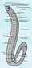

English - Kannada Dictionary
ಇಂಗ್ಲಿಷ್ - ಕನ್ನಡ ನಿಘಂಟು
- ಇಂಗ್ಲೀಷ್ ವರ್ಣಮಾಲೆಯ ಎಂಟನೆಯ ಅಕ್ಷರ.
- H ಆಕಾರದಲ್ಲಿರುವ ಯಾವುದೇ ವಸ್ತು.
- hardness.
- hard (pencil-lead).
- henry(s).
- (water) hydrant.
- (ಅಶಿಷ್ಟ) heroin.
- hecto-.
- horse.
- hot.
- hour(s).
- husband.
- height.
- Planck’s constant.
(ರಸಾಯನವಿಜ್ಞಾನ) hahnium (ಎಂಬ ಧಾತು).
hectare(s).
(ಆಶ್ಚರ್ಯ, ಸಂತೋಷ, ಸಂಶಯ, ಜಯ, ಕೋಪ, ಮೊದಲಾದವನ್ನು ಸೂಚಿಸುವ ಪದ) ಹಾ!
(ಸಂದೇಹ ತೋರಿಸಲು) ‘ಹಾ’ ಎನ್ನು.
hum and ha ಮೂಗಿನಲ್ಲಿ ಹಾಡು.
ಇಂಗ್ಲಂಡ್ ಯಾ ಸ್ಕಾಟ್ಲ್ಯಂಡಿನ ಪೂರ್ವತೀರದಲ್ಲಿಯ ತಣ್ಣನೆಯ ಕಡಲಮಂಜು.
Habakkuk (ಹಳೆಯ ಒಡಂಬಡಿಕೆ).
- ವಿಳಂಬಕಾಲದ ದ್ವಿ – ತಾಳದಲ್ಲಿ ಮಾಡುವ, ಕೂಬಾ ದೇಶದ ನರ್ತನ.
- ಈ ನರ್ತನದ ಸಂಗೀತ.
ಹೇಬಿಯಸ್ ಕಾರ್ಪಸ್; ಆಸಾಮಿ ಹಾಜರಿ ಹುಕುಂ; ವ್ಯಕ್ತಿ ಹಾಜರಿ ಆಜ್ಞೆ; (ಒಬಬನ ಬಂಧನ ನ್ಯಾಯವಿಹಿತವೊ ಅಲ್ಲವೊ ಎಂಬುದನ್ನು ವಿಚಾರಣೆ ಮಾಡಲು ನ್ಯಾಯಾಧಿಪತಿಯ ಮುಂದೆ) ವ್ಯಕ್ತಿಯನ್ನು ಸಾಕ್ಷಾತ್ತಾಗಿ ಹಾಜರು ಮಾಡಬೇಕೆಂದು ಕೊಟ್ಟ ಆಜ್ಞಾ ಪತ್ರ.
‘ಹೇಬಿಯಸ್ ಕಾರ್ಪಸ್’ ಶಾಸನ; ಆಸಾಮಿ ಹಾಜರಿ ಹುಕುಂ ಮಸೂದೆ; 1679 ರಲ್ಲಿ ಇಂಗ್ಲಡಿನ ಎರಡನೆಯ ಚಾರ್ಲ್ಸ್ ದೊರೆಯು ಜಾರಿಗೆ ತಂದ, ಹೇಬಿಯಸ್ ಕಾರ್ಪಸ್ ಶಾಸನ.

- ಸಣ್ಣ ಪುಟ್ಟ ಉಡುಪಿನ ವಸ್ತುಗಳ ಚಿಲ್ಲರೆ ವ್ಯಾಪಾರಿ; ಉಡುಪಿಗೆ ಸಂಬಂಧಿಸಿದ ದಾರ, ಸೂಜಿ, ರಿಬ್ಬನ್, ಮೊದಲಾದವುಗಳ ಸಣ್ಣ ವ್ಯಾಪಾರಿ.
- (ಅಮೆರಿಕನ್ ಪ್ರಯೋಗ) ಗಂಡಸರ ಉಡುಗೆ – ತೊಡಿಗೆಗಳ ವ್ಯಾಪಾರಿ.
- ಸಣ್ಣಪುಟ್ಟ ಉಡುಪುಗಳ್ಳನ್ನು ಮಾರುವ ಚಿಲ್ಲರೆ ಅಂಗಡಿ.
- ಅಂಥ ಅಂಗಡಿಯಲ್ಲಿ ಮಾರಾಟವಾಗುವ ಸಣ್ಣಪುಟ್ಟ ಬಟ್ಟೆಬರೆ ಮೊದಲಾದವು.
- ಗಂಡಸರ ಉಡುಪಿನ ಅಂಗಡಿ.
(ಚರಿತ್ರೆ) ತೋಳಿಲ್ಲದ ಉಕ್ಕಿನ ಕವಚ.
(ಸಾಹಿತ್ಯಕ ಪ್ರಯೋಗ) ಚಾಕಚಕ್ಯವುಳ್ಳ; ಕುಶಲನಾದ; ನಿಪುಣನಾದ; ಕೈಚಳಕದ; ಜಾಣ್ಮೆಯ; ಚತುರ; ಚತುರತೆಯ.
- (ಬಹುವಚನದಲ್ಲಿ) ಯಾವುದೇ ಉದ್ಯೋಗಕ್ಕೆ, ಅಧಿಕಾರ ಸ್ಥಾನಕ್ಕೆ ಯಾ ಸಂದರ್ಭಕ್ಕೆ ತಕ್ಕುದಾಗುವ – ಉಡುಪು, ಪೋಷಾಕು.
- (ಹಾಸ್ಯ ಪ್ರಯೋಗ) ಸಾಮಾನ್ಯ ಬಟ್ಟೆಬರೆ, ಉಡುಪು.
- (ಪ್ರಾಚೀನ ಪ್ರಯೋಗ) ಸಜ್ಜು; ಉಡುಗೆ ತೊಡಿಗೆ; ವೇಷ ಭೂಷಣ.
(ಮುಖ್ಯವಾಗಿ ಜರ್ಮನ್ ವಿಶ್ವವಿದ್ಯಾನಿಲಯದಲ್ಲಿ ಉಪಾಧ್ಯಾಯನ) ಹುದ್ದೆಗೆ ಅರ್ಹನಾಗು, ಅರ್ಹತೆ ಗಳಿಸಿಕೊ.
(ಪ್ರಾಚೀನ ಪ್ರಯೋಗ) ಉಡುಗೆ, ತೊಡಿಗೆ – ಒದಗಿಸು.
- ಉದ್ಯೋಗಾರ್ಹತೆ; ಉದ್ಯೋಗ ಪಡೆಯಲು ಅರ್ಹತೆ, ಶಿಕ್ಷಣ ಪಡೆಯುವಿಕೆ ಯಾ ನೀಡುವಿಕೆ.
- ಪುನಶ್ಚೇತನಗೊಳಿಸುವುದು: habilitation of palsy patients ಅದುರುವಾಯು ರೋಗಿಗಳನ್ನು ಪುನಶ್ಚೇತನಗೊಳಿಸುವುದು.

- ಪದ್ದತಿ; ರೂಢಿ; ಅಭ್ಯಾಸ; ಬಳಕೆ; ವಾಡಿಕೆ; ಪಾಟಿ; ಚಾಳಿ; ಚಾಲು; ಚಟ: he is in the habit of contradiction ಏತಿ ಎಂದರೆ ಪ್ರೇತಿ ಎನ್ನುವುದು ಅವನ ಚಾಳಿ. daily bathing is a good habit ದಿನಾ ಸ್ನಾನ ಮಾಡುವುದು ಒಳ್ಳೆಯ ಅಭ್ಯಾಸ.
- ಮನಃ ಪ್ರಕೃತಿ; ಮನಸ್ಸಿನ – ಪ್ರವೃತ್ತಿ, ಸ್ವಭಾವ: habit of mind ಮನಸ್ಸಿನ ಸ್ವಭಾವ.
- ದೇಹಪ್ರಕೃತಿ: a man of corpulent habit ಸ್ಥೂಲ ದೇಹಪ್ರಕೃತಿಯವನು.
- (ಸಸ್ಯವಿಜ್ಞಾನ, ಜೀವವಿಜ್ಞಾನ) ಬೆಳೆಯುವ ಸ್ವಭಾವ ರೀತಿ: a grass ubiquitous in its habit ಎಲ್ಲೆಲ್ಲೂ ಬೆಳೆಯುವ ಸ್ವಭಾವದ ಹುಲ್ಲು.
- (ಮುಖ್ಯವಾಗಿ ದಾರ್ಮಿಕ ಪಂಥಕ್ಕೆ ಸಂಬಂಧಿಸಿದ) ಪೋಷಾಕು.
- ಸ್ತ್ರೀಯ ಕುದುರೆ ಸವಾರಿಯ ಪೋಷಾಕು.
- (ಪ್ರಾಚೀನ ಪ್ರಯೋಗ) ಉಡುಪು.
- (ಮನಶ್ಶಾಸ್ತ್ರ) ಅನೈಚಿಕ ಪ್ರತಿಕ್ರಿಯೆ; ಅಪ್ರಾಜ್ಞಿಕ ಪ್ರತಿಕ್ರಿಯೆ; ನಿರ್ದಿಷ್ಟ ಸಂದರ್ಭವೊಂದಕ್ಕೆ ತನ್ನಷ್ಟಕ್ಕೆ ತಾನೆ ಒದಗುವ, ಪ್ರಜ್ಞಾಪೂರ್ವಕವಾಗಿ ಆಗಿರದ ಪ್ರತಿಕ್ರಿಯೆ.
- (ಆಡುಮಾತು) ದುರಭ್ಯಾಸ; ಕೆಟ್ಟ ಚಾಳಿ, ಉದಾಹರಣೆಗೆ ಮಾದಕವಸ್ತುಗಳನ್ನು ತಿನ್ನುವ ಯಾ ಕುಡಿಯುವ ಅಭ್ಯಾಸ, ಚಾಳಿ.
- creature of habit ಅಭ್ಯಾಸಜೀವಿ; ಯಾವನ ಇಡೀ ನಡವಳಿಕೆಯು ರೂಢಿಯ ಬಲದಿಂದಲೇ ನಡೆಯುವುದೋ ಅಂಥವನು.
- from habit, or from force of habit, or out of habit ಅಭ್ಯಾಸಬಲದಿಂದ; ರೂಢಿಯಿಂದ.
- get out of the habit of ಅಭ್ಯಾಸವನ್ನು ಬಿಡು; ನಿಯತವಾಗಿ ಮಾಡುವುದನ್ನು ಬಿಟ್ಟು ಬಿಡು; ಚಾಳಿ ತೊರೆ; ರೂಢಿಯಿಂದ ತಪ್ಪಿಸಿಕೊ.
- make a habit of (ಯಾವುದನ್ನೇ) ಅಭ್ಯಾಸವನ್ನಾಗಿ ಮಾಡಿಕೊ; ರೂಢಿಮಾಡಿಕೊ.
- (ಸಾಮಾನ್ಯವಾಗಿ ಭೂತಕೃದಂತದಲ್ಲಿ ಪ್ರಯೋಗ) ಉಡುಪು ತೊಡಿಸು; ಬಟ್ಟೆಹಾಕು.
- (ಪ್ರಾಚೀನ ಪ್ರಯೋಗ) ವಾಸಿಸು; ವಾಸಮಾಡು.
ವಾಸಾರ್ಹತೆ; ವಾಸಯೋಗ್ಯವಾಗಿರುವುದು.
ವಾಸಯೋಗ್ಯ; ವಾಸಮಾಡಲು ಸಾಧ್ಯವಾದ.
ವಾಸಯೋಗ್ಯವಾಗಿ; ವಾಸಿಸಲು ಸಾಧ್ಯವಾಗುವ ರೀತಿಯಲ್ಲಿ.
- ನಿವಾಸಿ.
- (ಉಚ್ಚಾರಣೆ ಆಬಿಟಾಙ್) (ಕೆನಡಾ ಮೊದಲಾದ ದೇಶದಲ್ಲಿ) ಮೊಟ್ಟ ಮೊದಲಲ್ಲೇ ನೆಲಸಿದ ಹ್ರಾನ್ಸಿನ ವಲಸೆಗಾರ ಯಾ ಅವನ ಸಂತತಿಯವನು.
- ಆವಾಸಸ್ಥಾನ; ಸಸ್ಯದ ಯಾ ಪ್ರಾಣಿಯ ಸ್ವಾಭಾವಿಕ ನೆಲೆ, ಹುಟ್ಟಿ ಬೆಳೆಯುವ ಸ್ಥಳ.
- ತವರು; ಇರುನೆಲೆ.
- ವಾಸಮಾಡುವುದು; ವಾಸಮಾಡುವಿಕೆ: fit for human habitation ಮನುಷ್ಯರು ವಾಸಿಸಲು ಯೋಗ್ಯವಾದ ಮನೆ, ಗೃಹ.
- ನಿವಾಸ; ವಸತಿ; ವಾಸಿಸುವ ಸ್ಥಳ.
ಚಾಳಿಯಾಗಿಸುವ; ಅಭ್ಯಾಸವಾಗಿಸುವ; ರೂಢಿ ಹಿಡಿಸುವ.
- ಸಂಪ್ರದಾಯದ; ಪದ್ಧತಿಯ; ಅಭ್ಯಾಸದ; ರೂಢಿಯ; ಬಳಕೆಯ; ವಾಡಿಕೆಯ.
- ನಿತ್ಯಗಟ್ಟಲೆಯ; ಅನುದಿನದ; ದಿನಂಪ್ರತಿಯ.
- (ಗೊತ್ತಾದ) ಚಾಳಿಗೆ, ಅಭ್ಯಾಸಕ್ಕೆ – ಬಿದ್ದ; ಚಟಕ್ಕೆ ಸಿಕ್ಕಿದ: a habitual drunkard ಕುಡಿತದ ಚಾಳಿಯವನು.
- ಪದ್ದತಿಯಾಗಿ; ರೂಢಿಯಾಗಿ.
- ದಿನಂಪ್ರತಿ; ಸದಾ; ಯಾವಾಗಲೂ.
- ಅಭ್ಯಾಸದಂತೆ; ಬಳಕೆಯಂತೆ.
- ಚಾಳಿಯಾಗಿ; ಚಟವಾಗಿ.
ರೂಢಿ, ಅಭ್ಯಾಸ – ಮಾಡು, ಮಾಡಿಕೊ; ಬಳಕೆಯಾಗಿಸು; ಬಳಕೆಗೆ ತರು; ಒಗ್ಗಿಸು; ಒಗ್ಗಿಸಿಕೊ.
ರೂಢಿ, ಅಭ್ಯಾಸ – ಮಾಡಿಕೊಳ್ಳುವುದು; ಬಳಕೆಗೆ ತರುವುದು; ಒಗ್ಗಿಸುವುದು ಯಾ ಒಗ್ಗಿಸಿಕೊಳ್ಳುವುದು.
- ಮನಃಪ್ರಕೃತಿ ಯಾ ದೇಹಪ್ರಕೃತಿ; ಮನಸ್ಸಿನ ಯಾ ದೇಹದ - ಸ್ವಭಾವ, ಒಲವು, ಪ್ರವೃತ್ತಿ, ಪದ್ಧತಿ, ರೂಢಿ.
- ವಾಡಿಕೆ; ಸಂಪ್ರದಾಯ; ಬಳಕೆ.
- ಸ್ವಭಾವ ಒಲವು; ಪ್ರವೃತ್ತಿ.
- (ಒಂದು ಸ್ಥಳಕ್ಕೆ) ವಾಡಿಕೆಯಾಗಿ ಬಂದು ಹೋಗುವವನು.
- (ಒಂದು ಸ್ಥಳದಲ್ಲಿ) ವಾಡಿಕೆಯಾಗಿ ವಾಸಮಾಡುವವನು.
(ಬಹುವಚನ) ಇಳಿಜಾರು ರೇಖೆಗಳು; ಭೂಪಟದಲ್ಲಿ ಬೆಟ್ಟಗುಡ್ಡ ಮೊದಲಾದವುಗಳ ಇಳಿಜಾರನ್ನು ಸೂಚಿಸಲು ಬಳಸುವ ಸಮಾನಾಂತರ ರೇಖೆಗಳು.
(ಸ್ಪನಿಷ್ ಅಮೆರಿಕದಲ್ಲಿನ)
- ಕಾರ್ಖಾನೆ ಯಾ ನಿವಾಸಗಳನ್ನೊಳಗೊಂಡ ಜಮೀನು, ಕಾನು, ತೋಟ, ಮೊದಲಾದ ಭೂ ಸ್ವಾಮ್ಯ.
- (ಗ್ರಾಮಾಂತರ ಪ್ರದೇಶದಲ್ಲಿನ) ಕಾರ್ಖಾನೆ ಯಾ ಗಣಿ.

- (ಒಂದು ಕೊನೆ ಎಲೆಗುದ್ದಲಿಯಂತೆಯೂ ಇನ್ನೊಂದು ಕೊನೆ ಮೊನಚಾಗಿಯೂ ಇರುವ) ವ್ಯವಸಾಯದ ಗುದ್ದಲಿ.
- (ಗಣಿಗಾರನ) ಪಿಕಾಸಿ.
- ಬೂಟಿನ ಮೂತಿಯಿಂದ ಕೊಟ್ಟ ಒದೆತ.
- (ಮುಖ್ಯವಾಗಿ ಬೂಟಿನ ಮೂತಿಯಿಂದ ಒದ್ದಾಗ ಆಗುವ) ಆಳವಾದ ಸೀಳುಗಾಯ.

- ಕಡಿ; ತರಿ.
- ಕೊಚ್ಚು; ಕಚ್ಚುಕಚ್ಚು ಮಾಡು.
- ಒರಟೊರಟಾಗಿ, ಛಿನ್ನಭಿನ್ನವಾಗಿ, ವಿಕಾರವಾಗುವಂತೆ — ಕತ್ತರಿಸು: the editor hacked the story to bits ಸಂಪಾದಕನು ಕಥೆಯನ್ನು ಛಿನ್ನಭಿನ್ನವಾಗಿ ಕತ್ತರಿಸಿ ಹಾಕಿದ.
- ಬೂಟಿನ ಮೂತಿಯಿಂದ ಗಾಯವಾಗುವಂತೆ ಒದೆ.
- ಹುಟ್ಬಾಲ್ ಆಟದಲ್ಲಿ ಎದುರಾಳಿಯ ಕಣಕಾಲನ್ನು ಒದೆ.
- ಕತ್ತರಿಸುವಂತೆ ಏಟು ಹಾಕು, ಹೊಡೆ.
- ಒಣಕೆಮ್ಮಲು ಕೆಮ್ಮು; ಹುಡಿಗೆಮ್ಮು ಕೆಮ್ಮು.
a hacking cough (ಸ್ವಲ್ಪ ಹೊತ್ತು ಬಿಟ್ಟು ಪದೇಪದೇ ಬರುವ) ಒಣಕೆಮ್ಮಲು; ಹುಡುಗೆಮ್ಮು.

- ಡೇಗೆಗೆ ಮಾಂಸವಿಡಲು ಬಳಸುವ ಹಲಗೆ.
- ಒಣಗಲಿಟ್ಟ ಇಟ್ಟಿಗೆ ಸಾಲು.
- (ಸುಡುವುದಕ್ಕೆ ಮುಂಚೆ) ಇಟ್ಟಿಗೆಗಳನ್ನು ಒಣಗಲಿಡುವ ಚೌಕಟ್ಟು.
at hack (ಮರಿಡೇಗೆಯ ವಿಷಯದಲ್ಲಿ) ಸ್ವತಂತ್ರವಾಗಿ ಯಾ ತಾನೇ ಬೇಟೆಯಾಡಲು ಅವಕಾಶ ಪಡೆದಿರದ.

- ಬಾಡಿಗೆ ಕುದುರೆ.
- ಕಳಪೆ ಕುದುರೆ.
- ಸುಸ್ತುಬಿದ್ದ ಕುದುರೆ.
- (ಸಾಮಾನ್ಯ) ಸವಾರಿ – ಕುದುರೆ, ತಟ್ಟು.
- ದುಡಿತದ ಕತ್ತೆ.
- ಗುಲಾಮಚಾಕರಿ ಮಾಡುವವನು; ದುಡಿತದ ಲೇಖಕ ಯಾ ಕೆಲಸಗಾರ; ಸ್ಫೂರ್ತಿಯಿಲ್ಲದ ಲೇಖಕ ಯಾ ಇತರ ಕೆಲಸಗಾರ.
- (ಅಮೆರಿಕನ್ ಪ್ರಯೋಗ) ಬಾಡಿಗೆ ಕಾರು; ಟ್ಯಾಕ್ಸಿ.
- ದುಡಿತದ ಕತ್ತೆಯಂತೆ ಬಳಸುವ.
- ದುಡಿತದ ಬರಹಗಾರನ ರೀತಿಯ.
- ಕೇವಲ ಸಾಧಾರಣವಾದ; ಕಳಪೆಯ: hack work ಕಳಪೆ ಕೆಲಸ.

- (ಪದೇಪದೇ ಬಳಸಿ) ಹಳಸಲು ಮಾಡು; ಸವಕಲು ಮಾಡು; ಸಾಮಾನ್ಯವಾಗಿಸು.
- ಬಾಡಿಗೆ ಕುದುರೆಸವಾರಿ ಮಾಡು.
- ಜೀತದ ಲೇಖಕನಾಗಿ ನೇಮಕ ಮಾಡು; (ಬರೆಹಗಾರನನ್ನು) ಕತ್ತೆಯಂತೆ ದುಡಿಸು.
(ಕುದುರೆ ಯಾ ಸವಾರನ ವಿಷಯದಲ್ಲಿ) ಸಾಧಾರಣ ನಡಗೆಯಲ್ಲಿ ನಡೆ; ಸಾಮಾನ್ಯ ಗತಿಯಲ್ಲಿ ಸವಾರಿ ಮಾಡು.
(ಅಮೆರಿಕನ್ ಪ್ರಯೋಗ) ಹ್ಯಾಕ್ಬೆರಿ; ಕೆಲ್ಟಿಸ್ ವಂಶದ, ನೇರಳೆ ಬಣ್ಣದ ತಿನ್ನಬಹುದಾದ ಹಣ್ಣು ಬಿಡುವ, ಉತ್ತರಅಮೆರಿಕದ ಒಂದು ಮರ ಯಾ ಅದರ ಹಣ್ಣು.
- ಕೊಚ್ಚುಗ; ಕೊಚ್ಚುವ ವಸ್ತು ಯಾ ವ್ಯಕ್ತಿ.
- (ಆಡುಮಾತು) ಹಾಕರ್ ಮುಖ್ಯವಾಗಿ ಮಾಹಿತಿಯನ್ನು ಅಕ್ರಮವಾಗಿ ಪಡೆಯಲು ಕಂಪ್ಯೂಟರ್ಗಳನ್ನು ಬಳಸುವವ.
(ಇಂಡಿಯಾ ದೇಶದ) ಎತ್ತಿನ ಗಾಡಿ.
(ಪಕ್ಕಗಳಲ್ಲೋ ಹಿಂಭಾಗದಲ್ಲೋ ಸೀಳಿರುವ ಮತ್ತು ಓರೆ ಜೇಬುಗಳಿರುವ) ಬಾಲದಂಗಿ.
- ಹಿಕ್ಕಣಿಕೆ; ಸಿಕ್ಕಟಿಗೆ; (ಸೆಣಬು ಮೊದಲಾದವುಗಳನ್ನು ಹಿಕ್ಕುವ) ಉಕ್ಕಿನ ಹಿಕ್ಕು, ಹಣಿಗೆ.
- ಕೊರಳ ಗರಿ; ಸಾಕುಹುಂಜ ಮೊದಲಾದ ಹಕ್ಕಿಗಳ ಕುತ್ತಿಗೆಯ ಮೇಲಿನ ಉದ್ದ ಗರಿಗಳು.
- (ಹಕ್ಕಿಯ ಕೊರಳ ಗರಿ ಕಟ್ಟಿದ, ಮೀನು ಹಿಡಿಯಲು ಬಳಸುವ) ಕೃತಕ ನೊಣ.
- (ಸ್ಕಾಟ್ಲೆಂಡಿನ) ಹೈಲಾಂಡ್ ಪ್ರದೇಶದ ಸೈನಿಕ ಟೋಪಿಗೆ ಸಿಕ್ಕಿಸಿದ ಗರಿ.
- with his hackles rising (or up) (ಹುಂಜ, ನಾಯಿ, ಮನುಷ್ಯರ ವಿಷಯದಲ್ಲಿ) ಕೋಪ ಹತ್ತಿ; ಹೊರಾಟಕ್ಕೆ ಸಿದ್ಧವಾಗಿ.
- get one’s hackles up ಕೋಪಹತ್ತಿ ಮೇಲೆ ಬೀಳಲು ಸಿದ್ಧವಾಗು.

- (ಸೆಣಬನ್ನು) ಹಿಕ್ಕಣಿಕೆಯಿಂದ ಹೆಕ್ಕು.
- (ವಿರಳ ಪ್ರಯೋಗ) (ಗಾಳದ ಕೃತಕ ನೊಣಕ್ಕೆ) ಗರಿಕಟ್ಟು.

(ಮೇಲ್ಮೈ) ತರಕಲಾಗಿರುವ; ಕಚ್ಚುಕಚ್ಚಾದ; ಒರಟೊರಟಾದ; ತರಿತರಿಯಾದ.
ಲ್ಯಾರಿಕ್ಸ್ ಕುಲಕ್ಕೆ ಸೇರಿದ, ಅಮೆರಿಕದ ಶಂಕುಧಾರಿ ಮರ ಯಾ ಅದರ ದಾರು.

- (ಸಾಮಾನ್ಯವಾದ) ಸವಾರಿಕುದುರೆ; ಎತ್ತರದಲ್ಲಿಯೂ ಮಧ್ಯಸ್ಥವಾದಸಾಮಾನ್ಯವಾಗಿ ಸವಾರಿಗೆ ಬಳಸುವ ಕುದುರೆ.
- (ವಿರಾಮವಿಲ್ಲದ) ದುಡಿಯಾಳು; ಕತ್ತೆಯಂತೆ ದುಡಿಯುವವನು; ಗುಲಾಮಚಾಕರಿ ಮಾಡುವವನು.
(ವಿರಳ ಪ್ರಯೋಗ) ಹಳಸಲು ಮಾಡು; (ಅತಿಯಾದ ಬಳಕೆಯಿಂದ) ಸಾಮಾನ್ಯವಾದದ್ದನ್ನಾಗಿ ಯಾ ಕಳಪೆಯಾದದ್ದನ್ನಾಗಿ ಮಾಡು.
ಬಾಡಿಗೆಯ ಕುದುರೆಗಾಡಿ, ಕೋಚು.
(ಪದಗುಚ್ಚ ಮೊದಲಾದವುಗಳ ವಿಷಯದಲ್ಲಿ) ಚರ್ವಿತಚರ್ವಣವಾದ; ಹಳಸಲಾದ.

ಕುದುರೆಗಾಡಿ ನಿಲ್ದಾಣ.
ದುಡಿತದ ಬರಹಗಾರ; ಜೀತದ ಲೇಖಕ; ಇನ್ನೊಬ್ಬರಿಗಾಗಿ ಪುಸ್ತಕ, ಲೇಖನ, ಮೊದಲಾದವನ್ನು ಬರೆದುಕೊಡುವ ಬರಹಗಾರ.
have ಧಾತುವಿನ ಭೂತರೂಪ ಮತ್ತು ಭೂತಕೃದಂತ ರೂಪ.
(ಬಹುವಚನ ಅದೇ)ಹಾಡಕ್ ಮೀನು; ಕಾಡ್ಮೀನಿನಂಥ, ಆದರೆ ಅದಕ್ಕಿಂತ ಚಿಕ್ಕದಾದ, ಉತ್ತರ ಅಟ್ಲಾಂಟಿಕ್ನ ಒಂದು ಮೀನು.
(ಭೂವಿಜ್ಞಾನ, ಗಣಿ) ಓಲಿರು; ಲಂಬದಿಂದ ಓಲಿರು.
(ಗ್ರೀಕ್ ಪುರಾಣ) ಅಧೋಲೋಕ; ಮೃತರ ಆತ್ಮಗಳ ಲೋಕ.
ಹಾಡಿತ್; ಮುಹಮ್ಮದನಿಗೆ ಸಂಬಂಧಿಸಿದ ಪರಂಪರಾಗತ ನಂಬಿಕೆಗಳ ಸಮುದಾಯ.
hajj ಎಂಬುದರ ರೂಪಾಂತರ.
had not ಎಂಬುದರ ಹ್ರಸ್ವರೂಪ.
(ತತ್ತ್ವಶಾಸ್ತ್ರ)
- ‘ಇದು’ತನ; ಇದಂತ್ವ; ಇದು, ಈ ಎಂದು ವರ್ಣಿಸಬಹುದುದಾದ, ನಿರೂಪಿಸಬಹುದಾದ ಗುಣಲಕ್ಷಣ.
- ವ್ಯಕ್ತಿತ್ವ; ವೈಶಿಷ್ಟ್ಯ; ಒಂದು ವಸ್ತು ಮೊದಲಾದವುಗಳಲ್ಲಿ ವಿಶಿಷ್ಟವೆನಿಸುವ ವೈಯಕ್ತಿಕ ಗುಣ, ಲಕ್ಷಣ.
(ಜೀವರಸಾಯನ ವಿಜ್ಞಾನ) ಹೀಮ್; ಆಮ್ಲದ ನೆರವಿನಿಂದ ಹೀಮೊಗ್ಲಾಬಿನ್ನಿನಿಂದ ಗ್ಲಾಬಿನ್ನನ್ನು ಪ್ರತ್ಯೇಕಿಸಿದರೆ ಉಳಿಯುವ, ಉತ್ಕರ್ಷಿಸಿದಾಗ ಹೀಮಿನ ಯಾ ಹಿಮಟಿನ್ನನ್ನು ಕೊಡುವ, ಒಂದು ದಟ್ಟ ಕೆಂಪು ವರ್ಣ ದ್ರವ್ಯ, ${\rm C}_{ 34} {\rm H}_{ 32} {\rm N}_4 {\rm O}_4 {\rm Fe}$.
- ರಕ್ತದ ಯಾ ರಕ್ತ ಸಂಬಂಧಿ(ಯಾದ).
- (ಅಂಗರಚನಾಶಾಸ್ತ್ರ) ದೇಹದಲ್ಲಿ ಹೃದಯ ಮತ್ತು ಪ್ರಧಾನ ರಕ್ತನಾಳಗಳಿರುವ ಕಡೆಯಲ್ಲಿ ಯಾ ಪಾರ್ಶ್ವದಲ್ಲಿ ಇರುವ.

(ವೈದ್ಯಶಾಸ್ತ್ರ) ರಕ್ತವರ್ಧಕ; ರಕ್ತವರ್ಧಿನಿ; ರಕ್ತದ ಮೇಲೆ ವರ್ತಿಸಿ, ಕೆಂಪು ರಕ್ತಕಣಗಳನ್ನು ಯಾ ಹೀಮೊಗ್ಲಾಬಿನ್ನನ್ನು ವರ್ಧಿಸುವ ಔಷಧಿ.
(ರಸಾಯನವಿಜ್ಞಾನ) ಹೀಮಟಿನ್; ಹೀಮ್ನ ಉತ್ಕರ್ಷಣದಿಂದ ದೊರಕುವ, ನೀಲಿ ಕಪ್ಪು ಪದಾರ್ಥ ಯಾ ಕಂದು ಛಾಯೆಯ ಕಪ್ಪು ಘನ ಸಂಯುಕ್ತ, ${\rm C}_{ 34} {\rm H}_{ 32} {\rm N}_4 {\rm O}_4 {\rm Fe}. {\rm OH}$.
ರಕ್ತವರ್ಧಕ; ರಕ್ತದ ಮೇಲೆ ವರ್ತಿಸಿ ಕೆಂಪು ರಕ್ತಕಣಗಳನ್ನು ಯಾ ಹೀಮೊಗ್ಲಾಬಿನನ್ನು ವರ್ಧಿಸುವ.
(ಖನಿಜಶಾಸ್ತ್ರ) ಹೀಮಟೈಟ್; ಕೆಂಪು, ಕಂದು ಯಾ ಕಪ್ಪು ಛಾಯೆಯ ಕಬ್ಬಿಣದ ಆಕ್ಸೈಡ್ನ ಅದುರು, ${\rm Fe}_2 {\rm O}_3$.
ರಕ್ತ(ದ) ಎಂಬರ್ಥದ ಸಮಾಸ ಪೂರ್ವಪದ.
(ವೈದ್ಯಶಾಸ್ತ್ರ) ರಕ್ತನಾಳದಿಂದ ಹೊರಕ್ಕೆ ಹರಿದ ರಕ್ತದಿಂದ ಊದಿಕೊಂಡ ಯಾವುದೇ ದೇಹಕುಹರ.
ಹೀಮಟೋಕೋಮ್; ಕೆಲವು ಬಗೆಯ ಪಾಚಿಗಳಲ್ಲಿ ಕಂಡುಬರುವ ಕೆಂಪು ಯಾ ಕಿತ್ತಳೆ ಬಣ್ಣದ ವರ್ಣದ್ರವ್ಯ.
(ಶರೀರ ವಿಜ್ಞಾನ) ಹೀಮಟೋಕ್ರಿಟ್:
- ಕೆಂಪು ರಕ್ತ ಕಣಗಳ ಪ್ರಮಾಣಕ್ಕೂ ಒಟ್ಟು ರಕ್ತದ ಪ್ರಮಾಣಕ್ಕೂ ಇರುವ ದಾಮಾಷಾ.
- ಈ ದಾಮಾಷಾವನ್ನು ಅಳೆಯಲು ಬಳಸುವ ಸಾಧನ.
ರಕ್ತಶಾಸ್ತದ; ರಕ್ತವಿಜ್ಞಾನದ; ರಕ್ತದ ಅಧ್ಯಯನದ.
ರಕ್ತಶಾಸ್ತ್ರಜ್ಞ; ರಕ್ತತಜ್ಞ.
ರಕ್ತಶಾಸ್ತ್ರ; ರಕ್ತವಿಜ್ಞಾನ; ರಕ್ತದ ಅಧ್ಯಯನ.
(ವೈದ್ಯಶಾಸ್ತ್ರ) ಊತಕಗಳಲ್ಲಿ ರಕ್ತ ಹೆಪ್ಪುಗಟ್ಟಿ ಊದಿಕೊಳ್ಳುವುದು.
(ವೈದ್ಯಶಾಸ್ತ್ರ) ರಕ್ತಮೂತ್ರ; ಮೂತ್ರದಲ್ಲಿ ರಕ್ತವಿರುವ ಒಂದು ರೋಗ.
-aemia ಎಂಬುದರ ರೂಪಾಂತರ.
(ಜೀವರಸಾಯನ ವಿಜ್ಞಾನ) ಹೀಮಿನ್; ಹೀಮ್ನ ಉತ್ಕರ್ಷಣದಿಂದ ದೊರಕುವ, ಕೆಂಗಂದು ಯ ನೀಲಿಕಪ್ಪು ಬಣ್ಣದ ಲವಣ, ${\rm C}_{ 34} {\rm H}_{ 32} {\rm N}_4{\rm O}_4{\rm FeCl}$.
ಹೀಮಸೈಅನಿನ್; ಸಂಧಿಪದಿಗಳ ಮತ್ತು ಮೃದ್ವಂಗಿಗಳ ರಕ್ತದ ಪ್ಲಾಸ್ಮಾದಲ್ಲಿ ಕಂಡುಬರುವ, ಶ್ವಾಸೋಚ್ಛ್ವಾಸ ಕ್ರಿಯೆಯಲ್ಲಿ ಪಾಲ್ಗೊಳ್ಳುವ, ಬಣ್ಣವಿಲ್ಲದ ತಾಮ್ರಯುಕ್ತ ವರ್ಣದ್ರವ್ಯ.
ಹೀಮೊಸೈಟ್; ಕೆಂಪು ರಕ್ತಕಣ.
ಹೀಮೊಗ್ಲಾಬಿನ್; ಕಶೇರುಕಗಳ ಕೆಂಪು ರಕ್ತಕಣಗಳಲ್ಲಿರುವ, ಶ್ವಾಸಕೋಶದಿಂದ ದೇಹದ ಎಲ್ಲ ಊತಕಗಳಿಗೂ ಆಕ್ಸಿಜನ್ನನ್ನು ರವಾನಿಸುವುದರಲ್ಲಿ ಪಾತ್ರವಹಿಸುವ, ಕಬ್ಬಿಣಯುಕ್ತ ಪ್ರೋಟೀನ್ ವರ್ಣ ದ್ರವ್ಯ.
ಹೀಮಾಲಿಸಿನ್; ಕೆಂಪು ರಕ್ತಕಣಗಳನ್ನು ನಾಶಮಾಡಿ ಹೀಮೊಗ್ಲಾಬಿನ್ನನ್ನು ಬಿಡುಗಡೆ ಮಾಡಬಲ್ಲ ಪದಾರ್ಥ.
ಹೀಮಾಲಿಸಿಸ್; ಕೆಂಪು ರಕ್ತಕಣಗಳು ನಾಶವಾಗಿ ಹೀಮೊಗ್ಲಾಬಿನ್ ಬಿಡುಗಡೆಯಾಗುವುದು.
ಹೀಮೊಹಿಲಿಯ; ರಕ್ತವು ಬೇಗನೆ ಹೆಪ್ಪುಗಟ್ಟದ ಕಾರಣ ಸ್ವಲ್ಪ ಗಾಯವಾದರೂ ರಕ್ತಸ್ರಾವ ಬೇಗ ನಿಲ್ಲದಿರುವ (ಗಂಡಸರಲ್ಲಿ ಮಾತ್ರ ಕಂಡು ಬರುವ) ಒಂದು ಅನುವಂಶೀಯ ರೋಗ.
ಹೀಮೊಹಿಲಿಯಾ ರೋಗಿ; ಹೀಮೊಹಿಲಿಯಾ ರೋಗದಿಂದ ನರಳುತ್ತಿರುವವ.
(ಮುಖ್ಯವಾಗಿ ಅಧಿಕ) ರಕ್ತಸ್ರಾವ; (ಮುಖ್ಯವಾಗಿ ಬಹಳ) ರಕ್ತಸುರಿತ.
(ಮುಖ್ಯವಾಗಿ ಅಧಿಕ ಯಾ ಅತಿ) ರಕ್ತಸ್ರಾವವಾಗು; (ಮುಖ್ಯವಾಗಿ ಬಹಳ) ರಕ್ತ – ಸೋರು, ಸುರಿ.
(ಸಾಮಾನ್ಯವಾಗಿ ಬಹುವಚನದಲ್ಲಿ) ಮೂಲವ್ಯಾಧಿ; ಮೊಳೆರೋಗ; ಗುದದ್ವಾರದ ಬಳಿ ಊದಿಕೊಂಡ ಊತಕದಲ್ಲಿ ಮಲಿನ ರಕ್ತನಾಳಗಳು ಹಿಗ್ಗಿ ತೊಡಕುತೊಡಕಾಗಿ ಕಟ್ಟಿದ ಗಂಟು.
ಮೂಲವ್ಯಾಧಿಯ; ಮೊಳೆರೋಗದ ಯಾ ಅದಕ್ಕೆ ಸಂಬಂಧಿಸಿದ.
ರಕ್ತ ನಿಲುಗಡೆ; ರಕ್ತಸ್ತಂಭನ; ರಕ್ತದ ಹರಿವು ನಿಂತುಹೋಗುವುದು; ರಕ್ತಸ್ರಾವದ ನಿಲುಗಡೆ.
ರಕ್ತನಿಲುಗಡೆಯ; ರಕ್ತಸ್ತಂಭಕ; ರಕ್ತದ ಹರಿವು ನಿಂತು ಹೋಗುವ ಯಾ ಅದಕ್ಕೆ ಸಂಬಂಧಿಸಿದ.
(ನೂಸಿಲಂಡ್) ಸ್ವಾಗತ!
ಹಹೀಜ; ಕುರಾನು ಕಂಠಪಾಠ ಮಾಡಿರುವ ಮುಸಲ್ಮಾನ ಯಾ ಅವನ ಬಿರುದು.
(ರಸಾಯನವಿಜ್ಞಾನ) ಹಾಹ್ನಿಯಮ್; ಪರಮಾಣು ಸಂಖ್ಯೆ 72, ಪರಮಾಣು ತೂಕ 178.5 ಉಳ್ಳ, ಸಿರ್ಕೋನಿಯಮ್ ಕುಟುಂಬದ ರಾಸಾಯನಿಕ ಧಾತು.

- (ಪಿಕಾಸಿ, ಗುದ್ದಲಿ, ಕೊಡಲಿ, ಮೊದಲಾದವುಗಳ ಮರದ) ಕಾವು.
- (ಚಾಕು, ಬಾಕು, ಮೊದಲಾದವುಗಳ) ಹಿಡಿ.
- ಮುದಿ ಗೊಡ್ಡು; ಮುದಿಗೂಬೆ; ಅವಲಕ್ಷಣದ, ವಿಕಾರವಾದ ಮುದುಕಿ.
- (ಕೆಡಕು ಮಾಡುವ) ಮಾಟಗಾತಿ; ಶೂನ್ಯಗಾತಿ.
- (ಹಿಂದೆ) ಹೆಣ್ಣುಪಿಶಾಚಿ; ಹೆಣ್ಣುದೆವ್ವ.
- ಹಾಗ್ (ಮೀನು); ಹಾವುಮೀನನ್ನು ಹೋಲುವ, ದುಂಡು ಬಾಯಿಯ, 8 ಸ್ಪರ್ಶತಂತುಗಳುಳ್ಳ ಪರಾವಲಂಬಿ ಮೀನು ಜಾತಿ. 

- (ಕುರುಚಲು ಬಂಜರಿನಲ್ಲಿನ) ಮೆದುಸ್ಥಳ.
- (ಜವುಗು ನೆಲದಲ್ಲಿನ) ಗಟ್ಟಿಪ್ರದೇಶ.
Haggai (ಬೈಬಲಿನ ಹಳೆ ಒಡಂಬಡಿಕೆ).
- (ಯೆಹೂದಿ ಧರ್ಮಶಾಸ್ತ್ರ) ‘ಟಾಲ್ಮುಡ್’ ಗ್ರಂಥದ ಐತಿಹ್ಯ ಭಾಗ.
- (ಯೆಹೂದಿ) ‘ಸೇಡರ್’ (ಧರ್ಮ) ಗೋಷ್ಠಿಯಲ್ಲಿ ಪಠಿಸುವ ಗ್ರಂಥ.

- (ಆಯಾಸ, ದಾರಿದ್ರ್ಯ, ಕಳವಳ, ಮೊದಲಾದವುಗಳಿಂದ) ರಾವುಬಡಿದಂತೆ ಕಾಣುವ; ಹೆಣ ಮುಖದ; ಕಂಗಾಲಾದ; ವಿಕಾರವಾದ.
- ನರಪೇತಲ; ಮೂಳೆ ಬಿಟ್ಟುಕೊಂಡಿರುವ; ಬಡಕಲಾಗಿರುವ.
- (ಡೇಗೆಯ ವಿಷಯದಲ್ಲಿ) ಗರಿ ಬಲಿತ ಮೇಲೆ ಹಿಡಿದ; ಪಳಗಿಲ್ಲದ.
- ಜೋಲುಮೋರೆಯ; ಘೋರ; ವಿಕಾರವಾದ; ಕಂಗೆಟ್ಟ; ವಿಷಣ್ಣ; ಉತ್ಸಾಹಶೂನ್ಯ: haggard eyes ಕಂಗೆಟ್ಟ ಕಣ್ಣುಗಳು.

- (ಆಯಾಸ, ದಾರಿದ್ರ್ಯ, ಕಳವಳ, ಮೊದಲಾದವುಗಳಿಂದ) ರಾವುಬಡಿದಂತಿರುವುದು; ಕಂಗಾಲಾಗಿರುವುದು.
- (ಡೇಗೆಯ ವಿಷಯದಲ್ಲಿ) ಪಳಗಿಲ್ಲದಿರುವುಕೆ; ಕಾಡುತನ.
- ಉತ್ಸಾಹಶೂನ್ಯತೆ; ವಿಷಣ್ಣತೆ: a new haggardness in her face ಅವಳ ಮುಖದಲ್ಲಿ ಹೊಸದಾಗಿ ಕಂಡುಬರುತ್ತಿರುವ ವಿಷಣ್ಣತೆ.
- ಬಡಕಲಾಗಿರುವುದು.
ಹಾಗಿಸ್; ಕುರಿ ಯಾ ಕರುವಿನ ಹೃದಯ, ಶ್ವಾಸಕೋಶ ಮತ್ತು ಯಕೃತ್ತುಗಳ ತುರಿಯನ್ನು ನೆಣ ಮತ್ತು ಓಟ್ ಹಿಟ್ಟಿನೊಡನೆ ಆ ಪ್ರಾಣಿಯ ಹೊಟ್ಟೆಚೀಲದಲ್ಲಿ ಯಾ ಕೃತಕವಾದ ಹೊದಿಕೆಯಲ್ಲಿ ಹಾಕಿ ಕುದಿಸಿ ತಯಾರಿಸಿದ ಒಂದು ತಿನಿಸು.
- ಮುದಿಗೊಡ್ಡಿನಂಥ.
- ಮಾಟಗಾತಿಯ ಹಾಗಿರುವ.
- ಹೆಣ್ಣು ಪಿಶಾಚಿಯಂಥ.
- ಅವಲಕ್ಷಣವಾಗಿರುವ; ವಿಕಾರವಾಗಿರುವ; ವಿಕಾರವಾದ.

- ವ್ಯಾಪಾರದಲ್ಲಿ ಕೊಸರಾಡು, ಜುಗ್ಗಾಡು; ಚೌಕಾಸಿ ಮಾಡು.
- ಒರಟೊರಟಾಗಿ ಕೊಚ್ಚಿ ಹಾಕು; ಒಡ್ಡೊಡ್ಡಾಗಿ ಕತ್ತರಿಸು.
ಜಗಳವಾಡು; ರಂಪಮಾಡು.
- ಜಗಳ; ರಂಪಾಟ; ರಂಪ.
- (ವ್ಯಾಪಾರದಲ್ಲಿ) ಕೊಸರಾಟ; ಜುಗ್ಗಾಟ; ಚೌಕಾಸಿ.
ಸಾಧುಸಂತರ, ಪವಿತ್ರ, ಧಾರ್ಮಿಕ ಎಂಬರ್ಥಗಳಲ್ಲಿ ಬಳಸುವ ಸಮಾಸ ಪೂರ್ವಪದ, ಉದಾಹರಣೆಗೆ hagiocracy.

ಸಾಧುಸಂತರ ಆಳ್ವಿಕೆ; ಸಂತ – ಪ್ರಭುತ್ವ, ವ್ಯವಸ್ಥೆ.
ಹೀಬ್ರು ಪವಿತ್ರ ಗ್ರಂಥ; ಹಳೆಯ ಒಡಂಬಡಿಕೆಯ ಮೂರು ಮುಖ್ಯ ಭಾಗಗಳಲ್ಲಿ ಕೊನೆಯದರ 12 ಪ್ರಕರಣಗಳು.
ಸಂತಚರಿತಕಾರ; ಸಾಧುಸಂತರ ಜೀವನಚರಿತ್ರೆ ಬರೆಯುವವನು.
- ಸಂತಚರಿತೆ; ಸಾಧುಸಂತರ ಜೀವನ ಚರಿತ್ರೆ.
- ಸಾಧುಸಂತರ ಜೀವನ ಚರಿತ್ರೆಯ ಲೇಖನ ರಚನೆ.
ಸಂತಾರಾಧನೆ; ಸಾಧುಸಂತರ ಪೂಜೆ, ಆರಾಧನೆ.
(ಸಾಧುಸಂತರ ಜೀವನ ಚರಿತ್ರೆ, ಕಥೆಗಳು, ಮೊದಲಾದವನ್ನೊಳಗೊಂಡ) ಸಂತಸಾಹಿತ್ಯ.
(ಚರ್ಚು) ದರ್ಶನಗಂಡಿ; ಚರ್ಚಿನ ಬಲಿಪೀಠವು ಹೊರಗೆ ನಿಂತವರಿಗೆ ಕಾಣಿಸಲೋಸುಗ ಗೋಡೆಯೊಳಗೆ ಮಾಡಿದ ಕಂಡಿ, ತೆರಪು.
(ಸಾಧುಸಂತರಿಂದ ಮಾಡಲ್ಪಟ್ಟ) ಪವಾಡ ಚಿಕಿತ್ಸೆ; ಸಂತಚಿಕಿತ್ಸೆ.
ದುಃಸ್ವಪ್ನಪೀಡಿತ ಯಾ ಚಿಂತಾಪೀಡಿತ.
ಉದ್ಯಾನವನದ ಯಾ ತೋಟದ ಸುತ್ತಲೂ ಹತ್ತಿರ ಬರುವವರೆಗೂ ಕಾಣದಂತೆ ಹಾಕಿರುವ ತಗ್ಗುಬೇಲಿ.
(ತಲೆಯನ್ನೂ ದೇಹವನ್ನೂ ಮುಚ್ಚುವ) ಅಬ್ಬರದ ಹೊರ ಹೊದಿಕೆ, ದುಪಟಿ.
(ಬಹುವಚನ ಅದೇ) ಹೈಕು:
- ಸಾಮಾನ್ಯವಾಗಿ 17 ಮಾತ್ರೆಗಳಿರುವ, ತೀರ ಭಾವುಕವಾದ, ಸೂಚನೆಗಳನ್ನೂ ಹೋಲಿಕೆಗಳನ್ನೂ ಬಳಸಿರುವ, ಜಪಾನಿನ ಒಂದು ತ್ರಿಪದಿ ಪ್ರಕಾರ, ಕವನ ಜಾತಿ.
- (ಜಪಾನಿನ) ಹೈಕು ಕವನದ ಇಂಗ್ಲಿಷ್ ಅನುಕರಣ.
- ಆಲಿಕಲ್ಲುಗಳು.
- (ಕ್ಷಿಪಣಿಗಳು, ಶಾಪಗಳು, ಬಯ್ಗಳು, ಪ್ರಶ್ನೆಗಳು, ಮೊದಲಾದವುಗಳ) ಸುರಿಮಳೆ.
- ಜೋರಾಗಿ ಸುರಿಸು; ರಭಸದಿಂದ ಬೀಳಿಸು; ಕೆಡವು.
- (ರೂಪಕವಾಗಿ) (ಏಟು, ಮಾತು, ಮೊದಲಾದವನ್ನು) ಮಳೆಗರೆ; ಬಿರುಸಾಗಿ ಸುರಿ.
ಅಲಿಕಲ್ಲಿನಂತೆ ಬೀಳು; ರಭರದಿಂದ ಸುರಿ.
it is hailing ಆಲಿಕಲ್ಲು (ಮಳೆ) ಬೀಳುತ್ತಿದೆ.
(ಗ್ರಾಂಥಿಕ ಪ್ರಯೋಗ) (ಯಾರನ್ನಾದರೂ ಎದುರಿನಲ್ಲಿ ಕಂಡಾಗ ಒಸಗೆ ಸೂಚಿಸುವ ಸಂಬೋಧನ ಪದ) ಗೆಲ್! ಗೆಲವು! ಜಯವಾಗಲಿ! ಜೈ! ಸ್ವಸ್ತಿ! ಶುಭವಾಗಲಿ!
Hail Mary = Ave Maria.
- ವಂದಿಸು; ನಮಸ್ಕರಿಸು.
- (ವ್ಯಕ್ತಿಯನ್ನು ದೊರೆ ಎಂದು ಮುಂತಾಗಿ) ಕರೆ; ಕೂಗು; ಸಂಬೋಧಿಸು.
- (ಹಡಗು, ಮನುಷ್ಯ, ಮೊದಲಾದವರ ಗಮನ ಸೆಳೆಯಲು ದೂರದಿಂದ) ಕೂಗು; ಕೂಗು ಹಾಕು.
(ಮನುಷ್ಯ, ಹಡಗು, ಮೊದಲಾದವುಗಳ ವಿಷಯದಲ್ಲಿ)(ಒಂದು ಊರಿನಿಂದ, ಸ್ಥಳದಿಂದ) ಬರು; ಬಂದಿಳಿ; ಆಗಮಿಸು: he hails from the hill country ಅವನು ಮಲೆನಾಡಿನಿಂದ ಬಂದಿದ್ದಾನೆ.
- hail him (as) king ದೊರೆಯೆಂದು – ವಂದಿಸು, ಸಂಬೋಧಿಸು.
- within hailing distance ಕೂಗುದೂರದಲ್ಲಿ; ಕೂಗಿ ಗಮನ ಸೆಳೆಯುವಷ್ಟು ಹತ್ತಿರದಲ್ಲಿ (ರೂಪಕವಾಗಿ ಸಹ).
ಅಭಿವಂದನೆ; ಸಂಬೋಧನೆ.
within hail ಕೂಗಳತೆಯಲ್ಲಿ; ಕೂಗುವಷ್ಟು, ಸಂಬೋಧಿಸುವಷ್ಟು – ಹತ್ತಿರದಲ್ಲಿ: within hail of the telephone ಟೆಲಿಹೋನಿನಲ್ಲಿ ಕರೆಯುವಷ್ಟು ಹತ್ತಿರದಲ್ಲಿ.
ನೆಚ್ಚಿನ ಗೆಳೆತನದ; ಅತಿ ಸಲಿಗೆಯ: extended a hail-fellow hand ಅತಿ ಸಲಿಗೆಯ ಹಸ್ತ ನೀಡಿದ.
ನೆಚ್ಚಿನ ಗೆಳೆಯ; ಅತಿ ಸಲಿಗೆಯ ಸ್ನೇಹಿತ; ಲಂಗೋಟಿ (ಬಾಲ್ಯದ) ಸ್ನೇಹಿತ.
ಆಲಿಕಲ್ಲು.
ಆಲಿಕಲ್ಲು ಮಳೆ ಯಾ ಬಿರುಗಾಳಿ ಮಳೆ.
ಆಲಿಕಲ್ಲಿನ; ಆಲಿಕಲ್ಲಿನಿಂದ ಕೂಡಿದ: haily showers ಆಲಿಕಲ್ಲು ಮಳೆ.
-
- (ಪ್ರಾಣಿಗಳ ಚರ್ಮದಿಂದ ಬೆಳೆಯುವ) ಕೂದಲು; ನವಿರು; ರೋಮ.
- (ಮುಖ್ಯವಾಗಿ) ಕೇಶ: ತಲೆಗೂದಲು.
- (ಸಾಮುದಾಯಿಕ ಏವಯಾ ಪ್ರಾಚೀನ ಪ್ರಯೋಗ ಬಹುವಚನ) (ವ್ಯಕ್ತಿಯ ತಲೆಯ ಮೇಲೆ ಬೆಳೆಸುವ) ಕೇಶಗಳು; ಕೂದಲುಗಳು.
- (ಕೈಗಾರಿಕೆ ಮೊದಲಾದವುಗಳಲ್ಲಿ ಬಳಸುವ) ಕೂದಲ ರಾಶಿ; ಕೇಶರಾಶಿ.
- (ಸಸ್ಯದ ಹೊರ ಚರ್ಮದಿಂದ ಬೆಳೆಯುವ) ರೋಮ; ಎಳೆಯಂಥ ಅಂಗಾಂಶ.
- ಕೂದಲಿನಂಥ (ಯಾವುದೇ) ವಸ್ತು.
- ತುಸು; ಅಲ್ಪ; ಲವ; ಲೇಹಶ; ಬಹಳ ಕೊಂಚ; ಅತಿಸ್ವಲ್ಪ.
- against the hair ಸ್ವಭಾವವಿರುದ್ಧವಾಗಿ: if you should fight you go against the hair of your profession ನೀನು ಜಗಳವಾಡಿದರೆ ಅದು ನಿನ್ನ ವೃತ್ತಿಗೇ ವಿರೋಧ.
- do one’s hair ತಲೆಬಾಚಿಕೊ; ಜಡೆಹಾಕಿಕೊ.
- get (or have) person by the short hairs (ಅಶಿಷ್ಟ) ಒಬ್ಬನ ಜುಟ್ಟನ್ನು ತನ್ನ ಕೈಯಲ್ಲಿಟ್ಟುಕೊ.
- hair of the $^1$dog that bit one.
- hair(stands) on end (ಚಳಿ, ಭಯ, ಮೊದಲಾದವುಗಳಿಂದ) ರೋಮಾಂಚವಾಗು; ಮೈಮೇಲೆ ಮುಳ್ಳೇಳು; ಮೈನವಿರೇಳು.
- keep one’s hair on(ಅಶಿಷ್ಟ) ಸಮಾಧಾನದಿಂದಿರು; ಶಾಂತನಾಗಿರು; ಕೋಪಗೊಳ್ಳದಿರು.
- let one’s hair down
- (ಹೆಂಗಸಿನ ವಿಷಯದಲ್ಲಿ) ಕೂದಲಗಂಟು, ಜಡೆ, ಮೊದಲಾದವನ್ನು ಬಿಚ್ಚಿ ಇಳಿಯ ಬಿಡು.
- (ರೂಪಕವಾಗಿ) (ಆಡುಮಾತು) ಬಿಗುಮಾನ ಬಿಡು; ಸಹಜವಾಗಿ, ಸರಳವಾಗಿ, ಸಂಕೋಚವಿಲ್ಲದೆ – ನಡೆದುಕೋ, ವರ್ತಿಸು.
- make one’s hair curl.
- make one’s hair stand on end (ಭಯಂಕರವಾದ ಅನುಭವದ ವಿಷಯದಲ್ಲಿ) ನವಿರೇಳಿಸು; ರೋಮಾಂಚಗೊಳಿಸು.
- not turn a hair ಕೂದಲು ಕದಲದಿರು; ಕುಡಿದ ನೀರು ಅಲ್ಲಾಡದಂತಿರು; ದಣಿವನ್ನಾಗಲಿ ದುಗುಡವನ್ನಾಗಲಿ ತೋರದಿರು.
- put up one’s hair (ಹೆಂಗಸಿನ ವಿಷಯದಲ್ಲಿ) ತುರುಬು ಕಟ್ಟಿಕೊ; ಜಡೆ ಹಾಕಿಕೊ; ಕೂದಲು ಗಂಟುಹಾಕಿಕೊ.
- $^1$split hairs.
- $^1$tear one’s hair.
- to a hair ಕರಾರುವಕ್ಕಾಗಿ; ನಿಷ್ಕೃಷ್ಟವಾಗಿ: the reproduction matched the original to a hair ಪ್ರತಿಕೃತಿಯು ಮೂಲಕೃತಿಗೆ ನಿಷ್ಕೃಷ್ಟವಾಗಿ ಸರಿಸಮನಾಗಿತ್ತು.
- to get in someone’s hair (ಅಶಿಷ್ಟ) ರೇಗಿಸು; ಸಿಟ್ಟುಬರಿಸು; ಮೈ ಉರಿಯುವಂತೆ ಮಾಡು: thier snobbishness gets in my hair ಅವರ ಬಡಾಯಿ ಕಂಡರೆ ನನಗೆ ಮೈ ಉರಿಯುತ್ತದೆ.
- turn up one’s hair = ನುಡಿಗಟ್ಟು \((11)\).
ಕೂದಲೆಳೆಯಷ್ಟು ಅಂತರದ; ಅತ್ಯಲ್ಪ ಅಂತರದ: a hairbreadth escape ಕೂದಲೆಳೆಯಷ್ಟು ಅಂತರದಿಂದ ಪಾರಾ, ಕೂದಲೆಳೆಷ್ಟರಲ್ಲಿ ಗಂಡಾಂತರದಿಂದ ಪಾರಾಗುವುದು.
ತಲೆಗೂದಲ ಬ್ರಷ್ಷು: ತಲೆ (ಬಾಚಿಕೊಳ್ಳುವ) ಬ್ರಷ್ಷು; ಕೇಶ ಕೂರ್ಚ.
ಕೂದಲಬಟ್ಟೆ: ಕೇಶವಸ್ತ್ರ: (ಬಗೆಬಗೆಯ ಕೆಲಸಗಳಿಗೆ ಬಳಸುವ) ಕೂದಲಿನಿಂದ ಮಾಡಿದ ಬಟ್ಟೆ.
ಕೂದಲಸೀಳು; ಲೋಹದಲ್ಲಿ ಆಗಿರುವ ಸಣ್ಣ ಬಿರುಕು.
- (ತಲೆ) ಕೂದಲು ಕತ್ತರಿಕೆ: ಕೇಶಕೃಂತನ; ಕ್ಷೌರ.
- (ತಲೆ) ಕೂದಲು ಕತ್ತರಿಸುವ ಶೈಲಿ.
(ಆಡುಮಾತು) (ಹೆಂಗಸಿನ) ಕೇಶಾಲಂಕಾರ; ಹೆಂಗಸು ತಲೆಗೂದಲನ್ನು ಅಲಂಕರಿಸಿಕೊಳ್ಳುವುದು ಯಾ ಅಂಕರಿಸಿಕೊಳ್ಳುವ ವಿಧಾನ.
ಕ್ಷೌರಿಕ; ಕೂದಲಣಿಗ; (ಮುಖ್ಯವಾಗಿ ಹೆಂಗಸರ) ತಲೆಗೂದಲನ್ನು ಕತ್ತರಿಸಿ ಅಣಿ ಮಾಡುವವನು.
ಕೂದಲುಳ್ಳ, ಕೇಶಿ; ಕೇಶವಿಳ್ಳ.
ಸಮಾಸ ಉತ್ತರ ಪದ ಕೂದಲುಳ್ಳ ಎಂಬ ಅರ್ಥದಲ್ಲಿ ಬಳಸುವ ಸಮಾಸ ಉತ್ತರ ಪದ ಉದಾಹರಣೆಗೆ : fair-haired ಸುಂದರವಾದ ಕೂದಲುಳ್ಳ. wavy-haired ಅಲೆಯಲೆಯಾದ ಕೂದಲುಳ್ಳ.
ಕೇಶೀಯತೆ; ತುಂಬ ಕೂದಲು ಬೆಳೆದಿರುವಿಕೆ.
ಕೂದಲಿಲ್ಲದ; ಬೋಳು; ಬಕ್ಕ: ವಿಕೇಶಿ; ಕೇಶರಹಿತ.
ಕೂದಲಿನಂಥ; ಕೂದಲೆಳೆಯಷ್ಟು ಸೂಕ್ಷ್ಮವಾದ, ಸಣ್ಣದಾದ.
- ಕೂದಲ – ಹುರಿ, ಹಗ್ಗ; ಕೇಶರಜ್ಜು; ಕೂದಲಿನಿಂದ ತಯಾರಿಸಿದ ಹುರಿ, ಹಗ್ಗ.
- ಕೂದಲಗೀಟು; ಬರವಣಿಗೆಯಲ್ಲಿ ಅಕ್ಷರಗಳ ಸೂಕ್ಷ್ಮ ಮೇಲ್ಗೆರೆ.
- ಕೂದಲ ಗೆರೆ; ಮುದ್ರಣದಲ್ಲಿ ತೆಳುವಾದ ಓರೆಗೆರೆ.
- (ವ್ಯಕ್ತಿಯ ಹಣೆ ಮೊದಲಾದವುಗಳಲ್ಲಿನ) ಕೂದಲ ಅಂಚು.
- ಕೂದಲಗೆರೆ; ಕೇಶರೇಖೆ; ತೀರ ತೆಳುವಾದ ಗೆರೆ, ಬಿರುಕು, ಪಟ್ಟೆ, ಮೊದಲಾದವು.
ತುರುಬು (ಮುಚ್ಚುವ) ಬಲೆ.
ಕೂದಲೆಣ್ಣೆ: ಕೇಶ ತೈಲ.
ಚೌರಿ; ವ್ಯಕ್ತಿಯ ಸಹಜವಾದ ತಲೆಗೂದಲ ಗಾತ್ರವನ್ನು ಹೆಚ್ಚಿಸಲು ಬಳಸುವ ಹುಸಿಗೂದಲ ಕಂತೆ, ಮೊತ್ತ.
ಹೇರ್ಪಿನ್ನು; ಕೂದಲನ್ನು ಹಿಡಿದಿಡುವ – ಪಿನ್ನು, ಸೂಜಿ.
(ಹೇರ್ಪಿನ್ನಿನಂತೆ) ಬಾಗಿರುವ; ಹೇರ್ಪಿನ್ನಿನಂತಿರುವ.
hair-pin bend (ರಸ್ತೆಯಲ್ಲಿ) ಹೇರ್ಪಿನ್ ತಿರುವು; ಹೇರ್ಪಿನ್ನಿನಂತೆ ಇರುವ ಯಾ ಹೇರ್ಪಿನ್ನಿನಂತೆ ಬಾಗಿರುವ ತಿರುವು.
ಹೇರ್ಪೌಡರು; ಕೇಶಚೂರ್ಣ; ಕೂದಲಪುಡಿ; ತಲೆಗೂದಲಿಗೆ ಹಾಕಿಕೊಳ್ಳುವ ಸುವಾಸನೆಯ ಪುಡಿ, ಸುಗಂಧಚೂರ್ಣ.
ರೋಮಾಂಚಕ ಕಥೆ, ಕಾದಂಬರಿ, ನಾಟಕ; ನವಿರೇಳಿಸುವಷ್ಟು ಆಶ್ಚರ್ಯಕರವಾದ ಯಾ ಭಯಂಕರವಾದ ಕಥೆ ಮೊದಲಾದವು.
(ಆಡುಮಾತು) (ನವಿರೇಳಿಸುವಷ್ಟು)
- ಭಯಂಕರ; ಘೋರವಾದ.
- ಚಕಿತಗೊಳಿಸುವ; ಆಶ್ಚರ್ಯಕರವಾದ.
ಕೇಶವರ್ಧಕ; ತಲೆಗೂದಲ ಬೆಳವಣಿಗೆಯನ್ನು ಹೆಚ್ಚಿಸಲು ಬಳಸುವ ದ್ರವ್ಯ.
ಕೂದಲೆಳೆಯಷ್ಟು ಅಂತರ; ಅತ್ಯಲ್ಪ ಅಂತರ.
(ಕ್ರೈಸ್ತಧರ್ಮ) ಪ್ರಾಯಶ್ಚಿತ್ತ ಮಾಡಿಕೊಳ್ಳುವವರು ಯಾ ಕ್ರೈಸ್ತ ಸಂನ್ಯಾಸಿಗಳು ಧರಿಸಬೇಕಾದ – ಕೂದಲ ಜುಬ್ಬ, ಕೂದಲ ಬಟ್ಟೆಯ ಅಂಗಿ, ಕೂದಲಂಗಿ.
ಕೇಶಬಂಧನಿ; ಕೊಂಬಿನಿಂದಾಗಲಿ ಆಮೆ ಚಿಪ್ಪಿನಿಂದಾಗಲಿ ಮಾಡಿದ ಕೂದಲ ಚಿಪ್ಪು; ಬಾಚಿದ ಕೂದಲನ್ನು ಬಿಗಿಗೊಳಿಸಲು ಬಳಸುವ ಸಾಮಾನ್ಯವಾಗಿ ಅಲಂಕಾರದ, ಕೂದಲಹಿಡಿಕೆ.
(ಮುದ್ರಣ) ಕೂದಲ ಮೊಳೆ; (ಅಕ್ಷರಗಳ ಮಧ್ಯೆ) ಕೂದಲೆಳೆಯಷ್ಟು ಸಣ್ಣ ತೆರಪು ಬಿಡಿಸುವ ಮೊಳೆ.
ಕೂದಲು ಸೀಳುವಂಥ; (ಸಾಮಾನ್ಯವಾಗಿ ಕುತರ್ಕಗಳಲ್ಲಿ) ವಿಪರೀತ ಸೂಕ್ಷ್ಮ ಅರ್ಥಕ್ಕೆ ಹೋಗುವ.
ಕೂದಲು ಸೀಳುವಂಥದು; ಅತಿ ಸೂಕ್ಷ್ಮ ತರ್ಕ; (ಸಾಮಾನ್ಯವಾಗಿ ಕುತರ್ಕ) ವಿಪರೀತ ಸೂಕ್ಷ್ಮ ಅರ್ಥಕ್ಕೆ ಹೋಗುವುದು.
ಕೂದಲಸ್ಪ್ರಿಂಗು; ಗಡಿಯಾರದ ಗತಿನಿಯಂತ್ರಕವನ್ನು ನಿಯಂತ್ರಿಸುವ, ಬಳುಕುವ ಸೂಕ್ಷ್ಮ ತಂತಿ, ಸುರುಳಿ.
ಕೂದಲಗೆರೆ ಚಿಟ್ಟೆ; ಕೇಶರೇಖೆ ಪತಂಗ; ರೆಕ್ಕೆಗಳ ಮೇಲೆ ಸೂಕ್ಷ್ಮ ಗೆರೆಗಳಿರುವ, ಸ್ಟ್ರೈಮನ್ ಮೊದಲಾದ ವರ್ಗದ ಚಿಟ್ಟೆ.
ಕೂದಲಗೀಟು; ಬರವಣಿಗೆಯಲ್ಲಿ ಅಕ್ಷರದಿಂದ ಮೇಲಕ್ಕೆಳೆದ ಸೂಕ್ಷ್ಮ ಗೆರೆ.
ಕೂದಲಶೈಲಿ; ಕೇಶಶೈಲಿ; ತಲೆಗೂದಲನ್ನು ಕತ್ತರಿಸಿ ಅಣಿಗೊಳಿಸಿಕೊಳ್ಳುವ ವಿಧಾನ.
ಕೂದಲಂದಣಿಗ; ಕೇಶವಿನ್ಯಾಸಕ; ವಿವಿಧ ವ್ಯಕ್ತಿಗಳಿಗೆ ತಕ್ಕುದಾದ ತಲೆಗೂದಲ ವಿನ್ಯಾಸಗಳನ್ನು ಆಯ್ಕೆಮಾಡುವವ ಯಾ ರಚಿಸುವವ.
ಸೂಕ್ಷ್ಮ ಉಪಕೀಲು; ಸ್ವಲ್ಪ ಒತ್ತಡದಿಂದ ತುಪಾಕಿಯ ಮುಖ್ಯ ಕುದುರೆಯನ್ನು ಹಾರಿಸುವ ಉಪಕೀಲು.
- ಸೂಕ್ಷ್ಮ ಚಲನೆಯ; ಬಹುಬೇಗಚಲಿಸುವ.
- (ರೂಪಕವಾಗಿ) ಮುಂಗೋಪದ: a hair-trigger temper ಮುಂಗೋಪದ ಸ್ವಭಾವ.
- ಬಹಳ ಕೂದಲುಳ್ಳ; ರೋಮಭರಿತ.
- ಕೂದಲುಳ್ಳ; ಕೇಶಯುಕ್ತ.
- ಕೂದಲಿನಂಥ.
- (ಅಶಿಷ್ಟ) ಕಠಿಣವಾದ; ಒರಟಾದ; ಒಡ್ಡೊಡ್ಡಾದ; ಅಸಹ್ಯವಾದ.
(ಅಶಿಷ್ಟ) ಸುಶಿಕ್ಷಿತನಲ್ಲದ; ಮರ್ಯಾದೆ ಅರಿಯದ; ಒಡ್ಡ; ಒರಟ.
ಮಹಮ್ಮದೀಯರ ಮೆಕ್ಕಾ ಯಾತ್ರೆ.
ಮೆಕ್ಕಾಯಾತ್ರೆ ಮಾಡಿ ಬಂದಿರುವ ಮುಸಲ್ಮಾನ ಯಾ ಅವನ ಬಿರುದು.
ಹೇಕ್; ದೊಡ್ಡ ತಲೆಯೂ ಉದ್ದ ಕಾಯವೂ ಉಳ್ಳ, ಕಾಡ್ ಮೀನಿನಂಥ ಒಂದು ಆಹಾರದ ಮೀನುಜಾತಿ.
(ಇಟ್ಟಿಗೆಗಳು, ಗಿಣ್ಣುಗಳು, ಮೊದಲಾದವನ್ನು ಒಣಗಿಸುವುದು ಮೊದಲಾದ ಕೆಲಸಗಳಿಗೆ ಬಳಸುವ) ಮರದ ಚೌಕಟ್ಟು.
ಹಕೀಮ; ಯುನಾನೀ ವೈದ್ಯ; ಯುನಾನೀ ಚಿಕಿತ್ಸಾ ಪದ್ದತಿಯ ಮುಸಲ್ಮಾನ್ ವೈದ್ಯ.
(ಮುಖ್ಯವಾಗಿ ಜರ್ಮನಿಯ ನಾಜಿಗಳ ಸಂಕೇತವಾದ) ಸ್ವಸ್ತಿಕ.
(ಭಾರತ ಮತ್ತು ಮುಸ್ಲಿಂ ದೇಶಗಳಲ್ಲಿ)
- ನ್ಯಾಯಾಧೀಶ.
- ಪ್ರಭು.
- ಪ್ರಾಂತಾಧಿಪತಿ.
- ಹಕ್ಕಾಜನರು; ನೈರುತ್ಯ ಚೀನಾದ, ಮುಖ್ಯವಾಗಿ ಕ್ಯಾನ್ವನ್ ನಗರದ ಜನರು.
- ಹಕ್ಕಾ ಭಾಷೆ; ನೈರುತ್ಯ ಚೀನಾದ, ಮುಖ್ಯವಾಗಿ ಕ್ಯಾನ್ವನ್ ನಗರದ, ಪ್ರಾಂತೀಯ ಭಾಷೆ.

ಯೆಹೂದ್ಯರ ಮಿಷ್ನಾ ಧರ್ಮಗ್ರಂಥದಲ್ಲಿರುವ ಕಾನೂನು ಸಂಹಿತೆ.
(ಮಾಂಸಾಹಾರದ ಪ್ರಾಣಿಯನ್ನು) ಮುಸ್ಲಿಮ್ ಧರ್ಮಶಾಸ್ತ್ರದ ವಿಧಿಯ ಪ್ರಕಾರ ಕೊಲ್ಲು, ವಧಿಸು.
ಮುಸ್ಲಿಮ್ ಧರ್ಮಶಾಸ್ತ್ರದ ವಿಧಿಯಂತೆ (ಮಾಂಸಾಹಾರದ ಪ್ರಾಣಿಯನ್ನು ಕೊಂದು) ತೆಗೆದ ಮಾಂಸ.
(ಛಾಯಾಚಿತ್ರಣ) ಪರಿವೇಷೀ ಕರಣ:
- ಎಮಲ್ಷನ್ ಲೇಪಿಸಿರುವ ಫಲಕದಲ್ಲಿ ಆಗುವ ಆಂತರಿಕ ಪ್ರತಿಫಲನದಿಂದ ವಿಷಮ ಚಿತ್ರದಲ್ಲಿ ಬೆಳಕು ತನ್ನ ಗಡಿಯಾಚೆ ಹರಡುವುದು.
- ಅದರಿಂದ ಆಗುವ ಚಿತ್ರದ ಮಬ್ಬು.
(ಚರಿತ್ರೆ) ಈಟಿಗೊಡಲಿಯ ಭಟ.

- ಹಾಲ್ಸಿಯನ್; ಉತ್ತರಾಯಣ ಸಂಕ್ರಮಣ ದಿನಗಳಲ್ಲಿ ಸಮುದ್ರದ ಮೇಲೆ ತೇಲುವ ಗೂಡಿನಲ್ಲಿ ಮರಿ ಮಾಡುವುದೆಂದೂ, ಅದಕ್ಕಾಗಿ ಮಂತ್ರಶಕ್ತಿಯಿಂದ ಗಾಳಿ ಮತ್ತು ಅಲೆಗಳನ್ನು ಶಾಂತಗೊಳಿಸಬಲ್ಲದೆಂದೂ ಹಿಂದಿನವರು ಹೇಳುತ್ತಿದ್ದ ಒಂದು ಪಕ್ಷಿ.
- (ಜೀವವಿಜ್ಞಾನ) ಆಸ್ತ್ರೇಲಿಯದ ಮೀಂಚುಳ್ಳಿ, ಜಾಲಗಾರ ಹಕ್ಕಿ.
ಪ್ರಶಾಂತ; ಉಪಶಾಂತ; ಸಮಾಧಾನಕರವಾದ; ನಿರಾಕುಲ.
halcyon days
- ಪ್ರಶಾಂತಕಾಲ; (ಹಿಂದೆ) ಉತ್ತರಾಯಣದ ಆಚೆ ಈಚೆಯ 14 ದಿನಗಳು ಹಾಲ್ಸಿಯನ್ ಪಕ್ಷಿ ಮರಿಮಾಡುತ್ತಿರುವ ಕಾಲದಲ್ಲಿ, ಸಮುದ್ರವೂ ಗಾಳಿಯೂ ಪ್ರಶಾಂತವಾಗಿರುವುದೆಂದು ನಂಬಲಾಗಿದ್ದ ಕಾಲ.
- ಸುಖದ, ಏಳಿಗೆಯ ಕಾಲ; ಸುಖಸಂತೋಷದ, ಉಚ್ಫ್ರಾಯದ ಕಾಲ.
(ಮುಖ್ಯವಾಗಿ ಮುದುಕರ ವಿಷಯದಲ್ಲಿ) ದೇಹದಾರ್ಢ್ಯವುಳ್ಳ; ದೃಡಕಾಯನಾದ; ಗಟ್ಟಿಮುಟ್ಟಾಗಿರುವ.
hale and heartly ಅರೋಗ ದೃಢಕಾಯವಾಗಿರುವ; ಆರೋಗ್ಯವಂತನಾಗಿಯೂ ಗಟ್ಟಿಮುಟ್ಟಾಗಿಯೂ ಇರುವ.
(ಪ್ರಾಚೀನ ಪ್ರಯೋಗ) ಬಲವಂತವಾಗಿ ಎಳೆ, ಸೆಳೆ (ರೂಪಕವಾಗಿ ಸಹ).
(ಮುದುಕರ ವಿಷಯದಲ್ಲಿ) ದೇಹದಾರ್ಢ್ಯ; ಗಟ್ಟಿಮುಟ್ಟಾಗಿರುವುದು; ದೃಢಕಾಯತೆ.

- ಅರೆ; ಅಡ್ಡ; ಅರ್ಧ; ವಿಭಾಗಿಸಿದ ಒಂದು ವಸ್ತುವಿನ ಎರಡೂ ಸಮವಾದ ಯಾ ಅನುರೂಪವಾದ ಭಾಗಗಳಲ್ಲೊಂದು: the half of 10 is 5 ಹತ್ತರ ಅರ್ಧ ಐದು. your half is bigger than mine ನಿನ್ನ (ಭಾಗದ) ಅರ್ಧ ನನ್ನದಕ್ಕಿಂತ ದೊಡ್ಡದು.
- (ಆಡುಮಾತು) ಅರೆ; ಅರ್ಧ:
- ಅರ್ಧ ಪೈಂಟು (pint).
- (ಹುಟ್ ಬಾಲ್ ಮೊದಲಾದವುಗಳಲ್ಲಿ) ಹಾಹ್ಬ್ಯಾಕ್.
- ಅರ್ಧರಜ: ಅರೆರಜ; ಅರೆದಿನದ ರಜ.
- (ಬ್ರಿಟಿಷ್ ಪ್ರಯೋಗ) (ಶಾಲೆಯ) ಅವಧಿ; ಟರ್ಮು; ವರ್ಷದ ಎರಡು ಅರ್ಧ ಭಾಗಗಳಲ್ಲಿ ಒಂದು.
- ಹುಟ್ಬಾಲ್ ಮೊದಲಾದ ಕ್ರೀಡೆಗಳಲ್ಲಿ ಪಂದ್ಯದ ಒಂದರ್ಧ; ಅರೆಗಾಲದ ಆಟ; ಅರ್ಧ ಕಾಲದ ಆಟ.
- (ಗಾಲ್ ಆಟದಲ್ಲಿ) ಸಮಬದ್ದು; (ಆಟಗಾರರು) ಸರಿಸಮನಾದ ಹೊಡೆತಗಳಲ್ಲಿ ತಲುಪಿದ ಬದ್ದು ಯಾ ಬದ್ದಿನ ಸ್ಥಿತಿ.
- ಅರೆ ಟಿಕೆಟ್ಟು; ಅರ್ಧ (ಬೆಲೆಯ) ಟಿಕೆಟ್ಟು.
- and a half (ಆಡುಮಾತು) ಅಸಾಧಾರಣವಾದದದ್ದು; ತುಂಬ ಉತ್ತಮವಾದ್ದ: that was a game and a half ಅದು ತುಂಬ ಉತ್ತಮವಾದ ಆಟವಾಗಿತ್ತು.
- $^1$better half.
- cry halves ಸಮಪಾಲನ್ನು (ಹಕ್ಕಾಗಿ) ಕೇಳು.
- do a thing by halves ಅರೆಗೆಲಸಮಾಡು; ಅರೆಕೊರೆಯಾಗಿ, ಅಸಮರ್ಪಕವಾಗಿ ಮಾಡು; ಅರ್ಧಮರ್ಧ ಮಾಡು.
- go half and half (ವ್ಯಕ್ತಿಯೊಡನೆ ವಸ್ತುವನ್ನು) ಸಮ ಸಮನಾಗಿ ಹಂಚಿಕೊ; ಸರಿಸಮನಾಗಿ ಪಾಲು ಮಾಡಿಕೊ.
- go half (with person in thing) = ನುಡಿಗಟ್ಟು \((5)\).
- how the other half lives ಇತರ ಜನರು ಬದುಕುವ ರೀತಿ; ಇತರ ಜನರ ಜೀವನ ವಿಧಾನ.
- the half of it (ಸಾಮಾನ್ಯವಾಗಿ ನಿಷೇಧವಾಚಕದೊಡನೆ ಪ್ರಯೋಗ) ಹೆಚ್ಚು ಮುಖ್ಯವಾದ ಭಾಗ.
- too clever etcby half ಅತಿ ಜಾಣ, ಬುದ್ದಿವಂತ, ಮೊದಲಾದವು.
- ಅರೆ; ಅರ್ಧ; ಅರೆಪಾಲಿನ; ಅರ್ಧಪ್ರಮಾಣದ: a half share ಅರೆಪಾಲು; ಅರ್ಧಭಾಗ. half the man ಅರೆಪಾಲು ಜನ.
- ಅರೆ ರಟ್ಟುಕಟ್ಟುವುದರಲ್ಲಿ ಬಳಸುವ: half calf ಅರೆ ಕರು(ವಿನ) ಚರ್ಮದ.
half the battle ಅರೆವಾಸಿ ಗೆಲುವು; ಅರ್ಧ ಜಯ: the first stroke is half the battle ಮೊದಲ ಹೊಡೆತ, ಏಟು ಅಂದರೆ ಅರ್ಧ ಗೆದ್ದಂತೆಯೇ ಸರಿ.

- ಅರೆಯಷ್ಟು; ಅರ್ಧ; ಅರ್ಧದಷ್ಟು; ಅರ್ಧದವರೆಗೆ: it is only half cooked ಅದು ಅರ್ಧಮಾತ್ರ ಬೆಂದಿದೆ. a half-cooked potato ಅರೆಬೆಂದ ಆಲೂಗಡ್ಡೆ.
- (ಸಡಿಲವಾಗಿ) ಬಹುಮಟ್ಟಿಗೆ; ಬಹುತೇಕ: half dead ಬಹುಮಟ್ಟಿಗೆ ಸತ್ತ; ಮೃತಪ್ರಾಯ. I half wish ನಾನು ಬಹುಮಟ್ಟಿಗೆ ಬಯಸುತ್ತೇನೆ. half inclined to agree ಒಪ್ಪಲು ಬಹುಮಟ್ಟಿಗೆ ಒಲವುಳ್ಳ.
- (ಗಂಟೆ ಮೊದಲಾದವುಗಳ ವಿಷಯದಲ್ಲಿ) ಅರ್ಧದಷ್ಟು: half past two ಎರಡೂವರೆ ಗಂಟೆ; ಎರಡು ಗಂಟೆ 30 ನಿಮಿಷ. half three (ನಾವೆ) ಮೂರೂವರೆ (ಆಳುದ್ದ).
- east half-south ಪೂರ್ವದಿಂದ ಅರ್ಧಬಿಂದು ದಕ್ಷಿಣಕ್ಕೆ; ಪೂರ್ವದಿಕ್ಕಿನಿಂದ $5\frac{ 5}{ 8}$ ಡಿಗ್ರಿಗಳಷ್ಟು ದಕ್ಷಿಣಕ್ಕೆ.
- half and half
- ಬೆರಕೆ ಮದ್ಯ; (ಮುಖ್ಯವಾಗಿ) ಏಲ್ ಮತ್ತು ಒಗಚು ಬಿಯರ್ ಮದ್ಯಗಳ ಮಿಶ್ರಣ.
- ಅರೆಬೆರಕೆ; ಒಂದು ಪದಾರ್ಥ ಅರ್ಧಭಾಗ, ಬೇರೊಂದು ಪದಾರ್ಥ ಅರ್ಧಭಾಗ ಸೇರಿರುವ, ಮಿಶ್ರವಾಗಿರುವ.
- half as much (or many) again.
- (ಅಶಿಷ್ಟ) ತೀರ; ತುಂಬ; ಅತ್ಯಂತ; ಬಹಳ: he didn’t half swear ಅವನು ಬಹಳ ಬಯ್ದ; ಅವನು ಕಡಮೆಯೇನೂ ಬಯ್ಯಲಿಲ್ಲಿ. ‘was she annoyed’?‘not half!’ ‘ಅವಳಿಗೆ ಕಿರಿಕಿರಿಯಾಯಿತೆ?’ ‘ಅಷ್ಟಿಷ್ಟಲ್ಲ, ಬಹಳವೇ ಆಯಿತು!’
- ಅಷ್ಟಿಲ್ಲ; ಅಷ್ಟೂ ಇಲ್ಲ: not half long enough ಅರ್ಧದಷ್ಟೂ ಉದ್ದವಿಲ್ಲ.
- (ಆಡುಮಾತು) ಸ್ವಲ್ಪವೂ ಇಲ್ಲ: not half bad ಸ್ವಲ್ಪವೂ ಕೆಟ್ಟದಾಗಿಲ್ಲ.

(ಹುಟ್ಬಾಲ್) ಹಾಹ್ಬಾಕು:
- ‘ಹಾವರ್ಡ್’ಗಳಿಗೆ ಹಿಂದಿನ ಸ್ಥಾನ.
- ‘ಹಾವರ್ಡ್’ಗಳಿಗೆ ಹಿಂದಿನ ಆಟಗಾರ.
- ಅರೆ ಬೇಯಿಸಿದ; ಅರೆಬೆಂದ.
- (ರೂಪಕವಾಗಿ) ಅಪರಿಣತ; ಅಸಮರ್ಪಕವಾಗಿ ಯೋಜಿಸಿದ, ತಯಾರಿಸಿದ; ಶ್ರದ್ಧೆಯಿಂದ ಮಾಡಿರದ: a half plan ಅಸಮರ್ಪಕವಾಗಿ ತಯಾರಿಸಿದ ಯೋಜನೆ.
- (ರೂಪಕವಾಗಿ) ಅಪಕ್ವ; ಎಳಸು; ಅನುಭವ, ವಿವೇಚನೆ, ಬುದ್ಧಿ ಯಾ ವ್ಯವಹಾರಜ್ಞಾನ ಸಾಲದ: a half-baked individual ಅರೆಬೆಂದ ಮನುಷ್ಯ; ಎಳೆನಿಂಬೆಕಾಯಿ; ಎಳಸು (ಬುದ್ಧಿಯವನು): ವ್ಯವಹಾರಜ್ಞಾನ ಸಾಲದವನು.
- (ಆಡುಮಾತು) ಮಂದಬುದ್ಧಿಯ; ದಡ್ಡ.
- (ಆಡುಮಾತು) ವಕ್ರ; ತಿಕ್ಕಲಿನ; ವಿಚಿತ್ರ ಬುದ್ಧಿಯ.
- ಸಾಮಾನ್ಯ ಮಟ್ಟದ; ಸಾಧಾರಣ ಗುಣದ: half-baked ideas ಸಾಮಾನ್ಯ ಮಟ್ಟದ. ಅಬಿಪ್ರಾಯಗಳು.
ಬಿಲಿಯರ್ಡ್ಸ್ ಮೊದಲಾದಆಟಗಳಲ್ಲಿ ಅರೆಹೊಡೆತ; ಗುರಿಚೆಂಡಿನ ಏಣಿಗೆ ಗುರಿಯಿಟ್ಟು ಹೊಡೆದ ಚಲ ಚೆಂಡಿನ ಸೋಕು.
ಅರೆಮೂತಿ ಈನು; ಕೆಳಮೂತಿಯು ಮೇಲ್ಮೂತಿಗಿಂತ ಮುಂದಕ್ಕೆ ಚಾಚಿದ ಈನು.
(ಪುಸ್ತಕದ ಬೆನ್ನು ಮತ್ತು ಮೂಲೆಗಳಿಗೆ ಚರ್ಮವನ್ನೂ ಪಕ್ಕಗಳಿಗೆ ಪಟ್ಟೆಯನ್ನೋ ಕಾಗದವನ್ನೋ ಹಚ್ಚಿದ) ಅರೆ ರಟ್ಟು (ಕಟ್ಟುವಿಕೆ, ಹಾಕುವಿಕೆ).
- ಭಿನ್ನೊದರ ಯಾ ಭಿನ್ನೋದರಿ; ಮಲಸೋದರ ಯಾ ಮಲಸೋದರಿ; ಮಲತಾಯಿ ಯಾ ಮಲತಂದೆಯಲ್ಲಿ ಹುಟ್ಟಿದ ಸೋದರ ಯಾ ಸೋದರಿ.
- ಭಿನ್ನೋದರ ಸಂಬಂಧ; ಮಲಸೋದರಿಕೆ.
- ಮಿಶ್ರ – ಕುಲದವನು, ಜನಾಂಗದವನು, ಜಾತಿಯವನು; ಇಬ್ಬಂದಿ; ಬೆರಕೆ; ಅಡನಾಡಿ.
ಮಿಶ್ರಕುಲದ; ಮಿಶ್ರಕುಲ ಮೊದಲಾದವುಗಳಿಂದ ಹುಟ್ಟಿದ; ಬೆರಕೆಯ; ಅಡನಾಡಿಯ.
(ಬ್ರಿಟಿಷ್ ಪ್ರಯೋಗ) ಕ್ರೀಡೆಗಳಲ್ಲಿ ಎರಡನೆಯ ತಂಡದವನಿಗೆ ಯಾ ಘು ಕ್ರೀಡೆಗಳ ಪ್ರತಿನಿಧಿಗೆ ಕೊಡುವ ಪ್ರಶಸ್ತಿ ಚಿಹ್ನೆ ಯಾ ಅದನ್ನು ಪಡೆದವನು.
ಅರೆಮೋಜ; ಕಾಲಿನ ಹರಡಿಗಿಂತ ಸ್ವಲ್ಪ ಮೇಲಿನವರೆಗೂ ಮುಚ್ಚುವ ಬೂಟು.
ಅರೆರಟ್ಟು – ಕಟ್ಟಿದ, ಹಾಕಿದ.
- ಬೆರಕೆಜಾತಿಯ; ಇಬ್ಬಂದಿ.
- (ಅಶಿಷ್ಟ) ಅಸಭ್ಯ; ಅಶಿಷ್ಟ.
- (ಮುಖ್ಯವಾಗಿ ಅಮೆರಿಕನ್ ಪ್ರಯೋಗ) ಬಿಳಿಯ ಮತ್ತು ಕರಿಯ ಯಾ ಅಮೆರಿಕನ್ ಇಂಡಿಯನ್ ದಂಪತಿಗಳಿಗೆ ಹುಟ್ಟಿದ.
- ಬೆರಕೆ (ರಕ್ತದವನು); ಮಿಶ್ರಕುಲದವನು.
- (ಮುಖ್ಯವಾಗಿ ಅಮೆರಿಕನ್ ಪ್ರಯೋಗ) ಬಿಳಿಯ ಮತ್ತು ಕರಿಯ ಯಾ ಅಮೆರಿಕನ್ ಇಂಡಿಯನ್ ದಂಪತಿಗಳಿಗೆ ಹುಟ್ಟಿದವನು.
ಭಿನ್ನೋದರ; ಮಲಸಹೋದರ; ಮಲ – ಅಣ್ಣ ಯಾ ತಮ್ಮ.
(ಬಿಲಿಯರ್ಡ್ಸ್) ಅರೆದಾಂಡು; ಸಾಮಾನ್ಯ (ಉದ್ದದ) ದಾಂಡಿಗೂ ನಿಡುದಾಂಡಿಗೂ ಮಧ್ಯಸ್ಥವಾದ (ಉದ್ದದ) ದಾಂಡು.
(ಕರುವಿನ ಚರ್ಮದಿಂದ) ಅರೆರಟ್ಟು ಕಟ್ಟಿದ.
ಬೆರಕೆ, ಮಿಶ್ರ ಯಾ ಸಂಕರ – ಜಾತಿಯ, ಜನಾಂಗದ (ಮುಖ್ಯವಾಗಿ ಯೂರೋಪೀಯ ತಂದೆ, ಇಂಡಿಯದ ತಾಯಿಗಳಿಂದ ಜನಿಸಿದ).

ಬೆರಕೆ, ಸಂಕರ ಯಾ ಮಿಶ್ರ – ಜಾತಿಯವನು, ಜನಾಂಗದವನು (ಮುಖ್ಯವಾಗಿ ಐರೋಪ್ಯತಂದೆ, ಇಂಡಿಯಾದ ತಾಯಿಗಳಿಂದ ಜನಿಸಿದ ಮಗು).
ಅರೆಗುದುರೆ; ಕೀಲನ್ನು ಅರ್ಧ ಎಳೆದು ತಡೆದು ನಿಲ್ಲಿಸಿದ ಬಂದೂಕದ ಸ್ಥಿತಿ.
go off at halfcock:
- ಕಾಲಕ್ಕೆ ಮುಂಚೆಯೇ ವರ್ತಿಸು ಯಾ ಸಂಭವಿಸು.
- ಈ ಕಾರಣದಿಂದ ನಿಷ್ಫಲವಾಗು, ಅಯಶಸ್ವಿಯಾಗು.
(ಅಮೆರಿಕನ್ ಪ್ರಯೋಗ)
- (ಬಂದೂಕದ ಕೀಲಿನ ವಿಷಯದಲ್ಲಿ) ಅರ್ಧ ಎಳೆದು ನಿಲ್ಲಿಸಿದ.
- ಅವಿವೇಚಿತ; ಪೂರ್ಣವಾಗಿ ವಿವೇಚನೆ ಮಾಡದ ಯಾ ಸಾಕಷ್ಟು ಸಿದ್ದತೆ ಮಾಡಿಕೊಳ್ಳದ.
(ಬ್ರಿಟಿಷ್ ಪ್ರಯೋಗ) ಅರ್ಧ ಕ್ರೌನ್; ಎರಡು ಷಿಲಿಂಗ್ ಆರು ಪೆನ್ನಿ ಬೆಲೆಯ ಬೆಳ್ಳಿ ನಾಣ್ಯ.
half-crown a crown = $^1$half-crown.

ಅರೆದಕ್ಕೆ; (ಮುಖ್ಯವಾಗಿ) ವಾಣಿಜ್ಯ ನೌಕೆಯಲ್ಲಿ ಕಡೆಟ್ಗಳು ಮತ್ತು ಕಸುಬು ಕಲಿಯವವರ ಬಿಡದಿ.
(ಸಸ್ಯಗಳ ವಿಷಯದಲ್ಲಿ) ಅರೆಗಟ್ಟಿಯಾದ; ಬಿರುಸಾಗಿ ಹಿಮಬೀಳುವ ಕಾಲದಲ್ಲಿ ಹೊರತು ಉಳಿದ ಋತುಗಳಲ್ಲಿ ಬೆಳೆಯಬಲ್ಲ.
ಅರೆ ಮನಸ್ಸಿನ; ಉತ್ಸಾಹ ಸಾಲದ; ಉದಾಸೀನದ.
ಅರೆ ಮನಸ್ಸಿನಿಂದ; ಉದಾಸೀನದಿಂದ.
ಅರೆಮನಸ್ಸು; ಔದಾಸೀನ್ಯ; ಅರೆಮನಸ್ಸಿರುವುದು; ಉತ್ಸಾಹ ಸಾಲದಿರುವುದು.
ಅರೆ ರಜಾದಿನ; ಸಾಮಾನ್ಯವಾಗಿ ಮಧ್ಯಾಹ್ನದ ಅರ್ಧದಿನವನ್ನು ರಜವಾಗಿ ಎಣಿಸುವ ದಿನ.
ಅರ್ಧಘಂಟೆ; ಮೂವತ್ತು ನಿಮಿಷ.
ಅರ್ಧ ಘಂಟೆಗೊಂದು ಸಲ.
ಕೀಲು ಮುಚ್ಚಳವಿದ್ದು ಅದರಲ್ಲಿ ಗಡಿಯಾರದ ಮುಳ್ಳುಗಳ ಸರಿಸುಮಾರಾದ ಸ್ಥಾನ ತಿಳಿಯಬಹುದಾದಂತೆ ಸಣ್ಣ ಕಿಂಡಿಯಿರುವ ಗಡಿಯಾರ.

(ಅಶಿಷ್ಟ) ಕದಿ; ಕಳವು ಮಾಡು (pinch ಶಬ್ದಕ್ಕೆ ಪ್ರಾಸವಾದ ಅಶಿಷ್ಟ).
ಅರೆ ಘಟ್ಟದ ಜಗುಲಿ; ಮೆಟ್ಟಿಲ ಸಾಲಿನ ಮೇಲೆ ಅರ್ಧ ಘಟ್ಟದ ಜಗುಲಿ, ನಿಲ್ಲಬಹುದಾದ ಜಾಗ.
ಅರೆಲ್ಯಾಪು; ಎರಡು ರೈಲುಕಂಬಿ, ಷಾಹ್ಟು, ಮೊದಲಾದವನ್ನು ಕೂಡಿಸುವಾಗ ಎರಡರ ಒಂದೊಂದು ತುದಿಯ ದಪ್ಪವನ್ನೂ ಅರ್ಧದಷ್ಟು ತೆಗೆದುಹಾಕಿ, ಒಂದರ ಮೇಲೊಂದಿಟ್ಟು ಜಂಟಿ ಹಾಕುವುದು.
(ಭಾವಚಿತ್ರದ ವಿಷಯದಲ್ಲಿ) ಅರೆನಿಲುವು; ಮೇಲರ್ಧ ಚಿತ್ರ; ವ್ಯಕ್ತಿಯ ಮೇಲರ್ಧ ದೇಹದ ಭಾವಚಿತ್ರ.
(ಭೌತವಿಜ್ಞಾನ) ಅರ್ಧಾಯುಷ್ಯ; (ವಿಕಿರಣಾತ್ಮಕ ಧಾತುಗಳ ವಿಷಯದಲ್ಲಿ) ವಿಕಿರಣತೆಯ ಮೊದಲಿದ್ದುದರ ಅರ್ಧದಷ್ಟಾಗಲು ಬೇಕಾಗುವ ಕಾಲ.
ಅರೆಬೆಳಕು; ಅಸ್ಪಷ್ಟ ಪ್ರಕಾಶ; ಮಂದಪ್ರಕಾಶ; ಮಬ್ಬು, ಮಂಕು ಮಂಕಾದ –ಬೆಳಕು.
ಅರೆಕಂಬ; ಅರ್ಧಸ್ತಂಭ; ಬಾವುಟದ ಕಂಬದ ತುದಿಗೂ ಬುಡಕ್ಕೂ ಸರಿಸುಮಾರಾಗಿ ಅರ್ಧ ಎತ್ತರದ ಸ್ಥಾನ.
- at half-mast (ಧ್ವಜದ ವಿಷಯದಲ್ಲಿ) (ಮೃತರ ಗೌರವಾರ್ಥವಾಗಿ) ಅರೆಮಟ್ಟಕ್ಕಿಳಿಸಿದ.
- half-mast high = ಪದಗುಚ್ಛ \((1)\).
ಅರೆಮನಸ್ಸಿನ ಕಾರ್ಯನೀತಿ, ಕಾರ್ಯವಿಧಾನ; ಅಶ್ರದ್ಧೆಯ, ಅರೆಮನಸ್ಸಿನ –ಪ್ರಯತ್ನ, ಏರ್ಪಾಡು; ಉದ್ಯಮ, ಕಾರ್ಯ ಸಫಲವಾಗಲು ಬೇಕಾದಷ್ಟು ಸಮಗ್ರವೂ ಸಮರ್ಪಕವೂ ಆದ ಪ್ರಯತ್ನವಿಲ್ಲದೆ ಹೇಗೋ ಮಾಡಿ ಮುಗಿಸುವ ಅರೆಬರೆ ಕೆಲಸ.’
ಅರೆಮೈಲಿ ಓಟಗಾರ(ಳು); ಓಟದ ಸ್ಪರ್ಧೆಯಲ್ಲಿ ಅರ್ಧ ಮೈಲಿ ಮಾತ್ರ ಓಡಬಲ್ಲವನು(ಳು).
ಅರೆ ಚಂದ್ರ; ಅರ್ಧಚಂದ್ರ:
- ಅರ್ಧಭಾಗ ಮಾತ್ರ ಪ್ರಕಾಶಮಾನವಾಗಿರುವ ಚಂದ್ರಮಂಡಲ.
- ಅರೆಚಂದ್ರ ಕಾಣಿಸುವ ಕಾಲ, ಅವಧಿ.
- ಅರ್ಧಚಂದ್ರಾಕಾರದ ವಸ್ತು.
- ಅರ್ಧಚಂದ್ರಾಕೃತಿ.
- (ಮೃತರಿಗಾಗಿ ಶೋಕಿಸುವ,ಮೊದಲ ಅವಧಿಯ ಬಳಿಕ ಬರುವ) ಅರೆಶೋಕದ ಅವಧಿ, ಘಟ್ಟ.
- ಅರೆಶೋಕವಸ್ತ್ರ; ಅರೆಶೋಕಸೂಚಕವಾಗಿ ಯಾ ಆ ಅವಧಿಯಲ್ಲಿ ಧರಿಸುವ, ಕಪ್ಪು ಬಣ್ಣದ ಜೊತೆಗೆ ಕಂದು ಬಣ್ಣಗಳಿಂದ ಕೂಡಿದ ವಸ್ತ್ರ.
‘ಅರೆನೆಲ್ಸನ್’ ವರಿಸೆ; ಕುಸ್ತಿಯ ಒಂದು ವರಿಸೆ,ಪೆಟ್ಟು.
get a half nelson on
- ಅರೆನೆಲ್ಸನ್ ವರಿಸೆಯಲ್ಲಿ ಹಿಡಿ; (ಕುಸ್ತಿಯಲ್ಲಿ) ಎದುರಾಳಿಯ ಮೇಲೆ ಪೂರ್ಣ ಹಿಡಿತ ಮಾಡಿಕೊ.
- ಎದುರಾಳಿಯ ಮೇಲೆ ಪೂರ್ಣವಾಗಿ ಮೇಲುಗೈಯಾಗು.
(ಸಂಗೀತ) (ಅಮೆರಿಕನ್ ಪ್ರಯೋಗ) ಅರ್ಧ ಸ್ವರ.
(ಸೈನ್ಯ ಮೊದಲಾದವುಗಳಲ್ಲಿ) (ಅಧಿಕಾರಿ ನಿವೃತ್ತನಾಗಿ ಯಾ ಹಾಲಿ ಕೆಲಸದ ಮೇಲೆ ಇಲ್ಲದಿರುವಾಗ, ಅವನಿಗೆ ಕೊಡುವ) ಅರೆ – ಸಂಬಳ, ಪಗಾರ; ಅರ್ಧವೇತನ.
(ಬಹುವಚನ) half-pennies, half-pence (ಬ್ರಿಟಿಷ್ ಪ್ರಯೋಗ) ಅರ್ಧ ಪೆನಿಯ ಕೆಂಚಿನ ನಾಣ್ಯ.
- half-penny worth ಅರೆಪೆನಿಗೆ ಬರುವಷ್ಟು; ಅರ್ಧಪೆನಿಯ ಬೆಲೆಯಷ್ಟು.
- three half pence ಸಾಮಾನ್ಯವಾಗಿ ಒಂದೂವರೆ ಪೆನಿ (ಎನ್ನುವ ಬದಲು ಬಳಸುವ ಪ್ರಯೋಗ).
turn up again like a bad half-penny (ಬೇಡದ ವ್ಯಕ್ತಿ ಯಾ ವಸ್ತುವಿನ ವಿಷಯದಲ್ಲಿ) ಖೋಟಾ ಅರ್ಧಪೆನಿಯಂತೆ ತಿರುತಿರುಗಿ, ತಪ್ಪದೆ, ಬಿಡದೆ – ಬರು, ತಲೆಹಾಕು, ಕಾಣಿಸಿಕೊ.
(ನ್ಯೂಸಿಲಂಡ್ ಅಶಿಷ್ಟ) ಅಪರಿಪೂರ್ಣ; ಮಧಮ ದರ್ಜೆಯ

ಅರ್ಧ ಹಲಕ:
- $16.5 \times 10.8$ ಸೆಂಮೀಅಳತೆಯ ಛಾಯಾಚಿತ್ರ ಹಲಕ.
- ಇದರಿಂದ ಹ್ರಸ್ವಗೊಳಿಸಿದ ಛಾಯಾಚಿತ್ರ.
ಅರೆಬೆಲೆ; ಅರ್ಧಬೆಲೆ; (ಪ್ರದರ್ಶನ ಮೊದಲಾದವಕ್ಕೆ ಪ್ರವೇಶದ ವಿಷಯದಲ್ಲಿ) ಅರ್ಧಕ್ಕೆ ತಗ್ಗಿಸಿದ ಬೆಲೆ.
(ಬ್ರಿಟಿಷ್ ಪ್ರಯೋಗ) (ಅಶಿಷ್ಟ) (ಕುಡಿದು) ಅರೆ ಅಮಲಿನಲ್ಲಿರುವ; ಅರ್ಧ ಮತ್ತೇರಿರುವ.
(ಮುಖ್ಯವಾಗಿ ಆಹಾರವನ್ನು ಬಡಿಸುವ ತಟ್ಟೆಯಾಗಿ ಬಳಸುವ, ಆಯ್ಸ್ಟರ್ ಮೊದಲಾದಎರಡು ಚಿಪ್ಪಿನ ಪ್ರಾಣಿಯ) ಅರೆ ಚಿಪ್ಪು.
(ಗಾಲ್) ಅರೆ ಹೊಡೆತ; ಅರ್ಧೇಟು; ಅರೆಬೀಸಿನಿಂದ ಹೊಡೆದ ಹೊಡೆತ.
ಭಿನೊದರಿ; ಮಲಸಹೋದರಿ; ಮಲ ಅಕ್ಕ ಯಾ ತಂಗಿ; ತಾಯಿ ತಂದೆಗಳಲ್ಲಿ ಒಬ್ಬರು ಸಮಾನವಾಗಿರುವ ಅಕ್ಕ ತಂಗಿಯರಲ್ಲಿ ಒಬ್ಬಳು.
ಅರೆಅಟ್ಟಿ; ಬೂಟಿನ ಯಾ ಷೂಅ ಹರಡಿನಿಂದ ಕಾಲ್ಟೆರಳವರೆಗಿನ ಅಟ್ಟೆ ಭಾಗ.
(ಬ್ರಿಟಿಷ್ ಪ್ರಯೋಗ) (ಚರಿತ್ರೆ) ಅರೆಸವರನ್; ಹತ್ತು ಷಿಲಿಂಗ್ ಮೌಲ್ಯದ ಬ್ರಿಟನ್ನಿನ ಚಿನ್ನದ ನಾಣ್ಯ.
(ಅಮೆರಿಕನ್ ಪ್ರಯೋಗ)(ಸಂಗೀತ) ಅರ್ಧಸ್ವರ.
ಅರೆಟರ್ಮು; ಅರ್ಧ ಟರ್ಮು; ಶಾಲೆಯ ವರ್ಷದಲ್ಲಿ ಅರ್ಧ ಅವಧಿ.
ಅರೆ ಮರದ; (ಗೋಡೆಗಳ ವಿಷಯದಲ್ಲಿ) ಮರದ ಹಲಗೆ ಯಾ ಪಟ್ಟೆಗಳ ಚೌಕಟ್ಟು ಜೋಡಿಸಿ ನಡುವೆ ಚೂರುಗಳು, ಗಾರೆ, ಯಾ ಸಿಮೆಂಟ್ ತುಂಬಿದ.
- ಅರ್ಧಕಾಲ; ಅರ್ಧಾವಧಿ; ಒಂದು ಆಟ ಯಾ ಪಂದ್ಯ ಅರ್ಧ ಮುಗಿಯಿತೆಂದು ಸೂಚಿಸುವ ಕಾಲ.
- (ಆಟದ ಅರ್ಧಾವಧಿಯಲ್ಲಿ ಒದಗಿಸುವ) ವಿರಾಮ; ವಿರಾಮವೇಳೆ.
ಅರೆಹೊತ್ತಿಗ; (ಹಿಂದೆ) (ಶಾಲೆಗೆ ಒಂದು ಹೊತ್ತು ಮಾತ್ರ ಹೋಗಿ ಇನ್ನೊಂದು ಹೊತ್ತು ಹಣ ಗಳಿಸುತ್ತಿದ್ದ) ಅರೆ ಹೊತ್ತಿನ ವಿದ್ಯಾರ್ಥಿ; ಒಪ್ಪೊತ್ತಿನ ವಿದ್ಯಾರ್ಥಿ.
- ಅರೆಹೆಸರು; ಅರೆಶೀರ್ಷಿಕೆ; ಪುಸ್ತಕದ ಹೆಸರುಹಾಳೆಯ ಹಿಂದಿನ ಹಾಳೆಯಲ್ಲಿ ಯಾ ಮೊದಲ ಪುಟದ ಮೇಲ್ಭಾಗದಲ್ಲಿ ಅಚ್ಚು ಹಾಕಿದ ಸಂಕ್ಷೇಪ ಹೆಸರು.
- (ಪುಸ್ತಕದಲ್ಲಿ ಹೊಸ ಅಧ್ಯಾಯದ ಹಿಂದಿನ ಹಾಳೆಯಲ್ಲಿ ಅಚ್ಚು ಹಾಕಿದ) ವಿಭಾಗದ ಹೆಸರು; ವಿಭಾಗನಾಮ.
- ಅರ್ಧಪ್ರಕಾಶಚಿತ್ರ; ಮೂಲ ಚಿತ್ರದ ನೆರಳು ಬೆಳಕುಗಳು (ಸಾಮಾನ್ಯವಾಗಿ ಕಣ್ಣಿಗೆ ಕಾಣದಂಥ) ಚುಕ್ಕೆಗಳ ಮೂಲಕ ರಚಿತವಾಗಿರುವ ಛಾಯಾಚಿತ್ರದ ಪಡಿಯಚ್ಚಿನಿಂದ ಮುದ್ರಿಸಿದ ಚಿತ್ರ.
- (ಸಂಗೀತ) ಸರೆಸ್ವರ; ಅರ್ಧಸ್ವರ.
- (ಚಿತ್ರಕಲೆ, ಛಾಯಾಚಿತ್ರ, ಮೊದಲಾದವುಗಳಲ್ಲಿ) ಬೆಳಕು ಮತ್ತು ಕತ್ತಲೆಗಳ ಮಧ್ಯಂತರದ ಸ್ಥಿತಿ.
(ಛಾಯಾಚಿತ್ರ ಮುದ್ರಣ) ಅರ್ಧಪ್ರಕಾಶ ಚಿತ್ರದ ಪಡಿಯಚ್ಚು.
(ಛಾಯಾಚಿತ್ರ ಮುದ್ರಣ) ಅರ್ಧಪ್ರಕಾಶ ಚಿತ್ರದ ರಚನಾಕ್ರಮ, ಪ್ರಕ್ರಿಯೆ.
ಅರೆಜಾಡು; ಹಾಹ್ಟ್ರಕ್; ಅರ್ಧ ಟ್ರಕು:
- ಹಿಂದಿನ ಚಕ್ರಗಳಿಗೆ ಮಾತ್ರ ತುದಿಯಿಲ್ಲದ ಪಟ್ಟಿಯಿದ್ದು ಮುಂದಿನ ಚಕ್ರಗಳಿಗೆ ಆ ಪಟ್ಟಿಯಿಲ್ಲದ, ಮಿಲಿಟರಿ ಟಾಂಕಿನಂಥ, ನೆಲದ ಮೇಲೆ ಚಲಿಸುವ ವಾಹನಗಳ ನೋದಕಗಳ ವ್ಯವಸ್ಥೆ.
- ಇಂಥ ಅರ್ಧ ಟ್ರಕ್ ಉಳ್ಳ ವಾಹನ.

ಅರೆದಿಟ; ಅರೆ ಸತ್ಯ; (ಸಾಮಾನ್ಯವಾಗಿ ಉದ್ದೇಶಪೂರ್ವಕವಾಗಿ) ನಿಜಸ್ಥಿತಿಯನ್ನು ಭಾಗಶಃ ಮಾತ್ರ ನಿರೂಪಿಸುವ ಹೇಳಿಕೆ.
ಹಾಹ್ವಾಲಿ:
- (ಟೆನಿಸ್, ಪುಟ್ಬಾಲ್ ಆಟಗಳಲ್ಲಿ) ಚೆಂಡು ನೆಲಕ್ಕೆ ತಗುಲಿ ಪುಟವೇಳುತ್ತಿರುವಾಗಲೇ ಹೊಡೆದ ಹೊಡೆತ ಯಾ ಒದ್ದ ಒದೆತ.
- (ಕ್ರಿಕೆಟ್) ಚೆಂಡು ನೆಲಕ್ಕೆ ತಗುಲಿ ಫುಟವೇಳುತ್ತಿರುವಾಗಲೇ ಬ್ಯಾಟುಗಾರನು ಹೊಡೆಯುವಂತೆ ಬೌಲ್ ಮಾಡಿದ ಚೆಂಡು.
- (ಕ್ರಿಕೆಟ್) ಬೌಲ್ ಮಾಡಿದ ಚೆಂಡು ನೆಲಕ್ಕೆ ತಗುಲಿ ಪುಟವೇಳುತ್ತಿರುವಂತೆಯೇ ಬಾಟುಗಾರನು ಹೊಡೆದ ಹೊಡೆತ.
ಅರೆಹಾದಿ; ಅರ್ಧಮಾರ್ಗ; ನಡುಮದ್ಯ; ನಡುನೆಲೆ; ಮಧ್ಯಸ್ಥಾನ; ಎರಡು ತುದಿಗಳ ನಡುವೆ ಅರ್ಧದೂರದಲ್ಲಿರುವ ಸ್ಥಾನ (ರೂಪಕವಾಗಿ ಸಹ).

- ಅರೆಹಾದಿಯ; ಅರ್ಧಮಾರ್ಗದ; ಅರೆದೂರದ; ಅರ್ಧದೂರದ; ನಡುಮಧ್ಯದ.
- ಅರೆಬರೆಯ; ಅರೆಮಟ್ಟದ; ಅರ್ಧಮರ್ಧದ; ಅಸಮಗ್ರ; ಅಸಂಪೂರ್ಣ: half-way measures ಅರೆಬರೆ ಕಾರ್ಯಯೋಜನೆಗಳು.

ಅರ್ಧದವರೆಗೆ; ಅರೆಮಟ್ಟಿಗೆ; ಅರ್ಧದೂರದವರೆಗೆ.
- ನಡುದಾರಿ ವಸತಿ; ಮಾರ್ಗಮಧ್ಯಗೃಹ; ಎರಡು ಊರು ಮೊದಲಾದವುಗಳ ನಡುದಾರಿಯಲ್ಲಿರುವ ವಸತಿಗೃಹ ಮತ್ತು ಖಾನಾವಳಿ.
- (ರೂಪಕವಾಗಿ) ಮಧ್ಯಸ್ಥಮಾರ್ಗ; (ಉಭಯ ಪಕ್ಷಗಳೂ ತಮ್ಮ ನಿಲುವುಗಳನ್ನು ಸರಿಹೊಂದಿಸಿಕೊಂಡು ರಾಜಿಮಾಡಿಕೊಳ್ಳುವ) ನಡುನೆಲೆ; ನಡುನಿಲುವು; ರಾಜಿನೆಲೆ; ಸಂಧಿಸ್ಥಾನ.
ಅರೆದೂರದ ಗೆರೆ; ಹುಟ್ಬಾಲ್ ಮೈದಾನದ ಎರಡು ಗೋಲುಗಳಿಗೂ ಇರುವ ದೂರದಲ್ಲಿ ಅರ್ಧದೂರವನ್ನು ಸೂಚಿಸುವ ಗೆರೆ.
ಅರೆಬುದ್ಧಿಯವನು; ಪೆದ್ದ; ಮಂಕ; ಮೊದ್ದ.
ಅರೆ ಬುದ್ಧಿಯ; ತುಂಬ ಪೆದ್ದಾದ; ಅತಿ ಮೊದ್ದಾದ.

ಅರೆ ಬುದ್ಧಿಯಿಂದ; ತುಂಬ ಪೆದ್ದಾಗಿ
ಅರೆಬುದ್ಧಿ; ತುಂಬ ಪೆದ್ದುತನ.
ಅರೆವರ್ಷದ; ಅರ್ಧವಾರ್ಷಿಕ; ಆರು ತಿಂಗಳಿಗೊಮ್ಮೆ – ಬರುವನಡೆಯುವ.

(ಬಹುವಚನ ಅದೇ) ಹಾಲಿಬಟ್: ಆಹಾರಕ್ಕಾಗಿ ಬಳಸುವ ಒಂದು ದೊಡ್ಡ ಚಪ್ಪಟೆಈಮು.
ಹಾಲಿಬಟ್ ಎಣ್ಣೆ; ಹಾಲಿಬಟ್ ಈನಿನ ಯಕೃತ್ತಿನಿಂದ ತೆಗೆದ ಎಣ್ಣೆ.
(ರಸಾಯನವಿಜ್ಞಾನ) ಹ್ಯಾಲೈಡು; ಯಾವುದೇ ಹ್ಯಾಲೋಜನ್ನಿನೊಡನೆ ಅದಕ್ಕಿಂತ ಹೆಚ್ಚು ವಿದ್ಯುದ್ಧನತ್ವವುಳ್ಳ ಧಾತು ಯಾ ರ್ಯಾಡಿಕಲ್ಲು ಸಂಯೋಗವಾದಾಗ ಉತ್ಪತ್ತಿಯಾಗುವ ಸಂಯುಕ್ತ.
(ಪ್ರಾಚೀನ ಪ್ರಯೋಗ) ಪವಿತ್ರವಸ್ತು (ಮುಖ್ಯವಾಗಿ ಪ್ರಮಾಣ ಮಾಡುವಾಗ ಯಾ ಆಣೆ ಇಟ್ಟುಕೊಳ್ಳುವಾಗ ಬಳಸುತ್ತಿದ್ದ ಪದ).
by my halidom ನನ್ನ ದೇವರಾಣೆಯಾಗಿ.
(ಔಪಚಾರಿಕ) ಈನು ಹಿಡಿಯುವ; ಈನುಗಾರಿಕೆಯ; ಬೆಸ್ತವಿದ್ಯೆಯ.
(ಬಹುವಚನ) (ಸಾಮಾನ್ಯವಾಗಿ ಏಕವಚನದಂತೆ ಬಳಕೆ) ಈನುಗಾರಿಕೆ; ಬೆಸ್ತವಿದ್ಯೆ.
ಕಡಲಕಿವಿ; ಸಮುದ್ರ ಕಿವಿ; ಮುತ್ತಿನ ಚಿಪ್ಪಿನ ಅಂಚುಳ್ಳ, ಕಿವಿಯಾಕಾರದ ಚಿಪ್ಪನ್ನು ಹೊಂದಿರುವ, ಹಾಲಿಯೋಟಿಸ್ ವಂಶಕ್ಕೆ ಸೇರಿದ ಒಂದು ಉದರಪಾದಿ.
ಕಲ್ಲುಪ್ಪು; ಸೈಂಧವ ಲವಣ.
(ವೈದ್ಯಶಾಸ್ತ್ರ) ನಾರುಸಿರು; ದುರ್ಗಂಧಶ್ವಾಸ; ಅತಿ ಕೆಟ್ಟನಾತದ ಉಸಿರು.
- (ಅರಮನೆ ಮೊದಲಾದವುಗಳಲ್ಲಿ) ವಿಶಾಲವಾದ ಸಾರ್ವಜನಿಕ – ಸಭಾಂಗಣ, ಹಜಾರ, ತೊಟ್ಟಿ.
- (ಮುಖ್ಯವಾಗಿ ಜಈನುದಾರನ) ನಿವಾಸ; ವಾಡೆ; ಸೌಧ; ಮಹಲು; ಮಂದಿರ; ಭವನ; ದೊಡ್ಡ ವಾಸದ ಮನೆ.
- (ಇಂಗ್ಲೆಂಡಿನ ಮಧ್ಯಯುಗದ ಮನೆಯಲ್ಲಿನ) ಮುಖ್ಯ ವಾಸಕೋಣೆ; ದಿವಾನಖಾನೆ; ಹಗಲಿನಲ್ಲಿ ದಿನನಿತ್ಯದ ಊಟ, ಆಟಪಾಟ, ಮಾತುಕತೆ, ಮೊದಲಾದವುಗಳಿಗಾಗಿ ಬಳಸುವ ಕೊಠಡಿ.
- (ವಿಶ್ವವಿದ್ಯಾನಿಲಯದ ವಿದ್ಯಾರ್ಥಿಗಳ ವಾಸಕ್ಕಾಗಿಯೋ ಶಿಕ್ಷಣಕ್ಕಾಗಿಯೋ ಪ್ರತ್ಯೇಕವಾಗಿ ಇಟ್ಟಿರುವ) ಗೃಹ; ಮಂದಿರ; ಕಟ್ಟಡ.
- (ಇಂಗ್ಲೆಂಡಿನ ಕಾಲೇಜುಗಳಲ್ಲಿ):
- (ಸರ್ವಸಮಾನ) ಊಟದ ಹಜಾರ; ಭೋಜನ ಶಾಲೆ.
- (ಅದರಲ್ಲಿ ಮಾಡುವ) ಭೋಜನಕೂಟ; ಕೂಡೂಟ.
- ವೃತ್ತಿಸಂಘದ ಭವನ, ಕಟ್ಟಡ, ಉದಾಹರಣೆಗೆ Saddlers’ Hall ಜೇನುಗಾರರ ಭವನ.
- ಸಾರ್ವಜನಿಕ ಕಾರ್ಯಕಲಾಪಗಳನ್ನು ನಡೆಸುವ:
- ದೊಡ್ಡ ಕೋಣೆ; ಹಜಾರ; ಸಭಾಂಗಣ.
- ಕಟ್ಟಡ; ಮಂದಿರ; ಗೃಹ.
- ಮನೆಯೊಳಕ್ಕೆ ಹೋಗುವ ಹಾದಿಯಲ್ಲಿರುವ – ನಡವೆ, ಮುನ್ನಂಗಳ, ಯಾ ಕೊಠಡಿ.
- (ಅಮೆರಿಕನ್ ಪ್ರಯೋಗ) (ಕಟ್ಟಡದ) ನಡವೆ ಯಾ ಒಳಹಾದಿ.
- (ಬಹುವಚನದಲ್ಲಿ) ಕಲಾಮಂದಿರ; ಸಂಗೀತ, ನಾಟ್ಯ, ವಿವಿಧ ವಿನೋದಾವಳಿ, ಮೊದಲಾದವುಗಳಿಗಾಗಿ ಇರುವ ಸಭಾಂಗಣ ಯಾ ರಂಗಮಂದಿರ.
- Hall of Fame (ಅಮೆರಿಕನ್ ಪ್ರಯೋಗ) ಕೀರ್ತಿ ಭವನ; ಖ್ಯಾತಿಗೃಹ; ಯಶೋಮಂದಿರ; ವಿಖ್ಯಾತ ಪುರುಷರ ಸ್ಮಾರಕಗಳುಳ್ಳ ಗೃಹ.
- Liberty Hall ಸ್ವಾತಂತ್ರ ಗೃಹ; ಸಲಿಗೆಯಿಂದ ಇರಬಹುದಾದ ಜಾಗ, ಮನೆ; ನಿರ್ಬಂಧವಿಲಲದೆ ತನ್ನ ಮನೆಯಲ್ಲೆ ಇದ್ದಂತೆ ಇರಬಹುದಾದ ಸ್ಥಳ.
- servants’ hall ಆಳುಗಳ (ಊಟದ) ಕೊಠಡಿ, ಕೋಣೆ.

(ನೌಕಾಯಾನ) ಹಡಗಿನ ಹಾಯಿ, ಹಾಯಿಯ ಅಡ್ಡದಿಮ್ಮಿ, ಮೊದಲಾದವನ್ನು ಏರಿಸುವ ಯಾ ಇಳಿಸುವ ಹಗ್ಗ, ರಾಟಣೆ.
- ಪ್ರಮಾಣಕ ಮುದ್ರೆ; ಚೊಕ್ಕಮುದ್ರೆ; ಇಂಗ್ಲೆಂಡಿನಲ್ಲಿ ಅಕ್ಕಸಾಲಿಗರ ಸಂಸ್ಥೆಯವರೂ ಸರ್ಕಾರದ ಲೋಹ ಪರೀಕ್ಷಣ ಕಚೇರಿಯವರೂ ಚಿನ್ನ, ಬೆಳ್ಳಿ, ಪ್ಲಾಟಿನಮ್ಗಳ ಚೊಕ್ಕತನವನ್ನು ನಿಗದಿಮಾಡಿ ಹಾಕುವ ಠಸ್ಸೆ, ಮುದ್ರೆ, ವೈಶಿಷ್ಟ್ಯ ಚಿಹ್ನೆ; ಚೊಕ್ಕತನದ, ಸಾಚಾತನದ — ಗುರುತು.
- (ರೂಪಕವಾಗಿ) ಸಾಚಾತನ, ಸದ್ವರ್ತನೆ, ಯಾ ಮೇಲ್ತನದ – ಕುರುಹು; ಉತ್ಕೃಷ್ಟತೆಯ ಲಾಂಛನ, ಚಿಹ್ನೆ, ಲಕ್ಷಣ.
ಸಾಚಾತನದ ಯಾ ಪ್ರಮಾಣಕ – ಮುದ್ರೆಯನ್ನು ಹಾಕು; ಚೊಕ್ಕ ಮುದ್ರೆ ಒತ್ತು.
ಹಲೋ:
- ಗಮನ ಸೆಳೆಯುವ ಕೂಗು ಯಾ ಆಶ್ಚರ್ಯಸೂಚಕ ಉದ್ಗಾರ.
- ಅನೌಪಚಾರಿಕ ಸಂಬೋಧನೆ.
- ಟೆಲಿಹೋನಿನಲ್ಲಿ ಮಾತು ಪ್ರಾರಂಭಿಸುವ ಮುನ್ನ ಬಳಸುವ ಅಪಚಾರಿಕ ಪದ.
ಹಲೋ; ‘ಹಲೋ’ ಎಂಬ ಕೂಗು, ಸಂಬೋಧನೆ.
- ಹಲೂ; ಛೂ; ಬೆನ್ನಟ್ಟಿ ಹೋಗೆಂದು ನಾಯಿಗಳಿಗೆ ಕೊಡುವ ಸೂಚನೆಯ ಕೂಗು.
- ಹಲೂ! (ಗಮನ ಸೆಳೆಯುವ ಕೂಗು ಯಾ ಆಶ್ಚರ್ಯ ಸೂಚಿಸುವ ಉದ್ಗಾರ).
- (ನಾಯಿಗಳು ಮೊದಲಾದವುಗಳನ್ನು) ಕೂಗುಗಳಿಂದ ಮುಂದೆ ಅಟ್ಟು; ಛೂ ಬಿಡು.
- ಕೂಗಿ ಗಮನ ಸೆಳೆ.
- (ಮುಖ್ಯವಾಗಿ ನಾಯಿಗಳನ್ನು) ‘ಹಲೂ’ ಎಂದು ಕೂಗು.
- ಗಮನ ಸೆಳೆಯಲು ಕೂಗೂ.
don’t halloo till you are out of the wood.

- ಸವಿತ್ರಗೊಳಿಸು; ಪವಿತ್ರೀಕರಿಸು.
- ಪವಿತ್ರವೆಂದು ಗೌರವಿಸು.

- ಹಾಲೋ ಎಂದು ಕೂಗುಹಾಕುತ್ತಾ – ಬೇಟೆ ಮಾಡು, ಬೆನ್ನಟ್ಟು.
- ಹಾಲೋ ಎಂಬ ಕೂಗುಗಳಿಂದ – ಪ್ರಚೋದಿಸು, ಉತ್ತೇಜಿಸು, ಕೆರಳಿಸು.
(ನಾಯಿಗಳು ಮೊದಲಾದವುಗಳನ್ನು ಕೆರಳಿಸಲು, ಉತ್ತೇಜಿಸಲು, ಪ್ರಚೋದಿಸಲು) ಹ್ಯಾಲೋ ಎಂಬ ಕೂಗು ಹಾಕು.
(ಬ್ರಿಟಿಷ್ ಪ್ರಯೋಗ) ಹೊರೆಯಾಳು; ಹೋಟೆಲುಗಳಲ್ಲಿ, ಮುಖ್ಯವಾಗಿ ಸಾಮಾನುಗಳ ಹೊರೆಯನ್ನು ಹೊರುವ ಆಳು.
ಹಾಲ್ಸ್ಟಾಟ್; ಆದಿ ಕಬ್ಬಿಣಯುಗದ, ಒಂದು ಘಟಕದ ನಾಗರೀಕತೆಗೆ ಸಂಬಂಧಿಸಿದ (ಮೇಲಣ ಆಸ್ಟ್ರಿಯದ ಹಾಲ್ಸ್ಟಾಟ್ ಹಳ್ಳಿಯಲ್ಲಿ ಈ ನಾಗರೀಕತೆಯ ಅವಶೇಷಗಳು ದೊರತದ್ದರಿಂದ).
ಒಬ್ಬನ ಮನಸಿನಲ್ಲಿ ಭ್ರಮೆ ಹುಟ್ಟಿಸು; ಹುಸಿ ಕಲ್ಪನೆ ಹುಟ್ಟಿಸು; ಮಿಥ್ಯಾಭಾವನೆ ಉಂಟುಮಾಡು; ಭ್ರಮೆ ಹಿಡಿಸು; ಭ್ರಾಂತಿ ಹಿಡಿಸು.
ಭ್ರಾಂತಿ; ಭ್ರಮೆ; ನಿಜವಾಗಿ ಇಲ್ಲದ, ಇದ್ದಂತೆ ತೋರುವ ಬಾಹ್ಯವಸ್ತುವನ್ನು ನೋಡಿದ ಭಾವನೆ; ಮಿಥ್ಯಾದರ್ಶನ; ಹುಸಿಭಾವನೆ.
- ಭ್ರಾಂತಿಸ್ವರೂಪದ; ಭ್ರಮೆಯ ಲಕ್ಷಣದ; ಇಲ್ಲದಿರುವುದನ್ನು, ಇದೆಯೆಂದು ತೋರುವುದನ್ನು, ನಿಜವೆಂದು – ತಪ್ಪಾಗಿ ಭಾವಿಸಿದ; ಮಿಥ್ಯಾಭಾವನೆಯಿಂದ ಕೂಡಿದ.
- ಭ್ರಾಂತಿಗೆ, ಭ್ರಮೆಗೆ, ಮಿಥ್ಯಾಭವನೆಗೆ – ಸಂಬಂಧಿಸಿದ.
- ಭ್ರಾಂತ್ಯಾತ್ಮಕ; ಭ್ರಮಾತ್ಮಕ; ಮಿಥ್ಯಾಭಾವನೆಯಿಂದ ಕೂಡಿದ.
ಭ್ರಾಂತಿಕಾರಿ; ಭ್ರಾಂತಿಜನಕ; ಭ್ರಾಂತಿಗಳನ್ನುಂಟುಮಾಡುವ ಮದ್ದು.
ಭ್ರಮೆ ಜನಕ; ಭಾಂತಿಕಾರಿ(ಯಾದ); ಭಾಂತಿಗಳನ್ನು ಹಿಡಿಸುವಹುಟ್ಟಿಸುವ.
- ಕಾಲಿನ – ಹೆಬ್ಬೆಟ್ಟು, ಹೆಬ್ಬೆರಳು; ಪಾದಾಂಗುಷ್ಟ.
- (ಪ್ರಾಣಿಗಳ ವಿಷಯದಲ್ಲಿ) ಹಿಂಗಾಲಿನ ಅತ್ಯಂತ ಒಳಬೆರಳು, ಕಿರುಬೆರಳು.
ಹಜಾರದ ಹಾದಿ; ಪ್ರವೇಶಾಂಗಣ ಯಾ ನಡವೆ.
haulm ಪದದ ರೂಪಾಂತರ.
ಹಾಲ್ಮ (ಆಟ); ಇನ್ನೂರೈವತ್ತಾರು ಚದರ ಮನೆಗಳಿರುವ ಫಲಕದಲ್ಲಿ ಒಂದು ಪಕ್ಷದ ಕಾಯಿಗಳು ಎದುರು ಪಕ್ಷದ ಕಾಯಿಗಳನ್ನು ದಾಟಿಕೊಂಡು ಮುಂದಿನ ಮನೆಗಳಿಗೆ ಮೂಲೆಯಿಂದ ಮೂಲೆಗೆ ಹೋಗುವ, ಇಬ್ಬರೋ ನಾಲ್ವರೋ ಆಡುವ, ಒಂದು ಬಗೆಯ ಪಗಡೆಯಾಟ.
- ಗುಡಿ; ಪರಿವೇಷ; ಪ್ರಭಾವಲಯ; ತೇಜೋಮಂಡಲ; ಪ್ರಭಾಮಯವಾದ ಒಂದು ಕಾಯದ (ಮುಖ್ಯವಾಗಿ ಸೂರ್ಯನ ಯಾ ಚಂದ್ರನ) ಸುತ್ತಲೂ ಕಾಣುವ ಬಿಳಿಯ ಯಾ ಬಣ್ಣದ ಬೆಳಕಿನ ವೃತ್ತ.
- ವೃತ್ತ; ಚಕ್ರ; ವಲಯ; ಮಂಡಲ.
- ಸಾಧುಸಂತರ ಶಿರಸ್ಸಿನ ಸುತ್ತಲೂ ಹರಡಿರುವ ಪ್ರಭಾವಲಯತೇಜೋಮಂಡಲ.
- (ರೂಪಕವಾಗಿ) (ಆದರ್ಶೀಕರಿಸಿದ ವ್ಯಕ್ತಿ ಮೊದಲಾದವರ ಸುತ್ತಲಿನ) ತೇಜಸ್ಸು; ಪ್ರಭೆ; ಕಾಂತಿ; ಪ್ರಕಾಶ.
(ಸುತ್ತಲೂ) ಗುಡಿ ಕಟ್ಟು; ಪರಿವೇಷ, ತೇಜೋಮಂಡಲ – ರಚಿಸು.
(ರಸಾಯನವಿಜ್ಞಾನ) ಹ್ಯಾಲೋಜನ್; ಅವರ್ತಕೋಷ್ಟಕದ ಏಳನೇ ಗುಂಪಿನಲ್ಲಿರುವ ಹ್ಲೋರೀನ್, ಕ್ಲೋರೀನ್, ಬ್ರೋಈನ್, ಅಯೊಡೀನ್ ಮತ್ತು ಅಸ್ಟಟೀನ್ – ಈ ಐದು ಧಾತುಗಳಲ್ಲಿ ಯಾವುದೇ ಒಂದು.
(ರಸಾಯನವಿಜ್ಞಾನ) ಹ್ಯಾಲೊಜನ್ನಿನ ಯಾ ಹ್ಯಾಲೊಜನ್ನಿಗೆ ಸಂಬಂಧಿಸಿದ.
ಹೇಲೋಹ್ಯಾಟು; ಪ್ರಭಾವಲಿ ಹ್ಯಾಟು; ಹ್ಯಾಟಿನ ಅಂಚು ಮುಖಕ್ಕೆ ಚೌಕಟ್ಟಾಗುವಂತೆ ತಲೆಯ ಹಿಂಭಾಗದಲ್ಲಿ ಧರಿಸುವ ಹೆಂಗುಸಿನ ಹ್ಯಾಟು.

(ರಸಾಯನವಿಜ್ಞಾನ) ಹ್ಯಾಲೊಜನ್ನಂಥ ಯಾ ಹಾಲೋಜನ್ನಿಂದ ಜನ್ಯವಾದ ಸಂಯುಕ್ತ, ರಾಡಿಕಲ್, ಇತ್ಯಾದಿ.
- (ನಡಗೆಯಲ್ಲಿ ಯಾ ಪ್ರಯಾಣದಲ್ಲಿ) ಸ್ವಲ್ಪ ಕಾಲ ನಿಲ್ಲುವುದು, ತಂಗುವುದು.
- (ಚಲನೆಯ, ಪ್ರಗತಿಯ) ತಾತ್ಕಾಲಿಕ ಯಾ ಪೂರ್ಣ ನಿಲುಗಡೆ, ಸ್ತಂಭನ, ತಡೆ: the train came to a halt ರೈಲು ನಿಂತಿತು.
- (ಬ್ರಿಟಿಷ್ ಪ್ರಯೋಗ) (ಸ್ಟೇಷನ್ ಕಟ್ಟಡ ಮೊದಲಾದವುಗಳಿಲ್ಲದ, ಸ್ಥಳೀಯ ರೈಲುಗಳು ಮಾತ್ರ ನಿಲ್ಲುವ) ರೈಲು – ನಿಲ್ಲುವ, ನಿಲ್ಲೆಡೆ.
- call a halt to:
- ಸ್ವಲ್ಪಕಾಲ ನಿಲ್ಲಿಸು, ತಡೆಹಿಡಿ.
- (ರೂಪಕವಾಗಿ) (ಮುಂದುವರಿಕೆಯನ್ನು) ಕೊನೆಗೊಳಿಸು; ನಿಲ್ಲಿಸು; ಮುಕ್ತಾಯ ಮಾಡು; ಅಂತ್ಯಗೊಳಿಸು: cry a halt to vandalism ಗೂಂಡಾಗಿರಿಯನ್ನು ಅಂತ್ಯಗೊಳಿಸು.
- come to a halt ತಾತ್ಕಾಲಿಕವಾಗಿ ಯಾ ಪೂರ್ಣವಾಗಿ ನಿಲ್ಲು, ನಿಲುಗಡೆಗೆ ಬರು.
- grind to a halt ನಿಧಾನವಾಗಿ, ತ್ರಾಸದಿಂದ ನಿಲುಗಡೆಗೆ ಬರು.
(ಪಡೆಗಳು ಮೊದಲಾದವನ್ನು ನಡಗೆಯಲ್ಲಿ ಯಾ ಪ್ರಯಾಣದಲ್ಲಿ ಸ್ವಲ್ಪ) ನಿಲ್ಲಿಸು; ತಂಗಿಸು.
(ನಡಗೆಯಲ್ಲಿ ಯಾ ಪ್ರಯಾಣದಲ್ಲಿ ಸ್ವಲ್ಪ) ನಿಲ್ಲು.
ನಿಲ್ಲು! (ಚಲಿಸುತಿರುವ ಪಡೆಗಳನ್ನು ಯಾ ಓಡಿಹೋಗುತ್ತಿರುವ ವ್ಯಕ್ತಿಗಳನ್ನು ನಿಲ್ಲುವಂತೆ ಹೇಳುವ ಆಜ್ಞಾಪದ).
(ಪ್ರಾಚೀನ ಪ್ರಯೋಗ) ಕುಂಟುಕುಂಟಾದ; ಕುಂಟುತ್ತಿರುವ (ರೂಪಕವಾಗಿ ಸಹ).
- ಹಿಂದುಮುಂದು ನೋಡುತ್ತ ನಡೆ; ಅನುಮಾನಿಸುತ್ತ ಕಾಲು ಹಾಕು.
- ಹಿಂದು ಮುಂದು ನೋಡು; ಅನುಮಾನಿಸು: halt between two opinions ಎರಡು ಅಭಿಪ್ರಾಯಗಳ ನಡುವೆ ಸಿಕ್ಕಿ ಹಿಂದುಮುಂದು ನೋಡುತ್ತಿರು.
- (ವಾದ, ಪದ್ಯ, ಶ್ಲೋಕ, ಮೊದಲಾದವುಗಳ ವಿಷಯದಲ್ಲಿ) (ಮುಖ್ಯವಾಗಿ ವರ್ತಮಾನ ಕೃದಂತರೂಪದಲ್ಲಿ) ಕುಂಟುತ್ತಿರು; ತಡೆದು ತಡೆದು ಸಾಗು; ಸುಲಭವಾಗಿ – ಓಡದಿರು, ಹರಿಯದಿರು.
- (ಪ್ರಾಚೀನ ಪ್ರಯೋಗ) ಕುಂಟಾಗಿರು.
(ಪ್ರಾಚೀನ ಪ್ರಯೋಗ) ಕುಂಟುವಿಕೆ; ಕುಂಟುತನ; ಪಂಗುತ್ವ.
- (ಕುದುರೆಗಳನ್ನು ಯಾ ದನಗಳನ್ನು ಕಟ್ಟಿ ಹಾಕಲು ಬಳಸುವ) ಕುಣಿಕೆಯುಳ್ಳ ಹಗ್ಗ; ತಲೆತೊಡಿಗೆಯುಳ್ಳ ಬಾರು ಪಟ್ಟಿ; ತಲೆಕುಣಿಕೆ.
- (ಮನುಷ್ಯನನ್ನು ಗಲ್ಲಿಗೇರಿಸುವ) ಉರುಳು ಹಗ್ಗ; ಗಲ್ಲುಹಗ್ಗ; ನೇಣು.
- ಗಲ್ಲುಸಾವು; ನೇಣುಸಾವು.
- ಹೆಗಲುಗಳನ್ನು ಬರಿದಾಗಿರುವಂತೆ ಬಿಟ್ಟು ಕುತ್ತಿಗೆಯ ಹಿಂಭಾಗದಲ್ಲಿನ ಪಟ್ಟಿಯಿಂದ ಎತ್ತಿ ಹಿಡಿದಿರುವ ಹೆಂಗಸಿನ ಉಡುಪಿನ ಮೇಲ್ಭಾಗ ಯಾ ಉಡುಪನ್ನು ಹಾಗೆ ಎತ್ತಿ ಹಿಡಿದಿರುವ ಹಿಂಕತ್ತುಪಟ್ಟಿ.
- ಕುಣಿಕೆಯ ಹಗ್ಗದಿಂದ ಕಟ್ಟು.
- (ಮನುಷ್ಯನ್ನ ಉರುಲಿನಿಂದ) ಗಲ್ಲಿಗೇರಿಸು; ನೇಣುಹಾಕು.
ಕುದುರೆಯನ್ನು ತಲೆಕುಣಿಕೆಗೆ, ಲಗಾಮಿಗೆ ಪಳಗಿಸು.
ಕುಂಟುಕುಂಟಾಗಿ; ಕುಂಟುತ್ತಾ; ತಡೆದು ತಡೆದು.
- ಅರ್ಧರ್ಧಮಾಡು; ಅರ್ಧಿಸು; ವಿಭಾಗಿಸು.
- ಸಮಪಾಲು ಮಾಡು; ಸಮಪಾಲಾಗಿ – ಹಂಚು ಯಾ ಹಂಚಿಕೋ.
- ಅರ್ಧಕ್ಕಿಳಿಸು; ಅರೆಪಾಲಾಗಿಸು.
- (ಮರಗೆಲಸ) (ಒಂದರ ಮೇಲೊಂದು ಕೂಡುವ ಯಾ ಅಡ್ಡಡ್ಡವಾಗಿ ಸೇರುವ ತೊಲೆ ಮೊದಲಾದವುಗಳನ್ನು) ಒಂದೊಂದರ ಅರ್ಧದಷ್ಟು ದಪ್ಪ ಕತ್ತರಿಸಿ ಹಾಕಿ ಜೋಡಿಸು; ಸಂಧಿಸಿದ ಕಡೆ ಅವುಗಳ ಅರ್ಧರ್ಧ ದಪ್ಪ ತೆಗೆದು ಹಾಕಿ ಒಟ್ಟಿಗೆ ಕೂಡಿಸು: halve together ಅರೆಗೂಡಿಸು; ಮರದ ಎರಡು ತುಂಡುಗಳನ್ನು ಅವುಗಳ ದಪ್ಪದಲ್ಲಿ ಅರ್ಧರ್ಧ ಕೆತ್ತಿ ಹಾಕಿ, ಒಂದರೊಡನೊಂದನ್ನು ಕೂಡಿಸು.
- (ಗಾಲ್ ಆಟ):
- ಎದುರಾಳಿ ಹೊಡೆದಷ್ಟು ಹೊಡೆತಗಳಲ್ಲೇ (ಕುಳಿ) ತುಂಬು.
- (ಪಂದ್ಯದಲ್ಲಿ) ಎದುರಾಳಿಯಷ್ಟೇ ಕುಳಿ ಗಳಿಸು, ತುಂಬು : halve a hole with (ಗಾಲ್) ಎದುರಾಳಿಯು ಎಷ್ಟು ಹೊಡೆತಗಳಲ್ಲಿ ಕುಳಿ ತುಂಬುತ್ತಾನೋ ಅಷ್ಟೇ ಹೊಡೆತಗಳಲ್ಲಿ ತಾನೂ ಕುಳಿ ತುಂಬು; ಸರಿಸಮ ಹೊಡೆತಗಳಲ್ಲಿ ಕುಳಿ ತುಂಬು: halve a match (ಗಾಲ್) ಎದುರಾಳಿಯಷ್ಟೇ ಯಾ ಅವನಿಗೆ ಸರಿಸಮವಾದಷ್ಟು ಕುಳಿಗಳನ್ನು ಪಡೆ, ತುಂಬು.
- by halves:
- ಅರ್ಧಮರ್ಧ; ಅರೆಬರೆ; ಅಸಂಪೂರ್ಣವಾಗಿ.
- ಅರೆಮನಸ್ಸಿನಿಂದ.
- go halves ಸಮಪಾಲು ಮಾಡಿಕೊ; ಸಮಪಾಲಾಗಿ ಹಂಚಿಕೊ.
- ಹಿಂತೊಡೆ; ತೊಡೆಯ ಹಿಂಭಾಗ; ಊರುಪೃಷ್ಠ; ಪಶ್ಚೋರು.
- ಹಿಂತೊಡೆ ಮತ್ತು ಪಿರ್ರೆ (ನಿತಂಬ).
- (ಪ್ರಾಚೀನ ಪ್ರಯೋಗ) ಮೊಣಕಾಲ ಬಾಗು.
- (ಆಹಾರಕ್ಕಾಗಿ) ಉಪ್ಪೂರಿಸಿ ಹೊಗೆಯಲ್ಲಾಗಲಿ ಬೇರೆ ರೀತಿಯಲ್ಲಾಗಲಿ ಒಣಗಿಸಿದ ಹಂದಿಯ ತೊಡೆ ಯಾ ಅದರ ಮಾಂಸ.
- (ಅಶಿಷ್ಟ) ಹವ್ಯಾಸಿ; ವಿಲಾಸಿ; ವೃತ್ತಿಪರನಲ್ಲದವನು.
- (ಅಶಿಷ್ಟ) ಅಡ್ಡಕಸುಬಿ;
- ಅನನುಭವಿ ಯಾ ಪರಿಣಾಮಕಾರಿಯಲ್ಲದ – ನಟ ಯಾ ಅಭಿನಯ.
- ಅಕುಶಲ – ನರ್ತಕ, ಸಂಗೀತಗಾರ ಯಾ ಸಾಹಸಕಾರ್ಯ ಪ್ರದರ್ಶಕ.
- (ನಾಟಕರಂಗದ ಅಶಿಷ್ಟ) ಆರ್ಭಟಕ; ಕಿರುಚಾಡುತ್ತ ಅತಿರೇಕದಿಂದ ಅಭಿನಯಿಸುವ ನಟ.


(ಅಶಿಷ್ಟ) ಅತಿರೇಕದಿಂದ ಅಭಿನಯಿಸು; ಅಭಿನಯದಲ್ಲಿ ಅತಿಯಾಗಿ ಭಾವಾವೇಶ ತೋರಿಸು; ಭಾವಾವೇಶ ತೋರಿಸಲು ಕೂಗು ಯಾ ಕಿರಿಚು; ಹಾವಭಾವಗಳನ್ನು ವಿವಿಧ ಭಂಗಿಗಳಿಂದ ಅತಿಯಾಗಿ ಪ್ರದರ್ಶಿಸು.
- ಅಡ್ಡಕಸಬಿ ನಟ.
- ಅತಿರೇಕದ ನಟ.
- (ಗ್ರೀಕ್ ಪುರಾಣಮತ್ತು ರೋಮನ್ ಪುರಾಣ) (ತಾನು ವಾಸವಾಗಿದ್ದ ಒಂದು ಮರದ ಜತೆಯಲ್ಲೇ ಜೀವಿಸುತ್ತಿದ್ದು, ಅದರೊಂದಿಗೆ ತಾನೂ ಸಾಯುತ್ತಿದ್ದ) ವನದೇವತೆ; ವೃಕ್ಷದೇವಿ.
- ಕಾಳಿಂಗ; ಕರಿನಾಗರ (ಹಾವು).
- ಪ್ರಾಚೀನ ಈಜಿಪ್ಟಿನಲ್ಲಿ ಪವಿತ್ರವೆಂದು ಭಾವಿಸಿದ್ದ ಒಂದು ಜಾತಿಯ ದೊಡ್ಡ ವಾನರ.
ಹಾಮಮೀಲಿಸ್; ಒಂದು ಜಾತಿಯ ಪೊದೆಗಿಡ.
ದುರಂತದೋಷ; ವಿವೇಚನಶೂನ್ಯತೆ; (ಗ್ರೀಕ್ ರುದ್ರ ನಾಟಕದಲ್ಲಿ) ದುರಂತ ನಾಯಕನ ಸ್ವಭಾವದಲ್ಲಿಯ ಫಲವಾಗಿ ದುರಂತ ಉಂಟಾಗುವ ಯಾವುದೋ ನ್ಯೂನತೆ, ಅತಿರೇಕದ ಲೋಪ ಯಾ ದೋಷ.
ಹಾಂಬರ್ಗರ್:
- (ಉತ್ತರ ಜರ್ಮನಿಯ) ಹ್ಯಾಂಬರ್ಗ್ (ಪಟ್ಟಣದ) ನಿವಾಸಿ.
- ಸಾಮಾನ್ಯವಾಗಿ ಬೇಯಿಸಿದ, ಈರುಳ್ಳಿ ಸೇರಿಸಿದ ಮೆದುಬ್ರೆಡ್ಡಿನ ಸುರುಳಿಯಲ್ಲಿ ಹಾಕಿ ತಿನ್ನುವ ತಿನಿಸು.
- ಕಪ್ಪು ದ್ರಾಕ್ಷಿ, ಕರಿದ್ರಾಕ್ಷಿ ಹಣ್ಣು.
- (ಬ್ರಿಟಿಷ್ ಪ್ರಯೋಗ) ಸಣ್ಣ ಜಾತಿಯಸಾಕಿದ ಕೋಳಿ.
(ಬಹುವಚನ) (ಕುದುರೆಯ) ಕೊರಳಪಟ್ಟಿ; ಕತ್ತು ಪಟ್ಟಿ; ಭಾರ ಎಳೆಯುವ ಕುದುರೆಗೆ ಕೊರಳಪಟ್ಟಿಯಾಗಿ ಹಾಕಿರುವ, ಮರದ ಯಾ ಲೋಹದ ಎರಡು ಬಾಗಿಸಿದ ಪಟ್ಟಿಗಳು.
(ಅಶಿಷ್ಟ)
- ಒಡ್ಡೊಡ್ಡಾದ ದೊಡ್ಡ ಕೈಗಳಿರುವ.
- ಒಡ್ಡೊಡ್ಡಾದ; ಒರಟೊರಟಾದ; ವಿಕಾರವಾದ; ಅಂದಚೆಂದವಿಲಲದ; ನಯನಾಜೂಕಿಲ್ಲದ.
- ದಮನಕಾರಿಯಾದ; ಒತ್ತಾಯದ.

- (ಯೆಹೂದ್ಯರ ನೋವನ ಎರಡನೆಯ ಮಗನಾದ) ಹಾಮ್ ಎಂಭುವನ ಸಂತತಿಯವನು ಯಾ ಹಾಗೆಂದು ಭಾವಿಸಲ್ಪಟ್ಟವನು.
- ಐಗುಪ್ತ; ಈಜಿಪ್ಟ್ ದೇಶದವನು; ಉತ್ತರಆಹ್ರಿಕದ ಯಾವುದೇ ಕುಲದವನು.
ಹೇಮೈಟ್; ಕೊಕ್ಕೆಯಾಕಾರದ ಚಿಪ್ಪುಳ್ಳ ಹಾಸಿಲು ಶೀರ್ಷಪಾದಿ.
- ಹಾಮ್ನ ಸಂತತಿಯ.
- ಈಜಿಪ್ಟ್ ದೇಶೀಯ; ಐಗುಪ್ತ; ಉತ್ತರಆಹ್ರಿಕಾದ ಯಾವುದೇ ಕುಲದ.
- (ಮುಖ್ಯವಾಗಿ) ಪ್ರಾಚೀನ ಈಜಿಪ್ಟಿನ ಭಾಷೆಯನ್ನು ಒಳಗೊಂಡಂತೆ, ಆಹ್ರಿಕನ್ ಭಾಷಾ ವರ್ಗದ.
(ಮುಖ್ಯವಾಗಿ ಚರ್ಚ ಇಲ್ಲದಿರುವ) ಸಣ್ಣ ಹಳ್ಳಿ; ಪಾಳೆಯ; ಕೊಪ್ಪಲು.
(ತುರ್ಕಿ) ಸ್ನಾನಗೃಹ; (ಸಾರ್ವಜನಿಕ) ಈಹಗೇಹ; ಈಹಾಗಾರ; ಮಜ್ಜನ ಮಂದಿರ.
- (ಬಡಿಯುವುದು, ಒಡೆಯುವುದು, ಮೊಳೆಯನ್ನು ನಾಟಿಸುವುದು, ಮೊದಲಾದವಗಳಿಗಾಗಿ ಬಳಸುವ) ಸುತ್ತಿಗೆ; ಬಡಿಗೆ; ಕೊಡತಿ.
- (ಇದೇ ರೀತಿ ಕೆಲಸ ಮಾಡುವ ಲೋಹದ ದಿಮ್ಮಿಯುಳ್ಳ) ಬಡಿಯಂತ್ರ; ಯಾಂತ್ರಿಕ ಸುತ್ತಿಗೆ.
- ಬಂದೂಕು – ಕುದುರೆ, ಚಾಪು; ಬಂದೂಕಿನಲ್ಲಿ ಮದ್ದು ಹಾರಿಸುವ ಸುತ್ತಿಗೆಯಂಥ ಸಾಧನ.
- (ಪಿಯಾನೋ ಮೊದಲಾದ ವಾದ್ಯಗಳಲ್ಲಿ) ತಂತಿ ಬಡಿಗೆ; ಸ್ಫಾಲಕ; ತಂತಿ ಮಿಡಿಯುವ ಸುತ್ತಿಗೆಯಂಥ ಸಲಕರಣೆ.
- (ಮಾಲು ಬಿಕರಿ ಆಗಿಹೋಯಿತೆಂದು ಸೂಚಿಸಲು ಹರಾಜುದಾರ ಯಾ ಏಲಂದಾರನು ಬಡಿಯುವ) ಹರಾಜುದಾರನ ಕೊಡತಿ.
- (ಅಂಗರಚನಾಶಾಸ್ತ್ರ) ನಡುಕಿವಿಯ (ಮ್ಯಾಲಿಯಸ್) ಮೂಳೆ.
- ಬೀಸುಗುಂಡು; (‘ತ್ರೋಯಿಂಗ್ ದಿ ಬಾಲ್’ ಆಟದಲ್ಲಿ ಬಳಸುವ), ಸುಮಾರು7 ಕೆ.ಜಿತೂಕದ, ತಂತಿಯೊಂದಕ್ಕೆ ತಗುಲಿಸಿದ ಲೋಹದ ಚೆಂಡು, ಗುಂಡು.
- hammer and sickle ಕೊಡತಿ ಮತ್ತು ಕುಡುಗೋಲು:
- ಕಾರ್ಮಿಕ ಹಾಗೂ ರೈತನನ್ನು ಪ್ರತಿನಿಧಿಸುವ ಸಂಕೇತ.
- ಸೋವಿಯಟ್ ರಷ್ಯದ ರಾಷ್ಟ್ರೀಯ ದ್ವಜದ ಮೇಲಿರುವ ಚಿಹ್ನೆ.
- ಅಂತರರಾಷ್ಟೀಯ ಸಾಮ್ಯವಾದದ ಸಂಕೇತ.
- knight of the hammer ಕಮ್ಮಾರ.
- throwing the hammer ಸುತ್ತಿಗೆ ಎಸೆತ; ಕೊಡತಿ ಎಸೆತ; ತಂತಿಗೆ ತಗುಲಿಸಿದ ಸುಮಾರು 7 ಕೆಜಿತೂಕದ ಲೋಹದ ಗುಂಡನ್ನು ಎಸೆಯುವ ವ್ಯಾಯಾಮ ಸ್ಪರ್ಧೆ.
- come under the hammer ಹರಾಜಿಗೆ ಬರು; ಹರಾಜಿನಲ್ಲಿ ಮಾರಾಟವಾಗು.
- hammer and tongs (ಆರ್ಭಟಪೂರ್ವಕವಾಗಿ) ಶಕ್ತಿಯನ್ನೆಲ್ಲ ಉಪಯೋಗಿಸಿ; ಬಲವಾಗಿ: to go at it hammer and tongs ಎಲ್ಲ ಶಕ್ತಿಯನ್ನು ಉಪಯೋಗಿಸಿ ಯಾವುದೇ ಕೆಲಸದಲ್ಲಿ ತೊಡಗು.

- (ಸುತ್ತಿಗೆಯಿಂದ ಯಾ ಅದರಿಂದ ಹೇಗೋ ಹಾಗೆ) ಬಡಿ; ನಾಟಿಸು; ಒಳಹೊಗಿಸು.
- (ಆಡುಮಾತು) (ಯುದ್ಧ, ಆಟ, ಮೊದಲಾದವಗಳಲ್ಲಿ) ಬಡಿದು ಹಾಕು; ಚಚ್ಚಿ ಬಿಡು; ಸಂಪೂರ್ಣವಾಗಿ ಸೋಲುವಂತೆ ಹೊಡೆ.
- (ಸ್ಟಾಕ್ ಎಕ್ಸ್ಚೇಂಜ್ನಲ್ಲಿ) ಒಬಬ್ಬ ಸದಸ್ಯನು ಬಾಕಿ ತೀರಿಸಲು ತಪ್ಪಿದವನೆಂದು (ಕೊಡತಿಯಿಂದ ಮೂರು ಸಲ ಕುಟ್ಟಿ) ಘೋಷಿಸು.
- (ಸ್ಟಾಕ್ ಎಕ್ಸೆಚೇಂಜ್ನಲ್ಲಿ) ಷೇರುಬೆಲೆಯನ್ನು ಕೆಳಕ್ಕೆ ತಳ್ಳು, ಇಳಿಸು, ಉರುಳಿಸು.
- (ಹಳೆಯ ಭಿನ್ನಾಭಿಪ್ರಾಯಗಳು, ವಿವಾದಗಳು, ಮೊದಲಾದವನ್ನು) ನಿವಾರಿಸಿಕೊ; ಸರಿಹೊಂದಿಸು; ಬಗೆಹರಿಸು: they hammed out their differences over a glass of beer ಒಂದು ಗ್ಲಾಸ್ ಬಿಯರು ಕುಡಿಯುತ್ತಾ ಅವರು ತಮ್ಮ ಭಿನ್ನಾಭಿಪ್ರಾಯಗಳನ್ನು ಬಗೆಹರಿಸಿಕೊಂಡರು.
- (ಲೋಹಕ್ಕೆ) ಬಡಿದು ಆಕಾರ – ಕೊಡು, ರೂಪ ಕೊಡು.
- (ಸುತ್ತಿಗೆಯಲ್ಲಿ ಬಡಿದಂತೆ) ಬಡಿ; ಕುಟ್ಟು: hammer at the door ಕೋಲಿನಿಂದ ಯಾ ಮುಷ್ಠಿಯಿಂದ ಬಾಗಿಲು ಬಡಿ. hammer at the keys (ಪಿಯಾನೋದ) ಕೀಲಿಗಳನ್ನು ಕುಟ್ಟು; ಪಿಯಾನೋವನ್ನು ಗಟ್ಟಿಯಾಗಿ, ಭಾವಶೂನ್ಯವಾಗಿ ನುಡಿಸು.
- (ರೂಪಕವಾಗಿ) (ಯಾವುದನ್ನೇ ಪೂರ್ಣಗೊಳಿಸಲು) ಹೆಣಗು; ಪ್ರಯಾಸಪಡು; ಬಹುಕಷ್ಟದಿಂದ ದುಡಿ, ಶ್ರಮಿಸು: he hammed away at his speech for hours ಅವನು ತನ್ನ ಭಾಷಣಕ್ಕೆ ಒಂದು ರೂಪ ಕೊಡಲು ಗಂಟೆಗಟ್ಟಲೆ ಹೆಣಗಿದ.
- (ರೂಪಕವಾಗಿ) ಪುನಃ ಪುನಃ, ಮತ್ತೆ ಮತ್ತೆ – ಒತ್ತಿ ಹೇಳು; ಹೇಳಿದ್ದೇ ಹೇಳು: the teacher hammed away at the multiplication table ಮೇಷ್ಟರು ಮಗ್ಗಿ ಕೋಷ್ಟಕವನ್ನು ಮತ್ತೆ ಮತ್ತೆ ಹೇಳಿದರು.
- hammer idea into (person’s) head ಯಾವುದೇ ಭಾವನೆಯನ್ನು ಒಬ್ಬನ ತಲೆಗೆ ನಾಟಿಸು, ಇಳಿಸು; ಒತ್ತಿ ಒತ್ತಿ ಹೇಳಿ ತಲೆಗೆ ತುರುಕು.
- hammer out (ಉಪಾಯ, ಹಂಚಿಕೆ, ಮೊದಲಾದವನ್ನು) ಕಷ್ಟಪಟ್ಟು ಯೋಜಿಸು; ಶ್ರಮವಹಿಸಿ ಕಲ್ಪಿಸು; ಹೆಣಗಿ ರೂಪಿಸು.
ಸುತ್ತಿಗೆಯ ಬಡಿತ; ಸುತ್ತಿಗೆಯಿಂದ(ಲೋ ಎಂಬಂತೆ) ಕೊಡುವಂಥ ಬಡಿತ.
ಪೀಠವಸ್ತ್ರ; ಕುದುರೆಗಾಡಿ ಹೊಡೆಯುವವನ ಆಸನದ ಮೇಲಿನ ಬಟ್ಟೆ.
- ಸುತ್ತಿಗೆಯ ತಲೆ.
- ಸುತ್ತಿಗೆ (ತಲೆ) ಷಾರ್ಕು; ಮೂತಿಯ ಅಕ್ಕಪಕ್ಕ ಚಾಚಿರುವ ಭಾಗಗಳಲ್ಲಿ ಕಣ್ಣುಗಳುಳ್ಳ ಷಾರ್ಕ್ ಮೀನು.
- ಸುತ್ತಿಗೆ ತಲೆಹಕ್ಕಿ; ಉದ್ದನೆಯ ದಪ್ಪ ಕೊಕ್ಕು ಮತ್ತು ತಲೆಯ ಹಿಂಭಾಗದಲ್ಲಿ ಶಿಖೆ ಉಳ್ಳ, ಆಹ್ರಿಕದ ಒಂದು ಹಕ್ಕಿ.
(ಬಂದೂಕಿನ ವಿಷಯದಲ್ಲಿ) ಕುದುರೆಯಿಲ್ಲದ; ಚಾಪಿಲ್ಲದ.
ಸುತ್ತಿಗೆಪಟ್ಟು; ಬೆಂದೋಳು ಪಟ್ಟು; ಜಟ್ಟಿ ತನ್ನ ಪ್ರತಿಕಕ್ಷಿಯ ತೋಳನ್ನು ಅವನ ಬೆನ್ನ ಹಿಂದೆ ತಿರುಚಿ ಹಿಡಿದುಕೊಳುವ ವರಸೆ.
(ಸುತ್ತಿಗೆಯಿಂದ ಕೆಲಸ ಮಾಡುವ) ಕಮ್ಮಾರ.
ಸುತ್ತಿಗೆ ಗಿರಣಿ; ಸಣ್ಣ ಕಮ್ಮಾರಸಾಲೆಯಲ್ಲಿನ ಸುತ್ತಿಗೆಯನ್ನು ನಡೆಸುವ ನೀರಿನ ಗಿರಣಿ.
(ನೀರಿನಿಂದ ನಡೆಯುವ ಸುತ್ತಿಗೆ ಗಿರಣಿಯ) ನೀರು ತೊಟ್ಟಿ.
ಸುತ್ತಿಗೆ ಬೆರಳು; ಕೆಳಕ್ಕೆ ಬಗ್ಗಿ ಹೋಗಿರುವ ಕಾಲ್ಬೆರಳು.
(ತಕ್ಕಂತೆ ಅಳವಡಿಸಿಕೊಳ್ಳಬಹುದಾದ ಚೌಕಟ್ಟಿನ, ಕ್ಯಾನ್ವಾಸ್ ಬಟ್ಟೆ ಕಟ್ಟಿ ಮಾಡಿದ) ಅರಾಮ ಕುರ್ಚಿ.
(ಸಂಗೀತ) ಹಮಂಡ್ ಆರ್ಗನ್ (ವಾದ್ಯ); ಒಂದು ಬಗೆಯ ಎಲೆಕ್ಟ್ರಾನಿಕ್ ಆರ್ಗನ್ ವಾದ್ಯ.
- ಹಿಂತೊಡೆಯುಳ್ಳ ಯಾ ಹಿಂತೊಡೆಯನ್ನು ಹೋಲುವ.
- (ಅಶಿಷ್ಟ) (ನಟನ ಯಾ ನಟನೆಯ ವಿಷಯದಲ್ಲಿ) ಅತಿ ನಾಟಕೀಯ(ತೆಯ).
- (ಹಣ್ಣು ಮೊದಲಾದವನ್ನು ತುಂಬಿ ಕಳುಹಿಸಲು ಬಿದಿರುಕಡ್ಡಿ, ಮೊದಲಾದ ಮಾಡಿದ) ಬುಟ್ಟಿ; ಕುಕ್ಕೆ; ಹೆಡಗೆ.
- (ಸಾಮಾನ್ಯವಾಗಿ ಉಡುಗೊರೆಯಾಗಿ ಕಳುಹಿಸುವ) ತಿಂಡಿ ತೀರ್ಥದ ಬುಟ್ಟಿ; ಉಡುಗೊರೆಯಾಗಿ ಕಟ್ಟಿ ಕಳುಹಿಸುವ ತಿಂಡಿತಿನಿಸು, ಮದ್ಯ, ಮೊದಲಾದವುಗಳಭುಟ್ಟಿ.
Christmas hamper ಕ್ರಿಸ್ಮಸ್ ತಿಂಡಿಯ ಯಾ ಮದ್ಯದ ಬುಟ್ಟಿ.

- (ಮುನುಷ್ಯ, ವಾಹನ ಮೊದಲಾದವುಗಳ ಚಲನೆಗೆ) ತಡೆಯೊಡ್ಡು; ತಲೆಯೊಡ್ಡಿ ನಿರ್ಬಂಧಿಸು; ಅಡ್ಡಿಪಡಿಸು.
- (ರೂಪಕವಾಗಿ) ಅಡ್ಡಗಟ್ಟು; ಅಡಚಣೆ ಮಾಡು; ಅಡ್ಡಿಪಡಿಸು.

(ನೌಕಾಯಾನ) ಹಡಗಿಗೆ ಆವಶ್ಯಕವಾದ, ಆದರೆ ಸ್ವಲ್ಪ ಹೊರೆ ಯಾ ಅಡಚಣೆಯಾಗುವ – ಸಜ್ಜು, ಸರಂಜಾಮು.
- ಗುದಿಗಾಲು ಕಟ್ಟು; ಗುದಿಮುರಿ ಕಟ್ಟು; (ಕುದುರೆ ಮೊದಲಾದವನ್ನು ) ತಲೆ ಮುಂಗಾಲು ಸೇರಿಸಿ ಹಗ್ಗದಿಂದ ಕಟ್ಟು.
- (ರೂಪಕವಾಗಿ) ಸಂಕೋಲೆ ಹಾಕು; ನಿರ್ಬಂಧದಲ್ಲಿಡು; ತಡೆಗಟ್ಟು.
ಮಂಡಿರಜ್ಜು; ಜಾನುರಜ್ಜು:
- ಮಂಡಿಯ ಹಿಂಭಾಗದಲ್ಲಿರುವ ಐದು ಸ್ನಾಯುರಜ್ಜುಗಳಲ್ಲೊಂದು.
- (ಚತುಷ್ಪಾದಿಗಳಲ್ಲಿ) ಹಿಂಗಾಲ ಮಂಡಿಯ ಹಿಂದಿರುವ ದೊಡ್ಡ ಸ್ನಾಯುರಜ್ಜು.
(ಭೂತರೂಪ ಮತ್ತು ಭೂತಕೃದಂತ hamstringed ಯಾ hamstrung).
- ಕಾಲುಮುರಿ; ಮಂಡಿರಜ್ಜು ಕತ್ತರಿಸಿ ದುರ್ಬಲಗೊಳಿಸು ಯಾ ನಿಷ್ಕ್ರಿಯಗೊಳಿಸು; ಮನುಷ್ಯನನ್ನು ಯಾ ಪ್ರಾಣಿಯನ್ನು ಕುಂಟುಮಾಡು.
- (ರೂಪಕವಾಗಿ) ದುರ್ಬಲಗೊಳಿಸು ಯಾ ನಿಷ್ಕ್ರಿಯಗೊಳಿಸು; ಕ್ರಿಯಾಶಕ್ತಿಯನ್ನು ಯಾ ಶಕ್ತಿಸಾಮರ್ಥ್ಯವನ್ನು ನಾಶಮಾಡು.

(ಅಂಗರಚನಾಶಾಸ್ತ್ರ, ಪ್ರಾಣಿವಿಜ್ಞಾನ ಸಸ್ಯವಿಜ್ಞಾನ) (ಮೂಳೆಗಳಲ್ಲಿ, ಹಕ್ಕಿಯ ಗರಿಗಳಲ್ಲಿ, ಸಸ್ಯಗಳ ಬಿರುಗೂದಲಿನಲ್ಲಿ ಕಂಡುಬರುವ) ಕೊಕ್ಕೆ ಚಾಚು; ಕೊಂಡಿ ಚಾಚು.
- ಕೈ; ಕರ; ಹಸ್ತ; ಮಣಿಕಟ್ಟಿನಿಂದ ಮುಂದಿರುವ ತೋಳಿನ ಭಾಗ.
- (ಕೋತಿಯ) ಕೈ; ನಾಲ್ಕೂ ಅಂಗಗಳ ತುದಿಯಲ್ಲಿರುವ ಹಸ್ತದಂಥ ಭಾಗ.
- (ಚತುಷ್ಪಾದಿಗಳಲ್ಲಿ) ಮುಂಗಾಲಿನ ಅಡಿ, ಪಾದ.
- ಹಂದಿಯ ಮಾಂಸದ ಮುಂಗಾಲು ಭಾಗ.
- (ಸಾಮಾನ್ಯವಾಗಿ ಬಹುವಚನದಲ್ಲಿ) ಅಧಿಕಾರ; ಅಧೀನ; ವಶ: in the hands of ಯಾರೋ ಒಬ್ಬರ, ಒಂದರ – ಕೈಯಲ್ಲಿ, ವಶದಲ್ಲಿ, ಅಧೀನದಲ್ಲಿ.
- (ಯಾವುದೋ ಒಂದರ) ಕೈ; ಕರ್ತೃತ್ವ; ಸಾಧನ; ಸಲಕರಣೆ: death by his own hand ತನ್ನ ಕೈಯಿಂದಲೇ (ತನಗೆ ಸಂಬಂಧಿಸಿದ) ಮರಣ: by the hands of (ಯಾರೋ ಒಬ್ಬರ) ಕೈಯಿಂದ; ಮೂಲಕ. pass through many hands ಹಲವರ ಕೈಹಾದುಹೋಗು.
- (ಯಾವುದೇ ಕೆಲಸದಲ್ಲಿ) ಪಾಲು; (ಕಾರ್ಯ) ಭಾಗ; ಸಂಬಂಧ; ಕೈವಾಡ: I have a hand in it ಅದರಲ್ಲಿ ನನ್ನ ಕೈವಾಡವೂ ಇದೆ.
- ಮದುವೆಯ – ವಾಗ್ದಾನ, ವಚನ, ಪ್ರಮಾಣ: given one’s hand to (ಒಬ್ಬನನ್ನು) ಕೈಹಿಡಿ, ಮದುವೆಯಾಗು. ask for (or seek) woman’s hand (ಹೆಂಗಸನ್ನು) ಮದುವೆಯಾಗಲು ಕೇಳು.
- ಬಾಳೆಹಣ್ಣಿನ ಚಿಪ್ಪು.
- (ಸಾಮಾನ್ಯವಾಗಿ ಬಹುವಚನದಲ್ಲಿ) (ಕಾರ್ಖಾನೆ, ಜಮೀನು, ಮೊದಲಾದವುಗಳ) ಕೆಲಸಗಾರ; ಕಾರ್ಮಿಕ; ಕರ್ಮಚಾರಿ; ಕೆಲಸದವನು.
- (ಯಾವುದೇ ಒಂದು ಕೃತಿಯ) ಕರ್ತ; ಕೈ: a picture by the same hand ಅದೇ ಕೈ ರಚಿಸಿದ ಚಿತ್ರ; ಅದೇ ಕಲಾವಿದ ಬರೆದ ಚಿತ್ರ.
- ಚತುರ; ಪಳಗಿದ, ನುರಿತ – ಕೈ: a good hand at single stick or acrosticks ಲಾಠಿವರಸೆಯಲ್ಲಿ ಯಾ ಚಿತ್ರಬಂಧ ಪದ್ಯರಚನೆಯಲ್ಲಿ ಪಳಗಿದ ಕೈ, ಚತುರ ಕೈ.
- (ಯಾವುದಾದರೂ ಒದಗಿ ಬರುವ) ಮೂಲ; ಮೂಲಾಧಾರ; ಮೂಲವ್ಯಕ್ತಿ ಯಾ ಮೂಲ ವಸ್ತು: second hand ಎರಡನೆ ಕೈ; ಎರಡನೆ ಮೂಲ ಯಾ ಆಧಾರ.
- ಚಾತುರ್ಯ; ಕೌಶಲ; ಕಾರ್ಯ ಪಟುತ್ವ; ನೈಪುಣ್ಯ; ಜಾಣತನ: he has a hand for pastry ಅವನು ಹಿಟ್ಟಿನ ಭಕ್ಷ್ಯಗಳನ್ನು ಮಾಡುವುದರಲ್ಲಿ ಎತ್ತಿದ ಕೈ, ನಿಪುಣ.
- ಕೆಲಸಗಾರಿಕೆ; ಹಸ್ತಕೌಶಲ; ಕೈಚಳಕ; ಕೆಲಸದ – ರೀತಿ, ಶೈಲಿ.
- (ಕ್ರಿಕೆಟ್, ಬಿಲಿಯರ್ಡ್ಸ್, ಮೊದಲಾದ ಆಟಗಳಲ್ಲಿ) ಆಟದ ಸರದಿ; ಇನ್ನಿಂಗ್ಸ್; ಸೂಳು: they got M.C.Cout for 80 in their second hand ತಮ್ಮ ಎರಡನೆ ಇನ್ನಿಂಗ್ಸ್ನಲ್ಲಿ ಅವರು ಎಂಸಿಸಿತಂಡವನ್ನು ಕೇವಲ 80ಕ್ಕೆ ಔಟ್ ಮಾಡಿದರು. he has four or five hand to score ಸ್ಕೋರು ಮಾಡಲು ಅವನಿಗೆ ನಾಲ್ಕೈದು ಸರದಿಗಳು ಸಿಕ್ಕಿದವು.
- ಕೈಬರವಣಿಗೆ; ಕೈಬರೆಹದ ರೀತಿ: a legible hand ತಿಳಿಬರಹ; ಸ್ಪಷ್ಟ ಬರವಣಿಗೆ.
- ರುಜು; ಸಹಿ; ದಸ್ಕತ್ತು: witness the hand of Kavya ಕಾವ್ಯ ಎಂಬುವಳ ರುಜುವಿಗೆ ಸಾಕ್ಷಿ ಹಾಕು.
- ಕೈ; ಕೈಯಂಥ ವಸ್ತು (ಮುಖ್ಯವಾಗಿ ಗಡಿಯಾರದ ಮುಳ್ಳು).
- ಹಿಡಿ; ಕಂತೆ; ಪಿಂಡಿ; ಕಟ್ಟು (ಉದಾಹರಣೆಗೆ ಹೊಗೆಸೊಪ್ಪಿನ ಪಿಂಡಿ).
- (ಕುದುರೆಯ) ಎತ್ತರದ ಅಳತೆ: one hand = ನಾಲ್ಕು ಇಂಚು, ಅಂಗುಲ.
- (ಇಸ್ಟೀಟಾಟ)
- ಆಟಗಾರನಿಗೆ ಹಾಕಿದ ಎಲೆಗಳು.
- ಈ ಎಲೆಗಳನ್ನು ಹಿಡಿದಿರುವ ಆಟಗಾರ; ಆಟದ ಕೈ: first hand ಮೊದಲನೆಯ ಕೈ (ಆಟಗಾರ).
- ಆಟಗಾರರಿಗೆ ಹಂಚಿದ ಎಲೆಗಳ ತಂಡ.
- (ವಸ್ತುವಿನ ಯಾ ವ್ಯಕ್ತಿಯ ಎಡ ಯಾ ಬಲ) ಪಕ್ಕ: ಕಕ್ಷೆ; ದಿಕ್ಕು : ಸ್ಥಾನ: left hand ಎಡಗಡೆ: ಎಡಪಕ್ಕ. right hand ಬಲಗಡೆ; ಬಲಪಕ್ಕ.
- (ಆಡುಮಾತು) (ಶ್ಲಾಘನೆಯನ್ನು ಸೂಚಿಸುವ) ಚಪ್ಪಾಳೆ; ಕರತಾಡನ: got a big hand ಭಾರಿ ಚಪಾಳೆ ಗಿಟ್ಟಿಸಿದ.
- a good hand (ಯಾವುದೇ ಕೆಲಸದಲ್ಲಿ ಯಾ ಕಸುಬಿನಲ್ಲಿ) ನಿಪುಣ; ಕುಶಲ; ಒಳ್ಳೆಯ ಕೈ; ಉತ್ತಮ ಕೆಲಸಗಾರ.
- allow a free hand (ಕೆಲಸ ಮಾಡಲು) ಪೂರ್ತಿ ಸ್ವಾತಂತ್ರ್ಯ ನೀಡು; ಮುಕ್ತಾವಕಾಶ ಕೊಡು; ಬೇರೊಬ್ಬರ ಸಲಹೆಗಾಗಿ ಕಾಯದೆ ತನ್ನ ವಿವೇಚನೆಯ ಅನುಸಾರ ಕಾರ್ಯ ನೆರವೇರಿಸಲು ಬಿಡು.
- at hand
- ಬಳಿ; ಹತ್ತಿರ; ಸಮೀಪದಲ್ಲಿ: he lives close at hand ಅವನು ಬಹಳ ಹತ್ತಿರದಲ್ಲೇ ವಾಸಮಾಡುತ್ತಾನೆ.
- ಹತ್ತಿರದಲ್ಲಿ; ಸದ್ಯದಲ್ಲೇ ನಡೆಯಲಿರುವ, ಜರುಗಲಿರುವ: the examinations are at hand ಪರೀಕ್ಷೆಗಳು ಹತ್ತಿರ ಬಂದಿವೆ.
- at the hand(s) of ಒಬ್ಬನ ಕೈಯಿಂದ, ದೆಸೆಯಿಂದ; ಒಬ್ಬನ ಮೂಲಕ, ಕೈಯಲ್ಲಿ.
- bear a hand (in) (ಒಂದು ಕೆಲಸದಲ್ಲಿ) ಕೈಹಚ್ಚು; ಭಾಗವಹಿಸು; ನೆರವಾಗು: ಸಹಾಯ ನೀಡು; ಸಹಕರಿಸು.
- be hand and glove with ಅನ್ಯೋನ್ಯವಾಗಿರು; ಒಬ್ಬರನ್ನೊಬ್ಬರು ಎಡಬಿಡದೆ ಇರು.
- be hand in glove with = ನುಡಿಗಟ್ಟು \((6)\).
- bind (one) hand and foot:
- ಕೈಕಾಲು ಕಟ್ಟಿಹಾಕು; ಸಂಪೂರ್ಣವಾಗಿ ಬಂಧಿಸು.
- ಪೂರ್ತಿ ನಿಸ್ಸಹಾಯಕನನ್ನಾಗಿ ಮಾಡು.
- bring up by hand (ಮಗುವಿನ ವಿಷಯದಲ್ಲಿ) ಕೈಹಾಲಿನಿಂದ ಬೆಳೆಸು; ಸೀಸೆಯ ಹಾಲಿನಿಂದ ಸಾಕು.
- by hand:
- (ಯಂತ್ರದಿಂದ ಆಗಿರದೆ) ಕೈಯಿಂದ ಮಾಡಿದ: socks knitted by hand ಕೈಯಿಂದ ಹೆಣೆದ ಕಾಲುಚೀಲಗಳು.
- (ಮಗುವಿನ ವಿಷಯದಲ್ಲಿ) (ಎದೆಹಾಲಿನಿಂದಲ್ಲದೆ) ಬುಡ್ಡಿಯ ಹಾಲಿನಿಂದ ಸಾಕಿದ, ಬೆಳೆಸಿದ.
- ಮುದ್ದಾಂ; ಅಂಚೆ ಮೂಲಕವಲ್ಲದೆ: the letter was delivered by hand ಪತ್ರವನ್ನು ಮುದ್ದಾಂ ತಲುಪಿಸಲಾಯಿತು.
- change hands:
- ಕೈ ಬದಲಾಯಿಸು; ಪರಭಾರೆಯಾಗು.
- (ಯಾವುದೇ ಕೆಲಸಮಾಡಲು) ಒಂದು ಕೈ ತರುವಾಯ ಇನ್ನೊಂದು ಕೈ ಬಳಸು; ಒಂದು ಕೈ ಬಿಟ್ಟು ಇನ್ನೊಂದು ಕೈ ಬಳಸು.
- clean hands ಶುದ್ಧಹಸ್ತ; ಪ್ರಾಮಾಣಿಕತೆ.
- come to hand:
- ಬಂದು ಸೇರು; ತಲುಪು.
- ಕೈಸೇರು.
- ಕಣ್ಣಿಗೆ ಬೀಳು; ಗೋಚರವಾಗು; ಕಾಣಿಸು.
- cool hand ಅಳುಕದ ಯಾ ಧೂರ್ತ ವ್ಯಕ್ತಿ.
- do a hand’s turn (ಸಾಮಾನ್ಯವಾಗಿ ನಿಷೇಧಾರ್ಥಕ ಪ್ರಯೋಗ) (ಸಹಾಯ ಮಾಡಲು) ಕೈ ಎತ್ತು; ಸ್ವಲ್ಪವಾದರೂ ಪ್ರಯತ್ನಿಸು.
- fall into the hands of (ಒಬ್ಬನ) ಕೈಗೆ ಬೀಳು; ಸಿಕ್ಕು; ಸ್ವಾಧೀನವಾಗು.
- first hand ನೇರ(ವಾಗಿ); ಪ್ರತ್ಯಕ್ಷ(ವಾಗಿ): I have the story at first hand ಆ ಸುದ್ದಿ ಯಾ ವರದಿ ನನಗೆ ನೇರವಾಗಿ ಬಂದದ್ದು. first hand information ನೇರವಾದ ಸಮಾಚಾರ.
- force one’s hand (ಏನಾದರೂ ಒಂದು ಕ್ರಮ ಕೈಗೊಳ್ಳುವಂತೆ ಯಾ ಮನಸ್ಸಿನಲ್ಲಿ ಏನಿದೆ ಎಂದು ತಿಳಿಸುವಂತೆ ಒಬ್ಬನನ್ನು) ಒತ್ತಾಯಿಸು; ಬಲವಂತಕ್ಕೆ ಸಿಕ್ಕಿಸು; ಒಬ್ಬನ ಮೇಲೆ ಒತ್ತಡ ಹೇರು.
- for one’s own hand ತನಗಾಗಿಯೇ; ಸ್ವಂತಕ್ಕಾಗಿಯೇ; ಸ್ವಪ್ರಯೋಜನಕ್ಕಾಗಿಯೇ.
- from hand to hand ಕೈಯಿಂದ ಕೈಗೆ; ವ್ಯಕ್ತಿಯಿಂದ ವ್ಯಕ್ತಿಗೆ: buckets were passed from hand to hand to put out the fire ಬೆಂಕಿಯನ್ನು ಆರಿಸಲು ಬಕೆಟ್ಟುಗಳನ್ನು ಕೈಯಿಂದ ಕೈಗೆ ಸಾಗಿಸಲಾಯಿತು.
- get one’s hand in ತನ್ನ ರೂಢಿಯ ಮಟ್ಟದ ಕೌಶಲವನ್ನು ಅಭ್ಯಾಸದಿಂದ ಗಳಿಸಿಕೊ ಯಾ ಮತ್ತೆ ಪಡೆದುಕೊ.
- give a free hand = ನುಡಿಗಟ್ಟು \((2)\).
- give a hand ಸಹಾಯಹಸ್ತನೀಡು; ಯಾವುದೇ ಕೆಲಸ ಯಾ ಉದ್ಯಮದಲ್ಲಿ ಸಹಾಯ ಮಾಡು.
- go hand in hand ಜತೆಜತೆಯಾಗಿ ಹೋಗು; ಒಟ್ಟಿಗೇ ಇರು.
- hand and foot ಸಂಪೂರ್ಣವಾಗಿ; ಪೂರಾ; ಬಹಳ ನಿಷ್ಠೆಯಿಂದ, ಶ್ರದ್ಧೆಯಿಂದ.
- hand in hand ಕೈ ಕೈ ಜೋಡಿಸಿಕೊಂಡು; ಅನ್ಯೋನ್ಯ ಸ್ೇಹದಿಂದ.
- hand of glory ಮಾಟದ ಕೈ; ಮಂತ್ರಿಸಿದ ಹಸ್ತ; ಮಾಟಮಂತ್ರಕ್ಕಾಗಿ ಬಳಸುವ ‘ಮ್ಯಾಂಡ್ರೇಕ್’ ಬೇರಿನಿಂದ ಮಾಡಿದ ವಸ್ತು, ಯಾ ಒಣಗಿಹೋದ, ನೇಣು ಹಾಕಿದ ಕೈ.
- hand over hand (or fist).
- (ಹಗ್ಗ ಮೊದಲಾದಗಳ ಮೇಲೆ ಏರುವಾಗ ಹೇಗೋ ಹಾಗೆ) ಒಂದು ಕೈಮೇಲೆ ಒಂದು ಕೈ ಇರುವಂತೆ.
- ಎಡೆಬಿಡದೆ ಯಾ ಬೇಗ ಬೇಗನೆ – ಸಾಗುತ್ತ, ಮುಂದುವರೆಯುತ್ತ, ಅಭಿವೃದ್ಧಿ ಹೊಂದುತ್ತ, ಪ್ರಗತಿ ಸಾಧಿಸುತ್ತ.
- hands down ನಿರ್ವಿವಾದವಾಗಿ; ನಿಸ್ಸಂದೇಹವಾಗಿ: it was hands down the best game I have ever seen ನಾನು ನೋಡಿರುವುದರಲ್ಲಿ ಅದು ನಿಸ್ಸಂದೇಹವಾಗಿಯೂ ಅತ್ಯುತ್ತಮ ಪಂದ್ಯ.
- hands off!:
- ಕೈ ತೆಗೆ! ಮುಟ್ಟದಿರು! ಮುಟ್ಟೀಯೆ!.
- ಮಧ್ಯೆ ಪ್ರವೇಶಿಸಿದಿರು; ನಡುವೆ – ಕೈ ಹಾಕಬೇಡ, ಬರದಿರು.
- hands up! ಕೈ(ಗಳನ್ನು) ಎತ್ತು! ಕೈ(ಗಳನ್ನು) ಎತ್ತಿ! (ಶರಣಾಗತನಾಗು ಯಾ ಎದುರುಬೀಳಬೇಡ ಎಂದು ಎಚ್ಚರಿಕೆ ಕೊಡುವ ಕೊಡುವ ಕೂಗು).
- hand to hand (ಕುಸ್ತಿ, ಕಾಳಗ, ಮೊದಲಾದವುಗಳಲ್ಲಿ) ಕೈಕ್ಕೆಮಿಲಾಯಿಸಿ; ಹಸ್ತಾಹಸ್ತಿ.
- have a free hand (ಕೆಲಸ ಮಾಡುವಲ್ಲಿ) ಮುಕ್ತಾವಕಾಶ ಪಡೆದಿರು; ಪೂರ್ಣ ಸ್ವಾತಂತ್ರ ಯಾ ಜವಾಬ್ದಾರಿ ಹೊಂದಿರು.
- have (or keep) one’s hand in (ಯಾವುದಾದರೂ ವಿಷಯದಲ್ಲಿ) ಅಭಾಸವಿಟ್ಟುಕೊಂಡಿರು; ಆಸಕ್ತಿ, ಆಸ್ಥೆ ಉಳಿಸಿಕೊಂಡಿರು: I play enough golf to keep my hand in it ಗಾಲ್ ಆಟದಲ್ಲಿ ಆಸಕ್ತಿ ಉಳಿಸಿಕೊಂಡಿರಲು ನಾನು ಅದರ ಅಭ್ಯಾಸ ಇಟ್ಟಿಕೊಂಡಿದ್ದೇನೆ.
- have one’s hands full ಕೈತುಂಬ ಕೆಲಸವಿರು; ಬಿಡುವಿಲ್ಲದಷ್ಟು ಕೆಲಸ ಇರು.
- hold hands ಕೈಕೈ ಜೋಡಿಸು; ಕೈಕೈ ಹಿಡಿದುಕೊ.
- hold one’s hand ಕೈಹಿಡಿ; ಕೈತಡೆ; ಕಾರ್ಯಕ್ರಮವನ್ನು, ಮುಖ್ಯವಾಗಿ ಶಿಕ್ಷೆಯನ್ನು, ತಡೆಹಿಡಿ, ಮಾಡದಿರು.
- hold person’s hand:
- ಒಬ್ಬನ ಕೈಹಿಡಿದುಕೊ.
- ಒಬ್ಬನ ಕೈಹಿಡಿ; ಒಬ್ಬನಿಗೆ ಮಾರ್ಗದರ್ಶನವನ್ನು ಮಾಡು ಯಾ ನೈತಿಕ ಬೆಂಬಲವನ್ನು ನೀಡು.
- in hand:
- ಕೈಯಲ್ಲಿ ಇರುವ, ಹಿಡಿದ.
- ಕೈಯಲ್ಲಿರುವ; ಇನ್ನೂ ಖರ್ಚುಮಾಡದ; ಇನ್ನೂ ಬಳಸದಿರುವ; ತನಗೆ ಬೇಕಾದಂತೆ ಬಳಸಬಹುದಾದ.
- in person’s hands:
- ವ್ಯಕ್ತಿಯ ಕೈಯಲ್ಲಿರುವ, ಅಧೀನದಲ್ಲಿರುವ.
- ವ್ಯಕ್ತಿಯು ಪರಿಶೀಲಿಸಬೇಕಾದ, ನಿಶ್ಚಯಿಸಬೇಕಾದ, ನಿರ್ವಹಿಸಬೇಕಾದ.
- join hands (with) ನೆರವಾಗು; ಒಟ್ಟಿಗೆ, ಒಂದಿಗೆ ಸೇರು – ಕೆಲಸಮಾಡು, ಸಹಕರಿಸು.
- lay hands on:
- ಮುಟ್ಟು.
- ತುಡುಕು; ಕೈಮಾಡು.
- lay one’s hands on (ಯಾವುದೇ ವಸ್ತು) ಕೈಗೆ ಸಿಕ್ಕು; ದೊರೆ; ಲಭ್ಯವಾಗು.
- lend a hand = ನುಡಿಗಟ್ಟು \((23)\).
- (live) from hand to mouth ಕೈಯಿಂದ ಬಾಯಿಗೆ (ಬದುಕು); ಅಹನ್ಯಹನಿ ಕಾಲಕ್ಷೇಪ (ಮಾಡು); ತಕ್ಷಣದ, ಅಂದಂದಿನ ಅಗತ್ಯಗಳನ್ನು ಪೂರೈಸಿಕೊಂಡು (ಬದುಕು).
- man of his hands ಕೆಲಸಗಾರ; ವ್ಯವಹಾರ ಕುಶಲ; ಕಾರ್ಯತಃ ಮಾಡುವವನು.
- off hand ಪೂರ್ವಸಿದ್ಧತೆಯಿಲ್ಲದೆ; ಹಾಗಿಂದ ಹಾಗೆಯೇ.
- off one’s hands ತನ್ನ ಕೈದಾಟಿರುವ; ಸದ್ಯದಲ್ಲಿ ತನ್ನ ಹೊಣೆಗಾರಿಕೆಯಿಲ್ಲದ; ಈಗ ಜವಾಬ್ದಾರಿ ಕಳೆದ.
- on all hands:
- ಒಮ್ಮತದಿಂದ; ಸರ್ವಾನುಮತದಿಂದ: it was decided on all hands ಅದು ಸರ್ವಾನುಮತದಿಂದ ತೀರ್ಮಾನವಾಯಿತು.
- ಎಲ್ಲ ಕಡೆಗೂ; ಎಲ್ಲ ದಿಕ್ಕಿಗೂ; ಸರ್ವತೋಮುಖವಾಗಿ.
- ಎಲ್ಲ ಕಡೆಯಿಂದಲೂ; ಎಲ್ಲ ದಿಕ್ಕಿನಿಂದಲೂ: piercing glances on all hands ಎಲ್ಲ ಕಡೆಯಿಂದಲೂ ಬಂದ ಚುಚ್ಚುನೋಟ.
- one’s hands being out ಕೈಚಳಕ, ಕರಕುಶಲತೆ, ಹಸ್ತಕೌಶಲ, ಅಭ್ಯಾಸ – ತಪ್ಪು: his art has suffered, because his hand is out ಅವನ ಕಲಾವಂತಿಕೆ ಇಳಿದಿದೆ, ಏಕೆಂದರೆ ಅವನ ಕರಕುಶಲತೆಯೇ ತಪ್ಪಿದೆ.
- on every hand = ನುಡಿಗಟ್ಟು \((49)\).
- on hand:
- (ಒಬ್ಬನ) ಹತ್ತಿರವಿರುವ; ವಶದಲ್ಲಿರುವ.
- ಹಾಜರಿರುವ; ಉಪಸ್ಥಿತವಾಗಿರುವ.
- on one’s hand (ಒಬ್ಬನ) ಜವಾಬ್ದಾರಿಯಲ್ಲಿ; ಮೈ ಮೇಲೆ ಬಿದ್ದದ್ದಾಗಿ.
- on the one (or the other) hand ಒಂದು ಕಡೆಯಿಂದ (ಯಾ ಇನ್ನೊಂದು ಕಡೆಯಿಂದ) ನೋಡಿದರೆ; ಒಂದು (ಯಾ ಇನ್ನೊಂದು) ದೃಷ್ಟಿಯಲ್ಲಿ.
- out of hand:
- ತಡಮಾಡದೆ; ನಿಧಾನಿಸದೆ; ದಿಢೀರನೆ; ಒಡನೆಯೇ; ಕೂಡಲೇ; ತತ್ಕ್ಷಣದಲ್ಲೇ: the crisis obliged him to act out of hand ಆ ಗಂಡಾಂತರದಿಂದ ಅವನು ತತ್ಕ್ಷಣ ಕಾರ್ಯಕ್ರಮ ಕೈಗೊಳ್ಳಬೇಕಾಯಿತು.
- ಕೈಮೀರಿ; ಹತೋಟಿ ತಪ್ಪಿ; ಕೈಮಿಂಚಿ: the situation got out of hand ಪರಿಸ್ಥಿತಿ ಕೈಈರಿತು.
- ಮೂಲೆಗುಂಪಾಗು; ಮುಗಿದಿರು: the case has been out of hand for some time ಆ ಮೊಕದ್ದಮೆ ಸ್ವಲ್ಪ ಕಾಲದಿಂದ ಮೂಲೆಗುಂಪಾಗಿದೆ.
- $^1$play into a person’s hands.
- put one’s hands on = ನುಡಿಗಟ್ಟು \((43)\).
- put one’s hand to (ಯಾವುದೇ ಕೆಲಸಕ್ಕೆ) ಕೈಹಚ್ಚು; ನೆರವಾಗು; ಸಹಕರಿಸು.
- second hand ಪರೋಕ್ಷವಾಗಿ; ಎರಡನೆಯವನ ಮೂಲಕ; ಎರಡು ಕೈ ದಾಟಿ: beware of stories that you hear at second hand ಪರೋಕ್ಷವಾಗಿ ಕೇಳಿದ (ಎರಡನೆಯವರ ಮೂಲಕ ಕೇಳಿದ) ಸುದ್ದಿಗಳ ವಿಷಯದಲ್ಲಿ ಹುಷಾರಾಗಿರು.
- serve hand and foot ಶ್ರದ್ಧೆಯಿಂದ ಪೂರ್ತಿ ಸೇವೆಮಾಡು; (ಬೇರೊಬ್ಬನ) ಎಲ್ಲ ಬಗೆಯ ಸೇವೆಗಳನ್ನು ಮಾಡು.
- set one’s hand to = ನುಡಿಗಟ್ಟು \((58)\).
- shake hands ಕೈಕುಲುಕು; ಹಸ್ತಲಾಘವ ಕೊಡು.
- show one’s hand (ತನ್ನ) ಅಂತರಂಗ ಪ್ರಕಟಿಸು; ಅಂತರಂಗದ ಅಭಿಪ್ರಾಯ ಏನೆಂದು ತಿಳಿಸು; ಗುಟ್ಟು ಬಿಟ್ಟುಕೊಡು: the impending revolution forced him to show his hand ತಲೆಯ ಮೇಲೆ ಕಾದಿದ್ದ ಕ್ರಾಂತಿಯಿಂದಾಗಿ ಅವನು ತನ್ನ ಅಂತರಂಗದ ಅಭಿಪ್ರಾಯವೇನೆಂದು ತಿಳಿಸಬೇಕಾಯಿತು.
- sit on one’s hands:
- ನಿರುತ್ಸಾಹದಿಂದಿರು; ಏನೂ ಲವಲವಿಕೆ ತೋರದಿರು: the show was lively, but the audience sat on their hands ಪ್ರದರ್ಶನ ತುಂಬಾ ಲವಲವಿಕೆಯಿಂದ ಕೂಡಿತ್ತುಆದರೆ ಪ್ರೇಕ್ಷಕರು ನಿರುತ್ಸಾಹದಿಂದ ಕುಳಿತಿದ್ದರು.
- ಏನೊಂದೂ ಕ್ರಮ ಕೈಕೊಳ್ಳದಿರು; ತೆಪ್ಪಗಿದ್ದುಬಿಡು: the helpless country was being invaded, but great powers sat on their hands ಆ ನಿಸ್ಸಹಾಯಕ ದೇಶ ಆಕ್ರಮಣಕ್ಕೆ ಗುರಿಯಾಗಿತ್ತು, ಆದರೆ ಬೃಹತ್ ರಾಷ್ಟ್ರಗಳು ತೆಪ್ಪಗಿದ್ದವು.
- take a hand = ನುಡಿಗಟ್ಟು \((5)\).
- take in hand:
- (ಜವಾಬ್ದಾರಿ) ವಹಿಸಿಕೊ: the uncle took the youngster in hand ಹುಡುಗನ ಚಿಕ್ಕಪ್ಪ ಅವನ ಜವಾಬ್ದಾರಿ ವಹಿಸಿಕೊಂಡ.
- ಗಣನೆಗೆ ತೆಗೆದುಕೊ; ಪರಿಗಣಿಸು; ಪರಿಶೀಲಿಸು: we’ll take the matter in hand at the next meeting ಈ ವಿಷಯವನ್ನು ಮುಂದಿನ ಸಭೆಯಲ್ಲಿ ಪರಿಶೀಲಿಸೋಣ.
- throw up one’s hands (ನಿಸ್ಸಹಾಯಕ ಸ್ಥಿತಿಯಲ್ಲಿ) ಕೈಚೆಲ್ಲಿ ಬಿಡು; ಕೈ ಒದರಿಕೊಂಡು ಬಿಡು; ಕೈಯೆತ್ತಿಬಿಡು; ಸೋಲೊನೊಪ್ಪಿಕೊಂಡು ಸುಮ್ಮನಾಗು; ನಿಸ್ಸಹಾಯಕ ಸ್ಥಿತಿಯನ್ನು ವ್ಯಕ್ತಪಡಿಸು.
- tie one’s hands ಕೈ ಕಟ್ಟಿಹಾಕು; ಕೈಕಾಲು ಕಟ್ಟಿ ಕೂರಿಸು; ಏನೂ ಮಾಡದಂತಾಗಿಸು; ನಿಷ್ಕ್ರಿಯಗೊಳಿಸು; ನಿರುಪಾಯ ಸ್ಥಿತಿಉಂಟುಮಾಡು: the provisions of the will has tied his hands ಉಯಿಲಿನ ಷರತ್ತುಗಳು ಅವನ ಕೈಕಟ್ಟಿಹಾಕಿವೆ.
- to hand ಕೈಗೆ ಎಟಕುವಂತೆ, ನಿಲುಕುವಂತೆ; ತೀರ ಹತ್ತಿರದಲ್ಲಿ.
- to one’s hand ಪ್ರಯಾಸವಿಲ್ಲದೆ ಒಬ್ಬನಿಗೆ ಎಟಕುವಂತೆ, ನಿಲುಕುವಂತೆ.
- try one’s hand at ಯಾವುದಾದರೂ ಉದ್ಯಮಕ್ಕೆ ಕೈಹಾಕು; ಯಾವುದಾದರೂ ಒಂದರಲ್ಲಿ ತನ್ನ ಶಕ್ತಿಯನ್ನು, ಪ್ರತಿಭೆಯನ್ನು, ಯೋಗ್ಯತೆಯನ್ನು – ಪರೀಕ್ಷೆಮಾಡಿಕೊ.
- turn one’s hand to (ಹೊಸ ಬಗೆಯ ಕೆಲಸವನ್ನು) ಕೈಗೊಳ್ಳು; ಹಿಡಿ.
- upper hand ಮೇಲುಗೈ; ಒಬ್ಬನಿಗಿಂತ ಮಿಗಿಲಾಗುವಿಕೆ; ಒಬ್ಬನನ್ನು ಈರಿಸುವಿಕೆ.
- wash one’s hands (of) ಕೈ ತೊಳೆದುಕೊ: (ಯಾವುದೇ ವಿಷಯಕ್ಕೂ ತನಗೂ) ಸಂಬಂಧ ಕಡಿದುಹಾಕು.
- win a lady’s hand (ತನ್ನನ್ನು) ಮದುವೆಯಾಗಲು, ಮದುವೆಯಾಗುವಂತೆ ಹೆಂಗಸನ್ನು ಒಪ್ಪಿಸು.
- (win etc.) hands down ಸುಲಭವಾಗಿ, ಏನೂ ಶ್ರಮವಿಲ್ಲದೆ (ಗೆಲ್ಲು ಮೊದಲಾದವು).
- with a heavy hand:
- ಬಲವಂತದಿಂದ; ಜುಲುಮಿನಿಂದ: ನಿರ್ದಯೆಯಿಂದ; ಕಠೋರವಾಗಿ; ದಬ್ಬಾಳಿಕೆಯಿಂದ: the law will punish offenders with a heavy hand ಕಾನೂನು ತಪ್ಪಿತಸ್ಥರನ್ನು ನಿರ್ದಯೆಯಿಂದ ಶಿಕ್ಷಿಸುತ್ತದೆ.
- ಒಡ್ಡೊಡ್ಡಾಗಿ; ಒರಟೊರಟಾಗಿ; ನಯನಾಜೂಕಿಲ್ಲದೆ: the play was directed with a heavy hand ನಾಟಕವನ್ನು ಒಡ್ಡೊಡ್ಡಾಗಿ ನಿರ್ದೇಶಿಸಲಾಗಿತ್ತು.
- with a high hand ಸೊಕ್ಕಿನಿಂದ; ಜಬರ್ದಸ್ತಿನಿಂದ; ದರ್ಪದಿಂದ.

- (ಗಾಡಿ ಮೊದಲಾದವನ್ನು ಏರಲು, ಇಳಿಯಲು ಒಬ್ಬನಿಗೆ) ಕೈನೀಡು; ಕೈನೀಡಿ ನೆರವಾಗು; ಕೈಚಾಚಿ ಸಹಾಯ ಮಾಡು.
- (ನೌಕಾಯಾನ) ಹಾಯಿಪಟವನ್ನು ಇಳಿಸು, ಸುತ್ತು.
- (ಕೈಯಿಂದ ಯಾ ಬೇರೆ ರೀತಿಯಲ್ಲಿ) ಕೊಡು; ಒಪ್ಪಿಸು; ಹಸ್ತಾಂತರಿಸು; ವರ್ಗಾಯಿಸು: hand over to person ಯಾರಿಗಾದರೂ ವಹಿಸಿಕೊಡು. hand down (or on) to succeeding generations ಮುಂದಿನ ಪೀಳಿಗೆಗಳಿಗೆ ಒಪ್ಪಿಸಿಕೊಡು, ಕೊಟ್ಟು ಹೋಗು. hand in at an office ಕಚೇರಿಗೆ ತಲುಪಿಸು, ಒಪ್ಪಿಸು, ಕೊಡು.
- (ಊಟ ಮಾಡುವಾಗ) ತಿನಿಸನ್ನು ಇನ್ನೊಬ್ಬರಿಗೆ ಎತ್ತಿಕೊಡು.
- hand it to (ಆಡುಮಾತು) (ಒಬ್ಬ ವ್ಯಕ್ತಿಯ) ಯೋಗ್ಯತೆಯನ್ನು, ಗುಣವನ್ನು, ಮೇಲುಗೈತನವನ್ನು – ಒಪ್ಪಿಕೊ.
- hand off (ರಗ್ಬಿ ಕಾಲ್ಚೆಂಡಾಟ) ಕೈಯಿಂದ (ಎದುರಾಳಿಯನ್ನು) ತಳ್ಳಿಬಿಡು, ನೂಕಿಬಿಡು.
ಕೈಚೀಲ; ಕೈಸಂಚಿ; ಸಂಚಾರದಲ್ಲಿ ಕೈಯಲ್ಲಿ ಹಿಡಿದುಕೊಂಡು ಹೋಗುವ, ಯಾ ಹೆಂಗಸರು ಬೀಗದ ಕೈ, ದುಡ್ಡು, ಕರವಸ್ತ್ರ, ಪೌಡರ್ ಡಬ್ಬಿ, ಮೊದಲಾದ ಚಿಕ್ಕಪುಟ್ಟ ವಸ್ತುಗಳನ್ನು ಇಟ್ಟುಕೊಳ್ಳಲು ಬಳಸುವ ಸಣ್ಣ ಚೀಲ, ಸಂಚಿ.
- ಕೈಚೆಂಡು; ಎಸೆಚೆಂಡು.
- ಕೈಚೆಂಡಾಟ; ಎಸೆಚೆಂಡಾಟ; ಗೋಡೆಗಳಿಂದ ಸುತ್ತುವರೆದ ಅಂಗಳದಲ್ಲಿ ಯಾ ಎರಡು ಗೋಲುಗಳ ನಡುವೆ, ಚೆಂಡನ್ನು ಕೈಗಳಿಂದ ಎಸೆಯುತ್ತಾ ಆಡುವ ಆಟ.
(ಕೈಯಿಂದ ತಳ್ಳಿಕೊಂಡು ಹೋಗುವ) ಕೈಬಂಡಿ; ತಳ್ಳುಬಂಡಿ.
ಕೈಗಂಟೆ; ಮುಖ್ಯವಾಗಿ ಸಂಗೀತ ಕಚೇರಿಯಲ್ಲಿ ಬಳಸುವ, ಕೈಯಿಂದ ಬಾರಿಸುವ ಗಂಟೆಗಳ ತಂಡದಲ್ಲೊಂದು.
(ಕೈಯಿಂದ ಹಂಚುವ, ಮುದ್ರಿತ) ಹಸ್ತಪತ್ರಿಕೆ; ಕರಪತ್ರ; ಕೈಚೀಟಿ.
(ವಿಷಯ ವಿಸ್ತಾರವಿಲ್ಲದ):
- ಕೈಪಿಡಿ; ಹೊತ್ತಗೆ; ಲಘು ಗ್ರಂಥ.
- ಸ್ಥಳಪರಿಚಯ ಗ್ರಂಥ; ಸ್ಥಳ ಕೈಪಿಡಿ; ಪ್ರದೇಶ ಕೈಪಿಡಿ.
ಕೈ – ಬ್ರೇಕು, ಬಿರಿ, ತಡೆ; ಕೈಯಿಂದ ಹಾಕುವ ಬ್ರೇಕು, ಬಿರಿ.
ಕೈಯಗಲ; ಹಸ್ತದೂರ; ದೂರವನ್ನು ಅಳೆಯಲು ಬಳಸುವ ಸಾಧಾರಣ ಮನುಷ್ಯನ ಕೈಯಷ್ಟು ಅಗಲ.
ಲಘು ಓಟ; ಆಯಾಸವಿಲ್ಲದೇ ಸಣ್ಣ ಕುಲುಕು ಓಟ.

(ಕೈ) ಚಪ್ಪಾಳೆ.

ಕೈಕ್ರೀಮು; ಕೈಗಳಿಗೆ ಹಚ್ಚಿಕೊಳ್ಳುವ ಕ್ರೀಮು.
ಕೈಕೋಳ ಹಾಕು; ಹಾಥ್ಬೇಡಿ ಹಾಕು.
(ಬಹುವಚನ) ಕೈಕೋಳ; ಕೈಬೇಡಿ; ಹಾಥ್ಬೇಡಿ; ಕೈದಿಯ ಕೈಗಳನ್ನು ಬಂಧಿಸಲು ಚಿಕ್ಕ ಸರಪಳಿಯಿಂದ ಸೇರಿಸಿದ ಒಂದು ಜೊತೆ ಲೋಹದ ಬಳೆಗಳು.
ಕೈಯುಳ್ಳ; ಕೈಗಳಿರುವ: handed and footed like a monkey ಕೋತಿಯಂತೆ ಕೈಕಾಲುಗಳುಳ್ಳ.
- ಕೈಯುಳ್ಳ; ಕೈಗಳುಳ್ಳ: long handed ಉದ್ದ ಕೈಯ. empty handed ಬರಿಗೈಯ. open handed ಬಿಚ್ಚುಗೈಯ.
- ನಿರ್ದಿಷ್ಟ ಕೈಯನ್ನು ಬಳಸುವ: left handed ಎಡಗೈಯ.
- ಮಂದಿಯುಳ್ಳ; ಸಿಬ್ಬಂದಿಯಿರುವ; ಜನರಿರುವ; ವ್ಯಕ್ತಿಗಳು ಸೇರಿದ: three handed game ಮೂರು ಮಂದಿ ಆಡುವ ಆಟ. short handed ಕಡಿಮೆ ಜನರನ್ನುಳ್ಳ; ಸಿಬ್ಬಂದಿ ಸಾಲದ.
- ಹಿಡಿ; ಕೈತುಂಬ.
- (ಜನ ಮೊದಲಾದವುಗಳ ವಿಷಯದಲ್ಲಿ) ಸಣ್ಣ ಸಂಖ್ಯೆ; ಕೆಲವು; ಒಂದಿಷ್ಟು; ಒಂದು ಸ್ವಲ್ಪ.
- (ಆಡುಮಾತು) :
- ಪೀಡೆ; ತಕರಾರು ವ್ಯಕ್ತಿ; ತೊಂದರೆ ಯಾ ಕಾಟಕೊಡುವ ಮನುಷ್ಯ.
- ತೊಂದರೆಯ ಕೆಲಸ.
ಸಣ್ಣ ನಾಗಾಲೋಟ; ಹೆಚ್ಚು ವೇಗವಿಲ್ಲದ, ಸಲೀಸಾದ ನಾಗಾಲೋಟ.
- ಕೈಗನ್ನಡಿ; ಹಿಡಿಯುಳ್ಳ, ಕೈಯಲ್ಲಿ ಹಿಡಿಯುವ ಕನ್ನಡಿ.
- ಕೈಭೂತಗನ್ನಡಿ; ಕೈಯಲ್ಲಿ ಹಿಡಿದು ನೋಡುವ ಸಣ್ಣ ಭೂತಗನ್ನಡಿ.
ಕೈಗ್ರೆನೇಡು; ಹಸ್ತ ಸ್ಫೋಟಕ; ಹಾಂಡ್ ಗ್ರೆನೇಡು; ಕೈಯಿಂದ ಎಸೆಯುವ, ಒಂದು ಸಣ್ಣ ಸ್ಫೋಟಕ.
- (ಸ್ನೇಹದ ಯಾ ಶತ್ರುತ್ವದ) ಕೈಹಿಡಿಕೆ; ಮುಷ್ಟಿಬಂಧನ.
- (ವಸ್ತುವನ್ನು ಹಿಡಿದುಕೊಳ್ಳಲು ಬಳಸುವ) ಕೈ; ಹಿಡಿ; ಕಾವು.
ಕೈಕಾಪು; ಹಸ್ತರಕ್ಷೆ; ಕೈಗೆ ರಕ್ಷಣೆಯೊದಗಿಸಲು, ಕತ್ತಿಗೆ ಲಗತ್ತಿಸುವ ಕಾಪುಸಲಕರಣೆ.
ಕೈಬಂದೂಕ; ಒಂದೇ ಕೈಯಲ್ಲಿ ಹಿಡಿದು ಹಾರಿಸುವ ಬಂದೂಕು.
(ಹತ್ತುವಾಗ ಹಿಡಿದುಕೊಳ್ಳುವ) ಕೈಯಾಸರೆ; ಕೈಯಲ್ಲಿ ಹಿಡಿದುಕೊಳ್ಳಲು ಆಸರೆಯಾದದ್ದು.

- (ಎಲ್ಲ ಸ್ಪರ್ಧಿಗಳಿಗೂ ಸಮಾನಾವಕಾಶವಿರುವಂತೆ ಆಟಗಾರರಿಗೆ ತಕ್ಕುದಾದ ಮುಂದೋಟ ಕೊಡುವುದು, ಕುದುರೆಗೆ ತಕ್ಕುದಾದ ಭಾರ ಹೊರಿಸುವುದು, ಮೊದಲಾದವುಗಳನ್ನು ಮಾಡುವ ಮೂಲಕ) ಸಮಾನಗೊಳಿಸಿದ – ಸ್ಪರ್ಧೆ, ಜೂಜು.
- ಸಿಂತರಿ:
- (ಸ್ಪರ್ಧಿಗಳ ಅವಕಾಶವನ್ನು ಸಮಾನಗೊಳಿಸಲೆಂದು ಕೆಲವಕ್ಕೆ) ಹೊರಿಸಿದ ಹೆಚ್ಚಿನ ಭಾರ ಯಾ ಇತರ ನಿರ್ಬಂಧ.
- (ಸ್ಪರ್ಧೆಗೆ ಕೊಟ್ಟ ಯಾವುದೇ) ರಿಯಾಯಿತಿ; ಅನುಕೂಲ.
- (ಗಾಲ್ ಆಟದಲ್ಲಿ) ಹೆಚ್ಚುವರಿ ಹೊಡೆತ; ಆಟದ ಬಯಲಿನಲ್ಲಿಯ ಕುಳಿಯನ್ನು ಯಾ ಕುಳಿಗಳನ್ನು ತುಂಬಲು ಪ್ರಥಮ ಶ್ರೇಣಿಯ ಆಟಗಾರನಿಗೆ ಸಾಮಾನ್ಯವಾಗಿ ಆವಶ್ಯಕವಾಗುವ ಹೊಡೆತಗಳಿಗಿಂತ ಹೆಚ್ಚಿನ ಹೊಡೆತಗಳ ಸಂಖ್ಯೆ.
- (ರೂಪಕವಾಗಿ) ಅಡ್ಡಿ; ತೊಂದರೆ; ಅಡಚಣೆ; ಅಡೆತಡೆ; ಯಾವುದಾದರೂ ಕಾರ್ಯಸಾಧನೆಗಿರುವ – ತಡೆ, ಪ್ರತಿಬಂಧ, ಅನನುಕೂಲ.
- ಸಿಂತರಿಹಾಕು; ಸ್ಪರ್ಧಿಗೆ ಭಾರಹೊರಿಸು, ಪ್ರತಿಬಂಧಕ ಕಲ್ಪಿಸು.
- (ರೂಪಕವಾಗಿ) ಪ್ರತಿಬಂಧಕ ಕಲ್ಪಿಸು.
- (ರೂಪಕವಾಗಿ) (ಪರಿಸ್ಥಿತಿಯ ವಿಷಯದಲ್ಲಿ) (ಒಬ್ಬನಿಗೆ) ಅಡ್ಡಿಪಡಿಸು; ಅಡಚಣೆಯೊಡ್ಡು; ಪ್ರತಿಕೂಲಮಾಡು; ಪ್ರತಿಬಂಧಕವಾಗಿರು.
ವಿಕಲ; ಊನಗೊಂಡ; ದೈಹಿಕ ಯಾ ಮಾನಸಿಕ ವೈಕಲ್ಯ ಯಾ ಊನದಿಂದ ತೊಂದರೆಗೊಳಪಟ್ಟ.
- (ಕುದುರೆ ಜೂಜಿನನಲ್ಲಿ) ಭಾರನಿರ್ಧಾರಕ; ಸಿಂತರಿ ಅಧಿಕಾರಿ; ಕುದುರೆ ಇಂತಿಷ್ಟು ಭಾರ ಹೊರಬೇಕೆಂದು ನಿಯಮಿಸುವ ಅಧಿಕಾರಿ.
- ಕುದುರೆ ಜೂಜು ಜೋಯಿಸ; ಕುದುರೆಯ ಜೂಜಿನ ಹಲಿತಾಂಶಗಳ ವಿಷಯದಲ್ಲಿವೃತ್ತಪತ್ರಿಕೆಗಳಲ್ಲಿ ಮುನ್ಸೂಚನೆ ಕೊಡುವವನು, ಭವಿಷ್ಯ ಸೂಚಿಸುವವನು.
- ಕೈಚಾತುರ್ಯ; ಕೈಜಾಣ್ಮೆ; ಹಸ್ತಕೌಶಲ.
- ಕೈಕಲೆ; ಕರಕುಶಲಕಲೆ; ಹಸ್ತಕೌಶಲಕಲೆ.
- ಕೈಕಸಬು; ಕೈಕಸಬಿನ ವೃತ್ತಿ ಯಾ ಉದ್ಯೋಗ.
- ಕೈಗೆಲಸಗಾರ; ಕೈಕಸಬುಗಾರ.
- ಕೈಕಲೆಗಾರ; ಕರಕುಶಲಕಲೆಗಾರ; ಹಸ್ತಕೌಶಲಗಾರ.
- ಕೈಗೆ ಎಟಕುವಂತೆ; ಸಮೀಪದಲ್ಲೇ ಸಿಗುವಂತೆ; ಕೈಗೆ ಸಿಕ್ಕುವ ರೀತಿಯಲ್ಲಿ.
- ಉಪಯೋಗಕ್ಕೆ, ಬಳಕೆಗೆ, ಹಿಡಿತಕ್ಕೆ – ಸಿದ್ಧವಾಗಿ ಸಿಗುವಂತೆ, ಒದಗುವಂತೆ.
- (ಹಿಡಿದುಕೊಳ್ಳಲು ಯಾ ನಿರ್ವಹಿಸಲು) ಅನುಕೂಲವಾಗಿ; ಸುಲಭವಾಗಿ.
- ಜಾಣ್ಮೆಯಿಂದ; ಕುಶಲವಾಗಿ.
- ಕರಕೌಶಲ; ಕೈಜಾಣ್ಮೆ.
- ಪರಿಣತಿ; ತಜ್ಞತೆ.
- ಉಪಯೋಗಕ್ಕೆ ಯೋಗ್ಯವಾಗಿರುವುದು; ಬಳಕೆಗೆ, ಹಿಡಿತಕ್ಕೆ ತಕ್ಕುದಾಗಿರುವುದು.
- ಆನುಕೂಲ್ಯ; ಸೌಲಭ್ಯ.
ಕೈಗೆಲಸ ಕೈಯಿಂದ ಯಾ ಸ್ವತಃ ಒಬ್ಬನು ಮಾಡಿದ ಕೆಲಸ, ವಸ್ತು.
(ಮೂಗು, ಮುಖ, ಕೈ ಒರಸಿಕೊಳ್ಳಲು ಜೇಬಿನಲ್ಲಿಟ್ಟುಕೊಳ್ಳುವ ಇಲ್ಲವೆ ತಲೆ ಯಾ ಕುತ್ತಿಗೆಗೆ ಸುತ್ತಿಕೊಳ್ಳುವ, ಬಟ್ಟೆ, ರೇಷ್ಮೆ, ಮೊದಲಾದವುಗಳಿಂದ ಮಾಡಿದ, ಚೌಕವಾದ) (ಚಿಕ್ಕ) ಕರವಸ್ತ್ರ; ಕೈಚೌಕ.
throw the handkerchief to (person):
- (ಕೆಲವು ಆಟಗಳಲ್ಲಿ) ತನ್ನನ್ನು ಬೆನ್ನಟ್ಟಿ ಹಿಡಿಯುವಂತೆ ಸೂಚಿಸಲು ಒಬ್ಬನ ಮುಂದೆ ಕರವಸ್ತ್ರ ಹಾಕು.
- ಒಬ್ಬನಿಗೆ ಏನೋ ಅನುಗ್ರಹ ತೋರಿಸುವ ರೀತಿಯಲ್ಲಿ, ಉಪಕಾರ ಮಾಡುವಂತೆ – ಮೊದಲವಕಾಶ ಕೊಡು.
- (ಒಂದು ವಸ್ತುವನ್ನು ಹಿಡಿದುಕೊಳ್ಳಲು ಮಾಡಿರುವ ಅದರ) ಕೈ; ಹಿಡಿ; ಕಾವು.
- (ದುರುಪಯೋಗಪಡಿಸಿಕೊಳ್ಳಬಹುದಾದ) ಅವಕಾಶ; ನೆಪ; ನಿಮಿತ್ತ; ಸಂಗತಿ: gave a handle to his critics ಅವನು ತನ್ನನ್ನು ಟೀಕಿಸುವವರಿಗೆ ಒಂದು ಅವಕಾಶ ಒದಗಿಸಿದ.
- fly off the handle (ಆಡುಮಾತು) ಉದ್ವಿಗ್ನನಾಗು; ಕುಪಿತನಾಗು; (ಕೋಪದಿಂದ) ತಾಳ್ಮೆಗೆಡು; ಸಂಯಮ ಕಳೆದುಕೊ.
- handle to (one’s) name (ಆಡುಮಾತು) ಒಬ್ಬನ (Lord Sri ಮೊದಲಾದ) ಬಿರುದು.

- ಕೈಯಿಂದ ಮುಟ್ಟು; ಮುಟ್ಟಿ ನೋಡು; ಕೈಯಾಡಿಸು; ಹಸ್ತದಿಂದ ಸ್ಪರ್ಶಮಾಡು.
- (ಕೈಯಿಂದ ಹಿಡಿದು) ನಡೆಸು; ಮಾಡು; ಬಳಸು; ಹಿಡಿದಾಡು: handle a gun with precision ನಿಷ್ಕೃಷ್ಟವಾಗಿ ಬಂದೂಕನ್ನು ಹಿಡಿ, ಬಳಸು.
- (ಒಬ್ಬನನ್ನು, ಒಂದನ್ನು) ನೋಡಿಕೊ; ನಿರ್ವಹಿಸು; ನಿಭಾಯಿಸು; ಹಿಡಿತದಲ್ಲಿಟ್ಟುಕೊ: she handles the household accounts ಅವಳು ಮನೆಯ (ಖರ್ಚುವೆಚ್ಚದ) ಲೆಕ್ಕಾಚಾರವನ್ನು ನೋಡಿಕೊಳ್ಳುತ್ತಾಳೆ, ನಿರ್ವಹಿಸುತ್ತಾಳೆ. handle an animal ಮೃಗವನ್ನು (ಹಿಡಿದು) ನಡೆಸು, ಹಿಡಿತದಲ್ಲಿಡು.
- (ಒಬ್ಬನನ್ನು ಯಾವುದೋ ಒಂದು ರೀತಿಯಲ್ಲಿ) ನಡೆಸಿಕೊ; (ಒಬ್ಬನ ವಿಷಯದಲ್ಲಿ) ವರ್ತಿಸು: handle a person roughly ಒಬ್ಬನೊಡನೆ ಒರಟಾಗಿ ವರ್ತಿಸು. handle a person kindly ಒಬ್ಬನೊಡನೆ ಮೃದುವಾಗಿ ನಡೆದುಕೊ.
- (ವಿಷಯವನ್ನು) ಪ್ರತಿಪಾದಿಸು; ನಿರೂಪಿಸು; ನಿರ್ವಹಿಸು; ಚರ್ಚಿಸು; ಪ್ರಸ್ತಾಪಿಸು.
- (ಸಾಮಾನುಗಳ) ವ್ಯಾಪಾರ – ಮಾಡು, ನಡೆಸು: he handles dry goods ಅವನು ಧಾನ್ಯಗಳ ವ್ಯಾಪಾರ ನಡೆಸುತ್ತಾನೆ.
- ಕೈಗಂಬಿ ಬೈಸಿಕಲ್ ಮೊದಲಾದವುಗಳಲ್ಲಿ ಅವನ್ನು ಬೇಕಾದ ಕಡೆಗೆ ತಿರುಗಿಸಲು ಸಾಧನವಾದ, ಎರಡು ತುದಿಗಳಲ್ಲೂ ಹಿಡಿಗಳಿರುವ ದಂಡ.
- (ಎರಡು ತುದಿಗಳಲ್ಲೂ ಮೇಲಕ್ಕೆ ತಿರುಗಿಸಿರುವ ಉದ್ದವಾದ) ಗಿರಿಜಾ ಮೀಸೆ.
(ಮುಖ್ಯವಾಗಿ ಪೊಲೀಸ್ ನಾಯಿ ಮೊದಲಾದವುಗಳ) ನಿರ್ವಾಹಕ; ತರಬೇತಿ ಕೊಟ್ಟು ಉಸ್ತುವಾರಿ ನೋಡಿಕೊಳ್ಳುವವನು.
- ಕೈ ಇಲ್ಲದ ಯಾ ಕೈಗಳಿಲ್ಲದ; ಹಸ್ತರಹಿತ.
- ಒಡ್ಡೊಡ್ಡಾಗಿರುವ; ನಾಜೂಕಿಲ್ಲದ; ನಯವಿಲ್ಲದ; ಒರಟಾಗಿರುವ; ನಯನಾಜೂಕಿಲ್ಲದ: to be handless at a task ಯಾವುದೇ ಕೆಲಸದಲ್ಲಿ ಒಡೊಡ್ಡಾಗಿರು, ನಾಜೂಕಿಲ್ಲದಿರು.
(ಮೀನು ಹಿಡಿಯಲು ಕೋಲಿಲ್ಲದೆ ಉಪಯೋಗಿಸುವ) ಕೈಗಾಳದ – ಹುರಿ, ಸೂತ್ರ.
ಕೈಪಟ್ಟಿ; ಪರಾಮರ್ಶನಕ್ಕಾಗಿ ಬಳಸುವ ಪುಸ್ತಕ ಮೊದಲಾದವುಗಳ ಪಟ್ಟಿ.
ಕೈಮಗ್ಗ; ವಿದ್ಯುಚ್ಛಕ್ತಿಯಿಂದ ಅಲ್ಲದೆ, ಕೈಯಿಂದ ನೇಯುವ ಮಗ್ಗ.
(ಮುಖ್ಯವಾಗಿ ‘ಯಂತ್ರದಿಂದ ಮಾಡಿದ್ದಲ್ಲ’ ಎಂಬರ್ಥದಲ್ಲಿ) ಕೈಯಿಂದ ಮಾಡಿದ, ತಯಾರಿಸಿದ; ಕೈತಯಾರಿಕೆಯ.

- (ಪ್ರಾಚೀನ ಪ್ರಯೋಗ) ಹೆಣ್ಣಾಳು; ದಾಸಿ ; ಕೆಲಸದವಳು.
- (ರೂಪಕವಾಗಿ) ಅಡಿಯಾಳು; ತೊತ್ತು; ದಾಸ: the state must not be the handmaid of the church ರಾಜ್ಯವು ಚರ್ಚಿನ ಅಡಿಯಾಳಾಗಕೂಡದು.
ಬೇರೊಬ್ಬ ವ್ಯಕ್ತಿಯಿಂದ ಬಂದ ಬಟ್ಟೆಬರೆ ಮೊದಲಾದವು.
ಬೀಸುವ ಕಲ್ಲು; ರಾಗಿಕಲ್ಲು; ಕೈಯಲ್ಲಿ ಬೀಸುವ ಕಲ್ಲು.

ತಳ್ಳು; ನೂಕು; (ರಗ್ಬಿ ಕಾಲ್ಚೆಂಡಾಟದಲ್ಲಿ) ಎದುರಾಳಿಯನ್ನು ಕೈಯಿಂದ ತಳ್ಳು.
(ರಗ್ಬಿ ಕಾಲ್ಚೆಂಡಾಟದಲ್ಲಿ) ತಳ್ಳಿಕೆ; ಕೈನೂಕು; ಕೈಯಿಂದ ಎದುರಾಳಿಯನ್ನು ತಳ್ಳುವಿಕೆ.

- (ಸಮಾಚಾರ ಮೊದಲಾದವನ್ನು) ವೃತ್ತಪತ್ರಿಕೆಗಳಲ್ಲಿ ಕೊಡುವುದು.
- (ಪ್ರಕಟಣೆ, ವೃತ್ತಪತ್ರಿಕೆ, ಮೊದಲಾದವುಗಳಿಗಾಗಿ ಕೊಟ್ಟ) ಮಾಹಿತಿ; ವಿಚಾರ; ವಿಷಯ; ಸಂಗತಿಗಳು; ವಾಸ್ತವಾಂಶಗಳು.
- ಉಪಾದಾನ; ಕೈಭಿಕ್ಷೆ; ಮನೆಬಾಗಿಲಿನಲ್ಲಿ ಭಿಕ್ಷುಕರಿಗೆ ಕೊಟ್ಟ ಪುಡಿಗಾಸು, ಅನ್ನ, ಮೊದಲಾದವು.
ಜೋಪಾನವಾಗಿ ಆರಿಸು; ಹುಡುಕಿ ಚುನಾಯಿಸು; ಆರಿಸಿ ತೆಗೆದಿಡು: the boss hand-picked his assistants ಯಜಮಾನ ತನ್ನ ಸಹಾಯಕರನ್ನು ಜೋಪಾನವಾಗಿ ಆರಿಸಿಕೊಂಡ.
(ಬೆಂಬಲಿಗರು ಮೊದಲಾದವರ ವಿಷಯದಲ್ಲಿ) ಜೋಪಾನವಾಗಿ ಆರಿಸಿದ; ಹುಡುಕಿ ಚುನಾಯಿಸಿದ; ಆರಿಸಿ ತೆಗೆದ.
ಕೈಅಚ್ಚು (ಯಂತ್ರ); ಕೈಮುದ್ರಣ (ಯಂತ್ರ).
ಕೈಮುದ್ರಣದ; (ಯಂತ್ರದಿಂದ ಮಾಡದೆ) ಕೈಯಲ್ಲಿ ಮುದ್ರಿಸಿದ, ಅಚ್ಚುಹಾಕಿದ.
ಕೈಪಂಪು; ಕೈಗಳಿಂದ ಒತ್ತಿ ಚಾಲನೆ ಮಾಡುವ ಪಂಪು.
(ಮೆಟ್ಟಿಲು ಸಾಲು ಮೊದಲಾದವುಗಳ ಅಂಚಿನಲ್ಲಿ ಹಾಕಿರುವ) ಹಿಡಿಗಂಬಿ; ಕೈಗಂಬಿ.
ಕೈಗರಗಸ; ಒಂದು ಕೈಯಲ್ಲಿ ಹಿಡಿದು ಬಳಸುವ, ಚಿಕ್ಕ ಗರಗಸ.
- ಮೊದಲ ಉಡುಗೊರೆ; ಹೊಸವರ್ಷದ, ಉದ್ಯಮದ, ಪರಿಸ್ಥಿತಿಯ, ಪ್ರಾರಂಭದಲ್ಲಿ ಕೊಟ್ಟ ಬಹುಮಾನ, ಉಡುಗೊರೆ.
- ಮುಂಗಡ(ದ) ಹಣ.
- ಬೋಣಿ; ಸಂಚಕಾರ.
- ಮುನ್ಸವಿ; ಮುನ್ಸೂಚನೆ.

- ಮೊದಲ ಬಹುಮಾನ, ಮೊದಲ ಉಡುಗೊರೆ, ಮುಂಗಡ ಹಣ, ಮುನ್ಸವಿ, ಮುನ್ಸೂಚನೆ – ಕೊಡು.
- ಉಪಕ್ರಮಿಸು; ಪ್ರಾರಂಭೋತ್ಸವಮಾಡು.
- ಬೋಣಿ ಮಾಡು; (ಏನಾದರೂ ಪ್ರರಂಭ ಮಾಡುವವರಲ್ಲಿ) ಮೊದಲಿಗನಾಗು.
ಕೈಸೆಟ್ಟು; ಮಾತನಾಡುವ ಭಾಗ ಮತ್ತು ಕಿವಿಗಿಟ್ಟುಕೊಳ್ಳುವ ಭಾಗ ಹಿಡಿಯ ಇಬ್ಬದಿಯಲ್ಲಿರುವ ಟೆಲಿಹೋನು ಸೆಟ್ಟು.
(ಅಭಿನಂದನೆಯ) ಹಸ್ತಲಾಘವ; ಕೈಕುಲುಕು.
- ಅಂದವಾದ – ರೂಪಿನ, ಆಕಾರದ; ಸುಂದರಾಕಾರದ; ಸುಂದರಾಕೃತಿಯ; ಅಂದವಾದ; ಕ್ಷಣವಾದ; ಚೆಲುವಾದ; ಸುಂದರವಾದ.
- (ವರ್ತನೆ ಮೊದಲಾದವುಗಳ ವಿಷಯದಲ್ಲಿ):
- ಉದಾರ; ಧಾರಾಳ; ಕೊಡುಗೈಯ: handsome present ಉದಾರ ಬಹುಮಾನ.
- ಉದಾರ; ಉತ್ತಮ; ದೊಡ್ಡ ರೀತಿಯ; ಆದರದ; ದೊಡ್ಡ ಮನಸ್ಸಿನ; ವಿಶಾಲ ಹೃದಯದ: a handsome treatment ಆದರದ ಸತ್ಕಾರ; ದೊಡ್ಡ ರೀತಿಯ ಉಪಚಾರa handsome compliment ಉತ್ತಮ ಪ್ರಶಂಸೆ.
- (ಬೆಲೆ, ಆಸ್ತಿ, ಮೊದಲಾದವುಗಳ ವಿಷಯದಲ್ಲಿ) ಹೆಚ್ಚಿನ; ತುಂಬ; ಅಧಿಕ; ಪುಷ್ಕಲ.
- ಚೊಕ್ಕ; ಜಾಣ್ಮೆಯ; ಕುಶಲತೆಯ: a handsome speech ಚೊಕ್ಕ ಭಾಷಣ.
- handsome is as handsome does ಸುಶೀಲವೇ ಸುರೂಪ; ಸದ್ವರ್ತನೆಯೇ ಸೌಂದರ್ಯ; ಸದಾಚಾರವೇ ಸುಂದರಾಕಾರ; ಆಕಾರಕ್ಕಿಂತ ಆಚಾರವೇ ಮುಖ್ಯ; ನಡತೆ ಮುಖ್ಯವೇ ಹೊರತು ಆಚಾರವಲ್ಲ.
- handsome is that handsome does = ನುಡಿಗಟ್ಟು \((1)\).
- ಲಕ್ಷಣವಾಗಿ; ಚೆನ್ನಾಗಿ; ಚೆಲುವಾಗಿ; ಸುಂದರವಾಗಿ.
- (ವರ್ತನೆಗಳ ವಿಷಯದಲ್ಲಿ) ಉದಾರ ರೀತಿಯಲ್ಲಿ; ಧಾರಾಳವಾಗಿ; ಉದಾತ್ತವಾಗಿ; ದೊಡ್ಡ ಮನಸ್ಸಿನಿಂದ.
- ಹೆಚ್ಚಾಗಿ; ಅಧಿಕಾರವಾಗಿ; ಪುಷ್ಕಲವಾಗಿ.
- ಜಾಣ್ಮೆಯಿಂದ; ಕುಶಲವಾಗಿ.
- (ನೌಕಾಯಾನ) ನಿಧಾನವಾಗಿ; ಜೋಪಾನವಾಗಿ; ಹುಷಾರಾಗಿ: lower away handsomely ನಿಧಾನವಾಗಿ, ಹುಷಾರಾಗಿ – ಇಳಿಸು, ಇಳಿಯಬಿಡು.
- (ಖಂಡನೆ ಯಾ ಶಿಕ್ಷೆಯ ವಿಷಯದಲ್ಲಿವ್ಯಂಗ್ಯವಾಗಿ) ಚೆನ್ನಾಗಿ; ಸರಿಯಾಗಿ; ಕಟುವಾಗಿ; ತೀವ್ರವಾಗಿ.
- ಅನುಕೂಲತೆ; ಸೌಕರ್ಯ; ಸರಿಹೊಂದಿಕೆ; ಹೊಂದಾಣಿಕೆ: book carried in journey for handsomeness ಪ್ರಯಾಣ ಮಾಡುವಾಗ ಸೌಕರ್ಯಕ್ಕಾಗಿ ಜೊತೆಯಲ್ಲಿ ಕೊಂಡೊಯ್ದ ಪುಸ್ತಕ.
- ಜಾಣ್ಮೆ; ಕೌಶಲ.
- (ವರ್ತನೆ ಮೊದಲಾದವುಗಳ ವಿಷಯದಲ್ಲಿ):
- ಔದಾರ್ಯ; ಧಾರಾಳತೆ.
- ಉದಾತ್ತತೆ; ವಿಶಾಲಹೃದಯತೆ: we must admit the handsomeness of the reward ಬಹುಮಾನ ನೀಡಿದವರ ಉದಾತ್ತತೆಯನ್ನು ನಾವು ಒಪ್ಪಿಕೊಳ್ಳಲೇಬೇಕು.
- ಅಂದ; ಚೆಲುವು; ಸೊಗಸು; ಲಾವಣ್ಯ; ಉದಾತ್ತ ಸೌಂದರ್ಯ.
ಕೈಮೇಕು; ಹಡಗಿನ ಮೇಲೆ ಎತ್ತುಯಂತ್ರದಲ್ಲಿ ಉಪಯೋಗಿಸುವ ಯಾ ಫಿರಂಗಿ ದಳದವರು ಫಿರಂಗಿ ಹಾರಿಸಲು ಬಳಸುವ ಮರದ ಕೋಲು.
ಕೈಪಲ್ಟಿ; ಕೈಲಾಗ; ಮೊದಲು ಕೈಗಳ ಮೇಲೆ ನಿಂತು ತರುವಾಯ ಕಾಲುಗಳ ಮೇಲೆ ನಿಲ್ಲುವಂತೆ ಹಾಕುವ ಲಾಗ, ಪಲ್ಟಿ.
ಕೈ ನಿಲವು; ಹಸ್ತಾಧಾರ; ಕಾಲುಗಳನ್ನು ಮೇಲಕ್ಕೆತ್ತಿ ಕೈಗಳ ಆಧಾರದ ಮೇಲೆ ದೇಹವನ್ನು ನಿಲ್ಲಿಸುವುದು.
(ಕೈಗಳನ್ನು ತೊಳೆದುಕೊಂಡಮೇಲೆ ಒರೆಸಿಕೊಳ್ಳಲು ಬಳಸುವ ಚಿಕ್ಕ) ಕರವಸ್ತ್ರ; ಕೈಚೌಕ.
ಕೈಕೆಲಸ; ಕೈಗಳಿಂದ ಮಾಡಿದ ಕೆಲಸ (ಮುಖ್ಯವಾಗಿ ಯಂತ್ರದಿಂದ ಮಾಡದ್ದು).
ಕೈಬರಹ; ಬರವಣಿಗೆ; ಹಸ್ತಾಕ್ಷರ:
- ಪೆನ್ನು, ಪೆನ್ಸಿಲ್ಲು, ಮೊದಲಾದವುಗಳಿಂದ ಬರೆಯುವುದು.
- (ಒಬ್ಬ ವ್ಯಕ್ತಿಯು) ಬರೆಯುವ ನಿರ್ದಿಷ್ಟ ಶೈಲಿ.
ಕೈಬರಹದ; ಬರವಣಿಗೆಯ; ಕೈಯಲ್ಲಿ ಬರೆದ.
- ಕೈಗೆಟಕುವ; ಕೈಗೆಟಕುವಷ್ಟು ಸಮೀಪದಲ್ಲಿರುವ; ಕೈಗೆ ಸಿಗುವಂತಿರುವ.
- ಉಪಯೋಗಕ್ಕೆ, ಬಳಕೆಗೆ, ಹಿಡಿತಕ್ಕೆ – ತಕ್ಕ, ಅನುಕೂಲವಾಗಿರುವ: the legacy will come in handy ಆ ಆಸ್ತಿಯು ಸಮಯಕ್ಕೆ ಒದಗುತ್ತದೆ.
- ಕರಕೌಶಲದ; ಕೈಚಳಕದ.
(ಬ್ರಿಟಿಷ್ ಪ್ರಯೋಗ) ಕೈಮುಚ್ಚಾಟ; ಬಚ್ಚಿಟ್ಟುಕೊಂಡಿರುವ ವಸ್ತು ಯಾವ ಕೈಯಲ್ಲಿದೆ ಎಂದು ಊಹಿಸಿ ಹೇಳುವ ಮಕ್ಕಳಾಟ.
(ನಾವಿಕರ ಯಾ ಮನೆಗೆಲಸದ ವಿಷಯದಲ್ಲಿ) (ನಾನಾ ಬಗೆಯ ಚಿಲ್ಲರೆ ಕೆಲಸಗಳಿಗೆ ಒದಗುವ) ಕೈಯಾಳು.

(ಭೂತರೂಪ & ಭೂತಕೃದಂತ hung; ಗಲ್ಲಿಗೇರಿಸುವ ಅರ್ಥದಲ್ಲಿ ಯಾ ಪ್ರಾಚೀನ ಪ್ರಯೋಗ hanged).
- (ಮೇಲಿರುವ ಕೊಕ್ಕೆಯಿಂದ, ಕೊಕ್ಕೆಗೆ ಯಾ ಇತರ ವಸ್ತುವಿನಿಂದ, ವಸ್ತುವಿಗೆ) ತೂಗಹಾಕು; ತೂಗಕಟ್ಟು; ತೂಗಬಿಡು; ತಗಲುಹಾಕು; ಇಳಿಯಬಿಡು.
- (ಬೇಟೆ, ಮೃಗ, ಹಕ್ಕಿ, ದನ, ಮೊದಲಾದವುಗಳ ಮಾಂಸವನ್ನು):
- ಹದಮಾಡಲು – ತೂಗಹಾಕು, ತೂಗಕಟ್ಟು, ನೇತುಹಾಕು: hung beef ತೂಗಹಾಕಿ ಒಣಗಿಸಿ ಹದಮಾಡಿದ ದನದ ಮಾಂಸ.
- (ಮೃದುವಾಗಲು ಯಾ ಸ್ವಲ್ಪ ಹಳಸಲು) ತೂಗಬಿಡು; ತೂಗಕಟ್ಟು.
- (ಚಿತ್ರಪಟಗಳನ್ನು) ಗೋಡೆಗೆ ತೂಗಹಾಕು; ನೇತುಹಾಕು: pictures hung on the line ನೋಟಕ್ಕೆ ಅನುಕೂಲವಾದ ಎತ್ತರದಲ್ಲಿ ತೂಗಕಟ್ಟಿದ ಪಟಗಳು.
- (ಚಿತ್ತಾರದ ಕಾಗದವನ್ನು) ಗೋಡೆಗೆ ಅಂಟಿಸು.
- (ಗಂಟೆ ಗೋಪುರದಲ್ಲಿ ಗಂಟೆಗಳನ್ನು) ಕಟ್ಟು; ಜೋಡಿಸು; ಅಳವಡಿಸು; ಹೊಂದಿಸು.
- (ಕದದ ಕೀಲುಗಳ ಮೇಲೆ ಬಾಗಿಲನ್ನು, ಸ್ಪ್ರಿಂಗುಗಳ ಮೇಲೆ ಗಾಡಿಯನ್ನು ಸಲೀಸಾಗಿ ತಿರುಗುವಂತೆ) ಇರಿಸು; ಕೂರಿಸು; ನಿಲ್ಲಿಸು: door hangs on hinges ಕದ ಕೀಲುಗಳ ಮೇಲೆ ತಿರುಗುತ್ತದೆ. coach hangs on springs ಗಾಡಿ ಸ್ಪ್ರಿಂಗುಗಳ ಮೇಲೆ ಕೂತಿದೆ.
- (ಭೂತರೂಪ ಮತ್ತು ಭೂತಕೃದಂತ hanged)ಗಲ್ಲಿಗೇರಿಸು; ನೇಣುಹಾಕು; ಹಾಸಿಗೆ ಹಾಕು; ಶೂಲಕ್ಕೇರಿಸು.
- ನೇಣು ಹಾಕಿಕೊ.
- (ಶಾಪದ ಮಾತಾಗಿ) ಹಾಳಾಗ! ನಾಶವಾಗಲಿ: hang! ಹಾಳಾಗ! hang it! ನಾಶವಾಗ! hang you ಹಾಳಾಗು! I will be hanged if (ಅದು ಹಾಗಾದಲ್ಲಿ) ನನ್ನನ್ನು ಗಲ್ಲಿಗೆ ಹಾಕಲಿ: ನಾನು ತಲೆ ಒಪ್ಪಿಸುತ್ತೇನೆ. do it and hand the expense ಅದನ್ನು ಮಾಡು, ಖರ್ಚಿನ ವಿಷಯ ಹಾಳಾಗಲಿ.
- ತಗ್ಗಿಸು; ಬಗ್ಗಿಸು: hang the head (ನಾಚಿಕೆ, ಅವಮಾನ, ಮೊದಲಾದವುಗಳಿಂದ) ತಲೆತಗ್ಗಿಸು.
- ಬಾಗಿಸು; ಬಾಗುವಂತೆ ಮಾಡು.
- ತೊಂಗಿಸು; ಜೋಲುಬೀಳಿಸು.
- ತೂಗಲಂಕಾರ ಮಾಡು; ತೂಗುವ ಬಾವುಟಗಳು, ಇಳಿಬಿಟ್ಟ ಹಾರಗಳು, ತೂಗುಬಿಟ್ಟ ಪರದೆಗಳು, ಮೊದಲಾದವುಗಳಿಂದ ಅಲಂಕರಿಸು, ಸಿಂಗರಿಸು: the heavens hung with stars ನಕ್ಷತ್ರಗಳಿಂದ ತೂಗಕಟ್ಟಿದ ಆಕಾಶ.
- (ಅಮೆರಿಕನ್ ಪ್ರಯೋಗ) (ಪರಸ್ಪರ ಭಿನ್ನಾಭಿಪ್ರಾಯಗಳಿಂದ) ನ್ಯಾಯದರ್ಶಿ ಮಂಡಲಿಯು ನಿರ್ಣಯಕ್ಕೆ ಬರದಂತೆ ಮಾಡು, ನಿರ್ಧಾರ ಎಗೆದುಕೊಳ್ಳುವಲ್ಲಿ ತೂಗಾಡುತ್ತಿರುವಂತೆ ಮಾಡು.
- ತೂಗು; ತೊಂಗು; ಜೋಲು; ಇಳಿಯಬೀಳು
- ತೂಗಾಡು; ಜೋಲಾಡು; ಜೋಲುಬಿದ್ದಿರು; ನೇಲಾಡು; ನೇತಾಡು (ರೂಪಕವಾಗಿ ಸಹ): dress hangs badly ಉಡುಪು ಅವಲಕ್ಷಣವಾಗಿ ಜೋಲಾಡುತ್ತಿದೆ curtain hangs folds ಪರದೆ ನಿರಿಗೆನಿರಿಗೆಯಾಗಿ ಇಳಿಬಿದ್ದಿದೆ punishment hangs over him ಅವನಿಗೆ ಶಿಕ್ಷೆ ಕಾದಿದೆ. sword hangs over him ಅವನ ತಲೆಯ ಮೇಲೆ ಕತ್ತಿ ತೂಗಿದೆ; ಅವನಿಗೆ ತಲೆ ಹೋಗುವ ಸಂಭವವಿದೆ.
- hang about ಅಲೆದಾಡು; ಸುಳಿದಾಡು; ಠಳಾಯಿಸು: men hanging about at street corners for the theatres to open ಚಿತ್ರ (ನಾಟಕ) ಮಂದಿರಗಳು ತೆರೆಯಲೆಂದು ಬೀದಿಮೂಲೆಗಳಲ್ಲಿ ಸುಳಿದಾಡುತ್ತಿದ್ದ ಜನ.
- hang back (ಕೆಲಸ ಕೈಗೊಳ್ಳಲು ಯಾ ಚಲಿಸಲು) ಹಿಂಜರಿ; ಇಚ್ಛೆಪಡದಿರು; ಹಿಂದೇಟು ಹಾಕು; ಹಿಂದುಮುಂದು ನೋಡು: when the officer asked for volunteers,not a single man hung back ಅಧಿಕಾರಿಯು ಸ್ವಯಂಸೇವಕರು ಬೇಕೆಂದು ಕೇಳಿದಾಗ ಒಬಬ ಮನುಷ್ಯನೂ ಹಿಂದೇಟು ಹಾಕಲಿಲ್ಲ.
- hang behind ಹಿಂದೆ ಬೀಳು.
- hang fire:
- (ಬಂದೂಕು) ಹಾರುವುದು ಸಾವಕಾಶವಾಗು, ತಡವಾಗು.
- (ರೂಪಕವಾಗಿ) ನಿಧಾನವಾಗು; ಸಾವಕಾಶವಾಗು; ತಡವಾಗು: the new project is hanging fire because of strong opposition ಪ್ರಬಲ ವಿರೋಧದ ಪರಿಣಾಮವಾಗಿ ಹೊಸ ಯೋಜನೆ ನಿಧಾನವಾಗಿದೆ.
- hang heavily (or heavy) (ಹೊತ್ತು, ಕಾಲ) ಹೋಗದಿರು; ಭಾರವಾಗು; ನಿಧಾನವಾಗಿ ಸಾಗು: do you ever find time hanging heavily on your hands? ನಿನಗೆ ಯಾವಾಗಲಾದರೂ ಕಾಲ ಕಳೆಯುವುದು ಕಷ್ಟವಾಗಿದೆಯೆ?
- hang in the balance ಅನಿಶ್ಚಿತವಾಗಿರು; ತೀರ್ಮಾನವಾಗದೆ ಇರು; ಸಂದೇಹದಲ್ಲಿರು; ಅತ್ತಇತ್ತ ತೂಗುತ್ತಿರು: the wounded man’s life hung in the balance ಗಾಯಗೊಂಡವನ ಜೀವ ಅತ್ತ ಇತ್ತ ತೂಗಾಡುತ್ತಿತ್ತು; ಗಾಯಗೊಂಡವನ ಪ್ರಾಣ ಹೀಗೋ ಹಾಗೋ ಅನ್ನುವಂತಿತ್ತು.
- hang off = ನುಡಿಗಟ್ಟು \((2)\).
- hang on:
- ನಂಬಿರು; ನೆಚ್ಚಿರು; ನೆಚ್ಚು; ನೆಚ್ಚಿಕೊಂಡಿರು; ಅವಲಂಬಿಸು.
- ಗಮನವಿಟ್ಟು ಕೇಳು; ಮನಸ್ಸು ಕೊಟ್ಟುಕೇಳು; ಆಸಕ್ತಿಯಿಂದ ಆಲಿಸು: hung on every word of his ಅವನ ಪ್ರತಿಯೊಂದು ಮಾತನ್ನು ಗಮನವಿಟ್ಟು ಕೇಳಿದ.
- ಬಿಗಿಯಾಗಿ ಅಂಟಿಕೊ; ಭದ್ರವಾಗಿ ಹಿಡಿದುಕೊ; ಗಟ್ಟಿಯಾಗಿ ಕಚ್ಚಿಕೊ: lawyers hung on to the courts ವಕೀಲರು ನ್ಯಾಯಾಲಯಗಳಿಗೆ ಬಿಗಿಯಾಗಿ ಅಂಟಿಕೊಂಡಿರು. hang on to the rope ಹಗ್ಗವನ್ನು ಭದ್ರವಾಗಿ ಹಿಡಿದುಕೊ.
- ಅಧಿಕಾರದ ಸ್ಥಾನಕ್ಕೆ ಕಚ್ಚಿಕೊಂಡಿರು; ಹುದ್ದೆಗೆ, ಪದವಿಗೆ ಅಂಟುಬೀಳು, ಜೊತುಬೀಳು; ಅಧಿಕಾರದಲ್ಲಿ ಉಳಿ.
- (ಕರ್ತವ್ಯ ಮೊದಲಾದವಕ್ಕೆ) ಅಂಟಿಕೊ; ಜೋತುಬೀಳು.
- (ಟೆಲಿಹೋನ್ ಮಾಡುವಾಗ) ಸಂಪರ್ಕ ಕಡಿಯದಿರು; ಹಾಗೆಯೇ ಹಿಡಿದುಕೋ, ಇಟ್ಟುಕೋ; ಮುಗಿಸದಿರು: hang on a minute ಒಂದು ನಿಮಿಷ ಹಾಗೆಯೇ ಹಿಡಿದುಕೊ, ಸಂಪರ್ಕ ಕಡಿಯಬೇಡ.
- (ಅಶಿಷ್ಟ) (ಯಾವುದಕ್ಕಾದರೂ ಒಂದನ್ನು) ದೂರು; ಶಪಿಸು; ತಪ್ಪಿಗೆ ಗುರಿಮಾಡು.
- hang one on (ಅಶಿಷ್ಟ):
- (ಯಾರಿಗಾದರೂ) ಏಟು ಕೊಡು; ಹೊಡೆ: he hung one on the ruffian and knocked him down ಅವನು ಆ ತಂಟೆಖೋರನಿಗೆ ಒಂದು ಬಿಗಿದು ಉರುಳಿಸಿದನು.
- ಅತಿಯಾಗಿ ಕುಡಿದು ಅಮಲೇರು: every pay-day he hangs one on ಪ್ರತಿ ಸಂಬಳದ ದಿನವೂ ಅವನು ಅತಿಯಾಗಿ ಕುಡಿಯುತ್ತಾನೆ.
- hang on to (ಆಡುಮಾತು) (ಅಧಿಕಾರ ಮೊದಲಾದವನ್ನು) ಪಟ್ಟಾಗಿ ಹಿಡಿದುಕೊಂಡಿರು; ಬಿಡದಿರು; ಉಳಿಸಿಕೊಂಡಿರು.
- hang out:
- (ಕಿಟಕಿ, ಹಗ್ಗ, ಮೊದಲಾದವುಗಳಿಂದ) ತೂಗಕಟ್ಟು; ತೂಗಹಾಕು; ತೂಗಬಿಡು: when she was hanging out the clothes ಆಕೆ ಬಟ್ಟೆಗಳನ್ನು ತೂಗಹಾಕುತ್ತಿರುವಾಗ.
- ಕೆಳಕ್ಕೆ ಚಾಚಿರು ಯಾ ಚಾಚುವಂತೆ ಮಾಡು: the canine teeth hang out very long ಕೋರೆಹಲ್ಲುಗಳು ಬಹಳ ಉದ್ದವಾಗಿ ಕೆಳಕ್ಕೆ ಚಾಚಿರುತ್ತವೆ.
- (ಅಶಿಷ್ಟ) ವಾಸಿಸು; ತಂಗು; ಬಿಡಾರಮಾಡು: where are you hanging out now ಈಗ ನೀನು ಎಲ್ಲಿ ತಂಗಿದ್ದೀಯೆ?
- hang together:
- ಹೊಂದಿಕೊಂಡಿರು; ಸುಸಂಗತವಾಗಿರು; ಸುಬದ್ಧವಾಗಿರು: how can these two stories hang together? ಈ ಎರಡು ಕಥೆಗಳು ಹೇಗೆ ಹೊಂದಿಕೊಳ್ಳಬಲ್ಲವು?
- ಒಟ್ಟಿಗಿರು; ಕೂಡಿಕೊಂಡಿರು; ಒಗ್ಗಟ್ಟಾಗಿರು: we must all hang together in this matter ನಾವೆಲ್ಲಾ ಈ ವಿಷಯದಲ್ಲಿ ಒಗ್ಗಟ್ಟಾಗಿರಬೇಕು.
- hang up:
- ತಳ್ಳಿಡು; ಬದಿಗಿಡು; ಅನಿರ್ದಿಷ್ಟಕಾಲ ಮುಂದಕ್ಕೆ ಹಾಕು: the plan has been hung up ಆ ಯೋಜನೆ ಅನಿರ್ದಿಷ್ಟಕಾಲ ಮುಂದೆ ಹಾಕಲ್ಪಟ್ಟಿದೆ.
- (ಕೊಕ್ಕೆ ಮೊದಲಾದವುಗಳಿಂದ) ಜೋತು ಬಿದ್ದಿರು; ತೂಗುಬಿದ್ದಿರು.
- (ದೂರವಾಣಿಯ) ಸಂಭಾಷಣೆಯನ್ನು ಮುಗಿಸು; ಸಂಭಾಷಣೆ ಮುಗಿದ ಮೇಲೆ ರಿಸೀವರನ್ನು ಅದರ ಸ್ಥಾನದಲ್ಲಿರಿಸು.
- ತಡವಾಗುವಂತೆ ಮಾಡು; ನಿಧಾನಗೊಳಿಸು.
- ಅಡ್ಡಿಪಡಿಸು; ತೊಂದರೆಯುಂಟುಮಾಡು.
- (ಅಶಿಷ್ಟ) (ಯಾವುದೇ ಒಂದರ ವಿಷಯದಲ್ಲಿ) ಗೀಳು ಹುಟ್ಟಿಸು; ಭ್ರಾಂತಿ ಹತ್ತಿಸು; ಗಿಲಿ ಹಿಡಿಸು.
- ಜೋಲು; (ಕೆಳ) ಓಲುವೆ, ಬಾಗು.
- ಜೋಲಿಕೆ; ಜೋಲಿರುವ, ಓಲಿರುವ, ಬಾಗಿರುವ, ತೂಗಬಿದ್ದಿರುವ – ರೀತಿ.
- do not care a hang ಸ್ವಲ್ಪವೂ ಲಕ್ಷ್ಯ ಮಾಡುವುದಿಲ್ಲ; ಸುತರಾಂ ಲೆಕ್ಕಿಸುವುದಿಲ್ಲ; ಲೆಕ್ಕಕ್ಕೆ ತೆಗೆದುಕೊಳ್ಳುವುದಿಲ್ಲ: she doesn’t care a hang what anybody says of her ಅವಳ ಬಗ್ಗೆ ಯಾರಾದರೂ ಏನು ಹೇಳುತ್ತಾರೆಂದು ಅವಳು ಸ್ವಲ್ಪವೂ ಲೆಕ್ಕಕ್ಕೆ ತೆಗೆದುಕೊಳ್ಳುವುದಿಲ್ಲ.
- get the hang of:
- ಪ್ರಯೋಗದ ರೀತಿ ತಿಳಿ; ಚಳಕ ಕಲಿ; ಕೌಶಲ ಪಡೆದುಕೊ; ನಿಪುಣತೆ ಗಳಿಸು; ಯಾವುದೇ ಉಪಕರಣವನ್ನು ಉಪಯೋಗಿಸುವ ರೀತಿಯನ್ನು ಕಲಿ: took some time to get the hang of driving the tractor ಟ್ರ್ಯಾಕ್ಟರನ್ನು ನಡೆಸುವ ರೀತಿಯನ್ನು ಕಲಿತುಕೊಳ್ಳಲು ಸ್ವಲ್ಪಕಾಲ ಹಿಡಿಯಿತು.
- ಅರ್ಥ ಮಾಡಿಕೊ; ಗ್ರಹಿಸು; ತಿಳಿದುಕೊ; ಅರಿತುಕೊ: can’t get the hang of the lecture ಆ ಉಪನ್ಯಾಸವನ್ನು ಅರ್ಥಮಾಡಿಕೊಳ್ಳಲಾರೆ.

ವಿಮಾನಖಾನೆ; ವಿಮಾನ ಮೊದಲಾದವುಗಳನ್ನು ಬಿಡುವ ಭಾರಿ ಕಟ್ಟಡ.
(ವಿಮಾನಖಾನೆಯಲ್ಲಿ) ವಿಮಾನ ನಿಲ್ಲಿಸಲು ಇರುವ ಅವಕಾಶ.

ತುಚ್ಛಮನುಷ್ಯ; ಹಲ್ಕಾ ವ್ಯಕ್ತಿ; ಕಳ್ಳಕೊರಮ; ನೀಚ; ನಿಕೃಷ್ಟ ವ್ಯಕ್ತಿ.
- ತುಚ್ಛ ಸ್ವಭಾವದ; ಹಲ್ಕಾ; ನೀಚನಾದ.
- ಅವಮಾನ ಪಟ್ಟ; ನಾಚಿಕೆಗೊಂಡ; ತಲೆತಗ್ಗಿಸಿದ: he went out of the room with a hangdog expression ಅವನು ಅವಮಾನದ ಮುಖಮುದ್ರೆಯಿಂದ, ಕೋಣೆಯಿಂದ ಹೊರಗೆ ಬಿದ್ದ.

ತೂಗಾಳು; (ಮೇಲಿನಿಂದ) ತೂಗಹಾಕುವವನು; ತೂಗಕಟ್ಟುವವನು; ತೂಗ ಬಿಡುವವನು; ಇಳಿಯ ಬಿಡುವವನು.
- ಹಿಂಬಾಲಕ; ಅನುಯಾಯಿ.
- ಅವಲಂಬಿ; ಆಶ್ರಿತ.
ಹಾಂಗ್ಗ್ಲೈಡರ್; ಒಂದು ಚೌಕಟ್ಟಿಗೆ ವಾಯುಹಲಕ ಜೋಡಿಸಿ, ಚಾಲಕನು ಚೌಕಟ್ಟಿಗೆ ನೇತು ಹಾಕಿಕೊಂಡು ತನ್ನ ದೇಹಚಲನೆಯಿಂದ ಹಾರಾಟವನ್ನು ನಿಯಂತ್ರಿಸುವ ಹಾರಾಟದ ಸಾಧನ.
- ತೂಗು ಹಾಕುವುದು; ತೂಗಕಟ್ಟುವುದು; ತೂಗಬಿಡುವುದು.
- ತೂಗಾಡುವ ಯಾ ತೂಗಬಿಟ್ಟ ವಸ್ತು.
- ತೊಂಗು; ಜೋಲು; ಜೋಲಿರುವ, ಬಾಗಿರುವ, ತೂಗಬಿದ್ದಿರುವ – ಸ್ಥಿತಿ ಯಾ ರೀತಿ.
- ನೇಣು ಹಾಕುವುದು; ಗಲ್ಲಿಗೇರಿಸುವುದು; ಹಾಸಿಗೆ ಹಾಕುವುದು.
- ನೇಣು ಹಾಕಲ್ಪಡುವುದು ಯಾ ನೇಣು ಹಾಕಿಕೊಳ್ಳುವುದು.
- (ಮುಖ್ಯವಾಗಿ ಹಡಗು ಕಟ್ಟುವುದರಲ್ಲಿ) ಇಳಿವೋರೆ; ಕೆಳಬಾಗು.
- ಅಂಟಿಕೊಂಡಿರುವ, ಸೇರಿಕೊಂಡಿರುವ, ಕೂಡಿಕೊಂದಿರುವ – ವಸ್ತು (ರೂಪಕವಾಗಿ ಸಹ).
- (ಸಾಮಾನ್ಯವಾಗಿ ಬಹುವಚನದಲ್ಲಿ) (ಗೋಡೆ ಮೊದಲಾದವುಗಳಿಗೆ ತೂಗಹಾಕುವ) ನೆರಿಗೆ ತೆರೆ; ಇಳಿವಸ್ತ್ರ; ತೂಗುಬಟ್ಟೆ; ಪರದೆ; ಜವನಿಕೆ.
- a hanging matter ಗಲ್ಲಿಗೇರಿಸುವ ವಿಷಯ; ಹಾಸಿ ವಿಚಾರ; ಮರಣದಂಡನೆಯಲ್ಲಿ ಕೊನೆಗೊಳ್ಳುವ ವಿಷಯ.
- hanging committee ತೂಗುಚಿತ್ರ ಸಮಿತಿ; ಪ್ರದರ್ಶನಕ್ಕೆ ಯಾವ ಚಿತ್ರಗಳನ್ನು ತೂಗಹಾಕಬೇಕೆಂದು ನಿರ್ಧರಿಸುವ (ಉದಾಹರಣೆಗೆ ಇಂಗ್ಲೆಂಡಿನ ರಾಯಲ್ ಸೊಸೈಟಿ ಮೊದಲಾದವುಗಳ) ಸಮಿತಿ.

- ತೂಗಹಾಕುವ; ತೂಗಕಟ್ಟುವ; ತೂಗಬಿಡುವ; ಇಳಿಯಬಿಡುವ; ತಗಲುಹಾಕುವ.
- ಗಲ್ಲಿಗೇರಿಸುವ; ನೇಣುಹಾಕುವ.
- ನೇಣುಹಾಕಿಕೊಳ್ಳುವ.
- ಜೋತುಬಿದ್ದ; ಜೋಲಿದ; ಇಳಿಬಿದ್ದ; ತೊಂಗವ.
- ಕೆಳಮುಖದ; ಅವನತ: hanging look ಅವನತ ದೃಷ್ಟಿ.
- ಜೋಲುಮೋರೆಯ; ಕಳೆಗುಂದಿದ ಮುಖದ; ಇಳಿಮುಖದ: hanging countenance ಜೋಲು ಮುಖ.
(ಕಡಿದಾದ ಇಳಿಜಾರಿನಲ್ಲಿ ಬೆಳೆಸಿದ) ತೂಗುದ್ಯಾನ; ತೂಗುವನ.
ಫಾಸಿ ಜಡ್ಜಿ; ಮರಣದಂಡನೆ ವಿಧಿಸುವ ನ್ಯಾಯಮೂರ್ತಿ
(ಇನ್ನೊಂದು ಕಣಿವೆಗೆ ಇದ್ದಕ್ಕಿದ್ದಂತೆ ಇಳಿಯುವ) ದುಮುಕು ಕಣಿವೆ; ಪ್ರಪಾತ ಕಣಿವೆ.
ಮಾರೆಕಾರ; ವಧಕಾರ ಗಲ್ಲಿಗೇರಿಸುವವನು.
(ಅಶಿಷ್ಟ) ಒಬ್ಬನು ವಾಸಿಸುವ ಯಾ ಪದೇಪದೇ ಭೇಟಿಕೊಡುವ ಸ್ಥಳ.
- (ಮುಖ್ಯವಾಗಿ ಮಿತಿಮೀರಿದ ಮದ್ಯಪಾನದ ಪರಿಣಾಮವಾದ) ಮೈಭಾರ, ಆಲಸ್ಯ, ಜಡತ್ವ ಯಾ ತಲೆನೋವು.
- ಉಳಿಕೆ; ಶೇಷ; ಉಳಿದ ಭಾಗ, ಅಂಶ.
(ಅಶಿಷ್ಟ) ಭಾವುಕ ಸಮಸ್ಯೆ ಯಾ ಅಡ್ಡಿಆತಂಕ.
- (ಮುಖ್ಯವಾಗಿ ಗೊತ್ತಾದ ಉದ್ದದ ನೂಲಿನ) ಲಡಿ; ಸುರುಳಿ (ಹತ್ತಿಯದಾದರೆ 840 ಗಜ, ಉಣ್ಣೆಯದಾದರೆ 560 ಗಜ).
- (ನೌಕಾಯಾನ) (ಕೂವೆಹಗ್ಗದ ಪಟಗಳನ್ನು ಕೂವೆಹಗ್ಗಗಳಿಗೆ ಭದ್ರಪಡಿಸುವ) (ಹಗ್ಗ, ಕಬ್ಬಿಣ, ಮೊದಲಾದವುಗಳ) ಬಳೆ; ಉಂಗುರ.
ಹೆಚ್ಚಾಗಿ ಬಯಸು; ಹಂಬಲಿಸು; ಹಾತೊರೆ; ಕಾತರಿಸು: hankering after forbidden pleasures ನಿಷಿದ್ಧ ಸುಖಗಳಿಗೆ ಹಾತೊರೆಯುತ್ತಾ. hanker for wealth ಸಿರಿಗಾಗಿ ಹಂಬಲಿಸು.
ತೀವ್ರವಾದ ಬಯಕೆ; ಹಂಬಲ; ಹಾತೊರೆತ; ತೀವ್ರ ಅಪೇಕ್ಷೆ; ಕಟ್ಟಾಸೆ.
(ಆಡುಮಾತು) ಕರವಸ್ತ್ರ; ಕೈಚೌಕ: ಕರ್ಚೀಹು.
(ಅಶಿಷ್ಟ)
- ಕಣ್ಕಟ್ಟು; ಕೈಚಳಕ: her hanky-panky with tea-cup and cigarettes ಚಹಾ ಲೋಟ ಮತ್ತು ಸಿಗರೇಟುಗಳಲ್ಲಿ ಅವಳ ಕೈಚಳಕ.
- ಠಕ್ಕು; ಮೋಸ; ವಂಚನೆ; ಕೃತ್ರಿಮ: there’s been some hanky – panky going on ಏನೋ ಮೋಸ ನಡೆಯುತ್ತಿದೆ.
- ತುಂಟತನ, ಮುಖ್ಯವಾಗಿ ಲೈಂಗಿಕ ಅಸಭ್ಯತೆ.
(ಇಂಗ್ಲೆಂಡಿನ) ಹಾನೋವರ್ (ರಾಜ)ವಂಶ.
House of Hanover ಹಾನೋವರ್ ಮನೆತನ; ಮೊದಲನೆಯ ಜಾರ್ಜ್ನಿಂದ ವಿಕ್ಟೋರಿಯಾವರೆಗಿನ, ಅಂದರೆ ಕ್ರಿಶ 1714ರಿಂದ 1901ರವರೆಗೆ, ಬ್ರಿಟನ್ನನ್ನು ಆಳಿದ ರಾಜರು.

- (ಜರ್ಮನಿಯ) ಹಾನೋವರ್ ನಗರದ.
- (ಇಂಗ್ಲೆಂಡಿನ) ಹಾನೋವರ್ (ರಾಜ)ವಂಶದ ಯಾ ಅದಕ್ಕೆ ಸಂಬಂಧಿಸಿದ.
- (ಜರ್ಮನಿಯ) ಹಾನೋವರ್ ನಗರದ ನಿವಾಸಿ.
- (ಇಂಗ್ಲೆಂಡಿನ) ಹಾನೋವರ್ ರಾಜವಂಶದ ಬೆಂಬಲಿಗ.
ಹಾನ್ಸ್:
- ಜರ್ಮನಿಯವನು ಯಾ ಡಚ್ಚರವನು.
- ಅವರಿಗಿಟ್ಟ ಅಡ್ಡ ಹೆಸರು.
ಹಾನ್ಸಾರ್ಡ್ ಬ್ರಿಟಿಷ್ ಪಾರ್ಲಿಮೆಂಟಿನ ಕಾರ್ಯಕಲಾಪಗಳ ಅಧಿಕೃತ ವರದಿ.
(ಚರಿತ್ರೆ) ಹಾನ್ಸ್:
- ವರ್ತಕ ಸಂಘ; ವಣಿಕ ಸಂಘ.
- ಜರ್ಮನ್ ಪಟ್ಟಣದ ರಾಜಕೀಯ ಮತ್ತು ವಾಣಿಜ್ಯ ಕೂಟ.
- (ವರ್ತಕ ಸಂಘಕ್ಕೆ) ಪ್ರವೇಶದ ರುಸುಮು; ಪ್ರವೇಶಧನ.
- ವರ್ತಕ ಕೂಟದ ಯಾ ಅದಕ್ಕೆ ಸಂಬಂಧಪಟ್ಟ.
- ಜರ್ಮನ್ ನಗರಗಳ ರಾಜಕೀಯ ಮತ್ತು ವಾಣಿಜ್ಯ ಕೂಟದ ಯಾ ಅದಕ್ಕೆ ಸಂಬಂಧಿಸಿದ.

Hampshire (ಇಂಗ್ಲೆಂಡಿನ ಒಂದು ಜಿಲ್ಲೆ).
(ಕ್ರಿಪೂ 165ರಲ್ಲಿ ನಡೆದ ದೇವಾಲಯದ ಶುದ್ಧೀಕರಣದ ಸ್ಮಾರಕವಾದ) ಯೆಹೂದ್ಯರ ದೀಪಾವಳಿ.
- ಹನುಮಂತ; ಹಿಂದೂಗಳು ಗೌರವಭಾವದಿಂದ ಕಾಣುವ ಕೋತಿ, ಕಪಿ.
- (Hanuman) ಹನುಮಂತ; ರಾಮನ ಬಂಟ.

(ಪ್ರಾಚೀನ ಪ್ರಯೋಗ)
- ಅದೃಷ್ಟ; ದೆಶೆ; ವಿಧಿ; ಪ್ರಾಪ್ತಿ; ಹಣೆಬರಹ.
- ಆಕಸ್ಮಿಕ ಘಟನೆ.
- (ಅನೇಕ ವೇಳೆ) ದುರ್ಘಟನೆ.
- ಅಕಸ್ಮಾತ್ ಆಗು; ಸಂಭವಿಸು: if it so hap ಅದು ಹಾಗೆ ಆದಲ್ಲಿ.
- (ಮಾಡಲು) ಆಗು; ಸಾಧ್ಯವಾಗು.
ಏಕೈಕ ಪ್ರಯೋಗ; ಏಕಮಾತ್ರ ಪ್ರಯುಕ್ತ ಪದ; ಯಾವುದೇ ದಸ್ತಾವೇಜು ಯಾ ಗ್ರಂಥದಲ್ಲಿ ಒಮ್ಮೆ ಮಾತ್ರ ಯಾ ಒಂದೇಬಾರಿ ಪ್ರಯೋಗವಾಗಿರುವ ಪದ ಯಾ ಪದರೂಪ: ‘hugger-mugger’ is hapax legomenon in Shakespeare ಷೇಕ್ಸ್ಪಿಯರ್ನಲ್ಲಿ ‘hugger-mugger’ ಎನ್ನುವುದು ಒಮ್ಮೆ ಮಾತ್ರ ಪ್ರಯೋಗವಾಗಿರುವ ಪದ.
half-penny ಎಂಬುದರ ರೂಪಾಂತರ.

ಕೇವಲ ಅದೃಷ್ಟ; ಬರಿ ಅದೃಷ್ಟ; ಆಕಸ್ಮಿಕ: everything was left to a kind of haphazard ಪ್ರತಿಯೊಂದು ವಿಷಯವನ್ನು ಯಾವುದೋ ಒಂದು ಬಗೆಯ ಆಕಸ್ಮಿಕ್ಕೆ (ಅದೃಷ್ಟಕ್ಕೆ) ಬಿಡಲಾಗಿತ್ತು.
at (or by) haphazard ಆಕಸ್ಮಿಕವಾಗಿ; ಕಾಕತಾಳೀಯವಾಗಿ; ಅದೃಷ್ಟವಶದಿಂದ; ಅದೃಷ್ಟವಶಾತ್.

- ಕೇವಲ ಅದೃಷದ; ಆಕಸ್ಮಿಕ.
- ಶಿಸ್ತಿಲ್ಲದ;ಅವ್ಯವಸ್ಥಿತ; ಅಚ್ಚುಕಟ್ಟಿಲ್ಲದ; ಕ್ರಮವಿಲ್ಲದ; ಗೊತ್ತುಗುರಿಲ್ಲದ; ಸಿಕ್ಕಾಬಟ್ಟೆಯ; ಅಡಾದಿಡ್ಡಿ: haphazard schemes ಗೊತ್ತುಗುರಿಯಿಲ್ಲದ ಯೋಜನೆಗಳು.
- ಆಕಸ್ಮಿಕವಾಗಿ.
- ಶಿಸ್ತಿಲ್ಲದೆ; ಅವ್ಯವಸ್ಥಿತವಾಗಿ; ಅಚ್ಚುಕಟ್ಟಿಲ್ಲದೆ; ಕ್ರಮವಿಲ್ಲದೆ; ಗೊತ್ತುಗುರಿಯಿಲ್ಲದಂತೆ; ಸಿಕ್ಕಾಬಟ್ಟೆ.
- ಆಕಸ್ಮಿಕತೆ.
- ಶಿಸ್ತಿಲ್ಲದಿರುವಿಕೆ; ಅಚ್ಚುಕಟ್ಟಿಲ್ಲದಿರುವಿಕೆ; ಸಿಕ್ಕಾಬಟ್ಟೆಯಾಗಿರುವಿಕೆ.
ಅದೃಷ್ಟಹೀನ; ದುರದೃಷ್ಟದ; ದೌರ್ಭಾಗ್ಯದ.
ದುರದೃಷ್ಟದಿಂದ; ದೌರ್ಭಾಗ್ಯದಿಂದ.
ಅದೃಷ್ಟಹೀನತೆ; ದೌರ್ಭಾಗ್ಯ.
ಅಕ್ಷರಲೋಪ; ಎರಡು ಸಲ ಬರೆಯಬೇಕಾದ ಪಕ್ಕಪಕ್ಕದ ಅಕ್ಷರ, ಪದ, ಮೊದಲಾದವನ್ನು ಒಂದೇ ಸಲ ಬರೆಯುವ ತಪ್ಪು, ಉದಾಹರಣೆಗೆ philologyಗೆ ಬದಲಿ philogy.

- ಅಗುಣಿತ; ಸರಳ ಗುಣಿತವಲ್ಲದ.
- (ಜೀವವಿಜ್ಞಾನ) ಹಾಪ್ಲಾಯ್ಡ್; (ಜೀವಕೋಶ ಯಾ ಜೀವಿಯ ವಿಷಯದಲ್ಲಿ) ಗಈಟುಗಳಲ್ಲಿರುವಷ್ಟು ಯಾ ಸಾಮಾನ್ಯವಾಗಿ ದೇಹದ ಜೀವಕೋಶದಲ್ಲಿರುವ ಅರ್ಧದಷ್ಟು ಕ್ರೋಮೋಸೋಮುಗಳಿರುವ.
(ಜೀವವಿಜ್ಞಾನ) ಹ್ಯಾಪ್ಲಾಯ್ಡ್; ಅಗುಣಿತ (ವ್ಯಕ್ತಿ); ಗಮೀಟುಗಳಲ್ಲಿರುವಷ್ಟು ಕ್ರೋಮೋಸೋಮುಗಳಿರುವ ವ್ಯಕ್ತಿ.
ಏಕೋಚ್ಚಾರಣೆ (ದೋಷ): ಎರಡೂ ಸಲ ಉಚ್ಚರಿಸಬೇಕಾದ್ದನ್ನು ಒಂದೇ ಸಲ ಉಚ್ಚರಿಸುವ ತಪ್ಪು: ryllibification ಎನ್ನುವುದಕ್ಕೆ ಬದಲು ryllibication ಎನ್ನುವುದು.
- ಅಕಸ್ಮಾತ್ತಾಗಿ; ಅದೃಷ್ಟವಶದಿಂದ.
- ಬಹುಶಃ; ಪ್ರಾಯಶಃ; ಒಂದು ವೇಳೆ.
(ಬ್ರಿಟಿಷ್ ಪ್ರಯೋಗ) (ಆಡುಮಾತು) halfpennyworthನ ರೂಪಾಂತರ.

- ಆಗು; ಉಂಟಾಗು; ನಡೆ; ಜರುಗು; ಸಂಭವಿಸು; ಒದಗು; ಘಟಿಸು: how did the accident happen ಅಪಘಾತ ಹೇಗೆ ಸಂಭವಿಸಿತು? what happened next? ಅನಂತರ ಏನಾಯಿತು? accidents happen ಅಪಘಾತಗಳು ಒದಗುತ್ತವೆ; ಅಪಘಾತಗಳನ್ನು ನಿರೀಕ್ಷಿಸಬೇಕಾದದ್ದೇ.
- ಆಕಸ್ಮಿಕವಾಗಿ – ಆಗು, ಸಂಭವಿಸು, ಒದಗು; ಸ್ಪಷ್ಟವಾದ ಯಾವುದೇ ಕಾರಣ ಯಾ ಯೋಜನೆ ಇಲ್ಲದೆ ಉಂಟಾಗು: I happened to be out when he called ಅವನು ನೋಡಲು ಬಂದಾಗ, ನಾನು ಅಕಸ್ಮಾತ್ತಾಗಿ ಹೊರಕ್ಕೆ ಹೊಗಿದ್ದೆ. he happened along ಅಕಸ್ಮಾತ್ತಾಗಿ ಅವನು ಬರುತ್ತಿದ್ದ.
- (ಒಳ್ಳೆಯ ಯಾ ಕೆಟ್ಟ) ಅದೃಷ್ಟ ಪಡೆದಿರುವ; ಯೋಗ ಹೊಂದಿರು; ಅದೃಷವಿರು: he happens to be rich ಅವನು ಶ್ರೀಮಂತನಾಗಿರುವ ಯೋಗ ಹೊಂದಿದ್ದಾನೆ; ಸುಯೋಗದಿಂದ ಅವನು ಶ್ರೀಮಂತನಾಗಿದ್ದಾನೆ.
- (ವ್ಯಕ್ತಿಯನ್ನು) ಆಕಸ್ಮಿಕವಾಗಿ – ಎದುರಾಗು, ಸಂಧಿಸು, ಕಾಣು.
- (ವಸ್ತುವನ್ನು) ಆಕಸ್ಮಿಕವಾಗಿ ಪಡೆ, ಹೊಂದು, ಕಾಣು: happened upon a neglected book ಕಡೆಗಣಿಸಿದ್ದ ಪುಸ್ತಕವೊಂದನ್ನು ಅಕಸ್ಮಾತ್ತಾಗಿ ಪಡೆದೆ; ಕಡೆಗಣಿಸಿದ್ದ ಪುಸ್ತಕವೊಂದು ಅಕಸ್ಮಾತ್ತಾಗಿ ದೊರಕಿತು. happened on a clue to the robbery ಕಳ್ಳತನದ ಸುಳಿವೊಂದು ಆಕಸ್ಮಾತ್ತಾಗಿ ಸಿಕ್ಕಿತು.
- as it happens ಅಕಸ್ಮಾತ್ತಾಗಿ; ಅದೃಷ್ಟವಶಾತ್: as it happens, I have the cheque book with me ಅದೃಷ್ಟವಶಾತ್ ಚೆಕ್ ಪುಸ್ತಕ ನನ್ನ ಬಳಿ ಇದೆ.
- happend to:
- (ಒಬ್ಬನಿಗೆ) ಆಗು; ಸಂಭವಿಸು.
- (ಸೌಮ್ಯೋಕ್ತಿಯಾಗಿ) (ಒಬ್ಬನಿಗೆ) ಅಪಘಾತ, ಸಾವು, ಮೊದಲಾದವು – ಆಗು, ಸಂಭವಿಸು: if anything happens to me ನನಗೇನಾದರೂ ಆದರೆ, ಆಗಿಬಿಟ್ಟರೆ, ಆಪಘಾತವಾದರೆ, ಸಾವು ಸಂಭವಿಸಿದರೆ.
ಬಹುಶಃ; ಪ್ರಾಯಶಃ; ಇದ್ದರೂ ಇರಬಹುದು: happen it’ll rain ಬಹುಶಃ ಮಳೆ ಬರುತ್ತದೆ.
- ಆಗುವುದು; ಸಂಭವಿಸುವುದು.
- (ಸಾಮಾನ್ಯವಾಗಿ ಬಹುವಚನದಲ್ಲಿ) ಘಟನೆ; ಸಂಗತಿ; ಆದದ್ದು; ನಡೆದದ್ದು; ಸಂಭವಿಸಿದ್ದು.
- (ಪ್ರೇಕ್ಷಕರು ಯಾ ಶ್ರೋತೃಗಳು ಸೃಜನಾತ್ಮಕವಾಗಿ ಭಾಗವಹಿಸುವ) ಸಾಮಾನ್ಯವಾಗಿ ಆಶು ಯಾ ಸ್ಫೂರ್ತಿಯಿಂದ ರಚಿತವಾಗುವ ನಾಟಕ ಮೊದಲಾದ ಮನೋರಂಜನೆ, ವಿನೋದ ಪ್ರದರ್ಶನ.
(ಅಮೆರಿಕನ್ ಪ್ರಯೋಗ)ಆಕಸ್ಮಿಕ (ಘಟನೆ); ಅಕಸ್ಮಾತ್ತಾಗಿ, ದೈವವಶಾತ್ ಆದದ್ದು, ಆದ ಘಟನೆ.

ಹಾಪಿ; ಸಡಿಲ, ದಗಲೆ – ಕೋಟು; ಸಡಿಲವಾದ, ದಿನನಿತ್ಯದ ಜಪಾನೀ ಕೋಟು (ವಿಶೇಷ ಸಂದರ್ಭಗಳಲ್ಲಿ ತೊಡತಕ್ಕದಲ್ಲ).
- ಭಾಗ್ಯಶಾಲಿಯಾಗಿ; ಅದೃಷ್ಟಶಾಲಿಯಾಗಿ.
- ಸುಖವಾಗಿ; ನೆಮ್ಮದಿಯಿಂದ.
- ಒಪ್ಪುವಂತೆ; ತಕ್ಕರೀತಿಯಲ್ಲಿ; ಉಚಿತ ರೀತಿಯಲ್ಲಿ; ಹಿತವಾಗಿ; ಯೋಗ್ಯವಾಗಿ; ಯುಕ್ತ ರೀತಿಯಲ್ಲಿ; ಸೊಗಸಾದ ರೀತಿಯಲ್ಲಿ.
- ಸಂತೋಷದಿಂದ; ಸಂತುಷ್ಟಿಯಿಂದ.
- ಸುಖ(ವಾಗಿರುವಿಕೆ); ಸೌಖ್ಯ.
- ಸೌಭಾಗ್ಯ; ಒಳ್ಳೆಯ ಅದೃಷ್ಟ.
- ಸಂತೋಷ; ಆನಂದ; ನಲಿವು.
- ತೃಪ್ತಿ; ತುಷ್ಟಿ.
- (ಪದಪ್ರಯೋಗದಲ್ಲಿ) ಔಚಿತ್ಯ; ಯುಕ್ತತೆ; ಸೊಗಸು; ಹೃದಯಂಗಮತೆ; ಸುಭಗತೆ.
- (ವ್ಯಕ್ತಿಯ ಯಾ ಸಂದರ್ಭದ ವಿಷಯದಲ್ಲಿ) ಅದೃಷ್ಟಶಾಲಿಯಾದ; ಭಾಗ್ಯವಂತನಾದ; ಪುಣ್ಯಶಾಲಿಯಾದ; ಸೌಭಾಗ್ಯದ; ಪುಣ್ಯದ; ಶುಭ; ಮಂಗಳ: the happy seat of liberty ಸ್ವಾತಂತ್ರ್ಯದ ಭಾಗ್ಯಕೇಂದ್ರ.
- ತೃಪ್ತಿಯುಳ್ಳ; ಸಂತೃಪ್ತ; ಸುಖವಾದ; ನೆಮ್ಮದಿಯ.
- ಸಂತುಷ್ಟ; ಸಂತೋಷದ; ಸಂತೋಷಗೊಂಡ: I shall be happy to assist ಸಹಾಯ ಮಾಡಲು ನನಗೆ ಸಂತೋಷ.
- (ಭಾಷೆ, ಭಾವನೆ, ಸೂಚನೆ ಯಾ ನಡತೆಯ ವಿಷಯದಲ್ಲಿ) ಒಪ್ಪುವ; ತಕ್ಕ; ಉಚಿತವಾದ; ಒಳ್ಳೆಯ; ಹಿತವಾದ; ಸರಿಯಾದ; ಯೋಗ್ಯ; ಯುಕ್ತ; ಸೊಗಸಾದ: happy diction ಸೊಗಸಾದ ಶಬ್ದಗಳು. a happy ideaಒಳ್ಳೆಯ ಸೂಚನೆ, ಭಾವನೆ.
- (ಆಡುಮಾತು) (ಕುಡಿದು) ತುಸು ಮತ್ತೇರಿದ; ಸ್ವಲ್ಪ ಅಮಲೇರಿದ.
- happy birthday ಹುಟ್ಟುಹಬ್ಬದ ಶುಭಾಶಯಗಳು! ಜನ್ಮುದಿನದ ಶುಭಾಶಯಗಳು! ವರ್ಧಂತಿ ಶುಭಾಶಯಗಳು! ಹುಟ್ಟಿದ ಹಬ್ಬ ಶುಭವಾಗಲಿ.
- happy Christmas ಕ್ರಿಸ್ಮಸ್ ಶುಭಾಶಯಗಳು; ಕ್ರಿಸ್ಮಸ್ ಹಬ್ಬ ಸುಖವಾಗಿ ನಡೆಯಲಿ.
- happy event:
- ಶುಭ ಘಟನೆ.
- ಮಗುವಿನ ಜನನ.
- happy family ಸುಖ ಸಂಸಾರ; ನೆಮ್ಮದಿ ಕುಟುಂಬ; ಒಂದೇ ಬೋನಿನಲ್ಲಿ ವಾಸಿಸುವ ವಿವಿಧ ಜಾತಿಯ ಪ್ರಾಣಿಗಳು.
- happy hour (ಮುಖ್ಯವಾಗಿ ಅಮೆರಿಕನ್ ಪ್ರಯೋಗ) ಖುಷಿ ಸಮಯ: ಮಜಾ ಸಮಯ; ಹಗಲು ಹೊತ್ತು ಬಾರುಗಳು, ಹೋಟೆಲು, ಮೊದಲಾದವುಗಳಲ್ಲಿ ಮದ್ಯವನ್ನು ಇಳಿಸಿದ ದರಗಳಲ್ಲಿ ಮಾರಾಟ ಮಾಡುವ ಸಮಯ.
- happy land ಸ್ವರ್ಗ; ಶಾಶ್ವತ ಸುಖದ ಲೋಕ.
- happy pill (ಆಡುಮಾತು) ಶಾಮಕ ಮಾತ್ರೆ; ಮನಸ್ಸಿನ ದುಗುಡವನ್ನು ಪರಿಹರಿಸುವ ಮಾತ್ರೆ.
- happy ship:
- (ಯಾವುದರ ನಾವಿಕರು ಸೌಹಾರ್ದದಿಂದ ಕೆಲಸ ಮಾಡುತಾರೋ ಅಂಥ) ಸುಖನೌಕೆ.
- (ರೂಪಕವಾಗಿ) (ಯಾವುದರ ನೌಕರರು ಸೌಹಾರ್ದದಿಂದ ಕೆಲಸ ಮಾಡುತ್ತಾರೋ ಅಂಥ) ಸುಖಿಯಾದ ಸಂಸ್ಥೆ.
- happy $^1$thought.
- many happy $^2$returns (of the day).
- happy HUNTING-GROUND.
- happy medium ಸುವರ್ಣ ಮಾಧ್ಯಮ; ನಡುಮಾರ್ಗ; ಅತಿರೇಕಗನ್ನು ವರ್ಜಿಸಿ ಹಿಡಿದ ಮಧ್ಯಸ್ಥ ಮಾರ್ಗ.
- happy release (ಮುಖ್ಯವಾಗಿ) ಮರಣ; ಸುಖವಾದ ಬಿಡುಗಡೆ.
- ಉದ್ರಿಕ್ತ; ಉತ್ಸಾಹದಿಂದ ತುಂಬಿದ.
- ಬೆರಗುಗೊಂಡ; ದಿಗ್ಭ್ರಮೆಗೊಂಡ; ಮಂಕು ಹಿಡಿದ.
- ಮನಸ್ಸಿನ ಸ್ತಿಮಿತ ಕಳೆದುಕೊಂಡ; ಚಿತ್ತಸ್ವಾಸ್ಥ್ಯ ತಪ್ಪಿದ; ಸುಲಭವಾಗಿ ಕೆರಳುವ.
- ಬೇಜವಾಬ್ದಾರಿಯಿಂದ ವರ್ತಿಸುವ.
- ಗೀಳಿನ; ಖಯಾಲಿನ; ಹುಚ್ಚಿನ; ಮಿತಿಮೀರಿ ಬಳಸುವ ಒಲವಿರುವ: bomb-happy ಬಾಂಬು ಗೀಳಿನ. trigger-happy ಬಂದೂಕು ಹುಚ್ಚಿನ; ಸ್ವಲ್ಪ ಕೆರಳಿದರೂ ಬಂದೂಕು ಹಾರಿಸುವ.
- ಆದದ್ದಾಗಲೆಂಬ ಮನೋವೃತ್ತಿಯ; ಹಾಯಾಗಿರುವ; ಅದೃಷ್ಟವಿದ್ದ ಹಾಗೆ ಆಗಲೆಂಬ; ಆಕಸ್ಮಿಕವನ್ನೇ ನಂಬಿ ಕೂತಿರುವ.
- (ಮುಖ್ಯವಾಗಿ ಭವಿಷ್ಯದ ಘಟನೆಗಳ ಯಾ ವಾಸ್ತವಿಕ ವಿಷಯಗಳ ಬಗ್ಗೆ) ಸ್ವಲ್ಪವೂ ಚಿಂತಿಸದೆ ಸುಖವಾಗಿರುವ.
ಸ್ಪಾರ್ಶ; ಸ್ಪರ್ಶೇಂದ್ರಿಯದ; ಸ್ಪರ್ಶೇಂದ್ರಿಯಕ್ಕೆ ಸಂಬಂಧಪಟ್ಟ.

- ಹಾರಕಿರಿ; ಹೊಟ್ಟೆ ಬಗೆತ; ಜಪಾನಿನ ಕುಲೀನ ವರ್ಗದವರು (ತಮಗೆ ಅಪಮಾನವಾದಾಗ ಯಾ ಮರಣದಂಡನೆಯಾದಾಗ) ಹೊಟ್ಟೆ ಬಗೆದುಕೊಂಡು ಮಾಡಿಕೊಳ್ಳುವ ಆತ್ಮಹತ್ಯೆ.
- ಆತ್ಮಹತ್ಯೆ; ಆತ್ಮಘಾತಕ ಕೃತ್ಯ; ಆತ್ಮನಾಶಕ ಕೃತ್ಯ: political harakiri ರಾಜಕೀಯ ಆತ್ಮಹತ್ಯೆ.

- ಸಭೆಯನ್ನು ಕುರಿತು ಮಾಡುವ ಭಾಷಣ.
- ಉಚ್ಚ ಧ್ವನಿಯ ಯಾ ಉದ್ರೇಕದ ಭಾಷಣ; ಆವೇಶಪೂರಿತ ಯಾ ಆರ್ಭಟದ ಭಾಷಣ.
- ಬೈಗಳು; ನಿಂದನೆ; ಛೀಮಾರಿ: gave me a harangue on the subject of my poor grades in school ನಾನು ಶಾಲೆಯಲ್ಲಿ ಕಡಿಮೆ ದರ್ಜಿ ಪಡೆದುದಕ್ಕೆ ನನಗೆ ಛೀಮಾರಿ ಹಾಕಿದ.
- (ಸಭೆಯನ್ನು ಕುರಿತು) ಆರ್ಭಟದ ಭಾಷಣ ಮಾಡು; ಗಟ್ಟಿದ್ವನಿಯಲ್ಲಿ ಯಾ ಉದ್ರೇಕಪೂರಿತವಾಗಿ ಭಾಷಣ ಮಾಡು.
- ಛೀಮಾರಿ ಹಾಕು; ಬಯ್ಯು: that lady was still haranguing the girl ಆ ಹೆಂಗಸು ಹುಡುಗಿಗೆ ಇನ್ನೂ ಛೀಮಾರಿ ಹಾಕುತ್ತಲೇ ಇದ್ದಳು.
- (ಸಭೆಯನ್ನು ಕುರಿತು) ಆರ್ಭಟದ ಭಾಷಣಕಾರ; ಗಟ್ಟಿಯಾಗಿ ಯಾ ಉದ್ರೇಕಪೂರಿತವಾಗಿ ಭಾಷಣ ಮಾಡುವವ.
- ಛೀಮಾರಿ ಹಾಕುವವ; ಬಯ್ಯುವವ.
ಕುದುರೆಗಳ ತಳಿ (ಬೆಳೆಸುವ) ಕ್ಷೇತ್ರ.
- ಪದೇ ಪದೇ ದಾಳಿ ಮಾಡಿ ಕಿರುಕುಳ ಕೊಡು: guerilla forces harassed by Japanese ಗೆರಿಲ್ಲಾ ದಳಗಳು ಜಪಾನಿಯರ ಮೇಲೆ ಪದೇ ಪದೇ ದಾಳಿ ಮಾಡಿ ಅವರಿಗೆ ಕಿರುಕುಳ ಕೊಟ್ಟವು.
- ಪೀಡಿಸು; ಕಾಡು; ಕಾಟ ಕೊಡು.
- ಪೀಡಿಸುವ ವ್ಯಕ್ತಿ ಯಾ ವಸ್ತು; ಕಾಟ ಕೊಡುವ ವ್ಯಕ್ತಿ ಯಾ ವಸ್ತು.
- ಪದೇ ಪದೇ ದಾಳಿ ಮಾಡಿ ಕಿರುಕುಳ ಕೊಡುವವ.
ಪೀಡಿಸುವಂತೆ; ಕಾಡುವ ರೀತಿಯಲ್ಲಿ.
- ಕಿರುಕುಳ; ಕಾಟ; ಪೀಡೆ; ಹಿಂಸೆ; ಉಪದ್ರವ: the harassment of these applications ಈ ಅರ್ಜಿಗಳ ಕಾಟ.
- ಕಿರುಕುಳಗೊಂಡ ಸ್ಥಿತಿ: showed signs of harassment ಕಿರುಕುಳಗೊಂಡ ಸ್ಥಿತಿಯ ಸೂಚನೆಗಳನ್ನು ತೋರಿಸಿದ.
- ಮುನ್ ಸೂಚನೆ; ದೂತ; ಮುಂಗಾಮಿ; ಮತ್ತೊಬ್ಬನ ಆಗಮನವನ್ನು (ಮುಂದಾಗಿ) ತಿಳಿಸುವವನು: harbingers of peace ಶಾಂತಿಯ ದೂತರು.
- (ಚರಿತ್ರೆ) ಸೈನ್ಯ, ರಾಜಪರಿವಾರ, ಮೊದಲಾದವುಗಳಿಗೆ ವಸತಿ ಏರ್ಪಡಿಸಲು ಮುಂದಾಗಿ ಕಳುಹಿಸಲ್ಪಟ್ಟವನು; ವಸತಿ ವ್ಯವಸ್ಥೆಗಾರ; ಬಿಡದಿ ಭಕ್ಷಿ.
- ಭವಿಷ್ಯ ಘಟನೆಯ ಮುನ್ಸೂಚನೆ; ಶಕುನ; ಸಂಕೇತ; ಮುಂಗುರುತು: frost is a harbinger of winter ಹಿಮವು ಮಾಗಿಯ ಮುನ್ಸೂಚಕ.
ಮುನ್ಸೂಚಿಸು; ಭವಿಷ್ಯಸೂಚಿಯಾಗು; ಬರುವುದನ್ನು ಸೂಚಿಸು; ಆಗಮನವನ್ನು ಸೂಚಿಸು: the star that harbingers a glorious day ವೈಭವ ದಿನದ ಮುನ್ಸೂಚನೆ ಕೊಡುವ ತಾರೆ.
(ಬ್ರಿಟಿಷ್ ಪ್ರಯೋಗ)
- ಬಂದರು; ರೇವು; ನೌಕಾ ನಿಲ್ದಾಣ; ಹಡಗುಗಳಿಗೆ ಆಶ್ರಯ ಸ್ಥಳ.
- ಆಶ್ರಯ; ರಕ್ಷಣೆ.
(ಬ್ರಿಟಿಷ್ ಪ್ರಯೋಗ) ( ಸಕರ್ಮಕ ಕ್ರಿಯಾಪದ)
- (ಮುಖ್ಯವಾಗಿ ಹುಳು ಹುಪ್ಪಟೆ, ಅಪರಾಧಿ, ಮೊದಲಾದವಕ್ಕೆ) ಎಡೆಗೊಡು; ಆಶ್ರಯ ಕೊಡು; ನೆಲೆ ನೀಡು; ಇಂಬುಗೊಡು; ರಕ್ಷಣೆ ಕೊಡು: they harboured the refugees ಅವರು ನಿರಾಶ್ರಿತರಿಗೆ ಆಶ್ರಯ ನೀಡಿದರು.
- ಬಚ್ಚಿಡು; ಗುಟ್ಟಾಗಿಡು; ರಹಸ್ಯವಾಗಿಡು; ಗೋಪ್ಯವಾಗಿಡು: to harbour fugitives ತಲೆತಪ್ಪಿಸಿಕೊಂಡವರನ್ನು ಬಚ್ಚಿಡಲು.
- ಮನಸ್ಸಿನಲ್ಲಿ ಹಿಡಿದಿರು, ಹೊಂದಿರು, ಇಟ್ಟುಕೊಂಡಿರು, ಉಳಿಸಿಕೊಂಡಿರು: harbour suspicion ಅನುಮಾನ ಹೊಂದಿರುharbour thoughts of revenge ಸೇಡಿನ ಭಾವನೆಗಳನ್ನು ಇಟ್ಟುಕೊಂಡಿರು.
- (ಹಡಗನ್ನು) ರೇವಿನಲ್ಲಿ ನಿಲ್ಲಿಸು; ಬಂದರಿನಲ್ಲಿ ನೆಲೆಗೊಳಿಸು.
(ಹಡಗು, ದೋಣಿ) ಬಂದರಿನಲ್ಲಿ ತಂಗು, ಬಂದು ನಿಲ್ಲು.
- ಆಶ್ರಯ; ರಕಣೆ; ಮರೆ; ನೆಲೆ.
- ಆಶ್ರಯಸ್ಥಾನ; ರಕ್ಷಣಾ ನೆಲೆ; ಮರೆಯೆಡೆ.
- ಆಶ್ರಯ ರಹಿತ; ಅರಕಿತ; ಮನೆಯಿಲ್ಲದ.
- (ಹಡಗುಗಳಿಗೆ) ಬಂದರಿಲ್ಲದ; ರೇವಿಲ್ಲದ.
ಬಂದರಿನ ಅಧಿಕಾರಿ; ಬಂದರಿನ ಬಳಕೆಗೆ (ಮುಖ್ಯವಾಗಿ ಹಡಗುಗಳಿಗೆ ನಿಲ್ಲುವ ಸ್ಥಳ ಒದಗಿಸುವುದು, ಲಂಗರು ಹಾಕುವುದು, ಮೊದಲಾದವಕ್ಕೆ) ಸಂಬಂಧಪಟ್ಟ ನಿಯಮಗಳ ಪಾಲನೆಯನ್ನು ನೋಡಿಕೊಳ್ಳುವ ಅಧಿಕಾರಿ.
(ಅಮೆರಿಕನ್ ಪ್ರಯೋಗ) ರೇವು ಸೀಲು; ಬಂದರು ಸೀಲು (ಪ್ರಾಣಿ); ಆಟ್ಲಾಂಟಿಕ್ ಸಾಗರದ ಚಿಕ್ಕ ನೀರುನಾಯಿ, ಸೀಲು.
- ಗಟ್ಟಿ(ಯಾದ); ಕಠಿಣ; ದೃಢ; ಗಡಸು; ಮೆತುವಲ್ಲದ; ಒತ್ತಡಕ್ಕೆ ಬಗ್ಗದ; ಸುಲಭವಾಗಿ ಕತ್ತರಿಸಲಾಗದ: as hard as rock ಬಂಡೆಯಷ್ಟು ಗಟ್ಟಿಯಾಗಿರುವ.
- ಕಷ್ಟವಾದ; ಕಠಿಣ; ಕ್ಲಿಷ್ಟ; ಪ್ರಯಾಸದ; ಸುಲಭಸಾಧ್ಯವಲ್ಲದ.
- ಅರ್ಥ ಮಾಡಿಕೊಳ್ಳಲು ಯಾ ವಿವರಿಸಲು ಕಷ್ಟವಾದ; ಕ್ಲಿಷ್ಟ; ತೊಡಕಿನ: hard question ಕ್ಲಿಷ್ಟ ಪ್ರಶ್ನೆ.
- (ವ್ಯಕ್ತಿಯಲ್ಲಿ ಯಾ ವರ್ತನೆಯಲ್ಲಿ) ದಯೆಯಿಲ್ಲದ; ನಿರ್ದಯ; ನಿಷ್ಕರುಣೆಯ; ಕಠೋರ; ನಿಷ್ಠುರ; ಕಟು.
- ಅನ್ಯಾಯವಾದ; ಮಿತಿಮೀರಿದ ಯಾ ಅನ್ಯಾಯವಾದ ಸಂಕಷ್ಟಕ್ಕೆ ಗುರಿ ಮಾಡುವ: hard cases make bad law ಅನ್ಯಾಯವಾದ ಹಾಗೂ ಕಷ್ಟಕ್ಕೆ ಗುರಿ ಮಾಡುವ ಮೊಕದ್ದಮೆಗಳು (ವ್ಯವಹಾರಗಳು) ಕ್ರೂರ ಶಾಸನಕ್ಕೆ ಕಾರಣವಾಗುತ್ತವೆ.
- ಜಿಪುಣ; ಜುಗ್ಗ; ಕೃಪಣ; ಲೋಭಿತನದ.
- ಸಹಿಸಲು ಕಷ್ಟವಾದ; ಅಸಹನೀಯ; ದುರ್ಭರ: hard life ಕಷ್ಟದ ಜೀವನ. hard times ಕಷ್ಟಕಾಲ; ದುರ್ದಶೆ; ಕಷ್ಟದ ಅವಧಿ.
-
- (ಕಣ್ಣಿಗೆ) ಅಪ್ರಿಯ: ಅಹಿತ: hard colours ಅಹಿತ ಬಣ್ಣಗಳು.
- (ಕಿವಿಗೆ) ಕರ್ಕಶ; ಕಟುವಾದ; ಬಿರುಸಾದ: hard voice ಕರ್ಕಶ ಧ್ವನಿ.
- (ಮದ್ಯದ ವಿಷಯದಲ್ಲಿ):
- ಬಹಳ ಮದ್ಯಸಾರವುಳ್ಳ; ತೀಕ್ಷ್ಣ.
- ಮತ್ತುಬರಿಸುವ; ಅಮಲೇರಿಸುವ.
- (ಬೆಲೆಗಳು ಮತ್ತು ಮಾರುಕಟ್ಟೆಗಳ ವಿಷಯದಲ್ಲಿ) ತುಟ್ಟಿಯಾದ; ದುಬಾರಿ; ಏರಿದ; ಬಿಗಿಯ ಮೇಲಿರುವ; ಇಳಿವರಿ ಸೂಚನೆಯಿಲ್ಲದ.
- (ಭಾಷಾಶಾಸ್ತ್ರ)ಕರ್ಕಶ; ಪರುಷ; ಅಘೋಷ: k, t, and p are hard as opposed to g, d, and b ಜಿ, ಡಿ ಮತ್ತು ಬಿ ಗಳಿಗೆ ವ್ಯತಿರೇಕವಾಗಿ ಕೆ, ಟಿ ಮತ್ತು ಪಿ ಕರ್ಕಶ (ವರ್ಣಗಳು).
- (ಭಾಷಾಶಾಸ್ತ್ರ) ಕಂಠ್ಯ; ಕಂಠಸ್ಥಾನದಲ್ಲಿ ಹುಟ್ಟುವ: C is hard in ‘cat’‘cat’ ನಲ್ಲಿ C ಕಂಠ್ಯ (ವರ್ಣ).
- ಕಷ್ಟದ; ಶ್ರಮಪಡಿಸುವ; ದಣಿಸುವ: hard fight ಶ್ರಮದ ಕಷ್ಟದ ಹೋರಾಟ. hard worker ಕಷ್ಟದಾಳು; ಕಷ್ಟಪಟ್ಟು ದುಡಿಯುವವನು; ಶ್ರಮಜೀವಿ.
- (ಸಾಕ್ಷಗಳು, ಪುರಾವೆಗಳು – ಇವುಗಳ ವಿಷಯದಲ್ಲಿ) ನಂಬಲರ್ಹವಾದ; ನೆಚ್ಚಬಹುದಾದ; ಗಟ್ಟಿ; ದೃಢ; ನಿರ್ವಿವಾದವಾದ; ವಿಶ್ವಸನೀಯ; ಶ್ರದ್ಧೆಯ; ಶ್ರದ್ಧಾರ್ಹ; ವಿಶ್ವಾಸಾರ್ಹ: hard facts ನಿರ್ವಿವಾದ ಅಂಶಗಳು, ಸಂಗತಿಗಳು; ವಾದಕ್ಕೆ ಆಸ್ಪದವಿಲ್ಲದ ವಾಸ್ತವಾಂಶಗಳು.
- (ವಿಕಿರಣದ ವಿಷಯದಲ್ಲಿ) ತೀಕ್ಷ್ಣವೇಧಕ; ತೀಕ್ಷ್ಣಭೇದಿ; ತೀವ್ರವಾಗಿ ಒಳನುಗ್ಗುವ ಸಾಮರ್ಥ್ಯವುಳ್ಳ.
- (ಋತು, ಹವಾ – ಇವುಗಳ ವಿಷಯದಲ್ಲಿ) ತೀವ್ರ; ತೀಕ್ಷ್ಣ; ಚುರುಕಾದ; ಮುಖ್ಯವಾಗಿ ಹಿಮಬೀಳುತ್ತಿರುವ: hard winter ತೀವ್ರ ಚಳಿಗಾಲ; ಹಿಮದಿಂದ ಕೂಡಿದ ಚಳಿಗಾಲ.
- (ವ್ಯಾಪಾರದ ವಿಷಯದಲ್ಲಿ) ರಿಯಾಯಿತಿ ಇಲ್ಲದ: hard bargain ರಿಯಾಯಿತಿ ಇಲ್ಲದ ವ್ಯಾಪಾರ; ಬಿಗಿ ವ್ಯಾಪಾರ.
- (ಮಾದಕ ವಸ್ತುವಿನ ವಿಷಯದಲ್ಲಿ) ತೀರ ಪ್ರಬಲವಾಗಿದ್ದು, ಚಟವನ್ನುಂಟುಮಾಡುವ, ಗೀಳು ಹುಟ್ಟಿಸುವ.
- (ನೀರಿನ ವಿಷಯದಲ್ಲಿ) ಗಡುಸಾದ; ಸಾಬೂನು ಸುಲಭವಾಗಿ ಕರಗದ ಯಾ ನೊರೆ ಕೊಡದ; ಖನಿಜ ಲವಣಗಳು ಹೆಚ್ಚಾಗಿರುವ.
- (ಅಶ್ಲೀಲ ಸಾಹಿತ್ಯದ ವಿಷಯದಲ್ಲಿ) ತೀರ ಅಶ್ಲೀಲವಾದ.
- (ಸ್ಟಾಕ್ ಎಕ್ಸ್ಚೇಂಜ್) (ಕರೆನ್ಸಿ ಬೆಲೆಗಳು, ಮೊದಲಾದವುಗಳ ವಿಷಯದಲ್ಲಿ) ಉತ್ತಮ ಬೆಲೆಯ; ಏರು ಬೆಲೆಯ; ಉನ್ನತ ಮೌಲ್ಯದ; ಮೌಲ್ಯದಲ್ಲಿ, ಬೆಲೆಯಲ್ಲಿ ಕುಸಿಯುವ ಸಾಧ್ಯತೆಯಿಲ್ಲದ.
hard of hearing ತುಸು ಕಿವುಡಾದ; ಕಿವಿಮಂದವಾದ.
- (do thing) the hard way:
- (ಇತರರ ನೆರವಿಲ್ಲದೆ) ಖುದ್ದು ಮಾಡು; ಸ್ವಪ್ರಯತ್ನದಿಂದಲೇ ಮಾಡು.
- ಕಹಿಯಾದ ಅನುಭವ ಪಡೆದು ಬಳಿಕ ಮಾಡು.
- drive a hard bargain (ವ್ಯಾಪಾರ, ವ್ಯವಹಾರಗಳಲ್ಲಿ) ಬಿಗಿ ವ್ಯವಹಾರ ನಡೆಸು; ತನಗೆ ಅನುಕೂಲವಾಗಿರುವ ಒಪ್ಪಂದವನ್ನು ಹೇರು, ಒತ್ತಾಯಿಸು, ಬಲಾತ್ಕರಿಸು.
- hard and fast (ನಿಯಮಗಳ ವಿಷಯದಲ್ಲಿ) ಕಟ್ಟುನಿಟ್ಟಾದ; ಬಿಗಿಯಾದ; ನಿಷ್ಠುರ; ಕಠೋರ:hard and fast rules ಕಂಠಿನ ನಿಯಮಗಳು.
- hard as nails ಕಲ್ಲೆದೆಯ; ಕಠಿನ ಹೃದಯದ; ಕರುಣೆ, ಸಹಾನುಭೂತಿ ಇಲ್ಲದ.
- hard nut to crack ಕಬ್ಬಿಣದ ಕಡಲೆ; ಉಕ್ಕಿನ ಕಡಲೆ:
- ಕಠಿಣ ಸಮಸ್ಯೆ; ಸುಲಭವಾಗಿ ಅರ್ಥವಾಗದ ಯಾ ಬಿಡಿಸಲಾಗದ ಯಾ ನಿರ್ವಹಿಸಲಾಗದ ವಿಷಯ.
- ಆಂತರ್ಯ ತಿಳಿಯಲಾಗದ ಯಾ ಪ್ರಭಾವಕ್ಕೊಳಪಡದ ಯಾ ಬಗ್ಗಿಸಲಾಗದ ವ್ಯಕ್ತಿ.
- hard row to hoe ಕಷ್ಟದ ಕೆಲಸ; ಪ್ರಯಾಸದ ಕೆಲಸ.
- (ಬ್ರಿಟಿಷ್ ಪ್ರಯೋಗ) ಅಡ್ಡ ಇಳುಕಲು ರಸ್ತೆ; ಮುಂಗರೆಗೆ ಅಡ್ಡವಾಗಿ ಹೋಗುವ ಇಳುಕಲುರಸ್ತೆ.
- (ಅಶಿಷ್ಟ) ಕಠಿನ ಸಜಾ, ಶಿಕ್ಷೆ: got two years hard ಎರಡು ವರ್ಷದ ಕಠಿನ ಸಜಾ ವಿಧಿಸಲ್ಪಟ್ಟಿತು.
- ಕಷಪಟ್ಟು; ಶ್ರಮದಿಂದ; ಪ್ರಯಾಸದಿಂದ; ಕಷ್ಟದಿಂದ: try hardಕಷ್ಪಪಟ್ಟು ಪ್ರಯತ್ನಿಸು. hard earned ಕಷ್ಟಾರ್ಜಿತ; ಕಷ್ಪಪಟ್ಟು ಸಂಪಾದಿಸಿದ.
- ಉಗ್ರವಾಗಿ; ಪ್ರಚಂಡವಾಗಿ; ಜೋರಾಗಿ; ತೀವ್ರವಾಗಿ; ಬಿರುಸಾಗಿ: raining hard ಮಳೆ ಬಿರುಸಾಗಿ ಬೀಳುತ್ತಿದೆfreezing hard ಜೋರಾಗಿ ಹೆಪ್ಪುಗಟ್ಟುತ್ತಿದೆlook hard ಬಿರುಸಾಗಿ, ಬಿರುಗಣ್ಣಿನಿಂದ ನೋಡು.
- (ನೌಕೆ.) ಪೂರ್ಣವಾಗಿ; ಪೂರ್ತಿಯಾಗಿ: hard a-port (ನೌಕೆಯನ್ನು) ಬಂದರಿಗೆ ಪೂರ್ತಿ ಹತ್ತಿರ (ಒಯ್ದು) ನಿಲ್ಲಿಸು!
- ಗಡುಸಾಗುವಂತೆ; ಗಟ್ಟಿಯಾಗುವಂತೆ: hard baked ಗಟ್ಟಿಯಾಗುವಂತೆ ಬೇಯಿಸಿದ.
- be hard on:
- (ಟೀಕೆಯಲ್ಲಿ ಯಾ ನಡವಳಿಕೆಯಲ್ಲಿ) ಅತಿ ಕಟುವಾಗಿರು; ಉಗ್ರವಾಗಿರು; ಕಠೋರವಾಗಿರು; ನಿಷ್ಠುರವಾಗಿರು: don’t be too hard on him ಅವನನ್ನು ಬಹುಕಟುವಾಗಿ ಟೀಕಿಸಬೇಡ; ಅವನೊಡನೆ ಬಹು ಕಠಿಣವಾಗಿ ನಡೆದುಕೊಳ್ಳಬೇಡ:
- (ಪರಿಸ್ಥಿತಿ, ಸಂದರ್ಭ) ವಿಪರೀತ ಕಷ್ಟವಾಗಿರು; ಅತಿ ಕಠಿನವಾಗಿರು; ತೀವ್ರವಾಗಿರು:
- ಇಂದ್ರಿಯಗಳಿಗೆ ಅಹಿತಕರವಾಗಿರು:
- be hard put to it ಕಷ್ಟಕ್ಕೆ ಸಿಕ್ಕು; ಕಷ್ಟದಲ್ಲಿರು; ತೊಂದರೆಯಾಗು: we were hard put to it to finish the lessons in the required length of time ಕೊಟ್ಟ ಕಾಲಾವಧಿಯಲ್ಲಿ ಪಾಠಗಳನ್ನು ಮುಗಿಸುವುದು ನಮಗೆ ಕಷ್ಟವಾಯಿತು:
- be hard up ಹಣವಿಲ್ಲದಿರು; ಕಾಸಿಲ್ಲದಿರು; ಹಣವಿಲ್ಲದ ಕಷ್ಟಕ್ಕೆ, ಪರಿಸ್ಥಿತಿಗೆ ಸಿಕ್ಕು:
- be hard up for (something) (ಯಾವುದರದೇ) ಮುಗ್ಗಟ್ಟಿರು; ಕೊರತೆಯಿರು; ಅಭಾವವಿರು: the country is hard up for doctors ದೇಶದಲ್ಲಿ ವೈದ್ಯರ ಕೊರತೆಯಿದೆ:
- die hard:
- ಬಹಳ ಹೋರಾಡಿಯೇ ಸಾಯು:
- (ನಂಬಿಕೆ, ಸಿದ್ಧಾಂತ, ಮೊದಲಾದವುಗಳ ವಿಷಯದಲ್ಲಿ) ಸುಲಭವಾಗಿ – ಸೋಲದಿರು, ಮಣಿಯದಿರು, ಹೋಗದಿರು, ಅಳಿಯದಿರು: racial prejudice dies hard ವರ್ಣದ್ವೇಷ ಬಡಪಟ್ಟಿಗೆ ಹೋಗುವುದಿಲ್ಲ.
- go hard but ಮಿತಿಮೀರಿದ ಅಡಚಣೆಗಳು, ಕಷ್ಟಗಳು ಅಡ್ಡಬರದಿದ್ದರೆ: it shall go hard but I will find them ಮಿತಿಮೀರಿದ ಕಷ್ಟಗಳು ಅಡ್ಡಬರದಿದ್ದರೆ ನಾನು ಅವರನ್ನು ಪತ್ತೆ ಮಾಡುವೆನು.
- go hard with (person) (ವ್ಯಕ್ತಿಗೆ) ಅನನುಕೂಲವಾಗು; ಪ್ರತಿಕೂಲವಾಗಿ ಪರಿಣಮಿಸು.
- hard at it ಆಡುಮಾತು (ಯಾವುದೇ ಕೆಲಸವನ್ನು) ಕಷ್ಟಪಟ್ಟು, ಶ್ರಮವಹಿಸಿ, ಪಟ್ಟು ಹಿಡಿದು – ಮಾಡುತ್ತಾ.
- hard by ತೀರ ಹತ್ತಿರ; ಬಳಿಯಲ್ಲಿ; ಸಮೀಪದಲ್ಲಿ: the house is hard by the river ಮನೆಯು ನದಿಯ ಸಮೀಪದಲ್ಲಿದೆ.
- hard cheese (ಅಶಿಷ್ಟ) ದುರದೃಷ್ಟ.
- hard done by ನಿರ್ದಯದ ಯಾ ಅನ್ಯಾಯದ ವರ್ತನೆಗೆ ಒಳಗಾದ.
- hard hit ಬಹು ತೊಂದರೆಗೆ ಸಿಕ್ಕಿದ; ವಿಪರೀತ ಕಷ್ಟಕ್ಕೆ ಗುರಿಯಾದ. he was hard hit in the slump after the war ಯುದ್ಧಾನಂತರದ ಬೆಲೆ ಕುಸಿತದಲ್ಲಿ ಅವನು ವಿಪರೀತ ಕಷ್ಟಕ್ಕೆ ಗುರಿಯಾದ.
- hard on (or upon) ಹಿಂದೆಯೇ; ಬೆನ್ನು ಹತ್ತಿ; ಹತ್ತಿರ ಹತ್ತಿರ: you are hard upon sixty ನಿನಗೆ ಹತ್ತಿರ ಹತ್ತಿರ ಅರುವತ್ತು ವಯಸ್ಸು.
- run(person)hard (ವ್ಯಕ್ತಿಯನ್ನು) ಬಿಡದೆ ಬೆನ್ನು ಹತ್ತು.

ಬಾದಾಮಿ ಮಿಠಾಯಿ.
ಗಟ್ಟಿಯಾಗುವಂತೆ – ಅಟ್ಟ, ಸುಟ್ಟ, ಬೇಯಿಸಿದ.
(ಅಮೆರಿಕನ್ ಪ್ರಯೋಗ)
- = baseball.
- (ಅಶಿಷ್ಟ) ಮುಖ್ಯವಾಗಿ ರಾಜಕೀಯದಲ್ಲಿ ಸಗ್ಗದ, ರಾಜಿಯಾಗದ ವಿಧಾನಗಳು ಯಾ ವ್ಯವಹಾರಗಳು: play hardball ಸಗ್ಗದ ವಿಧಾನವನ್ನು ಅನುಸರಿಸು.
(ಅಶಿಷ್ಟ) ರಾಜಕೀಯವಾಗಿ ಒತ್ತಡ – ತರು, ಹಾಕು.
(ಆಡುಮಾತು) (ಕಾದಾಟ ಮೊದಲಾದವುಗಳಲ್ಲಿ) ಗಟ್ಟಿ; ಪಳಗಿದ; ಜಗ್ಗದ; ಸಗ್ಗದ; ಪಟ್ಟುಬಿಡದ.
ಗಟ್ಟಿಸಿದ ಹಲಗೆ; ಹಾರ್ಡ್ಬೋರ್ಡು; ಬಾಗಿಲುಗಳು, ಮಾಡುಗಳು, ತಡಕೆಗಳು, ಮೊದಲಾದವಕ್ಕೆ ಉಪಯೋಗಿಸುವ, ದಾರುವಿನ ಅರೆದ ತಿರುಳನ್ನು ಗಟ್ಟಿಸಿ ತಯಾರಿಸಿದ ಹಲಗೆ, ಮರದ ಹಾಳೆ.
- ಗಟ್ಟಿಯಾಗುವಂತೆ ಬೇಯಿಸಿದ.
- (ರೂಪಕವಾಗಿ):
- ಕಲ್ಲೆದೆಯ; ನಿರ್ದಾಕ್ಷಿಣ್ಯದ; ನಿರ್ದಯದ.
- ವ್ಯವಹಾರ ದೃಷ್ಟಿಯ; ವಾಸ್ತವಿಕ ಬುದ್ಧಿಯ ವ್ಯವಹಾರದ ತಲೆಯ.
- ಪಟ್ಟು ಹಿಡಿಯುವ ಸ್ವಭಾವದ; ಹಠದ; ಜಗ್ಗದ; ಸಗ್ಗದ; ಬಿಗಿಯಾದ.
- ಕಷ್ಟದ ಸಂಗತಿ; ಕ್ಲಿಷ್ಟ ಪರಿಸ್ಥಿತಿ.
- ಮೊಂಡ; ಹಠಮಾರಿ; ತಿದ್ದಲಾಗದ, ಪಳಗಿಸಲಾಗದ ವ್ಯಕ್ತಿ.
- (ಆಸ್ಟ್ರೇಲಿಯಮತ್ತು ನ್ಯೂಸಿಲೆಂಡ್) ತಮಾಷೆ ವ್ಯಕ್ತಿ; ವಿನೋದಕಾರಿಯಾದ ವ್ಯಕ್ತಿ.
- ಗಟ್ಟಿನಾಣ್ಯ; ನೋಟಿಗೆ ಬದಲು ನಾಣ್ಯ.
- (ಬರಿಯ ವಾಗ್ದಾನಕ್ಕೆ ಬದಲು) ನಗದು ಹಣ.
ಆಂತ್ರಸೈಟು; ಗಟ್ಟಿಕಲ್ಲಿದ್ದಲು.
- (ಮೈಕ್ರೋಫಿಲ್ಮ್ ಮೊದಲಾದವುಗಳಲ್ಲಿ ಸಂಗ್ರಹಿಸಿಟ್ಟ, ಸ್ಫುಟವಾದ) ಕಾಯಂಪ್ರತಿ; ಶಾಶ್ವತ ಪ್ರತಿ.
- ಹಾರ್ಡ್ಕಾಪಿ; ಕಂಪ್ಯೂಟರಿನ ಮುದ್ರಕದಿಂದ ಸಾಮಾನ್ಯವಾಗಿ ಹಾಳೆಯ ಮೇಲೆ ಮುದ್ರಿಸಿದ ಪ್ರತಿ.
- (ಬ್ರಿಟಿಷ್ ಪ್ರಯೋಗ) (ರಸ್ತೆ ಮೊದಲಾದವುಗಳಿಗೆ ತಳಹದಿಯಾಗಿ ಹಾಕುವ, ಚೂರಿಟ್ಟಿಗೆ, ಕಲ್ಲುಚೂರು, ಮೊದಲಾದವುಗಳಿಂದ ಕೂಡಿದ) ಗಡಸು ಪದಾರ್ಥ; ಗಟ್ಟಿ ಜಲ್ಲಿ.
- (ಪ್ರತಿಭಟನೆಕಾರರು ಮೊದಲಾದವರ) ಕೇಂದ್ರಭಾಗ; ಮುಖ್ಯತಂಡ; ಮೂಲಕೂಟ; ನಿಷ್ಠುರ ನಿಷ್ಠೆಯುಳ್ಳ, ಬದಲಾವಣೆಗೆ, ಮಾತುಕತೆಗೆ ಸಿದ್ಧರಾಗಿಲ್ಲದ ಗುಂಪು.
- ಜಗ್ಗದ; ಬಗ್ಗದ; ಸಗ್ಗದ; ಮಣಿಯದ.
- ನಿರ್ಲಜ್ಜ; ನಾಚಿಕೆಯಿಲ್ಲದ: hard core pornography ಅತ್ಯಂತ ಅಶ್ಲೀಲ.
- (ಮುಖ್ಯವಾಗಿ ಮಾದಕ ವಸ್ತುವಿನ ಚಟದ ವಿಷಯದಲ್ಲಿ) ತೀರ ಪ್ರಬಲವಾದ, ಚಟವನ್ನುಂಟುಮಾಡುವ ಮಾದಕದ್ರವ್ಯದ, ಮುಖ್ಯವಾಗಿ ಹೆರೋಯಿನ್ನ.
(ಟೆನಿಸ್ ಆಟದ ವಿಷಯದಲ್ಲಿ) ಗಟ್ಟಿ – ಕೋರ್ಟು, ಅಂಗಳ; (ಕಲ್ಲರಗು, ಜಲ್ಲಿ, ಗಾರೆ, ಮೊದಲಾದವನ್ನು ಹಾಕಿ) ಗಟ್ಟಿಸಿದ ಟೆನಿಸ್ ಕಣ.
ಭದ್ರನಾಣ್ಯ; ಪರಿವರ್ತನೀಯ ಕರೆನ್ಸಿ; ದುರ್ಲಭ ಕರೆನ್ಸಿ; ಕೊಳ್ಳುವ ಶಕ್ತಿ (ದಿಢೀರನೆ ಕುಗ್ಗದ ಯಾ ಬೆಲೆಯಲ್ಲಿ ಹೆಚ್ಚಾಗಿ ಏರುಪೇರಾಗದ) ಸ್ಥಿರ ನಾಣ್ಯ.
(ಕಂಪ್ಯೂಟರ್) ಹಾರ್ಡ್ ಡಿಸ್ಕ್; ಗಟ್ಟಿಬಿಲ್ಲೆ; ಹೆಚ್ಚು ಮಾಹಿತಿ ಸಂಗ್ರಹಿಸುವ ಸಾಮರ್ಥ್ಯವುಳ್ಳ, ಗಟ್ಟಿಯಾದ ಅಯಸ್ಕಾಂತ ಬಿಲ್ಲೆ.
- ಗಟ್ಟಿಗೊಳಿಸು; ದೃಢಮಾಡು; ಬಿಗಿಮಾಡು; ಬಿರುಸು ಮಾಡು; ಗಡಸು ಮಾಡು.
- ಕಠಿನವಾಗಿಸು; ನಿಷ್ಕರುಣವಾಗಿಸು; ಕಲ್ಲಾಗಿಸು; ನಿರ್ದಯಗೊಳಿಸು: harden one’s heart ಹೃದಯವನ್ನು ಕಲ್ಲಾಗಿಸು.
- ಗಟ್ಟಿಮುಟ್ಟಾಗಿಸು; ದಾರ್ಢ್ಯಗೊಳಿಸು; ದೃಢಕಾಯನನ್ನಾಗಿ ಮಾಡು: cold hardens children ಶೀತವು ಮಕ್ಕಳನ್ನು ಗಟ್ಟಿಮುಟ್ಟಾಗಿಸುತ್ತದೆ.
- ಗಟ್ಟಿಯಾಗು; ದೃಢವಾಗು; ಬಿಗಿಯಾಗು; ಗಡುಸಾಗು; ಬಿರುಸಾಗು.
- ಕಲ್ಲೆದೆಯಾಗು; ನಿರ್ದಯಿಯಾಗು; ಕಠಿನ ಸ್ವಭಾವದವನಾಗು.
- (ಮಾರುಕಟ್ಟೆ, ಬೆಲೆಗಳು) ದೃಢವಾಗು; ಸ್ಥಿರವಾಗು; ಏರುಪೇರಾಗದಿರು.
- (ಬೆಲೆಗಳು) ತುಟ್ಟಿಯಾಗು; ಏರು: prices are hardening ಬೆಲೆಗಳು ತುಟ್ಟಿಯಾಗುತ್ತಿವೆ.
harden off (ಮುಖ್ಯವಾಗಿ ಸಸಿಗಳ ವಿಷಯದಲ್ಲಿ) ಒಗ್ಗಿಸು ಯಾ ಒಗ್ಗಿಕೊ; ಶಕ್ತವಾಗಿಸು ಯಾ ಶಕ್ತವಾಗು; ಕ್ರಮೇಣ ಶೀತಕ್ಕೆ ಒಳಪಡಿಸುವುದರ ಯಾ ಒಳಪಡುವ ಮೂಲಕ ಶೀತವನ್ನು ಪಡೆದುಕೊಳ್ಳುವಂತೆ ಮಾಡು ಯಾ ಆಗು.
- ಗಟ್ಟಿಯಾದ; ಗಡುಸಾದ.
- ಗಟ್ಟಿಯಾಗಿಸಿದ; ಗಡುಸಾಗಿಸಿದ.
- ನಿರ್ದಯ; ನಿಷ್ಕರುಣ; ಕಠಿಣ ಹೃದಯದ.
- ಕಾಯಂ ಆದ; ನಿರೂಢ; ಬೇರೂರಿದ; ಬದಲಾಯಿಸುವ ನಿರೀಕ್ಷೆ ಇಲ್ಲದ; a hardened criminal ಕಾಯಂ ಅಪರಾಧಿ.
- ಒಗ್ಗಿದ; ಪಳಗಿದ; ಮರವಟ್ಟ; ಜಡ್ಡುಗಟ್ಟಿದ: a hardened sailor ಪಳಗಿದ ಯಾ ಜಡ್ಡುಗಟ್ಟಿದ ನಾವಿಕ.
- ಸ್ಥಿರ; ದೃಢ; ಜಗ್ಗದ; ಸಗ್ಗದ; ಬಗ್ಗದ; ಮೊಂಡ; ಪಟ್ಟುಬಿಡದ: a hardened attitude ಮೊಂಡ ಮನೋಭಾವ.
ಗಡಸುಕಾರಿ; ಗಟ್ಟಿಗೊಳಿಸುವ ವ್ಯಕ್ತಿ, ವಸ್ತು ಯಾ ಪದಾರ್ಥ.
ಗಟ್ಟಿಯಾಗುವುದು ಯಾ ಗಟ್ಟಿಯಾದದ್ದು.
hardening of the arteries = arteriosclerosis.
(ಕಂಪ್ಯೂಟರ್ ವಿಜ್ಞಾನ) ಗಟ್ಟಿ ತಪ್ಪು; ಶಾಶ್ವತವಾದ ತಪ್ಪು.
ಗಡಸುಮುಖದ; ಉಗ್ರವಾದ ಯಾ ವಿಕಾರವಾದ ಮುಖದ.
ಸಿಟ್ಟು; ಕೋಪ.
- ಬಿಗಿಹಿಡಿತದ; ಜಿಪುಣತನದ; ಲೋಭಿಯಾದ: as hard-fisted as any Boston landlord ಬಾಸ್ಟನ್ನಿನ ಯಾವುದೇ ಜಮೀನ್ದಾರನಷ್ಟೇ ಜಿಪುಣನಾದ.
- ಗಟ್ಟಿ ಮನಸ್ಸಿನ; ಕಠಿಣ ಮನಸ್ಸಿನ; ನಿರ್ದಯೆಯ; ನಿಷ್ಕರುಣೆಯ; ಕ್ರೂರ: a hard-fisted ruler ಕ್ರೂರ ದೊರೆ.
ಬಾಳಿಕೆ ವಸ್ತುಗಳು; ಗಟ್ಟಿ ಸಾಮಾನುಗಳು; ಕಾರುಗಳು, ಪೀಠೋಪಕರಣ, ಗೃಹೋಪಕರಣಗಳು, ಮೊದಲಾದ ದೀರ್ಘಕಾಲ ಬಾಳಿಕೆ ಬರುವ ವ್ಯಾಪಾರದ ವಸ್ತುಗಳು.
- (ಅಗಲವಾದ ಅಂಚಿನ) ಬೋಲರ್ ಹ್ಯಾಟು.
- (ಕಟ್ಟಡಗಳನ್ನು ಕಟ್ಟುವೆಡೆಗಳಲ್ಲಿ ಧರಿಸುವ) ಶಿರಸ್ತ್ರಾಣ; ತಲೆಕಾಪು.
- ಪ್ರತಿಗಾಮಿ; ಪ್ರಗತಿವಿರೋಧಿ(ಯಾದ ವ್ಯಕ್ತಿ).
ಗಟ್ಟಿಜೊಂಡು.
- ವ್ಯಾವಹಾರಿಕ ಬುದ್ಧಿಯ; ವಾಸ್ತವ ದೃಷ್ಟಿಯ; ಭಾವಾವೇಶಕ್ಕೊಳಗಾಗದ: a hard-headed appraisal of our position ನಮ್ಮ ಸ್ಥಿತಿಯ ವಾಸ್ತವ ದೃಶ್ಟಿಯ ಪರಿಶೀಲನೆ.
- ಮೊಂಡುತನದ; ಹಠಮಾರಿ.
ವ್ಯಾವಹಾರಿಕ ಬುದ್ಧಿಯಿಂದ; ಭಾವಾವೇಶಕ್ಕೊಳಗಾಗದೆ.
ವ್ಯಾವಹಾರಿಕ ಬುದ್ಧಿಯಿರುವಿಕೆ; ಭಾವಾವೇಶಕ್ಕೊಳಗಾಗಿದಿರುವಿಕೆ.
ಕಲ್ಲೆದೆಯ; ಪಾಷಾಣ ಹೃದಯದ; ಮರುಕವಿಲ್ಲದ; ಅನುಕಂಪವಿಲ್ಲದ; ನಿರ್ದಯ; ನಿಷ್ಕರುಣ.
ಕಲ್ಲು ಹೃದಯದಿಂದ; ಮರುಕವಿಲ್ಲದೆ; ಅನುಕಂಪವಿಲ್ಲದೆ; ನಿರ್ದಯವಾಗಿ.
ಕಲ್ಲೆದೆತನ; ನಿರ್ದಯ; ನಿಷ್ಕರುಣೆ; ಮರುಕವಿಲ್ಲದಿರುವುದು.
ತುಂಬ ಕಷ್ಟಕ್ಕೀಡಾಗಿರುವ, ತೊಂದರೆಗೆ ಸಿಕ್ಕಿದ.
ಬಿರುಸಾದ; ಕಟುವಾದ; ತೀಕ್ಷ್ಣವಾದ; ನಿರ್ದಾಕ್ಷಿಣ್ಯವಾದ; ಎದುರಾಳಿಯ ಮನ ನೋಯಬಹುದೆಂಬುದನ್ನೂ ಲೆಕ್ಕಿಸದ.
- ಧೈರ್ಯ; ಕೆಚ್ಚು; ಸಾಹಸ; ಛಾತಿ: hardihood of mind ಮನೋಧೈರ್ಯ.
- ದಿಟ್ಟತನ; ಧಾರ್ಷ್ಟ್ಯ; ಸೊಕ್ಕು; ಎದೆಗಾರಿಕೆ: no historian will have the hardihood to maintain that he commands this view ಈ ಅಭಿಪ್ರಾಯವನ್ನು ತಳೆದಿದ್ದೇನೆಂದು ಹೇಳುವ ಧಾರ್ಷ್ಟ್ಯ ಯಾವ ಇತಿಹಾಸಕಾರನಿಗೂ ಇರುವುದಿಲ್ಲ.
- ಶಕ್ತಿ; ಚೈತನ್ಯ; ಸತ್ತ್ವ: the hardihood of youth ಯೌವನದ ಚೈತನ್ಯ.
- ಸ್ಥೈರ್ಯ; ಧೃತಿ; ಕಷ್ಟಸಹಿಷ್ಣುತೆ.
ಧೈರ್ಯವಾಗಿ; ದಿಟ್ಟತನದಿಂದ.
- (ಕಷ್ಟ)ಸಹಿಷ್ಣುತೆ; ತಿತಿಕ್ಷೆ; ಆಯಾಸಕ್ಕೆ ಯಾ ಕಷ್ಟಕ್ಕೆ ಒಗ್ಗಿದ, ಪಳಗಿದ ಸ್ಥಿತಿ; ಸಹನಶಕ್ತಿ; ವಿರೋಧ ಶಕ್ತಿ: a race of great hardiness ಕಷ್ಟ ಸಹಿಷ್ಣುತೆಯುಳ್ಳ ಮಹಾಜನಾಂಗ.
- (ಸಸ್ಯದ ವಿಷಯದಲ್ಲಿ) ತಾಳಿಕೆ; ಸಹಿಷ್ಣುತೆ; ಪ್ರತಿಕೂಲವಾದ, ಮುಖ್ಯವಾಗಿ ಕಡಿಮೆ ಉಷ್ಣದ, ಸ್ಥಿತಿಯಲ್ಲಿಯ ಸಸ್ಯ ಬದುಕಬಲ್ಲ ಶಕ್ತಿ.
- ಧೈರ್ಯ; ಕೆಚ್ಚು; ಧಾರ್ಷ್ಟ್ಯ; ಸಾಹಸ: hardiness failed her ಧೈರ್ಯ ಅವಳ ಕೈಬಿಟ್ಟಿತು.
ತುಸು ಕಷ್ಟವಾದ; ಕಠಿನಪ್ರಾಯವಾದ.
(ಅಮೆರಿಕನ್ ಪ್ರಯೋಗ ಆಡುಮಾತು) (ಬಹುವಚನ) ಕಷ್ಟನಷ್ಟ; ತೊಂದರೆ; ಸಂಕಷ್ಟಗಳು.
- ಶ್ರಮದ ಕೆಲಸ; ಕಷ್ಟದ ದುಡಿಮೆ.
- (ಅಪರಾಧಿಗಳಿಗೆ ವಿಧಿಸುವ) ಕಠಿನ ಸಜಾ; ಕಷ್ಟದ ಕೆಲಸಗಳನ್ನು ಮಾಡಬೇಕಾದ ಶಿಕ್ಷೆ; ಸಶ್ರಮ ಶಿಕ್ಷೆ.
- (ಇಂಗ್ಲೆಂಡ್ನಲ್ಲಿ) (1948ರವರೆಗೂ ರೂಢಿಯಲ್ಲಿದ್ದ) ಕೈದಿಗಳಿಗೆ ಕಲ್ಲೊಡೆಯುವುದು ಮೊದಲಾದ ಕಷ್ಟದ ಕೆಲಸಗಳನ್ನು ವಿಧಿಸುತ್ತಿದ್ದ ಶಿಕ್ಷೆ.
- ವಿಮಾನವು ಅಡ್ಡಾದಿಡ್ಡಿಯಾಗಿ, ಒರಟೊರಟಾಗಿ ಕೆಳಗಿಳಿಯುವುದು.
- (ಬಾಹ್ಯಾಕಾಶ ನೌಕೆಯು ನೆಲ ಮುಟ್ಟಿದ ಕೂಡಲೇ ಧ್ವಂಸವಾಗಿ ಹೋಗುವ) ಬಿರುಸಿನ ಇಳಿತ.
ಬಿಗಿನೀತಿ; ಬಿಗಿಪಟ್ಟು; ಕಟ್ಟುನಿಟ್ಟಾದ ನೀತಿಗೆ ಪಟ್ಟುಬಿಡದೆ ಅಂಟಿಕೊಂಡಿರುವುದು: take a hard line ಪಟ್ಟುಹಿಡಿ; ರಾಜಿಗೆ ಒಪ್ಪದಿರು.
ಬಿಗಿನೀತಿಗಾರ; ಕಟ್ಟುನಿಟ್ಟಾದ ನೀತಿಗೆ ಪಟ್ಟುಬಿಡದೆ ಅಂಟಿಕೊಂಡಿರುವ ವ್ಯಕ್ತಿ.
(ಆಡುಮಾತು) ಕಷ್ಟ; ತೊಂದರೆ; ದುರದೃಷ್ಟ.
- ಕಠಿನ ರೀತಿಯಲ್ಲಿ.
- ಕಷ್ಟದಿಂದ; ಪ್ರಯಾಸದಿಂದ; ಕೇವಲ ಶ್ರಮದಿಂದ: a hardly-won concession ತುಂಬಾ ಶ್ರಮಪಟ್ಟು ಪಡೆದ ರಿಯಾಯತಿ.
- ನಿಷ್ಠುರವಾಗಿ; ಕಠಿನವಾಗಿ; ಕಠೋರವಾಗಿ; ಕ್ರೂರವಾಗಿ: the rule worked hardly ನಿಯಮ ಅನುಸರಣೆಯಲ್ಲಿ ಕ್ರೂರವಾಯಿತು.
- ಅಲ್ವ ಸ್ವಲ್ಪ; ಹೆಚ್ಚುಕಡಮೆ ಇಲ್ಲ ಎಂಬಂತೆಯೇ: I hardly know her ಅವಳು ಹೆಚ್ಚುಕಡಮೆ ಗೊತ್ತೇ ಇಲ್ಲ.
- ಅಸಂಭವ: he will hardly come now ಅವನು ಈಗ ಬರುವುದು ಅಸಂಭವ.
(ಸಣ್ಣ ಹಡಗುಗಳಲ್ಲಿ ಸೇವೆ ಸಲ್ಲಿಸುವ ನೌಕಾಧಿಕಾರಿಗಳಿಗೆ ಕೊಡುವ) ಹೆಚ್ಚಿನ ಸಂಬಳ; ಅಧಿಕ ವೇತನ.
(ಅಮೆರಿಕನ್ ಪ್ರಯೋಗ) ನಾಣ್ಯಗಳು.
- (ಕುದುರೆ) ಕಡಿವಾಣಕ್ಕೆ ಸಗ್ಗದ; ಕಡಿವಾಣದ ಹತೋಟಿಗೆ ಸುಲಭವಾಗಿ ಸಿಗದ.
- (ರೂಪಕವಾಗಿ) ಹಟದ; ಹಟಮಾರಿತನದ; ಮೊಂಡು ಸ್ವಭಾವದ; ತನ್ನಿಚ್ಛೆಯಂತೆ ನಡೆಯುವ: hard-mouthed women who laid down the law ಹುಕುಮ್ ಕೊಡುತ್ತಿದ್ದ ಮಹಿಳೆಯರು; ಹಟಮಾರಿತನದ ಹೆಂಗಸರು; ಜಬರ್ದಸ್ತಿ ಹೆಂಗಸರು.
- ಕಾಠಿನ್ಯ; ಗಡಸುತನ:
- (ಯಾವುದೇ ಪದಾರ್ಥದ ವಿಷಯದಲ್ಲಿ) ಇನ್ನೊಂದು ಪದಾರ್ಥದ ಮೇಲೆ ಗೆರೆ ಎಳೆಯಬಲ್ಲ, ಇನ್ನೊಂದು ಪದಾರ್ಥದಿಂದ ತನ್ನ ಮೇಲೆ ಗೆರೆ ಎಳೆಯಗೊಡದ ಗುಣ.
- (ನೀರಿನ ವಿಷಯದಲ್ಲಿ) ನೊರೆಗೊಡದಿರುವಿಕೆ; ಕರಗಿದ ಕ್ಯಾಲ್ಸಿಯಮ್, ಮೆಗ್ನೀಷಿಯಮ್ ಮುಂತಾದ ಲವಣಗಳ ಕಾರಣ ಸಾಬೂನು ನೊರೆ ಉಂಟುಮಾಡದಿರುವ ಗುಣ.
- (ಎಕ್ಸ್ಕಿರಣ ಮುಂತಾದ ವಿಕಿರಣ ವಿಷಯದಲ್ಲಿ) ಕಾಠಿನ್ಯ; ಪದಾರ್ಥವನ್ನು ತೂರಿಸಿಕೊಂಡು ಹೋಗುವ ಗುಣ.
- ಒರಟುತನ; ಬಿರುಸು.
- ಕಟುತ್ವ; ಕಠೋರತೆ; ನಿಷ್ಠುರತೆ; ನಿರ್ದಯತೆ; ನಿಷ್ಕಾರುಣ್ಯ.
- ಯಾತನೆ; ಕಷ್ಟ; ಕ್ಲೇಶ: the hard of life ಬಾಳಿನ ಕ್ಲೇಶ.
- ಪೆಡಸಾಗಿರುವಿಕೆ; ಅನಮ್ಯತೆ; ಬಗ್ಗದಿರುವಿಕೆ; ಸೆಡೆತಿರುವಿಕೆ (ರೂಪಕವಾಗಿ ಸಹ).
- ಕಠಿನತೆ; ಮಾಡಲು, ಸಹಿಸಲು, ಅರಿಯಲು ಯಾ ಪರಿಹರಿಸಲು – ಕಷ್ಟವಾಗಿರುವಿಕೆ.
- ಹಠಮಾರಿತನ; ಮೊಂಡತನ; ತನ್ನ ನಿಲುವನ್ನು ಸಡಿಲಗೊಳಿಸದಿರುವುದು.
- ವಾಸ್ತವಿಕ ದೃಷ್ಟಿ.
- ಮೊಂಡುತನದ; ಜಗ್ಗದ; ಹಠಮಾರಿತನದ; ತನ್ನ ನಿಲುವಿಗೆ ಬಿಗಿಯಾಗಿ ಅಂಟಿಕೊಂಡಿರುವ; ಪಟ್ಟು ಬಿಡದಿರುವ.
- ವಾಸ್ತವಿಕ ದೃಷ್ಟಿಯ.
(ಅಶಿಷ್ಟ) ಬಗ್ಗದ, ಮೇಲೆ ಬೀಳುವ ವ್ಯಕ್ತಿ.
a hard nut to crack (ಆಡುಮಾತು):
- ಕ್ಲಿಷ್ಟವಾದ ಸಮಸ್ಯೆ; ಕಗ್ಗಂಟು.
- ಸಮಸ್ಯಾತ್ಮಕ ವ್ಯಕ್ತಿ ಯಾ ವಸ್ತು; ಸುಲಭವಾಗಿ ಅರ್ಥಮಾಡಿಕೊಳ್ಳಲಾಗದ ಯಾ ಪ್ರಭಾವಕ್ಕೊಳಗಾಗದ ವ್ಯಕ್ತಿ, ವಸ್ತು.
(ಅಶಿಷ್ಟ) ತುಣ್ಣೆ ನಿಗುರಿರುವುದು.
ನಾಯಿಗಳು ಮೊದಲಾದವುಗಳ ಒಂದು ರೋಗ.
ಪಶ್ಚತಾಲು; ಕಿರುನಾಲಿಗೆಯ ಮುಂಭಾಗದ ತಾಲು.
- ಭೂಮಿಯ ಮೇಲ್ಮೈಯ ಅಡಿಪದರದಲ್ಲಿಯ ಜೇಡಿ ಮೊದಲಾದ ಗಟ್ಟಿ ಮಣ್ಣು; ಜಿಗುಟು ಮಣ್ಣು.
- ಗಟ್ಟಿನೆಲ; ಉಳದ ಗಟ್ಟಿ ಭೂಮಿ.
ಹಾರ್ಡ್ಪೇಸ್ಟ್; ಸಾಮಾನ್ಯವಾಗಿ ಜೇಡಿಮಣ್ಣು ಮತ್ತು ಕಲ್ಲುಗಳಿಂದ ಮಾಡಿದ, ಉಚ್ಚ ತಾಪಗಳಲ್ಲಿ ಸುಟ್ಟು ತಯಾರಿಸುವ ಪಿಂಗಾಣಿಗೆ ಸಂಬಂಧಿಸಿದ.
- ಹಿಂದೆಯೇ ಹಿಂಬಾಲಿಸುತ್ತಿರುವ; ಬೆನ್ನಟ್ಟಿರುವ.
- ತುರ್ತು ಕಾರ್ಯಭಾರವಿರುವ.
(ಆಡುಮಾತು) ಗಂಭೀರವಾದ ಲಯದ ರಾಕ್ ಸಂಗೀತ.
(ಹೆಣ್ಣು ಮೀನಿನ) ಗಟ್ಟಿಮೊಟ್ಟೆ.
(ಗಂಧಕ ಸಂಸ್ಕಾರ ಪಡೆದ) ಗಟ್ಟಿಯಾದ ಕಪ್ಪು ರಬ್ಬರು.
(ಕೆಲವೊಮ್ಮೆ ಬ್ರಾಂದಿ, ಮೊದಲಾದವನ್ನು ಸೇರಿಸಿ) ಬೆಣ್ಣೆ ಮತ್ತು ಸಕ್ಕರೆಗಳಿಂದ ಮಾಡಿದ ಹಲ್ವ.
(ಅಮೆರಿಕನ್ ಪ್ರಯೋಗ) ಜೀವನೋಪಾಯದ ಜಮೀನು; ಪ್ರಯಾಸದಿಂದ ಜೀವನೋಪಾಯಕ್ಕಾಗುವಷ್ಟು ಬೆಳೆ ಕೊಡುವ ಭೂಮಿ, ಜಮೀನು.

(ಅಮೆರಿಕನ್ ಪ್ರಯೋಗ) (ಜಮೀನಿನ ವಿಷಯದಲ್ಲಿ) ಪ್ರಯಾಸದಿಂದ ಜೀವನೋಪಾಯಕ್ಕಾಗುವಷ್ಟು ಬೆಳೆ ಕೊಡುವ.
- ಸಾಹಸದ, ಕೆಚ್ಚಿನ – ಮಾರಾಟ; ಮುನ್ನುಗ್ಗಿ ಮಾಡುವ ಮಾರಾಟ.
- ಬಿರುಸಿನ ಪ್ರಚಾರ ಯಾ ವ್ಯಾಪಾರ.
- ದೃಢವಾದ; ಗಟ್ಟಿಯಾಗಿ ಇರುವಂತೆ ಇಟ್ಟ; ಬಿಗಿಯಾಗಿ ಕೂಡಿಕೊಂಡ: hard set soil ಗಟ್ಟಿ ನೆಲ; ಭದ್ರವಾಗಿ ಕೂಡಿಕೊಂಡ ಭೂಮಿ.
- (ಮೊಟ್ಟೆ) ಕಾವು ಕೊಟ್ಟಿರುವ: it is the hard set eggs that the snake prefers ಹಾವು ಇಷ್ಟಪಡುವುದು ಕಾವುಕೊಟ್ಟಿರುವ ಮೊಟ್ಟೆಗಳನ್ನು.
- (ವ್ಯಕ್ತಿ) ಹಸಿದಿರುವ.
- ಕಷ್ಟ ಪರಿಸ್ಥಿತಿಯಲ್ಲಿರುವ: the army was hard set for quite a while ಸೈನ್ಯವು ಸಾಕಷ್ಟು ಕಾಲ ಕಷ್ಟ ಪರಿಸ್ಥಿತಿಯಲ್ಲಿತ್ತು.
- ಸ್ಥಿರ; ಅಚಲ; ನೆಟ್ಟ; ನಿಶ್ಚಲ: a hard set smile ಸ್ಥಿರ ಸ್ಮಿತ.
- ಗಟ್ಟಿ ಚಿಪ್ಪುಳ್ಳ.
- (ರೂಪಕವಾಗಿ) ಕಟ್ಟುನಿಟ್ಟಿನ; ಅತಿ ನಿಷ್ಠೆಯ; ನಿಷ್ಠುರ; ಮಧ್ಯಸ್ಥಿಕೆಗೆ ಒಪ್ಪದ, ಬಗ್ಗದ, ಮುಖ್ಯವಾಗಿ Hardshell Baptists ಕಟ್ಟುನಿಟ್ಟಿನ ಬ್ಯಾಪ್ಟಿಸ್ಟರು; ಅತಿ ನಿಷ್ಠೆಯ ‘ಬ್ಯಾಪ್ಟಿಸ್ಟ್’ ಪಂಥದವರು.
- ಕಷ್ಟ ದೆಸೆ; ಕಷ್ಟ ಪರಿಸ್ಥಿತಿ; ತೊಂದರೆ.
- ಯಾತನೆ; ಪಾಡು; ಒದ್ದಾಟ; ಪೇಚಾಟ; ತೀವ್ರ ಕಷ್ಟ; ಸಂಕಷ್ಟ.
- ಅಭಾವ; ಕೊರತೆ; ದಾರಿದ್ರ್ಯ: one of the hardships of town life ನಗರ ಜೀವನದ ಕೊರತೆಗಳಲ್ಲೊಂದು.
(ಬ್ರಿಟಿಷ್ ಪ್ರಯೋಗ) ರಸ್ತೆ ಹೆಗಲು; ಹಾದಿಹೆಗಲು; ರಸ್ತೆ ಭುಜ; ಇದ್ದಕ್ಕಿದ್ದಂತೆ ಒಂದು ಅಪಾಯಕರ ಪರಿಸ್ಥಿತಿ ಉದ್ಭವಿಸಿದಾಗ ಮೋಟಾರು ವಾಹನಗಳು ಮಾರ್ಗವನ್ನು ಬಿಟ್ಟು ಬೇರೆಡೆಯಲ್ಲಿ ನಿಲ್ಲಲು, ಮೋಟಾರು ಮಾರ್ಗದ ಪಕ್ಕದಲ್ಲಿ ನಿರ್ಮಿಸಿರುವ ಗಟ್ಟಿ ನೆಲ.
(ಸೋಡಿಯಂ ಸಂಯುಕ್ತಗಳಿಂದ ತಯಾರಿಸಿದ) ಗಟ್ಟಿಸಾಬೂನು.
(ವಾಹನವು ಬಳಕೆಯಲ್ಲಿಲ್ಲದಿದ್ದಾಗ ನಿಲ್ಲಲು ನಿರ್ಮಿಸಿರುವ) ಗಟ್ಟಿ ನೆಲ; ಗಟ್ಟಿ ನಿಲ್ದಾಣ.
(ಅಶಿಷ್ಟ) ಕಟುವಾದ ಮದ್ಯ, ಮುಖ್ಯವಾಗಿ ವಿಸ್ಕಿ.
(ನೌಕಾಯಾನ) ನಿರ್ಲಜ್ಜೆಯ ಸುಳ್ಳು ಪ್ರಮಾಣ; ನಾಚಿಕೆಯಿಲ್ಲದ ಸುಳ್ಳುಸಾಕ್ಷ್ಯ.
- ಹಡಗು ಬಿಸ್ಕತ್ತು; ಮೊದಲಿಗೆ ಹಡಗುಗಳಲ್ಲಿ ಬಳಸುತ್ತಿದ್ದ ಮತ್ತು ಸೈನಿಕರಿಗೆ ನೀಡುತ್ತಿದ್ದ, ಉಪ್ಪಿಲ್ಲದ, ಗಟ್ಟಿ ಬಿಸ್ಕತ್ತು.
- ಹಡಗಿನ (ಸಾಮಾನ್ಯ) ಆಹಾರ.
(ಸಾಮಾನ್ಯವಾಗಿ ಕಳಚಬಹುದಾದ) ಲೋಹದ ಛಾವಣಿಯುಳ್ಳ ಮೋಟಾರು ಕಾರು.
- ಕಬ್ಬಿಣದ ಸಾಮಾನುಗಳು.
- (ಕಾರ್ಯ ನಡೆಸಲು ಬೇಕಾಗುವ) ಯಂತ್ರಗಳು; ಯಾಂತ್ರಿಕ ಸಾಧನ, ಸಜ್ಜು.
- ಶಸ್ತ್ರಾಸ್ತ್ರಗಳು; ಆಯುಧಗಳು; ಹತ್ಯಾರಗಳು.
- ಯಾಂತ್ರಿಕಾಂಶ; ಹಾರ್ಡ್ವೇರ್; ಗಟ್ಟಿಸಾಮಗ್ರಿ; ಕಂಪ್ಯೂಟರ್ ಮೊದಲಾದವುಗಳ ಯಾಂತ್ರಿಕ ಮತ್ತು ಇಲೆಕ್ಟ್ರಾನಿಕ್ ಭಾಗಗಳು.
ಕಬ್ಬಿಣದ (ಸಾಮಾನುಗಳ) ವ್ಯಾಪಾರಿ.
ಗಡುಸು ನೀರು; ಕ್ಯಾಲ್ಸಿಯಮ್, ಮೆಗ್ನಿಸಿಯಮ್, ಮುಂತಾದ ಲವಣಗಳು ಕರಗಿರುವ ಕಾರಣ ಸುಲಭವಾಗಿ ಸಾಬೂನು ನೊರೆ ಕೊಡುವ ನೀರು.
ಬಹುಕಾಲ, ದೀರ್ಘಕಾಲ – ಬಾಳಿಕೆ ಬರುವ.
(ತುಂಬ ಗ್ಲೂಟನ್ ಇರುವ) ಗಟ್ಟಿ ಗೋಧಿ.
ನಿರ್ದಿಷ್ಟ ಕಾರ್ಯಕ್ಕಾಗಿ ರೂಪಿಸಿದ, ಕಾಯಮ್ಮಾಗಿ ಕೂಡಿಸಿದ ಮಂಡಲ. (circuit)ಗಳುಳ್ಳ, ಯಾ ಅಂಥ ಮಂಡಲಗಳಿಂದ ನಿರ್ವಹಿಸಿದ.
(ಎಲೆ ಉದುರುವ ಜಾತಿಯ) ಗಟ್ಟಿಮರ; ದಾರು; ಚೌಬೀನೆ.
- ಗ್ರಹಿಸಲು ಕಷ್ಟವಾದ ಪದಗಳು; ಕ್ಲಿಷ್ಟಪದಗಳು.
- ಕೋಪದ ಮಾತುಗಳು.
ಕಷ್ಟಪಟ್ಟು – ಕೆಲಸ ಮಾಡುವ, ಶ್ರಮಿಸುವ, ದುಡಿಯುವ.
- ಧೈರ್ಯದ; ಕೆಚ್ಚಿನ; ದಿಟ್ಟ: hardiest explores ದಿಟ್ಟ ಪರಿಶೋಧಕರು.
- ಗಟ್ಟಿಮುಟ್ಟಾದ; ದೇಹದಾರ್ಢ್ಯವುಳ್ಳ; ಕಟ್ಟುಮಸ್ತಾದ; ಕಷ್ಟಸಹಿಷ್ಣುವಾದ; ಶ್ರಮ, ಆಯಾಸ, ಮೊದಲಾದವನ್ನು ಸಹಿಸಬಲ್ಲ: the hardy mountaineers ಗಟ್ಟಿಮುಟ್ಟಾದ ಬೆಟ್ಟಗಾಡಿನವರು.
- (ತೋಟಗಾರಿಕೆ) (ಸಸ್ಯಗಳು) ವರ್ಷದುದ್ದಕ್ಕೂ ಬಯಲಿನಲ್ಲಿ ಬೆಳೆಯಬಲ್ಲ: many of the hardy annuals are weedy ಬಯಲಿನಲ್ಲಿ ಬೆಳೆಯಬಲ್ಲ ವರ್ಷಾಯು ಸಸ್ಯಗಳಲ್ಲಿ ಅನೇಕವು ಕಳೆಗಳಂತಿರುತ್ತವೆ.
ಕಮ್ಮಾರನ ಉಳಿ; (ಲೋಹ ಮೊದಲಾದವನ್ನು ಅಡಿಗಲ್ಲಿನ ಮೇಲಿಟ್ಟು ಕತ್ತರಿಸುವ) ಕಮ್ಮಾರನ, ಗಟ್ಟಿ ಕಬ್ಬಿಣದ, ಮೊನಚು ಉಳಿ.
- ಬಯಲು ಸಸ್ಯ; ಬಯಲಿನಲ್ಲಿ ವರ್ಷೇ ವರ್ಷೇ ಬೀಜ ಹಾಕಿ ಯಾ ತಾನಾಗಿ ಬೀಜ ಹುಟ್ಟುವ ಸಸ್ಯ.
- (ರೂಪಕವಾಗಿ) (ಹಾಸ್ಯ ಪ್ರಯೋಗ) ವಾರ್ಷಿಕ ವಿಷಯ; (ಪಾರ್ಲಿಮೆಂಟಿನಲ್ಲಿ ಯಾ ಪತ್ರಿಕೆಗಳಲ್ಲಿ) ಪ್ರತಿವರ್ಷವೂ ನಿಯತಕಾಲಕ್ಕೆ ನಿಗದಿಯಾಗಿ ಬರುವ ಆವರ್ತವಾಗುವ ವಿಷ.
- (ವಿವಿಧ ಬಗೆಯ) ಮೊಲ.
- = electric hare.
hare and hounds ‘ಪೇಪರ್ ಚೇಸ್’ ಆಟ; ‘ ಮೊಲವೂ ಬೇಟೆನಾಯಿಗಳೂ’ ಎಂಬ ಆಟ; ಕಾಗದದ ಚೂರುಗಳನ್ನು ಎಸೆದುಕೊಂಡು ಹೋಗುವವರನ್ನು ಬೆನ್ನಟ್ಟಿ ಕಂಡುಹಿಡಿಯುವ ಆಟ.
- first catch your hare (then cook him) ಮೊದಲು ಮೊಲ ಹಿಡಿ (ಬಳಿಕ ಅದನ್ನು ಬೇಯಿಸುವೆಯಂತೆ); ಹಿಟ್ಟು ದೊರೆತ ಮೇಲೆ ರೊಟ್ಟಿಯ ಯೋಚನೆ.
- hare and tortoise ಮೊಲ ಮತ್ತು ಆಮೆ (ಕತೆ ಪ್ರಸಂಗ); ಸತತ ಪ್ರಯತ್ನದಿಂದ ಸಾಮರ್ಥ್ಯದ ಸೋಲು.
- hold (or run) with the hare and hunt (or run) with the hounds ಅಲ್ಲೂ ಇರು ಇಲ್ಲೂ ಇರು; ಪರಸ್ಪರ ವಿರೋಧಿಗಳಾದ ಎರಡು ಪಕ್ಷಗಳಲ್ಲೂ ಇರುವಂತೆ ನಡೆದುಕೊ; ಎರಡು ಕಡೆಗೂ ಸೇರಿದವನಂತೆ ವರ್ತಿಸು.
- mad as a March hare ಬೆದೆ ಹತ್ತಿದ ಮೊಲದಂತೆ ಹುಚುಹುಚ್ಚಾದ, ಉನ್ಮತ್ತನಾದ.
- start a hare ಚರ್ಚೆಯ ವಿಷಯ ಎತ್ತು, ಪ್ರಾರಂಭಿಸು.
ಸ್ಕಾಟ್ಲೆಂಡಿನ ಯಾ ಇಂಗ್ಲೆಂಡಿನ ಬ್ಲೂಬೆಲ್, ಗಂಟೆಹೂವು ಗಿಡ.
ದುಡುಕುಬುದ್ಧಿಯ; ಚಪಲಚಿತ್ತದ; ತೋರಿದಂತೆ, ವರ್ತಿಸುವ; ಕ್ಷಣಚಿತ್ತ ಕ್ಷಣಪಿತ್ತದ; ತಿಕ್ಕಲಿನ.
ಹರೇ ಕೃಷ್ಣ:
- (ವಿಷ್ಣುವಿನ ಅವತಾರವಾದ) ಶ್ರೀ ಕೃಷ್ಣನ ಉಪಾಸಕರ ಒಂದು ಪಂಥ.
- (ಬಹುವಚನ Hare Krishnas)ಈ ಪಂಥದ ಸದಸ್ಯ.
ಸೀಳಿದ ಮೇಲ್ದುಟಿ, ಹರಕು ತುಟಿ, ಸೀಳ್ದುಟಿ.
ಸೀಳ್ದುಟಿಯುಳ್ಳ, ಹರಕು ತುಟಿಯ.
- ಜನಾನ (ಮುಸಲ್ಮಾನರ ಮನೆಗಳಲ್ಲಿ) ಹೆಂಗಸರಿರುವ ಭಾಗ.
- ಜನಾನದವರು.
- ಮುಸಲ್ಮಾನರ ಪವಿತ್ರ ಸ್ಥಳ.
- ಒಂದೇ ಗಂಡು ಪ್ರಾಣಿಯೊಂದಿಗೆ ಕೂಡುವ (ಕಾಡುಕುದುರೆ, ಜೀವಂಜೀವ, ಮೊದಲಾದ) ಹೆಣ್ಣು ಪ್ರಾಣಿಗಳ ಒಂದು ತಂಡ.
- ಟ್ರಿಹೋಲಿಯಂ ಆರ್ವೆನ್ಸ್ ಕುಲದ, ಹೂಗಳ ಸುತ್ತ ಮೆದುವಾದ ಕೂದಲುಗಳಿರುವ, ಒಂದು ಬಗೆಯ ಮೂರೆಲೆಗಿಡ.
- (ಮುಖಕ್ಕೆ ಬಣ್ಣ ಹಚ್ಚಲು ಬಳಸುವ) ಮೊಲದ ಕಾಲು, ಶಶಪಾದ, ಹದಗೊಳಿಸಿದ ಮೊಲದ ಅಡಿ, ಪಾದ.
hare’s clover = hare’s-foot(1).
(ಬೀರು, ಮೇಜು, ಪೆಟ್ಟಿಗೆ, ಮೊದಲಾದವನ್ನು ಮಾಡಲು ಬಳಸುವ) ಅತ್ತಿ, ಅಂಜೂರದ ಜಾತಿಗೆ ಸೇರಿದ ಒಂದು ಬಗೆಯ ಮರ.
- (ಸಾಮಾನ್ಯವಾಗಿ ಕುರಿಯ) ಮಾಂಸದ ಅಡುಗೆ.
- ಹ್ರೆಂಚ್ ಹುರುಳಿ ಯಾ ಅದರ ಒಣ ಬೀಜ, ಕಾಳು.
haricot beam = haricot(2).
ಹರಿಜನ, ಭಾರತದ ಅಸ್ಪೃಶ್ಯ ವರ್ಗಗಳನ್ನು ಸೂಚಿಸುವ ಹೆಸರು.
- (ಮುಖ್ಯವಾಗಿ ವಿಧ್ಯರ್ಥದಲ್ಲಿ) ಕಿವಿಗೊಡು; ಆಲಿಸು; ಗಮನವಿಟ್ಟು ಕೇಳು.
- (ಬ್ರಿಟಿಷ್ ಪ್ರಯೋಗ) (ಬೇಟೆನಾಯಿಗಳಿಗೆ ಸೂಚಿನೆಯಾಗಿ) ಮುಂದೆ, ಮುಂದೆ! ನಡೆ, ನಡೆ! ಹೊರಡು! ಓಡು! ಮೊದಲಾದವು.
hark back:
- (ಬೇಟೆ ನಾಯಿಗಳ ವಿಷಯದಲ್ಲಿ) ಬೇಟೆಯ ಸುಳಿವನ್ನು (ವಾಸನೆಯಿಂದ) ಹಿಡಿಯಲು ಬಂದ ದಾರಿಯಲ್ಲೇ ಹಿಂದಿರುಗು.
- (ರೂಪಕವಾಗಿ) (ಯಾವುದೇ ವಿಷಯಕ್ಕೆ) ಹಿಂದಿರುಗು; ಮತ್ತೆ ಬಾ; ಮರಳು.
- ( ಬೇಟೆ ನಾಯಿಗಳನ್ನು) ಹಿಂದಕ್ಕೆ ಕರೆ, ಕೂಗು.
hearkenನ ರೂಪಾಂತರ.
- (ಸ್ಕಾಟ್ಲೆಂಡ್ ಪ್ರಯೋಗ) ನೆಲದ ಮೇಲೆ ಉದ್ದಕ್ಕೂ ಎಳೆದುಕೊಂಡು ಹೋಗು.
- ಸುಣ್ಣ ಮತ್ತು ಜಲ್ಲಿ ಕಲ್ಲು ಬೆರಸಿಗಟ್ಟಿಸು.
(ಸ್ಕಾಟ್ಲೆಂಡ್ ಪ್ರಯೋಗ) ಕಾಲೆಳೆಯುತ್ತ ನಡೆ.
- (ಹಕ್ಕಿಯ) ಗರಿಯ ರೋಮ, ಕೂದಲು.
- ಅಗಸೆಯ ಯಾ ಸೆಣಬಿನ – ನಾರು, ದಾರ, ನೂಲು, ಎಳೆ, ತಂತು.
- (Harlequin) ಇಟಲಿಯ ವೈನೋದಿಕದಲ್ಲಿ ಬರುವ, ಸಾಂಪ್ರದಾಯಿಕ ಚಾಲಾಕಿ ಯಾ ಚತುರ ಸೇವಕ(ನ ಪಾತ್ರ).
- (Harlequin) ಹಾರ್ಲಿಕ್ವಿನ್; ಇಂಗ್ಲೆಂಡಿನ ಮೂಕ ನಾಟಕದಲ್ಲಿ ಬರುವ, ಸಾಮಾನ್ಯವಾಗಿ ಮಿಶ್ರ ವರ್ಣದ ಬಿಗಿಯುಡುಪನ್ನು ಉಟ್ಟು ಮುಖವಾಡ ತೊಟ್ಟಿರುವ, ಕೋಡಂಗಿಗೂ ಹಾಸ್ಯನಟನಿಗೂ ಕಾಣಿಸದೆ ಅಭಿನಯಿಸುವ ಒಂದು ಮೂಕಪಾತ್ರ.
- ಬಣ್ಣದ ಗರಿಯ ಬಾತುಕೋಳಿ; ಇಂಗ್ಲಂಡಿನ ಉತ್ತರಪ್ರದೇಶಗಳಲ್ಲಿನ, ಬಣ್ಣಬಣ್ಣದ ಗರಿಗಳುಳ್ಳ, ಒಂದು ಜಾತಿಯ ಬಾತು ಕೋಳಿ.
harlequin duck = $^1$harlequin(3).
- ಕೋಡಂಗಿ ಅಂಕ ಯಾ ದೃಶ್ಯ; ‘ಹಾರ್ಲಿಕ್ವಿನ್’ ಪ್ರಧಾನ ಪಾತ್ರವಹಿಸುವ ಮೂಕ ನಾಟಕದ ಬಾಗ.
- ನಕಲಿ; ಕೋಡಂಗಿಯಂತೆ ಆಡುವುದು.
(ಬ್ರಿಟಿಷ್ ಪ್ರಯೋಗ) ಹಾರ್ಲಿ ಸ್ಟ್ರೀಟ್:
- ವರಿಷ್ಠ ವರ್ಗದ ವೈದ್ಯರುಗಳಿರುವ, ಲಂಡನ್ ನಗರದ ಒಂದು ಬೀದಿ.
- ತಜ್ಞ ವೈದ್ಯರು; ವಿಶೇಷ ಪರಿಶ್ರಮವುಳ್ಳ ವೈದ್ಯರು.
(ಪ್ರಾಚೀನ ಪ್ರಯೋಗ ಯಾ ಹೀನಾರ್ಥಕ ಪ್ರಯೋಗ) ಸೂಳೆ; ವೇಶ್ಯೆ; ಬೆಲೆವೆಣ್ಣು; ಗುಡಿಸೆಟ್ಟಿ.
(ಪ್ರಾಚೀನ ಪ್ರಯೋಗ ಯಾ ಹೀನಾರ್ಥಕ ಪ್ರಯೋಗ) ಸೂಳೆಯಾಗು; ಸೂಳೆಯಾಗಿ ವರ್ತಿಸು.
ಸೂಳೆಗಾರಿಕೆ; ಸೂಳೆತನ; ವೇಶ್ಯಾವೃತ್ತಿ.
ನಷ್ಟ; ಲುಕ್ಸಾನು; ಕೆಡಕು; ಕೇಡು; ತೊಂದರೆ; ಹಾನಿ; ಉಪದ್ರವ; ಅಪಾಯ; ಹಿಂಸೆ.
ಹಾಮಾಟನ್; ಪಶ್ಚಿಮ ಆಹಿಕದ ತೀರ ಪ್ರದೇಶದಲ್ಲಿ ಡಿಸೆಂಬರ್, ಜನವರಿ ಮತ್ತು ಹೆಬ್ರವರಿಗಳಲ್ಲಿ ಬೀಸುವ ಖಂಡಾಂತರ ಶುಷ್ಕ ಮಾರುತ, ಒಣಗಾಳಿ.
ನಷ್ಟಕರ; ಕೆಡುಕಿನ; ಕೇಡುಂಟುಮಾಡುವ; ತೊಂದರೆಪಡಿಸುವ; ಹಾನಿಕರ; ಉಪದ್ರವಕರ; ಅಪಾಯಕಾರಿ.
ನಷ್ಟಕರವಾಗಿ; ಕೆಡುಕಾಗುವಂತೆ; ತೊಂದರೆಯಾಗುವಂತೆ; ಹಾನಿಕರವಾಗಿ; ಉಪದ್ರವಕರವಾಗಿ; ಅಪಾಯಕರವಾಗಿ.
ಕೆಡಕುತನ; ಕೇಡುಗಾರಿಕೆ; ಅಪಾಯಕಾರಿತ್ವ; ಉಪದ್ರವತ್ವ; ತೊಂದರೆ, ಹಾನಿ, ನಷ್ಟ – ಉಂಟು ಮಾಡುವ ಪ್ರವೃತ್ತಿ, ಲಕ್ಷಣ, ಬುದ್ಧಿ ಯಾ ಸ್ವಭಾವ.
ನಷ್ಟ ಉಂಟು ಮಾಡದ; ಕೆಡುಕುತನವಿಲ್ಲದ; ಕೇಡುಗಾರಿಕೆಯಿಲ್ಲದ; ನಿರಪಾಯದ; ನಿರುಪದ್ರವದ; ತೊಂದರೆ, ಉಪದ್ರವ, ಹಾನಿ, ಅಪಾಯ ಉಂಟು ಮಾಡುವ – ಪ್ರವೃತ್ತಿ, ಲಕ್ಷಣ, ಸ್ವಭಾವ, ಬುದ್ಧಿ ಇಲ್ಲದ.
ಕೆಡುಕಾಗದಂತೆ; ಕೇಡಾಗದಂತೆ; ಅಪಾಯವಿಲ್ಲದಂತೆ; ತೊಂದರೆ, ಹಾನಿ, ನಷ್ಟ –ಆಗದಂತೆ.
ನಿರಪಾಯತೆ; ನಿರುಪದ್ರವತೆ; ಕೆಡುಕುತನವಿಲ್ಲದಿರುವುದು; ಕೇಡುಗಾರಿಕೆಯಿಲ್ಲದಿರುವುದು; ತೊಂದರೆ, ಹಾನಿ, ನಷ್ಟ, ಅಫಾಯ ಉಂಟುಮಾಡುವ ಪ್ರವೃತ್ತಿ ಇಲ್ಲದಿರುವುದು.
- ಇಂಪಾಗಿ ಮೇಳನಗೊಂಡ; ಮಧುರ ಮೇಳನದ.
- (ಸಂಗೀತ) ಸ್ವರಮೇಳನದ; ಸ್ವರಮೇಳನಕ್ಕೆ ಸಂಬಂಧಿಸಿದ.
harmonic tones (ವಾದ್ಯದ ತಂತಿ, ಕೊಳಲು, ಮೊದಲಾದವುಗಳಲ್ಲಿ ಸಮಭಾಜ್ಯ ಭಾಗಗಳಿಂದ ಹೊರಡುವ) ಅಂಶಸ್ವರಗಳು; ಭಾಗಸ್ವರಗಳು; ಗೌಣ ಸ್ವರಗಳು.
(ವಾದ್ಯದ ತಂತಿ, ಕೊಳಲು, ಮೊದಲಾದವುಗಳಲ್ಲಿ ಸಮಭಾಜ್ಯ ಭಾಗಗಳಿಂದ ಹೊರಡಿಸುವ) ಭಾಗಸ್ವರ; ಅಂಶಸ್ವರ.
- ಇಂಪಾಗಿ ಮೇಳನಗೊಂಡು; ಮಧುರ ಮೇಳನವಾಗಿ.
- ಸ್ವರಮೇಳಕ್ಕನುಗುಣವಾಗಿ; ಸ್ವರಮೇಳನಕ್ಕೆ ಸಂಬಂಧಿಸಿದಂತೆ.
(ಗಣಿತ) ಸಂಗತ ಫಲನ; ಸರಳ ಸಂಗತ ಚಲನೆಯನ್ನು ಗಣಿತೀಯವಾಗಿ ಪ್ರತಿನಿಧಿಸುವ ಫಲನ.
(ಭೌತವಿಜ್ಞಾನ) ಸಂಗತ ಚಲನೆ; ಸರಳ ಸಂಗತ ಚಲನೆ; ನಿರ್ದಿಷ್ಟ ಆವೃತ್ತಿಯುಳ್ಳ ಆವರ್ತಕ ಚಲನೆ.
ಸಂಗತ ಶ್ರೇಢಿ; ಹರಾತ್ಮಕ ಶ್ರೇಣಿ; ಯಾವ ಶ್ರೇಢಿಯ ವ್ಯುತ್ಕ್ರಮಗಳು ಅದೇ ಅನುಕ್ರಮದಲ್ಲಿ ಒಂದು ಅಂಕಗಣಿತ ಶ್ರೇಢಿಯನ್ನು ರೂಪಿಸುವುವೋ ಆ ಶ್ರೇಢಿ.
ಹರಾತ್ಮಕ ಸಂಖ್ಯೆಗಳು; ಯಾವ ಸಂಖ್ಯೆಗಳ ವ್ಯುತ್ಕ್ರಮಗಳು ಅಂಕಗಣಿತ ಶ್ರೇಣಿಯಲ್ಲಿರುವುವೋ ಅಂಥ ಸಂಖ್ಯೆಗಳು, ಉದಾಹರಣೆಗೆ $\frac{1}{ 2}$, $\frac{ 1}{ 3}$, $\frac{ 1}{ 4}$ ಅಥವಾ 12, 15, 20.
- ಸಮರಸವಾದ; ಸುಸಂಗತ; ಏಕಮೇಳವಾಗಿ ಒಂದುಗೂಡಿದ; ಏಕಶ್ರುತಿಯಾಗಿ ಏಕೀಭವಿಸಿದ.
- ಭಿನ್ನಾಭಿಪ್ರಾಯವಿಲ್ಲದ; ಅಭಿಪ್ರಾಯ ಭೇದವಿಲ್ಲದ.
- ವಿರಸವಿಲ್ಲದ; ವೈಷಮ್ಯವಿಲ್ಲದ.
- ಇಂಪಾದ; ಮಧುರವಾದ ನಾದವುಳ್ಳ.
- ಸುಸ್ವರವಾಗಿ ಹಾಡುವ ಯಾ ಸುಶ್ರಾವ್ಯವಾಗಿ ವಾದನ ಮಾಡುವ.
- ಸಮರಸವಾಗಿ; ಸುಸಂಗತವಾಗಿ.
- ಭಿನ್ನಾಭಿಪ್ರಾಯವಿಲ್ಲದೆ.
- ಇಂಪಾಗಿ; ಮಧುರ ಸ್ವರದಿಂದ, ನಾದದಿಂದ.
- ಸುಶ್ರಾವ್ಯವಾಗಿ.
- ಸಮರಸತೆ; ಸುಸಂಗತತೆ.
- ಭಿನ್ನಾಭಿಪ್ರಾಯವಿಲ್ಲದಿರುವಿಕೆ.
- ಇಂಪಾಗಿರುವಿಕೆ.
- ಸುಶ್ರಾವ್ಯತೆ.
- ಸ್ವರಮೇಳ ಚತುರ.
- (ಪ್ರಾಚೀನ ಪ್ರಯೋಗ) ಸಂಗೀತಗಾರ.
- ಸಮನ್ವಯಕಾರ; ಒಂದೇ ವಿಷಯ ಕುರಿತ ವಿವಿಧ ಕಥನಗಳನ್ನು ಸಮನ್ವಯ ಮಾಡುವವನು.
- ಸಮಾನಕಾರ; ಸುಸಾಂಗತ್ಯ ಉಂಟುಮಾಡುವವನು.
ಸಮನ್ವಯಶೀಲ; ವಿವಿಧ ಕಥನಗಳನ್ನು ಓತಪ್ರೋತಗೊಳಿಸುವ ಸ್ವಭಾವದ.
ಹಾರ್ಮೋನಿಯಮ್ಮು; ತಿದಿಯ ಮೂಲಕ ಗಾಳಿಯನ್ನು ಕುಗ್ಗಿಸಿ, ಲೋಹದ ತೆಳು ತುಂಡುಗಳು ಕಂಪಿಸುವಂತೆ ಮಾಡಿ, ಅದರಿಂದ ಸ್ವರಗಳು ಹೊರಡುವಂತೆಯೂ ಬೇಕಾದ ಸ್ವರಗಳನ್ನು ಬೆರಳೊತ್ತುವಿಕೆಯಿಂದ ಪಡೆಯುವಂತೆಯೂ ಅಳವಡಿಸಿರುವ ಒಂದು ವಾದ್ಯ.
- ಸುಸಂಗತಗೊಳಿಸುವುದು; ಹೊಂದಿಕೆಗೊಳಿಸುವುದು; ಸಮನ್ವಯ.
- (ಸಂಗೀತ) ರಾಗಕ್ಕೆ ಸ್ವರಗಳನ್ನು ಸೇರಿಸಿ ಸ್ವರಮೇಳ, ಸ್ವರಸಂಘಾತ ಉಂಟು ಮಾಡುವುದು.
- ಸಮರಸ ಉಂಟುಮಾಡು; ಸುಸಂಗತಗೊಳಿಸು; ಹೊಂದಿಕೆಯುಂಟುಮಾಡು; ಸಮನ್ವಯಗೊಳಿಸು.
- (ಕಲೆಯ ಒಟ್ಟು ಪರಿಣಾಮಕ್ಕೆ) ಹಿತವಾಗಿರುವಂತೆ ಮಾಡು.
- (ಸ್ವರಸಂಘಾತವನ್ನು ರೂಪಿಸಲು) ಸ್ವರಗಳನ್ನು ಒಂದುಗೂಡಿಸು.
- ಸಮರಸವಾಗಿರು; ಸುಸಂಗತವಾಗಿರು; ಹೊಂದಿಕೆಯಾಗಿರು; ಸಮನ್ವಯವಾಗಿರು.
- (ಕಲೆಯ ಒಟ್ಟು ಪರಿಣಾಮಕ್ಕೆ) ಹಿತವಾಗಿರು.
(ಸಂಗೀತ) ಸಾಮರಸ್ಯಮಾಪಕ; ಸಂಖ್ಯಾಪದ ಮಾಪಕ; ಸ್ವರಗಳ ಸಂಖ್ಯಾಪದ ಶ್ರೇಣಿಗಳನ್ನು ಅಳೆಯುವ ಯಂತ್ರ.
- ಹೊಂದಿಕೆ; ಸಾಂಗತ್ಯ; ಸುಸಂಗತತೆ; ಸಾಮರಸ್ಯ.
- ಸಾಂಗತ್ಯ; ಸಾಮರಸ್ಯ; ವಸ್ತುವಿನ, ಕೃತಿಯ ಭಾಗಗಳನ್ನು ಉಚಿತ ರೀತಿಯಲ್ಲಿ ಜೋಡಿಸುವುದರಿಂದ ಆಗುವ ಹಿತಕರ ಪರಿಣಾಮ.
- (ಸಂಗೀತ) ಏಕಕಾಲದಲ್ಲಿ ವಿವಿಧ ಸ್ವರಗಳನ್ನು ಸಂಯೋಜಿಸಿ ಸೃಷ್ಟಿಸಿದ ಸ್ವರಮೇಳ.
- ಸ್ವರಮೇಳದ ಅಧ್ಯಯನ.
- ಇಂಪಾದ ಸ್ವರ; ಮಧುರ – ಸ್ವರ, ನಾದ.
- (ಒಂದೇ ವಿಷಯ ಕುರಿತ, ಮುಖ್ಯವಾಗಿ) ವಿವಿಧ ಕಥನಗಳ ಸಂಕಲನ, ಸಮನ್ವಯ.
- harmony of the $^1$spheres.
- in harmony ಸ್ವರಮೇಳವನ್ನುಂಟುಮಾಡುವ; ಅಪಸ್ವರವಲ್ಲದ; ಅಪಶ್ರುತಿಯಲ್ಲದ.
- pre-established harmony ದೇಹ ಮತ್ತು ಆತ್ಮಗಳ ಸೃಷ್ಟಿಗೆ ಮುಂಚೆಯೇ ಅವುಗಳ ನಡುವೆ ನೆಲೆಗೊಳಿಸಿದ್ದ ಸಾಮರಸ್ಯ; (ಹೇಹಾತ್ಮಗಳ) ಪೂರ್ವಸ್ಥಾಪಿತ ಸಾಮರಸ್ಯ.
- (ಭಾರ ಎಳೆಯುವ ಕುದುರೆಯ ಯಾ ಬೇರೆ ಪ್ರಾಣಿಯನ್ನು ಂಡಿ ಮೊದಲಾದವುಗಳಿಗೆ ಕಟ್ಟುವ ಮತ್ತು ನಿಯಂತ್ರಿಸುವ) ಸಜ್ಜು; ಸರಂಜಾಮು; ಉಪಕರಣ.
- (ರೂಪಕವಾಗಿ) (ಯಾವುದೇ ಕೆಲಸಕ್ಕೆ ಬೇಕಾದ) ಸಲಕರಣೆ; ಉಪಕರಣ; ಸಜ್ಜು.
- ಹಾಸೆತ್ತು; ಮಗ್ಗದಲ್ಲಿ ಹಾಸು ಎಳೆಗಳನ್ನು ಪರ್ಯಾಯ ಕ್ರಮದಲ್ಲಿ ಎತ್ತಿ ಇಳಿಸುವ ಸಲಕರಣೆ.
- (ಚರಿತ್ರೆ) ರಕ್ಷಾಕವಚ.
- ವಸ್ತುವನ್ನು ವ್ಯಕ್ತಿಗೆ ಕಟ್ಟುವ (ಕುದುರೆಯ ಜೀನಿನಂಥ) ಸಾಧನ.
- ನಾಯಿಗೆ ಕೊರಳ ಪಟ್ಟಿಗೆ ಬದಲು ಕಟ್ಟುವ ತೊಗಲಪಟ್ಟಿಗಳ ಸಾಧನ.
- $^2$die in harness.
- in harness ನಿತ್ಯಕಟ್ಟಳೆ ಕೆಲಸದಲ್ಲಿ; ದಿನಚರಿ ಉದ್ಯೋಗದಲ್ಲಿ.
- (ಗಾಡಿ ಮೊದಲಾದವುಗಳಿಗೆ ಕಟ್ಟಲು ಕುದುರೆ ಮೊದಲಾದವುಗಳ ಮೇಲೆ) ಸಜ್ಜು – ಹಾಕು, ಕಟ್ಟು.
- (ನದಿ, ಜಲಪಾತ, ಪ್ರಕೃತಿಶಕ್ತಿಗಳು, ಮೊದಲಾದವನ್ನು) ಚಾಲಕ ಶಕ್ತಿಗಾಗಿ ಬಳಸು.
(ನೌಕಾಯಾನ) ಉಪ್ಪೂರಿಸಿದ ಮಾಂಸದ ಟಬ್ಬು; ಸದ್ಯದಲ್ಲಿ ತಿನ್ನುವ ಉಪ್ಪೂರಿಸಿದ ಮಾಂಸವನ್ನು ಇಡಲು ಹಡಗಿನಲ್ಲಿ ಬಳಸುವ, ಅಂಚುಳ್ಳ ಮುಚ್ಚಳವಿರುವ ಪೀಪಾಯಿ.
- (ಗಾಡಿ ಮೊದಲಾದವುಗಳಿಗೆ ಕಟ್ಟಲು, ಕುದುರೆ ಮೊದಲಾದವುಗಳ ಮೇಲೆ) ಸಜ್ಜು – ಹಾಕುವವ, ಕಟ್ಟುವವ.
- (ನದಿ, ಜಲಪಾತ, ಪ್ರಕೃತಿಶಕ್ತಿಗಳು, ಮೊದಲಾದವನ್ನು) ಚಾಲಕಶಕ್ತಿಗಾಗಿ ಬಳಸುವವ
ಗಾಡಿರೇಸು; ಬಂಡಿ ಪಂದ್ಯ; ಚಾಲಕನ ಸಮೇತ ದ್ವಿಚಕ್ರದ ಗಾಡಿಯನ್ನು ಕುದುರೆ ಎಳೆದುಕೊಂಡು ಹೋಗುವ ಓಟದ ಪಂದ್ಯ.
- (ಬೆರಳಿನಿಂದ ಮಿಡಿದು ವಾದನಮಾಡುವ, ಸಾಮಾನ್ಯವಾಗಿ ತ್ರಿಕೋನಾಕಾರದ ಒಂದು ಬಗೆಯ) ತಂತಿವಾದ್ಯ; ಹಾರ್ಪ್ ವಾದ್ಯ.
- = harp-seal.
- ‘ಹಾರ್ಪ್’ ವಾದನ ಮಾಡು, ಬಾಜಿಸು.
- (ಒಂದೇ ವಿಷಯವನ್ನು) ಬೇಜಾರು ಹುಟ್ಟುವಂತೆ – ಹೇಳುತ್ತಿರು, ಪ್ರಸ್ತಾಪಿಸುತ್ತಿರು; ಹೇಳಿದ್ದೇ ಹೇಳು; ಹಾಡಿದ್ದೇ ಹಾಡು.
‘ಹಾರ್ಪ್’ ವಾದಕ.
ಈಟಿಗಾಳ; (ತಿಮಿಂಗಿಲ ಮೊದಲಾದವನ್ನು ಹಿಡಿಯಲು ಬಳಸುವ, ಹಗ್ಗ ಕಟ್ಟಿದ) ಈಟಿಯಂಥ ಕ್ಷಿಪಣಿ.
ಈಟಿಗಾಳದಿಂದ ಹೊಡೆ, ಇರಿ, ಚುಚ್ಚು, ತಿವಿ.
ಈಟಿಗಾಳಗಾರ; ಈಟಿಗಾಳ ಹೊಡೆಯುವವನು, ಎಸೆಯುವವನು.
ಹಾರ್ಪ್ಸೀಲು; ಬೆನ್ನಿನ ಮೇಲೆ ಹಾರ್ಪ್ನ ಆಕಾರದ ಕಪ್ಪು ಮಚ್ಚೆಯುಳ್ಳ ಗ್ರೀನ್ಲಂಡಿನ ಸೀಲ್ ಮೀನು.
‘ಹಾರ್ಪ್ಸಿಕಾರ್ಡ್’ (ವಾದ್ಯವನ್ನು) ವಾದನಮಾಡುವವ.
- (ಗ್ರೀಕ್, ಲ್ಯಾಟಿನ್ ಪುರಾಣ) ಹಾರ್ಪಿ; ಹೆಂಗಸಿನ ಮುಖವೂ ಒಡಲೂ, ಹಕ್ಕಿಯ ರೆಕ್ಕೆಗಳೂ ಮೊನೆಯುಗುರುಗಳೂ ಉಳ್ಳ, ಧ್ವಂಸಕ ರಾಕ್ಷಸಿ.
- (ರೂಪಕವಾಗಿ) ಧ್ವಂಸಕ; ಹಿಂಸಕ; ಸುಲಿಗೆಗಾರ.
- = harpy eagle.
ಹಾರ್ಪಿ ಹದ್ದು; ದಕ್ಷಿಣ ಅಮೆರಿಕದ ಒಂದು ಹಿಂಸ್ರ ಪಕ್ಷಿ.
‘ಹಾರ್ಕ್ವಿಬಸ್’ ಬಂದೂಕದವನು;ಹಾರ್ಕ್ವಿಬಸ್ ಬಳಸುವವನು.
- ಹೆಣಮುಖದ ಮುದುಕಿ; ಮುದಿಗೂಬೆ
- ಕುತಂತ್ರದ ಹೆಂಗಸು; ಜಗಳಗಂಟಿ.

ಧ್ವಂಸಕ; ವಿನಾಶಕ; ಹಿಂಸಕ; ಪೀಡಕ; ಎಲ್ಲವನ್ನೂ ಸೂರೆ ಮಾಡಿ ಹಾಳುಗೆಡವುವವನು.

- ಮೊಲಬೇಟೆಯ ನಾಯಿ.
- (ಬಹುವಚನದಲ್ಲಿ) ಬೇಟೆಗಾರರಿಂದೊಡಗೂಡಿದ ಮೊಲಬೇಟೆಯ ನಾಯಿಗಳ ತಂಡ.
- ಕಾಡುಮೇಡು ಓಟಗಾರ; ರಸ್ತೆಗಳನ್ನು ಬಿಟ್ಟು ಕಾಡುಮೇಡುಗಳ ಮೇಲೆ ಓಡುವ ಓಟಗಾರ ಯಾ (ಬಹುವಚನದಲ್ಲಿ) ಅವರ ತಂಡ.
ಹ್ಯಾರಿಸ್ ಟ್ವೀಡ್; ಹೀಬ್ರೈಡೀಸ್ ದ್ವೀಪಗಳಲ್ಲಿಯ ಹ್ಯಾರಿಸ್ ನಗರದಲ್ಲಿ ತಯಾರಿಸುವ, ಟ್ವೀಡ್ ಬಟ್ಟೆ.
- (ಇಂಗ್ಲೆಂಡಿನ) ಹ್ಯಾರೋ ಶಾಲೆಯವನು; ಹ್ಯಾರೋ ಶಾಲೆಯ (ಹಿಂದಿನ ಯಾ ಇಂದಿನ) ಸದಸ್ಯ, ವಿದ್ಯಾರ್ಥಿ.
- ಹ್ಯಾರೋ (ಪಟ್ಟಣ)ದವನು; ಹ್ಯಾರೋ ನಿವಾಸಿ.
- (ಇಂಗ್ಲೆಂಡಿನ) ಹ್ಯಾರೋ ಶಾಲೆಯ.
- ಹ್ಯಾರೋ ಶಾಲೆಯ ವಿದ್ಯಾರ್ಥಿಯ.
- ಹ್ಯಾರೋ (ಪಟ್ಟಣ)ದ.
- ಹ್ಯಾರೋದವನ; ಹ್ಯಾರೋ ನಿವಾಸಿಯ.

(ಉತ್ತ ನೆಲದ ಹೆಂಟೆಗಳನ್ನು ಒಡೆಯಲು, ಬೀವನ್ನು ಮುಚ್ಚಲು ಬಳಸುವ ಕಬ್ಬಿಣದ ಹಲ್ಲುಗಳುಳ್ಳ ಭಾರಿ) ಕುಂಟೆ; ಹಲುಬೆ.
under the harrow ದುಸ್ಥಿತಿಗೆ ಸಿಕ್ಕಿ; ಸಂಕಟಕ್ಕೆ ಸಿಕ್ಕಿ; ತೊಂದರೆಗೊಳಗಾಗಿ.
- ಕುಂಟೆ, ಹಲುಬೆ – ಹೊಡೆ.
- ಸೀಳಿ, ಕೊಚ್ಚಿ ಗಾಯಗೊಳಿಸು.
- (ರೂಪಕವಾಗಿ)(ಮನಸ್ಸು, ಭಾವಗಳು, ಮೊದಲಾದವನ್ನು) ಘಾಸಿಗೊಳಿಸು; ಜರ್ಜರಿತವಾಗಿಸು.

ಧ್ವಂಸ ಮಾಡು; ಸೂರೆ ಮಾಡು.
harrow hell (ಪುಣ್ಯಾತ್ಮರ ಆತ್ಮಗಳನ್ನು ರಕ್ಷಿಸಿ ತರಲು ಚಿತ್ರಹಿಂಸೆಯ ನರಕಕ್ಕೆ ಇಳಿದನೆನ್ನುವ ಏಸುಕ್ರಿಸ್ತನ ವಿಷಯದಲ್ಲಿ) ನರಕವನ್ನು ಸೂರೆಮಾಡು, ಧ್ವಂಸಮಾಡು.
ಕುಂಟೆ ಹೊಡೆಯುವವ; ಹಲುಬೆ ಹೊಡೆಯುವವ.
(ಮನಸ್ಸು, ಭಾವಗಳು, ಮೊದಲಾದವನ್ನು ) ಘಾಸಿಗೊಳಿಸುವ; ಜರ್ಜರಿತಗೊಳಿಸುವ.

(ಮನಸ್ಸು, ಭಾವಗಳು, ಮೊದಲಾದವನ್ನು) ಘಾಸಿಗೊಳಿಸುವಂತೆ.

ಗೊರಗೊರ ಮಾತನಾಡು; (ಗಂಟಲಿನಲ್ಲಿ) ಗೊರಗುಟ್ಟುತ್ತಾ ಮಾತನಾಡು.
- (ದೇಶ ಯಾ ಜಮೀನನ್ನು) ಧ್ವಂಸಮಾಡು; ವಿನಾಶ ಮಾಡು; ಹಾಳುಗೆಡವು ( ಅಕರ್ಮಕ ಕ್ರಿಯಾಪದಸಹ).
- ಪದೇ ಪದೇ ದಾಳಿ ಮಾಡಿ ಕೊಳ್ಳೆ ಹೊಡೆ; ಸೂರೆ ಮಾಡು.
- (ಮನುಷ್ಯನನ್ನು) ಸುಲಿ; ಸುಲಿಗೆ ಮಾಡು.
- ಪೀಡಿಸು; ಕಾಡು; ಕಾಟಕೊಡು; ಕಿರುಕುಳ ಕೊಡು; ಉಪದ್ರವ ಕೊಡು.
- (ಸ್ವರ್ಶಕ್ಕೆ, ರುಚಿಗೆ, ಕಣ್ಣಿಗೆ, ಕಿವಿಗೆ) ಒರಟಾದ; ಗಡುಸಾದ; ಬಿರುಸಾದ; ಕಟುವಾದ; ಕರ್ಕಶ; ಪರುಷ: a harsh voice ಕರ್ಕಶ ಧ್ವನಿ.
- (ಭಾವಗಳಿಗೆ ಯಾ ವಿವೇಚನೆಗೆ) ಅಸಹ್ಯವಾದ; ಅಸಂಗತವಾದ; ವಿರುದ್ಧವಾದ.
- ಕ್ರೂರ; ನಿರ್ದಯ; ನಿರ್ಘೃಣ; ನಿಷ್ಠುರ; ಹೃದಯಶೂನ್ಯ: a harsh judgement ನಿರ್ದಯ ತೀರ್ಪು.
- ಅಹಿತ; ಹಿತವಲ್ಲದ; ಅಸಹನೀಯ.
- ಒರಟಾಗಿಸು; ಕರ್ಕಶವಾಗಿಸು; ಗಡುಸುಗೊಳಿಸು.
ಒರಟಾಗು; ಕರ್ಕಶವಾಗು; ಪರುಷಗೊಳ್ಳು; ಗಡುಸಾಗು.
- ಒರಟಾಗಿ; ಗಡುಸಾಗಿ; ಬಿರುಸಾಗಿ; ಪರುಷವಾಗಿ; ಕರ್ಕಶವಾಗಿ.
- ಕ್ರೂರವಾಗಿ ನಿರ್ದಯೆಯಿಂದ; ನಿರ್ಘೃಣತನದಿಂದ; ನಿರವಾಗಿ; ಕನಿಕರವಿಲ್ಲದೆ; ಹೃದಯಶೂನ್ಯವಾಗಿ.
- ಅಸಹನೀಯವಾಗಿ; ಹಿತವಾಗಿರದೆ.
- ಒರಟುತನ; ಗಡುಸುತನ; ಬಿರುಸು(ತನ); ಪರುಷತೆ; ಕರ್ಕಶತೆ.
- ಕ್ರೌರ್ಯ; ನಿರ್ದಯತೆ; ನಿರ್ಘೃಣತೆ; ನಿಷ್ಠುರತೆ; ಕನಿಕರವಿಲ್ಲದಿರುವಿಕೆ; ಹೃದಯಶೂನ್ಯತೆ.
- ಹಿತವಾಗಿಲ್ಲದಿರುವಿಕೆ.
(ಮುಖ್ಯವಾಗಿ ಐದು ವರ್ಷ ತುಂಬಿದ, ಕೆಂಪು) ಗಂಡು ಜಿಂಕೆ; ಸಾರಂಗ.
hart of ten ಹತ್ತು ಕವಲುಗೊಂಬಿನ ಗಂಡು ಜಿಂಕೆ.
(ಭಾರತ) ಹರತಾಳ; ಬಂದ್; ರಾಜಕೀಯ ಸಹಾನುಭೂತಿ ಸೂಚಿಸಲು ಯಾ ಶೋಕ ಪ್ರದರ್ಶನ ಮಾಡಲು, ಸಾಮೂಹಿಕವಾಗಿ ಅಂಗಡಿಗಳನ್ನು, ಕಚೇರಿ, ಶಾಲೆ, ಮೊದಲಾದವನ್ನು ಮುಚ್ಚುವುದು.
- (ಹಿಂದೆ ಅಮೋನಿಯವನ್ನು ತಯಾರಿಸಲು ಮೂಲ ಸಾಮಗ್ರಿಯಾಗಿದ್ದ) ಹಾರ್ಟ್ ಜಿಂಕೆಯ ಕೊಂಬಿನಿಂದ ಪಡೆದ ಒಂದು ಪದಾರ್ಥ.
- ಅಮೋನಿಯ ದ್ರಾವಣ.
- salt of hartshorn ಘಾಟುಪ್ಪು; ಅಮೋನಿಯಂ ಕಾರ್ಬೊನೇಟ್ ಲವಣ (ನೆಡಿಯಾದಾಗ ಯಾ ಮೂರ್ಛೆ ಹೋದಾಗ ಮೂಗಿಗೆ ಹಿಡಿಯುವ ಲವಣ.)
- spirit of hartshorn = hartshorn(2).
ಹುಲ್ಲೆನಾಲಗೆ (ಗಿಡ); ಹರಿಣಜಿಹ್ವೆ; ವಿಭಾಗವಾಗದ, ಕಿರಿಯಗಲದ ಗರಿಗಳುಳ್ಳ ಜರೀಗಿಡ.
(ಆಡುಮಾತು) ಯಾವುದನ್ನೂ ಲೆಕ್ಕಿಸದ; ದುಡುಕಿನ; ಅವಿಚಾರದ; ಹುಚ್ಚು ಧೈರ್ಯದ.
- ಹುಚ್ಚು ಸಾಹಸಿ; ಯಾವುದನ್ನೂ ಲೆಕ್ಕಿಸದವನು; ದುಡುಕಿನ ಮನುಷ್ಯ; ಅವಿಚಾರಿ.
- ಹುಚ್ಚು ಧೈರ್ಯ; ಹುಚ್ಚು ಸಾಹಸ; ನಿರ್ಲಕ್ಷ; ಯಾವುದನ್ನೂ ಲೆಕ್ಕಿಸದ ನಡವಳಿಕೆ; ದುಡುಕು ವರ್ತನೆ; ಅವಿಚಾರದ ನಡವಳಿಕೆ.
(ರೋಮನ್ ಪ್ರಾಕ್ತನಶಾಸ್ತ್ರ) ಕಣಿಗಾರ ಯಾ ಕಣಿಗಾರ್ತಿ; ಪ್ರಾಣಿಗಳ ಕರುಳು ಮೊದಲಾದವನ್ನು ನೋಡಿ ಕಣಿ ಹೆಳುವ ವ್ಯಕ್ತಿ.
(ರೋಮನ್ ಪ್ರಾಕ್ತನಶಾಸ್ತ್ರ) ಕಣಿ ಹೇಳುವ ಕಲೆ ಯಾ ಅಭ್ಯಾಸ.
- ಸುಗ್ಗಿ (ಕಾಲ); ಕೊಯ್ಲು(ಕಾಲ); ಧಾನ್ಯ ಮೊದಲಾದ ಉತ್ಪನ್ನಗಳನ್ನು ಕಟಾವು ಮಾಡುವ ಕಾಲ.
- ಕಟಾವು; ಕೊಯ್ಲು; ಧಾನ್ಯ ಅಥವಾ ಇತರ ಉತ್ಪನ್ನಗಳನ್ನು ಕಟಾವು ಮಾಡಿ ಸಂಗ್ರಹಿಸಿವುದು.
- ಧಾನ್ಯದ ಬೆಳೆ.
- ಫಸಲು; ಬೆಳೆ; ಒಂದು ಫಸಲು ಕಾಲದ ಯಾವುದೇ ಉತ್ಪನ್ನದ ಇಡೀ ಸಂಗ್ರಹ, ರಾಶಿ.
- (ರೂಪಕವಾಗಿ) (ಯಾವುದೇ ಕ್ರಿಯೆಯ) ಫಲ; ಪರಿಣಾಮ.
- ಬೆಳೆ ಕೊಯ್ದು ಧಾನ್ಯ ಕೂಡಹಾಕು; ಕಟಾವು ಮಾಡಿ, ಕೊಯ್ಲು ಮಾಡಿ – ಫಸಲು ಸಂಗ್ರಹಿಸು ( ಅಕರ್ಮಕ ಕ್ರಿಯಾಪದ ಸಹ).
- ತುಂಬಿಡು; ಶೇಖರಿಸು.
- (ಬೆಳೆ ಮೊದಲಾದವನ್ನು) ಜೋಪಾನ ಮಾಡು; ಕಾಪಿಡು; ರಕ್ಷಿಸಿಡು.
- (ಆಹಾರಕ್ಕಾಗಿ, ಕ್ರೀಡೆ ಮೊದಲಾದವುಗಳಿಗಾಗಿ) ವನ್ಯಮೃಗಗಳನ್ನು ಹಿಡಿ.
- ಪರಿಣಾಮವನ್ನು, ಫಲವನ್ನು – ಅನುಭವಿಸು.
ಕೊಯ್ಲು ಮಾಡಬಹುದಾದ; ಕಟಾವು ಮಾಡಬಹುದಾದ; ಬೆಳೆಕೊಯ್ದು ಧಾನ್ಯ ಸಂಗ್ರಹಿಸಬಹುದಾದ.
ಕೊಯ್ಲು ನುಸಿ; ಸುಗ್ಗಿಯಲ್ಲಿ ಕಾಡುವ ಒಂದು ಬಗೆಯ ನುಸಿ.
- ಕೊಯ್ಲುಗಾರ; ಕಟಾವುಗಾರ; ಬೆಳೆ, ಫಸಲು – ಕೊಯ್ಯುವವನು.
- ಕೊಯ್ಲು, ಕಟಾವು – ಯಂತ್ರ (ಮುಖ್ಯವಾಗಿ ಕೊಯ್ದ ಫಸಲನ್ನು ಕಂತೆ ಕಟ್ಟುವ ಯಂತ್ರ).
- = harvest-bug.
ಕೊಯ್ಲೊಕ್ಕಲು, ಕಟಾವೊಕ್ಕಲು – ಯಂತ್ರ; ಕೊಯ್ಲನ್ನೂ ಒಕ್ಕಲನ್ನೂ ಮಾಡುವ ಯಂತ್ರ.
ಸುಗ್ಗಿಹಬ್ಬ; ಕೊಯ್ಲು ಹಬ್ಬ; ಒಳ್ಳೆಯ ಫಸಲು ನೀಡಿದ್ದಕ್ಕಾಗಿ ದೇವರಿಗೆ ಕೃತಜ್ಞತೆ ಅರ್ಪಿಸಲು ನಡೆಸುವ ಪ್ರಾರ್ಥನೆ ಯಾ ಪೂಜೆ.
- ಕೊಯ್ಲಿನ ಮುಗಿವು; ಸುಗ್ಗಿಯ ಮುಕ್ತಾಯ.
- ಸುಗ್ಗಿಯ ಹಬ್ಬ.
ಸುಗ್ಗಿ ನುಸಿ; ಟ್ರಾಂಬಿಕ್ಯುಲ ಕುಲದ, ಅರಾಕ್ನಿಡ ವರ್ಗದ ಹುಳು, ನುಸಿ.
ಸುಗ್ಗಿ ಚಂದ್ರ; ಸೆಪ್ಟೆಂಬರ್ 22 ಯಾ 23 ರಿಂದ ಒಂದು ಪಕ್ಷದೊಳಗಾಗಿ ಪೂರ್ಣವಾಗುವ ಮತ್ತು ಅನೇಕ ರಾತ್ರಿಗಳ ಕಾಲ ಸರಿಸುಮಾರು ಒಂದೇ ಕಾಲಕ್ಕೆ ಉದಯಿಸುವ ಚಂದ್ರ.
ಕೊಯ್ಲಿಲಿ; ಫಸಲಿಲಿ; ಸುಗ್ಗಿ ಇಲಿ; ಬೆಳೆಯುತ್ತಿರುವ ಪೈರಿನ ಕಾಂಡಗಳಲ್ಲಿ ಗೂಡುಕಟ್ಟಿಕೊಳ್ಳುವ ಸಣ್ಣ ಇಲಿ ಜಾತಿ.
(ಆಡುಮಾತು) ಗತವೈಭವದವನು ಯಾ ಗತವೈಭವದ್ದು; ಹಿಂದಿದ್ದ ಗುಣವನ್ನು, ದಕ್ಷತೆಯನ್ನು, ಸಾಮರ್ಥ್ಯವನ್ನು ಕಳೆದುಕೊಂಡಿರುವ ವ್ಯಕ್ತಿ ಯಾ ವಸ್ತು; ಹಿಂದೆ ಬಿದ್ದವನು ಯಾ ಹಳತಾಗಿ ಹೋದ ವಸ್ತು.

- (ಮಾಂಸವನ್ನು) ಸಣ್ಣಚೂರುಗಳಾಗಿ ಕತ್ತಿರಿಸು; ಚೂರು ಚೂರು ಮಾಡು.
- (ರೂಪಕವಾಗಿ) ಚೂರುಚೂರಾಗಿ ತುಂಡರಿಸು, ಕಡಿ, ಕತ್ತರಿಸು.
- (ಹಳೆಯ ವಸ್ತುವನ್ನು) ಮತ್ತೆ ಬಳಸು; ಪುನರುಪಯೋಗಿಸು.
hash up = $^1$hash(1).
- ಸಣ್ಣ ಚೂರುಗಳಾಗಿ ಕತ್ತರಿಸಿ ಇಟ್ಟ ಮಾಂಸ.
- ಹೊಸ ರೂಪದಲ್ಲಿ ಪ್ರದರ್ಶಿಸಿದ ಹಳೆಯ ವಿಷಯ; ಹೊಸ ವೇಷದ ಹಳೆಯ ಮಾಲು.
- ಕಲಸು ಮೇಲೋಗರ; ಕಲಬೆರಕೆ.
- make a hash of (ಯಾವುದೇ ಕೆಲಸ ಮಾಡುವಲ್ಲಿ ಅದನ್ನು) ಕೆಡಿಸಿಬೆಡು; ಹಾಳು ಮಾಡಿಬಿಡು; ಕುಲಗೆಡಿಸಿಬಿಡು.
- settle person’s hash (ಆಡುಮಾತು) (ಮನುಷ್ಯನನ್ನು):
- ಮುಗಿಸಿಬಿಡು; ತೀರಿಸಿಬಿಡು; ಪೂರೈಸಿಬಿಡು.
- ಬಲಿ ಹಾಕಿಬಿಡು; ಹುಟ್ಟಡಗಿಸಿಬಿಡು.
ಹ್ಯಾಷಿಮೈಟ್ (ರಾಜವಂಶದ ಯಾ ಅದಕ್ಕೆ ಸಂಬಂಧಿಸಿದ); ಇಸ್ಲಾಂ ಧರ್ಮದ ಸ್ಥಾಪಕನಾದ ಮುಹಮ್ಮದ್ ಪೈಗಂಬರನ ಮುತ್ತಜ್ಜ ಹಷೀಂ ಎಂಬುವನ ವಂಶದ.
Hashemite Kingdom of the Jordan (ಸಿರಿಯಾ, ಇಸ್ರೇಲ್, ಸೌದಿ ಅರೇಬಿಯಾ ಮತ್ತು ಇರಾಕ್ ದೇಶಗಳನ್ನು ಮೇರೆಗಳಾಗಿ ಉಳ್ಳ) ಹ್ಯಾಷಿಮೈಟ್ ಸಂತತಿಯ ಅರಬ್ ಆಳ್ವಿಕೆಗೆ ಒಳಪಟ್ಟ ಜೋರ್ಡಾನ್ ರಾಜ್ಯ.

ಹ್ಯಾಷಿಮೈಟ್ (ರಾಜವಂಶದವನು); ಮುಹಮ್ಮದ್ ಪೈಗಂಬರನ ಮುತ್ತಜ್ಜ ಹಷೀಂ ಎಂಬುವನ ವಂಶಕ್ಕೆ ಸೇರಿದ ಯಾವುದೇ ಅರಬ್ಬಿ ರಾಜವಂಶದವನು.


(ಅಮೆರಿಕನ್ ಪ್ರಯೋಗ) (ಅಶಿಷ್ಟ) ಪರಿಚಾರಕ ಯಾ ಪರಿಚಾರಿಕೆ; ಭೋಜನಗೃಹ, ಹೋಟೆಲು, ಮೊದಲಾದವುಗಳಲ್ಲಿ ಬಡಿಸುವವನು(ಳು).
ಯೆಹೂದ್ಯ ಅನುಭಾವಿ; ಹಲವಾರು ಯೆಹೂದ್ಯ ಅನುಭಾವಿ ಪಂಥಗಳಲ್ಲಿ (ಮುಖ್ಯವಾಗಿ 18ನೇ ಶತಮಾನದಲ್ಲಿ ಸ್ಥಾಪಿತವಾದವುಗಳಲ್ಲಿ) ಯಾವುದೇ ಒಂದು ಪಂಥದವನು.
ಯೆಹೂದ್ಯ ಅನುಭಾವಿಯ ಯಾ ಅನುಭಾವಿ ಪಂಥಗಳಲ್ಲೊಂದರ.
ಹುರಿಯಬೇಕೆಂದಿರುವ ಮಾಂಸ (ಮುಖ್ಯವಾಗಿ ಹುರಿಯಲಿರುವ ಹಂದಿ ಮಾಂಸ).
has notನ ಹ್ರಸ್ವರೂಪ.

Hasid ನ ರೂಪಾಂತರ.

Hasidic ನ ರೂಪಾಂತರ.

- (ಮುಖ್ಯವಾಗಿ ಚರ್ಚಿನಲ್ಲಿ) ಮಂಡಿ(ಯೂರಲು ಬಳಸುವ) ಮೆತ್ತೆ.
- (ಹುಲ್ಲು ಮೊದಲಾದವುಗಳ) ಜಡೆ; ಬೊಂತೆ.
(ಪ್ರಾಚೀನ ಪ್ರಯೋಗ) have ಧಾತುವಿನ ವರ್ತಮಾನ ಕಾಲ ಮಧ್ಯಮ ಪುರುಷ ಏಕವಚನ ರೂಪ.
- ತ್ವರೆ; (ಚಲನದ) ವೇಗ.
- ಆತುರ; ಅವಸರ; ತರಾತುರಿ.
- in haste:
- ಬೇಗ ಬೇಗ.
- ಅವಸರವಸರವಾಗಿ; ಆತುರಾತುರವಾಗಿ.
- make haste ಬೇಗ ಬೇಗ ಮಾಡು; ಆತುರ ಮಾಡು; ತ್ವರೆ ಮಾಡು.
- haste makes waste ಆತುರಪಟ್ಟರೆ ಕೆಲಸ ಹಾಳು.
- more haste less speed ಆತುರಪಟ್ಟಷ್ಟೂ ಪರಿಣಾಮ ಕಡಿಮೆ; ನಿಧಾನವಾಗಿ ಯೋಚಿಸಿ ಮಾಡಿದರೆ ಉತ್ತಮ ಫಲ ಸಿಗುತ್ತದೆ.
- ಆತುರಮಾಡು; ಲಗುಬಗೆ ಮಾಡು; ತರಾತುರಿ ಮಾಡು.
- ಆತುರವಾಗಿ ಮಾಡು; ಲಗುಬಗೆಯಿಂದ, ತರಾತುರಿಯಿಂದ – ಮಾಡು;
- ಬೇಗ ಬೇಗ ಹೋಗು.
- (ಮನುಷ್ಯನನ್ನು) ಅವಸರಪಡಿಸು; ತ್ವರೆಗೊಳಿಸು; ಆತುರಪಡಿಸು.
- (ಕೆಲಸ ಮೊದಲಾದವನ್ನು) ವೇಗಗೊಳಿಸು; ತೀವ್ರಗೊಳಿಸು; ತ್ವರೆಗೊಳಿಸು.
- ಆತುರಮಾಡು; ತ್ವರೆಮಾಡು; ಅವಸರಪಡು.
- ಆತುರದಿಂದ ಬರು ಯಾ ಹೋಗು.
- ಅವಸರದಿಂದ; ಆತುರದಿಂದ; ತರಾತುರಿಯಿಂದ.
- ವೇಗದಿಂದ; ತ್ವರೆಯಿಂದ.
- ದುಡುಕಿನಿಂದ; ಮುಂದಾಲೋಚನೆ ಇಲ್ಲದೆ; ಅವಿಚಾರದಿಂದ.
- ಮುಂಗೋಪದಿಂದ; ಶೀಘ್ರ ಕೋಪದಿಂದ.
- ಅವಸರ; ತರಾತುರಿ; ಆತುರ.
- ದುಡುಕುತನ; ಮುಂದಾಲೋಚನೆ ಇಲ್ಲದಿರುವಿಕೆ; ಅವಿಚಾರ ಬುದ್ಧಿ.
- ಮುಂಗೋಪ.
- ಅವಸರದ; ಆತುರದ; ತರಾತುರಿಯ.
- ವೇಗದ; ವೇಗವಾದ; ತ್ವರೆಯ.
- ದುಡುಕಿನ; ಮುಂದಾಲೋಚನೆಯಿಲ್ಲದ; ಅವಿಚಾರದ.
- ಬೇಗ ಕೆರಳುವ; ಮುಂಗೋಪದ; ಶೀಘ ಕೋಪದ.
hasty pudding ತಂಬಿಟ್ಟು; ಕುದಿಯುವ ಹಾಲಿನಲ್ಲೋ ನೀರಿನಲ್ಲೋ ಹಾಕಿ ಗಟ್ಟಿಯಾಗುವಂತೆ ತೊಳಸಿದ ಗೋಧಿಯ ಯಾ (ಅಮೆರಿಕನ್ ಪ್ರಯೋಗ) ಮುಸುಕಿನ ಜೋಳದ ಹಿಟ್ಟು.
- ಹ್ಯಾಟು; (ತಲೆಗೆ ಹಾಕಿಕೊಳ್ಳುವ, ಸಾಮಾನ್ಯವಾಗಿ ಚಾಚಿದ ಏಣಿರುವ) ಪರಂಗಿ ಟೋಪಿ.
- ಹಾಟು; ಒಬ್ಬ ವ್ಯಕ್ತಿಯ ವೃತ್ತಿ ಯಾ ಸಾಮರ್ಥ್ಯ, ಸ್ಥಾನ, ಮುಖ್ಯವಾಗಿ ಅನೇಕ ಸಾಮರ್ಥ್ಯಗಳಲ್ಲಿ ಒಂದು: wearing his managerial hat ತನ್ನ ಮ್ಯಾನೇಜರನ ಹ್ಯಾಟು ತೊಟ್ಟು; ಮ್ಯಾನೇಜರನ ಸ್ಥಾನ ವಹಿಸಿ.
- cardinal’s hat ಕಾರ್ಡಿನಲ್ (ಪದವಿಯ) ಪಾದ್ರಿಯ ಹ್ಯಾಟು.
- opera hat ಮಡಿಸಬಹುದಾದ ಕೊಳಗದಾಕಾರದ ಹ್ಯಾಟು.
- red hat = ಪದಗುಚ್ಛ \((1)\).
- top hat ಕೊಳಗದಾಕಾರದ ರೇಷ್ಮೆಯ ಹ್ಯಾಟು.
- (as) black as my hat ತೀರ ಕಪ್ಪು; ಕಗ್ಗಪ್ಪು.
- at the drop of a hat ಕೂಡಲೇ; ತಕ್ಷಣವೇ.
- bad hat (ಅಶಿಷ್ಟ):
- ಕೆಟ್ಟ ವ್ಯಕ್ತಿ; ನೀತಿಗೆಟ್ಟವನು; ಮಾನಮರ್ಯಾದೆ ಇಲ್ಲದವನು.
- ಮೋಸಗಾರ; ವಂಚಕ.
- eat one’s hat:
- ಹಿಡಿಸದ, ಹಿತವಲ್ಲದ, ಅಸಹ್ಯವಾದ ಕೆಲಸ ಮಾಡು.
- (ಯಾವುದೋ ಸಂದರ್ಭ ಯಾ ಸಂಗತಿ ಸಂಭವಿಸುವುದಿಲ್ಲ ಎಂದು ಖಾತರಿಯಾಗಿ ಹೇಳುವಲ್ಲಿ ಬಳಸುವ ಮಾತಾಗಿ) ಹಾಗಾದ ಪಕ್ಷಕ್ಕೆ ನನ್ನ ಹ್ಯಾಟನ್ನೇ ನುಂಗಿ ಬಿಡುತ್ತೇನೆ; ನನ್ನ ನಾಲಗೆಯನ್ನೇ ತಿಂದುಬಿಡುತ್ತೇನೆ.
- hang up one’s hat ಮನೆ ಮಾಡು; ವಸತಿಯನ್ನು ವಾಸಕ್ಕೆ ತೆಗೆದುಕೊ.
- hat in hand:
- ಗುಲಾಮೀ ಮನೋಭಾವದಿಂದ; ದಾಸ್ಯಭಾವದಿಂದ.
- ಗುಲಾಮೀ ಮನೋಭಾವದ; ದಾಸ್ಯಭಾವದ.
- keep it under one’s hat ಗುಟ್ಟಾಗಿ, ರಹಸ್ಯವಾಗಿ – ಇಡು.
- my hat! ವಿಸ್ಮಯವನ್ನು ಸೂಚಿಸುವ ಉದ್ಗಾರ.
- old hat (ಆಡುಮಾತು) (ಬೇಸರಗೊಳಿಸುವಷ್ಟು) ಹಳಸಿದ ಮಾತು, ವಿಷಯ; ಚಿಟ್ಟು ಹಿಡಿಸುವಷ್ಟು ಪರಿಚಿತವಾದದ್ದು.
- out of a hat ತೋಚಿದಂತೆ ಯಾ ಸಿಕ್ಕಾಬಟ್ಟೆ ಆಯ್ಕೆ ಮಾಡಿದ ಯಾ ಯಕ್ಷಿಣಿಯಲ್ಲಿ ಮಾಡುವಂತೆ ಮಾಡಿದ.
- pass the hat round ಚಂದಾ ಬೇಡಲು ಕಳುಹಿಸು; ಚಂದಾ ಬೇಡು; ವಂತಿಗೆ ಎತ್ತು.
- take off one’s hat to ಮೆಚ್ಚುಗೆ ಸೂಸು, ತೋರಿಸು; ಮೆಚ್ಚುವಂಥದೆಂದು ಶ್ಲಾಘಿಸು, ಹೊಗಳು.
- talk through one’s hat (ಅಶಿಷ್ಟ):
- ಜಂಬ ಕೊಚ್ಚು.
- ಗೊಡ್ಡು ಬೆದರಿಕೆ ಹಾಕು.
- ಉತ್ಪ್ರೇಕ್ಷಿಸು ಯಾ ಸೃಷ್ಟಿಸಿಕೊಂಡು ಹೇಳು.
- ಹುಚ್ಚುಹುಚ್ಚಾಗಿ, ವಿಷಯ ತಿಳಿಯದೆ, ಅರ್ಥರಹಿತವಾಗಿ ಯಾ ಅಸಂಬದ್ಧವಾಗಿ – ಮಾತನಾಡು.
- throw one’s hat in the ring ಸವಾಲನ್ನು ಸ್ವೀಕರಿಸು; ಸ್ಪರ್ಧೆಗೆ ಯಾ ಹೋರಾಟಕ್ಕೆ ಇಳಿ.
- under one’s hat ಗುಟ್ಟಾಗಿ.
- wear one’s hat ನಿರ್ದಿಷ್ಟವಾದ ಪಾತ್ರದಲ್ಲಿ ತನ್ನನ್ನು ಪ್ರದರ್ಶಿಸಿಕೊ.
- wear two hats ಏಕಕಾಲದಲ್ಲಿ ಭಿನ್ನಭಿನ್ನ ಪಾತ್ರಗಳಲ್ಲಿ ತನ್ನನ್ನು ಪ್ರದರ್ಶಿಸಿಕೊ.

ಹಗೆತನಕ್ಕೆ ತಕ್ಕ; ಹಗೆತನ ಸಲ್ಲುವ; ದ್ವೇಷ್ಯ; ದ್ವೇಷಾರ್ಹ; ವೈರಯೋಗ್ಯ.
ಹ್ಯಾಟಿನ ಪಟ್ಟಿ; ಹ್ಯಾಟಿನ ಸುತ್ತಲೂ ಕಟ್ಟುವ ರಿಬ್ಬನ್ ಯಾ ಪಟ್ಟಿ.
(ಹ್ಯಾಟಿಗೆ ಆಕಾರ ಕೊಡಲು ಬಳಸುವ) ಹ್ಯಾಟಿನ ಅಚ್ಚು.

ಹಾಟು ಪೆಟ್ಟಿಗೆ; ಟೋಪಿ ಪೆಟ್ಟಿಗೆ; ಹಾಟ್ಬಾಕ್ಸು; ಮುಖ್ಯವಾಗಿ ಪ್ರಯಾಣ ಮಾಡುವಾಗ ಹಾಟನ್ನು ಇಟ್ಟುಕೊಂಡು ಹೋಗಲು ಬಳಸುವ ಪೆಟ್ಟಿಗೆ.

- ಎರಡು ಭಾಗ ಮಾಡಿರುವ ಕದದ ಕೆಳ ಅರ್ಧ; ಅರೆಕದ; ಕೆಳಕದ.
- (ಕದ, ಗೋಡೆ, ನೆಲ ಯಾ ಹಡಗಿನ ದಕ್ಕ ಮೊದಲಾದವುಗಳಲ್ಲಿ ಮಾಡಿರುವ) ಕಂಡಿ; ದ್ವಾರ.
- (ನೌಕಾಯಾನ) ಹಡಗಿನಲ್ಲಿ ಸರಕಿಳಿಸುವ – ಕಂಡಿ, ದ್ವಾರ.
- (ನೌಕಾಯಾನ) ಸರಕಿಳಿಸುವ – ಕಂಡಿಯನ್ನು ಮುಚ್ಚುವ ನೆಲಬಾಗಿಲು, ಕಳ್ಳ ಬಾಗಿಲು.
- (ಕೆರೆಕಟ್ಟೆ ಮೊದಲಾದವುಗಳ) ತೂಬಿನ ಬಾಗಿಲು; ದ್ವಾರ.
- (ವಿಮಾನ ಯಾ ಆಕಾಶ ನೌಕೆಯ):
- ಕದ; ಬಾಗಿಲು; ದ್ವಾರ.
- ಕಂಡಿ.
- ಎರಡೂ ಕೊಠಡಿಗಳ ನಡುವೆ ಇರುವ ತೆರಪು, ಕಂಡಿ, ಅವಕಾಶ; ಮುಖ್ಯವಾಗಿ ಅಡಿಗೆಮನೆ ಮತ್ತು ಊಟದ ಮನೆಗಳ ನಡುವೆ ಆಹಾರ ಪದಾರ್ಥಗಳನ್ನು ಒದಗಿಸಲು ಮಡಿರುವ ತೆರಪು.
- down the hatch (ಅಶಿಷ್ಟ) (ಕುಡಿತದಲ್ಲಿ) ಗಂಟಲೊಳಗೆ; ಗಂಟಲೊಳಕ್ಕೆ.
- under hatches:
- (ಹಡಗಿನಲ್ಲಿ) ದಕ್ಕದ ಕೆಳಗೆ.
- (ರೂಪಕವಾಗಿ) ಕೆಳಗೆ ಹುದುಗಿ ಕಣ್ಮರೆಯಾಗಿ.
- ಹೀನಸ್ಥಿತಿಗೆ ಬಿದ್ದು, ಇಳಿದು.
- ಮೃತನಾಗಿ; ಸತ್ತು.

- (ಮರಿ ಪಕ್ಷಿಗಳನ್ನು) ಮೊಟ್ಟೆಯಿಂದ ಹೊರತರು, ಹೊರಬರಿಸು; ಮೊಟ್ಟೆಯೊಡೆದು ಮರಿಮಾಡು.
- (ಮೊಟ್ಟೆಗೆ) ಕಾವುಕೊಡು.
- (ಮೊಟ್ಟೆಯ ವಿಷಯದಲ್ಲಿ) ಮರಿ ಮಾಡು.
- (ಪಿತೂರಿ, ಒಳಸಂಚು, ಮೊದಲಾದವುಗಳನ್ನು) ಯೋಜಿಸಿ ಬೆಳೆಸು; ಪಿತೂರಿ ಮಾಡು; ಒಳಸಂಚು ಮಾಡು; ತಂತ್ರ ಮಾಡು.
- ಮೊಟ್ಟೆಯೊಡೆದುಕೊಂಡು ಹೊರಬರು.
- (ಮೊಟ್ಟೆಯ ವಿಷಯದಲ್ಲಿ) ಮರಿ – ಮಾಡು, ಈಯು, ಹೊರತರು.
- hatch out = $^2$hatch ಅಕರ್ಮಕ ಕ್ರಿಯಾಪದ \((1)\).
- hatch up = $^2$hatch ಸಕರ್ಮಕ ಕ್ರಿಯಾಪದ \((4)\).

- ( ಮೊಟ್ಟೆಯೊಡೆದು) ಮರಿಮಾಡುವುದು ಯಾ ಮರಿ ಬರುವುದು.
- ಮೊಟ್ಟೆಯೊಡೆದು ಬಂದ ಮರಿಗಳ ತಂಡ, ಗುಂಪು.
hatches, catches, matches, and dispatches (ವೃತ್ತಪತ್ರಿಕೆಯಲ್ಲಿ ಪ್ರಕಟಿಸುವ) ಜನನಗಳ, (ಮದುವೆಯ) ನಿಶ್ಚಿತಾರ್ಥಗಳ, ವಿವಾಹಗಳ ಮತ್ತು ಮರಣಗಳ ಪಟ್ಟಿ.

(ಹೊರ ಮೈಮೇಲೆ ಒತ್ತಾಗಿರುವ, ಸಾಮಾನ್ಯವಾಗಿ ಸಮಾನಾಂತರ) ರೇಖೆಗಳನ್ನು ಕೊರೆ; ಗೆರೆಗಳನ್ನು ಎಳೆ.
hatched moulding (ವಾಸ್ತುಶಿಲ್ಪ) ರೇಖಾಲಂಕಾರ; ಗೆರೆಯಲಂಕಾರ; ಸಮಾನಾಂತರ ಸರಳ ರೇಖೆಗಳ ಎರಡು ಶ್ರೇಣಿಗಳು ಪರಸ್ಪರ ಅಡ್ಡಹಾಯುವಂತೆ ಕೊರೆದ ಅಲಂಕಾರ.
(ಹೊರ ಮೈಮೇಲೆ ಒತ್ತಾಗಿ ಕೊರೆದ, ಸಾಮಾನ್ಯವಾಗಿ ಸಮಾನಾಂತರ) ಗೆರೆ; ರೇಖೆ (ಗಳಲ್ಲೊಂದು).
- ಜಾರು ಬಾಗಿಲು; ಮೇಲ್ಭಾಗದಲ್ಲಿ ಕೀಲಿದ್ದು ಹಿಂದುಗಡೆಗೆ ಇಳಿಜಾರಾಗಿ ಇರುವ ದೊಡ್ಡ ಹಿಂಬಾಗಿಲು.
- ಜಾರು ಕಾರು; ಜಾರುಬಾಗಿಲಿನ ವಾಹನ; ಜಾರಾಗಿರುವ ಹಿಂಬಾಗಿಲುಳ್ಳ ವಾಹನ, ಕಾರು.
ಮೊಟ್ಟೆದಾಣ; ಮೊಟ್ಟೆ ಕೇಂದ್ರ; (ಮುಖ್ಯವಾಗಿ ಮೀನುಗಳ ಮತ್ತು ಕೋಳಿ ಜಾತಿಗಳ) ಮೊಟ್ಟೆಗಳನ್ನು ಮರಿ ಮಾಡಲು ನಿರ್ಮಿಸಿದ ಸ್ಥಳ.
ಕೈಗೊಡಲಿ; ಹಗುರವಾದ ಮೋಟುಕಾವಿನ ಕೊಡಲಿ.
- bury the hatchet.
- throw the helve after the hatchet ಕೊಡಲಿ ಜತೆಗೆ ಕಾವನ್ನೂ ಎಸೆದು ಬಿಡು, ಕಳೆದುಕೊ; ಆಗಿರುವ ನಷ್ಟದೊಂದಿಗೆ ಹೊಸದೊಂದು ನಷ್ಟ ಮಾಡಿಕೊ; ನಷ್ಟಕ್ಕೆ ನಷ್ಟ ಕೂಡಿಸಿಕೊ; ಲುಕ್ಸಾನಿಗೆ ಲುಕ್ಸಾನು ಸೇರಿಸಿಕೊ.
ಕೊಡಲಿ ಮೋರೆ; ಕೊಡಲಿಯ ಅಗಲ ಕಿರಿದಾದ ಮೊನೆಮುಖ.
(ಆಡುಮಾತು) ಉರಿಮೋರೆಯ; ಉರಿಮುಸುಡಿಯ.
(ಆಡುಮಾತು) ಮುಖ್ಯವಾಗಿ ಇತರರ ಹೆಸರಿಗೆ ಕಳಂಕ ತರಲು ಪತ್ರಿಕೆಗಳಲ್ಲಿ ಬರೆಯುವ ಕೆಲಸ.
(ಆಡುಮಾತು) ಹಲ್ಲೆಕಾರ; ಕೊಲೆಗಡುಕ; ಹತ್ಯಾಕಾರಿ; ಕೊಲ್ಲುವುದು, ದ್ವೇಷದಿಂದ ಮೇಲೆ ಬೀಳುವುದು ಇವುಗಳನ್ನೇ ತನ್ನ ಕೆಲಸವನ್ನಾಗಿ ಮಾಡಿಕೊಂಡಿರುವವನು.
(ವಾಸ್ತುಶಿಲ್ಪ) ರೇಖಾಲಂಕರಣ; ಗೆರೆಯಲಂಕರಣ; ಸಮಾನಾಂತರ ಸರಳ ರೇಖೆಗಳ ಎರಡೂ ಶ್ರೇಣಿಗಳು ಪರಸ್ವರ ಅಡ್ಡಹಾಯುವಂತೆ ಮಾಡುವುದು.
ಹೊಸಮರಿ; ಆಗತಾನೆ ಮೊಟ್ಟೆಯೊಡೆದುಕೊಂಡು ಹೊರಬಂದ ಮೀನು ಯಾ ಮರಿಹಕ್ಕಿ.
(ಹಡಗಿನಲ್ಲಿ) ಸರಕು ಇಳಿಸುವ – ಕಂಡಿ, ದ್ವಾರ, ಬಾಗಿಲು.
- (ಮುಖ್ಯವಾಗಿ ಕಾವ್ಯಪ್ರಯೋಗ) ಹಗೆ; ಹಗೆತನ; ದ್ವೇಷ; ವೈರ.
- ಹಗೆತನಕ್ಕೆ ಗುರಿಯಾದ ವ್ಯಕ್ತಿ ಯಾ ವಸ್ತು.
- ಪ್ರಬಲವಾದ ಅಪ್ರೀತಿ ತಾಳು.
- ಹಗೆಕಾರು; ವೈರ ತಾಳು; ದ್ವೇಷಿಸು.
- (ಆಡುಮಾತು) (ಮಾಡಲು) ಹಿಂಜರಿ; ಮನಸ್ಸಿಲ್ಲದಿರು; ಒಲ್ಲದಿರು; ಒಲವಿಲ್ಲದಿರು.
- ದ್ವೇಷ್ಯ; ಹಗೆ ಹುಟ್ಟಿಸುವ; ದ್ವೇಷಜನಕ; ದ್ವೇಷ ಪ್ರಚೋದಕ; ವೈರ ಕೆರಳಿಸುವ.
- ಅಪ್ರೀತಿಕರವಾದ; ಅಸಹವಾದ; ಜುಗುಪ್ಸೆ ಹುಟ್ಟಿಸುವ.
- ಹಗೆ ಹುಟ್ಟಿಸುವಂತೆ; ದ್ವೇಷಜನಕವಾಗಿ; ದ್ವೇಷಪ್ರಚೋದಕವಾಗಿ; ವೈರ ಕೆರಳಿಸುವಂತೆ.
- ಅಸಹ್ಯವಾಗುವಂತೆ; ಅಪ್ರೀತಿಕರವಾಗಿ; ಜುಗುಪ್ಸೆ ಹುಟ್ಟಿಸುವಂತೆ.

- ಹಗೆ ಹುಟ್ಟಿಸುವಂತಹ ಲಕ್ಷಣ; ದ್ವೇಷಪ್ರಚೋದಕತೆ; ವೈರ ಕೆರಳಿಸುವಂತಿರುವಿಕೆ.
- ಅಸಹ್ಯತೆ; ಅಪ್ರೀತಿಕರತೆ; ಜುಗುಪ್ಸಾವಹತೆ.
- ಹಾಟು ತುಂಬುವಷ್ಟು; ಹ್ಯಾಟುತುಂಬ.
- (ರೂಪಕವಾಗಿ) ಸಾಕಷ್ಟು ಅಧಿಕ ಸಂಖ್ಯೆ(ಯಲ್ಲಿರುವುದು).
(ಪ್ರಾಪ್ರ) have ಧಾತುವಿನ ಪ್ರಥಮ ಪುರುಷ ಏಕವಚನ.
ಹಠಯೋಗ; ಕ್ಲಿಷ್ಟವಾದ ಯೋಗಾಸನಗಳು, ಪ್ರಾಣಾಯಾಮ, ಮೊದಲಾದವುಳ್ಳ ಯೋಗ ಪದ್ಧತಿ.
ಹ್ಯಾಟಿಲ್ಲದ; ಹ್ಯಾಟು ಹಾಕಿಕೊಂಡಿಲ್ಲದ.
ಹ್ಯಾಟಿನ ಗೂಟ; ಹ್ಯಾಟನ್ನು ತಗಲುಹಾಕುವ ಗೂಟ.
(ಹ್ಯಾಟನ್ನು ಸರಿಯಾದ ಸ್ಥಾನದಲ್ಲಿ ಬಿಗಿದು ನಿಲ್ಲಿಸುವ, ಅನೇಕ ವೇಳೆ ಆಲಂಕಾರಿಕವಾದ) ಹ್ಯಾಟ್ ಪಿನ್ನು.
- ಪ್ರಬಲವಾದ ಅಪ್ರೀತಿ.
- ಹಗೆತನ; ದ್ವೇಷ; ವೈರ.
- ವೈಮನಸ್ಯ; ವಿರೋಧ.
ಹಾಟ್ಸ್ಟಂಡು; ಟೋಪಿಬಡು; ಹಾಟುಗಳನ್ನು ನೇತುಹಾಕಲು ಕೊಕ್ಕೆಗಳಿರುವ ಸ್ಟಂಡು, ಬಡು.
- ಹ್ಯಾಟುಗಾರ; ಹ್ಯಾಟು ಮಾಡುವವನು.
- ಹ್ಯಾಟು ವ್ಯಾಪಾರಿ; ಹ್ಯಾಟು ಮಾರುವವನು.
- (ಆಸ್ಟ್ರೇಲಿಯ ಮತ್ತು ನ್ಯೂಸಿಲಂಡ್) ಏಕಾಂಗಿಯಾಗಿ ವಾಸಿಸುವವನು, ಮುಖ್ಯವಾಗಿ ಗಣಿಗೆಲಸದವನು ಯಾ ಪೊದೆಗಾಡಿನವನು.
as mad as a hatter ಕಡುಹುಚ್ಚ; ತೀರ ಹುಚ್ಚ.
ಹ್ಯಾಟ್ ಟ್ರಿಕ್ಕು:
- ಚೆಂಡಿನ ಮೂರು ಅನುಕ್ರಮ ಎಸೆತಗಳಿಂದ ಮೂರು ವಿಕೆಟ್ಟುಗಳನ್ನು ಬೀಳಿಸುವುದು, ಮೂವರು ಬ್ಯಾಟುಗಾರರನ್ನು ಔಟು ಮಾಡುವುದು.
- ಒಬ್ಬನೇ ಮೂರು ಗೋಲು ಹೊಡೆಯುವುದು.
- ಒಂದೇ ಸರಣಿಯಲ್ಲಿ ಮೂರು ಓಟ ಮೊದಲಾದ ಪಂದ್ಯಗಳನ್ನು ಗೆಲ್ಲುವುದು.
(ಚರಿತ್ರೆ) ಉಕ್ಕಿನ ಕವಚ. 
(ಸ್ಕಾಟ್ಲೆಂಡ್ ಮತ್ತು ಉತ್ತರ ಇಂಗ್ಲೆಡ್) ನದೀದಂಡೆಯ ಚಪ್ಪಟೆಯಾದ ಮೆಕ್ಕಲು ನೆಲ, ಸಪಾಟು ಮೆಕ್ಕಲು ಭೂಮಿ.
- ಜಂಬದಿಂದ.
- ಸೊಕ್ಕಿನಿಂದ; ದರ್ಪದಿಂದ; ಗರ್ವದಿಂದ; ಅಹಂಕಾರದಿಂದ.
- ಪ್ರತಿಷ್ಠೆಯಿಂದ; ಬಿಗುಮಾನದಿಂದ; ದರ್ಪದಿಂದ; ಠೀವಿಯಿಂದ.
- ಜಂಬ.
- ಸೊಕ್ಕು; ಗರ್ವ; ದರ್ಪ; ಅಹಂಕಾರ.
- ಪ್ರತಿಷ್ಠೆ; ಠೀವಿ; ಬಿಗುಮಾನ; ದರ್ಪ; ಬಿಂಕ.
- ಜಂಬದ.
- ಸೊಕ್ಕಿನ; ಗರ್ವದ; ದರ್ಪದ; ಅಹಂಕಾರದ.
- ಪ್ರತಿಷ್ಠೆಯ; ಠೀವಿಯ; ಬಿಗುಮಾನದ; ದರ್ಪದ; ಬಿಂಕದ.
- ಬಲವಂತವಾಗಿ ಎಳೆ, ಸೆಳೆ.
- (ಬಂಡಿ ಯಾ ಇತರ ವಾಹನದಿಂದ) ಸಾಗಿಸು; ಒಯ್ಯು.
- (ನೌಕಾಯಾನ) ಹಡಗಿನ ಗತಿಯನ್ನು, ದಿಕ್ಕನ್ನು, ಪಥವನ್ನು – ಬದಲಾಯಿಸು, ತಿರುಗಿಸು.
- (ಆಡುಮಾತು) ಛೀಮಾರಿ ಹಾಕಲು ಯಾ ವಿಚಾರಣೆಗೆ ಗುರಿಪಡಿಸಲು ಸೆಳೆದು ತರು.
- (ಹಗ್ಗ ಮೊದಲಾದವನ್ನು) ಎಳೆ; ತುಯ್ಯು.
- (ನೌಕಾಯಾನ) ಹಡಗಿನ – ದಿಕ್ಕು ಬದಲಾಯಿಸು, ಪಥ ಬದಲಾಯಿಸು.
- (ಗಾಳಿಯ ವಿಷಯದಲ್ಲಿ) ದಿಕ್ಕು ಬದಲಾಯಿಸು.
haul to (or upon) the wind (ಹಡಗಿನ ವಿಷಯದಲ್ಲಿ) ಗಾಳಿಯ ದಿಕ್ಕಿಗೆ ಆದಷ್ಟು ವಿರುದ್ಧವಾಗಿ ಚಲಿಸುವಂತೆ ಹಡಗನ್ನು ತಿರುಗಿಸು.
- haul down one’s $^1$colours.
- haul over the $^1$coals.
- ಎಳೆಯುವಿಕೆ; ಸೆಳೆಯುವಿಕೆ.
- (ರೂಪಕವಾಗಿ) ಗಳಿಕೆ; ಸಂಪಾದನೆ; ಅರ್ಜನೆ; ಸಂಪಾದಿಸಿದ ಮೊತ್ತ; ಪಡೆದದ್ದು; ಪ್ರಾಪ್ತಿ; ಆಯ; ಆದಾಯ; ವರಮಾನ.
- (ಬಲೆಯಿಂದ) ಸೆಳೆದ ಮೀನುಗಳ ರಾಶಿ, ಮೊತ್ತ.
- ಹೋಗಬೇಕಾದ ದೂರ; ಪ್ರಯಾಣ ದೂರ.
- ಎಳೆಯುವಿಕೆ; ಸೆಳೆಯುವಿಕೆ; ತುಯ್ಯುವಿಕೆ.
- ವಾಹನ ಸಾಗಣೆ; ವ್ಯಾಗನ್ನು ಯಾ ಬೇರೆ ವಾಹನದ ಮೂಲಕ ಭಾರ ಸಾಗಿಸುವಿಕೆ.
- ಎಳೆತದ ಶಕ್ತಿ; ಎಳೆಯುವುದರಲ್ಲಿ ಬಳಸಿದ ಬಲದ ಯಾ ಶಕ್ತಿಯ ಪ್ರಮಾಣ.
- ಸಾಗಣೆ, ಸಾಗಾವಣೆ – ವೆಚ್ಚ ಯಾ ರುಸುಮು; ಭಾರ ಸಾಗಿಸುವ ಬಾಡಿಗೆ ಮೊದಲಾದ ಖರ್ಚು.
- ಸಾಗಿಸುವವನು; ಸಾಗಣೆಕಾರ ಯಾ ಸಾಗಣೆ ಸಂಸ್ಥೆ; ಸರಕು ಸಾಗಿಸುವ ವ್ಯಕ್ತಿ ಯಾ ಸಂಸ್ಥೆ.
- ಎಳೆಯುವ, ಸೆಳೆಯುವ – ವ್ಯಕ್ತಿ ಯಾ ವಸ್ತು.
(halm ಸಹ)
- ತಾಳು; ಕಾಂಡ.
- ಸಾಮೂಹಿಕವಾಗಿ ಬಟಾಣಿ, ಹುರುಳಿಕಾಯಿ, ಆಲೂಗೆಡ್ಡೆ, ಮೊದಲಾದವುಗಳ (ಬೀಜಕೋಶಗಳನ್ನು ಬಿಟ್ಟು) ಕಾಳುಗಳು ಯಾ ಕಾಂಡಗಳು.
- (ಮುಖ್ಯವಾಗಿ ಕುರಿಯ, ಜಿಂಕೆಯ) ಟೊಂಕ; ನಡು; ಕಟಿ; ತುದಿಯ ಪಕ್ಕೆಲುಬುಗಳಿಗೂ ಸೊಂಟದೆಲುಬಿಗೂ ನಡುವಣ ಭಾಗ.
- ಪಿರ್ರೆ; ಪೃಷ್ಠ ಮತ್ತು ತೊಡೆಗಳ ಮಾಂಸದ ಭಾಗ.
- (ಆಹಾರವಾಗಿ ಬಳಸುವ) ಜಿಂಕೆ ಮೊದಲಾದವುಗಳ ತೊಡೆ ಮತ್ತು ನಡು.
- (ವಾಸ್ತುಶಿಲ್ಪ) ಅರೆ ಕಮಾನು; ಕಮಾನಿನ ಒಂದು ಪಕ್ಕ; ಕಮಾನಿನ ನೆತ್ತಿಗೂ ಆಸರೆಗಂಬಕ್ಕೂ ನಡುವಣ ಕಮಾನು ಭಾಗ; ಕಮಾನಿನ ಎರಡು ಪಕ್ಕಗಳಲ್ಲಿ ಒಂದು.
- (ಒಂದು ಸ್ಥಳಕ್ಕೆ) ಪದೇಪದೇ ಬಂದು ಹೋಗುತ್ತಿರು, ಭೇಟಿ ಮಾಡುತ್ತಿರು; (ಒಂದು ಸ್ಥಳದಲ್ಲಿ) (ಸತತವಾಗಿ) ಸುಳಿದಾಡುತ್ತಿರು.
- (ಒಬ್ಬನನ್ನು) ಬೆನ್ನು ಹತ್ತಿರು; ಬಿಡದೆ ಅನುವರ್ತಿಸುತ್ತಿರು; (ಒಬ್ಬನ) ಜೊತೆಯಲ್ಲೇ ಓಡಾಡುತ್ತಿರು.
- (ಆಲೋಚನೆಗಳು ಮೊದಲಾದವುಗಳ ವಿಷಯದಲ್ಲಿ) ಮನಸ್ಸಿನಲ್ಲಿ ಪದೇ ಪದೇ ಸುಳಿದಾಡುತ್ತಿರು; ಸದಾ ಸುಳಿದಾಡುತ್ತಿರು; ಮತ್ತೆ ಮತ್ತೆ ತಲೆದೋರುತ್ತಿರು.
(ಒಂದು ಸ್ಥಳದಲ್ಲಿ ಯಾ ಒಂದು ಸ್ಥಳದ ಬಳಿ, ಒಬ್ಬನೊಡನೆ) ವಾಡಿಕೆಯಾಗಿ ಇರು; ರೂಢಿಯಾಗಿ ತಂಗಿರು; ಪದ್ಧತಿಯಾಗಿ ನೆಲೆಸಿರು.
- ಜನ ಸ್ಥಾನ; ಜನರು ಪದೇ ಪದೇ ಂದು ಹೋಗುತ್ತಿರುವ, ಭೇಟಿ ಮಾಡುತ್ತಿರುವ ಯಾ ವಿಶೇಷವಾಗಿ ಸುಳಿದಾಡುವ ಸ್ಥಳ.
- ಮೇವುದಾಣ; ಆಹಾರದಾಣ; ಪ್ರಾಣಿಗಳು ವಾಡಿಕೆಯಾಗಿ ಮೇಯುವ, ವನ್ಯಮೃಗಗಳು ವಾಡಿಕೆಯಾಗಿ ಬೇಟೆಯನ್ನು ಕೊಂದು ತಿನ್ನುವ ಸ್ಥಳ.
- ಅಪರಾಧಿಗಳ – ನೆಲೆ, ಕೂಟ ಸ್ಥಾನ, ರಹಸ್ಯ ಸ್ಥಾನ; ಅಪರಾಧಿಗಳು ವಾಡಿಕೆಯಾಗಿ ಸೇರುವ ಗುಟ್ಟಿನ ಸ್ಥಳ.
- ದೆವ್ವ ಹಿಡಿದ; ಪಿಶಾಚಗ್ರಸ್ತ; ಪದೇ ಪದೇ ದೆವ್ವಗಳು ಂದು ಕಾಡುವ.
- (ಯಾವುದೋ ಭಾವ, ನೆನಪು ಯಾ ಭಾವನೆಯ) ಗೀಳು ಹಿಡಿದ; ಹುಚ್ಚು ಹತ್ತಿದ.
- (ಒಂದು ಸ್ಥಳಕ್ಕೆ) ಪದೇ ಪದೇ ಬಂದು ಹೋಗುತ್ತಿರುವವ, ಭೇಟಿ ಮಾಡುತ್ತಿರುವವ.
- (ಒಬ್ಬನ) ಬೆನ್ನು ಹತ್ತಿರುವ ವ್ಯಕ್ತಿ ಯಾ ವಸ್ತು.
ಚಿರಕಾಲದ; ಚಿರಸ್ಮರಣೆಯ; ನೆನಪಿನಲ್ಲಿ ಉಳಿಯುವ; ಬೇಗ ಮರೆತು ಹೋಗದ: haunting memories ಚಿರಕಾಲದ ನೆನಪುಗಳು.
ಹೌಸ:
- ಸೂಡಾನ್ ಮೊದಲಾದ ದೇಶಗಳಲ್ಲಿ ವಾಸಿಸುವ ನೀಗ್ರೋ ಜನಾಂಗಕ್ಕೆ ಸೇರಿದವನು.
- ದಕ್ಷಿಣ ಆಹ್ರಿಕದಲ್ಲಿ ವ್ಯಾಪಕವಾಗಿ ಬಳಸುವ ಹೌಸ ಭಾಷೆ.

ಗೃಹಿಣಿ; ಮನೆಯೊಡತಿ; ಮನೆಯಾಕೆ; ಕುಟುಂಬದ ಯಜಮಾನಿ.
(ಪ್ರಾಚೀನ ಪ್ರಯೋಗ) ಹೋಬಾಯ್:
- ತಾರಸ್ಥಾಯಿಯ ನಾದ ಕೊಡುವ, ಎರಡು ಸಾಲು ಜೀವಾಳಗಳಿರುವ, ಮರದ ಗಾಳಿ ವಾದ್ಯ.
- ಆರ್ಗನ್ ವಾದ್ಯದ ಮೆಟ್ಟು.
- ಎತ್ತರವಾಗಿ ಬೆಳೆಯುವ ಸ್ಟ್ರಾಬೆರಿ ಜಾತಿಯ ಗಿಡ; ದೊಡ್ಡ ಸ್ಟ್ರಾಬೆರಿ.
- ಉತ್ತಮ ಹ್ಯಾಷನ್ನಿನ ಉಡುಪು ಯಾ ಉಡಿಗೆ ತೊಡಿಗೆ ತಯಾರಿಕೆ.
- (ಸಾಮುದಾಯಿಕವಾಗಿ) ಉತ್ತಮ ಹ್ಯಾಷನ್ ಉಡುಪು ಯಾ ಉಡಿಗೆ ತೊಡಿಗೆಗಳ ಪ್ರಮುಖ ಯಾ ಪ್ರಭಾವಕಾರಿ ತಯಾರಕರು ಯಾ ಅವರು ತಯಾರಿಸಿದ ಹ್ಯಾಷನ್ ಉಡುಪುಗಳು, ಉಡಿಗೆ ತೊಡಿಗೆಗಳು.
ಉತ್ತಮ ದರ್ಜೆಯ (ಪರಂಪರಾಗತ ಹೆಂಚ್) ಅಡಿಗೆ (ಯ ವಿಧಾನ, ರೀತಿ).
ಕುದುರೆ ಸವಾರಿಯ ಶಿಕ್ಷಣದಲ್ಲಿ ಕಠಿಣಕರ ಸಾಹಸ ಕೌಶಲಗಳು.
ದರ್ಪ; ಪ್ರತಿಷ್ಠೆ, ಗರ್ವ ತುಂಬಿದ ನಡೆವಳಿ; ಪ್ರತಿಷ್ಠೆಯ ವರ್ತನೆ, ಚರ್ಯೆ; ದರ್ಪದ ಧೋರಣೆ, ರೀತಿ.
ಸುಲಭೀಕರಣ; ಗಹನವೂ ಸಂಕೀರ್ಣವೂ ಆದ ವಿಷಯಗಳನ್ನು ಜನಸಾಮಾನ್ಯರಿಗೆ ತಿಳಿಯುವಂತೆ ಸರಳಗೊಳಿಸುವಿಕೆ.
ಉತ್ತಮ ವರ್ಗ; ವರಿಷ್ಠ ವರ್ಗ; ಮೇಲ್ವರ್ಗದವರು; ಶ್ರೀಮಂತರು.

ಹವಾನ; ಹವಾನದಲ್ಲೋ ಕ್ಯೂಬಾದಲ್ಲೋ ಮಾಡಿದ ಸಿಗಾರು; ಸುರುಟು; ಹೊಗೆಸುತ್ತು.

(ವರ್ತಮಾನ ಕಾಲ I, we, you, they have ಪ್ರಾಚೀನ ಪ್ರಯೋಗ thou hast; he, she, it has;ಪ್ರಾಚೀನ ಪ್ರಯೋಗhe, she, it hath, ಭೂತರೂಪ ಮತ್ತು ಭೂತಕೃದಂತ had; (ಪ್ರಾಚೀನ ಪ್ರಯೋಗ) ಭೂತರೂಪ (thou) hadst; ಸಂಕ್ಷಿಪ್ತ ರೂಪಗಳು: I’ve, we’ve ಇತ್ಯಾದಿ; I’d, we’d ಇತ್ಯಾದಿ; ’s = has ಆಡುಮಾತುನಲ್ಲಿ ನಿಷೇಧ ರೂಪಗಳು: haven’t, hasn’t, hadn’t ಇತ್ಯಾದಿ).
- ಪಡೆದಿರು; ಹೊಂದಿರು; ವಶವಲ್ಲಿ ಯಾ ಸ್ವಾಧೀನದಲ್ಲಿ ಇಟ್ಟುಕೊಂಡಿರು: all the money that I had ನನ್ನ ಬಳಿ ಇದ್ದ ಎಲ್ಲ ಹಣವೂ.
- ತಿಳಿದಿರು; ಅರಿತಿರು; ತಿಳಿವಳಿಕೆ ಹೊಂದಿರು; ಅರಿವು ಉಳ್ಳವನಾಗಿರು; ಬಲ್ಲವನಾಗಿರು: he has no Latin ಅವನು ಲ್ಯಾಟಿನ್ ಭಾಷೆಯ ತಿಳಿವಳಿಕೆ ಹೊಂದಿಲ್ಲ; ಅವನಿಗೆ ಲ್ಯಾಟಿನ್ ಭಾಷೆ ತಿಳಿಯದು.
- (ವಿವಿಧ ಸಂಬಂಧಗಳಲ್ಲಿ ವ್ಯಕ್ತಿಗಳು ಮೊದಲಾದವರ) ಸ್ವಾಮ್ಯವನ್ನು, ಒಡೆತನವನ್ನು, ಒಡೆತನದ ಸಂಬಂಧವನ್ನು – ಅನುಭವಿಸು ಯಾ ಹೊಂದಿರು: I have two sons ನಾನು ಇಬ್ಬರು ಗಂಡು ಮಕ್ಕಳನ್ನು ಹೊಂದಿದ್ದೇನೆ; ನನಗೆ ಇಬ್ಬರು ಗಂಡು ಮಕ್ಕಳಿದ್ದಾರೆ. I have no equals ನನಗೆ ಸಮನಾದವರು ಯಾರೂ ಇಲ್ಲ.
- (ಕೂಸನ್ನು) ಪಡೆ; ಹೆರು: she had a baby yesterday ಆಕೆ ನಿನ್ನೆ ಒಂದು ಕೂಸನ್ನು ಪಡೆದಳು, ಹೆತ್ತಳು
- ಹಿಡಿ; ಮೇಲುಗೈ ಹೊಂದು; ಪಡೆ; ಮೇಲುಗೈಯಾಗಿರು:I had him there ಆ ವಿಷಯದಲ್ಲಿ ನಾನು ಅವನನ್ನು ಹಿಡಿದು ಹಾಕಿದೆ; ಅವನಿಗಿಂತ ಮೇಲುಗೈಯಾದೆ.
- (ಬ್ರಿಟಿಷ್ ಪ್ರಯೋಗ) (ಅಶಿಷ್ಟ) ಗಸ್ತು ಕೊಡು; ಕೈಕೊಡು; ಟೋಪಿ ಹಾಕು; ಮೋಸ ಮಾಡು; ವಂಚಿಸು: you were had by me ನಾನು ನಿನಗೆ ಗಸ್ತು ಕೊಟ್ಟೆ.
- (ಅಶಿಷ್ಟ) ಒಬ್ಬನೊ(ಳೊ)ಡನೆ ಸಂಭೋಗ ಪಡೆ, ನಡೆಸು: I had her ನಾನು ಅವಳೊಡನೆ ಸಂಭೋಗ ಮಾಡಿದೆ.
- ಅನುಬಂಧಿ, ಭಾಗ ಯಾ ಅಂಶ, ಗುಣ ಮೊದಲಾದವನ್ನಾಗಿ – ಪಡೆದಿರು, ಹೊಂದಿರು: June has 30 days ಜೂನ್ ತಿಂಗಳಲ್ಲಿ 30 ದಿನಗಳಿವೆ; ಜೂನ್ ತಿಂಗಳು 30 ದಿನಗಳನ್ನು ಹೊಂದಿದೆ. she has black eyes ಆಕೆಗೆ ಕಪ್ಪು ಕಣ್ಣುಗಳಿವೆ. it has its own advantages ಅದಕ್ಕೆ ಅದರದೇ ಆದ ಅನುಕೂಲಗಳಿವೆ.
- ಅನುಭವಿಸು; ಪಡೆ:I had that pleasure ನಾನು ಆ ಸಂತೋಷವನ್ನು ಪಡೆದೆ. have a good time! ಖುಶಿಯಾಗಿರು! ಸಂತೋಷವನ್ನನುಭವಿಸು!
- ನೋವು, ರೋಗ, ದುಃಖ, ಮೊದಲಾದವನ್ನು ಅನುಭವಿಸು: I had a headache ನನಗೆ ತಲೆ ನೋವಾಗಿತ್ತುI had an accident ನಾನು ಒಂದು ಅಪಘಾತವನ್ನು ಅನುಭವಿಸಿದೆ.
- ಅಂತಾಗು; ಹಾಗಾಗು; (ಹೆಸರಿಸಿದ) ಸ್ಥಿತಿಗೆ ಗುರಿಯಾಗು; (ಹೇಳಿದ) ಸ್ಥಿತಿ – ಒದಗು; ಸಂಭವಿಸು: I had my car stolen ನನ್ನ ಕಾರು ಕಳವಾಗಿ ಹೋಯಿತುನಾನು ನನ್ನ ಕಾರನ್ನು ಕಳೆದುಕೊಂಡೆI had my leg broken ನನ್ನ ಕಾಲು ಮುರಿದುಕೊಂಡೆ, ಮುರಿದು ಹೋಯಿತುI have it coming to me ನನಗೆ ಆ ಸ್ಥಿತಿ ಒದಗಲಿದೆ.
- ಮಾಡಗೊಡು; ಮಾಡಲು – ಎಡೆಗೊಡು, ಅವಕಾಶ ಕೊಡು, ಆಸ್ಪದ ಕೊಡು, ಒಪ್ಪು, ಸಮ್ಮತಿಸು: I will not have you say such things ನಾನು ನಿನಗೆ ಅಂಥ ಮಾತುಗಳನ್ನು ಆಡಗೊಡುವುದಿಲ್ಲI won’t have it ನಾನು ಅದಕ್ಕೆ ಒಪ್ಪುವುದಿಲ್ಲ.
- ಜವಾಬ್ದಾರಿ, ಕರ್ತವ್ಯ, ಹೊಣೆ, ಬಾರ – ಹೊತ್ತಿರು: I had my work to do ನನಗೆ ಮಾಡಬೇಕಾದ ಕೆಲಸದ ಹೊಣೆ ಇತ್ತು.
- ಉಳ್ಳವನಾಗಿರು; ಹೊಂದಿರು: I have nothing to wear ನಾನು ಉಡಲು ತೊಡಲು ಏನನ್ನೂ ಹೊಂದಿಲ್ಲ; ನನಗೆ ಉಡಲು ತೊಡಲು ಏನೂ ಇಲ್ಲ.
- (ಭಾವ ಮೊದಲಾದವಕ್ಕೆ) ಮನಸ್ಸಿನಲ್ಲಿ ಎಡೆಗೊಡು, ಆಸ್ಪದಕೊಡು, ಆಶ್ರಯಕೊಡು: I have no doubt in my mind ನನ್ನ ಮನಸ್ಸಿನಲ್ಲಿ ಸಂಶಯಕ್ಕೆ ಎಡೆಯೇ ಇಲ್ಲhas a grudge against me ನನ್ನ ಮೇಲೆ ಅಸಮಾಧಾನ ಹೊಂದಿದ್ದಾನೆ.
- (ಗುಣ ಮೊದಲಾದವುಗಳ) ಪ್ರಭಾವಕ್ಕೆ ಒಳಪಟ್ಟಿರುವುದನ್ನು ಕ್ರಿಯೆಯಲ್ಲಿ ತೋರಿಸು; (ಗುಣ ಮೊದಲಾದವುಗಳ) ಪ್ರಭಾವವನ್ನು ನಡವಳಿಕೆಯಲ್ಲಿ ತೋರಿಸು: he has the impudence to disobey ಅವನಿಗೆ ಅವಿಧೇಯನಾಗಿ ವರ್ತಿಸುವಷ್ಟು ಧೂರ್ತತೆ, ಧಾಷ್ಟ ಇದೆ have mercy on me ನನ್ನ ಮೇಲೆ ದಯೆ ಇಡುhave the goodness or kindness to do ಯಾವುದನ್ನೇ ಮಾಡುವ ಒಳ್ಳೆಯತನ ಯಾ ಕರುಣೆ ತೋರಿಸು.
- (ಕೆಲಸದಲ್ಲಿ) ತೊಡಗಿರು; ನಿರತನಾಗಿರು; ಉದ್ಯುಕ್ತನಾಗಿರು: I had some conversation with him ನಾನು ಅವನೊಡನೆ ಸಂಭಾಷಣೆಯಲ್ಲಿ ತೊಡಗಿದ್ದೆ, ನಿರತನಾಗಿದ್ದೆ. she had an affair with him ಅವಳು ಅವನೊಡನೆ ಪ್ರಣಯ ನಡೆಸಿದ್ದಳು. have a look at this ಇದನ್ನು ನೋಡುhave a game ಒಂದಾಟ ಆಡುhave a try ಒಂದು ಕೈ ನೋಡು; ಒಂದು ಸಲ ಪ್ರಯತ್ನಿಸು; ಒಂದು ಪ್ರಯತ್ನ ಮಾಡುhave a wash.ಸ್ನಾನ ಮಾಡು.
- ಪಡೆ; ಹೊಂದು: we had news ನಾವು ಸುದ್ದಿಯನ್ನು ಪಡೆದೆವು; ನಮಗೆ ಸುದ್ದಿ ಬಂತು.
- ತೆಗೆದುಕೊ; ಸ್ವೀಕರಿಸು; ತಿನ್ನು, ಕುಡಿ, ಮೊದಲಾದವು : a cup of tea ಒಂದು ಬಟ್ಟಲು ಚಾ ತೆಗೆದುಕೊಳ್ಳಿ.
- (ಬೇರೊಬ್ಬರಿಂದ) ಮಾಡಿಸು; (ಬೇರೊಬ್ಬರನ್ನು) ಮಾಡಲು ಹೇಳು, ಸೂಚಿಸು: I had her make a copy ಆಕೆಯಿಂದ ಒಂದು ಪ್ರತಿಯನ್ನು ಮಾಡಿಸಿದೆhave him dismissed ಅವನನ್ನು ವಜಾ ಮಾಡಿಸುhad me guessing ನನ್ನನ್ನು ಊಹಿಸುವಂತೆ ಮಾಡಿದ have one’s shoes mended ಷೂಗಳನ್ನು ರಿಪೇರಿ ಮಾಡಿಸು.
- (ಬೇರೊಬ್ಬರನ್ನು) ಇರಲು, ಮಾಡಲು, ಮೊದಲಾದವುಗಳಿಗಾಗಿ ಹೇಳು, ಕರೆ; I had them stay to dinner ಅವರನ್ನು ಊಟಕ್ಕೆ ಇರುವಂತೆ ಹೇಳಿದೆ, ಊಟಕ್ಕೆ ಕರೆದೆ.
- (ಎಂದು) ವಾದಿಸು; ಸಮರ್ಥಿಸು; ಒತ್ತಾಯಪೂರ್ವಕವಾಗಿ ಹೇಳು: he will have it that etc. ಅವನು..ಎಂದು ವಾದಿಸುತ್ತಾನೆ.
- ಹೇಳು; ಅಭಿಪ್ರಾಯಪಡು; ನಿರೂಪಿಸು; ಪ್ರತಿಪಾದಿಸು: as Plato has it ಪ್ಲೇಟೋ ಹೇಳುವಂತೆ, ಪ್ರತಿಪಾದಿಸುವಂತೆ.
- ಭೂತಕೃದಂತಗಳೊಡನೆ ಭೂತಕಾಲವನ್ನು ಸೂಚಿಸಲು ಪ್ರಯೋಗ: I have, had, shall have seen ನಾನು ನೋಡಿದ್ದೇನೆ, ನೋಡಿದ್ದೆ, ನೋಡಿರುತ್ತೇನೆ; ನಾನು ನೋಡಿ – ಮುಗಿಸಿದ್ದೇನೆ, ಮುಗಿಸಿದ್ದೆ ಮುಗಿಸಿರುತ್ತೇನೆ had I known ನನಗೆ ತಿಳಿದಿದ್ದರೆ, ಗೊತ್ತಿದ್ದಿದ್ದರೆ.
- (ಭೂತಕಾಲದಲ್ಲಿ) ಇಚ್ಛೆ, ಸಂಕಲ್ಪಗಳನ್ನು ಸೂಚಿಸುವ ಪದವಾಗಿ ಪ್ರಯೋಗ had better or best or rather go(ಹೋಗದಿರುವುದಕ್ಕಿಂತ) ಹೋಗುವುದೇ ಲೇಸು, ವಾಸಿ, ಒಳ್ಳೆಯದು, ಮೇಲು, ಉತ್ತಮ; ಅವನು ಹೋಗಬೇಕು I had rather or sooner he went with you ಅವನು ನಿನ್ನ ಜತೆಯಲ್ಲಿ ಹೋಗುವುದು ನನಗೆ ಇಷ್ಟಒಳ್ಳೆಯದೆಂದು ನನಗೆ ಅನಿಸುತ್ತದೆ.
- ಗೆಲುವನ್ನು, ಜಯವನ್ನು ಯಾ ಸೋಲನ್ನು – ಹೊಂದು:the ayes have it(ವಿಷಯಕ್ಕೆ) ಪರವಾದವರು ಗೆಲುವನ್ನು ಪಡೆದಿದ್ದಾರೆ, ಜಯಿಸಿದ್ದಾರೆ.
- as luck would have it.
- have a $^1$care.
- have a good $^1$mind.
- have an $^1$eye for.
- have an $^1$eye to.
- have at (ಒಬ್ಬನ ಮೇಲೆ) ಆಕ್ರಮಣ ಮಾಡು; ಎರಗು; ಮೇಲೆ ಬೀಳು.
- have a $^1$time of it.
- have $^2$done.
- have $^2$done.
- have $^1$eyes for.
- have got to = ನುಡಿಗಟ್ಟು \((28)\).
- have had it (ಅಶಿಷ್ಟ)
- ಸಾಕೆನಿಸಿರು; ಇನ್ನೂ ಹೆಚ್ಚು ಸಹಿಸಲು ಇಚ್ಛಿಸದಿರು ಯಾ ಶಕ್ತನಲ್ಲದಿರು.
- ಸೋಲನುಭವಿಸು; ಅಯಶಸ್ವಿಯಾಗು; ವಿಫಲವಾಗು.
- have it:
- ಅಅಭಿಪ್ರಾಯ ತಳೆದಿರು ಯಾ ಸೂಚಿಸು.
- ಬಹುಮತ ಮೊದಲಾದವುಗಳ ಮೂಲಕ ಗೆಲ್ಲು: the ayes have it ವಿಷಯಕ್ಕೆ ಪರವಾದವರು ಬಹುಮತದಿಂದ ಜಯಿಸಿದ್ದಾರೆ.
- (ಆಡುಮಾತು) (ಇನ್ನೊಬ್ಬನಿಗಿಂತ) ಮೇಲುಗೈ ಪಡೆ, ಹೊಂದು.
- (ಯಾವುದೇ ಅಪರಾಧಕ್ಕಾಗಿ) ಶಿಕ್ಷೆ – ಮಾಡು ಯಾ ಹೊಂದು: let him have it ಅವನಿಗೆ ತಕ್ಕ ಶಿಕ್ಷೆ, ಶಾಸ್ತಿ – ಆಗಲಿ; ಅವನಿಗೆ ತಕ್ಕ ಶಾಸ್ತಿ ಮಾಡು.
- (ಆಡುಮಾತು) ಸಿಕ್ಕಿತು ಉತ್ತರ ನನಗೆ, ಇತ್ಯಾದಿ.
- have it (all) one’s own way (ಎಲ್ಲಾ) ತಾನು ಹೇಳಿದಂತೆಯೇ ಆಗಲಿ: have it (all) your own way (ಎಲ್ಲಾ) ನೀನು ಹೇಳಿದಂತೆಯೇ, ನಿನ್ನ ಇಷ್ಟದಂತೆಯೇ ಆಗಲಿ.
- have it away (or off) (ಅಶಿಷ್ಟ) ಮೈಥುನ ಮಾಡು; ಸಂಭೋಗಿಸು.
- have it $^1$both ways.
- have it $^2$in for.
- have it in mind.
- have it $^1$in one.
- have it out (with person) (ವ್ಯಕ್ತಿಯೊಡನೆ) ಚರ್ಚೆನಡೆಸಿ ಯಾ ಹೊಡೆದಾಡಿ ವಿವಾಹವನ್ನು, ವ್ಯಾಜ್ಯವನ್ನು – ತೀರ್ಮಾನಿಸಿಕೊ, ಇತ್ಯಾರ್ಥ ಮಾಡಿಕೊ, ಬಗೆಹರಿಸಿಕೊ.
- have it so good (ಆಡುಮಾತು) ಅಷ್ಟೊಂದು, ಅಷ್ಟೆಲ್ಲ – ಅನುಕೂಲತೆಗಳನ್ನು ಪಡೆದಿರು.
- have $^1$nothing on.
- have nothing to do with ಸಂಬಂಧ ಯಾ ವ್ಯವಹಾರ – ಇಲ್ಲದಿರು, ಇಟ್ಟುಕೊಳ್ಳದಿರು: after the disagreement he had nothing to do with his father ಜಗಳವಾದ ಮೇಲೆ ಅವನಿಗೂ ಅವರ ತಂದೆಗೂ ಯಾವ ಸಂಬಂಧವೂ ಇರಲಿಲ್ಲ.
- have on:
- ಉಡಿಗೆ ತೊಡಿಗೆಗಳನ್ನು ಹಾಕಿಕೊ.
- (ಕೆಲಸ, ಕಾರ್ಯ) ಇರು; ಹೊಂದಿರು; ನಿಶ್ಚಿತವಾಗಿರು: I have nothing on tomorrow evening ನಾಳೆ ಸಂಜೆ ನನಗೆ ಕೆಲಸ ಕಾರ್ಯಗಳೇನೂ ಇಲ್ಲ, ನಾನು ಬಿಡುವಾಗಿದ್ದೇನೆ.
- (ಆಡುಮಾತು)(ಒಬ್ಬನನ್ನು) ವಂಚಿಸು ಯಾ ಗೋಳು ಹುಯ್ಯು.
- have out:
- (ಹಲ್ಲು) ಕೀಳಿಸಿಕೊ.
- ಪೂರ್ತಿಕಾಲ (ನಿದ್ದೆ ಮೊದಲಾದವನ್ನು) ಮಾಡು, ಮುಗಿಸು: let her have out her sleep ಅವಳು ಪೂರ್ತಿ ನಿದ್ದೆ ಮಾಡಲಿ, ರೂಢಿಯಾಗಿ ಯಾ ಸಹಜವಾಗಿ ಎಚ್ಚರಗೊಳ್ಳುವವರೆಗೂ ನಿದ್ರಿಸಲಿ.
- have sex (ಆಡುಮಾತು) ಸಂಭೋಗಿಸು; ಕೇಯು; ಮೈಥುನ ಮಾಡು.
- have something (or nothing) on a person ಒಬ್ಬ ವ್ಯಕ್ತಿಯ ಬಗ್ಗೆ ಅಪಖ್ಯಾತಿ ತರುವಂಥ ವಿಷಯ ತಿಳಿದಿರು (ಯಾ ಏನೂ ತಿಳಿದಿಲ್ಲದಿರು).
- have to (ಕಡ್ಡಾಯವಾಗಿ ಯಾ ಕರ್ತವ್ಯವಾಗಿ) ಮಾಡಲೇಬೇಕಾಗಿರು.
- have to $^1$do with.
- have up (ಬ್ರಿಟಿಷ್ ಪ್ರಯೋಗ)
- (ವ್ಯಕ್ತಿಯನ್ನು) ಕೋರ್ಟಿನಲ್ಲಿ ಹಾಜರುಪಡಿಸು; ನ್ಯಾಯಾಲಯದಲ್ಲಿ, ನ್ಯಾಯಾಧೀಶನ ಮುಂದೆ ಹಾಜರು ಮಾಡು: he was had up for exceeding the speed limit ವೇಗದ ಮಿತಿ ಮೀರಿದ್ದಕ್ಕಾಗಿ ಅವನನ್ನು ಕೋರ್ಟಿನಲ್ಲಿ ಹಾಜರುಪಡಿಸಲಾಯಿತು, ಅವನ ಮೇಲೆ ಖಟ್ಲೆ ಹೂಡಿದ್ದಾಯಿತು, ಅವನ ಮೇಲೆ ಕ್ರಮ ಜರುಗಿಸಲಾಯಿತು.
- have what it $^1$takes.
- I have it (ಆಡುಮಾತು) ಉತ್ತರ, ಅರಿಹಾರ ಮೊದಲಾದವು ನನಗೆ ಸಿಕ್ಕಿತು.
- not having $^2$any.
- ಉಳ್ಳವನು; (ಮುಖ್ಯವಾಗಿ) ಹಣವಂತ; ಸ್ಥಿತಿವಂತ; ಆಸ್ತಿವಂತ.
- (ಅಶಿಷ್ಟ) ಮೋಸ; ವಂಚನೆ; ದಗಾ.
haves and have-nots ಉಳ್ಳವರೂ ಇಲ್ಲದವರೂ; ಧನಿಕರೂ ದರಿದ್ರರೂ; ಶ್ರೀಮಂತರೂ ಬಡವರೂ; ಬಡವರೂ ಭಾಗ್ಯವಂತರೂ.
(ಅಮೆರಿಕನ್ ಪ್ರಯೋಗ) (ಬಿಸಿಲು ಮೊದಲಾದವುಗಳಿಂದ ರಕ್ಷಿಸಲು) ಕತ್ತನ್ನು ಮರೆಸುವ, ತೆರೆಯುಳ್ಳ ಬಟ್ಟೆ ಟೋಪಿ.
- ರೇವು; ಬಂದರು.
- (ರೂಪಕವಾಗಿ) ಆಶ್ರಯಧಾಮ; ವಿಶ್ರಾಂತಿ, ಸುರಕ್ಷತೆ, ಮೊದಲಾದವುಗಳ – ನೆಲೆ, ಆಸರೆ, ಧಾಮ, ಆಶ್ರಯ: haven of rest ವಿಶ್ರಾಂತಿಧಾಮ.
(ಸಾಮಾನ್ಯವಾಗಿ ಬಹುವಚನದಲ್ಲಿ, have-nots)(ಆಡುಮಾತು) ಇಲ್ಲದವನು; ದುಡ್ಡುಕಾಸು ಇಲ್ಲದವನು; ದರಿದ್ರ; ಬಡವ.
have not ಎಂಬುವರ ಹ್ರಸ್ವರೂಪ.
(ಬ್ರಿಟಿಷ್ ಪ್ರಯೋಗ)
- ಅವಿವೇಕವಾಗಿ ಮಾತಾಡು; ಅರ್ಥವಿಲ್ಲದೆ ಹರಟು; ಅಸಂಬದ್ದ ಪ್ರಲಾಪ ಮಾಡು.
- ಹಿಂದುಮುಂದು ನೋಡು; ಅನಿಶ್ಚಿತ ಸ್ಥಿತಿಯಲ್ಲಿರು; ಡೋಲಾಯಮಾನವಾಗಿರು.
(ಬ್ರಿಟಿಷ್ ಪ್ರಯೋಗ) (ಸಾಮಾನ್ಯವಾಗಿ ಬಹುವಚನದಲ್ಲಿ) (ಸ್ಕಾಟ್ಲೆಂಡ್) ಅಸಂಬದ್ಧ ಪ್ರಲಾಪ; ಅವಿವೇಕದ ಮಾತು ಅರ್ಥಶೂನ್ಯವಾದ ಮಾತು.

(ಗಣಿತ) ಹಾನರ್ಸೈನ್; ‘ವರ್ಸ್ಪ್ ಸೈನ್’ನ ಅರ್ಧ.
ಹವಲ್ದಾರ; ಬ್ರಿಟಿಷ್ ಸೈನ್ಯದ ಸಾರ್ಜೆಂಟ್ ಹುದ್ದೆಗೆ ಸರಿಸಮವಾದ ಇಂಡಿಯದ ಸಿಪಾಯಿ, ಸೈನ್ಯದ ಅಧಿಕಾರಿ.
- ಪಡೆದಿರುವುದು; ಹೊಂದಿರುವುದು; ಇಟ್ಟಿಕೊಂಡಿರುವುದು.
- ಸ್ವಾಮ್ಯ; ಪಡೆದಿರುವ ಸ್ಥಿತಿ.
- ಅನುಭವಿಸುತ್ತಿರುವುದು; ಅನುಭೋಗ.
- ಒಳಗೊಂಡಿರುವುದು.
- (ಸಾಮಾನ್ಯವಾಗಿ ಬಹುವಚನದಲ್ಲಿ) ಆಸ್ತಿಪಾಸ್ತಿ; ಸ್ವತ್ತುಗಳು.
( ಅಕರ್ಮಕ ಕ್ರಿಯಾಪದ ಸಹ)
- ವಿನಾಶ ಮಾಡು; ಹಾಳು ಮಾಡು; ಧ್ವಂಸಮಾಡು; ವ್ಯಾಪಕ ಹಾನಿ ಉಂಟುಮಾಡು.
- ಅಸ್ತವ್ಯಸ್ತಗೊಳಿಸು; ಅಲ್ಲೋಲಕಲ್ಲೋಲವಾಗಿಸು; ಅವ್ಯವಸ್ಥೆ ಉಂಟುಮಾಡು.

- ವಿನಾಶ; ಹಾಳು; ವಿದ್ವಂಸ; ವ್ಯಾಪಕ ಹಾನಿ.
- ಅಲ್ಲೋಲ ಕಲ್ಲೋಲ; ಭಾರಿ ಅವ್ಯವಸ್ಥೆ.
- make havoc of:
- ಹಾಳುಗೆಡುವು; ದ್ವಂಸ ಮಾಡು.
- ಅಲ್ಲೊಲಕಲ್ಲೋಲಗೊಳಿಸು; ಅವ್ಯವಸ್ಥೆ ಉಂಟುಮಾಡು.
- play havoc among (or with) = ನುಡಿಗಟ್ಟು \((1)\).
cry havoc:
- (ಪ್ರಾಚೀನ ಪ್ರಯೋಗ) (ಸೈನಿಕರಿಗೆ) ಸೂರೆ ಮಾಡಿ! ಕೊಳ್ಳೆ ಹೊಡೆಯಿರಿ! ಎಂದು ಆಜ್ಞೆಮಾಡು.
- (ರೂಪಕವಾಗಿ) ಸನ್ನಿಹಿತವಾದ ವಿನಾಶದ ಮುನ್ಸೂಚನೆ ಕೊಡು.
- ಹಾಥಾರನ್ ಗಿಡ ಯಾ ಅದರ ಹಣ್ಣು.
- (ಚರಿತ್ರೆ) ಬೇಲಿ; ಆವರಣ; ಪೌಳಿ.
ಹಾ; (ಕುದುರೆ ನಾಯಿ, ಮೊದಲಾದವುಗಳ ವಿಷಯದಲ್ಲಿ):
- (ಮುಖ್ಯವಾಗಿ) ಊದಿಕೊಂಡ ಮೂರನೆಯ ಯಾ ಒಳ ರೆಪ್ಪೆ.
- ಕಣ್ಣು ಕುಣಿಕೆಯೊಳಗಿನ ಮೃದ್ವಸ್ಥಿ.
- ಹವಾಯಿಗ;ಹವಾಯಿಯನ್:
- ಉತ್ತರ ಪೆಸಿಹಿಕ್ ದ್ವೀಪ ಸಮೂಹದಲ್ಲಿ ಯಾ ಅಲ್ಲಿಯ ಒಂದು ದ್ವೀಪವಾದ ಹವಾಯಿಯಲ್ಲಿ ಹುಟ್ಟಿದವ.
- ಹವಾಯಿಯನ್ ಮೂಲದವನು.
- ಹವಾಯಿಯನ್; ಹವಾಯಿ ದ್ವಿಪಸಮೂಹದ ಮಲಯೋಪಾಲಿನೀಷಿಯನ್ ಭಾಷೆ.
ಹವಾಯಿಯನ್:
- ಹವಾಯಿ ದ್ವೀಪಕ್ಕೆ ಯಾ ಹವಾಯಿ ದ್ವೀಪಸಮೂಹಕ್ಕೆ ಸಂಬಂಧಿಸಿದ.
- ಹವಾಯಿಯ ಯಾ ಹವಾಯಿ ದ್ವೀಪಸಮೂಹದ ಜನರ ಯಾ ಅಲ್ಲಿಯ ಭಾಷೆಯ.
ಹಳ್ಳಿಗಮಾರ; ಗಾವಿಲ.
ಕಾಳುಕಡ್ಡಿಗಳನ್ನು ಒಡೆಯಲು ದಪ್ಪ ಕೊಕ್ಕುಳ್ಳ, ಸಾಮಾನ್ಯವಾದ ‘ಗ್ರಾಸ್ ಬೀಕ್’ ಪಕ್ಷಿ.
- ಹಾಹಾ! ಕೇಕೆ ನಗುವಿನ ಶಬ್ದ.
- ಅನಿಶ್ಚಿತತೆಯನ್ನು ಸೂಚಿಸುವ ಹಾಹಾ ಶಬ್ದ.
- ಭಾಷಣದ ನಡುವೆ ಕೃತಕವಾಗಿ ತಡೆದು ವಿರಮಿಸುವಾಗ ಮಾಡುವ ಹಾಹಾ ಎಂಬ ಶಬ್ದ.
- ಗಿಡುಗನಂತೆ ಎರಗು, ಆಕ್ರಮಿಸು.
- (ಬಾನಕ್ಕಿ ಮೊದಲಾದವುಗಳ ವಿಷಯದಲ್ಲಿ) ಹಾರುತ್ತಾ ಹುಳುಹುಪ್ಪಟೆ ಹಿಡಿ.
- ಗಿಡುಗನ ಸಹಾಯದಿಂದ ಹಕ್ಕಿ ಬೇಟೆಯಾಡು.
- ಗಿಡುಗನಂತೆ ಎರಗು, ಮೇಲೆ ಬೀಳು.
- (ಸರಕುಗಳನ್ನು) ಮಾರಾಟಕ್ಕಾಗಿ ಹೊತ್ತುಕೊಂಡು ತಿರುಗು.
- (ರೂಪಕವಾಗಿ) ಸಾರಿ ಹರಡು; ಪ್ರಚಾರ ಮಾಡು; ಯಾವುದೇ ವಿಷಯವನ್ನು ಮನಮುಟ್ಟುವಂತೆ ಹೊಗಳಿ ಹೇಳು: hawk one’s opinions ತನ್ನ ಅಭಿಪ್ರಾಯಗಳನ್ನು ಹೊಗಳಿಕೊಂಡು ಪ್ರಚಾರ ಮಾಡು.
ಕಫವನ್ನು, ಶ್ಲೇಷ್ಮವನ್ನು – ಕಾರು, ಉಗುಳು.
(ಗಾರೆ ಕೆಲಸದವನ) ಕರಣೆ; ಗಾರೆಯನ್ನು ತೆಗೆದುಕೊಳ್ಳುವ, ತಳದಲ್ಲಿ ಹಿಡಿಯುಳ್ಳ, ಚೌಕಾಕಾರದ ಹಲಗೆ.
ಹಾಕ್ಬಿಟ್ (ಹೂವು); ಲಿಯಾನ್ವೊಡಾನ್ ವಂಶದ, ಸೇವಂತಿಗೆ ಜಾತಿಯ ಹಳದಿ ಹೂವು.
ತಿರುಗು ವ್ಯಾಪಾರಿ; ಕೋರಿ ಸೆಟ್ಟಿ; ಫೇರಿ ವ್ಯಾಪಾರಿ; ತಿರುಗುತ್ತಾ ಮಾರಾಟ ಮಾಡುವವನು.
ಚುರುಕಾದ ನೋಟವುಳ್ಳ; ತೀಕ್ಷ್ಣ ದೃಷ್ಟಿಯುಳ್ಳ; ಹದ್ದಿನ ಕಣ್ಣಿನ.
(ಅಮೆರಿಕನ್ ಪ್ರಯೋಗ) ಅಯೋವ ಸಂಸ್ಥಾನ.
- ಗಿಡುಗನಂಥ; ಗಿಡುಗನ ಸ್ವಭಾವದ.
- ಹಿಂಸ್ರ ಪ್ರವೃತ್ತಿಯ.
- (ರಾಜಕೀಯ) ಆಕ್ರಮಣಕಾರಿ; ಯುದ್ಧಪ್ರವೃತ್ತಿಯ.
- ಗಿಡುಗನಂತಿರುವಿಕೆ; ಗಿಡುಗನ ಸ್ವಭಾವ.
- ಹಿಂಸ್ರ ಪ್ರವೃತ್ತಿ.
- (ರಾಜಕೀಯ) ಆಕ್ರಮಣಕಾರಿ ಪ್ರವೃತ್ತಿ; ಯುದ್ಧಪ್ರವೃತ್ತಿ.
ಗಿಡೂಗನಂಥ; ಗಿಡುಗನನ್ನು ಹೋಲುವ.
ಗಿಡುಗಚಿಟ್ಟೆ; ವಿಶೇಷವಾಗಿ ದೊಡ್ಡ ಗಾತ್ರದ, ಸಂಜೆಯಲ್ಲೆ ಸಂಚರಿಸುವ ವೇಗವಾಗಿ ಹಾರುವ ಒಂದು ಬಗೆಯ ಚಿಟ್ಟೆ.
ಗಿಡುಗ ಮೂಗಿನ; ಬಾಗುತುದಿಯ ಉದ್ದ ಮೂಗಿನ.
ಹಗಲುಗೂಬೆ; ಹಗಲು ಸಂಚರಿಸುವ ಗಿಡುಗನಂಥ ಗೂಬೆ.
ಗಿಡುಗಮೂಗಿನ ಆಮೆ.
(ಹೈರಾಸಿಯಮ್ ವಂಶದ, ಹಳದಿ ಹೂಗಳನ್ನು ಬಿಡುವ) ಹಾಕ್ವೀಡ್ ಜೊಂಡು.
- ಹೊರಜಿಗಂಡಿಗಳುಳ್ಳ ಹಡಗಿನ ಮೂತಿಯ ಭಾಗ.
- ಲಂಗರು ಹಾಕಿರುವ ಹಡಗಿನ ಮೂತಿಗೂ ಲಂಗರಿಗೂ ನಡುವೆ ಇರುವ – ಅಂತರ, ಅವಕಾಶ, ದೂರ.
- ಹಡಗಿನ ಮುಂದುಗಡೆಯಿಂದ ಎರಡು ಲಂಗರುಗಳಲ್ಲಿ ಒಂದನ್ನು ಬಲಭಾಗಕ್ಕೂ ಇನ್ನೊಂದನ್ನು ಎಡಭಾಗಕ್ಕೂ ಇಳಿಯಬಿಟ್ಟಾಗ ಅವುಗಳ ಹೊರಜಿಗಳ ಸ್ಥಾನ ಯಾ ವಿನ್ಯಾಸ.
(ನೌಕಾಯಾನ) (ಹಡಗಿನ) ಹೊರೆಜಿಗಂಡಿ.
(ನೌಕಾಯಾನ) ಹೊರಜಿ ಪೈಪು; ಹಡಗಿನ ಮೂತಿಯ ಬಳಿ, ಲಂಗರಿನ ಹೊರಜಿಯು ಹಾದುಬರುವ ಉಕ್ಕಿನ ಯಾ ಕಬ್ಬಿಣದ ಪೈಪು, ನಾಳ.
- (ಹಡಗಿನ) ದೊಡ್ಡ ಹಗ್ಗ, ಹೊರಜಿ.
- (ಹಡಗಿನ) ಸಣ್ಣ ಹೊರಜಿ (ಈಗ ಸಾಮಾನ್ಯವಾಗಿ ಉಕ್ಕಿನದು).
- ಹಾಥಾರನ್ (ಗಿಡ); ಸುವಾಸನೆಯುಳ್ಳ ಬಿಳಿ, ಕೆಂಪು ಯಾ ಗುಲಾಬಿ ಬಣ್ಣದ ಹೂಗಳನ್ನು ಗಜ್ಜುಗದಂಥ ಸಣ್ಣ ಕಡುಗೆಂಪು ಹಣ್ಣುಗಳನ್ನು ಬಿಡುವ, ಒಂದು ಬಗೆಯ ಮುಳ್ಳುಪೊದೆ ಗಿಡ.
- ಹಾಥಾರನ್ ಹಣ್ಣು.
ಚೀನಾ ಹಾಥಾರನ್; (ಪೌರಸ್ತ್ಯ ದೇಶಗಳಲ್ಲಿ ಬೆಳೆಯುವ, ಕಪ್ಪು ಹಿನ್ನೆಲೆಯ ಮೇಲೆ ಪ್ಲಮ್ ಹೂವಿನಂಥ ರಚನೆಯುಳ್ಳ ಹೂ ಬಿಡುವ) ಹಾಥಾರನ್ ಗಿಡ.
ಒಣಹುಲ್ಲು; ಕರಡ; ಕೊಯ್ದು ಮೇವಿಗಾಗಿ ಒಣಗಿಸಿಟ್ಟ ಹುಲ್ಲು.
- Burgundian hay ಕುದುರೆಯ ಮಸಾಲೆ ಸೊಪ್ಪು.
- make hay (ಕೊಯ್ದು) ಹಸಿಹುಲ್ಲನ್ನು ಬಿಸಿಲಿನಲ್ಲಿ ಒಣಗಿಸು.
- make hay of ಗಲಿಬಿಲಿಗೊಳಿಸು; ಅಸ್ತವ್ಯಸ್ತಗೊಳಿಸು; ಹಾಳುಮಾಡು; ನಿರರ್ಥಕಗೊಳಿಸು; ವ್ಯರ್ಥಗೊಳಿಸು: make hay of two years of labour ಎರಡು ವರ್ಷದ ದುಡಿಮೆಯನ್ನು ನಿರರ್ಥಕಗೊಳಿಸು.
- make hay while the sun shines ಗಾಳಿ ಬಂದಾಗ ತೂರಿಕೊ; ಸಿಕ್ಕಿ ಅವಕಾಶ ಉಪಯೋಗಿಸಿಕೊ.
- not hay (ಅಮೆರಿಕನ್ ಪ್ರಯೋಗ) ಭಾರಿ ಮೊತ್ತ; ಅಪಾರ ಹಣ (ಒಣಹುಲ್ಲಲ್ಲ).
- roll in the hay (ಆಡುಮಾತು) ಪ್ರಣಯ ನಡೆಸು; ಸಂಭೋಗಿಸು.
- (ಜಮೀನಿನಲ್ಲಿ) ಒಣಹುಲ್ಲಿಗಾಗಿ ಹುಲ್ಲು ಬೆಳೆಸು, ನೆಡು.
- ಹುಲ್ಲನ್ನು ಒಣಗಿಸು.
ಒಣಹುಲ್ಲು ಮಾಡು.
(ಸುತ್ತು ಚಲನೆಯುಳ್ಳ) ಒಂದು ಬಗೆಯ ಹಳ್ಳಿ ಕುಣಿತ ಯಾ ಅದರಲ್ಲಿನ ಒಂದು ವಿನ್ಯಾಸ.
(ಒಳಗಿನ ಕಾವು ನಷ್ಟವಾಗದಂತೆ, ಅಟ್ಟಪದಾರ್ಥ ಇರುವ ಶಾಖದಿಂದಲೇ ಚೆನ್ನಾಗಿ ಪಕ್ವವಾಗುವಂತೆ ಏರ್ಪಡಿಸಿರುವ) ಹುಲ್ಲು ಇಡಿಕಿದ, ತುಂಬಿದ ಪೆಟ್ಟಿಗೆ.
(ಶಂಕುವಿನ ಆಕಾರದಲ್ಲಿ ಪೇರಿಸಿದ) ಹುಲ್ಲು – ಮೆದೆ, ಬಣಬೆ.
ಬೇಸಿಗೆ ಗೂರಲು; ಬೇಸಗೆ ಉಬ್ಬಸ; ಪರಾಗದಿಂದ ಯಾ ಧೂಳಿನಿಂದ, ಸಾಮಾನ್ಯವಾಗಿ ಬೇಸಿಗೆಯಲ್ಲಿ ಬರುವ, ಒಂದು ಬಗೆಯ ಗೂರಲು ರೋಗ.

ಹುಲ್ಲು ಅಂಗಳ; ಹುಲ್ಲನ್ನು ಒಣಗಿಸುವ ಜಾಗ.
(ಹುಲ್ಲನ್ನು ತಿರುವಿ ಹಾಕಲು ಯಾ ಬಂಡಿಯಲ್ಲಿ ತುಂಬುವಾಗ ಬಳಸುವ) ಹುಲ್ಲುಕವೆ.
- ಹುಲ್ಲು ಮಾಡುವವನು; ಹುಲ್ಲುಗಾರ; ಹುಲ್ಲನ್ನು ಕೊಯ್ದ ಮೇಲೆ ಎತ್ತಿ, ಎಸೆದು ಹರವುವವನು.
- ಹುಲ್ಲೊಣಗಿಸುವ ಸಲಕರಣೆ.
- (ಅಶಿಷ್ಟ) ಬೀಸೊದೆತ; ಬೀಸು ಹೊಡೆತ; ಬೀಸುಗುದ್ದು; ಕೆಳಕ್ಕೆ ಬೀಳುವಂತೆ ಮುಷ್ಟಿಯಿಂದ ಬೀಸಿ ಹೊಡೆದ ಗುದ್ದು ಯಾ ಹೊಡೆತ.
- ಹುಲ್ಲು ಮಾಡುವುದು; ಹುಲ್ಲನ್ನು ಕತ್ತರಿಸಿ ಹರವುವುದು.
- ಸುಲಭವಾಗಿ ಸಿಕ್ಕಿದ ಅವಕಾಶದ ಪೂರ್ಣಲಾಭ ಪಡೆಯುವುದು; ಗಾಳಿ ಬಂದಾಗ ತೂರಿಕೊಳ್ಳುವುದು.
(ಕೊಟ್ಟಿಗೆ ಮೊದಲಾದವುಗಳಲ್ಲಿನ) ಹುಲ್ಲು ಮೆದೆ.
- ಹುಲ್ಲಿನ ಬೀಜ.
- (ಆಡುಮಾತು, ಅಮೆರಿಕನ್ ಪ್ರಯೋಗ) ಹಳ್ಳಿಗ; ಹಳ್ಳಿಯವನು; ಗಾವಿಲ; ರೈತ; ಒಳನಾಡಿನವನು.
ಹುಲ್ಲು-ಮೆದೆ, ಬಣಬೆ.
- (ಚರ್ಚಿನ ಅಧಿಕಾರಕ್ಕೆ ಸೇರಿದ ಪ್ರದೇಶ ಮೊದಲಾದವುಗಳಲ್ಲಿ) ಬೇಲಿ ಹಾಗೂ ಆವರಣಗಳ ಉಸ್ತುವಾರಿ ನೋಡಿಕೊಳ್ಳುವ ಅಧಿಕಾರಿ.
- ದೊಡ್ಡಿಯವನು; ಮುಖ್ಯವಾಗಿ ಪೋಲಿ ದನ ಮೊದಲಾದವು ಬೇಲಿ ನುಗ್ಗಿ ಬರದಂತೆ ನೋಡಿಕೊಳ್ಳುವ, ಪೋಲಿ ದನಗಳನ್ನು ಹಿಡಿದು ದೊಡ್ಡಿಗೆ ಕೂಡುವ ಅಧಿಕಾರಿ.
ಹುಲ್ಲು ಪಿಂಡಿ ಕಟ್ಟಲು ಬಳಸುವ ತಂತಿ; ಹುಲ್ಲುಕಂತೆ ತಂತಿ.
- ಒಡ್ಡೊಡ್ಡಾಗಿ ಮಾಡಿದ, ರಚಿಸಿದ.
- (ಆಡುಮಾತು) ಗೋಜಲು ಗೋಜಲಾದ; ಅಸ್ತವ್ಯಸ್ತವಾದ; ಕಗ್ಗಂಟಾದ.
- ಹತೋಟಿ ತಪ್ಪಿದ; ನಿಯಂತ್ರಣ ತಪ್ಪಿದ.
- ತಲೆಕೆಟ್ಟ; ಫಿರಕಿ; ಬುದ್ಧಿಭ್ರಮಣೆ ಹಿಡಿದ; ಹುಚ್ಚುಹುಚ್ಚಾದ; ಉನ್ಮಾದ ಹತ್ತಿದ; ಉತ್ಸಾಹಾತಿರೇಕದ; ಉದ್ವಿಗ್ನಗೊಂಡ.
go haywire:
- (ವ್ಯಕ್ತಿಗಳ ವಿಷಯದಲ್ಲಿ) ತಲೆಕೆಟ್ಟಿರು; ಹುಚ್ಚುಹಿಡಿ; ಉದ್ವಿಗ್ನನಾಗು; ಉನ್ಮಾದಕ್ಕೊಳಗಾಗು.
- (ಯೋಜನೆ ಮೊದಲಾದವುಗಳ ವಿಷಯದಲ್ಲಿ) ಅಸ್ತವ್ಯಸ್ತವಾಗು; ಗೋಜಲಾಗು; ಕಗ್ಗಂಟಾಗು; ಬಹಳ ಅವ್ಯವಸ್ಥೆಗೆ ಬೀಳು.

- (ಗೆಲ್ಲಲು ತೊಡಕಾದ) ಒಂದು ತೆರದ ದಾಳದಾಟ.
- ಅದೃಷ್ಟ; ಸಂಭವ; ದೆಸೆ; ಅಕಸ್ಮಾತ್ ಘಟನೆ: games depending upon hazard ಅದೃಷ್ಟವನ್ನುವಲಂಬಿಸಿದ ಆಟಗಳು.
- ಅಪಾಯ; ನಷ್ಟ; ಹಾನಿ; ಕೇಡು: a life full of hazards ಅಪಾಯಗಳಿಂದ ತುಂಬಿದ ಬದುಕು.
- ಅಪಾಯಕಾರಿ; ನಷ್ಟಕಾರಿ; ಹಾನಿಕಾರಕ; ಕೇಡು ತರುವುದು: health hazards ಆರೋಗ್ಯಕ್ಕೆ ಹಾನಿಕಾರಿಗಳುthe hazard of sending him abroad ಅವನನ್ನು ಹೊರ ದೇಶಕ್ಕೆ ಕಳುಹಿಸುವುದರಿಂದ ಒದಗುವ ಅಪಾಯ.
- (ಗಾಲ್) ಅಡಚಣೆ; (ರಸ್ತೆ, ನೀರು ಯಾ ಮರಳಿನ ಗುಂಡಿ ಮೊದಲಾದ) ಯಾವುದಾದರೂ ರೀತಿಯ ಅಡಚಣೆಗಳಿರುವ ಆಟದ ಮೈದಾನದ ಭಾಗ.
- (ಕೋರ್ಟ್ ಟೆನಿಸ್) ಗೆಲ್ಲುವ ತೆರಪು.
- (ಐರ್ಲೆಂಡಿನಲ್ಲಿ) ಕಾಬ್ಸಾಂಡು; ಕಾಬ್ ಬಂಡಿಗಳು ನಿಲ್ಲುವ ಸ್ಥಳ.
- at all hazards ಏನೇ ಬರಲಿ; ಎಷ್ಟೇ ಅಪಾಯ ಒದಗಲಿ.
- at hazard (ಪ್ರಾಚೀನ ಪ್ರಯೋಗ) ಅಕಸ್ಮಾತ್ತಾಗಿ; ಯಾದೃಚ್ಛಿಕವಾಗಿ.
- losing hazard (ಬಿಲಿಯರ್ಡ್ಸ್) (ಸ್ವಂತ ಚೆಂಡು ಗುರಿ ತಪ್ಪಿ ಚೀಲ ತುಂಬುವ) ಸೋಲು ಹೊಡೆತ.
- winning hazard (ಬಿಲಿಯರ್ಡ್ಸ್) (ಗುರಿ ಚೆಂಡು ಚೀಲ ತುಂಬುವ) ಗೆಲುವಿನ ಹೊಡೆತ.
- ಅಪಾಯಕ್ಕೆ – ಗುರಿ ಮಾಡು, ಈಡು ಮಾಡು.
- ಅಪಾಯ ಎದುರಿಸು; ಅಪಾಯಕ್ಕೆ ಈಡು ಮಾಡಿಕೊ.
- (ಏನನ್ನಾದರು ಮಾಡುವ, ಹೇಳುವ, ಊಹಿಸುವ) ಸಾಹಸ ಮಾಡು; ಧೈರ್ಯ ಮಾಡು; ಪಣ ತೊಡು; (ಏನನ್ನಾದರು ಮಾಡಲು, ಹೇಳಲು) ಮುನ್ನುಗ್ಗು.
- ಅಪಾಯಕರ; ಹಾನಿಕರವಾದ.
- ಅದೃಷ್ಟವಶದ; ಅದೃಷ್ಟವನ್ನು ಅವಲಂಬಿಸುವ; ಅದೃಷ್ಟಕ್ಕೊಳಪಟ್ಟ.
- ಸಾಹಸಕರವಾಗಿ.
- ಅಪಾಯಕರವಾಗಿ.
ಅಪಾಯಕರತೆ.
- ಮುಸುಕು; ಮಬ್ಬು; ಅಸ್ಪಷ್ಟತೆ; ಶಾಖ, ಹೊಗೆ, ನೀರಿನ ಕಣ, ಧೂಳು, ಮೊದಲಾದವುಗಳ ದೆಸೆಯಿಂದ ಭೂಮಿಯ ಬಳಿ ವಾತಾವರಣದ ಮೂಲಕ ಬೆಳಕು ಸುಲಭವಾಗಿ ಹಾದು ಹೋಗದಿರುವುದು.
- (ರೂಪಕವಾಗಿ) ಮನಸ್ಸಿನ, ಬುದ್ಧಿಯ – ಮಂಕು, ಮಬ್ಬು, ಗೊಂದಲ.


(ನೌಕಾಯಾನ)
- ಅತಿಯಾಗಿ ದುಡಿಸಿಗೋಳಾಡಿಸು, ತೊಂದರೆ ಕೊಡು, ಪೀಡಿಸು, ಕಾಡಿಸು, ಗೋಳುಗುಟ್ಟಿಸು.
- (ಅಮೆರಿಕನ್ ಪ್ರಯೋಗ) ದಬಾಯಿಸು; ದಬಾವಣೆ ಮಾಡು; ಬೆದರಿಸು.
- ಹೇಸಲ್; ಕಾರಿಲಸ್ ಕುಲದ, ಕಂದು ಬಣ್ಣದ ತಿನ್ನಬಲ್ಲ ಕಾಯಿ ಬಿಡುವ ಪೊದೆ, ಗಿಡ.
- ಹೇಸಲ್ ಕಡ್ಡಿ, ಕೋಲು ಯಾ ದಾರು.
- (ಕಣ್ಣಿನ ವಿಷಯದಲ್ಲಿ) ಕೆಂಗಂದು, ಹಸುರುಗಂದು ಯಾ ತುಸುಕಂದು – ಬಣ್ಣ.

ಕಾಡುಕೋಳಿ ಜಾತಿ; ಪಾಲ್ಕೀ ಹಕ್ಕಿ.

ಹೇಸಲ್ ಹಣ್ಣು ಯಾ ಕಾಯಿ.
- ಮಂಜುಮಂಜಾಗಿ.
- ಅಸ್ಪಷ್ಟವಾಗಿ; ಅಸ್ಫುಟವಾಗಿ.
- ಮಬ್ಬು; ಮಬ್ಬುಗವಿತ; ಮಸುಕಾಗಿರುವಿಕೆ.
- ಅಸ್ಪಷ್ಟತೆ; ಅಸ್ಫುಟತೆ.
- ಮಂಜುಮಂಜಾದ; ಮಬ್ಬುಗವಿದ; ಮಸುಕಾದ.
- ಅಸ್ಪಷ್ಟ; ಅಸ್ಫುಟ.
- (ಪ್ರಾಚೀನ ಪ್ರಯೋಗ) ಕೊಂಚ ಅಮಲೇರಿದ.
(ಪೆನ್ಸಿಲಿನ ಸೀಸದ ವಿಷಯದಲ್ಲಿ) hard black.
haemoglobin.
His or Her Britannic Majesty (or Majesty’s).
ಹೈಡ್ರೊಜನ್ ಬಾಂಬ್; ಜಲಜನಕ ಬಾಂಬು; ಹೈಡ್ರೊಜನ್ ಪರಮಾಣು ಬೀಜಗಳ ಸಮ್ಮಿಳನದಿಂದ ಶಕ್ತಿವಿಸರ್ಜನೆಯಾಗಿ ಸ್ಫೋಟನಗೊಳ್ಳುವ ಬಾಂಬು.
Holy Communion.
honoris causa.
- highest common factor.
- (ಬ್ರಿಟಿಷ್ ಪ್ರಯೋಗ) Honorary Chaplain to the Forces.
- His or Her excellency.
- His Eminence.
- high explosive.
(ರಸಾಯನವಿಜ್ಞಾನ) helium ಧಾತು.

(ದ್ವಿತೀಯಾ ವಿಭಕ್ತಿ him ಷಷ್ಠೀ ವಿಭಕ್ತಿ his, ಆತ್ಮಾರ್ಥಕ himself ಯಾ ಪ್ರಾಚೀನ ಪ್ರಯೋಗ him, ಬಹುವಚನ they, ದ್ವಿತೀಯಾ ವಿಭಕ್ತಿ them, ಷಷ್ಠೀ ವಿಭಕ್ತಿ their).
- (ಹಿಂದೆ ಹೇಳಿದ ಯಾ ಪ್ರಸ್ತಾಪಿಸಿದ ಹುಡುಗ ಯಾ ಪುರುಷನ ವಿಷಯದಲ್ಲಿ) ಅವನು ; ಆತ; ಇವನು; ಈತ.
- (ಹಿಂದೆ ಹೇಳಿದ ಯಾ ಪ್ರಸ್ತಾಪಿಸಿದ ಗಂಡು ಪ್ರಾಣಿಯ ವಿಷಯದಲ್ಲಿ) ಅದು; ಇದು.
- ಅವರು; ಅವನು; ಲಿಂಗ ನಿರ್ದೇಶನ ಮಾಡಿದ ವ್ಯಕ್ತಿ, ಮುಖ್ಯವಾಗಿ ಹಿಂದೆ ಈಗಾಗಲೇ ಹೆಸರಿಸಿದ ಯಾ ಗುರುತಿಸಿದ ವ್ಯಕ್ತಿ: if anyone comes he will have to wait ಯಾರಾದರೂ ಬಂದರೆ ಅವರು ಕಾಯಬೇಕಾಗುತ್ತದೆ.
- ಗಂಡು; ಗಂಡಸು; ಪುರುಷ: hes and shes ಗಂಡಸರು ಮತ್ತು ಹೆಂಗಸರು.
- ( ಸಮಾಸ ಪೂರ್ವಪದವಾಗಿ) ಗಂಡು: he-goat ಹೋತ.

(ವಿನೋದ ಯಾ ಅವಹೇಳನಸೂಚಕವಾಗಿ) ಹೇ! (ಸಾಮಾನ್ಯವಾಗಿ ಪುನರುಕ್ತಿಯಲ್ಲಿ ಹೀ ಹೀ!).
- (ಮನುಷ್ಯ ಯಾ ಪ್ರಾಣಿಯ) ತಲೆ; ಮಂಡೆ; ಶಿರ; ಶಿರಸ್ಸು; ರುಂಡ.
- ತಲೆ; ಬುದ್ಧಿ; ಬುದ್ಧಿಯ, ಕಲ್ಪನೆಯ – ನೆಲೆ: created out of his own head ಅವನ ಸ್ವಂತ ತಲೆಯಿಂದಲೇ, ಕಲ್ಪನೆಯಿಂದಲೇ ಸೃಷ್ಟಿಸಿದ್ದು.
- ತಲೆ; ಸಹಜವಾದ ಮನಃಪ್ರವೃತ್ತಿ ಯಾ ಬುದ್ಧಿಕೌಶಲ: a good head for business ವ್ಯವಹಾರ ನಡೆಸುವುದರಲ್ಲಿ ಚುರುಕಾದ ತಲೆ, ಬುದ್ಧಿ.
- (ಆಡುಮಾತು) (ಮುಖ್ಯವಾಗಿ ಏಟಿನ ಯಾ ಕುಡಿದು ಅಮಲೇರಿದ್ದರ ಫಲವಾಗಿ ಬರುವ) ತಲೆ – ನೋವು, ಶೂಲೆ.
- (ಆಕಾರ, ಸ್ಥಾನ ಯಾ ರಚನೆಯಲ್ಲಿ) ಶಿರ; ತಲೆ; ತಲೆಯಂಥ ಭಾಗ, ಮುಖ್ಯವಾಗಿ:
- ಆಯುಧದ ಕತ್ತರಿಸುವ ಯಾ ಹೊಡೆಯುವ ಭಾಗ.
- ಮೊಳೆಯ ತಲೆ; ಮೊಳೆಯ ಚಪ್ಪಟೆ ಭಾಗ.
- ಕಂಬ ಯಾ ಸ್ತಂಭದ ಆಲಂಕಾರಿಕ ಮೇಲ್ಭಾಗ ಯಾ ಅಗ್ರ.
- (ಸಸ್ಯಗಳ ವಿಷಯದಲ್ಲಿ) ತಲೆ; ಗೊಂಡೆ; ಗುಚ್ಛ; ಗೊಂಚಲು; ಕಾಂಡದ ಮೇಲ್ತುದಿಯಲ್ಲಿರುವ ಎಲೆ ಯಾ ಹೂಗಳ ಒತ್ತಾದ ಗುಂಪು: a fine head of cabbage ಎಲೆಕೋಸಿಸ ಒಳ್ಳೆಯ ಗೊಂಡೆa flower head ಹೂಗೊಂಡೆ; ಪುಷ್ಪಗುಚ್ಛ.
- ಪೀಪಾಯಿ ಮೊದಲಾದವುಗಳ ತಲೆ, ಚಪ್ಪಟೆಯ ಭಾಗ.
- ಬಿಯರು ಮೊದಲಾದವುಗಳ (ಲೋಟದ ಮೇಲ್ಭಾಗದಲ್ಲಿ ಕಟ್ಟಿಕೊಳ್ಳುವ) ನೊರೆ, ಬುರುಗು.
- (ಕಿಟಕಿ, ಬಾಗಿಲು, ಮೊದಲಾದವುಗಳ) ಚೌಕಟ್ಟುಗಳ ಮೇಲಿನ ಅಡ್ಡಪಟ್ಟಿ.
- ಪ್ರಾಣ; ಜೀವ; ತಲೆ; ಶಿರ: it cost him his head ಅದು ಅವನ ತಲೆಗೆ, ಪ್ರಾಣಕ್ಕೆ ಸಂಚಕಾರ ತಂದಿತು.
- ಅಧಿಪತಿ; ರಾಜ; ನಾಯಕ; ಯಜಮಾನ: head of the family ಕುಟುಂಬದ ಯಜಮಾನhead of the state ರಾಜ; ರಾಜ್ಯಾಧಿಪತಿ.
- ಮುಖಂಡ; ನಾಯಕ; ತಲೆಯಾಳು; ಮುಖ್ಯಸ್ಥ; ಮುಂದಾಳು.
- (ಕಾಲೇಜಿನ) ಅಧ್ಯಕ್ಷ; ಪ್ರಧಾನಾಧಿಕಾರಿ; ಪ್ರಾಂಶುಪಾಲ.
- (ಶಾಲೆಯ) ಮುಖ್ಯೋಪಾಧ್ಯಾಯ.
- ನಾಯಕ ಸ್ಥಾನ; ಅಧಿಪತಿ: at the head of ಅಧಿಪತಿಯಾಗಿ; ನಾಯಕನಾಗಿ; ತಲೆಯಾಳಾಗಿ.
- (ಮೆರವಣಿಗೆ, ಸೈನ್ಯ, ಸಾಲು, ಮೊದಲಾದವುಗಳ) ಮುಂಭಾಗ: ಮುಂಚೂಣಿ; ಅಗ್ರ(ಭಾಗ).
- (ಹಾಸಿಗೆ, ಮಂಚ, ಗೋರಿ ಮೊದಲಾದವುಗಳ) ತಲೆಭಾಗ; ತಲೆಯಿಡುವ ಭಾಗ.
- (ಮೇಜಿನ) ಅಗ್ರಭಾಗ; ಮೇಲ್ಭಾಗ.
- (ಮೆಟ್ಟಿಲು ಸಾಲು, ಪುಸ್ತಕದ ಪುಟ, ಧ್ವಜ ಸ್ತಂಭ, ಕೂವೆಮರ, ಯಾದಿ, ಮೊದಲಾದವುಗಳ) ತುದಿ; ತಲೆ; ಶಿರ; ಅಗ್ರ; ಮೇಲುಭಾಗ: at the head of staircase ಮೆಟ್ಟಿಲು ಸಾಲಿನ ಮೇಲ್ತುದಿಯಲ್ಲಿ.
- ತಲೆ; (ಒಬ್ಬ) ವ್ಯಕ್ತಿ, ಮನುಷ್ಯ: two rupees a (or per) head ತಲಾ ಎರಡು ರೂಪಾಯಿ; ತಲೆಗೆರಡು ರೂಪಾಯಿ; ಒಬ್ಬ ವ್ಯಕ್ತಿಗೆ ಎರಡು ರೂಪಾಯಿ.
- (ಬಹುವಚನ ಅದೇ) ತಲೆ; (ಒಂದು ಯಾ ಬಿಡಿ) ಪ್ರಾಣಿ.
- (ಬಹುವಚನದಲ್ಲಿ) ಸಂಖ್ಯೆ; ಪ್ರಮಾಣ: large head of game ತುಂಬು ಬೇಟೆ; ಅಧಿಕ ಸಂಖೆಯ ಬೇಟೆ(ಯ ಮೃಗಗಳು) good head of shell ಅಧಿಕ ಸಂಖೆಯ (ಚಿಪ್ಪು) ಕವಡೆ, ಶಂಖ.
- (ಸಾಮೂಹಿಕವಾಗಿ) ದನಗಳು ಯಾ ಬೇಟೆ ಪ್ರಾಣಿಗಳು: twenty head ಇಪ್ಪತ್ತು ದನಗಳು ಯಾ ಬೇಟೆಮೃಗಗಳು.
- (ನಾಣ್ಯದ ಒಂದು ಮುಖದಲ್ಲಿರುವ) ತಲೆಯ ಚಿತ್ರ.
- (ಸಾಮಾನ್ಯವಾಗಿ ಬಹುವಚನದಲ್ಲಿ) ನಾಣ್ಯದ ತಲೆ ಚಿಮ್ಮಿದಾಗ ಮೇಲ್ಮುಖವಾಗಿ ಬೀಳುವ ತಲೆಯ ಭಾಗ, ಪಕ್ಕ.
- (ನದಿ, ಹೊಳೆ, ಮೊದಲಾದವುಗಳ) ಮೂಲ; ಉಗಮಸ್ಥಾನ.
- ಸರೋಮುಖ; ನದಿಯು ಬಂದು ಸೇರುವ ಸರೋವರದ ಶಿರೋಭಾಗ, ಮೇಲ್ತುದಿ.
- (ಅಳತೆಯ ಮಾನವಾಗಿ) ತಲೆ; ತಲೆಯುದ್ದ: taller by a head ಒಂದು ತಲೆ ಹೆಚ್ಚು ಎತ್ತರhorse won by a head ಕುದುರೆ ಒಂದು ತಲೆಯಷ್ಟು ಉದ್ದದಿಂದ, ಅಂತರದಿಂದ ಗೆದ್ದಿತು.
- ಹೆಡ್; ತಲೆ:
- ಟೇಪ್ರಿಕಾರ್ಡರನ್ನು ಚಾಲೂ ಮಾಡಿದಾಗ (‘ಪ್ೇ’ ಗುಂಡಿಯನ್ನು ಒತ್ತಿದಾಗ) ಸುತ್ತುತ್ತಿರುವ ಟೇಪಿನೊಡನೆ ಸಂಪರ್ಕ ಉಂಟಾಗಿ ಸಂಕೇತಗಳನ್ನು ಪರಿವರ್ತಿಸುವ ಸಾಧನ.
- ರೆಕಾರ್ಡ್ ಪ್ಲೇಯರ್ನಲ್ಲಿ ಕಾರ್ಟ್ರಿಡ್ಜ್ ಮತ್ತು ಸ್ಟೈಲಸ್ ಅನ್ನು ಹೊತ್ತಿರುವ ಭಾಗ.
- = printhead.
- (ಸುತ್ತುವ ಯಂತ್ರ ಮೊದಲಾದವುಗಳ ಚಾಲನೆಗೆ ಒದಗಿಸುವ) ಜಲ ಯಾ ಹಬೆಯ ರಾಶಿ, ಸಂಗ್ರಹ; ಎತ್ತರದಲ್ಲಿಟ್ಟ ನೀರಿನ ಯಾ ಹಬೆಯ ರಾಶಿ, ಮೊತ್ತ.
- (ಸುತ್ತುವ ಯಂತ್ರ ಮೊದಲಾದವುಗಳ ಚಾಲನೆಗೆ ನೀರೊದಗಿಸುವ) ಹಬೆಯ ಯಾ ಜಲರಾಶಿಯ ಒತ್ತಡ.
- (ಮುಖ್ಯವಾಗಿ ಅಂಕಿತನಾಮಗಳಲ್ಲಿ) ಭೂಶಿರ; ಭೂಚಾಚು; ಸಮುದ್ರದೊಳಕ್ಕೆ ಚಾಚಿಕೊಂಡಿರುವ ಗುಡ್ಡನಾಡಿನ ಭಾಗ: Beachy Head (ಇಂಗ್ಲಂಡಿನ) ಬೀಚಿಯಲ್ಲಿರುವ ಭೂಚಾಚು.
- (ನೌಕಾಯಾನ):
- ಹಡಗಿನ ಮುಂಗೋಟು, ಮೂತಿ.
- (ಹಡಗಿನ ಮೂತಿಯ ಭಾಗದಲ್ಲಿರುವ) ನಾವಿಕರ – ಕಕ್ಕಸು, ಶೌಚಾಲಯ.
- (ನಿರೂಪಿಸಿದ ಯಾ ರಚಿಸಿದ ಪ್ರಬಂಧ, ಪ್ರಸಂಗ, ಮೊದಲಾದವುಗಳಲ್ಲಿ) ಪ್ರಧಾನ – ಪ್ರಕರಣ, ಅಧಿಕರಣ, ವಿಭಾಗ.
- (ಪತ್ರಿಕೋದ್ಯಮ) = headline.
- ತುದಿಗಟ್ಟು; ಬಿಕ್ಕಟ್ಟು; ಉತ್ಕಟಾವಸ್ಥೆ; ತುದಿಗೇರಿದ ಸ್ಥಿತಿ.
- (ಕುರು ಮೊದಲಾದವುಗಳ) ಮೂತಿ; ತುದಿ; ಪಕ್ವ ಸ್ಥಿತಿಗೆ ಬಂದು ಒಡೆಯುವ ಯಾ ಬಿರಿಯುವ ಭಾಗ.
- (ಅಶಿಷ್ಟ) ಮಾದಕ ವ್ಯಸನಿ; ಮಾದಕ ವಸ್ತುಗಳ ಚಟಕ್ಕೆ ಬಿದ್ದವನು.
- ಜಿಂಕೆಯ ಕವಲುಗೊಂಬು: deer of the first head ಹೊಸದಾಗಿ ಕೊಂಬೊಡೆದ ಜಿಂಕೆ.
- (ನಿರ್ದಿಷ್ಟ ರೀತಿಯ, ಅಂತಹ ತಲೆಯುಳ್ಳ) ಮನುಷ್ಯ; ವ್ಯಕ್ತಿ: crowned heads ರಾಜರು; ಕಿರೀಟಧಾರಿಗಳುsome hot head ಯಾವನೋ ಬಿಸಿತಲೆಯವನು; ದುಡುಕು ಮನುಷ್ಯ.
- ಹಾಲಿನ (ಮೇಲಿನ) ಕೆನೆ.
- (ಗುಳ ಸೇರಿದ ನೇಗಿಲಿನ) ಮುಂಭಾಗ; ನೇಗಿಲ ತುದಿ.
- (ಕಲ್ಲಿದ್ದಲ ಗಣಿಯಲ್ಲಿ ಕೆಲಸ ಮಾಡಲು ನಿರ್ಮಿಸಿದ) ಸುರಂಗಮಾರ್ಗ.
- (ಸಂಗೀತ) (ಸ್ವರಪ್ರಸ್ತಾರ ಪಟದ ದಂಡದ ತುದಿಯಲ್ಲಿನ) ತಲೆ; ತಲೆಯಂಥ ದುಂಡು ಯಾ ಅಂಡಾಕಾರದ ಭಾಗ.
- (ಬ್ರಿಟಿಷ್ ಪ್ರಯೋಗ) ಮೋಟಾರುಕಾರಿನ ಚಾವಣಿ, ಮಾಡ.
- (ಪಂಪು ಯಾ ಎಂಜಿನ್ನಿನಲ್ಲಿ) ಸಿಲಿಂಡರಿನ ತಲೆ, ಮುಚ್ಚಿದ ತುದಿ.
- ಕೇಶ; ತಲೆಗೂದಲು.
- (ಆಡುಮಾತು) = headlight.
- above one’s head = ಪದಗುಚ್ಛ \((17e)\).
- at the head of:
- (ಸೇನೆ, ಮೆರವಣಿಗೆ, ಮೊದಲಾದವುಗಳ) ತಲೆಯಾಳಾಗಿ; ಮುಂಭಾಗದಲ್ಲಿ; ಮುಂಚೂಣಿಯಲ್ಲಿ.
- ಮುಖ್ಯ, ಅಗ್ರ, ಪ್ರಮುಖ, ಪ್ರಚಂಡ, ಪ್ರಧಾನ, ನಾಯಕ – ಸ್ಥಾನದಲ್ಲಿ: at the head of the administration ಆಡಳಿತದ ಮುಖಂಡ ಸ್ಥಾನದಲ್ಲಿ.
- by the head:
- (ನೌಕಾಯಾನ) (ಹಿಂಭಾಗಕ್ಕಿಂತ) ಮೂತಿಯು ಹೆಚ್ಚಾಗಿ ನೀರಿನಲ್ಲಿ ಮುಳುಗಿ.
- ಸ್ವಲ್ಪ ಅಮಲೇರಿ.
- count heads (ಸುಮ್ಮನೆ) ತಲೆ ಎಣಿಸು; (ಹಾಜರಿವವರು, ಓಟು ಮಾಡುವವರು, ಮೊದಲಾದವರ) ಸಂಖ್ಯೆ ಎಣಿಸು; ಲೆಕ್ಕ ಹಾಕು.
- head and shoulders.
- ಬಲವಂತವಾಗಿ; ಬಲಾತ್ಕಾರದಿಂದ: drag in (irrelevant topic) by the head and shoulders (ಅಸಂಬದ್ಧ ಪ್ರಸಂಗವನ್ನು ಮಧ್ಯೆ) ಎಳೆದು ತರು.
- (ಆಕಾರದಲ್ಲಿ) ಭುಜ ಮತ್ತು ತಲೆಯಷ್ಟು ಹೆಚ್ಚು ಎತ್ತರವಾಗಿ.
- (ಬುದ್ಧಿ ಯಾ ಸಾಮರ್ಥದಲ್ಲಿ) ತಲೆಮುಟ್ಟಿ; ಈರಿ; ಉನ್ನತವಾಗಿ; ಸಾಕಷ್ಟು ಹೆಚ್ಚಾಗಿ: in intelligence he was head and shoulders above the others ಬುದ್ಧಿಯಲ್ಲಿ ಅವನು ಇತರರನ್ನು ಈರಿಸಿದ್ದ.
- head first or foremost:
- (ಮುಳುಗುವಾಗ) ತಲೆ – ಮೊದಲು, ಮುಂದಾಗಿ.
- ದುಡುಮ್ಮನೆ; ಹಠಾತ್ತಾಗಿ; ದಿಢೀರನೆ; ಹಿಂದುಮುಂದು ಆಲೋಚಿಸದೆ.
- head for heights ಎತ್ತರವಾದ ಪ್ರಪಾತ, ಬೆಟ್ಟದ ಕೋಡು, ಕಟ್ಟಡದ ಚಾವಣಿ, ಮೊದಲಾದವುಗಳ ಅಂಚಿನ ಹತ್ತಿರ ನಿಲ್ಲುವ ಯಾ ಇರಬಲ್ಲ ಶಕ್ತಿ.
- head of hair (ಸಾಮಾನ್ಯವಾಗಿ ತುಂಬ ಇರುವ) ತಲೆಗೂದಲು; (ವಿಪುಲ) ಕೇಶರಾಶಿ.
- head of the river (ಬ್ರಿಟಿಷ್ ಪ್ರಯೋಗ) ಮುಂದಿನ ದೋಣಿಯನ್ನು ಮುಟ್ಟಿ ಹಾದುಹೋಗುವ ದೋಣುಪಂದ್ಯದಲ್ಲಿ ಅಗ್ರಸ್ಠಾನ.
- head over ears (or heels) ಆಳವಾಗಿ ಯಾ ಸಂಪೂರ್ಣವಾಗಿ ಮುಳುಗಿ (ರೂಪಕವಾಗಿ ಸಹ): head over ears (or heels) in debt or love ಸಾಲದಲ್ಲಿ ಯಾ ಪ್ರೇಮದಲ್ಲಿ ಆಳವಾಗಿ ಯಾ ಸಂಪೂರ್ಣವಾಗಿ ಮುಳುಗಿ.
- head over heels:
- ತಲೆಕೆಳಗಾಗಿ; ಅಡಿಮೇಲಾಗುವಂತೆ.
- ಪಲ್ಟಿ, ಲಾಗ – ಹಾಕುತ್ತ; ದೊಂಬರಾಟದಲ್ಲಿ.
- ಸಂಫೂರ್ಣವಾಗಿ; ಪೂರಾ.
- heads up! (ಆಡುಮಾತು) ಜೋಕೆ! ಜೋಪಾನ! ಹುಷಾರು!
- from head to foot (or toe):
- ತಲೆಯಿಂದ ಕಾಲಿನವರೆಗೆ; ಅಡಿಯಿಂದ ಮುಡಿಯವರೆಗೆ; ಆಪಾದಮಸ್ತಕವಾಗಿ; ಮೈತುಂಬ.
- (ರೂಪಕವಾಗಿ) ಆಮೂಲಾಗ್ರ; ಮೊದಲಿಂದ ಕೊನೆಯವರೆಗೆ.
- in one’s head ತಲೆಯಲ್ಲಿ; ಆಲೋಚನೆಯಲ್ಲಿ; ಎಣಿಕೆಯಲ್ಲಿ; ಭೌತಿಕ ಸಾಧನಗಳ ಸಹಾಯವಿಲ್ಲದೆ ಮಾನಸಿಕ ಪ್ರಕ್ರಿಯೆಯಿಂದ.
- on one’s head:
- ತಲೆಯ ಮೇಲೆ; ಕಾಲುಗಳನ್ನು ಮೇಲೆತ್ತಿ ತಲೆ ಮತ್ತು ತೋಳುಗಳ ಮೇಲೆ.
- (ಅಶಿಷ್ಟ) ಬಹಳ ಸುಲಭವಾಗಿ; ಸ್ವಲ್ಪವೂ ಶ್ರಮವಿಲ್ಲದೆ: can do it on my head ಬಹಳ ಸುಲಭವಾಗಿ ಮಾಡಬಲ್ಲೆ.
- = ಪದಗುಚ್ಛ \((17)\).
- on one’s own head (ಸೇಡು, ತಪ್ಪು, ಜವಾಬ್ದಾರಿ, ಮೊದಲಾದವು) ತಲೆಯ ಮೇಲೆ (ಬಿದ್ದು, ಅವನ್ನು ಹೊತ್ತು, ಧರಿಸಿ).
- over one’s head:
- ತಲೆಯ, ನೆತ್ತಿಯ – ಮೇಲೆ; ಆಕಾಶದಲ್ಲಿ; ಮೇಲೆ ಎತ್ತರದಲ್ಲಿ.
- (ನೀರಿನ ವಿಷಯದಲ್ಲಿ)ತಲೆ ಮುಳುಗುವಂತೆ.
- (ಅಪಾಯ, ಗಂಡಾಂತರ, ಮೊದಲಾದವುಗಳ ವಿಷಯದಲ್ಲಿ) ತಲೆಯ ಮೇಲೆ ತೂಗುವ, ಎರಗುವ; ಸದ್ಯದಲ್ಲಿಯೇ ಸಂಭವಿಸುವ.
- (ಬಡ್ತಿಯ ವಿಷಯದಲ್ಲಿ) ತಲೆಯ ಮೇಲೆ; ಹೆಚ್ಚಿನ ಅರ್ಹತೆ, ನ್ಯಾಯವಾದ ಹಕ್ಕುಗಳಿರುವವನನ್ನು ಕಡೆಗಣಿಸಿ: he is promoted over my head ಅವನಿಗೆ ಬಡ್ತಿ ಕೊಟ್ಟು ನನ್ನ ತಲೆಯ ಮೇಲೆ ಕೂರಿಸಿದ್ದಾರೆ.
- ಬುದ್ಧಿಗೆ, ತಿಳಿವಳಿಕೆಗೆ ಈರಿ: he talked over our heads ಅವನು ನಮ್ಮ ತಿಳಿವಳಿಕೆಗೆ ಈರಿ ಮಾತನಾಡಿದ.
- beat (person’s) head off (ಒಬ್ಬನನ್ನು) ಪೂರ್ತಿ ದಣಿಸು, ಸುಸ್ತು ಮಾಡಿ ಬಿಡು.
- (be) weak in the head ಮಂದಬುದ್ಧಿ(ಯವನಾಗಿರು); ಅಂತಹುದೇನೂ ಬುದ್ಧಿವಂತನಾಗಿರದಿರು.
- bring to a head:
- ಪಕ್ವಸ್ಥಿತಿಗೆ ತರು.
- ಉತ್ಕಟಸ್ಥಿತಿಗೆ, ವಿಷಮಸ್ಥಿತಿಗೆ – ತರು; ತುದಿಗಟ್ಟಕ್ಕೆ ತರು.
- by the head and ears (ದನವನ್ನೆಳೆಯುವಂತೆ) ಬಲವಂತವಾಗಿ; ಕಿವಿಮೂಗು ಹಿಡಿದು; ಬಲಾತ್ಕಾರದಿಂದ; ದರದರನೆ: an utterly irrelevant story lugged in by head and ears ಬಲವಂತವಾಗಿ ಎಳೆದು ತಂದ ಶುದ್ಧ ಅಸಂಬದ್ದ ಕಥೆ.
- cannot make head or tail of (ವಿಷಯ ಮೊದಲಾದವುಗಳ) ತಲೆ ಬಾಲ ಒಂದೂ ತಿಳಿಯುವುದಿಲ್ಲ; ಏನೂ ಅರ್ಥವಾಗುವುದಿಲ್ಲ.
- come into (or enter) one’s head (ಆಲೋಚನೆ ಯಾ ಭಾವನೆ) ಮನಸ್ಸಿಗೆ ಬರು, ತೋರು, ಸುಳಿ.
- come to a head:
- ಪಕ್ವಸ್ಥಿತಿಗೆ ಬರು.
- ಉತ್ಕಟ ಸ್ಥಿತಿ ತಲುಪು; ವಿಷಮ ಸ್ಥಿತಿಗೆ ಬರು; ತುದಿಗಟ್ಟಕ್ಕೆ ಬರು.
- get one’s head down (ಅಶಿಷ್ಟ).
- ಹಾಸಿಗೆಯ ಮೇಲೆ ಬಿದ್ದುಕೊ, ತಲೆಹಾಕು.
- ಮಾಡಬೇಕಾಗಿರುವ ಕೆಲಸದ ಮೇಲೆ ನಿಗಾ ಇಡು; ಕೈಯಲ್ಲಿರುವ ಕೆಲಸದ ಮೇಲೆ ಕೇಂದ್ರೀಕರಿಸು.
- give a (person) his or her head (ಒಬ್ಬನನ್ನು) ಇಷ್ಟಬಂದಂತೆ ನಡೆಯಲು ಬಿಡು; ಸ್ವೇಚ್ಛೆಯಾಗಿ ಬಿಡು; ಸ್ವತಂತ್ರವಾಗಿ ವರ್ತಿಸುವಂತೆ ಬಿಡು; (ಅವನನ್ನು) ನಿಯಂತ್ರಿಸದಿರು.
- give (horse) his head (ಕುದುರೆಯನ್ನು) ಸ್ವೇಚ್ಛೆಯಾಗಿ ಬಿಡು; ಇಷ್ಟ ಬಂದಂತೆ ಹೋಗಲು ಬಿಡು; ನಿಯಂತ್ರಿಸದಿರು.
- go out of one’s head (ವಿಷಯ) ಮರೆತು ಹೋಗು; ವಿಸ್ಮೃತನಾಗು; ವಿಸ್ಮೃತಿ ಹೊಂದು.
- go to one’s head:
- (ಮದ್ಯದ ವಿಷಯದಲ್ಲಿ) ತಲೆಗೇರು; ನೆತ್ತಿಗೇರು; ಅಮಲೇರು; ಮತ್ತೇರು.
- (ಜಯ, ಏಳಿಗೆ, ಮೊದಲಾದವುಗಳ ವಿಷಯದಲ್ಲಿ) ತಲೆಗೇರು; ಅಮಲೇರು; ಸೊಕ್ಕೇರು; ದುರಹಂಕಾರ ಮಿತಿಈರು.
- hang one’s head (ಅವಮಾನದಿಂದ) ತಲೆತಗ್ಗಿಸು.
- have a good head on one’s shoulders ಒಳ್ಳೆಯ ತಲೆ ಹೊಂದಿರು; ಲೌಕಿಕ ಜ್ಞಾನ, ವ್ಯಾವಹಾರಿಕ ಸಾಮರ್ಥ್ಯ, ಮೊದಲಾದವನ್ನು ಹೊಂದಿರು.
- head and front:
- (ಪ್ರಾಪ್ರ) ಅಪರಾಧದ ತಿರುಳು, ಮುಖ್ಯಾಂಶ.
- (ಯಾವುದೇ ಕಾರ್ಯದ) ಮುಖಂಡ; ಮುಂದಾಳು; (ಸಾಮಾನ್ಯವಾಗಿ ಪುಂಡರ) ತಲೆಯಾಳು.
- (ಷೇಕ್ಸ್ಪಿಯರ್ನಲ್ಲಿ) ಅತಿ ಹೆಚ್ಚಿನ ಪ್ರಮಾಣ; ಪರಮಾವಧಿ.
- head in the sand ಎದುರಿಗಿರುವ ಅಪಾಯವನ್ನು ನಂಬಲು ಮನಸ್ಸಿಲ್ಲದೆ; ಎದುರಿಗಿರುವ ಅಪಾಯಕ್ಕೆ ಕಣ್ಣು ಮುಚ್ಚಿಕೊಂಡು.
- heads I win, tails you lose ಏನೇ ಆದರೂ ನನ್ನದೇ ಗೆಲುವು; ತಲೆಭಾಗ ಮೇಲಾಗಿ ಬಿದ್ದರೆ ನಾನು ಗೆಲ್ಲುತ್ತೇನೆ, ಹಿಂಭಾಗ ಮೇಲಾಗಿ ಬಿದ್ದರೆ ನೀನು ಸೋಲುತ್ತೀಯ.
- heads will roll (ಆಡುಮಾತು) ಕೆಲವರ ತಲೆಗಳು ಬೀಳುತ್ತವೆ; ಕೆಲವರು ವಜಾ ಆಗುವುದರಲ್ಲಿದ್ದಾರೆ ಯಾ ಅವಮಾನಕ್ಕೆ ಒಳಗಾಗುವವರಿದ್ದಾರೆ.
- hold one’s head high ತಲೆ ಎತ್ತಿಕೊಂಡು ಓಡಾಡು; ಮರ್ಯಾದೆಯಿಂದ ಇರು; ಗೌರವದಿಂದ ಬದುಕು.
- hold up one’s head ತಲೆ ಎತ್ತಿಕೊಂಡಿರು; ಅವಮಾನಕ್ಕೆ ಈಡಾಗದಿರು, ಒಳಗಾಗದಿರು.
- keep one’s head ಶಾಂತತೆಯಿಂದಿರು; ತಲೆ ಕೆಡಿಸಿಕೊಳ್ಳದಿರು; ದುಡುಕದಿರು.
- keeps one’s head above water (ಆಡುಮಾತು) ಸಾಲಕ್ಕೆ ಸಿಕ್ಕಿಕೊಳ್ಳದಿರು, ಬೀಳದಿರು.
- keep one’s head down (ಆಡುಮಾತು) ತಲೆ ಸರಿಯಾಗಿಟ್ಟುಕೊ, ನೆಟ್ಟಗಿಟ್ಟುಕೊ:
- ಏಕಾಗ್ರತೆ ಕಳೆದುಕೊಳ್ಳದಿರು; ಬೇರೆಡೆಗೆ ಗಮನ ಹರಿಸದಿರು.
- ಅಪಾಯಕ್ಕೆ ಎಡೆಗೊಡದಿರು, ಸಿಕ್ಕದಿರು.
- lay heads together ಪರಸ್ಪರ ಸಮಾಲೋಚಿಸು.
- laugh one’s head off ನಕ್ಕು ನಕ್ಕು ಸುಸ್ತಾಗು; ತಲೆ ಬಿದ್ದುಹೋಗುವಷ್ಟು ಗಟ್ಟಿಯಾಗಿ ನಗು.
- let him have his head:
- (ಕುದುರೆಯ ವಿಷಯದಲ್ಲಿ) = ನುಡಿಗಟ್ಟು \((10)\).
- (ಮನುಷ್ಯನ ವಿಷಯದಲ್ಲಿ) = ನುಡಿಗಟ್ಟು \((9)\).
- lose one’s head;
- ತಲೆ ಕಳೆದುಕೊ; ಶಿರಚ್ಛೇದಕ್ಕೆ ಗುರಿಯಾಗು.
- ದಿಕ್ಕು ತೋರದಾಗು; ತಲೆಕೆಡು; ಗೊಂದಲಕ್ಕೆ ಬೀಳು.
- make head:
- ಮುಂದುವರಿ; ಮುಂದೆ ಮುಂದೆ ಹೋಗು; ಪ್ರಗತಿಸಾಧಿಸು.
- ಎದುರಾಳಿಗಳನ್ನು ಪ್ರತಿಭಟಿಸಿ ಮುನ್ನುಗ್ಗು, ಮುಂದೆಸಾಗು.
- off one’s head (ಅಶಿಷ್ಟ) ತಲೆಕೆಟ್ಟು; ಹುಚ್ಚು ಹಿಡಿದು.
- off the top of one’s head (ಆಡುಮಾತು) ತಲೆಯಿಂದ ಪುಟಿದಂತೆ; ಪೂರ್ವಇಸಿದ್ಧತೆ ಇಲ್ಲದೆ; ಸಮಯ ಸ್ಫೂರ್ತಿಯಿಂದ; ಮೊದಲೇ ವಿಚಾರಣೆ ಮಾಡದೆ ಯಾ ಪೂರ್ವಚಿಂತನೆಯಿಲ್ಲದೆ.
- old head on young shoulders ಎಳೆಯ ವಯಸ್ಸು, ಬೆಳೆದ ಬುದ್ಧಿ; ವಯೋವೃದ್ಧನಲ್ಲದಿದ್ದರೂ ಜ್ಞಾನವೃದ್ಧ.
- out of one’s head:
- (ಅಶಿಷ್ಟ) ತಲೆಕೆಟ್ಟು; ಹುಚ್ಚು ಹಿಡಿದು.
- ಒಬ್ಬನ ಸ್ವಂತ ಕಲ್ಪನೆಯಿಂದ.
- ವಿಸ್ಮೃತವಾಗಿ; ಮರೆತುಹೋಗಿ.
- put heads together = ನುಡಿಗಟ್ಟು \((24)\).
- put into person’s head (ಅಭಿಪ್ರಾಯ ಮೊದಲಾದವನ್ನು ಒಬ್ಬನ). ತಲೆಯೊಳಕ್ಕೆ ಹಾಕು; (ಒಬ್ಬನಿಗೆ) ಸೂಚಿಸು; ಸಲಹೆಕೊಡು.
- put out of (one’s) head:
- (ಯಾವುದಾದರೂ ಒಂದರ) ಚಿಂತೆಬಿಡು; ತಲೆಗೆ ಹಚ್ಚಿಕೊಳ್ಳದಿರು; ವಿಷಯ ಕೈಬಿಡು; ತಲೆಯಿಂದ ಹೊರದೂಡು; ಮನಸ್ಸಿನಿಂದ ಹೊರಹಾಕು.
- (ಯಾವುದನ್ನಾದರೂ) ಮರೆತುಬಿಡು.
- take (or get) it into one’s head (ಎಂದು) ಅಂದುಕೊ; ಭಾವಿಸು, ಕಲ್ಪಿಸಿಕೊ; ನಿರ್ದಿಷ್ಟವಾದ, ಖಚಿತವಾದ ಅಭಿಪ್ರಾಯ ಯಾ ಯೋಜನೆ ಹಾಕಿಕೊ, ರೂಪಿಸಿಕೊ.
- talk (person’s) head off ಮಾತಾಡಿ ಮಾತಾಡಿ ಕೇಳುವವನನ್ನು – ದಣಿಸು, ಸುಸ್ತುಮಾಡು(ಕೇಳುವವನಿಗೆ) ಬೇಸರ ಹುಟ್ಟಿಸು; ಚಿಟ್ಟುಬರಿಸು.
- turn a person’s head ದುರಹಂಕಾರಿಯನ್ನಾಗಿ ಮಾಡು; ತಲೆ ತಿರುಗುವಂತೆ ಮಾಡು.
- two heads are better than one (ಆಲೋಚನೆ ಮೊದಲಾದವುಗಳ ವಿಷಯದಲ್ಲಿ) ಒಬ್ಬನಿಗಿಂತ ಇಬ್ಬರು ಮೇಲು; ಎರಡು ತಲೆ ಉತ್ತಮ.
- with one’s head in the CLOUDs.
ಮುಖ್ಯ, ಪ್ರಮುಖ; ಪ್ರಧಾನ; ಅಗ್ರಸ್ಥ: head clerk ಮುಖ್ಯ ಗುಮಾಸ್ತೆ, head waiter ಮುಖ್ಯ ಮಾಣಿhead office ಪ್ರಧಾನ ಕಚೇರಿ.
- ಮುಂದುಗಡೆ ಇರು; ಮುಂಭಾಗದಲ್ಲಿರು.
- (ಸಂಸ್ಥೆ, ದಳ, ಮೊದಲಾದವುಗಳ) ನೇತಾರನಾಗಿರು; ನಾಯಕನಾಗಿರು; ಮುಂದಾಳಾಗಿರು; (ಸಂಸ್ಥೆ, ದಳ, ಮೊದಲಾದವುಗಳ) ಮುನ್ನಡೆಸು: head a procession ಮೆರವಣಿಗೆ ಮುಂದಾಳಾಗಿರುthe party headed by Nehru ನೆಹರೂರವರಿಂದ ಮುನ್ನಡೆಸಲ್ಪಟ್ಟ, ನೆಹರೂ ನೇತಾರರಾಗಿರುವ – ಪಕ್ಷ.
- ಶಿರೋನಾಮೆ ಕೊಡು; ಶೀರ್ಷಿಕೆಯನ್ನು ಒದಗಿಸು.
- (ಶಾಸನ, ಶೀರ್ಷಿಕೆ, ಮೊದಲಾದವುಗಳ ವಿಷಯದಲ್ಲಿ)(ತಲೆಯಲ್ಲಿ, ನೆತ್ತಿಯಲ್ಲಿ, ಮೇಲ್ಭಾಗದಲ್ಲಿ, ಅಗ್ರದಲ್ಲಿ, ಶಿರಸ್ಸಿನಲ್ಲಿ) ಹೆಸರು – ಹಾಕು, ಹೊಂದಿರು; ಶೀರ್ಷಿಕೆ ಇಡು.
- ನಿರ್ದಿಷ್ಟ ದಿಕ್ಕಿನಲ್ಲಿ ಸಾಗುವಂತೆ ಮಾಡು; ನಿರ್ದೇಶಿಸು.
- (ಕಾಲ್ಚೆಂಡಾಟ) ‘ಹೆಡ್’ ಮಾಡು; ತಲೆಯಿಂದ (ಚೆಂಡನ್ನು) ಹೊಡೆ.
- (ಗಿಡ, ಮರ, ಮೊದಲಾದವುಗಳ) ತಲೆ ಕಡಿ; ತುದಿ ಕತ್ತರಿಸು.
- ತಲೆ – ಇಡು, ಹಾಕು, ಜೋಡಿಸು, ಒದಗಿಸು, ತಲೆಯನ್ನು ಅಳವಡಿಸು: head an arrow ಬಾಣಕ್ಕೆ ತಲೆ ಜೋಡಿಸು.
- (ಯಾವುದಕ್ಕೇ ಆಗಲಿ) ತಲೆಯಾಗು; ಮುಖ್ಯಸ್ಥನಾಗು; ಮುಖಂಡನಾಗು: head a department ಇಲಾಖೆಯ ಮುಖ್ಯಸ್ಥನಾಗು.
- ಮೊದಲಿಗನಾಗಿರು; ಅಗ್ರಸ್ಥಾನ ಪಡೆದಿರು: he heads the list with 98% marks ಶೇಕಡ 98 ಅಂಕಗಳನ್ನು ಗಳಿಸಿ ಆತ ಪಟ್ಟಿಯಲ್ಲಿ ಅಗ್ರಸ್ಥಾನ ಪಡೆದಿದ್ದಾನೆ.
- (ಇತರರನ್ನು ಈರಿ) ಮುನ್ನಡೆ; ಮುನ್ಸಾಗು; ಮುಂದಕ್ಕೆ ಹೋಗು.
- (ಇತರರನ್ನು) ಈರಿಸು; ಇತರರಿಗಿಂತ – ಮಿಗಿಲಾಗು, ಮೇಲಾಗು, ಅತಿಶಯವಾಗು.
- ನಿರ್ದಿಷ್ಟ ದಿಕ್ಕಿನತ್ತ ಯಾ ಫಲಿತಾಂಶದತ್ತ – ಇರು ಯಾ ಸಾಗು: is heading for trouble ತೊಂದರೆಯತ್ತ ಸಾಗುತ್ತಿದೆ.
- (ಗಿಡ ಮೊದಲಾದವುಗಳ ವಿಷಯದಲ್ಲಿ) ಗೊಂಡೆಕಟ್ಟು; ಗೆಡ್ಡೆಯಾಗು; ತಲೆಯಾಗು; ತೆನೆಕಟ್ಟು: cabbage heads quickly ಎಲೆಕೋಸು ಬೇಗ ಗೊಂಡೆಕಟ್ಟುತ್ತದೆwheat heads ಗೋಧಿ ತೆನೆಕಟ್ಟುತ್ತದೆ.
- head back:
- (ಒಂದನ್ನು) ಹಿಮ್ಮೆಟ್ಟಿಸಲು, ಹಿಂದಕ್ಕೆ ತಿರುಗಿಸಲು ಅದರ ಮುಂದೆ ಹೋಗಿ ನಿಲ್ಲು, ಅಡ್ಡಗಟ್ಟು.
- ಮನೆ ಮೊದಲಾದವಕ್ಕೆ ಹಿಂತಿರುಗು.
- head for (ಹಡಗು ಮೊದಲಾದವುಗಳ ವಿಷಯದಲ್ಲಿ) (ನಿರ್ದಿಷ್ಟ ಸ್ಥಳದ, ಸ್ಥಾನದ) ಕಡೆಗೆ – ಸರಿ, ಸಾಗು, ಹೋಗು, ಚಲಿಸು: head for Bombay ಬೊಂಬಾಯಿಯತ್ತ ಸಾಗುತ್ತheading for the main road ಮುಖ್ಯರಸ್ತೆಯಿಂದ ಚಲಿಸುತ್ತhead straight for home ನೇರವಾಗಿ ಮನೆಗೆ ಹೋಗುheading for disaster ವಿನಾಶದತ್ತ ಸರಿಯುತ್ತ (ರೂಪಕವಾಗಿ ಸಹ.)
- head off:
- (ಒಂದನ್ನು) ಹಿಂದಕ್ಕೆ ಯಾ ಪಕ್ಕಕ್ಕೆ ತಿರುಗಿಸಲು (ಅದರ) ಮುಂದೆ ಹೋಗಿ ನಿಲ್ಲು: head off a flock of sheep ಕುರಿಗಳು ದಾರಿ ತಪ್ಪದಂತೆ ಯಾ ಅಡ್ಡದಾರಿ ಹಿಡಿಯದಂತೆ ಅವುಗಳ ಮುಂದೆ ಹೋಗಿ ಅಡ್ಡಗಟ್ಟಿ ನಿಲ್ಲುthe hounds headed off the fleeing hare ಓಡುತ್ತಿದ್ದ ಮೊಲ ಮುಂದುವರಿಯದಂತೆ ಬೇಟೆನಾಯಿಗಳು ಅದನ್ನು ಈರಿ ಹೋಗಿ ನಿಂತವು.
- (ರೂಪಕವಾಗಿ) ಓಡಿಹೋಗಿ – ತಡೆ, ಅಡ್ಡಿಪಡಿಸು: the police headed off the fleeing driver ಪರಾರಿಯಾಗುತ್ತಿದ್ದ ಚಾಲಕನನ್ನು ಪೊಲೀಸರು ಓಡಿಹೋಗಿ ತಡೆದರು.
- (ರೂಪಕವಾಗಿ) ನಿವಾರಿಸು; ತಪ್ಪಿಸು; ಪರಿಹರಿಸು: head off a quarrel ಮುಂಜಾಗ್ರತೆ ಕ್ರಮದಿಂದ ಜಗಳ ತಪ್ಪಿಸು.
- head up (ಅಮೆರಿಕನ್ ಪ್ರಯೋಗ) = $^3$head(2) ಸಕರ್ಮಕ ಕ್ರಿಯಾಪದ \((2)\).
- ತಲೆ – ನೋವು, ಬೇನೆ.
- (ಆಡುಮಾತು) ತಲೆನೋವು:
- ತಲೆತಿನ್ನುವ ವಿಷಯ; ತೊಂದರೆಯ ಸಮಸ್ಯೆ.
- ತೊಂದರೆ ಕೊಡುವ ಮನುಷ್ಯ; ತಲೆ ತಿನ್ನುವ ವ್ಯಕ್ತಿ.
- ತಲೆನೋವಿನಿಂದ ನರಳುವ.
- ತಲೆನೋವು – ಬರಿಸುವ, ತರುವ.
ತಲೆಪಟ್ಟಿ; ತಲೆಯ ಸುತ್ತ ಅಲಂಕಾರಕ್ಕಾಗಿ ಯಾ ಮುಖದ ಮೇಲೆ ಕೂದಲು ಬರದಂತೆ ಕಟ್ಟಿಕೊಳ್ಳುವ ಪಟ್ಟಿ.
(ಮಂಚ ಮೊದಲಾದವುಗಳ) ತಲೆಹಲಗೆ.
(ಚರಿತ್ರೆ) ಕೆಳದರ್ಜೆ ಪೊಲೀಸ್ ಪಾದೆ.
ಡಿಕ್ಕಿ; ಇನ್ನೊಬ್ಬ ವ್ಯಕ್ತಿಯ ಗಲ್ಲ ಯಾ ದೇಹಕ್ಕೆ ತಲೆಯಿಂದ ಕೊಟ್ಟ ಏಟು.
(ಅಮೆರಿಕನ್ ಪ್ರಯೋಗ) ಹಂದಿಯ ತಲೆ ಮೊದಲಾದವುಗಳಿಂದ ಮಾಡುವ ಮಾಂಸದ ಮುದ್ದೆ.
ತಲೆ – ಬಟ್ಟೆ, ವಸ್ತ್ರ; ತಲೆಯ ಮುಸುಕು.
ತಲೆಯೆಣಿಕೆ:
- ಒಬ್ಬೊಬ್ಬರನಾಗಿ ಎಣಿಸುವುದು; ತಲೆಗಳನ್ನು ಎಣಿಸುವುದು.
- ಮುಖ್ಯವಾಗಿ ಒಂದು ಸಂಸ್ಥೆಯಲ್ಲಿ ಕೆಲಸಕ್ಕಿರುವ ನೌಕರರ ಸಂಖ್ಯೆ.
(ಮುಖ್ಯವಾಗಿ ಅಲಂಕಾರದ) ತಲೆಯುಡಿಗೆ.
- ತಲೆಯುಳ್ಳ; ತಲೆಯಿರುವ: a headed bolt ತಲೆಯುಳ್ಳ ಬೋಲ್ಟು.
- ಶಿರೋನಾಮೆಯುಳ್ಳ; ಶಿರ್ಷಿಕೆಯುಳ್ಳ; ತಲೆಬರಹವಿರುವ: headed paragraphs ಶಿರೋನಾಮೆಯುಳ್ಳ ಪ್ಯಾರಾಗಳು.
- (ಸಸ್ಯಗಳ ವಿಷಯದಲ್ಲಿ) ಗೊಂಡೆ, ಗೆಡ್ಡೆ, ತೆನೆ – ಕಟ್ಟಿದ: a headed cabbage ಗೊಂಡೆ ಕಟ್ಟಿದ ಎಲೆ ಕೋಸು.
- (ಸಂಖ್ಯಾವಾಚಕದೊಡನೆ ಯಾ ಇನ್ನಾವುದೇ ಗುಣವಾಚಕಕ್ಕೆ ಪರವಾದಾಗ) ಶೀರ್ಷಿ; ಇಂಥ ಯಾ ಇಷ್ಟು – ತಲೆಯ, ತಲೆಯುಳ್ಳ: two-headed ದ್ವಿಶೀರ್ಷಿ; ಇತ್ತಲೆಯ; ಎರಡು ತಲೆಯುಳ್ಳcurley-headed boy ಗುಂಗುರು ತಲೆಯ ಹುಡುಗ.
(ಹಡಗನ್ನು ಬಂದರು ಕಟ್ಟಿಗೆ ಬಿಗಿಯುವ) ಹಡಗಿನ ಮೂತಿಯ ಹಗ್ಗ; ಮೂತಿ ಹೊರಜಿ ಯಾ ಸರಪಳಿ.
- ಹ್ಯಾಟು; ತೋಪಿ; ರುಮಾಲು; ಸೀಸಕ; ಶೀರ್ಷಕ; ಶಿರಸ್ತ್ರಾಣ.
- ಶೀರ್ಷಕ; ಗಣಿಯ ಬಾಯಿಯ ಮೇಲಣ ಯಂತ್ರ ಮೊದಲಾದವು.
( ಅಕರ್ಮಕ ಕ್ರಿಯಾಪದ ಸಹ) ತಲೆಶಿಕಾರಿ ಮಾಡು; ಜಯದ ಗುರುತಾಗಿ ಸತ್ತ ಶತ್ರುಗಳ ತಲೆಬುರುಡೆಗಳನ್ನು ಕೂಡಹಾಕು.
ತಲೆಶಿಕಾರಿ; ಜಯದ ಗುರುತಿಗಾಗಿ ಸತ್ತ ಶತ್ರುಗಳ ತಲೆ ಬುರುಡೆಗಳನ್ನು ಕೂಡಹಾಕುವ ಕಾಡುಮನುಷ್ಯ, ಅನಾಗರಿಕ.
- ತಲೆಶಿಕಾರಿ; ಜಯದ ಗುರುತಾಗಿ ಸತ್ತ ಶತ್ರುಗಳ ತಲೆ ಬುರುಡೆಗಳನ್ನು ಸಂಗ್ರಹಿಸುವ ಪದ್ದತಿ.
- ತಲೆಶಿಕಾರಿ; ಬೇರೆ ಸಂಸ್ಥೆಯಲ್ಲಿ ಕೆಲಸ ಮಾಡುತ್ತಿರುವ ವ್ಯಕ್ತಿಯನ್ನು ಹುಡುಕಿ ತಂದು ವ್ಯಾಪಾರಿ ಸಂಸ್ಥೆಯ ಉನ್ನತ ಹುದ್ದೆಗೆ ಸೇರಿಸುವುದು.
- ದುಡುಕಿನಿಂದ; ಅವಸರದಿಂದ.
- ರಭಸದಿಂದ; ಬಲವಾಗಿ; ಜೋರಾಗಿ; ಉದ್ರೇಕದಿಂದ.
- ಅಮಲೇರಿ; ತಲೆತಿರುಗಿ.
- ದುಡುಕು; ಅವಸರ.
- ರಭಸ; ಜೋರು; ಉದ್ರೇಕ.
- ಅಮಲು; ಅಮಲೇರಿಕೆ.
- (ಪುಟ, ಅಧ್ಯಾಯ, ಮೊದಲಾದವುಗಳ ನೆತ್ತಿಯಲ್ಲಿನ) ಶೀರ್ಷಿಕೆ; ಶಿರೋನಾಮೆ; ತಲೆಬರಹ.
- (ಒಂದು ವಸ್ತು, ಪ್ರಬಂಧ, ಮೊದಲಾದವುಗಳ ಒಂದು) ವಿಭಾಗ.
- (ಸುರಂಗ ಮಾರ್ಗ ಕೊರೆಯಲು ಪೂರ್ವಸಿದ್ಧತೆಯಾಗಿ ಹಾಕುವ) ಸಮತಲದ ದಾರಿ.
- (ಗಣಿಗಾರಿಕೆ) = $^1$drift(15).
- ಪೀಪಾಯಿಗಳ ತಲೆಭಾಗವನ್ನು ಮಾಡಲು ಬಳಸುವ ಸಾಮಗ್ರಿ.
- ಪರದೆಯ ನೇತುಹಾಕುವ ಕೊಕ್ಕೆಗಳನ್ನು ಸೇರಿಸಿರುವ ಪಟ್ಟಿಯ ವಿಸ್ತೃತ ಭಾಗ.
- (ಯಾವುದೇ ವಸ್ತುವಿನ) ತಲೆ; ಶಿರ; ತುದಿ; ಅಗ್ರ; ಮೇಲುಭಾಗ.
- (ಯಾವುದೇ ವಸ್ತುವಿನ) ಮುಖ; ಮುಂಭಾಗ; ಅಂಚು; ಮುಂತುದಿ.
- (ಮುಖ್ಯವಾಗಿ ಕಾಲ್ಚೆಂಡಾಟದಲ್ಲಿ) ತಲೆಹೊಡೆತ; ಚೆಂಡನ್ನು ತಲೆಯಿಂದ ಹೊಡೆಯುವುದು.
- ಗುರಿ; ಚಲಿಸುತ್ತಿರುವ ಹಡಗು ಯಾ ವಿಮಾನವು ಯಾವುದೇ ಕ್ಷಣದಲ್ಲಿ ತಿರುಗಿಕೊಂಡಿರುವ ದಿಕ್ಕು.
- ನಿರ್ದಿಷ್ಟ ದಿಕ್ಕಿಗೆ ತಿರುಗುವುದು, ಅಭಿಮುಖವಾಗುವುದು ಯಾ ಆ ದಿಕ್ಕಿನಲ್ಲಿ ಹೋಗುವುದು, ಸಾಗುವುದು, ಚಲಿಸುವುದು.
- (ಉಚ್ಚಾರಣೆ ಹೆಡ್ಲಂಡ್), ಭೂಚಾಚು; ಭೂಶಿರ.
- (ಉಚ್ಚಾರಣೆ ಹೆಡ್ಲಾಂಡ್)ಹೊಲದ ಅಂಚಿನಲ್ಲಿ (ಮೊದಲಲ್ಲಿ) ಉಳದೆ ಬಿಟ್ಟ ಭಾಗ, ಪಟ್ಟಿ.
- ಶಿರವಿಲ್ಲದ.
- ರುಂಡವಿಲ್ಲದ; ತಲೆಕಡಿದ.
- ಅನಾಯಕ; ನಾಯಕರಿಲ್ಲದ; ಮುಖಂಡರಿಲ್ಲದ.
- ತಲೆಯಿಲ್ಲದ; ಬುದ್ಧಿಯಿಲ್ಲದ; ಅವಿವೇಕದ; ದಡ್ಡತನದ: headless argument ತಲೆಯಿಲ್ಲದ ವಾದ.
- (ರೈಲ್ವೆ ಎಂಜಿನ್ನು, ಮೋಟಾರುವಾಹನ, ಮೊದಲಾದವುಗಳ) ತಲೆದೀಪ; ಮುಂದೀಪ; ಹಡಗಿನ ಕೂವೆಕಂಬದ ಮುಂಭಾಗದ ಯಾ ಕಾರು ಮೊದಲಾದವುಗಳ ಮುಂಭಾಗದಲ್ಲಿನ ಅತಿಪ್ರಕಾಶವಾದ ದ್ವೀಪ.
- ಅದರ ಬೆಳಕು.
- ತಲೆಪಂಕ್ತಿ; ಶಿರೋನಾಮೆ ಮೊದಲಾದವುಗಳನ್ನು ಒಳಗೊಂಡ, (ಮುಖ್ಯವಾಗಿ ದಪಕ್ಷರಗಳಲ್ಲಿ ಮುದ್ರಿಸಿದ) ಪುಟದ ಮೇಲ್ಪಂಕ್ತಿ.
- (ವೃತ್ತಿಪತ್ರಿಕೆಯ) ಶೀರ್ಷಿಕೆ; ಶಿರೋನಾಮೆ; ಉಪಶೀರ್ಷಿಕೆ; ಉಪಶಿರೋನಾಮೆ; ದಪ್ಪಕ್ಷರಗಳಲ್ಲಿ ಮುದ್ರಿತವಾಗುವ ವಿಷಯ ನಿರೂಪಕ ಮೇಲ್ಪಂಕ್ತಿ.
- (ಬಹುವಚನದಲ್ಲಿ) (ರೇಡಿಯೋ, ದೂರದರ್ಶನ ಸುದ್ದಿ ಪ್ರಸಾರಗಳಲ್ಲಿ ಪೀಠಿಕೆಯಾಗಿ ಹೇಳುವ) ಸುದ್ದಿಯ ಮುಖ್ಯಾಂಶಗಳು.
- (ವೃತ್ತಪತ್ರಿಕೆಯ) ಯಾವುದೇ ಸುದ್ದಿಗೆ ಶಿರೋನಾಮೆ ಕೊಡು, ಒದಗಿಸು.
- ಪತ್ರಿಕೆಗಳಲ್ಲಿ ಶಿರೋನಾಮೆ ಕೊಟ್ಟು ಪ್ರಚಾರ ಮಾಡುವಂತೆ ತುಂಬ ಪ್ರಚಾರ ಮಾಡು.
(ಅಮೆರಿಕನ್ ಪ್ರಯೋಗ) ಶ್ರೇಷ್ಠ ನಟ ಯಾ ನಟಿ; ನಾಟಕದ ಕರಪತ್ರದ ಮೇಲ್ಪಂಕ್ತಿಯಲ್ಲಿ ಮುದ್ರಿತವಾಗುವ ಹೆಸರಿನ ನಟ ಯಾ ನಟಿ.
(ಕುಸ್ತಿಯಲ್ಲಿ ಎದುರಾಳಿಯ ತಲೆ ಸುತ್ತಲೂ ತೋಳನ್ನು ಬಿಗಿದು ಬಗ್ಗಿಸುವ) ತಲೆ – ವರಿಸೆ, ಪಟ್ಟು.
- (ಬೀಳುವುದು ಮೊದಲಾದವುಗಳಲ್ಲಿ) ತಲೆ ಮುಂದಾಗಿ.
- ರಭಸದಿಂದ; ಬಲು ಜೋರಾಗಿ; ದುಡುಮ್ಮನೆ.
- ದುಡುಕಿನಿಂದ; ಮುಂದಾಲೋಚನೆಯಿಲ್ಲದೆ; ಅವಿಚಾರದಿಂದ.
- (ಬೀಳುವುದು ಮೊದಲಾದವುಗಳಲ್ಲಿ) ತಲೆ ಮುಂದಾದ.
- ರಭಸದ ಬಲುಜೋರಿನ.
- ದುಡುಕಿನ; ಮುಂದಾಲೋಚನೆ ಇಲ್ಲದ; ಅವಿಚಾರದ.
- ಮುಖಂಡ, ನಾಯಕ.
- (ಕುಲದ) ಮುಖ್ಯಸ್ಥ; ಹೆಗ್ಗಡೆ.
(ಸ್ತ್ರೀಲಿಂಗ headmistressಉಚ್ಚಾರಣೆ, ಹೆಡ್ಮಿಸ್ಟ್ರಿಸ್) (ಪಾಠಶಾಲೆಯ) ಮುಖ್ಯೋಪಾಧ್ಯಾಯ.
(ಪಾಠಶಾಲೆಯ) ಮುಖ್ಯೋಪಾಧ್ಯಾಯಿನಿ.
(ಪ್ರತಿಯೊಬ್ಬನಿಗಾಗಿ ಯಾ ಪ್ರತಿಯೊಬ್ಬನಿಗೂ ಕೊಟ್ಟ) ತಲೆತೆರಿಗೆ; ತಲೆಗೆಂದಾಯ; ತಲೆಹಣ.
(ಮುಖ್ಯವಾಗಿ ಸಾಲಾಗಿ ನಿಂತಿರುವ ಹಡಗುಗಳ ವಿಷಯದಲ್ಲಿ) ಮೊಟ್ಟಮೊದಲಿನ; ಪ್ರಪ್ರಥಮ; ಅಗ್ರಸ್ಥ; ಆದಿಮ.
ತಲೆಟಿಪ್ಪಣಿ; ಮೇಲ್ಟಿಪ್ಪಣಿ; ಮುಖಟಿಪ್ಪಣಿ; ಪುಟದ ಯಾ ದಸ್ತಾವೇಜಿನ ಮೇಲ್ಭಾಗದಲ್ಲಿ ಬರೆಯುವ ಟಿಪ್ಪಣಿ.
- ಇದಿರುಬದಿರಿನ; ಗಾಡಿಗಳ ಮೂತಿಗಳು ಒಂದಕ್ಕೊಂದು ಎದುರಾಗುವ: a head-on crash ಎದುರುಬದುರು ಡಿಕ್ಕಿ.
- ಎದುರು ಬಂಡಿಗೆ ಯಾ ನಿಂತಿರುವ ವಸ್ತುವಿಗೆ ಎದುರಾಗುವ.
a head-on collosion:
- ಎದುರುಬದುರು ಡಿಕ್ಕಿ.
- (ರೂಪಕವಾಗಿ) ನೇರ, ಪ್ರತ್ಯಕ್ಷ – ವಿರೋಧ.
(ಒಂದು ವಸ್ತುವಿನ ಕಡೆಗೆ) ತಲೆ ನೇರವಾಗಿ ತಿರುಗಿ; ತಲೆ ಎದುರಿಗೆ.
- ತಲೆಚಿತ್ರ; (ಪುಸ್ತಕದ ಪುಟ, ಅಧ್ಯಾಯ, ಮೊದಲಾದವುಗಳ) ಮೇಲ್ಗಡೆ ಹಾಕುವ ಅಲಂಕಾರ ಚಿತ್ರ.
- ಸೀಸಕ; ಶಿರಸ್ತ್ರಾಣ.
- (ಪ್ರಾಚೀನ ಪ್ರಯೋಗ) ಬುದ್ಧಿ; ವಿವೇಕ.
- ಮೇಧಾವಿ; ಬುದ್ಧಿವಂತ.
- = head-set.
(ಏಕವಚನ ಯಾ ಬಹುವಚನವಾಗಿ)
- (ವ್ಯಾಪಾರ, ವಾಣಿಜ್ಯ, ಪೊಲೀಸು, ಮೊದಲಾದವರ) ಕೇಂದ್ರ – ಕಾರ್ಯಾಲಯ, ಕಾರ್ಯಾಗಾರ; ಪ್ರಧಾನ ಕಾರ್ಯಸ್ಥಾನ.
- (ಸೈನ್ಯ):
- ಮುಖ್ಯ ಸೈನ್ಯಾಧಿಪತಿಯ ನಿವಾಸ(ಸ್ಥಾನ).
- ಸೇನಾಧಿಪತಿಯ ಕಾರ್ಯಾಲಯ; ಸೈನಿಕ ಕೇಂದ್ರ ಕಾರ್ಯಾಲಯ ಅಧಿಕಾರಿ ವರ್ಗ.
ಗಿರಣಿಕಾಲುವೆ; ಗಿರಣಿ ಯಂತ್ರದ ಚಕ್ರವನ್ನು ತಿರುಗಿಸುವ ನೀರನ್ನು ತರುವ ಚರಂಡಿ ಯಾ ಕಾಲುವೆಯ ಭಾಗ.
ತಲೆಯಾಸರೆ; ವಾಹನ ಮೊದಲಾದವುಗಳಲ್ಲಿ ಕುಳಿತಿರುವ ವ್ಯಕ್ತಿಗೆ ತಲೆ ಆನಿಸಿಕೊಳ್ಳುವ ಊರೆ.
- ತಲೆಜಾಗ; ವಾಹವವು ಸೇತುವೆಯಡಿ ಹೋಗುವಾಗ ವಾಹನದ ತಲೆ(ಟಾಪ್)ಗೂ ಸೇತುವೆಯ ತಳಭಾಗಕ್ಕೂ ಇರುವ ಜಾಗ, ಅಂತರ.
- ತಲೆಜಾಗ; ವಾಹನದಲ್ಲಿ ಚಾಲಕನ ಯಾ ಪ್ರಯಾಣಿಕನ ತಲೆಯ ಮೇಲೆ ಇರುವ ಸ್ಥಳಾವಕಾಶ.
ಮುಂಗೂವೆ ಪಟ ಯಾ ಮೂಕಿಪಟ; ಮುಂಗೂವೆ ಯಾ ಮೂಕಿ ಮರದ ಮೇಲಣ ಹಾಯಿ, ಪಟ.
ತಲೆವಸ್ತ್ರ; ಹ್ಯಾಟಿಗೆ ಬದಲು ತಲೆಗೆ ಸುತ್ತಿಕೊಳ್ಳುವ ಬಟ್ಟೆ.
ಎದುರಲೆ;ಪ್ರತಿವೀಚಿ; ಮುಂದುಗಡೆಯಿಂದ ಎದುರು ಹಾಯುವ ಅಲೆಗಳು.
ತಲೆಸೆಟ್; ಕಿವಿಹೋನ್ ಮತ್ತು ಮೈಕ್ರೊಹೋನುಗಳನ್ನು ತಲೆಗೆ ಸಿಕ್ಕಿಸಿಕೊಳ್ಳಲು ಬಳಸುವ ಸಾಧನ.
- ನಾಯಕತ್ವ; ಮುಖಂಡತ್ವ; ಮುಖ್ಯಸ್ಥನ – ಸ್ಥಾನ, ಪದವಿ.
- ಪ್ರಾಧಾನ್ಯ; ಮೇಲ್ತನ.
ತಲೆ ಸಂಕೋಚಕ:
- ಶತ್ರುಗಳ ತಲೆಗಳನ್ನು ಅಮುಕಿ ಕಿರಿದಾಗಿಸುವ ತಲೆಶಿಕಾರಿ.
- (ಅಶಿಷ್ಟ) ಮುನೋವೈದ್ಯ; ಮನೋವ್ಯಾಧಿ ಚಿಕಿತ್ಸಕ.
- (ಚರಿತ್ರೆ) ತಲೆಗಡುಕ; ವಧಕಾರ; ಶಿರಚ್ೇದಕ.
- (ತಿಮಿಂಗ) ಶಿಕಾರಿ ದೋಣಿಯನ್ನು ನಡೆಸುವವರ ಮುಖ್ಯಸ್ಥ, ಮುಖ್ಯನಾಯಕ.
(ನದಿ ಮೊದಲಾದವುಗಳ) ಮೂಲ; ಉಗಮ; ಉತ್ಪತ್ತಿಸ್ಥಾನ (ರೂಪಕವಾಗಿ ಸಹ).
ತಲೆವಸ್ತ್ರ; ತಲೆಗೆ ಸುತ್ತಿಕೊಳ್ಳುವ ಚೌಕ, ಬಟ್ಟೆ.
(ಕುದುರೆಯ ತಲೆಗೆ ತೊಡಿಸುವ) ಕಡಿವಾಣದ, ಲಗಾಮಿನ – ತಲೆಪಟ್ಟಿ.
ಮೊದಲ ರಿಯಾಯಿತಿ; ಪ್ರಾರಂಭಾನುಕೂಲ; ಆದ್ಯಾನುಕೂಲ; ಪಂದ್ಯದಲ್ಲಿ ಸ್ವಲ್ಪ ಮುಂದೆ ನಿಲ್ಲಿಸುವುದು, ಮುಂದಾಗಿ ಓಟಕ್ಕೆ ಬಿಡುವುದು ಮೊದಲಾದವುಗಳ ರೂಪದಲ್ಲಿ ಕೊಟ್ಟ ರಿಯಾಯಿತಿ, ಅವಕಾಶ (ರೂಪಕವಾಗಿ ಸಹ).
ಆಸರೆ; ಪೀಠ; ಆಧಾರ; ಸುತ್ತು ತಿರುಗುವ ಯಾ ಚಲಿಸುವ ಯಂತ್ರ ಭಾಗಗಳಿಗೆ ಆಧಾರವಾದ ಅಚ್ಚಿನ ಭಾಗ.
- (ಮುಖ್ಯವಾಗಿ ಕೆತ್ತಿರುವ) ತಲೆಗಲ್ಲು; ಸಮಾಧಿಶಿಲೆ; ಗೋರಿಯ ಕಲ್ಲು.
- ಮುಖ್ಯಕಲ್ಲು; ಆಧಾರಶಿಲೆ; ಪ್ರಧಾನಶಿಲೆ; ಆಸ್ತಿಭಾರದಲ್ಲಿ ಮುಖ್ಯವಾದ ಕಲ್ಲು (ರೂಪಕವಾಗಿ ಸಹ).
ಹಟಮಾರಿಯಾದ; ಮೊಂಡ; ತಲೆಹೋಕ; ತನ್ನಿಚ್ಛೆ ಬಂದಂತೆ ಹಟಮಾರಿತನದಿಂದ ವರ್ತಿಸುವ.
ಹಟಮಾರಿತನದಿಂದ; ಮೊಂಡತನದಿಂದ.
ಹಟಮಾರಿತನ; ಮೊಂಡತನ; ತನ್ನಿಚ್ಛೆ ಬಂದಂತೆ ಹಟದಿಂದ ವರ್ತಿಸುವಿಕೆ.
(ಅಮೆರಿಕನ್ ಪ್ರಯೋಗ) ತಲೆಗಂದಾಯ.
ತಲೆ, ಕಣ್ಣ – ಮುಂದಿನ; (ವಿಮಾನ, ವಾಹನ, ಮೊದಲಾದವುಗಳಲ್ಲಿ) ಮುಂದೆ ಮುಂದೆ ನೋಡುತ್ತಿರುವ ದೃಷ್ಟಿಯನ್ನು ಕೆಳಕ್ಕಿಳಿಸದೆ ಉಪಕರಣಗಳ ಸೂಚ್ಯಂಕಗಳು ಕಾಣುವಂತೆ ತೋರಿಸುವ, ಅಳವಡಿಸಿರುವ.
(ಹಾಡುಗಾರಿಕೆಯಲ್ಲಿ, ಮಾತನಾಡುವಿಕೆಯಲ್ಲಿ) ಉಚ್ಚದ್ವನಿ; ಏರುದನಿ; ತಾರಸ್ವರ.
(ಏಕವಚನ ಯಾ ಬಹುವಚನದಲ್ಲಿ) (ನದಿಯ) ಮೂಲ ತೊರೆ(ಗಳು); ನದಿಯ ಉಗಮ ಸ್ಥಾನದಿಂದ ಹೊರಡುವ ಉಪನದಿ(ಗಳು), ಕವಲು(ಗಳು).
- ಮುನ್ನಡೆ; ಅಭಿವೃದ್ಧಿ; ಪ್ರಗತಿ.
- (ಹಡಗಿನ ವಿಷಯದಲ್ಲಿ) ಮುಂದುವರಿಯುವ ವೇಗ, ಗತಿ.
- (ವಾಸ್ತುಶಿಲ್ಪ) (ಕಟ್ಟಡದ) ಕಮಾನಿನ ಎತ್ತರ.
- = headroom(1).
- (ಅನುಕ್ರಮವಾಗಿ ಬರುವ ಬಸ್ಸುಗಳು ಮೊದಲಾದವುಗಳ ನಡುವಣ) ಕಾಲಾವಕಾಶ; ಕಾಲದ ಅಂತರ.
ಎದುರುಗಾಳಿ; ಪ್ರತಿಮಾರುತ.
- (ನಿಘಂಟು ಯಾ ವಿಶ್ವಕೋಶದಲ್ಲಿ) ತಲೆಪಾದ; ಮುಖ್ಯಶಬ್ದ; ಶಿರೋನಾಮೆಯಾಗಿ ಬಳಸುವ ಮಾತು, ಪದ, ಶಬ್ದ.
- (ಭಾಷಾಶಾಸ್ತ್ರ) ಪದಗುಚ್ಛದಲ್ಲಿನ ವಿಶೇಷ್ಯಪದ.
ತಲೆಕೆಲಸ; ಮಿದುಳು ಕೆಲಸ.
- (ಮದ್ಯದ ವಿಷಯದಲ್ಲಿ) ಅಮಲೇರಿಸುವ; ಮತ್ತು ಬರಿಸುವ.
- (ರೂಪಕವಾಗಿ) (ಜಯದ ವಿಷಯದಲ್ಲಿ) ಅಮಲೇರಿಸುವ; ಮತ್ತೇರಿಸುವ; ಸೊಕ್ಕೇರಿಸುವ.
- (ವ್ಯಕ್ತಿ, ವಸ್ತು, ವರ್ತನೆ, ಮೊದಲಾದವುಗಳ ವಿಷಯದಲ್ಲಿ) ದುಡುಕಿನ.
- ರಭಸದ; ಬಲು ಜೋರಿನ.
- (ಒಬ್ಬನನ್ನು, ಗಾಯವನ್ನು) ವಾಸಿಮಾಡು; ಗುಣಪಡಿಸು; ಗುಣಮಾಡು.
- (ಜಗಳ, ವೈಮನಸ್ಯ, ಮೊದಲಾದವನ್ನು) ಪರಿಹರಿಸು; ಕೊನೆಗೊಳಿಸು; ಮುಕ್ತಾಯಗೊಳಿಸು; ಕೊನೆಗೊಳಿಸಿ ಸಾಮರಸ್ಯ ತರು, ಸ್ನೇಹ ಬೆಳೆಸು; ಸಮಾಧಾನಗೊಳಿಸು: heal a quarrel ಜಗಳ ಕೊನೆಗೊಳಿಸುtime heals all sorrows ಕಾಲ ಎಲ್ಲ ದುಃಖಗಳನ್ನು ಪರಿಹರಿಸುತ್ತದೆ.
- (ವ್ಯಕ್ತಿ, ಸಮುದಾಯ, ಮೊದಲಾದವನ್ನು ದುಃಖ, ಪಾಪ, ನಿರಾಶೆ, ಕಾಯಿಲೆ, ಅಪಾಯ, ವಿನಾಶ, ಮೊದಲಾದವುಗಳಿಂದ) ಪಾರು ಮಾಡು; ಕಾಪಾಡು; ರಕ್ಷಿಸು; ಉದ್ಧಾರ ಮಾಡು.
- ಶುದ್ಧೀಕರಿಸು; ಪರಿಶುದ್ಧಗೊಳಿಸು; ದುಷ್ಟ ಗುಣಗಳನ್ನು ಪರಿಹರಿಸು: heal the soul ಆತ್ಮವನ್ನು ಪರಿಶುದ್ಧಗೊಳಿಸು.
(ಅನೇಕ ವೇಳೆ up ಒಡನೆ) (ಗಾಯ, ರೋಗ, ಮೊದಲಾದವುಗಳ ವಿಷಯದಲ್ಲಿ) ಮಾಯು; ಆರು; ವಾಸಿಯಾಗು; ಗುಣವಾಗು; ಸುಧಾರಿಸು; ಉಪಶಮನವಾಗು.
(ರೋಗ ಮೊದಲಾದವುಗಳ ವಿಷಯದಲ್ಲಿ) ವಾಸಿ ಮಾಡಬಲ್ಲ; ಗುಣಮಾಡಬಲ್ಲ.
ಸರ್ವೌಷಧಿ; ಸರ್ವ ರೋಗ – ಹರ, ನಿವಾರಕ, ನಾಶಕ, ನಾಶಿನಿ, ನಿವಾರಿಣಿ:
- ಎಲ್ಲ ರೋಗಗಳನ್ನೂ ವಾಸಿ ಮಾಡುವಂಥದ್ದು; ಎಲ್ಲ ರೋಗಗಳಿಗೂ ಮದ್ದು.
- ಹಲವು ವೈದ್ಯಕೀಯ ಗಿಡಮೂಲಿಕೆಗಳ ಜನಪ್ರಿಯ ಹೆಸರು.
(ಗುಣಪಡಿಸುವ) ವೈದ್ಯ; ಮದ್ದು ಮಾಡುವವನು: time is a great healer ಕಾಲವು ಮಹಾವೈದ್ಯ; ಕಾಲವು ಎಲ್ಲ ಅನಿಷ್ಟಗಳನ್ನು ನಿವಾರಿಸುವಂಥದು.
- (ಶಾರೀರಿಕ ಯಾ ಮಾನಸಿಕ) ಆರೋಗ್ಯ; ಸ್ವಾಸ್ಥ್ಯ; ಸ್ವಸ್ಥವಾಗಿರುವಿಕೆ; ಸುಸ್ಥಿತಿ.
- (ಶಾರೀರಿಕ ಯಾ ಮಾನಸಿಕ) ಸ್ಥಿತಿ; ಆರೋಗ್ಯ; ಪ್ರಕೃತಿ: has poor health ಅನಾರೋಗ್ಯ ಪೀಡಿತ.
- (ಮುಖ್ಯವಾಗಿ ಆರ್ಥಿಕ ಯಾ ನೈತಿಕ) ಆರೋಗ್ಯ.
- ಸ್ವಸ್ತಿಪಾನ:
- (ಒಬ್ಬನ ಗೌರವಕ್ಕಾಗಿ) ಆರೋಗ್ಯಭಾಗ್ಯ ಬಯಸಿ ಮಾಡಿದ ಪಾನ.
- ಒಬ್ಬನಿಗೆ ಆರೋಗ್ಯಭಾಗ್ಯ ಬಯಸುವುದು; ಆರೋಗ್ಯಾಶಂಸನ.
- for (one’s) health (ಒಬ್ಬನ) ಆರೋಗ್ಯಕ್ಕಾಗಿ; ಆರೋಗ್ಯವಾಗಿರಲು; ಆರೋಗ್ಯ ಪಡೆಯುವುದಕ್ಕಾಗಿ ಯಾ ಉಳಿಸಿಕೊಳ್ಳುವುದಕ್ಕಾಗಿ.
- not for (one’s) health (ಒಬ್ಬನಿಗೆ) ಲೌಕಿಕವಾಗಿ – ಒಳ್ಳೆಯದಾಗಿರದ, ಲಾಭದಾಯಕವಲ್ಲದ, ಅನುಕೂಲ ತರದ.
ಆರೋಗ್ಯಕೇಂದ್ರ; ವೈದ್ಯಕೀಯ ಸೇವೆಗಳಿಗಾಗಿ ಸ್ಥಾಪಿಸಲಾದ ಸ್ಥಳೀಯ ಕೇಂದ್ರ.
ಆರೋಗ್ಯ (ಪ್ರಮಾಣ) ಪತ್ರ; ಹೆಲ್ತ್ ಸರ್ಟಿಹಿಕೇಟು; ಪ್ರಮಾಣ ಪಡೆದ ವ್ಯಕ್ತಿಯು ಕೆಲಸ ಮಾಡಲು ಶಕ್ತನಾಗಿದ್ದಾನೆ ಎಂದು ವೈದ್ಯರು ದೃಢೀಕರಿಸಿ ಕೊಡುವ ಪತ್ರ.
ಆರೋಗ್ಯಕ್ಷೇತ್ರ; ಆರೋಗ್ಯ ಸುಧಾರಣಾ ಸಂಸ್ಥೆ; ಪಥ್ಯ ಮೊದಲಾದ ವಿಧಾನಗಳಿಂದ ಆರೋಗ್ಯವನ್ನು ಸುಧಾರಿಸಿಕೊಳ್ಳುವ ಸಂಸ್ಥೆ.
ಆರೋಗ್ಯಾಹಾರ; ಆಹಾರ ನಿಯಮಗಳಿಗೆ ಯಾ ಆರೋಗ್ಯಪಾಲನೆಗೆ ಅನುಗುಣವಾಗಿದೆಯೆಂಬ ಯಾ ಶುದ್ಧ ನೈಸರ್ಗಿಕ ರೂಪದಲ್ಲಿದೆಯೆಂಬ ಕಾರಣಕ್ಕಾಗಿ ಆಯ್ಕೆ ಮಾಡಿದ ಆಹಾರ.
- ಆರೋಗ್ಯಕೊಡುವ; ಆರೋಗ್ಯದಾಯಕ; ಆರೋಗ್ಯಕರ.
- ಒಳ್ಳೆಯ; ಶ್ರೇಯಸ್ಕರ; ಹಿತಕರ; ನೈತಿಕ ಯಾ ಆಧ್ಯಾತ್ಮಿಕ ಕ್ಷೇಮಕ್ಕೆ ಅನುಕೂಲವಾದ, ಸಹಾಯಕವಾದ.
- ಆರೋಗ್ಯದಾಯಕವಾಗಿ; ಆರೋಗ್ಯಕರವಾಗಿ.
- (ನೈತಿಕ ಯಾ ಆಧಾತ್ಮಿಕ ಜೀವನಕ್ಕೆ) ಒಳ್ಳೆಯದಾಗಿ; ಹಿತಕರವಾಗಿ.
- ಆರೋಗ್ಯಕರ ಸ್ಥಿತಿ; ಆರೋಗ್ಯಕರವಾಗಿರುವಿಕೆ.
- ಶ್ರೆಯಸ್ಕರತೆ; ಹಿತಕರತೆ; ಒಳ್ಳೆಯದಾಗಿರುವ ಸ್ಥಿತಿ.
- (ಒಳ್ಳೆಯ) ಆರೋಗ್ಯ ಸ್ಥಿತಿಯಲ್ಲಿ.
- ಆರೋಗ್ಯಕರವಾಗಿ; ಆರೋಗ್ಯಕರ ಸ್ಥಿತಿಯಲ್ಲಿ.
- ಒಳ್ಳೆಯ ಆರೋಗ್ಯ ಸ್ಥಿತಿ.
- ಆರೋಗ್ಯವಾಗಿರುವುದು.
(ಆರೋಗ್ಯ ನಿಯಮಗಳು ಮೊದಲಾದವನ್ನು ಜಾರಿಗೆ ತರಲು ನೇಮಕಗೊಂಡ) ಆರೋಗ್ಯಾಧಿಕಾರಿ.
ಆರೋಗ್ಯ ಭೌತವಿಜ್ಞಾನ; ವಿಕಿರಣ ಪ್ರಭಾವಕ್ಕೆ ಗುರಿಯಾಗಬಹುದಾದ ವ್ಯಕ್ತಿಗಳ ಆರೋಗ್ಯವನ್ನು ಪರಿಶೀಲಿಸುವ ಅಧ್ಯಯನ.
ಆರೋಗ್ಯಧಾಮ; ಆರೋಗ್ಯವನ್ನು ಸುಧಾರಿಸಿಕೊಳ್ಳಲು ಜನರು ಭೇಟಿ ನೀಡುವ ಸ್ಥಳ.
ಸುಖರೇಚಕ; ಸುಲಭವಾಗಿ ಭೇದಿ ಮಾಡಿಸುವ ಲವಣಗಳು.
(ಸಾಮುದಾಯಿಕವಾಗಿ) ಆರೋಗ್ಯ ಸೇವೆ; ಸಾರ್ವಜನಿಕ ವೈದ್ಯಕೀಯ ಸೇವೆ(ಗಳು).
(ಬ್ರಿಟಿಷ್ ಪ್ರಯೋಗ) (ರೋಗಿಗಳನ್ನೂ ವೃದ್ಧರನ್ನೂ ಅವರವರ ಮನೆಗಳಲ್ಲೇ ಭೇಟಿ ಮಾಡಿ ಅವರ ಆರೋಗ್ಯ ಸ್ಥಿತಿಯನ್ನು ಪರೀಕ್ಷಿಸುವ ಸುಶಿಕ್ಷಿತ) ವೈದ್ಯಕೀಯ ಭೇಟಿಗಾರ; ಸಂದರ್ಶಕ ವೈದ್ಯ; ಆರೋಗ್ಯ ವೀಕ್ಷಕ.
- ಒಳ್ಳೆಯ ಆರೋಗ್ಯವುಳ್ಳ.
- ಆರೋಗ್ಯಕರ; ಒಳ್ಳೆಯ ಆರೋಗ್ಯಕ್ಕೆ ನೆರವಾಘುವ.
- ಸಹಾಯಕಾರಿ; ಸಹಾಯಕ; ಅನುಕೂಲಕರ: a heathy respect for experience ಅನುಭವಕ್ಕೆ ಅನುಕೂಲಕರವಾದ ಗೌರವ.
- ಗುಡ್ಡೆ; ಕುಪ್ಪೆ; ಒಟ್ಟಿಲು; ರಾಶಿ.
- (ಮುಖ್ಯವಾಗಿ ಬಹುವಚನದಲ್ಲಿ) (ಆಡುಮಾತು) ತುಂಬ; ಹೆಚ್ಚು ಸಂಖ್ಯೆ ಯಾ ಮೊತ್ತ: a heap of people ದೊಡ್ಡ ಗುಂಪುheaps of times ಅನೇಕಾನೇಕ ವೇಳೆhe is heaps better ಅವನು ಬಹುಮಟ್ಟಿಗೆ ಮೇಲು.
- (ಅಶಿಷ್ಟ) ಹಳೆಯ ಯಾ ಶಿಥಿಲವಾದ ವಸ್ತು, ಮುಖ್ಯವಾಗಿ ಮೋಟಾರು ವಾಹನ ಯಾ ಕಟ್ಟಡ.
- (ಅಶಿಷ್ಟ) ಕೊಳಕಿ; ಕೊಳಕು ಹೆಂಗಸು.
- bottom of the heap ಸೋತವನು.
- knock (or strike) all of a heap (ಆಡುಮಾತು) (ಇದ್ದಕ್ಕಿದ್ದಂತೆ ಅನಿರೀಕ್ಷಿತವಾಗಿ ಆದ ಯಾವುದೇ ಆಘಾತದಿಂದ) ಮೂಕಗೊಳಿಸು; ಕಕ್ಕಾಬಿಕ್ಕಿಮಾಡು; ದಿಕ್ಕು ತೋಚದಂತೆ ಮಾಡು; ದಿಗ್ಭ್ರಮೆಗೊಳಿಸು.
- top of the heap ಗೆದ್ದವನು; ವಿಜಯಿ.
- (ವಸ್ತುಗಳನ್ನು)ಗುಡ್ಡೆಹಾಕು; ಪೇರಿಸು; ಒಟ್ಟು ರಾಶಿ ಮಾಡು; ಒಟ್ಟಿಲು ಮಾಡು.
- (ಬಂಡಿಗೆ ಸಾಮಾನು ಮೊದಲಾದವನ್ನು ಸಾಮಾನ್ಯವಾಗಿ ಹಿಡಿಸುವುದಕ್ಕಿಂತ ಹೆಚ್ಚಾಗಿ) ಹೇರು; ತುಂಬು.
- (ನಿಂದೆ, ಅಪಮಾನ, ಮೊದಲಾದವನ್ನು ಒಬ್ಬನ ಮೇಲೆ) ಹೇರು; ಹೊರಿಸು
- (ಒಬ್ಬನ ಮೇಲೆ ಉಪಕಾರದ) ಭಾರ ಹೊರಿಸು.
ರಾಶಿಗೂಡು; ಒಟ್ಟಿಲಾಗು; ರಾಶಿಯಾಗು.
- heap a person with favour ವ್ಯಕ್ತಿಗೆ ವಿಶೇಷ ಪ್ರೀತಿ ತೋರು.
- heap a plate with food ತಟ್ಟೆಯ ಮೇಲೆ ಭರ್ತಿ ಆಹಾರ ಹಾಕು.
- heap up = $^2$heap(1).
- heap up (on) (ಒಂದರ ಮೇಲೆ ವಸ್ತುಗಳನ್ನು ಯಾ ಒಬ್ಬನ ಮೇಲೆ ವಿಶ್ವಾಸ, ಪ್ರೀತಿ, ಮೆಚ್ಚಿಕೆ, ನಿಂದೆ, ಆಪಾದನೆ, ಮೊದಲಾದವನ್ನು) ಹೇರು; ಹೊರಿಸು; ಭರ್ತಿಹಾಕು; ಪೇರಿಸು: heap favours up (on) a person ವ್ಯಕ್ತಿಯ ಮೇಲೆ ಬಹಳ ಅನುಗ್ರಹ ತೋರಿಸು.
(ಚಮಚದಲ್ಲಿ ತುಂಬಿದ ವಸ್ತುವಿನ ವಿಷಯದಲ್ಲಿ) ಗೋಪುರವಾಗಿ ತುಂಬಿದ; ಅಂಚಿನಿಂದ ಮೇಲಕ್ಕೆ ತುಂಬಿದ.
- (ಅಮೆರಿಕನ್ ಪ್ರಯೋಗ)(ಚಮಚ ಮೊದಲಾದವುಗಳ ವಿಷಯದಲ್ಲಿ) ಗುಡ್ಡೆಯಾಗಿ ತುಂಬಿದ; ಚಮಚ ಮೊದಲಾದವುಗಳ ಹಳ್ಳದ ಮಟ್ಟಕ್ಕಿಂತ ಈರಿ ರಾಶಿಯಾಗಿ ಭರ್ತಿಮಾಡಿದ.
- (ರೂಪಕವಾಗಿ) ಏರುತ್ತ ಹೋಗುವ.
- ( ಅಕರ್ಮಕ ಕ್ರಿಯಾಪದ ಸಹ) (ಶಬ್ದ ಮೊದಲಾದವನ್ನು) ಕೇಳು; ಶ್ರವಣ ಮಾಡು: I heard a groan ನರಳುವ ಶಬ್ದವನ್ನುಕೇಳಿದೆI heard him groan (ಯಾ groaning) ಅವನು ನರಳುವುದನ್ನು ಕೇಳಿದೆhe was heard to groan ಅವನು ನರಳುವುದು ಕೇಳಿಸಿತು.
- ಆಲಿಸು; ಲಾಲಿಸು; ಕಿವಿಗೊಡು; ಕಿವಿಗೊಟ್ಟು ಕೇಳು: hear what he has to say ಅವನು ಹೇಳುವುದನ್ನು ಕೇಳುheard them on the radio ಅವರ ಮಾತನ್ನು ಕೇಳುheard them on the radio ಅವರ ಮಾತನ್ನು ರೇಡಿಯೋದಲ್ಲಿ ಕೇಳಿದೆ.
- (ಮೊಕದ್ದಮೆ, ಫಿರ್ಯಾದು, ಮೊದಲಾದವನ್ನು) ಕೇಳು; ವಿಚಾರಣೆ ಮಾಡು.
- (ಅಪ್ಪಣೆಯನ್ನು) ಪರಿಪಾಲಿಸು; ನಡೆಸು.
- (ಬೇಡಿಕೆಯನ್ನು, ಪಾರ್ಥನೆಯನ್ನು) ಕೇಳು ನೆರವೇರಿಸು; ನಡೆಸಿಕೊಡು.
- (ಇನ್ನೊಬ್ಬರು ಹೇಳಿ) ತಿಳಿ; ತಿಳಿದುಕೊ: have you heard the news? ನೀನು ಸುದ್ಸಿ ಕೇಳಿದೆಯಾ? ನಿನಗೆ ಸುದ್ದಿ ತಿಳಿಯಿತೇ? I heard that he was dead ಅವನು ಸತ್ತನೆಂದು ನನಗೆ ತಿಳಿಯಿತು, ನಾನು ಕೇಳಿದೆ.
- ಕೇಳಿಬರು; ತಿಳಿದುಬರು; ತಿಳುವಳಿಕೆಗೆ ಬರು: I heard of his illness ನನಗೆ ಅವನ ಕಾಯಿಲೆ ವಿಷಯ ತಿಳಿದು ಬಂದಿತು.
- (ಮುಖ್ಯವಾಗಿ ಪತ್ರ ಯಾ ದೂರವಾಣಿಯ ಮೂಲಕ) ಸಂಪರ್ಕಿಸಿರು; ಸಂಪರ್ಕಿಸಲ್ಪಟ್ಟಿರು.
- ಕೇಳು; ಶ್ರವಣ ಮಾಡು; ಶ್ರವಣ ಶಕ್ತಿ ಹೊಂದಿರು.
hear! hear! (ಹುರಿದುಂಬಿಸುವ, ಪ್ರೋತ್ಸಾಹದ, ಅನೇಕ ವೇಳೆ ವ್ಯಂಗ್ಯದಿಂದ ಕೂಡಿದ ಉದ್ಗಾರ) ಕೇಳಿ(ರಿ)! ಕೇಳಿ(ರಿ)!
- have heard of ಕೇಳಿರು; ತಿಳಿದಿರು; ಒಂದರ ಬಗ್ಗೆ, ಒಂದು ಅಸ್ತಿತ್ವದಲ್ಲಿರುವುದರ ಬಗ್ಗೆ ಅರಿತಿರು.
- hear about (ಒಂದರ ಯಾ ಒಬ್ಬನ ವಿಷಯ) ತಿಳಿದು ಬರು; ಕೇಳಿ ಬರು; ಗೊತ್ತಾಗು; ಸುದ್ದಿ ತಿಳಿ: you will hear about this later ಇದರ ವಿಷಯ ನಿನಗೆ ಮುಂದೆ ತಿಳಿಯುತ್ತದೆ (ಕೆಲವು ಸಲ, ನಿನಗೆ ಬಯ್ಗಳು ಬೀಳುತ್ತವೆ ಎಂಬ ಸೂಚನೆಯಿಂದಲೂ ಕೂಡಿರುತ್ತದೆ).
- hear a person out (ಒಬ್ಬ ವ್ಯಕ್ತಿ ಹೇಳುವುದನ್ನು) ಪೂರ್ತಿ ಕೇಳು; ಕೊನೆಯವರೆಗೆ ಕೇಳು.
- hear from ಕಾಗದ, ಸುದ್ದಿ, ಸಮಾಚಾರ, ವರ್ತಮಾನ – ತಿಳಿ, ಮುಟ್ಟು, ಬರು: how often do you hear from your father ಎಷ್ಟು ದಿನಕ್ಕೊಮ್ಮೆ ನಿನ್ನ ತಂದೆಯ ಕಾಗದ ಬರುತ್ತದೆ, ಸುದ್ದಿ ತಿಳಿಯುತ್ತದೆ?
- hear more of = ನುಡಿಗಟ್ಟು \((6b)\).
- hear of
- ತಿಳಿದುಕೊಂದಿರು; ಕೇಳಿರು; ಗೊತ್ತಿರು: I have not heard of place ನನಗೆ ಆ ಜಾಗ ಗೊತ್ತಿಲ್ಲ, ತಿಳಿದಿಲ್ಲI have never heard of her ನನಗೆ ಅವಳ ವಿಷಯ ಏನೂ ತಿಳಿಯದು; ನಾನು ಅವಳ ವಿಷಯ ಕೇಳಿಯೇ ಇಲ್ಲ.
- (ಯಾವುದೇ ಕಾರ್ಯಕ್ಕಾಗಿ) ಖಂಡನೆಗೆ, ಶಾಸ್ತಿಗೆ – ಗುರಿಯಾಗಿರು: you will hear of this ಇದಕ್ಕಾಗಿ ನಿನಗೆ ಶಾಸ್ತಿಯಾಗುತ್ತದೆ.
- hear say (or tell) (of) (ಯಾವುದೇ ಸಂಗತಿಯನ್ನು ಕುರಿತು ಜನ ಯಾ ಇತರರು) ಹೇಳುವುದನ್ನು ಕೇಳಿರು; ವದಂತಿ ಕೇಳಿರು: I have heard tell of such happenings ಅಂಥ ಘಟನೆಗಳ ಬಗ್ಗೆ ವದಂತಿಗಳನ್ನು ನಾನು ಕೇಳಿದ್ದೇನೆ.
- will not hear of ಕಿವಿಗೊಡದಿರು; ಕೇಳದಿರು; ಒಪ್ಪದಿರು; ಸಮ್ಮತಿಸದಿರು: I won’t hear of such a thing ನಾನು ಅದನ್ನು ಕೇಳುವುದಿಲ್ಲ: ನಾನು ಅದಕ್ಕೆ ಒಪ್ಪುವುದಿಲ್ಲ.
ಕೇಳಿಸುವಂಥ; ಕೇಳಬಲ್ಲ; ಶ್ರವ್ಯ; ಕರ್ಣಗೋಚರ; ಶ್ರವಣಸಾಧ್ಯ.
ಕೇಳುಗ; ಶ್ರಾವಕ; ಶ್ರೋತೃ; (ಕಿವಿಯಿಂದ) ಕೇಳುವವನು.
- (ಕಿವಿಯಿಂದ) ಕೇಳುವುದು; ಶ್ರವಣ; ಕೇಳಿಸಿಕೊಳ್ಳುವುದು.
- ಆಲಿಸುವುದು; ಕಿವಿಗೊಡುವುದು.
- (ಮುಖ್ಯವಾಗಿ ನಾಯದರ್ಶಿ ಮಂಡಲಿಯಿಲ್ಲದ) ವಿಚಾರಣೆ.
- (ಏನಾದರೂ) ಅಹವಾಲು (ಹೇಳಿಕೊಳ್ಳುವ)ಅವಕಾಶ.
- (ಕಿವಿಯಿಂದ) ಕೇಳುವ ಶಕ್ತಿ; ಶ್ರವಣ. ಶಕ್ತಿ.
- ಕಿವಿದೂರ; ಶ್ರವಣ ದೂರ; ಕೇಳುವಷ್ಟು ದೂರ: within hearing ಕಿವಿದೂರದಲ್ಲಿ; ಕೇಳಿಸುವಷ್ಟು ದೂರದಲ್ಲಿ in my hearing ನನ್ನ ಕಿವಿಯಲ್ಲಿ ಬೀಳುವಂತೆ; ನನಗೆ ಕೇಳಿಸುವಂತೆ.
- a fair hearing ನಿಷ್ಪಕ್ಷಪಾತವಾದ ವಿಚಾರಣೆ, ಕೇಳುವಿಕೆ.
- come to (person’s) hearing ಕಿವಿಯಲ್ಲಿ – ಬೀಳು, ಬಿದ್ದಿರು; ಕೇಳಿ ಗೊತ್ತಾಗು.
- give him a fair hearing ಅವನು ಹೇಳುವುದನ್ನೆಲ್ಲ ನಿಷ್ಪಕ್ಷಪಾತವಾಗಿ ಕೇಳು.
- hard of hearing ತುಸುಕಿವುಡು; ಕಿವಿಮಂದ; ಕೆಪ್ಪು.
- out of hearing ಕೇಳದಷ್ಟು ದೂರದಲ್ಲಿ.
ಶ್ರವಣ ಸಾಧನ; ಕಿವಿಕಹಳೆ; ಚೆನ್ನಾಗಿ ಕೇಳಿಸಲು ನೆರವಾಗುವ, ಕಿವುಡರು ಧರಿಸುವ ಪುಟ್ಟ ಧ್ವನಿವರ್ಧಕ ಸಲಕರಣೆ.
(harken ಎಂದೂ ಪ್ರಯೋಗ) (ಪ್ರಾಚೀನ ಪ್ರಯೋಗ ಯಾ ಸಾಹಿತ್ಯಕ) ಕೇಳು; ಕಿವಿಗೊಡು; ಆಲಿಸು.
(ನಿಜವೆಂಬ ಖಾತ್ರಿ ಇಲ್ಲದ) ಗಾಳಿ – ಸಮಾಚಾರ, ವರ್ತಮಾನ; ಬೀದಿಸುದ್ದಿ ಕಿಂವದಂತಿ; ಕೇಳಿಕೆಯ ಮಾತು.
(ನ್ಯಾಯಶಾಸ್ತ್ರ) ಶ್ರುತ ಸಾಕ್ಷ್ಮ ವದಂತಿ ಸಾಕ್ಷ್ಯ; ಕೇಳಿಕೆಯ ಸಾಕ್ಷ್ಯ; ಕೇಳಿಬಂದ ಸಾಕ್ಷ್ಯ; (ಸ್ವಂತ ತಿಳಿವಳಿಕೆಯಿಂದ ಇಲ್ಲದೆ) ಇತರರಿಂದ ಪಡೆದ ಮಾಹಿತಿಯನ್ನು ಆಧರಿಸಿ ಸಾಕ್ಷಿಯು ನೀಡಿದ ಸಾಕ್ಷ್ಯ.
- ಶವಶಕಟ; ಹೆಣದ ಗಾಡಿ, ಬಂಡಿ; ಶ್ಮಶಾನಯಾತ್ರೆಯಲ್ಲಿ ಹೆಣದ ಪೆಟ್ಟಿಗೆಯನ್ನು ಹೊತ್ತುಕೊಂಡು ಹೋಗುವ ಬಂಡಿ, ವಾಹನ.
- (ಪ್ರಾಚೀನ ಪ್ರಯೋಗ) ವರಿಷ್ಠ ವ್ಯಕ್ತಿಯ ಪ್ರೇತವಸ್ತ್ರಕ್ಕೆ ಆಧಾರವಾದ, ಮೇಣದ ಬತ್ತಿಗಳನ್ನೂ ಇತರ ಅಲಂಕರಣಗಳನ್ನೂ ಒಯ್ಯುವಂತೆ ಅಳವಡಿಸಿದ ಚೌಕಟ್ಟು.
- ಹೃದಯ; ಗುಂಡಿಗೆ.
- ಎದೆ; ವಕ್ಷ: he pressed his child to his heart ಅವನು ತನ್ನ ಮಗುವನ್ನು ಎದೆಗೆ ಅಪ್ಪಿಕೊಂಡ.
- ಹೃದಯ; ಅಂತಃಕರಣ: (ಬುದ್ಧಿಯ ನೆಲೆಯಾದ ತಲೆಗೆ ವಿರುದ್ಧವಾಗಿ) ಭಾವಗಳ, ಮುಖ್ಯವಾಗಿ ಪ್ರೇಮದ – ನೆಲೆ, ಕೇಂದ್ರ, ಆಶ್ರಯ.
- ಹೃದಯ (ಸಂವೇದನೆ); ಅನುಕಂಪ: he has no heart ಅವನಿಗೆ ಹೃದವೇಯ, ಅನುಕಂಪವೇ ಇಲ್ಲ.
- ಎದೆ(ಗಾರಿಕೆ); ಕೆಚ್ಚು; ಧೈರ್ಯ; ಗುಂಡಿಗೆ: pluck up (or take) heart ಧೈರ್ಯ ತಂದುಕೊ lose heart ಎದೆಗೆಡು; ಎದೆಗುಂದು; ಧೈರ್ಯ ಕಳೆದುಕೊ.
- ಹೃದಯ; ಮನಸ್ಸು; ಒಬ್ಬನ ಮನಸ್ಸಿನ ಸ್ಥಿತಿ ಯಾ ಭಾವನೆ: change of heart ಮನಃಪರಿವರ್ತನೆ; ಹೃದಯ ಪರಿವರ್ತನೆ.
- (ಯಾವುದೇ ಒಂದರ) ಕೇಂದ್ರ; ಗರ್ಭ; ಒಳಭಾಗ; ಆಂತರಿಕ ಭಾಗ, ಮುಖ್ಯವಾಗಿ ಮರದ ಚೇಗು.
- ಮರ್ಮ; ಜೀವಾಳ; ತಿರುಳು; ಸಾರವತ್ತಾದ ಭಾಗ: the hear of the matter ಈ ವಿಷಯದ ಮರ್ಮ, ತಿರುಳು, ಜೀವಾಳ.
- (ಎಲೆಕೋಸು, ಲೆಟ್ಯೂಸ್, ಮೊದಲಾದವುಗಳ) ತಲೆ; ಗೊಂಡೆ; ಒತ್ತಾದ ಯಾ ಸಾಂದ್ರವಾದ ಅಗ್ರ ಭಾಗ.
- ಹೃದಯಾಕಾರದ ವಸ್ತು.
- ಹೃದಯ; ಹೃದಯಾಕಾರದ ಚಿತ್ರ(ಣ).
- (ಇಸ್ಪಿಟು) ಆಟೀನು; ಕೆಂಪು ಬಣ್ಣದಲ್ಲಿ ಹೃದಯದ ಚಿತ್ರವಿರುವ ಇಸ್ಪೀಟೆಲೆ.
- (ಬಹುವಚನದಲ್ಲಿ) ಆಟೀನ್ ರಂಗು.
- (ಬಹುವಚನದಲ್ಲಿ) (ಆಟೀನ್ ಎಲೆ ಇರುವ ಪಟ್ಟನ್ನು ಯಾ ವರಿಸೆಯನ್ನು ಆಟಗಾರರು ತೆಗೆಉಕೊಳ್ಳದಿರಲು ಪ್ರಯತ್ತಿಸುವ) ಆಟೀನ್ ಆಟ.
- (ಭೂಮಿಯ, ಜಮೀನಿನ ವಿಷಯದಲ್ಲಿ) ಉರ್ವರೆ; ಫಲವಂತಿಕೆ; ಫಲವತ್ತು: in good heart ಫಲವತ್ತಾಗಿರುವout of heart ಫಲವತ್ತಾಗಿರದ.
- ಹೃದ್ರೋಗ; ಹೃದಯಬೇನೆ: I believe he has a heart ಅವನಿಗೆ ಹೃದಯ ರೋಗವಿದೆ ಎಂದು ನಾನು ಅಂದುಕೊಂಡಿದ್ದೇನೆ.
- ಆತ್ಮ; ಅಂತರಂಗ; ಅಂತಃಕರಣ; ಆಂತರಿಕ ವಿಚಾರಗಳ, ಆಲೋಚನೆಗಳ ನೆಲೆ.
- (ಒಲವನ್ನು ಸೂಚಿಸುವ, ಪ್ರೀತಿಸೂಚಕಪದವಾಗಿ) ಹೃದಯ; ಪ್ರಾಣ: dear heart ನನ್ನ ಹೃದಯವೇ, ಪ್ರಾಣವೇ.
- (ನೌಕಾಯಾನ ಮೊದಲಾದವುಗಳಲ್ಲಿ) ಧೀರ; ಎದೆಗಾರ.
- after one’s own heart (ಒಬ್ಬನಿಗೆ) ಇಷ್ಟವಾಗಿ; ಪ್ರಿಯವಾಗಿ; ಹಿಡಿಸಿದಂತೆ; ಇಷ್ಟಕ್ಕೆ ತಕ್ಕಂತೆ; ಇಷ್ಟಾನುಸಾರವಾಗಿ.
- at heart:
- ಅಂತರಂಗದಲ್ಲಿ; ಆಂತರ್ಯದಲ್ಲಿ; ಹೃದಯಾಂತರಾಳದಲ್ಲಿ.
- ಮೂಲತಃ; ನಿಜವಾಗಿ; ವಾಸ್ತವದಲ್ಲಿ.
- bless his heart! (ಸಂತೋಷದ ಉದ್ಗಾರ) ವಾ(ಹ್)ರೇ ವಾಹ್!: bless his heart! how clever he is! ವಾ(ಹ್) ರೇ ವಾ(ಹ್)! ಅವನು ಎಷ್ಟೊಂದು ಜಾಣ!
- bless my heart! (ಆಶ್ಚರ್ಯದ ಉದ್ಗಾರ) ಅರೆರೆ! ಎಲ ಎಲ!: bless my heart! I clean forgot it ಎಲ ಎಲ! ನಾನದನ್ನು ಪೂರ್ತಿ ಮರೆತೇ ಬಿಟ್ಟೆ!
- by heart ಕಂಠಪಾಠವಾಗಿ; ಬಾಯಿಪಾಠವಾಗಿ: learn (or say or have) it by heart ಕಂಠಪಾಠ ಕಲಿ; ಬಾಯಿಪಾಠ, ಕಂಠಪಾಠ – ಮಾಡಿಕೊ; ಉರುಹಚ್ಚು.
- change of heart ಹೃದಯ ಪರಿವರ್ತನೆ; ಮನಃಪರಿವರ್ತನೆ; ಮನಸ್ಸಿನ ಮಾರ್ಪಾಡು; ಬಹಳ ಕಾಲ ರೂಢಮೂಲವಾಗಿರುವ ಅಭಿಪ್ರಾಯಗಳ ಬದಲಾವಣೆ: on his deathbed he had a change of heart ಮೃತ್ಯುಶಯ್ಯೆಯಲ್ಲಿದ್ದಾಗ ಅವನ ಮನಸ್ಸು ಮಾರ್ಪಾಡಾಯಿತು.
- close to (person’s heart) = ಪದಗುಚ್ಛ \((15)\).
- dear heart (ವ್ಯಕ್ತಿಯ ವಿಷಯದಲ್ಲಿ, ಪ್ರೇಮಸೂಚಕವಾಗಿ) ಎನ್ನೊಲವೇ! ಪ್ರಿಯ! ಪ್ರಿಯೆ! ಪ್ರಾಣೇಶ್ವರ(ರಿ)! ಹೃದಯೇಶ್ವರ(ರಿ)!
- heart of gold ಚಿನ್ನದ ಹೃದಯ; ಬಹಳ ಒಳ್ಳೆಯ ಹೃದಯ, ಮನಸ್ಸು.
- heart of oak ಕೆಚ್ಚೆದೆಯವನು.
- heart of stone ಕಲ್ಲು ಹೃದಯ; ಕಠಿಣಹೃದಯ ಯಾ ಕ್ರೂರ ಸ್ವಭಾವ.
- in heart ಉಲ್ಲಾಸವಾಗಿ; ಗೆಲವಿನಿಂದ.
- in one’s heart:
- ಗುಟ್ಟಾಗಿ; ಏಕಾಂತವಾಗಿ.
- ಆಂತರ್ಯದಲ್ಲಿ; ಅಂತರಂಗದಲ್ಲಿ; ಹೃದಯದಲ್ಲಿ; ಮನಸ್ಸಿನಲ್ಲಿ.
- my hearts! (ನೌಕಾಯಾನ) ಕೆಚ್ಚೆದೆಯ ವೀರರೇ!
- near one’s heart (ಅತ್ಯಂತ) ಪ್ರೀತಿಪಾತ್ರನಾಗಿ; (ಬಹಳ) ಬೇಕಾದದ್ದಾಗಿ; ಇಷ್ಟವಾದದ್ದಾಗಿ.
- out of heart:
- (ಜಈನಿನ ವಿಷಯದಲ್ಲಿ) ಬಂಜರಾದ; ಫಲವತ್ತಲ್ಲದ.
- ಉತ್ಸಾಹವಿಲ್ಲದೆ; ಮನಸ್ಸಿಲ್ಲದೆ.
- sweet heart = ಪದಗುಚ್ಛ \((8)\).
- break a person’s heart ಎದೆಯೊಡೆ; ದುಃಖದಲ್ಲಿ ಮುಳುಗಿಸು; ನಿರಾಶೆಗೆ – ತಳ್ಳು, ಬೀಳು: his folly breaks my heart ಅವನ ಅವಿವೇಕ ನನ್ನ ಎದೆ ಬಿರಿಸುತ್ತದೆ, ನನ್ನನ್ನು ನಿರಾಶೆಗೆ ತಳ್ಳುತ್ತದೆ.
- cry (one’s) heart out:
- ಎದೆ ಬಿರಿಯುವಂತೆ, ಹೃದಯ ವಿದ್ರಾವಕವಾಗಿ, ವಿಪರೀತವಾಗಿ – ಅಳು.
- (ಮುಖ್ಯವಾಗಿ ಗುಟ್ಟಿನಲ್ಲಿ, ಯಾವುದೋ ವಿಷಯವನ್ನು ಕುರಿತು) ಹಂಬಲಿಸು; ಕೊರಗು; ಚಿಂತೆಗೊಳಗಾಗು.
- do one’s heart good ಹೃದಯವನ್ನು ಉಲ್ಲಾಸಗೊಳಿಸು; ಮನಸ್ಸಿಗೆ ಉಲ್ಲಾಸ ನೀಡು; ಮನಸ್ಸನ್ನು ಹರ್ಷಗೊಳಿಸು.
- eat one’s heart out (ಚಿಂತೆ, ತೊಂದರೆ, ಮೊದಲಾದವುಗಳಿಂದ) ಬಡವಾಗು; ಕೃಶವಾಗಿ ಹೋಗು.
- find it in one’s heart (ಮುಖ್ಯವಾಗಿ ನಿಷೇಧಾರ್ಥದಲ್ಲಿ) (ಏನನ್ನಾದರೂ ಮಾಡುವುದಕ್ಕೆ) ಮನಸ್ಸಿರು; ಮನಸ್ಸಿಗೆ ಬರು; ಮನಸ್ಸು ಒಪ್ಪು: they could hardly find it in their heart to disturb him ಅವನಿಗೆ ತೊಂದರೆ ಕೊಡಲು ಅವರಿಗೆ ಮನಸ್ಸು ಬರಲಿಲ್ಲ.
- from the heart (or the bottom) of one’s heart ಹೃತ್ಪೂರ್ವಕವಾಗಿ; ಅಂತರಂಗದಿಂದ; ಪ್ರಾಮಾಣಿಕವಾಗಿ; ನಿಜವಾಗಿ; ಪೂರ್ತಿ ಪ್ರಾಮಾಣಿಕವಾಗಿ; ನಿರ್ವಂಚನೆಯಿಂದ; ಮನಃಪೂರ್ವಕವಾಗಿ.
- give (or lose) one’s heart to ಮನಸೋಲು; ಹೃದಯವನ್ನು ಸೂರೆಕೊಡು; ಹೃದಯವನ್ನು, ಮನಸನ್ನು – ಅರ್ಪಿಸು; ಅನುರಕ್ತನಾಗು.
- go to one’s (or the) heart ಹೃದಯ ಕಲಕು; ಮನಸ್ಸು ತಟ್ಟು; ದುಖಃವನ್ನುಂಟುಮಾಡು.
- have a heart (ಆಡುಮಾತು) ಕರುಣೆ ಇಡು; ದಯೆ ತೋರಿಸು
- have no heart ಹೃದಯವೇ ಇಲ್ಲದಿರು; ಕರುಣೆ ಇಲ್ಲದಿರು; ಕಲ್ಲೆದೆಯಾಗಿರು.
- have one’s heart in one’s boots:
- ಹೃದಯ ಕುಗ್ಗಿ ಹೋಗು; ಕಂಗೆಡು; ಅತಿ ನಿರುತ್ಸಾಹದಿಂದಿರು; ವಿಷಣ್ಣನಾಗಿರು.
- ದಿಗಿಲು ಬೀಳು; ಭಯಪಡು.
- have one’s heart in one’s mouth ಪ್ರಾಣಯನ್ನು ಕೈಯಲ್ಲಿ ಹಿಡಿದುಕೊಂಡಿರು; ಎದೆ ಹೌಹಾರು; ಬಲು ದಿಗಿಲು ಬೀಳು; ಬಹಳ ಗಾಬರಿಬೀಳು.
- have one’s heart in the right place ಮನಸ್ಸು, ಹೃದಯ, ಉದ್ದೇಶ, ಸಂಕಲ್ಪ – ಒಳ್ಳೆಯದಾಗಿರು: the old gentlemen may have a stern manner, but his heart is in the right place ಆ ಅಜ್ಜನ ರೀತಿ ಉಗ್ರವೆನಿಸಬಹುದು, ಆದರೆ ಅವನ ಮನಸ್ಸು ಮಾತ್ರ ಒಳ್ಳೆಯದು.
- have one’s heart set on:
- (ಯಾವುದೇ ವಿಷಯ, ವಸ್ತು, ಮೊದಲಾದವುಗಳ ಮೇಲೆ) ಮನಸ್ಸು ನೆಡು; ಮನಸ್ಸು ಮಾಡು; ಅತ್ಯಾಸಕ್ತಿ ಹೊಂದಿರು; ಕಟ್ಟೊಲವು ತೋರು.
- ನಿರ್ಧರಿಸು; ದೃಡವಾಗಿ ನಿಶ್ಚಯಿಸು; ಧೃಡ ಸಂಕಲ್ಪ ಕೈಗೊಳ್ಳು: he has his heart set on going to America after his graduation ಪದವಿ ಮುಗಿಸಿದ ತರುವಾಯ ಅಮೆರಿಕಕ್ಕೆ ಹೋಗಲು ಅವನು ದೃಢ ಸಂಕಲ್ಪ ಮಾಡಿದ್ದಾನೆ.
- have the heart (ಮುಖ್ಯವಾಗಿ ನಿಷೇಧಾರ್ಥಕ ಪ್ರಯೋಗದಲ್ಲಿ) (ಮಾಡಲು) ತಕ್ಕಷ್ಟು ಕಲ್ಲೆದೆಯುಳ್ಳವನಾಗಿರು; ಮನಸ್ಸು ಬರು; ಗಟ್ಟಿ ಮನಸ್ಸು ಹೊಂದಿರು: no one had the heart to tell him that he was through as an actor ಅವನ ನಟನಸಾಮರ್ಥ್ಯದ ಕಾಲ ಮುಗಿದು ಹೋಯಿತೆಂದು ಅವನಿಗೆ ಹೇಳಿಬಿಡುವಷ್ಟು ಕಲ್ಲೆದೆ ಯಾರಿಗೂ ಇರಲಿಲ್ಲ.
- have (thing) at heart (ಯಾವುದಾದರೂ ವಿಷಯದಲ್ಲಿ) ತೀವ್ರಾಸಕ್ತಿ ಇರು.
- heart and hand ಉತ್ಸಾಹದಿಂದ.
- heart and soul:
- ಶಕ್ತಿಈರಿ; ಸರ್ವಶಕ್ತಿಯಿಂದ.
- ಪೂರ್ಣ ಶ್ರದ್ಧೆಯಿಂದ; ತೀವ್ರ ಆಸ್ಥೆಯಿಂದ; ಉತ್ಸಾಹಪೂರ್ಣವಾಗಿ.
- heart to heart ಆತ್ಮೀಯವಾಗಿ; ಮನಬಿಚ್ಚಿ; ತೆರೆದ ಹೃದಯದಿಂದ; ಮರೆಮಾಚದೆ; ಬಿಚ್ಚುಮನಸ್ಸಿನಿಂದ; ಮುಚ್ಚುಮರೆ ಇಲ್ಲದೆ.
- in one’s heart of hearts ಎದೆಯಾಳದಲ್ಲಿ; ಹೃದಯಾಂತರಾಳದಲ್ಲಿ.
- lay (thing) to heart (ಏನಾದರೂ ವಿಷಯವನ್ನು) ಮನಸ್ಸಿಗೆ ತೆಗೆದುಕೊ; ಗಂಭೀರವಾಗಿ ಚಿಂತಿಸು; ತೀವ್ರವಾಗಿ ಪರ್ಯಾಲೋಚಿಸು.
- one’s heart goes out to (ಒಬ್ಬನ ವಿಷಯದಲ್ಲಿ):
- ಪ್ರೀತಿ, ವಿಶ್ವಾಸ – ಹುಟ್ಟು.
- ಸಹಾನುಭೂತಿ ಹುಟ್ಟು; ಅನುಕಂಪ ಹರಿ.
- one’s heart is not in it (ಒಬ್ಬನಿಗೆ ಯಾವುದೇ ವಿಷಯದಲ್ಲಿ) ಆಸ್ಥೆ, ಆಸಕ್ತಿ, ಮನಸ್ಸು – ಇಲ್ಲದಿರು.
- one’s heart stands still ದಿಗಿಲಿನಿಂದ ಕ್ಷಣಕಾಲ ದಂಗು ಬಡಿದಂತಾಗು, ದಿಗ್ಭ್ರಮೆಗೊಳ್ಳು, ಹೃದಯವೇ ನಿಂತುಹೋದಂತಾಗು.
- (play etc.) one’s heart out ಎಲ್ಲ ಶಕ್ತಿ, ಬಲ ಬಳಸಿ ಸುಸ್ತಾಗುವವರೆಗೆ (ಆಡು ಮೊದಲಾದವು).
- put (or have) one’s heart in (ಯಾವುದೇ ಉದ್ಯಮ ಮೊದಲಾದವುಗಳಿಗೆ) ಹೃದಯವನ್ನೇ ಸಮರ್ಪಿಸಿಕೊ, ತುಂಬ ಹಚ್ಚಿಕೊ, ತೊಡಗಿಸಿಕೊ.
- searchings of heart ಸಂಶಯಗಳು; ಶಂಕೆಗಳು; ಅನುಮಾನಗಳು.
- one’s heart against ಸುತಾರಾಂ ಒಪ್ಪದಿರು, ಪ್ರಬಲವಾಗಿ ವಿರೋಧಿಸು.
- set one’s heart at rest ನೆಮ್ಮದಿಯಾಗಿರು; ಸಮಾಧಾನಹೊಂದು; ಮನಸ್ಸು ಹಗುರವಾಗು; ದುಗುಡವಿಲ್ಲದಂತಾಗು.
- set one’s heart on:
- (ಯಾವುದೇ ವಿಷಯ, ವಸ್ತು, ಮೊದಲಾದವುಗಳ ಮೇಲೆ) ಮನಸ್ಸು ನೆಡು; ಮನಸ್ಸು ಮಾಡು; ಆಸಕ್ತಿ ಹೊಂದಿರು; ಕಟ್ಟೊಲವು ತೋರು.
- ನಿರ್ಧರಿಸು; ದೃಢವಾಗಿ ನಿಶ್ಚಯಿಸು; ದೃಢ ಸಂಕಲ್ಪ ಕೈಗೊಳ್ಳು: he has set his heart on going to America after his graduation ಪದವಿ ಮುಗಿದ ತರುವಾಯ ಅಮೆರಿಕಕ್ಕೆ ಹೋಗಲು ಅವನು ದೃಢ ಸಂಕಲ್ಪ ಮಾಡಿದ್ದಾನೆ.
- take heart of grace ಧೈರ್ಯ – ತಾಳು, ವಹಿಸು, ತೆಗೆದುಕೊ.
- take (thing) to heart (ಏನಾದರೂ ವಿಷಯವನ್ನು) ಮನಸ್ಸಿಗೆ – ಹಚ್ಚಿಕೊ, ಅಂಟಿಸಿಕೊ; ಅದೇ ಚಿಂತೆಯಲ್ಲಿರು.
- union of hearts ಹೃದಯಮೇಳ; ಮನಸ್ಸುಗಳು ಬೆಸೆಯುವುದು; (ಒತ್ತಾಯವಿಲ್ಲದೆ, ಸಹಜವಾಗಿ) ಮನಸ್ಸು ಮನಸ್ಸು ಒಂದಾಗುವುದು; ಅಂತರಂಗ ಮೈತ್ರಿ; ಅಂತಃಕರಣದ ಪ್ರೇಮ; ಪರಸ್ಪರ ಒಲುಮೆ.
- wear one’s heart upon one’s sleeve:
- ಹೃದಯ ಬಿಚ್ಚಿಡು; ಅಂತರಂಗ – ಪ್ರದರ್ಶಿಸು, ಪ್ರಕಟಿಸು; ಅಂತರಂಗದ ಭಾವನೆಗಳನ್ನು ಎಲ್ಲರಿಗೂ ಹೇಳಿಬಿಡು, ಜಾಹೀರುಪಡಿಸು; ಆತ್ಮೀಯವಾದ ಭಾವನೆಗಳನ್ನು ಬಹಿರಂಗ ಮಾಡಿಬಿಡು: she seemed uninvolved with him, but then she was not the kind who would wear her heart on the sleeve ಅವಳು ಅವನೊಂದಿಗೆ ಅಲಿಪ್ತವಾಗಿದ್ದಂತೆ ತೋರಿದಳು, ಏಕೆಂದರೆ ಅವಳು ತನ್ನ ಅಂತರಂಗದ ಭಾವನೆಗಳನ್ನು ಎಲ್ಲರೆದುರಿಗೆ ಜಾಹೀರುಪಡಿಸುವ ಸ್ವಭಾವದವಳಾಗಿರಲಿಲ್ಲ.
- ಸುಲಭವಾಗಿ ಪ್ರೇಮಪಾಶಕ್ಕೆ ಬೀಳು, ಸಿಕ್ಕು; wearing her heart on her sleeve, she gushed over any man who took interest in her ಸುಲಭವಾಗಿ ಪ್ರೇಮಪಾಶಕ್ಕೆ ಸಿಕ್ಕುವ ಸ್ವಭಾವದವಳಾಗಿದ್ದುದರಿಂದ, ಯಾವನೇ ಮನುಷ್ಯ ತನ್ನ ವಿಷಯವಾಗಿ ಆಸಕ್ತಿ ತೋರಿಸಿದರೂ ಅವಳು ಅವನ ಬಗೆಗೆ ಭಾವೋದ್ರೇಕಗೊಳ್ಳುತ್ತಿದ್ದಳು.
- win the heart of (person) (ಒಬ್ಬನನ್ನು ಯಾ ಒಬ್ಬಳನ್ನು) ಒಲಿಸಿಕೊ; (ಒಬ್ಬನ ಯಾ ಒಬ್ಬಳ) ಅನುರಾಗ, ಪ್ರೇಮ ಸಂಪಾದಿಸು; ಹೃದಯ ಗೆಲ್ಲು; ಮನಸ್ಸು ಒಲಿಸಿಕೊ.
- with all one’s heart:
- ಎದೆ ತುಂಬಿ; ಮನಃಪೂರ್ತಿ; ಅತ್ಯಂತ ಸದ್ಭಾವನೆಯಿಂದ; ಹೃತ್ಪೂರ್ವಕವಾಗಿ; ಅತ್ಯಂತ ವಿಶ್ವಾಸದಿಂದ.
- ಪ್ರಾಮಾಣಿಕವಾಗಿ; ನಿರ್ವಂಚನೆಯಿಂದ; ನಿಷ್ಕಪಟವಾಗಿ.
- ಉತ್ಸಾಹದಿಂದ; ಹುರುಪಿನಿಂದ.
ಎದೆಗುದಿ; ಮನೋವ್ಯಥೆ; ಮಾನಸಿಕ ದುಗುಡ.
ಹೃದಯಾಘಾತ; ಇದ್ದಕ್ಕಿದ್ದಂತೆ ಪರಿಧಮನಿಯಲ್ಲಿ ರಕ್ತ ಹೆಪ್ಪುಗಟ್ಟಿ ಅದರ ಪರಿಣಾಮವಾಗಿ ಸಾಮಾನ್ಯವಾಗಿ ಹೃದಯದ ಒಂದು ಸ್ನಾಯುಭಾಗ ಸಾಯುವುದು.
- ಎದೆಯ – ಬಡಿತ, ಮಿಡಿತ, ತುಡಿತ; ಹೃದಯಸ್ಪಂದ.
- (ರೂಪಕವಾಗಿ) ಭಾವೋದ್ವೇಗ.
ಹೃದಯರೋಧ; ಹೃತ್ಕರ್ಣ ಮತ್ತು ಹೃತ್ಕುಕ್ಷಿಗಳು ಪರಸ್ಪರ ಹೊಂದಾಣಿಕೆಯಿಲ್ಲದೆ, ಸ್ವತಂತ್ರವಾಗಿ ಬಡಿಯುವ (ಅದರ ಪರಿಣಾಮವಾಗಿ ಅನೇಕ ವೇಳೆ ಮಿದುಳಿನಲ್ಲಿ ರಕ್ತಹೀನತೆ ಉಂಟಗುವ) ಒಂದು ಬಗೆಯ ದೋಷ.
- ಎದೆಯ, ಹೃದಯದ – ರಕ್ತ.
- (ರೂಪಕವಾಗಿ) ಪ್ರಾಣ; ಜೀವ.
(ಎದೆಯೊಡೆಯುವ) ಅಳಲು; ಮಹಾದುಃಖ; ಅತಿ ದುಃಖ.
ಹೃದಯ ವಿದ್ರಾವಕ(ವಾದದ್ದು); ಎದೆಯೊಡೆಯುವಂತೆ ಮಾಡುವಂಥದ್ದು; ಮಹಾ ದುಃಖವುಂಟು ಮಾಡುವಂಥದು.
(ದುಃಖ) ಎದೆಯೊಡೆಯುವ; ಎದೆಬಿರಿಯುವ; ಅತಿ ದುಃಖಕರ; ಹೃದಯ ವಿದ್ರಾವಕ.
(ದುಃಖದಿಂದ) ಎದೆಯೊಡೆದ; ಭಗ್ನ ಹೃದಯದ.
- ಎದೆಯುರಿ; ಎದೆಯ ತಳಭಾಗದಲ್ಲಿರುವ ಉರಿ.
- ಹುಳಿತೇಗು; ಜಠರದಲ್ಲಿ, ಅನೇಕವೇಳೆ ಅನ್ನನಾಳದಲ್ಲಿ ಉಂಟಾಗುವ ಉರಿ ಮತ್ತು ಕೆಲವು ವೇಳೆ ಹುಳಿಯಾದ ದ್ರವ ಬಾಯಿಗೆ ಬರುವುದು.
- ಹೊಟ್ಟೆಯುರಿ; ಹೊಟ್ಟೆಕಿಚ್ಚು; ದ್ವೇಷ ಹಗೆತನ; ಮತ್ಸರ; ತೀವ್ರ ಅಸೂಯೆ.
(ಕೃತಕವಾಗಿ ಬೆಳೆಸಿದ, ಹೃದಯದ ಆಕಾರದ) ಸಿಹಿ ಚೆರಿ ಹಣ್ಣು.
ಹೃದ್ರೋಗ; ಹೃದಯರೋಗ.
- ಹೃದಯದ; ಹೃದಯವುಳ್ಳ: hard-hearted ಕಲ್ಲೆದೆಯ; ಪಾಷಾಣ ಹೃದಯದ.
- (ಪ್ರಾಚೀನ ಪ್ರಯೋಗ) ಹೃದಯಾರೂಢ; ಹೃದಯದಲ್ಲಿ ನೆಟ್ಟ, ನೆಲೆಸಿದ.
ಹುರಿದುಂಬಿಸು; ಉತ್ಸಾಹಗೊಳಿಸು.
ಹುರಿದುಂಬು; ಉತ್ಸಾಹಭರಿತನಾಗು.
ಹುರಿದುಂಬಿಸುವಂತೆ; ಉತ್ಸಾಹಗೊಳಿಸುವಂತೆ.
ಹೃದಯಸ್ತಂಭನ; ಹೃದಯ ಕ್ರಿಯೆ ಕ್ರಮೇಣ ನಿಂತುಹೋಗಿ ಏದುವಿಕೆ ಮೊದಲಾದವು ಆಗುವುದು.
(ಭಾವ ಮೊದಲಾದವುಗಳ ವಿಷಯದಲ್ಲಿ) ಹೃತ್ಪೂರ್ವಕ(ವಾದ); ಮನಸಾರೆ ಮಾಡಿದ; ಪ್ರಾಮಾಣಿಕವಾದ; ನಿಜವಾದ; ಕಪಟವಲ್ಲದ: heartfelt thanks ಹೃತ್ಪೂರ್ವಕವಾದ ವಂದನೆಗಳುheartfelt emotions ನಿಜವಾದ ಭಾವನೆಗಳು.
- (ಮನೆಯಲ್ಲಿನ) ಒಲೆ ಜಾಗ; ಒಲೆಗೂಡಿನ, ಬೆಂಕಿಗೂಡಿನ ನೆಲ(ದ ಭಾಗ).
- (ಮನೆಯಲ್ಲಿನ) ಒಲೆಗೂಡು; ಬೆಂಕಿಗೂಡು.
- ಮನೆಯಲ್ಲಿನ ಬೆಂಕಿಗೂಡಿನ ಪಕ್ಕ ಯಾ ಮುಂಭಾಗದ ಪ್ರದೇಶ.
- (ರೂಪಕವಾಗಿ) ಮನೆ: fight of one’s hearth and altar (ಒಬ್ಬನ) ಮನೆ ಮತ್ತು ಧರ್ಮಕ್ಕಾಗಿ ಹೋರಾಡು.
- ಕುಲುಮೆಯ ತಳ; ಕರಗಿದ ಲೋಹವು ಶೇಖರವಾಗುವ ಕುಲುಮೆಯ ತಳಭಾಗ.
hearth and home ಮನೆ ಮತ್ತು ಅದರ ಸೌಕರ್ಯಗಳು.
ಒಲೆತೆರಿಗೆ; ಬೆಂಕಿಗೂಡು ತೆರಿಗೆ; ಇಂಗ್ಲಂಡ್ ಮತ್ತು ವೇಲ್ಸ್ ಗಳಲ್ಲಿ ಬೆಂಕಿಗೂಡುಗಳ ಮೇಲೆ 17ನೇ ಶತಮಾನದಲ್ಲಿ ಹಾಕುತ್ತಿದ್ದ ಕರ, ತೆರಿಗೆ.
ಬೆಂಕಿಗೂಡಿನ (ಮುಂದೆ ಹಾಸುವ) – ಕಂಬಳಿ, ಜಮಖಾನೆ.
- ಒಲೆಯ ಚಪ್ಪಡಿ; ಬೆಂಕಿಗೂಡಿನೊಳಗಿಂದ ಹೊರಕ್ಕೂ ಚಾಚುವಂತೆ ಹಾಸಿದ ಚಪ್ಪಡಿ ಕಲ್ಲು.
- ಒಲೆಕಲ್ಲು; ಬೆಂಕಿಗೂಡು ಮೊದಲಾದವನ್ನು ಬಿಳುಪಾಗಿಸಲು ಬಳಸುವ ಒಂದು ಬಗೆಯ ಮೆತುಗಲ್ಲು, ಮಿದುಗಲ್ಲು.
- ಒಲೆಪಕ್ಕ; ಬೆಂಕಿಗೂಡು ಪಕ್ಕ.
- ತ್ಪೂರ್ವಕವಾಗಿ; ಮನಃಪೂರ್ವಕವಾಗಿ; ಮನಸಾರೆ.
- (ಭಾವಗಳ ವಿಷಯದಲ್ಲಿ) ಪ್ರಾಮಾಣಿಕವಾಗಿ; ನಿಜವಾಗಿ: repent heartily ಪ್ರಾಮಾಣಿಕವಾಗಿ ಪಶ್ಚಾತ್ತಾಪಪಡು.
- ಆದರದಿಂದ; ವಿಶ್ವಾಸದಿಂದ; ಸೌಹಾರ್ದದಿಂದ: bid welcome heartily ಆದರದಿಂದ ಸ್ವಾಗತಿಸು.
- ಜೋರಾಗಿ; ಬಲವಾಗಿ: laughing heartily ಜೋರಾಗಿ, ಗಟ್ಟಿಯಾಗಿ ನಗುತ್ತಾ.
- ಧೈರ್ಯದಿಂದ; ಉತ್ಸಾಹದಿಂದ; ಹುರುಪಿನಿಂದ: fought heartily ಧೈರ್ಯದಿಂದ ಹೋರಾಡಿದರುset to work heartily ಹುರುಪಿನಿಂದ ಕೆಲಸ ಶುರು ಮಾಡಿದರು.
- (ಊಟದ ವಿಷಯದಲ್ಲಿ) ಆಸೆಯಿಂದ;ಇಷ್ಟವಾಗಿ; ರುಚಿಯಾಗಿ; ಪುಷ್ಕಳವಾಗಿ; ಯಥೇಚ್ಛವಾಗಿ: we made no dinner this day, having fed heartily in the morning ಬೆಳಿಗ್ಗೆ ಪುಷ್ಕಳವಾಗಿ ತಿಂದದ್ದರಿಂದ ನಾವು ಇಂದು ಮಧ್ಯಾಹ್ನ ಊಟ ಮಾಡಲಿಲ್ಲeat heartily ಯಥೇಚ್ಛವಾಗಿ ತಿನ್ನು.
- ಬಹಳ; ಪೂರಾ; ಅತಿಯಾಗಿ; ಸಂಪೂರ್ಣವಾಗಿ; ಪೂರ್ತಿಯಾಗಿ: heartily sick of it ಅದರ ಬಗ್ಗೆ ಪೂರ್ತಿ ಬೇಸರಹಿಡಿದುheartily tired of the war ಯುದ್ಧದಿಂದ ಬಹಳ ಬಳಲಿ, ದಣಿದುheartily glad ಬಹಳ ಸಂತೋಷ ಆಗಿದೆ.
- ಆದರ; ಪ್ರೀತಿ; ವಿಶ್ವಾಸ.
- ಸೌಹಾರ್ದತೆ.
- ಹುರುಪು; ಉತ್ಸಾಹ; ಲವಲವಿಕೆ: uninhabited heartiness ತಡೆಬಡೆಯಿಲ್ಲದ ಉತ್ಸಾಹ.
- ಬಲ; ದಾರ್ಢ್ಯ; ಶಕ್ತಿ.
- ಒಳ್ಳೆಯ ಊಟದ ಶಕ್ತಿ.
(ಒಂದು ಪ್ರದೇಶದ) ಒಳನಾಡು; ಮಧ್ಯಭಾಗ; ಕೇಂದ್ರಭಾಗ; ಅತಿ ಮುಖ್ಯ ಭಾಗ.
- ಮರುಕವಿಲ್ಲದ ನಿಷ್ಕರುಣ; ನಿರ್ದಯ; ಹೃದಯಶೂನ್ಯ; ಕ್ರೂರ; ಮನಸ್ಸು ಕರಗದ.
- ನಿರಾಶೆಯ; ಉತ್ಸಾಹವಿಲ್ಲದ.
- ನಿಷ್ಕರುಣೆಯಿಂದ; ನಿರ್ದಯೆಯಿಂದ; ಕ್ರೂರವಾಗಿ; ನಿರ್ದಯಿಯಾಗಿ; ಕ್ರೂರಿಯಾಗಿ.
- ನಿರಾಶೆಯಿಂದ; ನಿರುತ್ಸಾಹದಿಂದ.
ನಿಷ್ಕಾರುಣ್ಯ; ನಿರ್ದಯತೆ; ಭಾವಶೂನ್ಯತೆ; ಹೃದಯಶೂನ್ಯತೆ; ಕ್ರೌರ್ಯ.
ಹೃದಯಶ್ವಾಸಕೋಶ ಯಂತ್ರ; ಮುಖ್ಯವಾಗಿ ಶಸ್ತ್ರಚಿಕಿತ್ಸೆಯಲ್ಲಿ ಬಳಸುವ, ಹೃದಯ ಮತ್ತು ಶ್ವಾಸಕೋಶಗಳ ಚಟುವಟಿಕೆಗಳನ್ನು ತಾತ್ಕಾಲಿಕವಾಗಿ ನಿರ್ವಹಿಸುವ ಯಂತ್ರ.
ಎದೆ ಬಿರಿಯುವ; ಹೃದಯ ವಿದ್ರಾವಕ; ಮನೋವೇಧಕ; ಅಪಾರ ದುಃಖವನ್ನುಂಟು ಮಾಡುವ.
ಎದೆ ಬಿರಿಯುವಂತೆ; ಹೃದಯವಿದ್ರಾವಕವಾಗಿ.
ಸಲ್ಲದ ಭಾವಾತಿರೇಕ; ವಿಪರೀತವಾದ ಭಾವಪ್ರದರ್ಶನ.
ಆತ್ಮಪರೀಕ್ಷೆ; ಸ್ವಂತ ಭಾವನೆಗಳ ಪರಿಶೀಲನೆ, ಪರೀಕ್ಷೆ.
(heart’s-ease ಎಂದೂ ಪ್ರಯೋಗ) ಪಾನ್ಸಿ; ವಯಲೆಟ್ ಜಾತಿಗೆ ಸೇರಿದ ಹೂಗಿಡ.
ಎದೆಗುಂದಿದ; ಕುಗ್ಗಿದ ಮನಸ್ಸಿನ; ನಿರುತ್ಸಾಹ; ವಿಷಣ್ಣ.
ಖಿನ್ನತೆ; ವಿಷಣ್ಣತೆ; ಎದೆಗುಂದಿರುವಿಕೆ; ಕುಗ್ಗಿದ ಮನಸ್ಸು.
(ದುಃಖದಿಂದ) ನೊಂದಹೃದಯದ; ಎದೆನೊಂದ; ಮನೋವ್ಯಥೆಯುಳ್ಳ.
- ಅತ್ಯಂತ ತೀವ್ರವಾದ ಭಾವಗಳು; ಆಳವಾದ ಸಂವೇದನೆಗಳು: play upon one’s heartstrings ಒಬ್ಬನ ಆಳವಾದ ಭಾವನೆಗಳನ್ನು ತಾಗು, ಮುಟ್ಟು.
- ಪ್ರೇಮ; ಒಲವು.
- ಹೃದಯ ಸ್ಪಂದನ; ಎದೆಯ ಮಿಡಿತ.
- (ಆಡುಮಾತು) ಪ್ರೇಮಿ; ಒಬ್ಬನ(ಳ) (ಮುಖ್ಯವಾಗಿ ಅಪಕ್ವವಾದ) ವ್ಯಾಮೋಹಕ್ಕೆ ಕಾರಣವಾದ ವ್ಯಕ್ತಿ.
ನೇರವಾದ; ಮುಚ್ಚುಮರೆಯಿಲ್ಲದ; ಬಿಚ್ಚುಮನಸ್ಸಿನ; ತೆರೆದ ಹೃದಯದ.
- ಮನಮುಟ್ಟುವ; ಹೃದಯಸ್ಪರ್ಶಿ: a heart-warming experience ಹೃದಯಸ್ಪರ್ಶಿಯಾದ ಅನುಭವ.
- ಹೃದ್ಯ; ತೃಪ್ತಿದಾಯಕ; ಪ್ರೋತ್ಸಾಹಕರ: a heart-warming response to his performance ಅವನ ಪ್ರದರ್ಶನಕ್ಕೆ ತೃಪ್ತಿದಾಯಕ ಹಾಗೂ ಪ್ರೋತ್ಸಾಹಕರ ಪ್ರತಿಕ್ರಿಯೆ.
- ಎದೆಗುಂದದ; ಉತ್ಸಾಹ ಕುಗ್ಗದ; ಧೈರ್ಯಗುಂದದ.
- ಅನುರಕ್ತನಲ್ಲದ; ಪ್ರೇಮಕ್ಕೆ ಒಳಗಾಗಿರದ.
- ಹೃತ್ಪೂರ್ವಕವಾದ; ಪ್ರಾಮಾಣಿಕವಾದ.
ಚೇಗು; ಮರದ ಬೊಡ್ಡೆಯ ಒಳಭಾಗದ ಗಡುಸಾದ ಬಲಿತ ದಾರು.
- ಆದರಪೂರ್ವಕ; ಹೃತ್ಪೂರ್ವಕ; ವಿಶ್ವಾಸಪೂರ್ವಕ; ಅಂತಃಕರಣಪೂರ್ವಕ; ಸೌಹಾರ್ದದ: a hearty welcome ಆದರದ ಸ್ವಾಗತ.
- ಭಾರಿ; ನಿರರ್ಗಳ; ಅಡತಡೆಯಿಲ್ಲದ; ಇತಿಮಿತಿಯಿಲ್ಲದ: hearty laughter ಭಾರಿ ನಗೆ.
- (ಭಾವನೆಗಳ ವಿಷಯದಲ್ಲಿ) ನಿಷ್ಕಪಟ; ಸರಳ.
- ನಿಜವಾದ; ಪ್ರಾಮಾಣಿಕವಾದ; ನಿಷ್ಕಪಟವಾದ; ಯಥಾರ್ಥ; ಸಾಚಾ; ಖರೆ: hearty approval ಪ್ರಾಮಾಣಿಕವಾದ ಅಂಗೀಕಾರ, ಒಪ್ಪಿಗೆhearty dislike ನಿಜವಾದ ದ್ವೇಷ.
- ದೃಢವಾದ; ಪ್ರಬಲವಾದ; ಹುರುಪಿನ; ಉತ್ಸಾಹಪೂರ್ಣ: hearty support ದೃಢವಾದ ಬೆಂಬಲ.
- ರಭಸದ; ಜೋರಾದ; ಬಲವಾದ: hearty kick ಬಲವಾದ ಒದೆತ, ತ್ತೆ.
- (ಊಟದ ವಿಷಯದಲ್ಲಿ) ಹೇರಳ; ಸಮೃದ್ಧ; ಪುಷ್ಕಳ; ಯಥೇಷ್ಟ.
- ಚೆನ್ನಾಗಿ, ಪುಷ್ಕಳವಾಗಿ, ಯಾ ಭರ್ಜರಿಯಾಗಿ ಊಟಮಾಡುವ: a hearty appetite ಚೆನ್ನಾಗಿ ತಿನ್ನುವ ಶಕ್ತಿ: ಭರ್ಜರಿ ಹೊಟ್ಟೆ.
- ಗಟ್ಟಿಮುಟ್ಟಾದ; ಆರೋಗ್ಯದೃಢಕಾಯದ; ಆರೋಗ್ಯವುಳ್ಳ ದೇಹದ: hale and hearty ಗಟ್ಟಿಮುಟ್ಟಾದ, ಆರೋಗ್ಯವಂತನಾದ.
- (ನೆಲದ ವಿಷಯದಲ್ಲಿ) ಫಲವತ್ತಾದ.
- ದೋಸ್ತಿ; ಗೆಳೆಯ; ಮಿತ್ರ: my hearties (ಮುಖ್ಯವಾಗಿ ನಾವಿಕರನ್ನು ಸಂಬೋಧಿಸುವಾಗ) ಗೆಳೆಯರೇ! ಮಿತ್ರರೇ! ದೋಸ್ತಿಗಳೇ!
- (ಬ್ರಿಟಿಷ್ ಪ್ರಯೋಗ) (ವಿಶ್ವವಿದ್ಯಾನಿಲಯಗಳಲ್ಲಿನ ಆಡುಮಾತು) ಆಟಗಾರ; ಕ್ರಿಡಾಪಾಟು.
- ಸಜ್ಜನ; ಒಳ್ಳೆಯ ವ್ಯಕ್ತಿ.
- ಧೈರ್ಯವಂತ.
- ನಾವಿಕ.
- ನಾವಿಕ ಸಂಗಾತಿ.
- ಕಾವು:
- ಬಿಸುಪು; ಉಷ್ಣ; ತಾಪ.
- ಔಷ್ಣ್ಯ; ಕಾಯ್ಪು; ತಾಪ; ಉಷ್ಣದ ಜ್ಞಾನ; ಕಾವಿನ ಅರಿವು.
- ದೇಹದ ಕಾವು; ಜ್ವರ.
- (ಭೌತವಿಜ್ಞಾನ) ಉಷ್ಣ; ಶಾಖ; ವಾಸ್ತವವಾಗಿ ದ್ರವರೂಪದ್ದೆಂದು ಹಿಂದೆ ಭಾವಿಸಲಾಗಿದ್ದ, ಆದರೆ ಕಾಯ ಒಂದರ ಅಣುಗಳ ಚಲನಶಕ್ತಿ ಹಾಗೂ ವಿಭವಶಕ್ತಿಯೆಂದು ಈಗ ಪರಿಗಣಿಸಲಾಗಿರುವ, ಕಾಯದಿಂದ ಕಾಯಕ್ಕೆ ವಹನ, ವಿಸರಣ ಯಾ ವಿಕಿರಣ (radiation)ಗಳಿಂದ ರವಾನಿಸಬಹುದಾದ ಶಕ್ತಿರೂಪಗಳಲ್ಲೊಂದು.
- (ಹವಾಮಾನ) ಸೆಕೆ; ದಗೆ; ಬಿಸಿಲ ತಾಪ: succumbed to the heat ಬಿಸಿಲ ತಾಪಕ್ಕೆ ಬಲಿಯಾದ, ಸತ್ತ.
-
- ಹೃತ್ಪೂರ್ವಕ ಭಾವನೆ; ಆದರ.
- ಭಾವೋದ್ರೇಕ; ಆವೇಶ; ಕೋಪ: he spoke with much heat ಅವನು ಬಹಳ ಆವೇಶದಿಂದ, ಕೋಪದಿಂದ ಮಾತಾಡಿದ.
- (ವಾದ ಮೊದಲಾದವುಗಳಲ್ಲಿನ) ಬಿರುಸು; ಅವೇಶ; ಉದ್ರೇಕ; ಪ್ರಕೋಪ(ಸ್ಥಿತಿ): heat of the battle ಯುದ್ಧದ ಆವೇಶthe heat of the argument ವಾದೋದ್ರೇಕ.
- (ಯಾವುದೇ ಚಟುವಟಿಕೆಯ) ತೀವ್ರವಾದ ಭಾಗ ಯಾ ಅವಧಿ.
- (ಪಂದ್ಯದ) ಒಂದು – ಸೂಳು, ಪಾಳಿ, ಸರದಿ, ಬಾರಿ.
- (ಮುಖ್ಯವಾಗಿ ಹೆಣ್ಣು ಪ್ರಾಣಿಗಳ) ಬೆದೆ; ಕಾವು; ಕಾಮೋದ್ರೇಕ.
- (ಉಷ್ಣಾನುಭವದೊಡನೆ ಉಂಟಾಗುವ) ಚರ್ಮದ ಕೆಂಪು: prickly heat ಬೆವರುಗುಳ್ಳೆ; ಬೆವರುಸಾಲೆ.
- ಕಾರ; ಘಾಟು.
- (ಅಶಿಷ್ಟ) (ಪೊಲೀಸರೇ ಮೊದಲಾದವರಿಂದ ಆಗುವ) ತೀವ್ರಾನುಸರಣ; ಬಿರುಸಾದ ಬೆನ್ನಟ್ಟುವಿಕೆ.
- (ಶರೀರದ) ತಾಪ; ಉಷ್ಣಸ್ಥಿತಿ.
- (ಬಹುವಚನದಲ್ಲಿ) ಆಯ್ಕೆ ಪಂದ್ಯಗಳು; (ಕಡೆಯ ಪಂದ್ಯದ ಸ್ಪರ್ಧಿಗಳನ್ನು ಗೊತ್ತು ಮಾಡಲು ನಡೆಸುವ) ಪೂರ್ವಭಾವಿ ಪಂದ್ಯಗಳು.
- (ಅಧಿಕ) ತಾಪ (ಪ್ರಮಾಣ).
- (ಯಾವುದೇ ಪ್ರಕ್ರಿಯೆಯನ್ನು ಉಂಟುಮಾಡಲು ಯಾ ಯಾವುದೇ ಪ್ರಕ್ರಿಯೆಯಲ್ಲಿ ಉದ್ಭವಿಸುವ) ತಾಪ ಪ್ರಮಾಣ; ಉಷ್ಣಪ್ರಮಾಣ; ಶಾಖದ ಮೊತ್ತ: heat of solution ದ್ರಾವಣ ಕ್ರಿಯೆಯಿಂದ ಉಂಟಾಗುವ ಉಷ್ಣಪ್ರಮಾಣ.
- at a heat ಒಂದೇ – ಸೂಳಿನಲ್ಲಿ, ಸರ್ತಿಯಲ್ಲಿ.
- at heat (ಹೆಣ್ಣುಪ್ರಾಣಿಯ ವಿಷಯದಲ್ಲಿ) ಬೆದೆಹತ್ತಿ.
- final heat ಕಡೆಯ, ತೀರ್ಮಾನ ಪಂದ್ಯ.
- in (or on) heat = ಪದಗುಚ್ಛ \((2)\).
- radiant heat ವಿಕಿರಣ ಶಾಖ; ವಿಕಿರಣ ಕ್ರಿಯೆಯಿಂದ ಉಂಟಾಗುವ ಶಾಖ ಪ್ರಮಾಣ.
- red heat (ಲೋಹ ಮೊದಲಾದವುಗಳ ವಿಷಯದಲ್ಲಿ) ಕೆಂಗಾವು.
- trial heats = $^1$heat(13).
- white heat ಬಿಳಿ ಕಾವು; ಬೆಳ್ಗಾವು.
- in the heat of the moment ಆ ಕ್ಷಣದ ಉದ್ವೇಗದಲ್ಲಿ; ಆ ಗಳಿಗೆಯ ಆವೇಶದಲ್ಲಿ; ಆಗ ಜರುಗುತ್ತಿರುವ ಕಾರ್ಯ ಮೊದಲಾದವುಗಳ ಪರಿಣಾಮವಾಗಿ ಆಲೋಚಿಸಲು ಬಿಡುವಿಲ್ಲದೆ.
- turn the heat on (ಆಡುಮಾತು) (ಒಬ್ಬ ವ್ಯಕ್ತಿಯ ಮೇಲೆ) ಟೀಕೆಯನ್ನು, ದಾಳಿಯನ್ನು ಕೇಂದ್ರೀಕರಿಸು.
- ಬಿಸಿಮಾಡು; ಕಾಯಿಸು.
- (ರಕ್ತ ಮೊದಲಾದವುಗಳ) ಉಷ್ಣ, ತಾಪ – ಹೆಚ್ಚಿಸು.
- ಕಾವೇರಿಸು; ಕೆರಳಿಸು; ಉದ್ರೇಕಗೊಳಿಸು.
ಬಿಸಿಯಾಗು, ಕಾವೇರು.
heat up = $^2$heat(1,2).
ತಾಪ, ಕಾವು – ತಡೆ; ವಿಮಾನ ಮೊದಲಾದವು ವೇಗವಾಗಿ ಹೋಗುವಾಗ, ವಾಯುರೋಧದಿಂದ ಉಂಟಾಗುವ ಶಾಖದಿಂದ ಅವುಗಳ ವೇಗ ತಗ್ಗುವುದು.
ತಾಪಬಾವು; ಉಷ್ಣದ ಗುಳ್ಳೆ; ಸೆಖೆಗುಳ್ಳೆ; ಅತಿಯಾದ ಸೆಖೆಯಿಂದ, ತಾಪದಿಂದ ಉಂಟಾಗುವದೆಂದು ಭಾವಿಸಲಾದ, ಚರ್ಮದ ಮೇಲೆ ಏಳುವ ಗಿಳ್ಳೆ.
ಉಷ್ಣಧಾರಕತೆ; ಯಾವುದೇ ಕಾಯದ ತಾಪವನ್ನು ಒಂದು ಡಿಗ್ರಿಯಷ್ಟು ಏರಿಸಲು ಅಗತ್ಯವಾದ ಉಷ್ಣ.
(ಭೌತವಿಜ್ಞಾನ) ಉಷ್ಣಮರಣ; ವಿಶ್ವದಲ್ಲಿ ಕಂಡುಬರುತ್ತಿರುವಂತೆ ಅಧಿಕ ತಾಪದಿಂದ ಕಡಿಮೆ ತಾಪದೆಡೆಗೆ ಉಷ್ಣವು ಹರಿಯುತ್ತಿರುವುದು ಮುಂದುವರಿದಾಗ ಅಂತಿಮವಾಗಿ ಉಂಟಾಗುವುದೆಂದು ನಿರೀಕ್ಷಿಸಬಹುದಾದ ಸರ್ವಸಮತಾಪದ ಸ್ಥಿತಿ.
- ಕಾಯ್ದ; ಬಿಸಿಯಾದ.
- (ವ್ಯಕ್ತಿ, ಚರ್ಚೆ, ಮೊದಲಾದವುಗಳ ವಿಷಯದಲ್ಲಿ) ಕೆರಳಿದ; ಸಿಟ್ಟೆಬ್ಬಿಸಿದ; ಕೋಪ ಕೆರಳಿಸಿದ; ಬಿರುಸಾದ; ಉದ್ವೇಗಗೊಂಡ; ಉಗ್ರ: a heated discussion ಉದ್ವೇಗದ ಚರ್ಚೆ; ಬಿರುಸಾದ ಚರ್ಚೆ; ಉಗ್ರ ವಾಗ್ವಾದ.
ಉದ್ವೇಗದಿಂದ; ಕೆರಳಿಸುವಂತೆ; ಬಿರುಸಾಗಿ; ಉಗ್ರವಾಗಿ.
ಉಷ್ಣಯಂತ್ರ; ಉಷ್ಣದ ರೂಪದಲ್ಲಿರುವ ಶಕ್ತಿಯನ್ನು ಯಾಂತ್ರಿಕ ಶಕ್ತಿಯನ್ನಾಗಿ ಪರಿವರ್ತಿಸಬಲ್ಲ ಅಂತರ್ದಹನ ಯಂತ್ರ, ಬಹಿರ್ದಹನ ಯಂತ್ರ, ಮೊದಲಾದ ಯಾವುದೇ ಯಂತ್ರ.
- ಹೀಟರು:
- ತಾಪಕ; ನೀರು ಮೊದಲಾದವನ್ನು ಕಾಯಿಸುವ, ಬಿಸಿ ಮಾಡುವ ವ್ಯಕ್ತಿ, ವಸ್ತು, ಯಾ ಸಲಕರಣೆ: water heater ಜಲತಾಪಕ.
- (ಇಲೆಕ್ಟ್ರಾನಿಕ್ಸ್) ತಾಪಕ; ನಿರ್ವಾತ ನಾಳದಲ್ಲಿ ಕಾಥೋಡನ್ನು ಕಾಯಿಸಲು ಬೇಕಾದ ವಿದ್ಯುತ್ಪ್ರವಾಹವನ್ನು ಒದಗಿಸುವ ತಂತಿ.
- ಒಲೆ; ಅಗ್ಗಿಷ್ಟಿಕೆ.
- (ಅಶಿಷ್ಟ) ಪಿಸ್ತೂಲು; ಬಂದೂಕ.
ಉಷ್ಣ ವಿನಿಮಯ; ಒಂದು ಮಾಧ್ಯಮದಿಂದ ಇನ್ನೊಂದಕ್ಕೆ ಉಷ್ಣದ ವರ್ಗಾವಣೆ.
ಉಷ್ಣ ವಿನಿಮಯಕ; ಒಂದು ಮಾಧ್ಯಮದಿಂದ ಇನ್ನೊಂದಕ್ಕೆ ಉಷ್ಣವನ್ನು ವರ್ಗಾಯಿಸಲು ಬಳಸುವ ಸಾಧನ.
- ಕುರುಚಲು ಭೂಮಿ; ಮುಖ್ಯವಾಗಿ ಕುರುಚಲು ಗಿಡ ಬೆಳೆದ ಬಂಜರುಭೂಮಿ, ನೆಲ, ಮೈದಾನ.
- (ಅಂಥ ಕಡೆ ಬೆಳೆದಿರುವ) ಕುರುಚಲು ಗಿಡ, ಮುಖ್ಯವಾಗಿ ಎರಿಕಾ ಯಾ ಕ್ಯಾಲುನ.
- (ಕುರುಚಲು ಮೈದಾನದಲ್ಲಿ ಹಾರಾಡುವ) ಕುರುಚಲು ಚಿಟ್ಟೆ.
ಕುರುಚಲು ಹೂವು; ಕುರುಚಲು ಗಿಡದ, ಗಂಟೆಯಾಕಾರದ ಹೂವು.
ಬಿಲ್ಬೆರಿ, ಕ್ೋಬೆರಿ, ಮೊದಲಾದ ಬೆರಿ ಹಣ್ಣುಗಳು.
- ಹೀದನ್; ವಿಧರ್ಮಿ; ವಿಮತೀಯ; ಪ್ರಪಂಚದ ಪ್ರಧಾನ ಮತಧರ್ಮಗಳಲ್ಲಿ ಯಾವೊಂದಕ್ಕೂ ಸೇರದವನು.
- (ಮುಖ್ಯವಾಗಿ) ಹೀದನ್; ಅಕ್ರೈಸ್ತ ಯಾ ಕ್ರೈಸ್ತೇತರ; ಅಯೆಹೂದಿ ಯಾ ಯೆಹೂದ್ಯೇತರ; ಅಮುಸ್ಲಿಮ ಯಾ ಮುಸ್ಲಿಮೇತರ.
- (ಬೈಬಲಿನ ಹಳೆಯ ಒಡಂಬಡಿಕೆಯಲ್ಲಿ) ಹೀದನ್; ಅಯೆಹೂದಿ; ಯೆಹೂದ್ಯೇತರ.
- ಅಸಂಸ್ಕೃತ; ಅನಾಗರಿಕ.
- (ಬಹುವಚನದಲ್ಲಿ) ವಿಧರ್ಮಿಗಳು ಯಾ ಅನಾಗರಿಕರು.
the heathen = $^1$heathen(5).
- ಹೀದನ್; ವಿಧರ್ಮಿ; ಪ್ರಪಂಚದ ಪ್ರಧಾನ ಮತಧರ್ಮಗಳಲ್ಲಿ ಯಾವೊಂದಕ್ಕೂ ಸೇರಿರದ.
- (ಮುಖ್ಯವಾಗಿ) ಹೀದನ್; ಅಕ್ರೈಸ್ತ ಯಾ ಕ್ರೈಸ್ತೇತರ; ಅಯೆಹೂದಿ ಯಾ ಯೆಹೂದ್ಯೇತರ; ಅಮುಸ್ಲಿಮ ಯಾ ಮುಸ್ಲಿಮೇತರ.
- ಅಸಂಸ್ಕೃತ; ಅನಾಗರಿಕ.
- (ಬೈಬಲಿನ ಹಳೆಯ ಒಡಂಬಡಿಕೆಯಲ್ಲಿ) ಅಯೆಹೂದಿ; ಹೀದನ್; ಯೆಹೂದ್ಯೇತರ.
- = heathenism(1).
- ಹೀದನ್ ರಾಜ್ಯ; ಹೀದನರು ವಾಸಿಸುವ ಪ್ರದೇಶ.
- ಹೀದನ್ – ವರ್ಗ, ಪ್ರಪಂಚ; ಹೀದನರು.
- ಅನಾಗರೀಕತೆ.
- ಹೀದನನಂಥ; ಕ್ರೈಸ್ತೇತರ.
- ಅನಾಗರಿಕ; ಅಸಂಸ್ಕೃತ.
- ಹೀದನನಂತೆ; ಹೀದನೀಯವಾಗಿ.
- ಅನಾಗರಿಕವಾಗಿ; ಅಸಂಸ್ಕೃತ ರೀತಿಯಲ್ಲಿ.
- ಹೀದನತೆ;
- ಹೀದನ್ತತ್ತ್ವ.
- ಹೀದನ್ ನಂಬಿಕೆಗಳು.
- ಹೀದನ್ ಮತ.
- ಅನಾಗರೀಕತೆ; ಅಸಂಸ್ಕೃತ ಸ್ಥಿತಿ.
(ಮುಖ್ಯವಾಗಿ ಕ್ರೈಸ್ತನಾಗಿದ್ದು ಪುನಃ ಹೀದನ್ ಆಗುವವನ ವಿಷಯದಲ್ಲಿ) ಹೀದನೀಕರಿಸು; ವಿಧರ್ಮೀಯನನ್ನಾಗಿಸು; ಹೀದನನನ್ನಾಗಿ ಮಾಡು.
ಹೀದನ್ ಆಗು; ಹೀದನ್ ತತ್ತ್ವಗಳಿಗೆ ಹಿಂದಿರುಗು: instead of Judaizing began to heathnize ಯೆಹೂದ್ಯರಾಗುವ ಬದಲು ಹೀದನರಾಗಲು ಪ್ರಾರಂಭಿಸಿದರು.
- ಹೆದರ್; ಕ್ಯಾಲುನಾ ವಲ್ಗಾರಿಸ್ ಕುಲದ, ಗಂಟೆಯಾಕಾರದ ನೇರಳೆ ಬಣ್ಣದ ಹೂಗಳನ್ನು ಬಿಡುವ, ಒಂದು ನಿತ್ಯ ಹರಿದ್ವರ್ಣದ ಪೊದೆ.
- ಮುಖ್ಯವಾಗಿ ಪಾಳುಭೂಮಿ ಯಾ ಬಂಜರುಭೂಮಿಯಲ್ಲಿ ಬೆಳೆಯುವ, ಎರಿಕ ಯಾ ಡಬೋಸಿಯ ಕುಲದ ಯಾವುದೇ ಪೊದೆ, ಹೊದರು.
take to the heather (ಸ್ಕಾಟ್ಲಂಡಿನ ಪ್ರಯೋಗ) ಊರು ಬಿಟ್ಟು ಕಾಡು ಸೇರು; ಕಾನೂನುಬಾಹಿರನಾಗು; ದೇಶಭ್ರಷ್ಟನಾಗು.
ಕುರುಚಲು ಜೇನು (ತುಪ್ಪ); ಕುರುಚಲು ಗಿಡಗಳ ಹೂವುಗಳಿಂದ ಒದಗುವ ಮಧು.
- ‘ಹೆದರ್’ ಹೂವನ್ನು ಹೋಲುವುದೆಂದು ಭಾವಿಸಲಾದ, ಮಿಶ್ರವರ್ಣದ ಬಟ್ಟೆ.
- ಆ ಬಟ್ಟೆಯ ಮಿಶ್ರವರ್ಣ.
- ಕುರುಚಲು ಗಿಡಗಳ; ಕುರುಚಲು ತುಂಬಿದ.
- ಕುರುಚಲಿನಂಥ.
ರಚನೆಯಲ್ಲಿ ಯಾ ಮಾದರಿಯಲ್ಲಿ ಅಸಂಗತವಾಗಿರುವಷ್ಟು ವಿಚಿತ್ರವೂ ಅಪ್ರಾಯೋಗಿಕವೂ ಆದ.
- ಕುರುಚಲು ಬಂಜರು ಭೂಮಿಯ.
- ಕುರುಚಲಿನ; ಕುರುಚಲಿನಿಂದ ತುಂಬಿದ.
- ಕುರುಚಲಿನಂಥ ಯಾ ಕುರುಚಲು ಭೂಮಿಯಂಥ.
- ತಾಪನ; ತಾಪವನ್ನು, ಕಾವನ್ನು – ಕೊಡುವುದು ಯಾ ಉತ್ಪತ್ತಿ ಮಾಡುವುದು.
- ತಾಪಕ; ಮುಖ್ಯವಾಗಿ ಕೋಣೆ ಮೊದಲಾದವನ್ನು ಕಾಯಿಸಲು ಬಳಸುವ ಸಾಧನ.

ತಾಪಾಭೇದ್ಯಗೊಳಿಸು;ಅತಿ ಹೆಚ್ಚಿನ ತಾಪ ತಡೆಯುವಂತೆ ಮಾಡು.
ತಾಪ ಪಂಪು; ಯಾಂತ್ರಿಕ ಶಕ್ತಿಯನ್ನು ಬಳಸಿಕೊಂಡು, ತಣ್ಣಗಿನ ಜಾಗದಿಂದ ಬಿಸಿಯಾದ ಜಾಗಕ್ಕೆ ಉಷ್ಣವನ್ನು ವರ್ಗಾಯಿಸುವ ಸಾಧನ.

(ಕ್ಷಿಪಣಿ ಮೊದಲಾದವುಗಳ ವಿಷಯದಲ್ಲಿ) ತನ್ನ ಲಕ್ಷ್ಯವನ್ನು ತಲುಪಲು ಮಾರ್ಗದರ್ಶನಮಾಡುವ ರಕ್ತಾತೀತ ವಿಸರಣವನ್ನು ಪತ್ತೆಹಚ್ಚಬಲ್ಲ.
ತಾಪಕವಚ; ಉಷ್ಣರಕ್ಷೆ; ಮುಖ್ಯವಾಗಿ ಗಗನನೌಕೆಯು ಅನಿಲಮಂಡಲವೊಂದನ್ನು ಪ್ರವೇಶಿಸುವಾಗ ಅದರ ಮೂತಿ ಮೊದಲಾದ ಭಾಗಗಳಿಗೆ ಅತಿಯಾದ ತಾಪ ತಗುಲದಂತೆ ಅವುಗಳಿಗೆ ಅಳವಡಿಸಲಾದ ಕವಚ ಯಾ ಬಳಿದಿರುವ ಲೇಪ.
ತಾಪಹೀರುಗ; ಅನಗತ್ಯವಾದ ತಾಪವನ್ನು ಹೀರಿಕೊಳ್ಳುವ ವಸ್ತು ಯಾ ಸಾಧನ.
- (ಚರ್ಮದ) ಕಂದುಮಚ್ಚೆ.
- ಉಷ್ಣಸ್ಥಳ; ಬಿಸಿಜಾಗ; ಚರ್ಮದಲ್ಲಿ ಶಾಖ ತಿಳಿಯಲಾಗುವ ಸ್ಥಳ.
ಕಾವುಹೊಡೆತ; ತಾಪಾಘಾತ; ಶಾಖಾಘಾತ; ಉಷ್ಣಾಘಾತ; ತೀವ್ರ ಶಾಖದಿಂದ ದೇಹಕ್ಕೆ ಉಂಟಾಗುವ ಜ್ವರದಂಥ ಸ್ಥಿತಿ, ಆಘಾತ, ಜ್ಞಾನತಪ್ಪಿ ಬೀಳುವುದು ಯಾ ಸಾಯುವುದು.
ಉಷ್ಣಸಂಸ್ಕಾರಕ್ಕೊಳಪಡಿಸು; ತಾಪಸಂಸ್ಕರಿಸು; ಲೋಹ ಮೊದಲಾದ ಪದಾರ್ಥಗಳಿಗೆ ಉದ್ದೇಶಿತ ಗುಣಗಳನ್ನು ನೀಡಲು ಕಾಯಿಸು.
ಉಷ್ಣಸಂಸ್ಕಾರ; ತಾಪ ಸಂಸ್ಕಾರ; ಲೋಹವೇ ಮೊದಲಾದ ಪದಾರ್ಥಗಳಿಗೆ ಉದ್ದೇಶಿತ ಗುಣಗಳನ್ನು ನೀಡುವುದಕ್ಕಾಗಿ ನಿರ್ದಿಷ್ಟ ರೀತಿಯಲ್ಲಿ ಕಾಯಿಸುವುದು.
ತುಂಬ ಬಿಸಿಲಿನ,ಕಾವಿನ ಹವೆಯ ಅವಧಿ.
- (ಭಾರವಾದ ವಸ್ತುವನ್ನು) ಎತ್ತು.
- ಪ್ರಯಾಸದಿಂದ (ಮುಲುಕು, ನಿಟ್ಟುಸಿರು, ಮೊದಲಾದವನ್ನು) – ಬಿಡು, ಎಳೆ, ಕರೆ: heaved a sigh ನಿಟ್ಟುಸಿರು ಬಿಡು.
- (ಆಡುಮಾತು) ಎಸೆ; ಎತ್ತಿ ಒಗೆ.
- (ನೌಕಾಯಾನ) ಹಗ್ಗದಿಂದ (ಮೇಲಕ್ಕೆ) – ಎಳೆ, ಎತ್ತು.
- (ಭೂವಿಜ್ಞಾನ) (ಖನಿಜನಾಳದ ಯಾ ಸ್ತರದ ವಿಷಯದಲ್ಲಿಇನ್ನೊಂದು ನಾಳ ಯಾ ಸ್ತರವನ್ನು ಸಮಾಂತರವಾಗಿ) ಸ್ಥಾನಾಂತರಿಸು; ಸ್ಥಾನಪಲ್ಲಟ ಮಾಡು; ಜರುಗಿಸು.
- (ಅಲೆಗಳಂತೆ ಪರ್ಯಾಯ ಕ್ರಮದಲ್ಲಿ) ಏಳುಬೀಳು; ಏರಿಳಿಯುತ್ತಿರು.
- ಉಕ್ಕೇರು; ಉಬ್ಬು.
- (ಹಗ್ಗ ಮೊದಲಾದವನ್ನು) ಜಗ್ಗಿ ಎಳೆ; ತುಯ್ಯು.
- ಏದು; ಏದುಸಿರು ಬಿಡು; ಮೇಲುಸಿರು ಎಳೆ; ಪ್ರಯಾಸದಿಂದ ಉಸಿರೆಳೆ.
- ಓಕರಿಸು; ವಾಂತಿ ಮಾಡುವಂತೆ, ವಾಂತಿಯಾಗುವಂತೆ – ವರ್ತಿಸು.
- heave down (ಹಡಗನ್ನು ಚೊಕ್ಕಟ ಮಾಡುವುದು ಮೊದಲಾದವಕ್ಕಾಗಿ) ಒಂದು ಪಕ್ಕಕ್ಕೆ ಓಲಿಸು.
- heave to (ನಡೆಯುತ್ತಿರುವ):
- ಹಡಗನ್ನು ಲಂಗರು ಹಾಕದೆ ನಿಲ್ಲಿಸು.
- (ಹಡಗಿನ ವಿಷಯದಲ್ಲಿ) ಲಂಗರು ಹಾಕದೆ ನಿಲ್ಲು, ನಿಲುಗಡೆಗೆ ಬರು.
heave in sight (ನೌಕಾಯಾನ ಯಾ ಆಡುಮಾತು) ದೃಷ್ಟಿಗೆ ಬೀಳು; ಗೋಚರವಾಗು; ಕಣ್ಣಿಗೆ ಕಾಣಿಸು; ದೃಗ್ಗೋಚರವಾಗು.
- (ಭಾರ ಮೊದಲಾದವನ್ನು) ಎತ್ತುವುದು; ಎತ್ತುವಿಕೆ.
- ಎಸೆತ; ಎಸೆಯುವಿಕೆ.
- (ಭೂವಿಜ್ಞಾನ) (ಖನಿಜನಾಳ ಯಾ ಸ್ತರದ) ಸಮಾಂತರ ಸ್ಥಾನಾಂತರಣ; ಕ್ಷಿತಿಜೀಯ ಸ್ಥಾನ ಪಲ್ಲಟ.
- (ಬಹುವಚನದಲ್ಲಿ) ಕುದುರೆ ಉಬ್ಬಸ; ಕುದುರೆಗಳಿಗೆ ನಿಶ್ಯಕ್ತಿಯುಂಟುಮಾಡುವ, ಉಬ್ಬಸದಂಥ ಒಂದು ರೋಗ.
- ಎಳೆತ; ಸೆಳೆತ; ತುಯ್ತ.
- (ಕುಸ್ತಿ ಪಂದ್ಯದಲ್ಲಿ ಸಕ್ರಮವೆಂದು ಅಂಗೀಕರಿಸಿರುವ) ಕೆಡಹು; ಒಗೆತ; ಎದೆತ.
heave of the sea ಕಡಲ ನೂಕು; (ಹಡಗಿನ ಗತಿಯ ಮೇಲೆ) ಸಮುದ್ರದ ಉಬ್ಬರದಿಂದ ಬೀಳುವ ಒತ್ತರ, ಬಲ.
ಮುಖ್ಯವಾಗಿ ಲಂಗರೆತ್ತುವಾಗ ನಾವಿಕನು ಕೂಗುವ ಕೂಗು.
- (ಸಾಮಾನ್ಯವಾಗಿ ಆಕಾಶದಿಂದಾಚೆ ಇರುವುದೆಂದು ಪ್ರತೀತಿಯುಳ್ಳ, ಸಾವಿನ ನಂತರ ಹೋಗುವ ಒಳ್ಳೆಯ ಸ್ಥಳವೆಂದು ಭಾವಿಸಲಾಗಿರುವ, ಕೆಲವು ಧರ್ಮಗಳಲ್ಲಿ ದೇವರ ಮತ್ತು ದೇವತೆಗಳ ವಾಸಸ್ಥಳವೆಂದು ಪರಿಗಣಿಸಲಾಗಿರುವ) ಸ್ವರ್ಗ; ದೇವಲೋಕ.
- ಆನಂದಧಾಮ; ಪರಮ ಸುಖಾವಾಸ.
- ದಿವ್ಯಾನಂದ; ಪರಮಾನಂದ (ಸ್ಥಿತಿ).
- (ಆಡುಮಾತು) ಸ್ವರ್ಗ; ಆನಂದದಾಯಕವಾದದ್ದು; ಸಂತೋಷಕರವಾದದ್ದು.
- (ಸಾಮಾನ್ಯವಾಗಿ Heaven) ದೇವರು; ದೈವ; ಭಗವಂತ; ಈಶ್ವರ; ಪರಮೇಶ್ವರ: it is heaven’s will ಅದು ದೈವೇಚ್ಚೆ, ದೈವಸಂಕಲ್ಪ.
- (ಕಾವ್ಯಪ್ರಯೋಗ ವಿನಾ ಸಾಮಾನ್ಯವಾಗಿ ಬಹುವಚನದಲ್ಲಿ ಪ್ರಯೋಗ) ಆಗಸ; ಬಾನು; ಆಕಾಶ; ಅಂತರಿಕ್ಷ:
- ಸೂರ್ಯ, ಚಂದ್ರ ಮತ್ತು ತಾರೆಗಳು ಕಾಣಿಸಿಕೊಳ್ಳುವ, ಭೂಮಿಯ ಮೇಲೆ ಮಗುಚಿರುವಂತೆ ಕಾಣುವ ಗೋಳ: the spangled heavens ತಾರಾಖಚಿತ ಆಕಾಶ; ನಕ್ಷತ್ರ ನೆಟ್ಟ ಬಾನು.
- ಮೋಡ ತೇಲುವ, ಗಾಳಿ ಬೀಸುವ, ಪಕ್ಷಿ ಹಾರಾಡುವ ವಾಯುಮಂಡಲದ ಪ್ರದೇಶ: the heavens opened ಆಕಾಶ ಬಿರಿಯಿತು; ಬಿರುಮಳೆ ಕರೆಯಿತು.
- (ಪಾಶ್ಚಾತ್ಯ ಪ್ರಾಚೀನ ಖಗೋಳ ವಿಜ್ಞಾನ) ಆಕಾಶಗೋಳ; ಪ್ರತಿ ಆಕಾಶಕಾಯವನ್ನು ಆವರಿಸಿ ಅದರೊಡನೆ ಸುತ್ತುತ್ತಿರುವುದಾಗಿ ಊಹಿಸಿದ್ದ ಗೋಳ.
- by heaven! (ಒತ್ತಿ ಹೇಳುವಾಗ, ಆಶ್ಚರ್ಯ, ಭಯ, ಮೊದಲಾದವನ್ನು ಸೂಚಿಸುವ, ಭಾವಸೂಚಕ ಅವ್ಯಯವಾಗಿ) ಅಯ್ಯೋದೇವರೆ! ದೇವರಾಣೆಗೂ!
- for heaven’s sake ದೇವರಿಗಾಗಿ! ದೈವ ಪ್ರಿತಿಗಾಗಿ! ದೇವರು ಮೆಚ್ಚುವಂತಾಗಲಿ!
- good heavens = ಪದಗುಚ್ಛ \((1)\).
- heaven forbid or forfend ದೇವರು ಪಾರುಮಾಡಲಿ! ದೇವರು ಕಾಪಾಡಲಿ!
- heavens of heavens (ಯೆಹೂದ್ಯರು ನಂಬಿರುವ) ಏಳು ಊರ್ಧ್ವ ಲೋಕಗಳಲ್ಲಿ ಎಲ್ಲಕಿಂತ ಮೇಲಿರುವ ದೈವಲೋಕ.
- Heaven (only) knows ಭಗವಂತನಿಗೇ ಗೊತ್ತು; ದೇವರೇ ಬಲ್ಲ! (ನನಗೆ ತಿಳಿಯದು ಎಂದರ್ಥ).
- Heavens above = ಪದಗುಚ್ಛ \((1)\).
- in Heaven’s name ದೇವರ ಹೆಸರಿನಲ್ಲಿ! ದೇವರಾಣೆಯಾಗಿ! ದೇವರ ಮೇಲೆ ಆಣೆ ಇಟ್ಟು!.
- seventh heaven = ಪದಗುಚ್ಛ \((5)\).
- thank heaven(s)! ಅಬ್ಬ! ದೇವರು ಉಳಿಸಿದ, ಪಾರು ಮಾಡಿದ! ದೇವರು ದೊಡ್ಡವನು!
- the heavens = heaven(6).
- in the seventh heaven:
- ಸ್ವರ್ಗ ಸುಖದಲ್ಲಿ; ಪರಮಾನಂದದಲ್ಲಿ.
- ಭವ್ಯ ಸ್ಥಿತಿಯಲ್ಲಿ.
- move heaven and earth ವಿಶ್ವ ಪ್ರಯತ್ನ ಮಾಡು; ಭಗೀರಥ ಪ್ರಯತ್ನ ಮಾಡು.
ದೇವಾಂಶ ಸಂಭೂತ.
ದಿವ್ಯತ್ವ; ಅತ್ಯುತ್ಕೃಷ್ಟತೆ; ಸ್ವರ್ಗೀಯತೆ.
- ದಿವ್ಯ; ದೇವಲೋಕದ; ಸ್ವರ್ಗೀಯ.
- ಬಾನಿನ; ಆಕಾಶದ.
- (ಆಡುಮಾತು) ಬಹು ಸೊಗಸಾದ; ದಿವ್ಯ; ಅತ್ಯುತ್ತಮ: what heavenly figs! ಎಷ್ಟು ಸೊಗಸಾದ ಅಂಜೂರಗಳು! ಎಂಥ ದಿವ್ಯವಾದ ಅಂಜೂರಗಳು!
- ಅತಿಮಾನುಷ; ಅಲೌಕಿಕ; ಸ್ವರ್ಗೀಯ; ದಿವ್ಯ; ಅತಿ ಮಾನವ ಶ್ರೇಷ್ಠತೆಯ.
- the Heavenly City ಸ್ವರ್ಗ; ದೇವನಗರಿ; ದೇವಪುರಿ.
- the heavenly Twins ಮಿಥುನ (ರಾಶಿ).
(ಸೂರ್ಯ, ನಕ್ಷತ್ರಗಳು, ಗ್ರಹಗಳು, ಮೊದಲಾದ) ಆಕಾಶಕಾಯಗಳು.
- ಸೂರ್ಯ, ಚಂದ್ರ ಮತ್ತು ನಕ್ಷತ್ರಗಳು.
- ದೇವಗಣ; ದೇವದೂತರು; ದೇವತೆಗಳು.
ಧರ್ಮದೃಷ್ಟಿಯ; ಧಾರ್ಮಿಕ ಬುದ್ಧಿಯ; ಭಗವದ್ಭಕ್ತಿಯುಳ್ಳ; ಪಾರಮಾರ್ಥಿಕ ಬುದ್ಧಿಯ; ಪಾರಲೌಕಿಕ ಮನೋಭಾವದ.
- ಸಕಾಲಿಕ; ಕಾಲೋಚಿತವಾದ; ಸಕಾಲಕ್ಕೆ ಒದಗಿದ.
- ದೈವಾಯತ್ತ; ಅದೃಷ್ಟ ಪ್ರಾಪ್ತ.
- ಸ್ವರ್ಗಾಭಿಮುಖ.
- ದೇವರನ್ನು ಕುರಿತ: heaven prayer ದೇವರನ್ನು ಕುರಿತ ಮೊರೆ.
- ಸ್ವರ್ಗಾಭಿಮುಖವಾಗಿ.
- ದೇವರತ್ತ.
- ಆಕಾಶದತ್ತ; ಆಕಾಶದ ಕಡೆಗೆ.
- (ಭಾರವಾದ ವಸ್ತುಗಳನ್ನು) ಎತ್ತುವವನು; ಎತ್ತುಗಾರ.
- (ನೌಕಾಯಾನ) (ಲಂಗರು, ಹಗ್ಗ, ಮೊದಲಾದವನ್ನು) ಎತ್ತಿ ಎಸೆಯುವವನು; ಎಸೆಗಾರ.
- (ಹಗ್ಗದಿಂದ ಯಾ ಹಗ್ಗವನ್ನು ಮೇಲಕ್ಕೆ) ಸೆಳೆಯುವವನು; ಸೆಳೆಕಾರ.
- ಕಲ್ಲಿದ್ದಲ ಸಾಗಾಳು; ಕೆಲ್ಲಿದ್ದಲನ್ನು ಎತ್ತಿ ಸಾಗಿಸುವವನು.
(ವಿಮಾನದ ವಿಷಯದಲ್ಲಿ) (ವಿಮಾನವು ಸ್ಥಾನಪಲ್ಲಟಗೊಳಿಸುವ) ವಾಯುವಿಗಿಂತ ಭಾರವಾದ.
- ಭಾರವಾಗಿ; ತೂಕವಾಗಿ: a heavily loaded wagon ಭಾರ(ವಾಗಿ) ತುಂಬಿದ ಗಾಡಿ.
- ಭಾರವಾಗಿ; ಬಹು ಪ್ರಯಾಸದಿಂದ; ಮಂದಗಮನದಿಂದ: he walked heavily across the room ಅವನು ಕೊಠಡಿಯ ಈ ಕಡೆಯಿಂದ ಆ ಕಡೆಗೆ ಭಾರವಾದ ಹೆಜ್ಜೆ ಹಾಕಿದ.
- ಭಾರೀ ಹೊರೆಯಾಗಿ; ಪೀಡಿಸುತ್ತಾ; ಹಿಂಸಿಸಿ; ಗೋಳಾಡಿಸಿ: cares weigh heavily upon him ಚಿಂತೆಗಳು ಅವನಿಗೆ ಭಾರವಾಗಿ ಕಾಡುತ್ತಿವೆ.
- ಬಹಳವಾಗಿ; ಸಖತ್ತಾಗಿ; ವಿಪರೀತವಾಗಿ; suffer heavily ವಿಪರೀತವಾಗಿ ನರಳು .
- ವಿಪುಲವಾಗಿ; ಹೇರಳವಾಗಿ; ಅತ್ಯಂತ ಹೆಚ್ಚಿನ ಪ್ರಮಾಣದಲ್ಲಿ; ವಿಪರೀತವಾಗಿ: it rained heavily ವಿಪರೀವಾಗಿ ಮಳೆ ಸುರಿಯಿತು.
- ನಿರ್ಜೀವವಾಗಿ; ನಿಶ್ಯಕ್ತಿಯಿಂದ.
- ನೀರಸವಾಗಿ; ನಿರುತ್ಸಾಹವಾಗಿ; ನಿಸ್ತೇಜವಾಗಿ: he read his paper heavily and bored the listeners ಅವನು ತನ್ನ ಲೇಖನವನ್ನು ನೀರಸವಾಗಿ ಓದಿ ಶ್ರೋತೃಗಳನ್ನು ಕೊರೆದ.
- ಬಲವಾಗಿ; ಬಿರುಸಾಗಿ; ಪ್ರಚಂಡವಾಗಿ.
- ಉಗ್ರವಾಗಿ; ತೀವ್ರವಾಗಿ.
- ಭಾರ; ತೂಕ; ವಜನು.
- ಭಾರತ್ವ; ಭಾರವಾಗಿರುವಿಕೆ.
- ದುಸ್ಸಹನೀಯತೆ; ದುರ್ಭರತೆ; ಶ್ರಮದಾಯಕ ಸ್ಥಿತಿ; ಪ್ರಯಾಸಕರವಾಗಿರುವುದು.
- (ಗತಪ್ರಯೋಗ) (ಕೋಪತಾಪ, ಅಸಂತೋಷ, ಮೊದಲಾದವುಗಳ) ವ್ಯಗ್ರತೆ.
- (ದೇಹದ ಯಾ ಮನಸ್ಸಿನ ಸ್ಥಿತಿಯ ವಿಷಯದಲ್ಲಿ) ನಿರ್ಜೀವತೆ; ನಿಸ್ತೇಜತೆ; ಸತ್ತ್ವಹೀನತೆ; ನೀರಸತೆ; ಅಲಸತೆ; ಜಡತೆ; ಮಂದತ್ವ: the dryness and heaviness on every page ಪ್ರತಿಪುಟದಲ್ಲೂ ಕಾಣುವ ಶುಷ್ಕತೆ ಹಾಗೂ ನಿಸ್ತೇಜತೆ.
- ಖಿನ್ನತೆ; ಮ್ಲಾನತೆ; ವಿಷಣ್ಣತೆ; ನಿರುತ್ಸಾಹ; ಮಂಕುಸ್ಥಿತಿ.
- ಬಿರುಸು; ತೀವ್ರತೆ; ಆಘಾತದ ಬಲ ಯಾ ಶಕ್ತಿ.
ಹೆವಿಸೈಡ್ ಕೆನಲಿ ಸ್ತರ; ಭಾರ ಸ್ತರ; ಭೂಮಿಯಿಂದ ಸುಮಾರು 25 ಮೈಲಿಗಳ ಮೇಲೆ ಪ್ರಾರಂಭವಾಗಿ ಸುಮಾರು 250 ಮೈಲಿಗಳವರೆಗೆ ಹರಡಿರುವ, ವಿದ್ಯುದಾವಿಷ್ಟ ಕಣಗಳಿಂದ ಕೂಡಿರುವ, ರೇಡಿಯೋ ಅಲೆಗಳನ್ನು ಪ್ರತಿಫಲಿಸಿ ಪ್ರಪಂಚದ ದೂರದೂರದ ಸ್ಥಳಗಳಿಗೆ ತಲಪಿಸುವ, ವಾಯುಮಂಡಲದ ಸ್ತರ.
- ತೂಕವಾದ; ಭಾರವಾದ; ಹೆಚ್ಚು ತೂಕದ; ವಜನ್ ಉಳ್ಳ.
-
- (ಮಂಜು ಮೊದಲಾದವುಗಳ ವಿಷಯದಲ್ಲಿ) ತೀರ ಒತ್ತಾದ; ಬಹಳ ಸಾಂದ್ರವಾದ; ಸಾಂದ್ರತೆ ಹೆಚ್ಚಾಗಿರುವ; ದಟ್ಟೈಸಿದ.
- (ಭೌತವಿಜ್ಞಾನ) ಭಾರ; ಸಾಮಾನ್ಯವಾಗಿರುವುದಕ್ಕಿಂತ ಹೆಚ್ಚಾದ ದ್ರವ್ಯರಾಶಿ ಇರುವ (ಮುಖ್ಯವಾಗಿ ಐಸೊಟೋಪ್ಗಳನ್ನೊಳಗೊಂಡ ಸಂಯುಕ್ತಗಳ ವಿಷಯದಲ್ಲಿ): heavy hydrogen ಭಾರ ಹೈಡ್ರೊಜನ್.
- ಭಾರಿ; ತುಂಬ; ಸಮೃದ್ಧ; ವಿಪುಲ; ಮೊತ್ತ, ಸಂಖ್ಯೆ ಯಾ ಗಾತ್ರದಲ್ಲಿ ದೊಡ್ಡ: heavy vote ಭಾರಿ ಮತಗಳುa heavy crop ಸಮೃದ್ಧವಾದ ಬೆಳೆ; ತುಂಬು ಬೆಳೆ.
- ಬಲವಾದ; ಬಿರುಸಾದ; ಉಗ್ರವಾದ; ತೀವ್ರವಾದ; ಪ್ರಚಂಡ; ಪ್ರಬಲ; ಪ್ರಕ್ಷುಬ್ಧ; ಬಲವಾಗಿ ಬಡಿಯುವ ಯಾ ಬೀಳುವ: heavy blows ಬಲವಾದ ಹೊಡೆತ; ಬಿರುಸೇಟುheavy storm ಚಂಡಮಾರುತ; ಭಾರಿ ಬಿರುಗಾಳಿa heavy sea ಬಿರುಗಡಲು; ಜೋರಾಗಿ ಅಪ್ಪಳಿಸುವ ಯಾ ಪ್ರಕ್ಷುಬ್ಧವಾದ ಸಮುದ್ರheavy fighting ಬಿರುಸಾದ, ಉಗ್ರವಾದ ಹೋರಾಟheavy sleep ಗಾಢವಾದ ನಿದ್ರೆheavy rain ಬಿರುಸಾದ ಮಳೆ.
- ಭಾರಿ; ಅತಿ; ಬಿರುಸಾಗಿ, ತೀವ್ರವಾಗಿ, ವ್ಯಾಪಕವಾಗಿ ಯಾ ಅತಿಯಾಗಿ – ವರ್ತಿಸುವ, ಕೆಲಸ ಮಾಡುವ: a heavy drinker ಅತಿ ಕುಡುಕheavy loser ಭಾರಿ ನಷ್ಟ ಅನುಭವಿಸುವವ.
- (ಸಮುದ್ರದ ವಿಷಯದಲ್ಲಿ) ಭಾರಿ ಯಾ ಬಲವಾದ ಅಲೆಗಳುಳ್ಳ.
- (ಯಂತ್ರ, ಫಿರಂಗಿ, ಮೊದಲಾದವುಗಳ ವಿಷಯದಲ್ಲಿ) ಭಾರಿ; ದೊಡ್ಡ ಗಾತ್ರದ.
- ಭಾರಿ; ತೀವ್ರ ಆಘಾತ ಉಂಟುಮಾಡುವ; ಬಲವಾಗಿ ಪೆಟ್ಟು ಬೀಳುವ: heavy fall ಭಾರಿ ಪತನ; ತೀವ್ರ ಆಘಾತ ಉಂಟುಮಾಡುವ ಪತನ.
- ಶ್ರಮಸಾಧ್ಯ; ಕಷ್ಟಸಾಧ್ಯ; ಬಹಳ ದೈಹಿಕ ದುಡಿಮೆ ಬೇಕಾಗುವ: heavy work ಶ್ರಮದ, ಕಷ್ಟದ – ಕೆಲಸ.
- ಹೊರೆಯಾದ; ಭಾರವಾದ; ಹೊರಲಾರದ; ದುರ್ಭರ; ಗಾತ್ರ, ತೂಕ ಯಾ ಆಕಾರದಿಂದಾಗಿ ಹೊರಲಾಗದ ಯಾ ನಿರ್ವಹಿಸಲಾಗದ: heavy taxes ಹೊರಲಾಗದ ತೆರಿಗೆಗಳು.
- ಭಾರಿ; ಭಾರವಾದ ಆಯುಧಗಳನ್ನು ಒಯ್ಯುವ, ಹೊತ್ತಿರುವ: the heavy brigade ಭಾರಿ ಶಸ್ತ್ರಸಜ್ಜಿತ ದಳ.
- (ವ್ಯಕ್ತಿ, ಬರೆಹ, ಸಂಗೀತ, ಮೊದಲಾದವುಗಳ ವಿಷಯದಲ್ಲಿ) ಗಂಭೀರ; ವಿಷಣ್ಣ; ನೀರಸವಾದ.
- (ಆಹಾರದ ವಿಷಯದಲ್ಲಿ) ಗಡುಸಾದ; ಅರಗದ; ಸುಲಭವಾಗಿ ಜೀರ್ಣವಾಗದ: bacon is a coarse and heavy food ಹಂದಿಯ ಮಾಂಸ ಒರಟಾದ ಹಾಗೂ ಗಡುಸಾದ ಆಹಾರ.
- (ಸ್ವಭಾವದ ವಿಷಯದಲ್ಲಿ) ಶ್ರೀಮದ್ಗಂಭೀರವಾದ; ಅತಿಶಿಸ್ತಿನ; ತೀರ ಕಟ್ಟುನಿಟ್ಟಾದ: heavy father ಶ್ರೀಮದ್ಗಂಭೀರನಾದ ತಂದೆ(ಯ ಪಾತ್ರ).
- (ಮನುಷ್ಯರ ವಿಷಯದಲ್ಲಿ) ಜಡ; ಮಂದಬುದ್ಧಿಯ.
- (ಬ್ರೆಡ್ ಮೊದಲಾದವುಗಳ ವಿಷಯದಲ್ಲಿ) (ಹುದುಗು ಸರಿಯಾಗಿ ಬಾರದೆ ಉಬ್ಬಿಕೊಳ್ಳದ್ದರಿಂದ) ದಟ್ಟವಾದ; ಗಟ್ಟಿಯಾದ; ಸರಿಯಾಗಿ ನಾದದಿರುವ.
- (ನೆಲದ ವಿಷಯದಲ್ಲಿ) ಜಿಗುಟಾದ; ಮಣ್ಣು ಅಂಟಿಕೊಳ್ಳುವ; ಪ್ರಯಾಣಕ್ಕೆ ಕಷ್ಟವಾದ, ತೊಡಕಾದ.
- ಕ್ರೂರ; ಕಟು; ಕರಾಳ; ಉಗ್ರ; ಪೀಡಕ: a heavy fate ಕ್ರೂರ ವಿಧಿheavy demands ಕ್ರೂರ ಬೇಡಿಕೆಗಳು.
- ದಪ್ಪನಾದ; ಸ್ಥೂಲವಾದ; ಅಗಲವಾದ; ಸೂಕ್ಷ್ಮವಲ್ಲದ; ನಾಜೂಕಾಗಿರದ; ಒರಟೊರಟಾದ: heavy lines ದಪ್ಪ, ಪಂಕ್ತಿಗಳು; ಒರಟು ಸಾಲುಗಳು.
- (ಆಕಾರದಲ್ಲಿ ಯಾ ಪ್ರಭಾವದಲ್ಲಿ) ಒಡ್ಡೊಡ್ಡಾದ; ಒರಟಾದ; ನಾಜೂಕಿಲ್ಲದ: heavy features ಒಡ್ಡೊಡ್ಡಾದ ಮೈಮಾಟ.
- ಅತಿ ಭಾರವಾದ; ಒಡ್ಡೊಡ್ಡಾದ.
- ತುಂಬಿದ; ಭರ್ತಿಯಾದ; ಇನ್ನಾವುದೋ ಒಂದು ತುಂಬಿ ಭಾರವಾದ: words heavy with meaning ಅರ್ಥಭರಿತ ಪದಗಳುthe air heavy with rich fragrance ಗಾಢ ಪರಿಮಳ ತುಂಬಿದ ಗಾಳಿ.
- (ಆಕಾಶದ ವಿಷಯದಲ್ಲಿ) ಮೋಡ ಕವಿದ, ಮುಚ್ಚಿದ, ಮುಸುಕಿದ, ಆವರಿಸಿದ.
- (ಕಲಾಕೃತಿ ಯಾ ಸಾಹಿತ್ಯಕೃತಿಯ ವಿಷಯದಲ್ಲಿ) ಕಳೆಕಟ್ಟದ; ನೀರಸ; ಬೇಸರ ಹಿಡಿಸುವ; ಸುಲಭವಾಗಿ ಅರ್ಥವಾಗದ: heavy style ನೀರಸ ಶೈಲಿ.
- (ನಾಟಕದ ವಸ್ತು, ಪಾತ್ರದ ವಿಷಯದಲ್ಲಿ):
- ಗಂಭೀರವಾದ; ಲಘುವಲ್ಲದ; ಹುಡುಗಾಟಿಕೆಯದಲ್ಲದ; ಸಂಯಮದಿಂದ ಕೂಡಿದ.
- ವಿಷಣ್ಣ; ನಿರುತ್ಸಾಹದ; ಉತ್ಸಾಹಗುಂದಿದ; ನಿರಾಶೆಯ; ದುಃಖಿತ: heavy villain ವಿಷಣ್ಣ ಖಳನಾಯಕ.
- ದುಃಖಕರ; ಶೋಕದಾಯಕ; ದುಃಖ – ಸೂಸುವ, ಸೂಚಿಸುವ: heavy news ದುಃಖವಾರ್ತೆ; ಶೋಕವಾರ್ತೆ.
- (ನಿದ್ದೆ, ಆಯಾಸ, ಮೊದಲಾದವುಗಳಿಂದ) ಭಾರವಾದ; ಜಡ; ಅಲಸ; ಲವಲವಿಕೆಯಿಲ್ಲದ: with eyelids heavy and red ನಿದ್ದೆಯಿಂದ ಭಾರವಾದ, ಕೆಂಪಾದ ಕಣ್ಣೆವೆಗಳು.
- ಭಾರಿ; ದೀರ್ಘ; ವ್ಯಾಪಕ: a heavy applause ಸುದೀರ್ಘ, ಭಾರಿ – ಕರತಾಡನ.
- ಅತಿ ಇಳಿಜಾರಾದ; ಇಳಿಯುತ್ತ ಹೋಗುವ: heavy grade ವಿಪರೀತ ಕಡಿದಾದ ಇಳುಕಲು.
- (ಜಾಸ್ ಸಂಗೀತ ಮೊದಲಾದವುಗಳ ವಿಷಯದಲ್ಲಿ) ಗಂಭೀರವಾದ; ಪ್ರಭಾವಶಾಲಿ.
- (ಆಡುಮಾತು) ಪಶುಬಲವನ್ನು, ಪಾಶವೀಶಕ್ತಿಯನ್ನು ಬಳಸುವ.
- (ಸಮಾಚಾರ ಪತ್ರಿಕೆ ಮೊದಲಾದವುಗಳ ವಿಷಯದಲ್ಲಿ) ಗಂಭೀರ – ನೀತಿಯ, ರೀತಿಯ, ಶೈಲಿಯ, ಧ್ವನಿಯ, ಧೋರಣೆಯ.
- heavy in hand = ಪದಗುಚ್ಛ \((2)\).
- heavy on hand:
- (ಕುದುರೆಯ ವಿಷಯದಲ್ಲಿ) ಕಡಿವಾಣದ ಮೇಲೆ ಜೋತಬಿದ್ದ.
- (ರೂಪಕವಾಗಿ) ಜಡ; ಸಂತೋಷಪಡಿಸಲು ಕಷ್ಟವಾದ: she will find him heavy on hand ಅವನನ್ನು ಸಂತೋಷಪಡಿಸುವುದು ಅವಳಿಗೆ ಕಷ್ಟವಾಗುತ್ತದೆ.
- heavy with child ಗರ್ಭಿಣಿಯಾದ; ಬಸಿರಾದ.
- lie heavy ಭಾರವಾಗಿ ಕುಳಿತಿರು; ಹೊರೆಯಾಗಿರು.
- time hangs heavy ಹೊತ್ತು ಹೋಗುವುದಿಲ್ಲ; ಹೊತ್ತು ಕಳೆಯುವುದು ಕಷ್ಟ.
- (ಆಡುಮಾತು) ಧಾಂಡಿಗ; ಠೊಣೆಯ; ಘಾತುಕ.
- (ಸಾಮಾನ್ಯವಾಗಿ ಬಹುವಚನದಲ್ಲಿ)(ನಾಟಕ ಮೊದಲಾದವುಗಳಲ್ಲಿ):
- ಭವ್ಯ ಯಾ ಗಂಭೀರ ಪಾತ್ರ.
- ಭವ್ಯ ಯಾ ಗಂಭೀರಪಾತ್ರವನ್ನು ವಹಿಸುವ ನಟ.
- ಖಳನಾಯಕನ ಪಾತ್ರ: Iago is the heavy in Othello ಒಥೆಲೋ ನಾಟಕದಲ್ಲಿ ಇಯಾಗೋ ಖಳನಾಯಕ.
- (ಆಡುಮಾತು) ಗಂಭೀರವಾದ ವೃತ್ತಪತ್ರಿಕೆ; ಲಘು ವಿಷಯಗಳನ್ನು ಯಾ ಲಘು ಶೈಲಿಯಲ್ಲಿ ಬರೆಯದ ವೃತ್ತಪತ್ರಿಕೆ.
- ದೊಡ್ಡ, ಭಾರಿ – ವಸ್ತು; ದೊಡ್ಡದಾಗಿಯೂ ಭಾರವಾಗಿಯೂ ಇರುವ ವಸ್ತು, ಉದಾಹರಣೆಗೆ ವಾಹನ.
- (ಉಡುಪಿನ ಒಳಗೆ ಧರಿಸುವ) ಭಾರವಾದ ದಪ್ಪ ಒಳತೊಡಿಗೆ.
- (ಬಹುವಚನದಲ್ಲಿ) ಹಿರಂಗಿದಳ.
The Heavies
- ಭಾರೀ ಪಿರಂಗಿಗಳು.
- ಭಾರಿ ಫಿರಂಗಿದಳ.
- ಸೇನೆಯ ಯಾ ಯಾವುದೇ ಮಿಲಿಟರಿ ದಳದ ಭಾರಿ ಟ್ಯಾಂಕುಗಳು.
- ಭಾರಿ ಬಾಂಬರ್ ವಿಮಾನಗಳು.
ಭಾರವಾಗಿ; ತೂಕವಾಗಿ: time hung heavy on their hands ಅವರಿಗೆ ಹೊತ್ತು ಹೊರಲಾರದಷ್ಟು ಬಾರವಾಯಿತು; ಕಾಲ ಕಳೆಯುವುದು ಅವರಿಗೆ ಪ್ರಯಾಸವಾಯಿತು.
- ಭಾರಿ ಶಸ್ತ್ರಸಜ್ಜಿತ; ದೊಡ್ಡ ಶಸ್ತ್ರಗಳನ್ನು ಹೊತ್ತಿರುವ.
- ಭಾರಿ ಕವಚಿತ; ಭಾರಿ ರಕ್ಷಾಕವಚ ತೊಟ್ಟಿರುವ.
ಭಾರಿ – ಸಹಿಷ್ಣು, ತಡೆತದ; ಭಾರಿ ಯಾ ಅತಿಯಾದ ಬಳಕೆಯನ್ನು ಸಹಿಸುವಂತೆ, ತಡೆದುಕೊಳ್ಳುವಂತೆ ಉದ್ದೇಶಿಸಿದ, ನಿರ್ಮಿಸಿದ ಯಾ ರೂಪಿಸಿದ.
ನಿಧಾನವಾಗಿ ಪ್ರಯಾಸದಿಂದ ಹೆಜ್ಜೆಹಾಕುವ; ಭಾರವಾದ ಹೆಜ್ಜೆಯ: heavy-footed movements ಭಾರವಾದ ಹೆಜ್ಜೆಯ ಚಲನವನಲನಗಳು.
ನಿಧಾನಗಮನ ಯಾ ಪ್ರಯಾಸ ಪ್ರಗತಿ; ನಿಧಾನವಾಗಿ ಯಾ ಪ್ರಯಾಸದಿಂದ ಮುಂದುವರಿಯುವುದು.
ಭಾರಿ ಫಿರಂಗಿಗಳು.
- ಒರಟೊರಟಾದ; ಒಡ್ಡೊಡ್ಡಾದ; ನಯನಾಜೂಕಿಲ್ಲದ.
- ದಮನಕಾರಿಯಾದ; ಒತ್ತಾಯದ; ಬಲವಂತದ; ದಬ್ಬಾಳಿಕೆಯ.
- ಒಡ್ಡೊಡ್ಡಾಗಿ; ಒರಟೊರಟಾಗಿ ; ನಯನಾಜೂಕಿಲ್ಲದೆ.
- ದಮನಕಾರಿಯಾಗಿ; ಒತ್ತಾಯದಿಂದ; ದಬ್ಬಾಳಿಕೆಯಿಂದ.
- ಒಡ್ಡೊಡ್ಡಾಗಿರುವಿಕೆ; ಒರಟೊರಟಾಗಿರುವಿಕೆ; ನಯನಾಜೂಕಿಲ್ಲದಿರುವಿಕೆ.
- ದಮನಕಾರಿತನ; ದಬ್ಬಾಳಿಕೆ.
ವಿಷಣ್ಣ; ಭಾರ ಹೃದಯದ; ದುಃಖ ಭಾರದ.
ಬೃಹತ್, ಭಾರಿ – ಕೈಗಾರಿಕೆ; ಲೋಹ, ಯಂತ್ರಗಳು, ಮೊದಲಾದವನ್ನು ತಯಾರಿಸುವ ಕೈಗಾರಿಕೆ.
ಸ್ವಲ್ಪ ಹೆಚ್ಚು ಕಡಿಮೆ ಭಾರವಾದ; ಸುಮಾರಾಗಿ ತೂಕವಾಗಿರುವ: a little heavyish with drinking wine ವೈನ್ ಕುಡಿದು ಮೈ ತುಸು ಭಾರವಾಗಿದ್ದು I am only heavyish, not ill ನನಗೆ ಸ್ವಲ್ಪ ಆಲಸಿಕೆಯಾಗಿದೆ ಅಷ್ಟೆ, ಕಾಯಿಲೆ ಏನೂ ಇಲ್ಲ.
- = heavy guns.
- ಭಾರ ಲೋಹ; ಹೆಚ್ಚು ಸಾಂದ್ರತೆಯುಳ್ಳ ಲೋಹ.
- (ಆಡುಮಾತು) ಬಲವಾದ ತಾಳ ಯಾ ಲಯದ ಅತಿಯಾಗಿ ಧ್ವನಿವರ್ಧಿಸಿದ ‘ರಾಕ್’ ಸಂಗೀತ.
(ಮೈಥುನಕ್ಕೆ ತುಸು ಕಡಿಮೆಯಾದ) ಅತಿಯಾದ ಮುದ್ದಾಟ.
ಕುಂಭಕರ್ಣ; ಗಾಢನಿದ್ರೆ ಮಾಡುವವನು; ಎಚ್ಚರಗೊಳಿಸಲು ಬಹು ಕಷ್ಟವಾಗುವಂತೆ ನಿದ್ದೆಮಾಡುವವನು.
- ಸಮುದ್ರದ ಭಾರಿ ಉಬ್ಬರ.
- (ಆಡುಮಾತು) ಡಂಭಾಚಾರಿ; ತನ್ನ ನಿಜವೋ ಕಲ್ಪಿತವೋ ಆದ ಪ್ರಾಮುಖ್ಯವನ್ನು ಅತಿ ವಸ್ತ್ರಾಲಂಕಾರ ಮೊದಲಾದವುಗಳಿಂದ ಮೆರೆಸುವವನು.
- (ಲಾರಿಗಳೇ ಮೊದಲಾದ) ಭಾರಿವಾಹನಗಳು.
- ವಾಹನಗಳ ಭಾರಿ ಸಂಖ್ಯೆ.
(ಮುದ್ರಣ) ದಪ್ಪಕ್ಷರ; ದಪ್ಪದಪ್ಪ ರೇಖೆಗಳ ಅಕ್ಷರ.
ಭಾರಜಲ; ಹೈಡ್ರೊಜನ್ ಪರಮಾಣುಗಳ ಬದಲಿಗೆ ಡ್ಯೂಟೇರಿಯಮ್ ಪರಮಾಣುಗಳಿರುವ ನೀರು.
- ಬಿರು ಹವೆ; ಬಿರುಗಾಳಿ, ಬಿರುಮಳೆಗಳ ಸೂಚನೆಗಳುಳ್ಳ ಹವಾ.
- (ರೂಪಕವಾಗಿ) ಭಾರಿ ಅಡ್ಡಿ, ಆತಂಕ.
- ಹೆವಿವೇಟ್;
- ಕೆಲವು ಆಟಗಳಲ್ಲಿ ಆಟಗಾರನ ತೂಕ; ಹವ್ಯಾಸಿ ಮುಷ್ಟಿಮಲ್ಲನದು (ಬಾಕ್ಸರ್) 81 ಕಿಗ್ರಾಂ.ಗಿಂತ ಹೆಚ್ಚು (ಇದು ವ್ಯಕ್ತಿನಿರತ ಮುಷ್ಟಿಮಲ್ಲರು, ಕುಸ್ತಿಪಟುಗಳು ಮತ್ತು ತೂಕ ಎತ್ತುವವರಿಗೆ ವ್ಯತ್ಯಾಸವಾಗುತ್ತದೆ).
- ಈ ತೂಕದ ಕ್ರಿಡಾಪಟು.
- ಹೆವಿವೇಟ್; ಅತಿ ಭಾರದ ವ್ಯಕ್ತಿ, ಪ್ರಾಣಿ ಯಾ ವಸ್ತು.
- (ಆಡುಮಾತು) ಭಾರಿಕುಳ; ಅಸಾಧಾರಣ ಶಕ್ತಿ, ಸಾಮರ್ಥ್ಯ ಯಾ ಪ್ರಾಮುಖ್ಯ ಉಳ್ಳ ವ್ಯಕ್ತಿ.
light heavyweight ಲೈಟ್ ಹೆವಿವೇಟ್; ಲಘು ಹೆವಿವೇಟ್:
- ಕೆಲವು ಆಟಗಳಲ್ಲಿ ‘ಮಿಡ್ಲ್ವೇಟ್’ (ಮಧ್ಯಮ ತೂಕ)ಗೂ ‘ಹೆವಿವೇಟ್’ಗೂ ನಡುವಣ ತೂಕ (ಹವ್ಯಾಸಿ ಮುಷ್ಟಿ ಕಾಳಗದಲ್ಲಿ 75ರಿಂದ 81ಕಿಲೋಗ್ರಾಂ.)
- ಈ ತೂಕದ ಕ್ರೀಡಾ ಪಟು.
- Hebrew.
- Hebrews(ಹೊಸ ಒಡಂಬಡಿಕೆ).
(ಔಪಚಾರಿಕ) ವಾರ–; ವಾರದ; ಸಾಪ್ತಾಹಿಕ; ಮುಖ್ಯವಾಗಿ ವಾರಕ್ಕೊಮ್ಮೆ ಸಂಧಿಸುವ, ಭೇಟಿಯಾಗುವ.
(ಆಕ್ಸ್ಹರ್ಡ್ ವಿಶ್ವವಿದ್ಯಾನಿಲಯ ಪ್ರತಿನಿಧಿ ಮಂಡಳಿಯ) ಸಾಪ್ತಾಹಿಕ ಸಭೆ.
- (ಗ್ರೀಕ್ ಪುರಾಣ) ಯೌವನಾಧಿ ದೇವತೆ; ಒಲಂಪಸ್ನ (ದೇವಲೋಕದ) ಪಾನಪರಿಚಾರಿಕೆ.
- (ಹಾಸ್ಯ ಪ್ರಯೋಗ) (ಮದ್ಯ) ಪರಿಚಾರಿಕೆ; ಪಾನಾಗಾರದ ಸೇವಕಿ.
- (hebe) ಹೀಬಿ; ಹೂಗಳನ್ನು ಬಿಡುವ ಒಂದು ಬಗೆಯ ಹೊದರಿನ ಕುಲ.
(ಸಾಹಿತ್ಯಕ) ಜಡವಾಗಿಸು; ಮಂದವಾಗಿಸು.
(ಸಾಹಿತ್ಯಕ) ಮಂದವಾಗು; ಜಡವಾಗು.
(ಸಾಹಿತ್ಯಕ) ಮಾಂದ್ಯ; ಆಲಸ್ಯ; ಜಡತ್ವ.
- ಯೆಹೂದ್ಯರ.
- ಯೆಹೂದ್ಯ ಭಾಷೆಯ.
- ಯೆಹೂದ್ಯ ಸ್ವಭಾವದ, ಗುಣದ, ಲಕ್ಷಣದ.
- ಯೆಹೂದ್ಯರ ರೀತಿಯಲ್ಲಿ; ಯೆಹೂದ್ಯರಂತೆ.
- ಯೆಹೂದ್ಯ ಭಾಷೆ, ರೀತಿನೀತಿ, ಧರ್ಮ, ಮೊದಲಾದವುಗಳಿಗನುಗುಣವಾಗಿ.
- ಯೆಹೂದ್ಯ ಭಾಷೆಯನ್ನು ಹೋಲುವಂತೆ.
- (ಮುಖ್ಯವಾಗಿ ಬೈಬಲಿನ ಗ್ರೀಕ್ ಭಾಗದಲ್ಲಿ ಕಾಣುವ) ಯೆಹೂದ್ಯ ಭಾಷಾ ಕ್ಷಣಗಳು, ಭಾಷಾ ಮರ್ಯಾದೆ, ವಾಕ್ಸರಣಿ, ನುಡಿಗಟ್ಟು, ಅಭಿವ್ಯಕ್ತಿ, ಮೊದಲಾದವು.
- ಯೆಹೂದ್ಯತನ; ಯೆಹೂದ್ಯರ ಗುಣಲಕ್ಷಣಗಳು.
- ಯೆಹೂದ್ಯರ ಮತ, ಧರ್ಮ, ನೈತಿಕ ದೃಷ್ಟಿ, ಚಿಂತನೆ, ಸಂಸ್ಕೃತಿ.
- (ಬದುಕಿನ ಬಗ್ಗೆ, ಬೌದ್ಧಿಕಕ್ಕೆ ವಿರುದ್ಧವಾದ) ನೈತಿಕ ದೃಷ್ಟಿ.
- ಹೀಬ್ರೂ ಪಂಡಿತ; ಯೆಹೂದ್ಯ ಭಾಷಾಪಂಡಿತ.
- ಯೆಹೂದ್ಯೀಯ; ಯೆಹೂದ್ಯ ಮತದ ಯಾ ಚಿಂತನೆಯ ಅನುಯಾಯಿ.
- ಯೆಹೂದ್ಯರ ಗುಣಲಕ್ಷಣಗಳನ್ನು ಹೊಂದಿರುವವನು.
- ಯೆಹೂದ್ಯ ಭಾಷಾ ಪಂಡಿತರ.
- ಯೆಹೂದ್ಯ ಮತದ ಯಾ ಮತಾನುಯಾಯಿಗೆ ಸಂಬಂಧಿಸಿದ.
- ಯೆಹೂದ್ಯರ ಮತ, ಧರ್ಮ, ಸಂಸ್ಕೃತಿಗೆ ಸಂಬಂಧಿಸಿದ.
- ಯೆಹೂದ್ಯೀಯ; ಯೆಹೂದ್ಯರ ಲಕ್ಷಣ, ಗುಣಗಳಿಂದ ತುಂಬಿದ.
- ಹೀಬ್ರೂ ಭಾಷಾ ಲಕ್ಷಣಗಳಿಂದ ತುಂಬಿದ.
- ಯೆಹೂದ್ಯೀಯವಾಗಿ; ಯೆಹೂದ್ಯ ಭಾಷಾ ಲಕ್ಷಣಕ್ಕನುಸಾರವಾಗಿ.
- ಯೆಹೂದ್ಯರ ಮತ, ಧರ್ಮ, ಸಂಸ್ಕೃತಿಗಳ ಪ್ರಕಾರ.
- ಹೀಬ್ರೂ ಭಾಷಾಲಕ್ಷಣಗಳಿಂದ ತುಂಬಿ.
(Hebraise ಎಂದೂ ಪ್ರಯೋಗ) ಸಕರ್ಮಕ ಕ್ರಿಯಾಪದ ಯೆಹೂದ್ಯೀಕರಿಸು; ‘ಹೀಬ್ರೂ’ಆಗಿಸು; ಹೀಬ್ರೂ ಭಾಷೆಯ ಗುಣಲಕ್ಷಣಗಳಿಗೆ ತಕ್ಕಂತೆ ಅಳವಡಿಸು.
- ಯೆಹೂದ್ಯ ಭಾಷೆಯ ನುಡಿಗಟ್ಟನ್ನು ಬಳಸು; ಯೆಹೂದ್ಯ ಭಾಷಾಲಕ್ಷಣವನ್ನು ಅನುಸರಿಸು.
- ಯೆಹೂದ್ಯರ ಮತ, ಧರ್ಮ, ಸಂಸ್ಕೃತಿಗಳನ್ನು ಚಿಂತನೆ ಯಾ ನಡವಳಿಕೆಯಲ್ಲಿ ಅನುಸರಿಸು.
- ಯೆಹೂದ್ಯ; ಯೆಹೂದಿ; ಇಸ್ರೇಲಿನವನು; ಪ್ರಾಚೀನ ಪ್ಯಾಲಸ್ಟೈನಿನಲ್ಲಿದ್ದ ಸಿಮೆಟಿಕ್ ಜನ.
- ಪ್ರಾಚೀನ ಹೀಬ್ರೂ ಭಾಷೆ ಪುರಾತನ ಯೆಹೂದ್ಯರ ಭಾಷೆ.
- (ಮುಖ್ಯವಾಗಿ ಇಸ್ರೇಲಿನಲ್ಲಿ ಬಳಸುವ) ಹೀಬ್ರೂ ಭಾಷೆಯ ಆಧುನಿಕ ರೂಪ.
- (ಆಡುಮಾತು) ಅರ್ಥವಾಗದ ಭಾಷೆ, ಮಾತು.
- ಹೀಬ್ರೂ ಭಾಷೆಯ ಯಾ ಆ ಭಾಷೆಯಲ್ಲಿರುವ.
- ಯೆಹೂದ್ಯರ ಯಾ ಯೆಹೂದ್ಯರಿಗೆ ಸಂಬಂಧಿಸಿದ.
(ಸ್ಕಾಟ್ಲಂಡಿಗೆ ಪಶ್ಚಿಮದಲ್ಲಿರುವ) ಹೆಬ್ರಿಡೀಸ್ ದ್ವೀಪಸ್ತೋಮದ ಯಾ ಅವುಗಳಿಗೆ ಸಂಬಂಧಿಸಿದ.
(ಸ್ಕಾಟ್ಲಂಡಿಗೆ ಪಶ್ಚಿಮದಲ್ಲಿರುವ) ಹೆಬ್ರಿಡೀಸ್ ದ್ವೀಪಸ್ತೋಮದವನು ಯಾ ಅದರ ನಿವಾಸಿ.
- (ಪ್ರಾಚೀನ ಗ್ರೀಸಿನಲ್ಲಿ ಯಾ ರೋಮ್ನಲ್ಲಿ ನಡೆಯುತ್ತಿದ್ದ) ಮಹಾಯಜ್ಞ; ಶತಮೇಧ; ಗ್ರೀಸ್ನಲ್ಲಿ ಸಾರ್ವಜನಿಕವಾಗಿ ನಡೆಯುತ್ತಿದ್ದ ಹಲವು ಪ್ರಾಣಿಗಳ ಬಲಿ (ಹಿಂದೆ ನೂರು ಎತ್ತುಗಳನ್ನು ಬಲಿಗೊಡುತ್ತಿದ್ದರು).
- ಮಹಾಬಲಿ; ಅನೇಕ ವ್ಯಕ್ತಿಗಳ, ಪ್ರಾಣಿಗಳ ಯಾ ವಸ್ತುಗಳ – ಸಮರ್ಪಣೆ ಯಾ ಬಲಿ.
- ಹತ್ಯಾಕಾಂಡ; ಮಹಾವಧೆ; ಸಾಮೂಹಿಕ ಕೊಲೆ.
(ಆಡುಮಾತು) ಕೋಪ ಬೇಸರಗಳಿಂದ ಏನನ್ನಾದರೂ ಅಲ್ಲಗಳೆಯುವಾಗ, ಯಾರನ್ನಾದರೂ ಶಪಿಸುವಾಗ ‘ನರಕ’! ‘ಹಾಳು’! (ಎನ್ನುವುದಕ್ಕೆ ಸೌಮ್ಯೋಕ್ತಿಯಾಗಿ ಬಳಸುವ ಶಬ್ದ): what the heck do you care? ಹಾಳಾಗಿ ಹೋಗಲಿ, ಅದನ್ನು ಕಟ್ಟಿಕೊಂಡು ನಿನಗೇನು?
(ಸ್ಕಾಟ್ಲಂಡ್ ಮತ್ತು ಉತ್ತರ ಇಂಗ್ಲಂಡ್ಗಳಲ್ಲಿ) ಮೀನು ತಡೆ (ಕಟ್ಟು): ನದಿಯಲ್ಲಿ ಮೀನು ಹರಿದೋಡುವುದನ್ನು ತಡೆಯುವ ಚೌಕಟ್ಟು.
(ಸಂಗೀತ) ಹೆಕಲ್ಹೋನ್; ಮಧ್ಯಮಸ್ಥಾಯಿಯ ಓಬೋ ವಾದ್ಯ.
- (ಸಾರ್ವಜನಿಕ ಭಾಷಣಕಾರ, ನಟ, ಮೊದಲಾದವರನ್ನು ರೇಗಿಸುವ, ಸಿಕ್ಕಿಬೀಳಿಸುವ, ಮುಜುಗರಗೊಳಿಸುವ ಅಡ್ಡ ಪ್ರಶ್ನೆ, ಖಂಡನೆ, ಲೇವಡಿ, ಅಪಹಾಸ್ಯ, ಮೊದಲಾದವುಗಳ ಮೂಲಕ) ಅಡ್ಡಿಪಡಿಸು; ಚುಡಾಯಿಸು; ಸತಾಯಿಸು; ರೇಗಿಸು; ಕಾಡು.
- (ಸೆಣಬು, ನಾರು, ಮೊದಲಾದವನ್ನು ಹಿಕ್ಕಣಿಯಿಂದ) ಹಿಕ್ಕು; ಜಿಡುಕು; ಸಿಕ್ಕು ಬಿಡಿಸು.
(ಸಾರ್ವಜನಿಕ ಭಾಷಣಕಾರರನ್ನು, ಪ್ರದರ್ಶನಕಾರರನ್ನು ರೇಗಿಸುವ, ಮುಜಗರದ ಅಸಂಬದ್ಧ ಪ್ರಶ್ನೆಗಳಿಂದ) ಸತಾಯಿಸುವವನು; ಚುಡಾಯಿಸುವವನು; ಪ್ರಶ್ನೆಗಳನ್ನು ತೂರುವ ಕಿಡಿಗೇಡಿ.
ಹೆಕ್ಟರೇಜ್; ಹೆಕ್ಟೇರು ವಿಸ್ತೀರ್ಣ; ಹೆಕ್ಟೇರುಗಳಲ್ಲಿ ಹೇಳಿದ ವಿಸ್ತೀರ್ಣ.
ಹೆಕ್ಟೇರು; ಮೆಟ್ರಿಕ್ ಪದ್ಧತಿಯಲ್ಲಿ ಚದರಳತೆಯ ಒಂದು ಮಾನ, 100 ‘ಆರ್’ಗಳು (2.471 ಎಕರೆಗಳು ಯಾ 10,000 ಚದರ ಮೀಟರುಗಳು).
- ಉದ್ರಿಕ್ತ; ಆವೇಶಗೊಂಡ; ಉಗ್ರ; ಭಾವೋದ್ರೇಕದ: for a hectic moment ಉದ್ರೇಕದ ಒಂದು ಕ್ಷಣ (ಕಾಲ).
- ರೋಗದಿಂದ ಕೆಂಪಡರಿದ, ಕೆರಳಿದ.
- ಕ್ಷಯರೋಗದ.
ಅತಿ ಬಿರುಸಿನಿಂದ; ರಭಸದಿಂದ; ಉದ್ವೇಗದಿಂದ.
ಕ್ಷಯಜ್ವರ; ಕ್ಷಯ ಮೊದಲಾದ ರೋಗಗಳೊಂದಿಗೆ ಬರುವ, ಕೆನ್ನೆ ಕೆಂಪೇರುವ, ಮೈ ಶಾಖವೇರುವ ಜ್ವರ.
ಮುಖ್ಯವಾಗಿ ಮೆಟ್ರಿಕ್ ಪದ್ಧತಿಯಲ್ಲಿ ‘ನೂರು’, ‘ಶತ’ ಎಂಬರ್ಥದ ಶಬ್ದಗಳ ಉತ್ಪತ್ತಿಯಲ್ಲಿ ಬಳಸುವ ಸಮಾಸ ಪೂರ್ವಪದ: hectogramme, hectolitre.
(hectogramme ಎಂದೂ ಪ್ರಯೋಗ)ಹೆಕ್ಟೋಗ್ರಾಮ್; ಮೆಟ್ರಿಕ್ ಪದ್ಧತಿಯಲ್ಲಿ ತೂಕದ ಒಂದು ಮಾನ (ಒಂದು ನೂರು ಗ್ರಾಂಗಳಿಗೆ ಸಮ).
ನೂರಚ್ಚು; ಶತಮುದ್ರಿಕೆ; ಹೆಕ್ಟೋಗ್ರಾಹ್; ಮೂಲಬರೆಹವನ್ನು ಜೆಲಟಿನ್ ಹಾಳೆಗೆ ವರ್ಗಾಯಿಸಿ ನೂರುಗಟ್ಟಲೆ ಪ್ರತಿಗಳನ್ನು ತೆಗೆಯುವ ಯಂತ್ರ, ಸಲಕರಣೆ.

ನೂರಚ್ಚಿನಿಂದ ನಕಲು, ಪ್ರತಿ – ತೆಗೆ; ಹೆಕ್ಟೋಗ್ರಾಹ್ ಮಾಡು.
ಹೆಕ್ಟೋಲೀಟರು; ಶತಲೀಟರು; ನೂರು ಲೀಟರು; ಘನ ಅಳತೆಯ ಒಂದು ಮೆಟ್ರಿಕ್ ಮಾನ (ಒಂದು ನೂರು ಲೀಟರಿಗೆ ಸಮ).
ಹೆಕ್ಟೋಈಟರು; ಶತಈಟರು; ನೂರು ಈಟರು; ನೂರು ಈಟರಿಗೆ ಸಮನಾದ ಮೆಟ್ರಿಕ್ ಪದ್ಧತಿಯ ಒಂದು ಅಳತೆ.
ಬೆದರಿಸು; ಅಬ್ಬರಿಸಿ, ಹೆದರಿಸಿ ಕೆಲಸ ಮೊದಲಾದವನ್ನು ಮಾಡುವಂತೆ ಮಾಡು.
- ಉದ್ಧತ; ಜಂಬಗಾರ; ಅಹಂಕಾರಿ.
- ಅಬ್ಬರಿಸುವವನು; ಬೆದರಿಸುವವನು.
ಬೊಬ್ಬೆಹಾಕುತ್ತಾ; ಅಬ್ಬರಿಸುತ್ತಾ; ಜಬರ್ದಸ್ತಿ ಮಾಡುವಂತೆ.
- he had.
- he would.
ಹಾಸುವಿಂಗಡಕ; ಮಗ್ಗದಲ್ಲಿ ಹಾಸುಗಳು ಅಣಿಗೆ ಅಚ್ಚಿನ ಮೂಲಕ ಹೋಗುವ ಮೊದಲು ಅವುಗಳನ್ನು ವಿಂಗಡಿಸುವ ಸಣ್ಣ ಹುರಿ ಯಾ ತಂತಿಗಳಲ್ಲಿ ಒಂದು.
- (ಪೊದೆ, ಕುರುಚಲು ಗಿಡ, ಹಸಿ ಯಾ ಒಣಗಿದ ದಡಿ, ಮೊದಲಾದವುಗಳ) ಬೇಲಿ.
- (ತಡೆಗಟ್ಟಾಗಿ ನಿಲ್ಲಿಸಿದ ವಸ್ತುಗಳ ಯಾ ಮನುಷ್ಯರ) ಸಾಲು; ಪಂಕ್ತಿ.
- (ರೂಪಕವಾಗಿ) ಅಡ್ಡಿ; ಆಡಚಣೆ; ತಡೆ.
- (ಪಂದ್ಯ ಒಡ್ಡುವುದರಲ್ಲಿ ತನಗೆ ಒದಗಬಹುದಾದ ನಷ್ಟವನ್ನು ಸರಿದೂಗಿಸಲು ಎದುರು ಕಡೆಯೂ ಪಣವೊಡ್ಡಿ) ಭದ್ರಪಡಿಸಿಕೊಳ್ಳುವುದು; ಸಂಭವನೀಯ ನಷ್ಟದ ವಿರುದ್ಧ ರಕ್ಷಣೆ, ರಕ್ಷಣೋಪಾಯ: buy gold as a hedge against inflation ಹಣದುಬ್ಬರದ ವಿರುದ್ಧ ರಕ್ಷಣೆಯಾಗಿ ಚಿನ್ನವನ್ನು ಕೊಂಡುಕೊ.
- dead hedge ಒಣಬೇಲಿ.
- quickset hedge ಹಸುರು ಬೇಲಿ; ಹಸಿಬೇಲಿ.
- (ಬೇಲಿ ಮೊದಲಾದವುಗಳಿಂದ) ಸುತ್ತುಗಟ್ಟು; ಆವರಣಹಾಕು.
- (ರೂಪಕವಾಗಿ) ಸುತ್ತುವರಿ; ಸುತ್ತುಗಟ್ಟು; ಆವರಿಸು.
- ಬೇಲಿಹಾಕು; ಬೇಲಿ ನೆಡು; ಬೇಲಿ ಹಾಕಿ ಪ್ರತ್ಯೇಕಿಸು.
- (ಜೂಜು, ಸಟ್ಟಾ ವ್ಯಾಪಾರ, ಮೊದಲಾದವುಗಳಲ್ಲಿ, ಎರಡು ಕಡೆಯೂ ಪಣವೊಡ್ಡಿ ವ್ಯಾಪಾರ ನಡೆಸಿ) ನಷ್ಟವಾಗದಂತೆ – ರಕ್ಷಿಸಿಕೊ, ಭದ್ರಪಡಿಸಿಕೊ.
- (ಯಾವುದಕ್ಕೂ) ಸಿಕ್ಕಿಕೊಳ್ಳದಿರು; ಕಟ್ಟುಬೀಳದಿರು.
- ಬೇಲಿಯನ್ನು ಮಟ್ಟಕ್ಕೆ ಸರಿಯಾಗಿ ಕತ್ತರಿಸು, ಸವರು.
- ಬೇಲಿ ನೆಡು; ಬೇಲಿಕಟ್ಟು.
- ಬೇಲಿಹಂದಿ; ಮುಳ್ಳುಹಂದಿ; ಆತ್ಮರಕ್ಷಣೆಗಾಗಿ ಮುದುರಿಕೊಂಡು ಚೆಂಡಿನಂತೆ ಗುಂಡಾಗಿ ಮೈಮೇಲಿನ ಮುಳ್ಳುಗಳನ್ನು ನಿಗುರಿಸುವ, ಹಂದಿಯಂಥ ಮೂತಿಯೂ, ತೊಗಲಿನ ಮೇಲೆ ಮುಳ್ಳುಗಳೂ ಇರುವ ಎರಿನೇಷಸ್ ಕುಲಕ್ಕೆ ಸೇರಿದ, ಸಣ್ಣಗಾತ್ರದ, ರಾತ್ರಿಸಂಚಾರಿಯಾದ ಕೀಟಭಕ್ಷಕ ಸಸ್ತನಿ.
- ಇದೇ ರೀತಿ ಮೈಮೇಲೆ ಮುಳ್ಳುಗಳಿರುವ ಪಾರ್ಕ್ಯುಫೈನ್ ಮೊದಲಾದಯಾವುದೇ ಚಿಕ್ಕಪ್ರಾಣಿ.
- (ಸೈನ್ಯ) ಚಿಕ್ಕ ರಕ್ಷಣಾ ಸ್ಥಾನ; ಸುತ್ತಲೂ ಕೋಟೆ ಕೊತ್ತಲಗಳಿಂದ ಭದ್ರಪಡಿಸಿದ, ಸಣ್ಣ, ಸ್ವಸಂಪೂರ್ಣ ರಕ್ಷಣಾ ಸ್ಥಾನ, ನೆಲೆ.
- ಜೊತೆಯಲ್ಲಿ ಏಗುವುದಕ್ಕೆ, ಹೊಂದಿಕೊಳ್ಳುವುದಕ್ಕೆ ಸಾಧ್ಯವಾಗದ ಮನುಷ್ಯ; ಮುಳ್ಳುಅಂದಿಯಂಥವನು.
- (ಕೆಲವು ಗಿಡಗಳ) ಮುಳ್ಳು(ಮುಳ್ಳಾದ) ಬೀಜಕೋಶ.
- ಮುಳ್ಳುಹಂದಿಯಂಥ.
- ಅಸಹ್ಯವಾದ; ಬಾಹ್ಯವಾಗಿ, ಬಿಟ್ಟುದೂರ ಹೋಗುವಂತೆ ಮಾಡುವ; ಹತ್ತಿರ ಹೋಗಲು ಮನಸ್ಸು ಬಾರದ.
- ಹೊಂದಿಕೊಂಡು ಹೋಗಲು ಕಷ್ಟವಾದ, ದುಸ್ಸಾಧ್ಯವಾದ.
(ವಿಮಾನಗಳ ವಿಷಯದಲ್ಲಿ) ಕಡಿಮೆ ಎತ್ತರದಲ್ಲಿ ಹಾರು.
(ಚರಿತ್ರೆ) ಕಳಪೆಪಾದ್ರಿ; ನಿರಕ್ಷರಸ್ಥ, ಕೆಳದರ್ಜೆಯ ಪಾರ್ದಿ.
ಬೇಲಿ – ಹಾಕುವವನು, ಕತ್ತರಿಸುವವನು, ಅಚ್ಚುಕಟ್ಟು ಮಾಡುವವನು.
ಬೇಲಿಸಾಲು; ಬೇಲಿ ಪೊದೆಯ ಸಾಲು.
- (ಚರಿತ್ರೆ) ಕೀಳು ದರ್ಜೆ ಪಾಠಶಾಲೆ; ಕಳಪೆ ಸ್ಕೂಲು.
- (ಪ್ರಾಚೀನ ಪ್ರಯೋಗ) (ಮುಖ್ಯವಾಗಿ ಐರ್ಲಂಡಿನ) ಬಯಲು ಪಾಠಶಾಲೆ.
ಬೇಲಿಗುಬ್ಬಿ; ಯೂರೋಪಿನ, ಮುಖ್ಯವಾಗಿ ಬ್ರಿಟನ್ನಿನ, ಒಂದು ಬಗೆಯ ಗುಬ್ಬಿ.
- ಸುಖದ; ಸಂತೋಷದ.
- (ಮನಶ್ಶಾಸ್ತ್ರ) ಸುಖ ಯಾ ಅಸುಖದ ಸಂವೇದನೆಗಳ; ಸುಖಾಸುಖ ಸಂವೇದನೆಗಳ.
ಸುಖ, ಭೋಗ – ಸಿದ್ಧಾಂತ; ಸುಖತತ್ತ್ವ ವಿಚಾರ.
- ಭೋಗ ವಾದ; ಭೋಗೈಕ ವಾದ; ಸುಖೈಕ ವಾದ; ಸುಖವೇ ಮುಖ್ಯ ಪುರುಷಾರ್ಥವೆಂಬ – ಸಿದ್ಧಾಂತ, ತತ್ತ್ವ.
- ಭೋಗವಾದದ ಅನುಷ್ಠಾನ, ಆಚರಣೆ.
ಭೋಗವಾದಿ; ಭೋಗೈಕವಾದಿ; ಸುಖೈಕ ಸಿದ್ಧಾಂತಿ; ಸುಖವೇ ಮುಖ್ಯ ಪುರುಷಾರ್ಥವೆಂದು ಹೇಳುವವನು.
ಭೋಗವಾದದ; ಭೋಗೈಕವಾದದ; ಸುಖೈಕವಾದದ; ಭೋಗೈಕ ದೃಷ್ಟಿಯ; ಸೌಖ್ಯವೇ ಮುಖ್ಯ ಪುರುಷಾರ್ಥವೆನ್ನುವ.
–ಮುಖಿ; ಬೇರೆ ಬೇರೆ ಆಕಾರದ ಯಾ ಬೇರೆ ಬೇರೆ ಸಂಖ್ಯೆಯ ಮುಖಗಳುಳ್ಳ ಜ್ಯಾಮಿತೀಯ ಆಕೃತಿಗಳಿಗೆ ಸಂಬಂಧಿಸಿದ ಗುಣವಾಚಕಗಳನ್ನು ರಚಿಸುವ ಸಮಾಸ ಉತ್ತರ ಪದ.
–ಮುಖಿ; ಬಗೆ ಬಗೆಯ ಆಕಾರದ ಯಾ ಬೇರೆ ಬೇರೆ ಸಂಖ್ಯೆಯ ಮುಖಗಳುಳ್ಳ ಜ್ಯಾಮಿತೀಯ ಆಕೃತಿಗಳನ್ನು ಸೂಚಿಸುವ ನಾಮಪದಗಳನ್ನು ರಚಿಸಲು ಬಳಸುವ ಸಮಾಸ ಉತ್ತರ ಪದ: dodecahedron ದ್ವಾದಶಮುಖಿrhombo-hedron ರಾಂಬೊಮುಖಿ.
(ಬಹುವಚನ) (ಅಶಿಷ್ಟ)
- ಆತಂಕ; ಅಳುಕು; ಗಾಬರಿ; ಭಯ; ಅಪಾಯದ ನಿರೀಕ್ಷೆ.
- ಖಿನ್ನತೆ; ವಿಷಣ್ಣತೆ; ಮಂಕು; ಗ್ಲಾನಿ; ಖಿನ್ನಮನಸ್ಕತೆ.
the heebie-jeebies = heebie-jeebies.
ಗಮನ, ಲಕ್ಷ – ಕೊಡು; ಗಮನಿಸು; ಎಚ್ಚರಿಕೆಯಿಂದಿರು; ಜಾಗ್ರತೆ ವಹಿಸು.
ಎಚ್ಚರಿಕೆ; ಜಾಗರೂಕತೆ; ಗಮನ; ಲಕ್ಷ್ಯ: take (or pay or give) heed to ಎಚ್ಚರಿಕೆ ತೆಗೆದುಕೊ; ಗಮನ, ಲಕ್ಷ್ಯ – ಕೊಡು.
ಎಚ್ಚರಿಕೆಯುಳ್ಳ; ಜಾಗ್ರತೆಯುಳ್ಳ; ಗಮನಕೊಡುವ; ಲಕ್ಷ್ಯ ನೀಡುವ; ಎಚ್ಚರಿಕೆಯಿಂದಿರುವ.
ಗಮನವಿಟ್ಟು; ಲಕ್ಷ್ಯಕೊಟ್ಟು; ಎಚ್ಚರಿಕೆಯಾಗಿ; ಎಚ್ಚರಿಕೆಯಿಂದ; ಜಾಗ್ರತೆಯಿಂದ.
ಎಚ್ಚರಿಕೆಯಿಂದಿರುವುದು; ಜಾಗರೂಕತೆಯಿಂದಿರುವುದು.
ಗಮನವಿಲ್ಲದ; ನಿರ್ಲಕ್ಷ್ಯದ; ಅಜಾಗರೂಕ; ಜಾಗ್ರತೆ ಇಲ್ಲದ; ಎಚ್ಚರಗೇಡಿನ; ಎಚ್ಚರಿಕೆ ಇಲ್ಲದ; ಬೇಹುಷಾರಿ.
ಗಮನವಿಲ್ಲದೆ; ನಿರ್ಲಕ್ಷ್ಯದಿಂದ; ಅಜಾಗರೂಕತೆಯಿಂದ; ಎಚ್ಚರಿಕೆಯಿಲ್ಲದೆ; ಬೇಹುಷಾರಾಗಿ.
ಗಮನವಿಲ್ಲದಿರುವಿಕೆ; ನಿರ್ಲಕ್ಷ್ಯ; ಅಜಾಗರೂಕತೆಯಿಂದಿರುವುದು.
- ಕತ್ತೆಯ – ಕಿರಿಚು, ಕೂಗು.
- ಗಟ್ಟಿನಗು; ಕೇಕೆ; ಘೊಳ್ನಗು; ಅಟ್ಟಹಾಸ.
(ಕತ್ತೆಯ ವಿಷಯದಲ್ಲಿಯಾ ಕತ್ತೆಯಂತೆ) ಕಿರಿಚು; ಕೂಗು ಹಾಕು.
- (ಮನುಷ್ಯನ) ಹಿಮ್ಮಡಿ; ಪಾರ್ಷ್ಣಿ.
- (ಅಂಗರಚನಾಶಾಸ್ತ್ರ) ಚತುಷ್ಪಾದಿಯ ಯಾ ಕಶೇರುಕಗಳ (ಅನೇಕ ವೇಳೆ ನೆಲದಿಂದ ಮೇಲಕ್ಕೆತ್ತಿದ) ಹಿಂಗಾಲ ಹಿಮ್ಮಡಿ.
- ಕಾಲಚೀಲದ ಹಿಮ್ಮಡಿ; ಹಿಮ್ಮಡಿ ಮುಚ್ಚುವ ಕಾಲುಚೀಲದ ಭಾಗ.
- ಜೋಡಿನ, ಬೂಟಿನ – ಹಿಮ್ಮಡಿ; ಹಿಮ್ಮಡಿಗೆ ಆಸರೆಯಾದ ಜೋಡಿನ ಭಾಗ.
- ಹಿಮ್ಮಡಿಯಾಕಾರದ ಯಾ ಹಿಮ್ಮಡಿ ಸ್ಥಾನದ ವಸ್ತು (ಉದಾಹರಣೆಗೆ ಪಿಟೀಲು ಕಮಾನಿನ ಹಿಡಿ, ಗಾಲ್ ದಾಂಡಿನ ಕೊಕ್ಕೆ, ಹಡಗಿನ ಅಡಿಗಟ್ಟಿನ ಹಿಂಭಾಗದ ಕೊನೆ, ಮಣಿಕಟ್ಟಿನ ಮಗ್ಗುಲಲ್ಲಿರುವ ಅಂಗೈಯ ಕೆಳಭಾಗ).
- ಬ್ರೆಡ್ ತುಂಡಿನ ಅಡಿಭಾಗ, ಕೆಳಗಿನ ಗಟ್ಟಿ ಪದರ.
- (ಆಡುಮಾತು) ಕೀಳು ವ್ಯಕ್ತಿ; ತುಚ್ಛ ಮನುಷ್ಯ; ಹೀನವ್ಯಕ್ತಿ; ಹಲ್ಕಾ.
- ನಾಯಿಯು ಮಾಲೀಕನ ಹಿಮ್ಮಡಿಗೆ ಹತ್ತಿರವಾಗಿ ಹೆಜ್ಜೆ ಹಾಕಿ ನಡೆಯಬೇಕೆಂದು ಅದಕ್ಕೆ ಕೊಡುವ ಆಜ್ಞೆ.
- (ಬಹುವಚನದಲ್ಲಿ) ಹಿಂಗಾಲುಗಳು; ಹಿಂಪಾದಗಳು; ಹಿಂಭಾಗದ ಪಾದಗಳು.
- (ತೋಟಗಾರಿಕೆ) ಬೇರೆ ಸಸ್ಯದ ಕೊಯ್ದ ಭಾಗಕ್ಕೆ ಅಂಟಿಸಿದ ಸರಿಯಾದ ಆಕಾರವಿಲ್ಲದ, ಓರೆಕೋರೆಯಾದ ಸಸ್ಯಭಾಗ.
- ನಂಬಿಕಸ್ತನಲ್ಲದ, ಅವಿಶ್ವಾಸಾರ್ಹ ವ್ಯಕ್ತಿ.
- ನೀರ್ಗಲ್ಲ ಹಾವುಗೆಯ (ಸ್ಕೀ) ಹಿಂಭಾಗ, ಹಿಮ್ಮಡಿ.
- heel and toe walking (ಓಟದಲ್ಲಿರದಂತೆ, ಹೆಜ್ಜೆ ಯಾ ಪಾದ) ಪೂರ್ತಿ ಊರುವ ನಡಗೆ; ಹಿಮ್ಮಡಿ ಮತ್ತು ಕಾಲ್ಬೆರಳಿನ ನಡಗೆ.
- his heels (ಇಸ್ಪಿಟಾಟ) ಎಲೆ ಹಂಚುವವನಿಂದ ಮಗುಚಿದ ಎಲೆ ತೆಗೆಯಲ್ಪಟ್ಟರೆ ಎರಡು ಅಂಕ ಗಳಿಸುವ ‘ಗುಲಾಮ’.
- at heel:
- (ನಾಯಿಯ ವಿಷಯದಲ್ಲಿ) ಹಿಂದೆಯೇ; ಹಿಂಬಾಲಿಸಿ; ಬೆನ್ನ ಹಿಂದೆಯೇ.
- (ವ್ಯಕ್ತಿಯ ವಿಷಯದಲ್ಲಿ) ಹತೋಟಿಯಲ್ಲಿ; ನಿಯಂತ್ರಣದಲ್ಲಿ; ವಶದಲ್ಲಿ.
- at the heels of (ವ್ಯಕ್ತಿ, ಘಟನೆ, ಮೊದಲಾದವುಗಳ ವಿಷಯದಲ್ಲಿ) ಹಿಂದೆಯೇ; ಬೆನ್ನ ಹಿಂದೆಯೇ; ಬೆನ್ನಿಗೇ; ಹಿಂಬಾಲಿಸಿಕೊಂಡೇ: a crowd at his heels ಅವನ ಬೆನ್ನ ಹಿಂದೆಯೇ ಒಂದು ಗುಂಪು.
- back on one’s heels:
- (ಎದುರಾಳಿಯಿಂದ) ಹಿಮ್ಮೆಟ್ಟಿಸಲ್ಪಟ್ಟು; ಹಿಂದಕ್ಕೆ – ಸರಿಸಲ್ಪಟ್ಟು, ದೂಡಲ್ಪಟ್ಟು.
- ಕಕ್ಕಾಬಿಕ್ಕಿಯಾಗಿ; ಗೊಂದಲಕ್ಕೆ ಬಿದ್ದು; ಗಾಬರಿಯಾಗಿ ಯಾ ಆಶ್ಚರ್ಯಗೊಂಡು.
- be carried with the heels foremost ಹೆಣದಂತೆ ಸಾಗಿಸು; ಚಟ್ಟದ ಮೇಲೆ ಒಯ್ಯಲ್ಪಡು.
- clap by the heels ಬಂಧಿಸು; ಸೆರೆಯಲ್ಲಿಡು; ಕಾಲಿಗೆ ಕೋಳ ತೊಡಿಸು: when they had seized upon him and clapped him by the heels ಅವರು ಅವನನ್ನು ತುಡುಕಿ ಸೆರೆಯಲ್ಲಿಟ್ಟಾಗ.
- cool one’s heels (ಮುಖ್ಯವಾಗಿ ಇನ್ನೊಬ್ಬನ ಅನಾದರದಿಂದ) ಕಾಯಿಸಲ್ಪಡು: the producer let the actors cool their heels in the office ಆ ನಿರ್ಮಾಪಕನು ನಟರನ್ನು ಕಚೇರಿಯಲ್ಲಿ ಕಾಯಿಸಿದನು.
- down at heel:
- (ಪಾದರಕ್ಷೆಯ ವಿಷಯದಲ್ಲಿ) ಹಿಮ್ಮಡಿ ಭಾಗ ಸವೆದು ಹೋಗಿ, ಜೀರ್ಣವಾಗಿ.
- (ವ್ಯಕ್ತಿಯ ವಿಷಯದಲ್ಲಿ) ಕೊಳಕಾಗಿ; ಹೊಲಸಾಗಿ; ಚೊಕ್ಕಟವಿಲ್ಲದೆ; ಅಚ್ಚುಕಟ್ಟಿಲ್ಲದೆ: very down at the heel in appearance ನೋಡುವುದಕ್ಕೆ ಬಹಳ ಕೊಳಕಾಗಿ.
- heels over head = $^1$head over heels.
- kick one’s heels ಕಾಯುವಂತಾಗು; ಕಾಯುತ್ತಾ ನಿಂತಿರು: do not keep me here kicking my heels ನಾನು ಇಲ್ಲಿ ಸುಮ್ಮನೆ ಕಾಯುತ್ತಾ ನಿಂತಿರುವಂತೆ ಮಾಡಬೇಡ.
- kick up one’s heels ವಿನೋದವಾಗಿರು; ವಿನೋದವಾಗಿ ಕಾಲಕಳೆ; ಕುಣಿದಾಡು; ನೆಗೆದಾಡು: grand father could still kick up his heels now and then ತಾತ ಇನ್ನೂ ಆಗಾಗ ಕುಣಿದಾಡಬಲ್ಲವನಾಗಿದ್ದ.
- lay by the heels:
- ದಸ್ತಗಿರಿ ಮಾಡು; ಕೋಳ ತೊಡಿಸು.
- (ಎದುರಾಳಿಯನ್ನು) ಕಾಲು ಹಿಡಿದು ಎತ್ತಿ ಎಸೆ.
- on the heels of = ನುಡಿಗಟ್ಟು \((1)\): famine often follows on the heels of war ಅನೇಕ ವೇಳೆ ಕ್ಷಾಮ ಯುದ್ಧವನ್ನು ಹಿಂಬಾಲಿಸಿಕೊಂಡೇ ಬರುತ್ತದೆ.
- out at the heels = ನುಡಿಗಟ್ಟು \((7)\).
- show a clean pair of heels ಓಡಿ ಹೋಗು; ಪರಾರಿಯಾಗು; ಕಂಬಿಕೀಳು; ಕಾಲಿಗೆ ಬುದ್ಧಿಹೇಳು; ಓಟಕೀಳು; ಪಲಾಯನ ಮಾಡು: the thief showed a clean pair of heels ಕಳ್ಳನು ಓಟಕಿತ್ತ.
- take to one’s heels = ನುಡಿಗಟ್ಟು \((14)\).
- to heel:
- (ನಾಯಿಯ ವಿಷಯದಲ್ಲಿ) ಹಿಂದೆಯೇ; ಹಿಂಬಾಲಿಸುತ್ತಾ:at a word from his owner the dog moved to heel ಯಜಮಾನನ ಒಂದು ಮಾತಿಗೇ ನಾಯಿ ಅವನ ಹಿಂದೆಯೇ ಹೋಯಿತು.
- (ವ್ಯಕ್ತಿಯ ವಿಷಯದಲ್ಲಿ) ಅಂಕೆಯಲ್ಲಿ; ಹತೋಟಿಯಲ್ಲಿ; ಹಿಡಿತದಲ್ಲಿ; ನಿಯಂತ್ರಣದಲ್ಲಿ: it is hard to bring the eye to heel ಕಣ್ಣನ್ನು ಹತೋಟಿಗೆ ತರುವುದು ಕಷ್ಟ.
- tread on one’s heel ಹಿಂದೆ ನುಗ್ಗಿಕೊಂಡು ಬರು; ಗುಂಪುಗುಂಪಾಗಿ ಹಿಂದೆಬರು.
- trip up one’s heels ಕೆಳಕ್ಕೆ ಕೆಡವು; ಕೆಡವಿ ಹಾಕು; ಬೀಳಿಸು.
- turn on one’s heel ಗಿರಕ್ಕನೆ ತಿರುಗು; ತಟಕ್ಕನೆ ಹಿಂದಕ್ಕೆ ತಿರುಗು: he turned upon his heel ಅವನು ತಟಕ್ಕನೆ ತಿರುಗಿಕೊಂಡ.
- under the heel ಅಧೀನದಲ್ಲಿ; ಕಾಲಡಿಯಲ್ಲಿ; ತುಳಿಯಲ್ಪಟ್ಟು; ದಮನಕ್ಕೊಳಗಾಗಿ; ತುಳಿತಕ್ಕೊಳಗಾಗಿ; ಅದುಮಿಡಲ್ಪಟ್ಟು; ದಬ್ಬಾಳಿಕೆಗೆ ಈಡಾಗಿ: under the heel of a cruel invader ಕ್ರೂರ ದಾಳಿಕಾರನ ಕಾಲಡಿಯಲ್ಲಿ, ದಬ್ಬಾಳಿಕೆಯಲ್ಲಿ.
- upon one’s heels = ನುಡಿಗಟ್ಟು \((12)\).
- (ಜೋಡು ಮೊದಲಾದವುಗಳಿಗೆ) ಹಿಮ್ಮಡಿ – ಕಟ್ಟು, ಹಾಕು.
- ಬೆನ್ನಟ್ಟಿಹೋಗು; ಹಿಂಬಾಲಿಸಿಕೊಂಡು ಹೋಗು: dogs were heeling his horses ನಾಯಿಗಳು ಅವನ ಕುದುರೆಗಳನ್ನು ಹಿಂಬಾಲಿಸಿಕೊಂಡು ಹೋಗುತ್ತಿದ್ದುವು.
- (ಗಾಲ್ ಆಟ) ದಾಂಡಿನ ಹಿಮ್ಮಡಿಯಿಂದ (ಚೆಂಡನ್ನು) ಹೊಡೆ.
- (ನೃತ್ಯದಲ್ಲಿ ಮಾಡುವಂತೆ) ನೆಲಕ್ಕೆ ಹಿಮ್ಮಡಿ ಸೋಕಿಸು, ತಾಗಿಸು.
- (ರಗ್ಬಿ ಕಾಲ್ಚೆಂಡಾಟ) (ನೆಲದ ಮೇಲೆ ಬಿದ್ದ ಚೆಂಡನ್ನು ಪಡೆಯುವ ನೂಕುನುಗ್ಗಲಿನಲ್ಲಿ) ಚೆಂಡನ್ನು ಹಿಂದಕ್ಕೆ ತನ್ನ ಕಡೆಯವರಿಗೆ ಹಿಮ್ಮಡಿಯಿಂದ ತಳ್ಳಿ ಕಳುಹಿಸು.
(ಹಡಗನ್ನು) ಓಲಿಸು; ವಾಲಿಸು; ಓಲುವಂತೆ ಮಾಡು: here we heeled our ships and scraped them ನಾವು ನಮ್ಮ ಹಡಗುಗಳನ್ನು ಓಲುವಂತೆ ಮಾಡಿ ಕೊಳೆಯನ್ನು ಉಜ್ಜಿಹಾಕಿದೆವು.
(ಹಡಗು ಮೊದಲಾದವುಗಳ ವಿಷಯದಲ್ಲಿ) (ಗಾಳಿಯ ಒತ್ತಡದಿಂದಲೋ, ಭಾರದ ಹೆಚ್ಚುಕಡಮೆಯಿಂದಲೋ) ಓಲು; ವಾಲು; ಮಾಲು; ಒಂದು ಕಡೆಗೆ – ಬಾಗು, ತೊಂಗು: in such a strong wind the sailboat kept heeling to the left ಅಂಥ ಬಿರುಗಾಳಿಯಲ್ಲಿ ಹಾಯಿದೋಣಿಯು ಎಡಕ್ಕೆ ಓಲಿಕೊಂಡೇ ಸಾಗಿತು.
(ನೌಕಾಯಾನ) ಹಡಗಿನ ಓಲುವೆ; ಓಲುವೆ; ಹಡಗಿನ ಭಾಗ.
- (ಮೋಚಿಯು ಮೆರಗು ಕೊಡಲು ಬಳಸುವ) ಮೆರಗು, ಕಾಡಿಗೆ — ಮೇಣ; ತೊಗಲುಮದ್ದು; ಗಟ್ಟಿ ಮೇಣದ ಮತ್ತು ದೀಪದ ಮಸಿಯ ಒಂದು ಮಿಶ್ರಣ.
- ನಕಲು ಮೇಣ; ಕಂಚಿನ ಫಲಕದ ಮೇಲೆ ಕೊರೆದ ಬರೆಹ, ಶಾಸನ, ಮೊದಲಾದವುಗಳ ಅಚ್ಚು ತೆಗೆಯಲು ಅವುಗಳ ಮೇಲೆ ಕಾಗದವನ್ನಿಟ್ಟು ಉಜ್ಜಲು ಬಳಸುವ, ಒಂದು ಬಗೆಯ ಕಾಡಿಗೆ ಮೇಣದ ಮಿಶ್ರಣ.
- (ಆಡುಮಾತು) ಪಿಸ್ತೂಲು ಹಿಡಿದ; ಪಿಸ್ತೂಲುಧಾರಿಯಾದ: the ratio of heeled citizens increased ಪಿಸ್ತೂಲು ಹಿಡಿದ ಪೌರರ ಪ್ರಮಾಣ ಹೆಚ್ಚಿತು.
- (ಆಡುಮಾತು) ಹಣವಂತ; ಧನಿಕ; ಐಶ್ವರ್ಯವುಳ್ಳ; ಶ್ರೀಮಂತ: one of the best heeled families in town ಊರಿನ ಅತ್ಯಂತ ಶ್ರೀಮಂತ ಮನೆತನಗಳಲ್ಲೊಂದು.
- ಹಿಮ್ಮಡಿ – ಹಾಕಿದ, ಕಟ್ಟಿದ, ಜೋಡಿಸಿದ.
well-heeled ಶ್ರೀಮಂತನಾದ; ಐಶ್ವರ್ಯವಂತನಾದ.
- (ಪಾದರಕ್ಷೆಗಳ) ಹಿಮ್ಮಡಿಕಾರ; ಹಿಮ್ಮಡಿ ಕಟ್ಟುವವ.
- ಪುಡಾರಿ; ವೃತ್ತಿ ರಾಜಕಾರಣಿಯ ತೈನಾತಿ; ರಾಜಕೀಯವನ್ನೆ ವೃತ್ತಿಯಾಗಿ ಉಳ್ಳ ರಾಜಕಾರಣಿಗಾಗಿ ಕೆಲಸ ಮಾಡುವ ಸ್ಥಳೀಯ ಕಾರ್ಯಕರ್ತ.
ಪಾರ್ಷ್ಣಿರಹಿತ; ಹಿಮ್ಮಡಿಯಿಲ್ಲದ.
- ಹಿಮ್ಮಡಿಯ ಅಟ್ಟೆ.
- (ಕುಡಿದ ಮೇಲೆ) ಬಟ್ಟಲಿನ ತಳದಲ್ಲಿ ಉಳಿದ ಮದ್ಯ.
(ಮುಖ್ಯವಾಗಿ ತೂಕವನ್ನು ಪರೀಕ್ಷಿಸಲು) ಎತ್ತು; ಎತ್ತಿನೋಡು: he hefted the spear for a few moments ಅವನು ಈಟಿಯನ್ನು ಕೆಲವು ಕ್ಷಣ ಎತ್ತಿ ಹಿಡಿದ.

- (ಪ್ರಾಂತೀಯ ಪ್ರಯೋಗ ಯಾ ಅಮೆರಿಕನ್ ಪ್ರಯೋಗ) ಭಾರ; ತೂಕ: his height and heft varied a bit ಅವನ ಎತ್ತರಕ್ಕೂ ತೂಕಕ್ಕೂ ಸ್ವಲ್ಪ ವ್ಯತ್ಯಾಸವಿತ್ತು.
- (ಪ್ರಾಂತೀಯ ಪ್ರಯೋಗ) ಎತ್ತುವಿಕೆ; ತಳ್ಳುವಿಕೆ; ದಬ್ಬುವಿಕೆ: he gave the stuck wheel a powerful heft ಸಿಕ್ಕಿಹಾಕಿಕೊಂಡಿದ್ದ ಗಾಲಿಯನ್ನು ಅವನು ಬಲವಾಗಿ ಎತ್ತಿದ.
- (ಪ್ರಾಚೀನ ಪ್ರಯೋಗ) ಬಹುಭಾಗ; ಮುಖ್ಯಭಾಗ; ಹೆಚ್ಚಿನ ಭಾಗ: it’s the heft of their business ಅದು ಅವರ ಉದ್ಯೋಗದ ಹೆಚ್ಚಿನ ಭಾಗ.
ಬಲವಾಗಿ; ಬಿರುಸಿನಿಂದ.
- ಗಟ್ಟಿಮುಟ್ಟಾಗಿರುವಿಕೆ; ಕಟ್ಟುಮಸ್ತಾಗಿರುವಿಕೆ.
- ಭಾರಿಯಾಗಿರುವಿಕೆ; ಬೃಹದ್ಗಾತ್ರತೆ.
- ಭಾರವಾಗಿರುವಿಕೆ; ತೂಕವಾಗಿರುವಿಕೆ.
- ಗಟ್ಟಿಮುಟ್ಟಾದ; ಕಟ್ಟುಮಸ್ತಾದ; ಧಡೂತಿಯಾದ; ದೃಢಕಾಯನಾದ; ಕಟ್ಟಾಳಾದ; ಬಲವಾದ ಮೈಕಟ್ಟಿನ; ಭಾರಿ ಮತ್ತು ಬಲಿಷ್ಠ: a battalion of hefty fellows ಕಟ್ಟುಮಸ್ತಾದ ಆಸಾಮಿಗಳ ಪಟಾಲಂ.
- ತೂಕವಾದ; ಭಾರವಾದ; ವಜನಾದ.
- ಭಾರಿ; ಭಾರಿಗಾತ್ರದ; ದೊಡ್ಡ.
- ಬಲವಾದ; ಶಕ್ತಿಯುತವಾದ; ಬಿರುಸಿನ.
- (19ನೇ ಶತಮಾನದ ಜರ್ಮನ್ ದಾರ್ಶನಿಕ) ಹೆಗೆಲನ.
- ಹೆಗೆಲನ ಸಿದ್ಧಾಂತದ ಯಾ ಅದಕ್ಕೆ ಸಂಬಂಧಿಸಿದ.
(19ನೇ ಶತಮಾನದ ಜರ್ಮನ್ ದಾರ್ಶನಿಕನು ಪ್ರತಿಪಾದಿಸಿದ ವಸ್ತುನಿಷ್ಠಭಾವನಾ ವಾದ).
- ಆಧಿಪತ್ಯ ನಡೆಸುವ; ಮೇಲಾಳುವ; ಅಧಿನಾಯಕತ್ವದ.
- ಪರಮ ಪ್ರಧಾನ; ಅತ್ಯಿಚ್ಚ: the one supreme hegemonic faculty ಒಂದೇ ಒಂದು ಪರಮ ಪ್ರಧಾನ ಸಹಜಶಕ್ತಿ.
(ಮುಖ್ಯವಾಗಿ ರಾಷ್ಟ್ರಕೂಟ ಯಾ ರಾಜ್ಯಗಳ ಒಕ್ಕೂಟವೊಂದರಲ್ಲಿ ಒಂದು ರಾಷ್ಟ್ರದ ಯಾ ರಾಜ್ಯದ) ಅಧಿನಾಯಕತ್ವ; ಆಧಿಪತ್ಯ; ಪ್ರಮುಖತೆ; ಮುಖಂಡತ್ವ; ಪ್ರಾಬಲ್ಯ: aiming at world hegemony ಪ್ರಪಂಚದ ನಾಯಕತ್ವವನ್ನೇ ಗುರಿಯಾಗಿಟ್ಟುಕೊಂಡು.
(hejira, hijra ಎಂದೂ ಪ್ರಯೋಗ)
- (Hegira). ಕ್ರಿಸ್ತಶಕ 622ರಲ್ಲಿ ಮಕ್ಕಾದಿಂದ ಮದೀನಕ್ಕೆ ಮುಹಮ್ಮದ್ ಪೈಗಂಬರರ ಪಲಾಯನ.
- ಹೆಜಿರ ಶಕ; ಹಾಗೆ ಪಲಾಯನ ಮಾಡಿದಂದಿನಿಂದ ಆರಂಭವಾಗುವ ಮುಹಮ್ಮದೀಯ ಶಕ (ಕ್ರಿಸ್ತಶಕ622).
- ಸಾರ್ವತ್ರಿಕ ನಿರ್ಗಮನ ಯಾ ವಲಸೆ (ಹೊರಡುವುದು).
ಹೇ! ಹೇ? (ಪ್ರಶ್ನಾರ್ಥಕ ಯಾ ಭಾವಸೂಚಕ ಉದ್ಗಾರ).
(ಮಾನವಶಾಸ್ತ್ರ) ಹೈಡಲ್ಬರ್ಗ್ ಮಾನವ; ಜರ್ಮನಿಯ ಹೈಡಲ್ಬರ್ಗ್ ನಗರದಲ್ಲಿ 1907ರಲ್ಲಿ ದೊರೆತ, ಸ್ಪಷ್ಟವಾಗಿ ಮನುಷ್ಯನ ದಂತಪಂಕ್ತಿಯುಳ್ಳ, ಆದರೆ ಗಡ್ಡವಿಲ್ಲದಿರುವ ಪಳೆಯುಳಿಕೆಯ ದವಡೆಯ ಆಧಾರದ ಮೇಲೆ ಪ್ಲೈಸ್ಟೊಸೀನ್ ಕಾಲದ ಪ್ರಾರಂಭದಲ್ಲಿ ಜೀವಿಸಿತ್ತೆಂದು ಊಹಿಸಿಲಾಗಿರುವ ಒಂದು ಮನುಷ್ಯ ಜಾತಿ.
- ಕಡಸು; ಮಣಕ; ಪಡ್ಡೆ; ಇನ್ನೂ ಕರು ಹಾಕಿಲ್ಲದ ಯಾ ಒಂದೇ ಕರು ಹಾಕಿರುವ, ಎಳೆಯ ಹಸು.
- ಹೆಂಗರು; ಹೆಣ್ಣುಕರು.
- (ಅಶಿಷ್ಟ) (ತಿರಸ್ಕಾರ ಸೂಚಕವಾಗಿ) ಹೆಣ್ಣು; ಹೆಂಗಸು.
(ಪ್ರೋತ್ಸಾಹಕ್ಕಾಗಿ ಯಾ ಸಂಗತಿ ವಿಚಾರಿಸುವುದಕ್ಕಾಗಿ ಬಳಸುವ ಪ್ರಶ್ನಾರ್ಥಕ ಪದ) ಹೇ ?
(ಬೇಸರ, ನಿರಾಶೆ, ಮೊದಲಾದವನ್ನು ಸೂಚಿಸುವ ಉದ್ಗಾರ) ಹೇ ಹೋ!
- ಎತ್ತರ; ವಸ್ತುವಿನ ತಳದಿಂದ ತುದಿಯವರೆಗಿನ ಯಾ ನಿಂತಿರುವ ವ್ಯಕ್ತಿಯ ಕಾಲಿನಿಂದ ತಲೆಯವರೆಗಿನ ಅಳತೆ.
- ಭೂಮಟ್ಟದಿಂದ ಯಾ ಅಂಗೀಕರಿಸಿದ (ಸಾಮಾನ್ಯವಾಗಿ ಸಮುದ್ರ ಮಟ್ಟದಿಂದ ಇರುವ) ಎತ್ತರ; ಔನ್ನತ್ಯ.
- ಗಣನೀಯ ಎತ್ತರ; ಬಹಳ ಎತ್ತರ: situated at a height ಬಹಳ ಎತ್ತರದ ಸ್ಥಾನಲ್ಲಿರುವ.
- ಎತ್ತರ; ಉನ್ನತ, ಎತ್ತರಸ್ಥಾನ: water falling from a given height ಗೊತ್ತಾದ ಎತ್ತರದಿಂದ ಬೀಳುವ ನೀರು.
- ತುದಿ; ನೆತ್ತಿ; ಶಿಖರ: plunged down from the height of the tower ಗೋಪುರದ ತುದಿಯಿಂದ ಕೆಳಕ್ಕೆ ಧುಮುಕಿದನು.
- (ಮುದ್ರಣ) ಎತ್ತರ; ಅಚ್ಚುಮೊಳೆಯ ಎತ್ತರ; ಅಚ್ಚುಮೊಳೆಯ ವಿಷಯದಲ್ಲಿತಳಭಾಗದಿಂದ ಮುಖದವರೆಗಿನ ಅಂತರ.
-
- ಪರಾಕಾಷ್ಠೆ; ಯಾವುದರದೇ ತೀವ್ರವಾದ, ಬಿರುಸಾದ ಭಾಗ ಯಾ ಅವಧಿ:the battle was at its height ಕದನವು ಅದರ ಪರಾಕಾಷ್ಠೆಯಲ್ಲಿತ್ತು, ತೀವ್ರವಾಗಿತ್ತು.
- ತುತ್ತತುದಿ; ವೈಪರೀತ್ಯ; ಅತಿರೇಕ; ಪರಾಕಾಷ್ಠೆ; ವಿಪರೀತವಾದ, ಅತಿಯಾದ – ಸಂದರ್ಭ ಯಾ ನಿದರ್ಶನ: the height of fashion ಹ್ಯಾಷನ್ನಿನ ತುತ್ತತುದಿ, ಅತಿರೇಕ.
- ದಿಣ್ಣೆ; ಮೇಡು; ದಿಬ್ಬ; ತಿಟ್ಟು; ಏರು ನೆಲ:I stood upon a height of 200 yards from the shore ದಡದಿಂದ ಇನ್ನೂರು ಗಜ ದೂರದ ದಿಣ್ಣೆಯ ಮೇಲೆ ನಿಂತೆ.
- at its height ಉಚ್ಛ್ರಾಯ ಸ್ಥಿತಿಯಲ್ಲಿ; ಪರಮಾವಧಿಯಲ್ಲಿ; ಅತ್ಯುನ್ನತ ಮಟ್ಟದಲ್ಲಿ; ಅತ್ಯಂತ ಹೆಚ್ಚಿನ ಪ್ರಮಾಣದಲ್ಲಿ:the gale was at its height ಚಂಡಮಾರುತ ಪೂರ್ಣಪ್ರಮಾಣದ ಬಿರುಸಿನಲ್ಲಿತ್ತು.
- the height of folly, fashion, luxury, etc.ಅವಿವೇಕ, ಹಾಷನ್ನು, ಭೋಗ, ಮೊದಲಾದವುಗಳ ಪರಮಾವಧಿ, ತುತ್ತತುದಿ, ಶಿಖರ.
- the height of land (ಅಮೆರಿಕನ್ ಪ್ರಯೋಗ):
- ನೀರನೆತ್ತಿ; ಜಲಶಿರಸ್ಸು; ಬಿದ್ದ ಮಳೆಯ ನೀರು ಬೇರೆಬೇರೆ ದಿಕ್ಕುಗಳಿಗೆ ಹರಿದುಹೋಗುವಂತೆ ಮಾಡುವ ಎತ್ತರದ ನೆಲ.
- ಜಲಾನಯನ ಪ್ರದೇಶ.
- (ಇನ್ನೂ) ಎತ್ತರಿಸು; ಏರಿಸು; ಎತ್ತರ ಹೆಚ್ಚಿಸು: the buskin heightened the stature (ನಟರ) ಮೋಜ ಎತ್ತರವನ್ನು ಹೆಚ್ಚಿಸಿತು.
- ಹೆಚ್ಚಿಸು; ತೀಕ್ಷ್ಣಗೊಳಿಸು; ತೀವ್ರಗೊಳಿಸು; ಪ್ರಬಲಗೊಳಿಸು: to heighten the flavour ಪರಿಮಳವನ್ನು, ರುಚಿಯನ್ನು ಹೆಚ್ಚಿಸಲು.
- (ವರ್ಣನೆಯನ್ನು, ಕಥೆಯನ್ನು) ವಿಸ್ತರಿಸು; ವಿವರಗಳನ್ನು ಸೇರಿಸಿ ಬೆಳಸು: a story somewhat heightened in details ಸ್ವಲ್ಪಮಟ್ಟಿಗೆ ವಿವರಗಳಿಂದ ವಿಸ್ತರಿಸಿದ ಕಥೆ.
- (ಬಣ್ಣವನ್ನು) ಏರಿಸು; ಹೆಚ್ಚು ಪ್ರಕಾಶಮಾನವಾಗಿಸು ಯಾ ತೀಕ್ಷ್ಣವಾಗಿಸು.
- (ಸಾಮಾನ್ಯವಾಗಿ ರೂಪಕವಾಗಿ) ಏರು; ಎತ್ತರವಾಗು:the rock seemed to heighten marvellously ಬಂಡೆ ಆಶ್ಚರ್ಯಕರವಾಗಿ ಎತ್ತರವಾಗುತ್ತಿರುವಂತೆ ತೋರಿತು.
- (ಬಣ್ಣದ ವಿಷಯದಲ್ಲಿ) ಹೆಚ್ಚು ಪ್ರಕಾಶಮಾನವಾಗು; ಉಜ್ವಲವಾಗು; ಏರು; ತೀಕ್ಷ್ಣವಾಗು: the colour had heightened in his cheek ಅವನ ಕೆನ್ನೆಯ ಬಣ್ಣ ಏರಿತ್ತು.
(ಪಾತಕ ಯಾ ಪಾತಕಿಯ ವಿಷಯದಲ್ಲಿ) ಹೇಯ; ಅಸಹ್ಯ; ಘೋರ; ನೀಚ; ಜುಗುಪ್ಸಾವಹ; ಜುಗುಪ್ಸೆ ಹುಟ್ಟಿಸುವ: heinous offence ಹೇಯ ಅಪರಾಧheinous sin ಘೋರ ಪಾಪ, ಪಾತಕ.
ಹೇಯ ರೀತಿಯಲ್ಲಿ; ಅಸಹ್ಯವಾಗಿ; ಘೋರವಾಗಿ; ಜುಗುಪ್ಸೆ ಹುಟ್ಟಿಸುವಂತೆ.
ಹೇಯತೆ; ಘೋರತೆ.
- ಹಕ್ಕುದಾರ; ಬಾಧ್ಯಸ್ಥ; ಉತ್ತರಾಧಿಕಾರಿ; ವಾರಸುದಾರ: heir to a large fortune ಭಾರಿ ಸಂಪತ್ತಿಗೆ ಹಕ್ಕುದಾರ.
- (ರೂಪಕವಾಗಿ) (ಸುಖ, ಶಿಕ್ಷೆ, ಮೊದಲಾದವುಗಳಿಗೆ) ನ್ಯಾಯವಾಗಿ ಬಾಧ್ಯನಾದವನು; ನೈತಿಕ ಹಕ್ಕುದಾರ: the heir of two chief traditions of scholarship ಎರಡು ಪ್ರಧಾನ ವಿದ್ವತ್ ಸಂಪ್ರದಾಯಗಳ (ನೈತಿಕ) ಹಕ್ಕುದಾರ.
- heir in tail ಪರಭಾರೆ ಮಾಡಲಾಗದ ಸ್ವತ್ತಿಗೆ – ಹಕ್ಕುದಾರ, ಬಾಧ್ಯಸ್ಥ, ವಾರಸುದಾರ.
- heir of one’s body ನೇರ ವಂಶಜ.
- heir of the body = ಪದಗುಚ್ಛ \((2)\).
- ಮುಖ್ಯ ವಾರಸುದಾರ; ಪ್ರಧಾನ ಉತ್ತರಾಧಿಕಾರಿ; ಮುಖ್ಯ ಹಕ್ಕುದಾರ; ತನ್ನ ತರುವಾಯ ಹುಟ್ಟಿದ ಯಾವನೇ ವಾರಸುದಾರನಿಂದ ತನ್ನ ಹಕ್ಕು ಮೊಟಕಾಗದ ಹಕ್ಕುದಾರ.
- (ರೂಪಕವಾಗಿ) ಉತ್ತರಾಧಿಕಾರಿ: his popularity makes him the leader’s heir apparent ಅವನ ಜನಪ್ರಿಯತೆ ಅವನ ನಾಯಕನ ಉತ್ತರಾಧಿಕಾರಿಯನ್ನಾಗಿ ಮಾಡುತ್ತದೆ.
- ರಕ್ತಸಂಬಂಧದ ಹಕ್ಕುದಾರಿಕೆ, ಉತ್ತರಾಧಿಕಾರ.
- ಹಕ್ಕುದಾರಿಕೆ; ಬಾಧ್ಯಸ್ಥತೆ; ಉತ್ತರಾಧಿಕಾರಿಯಾಗಿರುವುದು.
- ಪಿತ್ರಾರ್ಜಿತವಾಗಿ ಪಡೆದದ್ದು.
(ಮುಖ್ಯವಾಗಿ ದೊಡ್ಡ ಸಂಪತ್ತಿಗೆ) ಹಕ್ಕುದಾರಿಣಿ; ಬಾಧ್ಯಸ್ಥೆ; ಉತ್ತರಾಧಿಕಾರಿಣಿ; ವಾರಸುದಾರಿಣಿ.
ರಕ್ತಸಂಬಂಧಿ ವಾರಸುದಾರ; ಮುಖ್ಯವಾಗಿ ಉಯಿಲು ಬರೆಯದೆ ತೀರಿಕೊಂಡವನ ಸ್ಥಿರಾಸ್ತಿಗೆ ರಕ್ತಸಂಬಂಧದ ಮೂಲಕ ಹಕ್ಕು ಪಡೆದ ವಾರಸುದಾರ.
ವಾರಸುದಾರನಿಲ್ಲದ; ಹಕ್ಕುದಾರನಿಲ್ಲದ; ಬಾಧ್ಯಸ್ಥರಹಿತ; ಉತ್ತರಾಧಿಕಾರಿಯಿಲ್ಲದ.
- (ಸ್ಥಿರಾಸ್ತಿಯನ್ನನುಸರಿಸಿ ಬರುವ) ಚರಾಸ್ತಿ; ಜಿಂದಗಿ; ಕುಲಸ್ವತ್ತು; ಕುಲಧನ: glass cup is preserved as a precious heirloom ಗಾಜಿನ ಬಟ್ಟಲನ್ನು ಅಮೂಲ್ಯ ಕುಲಸ್ವತ್ತಾಗಿ ಜೋಪಾನ ಮಾಡಲಾಗಿದೆ.
- ವಂಶಪರಂಪರಾಗತ ವಸ್ತು; ವಂಶಪಾರಂಪರ್ಯವಾಗಿ ಬಂದ ಯಾವುದೇ ಸ್ವಂತ ಸ್ವತ್ತು (ಗುಣಲಕ್ಷಣಗಳ ವಿಷಯದಲ್ಲಿ ರೂಪಕವಾಗಿ ಸಹ): political wisdom is the heirloom of no one class of society ರಾಜಕೀಯ ವಿವೇಕ ಸಮಾಜದ ಯಾವುದೇ ಒಂದು ವರ್ಗದ ವಂಶಪಾರಂಪರ್ಯ ಸ್ವತ್ತಲ್ಲ.
ಗಂಡು ಹಕ್ಕುದಾರ; ಪುರುಷ ಸಂತತಿಯ ವಾರಸುದಾರ; ಗಂಡುಸಂತತಿಯಿಂದಲೇ ಬಂದ ಹಕ್ಕುದಾರ.
ಸಂಭಾವ್ಯ – ವಾರಸುದಾರ, ಹಕ್ಕುದಾರ; ಇನ್ನೂ ಹತ್ತಿರದ ಹಕ್ಕುದಾರ ಹುಟ್ಟಿದರೆ ತನ್ನ ಹಕ್ಕುಬಾಧ್ಯತೆಯನ್ನು ಕಳೆದುಕೊಳ್ಳುವ ಸಂಭವವಿರುವ ಉತ್ತರಾಧಿಕಾರಿ.
- ಹಕ್ಕುದಾರಿಕೆ; ಹಕ್ಕುದಾರನ ಸ್ಥಿತಿ, ಹಕ್ಕುಗಳು.
- ಪಿತ್ರಾರ್ಜಿತ ಹಕ್ಕು; ವಾರಸುದಾರಿಕೆ; ಉತ್ತರಾಧಿಕರದ ಹಕ್ಕು (ರೂಪಕವಾಗಿ ಸಹ).
(ಭೌತವಿಜ್ಞಾನ) ಹೈಸನ್ಬರ್ಗ್ಸ್ ಅನಿಶ್ಚಿತತಾ ತತ್ತ್ವ; ಕಣವೊಂದರ ಸಂವೇಗ (momentum ಮತ್ತು) ಸ್ಥಾನ ಇವೆರಡನ್ನೂ ಏಕಕಾಲದಲ್ಲಿ ಕರಾರುವಾಕ್ಕಾಗಿ ನಿರ್ಧಸುವುದು ಸಾಧ್ಯವಿಲ್ಲವೆಂಬ ಹೈಸನ್ಬರ್ಗ್ನ ತತ್ತ್ವ.
(ಅಮೆರಿಕನ್ ಪ್ರಯೋಗ, ಅಶಿಷ್ಟ) ಕಳ್ಳತನ; ದರೋಡೆ; ಡಕಾಯಿತಿ.
(ಅಮೆರಿಕನ್ ಪ್ರಯೋಗ, ಅಶಿಷ್ಟ) ಕದಿ; ದರೋಡೆ ಮಾಡು; ಮುಖ್ಯವಾಗಿ ಕನ್ನ ಹಾಕಿ ಯಾ ಗೋಡೆ ಒಡೆದು ಕದಿ.
ಹೀಲ; ಕೃಷಿ ಮಾಡಿಟ್ಟಿರುವ ಮಾನವ ಎಪಿಥೀಲಿಯಲ್ ಕೋಶಗಳ ಒಂದು ಪ್ರಭೇದ (Henrietta Lacks ಎಂಬ ರೋಗಿಯ ಹೆಸರಿನಿಂದ).
hold ಧಾತುವಿನ ಭೂತರೂಪ ಮತ್ತು ಭೂತಕೃದಂತ
- (ಗೀತ ನಾಟಕಗಳಲ್ಲಿ ನಾಯಕನ ಪಾತ್ರಕ್ಕೆ ತಕ್ಕುದಾದ) ಪುರುಷರ ತಾರಸ್ವರ.
- ತಾರ(ಸ್ವರ) ಗಾಯಕ; ತಾರಸ್ವರದಲ್ಲಿ ಹಾಡುವವನು.
(heel ಎಂದೂ ಪ್ರಯೋಗ)
- (ಸಸ್ಯವನ್ನು) ನೆಲದಲ್ಲಿ ನೆಟ್ಟು ಬೇರುಗಳನ್ನು ಮಣ್ಣಿನಲ್ಲಿ ಮುಚ್ಚು.
- (ಬೀಜಗಳನ್ನು) ನೆಲದಲ್ಲಿ ನೆಟ್ಟು ಮಣ್ಣು ಮುಚ್ಚು.
- (ಈಗ ಪ್ರಾಂತೀಯ ಪ್ರಯೋಗ) ಮುಚ್ಚು; ಹೊದಿಸು; ಮರೆಮಾಡು; ಮುಚ್ಚಿಡು; ಬಿಚ್ಚಿಡು; ಗುಟ್ಟಾಗಿಡು.
ಡೇಯ್ಸಿಯನ್ನು ಹೋಲುವ ಹೂಗಳನ್ನು ಬಿಡುವ ಗಿಡಗಳ ಕುಲ.
helicopter ಎಂಬರ್ಥದಲ್ಲಿ ಬಳಸುವ ಸಮಾಸ ಪೂರ್ವಪದ: helidrome ಹೆಲಿಕಾಪ್ಟರ್ ನಿಲ್ದಾಣheliborne ಹೆಲಿಕಾಪ್ಟರಿನಲ್ಲಿ ಒಯ್ದ ಸಾಗಿಸಿದ.
(ಖಗೋಳ ವಿಜ್ಞಾನ) ಸೌರ:
- ಸೂರ್ಯನ; ಸೂರ್ಯನಿಗೆ ಸಂಬಂಧಿಸಿದ.
- ಸೂರ್ಯನ ಬಳಿಯ ಯಾ ಸೂರ್ಯನ ಜೊತೆಯ.
(ಖಗೋಳ ವಿಜ್ಞಾನ)ಸೂರ್ಯಾಸನ್ನೋದಯ; ನಾಕ್ಷತ್ರ ಸೌರೋದಯ; (ತಾರೆಯೊಂದರ ವಿಷಯದಲ್ಲಿ) ಸೂರ್ಯನಿಂದ ಮರೆಮಾಡಲ್ಪಟ್ಟಿದ್ದು, ಹೊರಕ್ಕೆ ಬಂದ ತರುವಾಯ ಆಗುವ ಮೊದಲ ಉದಯ.
(ಖಗೋಳ ವಿಜ್ಞಾನ) ಸೂರ್ಯಾಸನ್ನಾಸ್ತ; (ತಾರೆಯೊಂದರ ವಿಷಯದಲ್ಲಿ) ಸೂರ್ಯನಿಂದ ಮರೆಮಾಡಲ್ಪಡುವ ಮುನ್ನ ಆಗುವ ಕೊನೆಯ ಅಸ್ತ.
ಹೀಲಿಆನ್ತಮಂ; ’ಸಾಸರ್’ ಆಕಾರದ ಹೂಗಳನ್ನು ಬಿಡುವ, ನಿತ್ಯ ಹರಿದ್ವರ್ಣದ ಕುರುಚಲು ಗಿಡಗಳ ಕುಲ.
(ಸಸ್ಯವಿಜ್ಞಾನ) (ಸೂರ್ಯಕಾಂತಿ ಮತ್ತು ಜೆರೂಸಲಮ್ ಆರ್ಟಿಚೋಕ್ ಗಿಡಗಳನ್ನೊಳಗೊಂಡ) ಒಂದು ಸಸ್ಯ ಕುಲ ಯಾ ಆ ಕುಲಕ್ಕೆ ಸೇರಿದ ಸಸ್ಯ.
ಸುರುಳಿಯಾದ; ಸುರುಳಿಯಾಕಾರದ: helical spring ಸುರುಳಿ ಸ್ಪ್ರಿಂಗು.
ಸುರುಳಿಯಂತೆ; ಸುರುಳಿಯಾಗಿ; ಹೆಲೆಕ್ಸ್ ಆಕಾರದಲ್ಲಿ; ಸುರುಳಿಯಾಕಾರದಲ್ಲಿ.
helix ಪದದ ಬಹುವಚನ.
ಹೆಲಿಕ್ರೈಸ್ಮ್; ಸುತ್ತುಸುವರ್ಣ; ಹೆಲಿಕ್ರೈಸ್ಮ್ ಕುಲದ, ಒಣಗಿಸಿದ ಮೇಲೂ ಮೊದಲಿನ ರೂಪವನ್ನು ಉಳಿಸಿಕೊಳ್ಳುವ ಹೂವುಗಳನ್ನು ಬಿಡುವ, ಆಹ್ರಿಕ ಮತ್ತು ಆಸ್ಟ್ರೇಲಿಯಗಳ ಒಂದು ಸಂಯುಕ್ತ ಸಸ್ಯ.
- ಹೆಲಿಕ್ಸ್ ಆಕಾರದ; ಸುರುಳಿಯಾಕಾರದ; ತಿರುಪುಮೊಳೆಯ ಸುತ್ತಿನಾಕಾರದ; ಸುರುಳಿ ಸುತ್ತಿದ.
- (ಪ್ರಾಣಿವಿಜ್ಞಾನ) (ಬಸವನ ಹುಳುವನ್ನೊಳಗೊಂಡ) ಹೆಲಿಸಿಡೀ ವಂಶಕ್ಕೆ ಸೇರಿದ.
- (Heliconian)(ಗ್ರೀಸಿನ) ಹೆಲಿಕನ್ ಪರ್ವತದ.
- ಕಾವ್ಯ ಸ್ಫೂರ್ತಿಗೆ ಸಂಬಂಧಿಸಿದ.
ಹೆಲಿಕಾಪ್ಟರು; ಮೇಲೇರುವುದಕ್ಕೂ ಕ್ಷಿತಿಜೀಯವಾಗಿ ತಿರುಗುವ ಅಲಗುಗಳಿಂದಲೇ ಪ್ರಚೋದನೆ ಪಡೆಯುವ, ನೇರವಾಗಿ ಮೇಲಕ್ಕೇರುವ ಮತ್ತು ಕೆಳಕ್ಕಿಳಿಯುವ, ಮೇಲಕ್ಕೆ, ಕೆಳಕ್ಕೆ ಹಾಗೂ ಸಮಾಂತರವಾಗಿ ಚಲಿಸಬಲ್ಲ, ರೆಕ್ಕೆಗಳಿಲ್ಲದ ವಿಮಾನ, ಹಾರುಯಂತ್ರ.
ಹೆಲಿಕಾಪ್ಟರಿನಲ್ಲಿ ಸಾಗಿಸು ಯಾ ಹಾರು.
ಸೂರ್ಯ ಎಂಬರ್ಥದಲ್ಲಿ ಬಳಸುವ ಸಮಾಸ ಪೂರ್ವಪದ.
ಸೂರ್ಯಕೇಂದ್ರೀಯ:
- ಸೂರ್ಯನ ಕೇಂದ್ರದಿಂದ ಅಳೆದು ನೋಡಿದ.
- ಸೂರ್ಯಕೇಂದ್ರಿತ; ಸೂರ್ಯನನ್ನು ಕೇಂದ್ರವೆಂದು ಪರಿಗಣಿಸಿದ.
ಸೂರ್ಯಕೇಂದ್ರೀಯವಾಗಿ; ಸೂರ್ಯನ ಕೇಂದ್ರದಿಂದ ಅಳೆದು ನೋಡುವಂತೆ.
ವರ್ಣ ಛಾಯಾಚಿತ್ರ; ಸಹಜ ವರ್ಣಗಳುಳ್ಳ ಹೋಟೋ.
ವರ್ಣ ಛಾಯಾಚಿತ್ರಣ; ಸಹಜ ವರ್ಣಗಳ್ಳುಳ ಹೋಟೋ ತೆಗೆಯುವಿಕೆ.
ಸೌರಲೇಖ; ಹೀಲಿಯೊಗ್ರಮ್; ಹೀಲಿಯೊಗ್ರಾಹ್ ನೆರವಿನಿಂದ ಕಳುಹಿಸಿದ ಸಂದೇಶ.
ಸೌರಲೇಖಿ; ಹೀಲಿಯೊಗ್ರಾಹ್:
- ಕನ್ನಡಿಯಿಂದ ಪ್ರತಿಫಲಿಸಿದ, ಸೂರ್ಯರಶ್ಮಿಯನ್ನು ಬಳಸಿಕೊಂಡು ಸಂಕೇತಗಳನ್ನು ಕಳುಹಿಸುವ ಒಂದು ಬಗೆಯ ಟೆಲೆಗ್ರಾಹ್.
- ಹೀಗೆ ಕಳುಹಿಸಿದ ಸಂಕೇತ.
- ಸೂರ್ಯನ ಛಾಯಾಚಿತ್ರ ತೆಗೆಯಲು ಬಳಸುವ, ದೂರದರ್ಶಕ ಸಜ್ಜಿತ ಕಾಮರ.
- ಸೂರ್ಯರಶ್ಮಿಗೆ ಯಾ ಬೆಳಕಿಗೆ ಒಡ್ಡಿ ರಾಸಾಯನಿಕವಾಗಿ ತಯಾರಿಸಿದ ಕೆತ್ತನೆ, ಚಿತ್ರ.
- (ಪವನಶಾಸ್ತ್ರ) ಸೂರ್ಯಪ್ರಕಾಶದ ಯಾ ಬಿಸಿಲಿನ ಅವಧಿ ಮತ್ತು ತೀವ್ರತೆಗಳನ್ನು ದಾಖಲಿಸುವ ಸಲಕರಣೆ.

- (ಸಂದೇಶವನ್ನು) ಸೌರಲೇಖಿಯ ಮೂಲಕ ಯಾ ಹೀಲಿಯೊಗ್ರಾಹ್ ನೆರವಿನಿಂದ ಕಳುಹಿಸು.
- ಹೀಲಿಯೊಗ್ರಾಹ್ನ ನೆರವಿನಿಂದ ಹೋಟೋ ತೆಗೆ.
ಸೌರಲೇಖೀಯ; ಹೀಲಿಯಾಗ್ರಹಿಯ ಯಾ ಅದಕ್ಕೆ ಸಂಬಂಧಿಸಿದ.
ಸೌರಲೇಖನ; ಹೀಲಿಯಾಗ್ರಹಿ:
- ಸೂರ್ಯನ ವರ್ಣನೆ.
- ಸೂರ್ಯನ ರಶ್ಮಿಯ ನೆರವಿನಿಂದ ಮಾಡುವ ಕೆತ್ತನೆ ಕೆಲಸ.
- ಹೀಲಿಯಗ್ರಾಹ್ ನೆರವಿನಿಂದ ಸಂದೇಶಗಳನ್ನು ಕಳುಹಿಸುವುದು.
ಸೌರಚಿತ್ರಣ; ಹೀಲಿಯೊಗ್ರವ್ಯುಅರ್; ಹೋಟೋ ನೆಗೆಟಿವ್ನಿಂದ ತಾಮ್ರದ ತಗಡಿನ ಮೇಲಕ್ಕೆ ಚಿತ್ರವನ್ನು ವರ್ಗಾಯಿಸಿ ಕೊರೆದ ಚಿತ್ರ.
ಸೌರಶಿಲಾಯುಗದ; ಸೂರ್ಯಾರಾಧಕ ಶಿಲಾಯುಗದ; ದೊಡ್ಡಕಲ್ಲಿನ ಕಟ್ಟಡ ಮತ್ತು ಸೂರ್ಯಾಧನೆಯ ಪದ್ಧತಿಗಳ ಯುಗದ: heliolithic monuments ಸೌರಶಿಲಾಯುಗದ, ಸೂರ್ಯಾರಾಧಕ ಸ್ಮಾರಕಗಳು.
ಸೂರ್ಯಮಾಪಕ; ಹೀಲಿಯಾಮೀಟರು; (ಎರಡು ತಾರೆಗಳ ನಡುವಣ) ಕೋನೀಯ ದೂರವನ್ನು ಅಳೆಯುವ, ಮೊದಲಿಗೆ ಸೂರ್ಯನ ವ್ಯಾಸವನ್ನು ಅಳೆಯಲು ಬಳಸುತ್ತಿದ್ದ ಉಪಕರಣ.
ಸೂರ್ಯದರ್ಶಕ; ಹೀಲಿಯೊಸ್ಕೋಪ್; ಕಣ್ಣಿಗೆ ಅಪಾಯವಾಗದಂತೆ ಸೂರ್ಯನನ್ನು ವೀಕ್ಷಿಸುವ ಸಾಧನ.
- (ಸಸ್ಯವಿಜ್ಞಾನ) ಬಿಸಿಲಮಚ್ಚೆ; ಗಾಜು ಮೊದಲಾದವುಗಳ ಮೂಲಕ ಹಾಯ್ದು ಸೂರ್ಯರಶ್ಮಿಯು ಕೇಂದ್ರೀಕರಿಸಿ ಎಲೆಯ ಮೇಲೆ ಮಾಡುವ ಮಚ್ಚೆ.
- ಸೂರ್ಯಾಘಾತ; ಬಿಸಿಲೇಟು; ಬಿಸಿಲಿನ ಹೊಡೆತ; ಬಿಸಿಲಿನ ತಾಪದಿಂದ ಉಂಟಾಗುವ ಅತಿ ಬಳಲಿಕೆ ಯಾ ಕುಸಿತ.
ಸೂರ್ಯಸ್ಥಾಯಿ; ಸೂರ್ಯನ ಬೆಳಕನ್ನು ಯಾವಾಗಲೂ ಒಂದೇ ದಿಕ್ಕಿಗೆ ಪ್ರತಿಫಲಿಸುವಂತೆ ಕನ್ನಡಿಯನ್ನು ಯಾ ಕನ್ನಡಿಗಳನ್ನು ಅಳವಡಿಸಿರುವ ವ್ಯವಸ್ಥೆ.
ಸೂರ್ಯಸ್ಥಾಯಿಯ ಯಾ ಸೂರ್ಯಸ್ಥಾಯಿಗೆ ಸಂಬಂಧಿಸಿದ.
ಸೌರಚಿಕಿತ್ಸೆ; ಸೂರ್ಯಸ್ನಾನದಿಂದ ರೋಗಗಳನ್ನು ಗುಣಪಡಿಸುವ ಚಿಕಿತ್ಸೆ.
- ಸೂರ್ಯಾಭಿಮುಖಿ; ಹೀಲಿಯಟ್ರೋಪ್; ಚೇಳುಕೊಂಡಿ ಗಿಡ; ಸುವಾಸನೆಯುಳ್ಳ ನೇರಳೆ ಬಣ್ಣದ ಹೂಗಳನ್ನು ಬಿಡುವ, ಹೀಲಿಯಟ್ರೋಪಿಯಮ್ ಕುಲಕ್ಕೆ ಸೇರಿದ ಯಾವುದೇ ಗಿಡ.
- ಈ ಹೂವುಗಳ ಸುವಾಸನೆ.
- ತಿಳಿ ನೇರಳೆ ಯಾ ಕೆನ್ನೀಲಿ ಬಣ್ಣ.
- = bloodstone.
ಸೂರ್ಯಾಭಿವರ್ತ; ಸೂರ್ಯಾವರ್ತ; ಪ್ರಕಾಶಾವರ್ತ; (ಸಸ್ಯಗಳ ವಿಷಯದಲ್ಲಿ) ಮುಖ್ಯವಾಗಿ ಸೂರ್ಯನ ಬೆಳಕಿನ ಪ್ರಭಾವದಿಂದ ಸೂರ್ಯನ ಕಡೆಗೆ ಯಾ ವಿರುದ್ಧ ದಿಕ್ಕಿಗೆ ತಿರುಗುವ.

(ಸಸ್ಯಗಳ ವಿಷಯದಲ್ಲಿ) ಸೂರ್ಯಾಭಿವರ್ತನ; ಸೂರ್ಯಾವರ್ತತೆ; ಆಲೋಕಾವರ್ತತೆ; ಪ್ರಕಾಶಾವರ್ತತೆ; ಮುಖ್ಯವಾಗಿ ಸೂರ್ಯನ ಬೆಳಕಿನ ಪ್ರಭಾವದಿಂದ ಸೂರ್ಯನಿಗೆ ಅಭಿಮುಖವಾಗಿ ಯಾ ವಿಮುಖವಾಗಿ ತಿರುಗುವಿಕೆ.
ಹೀಲಿಯಟೈಪ್; ಜೆಲಿಟಿನ್ ಹಿಲಮನ್ನು ಬೆಳಕಿಗೆ ಒಡ್ಡುವುದರಿಂದ ಪಡೆದ ಚಿತ್ರ.
ಹೆಲಿಕಾಪ್ಟರ್ ನಿಲ್ದಾಣ; ಹೆಲಿಕಾಪ್ಟರುಗಳು ನೆಲೆ ಬಿಟ್ಟು ಹಾರುವುದಕ್ಕೂ ಬಂದಿಳಿಯುವುದಕ್ಕೂ ಇರುವ ಸ್ತಳ.
(ರಸಾಯನವಿಜ್ಞಾನ) ಹೀಲಿಯಂ; ಪರಮಾಣು ಸಂಖ್ಯೆ 2, ಪರಮಾಣು ತೂಕ 4 ಉಳ್ಳ, ಮೊತ್ತಮೊದಲು ಸೂರ್ಯನಲ್ಲಿ ಗುರುತಿಸಲಾದ, ವಿರಳಾನಿಲಗಳ ಗುಂಪಿಗೆ ಸೇರಿದ ಒಂದು ಧಾತು.
ಹೀಲಿಯಮ್ II; ನಿರಪೇಕ್ಷ ಶೂನ್ಯದಿಂದ 2.2 ಡಿಗ್ರಿಯೊಳಗಿನ ತಾಪದಲ್ಲಿ ಅಗಾಧವಾದ ಉಷ್ಣವಾಹಕತೆ, ಅತ್ಯಲ್ಪ ಸ್ನಿಗ್ಧತೆ, ಮೊದಲಾದ ವಿಚಿತ್ರ ಲಕ್ಷಣಗಳನ್ನು ಪ್ರದರ್ಶಿಸುವ ದ್ರವ ಹೀಲಿಯಂ.
- ಪ್ರೇತಲೋಕ; ಮೃತರ ಲೋಕ.
- ನರಕ; ಶಾಶ್ವತ ಶಿಕ್ಷೆಗೆ ಗುರಿಯಾದ ಆತ್ಮಗಳು ಮತ್ತು ದುರ್ದೇವತೆಗಳು ಯಾತನೆಯನ್ನನುಭವಿಸುವ ಲೋಕ.
- ದೌಷ್ಟ್ಯದ ಯಾ ದುಷ್ಟತನದ ಯಾ ಸಂಕಟದ – ಸ್ಥಳ, ಸ್ಥಿತಿ.
- (ಆಡುಮಾತು) (ಆಶ್ಚರ್ಯ ಯಾ ಕಿರಿಕಿರಿಯನ್ನು ಸೂಚಿಸಲು ಬಳಸುವ ಉದ್ಗಾರ) ಹಾಳು; ಅನಿಷ್ಟ: what the hell do you want? ಹಾಳಾದ್ದು ಏನು ಬೇಕು ನಿನಗೆ? who the hell are you ಹಾಳಾದವನು ನೀನು ಯಾರು?.
- (ಪ್ರಿಸನರ್ಸ್ ಬೇಸ್ ಮೊದಲಾದ ಆಟಗಳಲ್ಲಿ) ಬಂದಿಗಳನ್ನು ಕೂಡುವ ಕೋಷ್ಠ.
- ಜೂಜುಮನೆ.
- (ಅಮೆರಿಕನ್ ಪ್ರಯೋಗ, ಆಡುಮಾತು) ತಮಾಷೆ; ಎಗ್ಗುಸಗ್ಗಿಲ್ಲದ ವಿನೋದ, ಕುಚೇಷ್ಟೆ.
- a hell of noise ಸಹಿಸಲಾಗದ, ವಿಪರೀತ – ಗಲಾಟೆ.
- all the hell let loose ಶುದ್ಧ ಗೊಂದಲ, ಅವಾಂತರ, ಗಲಭೆ.
- a or (ಅಮೆರಿಕನ್ ಪ್ರಯೋಗ) one or (ಬ್ರಿಟಿಷ್ ಪ್ರಯೋಗ) the hell of a or helluva = ನುಡಿಗಟ್ಟು \((17)\).
- as hell ತೀರ; ಅತಿ: tired as hell ತೀರ ಆಯಾಸಗೊಂಡು.
- beat the hell out of ಚೆನ್ನಾಗಿ, ಬಲವಾಗಿ ಗುದ್ದು ಹಾಕು.
- be hell on (ಅಶಿಷ್ಟ):
- ಅಪ್ರಿಯವಾಗಿ ವರ್ತಿಸು; ಕಟುವಾಗಿ ನಡೆದುಕೊ; ಕೋಪ ತೋರು; ನೋಯಿಸುವಂತೆ ವರ್ತಿಸು: she’s hell on her servants ಅವಳು ಆಳುಗಳ ಬಗ್ಗೆ ಬಹಳ ಕಟುವಾಗಿ ನಡೆದುಕೊಂಡಳು.
- ಅಪಾಯಕಾರಿಯಾಗಿರು: these country roads are hell on tyres ಈ ಹಳ್ಳಿಗಾಡಿನ ರಸ್ತೆಗಳು ಟೈರುಗಳಿಗೆ ಅಪಾಯಕಾರಿ.
- catch hell = ನುಡಿಗಟ್ಟು \((10)\).
- come hell or high waterಏನೇ, ಎಷ್ಟೇ ಅಡ್ಡಿಆತಂಕಗಳು ಬರಲಿ ಲೆಕ್ಕಿಸದೆ.
- for the hell of it ಕೇವಲ ವಿನೋದಕ್ಕಾಗಿ, ತಮಾಷೆಗಾಗಿ.
- get hell ಬಯ್ಗುಳ ತಿನ್ನು; ಬಯ್ಯಿಸಿಕೊ; ಚೆನ್ನಾಗಿ ಛೀಮಾರಿ ಮಾಡಿಸಿಕೊ: he’ll get hell from his wife for coming so late again ಮತ್ತೆ ಅಷ್ಟು ಹೊತ್ತಾಗಿ, ಹೊತ್ತು ಮೀರಿ ಬರುತ್ತಿರುವುದಕ್ಕಾಗಿ ಅವನ ಹೆಂಡತಿಯಿಂದ ಅವನು ಬಯ್ಯಿಸಿಕೊಳ್ಳುತ್ತಾನೆ.
- give (a person) hell (ಯಾವುದೇ ವ್ಯಕ್ತಿಗೆ) ತಡೆಯಲಾಗದ ಕಿರುಕುಳ ಕೊಡು; ಗೋಳುಗುಟ್ಟಿಸು; ಪೀಡಿಸು; ಕಾಟಕೊಡು; ಸಹಿಸಲಾರದಂತೆ ಮಾಡು.
- go to hell! ಹಾಳಾಗಿ ಹೋಗು!
- hell and high water ಯಾವುದೇ ಬಗೆಯ ಯಾ ಪ್ರಮಾಣದ ಅಡ್ಡಿಆತಂಕಗಳು, ಕಷ್ಟಗಳು, ಕ್ಲೇಶಗಳು:led his men through hell and high water ಎಲ್ಲ ರೀತಿಯ ಕಷ್ಟಗಳಲ್ಲೂ ಅವನು ಜನರಿಗೆ ದಾರಿ ತೋರಿದನು.
- hell around (ಅಶಿಷ್ಟ) ಸಂಯಮ ಬಿಟ್ಟು ವರ್ತಿಸು, ಜೀವಿಸು; ಹುಚ್ಚಾಬಟ್ಟೆ ವರ್ತಿಸು; ಪೋಕರಿಯಾಗಿ ನಡೆದುಕೊ, ಬದುಕು: all they cared about was drinking and hell in around ಅವರಿಗೆ ಬೇಕಾಗಿದ್ದುದು ಕುಡಿಯುವುದು ಮತ್ತು ಹುಚ್ಚಾಬಟ್ಟೆ ವರ್ತಿಸುವುದು ಮಾತ್ರ.
- hell for (ಯಾವುದಾದರೂ ಒಂದರ ಬಗ್ಗೆ) ಬಹಳ ಕಾಳಜಿಯುಳ್ಳ; ಬಹಳ ಆಸಕ್ತಿ, ಶ್ರದ್ಧೆ ಇರುವ: he was hell for efficiency ಅವನಿಗೆ ದಕ್ಷತೆಯ ಬಗ್ಗೆ ತೀವ್ರ ಆಸಕ್ತಿಯಿತ್ತು.
- hell for leather ಪೂರ್ತಿವೇಗದಲ್ಲಿ; ಹುಚ್ಚಾಪಟ್ಟೆ ವೇಗದಲ್ಲಿ.
- hell of a (ಅಶಿಷ್ಟ)
- ಚೆನ್ನಾಗಿಲ್ಲದ; ಕೆಟ್ಟ; ಅಹಿತವಾದ; ಸರಿಬೀಳದ; ಕಷ್ಟದ; ಪ್ರಯಾಸದ: we had a hell of a trip on that bumpy road ಎತ್ತೆತ್ತಿ ಹಾಕುವ ಆ ರಸ್ತೆಯ ಮೇಲಿನ ಪ್ರವಾಸ ನಮಗೆ ಬಹಳ ಪ್ರಯಾಸವಾಯಿತು.
- ಅಸಾಧಾರಣ; ಅತಿಶಯವಾದ; ಅದ್ಭುತ; ಅಮೋಘ: he got a great applause after giving a hell of a speech ಅಮೋಘವಾದ ಭಾಷಣ ಮಾಡಿದ ನಂತರ ಅವನಿಗೆ ಮೆಚ್ಚಿಕೆ ದೊರೆಯಿತು.
- ತುಂಬ; ಬಹಳ; ಭಾರಿ; ಅತಿ; ವಿಪರೀತ: it was a hell of a lot of money for a movie ಬರೀ ಒಂದು ಚಲನಚಿತ್ರ ನೋಡಲು ಅದು ತುಂಬ ದುಡ್ಡು.
- hell to pay ಬಹಳ ಕಷ್ಟ; ಫಜೀತಿ; ತಕ್ಕ ಶಾಸ್ತಿ: if he’s late there’ll be hell to pay ಅವನು ಹೊತ್ತು ಮೀರಿ ಬಂದರೆ ಅವನಿಗೆ ಬಹಳ ಕಷ್ಟ ಕಾದಿದೆ.
- knock the hell out of = ನುಡಿಗಟ್ಟು \((5)\).
- like hell (ಅನೇಕ ವೇಳೆ ಆಧಿಕ್ಯಸೂಚಕವಾಗಿ):
- (ಆಡುಮಾತು) ಏನನ್ನೂ ಲಕ್ಷ್ಯ ಮಾಡದೆ; ಎಲ್ಲಾ ಆಸೆ ತೊರೆದು.
- (ಆಡುಮಾತು) ವಿಪರೀತವಾಗಿ; ಮಿತಿಮೀರಿ; ಅಸಾಧ್ಯವಾಗಿ: he ran like hell ಅವನು ವಿಪರೀತ ವೇಗವಾಗಿ ಓಡಿದ.
- not a hope in hell ಏನೇನೂ ಅವಕಾಶ ಇಲ್ಲ; ಅದರ ಆಸೆಯೇ ಇಲ್ಲ.
- play (merry) hell with (ಅಶಿಷ್ಟ) ನಿರ್ಲಕ್ಷ್ಯದಿಂದ ವ್ಯವಹರಿಸು; ತೊಂದರೆಯನ್ನು ಯಾ ಅಪಾಯವನ್ನು ಉಂಟುಮಾಡು; ಅವ್ಯವಸ್ಥೆಗೊಳಿಸು; ಅಸ್ತವ್ಯಸ್ತಗೊಳಿಸು: heavy rains played hell with the flow of traffic ಭಾರಿ ಮಳೆಯಿಂದ ವಾಹನ ಸಂಚಾರ ಅಸ್ತವ್ಯಸ್ತಗೊಂಡಿತು.
- raise hell:
- ಯದ್ವಾತದ್ವಾ ಮಜ ಮಾಡು.
- ಗುಲ್ಲೆಬ್ಬಿಸು; ಗೊಂದಲವನ್ನುಂಟುಮಾಡು; ಕೋಲಾಹಲ ಹುಟ್ಟಿಸು; ರಂಪ ಮಾಡು; ಗಲಾಟೆ ಮಾಡು; ಪ್ರಬಲವಾಗಿ ಆಕ್ಷೇಪಿಸು: she will raise hell when she sees what your dog has done to her garden ಅವಳ ತೋಟದಲ್ಲಿ ನಿನ್ನ ನಾಯಿ ಮಾಡಿರುವ ಹಾವಳಿಯನ್ನು ನೋಡಿದಾಗ ಆಕೆ ಭಾರಿ ರಂಪ ಮಾಡುವಳು.
- ride hell for leather:
- (ಸಾಮಾನ್ಯವಾಗಿ ಕುದುರೆ ಸವಾರನ ವಿಷಯದಲ್ಲಿ) ಪೂರ್ಣವೇಗದಲ್ಲಿ ; ಅತಿ ಹೆಚ್ಚಿನ ವೇಗದಲ್ಲಿ; ತುಂಬ ಜೋರಿನ ವೇಗದಲ್ಲಿ; ದೌಡಾದೌಡಿಯಲ್ಲಿ: we saw two horsemen riding hell for leather on the plain ಇಬ್ಬರು ಕುದುರೆ ಸವಾರರು ಮೈದಾನದಲ್ಲಿ ಭಾರಿ ವೇಗದಿಂದ ಕುದುರೆ ಓಡಿಸಿಕೊಂಡು ಹೋಗುತ್ತಿದ್ದುದನ್ನು ನಾವು ನೋಡುದೆವು.
- ಆದಷ್ಟು ಜಾಗ್ರತೆಯಾಗಿ; ಸಾಧ್ಯವಾದಷ್ಟು ಬೇಗನೆ.
- the hell = ನುಡಿಗಟ್ಟು \((27)\): get the hell out of here! ತೊಲಗಿಹೋಗು ಇಲ್ಲಿಂದ ಹಾಳಾದವನೆ!
- the hell you say ಅದು ತೀರ ಆಶ್ಚರ್ಯಕರ; ಬಹಳ ಸೋಜಿಗವಾಗಿದೆ.
- to hell ಹಾಳಾಗಿಹೋಗಲಿ; ನಾಶವಾಗಿ ಹೋಗಲಿ: to hell with it! ಹಾಳಾಗಿ ಹೋಗಲಿ ಅದು!
- what the hell (ಆಡುಮಾತು) (ಯಾವುದೇ ಕಷ್ಟ ಯಾ ಅಡ್ಡಿಯನ್ನು ಲಕ್ಷಿಸದೆ) ಏನು ಮಹಾ? ಏನು ನಷ್ಟ?:what the hell, I can go tomorrow instead ಏನು ಮಹಾ! (ಇವತ್ತಿಗೆ) ಬದಲು ನಾಳೆ ಹೋದರಾಯಿತು.
- who the hell, who is the hell, is he? ಯಾರವನು, ಆ ಹಾಳಾದವನು?
- he will.
- he shall.
ಹೆಲಾಡಿಕ್ (ಯುಗದ); ಗ್ರೀಸ್ ಭೂಖಂಡ ಭಾಗದ ಕಂಚಿನ ಯುಗದ ಸಂಸ್ಕೃತಿಗೆ ಸೇರಿದ ಯಾ ಸಂಬಂಧಿಸಿದ.
ಹೆಲ್ಬೆಂಡರ್; ಭಾರಿ ಗಾತ್ರದ ಸಾಲಮಾಂಡರ್ ಈನು.
(ಪರಿಣಾಮಗಳನ್ನು ಲೆಕ್ಕಿಸದೆ) ದೃಢಸಂಕಲ್ಪ ತಳೆದ; ದೃಢ ಪ್ರತಿಜ್ಞೆ ಮಾಡಿದ.
(ಮುದ್ರಕನ ಅಶಿಷ್ಟ) ಕಳಪೆ ಮೊಳೆಪೆಟ್ಟಿಗೆ; ಕೆಲಸಕ್ಕೆ ಬಾರದ ಮೊಳೆಗಳನ್ನು ಎಸೆಯುವ ಪೆಟ್ಟಿಗೆ.
ಛಲಗಾತಿ; ಸೇಡುಗಾತಿ; ಜಿದ್ದುಗಾತಿ; ರೋಷದ ಹೆಂಗಸು; ರೋಷ ಕಾರುವವಳು.
- (ಸಸ್ಯವಿಜ್ಞಾನ) ಕಟುಕ ರೋಹಿಣಿ ಗಿಡ; ಕಟಂಬರೆ; ಕರಿಜೀರಿಗೆ ಗಿಡ.
- ಹೆಲಿಬೋರ್:
- ‘ಲಿಲಿ’ ಜಾತಿಯ ಒಂದು ಗಿಡ.
- ಹುಚ್ಚಿಗೆ ಮದ್ದು ಎಂದು ಭಾವಿಸಿದ್ದ ಹಲವು ಸಸ್ಯಗಳ ಪ್ರಾಚೀನ ಹೆಸರು.
ಹೆಲಿಬರೀನ್; ಎಪಿಪಾಕ್ಟಿಸ್ ಯಾ ಸೆಹಲಾಂತರ ಕುಲಕ್ಕೆ ಸೇರಿದ ಯಾವುದೇ ಆರ್ಕಿಡ್ ಗಿಡ.
ಹೆಲೀನ್:
- ಗ್ರೀಕ್ ಪ್ರಜೆ; ಆಧುನಿಕ ಗ್ರೀಸ್ ರಾಜ್ಯದ ಪ್ರಜೆ.
- (ಶುದ್ಧ ಗ್ರೀಕ್ ಜನಾಂಗದ) ಪ್ರಾಚೀನ ಗ್ರೀಕ್ ವ್ಯಕ್ತಿ.
- ಗ್ರೀಕರ; ಗ್ರೀಕ್ ಜನರ; ಗ್ರೀಕರಿಗೆ ಸಂಬಂಧಪಟ್ಟ.
- ಗ್ರೀಕರ ಸಾಹಿತ್ಯ, ಕಲೆ, ಸಂಸ್ಕೃತಿ, ಮೊದಲಾದವುಗಳ ಯಾ ಅವಕ್ಕೆ ಸಂಬಂಧಿಸಿದ.
- ಗ್ರೀಕ್ ಭಾಷೆ.
- (ಬಹುವಚನದಲ್ಲಿ) ಗ್ರೀಕ್ ವಿಷಯಗಳ ಕುರಿತ ಬರಹಗಳು.

- ಗ್ರೀಕ್ ನುಡಿಗಟ್ಟು ಯಾ ವಾಕ್ಯಪ್ರಯೋಗ, ರಚನೆ.
- ಗ್ರೀಕ್ ಅನುಕರಣ; ಗ್ರೀಕರ ಅನುಕರಣೆ.
- ಗ್ರೀಕ್ ಸಂಸ್ಕೃತಿ.
- ಗ್ರೀಕ್ ರಾಷ್ಟ್ರೀಯತೆ, ದೇಶೀಯತೆ.
- ಗ್ರೀಕ್ ನಿಷ್ಠೆ; ಗ್ರೀಕೊಲವು; ಗ್ರೀಸ್ ದೇಶದ ಯಾ ಗ್ರೀಕ್ ಸಂಸ್ಕೃತಿ, ಆದರ್ಶಗಳನ್ನು ಕುರಿತ ಆಸಕ್ತಿ, ಪ್ರೇಮ, ಶ್ರದ್ಧೆ: a poet noted for his intense hellenism ತನ್ನ ಉತ್ಕಟ ಗ್ರೀಕ್ ನಿಷ್ಠೆಗೆ ಹೆಸರಾದ ಕವಿ.
- ಗ್ರೀಕ್ – ಪಂಡಿತ, ವಿದ್ವಾಂಸ.
- ಗ್ರೀಕ್ ಪ್ರಯೋಗಕಾರ; ಗ್ರೀಸ್ ದೇಶದವನಲ್ಲದಿದ್ದರೂ ಗ್ರೀಕ್ ಭಾಷೆಯನ್ನು ಬಳಸಿದವನು.
- ಗ್ರೀಕ್ ಸಂಸ್ಕೃತಿಯನ್ನು ಅಭ್ಯಸಿಸುವವನು ಯಾ ಮೆಚ್ಚುವವನು.
- ಹೆಲಿನಿಸ್ಟಿಕ್; ಅಲೆಕ್ಸಾಂಡರನ ಕಾಲದ ನಂತರ, ಕ್ರಿಸ್ತಪೂರ್ವ 4ರಿಂದ 1ನೇ ಶತಮಾನದವರೆಗಿನ ಅಗಸ್ಟಸ್ನ ಕಾಲದವರೆಗಿನ ಗ್ರೀಕ್ ಲಕ್ಷಣಗಳು ವಿದೇಶಿ ಪ್ರಭಾವಗಳಿಂದ ಮಾರ್ಪಾಡು ಹೊಂದುತ್ತಿದ್ದಾಗಿನ ಗ್ರೀಕರ, ಅವರ ಭಾಷೆಯ, ಗ್ರೀಕ್ ಚರಿತ್ರೆಯ, ಗ್ರೀಕ್ ಸಂಸ್ಕೃತಿಯ ಯಾ ಅವುಗಳಿಗೆ ಸಂಬಂಧಪಟ್ಟ.
- ಗ್ರೀಕ್ ಪ್ರಯೋಗಕಾರನ; ಗ್ರೀಕ್ ಭಾಷೆಯನ್ನು ಬಳಸಿದವನಿಗೆ ಸಂಬಂಧಪಟ್ಟ.
- ಗ್ರೀಕ್ ಪಂಡಿತನ; ಗ್ರೀಕ್ ವಿದ್ವಾಂಸನಿಗೆ ಸಂಬಂಧಪಟ್ಟ.
- ಗ್ರೀಕ್ ಸಂಸ್ಕೃತಿಯ ಅಭ್ಯಾಸಿಗೆ ಯಾ ಮೆಚ್ಚುಗನಿಗೆ ಸಂಬಂಧಪಟ್ಟ.
- ಗ್ರೀಕ್ ಭಾಷಾಪ್ರಯೋಗವನ್ನು ಹೋಲುವ ಯಾ ಅನುಸರಿಸುವ.
- ಕ್ರಿಸ್ತಪೂರ್ವ 3ರಿಂದ 1ನೇ ಶತಮಾನದವರೆಗಿನ ಗ್ರೀಕ್ ದೇಶದ ಮತ್ತು ಗ್ರೀಕ್ ಪ್ರದೇಶಗಳ ವಾಸ್ತುಶಿಲ್ಪದ ಯಾ ಅದಕ್ಕೆ ಸಂಬಂಧಿಸಿದ.
- ಕ್ರಿಸ್ತಪೂರ್ವ 4ನೇ ಶತಮಾನದ ಅಂತ್ಯದಿಂದ 1ನೇ ಶತಮಾನದಲ್ಲಿ ಅಭಿವೃದ್ಧಿಹೊಂದಿದ ಲಲಿತಕಲೆಗಳ (ಮುಖ್ಯವಾಗಿ ಶಿಲ್ಪಕಲೆಯ), ಅವಕ್ಕೆ ಸಂಬಂಧಪಟ್ಟ ಯಾ ಅವುಗಳ ಶೈಲಿಯ ಹೆಸರನ್ನು ಸೂಚಿಸುವ.
ಗ್ರೀಕೀಕರಣ; ಗ್ರೀಕ್ರೂಪ ಕೊಡುವಿಕೆ; ಸಂಸ್ಕೃತಿಯಲ್ಲಿ ಗ್ರೀಕನನ್ನಾಗಿ ಮಾಡುವಿಕೆ.

ಗ್ರೀಕೀಕರಿಸು; ಗ್ರೀಕ್ ರೂಪ ಕೊಡು; ಸಂಸ್ಕೃತಿಯಲ್ಲಿ ಗ್ರೀಕನನ್ನಾಗಿ ಮಾಡು: Hellenize Roman sculpture ರೋಮನ್ ಶಿಲ್ಪಕಲೆಗೆ ಗ್ರೀಕ್ರೂಪ ಕೊಡು; ರೋಮನ್ ಶಿಲ್ಪವನ್ನು ಗ್ರೀಕೀಕರಿಸು.
ನರಕಾಗ್ನಿ; ನರಕದ – ಬೆಂಕಿ, ಜ್ವಾಲೆ, ಉರಿ(ಗಳು).
(ಅಮೆರಿಕನ್ ಪ್ರಯೋಗ) ಹೆಲ್ಗ್ರಮೈಟ್; ಈನು ಹಿಡಿಯಲು ಎರೆಯಾಗಿ ಬಳಸುವ, ಅಮೆರಿಕದ ಒಂದು ಬಗೆಯ ನೊಣದ ಜಲಚರ ಲಾರ್ವ.
ನರಕಕೂಪ; ತೀರ ಅಸಹನೀಯವಾದ ಸ್ಥಳ, ಪ್ರದೇಶ.
- ಪಿಶಾಚಿ; ನರರಾಕ್ಷಸ.
- (ಮುಖ್ಯವಾಗಿ ಸೆರ್ಬರಸ್ ಎಂಬ) ನರಕದ ನಾಯಿ.
(ಅಮೆರಿಕನ್ ಪ್ರಯೋಗ, ಆಡುಮಾತು) ತುಂಟ; ಪುಂಡ; ಉಪದ್ರವಕಾರಿ(ಯಾದವನು), ಮುಖ್ಯವಾಗಿ ತುಂಟ ಮಗು.
- ನರಕದ; ನಾರಕೀಯ.
- ನರಕಸದೃಶ; ನರಕವನ್ನು ಹೋಲುವ; ನರಕದಂಥ.
- ನರಕಕ್ಕೆ ತಕ್ಕ; ನರಕಯಾತನೆಯನ್ನುಂಟು ಮಾಡುವ; ಯಮಯಾತನೆಯ; ಚಿತ್ರಹಿಂಸೆಯ; ಪೈಶಾಚ: hellish noises ಯಮಯಾತನೆಯನ್ನುಂಟು ಮಾಡುವ ಗದ್ದಲ.
- ನಾರಕೀಯವಾಗಿ; ನರಕಸದೃಶವಾಗಿ; ನರಕಕ್ಕೆ ತಕ್ಕಂತೆ; ನರಕವನ್ನು ಹೋಲುವ ರೀತಿಯಲ್ಲಿ.
- ಪೈಶಾಚಿಕವಾಗಿ; ಘೋರವಾಗಿ.
- ಹೇಯವಾಗಿ; ಅಸಹ್ಯವಾಗಿ; ಜುಗುಪ್ಸೆ ಹುಟ್ಟಿಸುವಂತೆ.
- ನರಕಸದೃಶತೆ; ನಾರಕೀಯತೆ.
- ಘೋರತೆ; ಪೈಶಾಚಿಕತೆ.
ನರಕದ ದೂತ; ಹತೋಟಿಯಿಲ್ಲದೆ ಅತಿ ಬಿರುಸಾಗಿ ವಾಹನವನ್ನೋಡಿಸುವ ಮೋಟಾರ್ಸೈಕಲ್ ಸವಾರ.
ನರಕದ ಗಂಟೆ; ಕೋಪ ಯಾ ಜುಗುಪ್ಸೆಯ ಉದ್ಗಾರ.
ನರಕದತ್ತಣ; ನರಕದ ಕಡೆ ತಿರುಗಿದ ಯಾ ನರಕಕ್ಕೊಯ್ಯುವ.
ಡಾಡರ್, ಯಾ ಕ್ರೋಹುಟ್ ಜಾತಿಯ ಜೊಂಡು(ಗಳು).
- ಚುಕ್ಕಾಣಿ – ಚಕ್ರ, ಸನ್ನೆ, ಹಿಡಿ; ಹಡಗಿನ ಕರ್ಣವನ್ನು (rudder) ತಕ್ಕಂತೆ ತಿರುಗಿಸಲಾಗುವ ಚಕ್ರ.
- ಚುಕ್ಕಾಣಿಯ ತಿರುಗು ದೂರ; ಚುಕ್ಕಾಣಿಚಕ್ರ ತಿರುಗಿಸಿದ ಕೋನದೂರ:more helm needed ಚುಕ್ಕಾಣಿಯನ್ನು ಇನ್ನಷ್ಟು ತಿರುಗಿಸಬೇಕು.
- (ರೂಪಕವಾಗಿ) ಆಡಳಿತ; ಅಧಿಕಾರ ಸೂತ್ರ; ಮಾರ್ಗದರ್ಶನ; ನೇತೃತ್ವ; ನಿರ್ವಹಣ: take the helm ಆಡಳಿತ ಸೂತ್ರ ಹಿಡಿ; ಅಧಿಕಾರ ವಹಿಸಿಕೊ.
- at the helm:
- ವಶದಲ್ಲಿ; ನಿಯಂತ್ರಣದಲ್ಲಿ; ಹತೋಟಿಯಲ್ಲಿ.
- (ಸಂಸ್ಥೆ ಮೊದಲಾದವುಗಳ) ಅಧಿಪತಿಯಾಗಿ; ನಾಯಕನಾಗಿ.
- down (with the) helm ಅಲಗುಗಳಿಗೆ ಎದುರಾಗುವಂತೆ ಚುಕ್ಕಾಣಿ ತಿರುಗಿಸು.
- lee helm ಗಾಳಿಮರೆಯ ಚುಕ್ಕಾಣಿ ಚಕ್ರ.
- up (with the) helm ಅಲಗುಗಳು ಗಾಳಿಯ ದಿಕ್ಕಿಗೇ ಇರುವಂತೆ ಚುಕ್ಕಾಣಿ ತಿರುಗಿಸು.
- weather helm ಗಾಳಿ ದಿಕ್ಕಿನ ಚುಕ್ಕಾಣಿ ಚಕ್ರ.
ನಡೆಸು; ಮಾರ್ಗದರ್ಶನ ಮಾಡು; ದಾರಿ ತೋರಿಸು (ಸಾಮಾನ್ಯವಾಗಿ ರೂಪಕವಾಗಿ):fate helmeth all ವಿಧಿ ಎಲ್ಲರನ್ನೂ ನಡೆಸುತ್ತದೆ.
- (ಪ್ರಾಚೀನ ಪ್ರಯೋಗ) ಸೀಸಕ; ಶಿರಸ್ತ್ರಾಣ; ತಲೆಕಾಪು.
- (ಪ್ರಾಂತೀಯ ಪ್ರಯೋಗ) ಬೆಟ್ಟದ ಮೋಡ; ಬಿರುಗಾಳಿಯ ಮೊದಲು ಯಾ ಬಿರುಗಾಳಿಯ ಸಮಯದಲ್ಲಿ ಬೆಟ್ಟದ ಮೇಲೆ ಕವಿಯುವ ಮೋಡ.
(ಪ್ರಾಚೀನ ಪ್ರಯೋಗ) ತಲೆಕಾಪು, ಸೀಸಕ – ಧರಿಸಿರುವ; ಉಕ್ಕುಟೊಪ್ಪಿಗೆ ಹಾಕಿಕೊಂಡಿರುವ.
- (ಸಿಪಾಯಿಗಳು, ಅಗ್ನಿಶಾಮಕ ದಳದವರು, ಪೊಲೀಸರು, ಮುಳುಗುವವರು, ಮೋಟಾರುವಾಹನ ಸವಾರರು, ಮೊದಲಾದವರು ರಕ್ಷಣೆಗಾಗಿ ಧರಿಸುವ) ತಲೆಕಾಪು; ಸೀಸಕ; ಹೆಲ್ಮೆಟ್ಟು; ಶಿರಸ್ತ್ರಾಣ.
- (ಸಸ್ಯವಿಜ್ಞಾನ) ಸೀಸಕ; ಕೆಲವು ಹೂವುಗಳಲ್ಲಿ ಕಾಣಬರುವ ಕಮಾನುಭಾಗ.
- ಸೀಸಕ; ಆಭರಣಗಳಲ್ಲಿ ಬಳಸುವ, ಕಾಸಿಸ್ ಕುಲದ ಮೃದ್ವಂಗಿಗಳ ಚಿಪ್ಪು.
- (ಉಷ್ಣದೇಶಗಳಲ್ಲಿ ಉಪಯೋಗಿಸುವ, ಗಟ್ಟಿಸಿದ ಉಣ್ಣೆಯ, ಯಾ ಚೆಂಡಿನ) ಹಾಟು; ಟೊಪ್ಪಿಗೆ.
- ಆಸವನ ಪಾತ್ರೆಯ, ರಿಟಾರ್ಟಿನ ಮೇಲ್ಭಾಗ, ತಲೆ.
- ಹೆಲ್ಮೆಟ್ ಧರಿಸಿದ; ಶಿರಸ್ತ್ರಾಣಧಾರಿಯಾದ; ತಲೆಕಾಪು, ಸೀಸಕ – ಧರಿಸಿರುವ.
- (ಸಸ್ಯವಿಜ್ಞಾನ) ಸೀಸಕವುಳ್ಳ.
ಹೆಲ್ಮಿಂತ್; ಲಾಡಿಹುಳುಗಳು, ‘ಹ್ಲೂಕ್’ ಮೊದಲಾದವುಗಳೂ ಸೇರಿದಂತೆ, ಯಾವುದೇ ಪರೋಪಜೀವಿಯಾದ ಹುಳು.
ಜಂತುರೋಗ; ದೇಹದಲ್ಲಿ ಕ್ರಿಮಿಗಳಿರುವ ರೋಗ.
(ಕರುಳು) ಕ್ರಿಮಿಯ; ಕರುಳು ಜಂತುವಿಗೆ ಸಂಬಂಧಪಟ್ಟ.
- (ಕರುಳು) ಕ್ರಿಮಿಯಂಥ; ಕ್ರಿಮಿಯನ್ನು ಹೋಲುವ.
- ಜಂತುವಿನಾಕಾರದ; ಕ್ರಿಮಿಯಾಕಾರದ; ಹುಳುವಿನಾಕಾರದ.
ಕ್ರಿಮಿಶಾಸ್ತ್ರ; ಜಂತುವಿಜ್ಞಾನ.
- ಚುಕ್ಕಾಣಿಗ; ಚುಕ್ಕಾಣಿ ನಡೆಸುವವ; ಹಡಗಿನ ಚಾಲಕ.
- ಆಡಳಿತಗಾರ; ಆಡಳಿತ ಸೂತ್ರ ಹಿಡಿದವನು.
- (ಮುಖ್ಯವಾಗಿ Helot) (ಪ್ರಾಚೀನ ಸ್ಪಾರ್ಟಾದಲ್ಲಿ) ಜೀತಗಾರ ವರ್ಗಕ್ಕೆ ಸೇರಿದವನು; ಜೀತಗಾರ ವರ್ಗದವನು.
- ಜೀತದಾಳು; ಜೀತಗಾರ; ದುಡಿತದ ತೊತ್ತು; ಗುಲಾಮ; ದಾಸ.
drunken Helot (ಸ್ಪಾರ್ಟನ್ ಯುವಕರಿಗೆ ಎಚ್ಚರಿಕೆಗಾಗಿ ತೋರಿಸುತ್ತಿದ್ದ) ಮದ್ಯ ಕುಡಿಸಿ ಅಮಲೇರಿಸಿದ ಜೀತಗಾರ; ಅಮಲಿನ ದುಡಿಮೆಯಾಳು.
- ತೊತ್ತುಗಾರಿಕೆ; ಜೀತಗಾರತನ; ದಾಸ್ಯ; ಗುಲಾಮತನ; ಗುಲಾಮಗಿರಿ.
- ಸ್ಪಾರ್ಟಾದ – ದಾಸ್ಯಪದ್ಧತಿ, ಜೀತಗಾರಿಕೆಯ ವ್ಯವಸ್ಥೆ.
- ಉಚ್ಚನೀಚ ವರ್ಗೀಕರಣ; ಸಮಾಜದ ಒಂದು ವರ್ಗವನ್ನು ಕಾಯಂ ಆಗಿ ಕೀಳುಮಟ್ಟದವರೆಂದು ಪರಿಗಣಿಸುವ ವ್ಯವಸ್ಥೆ.
ಜೀತಗಾರನ ಸ್ಥಿತಿಗೆ, ಗುಲಾಮಗಿರಿಗೆ – ಇಳಿಸು; ತೊತ್ತಾಗಿ ಮಾಡು: helotizing the inhabitants ನಿವಾಸಿಗಳನ್ನು ಜೀತಗಾರಸ್ಥಿತಿಗೆ ಇಳಿಸುವುದು.
- ಜೀತ(ಗಾರ), ತೊತ್ತು, ದಾಸ್ಯ – ವರ್ಗ; ಜೀತದಾಳಿನ ವರ್ಗ.
- ತೊತ್ತುತನ; ಜೀತಗಾರಿಕೆ; ಗುಲಾಮತನ; ದಾಸ್ಯ.
- ಜೀತವ್ಯವಸ್ಥೆ; ಗುಲಾಮಗಿರಿ; ಗುಲಾಈ ಪದ್ಧತಿ.
ಭೂತಕೃದಂತ helped]
- ಸಹಾಯಮಾಡು; ನೆರವಾಗು; ಉಪಕಾರ ಮಾಡು: help me (to) lift it ಅದನ್ನು ಎತ್ತಲು ಸಹಾಯಮಾಡು help me to an answer ಒಂದು ಉತ್ತರ ಹೇಳಲು ನನಗೆ ಸಹಾಯಮಾಡುhelp the work on or forward ಕೆಲಸ ಮುಂದುವರಿಸಲು ನೆರವಾಗು help me over the stile ತಡಮೆಯನ್ನು ದಾಟಲು ನನಗೆ ಸಹಾಯಮಾಡು help me out (of a difficulty) ನನ್ನನ್ನು ಕಷ್ಟದಿಂದ ಪಾರುಮಾಡು; ಕಷ್ಟ ಪರಿಹರಿಸಲು ನೆರವಾಗು.
- (ವ್ಯಕ್ತಿಗೆ ನಡೆಯಲು, ಏರಲು, ಇಳಿಯಲು, ಮೊದಲಾದವಕ್ಕೆ) ನೆರವಾಗು; ಸಹಾಯಮಾಡು: helped her into her chair ಕರೆದುಕೊಂಡು ಹೋಗಿ ಅವಳನ್ನು ಕುರ್ಚಿಯಲ್ಲಿ ಕುಳ್ಳಿರಿಸಿದ.
- (ನೋವು ಯಾ ಕಷ್ಟವನ್ನು ಪರಿಹರಿಸಲು) ನೆರವಾಗು; ಸಹಾಯಮಾಡು
- ತಡೆಹಿಡಿ; ಪರಿಹರಿಸು; ತಪ್ಪಿಸು; ಬಿಡಿಸು; ನಿವಾರಿಸು: it can’t be help ಅದನ್ನು ತಪ್ಪಿಸಲಾಗುವುದಿಲ್ಲ I can’t helped that ನಾನು ಅದನ್ನು ಸರಿಪಡಿಸಲಾರೆ; ಅದನ್ನು ನಿವಾರಿಸಲು ನನಗೆ ಸಾಧ್ಯವಿಲ್ಲdon’t tell him more than you can help ಹೇಳಲೇಬೇಕಾದುದಕ್ಕಿಂತ ಹೆಚ್ಚೇನೂ ಅವನಿಗೆ ಹೇಳಬೇಡ.
- (ನಿಷೇಧಾರ್ಥಕದೊಡನೆ) ಮಾಡದಿರು; ಮಾಡದೆ ಬಿಡು: I cannot help hoping that...ಎಂಬ ಆಸೆಯಿಟ್ಟುಕೊಳ್ಳದಿರಲಾರೆcannot help but admire her ಅವಳನ್ನು ಮೆಚ್ಚದೆ ಇರಲಾರೆcannot help laughing ನಗದಿರಲಾರೆ.
- (ಊಟಕ್ಕೆ ಕುಳಿತಾಗ ಆಹಾರವನ್ನು) ಬಡಿಸು; ಇಕ್ಕು; ಹಾಕು: I want a spoon to help the gravy with ಮಾಂಸರಸ ಬಡಿಸಲು ನನಗೆ ಒಂದು ಚಮಚ ಬೇಕುshall I help you to greens? ನಾನು ಸೊಪ್ಪು ಬಡಿಸಲೆ?
- ರಕ್ಷಿಸು; ಕಾಪಾಡು: help me, I am falling ನಾನು ಬೀಳುತ್ತಿದ್ದೇನೆ, ನನ್ನನ್ನು ರಕ್ಷಿಸು.
- ಸುಲಭಮಾಡು; ಸಹಾಯಮಾಡು; ಅನುಕೂಲ ಮಾಡು; ಸುಗಮಗೊಳಿಸು: the exercise of restraint helps the achievement of peace ಸಂಯಮದ ವರ್ತನೆ ಶಾಂತಿಸಾಧನೆಯನ್ನು ಸುಲಭಗೊಳಿಸುತ್ತದೆ.
- ಪ್ರಯೋಜನವಾಗು; ಸಹಾಯಕವಾಗು; ಉಪಯುಕ್ತವಾಗು; ಅನುಕೂಲವಾಗು; ಲಾಭಕರವಾಗು: her good looks helped her career ಅವಳ ಸ್ಫುರದ್ರೂಪ ಅವಳ ವೃತ್ತಿಜೀವನಕ್ಕೆ ಅನುಕೂಲವಾಯಿತು.
ನೆರವಾಗು; ಸಹಾಯಮಾಡು; ಸಹಾಯಕನಾಗು; ಪ್ರಯೋಜನಕ್ಕೆ, ಉಪಯೋಗಕ್ಕೆ ಬರು: every little bit helps ಪ್ರತಿ ತುಣುಕೂ ಪ್ರಯೋಜನಕ್ಕೆ ಬರುತ್ತದೆ, ಸಹಾಯಕವಾಗುತ್ತದೆ.
so help me (God)(ಪ್ರಾರ್ಥನೆಯಲ್ಲಿ ಯಾ ಪ್ರಮಾಣ ಮಾಡುವಾಗ ಹೇಳುವ ಮಾತು) (ನಾನು ಸತ್ಯ ಹೇಳುತ್ತಿರುವುದರಿಂದ, ಭಾಷೆಗೆ ತಪ್ಪದಿರುವುದರಿಂದ) ದೇವರು ನನ್ನನ್ನು (ಅಂತೆ) ರಕ್ಷಿಸಲಿ, ಕಾಪಾಡಲಿ:that’s all that happened, so help me (God) ನಡೆದದ್ದೆಲ್ಲಾ ಅಷ್ಟೇ, ನಾನು ನಿಜ ಹೇಳುತ್ತಿದ್ದೇನೆ, ನನ್ನಾಣೆಯಾಗಿ, ಆದ್ದರಿಂದ ದೇವರು ನನ್ನನ್ನು ಕಾಪಾಡಲಿ.
- help oneself:
- (ಆಹಾರ) ತಾನೇ ಬಡಿಸಿಕೊ.
- (ಇನ್ನೊಬ್ಬನ ನೆರವನ್ನು ಯಾ ಅನುಮತಿಯನ್ನು ಕೋರದೆ) ಸ್ವತಃ ತೆಗೆದುಕೊ:help yourself to the fruits ಹಣ್ಣುಗಳನ್ನು (ಎಷ್ಟು ಬೇಕೋ ಅಷ್ಟು) ನೀನೇ ತೆಗೆದುಕೊ.
- help out (ಮುಖ್ಯವಾಗಿ ಪ್ರಯತ್ನ, ವಿಷಮಸ್ಥಿತಿಗಳಲ್ಲಿ) ಸಹಾಯಮಾಡು; ನೆರವಾಗು; ನೆರವು ನೀಡು: her friends helped her out when she lost her job ಅವಳು ಕೆಲಸ ಕಳೆದುಕೊಂಡಾಗ ಅವಳ ಸ್ನೇಹಿತರು ಅವಳಿಗೆ ನೆರವು ನೀಡಿದರು.
- more than (one) can help ಅನಿವಾರ್ಯವಾದುದಕಿಂತ ಹೆಚ್ಚಾಗಿ:don’t be longer than you can help ಅನಿವಾರ್ಯವಾದುದಕ್ಕಿಂತ ಹೆಚ್ಚು ಕಾಲ ತೆಗೆದುಕೊಳ್ಳಬೇಡ.
- ಸಹಾಯ; ನೆರವು; ಒತ್ತಾಸೆ; ಉಪಕಾರ: we need your help ನಮಗೆ ನಿಮ್ಮ ಸಹಾಯ ಬೇಕುcame to our help ನಮ್ಮ ನೆರವಿಗೆ ಬಂದ.
- ನೆರವಿಗೆ ಯಾ ಸಹಾಯಕ್ಕೆ ಒದಗುವ ವ್ಯಕ್ತಿ ಯಾ ವಸ್ತು.
- (ಮನೆಕೆಲಸದ) ಆಳು; ಸೇವಕ; ಜವಾನ:our domestic help has given us notice ನಮ್ಮ ಮನೆಗೆಲಸದವಳು ಬಿಟ್ಟುಹೋಗುವುದಾಗಿ ತಿಳಿಸಿದ್ದಾಳೆ.
- ನೌಕರರು; ಜಈನಿಗೆ ಯಾ ಕುಟುಂಬಕ್ಕೆ ಸೇರಿದ ಆಳುಗಳು; ಸೇವಕರು: scarcity of help ಆಳುಗಳ ಅಭಾವ.
- ಉಪಾಯ; ಪರಿಹಾರ; ನಿವಾರಣೆ:there is no help for it ಅದಕ್ಕೇನೂ ಪರಿಹಾರವಿಲ್ಲ, ಉಪಾಯವಿಲ್ಲ.
- (ಆಹಾರ) ಬಡಿಸುವುದು; ಬಡಿಸಿದ ಪ್ರಮಾಣ:he asked her for a second help of pie ಅವನು ಕಡುಬನ್ನು ಎರಡನೇ ಸಾರಿ ಬಡಿಸುವಂತೆ ಅವಳನ್ನು ಕೇಳಿದನು.
- be of help (to somebody) (ಯಾರಿಗಾದರೂ) ಸಹಾಯಕವಾಗಿರು; ಉಪಯುಕ್ತವಾಗಿರು: can I be of any (or some) help to you? ನಾನು ನಿಮಗೆ ಏನಾದರೂ (ಯಾ ಸ್ವಲ್ಪ) ಸಹಾಯ ಮಾಡಬಹುದೇ? it wasn’t (of) much help ಅದರಿಂದ ಅಂಥದೇನೂ ಸಹಾಯವಾಗಲಿಲ್ಲ.
- by help of ಸಹಾಯದಿಂದ; ನೆರವಿನಿಂದ.
- home help (ಬ್ರಿಟಿಷ್ ಪ್ರಯೋಗ) ಮನೆಗೆಲಸದಲ್ಲಿ ನೆರವಾಗುವವನು(ಳು).
- lady help (ಬ್ರಿಟಿಷ್ ಪ್ರಯೋಗ) ಮನೆಯೊಡತಿಯ ಸಹಾಯಕಿ ಮತ್ತು ಸಂಗಾತಿ.
- mother’s helpಹಿರಿಯ ದಾದಿ.
- ಸಹಾಯಕ; ಸಹಾಯ ಮಾಡುವಂಥ ವಸ್ತು ಯಾ ವಿಷಯ.
- ಸಹಾಯಕ; ಕೂಲಿಯಾಳು; ಹೆಲ್ಪರು; ಇನ್ನೊಬ್ಬ ಕೆಲಸಗಾರನಿಗೆ ಸಹಾಯಮಾಡುವ, ತರಪೇತಿ, ಅನುಭವ ಇಲ್ಲದ ಕೆಲಸಗಾರ.
(ವ್ಯಕ್ತಿ ಯಾ ವಸ್ತುವಿನ ವಿಷಯದಲ್ಲಿ) ಉಪಯೋಗವಾದ; ಉಪಯುಕ್ತ; ಸಹಾಯಕ; ಪ್ರಯೋಜನಕರ; ನೆರವಾಗುವ; ಉಪಕಾರಕ; ಅನುಕೂಲವಾದ; ಸೇವೆ ಸಲ್ಲಿಸಲು ಇಷ್ಟವುಳ್ಳ.
ಉಪಯುಕ್ತವಾಗಿ; ಸಹಾಯಕವಾಗಿ; ಪ್ರಯೋಜನಕರವಾಗಿ; ನೆರವಾಗುವಂತೆ; ಉಪಕಾರಕವಾಗಿ; ಅನುಕೂಲ ರೀತಿಯಲ್ಲಿ.
ಸಹಾಯಕತೆ; ಉಪಯುಕ್ತತೆ; ಪ್ರಯೋಜನಕಾರಿತ್ವ; ನೆರವಾಗುವಿಕೆ; ಉಪಕಾರತೆ; ಅನುಕೂಲತೆ.
- (ಮುಖ್ಯವಾಗಿ ಊಟದ ಸಮಯದಲ್ಲಿ) (ಆಹಾರದ ವಿಷಯದಲ್ಲಿ) ಒಂದು ಸಲ ಬಡಿಸಿದ್ದು: holding out his plate for a second helping of the sweet ಸಿಹಿಯನ್ನು ಎರಡನೆ ಸಲ ಬಡಿಸಿಕೊಳ್ಳಲು ತನ್ನ ತಟ್ಟೆಯನ್ನು ಮುಂದೆ ಹಿಡಿದು.
- ಸಹಾಯ, ಉಪಕಾರ ಮಾಡುವುದು; ನೆರವಾಗುವುದು.
- ತಡೆಹಿಡಿಯುವುದು; ಪರಿಹರಿಸುವುದು; ತಪ್ಪಿಸುವುದು; ಬಿಡಿಸುವುದು; ನಿವಾರಿಸುವುದು.
- ಸಹಾಯ; ನೆರವು; ಉಪಕಾರ.
ಸಹಾಯಹಸ್ತ; ಸಹಾಯ; ನೆರವು.
- ಸಹಾಯವಿಲ್ಲದ; ದಿಕ್ಕಿಲ್ಲದ; ನಿಸ್ಸಹಾಯಕ; ಅನಾಥ; ನಿರ್ಗತಿಕ: a helpless orphan ದಿಕ್ಕಿಲ್ಲದ ತಬ್ಬಲಿ.
- ಕೈಯಲ್ಲಾಗದ; ಅಶಕ್ತ; ಅಸಹಾಯಕ; ಸಹಾಯ ಮಾಡಿಕೊಳ್ಳಲಾಗದ.
- ಸಹಾಯವಿಲ್ಲದೆ; ದಿಕ್ಕಿಲ್ಲದಂತೆ; ನಿಸ್ಸಹಾಯಕನಾಗಿ; ನಿರ್ಗತಿಕನಾಗಿ.
- ಕೈಯಲ್ಲಾಗದೆ; ಸಹಾಯ ಮಾಡಿಕೊಳ್ಳಲಾಗದ ಸ್ಥಿತಿಯಲ್ಲಿ.
- ನಿಸ್ಸಹಾಯಕತೆ; ನಿರ್ಗತಿಕತೆ.
- ಅಸಹಾಯಕತೆ; ಕೈಯಲ್ಲಾಗದಿರುವಿಕೆ; ಸಹಾಯ ಮಾಡಿಕೊಳ್ಳಲಾಗದ ಸ್ಥಿತಿ.
ಸಮಸ್ಯೆಗಳಿಗೆ ಪರಿಹಾರ ಒದಗಿಸುವ ದೂರವಾಣಿ ಸೇವೆ.
- ಸಂಗಾತಿ; ಸಹಾಯಕ; ಒಡನಾಡಿ.
- ಜೊತೆಗಾರ ಯಾ ಜೊತೆಗಾತಿ (ಸಾಮಾನ್ಯವಾಗಿ ಗಂಡ ಯಾ ಹೆಂಡತಿ); ಸಹಧರ್ಮಿ(ಣಿ).
(ಉಪಾಹಾರ ಮಂದಿರ ಮೊದಲಾದವುಗಳ ವಿಷಯದಲ್ಲಿ) ಸ್ವಸಹಾಯಕ; ಸ್ವಯಂಸೇವೆಯ; ತಮಗೆ ತಾವೇ ಬಡಿಸಿಕೊಳ್ಳುವ.
ಚೆಲ್ಲಾಪಿಲ್ಲಿಯಾಗಿ; ದಿಕ್ಕಾಪಾಲಾಗಿ; ಸಿಕ್ಕಾಬಟ್ಟೆ: the children ran helter – skelter all over the house ಮಕ್ಕಳು ಮನೆಯಲ್ಲೆಲ್ಲಾ ಚೆಲ್ಲಾಪಿಲ್ಲಿಯಾಗಿ ಓಡಿದರು.
ಚೆಲ್ಲಾಪಿಲ್ಲಿಯಾದ; ದಿಕ್ಕಾಪಾಲಾಗಿ ಹೋದ; ಸಿಕ್ಕಾಬಟ್ಟೆ; ಅವ್ಯವಸ್ಥೆಯ: helter-skelter disorder ಸಿಕ್ಕಾಬಟ್ಟೆ, ಅವ್ಯವಸ್ಥೆ.
- ಚೆಲ್ಲಾಪಿಲ್ಲಿ; ದಿಕ್ಕಾಪಾಲು; ಸಿಕ್ಕಾಪಟ್ಟೆ; ಅವ್ಯವಸ್ಥೆ; ಮೂರಾಬಟ್ಟೆ.
- ಸುರುಳಿಗೋಪುರ; ವಿನೋದದ ಜಾತ್ರೆ ಮೊದಲಾದವುಗಳಲ್ಲಿ ಚಾಪೆ ಮೊದಲಾದವುಗಳ ಮೇಲೆ ಹಿಂದಕ್ಕೊರಗಿಕೊಂಡು ಕೆಳಕ್ಕೆ ಜಾರಬಹುದಾದ, ಹೊರಮೈಯಲ್ಲಿ ಸುರುಳಿಪಥವುಳ್ಳ ಗೋಪುರದಾಕಾರದ ರಚನೆ.
ಆಯುಧದ, ಸಲಕರಣೆಯ, ಹತ್ಯಾರದ, ಮರಮುಟ್ಟಿನ – ಹಿಡಿ ಯಾ ಕಾಪು.
throw the helve after the hatchet ಕೊಡಲಿಯ ಜೊತೆಗೆ ಕಾವನ್ನೂ ಬಿಸಾಕು; ಆದ ನಷ್ಟದ ಜೊತೆಗೆ ಮತ್ತಷ್ಟು ನಷ್ಟ ಮಾಡಿಕೊ; ಎಂತಹ ನಷ್ಟಕ್ಕೂ ಸಿದ್ಧವಾಗಿರು: I abandon myself through despair and throw the helve after the hatchet ನಾನು ನಿರಾಶೆಯಿಂದ ಎಲ್ಲಾ ಕೈಬಿಟ್ಟಿದ್ದೇನೆ, ಎಂಥ ನಷ್ಟ ಅನುಭವಿಸಲೂ ಸಿದ್ಧನಾಗಿದ್ದೆನೆ.
(ಬಟ್ಟೆ ಮೊದಲಾದವುಗಳ, ಅಂಚು ಮಡಿಸಿ ಹೊಲಿದ) ಅಂಚು; ಅರುಗು; ಕರೆ; ಗೋಟು; ಟಬ್ಬಿ; ಕಿನಾರೆ;ಸೆರಗು.
(ಬಟ್ಟೆ ಮೊದಲಾದವುಗಳ) ಅಂಚು ಮಡಿಸಿ ಹೊಲಿ.
- hem about = ಪದಗುಚ್ಛ \((3)\).
- hem around= ಪದಗುಚ್ಛ \((3)\).
- hem in ಸುತ್ತುಗಟ್ಟು; ಸುತ್ತುವರಿ; ಬಂಧಿಸು; ಒಳಗೆ ಕೂಡು:hemmed in by enemies ಶತ್ರುಗಳಿಂದ ಸುತ್ತುವರಿಯಲ್ಪಟ್ಟು.
ಹೆಂ; ಗಮನ ಸೆಳೆಯಲು, ಸಂಶಯ ಸೂಚಿಸಲು ತುಸು ಕೆಮ್ಮಿನಿಂದ ಉಚ್ಚರಿಸಿದ ಪದ.
ಹೆಮ್ಮಿಕೆ; ಹೆಮ್ ಎನ್ನುವುದು.
- ‘ಹೆಮ್’ ಎನ್ನು; ಹೆಮ್ ಶಬ್ದಮಾಡು.
- ಗಂಟಲು ಸರಿಮಾಡಿಕೊ:hemming up for a speech ಭಾಷಣಕ್ಕೆ ಗಂಟಲನ್ನು ಸರಿಮಾಡಿಕೊಳ್ಳುತ್ತಾ.
- ಮಾತನಾಡುವಾಗ ಹಿಂದುಮುಂದು ನೋಡು, ತಡವರಿಸು, ಹೆಮ್ ಎನ್ನುತ್ತಿರು.
hem and haw = hum and haw.
(ಅಮೆರಿಕನ್ ಪ್ರಯೋಗ) haemato- ಎಂಬುದರ ರೂಪಾಂತರ.
haem ಪದದ ರೂಪಾಂತರ.
ದಿನಲಿಲಿ; ಹೆಮರೋಕಾಲಿಸ್ ಕುಲಕ್ಕೆ ಸೇರಿದ, ಒಂದೇ ದಿನಕ್ಕೆ ಬಾಡಿಹೋಗುವ ಲಿಲಿ ಹೂವು.
ಅರೆ, ಅರ್ಧ, ಅರ್ಧಕ್ಕೆ ಸಂಬಂಧಪಟ್ಟ ಎಂಬರ್ಥಗಳಲ್ಲಿ ಬಳಸುವ ಸಮಾಸ ಪೂರ್ವಪದ:hemi-anopsia, hemicycle.
(hemianopia ಉಚ್ಚಾರಣೆ ಹೆಮಿಅನೋಪಿಅ ಎಂದೂ ಪ್ರಯೋಗ) ಅರೆಕುರುಡು; ಅರ್ಧಾಂಧತೆ; ಅರ್ಧದೃಷ್ಟಿನಾಶ; ದೃಷ್ಟಿಕ್ಷೇತ್ರದಲ್ಲಿ ಅರ್ಧ ಭಾಗ ಮಾತ್ರ ಕಂಡು ಇನ್ನರ್ಧ ಭಾಗ ಕಾಣದಾಗಿರುವುದು.
ಹೆಮಿಸೆಲ್ಯುಲೋಸ್; ಸಸ್ಯದ ಕೋಶಭಿತ್ತಿಗಳ ಸೆಲ್ಯುಲೋಸ್ಭರಿತ ಮಾಕೆಯಾಗುವ, ಅನೇಕ ಪಾಲಿಸ್ಯಾಕರೈಡುಗಳಲ್ಲೊಂದು.
ಅರೆವೃತ್ತ; ಅರ್ಧವೃತ್ತ; ಅರ್ಧಚಂದ್ರಾತಿ.
(ಸಂಗೀತ) ಹೆಮಿಡೆಮಿಸೆಮಿಕ್ವೇವರ್; ಡೆಮಿಸೆಮಿಕ್ವೇವರ್ ಅರ್ಧಭಾಗದಷ್ಟು ಕಾಲಬೆಲೆಯಿರುವ, ಒಂದು ದೊಡ್ಡ ಚುಕ್ಕಿ ಹಾಗೂ ನಾಲ್ಕು ಕೊಕ್ಕೆಗಳಿಂದ ಸೂಚಿಸುವ ಒಂದು ಸ್ವರ ಚಿಹ್ನೆ.
(ಸ್ಫಟಿಕ ವಿಜ್ಞಾನ) (ಹರಳುಗಳ ವಿಷಯದಲ್ಲಿ) ಅರ್ಧಮುಖಿಯ; ಪೂರ್ಣಮುಖೀಯ ಆತಿಯ ಪೂರ್ಣಸಮ್ಮಿತಿಗೆ ಅಗತ್ಯವಾದುದರ ಅರ್ಧದಷ್ಟು ಸಂಖ್ಯೆಯ ಮುಖಗಳಿರುವ.
ಹೆಮಿಮಿಟಾಬಲ; ಅರೆ ರೂಪಾಂತರದ ಯಾ ಅಪೂರ್ಣ ರೂಪಾಂತರ ಹೊಂದುವ ಕೀಟಗಳು.
(ವೈದ್ಯಶಾಸ್ತ್ರ) ಪಾರ್ಶ್ವವಾಯು; ಅರನಾರಿ; ದೇಹದ ಒಂದು ಭಾಗಕ್ಕೆ ಲಕ್ವ ಹೊಡೆದಿರುವುದು.
(ವೈದ್ಯಶಾಸ್ತ್ರ) ಪಾರ್ಶ್ವವಾಯು ಹೊಡೆದವ; ಲಕ್ವ ಹೊಡೆದವ.
ಪಾರ್ಶ್ವವಾಯುವಿನ; ಲಕ್ವಕ್ಕೆ ಸಂಬಂಧಿಸಿದ.
ಗಿಡಹೇನಿನ; ತಿಗಣೆ, ಸಿಕಾಡ, ಮೊದಲಾದ ಬಾಯಿಯಲ್ಲಿ ಚುಚ್ಚುವ ಯಾ ಹೀರುವಂಥ ಅಂಗಗಳುಳ್ಳ, ಹೆಮಿಪ್ಟರ ಗಣದ ಕೀಟದ.
- ಅರ್ಧಗೋಳ; ಗೋಳಾರ್ಧ; ಅರೆಗೋಲ.
- ಗೋಳಾರ್ಧ; ಭೂಮಿಯ ಅರ್ಧಭಾಗ (ಮುಖ್ಯವಾಗಿ ಭೂಮಧ್ಯರೇಖೆಯಿಂದ ವಿಭಾಜಿತವಾದ ಉತ್ತರಾರ್ಧ ಮತ್ತು ದಕ್ಷಿಣಾರ್ಧ ಗೋಳ) ಅಥವಾ ಉತ್ತರ ಮತ್ತು ದಕ್ಷಿಣ ಧ್ರುವಗಳ ಮೂಲಕ ಹಾದುಹೋದಂತೆ ಎಳೆದ ರೇಖೆಯಿಂದ ಪೂರ್ವ ಮತ್ತು ಪಶ್ಚಿಮ ಗೋಳಾರ್ಧ ಎಂದು ವಿಭಾಗ ಮಾಡಿದ ಅರ್ಧ ಭಾಗ.
- ಖಗೋಳಾರ್ಧ; ಖಗೋಳದ ಅರ್ಧ ಭಾಗ; ಮುಖ್ಯವಾಗಿ ಕ್ರಾಂತಿವೃತ್ತದಿಂದ ಯಾ ವಿಷುವದ್ವೃತ್ತದಿಂದ ವಿಭಾಜಿತವಾದುದರ ಪರಿಣಾಮವಾಗಿ ಲಭಿಸುವ ಅರ್ಧಗೋಳ.
Magdeburg hemispheres ಮಾಗ್ಡಬರ್ಗ್ ಅರ್ಧಗೋಳಗಳು; ಒಟ್ಟಿಗೆ ಕೂಡಿಸಿದಾಗ ಪೂರ್ಣಗೋಳವಾಗುವಂತಿದ್ದು, ಎರಡರ ಮಧ್ಯದಲ್ಲಿರುವ ವಾಯುವನ್ನು ಹೊರಹಾಕಿದಾಗ ಎರಡೂ ಬಿಗಿಯಾಗಿ ಅಂಟಿಕೊಂಡು ವಾಯುಮಂಡಲದ ಒತ್ತಡವನ್ನು ಪ್ರದರ್ಶಿಸುವ ಒಂದು ಜೊತೆ ಹಿತ್ತಾಳೆ ಅರ್ಧಗೋಳ.

- ಅರ್ಧಗೋಳದ; ಅರ್ಧಗೋಳಕ್ಕೆ ಸಂಬಂಧಪಟ್ಟ.
- ಅರ್ಧಗೋಳಾಕಾರದ; ಅರ್ಧಗೋಳವನ್ನು ಹೋಲುವ.
- (ಭೂಮಿಯ) ಅರ್ಧಗೋಳವನ್ನು ವ್ಯಾಪಿಸಿರುವ; ಅರ್ಧಗೋಳದಷ್ಟು ವಿಸ್ತರಿಸಿರುವ.
(ಪದ್ಯದ) ಅರ್ಧ – ಪಾದ, ಚರಣ, ಪಂಕ್ತಿ; ಅರೆಸಾಲು.
(ಲಂಗ, ಉಡುಪು, ಯಾ ಕೋಟುಗಳ ವಿಷಯದಲ್ಲಿ) ಕೆಳಅಂಚು.
- ಹೆಮ್ಲಾಕ್; ಉಪಶಮನಕಾರಿಯಾಗಿ ಬಳಸುವ, ಕೊನಿಯಂ ಮ್ಯಾಕುಲ್ಯಾಟಂ ಕುಲದ, ಪಕ್ಷಿಯ ಗರಿಗಳಂಥ ಎಲೆಗಳುಳ್ಳ, ಚಿಕ್ಕ ಬಿಳಿಹೂಗಳನ್ನು ಬಿಡುವ ಒಂದು ವಿಷಸಸ್ಯ.
- ಹೆಮ್ಲಾಕ್(ನಿಂದ ತಯಾರಿಸಿದ) ವಿಷ – ರಸ, ಕಷಾಯ, ಪಾನೀಯ.
- (ಪೂರ್ಣ ಪ್ರಯೋಗ hemlock fir or spruce):
- ’Tsuga’ ಕುಲದ, ಅರೆದಾಗ ಹೆಮ್ಲಾಕ್ ಎಲೆಗಳಂಥ ವಾಸನೆ ಬರುವ ಎಲೆ ಗುಂಪಲುಳ್ಳ, ಒಂದು ಬಗೆಯ ಶಂಕುವಿನಾಕಾರದ ಮರ.
- ಈ ಮರಗಳ ದಾರು ಯಾ ರಾಳ.
haemo- ಸಮಾಸ ಪೂರ್ವಪದದ ರೂಪಾಂತರ.
(ಪೂರ್ಣ ಪ್ರಯೋಗ) Indian hemp
- ಪುಂಡಿಗಿಡ; ಸೆಣಬಿನ ಗಿಡ; ಭಂಗಿ, ಗಾಂಜಾ – ಗಿಡ.
- (ಹಗ್ಗ ಮತ್ತು ದಪ್ಪ ಬಟ್ಟೆಗಳನ್ನು ಮಾಡಲು ಬಳಸುವ) ಪುಂಡಿನಾರು; ಸೆಣಬು; ಕಿತ್ತಾನಾರು; ಸೆಣಬಿನ ತೊಗಟೆಯ ನಾರು.
- (ಸೆಣಬಿನ ಗಿಡದಿಂದ ತಯಾರಿಸಿದ) ಭಂಗಿ, ಗಾಂಜಾ, ಮೊದಲಾದ ಮಾದಕವಸ್ತುಗಳು.
- (ಸೆಣಬಿನ ಗಿಡದಂಥ) ನಾರುಸಸ್ಯಗಳು; ನಾರು ತೆಗೆಯಬಲ್ಲ ವಿವಿಧ ಗಿಡಗಳು:European hemp ಯೂರೋಪಿನ ದು ಸೆಣಬಿನ ಗಿಡManilla hemp ಮನಿಲಾ ಸೆಣಬು; ಮನಿಲಾದ ಒರಟು ಸೆಣಬಿನ ಗಿಡ.
ಕೂದಲುಳ್ಳ ಎಲೆಗಳೂ, ನಸುಗೆಂಪು ಹೂಗಳೂ ಇರುವ, ಡೇಸಿ ಬಳಗದ ಸಸ್ಯ.
- ಸೆಣಬಿನ; ಸೆಣಬಿನಿಂದ ಮಾಡುವ; ಸೆಣಬಿಗೆ ಸಂಬಂಧಪಟ್ಟ.
- ಸೆಣಬಿನಂಥ; ಸೆಣಬನ್ನು ಹೋಲುವ.
ಗಾಲಿಯೋಪ್ಸಿಸ್ ವಂಶದ ನೆಗ್ಗಲಿನಂಥ ಗಿಡ.
(ಬಟ್ಟೆ ಮೊದಲಾದವಕ್ಕೆ) ಅಲಂಕಾರದ ಅಂಚುಹೊಲಿಗೆ ಹಾಕು; ಕಸೂತಿ ಅಂಚು ಹಾಕು, ಕಟ್ಟು.
- (ಸಾಕಿದ) ಕೋಳಿ; ಹೇಂಟೆ.
- (ಬಹುವಚನದಲ್ಲಿ) ಸಾಕಿದ ಕೋಳಿಗಳು ಯಾ ಹುಂಜಗಳು.
- ಹೆಣ್ಣು – ಸಮುದ್ರನಳ್ಳಿ, ಏಡಿ ಯಾ ಸಾಮನ್ ಈನು.
- (ಯಾವುದೇ ಜಾತಿಯ) ಹೆಣ್ಣು – ಹಕ್ಕಿ, ಪಕ್ಷಿ:hen thrush ಹೆಣ್ಣು ತ್ರಷ್; ಒಂದು ಬಗೆಯ ಹೆಣ್ಣು ಹಾಡುಹಕ್ಕಿ.
- (ಕೆಲವು ಸಂದರ್ಭಗಳಲ್ಲಿ) ಹೆಣ್ಣನ್ನು ಸೂಚಿಸಲು ಹಕ್ಕಿಗಳ ಹೆಸರಿನ ಎರಡನೆಯ ಪದವಾಗಿ ಬಳಸಲಾಗುವುದು, ಉದಾಹರಣೆಗೆ guinea-hen, moor-hen.
hen and chickens ಯೂರೋಪಿನ ಒಂದು ಸಣ್ಣ ಸಂಯುಕ್ತ ಪುಷ್ಪ ಸಸ್ಯದ (ಡೇಯ್ಸಿ ಮತ್ತು ಇತರ ಗಿಡಗಳ)ಹೆಸರು.
- as scarce as hens teeth ತೀರ ವಿರಳವಾದ; ಬಹಳ ಅಪರೂಪದ.
- like a hen with chicken ಅಲ್ಪ ವಿಷಯದಲ್ಲಿ ಅತಿ ಕಾತರ ತೋರಿಸುವ; (ಸಣ್ಣಪುಟ್ಟ ವಿಷಯಗಳಲ್ಲಿ) ತುಂಬ, ವಿಪರೀತ, ಗಡಿಬಿಡಿ ಮಾಡುವ.
- ಹೆನ್ಬೇನ್; ಹಯೊಸೈಯಮಸ್ ನೈಜರ್ ಕುಲಕ್ಕೆ ಸೇರಿದ, ರೋಮಗಳಿಂದ ತುಂಬಿದ ಅಂಟಂಟಾದ ಎಲೆಗಳುಳ್ಳ, ಅಹಿತಕರವಾದ ವಾಸನೆಯುಳ್ಳ, ಮಂಪರುಬರಿಸುವ, ಮೂಲಿಕೆಯಂಥ ವಿಷಸಸ್ಯ.
- ಈ ವಿಷಸಸ್ಯದಿಂದ ತಯಾರಿಸಿದ ಮದ್ದು, ಮಾದಕವಸ್ತು.
- ಇಂದಿನಿಂದ; ಈಗಿನಿಂದ; ಈ – ಹೊತ್ತಿನಿಂದ, ಕಾಲದಿಂದ:two years hence ಇನ್ನೂ, ಇಂದಿನಿಂದ ಎರಡು ವರ್ಷಗಳಲ್ಲಿ.
- ಇದರ ಫಲವಾಗಿ, ಪರಿಣಾಮವಾಗಿ: learn courage hence! ಇದರ ಫಲವಾಗಿ ಧೈರ್ಯವನ್ನು ಕಲಿ!
- ಈ – ಕಾರಣದಿಂದ, ದೆಸೆಯಿಂದ; ಆದುದರಿಂದ; ಇದರಿಂದಾಗಿ: hence the desire to impress the public opinion ಈ ಕಾರಣದಿಂದ ಸಾರ್ವಜನಿಕ ಅಭಿಪ್ರಾಯದ ಮೇಲೆ ಪ್ರಭಾವ ಬೀರುವ ಇಚ್ಛೆ.
- ಈ ಊಹೆಯ – ಮೇಲೆ, ಮೇರೆಗೆ, ಪ್ರಕಾರ; ಇದರಿಂದ ಮಾಡಿದ ಊಹೆಯಂತೆ: hence it appears that ಇದರಿಂದ ಮಾಡಿದ ಊಹೆಯಂತೆ ಅದು ಹೀಗೆ ತೋರುತ್ತದೆ.
- (ಪ್ರಾಚೀನ ಪ್ರಯೋಗ) ಈ ಮೂಲದಿಂದ; ಇಲ್ಲಿಂದ; ಇದರಿಂದ; ಈ – ಜಾಗದಿಂದ, ಸ್ಥಳದಿಂದ.
- from hence = hence(5).
- hence! (ಕಾವ್ಯಪ್ರಯೋಗ ಯಾ ಅಲಂಕಾರಶಾಸ್ತ್ರ) (ಆಜ್ಞೆಯಾಗಿ) ತೊಲಗು! ತೊಲಗಿ ಹೋಗು! ಹೊರಟು ಹೋಗು! ಹೊರಡಾಚೆ! ತೊಲಗಾಚೆ.
- hence with ತೆಗೆದುಕೊಂಡು ತೊಲಗು; ಹೊರಟುಹೋಗು: hence with life’s pale lure ಬಾಳಿನ ಕಾಂತಿಹೀನ ಬೆಡಗೆಲ್ಲಾ ಹೊರಟು ಹೋಗಲಿ.
- go hence ಸಾಯು; ಈ ಪ್ರಪಂಚವನ್ನು ಬಿಟ್ಟುಹೋಗು: before I go hence and be no more ನಾನು ಈ ಲೋಕದಿಂದ ಹೋಗುವ ಮೊದಲು; ನಾನು ಸಾಯುವ ಮುಂಚೆ.

ಇನ್ನು ಮುಂದೆ; ಇಲ್ಲಿಂದ ಮುಂದಕ್ಕೆ; ಈಗಿನಿಂದ ಮುಂದಕ್ಕೆ; ಇತಃಪರ.
- ನಂಬಿಕೆಯ ಅನುಯಾಯಿ; ನೆಚ್ಚಿನ ಬಂಟ, ಹಿಂಬಾಲಕ.
- (ಚರಿತ್ರೆ) ವೀರಾನುಚರ; ರಾಜಕುಮಾರನ ಯಾ ಪ್ರಸಿದ್ಧ ವ್ಯಕ್ತಿಯ ಬೆನ್ನಾಳು ಯಾ ಗೌರವಾನ್ವಿತರ ಅನುಚರ.
- (ಸ್ಕಾಟ್ಲಂಡ್ ಗುಡ್ಡಗಾಡಿನ) ನಾಯಕನ ಅನುಚರ; ಮುಖಂಡನ ಮುಖ್ಯ ಸೇವಕ
- ರಾಜಕೀಯ ಬೆಂಬಲಿಗ: Hitler and his henchmen ಹಿಟ್ಟರ್ ಮತ್ತು ಅವನ ಬೆಂಬಲಿಗರು.
ಕೋಳಿ – ಗೂಡೆ, ಹಂಜರ.
ಹೆಣ್ಣು – ಏಡಿ, ನಳ್ಳಿ.
ಹನ್ನೊಂದು, ಏಕಾದಶ ಎಂಬರ್ಥದಲ್ಲಿ ಬಳಸುವ ಸಮಾಸ ಪೂರ್ವಪದ: hendecagon.
(ಹನ್ನೊಂದು ಕೋನ ಯಾ ಭುಜಗಳುಳ್ಳ) ಏಕಾದಶ ಭುಜಾತಿ.
(ಛಂದಸ್ಸು) ಹನ್ನೊಂದು ಉಚ್ಚಾರಾಂಶಗಳ, ಮಾತ್ರೆಗಳ.
ಹನ್ನೊಂದು ಮಾತ್ರೆ ಉಚ್ಚಾರಾಂಶಗಳ ಪಾದ, ಸಾಲು; ಏಕಾದಶ ಮಾತ್ರೆಗಳ ಪಂಕ್ತಿ.
ಹನ್ನೊಂದು ಉಚ್ಚಾರಾಂಶಗಳ, ಮಾತ್ರೆಗಳ ಸಾಲುಗಳುಳ್ಳ ಪದ್ಯ ಯಾ ಪದ್ಯದ ಸಾಲು.
(ಅಲಂಕಾರಶಾಸ್ತ್ರ) ದ್ವಿಪದಾಲಂಕಾರ; ಯುಗಳೈಕಾಲಂಕಾರ; ವಿಶೇಷಣ ವಿಶೇಷ್ಯಗಳ ಮೂಲಕ ನಿರೂಪಿಸದೆ ಸಂಯೋಜಕಾವ್ಯಯದಿಂದ ಕೂಡಿಸಿದ ಎರಡು (ನಾಮ)ಪದಗಳ ಮೂಲಕ ಒಂದು ಮಿಶ್ರಭಾವವನ್ನು ವ್ಯಕ್ತಪಡಿಸುವುದು: in golden goblets ಎಂಬುದಕ್ಕೆ ಬದಲಾಗಿ in goblets and gold ಎಂದುnicely warm ಎನ್ನುವುದಕ್ಕೆ ಬದಲಾಗಿ nice and warm ಎಂಬುದು.
- ಅಗೇವಿ ಹ್ರೋರ್ಕ್ರಾಯ್ಡೀಸ್ ಕುಲಕ್ಕೆ ಸೇರಿದ, ಮೆಕ್ಸಿಕೋದಲ್ಲಿ ಬೆಳೆಯುವ ದೈತ್ಯ ಕತ್ತಾಳೆ.
- ಇದರಿಂದ ತೆಗೆದ ನಾರು.
ಹೆಂಜ್; ಇಂಗ್ಲಂಡಿನ (ಸ್ಟೋನ್ಹೆಂಜ್ನಲ್ಲಿರುವ ಶಿಲಾತ್ತ ಸ್ಮಾರಕದಂತಿರುವ) ಭಾರಿ ಮರದ ಯಾ ಭಾರಿ ಕಲ್ಲಿನ ಕಂಬಗಳಿಂದ ನಿರ್ಮಿಸಿದ, ಪ್ರಾಗೈತಿಹಾಸಿಕ ಸ್ಮಾರಕ.
ಕೋಳಿ ಡೇಗೆ; ಕೋಳಿಯನ್ನು ತಿನ್ನುವ, ಸರ್ಕಸ್ ಸ್ಯಾನಿಯಸ್ ಕುಲದ, ನೀಲಿ ಡೇಗೆ.
ಪುಕ್ಕಲೆದೆಯ; ಅಂಜುಬುರುಕನಾದ; ಹೆಣ್ಣಿಗನಾದ; ಅಂಜುಕುಳಿಯಾದ; ಹೇಡಿತನದ.
ಕೋಳಿಮನೆ; ಕುಕ್ಕುಟ ಹ; ಕೋಳಿಗಳ ವಾಸಕ್ಕಾಗಿ ಕಟ್ಟಿದ ಸಣ್ಣಮನೆ.
- ಗೋರಂಟಿ; ಮದರಂಗಿ (ಗಿಡ); ನಸುಗುಲಾಬಿ, ಕೆಂಪು ಯಾ ಬಿಳಿಯ ಹೂಗಳನ್ನು ಬಿಡುವ, ಲಾಸಾನಿಯ ಇನರ್ಮಿಸ್ ಕುಲಕ್ಕೆ ಸೇರಿದ, ಉಷ್ಣವಲಯದ ಪೊದೆ.
- ಗೋರಂಟಿ ಬಣ್ಣ; ಮುಖ್ಯವಾಗಿ ಕೂದಲಿಗೆ ಬಣ್ಣವಾಗಿ ಹಚ್ಚುವ, ಗೋರಂಟಿ ಗಿಡದ ಚಿಗುರು ಮತ್ತು ಎಲೆಗಳಿಂದ ತಯಾರಿಸಿದ, ಕೆಂಪು ರಂಗು.
ಗೋರಂಟಿ ಹಚ್ಚಿದ; ಗೋರಂಟಿಯ ಕೆಂಬಣ್ಣ ಯಾ ಕೆಂಪು ರಂಗು ಹಚ್ಚಿದ.
ಏಕದೇವೋಪಾಸನೆ; ಏಕದೇವನಿಷ್ಠೆ; ತನ್ನ ಕುಲ ಮೊದಲಾದವುಗಳ ಯಾ ತಾನು ನಂಬಿರುವ ದೇವರೊಬ್ಬನು ಮಾತ್ರವೇ ದೇವರು ಎಂದು ಪ್ರತಿಪಾದಿಸದೆ ಯಾ ಇತರ ದೇವರುಗಳನ್ನು ನಿರಾಕರಿಸದೆ ಒಂದೇ ದೇವರಲ್ಲಿಟ್ಟಿರುವ ನಂಬಿಕೆ.
(ಆಡುಮಾತು) (ಹೀನಾರ್ಥಕ ಪ್ರಯೋಗ) ಸ್ತ್ರೀ – ಕೂಟ, ಗೋಷ್ಠಿ; ಬರಿ ಹೆಂಗಸರ ಕೂಟ ಯಾ ಗೋಷ್ಠಿ.
(ಹೆಂಗುಸಿನ ವಿಷಯದಲ್ಲಿ) (ಗಂಡಸನ್ನು, ಮುಖ್ಯವಾಗಿ ಗಂಡನನ್ನು) ಗೋಳು ಹೊಯ್ದುಕೊ; ಕಾಡು; ಪೀಡಿಸು.
ಕೋಳಿಕುಕ್ಕ; ಹೆಂಡತಿಯ ಕೈಗೊಂಬೆಯಾದ; ಭಾರ್ಯಾಧೀನ; ಹೆಂಡತಿಯ ಯಜಮಾನಿಕೆಯಲ್ಲಿರುವ; ಹೆಂಡತಿಯ ದರ್ಪಕ್ಕೆ ಒಳಗಾದ.
ಕೋಳಿಗೂಡು; (ರಾತ್ರಿ) ಕೋಳಿಗಳು ನಿದ್ದೆ ಮಾಡುವ ಸ್ಥಳ, ನೆಲೆ.
ಕೋಳಿ – ಬೇಲಿ, ಅಂಗಳ; ಕೋಳಿಗಳ ಆವರಣ.
(ವಿದ್ಯುದ್ವಿಜ್ಞಾನ) ಹೆನ್ರಿ; ವಿದ್ಯುತ್ಪ್ರೆರಕತೆಯನ್ನು (inductance) ಅಳೆಯುವ ಒಂದು ಮಾನ.
(ಪ್ರಾಚೀನ ಪ್ರಯೋಗ) ಕೋಳಿಗಾತಿ; ಕೋಳಿ ಸಾಕುವವಳು.
ಚರ್ಚಿನ ವ್ರತಗಳ, ಹಬ್ಬಗಳ – ಅಧ್ಯಯನ.
(ಜೀವರಸಾಯನ ವಿಜ್ಞಾನ) ಹೆಪರಿನ್; ಈಲಿಗ; ಹೆಪ್ಪುರೋಧಕ; ಯತ್ತಿನ ಜೀವಕೋಶ ಮೊದಲಾದವುಗಳಲ್ಲಿ ಉತ್ಪತ್ತಿಯಾದರಕ್ತನಾಳ ಮೊದಲಾದವುಗಳಲ್ಲಿ ರಕ್ತ ಹೆಪ್ಪುಗಟ್ಟಿದಾಗ ಅದನ್ನು ತಪ್ಪಿಸಲು ಬಳಸುವ, ರಕ್ತದ ಹೆಪ್ಪುರೋಧಕ ವಸ್ತು.
ರಕ್ತವು ಹೆಪ್ಪುಗಟ್ಟುವುದನ್ನು ತಪ್ಪಿಸಲು ಹೆಪರಿನ್ ಬಳಸು.

- ಯತ್ತಿನ; ಪಿತ್ತಜನಕಾಂಗದ.
- ಯತ್ತಿಗೆ ಹಿತಕಾರಿಯಾದ; ಪಿತ್ತಜನಕಾಂಗಕ್ಕೆ ಒಳ್ಳೆಯದಾದ.
- ಪಿತ್ತಜನಕಾಂಗ ವರ್ಣದ; ಯದ್ವರ್ಣದ.
ಯತ್ ಹೂಗಿಡ; ಯತ್ತನ್ನು ಹೋಲುವಂಥ ಹಾಲೆ, ಎಲೆಗಳುಳ್ಳ, ಗಾಳಿ ಹೂವಿನ ಸಸ್ಯ.
ಯತ್ತಿನ ಉರಿಯೂತ; ಪಿತ್ತಜನಕಾಂಗದ ಊತ.
ಯಕೃದೀಕರಣ; ಶ್ವಾಸಕೋಶಗಳನ್ನು ಯಕೃತ್ ವಸ್ತುವಾಗಿ ಮಾರ್ಪಡಿಸುವಿಕೆ.
ಯದೀಕರಿಸು; (ಶ್ವಾಸಕೋಶಗಳನ್ನು) ಯತ್ ವಸ್ತುವಾಗಿ ಮಾರ್ಪಡಿಸು; ಯತ್ ಪದಾರ್ಥವಾಗಿ ತಿರುಗಿಸು.
ಯತ್ ಎಂಬರ್ಥದಲ್ಲಿ ಬಳಸುವ ಸಮಾಸ ಪೂರ್ವಪದ, ಉದಾಹರಣೆಗೆ hepatogenous ಯತ್ತಿನಲ್ಲಿ – ಹುಟ್ಟುವ, ಉತ್ಪತ್ತಿಯಾಗುವ; ಯಜ್ಜನ್ಯ.
ಯತ್ತಿನ ಅತಿಬೆಳವಣಿಗೆ; ಯತ್ತು ಬಹಳ ದೊಡ್ಡದಾಗುವುದು, ಹಿಗ್ಗುವುದು, ಉಬ್ಬುವುದು.
- ಬಲ್ಲಿದ; ವಿಷಯಜ್ಞ; ತಿಳಿವಳಿಕಸ್ಥ; ಅತ್ಯಾಧುನಿಕ ವಿಷಯ, ಹಾಷನ್ನು, ಮೊದಲಾದವುಗಳನ್ನು ತಿಳಿದವನು.
- ಜಾಸ್ ಯಾ ಲಯಬದ್ಧ ಸಂಗೀತದ ಚಟವುಳ್ಳವನು.
ಹಗುರ ಪೀಠೋಪಕರಣ ತಯಾರಿಸುವ ಒಂದು ಸುಂದರ ಲಲಿತ ಶೈಲಿ.
ಏಳು, ಸಪ್ತ ಎಂಬರ್ಥದಲ್ಲಿ ಬಳಸುವ ಸಮಾಸ ಪೂರ್ವಪದ.
- ಏಳು ತಂತಿಯ ವಾದ್ಯ.
- ಸಪ್ತಸ್ವರ ಶ್ರೇಣಿ.
- ಸಪ್ತಕ; ಏಳರ – ಕಟ್ಟು, ತಂಡ; ಏಳರ ಗುಂಪು.
- (ರಸಾಯನವಿಜ್ಞಾನ) ಸಪ್ತವೇಲೆನ್ಸಿಯ ಧಾತು; ಏಳು ವೇಲೆನ್ಸಿವುಳ್ಳ ಧಾತು.
ಸಪ್ತಭಾಷಾಗ್ರಂಥ; ಏಳು ಭಾಷೆಗಳಲ್ಲಿರುವ ಪುಸ್ತಕ.
ಸಪ್ತಕೋನೀಯ.
ಸಪ್ತಮುಖೀ; ಸಪ್ತಮುಖಿಗೆ ಸಂಬಂಧಿಸಿದ; ಏಳು ಮುಖಗಳಿರುವ ಘನಾತಿಯ.
ಸಪ್ತಮುಖಿ; ಏಳು ಮುಖಗಳಿರುವ ಘನಾತಿ.
ಸಪ್ತಾಂಗ; ಸಪ್ತಭಾಗೀಯ; ಏಳು ಭಾಗಗಳುಳ್ಳ.
ಸಪ್ತಗಣದ ಛಂದಸ್ಸು; ಪಂಕ್ತಿಯಲ್ಲಿ ಏಳು ಗಣಗಳುಳ್ಳ ಛಂದಸ್ಸು.
(ರಸಾಯನವಿಜ್ಞಾನ) ಹೆಪ್ಟೇನ್; ಏಳು ಪರಮಾಣುಗಳಿರುವ ತೆರೆದ ಸರಣಿಯ ಪರ್ಯಾಪ್ತ ಹೈಡ್ರೊಕಾರ್ಬನ್, ${\rm C}_7{\rm H}_{ 16}$.
ಸಪ್ತಾಯತ; ಸಪ್ತರಾಜಕ; ಏಳುಮಂದಿ ರಾಜರ.
- ಸಪ್ತಾಯತ ಪ್ರಭುತ್ವ; ಸಪ್ತ(ರಾಜರ) ಪ್ರಭುತ್ವ; ಏಳುಮಂದಿ ರಾಜರು ನಡೆಸುವ ಸರ್ಕಾರ.
- (ಬ್ರಿಟನ್ನಿನಲ್ಲಿ ಕ್ರಿಸ್ತಶಕ 7–8ನೇ ಶತಮಾನಗಳಲ್ಲಿದ್ದವೆಂದು ಹೇಳಲಾಗಿರುವ ಆಂಗಲ್ಸ್ ಮತ್ತು ಸಾಕ್ಸನರ) ಏಳುರಾಜ್ಯಗಳು; ಸಪ್ತರಾಜ್ಯ.

(ಛಂದಸ್ಸು) ಸಾಲಿನಲ್ಲಿ ಏಳು ಉಚ್ಚಾರಾಂಶಗಳುಳ್ಳ, ಸಪ್ತ ಮಾತ್ರೆಗಳುಳ್ಳ.
(ಛಂದಸ್ಸು) ಸಪ್ತಮಾತ್ರಾಪಂಕ್ತಿ; ಏಳು ಮಾತ್ರೆಗಳುಳ್ಳ (ಪದ್ಯ) ಸಾಲು.
(ಬೈಬಲ್ಲಿನ ಹಳೆ ಒಡಂಬಡಿಕೆಯ) ಪ್ರಥಮ ಸಪ್ತಕ; ಮೊದಲ ಏಳು ಪ್ರಕರಣಗಳು.
(ರಸಾಯನವಿಜ್ಞಾನ) ಸಪ್ತವೇಲನ್ಸಿಯ; ಏಳು ವೇಲನ್ಸಿ ಉಳ್ಳ.
- ಅವಳನ್ನು; ಆಕೆಯನ್ನು ( she ಎಂಬುದರ ದ್ವಿತೀಯಾ ವಿಭಕ್ತಿ): I like her ನಾನು ಅವಳನ್ನು ಇಷ್ಟಪಡುತ್ತೇನೆ.
- (ಆಡುಮಾತು) (ಪ್ರಥಮಾ ವಿಭಕ್ತಿ ಸಹ) ಅವಳು; ಆಕೆ: I am older than her ನನಗೆ ಅವಳಿಗಿಂತ ವಯಸ್ಸಾಗಿದೆ.
- (ಪ್ರಾಚೀನ ಪ್ರಯೋಗ) ಅವಳೇ; ಆಕೆಯೇ; ತಾನೇ: she fell and hurt her ಅವಳು ಬಿದ್ದು ತಾನೇ ನೋವು ಮಾಡಿಕೊಂಡಳು.
(she ಎಂಬುದರ ಷಷ್ಠೀ ವಿಭಕ್ತಿ)
- (ವಿಶೇಷಣವಾಗಿ) ಅವಳ; ಆಕೆಯ ಯಾ ಆಕೆಗೆ ಸಂಬಂಧಿಸಿದ ಯಾ ಆಕೆಗೆ ಸೇರಿರುವ: her house ಅವಳ ಮನೆher own business ಅವಳ ಸ್ವಂತ ವ್ಯಾಪಾರ.
- (Her) (ಬಿರುದುಗಳಲ್ಲಿ) ಆಗಿರುವ: Her Majesty ರಾಣಿ, ಚಕ್ರವರ್ತಿನಿ – ಆಗಿರುವ.
not quite her ಅವಳಿಗಲ್ಲದ್ದು; ಅವಳಿಗೆ ಒಪ್ಪದ ಉಡಿಗೆ ತೊಡಿಗೆ ಮೊದಲಾದವು.
- (ಅಧಿತ) ಹರಿಕಾರ; ದೂತ; ರಾಯಭಾರಿ.
- ಅನೇಕ ವೇಳೆ ವರ್ತಮಾನ ಪತ್ರಿಕೆಯ ಹೆಸರಾಗಿ: The Morning Herald, Deccan Herald, National Herald, ಮೊದಲಾದವು.
- ಮುಂಗಾಮಿ; ಪೂರ್ವಗಾಮಿ; ಪೂರ್ವಸೂಚಕ; ಮುನ್ಸೂಚಕ: revolutions were the heralds of social change ಕ್ರಾಂತಿಗಳು ಸಾಮಾಜಿಕ ಬದಲಾವಣೆಗಳ ಮುನ್ಸೂಚಕವಾಗಿದ್ದುವುspring is the herald of summer ವಸಂತವು ಬೇಸಗೆಯ ಮುನ್ಸೂಚಕ.
- (ಚರಿತ್ರೆ) ಹೆರಲ್ಡ್; ರಾಜಘೋಷಕ; ಪ್ರಭುತ್ವದ ಘೋಷಣೆಗಳನ್ನು ಸಾರುತ್ತಿದ್ದ, ರಾಜರಿಂದ ರಾಜರುಗಳಿಗೆ ಸಂದೇಶಗಳನ್ನು ಒಯ್ಯುತ್ತಿದ್ದ, ಕ್ರೀಡಾಪಂದ್ಯಗಳ ವ್ಯವಸ್ಥೆ ನೋಡಿಕೊಳ್ಳುತ್ತಿದ್ದ, ವಿವಿಧ ರಾಜ್ಯಸಮಾರಂಭಗಳನ್ನು ಏರ್ಪಡಿಸುತ್ತಿದ್ದ, ವಂಶಲಾಂಛನಗಳ ಬಳಕೆಯನ್ನು ಕ್ರಮಪಡಿಸುತ್ತಿದ್ದ, ಸ್ಥಾನತಾರತಮ್ಯದ ಪ್ರಶ್ನೆಗಳನ್ನು ನಿರ್ಣಯಿಸುತ್ತಿದ್ದ, ವಂಶಲಾಂಛನಗಳ ಹಕ್ಕುಳ್ಳವರ ವಂಶಾವಳಿಯನ್ನು, ಹೆಸರುಗಳನ್ನು ದಾಖಲೆಯಿಡುತ್ತಿದ್ದ ಅಧಿಕಾರಿ.
- ಹೆರಲ್ಡ್ಸ್ ಕಾಲೇಜು ಯಾ ವಂಶಾವಳಿ ಕಚೇರಿಯ ಒಬ್ಬ ಅಧಿಕಾರಿ.
- ಬರವನ್ನು ಸಾರು; ಆಗಮನವನ್ನು ಘೋಷಿಸು (ರೂಪಕವಾಗಿ ಸಹ): a publicity campaign to herald a new film ಹೊಸ ಚಲನಚಿತ್ರದ ಬರವನ್ನು ಸಾರಲು ಒಂದು ಪ್ರಚಾರ ಚಳುವಳಿ.
- ಬರಮಾಡಿಕೊ; ಒಳಕ್ಕೆ ಕರೆತಂದು ಬಿಡು; ಪ್ರವೇಶ ಮಾಡಿಸು: heralded by the ringing of a bell ಘಂಟಾನಾದದೊಡನೆ ಬರಮಾಡಿಕೊಳ್ಳಲ್ಪಟ್ಟುthe storm heralded trouble ಬಿರುಗಾಳಿಯು ಕಷ್ಟಕಾರ್ಪಣ್ಯಗಳನ್ನು ಕರೆತಂದಿತು.
- ವಂಶಲಾಂಛನ ವಿದ್ಯೆಯ ಯಾ ಅದಕ್ಕೆ ಸಂಬಂಧಿಸಿದ.
- ವಂಶಲಾಂಛನಗಳ ಯಾ ಅವಕ್ಕೆ ಸಂಬಂಧಿಸಿದ: heraldic history ವಂಶಲಾಂಛನಗಳ ಇತಿಹಾಸ; ವಂಶಲಾಂಛನ. ಚರಿತ್ರೆheraldic device ವಂಶಲಾಂಛನ; ಕುಲಚಿಹ್ನೆ.
- ರಾಜಘೋಷಕರ, ದೂತರ ಯಾ ಅವರಿಗೆ ಸಂಬಂಧಿಸಿದ.
- ವಂಶಲಾಂಛನ ವಿದ್ಯೆಗೆ ಸಂಬಂಧಿಸಿದಂತೆ; ವಂಶಲಾಂಛನ ವಿದ್ಯೆಯ ಪ್ರಕಾರ.
- ವಂಶಲಾಂಛನಗಳಿಗೆ ಸಂಬಂಧಿಸಿದಂತೆ.
ವಂಶಲಾಂಛನಶಾಸ್ತ್ರಜ್ಞ; ವಂಶಲಾಂಛನ – ಪಂಡಿತ, ಪ್ರವೀಣ.
- ವಂಶಲಾಂಛನ ವಿದ್ಯೆ ಯಾ ಶಾಸ್ತ್ರ.
- ವೈಭವದ ಪ್ರವೇಶ; ರಾಜ ಮರ್ಯಾದೆ ಮತ್ತು ವೈಭವಪೂರ್ವಕವಾಗಿ ಘೋಷಣೆಯೊಡನೆ ಬರಮಾಡಿಕೊಳ್ಳುವುದು ಯಾ ಪ್ರವೇಶ ಮಾಡಿಸುವುದು.
- ವಂಶಲಾಂಛನಗಳು.
canting heraldry ನಾಮಸೂಚಕ ವಂಶಲಾಂಛನ ಕಲೆ, ವಿದ್ಯೆ.
- (ತಾಳಿನಲ್ಲಿ ದಾರುವಿಲ್ಲದ ಯಾ ತಾಳು ಬಹುಕಾಲ ನಿಲ್ಲದ, ಹೂ ಬಿಟ್ಟ ನಂತರ ನೆಲಕ್ಕೆ ಬಿದ್ದುಹೋಗುವ, ಬೀಜ ಬಿಡುವ) ಸಸ್ಯ; ಗಿಡ.
- ಮೂಲಿಕೆ; ನಾರುಬೇರು; ಔಷಧಿ; ಹಸುರು; ಆಹಾರ, ಔಷಧ, ಸುವಾಸನೆ, ರುಚಿ, ಮೊದಲಾದವಕ್ಕೆ ಬಳಸುವ ಎಲೆಗಳು, ಬೀಜಗಳು ಯಾ ಹೂಗಳನ್ನು ಬಿಡುವ ಸಸ್ಯ.
- ಮೂಲಿಕೆಯ; ಮೂಲಿಕೆಯ ಸಂಬಂಧದ.
- ಮೂಲಿಕೆಯಂಥ; ಔಷಧೀಯ; ಮೂಲಿಕೆಯ ಲಕ್ಷಣವುಳ್ಳ.
- (ಸಸ್ಯಗಳ ಮತ್ತು ಸಸ್ಯಭಾಗಗಳ ವಿಷಯದಲ್ಲಿ) ದಾರುವಿಲ್ಲದ; ದಾರು ಬೆಳೆಯದ.
- (ಹೂವು ಮೊದಲಾದವುಗಳ ವಿಷಯದಲ್ಲಿ) ಪರ್ಣಸ್ವರೂಪದ; ಬಣ್ಣ, ರಚನೆ, ಮೊದಲಾದವುಗಳಲ್ಲಿ ಸಾಧಾರಣ ಎಲೆಯಂತಿರುವ.
(ಮುಖ್ಯವಾಗಿ ಸುದೀರ್ಘಜೀವಿ ಹೂಗಿಡಗಳುಳ್ಳ ತೋಟದಲ್ಲಿನ) ಮೂಲಿಕೆಸಸ್ಯಗಳ – ಅಂಚು,ಸೆರಗು.
ಶಾಶ್ವತಮೂಲಿಕೆ (ಸಸ್ಯ); ಗಿಡವು ವರ್ಷಕ್ಕೊಮ್ಮೆ ಬೆಳೆದು ಸತ್ತು ಹೋದರೂ ಮೊದಲಾದವು ಉಳಿದುಕೊಂಡೇ ಇರುವ ಸಸ್ಯ, ಮೂಲಿಕೆ.
- ಮೂಲಿಕೆಗಳು; ನಾರುಬೇರುಗಳು; ಹಸುರು; ಪಯಿರುಪಚ್ಚೆ; ಸೊಪ್ಪುಸದೆ.
- ಮುಖ್ಯವಾಗಿ ಮೇವಾಗಿ ಬಳಸುವ ಮಿದುತಾಳಿನ ಸಸ್ಯಗಳ ತಿರುಳಿರುವ ಎಲೆ ಮತ್ತು ಕಾಂಡಭಾಗಗಳು.
- (ನ್ಯಾಯಶಾಸ್ತ್ರ) (ಮತ್ತೊಬ್ಬನ ಜಈನಿನಲ್ಲಿ ತನಗಿರುವ) ಮೇವುಹಕ್ಕು.
(ಮುಖ್ಯವಾಗಿ ಔಷಧಿ ಮತ್ತು ಅಡುಗೆಯಲ್ಲಿ ಬಳಸುವ) ಮೂಲಿಕೆಗಳ; ನಾರು ಬೇರುಗಳ; ಓಷಧೀಯ ಮಿದುತಾಳಿನ ಸಸ್ಯಗಳ.
ಮೂಲಿಕೆ ಪುಸ್ತಕ; ಓಷಧಿ ಗ್ರಂಥ; ಮೂಲಿಕೆಗಳ ಯಾ ಮೆತುಸಸ್ಯಗಳ ರೂಪ ಲಕ್ಷಣಗಳನ್ನು ವಿವರಿಸುವ ಗ್ರಂಥ.
- ಮೂಲಿಕೆ, ಓಷಧಿ – ವ್ಯಾಪಾರಿ.
- (ಮುಖ್ಯವಾಗಿ ಹಿಂದಿನ ಸಸ್ಯಶಾಸ್ತ್ರ ಲೇಖಕರ ವಿಷಯದಲ್ಲಿಮಾತ್ರ ಪ್ರಯೋಗ).
- ಸಸ್ಯತಜ್ಞ; ಓಷಧಿತಜ್ಞ; ಸಸ್ಯಗಳ ಬಗ್ಗೆ ಪರಿಶ್ರಮವುಳ್ಳವನು.
- ಸಸ್ಯಸಂಗ್ರಹಿ; ಮೂಲಿಕೆಗಳನ್ನು ಸಂಗ್ರಹಿಸುವವನು.
- ಸಸ್ಯಶಾಸ್ತ್ರಜ್ಞ; ಸಸ್ಯವಿಜ್ಞಾನಿ; ಸಸ್ಯಗಳ, ಮೂಲಿಕೆಗಳ ಬಗ್ಗೆ ಅಧ್ಯಯನ ನಡೆಸುವವನು.
- (ಸಕ್ರಮವಾಗಿ, ವ್ಯವಸ್ಥಿತವಾಗಿ ಜೋಡಿಸಿದ) ಒಣ, ಶುಷ್ಕ ಸಸ್ಯಸಂಗ್ರಹ.
- ಒಣಸಸ್ಯ ಸಂಗ್ರಹ ಪುಸ್ತಕ; ಒಣ ಸಸ್ಯಗಳನ್ನು ಇಡಲು ತಯಾರಿಸಿದ ಪುಸ್ತಕ ಯಾ ಅರೆ.
- ಶುಷ್ಕ ಸಸ್ಯಾಲಯ; ಒಣಸಸ್ಯಗಳನ್ನು ಸಕ್ರಮವಾಗಿ ಜೋಡಿಸಿಟ್ಟಿರುವ ಕೋಣೆ ಯಾ ಕಟ್ಟಡ.
ಗಿಡಮೂಲಿಕೆ ಬಿಯರು; ಮೂಲಿಕೆಗಳಿಂದ ತಯಾರಿಸಿದ ಬಿಯರು.
ಗೆಯಮ್ ಉರ್ಬಾನುಮ್ ಕುಲಕ್ಕೆ ಸೇರಿದ, ಹಳದಿ ಹೂಬಿಡುವ, ಸಾಮಾನ್ಯ ಗಿಡ.
ಬಿಳಿಹೂವು ಬಿಡುವ ಬೇನ್ಬೆರಿ ಗಿಡ.
ಬಿಳಿಹೂವು ಬಿಡುವ, ಏಗೊಹೋಡಿಯಂ ಪೊಡಗ್ರೇರಿಯ ಕುಲಕ್ಕೆ ಸೇರಿದ ಗಿಡ.
ಸಸ್ಯನಾಶಕ; ಬೇಡದ ಸಸ್ಯಗಳನ್ನು ನಾಶಮಾಡಲು ಬಳಸುವ, ಸಸ್ಯಗಳನ್ನು ಕೊಲ್ಲುವ ದ್ರವ್ಯ.
ಮೂಲಿಕೆಗಳನ್ನು, ಮಿದುತಾಳಿನ ಸಸ್ಯಗಳನ್ನು – ಬಿಡುವ, ಕೊಡುವ.
ಸಸ್ಯಾಹಾರಿ; ಶಾಕಾಹಾರಿ (ಪ್ರಾಣಿ).
(ಮುಖ್ಯವಾಗಿ ಪ್ರಾಣಿಗಳ ವಿಷಯದಲ್ಲಿ) ಸಸ್ಯಾಹಾರಿ; ಶಾಕಾಹಾರಿ; ಸಸ್ಯಗಳ ಎಲೆಗಳನ್ನು ಆಹಾರವಾಗಿ ತಿನ್ನುವ.
(ಮಿದು ತಾಳಿನ) ಸಸ್ಯಗಳಿಲ್ಲದ; ಪಯಿರು ಪಚ್ಚೆಗಳಿಲ್ಲದ; ಮೂಲಿಕೆ ಇಲ್ಲದ; ನಾರುಬೇರಿಲ್ಲದ.
ಗಿಡಮೂಲಿಕೆಯನ್ನು ಹೋಲುವ; ಓಷಧಿಸಶ.
- ಸಸ್ಯ ಸಂಗ್ರಹಣೆ; ಮೂಲಿಕೆಗಳ ಶೇಖರಣೆ.
- ಸಸ್ಯ – ವೀಕ್ಷಣೆ, ಪರಿಶೀಲನೆ.
- ಸಸ್ಯವೀಕ್ಷಣಾ ಪ್ರವಾಸ.

- ಮಿದುತಾಳಿನ ಸಸ್ಯಗಳನ್ನು ಸಂಗ್ರಹಿಸು; ಮೂಲಿಕೆಗಳನ್ನು ಶೇಖರಿಸು.
- (ಮುಖ್ಯವಾಗಿ ಸಸ್ಯಗಳನ್ನು ಬೆಳೆದ ಹಾಗೆ ಅವನ್ನು ಶೋಧಿಸಿ) ಸಸ್ಯಗಳನ್ನು ವೀಕ್ಷಿಸು; ಸಸ್ಯಗಳ ಸೂಕ್ಷ್ಮಪರಿಶೀಲನೆ ನಡೆಸು.
ಒಂದೇ ಹೂವು, ಶಿಲುಬೆಯಾಕಾರದ ನಾಲ್ಕು ಎಲೆಗಳುಳ್ಳ, ಕೊಂಬೆಗಳಿಲ್ಲದ ಕಾಂಡವಿರುವ, ಪ್ಯಾರಿಸ್ ಕ್ವಾಡ್ರಿಹೋಲಿಯ ಕುಲದ ಗಿಡ.
ಜರೇನಿಯಂ ರಾಬರ್ಟಿಯನಮ್ ಕುಲದ, ಕೆಂಪು ತಾಳುಗಳುಳ್ಳ ಎಲೆಗಳನ್ನೂ ಮತ್ತು ನಸುಗುಲಾಬಿ ಬಣ್ಣದ ಹೂಗಳನ್ನೂ ಬಿಡುವ, ಕ್ರೇನ್ಸ್ಬಿಲ್ ಯಾ ಕೊಕ್ಕರೆಕೊಕ್ಕಿನ ಗಿಡ.
ಮೂಲಿಕೆ (ಕಷಾಯದ) ಚಹಾ; ಮೂಲಿಕೆಗಳನ್ನು ಹಾಕಿ ಮಾಡಿದ ಚಹಾ.
(ತಂಬಾಕಿಗೆ ಬದಲಾಗಿ ಯಾ ಔಷಧವಾಗಿ ಸೇದುವ) ಮೂಲಿಕೆ(ಗಳ) ಮಿಶ್ರಣ.
ಮೂಲಿಕೆ ಕಷಾಯ.
- ಓಷಧಿಸಮೃದ್ಧಿಯುಳ್ಳ; ಹೇರಳವಾಗಿ ಮೂಲಿಕೆ ಸಸ್ಯಗಳುಳ್ಳ.
- ಓಷಧಿ ಸ್ವಭಾವದ; ಸಸ್ಯ, ಮೂಲಿಕೆಗಳ ಅಡುಗೆಯ ಯಾ ಓಷಧಿಯ ಸ್ವಭಾವದ.
- ಹರ್ಕ್ಯುಲೀಸನ.
- ಭೀಮಬಲದ; ಹರ್ಕ್ಯುಲೀಸನಂತೆ ಬಲಿಷ್ಠನಾದ.
- (ಹರ್ಕ್ಯುಲೀಸನ ಸಾಹಸಗಳಂತೆ) ಕಷ್ಟಸಾಧ್ಯವಾದ; ಅತ್ಯಂತ ಶ್ರಮಸಾಧ್ಯವಾದ: Herculean task ಭೀಮಸಾಹಸ; ಭಗೀರಥ ಪ್ರಯತ್ನ; ಅತ್ಯಂತ ಶ್ರಮಸಾಧ್ಯವಾದ ಕಾರ್ಯ.
- (ಗ್ರೀಕ್ ಪುರಾಣ ಮತ್ತು ರೋಮನ್ ಪುರಾಣ.) ಹರ್ಕ್ಯುಲೀಸ್ ಎಂಬ ಅತ್ಯದ್ಭುತ ಬಲಶಾಲಿಯಾದ, ಹನ್ನೆರಡು ಅಗಾಧ ಸಾಹಸಗಳನ್ನೆಸಗಿದ ಪರಮವೀರ, ಪರಾಕ್ರಮಿ.
- ಭೀಮ; ಬಲಶಾಲಿ; ಅತಿ ಬಲಿಷ್ಠ.
- ಉತ್ತರ ದಿಕ್ಕಿನಲ್ಲಿರುವ ಒಂದು ನಕ್ಷತ್ರಪುಂಜ.
Pillars of Hercules
- ಹರ್ಕ್ಯುಲೀಸ್ ಸ್ತಂಭಗಳು; ಜಿಬ್ರಾಲ್ಟರ್ ಜಲಸಂಧಿಯ ಇಕ್ಕೆಲದ ಬಂಡೆಗಳು.
- (ರೂಪಕವಾಗಿ) ತುತ್ತತುದಿ; ಕೊಟ್ಟಕೊನೆ; ಪರಮಾವಧಿ: I will follow you even to the Pillars of Hercules ನಾನು ನಿನ್ನನ್ನು(ಪ್ರಪಂಚದ) ಕೊಟ್ಟಕೊನೆಯವರೆಗೂ ಹಿಂಬಾಲಿಸುವೆ.
(ಪ್ರಾಣಿವಿಜ್ಞಾನ) ದೈತ್ಯ ಜೀರುಂಡೆ; ದಕ್ಷಿಣ ಅಮೆರಿಕನ್ ಪ್ರಯೋಗದ ಡೈನಾಸ್ಟೀಸ್ ಹರ್ಕ್ಯುಲೀಸ್ ಕುಲಕ್ಕೆ ಸೇರಿದ, ತಲೆಯ ಮೇಲೆ ಎರಡು ಕೊಂಬುಗಳಿರುವ, ಐದಂಗುಲ ಉದ್ದವಿರುವ, ದೊಡ್ಡ ಜೀರುಂಡೆ.
(ಭೂವಿಜ್ಞಾನ) ಹರ್ಸಿನಿಅನ್; ಪುರಾಜೀವಿಯುಗದ ಉತ್ತರಭಾಗದಲ್ಲಿ ಪೂರ್ವಾರ್ಧಗೋಳದಲ್ಲಿ ನಡೆದ ಪರ್ವತ ರಚನೆಯ ಕಾಲದ.
- (ಒಟ್ಟಿಗೆ ಮೇಯುತ್ತಿರುವ ಯಾ ಸಂಚರಿಸುತ್ತಿರುವ ಯಾ ಒಟ್ಟಿಗೆ ಇಟ್ಟಿರುವ ಪ್ರಾಣಿಗಳ, ಮುಖ್ಯವಾಗಿ ದನಗಳ) ಮಂದೆ; ಹಿಂಡು.
- (ಹೀನಾರ್ಥಕ ಪ್ರಯೋಗ) ಜನಜಂಗುಳಿ; (ಜನಗಳ) ಸಂದಣಿ; ಪರಿಷೆ; ದೊಂಬಿ; ಗುಮ್ಮಿ; ಗೊಂಚಿ: the herd ಜನಜಂಗುಳಿ; ದೊಂಬಿ; ಜನದ ಪರಿಷೆthe common or vulgar herd ಸಾಮಾನ್ಯ ಜನತೆ; ಜನಸಾಮಾನ್ಯರು.
the herd instinct ಹಿಂಡು(ಗೂಡುವ) ಪ್ರತ್ತಿ; ಸಂಘಪ್ರತ್ತಿ; ಮಂದೆಸ್ವಭಾವ; (ಮನಶ್ಯಾಸ್ತ್ರದ ರೀತ್ಯಾ ಪರಿಣಾಮಕಾರಿಯಾದ) ಸಂಘಪ್ರೇಮ ಮತ್ತು ಪರಸ್ಪರ ಪ್ರಭಾವ.
ride herd on (ಅಮೆರಿಕನ್ ಪ್ರಯೋಗ) ಕಾವಲುಕಾಯು; ನೋಡಿಕೊ.
(ಮುಖ್ಯವಾಗಿ ಸಮಾಸಗಳಲ್ಲಿ) (ದನ, ಕುರಿ ಮೊದಲಾದವುಗಳ) ಹಿಂಡುಕಾಯುವವ: cowherd ದನಗಾಹಿ; ದನ ಕಾಯುವವನುswine herd ಹಂದಿ ಕಾಯುವವನು.
- (ಕುರಿ, ದನಗಳನ್ನು) ಕಾಯು ಯಾ ಅಟ್ಟು:dogs are often trained to herd sheep ಕುರಿಗಳನ್ನು ಕಾಯಲು ಅನೇಕ ವೇಳೆ ನಾಯಿಗಳಿಗೆ ತಯಾರಿ ಕೊಡಲಾಗುವುದು.
- ಒಟ್ಟುಗೂಡಿಸು; ಗುಂಪು ಗೂಡಿಸು; ಒಂದುಗೂಡಿಸು: he herded everyone together to sing folk-songs ಜನಪದ ಗೀತೆಗಳನ್ನು ಹಾಡಲು ಅವನು ಎಲ್ಲರನ್ನೂ ಗುಂಪುಗೂಡಿಸಿದ.
- ಹಿಂಡಾಗಿ ಹೋಗುವಂತೆ ನಡೆಸು ಯಾ ಮಾಡು; ಗುಂಪಿನಲ್ಲಿ ಹೋಗುವಂತೆ ಒಯ್ಯು ಯಾ ಮಾಡು: the teacher herded the children into the classroom ಉಪಾಧ್ಯಾಯನು ಮಕ್ಕಳನ್ನು ತರಗತಿಯೊಳಕ್ಕೆ ಗುಂಪಾಗಿ ಒಯ್ದ ಯಾ ಹೋಗುವಂತೆ ಮಾಡಿದ.
- ಮಂದೆಯಾಗಿ, ಮಂದೆಗಟ್ಟಿಕೊಂಡು – ಹೋಗು; ಹಿಂಡಾಗಿ ಹೋಗು (ವ್ಯಕ್ತಿಗಳ ವಿಷಯದಲ್ಲಿರೂಪಕವಾಗಿ ಸಹ): when the bell rang they herded together ಗಂಟೆ ಬಾರಿಸಿದಾಗ ಅವರು ಹಿಂಡುಗಟ್ಟಿಕೊಂಡು ಒಟ್ಟಿಗೆ ಒಳಗೆ ಹೋದರು.
- ಮಂದೆಯಾಗು; ಹಿಂಡಾಗು; ಹಿಂಡುಗಟ್ಟು; ಹಿಂಡುಗೂಡು; ಗುಂಪಾಗು.
(ದನಗಳ ಯಾ ಹಂದಿಗಳ) ತಳಿಪುಸ್ತಕ; ತಳಿದಫ್ತರ; ಮಂದೆಪುಸ್ತಕ; ವಂಶವಹಿ; ಪೀಳಿಗೆಯನ್ನು ದಾಖಲಿಸಿರುವ ಪುಸ್ತಕ.
ಗೊಲ್ಲ ಯಾ ಕುರುಬ; ದನಗಾಹಿ ಯಾ ಕುರಿಗಾಹಿ; ಮಂದೆಯವನು; ದನ, ಕುರಿ, ಮೊದಲಾದವುಗಳ ಹಿಂಡು ಕಾಯುವವನು.
ಉತ್ತರ ಇಂಗ್ಲಂಡಿನ ಗಟ್ಟಿಮುಟ್ಟಾದ ಬೆಟ್ಟದ ಕುರಿ ಯಾ ಅದರ ತಳಿ.
- ಇಲ್ಲಿ; ಈ – ಜಾಗದಲ್ಲಿ, ಸ್ಥಳದಲ್ಲಿ, ಸ್ಥಾನದಲ್ಲಿ: put it here ಅದನ್ನು ಅಲ್ಲಿಡುwhat is this dog doing here? ಈ ನಾಯಿ ಈ ಜಾಗದಲ್ಲಿ ಏನು ಮಾಡುತ್ತಿದೆ? has lived here for many years ಇಲ್ಲಿ ಅನೇಕ ವರ್ಷಗಳ ಕಾಲ ವಾಸಮಾಡಿದ್ದಾನೆ.comes here every day ಪ್ರತಿನಿತ್ಯ ಇಲ್ಲಿಗೆ ಬರುತ್ತಾನೆ.
- (ವ್ಯಕ್ತಿ ಯಾ ವಸ್ತುವಿನ ಸ್ಥಳ ತೋರಿಸಲು ವ್ಯಕ್ತಿಯತ್ತ ಗಮನ ಸೆಳೆಯುವಾಗ) ಇಲ್ಲಿರುವ; ಇಲ್ಲಿರುವಂಥ; ಅಲ್ಲಿರುವ: my son here will show you ಇಲ್ಲಿರುವ ನನ್ನ ಮಗ ನಿನಗೆ ತೋರಿಸುತ್ತಾನೆhere is your coat ಇಲ್ಲಿದೆ ನಿನ್ನ ಕೋಟು.
- (ಸಂಭಾಷಣೆ, ವಾದ, ಘಟನೆ, ಪರಿಸ್ಥಿತಿ, ಮೊದಲಾದವುಗಳಲ್ಲಿ) ಇಲ್ಲಿ; ಈ – ಘಟ್ಟದಲ್ಲಿ, ಹಂತದಲ್ಲಿ: I have a question here ಈ ಘಟ್ಟದಲ್ಲಿ ನನ್ನದೊಂದು ಪ್ರಶ್ನೆಯಿದೆhere the speaker paused for a reply ಈ ಹಂತದಲ್ಲಿ ಭಾಷಣಕಾರನು ಉತ್ತರಕ್ಕಾಗಿ ಮಾತು ನಿಲ್ಲಿಸಿದ.
- ಈ – ಬಾಳಿನಲ್ಲಿ, ಜನ್ಮದಲ್ಲಿ.
- ಈ – ಪ್ರಸ್ತಾವದಲ್ಲಿ, ವಿಷಯದಲ್ಲಿ.
- ಈ – ಸ್ಥಳಕ್ಕೆ, ಪ್ರದೇಶಕ್ಕೆ, ಜಾಗಕ್ಕೆ; ಇಲ್ಲಿಗೆ: I don’t belong here ನಾನು ಇಲ್ಲಿಗೆ ಸೇರಿದವನಲ್ಲ; ನಾನು ಇಲ್ಲಿಯವನಲ್ಲcome here ಬಾ ಇಲ್ಲಿ; ಈ ಸ್ಥಳಕ್ಕೆ ಬಾ.
- (ಮುಖ್ಯವಾಗಿ ಗಮನ ಸೆಳೆಯುವಾಗ ಯಾ ಪ್ರತಿಭಟನೆ ಸೂಚಿಸುವಾಗ) ಇತ್ತ; ಈ ಕಡೆ; ಇಲ್ಲಿ: look here! ನೋಡಿಲ್ಲಿ! ಇಲ್ಲಿ ನೋಡು!
- here and now ಇದೀಗಲೇ; ಈಗಲೇ; ಈಗಿಂದೀಗಲೇ; ಇಲ್ಲೇ; ತಡಮಾಡದೆ; ಸಾವಕಾಶ ಮಾಡದೆ; ತಕ್ಷಣವೇ; ಕೂಡಲೇ: we must tend to this matter here and now ನಾವು ಈ ವಿಷಯಕ್ಕೆ ಇದೀಗಲೇ ಗಮನ ಕೊಡಬೇಕು.
- here and there
- ಅಲ್ಲಲ್ಲಿ; ಬೇರೆಬೇರೆ ಸ್ಥಳಗಳಲ್ಲಿ; ಹಲವೆಡೆ; ನಾನಾ ಸ್ಥಳಗಳಲ್ಲಿ: he worked here and there ಅವನು ಬೇರೆಬೇರೆ ಸ್ಥಳಗಳಲ್ಲಿ ಕೆಲಸಮಾಡಿದನು.
- ಅಲ್ಲಿ ಇಲ್ಲಿ; ಇಲ್ಲೂ ಅಲ್ಲೂ: we went here and there in the darkness ನಾವು ಕತ್ತಲಲ್ಲಿ ಅಲ್ಲೂಇಲ್ಲೂ ಸುತ್ತಾಡಿದೆವು.
- here below ಇಲ್ಲಿ; ಇಹಲೋಕದಲ್ಲಿ; ಇಹಜೀವನದಲ್ಲಿ.
- here goes (ಆಡುಮಾತು) (ಒಂದು ಧೈರ್ಯದ ಕೆಲಸಮಾಡಲು ತೊಡಗಿದಾಗ ಮಾಡುವ ಉದ್ಗಾರ) ಇಗೋ ನೋಡು, ಆಯಿತು!: since it must be done, here goes ಇದನ್ನು ಮಾಡಲೇಬೇಕಾಗಿರುವುದರಿಂದ, ಇಗೋ (ನೋಡು) ಶುರುಮಾಡಿಯೇಬಿಟ್ಟೆ!
- here’s a health to = ಪದಗುಚ್ಛ \((6)\).
- here’s to (ಸ್ವಸ್ತಿಪಾನ ಮಾಡುವಾಗ) ಇಗೋ! ಸ್ವಸ್ತಿಪಾನ!
- here, there and everywhere ಎಲ್ಲೆಲ್ಲೂ; ಪ್ರತಿಯೊಂದು ಜಾಗದಲ್ಲಿಯೂ: we were soon scattered here, there and everywhere ನಾವು ಬೇಗ ಎಲ್ಲ ಕಡೆಗೂ ಚದುರಿದೆವು.
- here today, gone tomorrow ಇವತ್ತಿದ್ದರೆ ನಾಳೆ ಇಲ್ಲ; ಕೇವಲ ಕ್ಷಣಿಕ; ಕ್ಷಣಭಂಗುರ; ಶಾಶ್ವತವಲ್ಲ; ಸ್ಥಿರವಲ್ಲ.
- here we go again (ಆಡುಮಾತು) (ಮುಖ್ಯವಾಗಿ ಅಹಿತಕರವಾದ ಘಟನೆಗಳ ವಿಷಯದಲ್ಲಿ) ತಿರುಗಿ ಅದೇ ಸ್ಥಿತಿ; ತಿರುಗಿ ಯಥಾಪ್ರಕಾರ; ಮತ್ತೆ ಅದೇ ಹೊಲಸು ಫಜೀತಿ; ತಿರುಗಿ ಶುರು ಆಯ್ತಪ್ಪ! ತಗೋ, ಮತ್ತೆ ಅದೇ! ಮತ್ತೆ ಅದೇ ಪಾಡು.
- here we are(ಆಡುಮಾತು) (ತಲುಪಬೇಕಾದ ಸ್ಥಳ ತಲುಪಿದಾಗ ಹೇಳುವಾಗ) ಬಂದೇಬಿಟ್ಟೆವು; ಬಂದಿಳಿದೆವು.
- here you are (ಯಾವುದೇ ವಸ್ತುವನ್ನು ಒಬ್ಬರಿಗೆ ಕೊಡುವಾಗ ಹೇಳುವ ಮಾತು) ಇದೋ ತಗೊ.
- neither here nor there.
- ಅಪ್ರಸಕ್ತ; ವಿಷಯಕ್ಕೆ ಸಂಬಂಧಪಡದ.
- ಅಮುಖ್ಯ; ಗಣನೆಗೆ ಬರದ; ಲೆಕ್ಕಕ್ಕಿಲ್ಲದ: the fact that her family has no money is neither here nor there ಅವಳ ಕುಟುಂಬಕ್ಕೆ ಹಣವಿಲ್ಲವೆಂಬ ಸಂಗತಿ ಅಮುಖ್ಯ.
- ಈ – ಸ್ಥಳ, ಎಡೆ, ಜಾಗ, ಪ್ರದೇಶ: come over here ಇಲ್ಲಿಬಾ; ನನ್ನ ಬಳಿಗೆ ಬಾ.
- ಈ – ಪ್ರಪಂಚ, ಲೋಕ: here and the hereafter ಇಹಲೋಕ ಮತ್ತು ಪರಲೋಕ.
- ಈ – ಬದುಕು, ಬಾಳು; ಇಹಜೀವನ.
- ವರ್ತಮಾನ ಕಾಲ.
- from here ಇಲ್ಲಿಂದ.
- near here ಇಲ್ಲಿಗೆ ಹತ್ತಿರ, ಬಳಿ: do you live near here ನೀನು ಇಲ್ಲೇ ಹತ್ತಿರ ವಾಸಿಸುತ್ತೀಯಾ? ನಿಮ್ಮ ಮನೆ ಇಲ್ಲೇ ಹತ್ತಿರದಲ್ಲಿಯೇ ಇದೆಯೇ?
- to here ಇಲ್ಲಿಗೆ.
- (ಗಮನ ಸೆಳೆಯುವ, ಆಜ್ಞೆ ಮಾಡುವ, ಬುದ್ಧಿವಾದ ಹೇಳುವಾಗ ಯಾ ಎಚ್ಚರಿಕೆ ನೀಡುವಾಗ ಬಳಸುವ ಪದವಾಗಿ) ಈಗ; ಇದೊ; ನೋಡು; ಸರಿ; ಆಗಲಿ: here, let me try it ಈಗ, ನಾನು ಪ್ರಯತ್ನಿಸುತ್ತೇನೆhere don’t cry ನೋಡು, ಅಳಬೇಡ.
- (ಹಾಜರಿ ಕೂಗುವಾಗ ಉತ್ತರವಾಗಿ ಹೇಳುವ) ಇಲ್ಲಿ! ಇದ್ದೇನೆ! ಬಂದಿದ್ದೇನೆ! ಹಾಜರ್!
(hereabout ಎಂದೂ ಪ್ರಯೋಗ)ಇಲ್ಲೇ ಹತ್ತಿರದಲ್ಲಿ; ಇಲ್ಲೇ ಎಲ್ಲೋ; ಎಲ್ಲೆಲ್ೋ; ಈ ಸುತ್ತಮುತ್ತಲಿನಲ್ಲಿ: it must lie somewhere hereabouts ಅದು ಇಲ್ಲಿಯೇ ಹತ್ತಿರದಲ್ಲೆಲ್ಲೋ ಇರಬೇಕುis there no physician hereabouts for curing dumbness? ಮೂಕತನವನ್ನು ವಾಸಿ ಮಾಡುವುದಕ್ಕೆ ವೈದ್ಯನಾರೂ ಈ ಸುತ್ತಮುತ್ತಲಲ್ಲಿ (ಇಲ್ಲೇ ಹತ್ತಿರದಲ್ಲಿ) ಇಲ್ಲವೇ?
- ಇನ್ನು – ಮುಂದೆ, ಮೇಲೆ; ಭವಿಷ್ಯದಲ್ಲಿ; ಮುಂಬರುವ ಕಾಲದಲ್ಲಿ.
- ಆಮೇಲೆ; ಅನಂತರದಲ್ಲಿ; ತರುವಾಯ.
- ಪರಲೋಕದಲ್ಲಿ: this life is a preparation for life heritability ಇಹಜೀವನ ಪರಲೋಕದ ಜೀವನಕ್ಕೆ ಒಂದು ಸಿದ್ಧತೆ.
(ಪ್ರಾಚೀನ ಪ್ರಯೋಗ)
- ಇದರಿಂದಾಗಿ; ಇದರ – ಫಲವಾಗಿ, ಪರಿಣಾಮವಾಗಿ.
- ಇದು – ನಡೆದಾಗ, ಸಂಭವಿಸಿದಾಗ.
ಈ, ಇದರ – ಮೂಲಕ; ಇದರ – ಪ್ರಕಾರ, ಪರಿಣಾಮವಾಗಿ, ಫಲವಾಗಿ: I hereby resign my office ಈ ಮೂಲಕ ನಾನು ನನ್ನ ಹುದ್ದೆಯನ್ನು ತ್ಯಜಿಸುತ್ತೇನೆ.
ಪರಂಪರಾಪ್ರಾಪ್ಯತೆ; ಪಿತ್ರಾರ್ಜಿತತ್ವ; ಆನುವಂಶಿಕತ್ವ; ವಂಶಾನುಕ್ರಮವಾಗಿ ಪಡೆಯಬಲ್ಲಿಕೆ: after the hereditability of the royal office has been accepted ದೊರೆ ಪದವಿಯ ಪರಂಪರಾಪ್ರಾಪ್ಯತೆಯನ್ನು ಒಪ್ಪಿಕೊಂಡ ಮೇಲೆ.
ಆನುವಂಶೀಯ; ಪರಂಪರಾಪ್ರಾಪ್ಯ; ವಂಶಾನುಕ್ರಮವಾಗಿ ಪಡೆಯಬಲ್ಲ; ಅನುವಂಶಿಕವಾಗಿ ಹೊಂದಬಹುದಾದ; ವಂಶಪಾರಂಪರ್ಯವಾಗಿ — ಪಡೆಯಬಹುದಾದ, ಅನುಭವಿಸಬಹುದಾದ; ಪಿತ್ರಾರ್ಜಿತವಾಗಿ ಬರಬಲ್ಲ: most diseases are as hereditable from our parents as their estate ನಮ್ಮ ತಂದೆತಾಯಂದಿರ ಆಸ್ತಿಪಾಸ್ತಿಗಳಂತೆಯೇ ಬಹುತೇಕ ಕಾಯಿಲೆಗಳು ಅವರಿಂದ ವಂಶಪಾರಂಪರ್ಯವಾಗಿ ಪಡೆಯಬಹುದಾದವು.
- ಆನುವಂಶಿಕ ಆಸ್ತಿ; ಪಾರಂಪರ್ಯವಾಗಿ ಪಡೆಯಬಲ್ಲ ಆಸ್ತಿ.
- ಸ್ಥಿರ ಸ್ವತ್ತು.
- ಪಿತ್ರಾರ್ಜಿತ (ಸ್ವತ್ತು).
- ಉತ್ತರಾಧಿಕಾರ; ವಾರಸುದಾರಿಕೆ.
ಆನುವಂಶವಾದಿ; ವಂಶಾನುಗತತ್ತ್ವ ಸಿದ್ಧಾಂತಿ.
- ಪರಂಪರಾಗತವಾಗಿ; ಆನುವಂಶಿಕವಾಗಿ; ಆನುವಂಶಾನುಗತ ಕ್ರಮದಲ್ಲಿ; ವಂಶಪಾರಂಪರ್ಯವಾಗಿ ಬರುವ ರೀತಿಯಲ್ಲಿ.
- ವಂಶವಾಹ್ಯವಾಗಿ; ಪೀಳಿಗೆಯಿಂದ ಪೀಳಿಗೆಗೆ ಸಾಗಿ ಬರುವಂತೆ.
- ಮಾತಾಪಿಸಶವಾಗಿ; ತನ್ನ ತಂದೆತಾಯಿಗಳಿಗಿದ್ದ ಬಗೆಯಲ್ಲಿ.
- ಪಿತ್ರಾರ್ಜಿತವಾಗಿ; ಪಿತ್ರಾರ್ಜಿತ ಸ್ವತ್ತಾಗಿ.
- ವಾರಸಿನಿಂದ; ಉತ್ತರಾಧಿಕಾರತ್ವದಿಂದ.
- ಆನುವಂಶಿಕತೆ; ಪರಂಪರಾಗತತೆ; ವಂಶಾನುಗತತ್ವ; ವಂಶಪಾರಂಪರ್ಯತೆ.
- ಪರಂಪರಾಗತವಾಗಬಲ್ಲಿಕೆ.
- ಉತ್ತರಾಧಿಕಾರಿತ್ವದ ಹಕ್ಕು; ವಾರಸುದಾರಿಕೆ; ಪಿತ್ರಾರ್ಜಿತ ಸ್ವತ್ತು ಪಡೆಯಬಲ್ಲಿಕೆ.
- ವಂಶವಾಹ್ಯತ್ವ; ತಂದೆತಾಯಂದಿರಿಂದ ಮಕ್ಕಳಿಗೆ ಸಾಗಿಸಬಲ್ಲಿಕೆ.
- (ರೋಗ, ಸಹಜ ಪ್ರತ್ತಿ, ಮೊದಲಾದವುಗಳ ವಿಷಯದಲ್ಲಿ) ಆನುವಂಶಿಕ; ಪೀಳಿಗೆಯಿಂದ ಪೀಳಿಗೆಗೆ ಸಾಗಿಬರುವ: hereditary disease ಆನುವಂಶಿಕ ರೋಗ; ತಲೆಮೊರೆಯಿಂದ ತಲೆಮೊರೆಗೆ ಸಾಗಿಬರುವ ಕಾಯಿಲೆ.
- ಪರಂಪರಾಗತ; ಆನುವಂಶಿಕ; ವಂಶಾನುಗತ; ವಂಶಪಾರಂಪರ್ಯವಾಗಿ ಬರುವ: hereditary monarchy ಆನುವಂಶಿಕ ರಾಜಪ್ರಭುತ್ವ.
- ಪಿತ್ರಾರ್ಜಿತದ; ಉತ್ತರಾಧಿಕಾರಿತ್ವದ; ವಾರಸುದಾರಿಕೆಯ; ಪಿತ್ರಾರ್ಜಿತ ಹಕ್ಕುಳ್ಳ; ಆನುವಂಶಿಕ ಹಕ್ಕಿನ ಯಾ ಹಕ್ಕಿನಿಂದ ಸ್ಥಾನ ಪಡೆದಿರುವ: the possessors of land were organised into an hereditary aristocracy ಭೂಒಡೆಯರು ಆನುವಂಶಿಕ ಹಕ್ಕಿನ ಶ್ರೀಮಂತವರ್ಗವಾಗಿ ಸಂಘಟಿತಗೊಂಡರು.
ಆನುವಂಶಿಕ ತತ್ತ್ವ.
- ಆನುವಂಶಿಕತೆ; ಸ್ವಭಾವ ಮತ್ತು ಶಾರೀರಕ ಲಕ್ಷಣಗಳು ತಂದೆತಾಯಿಯರಿಂದ ಮುಂದಿನ ಸಂತತಿಗೆ ಸಾಗುವ ಗುಣ.
- ಆನುವಂಶಿಕವಾಗಿ ಸಾಗಿಸಿದ ಲಕ್ಷಣ, ಗುಣ, ಮೊದಲಾದವು.
- ವ್ಯಕ್ತಿಯ ಆನುವಂಶಿಕ ಸ್ವರೂಪ, ಲಕ್ಷಣ.
- ಹೆರಿಹರ್ಡ್ ದನ; ಇಂಗ್ಲಂಡಿನ ಹೆರಿಹರ್ಡ್ನಲ್ಲಿ ಮಾಂಸಕ್ಕಾಗಿ ಬೆಳೆಸುವ ಕೆಂಪು ಮತ್ತು ಬಿಳಿ ದನಗಳು.
- ಈ ದನಗಳ ತಳಿ.
(ಔಪಚಾರಿಕ) ಈ – ವಿಷಯದಲ್ಲಿ, ಸಂದರ್ಭದಲ್ಲಿ, ಪುಸ್ತಕದಲ್ಲಿ, ಮೊದಲಾದವು.
(ಮುಖ್ಯವಾಗಿ ನ್ಯಾಯಶಾಸ್ತ್ರ, ಔಪಚಾರಿಕ) (ದಸ್ತಾವೇಜು ಮೊದಲಾದವುಗಳಲ್ಲಿ) ಈ ಕೆಳಗೆ; ಇದರಡಿಯಲ್ಲಿ; ಈ ಮುಂದೆ; ಮುಂದಿನ ಭಾಗದಲ್ಲಿ; ಉತ್ತರ ಭಾಗದಲ್ಲಿ.
(ಮುಖ್ಯವಾಗಿ ನ್ಯಾಯಶಾಸ್ತ್ರ, ಔಪಚಾರಿಕ) (ದಸ್ತಾವೇಜು ಮೊದಲಾದವುಗಳ ವಿಷಯದಲ್ಲಿ) ಈ ಹಿಂದೆ; ಹಿಂದಿನ ಭಾಗದಲ್ಲಿ; ಪೂರ್ವ ಭಾಗದಲ್ಲಿ.
(ಔಪಚಾರಿಕ) ಇದರ ಬಗ್ಗೆ; ಇದಕ್ಕೆ ಸಂಬಂಧಪಟ್ಟ ಹಾಗೆ: more hereof later ಇದಕ್ಕೆ ಸಂಬಂಧಪಟ್ಟ ಹಾಗೆ ಹೆಚ್ಚಿನ ವಿವರ ಆಮೇಲೆ.
- ಪಾಷಂಡಮತ ನಾಯಕ.
- ಪಾಷಂಡಮತ ಸ್ಥಾಪಕ.
ಪಾಷಂಡಮತಜ್ಞ; ಪಾಷಂಡತತ್ತ್ವಜ್ಞ; ಪಾಷಂಡತತ್ತ್ವಾಭ್ಯಾಸಿ; ಪಾಷಂಡ ಮತ ಯಾ ಮತಗಳನ್ನು ಅಧ್ಯಯನ ಮಾಡುವವನು, ಕುರಿತು ಬರೆಯುವವನು.
- ಪಾಷಂಡ ತತ್ತ್ವವ್ಯಾಸಂಗ; ಪಾಷಂಡ ತತ್ತ್ವಾಧ್ಯಯನ.
- ಪಾಷಂಡ ಮತ ಗ್ರಂಥ; ಪಾಷಂಡ ತತ್ತ್ವಗಳನ್ನು ಕುರಿತ ಗ್ರಂಥ.
-
- ಪಾಷಂಡಮತ; ಪಾಷಂಡ ಅಭಿಪ್ರಾಯ; ಸಂಪ್ರದಾಯ ವಿರೋಧಾಭಿಪ್ರಾಯ; ಕ್ರಿಶ್ಚಿಯನ್ ಚರ್ಚಿನ ಸಂಪ್ರದಾಯದ ತತ್ತ್ವಕ್ಕೆ ಯಾ ಯಾವುದೇ ವಿಷಯದ ಬಗ್ಗೆ ಅಂಗೀತವಾಗಿರುವ ತತ್ತ್ವಕ್ಕೆ ವಿರುದ್ಧವಾದ ಅಭಿಪ್ರಾಯ.
- ಇಂಥ ಸಂಪ್ರದಾಯ ವಿರೋಧಿ ನಡವಳಿಕೆ.
-
- ಸಾಮಾನ್ಯವಾಗಿ ಅಂಗೀತವಾದ ಅಭಿಪ್ರಾಯಕ್ಕೆ ವಿರುದ್ಧವಾದದ್ದು; ಅಂಗೀತ ಪಾಷಂಡ ಅಭಿಪ್ರಾಯ:it’s heresy to suggest that instant coffee is as good as the real thing ದಿಡೀರ್ ಕಾಹಿ ನಿಜವಾದ ಕಾಹಿಯಷ್ಟೇ ಚೆನ್ನಾಗಿರುತ್ತದೆನ್ನುವುದು ಪಾಷಂಡ ಅಭಿಪ್ರಾಯ.
- ಇಂಥ ಪಾಷಂಡ ಅಭಿಪ್ರಾಯದ ನಡವಳಿಕೆ.
- ಪಾಷಂಡಿ; ಅಸಂಪ್ರದಾಯಿ; (ಮೊದಲಿಗೆ ಧಾರ್ಮಿಕ ವಿಷಯದಲ್ಲಿ) ಮಡಿವಂತಿಕೆಯ ವಿರುದ್ಧ ಅಭಿಪ್ರಾಯ ತಳೆದವನು; ಸಂಪ್ರದಾಯಕ್ಕೆ ವಿರೋಧವಾದ ಅಭಿಪ್ರಾಯವುಳ್ಳವನು: every form of faith has its heretics ಪ್ರತಿಯೊಂದು ಮತಧರ್ಮದಲ್ಲಿಯೂ ಅದರದರ ಪಾಷಂಡಿಗಳುಂಟು.
- (ಬ್ರಿಟಿಷ್ ಪ್ರಯೋಗ) ಪಾಷಂಡಿ; ಕ್ರಿಶ್ಚಿಯನ್ ಚರ್ಚಿನ ಸಂಪ್ರದಾಯ ತತ್ತ್ವಕ್ಕೆ ವಿರುದ್ಧವಾಗಿ ವರ್ತಿಸುವವನು ಯಾ ಆ ಸಂಪ್ರದಾಯತತ್ತ್ವದಲ್ಲಿ ನಂಬಿಕೆಯಿರುವವನು.
- ಪಾಷಂಡಮತದ ಯಾ ಪಾಷಂಡಿಗಳ; ಪಾಷಂಡಮತಕ್ಕೆ ಯಾ ಪಾಷಂಡಿಗಳಿಗೆ ಸಂಬಂಧಪಟ್ಟ.
- ಪಾಷಂಡ ಮತಸ್ವರೂಪದ; ಪಾಷಂಡ ಅಭಿಪ್ರಾಯ ಸ್ವರೂಪದ: heretical opinions ಪಾಷಂಡ (ಮತದ) ಅಭಿಪ್ರಾಯಗಳು.
- ಅಸಾಂಪ್ರದಾಯಿಕ; ಮಡಿವಂತಿಕೆಗೆ ವಿರುದ್ಧವಾದ; ಅಂಗೀತ ನಂಬಿಕೆಗಳಿಗೆ ಯಾ ಪ್ರಮಾಣಗಳಿಗೆ ಭಿನ್ನವಾದ: a spirit of tolerance which allows the expression of all opinions, however heretical they may appear ಮಡಿವಂತಿಕೆಗೆ ಎಷ್ಟೇ ವಿರುದ್ಧವಾಗಿ ಕಂಡರೂ, ಎಲ್ಲ ಅಭಿಪ್ರಾಯಗಳ ಅಭಿವ್ಯಕ್ತಿಗೂ ಅವಕಾಶ ಕೊಡುವ ಸಹಿಷ್ಣುತಾ ಮನೋಭಾವ.
- ಪಾಷಂಡ ಮತಸ್ವರೂಪದಂತೆ.
- ಅಸಾಂಪ್ರದಾಯಿಕವಾಗಿ; ಮಡಿವಂತಿಕೆಗೆ ವಿರುದ್ಧವಾಗಿ.
ಇದಕ್ಕೆ; ಈ ವಿಷಯ, ದಸ್ತಾವೇಜು, ಮೊದಲಾದವುಗಳಿಗೆ; ಈ ಅಂಶಕ್ಕೆ ಸಂಬಂಧಿಸಿದಂತೆ: attached hereto ಇದಕ್ಕೆ ಲಗತ್ತಿಸಿದagreeable hereto ಇದಕ್ಕೆ ಒಪ್ಪಿದ.
(ಔಪಚಾರಿಕ)
- ಹಿಂದೆ; ಇದಕ್ಕೆ ಮುಂಚೆ; ಈ ಮೊದಲು.
- ಇದುವರೆಗೆ; ತಹಲ್ವರೆಗೆ; ಇಂದಿನವರೆಗೆ.
(ಔಪಚಾರಿಕ)
- (ಪುಸ್ತಕ ಮೊದಲಾದವುಗಳಲ್ಲಿ) ಈ ಕೆಳಗೆ; ಇದರಡಿಯಲ್ಲಿ.
- ಇದರ ಅಧಿಕಾರದ – ಪ್ರಕಾರ, ಅಡಿಯಲ್ಲಿ.
(ಪ್ರಾಚೀನ ಪ್ರಯೋಗ) ಇದಕ್ಕೆ; ಮುಖ್ಯವಾಗಿ ಈ ದಸ್ತಾವೇಜಿಗೆ ಯಾ ಬರವಣಿಗೆಗೆ: we hereunto affix our signatures ಇದಕ್ಕೆ (ಈ ದಸ್ತಾವೇಜಿಗೆ) ನಮ್ಮ ಸಹಿ ಹಾಕುತ್ತೇವೆ.
- ಇದಾದ ಮೇಲೆ; ಇದರ ತರುವಾಯ.
- ಇದರ ಪರಿಣಾಮವಾಗಿ.
- ಈ ಹಂತದಲ್ಲಿ, ಸಂದರ್ಭದಲ್ಲಿ.
- (ಮುಖ್ಯವಾಗಿ ಕಾಗದ ಮೊದಲಾದವುಗಳ ಜೊತೆ ಇಟ್ಟ ಅಡಕಗಳ ವಿಷಯದಲ್ಲಿ) ಇದರೊಡನೆ; ಇದರ – ಜೊತೆ, ಸಹಿತ, ಸಮೇತ.
- ಈ, ಇದರ – ಮೂಲಕ.
(ಬ್ರಿಟಿಷ್ ಪ್ರಯೋಗ) (ನ್ಯಾಯಶಾಸ್ತ್ರ) ದಣಿ ಸಲ್ಲಿಕೆ; ಹಿಡುವಳಿದಾರನು ಸತ್ತಾಗ ಅವನ ದಣಿಗೆ ಒಪ್ಪಿಸಿದ, ಸತ್ತವನಿಗೆ ಸೇರಿದ (ಬದುಕಿರುವ ಯಾ ಸತ್ತುಹೋದ) ಉತ್ತಮ ರಾಸು ಯಾ ಹಣಸಂದಾಯ.
- (ನ್ಯಾಯಶಾಸ್ತ್ರ) ದಾಯಯೋಗ್ಯತೆ; (ಸ್ಥಿರಾಸ್ತಿಯ ವಿಷಯದಲ್ಲಿ) ಉತ್ತರಾಧಿಕಾರಿಗೆ, ವಾರಸುದಾರರಿಗೆ ಸಲ್ಲುವಂತಿರುವಿಕೆ.
- ಪಿತ್ರಾರ್ಜಿತತೆ; ತಂದೆಯಿಂದ ಮಗನಿಗೆ ಸಾಗಿ ಬರುವಂತಿರುವಿಕೆ.
- ಆನುವಂಶಿಕತೆ; ವಂಶಪಾರಂಪರ್ಯವಾಗಿ ಪ್ರಾಪ್ತವಾಗಬಲ್ಲಿಕೆ.
- (ನ್ಯಾಯಶಾಸ್ತ್ರ) ದಾಯಯೋಗ್ಯ; (ಸ್ಥಿರಾಸ್ತಿಯ ವಿಷಯದಲ್ಲಿ) ಉತ್ತರಾಧಿಕಾರಿಗೆ, ವಾರಸುದಾರನಿಗೆ ಸಲ್ಲುವ; ನ್ಯಾಯಸಮ್ಮತವಾದ ಹಕ್ಕುದಾರರಿಗೆ ಸಲ್ಲುವ.
- ಪಿತ್ರಾರ್ಜಿತ; ತಂದೆಯಿಂದ ಮಗನಿಗೆ ಸಾಗಿ ಬರುವ.
- ಆನುವಂಶಿಕ; ಪಿತ್ರಾರ್ಜಿತವಾಗಿ ಪಡೆಯಬಲ್ಲ; ವಂಶಪಾರಂಪರ್ಯವಾಗಿ, ವಂಶಾನುಕ್ರಮವಾಗಿ – ಪ್ರಾಪ್ತವಾಗಬಲ್ಲ: heritable office ವಂಶಾನುಕ್ರಮವಾಗಿ ದೊರಕಬಲ್ಲ ಹುದ್ದೆ, ಅಧಿಕಾರ.
- (ಜೀವವಿಜ್ಞಾನ) (ಯಾವುದೇ ಲಕ್ಷಣ, ಗುಣದ ವಿಷಯದಲ್ಲಿ) ಆನುವಂಶಿಕ; ತಂದೆ ಯಾ ತಾಯಿಯಿಂದ ಮಕ್ಕಳಿಗೆ ಬರುವ.
- ಪಿತ್ರಾರ್ಜಿತವಾಗಿ.
- ಪಿತ್ರಾರ್ಜಿತ ಹಕ್ಕಿನ ಮೂಲಕ; ಉತ್ತರಾಧಿಕಾರದ ಹಕ್ಕಿನಿಂದ.
- ಪಿತ್ರಾರ್ಜಿತ ಯಾ ವಂಶಾನುಕ್ರಮವಾಗಿ ಪ್ರಾಪ್ತವಾಗುವ – ಆಸ್ತಿಯಿಂದ, ಆಸ್ತಿಯ ಮೂಲಕ.
- ಪಿತ್ರಾರ್ಜಿತ (ಸ್ವತ್ತು); ದಾಯ; ಪಿತ್ರಾರ್ಜಿತವಾಗಿ ಬಂದದ್ದು ಯಾ ಬರಬಹುದಾದದ್ದು.
- (ರೂಪಕವಾಗಿ) ಆಸ್ತಿ; ಸ್ವತ್ತು; ಪಾಲಿಗೆ ಬಂದದ್ದು, ಬಿಟ್ಟದ್ದು; ಪಾಲಿಗೆ ಬಂದ ಸ್ಥಿತಿಗತಿಗಳು ಯಾ ಲಾಭಾದಾಯಗಳು: a national heritage of courage ಧೈರ್ಯವೆಂಬ ರಾಷ್ಟ್ರೀಯ ಸ್ವತ್ತು.
- (ರಾಷ್ಟ್ರದ) (ಮುಖ್ಯವಾಗಿ ಸಂರಕ್ಷಣಾ ಯೋಗ್ಯವಾದ) ಒಂದು ರಾಷ್ಟ್ರದ ಕಟ್ಟಡಗಳು, ಸ್ಮಾರಕಗಳು, ಗ್ರಾಮಾಂತರ ಪ್ರದೇಶಗಳು, ಮೊದಲಾದವು.
- (ಬೈಬ್ಲ್)
- (ದೇವರ ಸ್ವತ್ತು, ಮಕ್ಕಳು, ಎಂಬ ಅಭಿಪ್ರಾಯದಿಂದಾಗಿ) ಪುರಾತನ ಯೆಹೂದ್ಯರು.
- ಚರ್ಚು; ಕ್ರೈಸ್ತಮಂಡಲಿ.
- ಅಷ್ಟ; ಪ್ರಾಪ್ತಿ; ಪಡೆದ ಭಾಗ್ಯ; ಪಾಲಿಗೆ ಬಂದದ್ದು; ಹಣೆಬರಹ: to earn bread by the sweat of the brow is the heritage of men ಬೆವರು ಸುರಿಸಿ ದುಡಿದು ಅನ್ನ ಸಂಪಾದಿಸುವುದು ಮಾನವನ ಪಾಲಿಗೆ ಬಂದದ್ದು, ಹಣೆಬರಹ.
(ಮುಖ್ಯವಾಗಿ ಸ್ಕಾಟ್ಲಂಡಿನ ನ್ಯಾಯಶಾಸ್ತ್ರ) ಉತ್ತರಾಧಿಕಾರಿ; ಹಕ್ಕುದಾರ; ಬಾಧ್ಯಸ್ಥ; ವಾರಸುದಾರ; ಪಿತ್ರಾರ್ಜಿತವನ್ನು ಪಡೆಯುವವನು: the heritor of the Duke’s title and lands ಡ್ಯೂಕನ ಬಿರುದು ಮತ್ತು ಭೂಮಿಗಳ ಹಕ್ಕುದಾರ.

- ಉಭಯಲಿಂಗಿ:
- (ಪ್ರಾಣಿವಿಜ್ಞಾನ) ಸಹಜವಾಗಿಯೇ ಸ್ತ್ರೀ ಮತ್ತು ಪುರುಷ ಜನನಾಂಗಗಳೆರಡೂ ಇರುವ ಪ್ರಾಣಿ (ಉದಾಹರಣೆಗೆ ಮಣ್ಣು ಹುಳು).
- (ಸಸ್ಯವಿಜ್ಞಾನ) ಒಂದೇ ಹೂವಿನಲ್ಲಿ ಪುಂಕೇಸರ ಮತ್ತು ಶಲಾಕೆಗಳೆರಡೂ ಇರುವಂಥ ಸಸ್ಯ.
- ಉಭಯಲಿಂಗಿ; ಪುಂ, ಸ್ತ್ರೀ ಲಕ್ಷಣಗಳೆರಡೂ ಉಳ್ಳ ವ್ಯಕ್ತಿ; ಅಂಡಾಶಯದ ಊತಕ ಹಾಗೂ ಷಣದ ಊತಕ ಎರಡೂ ಉಳ್ಳ ಲೈಂಗಿಕ ಅಂಗವಿರುವ ವ್ಯಕ್ತಿ.
- ಉಭಯಗುಣಿ; ಉಭಯ ಸ್ವರೂಪಿ; ಪರಸ್ಪರ ವಿರುದ್ಧ ಗುಣಗಳುಳ್ಳ ವ್ಯಕ್ತಿವಸ್ತು: Henry VIII was a kind of hermaphrodite in religion ಎಂಟನೆಯ ಹೆನ್ರಿ ಮತವಿಚಾರದಲ್ಲಿ ಒಂದು ಬಗೆಯ ಉಭಯಧರ್ಮಿಯಾಗಿದ್ದ.
- ಉಭಯಲಕ್ಷಣನೌಕೆ; ಎರಡು ಬಗೆಯ ಹಡಗುಗಳ ಯಾ ದೋಣಿಗಳ ಲಕ್ಷಣಗಳನ್ನುಳ್ಳ ನೌಕೆ.
- ಉಭಯಲಿಂಗದ; ಪುಂ, ಸ್ತ್ರೀ ಲಕ್ಷಣದ: hermaphrodite mode of dress ಪುಂ, ಸ್ತ್ರೀ ಲಕ್ಷಣದ ಉಡುಪಿನ ರೀತಿ.
- ಪರಸ್ಪರ ವಿರುದ್ಧ ಲಕ್ಷಣಗಳುಳ್ಳ; ಅನ್ಯೋನ್ಯ ವಿರುದ್ಧ ಗುಣಗಳುಳ್ಳ.
- ಉಭಯಲಿಂಗಿಗೆ ಸೇರಿದ; ಉಭಯಲಿಂಗ ಸ್ವರೂಪದ; ಪುಂ ಸ್ತ್ರೀ ಲಕ್ಷಣದ (ರೂಪಕವಾಗಿ ಸಹ).
- ಎರಡು ವಿರುದ್ಧ ಗುಣಗಳು ಸೇರಿದ; ಅನ್ಯೋನ್ಯ ವಿರುದ್ಧ ಗುಣವಿಶಿಷ್ಟ.
- ಉಭಯಲಿಂಗತ್ವ:
- ಪುಂ ಸ್ತ್ರೀ ಲಕ್ಷಣವಿರುವಿಕೆ.
- (ಪ್ರಾಣಿವಿಜ್ಞಾನ) ಒಂದೇ ವ್ಯಕ್ತಿಯಲ್ಲಿ ಸ್ತ್ರೀ ಮತ್ತು ಪುರುಷ ಜನನಾಂಗಗಳೆರಡೂ ಇರುವಿಕೆ.
- (ಸಸ್ಯವಿಜ್ಞಾನ) ಒಂದೇ ಹೂವಿನಲ್ಲಿ ಪುಂಕೇಸರ ಮತ್ತು ಶಲಾಕೆಗಳೆರಡೂ ಇರುವಿಕೆ.
- ಅನ್ಯೋನ್ಯ ವಿರುದ್ಧಗುಣತ್ವ; ಎರಡು ವಿರುದ್ಧ ಗುಣಗಳಿರುವಿಕೆ.
(ಮುಖ್ಯವಾಗಿ ಧರ್ಮ ಗ್ರಂಥಗಳ ಯಾ ಸಾಹಿತ್ಯಕ ಗ್ರಂಥಗಳ) ಅರ್ಥ ವಿವರಣೆಯ, ವ್ಯಾಖ್ಯಾನದ: use of the hermeneutic principle ಅರ್ಥವಿವರಣ ತತ್ತ್ವದ ಪ್ರಯೋಗ; ವ್ಯಾಖ್ಯಾನದ ಬಳಕೆ.
(ಮುಖ್ಯವಾಗಿ ಧರ್ಮಗ್ರಂಥಗಳ ಯಾ ಸಾಹಿತ್ಯಗ್ರಂಥಗಳ) ಅರ್ಥವಿವರಣೆಗೆ, ವ್ಯಾಖ್ಯಾನಕ್ಕೆ – ಸಂಬಂಧಿಸಿದಂತೆ.
(ಬಹುವಚನ) (ಏಕವಚನವಾಗಿ ಸಹ ಪ್ರಯೋಗ)
- (ಬೈಬ್ಲ್) (ಧರ್ಮಗ್ರಂಥಗಳ, ಮುಖ್ಯವಾಗಿ ಬೈಬಲ್ಲಿನ) ಅರ್ಥವಿವರಣ; ವ್ಯಾಖ್ಯಾನ.
- (ಸಾಹಿತ್ಯ ಗ್ರಂಥಗಳ) ಅರ್ಥವಿವರಣ; ವ್ಯಾಖ್ಯಾನ.
- ವಿವರಣ ಶಾಸ್ತ್ರ; ವ್ಯಾಖ್ಯಾನ ತಂತ್ರ: hermeneutics became a weapon in ecclesiastical controversies ಅರ್ಥವಿವರಣ(ವ್ಯಾಖ್ಯಾನ)ವು ಚರ್ಚಿನ ವಾದವಿವಾದಗಳಲ್ಲಿ ಒಂದು ಅಸ್ತ್ರವಾಯಿತು.
(ಗ್ರೀಕ್ ಪುರಾಣ) (ದೇವದೂತನೂ ವಿಜ್ಞಾನ, ವಾಕ್ಟಟುತ್ವ, ಮೊದಲಾದವುಗಳ ಅಧಿದೇತೆಯೂ, ಸೂಸ್ ಮತ್ತು ಮೈಯಾ ದೇವಿಯ ಮಗನೂ ಆದ) ಹಈಸ್ (ದೇವ).
ತ್ರಿಗುಣಿತ ಮಹಿಮ ಹಈಸ್; ನಿಗೂಢ ತತ್ತ್ವ, ರಸತಂತ್ರ ರಹಸ್ಯ, ಮೊದಲಾದವುಗಳ ಕವೆಂದು ಭಾವಿಸಲಾಗಿದ್ದ, ಈಜಿಪ್ಟಿನ ಥೋತ್ ದೇವತೆಗೆ ಯಾ ಪ್ರಾಚೀನ ಅರ್ಚಕನಿಗೆ ನವೀನ ಪ್ಲೇಟೋ ತತ್ತ್ವವಾದಿಗಳು ಕೊಟ್ಟ ಹೆಸರು.
(hermetical ಎಂದೂ ಪ್ರಯೋಗ)
- ವಾಯುಭದ್ರವಾಗಿ ಬೆಸೆದ; ಬೆಸುಗೆಯಿಂದ ಯಾ ಮೊಹರು ಹಾಕಿ ಗಾಳಿ ತೂರದಂತೆ ಮಾಡಿದ.
- (ರೂಪಕವಾಗಿ) ಬಾಹ್ಯ ಪ್ರಭಾವಗಳಿಂದ – ರಕ್ಷಿಸಿದ, ಭದ್ರಪಡಿಸಿದ, ಸುರಕ್ಷಿತಗೊಳಿಸಿದ.
- ರಸತಂತ್ರದ; ರಸವಿದ್ಯೆಯ : hermetic art ರಸತಂತ್ರ ಕಲೆ.
- ರಹಸ್ಯವಿದ್ಯೆಯ; ಗುಪ್ತಜ್ಞಾನದ.
- ವಾಯುಭದ್ರವಾಗಿ; ಗಾಳಿ ತೂರದ ಬೆಸುಗೆಯಿಂದ.
- (ರೂಪಕವಾಗಿ) ಬಿಗಿಯಾಗಿ; ಭದ್ರವಾಗಿ; ಪೂರ್ತಿಯಾಗಿ; ಸಂಪೂರ್ಣವಾಗಿ (ಮುಚ್ಚಿ): if you trust me with a secret, I am hermetically sealed ನೀನು ನನ್ನನ್ನು ನಂಬಿ ಒಂದು ಗುಟ್ಟು ಹೇಳಿದರೆ, ಆ ವಿಷಯದಲ್ಲಿ ನನ್ನ ಬಾಯಿಗೆ ಬೀಗ ಹಾಕಿದಂತೆ.
ವಾಯುಭದ್ರ ಮೊಹರು; ಬಿಗಿಬೆಸುಗೆ; (ಬೆಸುಗೆ ಮೊದಲಾದವುಗಳಿಂದ ಮಾಡಿದ) ಗಾಳಿ ತೂರದ ಬಿರಡೆ, ಮುಚ್ಚಿಗೆ (ರೂಪಕವಾಗಿ ಸಹ).
ಗುಪ್ತವಿದ್ಯೆ; ಆಧ್ಯಾತ್ಮಿಕ, ಮಾಂತ್ರಿಕ, ಮೊದಲಾದ ರಹಸ್ಯಜ್ಞಾನ.
- ಆದಿಕಾಲದ ಕ್ರೈಸ್ತವಿರಕ್ತ, ಜೋಗಿ, ಸಂನ್ಯಾಸಿ.
- ಏಕಾಂತವಾಸಿ.
- ಆಶ್ರಮ; ಸಂನ್ಯಾಸಿಯ ಕುಟೀರ; ವಿರಕ್ತಹ.
- ಸಂನ್ಯಾಸಿ ಮಠ; ಜೋಗಿಮಠ.
- ಏಕಾಂತ – ವಾಸಸ್ಥಾನ, ನಿವಾಸ.
- (ವ್ಯಾಲೆನ್ಸ್ ಹತ್ತಿರದ ಬೆಟ್ಟದಲ್ಲಿ ತಯಾರಾದ) ಒಂದು ಹ್ರೆಂಚ್ ಮದ್ಯ.
- ಆದಿಕಾಲದ ಕ್ರೈಸ್ತ – ವಿರಕ್ತನ, ಸಂನ್ಯಾಸಿಯ ಯಾ ಅವನಿಗೆ – ಸಂಬಂಧಿಸಿದ, ಹೊಂದುವ.
- ಏಕಾಂತವಾಸಿಯ ಯಾ ಅವನಿಗೆ ಸಂಬಂಧಿಸಿದ.
ಜೋಗಿ ತ್ರಷ್; ಗಾಯನಕ್ಕೆ ಹೆಸರಾದ, ಕಾತರಸ್ ಗಟ್ಯಾಟಸ್ ಕುಲಕ್ಕೆ ಸೇರಿದ, ಉತ್ತರಅಮೆರಿಕನ್ ಪ್ರಯೋಗದ ಒಂದು ಬಗೆಯ ಥ್ರಷ್ ಹಕ್ಕಿ.
(ಬ್ರಿಟಿಷ್ ಪ್ರಯೋಗ) heron ಎಂಬುದರ ಪ್ರಾಚೀನ ಪ್ರಯೋಗ, ಕಾವ್ಯಪ್ರಯೋಗ, ಪ್ರಾಂತೀಯ ಪ್ರಯೋಗ ರೂಪ.
ಹರ್ನಿಯ; ಅಂಡವಾಯು; ಯಾವುದೇ ಅಂಗವು, ಮುಖ್ಯವಾಗಿ ಹೊಟ್ಟೆಯಲ್ಲಿನ ಕರುಳೇ ಮೊದಲಾದ ಅಂಗವು, ತನ್ನ ಆವರಣದ ಪೊರೆಯಲ್ಲಿ ಅಕಸ್ಮಾತ್ ಆದ ತೆರಪಿನ ಯಾ ಬಿರುಕಿನ ಮೂಲಕ ಹೊರಚಾಚಿಕೊಂಡಿರುವುದು ಯಾ ಹಾಗೆ ಚಾಚಿಕೊಂಡಿರುವ ಅದರ ಭಾಗ.
ಹರ್ನಿಯದ ಯಾ ಅದಕ್ಕೆ ಸಂಬಂಧಿಸಿದ; ಅಂಡವಾಯುವಿನ ಯಾ ಅದಕ್ಕೆ ಸಂಬಂಧಿಸಿದ.
ಅಂಡವಾಯುವುಳ್ಳ; ಅಂಡವಾಯು ಉಂಟಾಗಿರುವ.
ಹರ್ನಿರ್ಯಾಟಮಿ; ಹರ್ನಿಯ ಛೇದನ; ಅಂಡವಾಯು ಛೇದನ; ಚಿಕಿತ್ಸೆಗಾಗಿ ಹರ್ನಿಯವನ್ನು, ಹಿಸುಕುತ್ತಿರುವ ಊತಕಭಾಗವನ್ನು ಕತ್ತರಿಸಿಹಾಕುವುದು.
ಪುಟ್ಟ ಡೇಗೆ; ಚಿಕ್ಕ ಗಿಡುಗ.
- ಮಹಾಪುರುಷ; ಧೀರೋದಾತ್ತ; ಮಹಾಸಾಹಸಿ; ಸಾಹಸ ಕಾರ್ಯಗಳಿಗೂ ಉದಾತ್ತ ಗುಣಗಳಿಗೂ ಮೆಚ್ಚಿಕೆ ಪಡೆದವನು: Newton , a hero of science ನ್ಯೂಟನ್, ವಿಜ್ಞಾನಕ್ಷೇತ್ರದ ಧೀರ.
- ಪ್ರಖ್ಯಾತ ಯೋಧ; ಮಹಾಯೋಧ.
- (ಕಾವ್ಯದ, ನಾಟಕದ ಯಾ ಕಥೆಯ) ನಾಯಕ; ಮುಖ್ಯ ಪುರುಷಪಾತ್ರ.
- (ಗ್ರೀಕ್ ಪ್ರಾಚೀನ ಚರಿತ್ರೆ) ದೇವಮಾನವ; ದೇವಾಂಶ ಪುರುಷ; ಅತಿಮಾನವ; ದೇವತೆಗಳ ಪ್ರೀತಿಗೆ ಪಾತ್ರನಾದ ಅತಿಮಾನುಷ ವ್ಯಕ್ತಿ.
- (ರೂಪಕವಾಗಿ) ಸ್ವದೇಶಕ್ಕಾಗಿ ಹೋರಾಡಿದ ವೀರ: homes for heroes ಮಾಜಿ ಸೈನಿಕರಿಗೆ ಮನೆಗಳು; ನಿತ್ತ ವೀರರಿಗೆ ವಸತಿಗಳು.
hero’s welcome ವೀರಸ್ವಾಗತ; ವೀರಪುರುಷನಿಗೆ ಸಲ್ಲತಕ್ಕ ಸ್ವಾಗತ.
- (ಕಾರ್ಯಗಳ ಯಾ ಗುಣಗಳ ವಿಷಯದಲ್ಲಿ) ವೀರನ; ವೀರನಿಗೆ ತಕ್ಕ; ವೀರೋಚಿತ; ಸಾಹಸದ: heroic death ವೀರಮರಣ.
- (ವಕ್ತಿಯ ವಿಷಯದಲ್ಲಿ) ವೀರನಂಥ; ವೀರ – ಲಕ್ಷಣಗಳುಳ್ಳ, ಗುಣಗಳುಳ್ಳ: the heroic ruler of the stamp of Cromwell ಕ್ರಾಮ್ವೆಲ್ಲಿನಂಥ ವೀರರಾಜ.
- (ಭಾಷೆಯ ವಿಷಯದಲ್ಲಿ) ಉದಾತ್ತ; ಉನ್ನತ; ಭವ್ಯ; ವೈಭವದ: praises in heroic style ಉದಾತ್ತ ಶೈಲಿಯಲ್ಲಿರುವ ಪ್ರಶಂಸೆಗಳು.
- (ಕಲಾತಿಯ ವಿಷಯದಲ್ಲಿ) (ಅಳತೆ, ಪ್ರಮಾಣ ಯಾ ವಸ್ತುವಿನಲ್ಲಿ) ಭಾರಿ; ಭವ್ಯ.
- (ಕಾವ್ಯದ ವಿಷಯದಲ್ಲಿ) ವೀರ; ಪ್ರಾಚೀನ ವೀರರನ್ನು ಕುರಿತ.
- ಧೀರ; ಸಾಹಸದ; ಸಾಹಸ ಪ್ರಯತ್ನದ: heroic attempt to solve those difficulties ಆ ಕಷ್ಟಗಳನ್ನು ಪರಿಹರಿಸುವ ಧೀರ ಪ್ರಯತ್ನ.
the heroic age ವೀರಯುಗ:
- ಮಾನವನ ಐದು ಯುಗಗಳಲ್ಲಿ, ಪ್ರಾಚೀನ ಗ್ರೀಕ್ ಕವಿ ಹಿಸಿಯಡನ ಪ್ರಕಾರ, ದೇವತೆಗಳೂ, ದೇವಾಂಶ ಪುರುಷರೂ ವೀರಸಾಹಸಗಳನ್ನೂ, ಮಹಾಸಾಹಸಗಳನ್ನೂ ಮಾಡಿದ ಯುಗ.
- (ಗ್ರೀಸಿನ ವಿಷಯದಲ್ಲಿ) ಗ್ರೀಕರು ಟ್ರಾಯ್ನಿಂದ ಹಿಂದಿರುಗುವುದಕ್ಕೆ ಮೊದಲಿನ, ಅವರ ಪುರಾಣಗಳ ವೀರಪುರುಷರು ಜೀವಿಸಿದ್ದ ಕಾಲ.
- ಯಾವುದೇ ದೇಶದ ಪ್ರಾಚೀನ ವೀರಪುರುಷರು ಇದ್ದ ಕಾಲ, ಅವಧಿ.
(ಬಹುವಚನದಲ್ಲಿ)
- ಆಡಂಬರದ ಭಾಷೆ ಯಾ ಭಾವನೆಗಳು: women are always in hysterics or heroics ಹೆಂಗಸರು ಯಾವಾಗಲೂ ಉದ್ರೇಕದ ಸೆಳವಿನಲ್ಲಿ ಅಥವಾ ಆಡಂಬರದ ಭಾವನೆಗಳಲ್ಲಿರುತ್ತಾರೆ.
- ಅನುಚಿತವಾದ, ಅತಿರೇಕದ – ಧೀರವರ್ತನೆ; ಧೀರವರ್ತನೆಯ ಅತಿರೇಕ.
- = heroic verse.
- ಧೀರ ರೀತಿಯಲ್ಲಿ; ವೀರತನದಿಂದ; ವೀರ ಮಾರ್ಗದಲ್ಲಿ; ಕೆಚ್ಚೆದೆಯಿಂದ.
- ವೀರಕಾವ್ಯದ ರೀತಿಯಲ್ಲಿ: his Muse doth like himself heroically sound ಅವನ (ಕಾವ್ಯ) ದೇವತೆ ಅವನಂತೆಯೇ ವೀರಕಾವ್ಯ ಶೈಲಿಯಲ್ಲಿ ಧ್ವನಿಗೈಯುತ್ತಾಳೆ.
(ಛಂ) ವೀರದ್ವಿಪದಿ; ಅಯಾಮ್ಬಿಕ್ ಪಂಚಗಣದ ಛಂದಸ್ಸಿನ ಅಂತ್ಯ ಪ್ರಾಸವುಳ ದ್ವಿಪಂಕ್ತಿ, ಎರಡು ಸಾಲುಗಳ ಜೋಡಿ.
ವೀರಹಾಸ್ಯದ; ವೀರವೈನೋದಿಕ; ವೀರವೂ ಪರಿಹಾಸ್ಯವೂ ಮಿಶ್ರವಾದ; ವೀರವಿಡಂಬನದ: a heroi-comic poem may be esteemed as an excellent kind of satire ವೀರಹಾಸ್ಯದ ಕವನವನ್ನು ಒಂದು ಅತ್ಯುತ್ತಮ ರೀತಿಯ ವಿಡಂಬನವೆಂದು ಪರಿಗಣಿಸಬಹುದು.
ವೀರ(ಕಾವ್ಯ) ಛಂದಸ್ಸು; ವೀರಕಾವ್ಯಗಳಲ್ಲಿ ಯಾ ಉದಾತ್ತ ವಿಷಯ ಕಾವ್ಯಗಳಲ್ಲಿ ಉಪಯೋಗಿಸುವ ಛಂದಸ್ಸು:
- ಗ್ರೀಕ್ ಮತ್ತು ಲಾಟಿನ್ನಿನಲ್ಲಿ ಹೆಕ್ಸಾಮಿಟರ್ ಎಂಬ ಷಡ್ಗಣಪಾದಿ ಛಂದಸ್ಸು.
- ಇಂಗ್ಲಿಷಿನಲ್ಲಿ ಒಂದು ಲಘು, ಒಂದು ಗುರುಗಳುಳ್ಳ, ಐದು ಗಣಗಳ ಪಾದವುಳ್ಳ ಅಯಾಂಬಿಕ್ ಛಂದಸ್ಸು.
- ಹ್ರೆಂಚ್ನಲ್ಲಿ ಹನ್ನೆರಡು ಮಾತ್ರೆಗಳುಳ್ಳ ಷಡ್ಗಣಪಾದದ ಅಲೆಗ್ಸಾಂಡ್ರೈನ್ ಛಂದಸ್ಸು.
ಹೆರೋಯಿನ್ (ಮದ್ದು); ಅಹೀಮು ಸಾರದಿಂದ ತಯಾರಿಸಿದ, ನಿದ್ರಾಜನಕವಾಗಿ ಮತ್ತು ತೀವ್ರ ಆತ್ಮವಿಶ್ವಾಸ ಮೂಡಿಸಲು ನ್ಯಾಯಬಾಹಿರವಾಗಿ ಬಳಸುವ, ಬಿಳಿಯ, ಹರಳುಹರಳಾದ ಮದ್ದು, ವಸ್ತು.
- ನಾಯಿಕೆ; ಶ್ರೇಷ್ಠತೆ, ಧೈರ್ಯ, ಅಸಾಧಾರಣ ಸಾಧನೆ, ಮೊದಲಾದವುಗಳಿಗಾಗಿ ಹೆಸರುವಾಸಿಯಾದ ಇಲ್ಲವೆ ಶ್ಲಾಘಿಸಲ್ಪಟ್ಟ ಹೆಂಗಸು.
- (ಕವನ, ನಾಟಕ, ಕಾದಂಬರಿಗಳಲ್ಲಿ) ನಾಯಿಕೆ; ನಾಯಕಿ; ಮುಖ್ಯ ಸ್ತ್ರೀಪಾತ್ರ.
- (ಗ್ರೀಕ್ ಪ್ರಾಚೀನ ಚರಿತ್ರೆ) ಉಪದೇವತೆ; ದೇವಾಂಶಸ್ತ್ರೀ.
- ವೀರಸ್ತ್ರೀ; ವೀರನಾರಿ; Medea seems to have descended from the rank of a goddess into that of a heroine ಮಿಡೀಯ ಎಂಬಾಕೆ ದೇವತೆಯ ಪದವಿಯಿಂದ ವೀರನಾರಿಯ ಪದವಿಗೆ ಇಳಿದಿರುವಂತೆ ಕಾಣುತ್ತದೆ.
ವೀರ್ಯ; ಶೌರ್ಯ; ಸಾಹಸ; ವೀರತನ; ಕಲಿತನ; ವೀರಲಕ್ಷಣಗಳು; ವೀರವರ್ತನೆ ಯಾ ವೀರಗುಣಗಳು.
(heroise ಎಂದೂ ಪ್ರಯೋಗ)
- ವೀರನನ್ನಾಗಿ ಮಾಡು, ಚಿತ್ರಿಸು, ತೋರ್ಪಡಿಸು, ತೋರ್ಪಡಿಸಿಕೊ:politicians heroizing themselves to their constituents ತಮ್ಮ ಕ್ಷೇತ್ರದ ಮತದಾರರಿಗೆ ತಾವು ವೀರರೆಂದು ತೋರ್ಪಡಿಸಿಕೊಳ್ಳುವ ರಾಜಕಾರಣಿಗಳು.
- ವೀರಪಟ್ಟಕ್ಕೇರಿಸು; ಪ್ರಾಚೀನ ವೀರನ ವೈಭವಕ್ಕೇರಿಸು: the dead man heroized or even deified ವೀರಪಟ್ಟಕ್ಕೇರಿಸಿದ ಯಾ ಅದಕ್ಕಿಂತಲೂ ಹೆಚ್ಚಾಗಿ ದೈವತ್ವಕ್ಕೆ ಏರಿಸಿದ ತ ವ್ಯಕ್ತಿ.
- ವೀರ್ಯವಂತಗೊಳಿಸು; ವೀರ್ಯವಂತನನ್ನಾಗಿ ಮಾಡು: the laureate should heroize the nation which he represents ಆಸ್ಥಾನಕವಿ ತಾನು ಪ್ರತಿನಿಧಿಸುವ ರಾಷ್ಟ್ರವನ್ನು ವೀರ್ಯವಂತಗೊಳಿಸಬೇಕು.
ನಾಯಕನಂತೆ ವರ್ತಿಸು; ನಾಯಕಪಾತ್ರವಹಿಸು: heroize and speechify and singsong ನಾಯಕಪಾತ್ರಧಾರಿಯಂತೆ ಕುಣಿ, ಭಾಷಣ ಬಿಗಿ ಮತ್ತು ಹಾಡು ಹೇಳು.
ಹೆರನ್ ಗೂಡು; ಹೆರನ್ ಹಕ್ಕಿಗಳು ಮರಿಮಾಡುವ ಸ್ಥಳ.
- (ಗ್ರೀಕ್ ಪ್ರಾಚೀನ ಚರಿತ್ರೆ) ವೀರಾರಾಧಾನೆ; ವೀರ, ವಿಭೂತಿ — ಪೂಜೆ; ಪ್ರಾಚೀನ ವೀರರ, ಇತರ ಮಹಾವ್ಯಕ್ತಿಗಳ ಯಾ ವಿಭೂತಿ ಪುರುಷರ ಆರಾಧನೆ
- ವೀರಪೂಜೆ; ಮೆಚ್ಚಿದ ವ್ಯಕ್ತಿಯನ್ನು ದೈವಮೂರ್ತಿಯನ್ನಾಗಿ ಪರಿಗಣಿಸಿ ಪೂಜಿಸುವುದು.
ವೀರಾರಾಧನೆ ಮಾಡು; ವೀರಪೂಜೆ ಮಾಡು; ವೀರನೆಂದು ಮೆಚ್ಚಿದ ವ್ಯಕ್ತಿವನ್ನು ದೈವಮೂರ್ತಿಯೆಂದು ಪೂಜಿಸು.
ವೀರಾರಾಧಕ; ವೀರಪೂಜಕ; ವಿಭೂತಿಪುರುಷನ ಯಾ ವಿಭೂತಿಪುರುಷರ ಆರಾಧಕ.
ಹರ್ಪೀಸ್; ಸರ್ಪಸುತ್ತು; ಸರ್ಪದೋಷ; ಗುಳ್ಳೆ ಏಳುವ ಒಂದು ಚರ್ಮ ರೋಗ; ಒಂದು ಬಗೆಯ ದದ್ದುರೋಗ; ಬೊಬ್ಬೆ ಚರ್ಮವ್ಯಾಧಿ; ಗುಳ್ಳೆಗಳು ತಂಡತಂಡವಾಗೇಳುವ ಒಂದು ವೈರಸ್ ಚರ್ಮರೋಗ.
ಹರ್ಪೀಸ್ ಸಿಂಪ್ಲೆಕ್ಸ್; ಪಾರದರ್ಶಕವಾದ ದ್ರವ ತುಂಬಿಕೊಂಡಿರುವ, ತಂಡತಂಡವಾದ ಗುಳ್ಳೆಗಳು ಚರ್ಮದ ಮೇಲೆ ಯಾ ತುಟಿ, ಬಾಯಿ, ಜನನಾಂಗಗಳ ಮೇಲೆ ಏಳುವ, ಒಂದು ಬಗೆಯ ವೈರಸ್ ರೋಗ.
- ಹರ್ಪೀಸಿನ; ಸರ್ಪದೋಷದ; ಸರ್ಪಸುತ್ತಿನ; ಗುಳ್ಳೆ ಚರ್ಮರೋಗದ; ಬೊಬ್ಬೆ ಚರ್ಮವ್ಯಾಧಿಯ.
- ಹರ್ಪೀಸ್ ಸಂಬಂಧದ; ಗುಳ್ಳೆರೋಗ ಸಂಬಂಧದ: herpetic pain ಹರ್ಪೀಸಿನ ನೋವು.
- ಹರ್ಪೀಸಿನಂಥ; ಹರ್ಪೀಸನ್ನು ಹೋಲುವ; ಗುಳ್ಳೆ ಚರ್ಮರೋಗದಂಥ: herpetic lesions ಹರ್ಪೀಸಿನಂಥ ವ್ರಣಗಳು.
ಸರೀಪ ಶಾಸ್ತ್ರದ ಯಾ ಅದಕ್ಕೆ ಸಂಬಂಧಿಸಿದ; ಉರಗಶಾಸ್ತ್ರದ ಯಾ ಅದಕ್ಕೆ ಸಂಬಂಧಿಸಿದ.
ಸರೀಪ ವಿಜ್ಞಾನಿ; ಸರೀಪತಜ್ಞ; ಉರಗಶಾಸ್ತ್ರಜ್ಞ.
ಸರೀಪಶಾಸ್ತ್ರ; ಉರಗಶಾಸ್ತ್ರ; ಹಲ್ಲಿ, ಹಾವು, ಮೊಸಳೆ, ಆಮೆ, ಮೊದಲಾದವನ್ನೊಳಗೊಂಡ ಉರಗವರ್ಗದ ವಿಜ್ಞಾನ.
- ಶ್ರೀ; ಶ್ರೀಯುತ; ಶ್ರೀಮಾನ್; ಜರ್ಮನ್ ಭಾಷೆಯಲ್ಲಿ Mr.ಗೆ ಸಮನಾಗಿ ಬಳಸುವ ಮರ್ಯಾದೆಯ ಬಿರುದು.
- ಜರ್ಮನ್ (ಪುರುಷ) ವ್ಯಕ್ತಿ.
- ಹೆರನ್ಹೋಕ್; ಆಳುವುದಕ್ಕಾಗಿಯೇ ಜನ್ಮತಾಳಿದವರೆಂದು ನಾಜಿಗಳು ಭಾವಿಸಿದ್ದ ಜರ್ಮನ್ ಜನಾಂಗ.
- ಜಾತಿಶ್ರೇಷ್ಠ ವರ್ಗ; ಹುಟ್ಟಿನಿಂದಲೇ ತಾನು ಮೇಲಾದದ್ದೆಂದು, ಶ್ರೇಷ್ಠವಾದದ್ದೆಂದು ಭಾವಿಸುವ ಯಾವುದೇ ಗುಂಪು ಯಾ ತಂಡ.
ಹೆರಿಂಗ್ (ಈನು); ಆಹಾರಕ್ಕಾಗಿ ಹೆಚ್ಚಾಗಿ ಉಪಯೋಗಿಸುವ, ಸಮುದ್ರ ತೀರಕ್ಕೆ ಮೊಟ್ಟೆಯಿಡಲು ತಂಡತಂಡವಾಗಿ ಬರುವ, ಕ್ಲೂಪಿಯ ಹಾರೆಂಗಸ್ ಕುಲಕ್ಕೆ ಸೇರಿದ, ಉತ್ತರ ಅಟ್ಲಾಂಟಿಕ್ ಸಾಗರದ ಒಂದು ಈನು.
- ಹೆರಿಂಗ್ ಎಲುಬು ಹೊಲಿಗೆ; ವಂಕಿ ಹೊಲಿಗೆ; ಹೆರಿಂಗ್ ಈನಿನ ಎಲುಬುಗಳನ್ನು ಹೋಲುವ ಹೊಲಿಗೆ.
- ವಂಕಿವಂಕಿಯಾಗಿ ನೆಯ್ದ ಬಟ್ಟೆ; ವಂಕಿವಿನ್ಯಾಸ ಯಾ ವಂಕಿವಿನ್ಯಾಸದಲ್ಲಿ ನೆಯ್ದಬಟ್ಟೆ.
- (ವಾಸ್ತುಶಿಲ್ಪ) ವಂಕಿ ವರಸೆ; ಅಂಕುಡೊಂಕು ಜೋಡಣೆ; ಕಟ್ಟಡ ಮೊದಲಾದವುಗಳಲ್ಲಿ ಕಲ್ಲು, ಇಟ್ಟಿಗೆ ಯಾ ಹೆಂಚುಗಳನ್ನು ಅಂಕುಡೊಂಕಾಗಿ, ಪರ್ಯಾಯವಾಗಿ ಎಡಬಲಗಳಿಗೆ ತಿರುಗುವಂತೆ ಹಾಸುವಿಕೆ.
- (ಸ್ಕೀಯಿಂಗ್) ಜಾರು ಹಾವುಗೆಗಳನ್ನು ಹೊರಕ್ಕೆ ಮುಖಮಾಡಿ ಇಳಿಜಾರನ್ನು ಏರುವ ಒಂದು ವಿಧಾನ.
- ಹೆರಿಂಗ್ ಎಲುಬು ಹೊಲಿಗೆಹಾಕು; ವಂಕಿಹೊಲಿಗೆ ಹಾಕು; ಹೆರಿಂಗ್ ಈನಿನ ಎಲುಬುಗಳನ್ನು ಹೋಲುವಂತೆ ಹೊಲಿಗೆ, ಟಾಕು – ಹಾಕು.
- ಹೆರಿಂಗ್ ಎಲುಬು ಮಾದರಿಯಲ್ಲಿ ಗುರುತು ಹಾಕು; ವಂಕಿವಿನ್ಯಾಸ ರಚಿಸು: the herring-boned sand of the floor ಹೆರಿಂಗ್ ಎಲುಬು ಮಾದರಿಯ ಗುರುತಿರುವ ತಳದ ಮರಳು.
(ಸ್ಕೀಯಿಂಗ್) ಜಾರುಹಾವುಗೆಗಳನ್ನು ಹೊರಮುಖವಾಗಿ ತಿರುಗಿಸಿ ಇಳಿಜಾರನ್ನು ಏರು.
ಹೆರಿಂಗ್ ಬೆಳ್ಳಕ್ಕಿ; ಕಪ್ಪು ಬಣ್ಣದ ರೆಕ್ಕೆ ತುದಿಗಳಿರುವ, ಲಾರಸ್ ಅರ್ಗಂಟಾಟಸ್ ಕುಲಕ್ಕೆ ಸೇರಿದ, ಉತ್ತರ ಅಟ್ಲಾಂಟಿಕ್ ಸಾಗರದ ಬೆಳ್ಳಕ್ಕಿ.
(ಹಾಸ್ಯ ಪ್ರಯೋಗ)
- ಸಮುದ್ರ; ಕಡಲು.
- ಉತ್ತರ ಅಟ್ಲಾಂಟಿಕ್ ಸಾಗರ.
ಕ್ರಿಶ್ಚಿಯನ್ ಮೊರೇವಿಯನ್ ಪಂಗಡದವನು; ಬೋಹೀಮಿಯದ ಧರ್ಮಸುಧಾರಕ ಜಾನ್ಹಸ್ ಎಂಬಾತನ ತತ್ತಗಳನ್ನು ಅನುಸರಿಸುವ ಪಂಥದವನು.
(ನಾಮಪದಕ್ಕೆ ವಿಶೇಷಣ ಮಾಡದೆ ಸ್ವತಂತ್ರವಾಗಿ ಯಾ ಆಖ್ಯಾತಕ ಪ್ರಯೋಗವಾಗಿ ಬಳಸುವ, she ಪದದ ಷಷ್ಠೀ ವಿಭಕ್ತಿಯ ರೂಪ) ಅವಳ; ಅವಳಿಗೆ – ಸೇರಿದ, ಸಂಬಂಧಿಸಿದ: it is hers ಅದು ಅವಳದ್ದು hers is best ಅವಳದ್ದೇ ಶ್ರೇಷ್ಠI like hers best ನಾನು ಅವಳದ್ದನ್ನು ಅತ್ಯಂತ ಇಷ್ಟಪಡುತ್ತೇನೆ gave me one of hers ಅವಳದ್ದು ಒಂದನ್ನು ನನಗೆ ಕೊಟ್ಟಳುa book of hers ಅವಳ ಪುಸ್ತಕಗಳಲ್ಲಿ ಒಂದು; ಅವಳದ್ದೊಂದು ಪುಸ್ತಕmy father and hersನನ್ನ ತಂದೆ ಮತ್ತು ಅವಳವರು (ಅವಳ ತಂದೆ).
- his and hers
- ಅವನ ಮತ್ತು ಅವಳ.
- ಗಂಡನ ಮತ್ತು ಹೆಂಡತಿಯ.
- ಗಂಡಸಿನ ಮತ್ತು ಹೆಂಗುಸಿನ.
- of hers ಅವಳ ಯಾ ಅವಳಿಗೆ ಸಂಬಂಧಿಸಿದ: some friends of hers ಅವಳ ಕೆಲವು ಸ್ನೇಹಿತರು.
- (she ಯಾ her ಅವಳ ಎಂಬುದನ್ನು ಒತ್ತಿ ಹೇಳುವ ರೂಪ) ಅವಳೇ; ಆಕೆಯೇ: she herself told me ಅವಳೇ ನನಗೆ ಹೇಳಿದಳುshe said it herself ಅದನ್ನು ಆಕೆಯೇ ಹೇಳಿದ್ದುshe herself will do it ಅವಳೇ ಅದನ್ನು ಮಾಡುತ್ತಾಳೆ.
- (her ಎಂಬುದರ ಆತ್ಮಾರ್ಥಕ ರೂಪ) ಅವಳನ್ನೇ: she hurt herself ಅವಳು ತನ್ನನ್ನೇ ಗಾಯಗೊಳಿಸಿಕೊಂಡಿದ್ದಾಳೆask the woman herself ಆ ಹೆಂಗಸನ್ನೇ ಕೇಳುlet her do it herself ಅವಳೇ ಅದನ್ನು ಮಾಡಲಿ.
- (ಆಕೆಯ) ಸ್ವಸ್ಥಿತಿಯಲ್ಲಿ; ಎಂದಿನ, ಸಹಜ, ಮಾಮೂಲಿ — ಸ್ಥಿತಿಯಲ್ಲಿ: she is now herself again ಈಗ ಆಕೆ ಮತ್ತೆ ಸ್ವಸ್ಥಿತಿಯಲ್ಲಿದ್ದಾಳೆdoes not feel quite herself today ಇಂದು ಅವಳು ತನ್ನ ಮಾಮೂಲಿನ ಸ್ಥಿತಿಯಲ್ಲಿಲ್ಲ.
- (ಉಪಸರ್ಗಕ್ಕೆ ಯಾ ಕ್ರಿಯಾಪದಕ್ಕೆ ಕರ್ಮಪದವಾಗಿ) ಅವಳಿಗೆ ಯಾ ಅವಳನ್ನು: much inclined to talk to herself ತನಗೇ, ತನ್ನಷ್ಟಕ್ಕೆ, ತನ್ನೊಂದಿಗೇ ಮಾತನಾಡಿಕೊಳ್ಳುವ ಪ್ರತ್ತಿ ಬಹಳವಾಗಿರುವmade her forget herself ಅವಳು ತನ್ನನ್ನೇ ಮರೆತು ಬಿಡುವಂತೆ ಮಾಡಿದ.
- a law unto herself (ಸಂಪ್ರದಾಯ ಮೊದಲಾದವನ್ನು ಲೆಕ್ಕಿಸದೆ) ತನಗೆ ಸರಿಯೆಂದು ತೋರಿದ್ದನ್ನೇ ಮಾಡು; ತನಗೆ ಸರಿಯೆಂದು ತೋರಿದಂತಯೇ ವರ್ತಿಸು; ಸ್ವಾತಂತ್ರ್ಯದಿಂದ ನಡೆದುಕೊ: she is a law unto herself ಆಕೆ ತನಗೆ ಸರಿಯೆಂದು ತೋರಿದಂತೆಯೇ ವರ್ತಿಸುತ್ತಾಳೆ.
- be herself ಎಂದಿನಂತೆ ಯಾ ಸಹಜವಾಗಿ ನಡೆದುಕೊ, ವರ್ತಿಸು; ಆಕೆಯ ಸಾಮಾನ್ಯವೂ ಸಹಜವೂ ಆದ ರೀತಿಯಲ್ಲಿ ವರ್ತಿಸು.
- by herself ಸ್ವತಃ; ಸ್ವಂತವಾಗಿ; ತಾನೊಬ್ಬಳೇ; ಬೇರಾರ ನೆರವೂ ಇಲ್ಲದೆ.
Hertfordshire.
(ಬಹುವಚನ ಅದೇ)ಹರ್ಟ್ಸ್; ಸೆಕೆಂಡ್ ಒಂದಕ್ಕೆ ಒಂದು ಸೈಕ್ಲ್ಗೆ ಸಮವಾದ, ಅಂತರರಾಷ್ಟ್ರೀಯ ಮಾನಪದ್ಧತಿಯಲ್ಲಿ, ಆವರ್ತನದ ಮಾನ, ಸಂಕ್ಷಿಪ್ತHz.
ಹರ್ಟ್ಸಿಯನ್; ಜರ್ಮನ್ ಬೌತವಿಜ್ಞಾನಿ ಎಚ್.ಆರ್.ಹರ್ಟ್ಸ್ನ ಯಾ ಅವನಿಗೆ ಸಂಬಂಧಿಸಿದ.
ಹರ್ಟ್ಸಿಯನ್ ದೂರಲೇಖನ; ನಿಸ್ತಂತು ದೂರಲೇಖನ; ನಿಸ್ತಂತು ಟೆಲಿಗ್ರಹಿ.
ಹರ್ಟ್ಸಿಯನ್ ಅಲೆ; ಹಲವು ಮಿಲಿಮೀಟರುಗಳಿಂದ ಅನೇಕ ಕಿಲೋಈಟರ್ ಅಲೆಯುದ್ದವಿರುವ ವಿದ್ಯುತ್ಕಾಂತ ಅಲೆಗಳು, ತರಂಗಗಳು.
ಹ್ರಸ್ವರೂಪ
- he is.
- he has.
ಡೋಲಾಯಮಾನತೆ; ಹೊಯ್ದಾಟ; ಅನಿಶ್ಚಯತೆ; ಸಂದಿಗ್ಧ ಮನಸ್ಕತೆ; ಅರೆಮನಸ್ಸು; ಹಿಂದುಮುಂದು ನೋಡುತ್ತಿರುವ ಸ್ಥಿತಿ ಯಾ ಗುಣ; ಯಾವ ತೀರ್ಮಾನಕ್ಕೂ ಬರಲಾರದಿರುವಿಕೆ; ಸಂಕಲ್ಪಶಕ್ತಿ ಇಲ್ಲದಿರುವಿಕೆ.
ಡೋಲಾಯಮಾನ; ಶಂಕಿಸುತ್ತಿರುವ; ಸಂದಿಗ್ಧ, ಅರೆ – ಮನಸ್ಸಿನ; ಅನಿಶ್ಚಯದ; ಯಾವ ತೀರ್ಮಾನಕ್ಕೂ ಬರಲಾಗದ; ಸಂಕಲ್ಪಶಕ್ತಿ ಇಲ್ಲದ.

ಹಿಂದುಮುಂದು ನೋಡುತ್ತ; ಸಂದಿಗ್ಧಮನಸ್ಕನಾಗಿ; ಅರೆಮನಸ್ಸಿನಿಂದ; ಸಂಕಲ್ಪಶಕ್ತಿ ಇಲ್ಲದೆ; ಅನಿಶ್ಚಿತ ಬುದ್ಧಿಯಿಂದ.
- ಅನಿಶ್ಚಯತೆ ತೋರಿಸು ಯಾ ಅನಿಶ್ಚಯತೆಯಿಂದ ಮಾತನಾಡು.
- (ಯಾವುದನ್ನೇ ಮಾಡಲು) ಹಿಂದುಮುಂದು ನೋಡು; ಯುಕ್ತಾಯುಕ್ತತೆಯ ಹೊಯ್ದಾಟದಲ್ಲಿರು; ಮನಸ್ಸು ಮಾಡಲಾರದಿರು.

(ಯಾವುದನ್ನೇ ಮಾಡಲು) ಹಿಂದುಮುಂದು ನೋಡುವವ.
ಅನಿಶ್ಚಯತೆಗೂಡಿ; ಹಿಂದುಮುಂದು ನೋಡುತ್ತ; ಯುಕ್ತಾಯುಕ್ತತೆಯಲ್ಲಿ ಯಾ ಹೊಯ್ದಾಟದಲ್ಲಿ ಸಿಕ್ಕಿ; ಮನಸ್ಸು ಮಾಡಲಾರದೆ.
- ಹಿಂದುಮುಂದು ನೋಡುತ್ತಿರುವುದು.
- (ಕಾರ್ಯದ ವಿಷಯದಲ್ಲಿ) ಸಂದಿಗ್ಧ ಮನಸ್ಕತೆ; ಅನಿಶ್ಚಯತೆಯಿಂದಾಗಿ ಕಾರ್ಯವನ್ನು ತಡೆಯುವುದು ಯಾ ವಿಳಂಬ ಮಾಡುವುದು.
- ತಡವರಿಸುವುದು; ಸಂಕೋಚದಿಂದ ಮಾತಿನಲ್ಲಿ ತೊದಲುವುದು.
ಹಿಂದುಮುಂದು ನೋಡುವ ಸ್ವಭಾವದ; ಅನಿಶ್ಚಯತೆಯಿಂದ ವರ್ತಿಸುವ.
(ಕಾವ್ಯಪ್ರಯೋಗ)
- ಪಶ್ಚಿಮದ; ಪಡುವಲದ.
- ಪಡುವಲ ನಾಡಿನ ಯಾ ಅದಕ್ಕೆ ಸಂಬಂಧಿಸಿದ.
- ಸೂರ್ಯಾಸ್ತ ದೇಶದ; ಸೂರ್ಯ ಮುಳುಗುವ ಪ್ರದೇಶದ.
- (ಗ್ರೀಕ್ ಪುರಾಣ) ಹೆಸ್ಪಿರಿಡೀಸ್ಗೆ ಸೇರಿದ.
(ಗ್ರೀಕ್ ಪುರಾಣ) ಹೆಸ್ಪಿರಿಡೀಸ್:
- (ಬಹುವಚನ) ಭೂಮಿಯ ಪಶ್ಚಿಮ ತುದಿಯಲ್ಲಿರುವ ಪುಣ್ಯದ್ವೀಪಗಳಲ್ಲಿಯ ಚಿನ್ನದ ಸೇಬಿನ ಗಿಡಗಳ ತೋಟವನ್ನು ಡ್ರೇಗನ್ ಎಂಬ ಸರ್ಪಾಕಾರದ ಕರಾಳ ಪ್ರಾಣಿಯ ಸಹಾಯದಿಂದ ಕಾಯುತ್ತಿರುವರೆಂದು ನಂಬಲಾದ ದೇವಕನ್ಯೆಯರು.
- (ಏಕವಚನ) ಆ ತೋಟ.
ತೊಳೆ ಹಣ್ಣು; ಕಿತ್ತಳೆಹಣ್ಣಿನ ತೊಳೆಗಳಂತೆ ತಿರುಳು ಖಂಡಖಂಡವಾಗಿ ಉಳ್ಳ, ಸಿಪ್ಪೆ ಸುಲಿದು ತಿರುಳನ್ನು ಪ್ರತ್ಯೇಕಿಸಬಹುದಾದ ಯಾವುದೇ ಹಣ್ಣು.
(ಸಸ್ಯವಿಜ್ಞಾನ) ಹೆಸ್ಪರಿಸ್; ರಾಕೆಟ್ ಮತ್ತು ಡೇಮ್ಸ್ ವಯಲೆಟ್ ಎಂಬುವುಗಳನ್ನು ಒಳಗೊಂಡ ಸಸ್ಯಗಳ ಜಾತಿ.
ಸಂಜೆ – ಚುಕ್ಕಿ, ತಾರೆ; ಸಂಧ್ಯಾ – ತಾರೆ, ನಕ್ಷತ್ರ; ಶುಕ್ರಗ್ರಹ.
ಜರ್ಮನಿಯ ಹೆಸ್ ಪ್ರಾಂತದ ಯಾ ಅದಕ್ಕೆ ಸಂಬಂಧಿಸಿದ.
- ಕಿತ್ತಾನಾರಿನ ಯಾ ಸಣಬಿನ ಒರಟು ಗಟ್ಟಿಬಟ್ಟೆ.
- (Hessian) ಜರ್ಮನಿಯ ಹೆಸ್ ಪ್ರಾಂತದ ನಿವಾಸಿ.
(hetaira ಎಂದೂ ಪ್ರಯೋಗ)
- ಸೂಳೆ; ವೇಶ್ಯೆ; ವಾರಾಂಗನೆ; ಬೆಲೆವೆಣ್ಣು.
- (ಮುಖ್ಯವಾಗಿ ಪ್ರಾಚೀನ ಗ್ರೀಸ್ನಲ್ಲಿ) ಉಪಪತ್ನಿ; ಇಟ್ಟುಕೊಂಡವಳು.
(hetairism ಎಂದೂ ಪ್ರಯೋಗ ಉಚ್ಚಾರಣೆ ಹಿಟೈರಿಸಮ್)
- ಗಣನೆ ಯಾ ಮನ್ನಣೆ ಪಡೆದ ಉಪಪತ್ನಿ ಪದ್ಧತಿ.
- (ಕೆಲವು ಬುಡಕಟ್ಟುಗಳಲ್ಲಿರುವ) ಸಾಮೂಹಿಕ ವಿವಾಹ ಪದ್ಧತಿ; ಬಣ ಮದುವೆ; ಬಣದ ಎಲ್ಲ ಹೆಂಗಸರು ಎಲ್ಲ ಗಂಡಸರಿಗೂ ಹೆಂಡತಿಯರಾಗಿ ವರ್ತಿಸುವ ವ್ಯವಸ್ಥೆ.
ಬೇರೆಯ, ಇತರ, ಅನ್ಯ, ಭಿನ್ನವಾದ, ವಿಭಿನ್ನ, ವಿವಿಧ, ಅಸಮ, ವಿಷಮ ಎಂಬರ್ಥಗಳಲ್ಲಿ ಬಳಸುವ ಸಮಾಸ ಪೂರ್ವಪದ(ಬಹುವೇಳೆ homo- ಎಂಬುದಕ್ಕೆ, ಕೆಲವು ವೇಳೆ auto-, homo-, ortho-, iso-, syn- ಇವುಗಳಿಗೆ ವಿರುದ್ಧವಾದದ್ದು).
(ಜೀವವಿಜ್ಞಾನ) ಭಿನ್ನಕೋಶೀಯ; ಬೇರೆಬೇರೆ ವಿಧವಾದ ಜೀವಕೋಶಗಳಿರುವ.
ಬೇರೆಬೇರೆ ಬಣ್ಣದ; ವಿವಿಧ ವರ್ಣದ
- (ವ್ಯಕ್ತಿ ಯಾ ವಸ್ತುವಿನ ವಿಷಯದಲ್ಲಿ) ಅಸಹಜ.
- (ವ್ಯಾಕರಣ) (ಮುಖ್ಯವಾಗಿ ನಾಮಪದದ ವಿಷಯದಲ್ಲಿ) ಅಕ್ರಮವಾಗಿ ನಿಷ್ಪನ್ನವಾದ ವಿಭಕ್ತಿರೂಪದ.
- ಅಸಹಜ (ಅಕ್ತಿ ಯಾ ವಸ್ತು).
- (ವ್ಯಾಕರಣ) ಅಕ್ರಮವಾಗಿ ನಿಷ್ಪನ್ನವಾದ ವಿಭಕ್ತಿರೂಪಗಳುಳ್ಳ ಪದ, ಮುಖ್ಯವಾಗಿ ನಾಮಪದ.
(ರಸಾಯನವಿಜ್ಞಾನ) (ರಾಸಾಯನಿಕ ಸಂಯುಕ್ತದ ವಿಷಯದಲ್ಲಿ) ಭಿನ್ನಚಕ್ರೀಯ; ಅಣುರಚನೆಯಲ್ಲಿ ಬೇರೆಬೇರೆ ಪರಮಾಣುಗಳಿಂದಾದ ಚಕ್ರವಿರುವ.
(ಜೀವವಿಜ್ಞಾನ) ಭಿನ್ನದಂತಿ; ಅಸಮದಂತಿ; ವಿವಿಧದಂತಿ; (ಪ್ರಾಣಿಗಳ ವಿಷಯದಲ್ಲಿ) ಕೋರೆಹಲ್ಲು, ದವಡೆಹಲ್ಲು, ಮೊದಲಾದಬೇರೆಬೇರೆ ತೆರನಾದ ಹಲ್ಲುಗಳಿರುವ.
(ವ್ಯಕ್ತಿಯ ಯಾ ಅಭಿಪ್ರಾಯದ ವಿಷಯದಲ್ಲಿ)
- ಅಸಾಂಪ್ರದಾಯಿಕ; ಸಂಪ್ರದಾಯವಿರುದ್ಧ.
- ಶಾಸ್ತ್ರವಿರುದ್ಧ; ಶಾಸ್ತ್ರ ಸಮ್ಮತವಲ್ಲದ.
- ಅಸಾಂಪ್ರದಾಯಿಕತೆ; ಸಂಪ್ರದಾಯ ವಿರೋಧ.
- ಶಾಸ್ತ್ರ ವಿರೋಧ; ಶಾಸ್ತ್ರಸಮ್ಮತವಲ್ಲದಿರುವುದು.
(ಭೌತವಿಜ್ಞಾನ) (ರೇಡಿಯೋ) ಭಿನ್ನಾವರ್ತನೀಯ; ಬರುತ್ತಿರುವ ಅಧಿಕ ಆವರ್ತನದ ರೇಡಿಯೋ ಸಂಕೇತಕ್ಕೆ ಸ್ಥಳದಲ್ಲಿಯೇ ಉತ್ಪತ್ತಿಮಾಡಿದ ಇನ್ನೊಂದು ಆವರ್ತನವನ್ನು ಸೇರಿಸುವ ಮೂಲಕ ಅವೆರಡರ ವ್ಯತ್ಯಾಸವುಳ್ಳ ಆವರ್ತನವನ್ನು ಉತ್ಪತ್ತಿಮಾಡುವ ಯಾ ಹಾಗೆ ಉತ್ಪತ್ತಿಮಾಡುವುದಕ್ಕೆ ಸಂಬಂಧಿಸಿದ.
ಭಿನ್ನಾವರ್ತಗೊಳ್ಳು; ಭಿನ್ನಾವರ್ತನವಾಗು.
(ಭೌತವಿಜ್ಞಾನ) (ರೇಡಿಯೋ) ಭಿನ್ನಾವರ್ತನ; ಬರುತ್ತಿರುವ ಅಧಿಕ ಆವರ್ತನದ ರೇಡಿಯೋ ಸಂಕೇತಕ್ಕೆ, ಸ್ಥಳದಲ್ಲಿಯೇ ಉತ್ಪತ್ತಿಮಾಡಿದ ಇನ್ನೊಂದು ಆವರ್ತನವನ್ನು ಸೇರಿಸುವ ಮೂಲಕ ಅವೆರಡರ ವ್ಯತ್ಯಾಸವುಳ್ಳ ಆವರ್ತನವನ್ನು ಉತ್ಪತ್ತಿಮಾಡುವುದು.
- (ಸಸ್ಯವಿಜ್ಞಾನ) ಭಿನ್ನಪುಷ್ಪಿ; ಲೈಂಗಿಕವಾಗಿ ಭಿನ್ನವಾದ ಎರಡು ಬಗೆಯ ಪುಷ್ಪಗಳಿರುವ.
- (ಸಸ್ಯವಿಜ್ಞಾನ) ವಿಸಶ ಪುಷ್ಪಿ; ಕೇಸರಗಳು ಮತ್ತು ಶಲಾಕೆಗಳು ಅಸಮವಾಗಿರುವ, ಅಕ್ರಮವಾಗಿರುವ.
- (ಜೀವವಿಜ್ಞಾನ) ಪರ್ಯಾಯೋತ್ಪತ್ತಿಯ; ಪರ್ಯಾಯಜನನದ; ಮುಖ್ಯವಾಗಿ ಸಲಿಂಗ ಮತ್ತು ನಿರ್ಲಿಂಗ ಉತ್ಪತ್ತಿಗಳು ಪರ್ಯಾಯವಾಗಿ ಸಂಭವಿಸುವ.
(ಜೀವಿ) ಭಿನ್ನಯುಗ್ಮಕತೆ:
- ದೊಡ್ಡ ಗಾತ್ರದ ಅಂಡಾಣು ಮತ್ತು ಚಿಕ್ಕ ಚಲ ರೇತ್ರಾಣುಗಳ ಒಂದು ಗೂಡುವಿಕೆಯಿಂದ ಸಂತಾನಾಭಿದ್ಧಿಯಾಗುವಿಕೆ.
- ಒಂದು ಸಂತತಿ ಲೈಂಗಿಕವಾಗಿ, ಇನ್ನೊಂದು ಅಲೈಂಗಿಕವಾಗಿ ಆಗುವುದು.
- ವಿಸಶತೆ; ಭಿನ್ನಜಾತೀಯತೆ; ಇತರ ವಸ್ತುಗಳಿಗಿಂತ ಸ್ವರೂಪದಲ್ಲಿ ಬೇರೆಯಾಗಿರುವಿಕೆ ಯಾ ವಿಶವಾಗಿರುವಿಕೆ.
- ಮಿಶ್ರರೂಪತೆ; ಏಕರೂಪವಾಗಿಲ್ಲದಿರುವುದು; ವಿಭಿನ್ನ ಅಂಶಗಳಿಂದ ಯಾ ಭಾಗಗಳಿಂದ ರಚಿತವಾಗಿರುವಿಕೆ.
- ವೈವಿಧ್ಯವುಳ್ಳ; ವಿವಿಧ ಸ್ವರೂಪದ, ಲಕ್ಷಣದ.
- ಏಕರೂಪವಾಗಿರದ; ಮಿಶ್ರರೂಪದ; ವಿವಿಧ ಲಕ್ಷಣದ ಘಟಕಗಳಿಂದ ರಚಿತವಾದ.
- (ಗಣಿತ) ಭಿನ್ನಜಾತೀಯ; ಬೇರೆಬೇರೆ ಬಗೆಯ ಪರಿಮಾಣಗಳಿರುವುದರಿಂದ ಅಳತೆಗೆ ಸಿಕ್ಕದ.
- ಹೋಲಿಕೆಯಿಲ್ಲದ; ವಿಸಶವಾಗಿರುವ.
- ಸಾಂಗತ್ಯವಿಲ್ಲದ; ಸಾಮಂಜಸ್ಯವಿಲ್ಲದ.
- ಭಿನ್ನಜಾತೀಯವಾಗಿ; ವಿಸಶವಾಗಿ.
- ಏಕರೂಪತೆಯಿಲ್ಲದೆ.
- ಸಾಂಗತ್ಯವಿಲ್ಲದೆ.
(ಜೀವವಿಜ್ಞಾನ) ಭಿನ್ನಜನನ; ವಿಜಾತೀಯಜನನ; ವಿಸಶಜನ್ಯತೆ; ಸ್ವಜಾತೀಯ ತಂದೆತಾಯಿಗಳಿಂದ ಹುಟ್ಟದೆ ಬೇರೊಂದು ಮೂಲದಿಂದ ಹುಟ್ಟುವುದು, ಮುಖ್ಯವಾಗಿ (ಅಜೈವಿಕ ಮೂಲದಿಂದ ಆಗುವ) ಸ್ವಯಂಜನನ.
ವಿಜಾತೀಯ ಜನ್ಯ; ವಿಸಶಜನ್ಯ; ಭಿನ್ನಜನ್ಯ; ತನ್ನದೇ ಬಗೆಯ ತಂದೆತಾಯಿಗಳಿಂದಲ್ಲದೆ ಬೇರೊಂದು ಮೂಲದಿಂದ ಹುಟ್ಟಿದ ಯಾ ಅಂತಹ ಹುಟ್ಟಿಗೆ ಸಂಬಂಧಿಸಿದ.
- (ಜೀವವಿಜ್ಞಾನ) ಭಿನ್ನಜನನ; ಒಂದು ಸಂತತಿಯಲ್ಲಿ ಲೈಂಗಿಕ ಸಂತಾನೋತ್ಪತ್ತಿ, ಮುಂದಿನ ಸಂತತಿಯಲ್ಲಿ ಅಲೈಂಗಿಕ ಸಂತಾನೋತ್ಪತ್ತಿ, ಹೀಗೆ ಪರ್ಯಾಯವಾಗಿ ಆಗುವುದು.
- = heterogenesis.
ಭಿನ್ನಜನನದ ಯಾ ಅದಕ್ಕೆ ಸಂಬಂಧಿಸಿದ; ಒಂದು ಸಂತತಿಯಲ್ಲಿ ಲೈಂಗಿಕ ಸಂತಾನೋತ್ಪತ್ತಿಮುಂದಿನ ಸಂತತಿಯಲ್ಲಿ ಅಲೈಂಗಿಕ ಸಂತಾನೋತ್ಪತ್ತಿ, ಹೀಗೆ ಪರ್ಯಾಯವಾಗಿ ಆಗುವ.
(ಶಸ್ತ್ರವೈದ್ಯ) ಹೆರ – ಕಸಿ, ನಾಟಿ; ವಿಜಾತೀಯ ಕಸಿ; ಭಿನ್ನಜಾತಿಯ ಪ್ರಾಣಿಯ ಅಂಗವನ್ನು ಯಾ ಭಾಗವನ್ನು ಯಾ ಊತಕವನ್ನು ಸೇರಿಸಿ ಮಾಡಿದ ಕಸಿ.
ವಿಜಾತೀಯ ಕಾಗುಣಿತ:
- ಪ್ರಯೋಗದಲ್ಲಿರುವುದಕ್ಕಿಂತ ಭಿನ್ನವಾದ ಕಾಗುಣಿತ.
- ಬೇರೆಬೇರೆ ಪದಗಳಲ್ಲೋ ಉಚ್ಚಾರಾಂಶಗಳಲ್ಲೋ ಅದೇ ಅಕ್ಷರಕ್ಕೆ ಬೇರೆಬೇರೆ ಉಚ್ಚಾರಣೆ ಇರುವಂಥ ಕಾಗುಣಿತ, ಉದಾಹರಣೆಗೆ cat ಮತ್ತು cityಗಳಲ್ಲಿ ‘c’ ಅಕ್ಷರದ ಉಚ್ಚಾರಣೆ.
- (ಜೀವವಿಜ್ಞಾನ) ಭಿನ್ನರೂಪದ.
- (ಜೀವವಿಜ್ಞಾನ) (ಅಂಗಗಳ) ಅಸಮರೂಪತೆಗೆ ಸಂಬಂಧಿಸಿದ.
- (ರೋಗಶಾಸ್ತ್ರ) ರಚನೆಯ ಅಪಸಾಮಾನ್ಯತೆಗೆ ಸಂಬಂಧಿಸಿದ.
- (ಜೀವವಿಜ್ಞಾನ) ಅಸಾಶ್ಯ; ಅಸಮರೂಪತೆ; ಭಿನ್ನರಚನೆ; ವಿಸಶ ರಚನೆ; ಬೇರೆಬೇರೆ ಮೂಲಗಳಿಗೆ ಸೇರಿದ ಘಟಕಾಂಗಗಳಿಂದ ರಚಿತವಾಗಿರುವ ಪರಿಣಾಮವಾಗಿ ಹೊರನೋಟಕ್ಕೆ ಅದೇ ಬಗೆಯ ಅವಯವಗಳೆಂದು ಕಾಣಿಸಿಕೊಳ್ಳುವ ರಚನೆಗಳಲ್ಲಿ ಸಾಟಿ ಇಲ್ಲದಿರುವುದು.
- (ರೋಗಶಾಸ್ತ್ರ) ಅಪಸಾಮಾನ್ಯತೆ; ಅಸಹಜತೆ; ಸಾಮಾನ್ಯವಾಗಿ ಇರುವುದಕ್ಕಿಂತಲೂ ಭಿನ್ನವಾಗಿರುವ ರಚನೆ.
(ಸಸ್ಯವಿಜ್ಞಾನ) ಭಿನ್ನರೂಪದ; ಅಸಮಾಂಗದ; ಭಿನ್ನಾಂಗಿ; ಗುಣ, ಅಂಗಗಳ ಸಂಖ್ಯೆ ಮೊದಲಾದವುಗಳಲ್ಲಿ ಬೇರೆಯಾದ ಅಂಗಗಳಿಂದ ಕೂಡಿದ ಯಾ ಅಂಗಗಳುಳ್ಳ: heteromerous flower ಅಸಮಾಂಗ ಪುಷ್ಪ; ಒಂದೊಂದು ಸುತ್ತಿನಲ್ಲಿಯೂ ದಳಗಳ ಸಂಖ್ಯೆ ಬೇರೆಬೇರೆಯಾಗಿರುವ ಪುಷ್ಪ.

- (ಜೀವವಿಜ್ಞಾನ) ಭಿನ್ನರೂಪಿ; ವಿವಿಧ ರೂಪಗಳ; ಆಕಾರ, ರಚನೆ ಯಾ ಗಾತ್ರದಲ್ಲಿ ಭಿನ್ನಭಿನ್ನವಾಗಿರುವ.
- (ಕೀಟವಿಜ್ಞಾನ) ಬಹುರೂಪಿ; ಅನೇಕ ರೂಪಿ; ಸಂಪೂರ್ಣವಾಗಿ ರೂಪಾಂತರ ಹೊಂದುವ; ಜೀವನಚಕ್ರದ ಬೇರೆಬೇರೆ ಹಂತಗಳಲ್ಲಿ ಬೇರೆಬೇರೆ ಆಕಾರಗಳನ್ನು ತಾಳುವ.
- (ಜೀವವಿಜ್ಞಾನ) ಭಿನ್ನರೂಪತೆ; ವಿವಿಧ ರೂಪತೆ.
- (ಕೀಟವಿಜ್ಞಾನ) ಪೂರ್ಣ ರೂಪಾಂತರತೆ.
- (ಜೀವವಿಜ್ಞಾನ) (ಬೆಳವಣಿಗೆ ಮೊದಲಾದವುಗಳ ವಿಷಯದಲ್ಲಿ) ವಿಭಿನ್ನ ನಿಯಮಾಧೀನ; ಭಿನ್ನಭಿನ್ನ ನಿಯಮಗಳಿಗೊಳಪಟ್ಟ.
- ಬಾಹ್ಯ ನಿಯಮಾಧೀನ; ಬೇರೊಂದರ ನಿಯಮಕ್ಕೆ ಒಳಪಟ್ಟ.
- ಸಾನ್ಯನಿಯಮತೆ; ಬೇರೆ ಒಂದು ನಿಯಮವೂ ಇರುವುದು; ಇರುವ ತತ್ತ್ವ ಯಾ ನಿಯಮ ಅಲ್ಲದೆ ಇನ್ನೊಂದು ಭಿನ್ನ ತತ್ತ್ವ ಯಾ ನಿಯಮವೂ ಇರುವುದು.
- ಬಾಹ್ಯ ನಿಯಮಾಧೀನತೆ; ಬೇರೊಂದರ ನಿಯಮಕ್ಕೆ ಒಳಪಟ್ಟಿರುವುದು.
- (ರಾಜಕೀಯ ಮೊದಲಾದವುಗಳಲ್ಲಿ) ಪರಾಧೀನತೆ.
(ಸಂಗೀತ) ಭಿನ್ನಮೇಳನದ ಗಾಯನ; ಒಂದೇ ಸಂಗತಿಯನ್ನು, ಎಂದರೆ ಯಾವುದೇ ಗೀತೆಯ ಒಂದೇ ಸಾಲನ್ನು, ಭಿನ್ನಧ್ವನಿಗಳಿರುವ ಹಲವರು, ಏಕಕಾಲದಲ್ಲಿ ಅಲ್ಪಸ್ವಲ್ಪ ಭೇದಗಳಿರುವಂತೆ ಮಾಡುವ ಗಾಯನ ಯಾ ವಾದನ.
(ಸಸ್ಯವಿಜ್ಞಾನ) ಭಿನ್ನಪರ್ಣಿ; ಒಂದೇ ಗಿಡದ ಮೇಲೆ ಯಾ ಒಂದೇ ಕಾಂಡದ ಮೇಲೆ ಬೇರೆಬೇರೆ ಆಕಾರದ, ರೂಪದ ಎಲೆಗಳನ್ನು ಬಿಡುವ.
(ಸಸ್ಯವಿಜ್ಞಾನ) ಭಿನ್ನವರ್ಣತೆ ಒಂದೇ ಗಿಡದಲ್ಲಿ ಯಾ ಒಂದೇ ಕಾಂಡದ ಮೇಲೆ ಬೇರೆಬೇರೆ ಆಕಾರದ, ರೂಪದ ಎಲೆಗಳನ್ನು ಬಿಟ್ಟಿರುವಿಕೆ

(ಸಸ್ಯವಿಜ್ಞಾನ) ಪರಾಹಾರಿ ಸಸ್ಯ; ತನ್ನ ಆಹಾರಕ್ಕಾಗಿ ಜೀವಂತವಾದ ಯಾ ಸತ್ತುಹೋದ ಬೇರೊಂದು ಜೀವಿಯನ್ನು ಅವಲಂಬಿಸುವ ಸಸ್ಯ.
ಭಿನ್ನ ಭಿನ್ನ ಗುಂಪಿನ, ತಂಡದ.
ಭಿನ್ನಧ್ರುವೀಯ:
- (ಅಣುವಿನ ವಿಷಯದಲ್ಲಿ) ಋಣ ಮತ್ತು ಧನ ಧ್ರುವಗಳಿರುವ.
- ಆರ್ಮೆಚರು ಒಮ್ಮೆ ಉತ್ತರಕಾಂತಧ್ರುವವನ್ನು, ಇನ್ನೊಮ್ಮೆ ದಕ್ಷಿಣಕಾಂತಧ್ರುವವನ್ನು ಹಾದುಹೋಗುವ.
ಹೆಟರಾಪ್ಟರನ್; ಭಿನ್ನಪಕ್ಷಿ; ಮುಂದಿನ ರೆಕ್ಕೆಗಳು ಅಸಮವಾಗಿದ್ದುಅವುಗಳ ತಳಭಾಗ ದಪ್ಪನಾಗಿಯೂ ತುದಿ ಪೊರೆಯಂತೆಯೂ ಇರುವ, ಯಾವುದೇ ಕೀಟ.
- ಭಿನ್ನಲಿಂಗರತಿಯ; ಭಿನ್ನಲಿಂಗಾನುರಕ್ತಿಯ; ಭಿನ್ನಲೈಂಗಿಕ; ವಿರುದ್ಧಲಿಂಗದವರ ಬಗ್ಗೆ ಕಾಮಾತುರವುಳ್ಳ ಯಾ ಆ ಬಗೆಯ ಕಾಮಾತುರಕ್ಕೆ ಸಂಬಂಧಿಸಿದ.
- ಅಂಥ ವ್ಯಕ್ತಿಗಳಿಗೆ ಸಂಬಂಧಿಸಿದ.
- ಭಿನ್ನಲಿಂಗೀಯ; ಭಿನ್ನಲಿಂಗಗಳ ಯಾ ಅವಕ್ಕೆ ಸಂಬಂಧಿಸಿದ.
ಭಿನ್ನಲಿಂಗಕಾಮಿ; ಅನ್ಯಲಿಂಗಕಾಮಿ; ಭಿನ್ನಲಿಂಗಾನುರಕ್ತ ಯಾ ಭಿನ್ನಲಿಂಗಾನುರಕ್ತೆ; ವಿರುದ್ಧ ಲಿಂಗದವರ ಬಗ್ಗೆ ಕಾಮಾತುರ ಉಳ್ಳ ವ್ಯಕ್ತಿ.
ಭಿನ್ನಲಿಂಗಕಾಮುಕತೆ; ಅನ್ಯಲಿಂಗಕಾಮುಕತೆ ವಿರುದ್ಧ ಲಿಂಗದವರ ಬಗ್ಗೆ ಕಾಮಾಸಕ್ತಿ ಇರುವಿಕೆ.
ಭಿನ್ನಲಿಂಗಕಾಮುಕವಾಗಿ; ಅನ್ಯಲಿಂಗಕಾಮುಕತೆಯಿಂದ; ವಿರುದ್ಧ ಲಿಂಗದವರ ಬಗ್ಗೆ ಕಾಮಾಸಕ್ತಿ ಇರುವಂತೆ.
ಅಡ್ಡತಳಿಯ – ಮೇಲ್ಮೆ, ಶ್ರೇಷ್ಠತೆ: ಅಡ್ಡತಳಿಯು ತನ್ನ ಜನಕರಿಬ್ಬರಿಗಿಂತಲೂ ಉತ್ತಮವಾಗಿರುವ ಗುಣಗಳನ್ನು ಪಡೆಯುವ ಪ್ರವೃತ್ತಿ, ಸಂಭವನೀಯತೆ.

(ಅಂಗರಚನಾಶಾಸ್ತ್ರ ಮತ್ತು ಸಸ್ಯವಿಜ್ಞಾನ) ಅಸಹಜ ವಿನ್ಯಾಸ; ಅಂಗಗಳ ಯಾ ಭಾಗಗಳ ಅಸಹಜ ಜೋಡಣೆ.
(ಜೀವವಿಜ್ಞಾನ) ಪರಾವಲಂಬಿ; ಅನ್ಯಾವಲಂಬಿ; ಪರತಂತ್ರ ಜೀವಿತ್ವದ; ಪರಪುಟ್ಟತನದ.
(ಜೀವವಿಜ್ಞಾನ) ಭಿನ್ನಸೆಗೋಟು; ಭಿನ್ನಯುಗ್ಮಜ; ಯಾವುದೇ ಆನುವಂಶಿಕ ಲಕ್ಷಣಕ್ಕೆ ಸಂಬಂಧಿಸಿದಂತೆ ಅಸದೃಶ ಜೀನುಗಳನ್ನು ಪಡೆದಿರುವ ಮಿಶ್ರ ತಳಿ, ಪ್ರಾಣಿ ಯಾ ಸಸ್ಯ.
(ಜೀವವಿಜ್ಞಾನ) ಭಿನ್ನಯುಗ್ಮಜೀಯ; ಭಿನ್ನಸೆಗೋಟಿನ, ಅದಕ್ಕೆ ಸಂಬಂಧಿಸಿದ, ಯಾ ಅದರಿಂದ ಉತ್ಪನ್ನವಾದ.
ಪೋಲಿಷ್ ಯಾ ಕಾಸಾಕ್ ಸೇನಾಧಿಕಾರಿ.
(ಆಡುಮಾತು) ಉದ್ರೇಕಗೊಂಡ; ಉದ್ರಿಕ್ತನಾ(ಳಾ)ದ.
ಹ್ಯೂಕರ; ಹ್ಯೂಕರ ಕುಲಕ್ಕೆ ಸೇರಿದ, ದುಂಡಾದ ಯಾ ಹೃದಯಾಕಾರದ ಕಡು ಹಸಿರು ಎಲೆಗಳನ್ನೂ, ಚಿಕ್ಕ ಚಿಕ್ಕ ಹೂಗಳನ್ನೂ ಬಿಡುವ, ಉತ್ತರ ಅಮೆರಿಕದ ದೀರ್ಘಜೀವಿಯಾದ, ಮೂಲಿಕೆಯಂಥ ಸಸ್ಯ, ಗಿಡ.
- ಅನ್ವೇಷಣ ಸಹಾಯಕ; ಕಂಡು ಹಿಡಿಯಲು ಸಹಾಯಕವಾದ; ಶೋಧನಸಾಧಕ; ಶೋಧನಾನುಕೂಲ.
- (ಕಂಪ್ಯೂಟರ್ ಮೂಲಕ ಸಮಸ್ಯಾ ಪರಿಹಾರದ ವಿಷಯದಲ್ಲಿ) ಪ್ರಯತ್ನ ಮತ್ತು ತಪ್ಪುಗಳ ವಿಧಾನದ ಮೂಲಕ ಸಾಗುವ.
- ಸ್ವಯಮನ್ವೇಷಣೆ; ಸ್ವಯಂ ಸಂಶೋಧನೆ; ವಿದ್ಯಾರ್ಥಿಯು ವಿಷಯಗಳನ್ನು ತಾನೇ ಕಂಡುಹಿಡಿದುಕೊಳ್ಳುವಂತೆ ಮಾಡುವ ಶಿಕ್ಷಣ ವಿಧಾನ, ತರಬೇತಿ ಯಾ ಅದರ ಶಾಸ್ತ್ರ.
- (ಬಹುವಚನದಲ್ಲಿ ಏಕವಚನವಾಗಿ ಬಳಕೆ) (ಕಂಪ್ಯೂಟರ್ ವಿಜ್ಞಾನ) ದತ್ತಾಂಶ ಸಂಸ್ಕರಣದಲ್ಲಿ ಪ್ರಯತ್ನ ಮತ್ತು ತಪ್ಪುಗಳ ವಿಧಾನದ ಮೂಲಕ ಸಾಗುವುದು.
- ಅನ್ವೇಷಣ ಸಹಾಯಕವಾಗಿ; ಶೋಧನಾನುಕೂಲವಾಗಿ.
- (ಕಂಪ್ಯೂಟರ್ ವಿಜ್ಞಾನ) ದತ್ತಾಂಶ ಸಂಸ್ಕರಣದಲ್ಲಿ ಪ್ರಯತ್ನ ಮತ್ತು ತಪ್ಪುಗಳ ವಿಧಾನವನ್ನನುಸರಿಸಿ.
ಸ್ವಯಮನ್ವೇಷಣ ವಿಧಾನ; ಸ್ವಯಂ ಸಂಶೋಧನ ಶಿಕ್ಷಣ; ವಿದ್ಯಾರ್ಥಿಯು ವಿಷಯಗಳನ್ನು ತಾನೇ ಕಂಡುಕೊಳ್ಳುವಂತೆ ಮಾಡುವ ಶಿಕ್ಷಣ ವಿಧಾನ, ತರಬೇತಿ.
ಹೀವಿಯ; ಹೀವಿಯ ಕುಲಕ್ಕೆ ಸೇರಿದ, ರಬ್ಬರ್ ತಯಾರಿಸುವ ಹಾಲನ್ನು ಕೊಡುವ, ದಕ್ಷಿಣ ಅಮೆರಿಕದ ಯಾವುದೇ ಮರ.
(ಅಮೆರಿಕನ್ ಪ್ರಯೋಗ) Department of Health, Education and Welfare.
- (ಕೊಡಲಿ, ಕತ್ತಿ, ಮೊದಲಾದವುಗಳಿಂದ ವಸ್ತುವನ್ನು) ಕಡಿ; ತುಂಡರಿಸು; ಛೇದಿಸು; ಕತ್ತರಿಸು; ಕಡಿದುಹಾಕು; ಉರುಳಿಸು; ಕೊಯ್ಯು; ತರಿ; ತರಿದುಹಾಕು; ಕೆಡಹು; ಖಂಡ ತುಂಡ ಮಾಡು.
- (ಮರದ ತುಂಡು ಮೊದಲಾದವನ್ನು) ಆಕಾರ ಬರುವಂತೆ – ಕೆತ್ತು, ಕೊಯ್ಯು, ಕತ್ತರಿಸು.
- ಕತ್ತರಿಸುವ ಹೊಡೆತಗಳನ್ನು ಹೊಡೆ, ಏಟುಗಳನ್ನು ಹಾಕು.
- (ಅಮೆರಿಕನ್ ಪ್ರಯೋಗ) ಹೊಂದಿಕೊ; ಅನುಗುಣವಾಗು.
hew one’s way ಕಡಿದುಹಾಕಿ ದಾರಿ ಮಾಡಿಕೊಂಡು ಮುಂದೆ ಸಾಗು.
- ಕಡಿಯುವವನು; ಕತ್ತರಿಸುವವನು; ಛೇದಕ.
- ಕಲ್ಲಿದ್ದಲನ್ನು ಕಡಿದು ಎಬ್ಬಿಸುವವನು.
hewers of wood and drawers of water ಕತ್ತೆ ಕೆಲಸ ಮಾಡುವವರು; ಶ್ರಮಜೀವಿಗಳು; ಹೆಣ ದುಡಿಮೆ ಮಾಡುವವರು; ಕಟ್ಟಿಗೆ ಸೀಳಿ ನೀರು ಹೊರುವವರು.
(ಅಮೆರಿಕನ್ ಪ್ರಯೋಗ) ಮಾಟಮಾಡು; ಅಭಿಚಾರಮಾಡು ( ಅಕರ್ಮಕ ಕ್ರಿಯಾಪದ ಸಹ).
ಆರು, ಷಟ್ ಎಂಬರ್ಥದಲ್ಲಿ ಬಳಸುವ ಸಮಾಸ ಪೂರ್ವಪದ (ಸ್ವರ ಪರವಾದಲ್ಲಿ, ಮತ್ತು ಕೆಲವು ಆಧುನಿಕ ಪದಗಳಲ್ಲಿ ವ್ಯಂಜನ ಪರವಾದಲ್ಲಿ hex- ಎಂಬ ರೂಪ).
(ಸಂಗೀತ) ಷಟ್ಸ್ವರ (ಶ್ರೇಣಿ); ಆರು ಸ್ವರಗಳಿಂದ ಕೂಡಿದ ಹಾಗೂ ಮೂರು ನಾಲ್ಕನೆಯ ಸ್ವರಗಳ ನಡುವೆ ಅರ್ಧಸ್ವರ ಬರುವ ಸ್ವರಶ್ರೇಣಿ, ಸ್ವರವ್ಯೂಹ.
- (ಪೈಥಾಗರಸ್ನ ಸಂಖ್ಯಾಸಿದ್ಧಾಂತದಲ್ಲಿ ವಿಶಿಷ್ಟ ಸ್ಥಾನವಿರುವ) ಆರು.
- ಷಟ್ಸಂಖ್ಯಾಕ ಶ್ರೇಣಿ; ಆರು ಸಂಖ್ಯೆಗಳ ಶ್ರೇಣಿ.
- ಷಟ್ಕ; ಆರರ ಸಮುದಾಯ.
ಷೋಡಶಮಾನದ; 10ನ್ನು ಆಧಾರವಾಗಿಟ್ಟುಕೊಳ್ಳುವ ಬದಲು 16ಅನ್ನು ಆಧಾರವಾಗಿಟ್ಟುಕೊಳ್ಳುವ ಸಂಖ್ಯಾಪದ್ಧತಿಯ.
ಷೋಡಶಮಾನ ಪದ್ಧತಿ; 10ರ ಬದಲು 16ಅನ್ನು ಆಧಾರವಾಗಿಟ್ಟುಕೊಳ್ಳುವ ಸಂಖ್ಯಾಪದ್ಧತಿ.
ಷೋಡಶಮಾನ ಪದ್ಧತಿಯಂತೆ; 10ರ ಬದಲು 16ಅನ್ನು ಆಧಾರವಾಗಿಟ್ಟುಕೊಂಡು.
ಷಟ್ಕೋಣೀಯ; ಷಡ್ಭುಜೀಯ; ಷಡ್ಭುಜದ.
ಷಣ್ಮುಖೀಯ; ಆರು ಮುಖಗಳಿರುವ.
ಷಣ್ಮುಖಿ; ಷಣ್ಮುಖ; ಆರು ಮುಖಗಳಿರುವ ಒಂದು ಘನಕಾಯ.
ಆರು ಹೈಡ್ರೊಜನ್ ಪರಮಾಣುಗಳೊಂದಿಗೆ ಸಂಯೋಗಗೊಂಡಿರುವ ಎಂಬರ್ಥದಲ್ಲಿ ಬಳಸುವ ಸಮಾಸ ಪೂರ್ವಪದ: hexahydro benzene ಹೆಕ್ಸಹೈಡ್ರೊಬೆನ್ಸೀನ್; ಬೆನ್ಸೀನು ಆರು ಹೆಡ್ರೋಜನ್ ಪರಮಾಣುಗಳೊಡನೆ ಸಂಯೋಗಗೊಂಡಾಗ ಉತ್ಪತ್ತಿಯಾಗುವ ಸಂಯುಕ್ತ.
ಷಡ್ಭಾಗಿ; ಷಡಂಗಿ; ಆರು ಭಾಗಗಳಿರುವ.
(ಛಂದಸ್ಸು) ಆರುಗಣಗಳುಳ್ಳ ಪದ್ಯದ ಸಾಲು, ಪಂಕ್ತಿ.
dactylic hexameter ಭಗಣೀಯ ಷಡ್ಗಣಪಾದಿ; ಐದು ಭಗಣ ಮತ್ತು ಒಂದು ಟ್ರೋಕಿ ${\rm (-U)}$ ಯಾ ಸ್ಪಾಂಡಿ (– –), ಮೊದಲನೆ ನಾಲ್ಕು ಗಣಗಳಲ್ಲಿ ಯಾವುದರದೇ ಮತ್ತು ಅಪರೂಪವಾಗಿ ಐದನೆಯದರ ಸ್ಥಾನದಲ್ಲಿ ಸ್ಪಾಂಡಿ (– –)ಯನ್ನು ಬಳಸಬಹುದಾದ ಪದ್ಯ ಪಂಕ್ತಿ.
(ಛಂದಸ್ಸು) ಷಡ್ಗಣಪಾದಿ (ಪಂಕ್ತಿ)ಗಳುಳ್ಳ.
(ಛಂದಸ್ಸು) ಷಡ್ಗಣಪಾದಿ ಕವಿ, ಷಡ್ಗಣಪಾದಿ (ಪಂಕ್ತಿ)ಗಳಲ್ಲಿ ಕಾವ್ಯ ರಚಿಸುವವನು.
(ರಸಾಯನವಿಜ್ಞಾನ) ಹೆಕ್ಸಈನ್; ಮೂತ್ರ ವಿಸರ್ಜಕ ವ್ಯವಸ್ಥೆಯಲ್ಲಿ ಪೂತಿನಾಶಕವಾಗಿ ಬಳಸುವ ಹೆಕ್ಸಮೆತಿಲೀನ್ ಎಂಬ ಮದ್ದಿನ ಹ್ರಸ್ವನಾಮ.
(ರಸಾಯನವಿಜ್ಞಾನ) ಹೆಕ್ಸೇನ್; ಪೆಟ್ರೊಲಿಯಮ್ಮಿನಲ್ಲಿ ದೊರಕುವ, ಐದು ಐಸೊಮರ್ಗಳಿರುವ, ಆರು ಕಾರ್ಬನ್ ಪರಮಾಣುಗಳ, ಆಲ್ಕೇನ್ ಸರಣಿಯ ಒಂದು ದ್ರವ ಹೈಡ್ರೊಕಾರ್ಬನ್, ${\rm C}_6 {\rm H}_{ 14}$.
(ಬೈಬಲ್ಲಿನ, ಮುಖ್ಯವಾಗಿ ಹಳೆ ಒಡಂಬಡಿಕೆಗಳಲ್ಲಿಯ) ಸಮಾನಾಂತರವಾದ ಆರು ಸ್ತಂಭಾಕಾರದ ಕಲಮುಗಳಲ್ಲಿ ಮುದ್ರಿಸುವ ಗ್ರಂಥ ಭಾಗ.
(ಛಂ) ಷಡ್ಗಣಪಂಕ್ತಿ; ಆರು ಗಣ ಯಾ ಪಾದಗಳುಳ್ಳ ಪದ್ಯಪಂಕ್ತಿ.
(ಮುಖಮಂಟಪದ ವಿಷಯದಲ್ಲಿ) ಆರು ಕಂಬಗಳ; ಷಟ್ಸ್ತಂಭಗಳ.
ಷಡಕ್ಷರದ – ಷಣ್ಮಾತ್ರೆಯ; ಆರು — ಉಚ್ಚಾರಾಂಶಗಳುಳ್ಳ, ಮಾತ್ರೆಗಳುಳ್ಳ.
(ಬೈಬಲ್ಲಿನ ಹಳೆಯ ಒಡಂಬಡಿಕೆಯ) ಪ್ರಥಮಷಟ್ಕ; ಮೊದಲನೆಯ ಆರು ಕಾಂಡಗಳು.
(ರಸಾಯನವಿಜ್ಞಾನ) ಷಡ್ವೇಲನ್ಸೀಯ; ಆರು ವೇಲನ್ಸಿಯುಳ್ಳ.
ಷಡ್ಧ್ರುವ; ಆರು ಧ್ರುವಗಳುಳ್ಳ ಉಷ್ಣ ಅಯಾನಿಕ ಕವಾಟ.
(ಜೀವರಸಾಯನ ವಿಜ್ಞಾನ) ಹೆಕ್ಸೋಸ್; ಗ್ಲೂಕೋಸ್, ಹ್ರಕ್ಟೋಸ್ಗಳಂತೆ ಆರು ಆಕ್ಸಿಜನೀಕೃತ ಕಾರ್ಬನ್ ಪರಮಾಣುಗಳುಳ್ಳ ಯಾವುದೇ ಏಕಶರ್ಕರ.
ಹೇ! (ಗಮನ ಸೆಳೆಯಲು ಯಾ ಸಂತೋಷ, ಉತ್ಸಾಹ, ಆಶ್ಚರ್ಯ ಯಾ ಪ್ರಶ್ನಾರ್ಥಕ ಭಾವವನ್ನು ಸೂಚಿಸಲು ಬಳಸುವ ಉದ್ಗಾರ, ಕೂಗು).
- hey for! ಭಲೆ! ಶಹಭಾಸ್! (ಶ್ಲಾಘನೆ, ಉತ್ಸಾಹಭರಿತವಾದ ಮೆಚ್ಚಿಗೆ ಸೂಚಿಸುವ ಉದ್ಗಾರ).
- hey presto! ಹೇ ಜಲ್ದಿ! ಎಲ್ಲಿ, ಬೇಗ! (ಆಶ್ಚರ್ಯ ಹುಟ್ಟುವಂತೆ ವಸ್ತುಗಳನ್ನು ರೂಪಾಂತರಿಸುವುದು ಮೊದಲಾದ ಕರಾಮತ್ತುಗಳನ್ನು ತೋರಿಸುವಲ್ಲಿ ಯಕ್ಷಿಣಿಗಾರನು ಕೊಡುವ ಆಜ್ಞೆ).
(ಪ್ರಾಚೀನ ಪ್ರಯೋಗ) ವಾಹ್ರೇ ವಾಹ್! ಶಹಭಾಸ್! ಭಲೆ! (ಸಂತೋಷ, ಆಶ್ಚರ್ಯ, ಮೊದಲಾದವುಗಳನ್ನು ಸೂಚಿಸುವ ಉದ್ಗಾರ).
(ಯೌವನ, ಬಲ, ಏಳಿಗೆ, ಮೊದಲಾದವುಗಳ) ಉತ್ಕರ್ಷ; ಉಚ್ಛ್ರಾಯ; ಪರಿಪೂರ್ಣ ವಿಕಾಸ.
high frequency.
(ರಸಾಯನವಿಜ್ಞಾನ) hafnium ಧಾತು.
half.
- Her or His Grace.
- Home Guard.
(ರಸಾಯನವಿಜ್ಞಾನ) mercury (ಧಾತು).
hectogram(s)
(ಬ್ರಿಟಿಷ್ ಪ್ರಯೋಗ) heavy goods vehicle.
- Her or His Highness.
- His Holiness.
- double-hard (pencil-lead).
hands.
hogshead(s).
ಪ್ರಾರಂಭವೇಳೆ; ಉಪಕ್ರಮ ಸಮಯ; ಯಾವುದೇ ಹೋರಾಟವು, ಮುಖ್ಯವಾಗಿ ಸೈನಿಕ ಹೋರಾಟವು, ತೊಡಗಲು ಗೊತ್ತಾದ ಹೊತ್ತು.
(ಅಮೆರಿಕನ್ ಪ್ರಯೋಗ)
- Hawaii (ಅಧಿಕೃತ ಅಂಚೆ ಬಳಕೆಯಲ್ಲಿಯೂ ಪ್ರಯೋಗ).
- the Hawaiian Islands.
- ಹೈ! ಗಮನ ಸೆಳೆಯುವ ಉದ್ಗಾರ, ಕೂಗು.
- (ಅಮೆರಿಕನ್ ಪ್ರಯೋಗ) ಹೈ! (ಸಂಬೋಧನೆಯ ಉದ್ಗಾರ).
(ಮುಖ್ಯವಾಗಿ ಒಂದು ಶ್ರೇಣಿಯಲ್ಲಿ, ಕಥನದಲ್ಲಿ, ವಾದಸರಣಿಯಲ್ಲಿನ) ಭಂಗದ; ಲೋಪದ.
- (ಮುಖ್ಯವಾಗಿ ಒಂದು ಶ್ರೇಣಿಯಲ್ಲಿ, ಕಥನದಲ್ಲಿ ಯಾ ವಾದಸರಣಿಯಲ್ಲಿ)ಭಂಗ; ಲೋಪ.
- (ವ್ಯಾಕರಣ) ವಿಸಂಧಿ; ಭಂಗ; ಸ್ವರಾಂತ ಪದವು ಸ್ವರಾದಿ ಪದದೊಡನೆ ಸೇರುವಾಗ ನಡುವೆ ಒದಗುವ ತೆರಪು: reinforce, co-operate.
- (ಕೆಲವು ಪ್ರಾಣಿಗಳ ವಿಷಯದಲ್ಲಿ) ಚಳಿ ನಿದ್ದೆ ಮಾಡು; ಶಿಶಿರಸುಪ್ತಿಯಲ್ಲಿರು; ಶಿಶಿರನಿದ್ರೆಯಲ್ಲಿರು; ಚಳಿಗಾಲವನ್ನು ಜಡ ಯಾ ತಾಮಸ ಸ್ಥಿತಿಯಲ್ಲಿ ಕಳೆ.
- (ಮನುಷ್ಯರ ವಿಷಯದಲ್ಲಿ) ಚಳಿಗಾಲವನ್ನು ಸಮಧಾತು ಹವಾದಲ್ಲಿ ಕಳೆ.
- (ರೂಪಕವಾಗಿ) ಚಟುವಟಿಕೆ ಇಲ್ಲದಿರು; ಜಡವಾಗಿರು; ನಿಷ್ಕ್ರಿಯವಾಗಿರು; ಸುಪ್ತವಾಗಿರು.
- (ಪ್ರಾಣಿಗಳ ವಿಷಯದಲ್ಲಿ) ಚಳಿನಿದ್ದೆ; ಶಿಶಿರಸುಪ್ತಿ; ಶಿಶಿರನಿದ್ರೆ; ಚಳಿಗಾಲದಲ್ಲಿ ಜಡ ಯಾ ತಾಮಸ ಸ್ಥಿತಿಯಲ್ಲಿರುವುದು.
- (ಮನುಷ್ಯರ ವಿಷಯದಲ್ಲಿ) ಚಳಿಗಾಲವನ್ನು ಸಮಧಾತುವಾದ ಹವಾದಲ್ಲಿ ಕಳೆಯುವುದು.
- (ರೂಪಕವಾಗಿ) ಸುಪ್ತಿ; ಸುಪ್ತ ಸ್ಥಿತಿ; ತಟಸ್ಥ ಯಾ ನಿಷ್ಕ್ರಿಯ ಸ್ಥಿತಿ.
ಶಿಶಿರಸುಪ್ತಿಪ್ರಾಣಿ; ಚಳಿಗಾಲದಲ್ಲಿ ಜಡ ಯಾ ತಾಮಸ ಸ್ಥಿತಿಯಲ್ಲಿರುವ ಪ್ರಾಣಿ.
(ಪ್ರಾಚೀನ ಪ್ರಯೋಗ, ಕಾವ್ಯಪ್ರಯೋಗ) ಐರ್ಲಂಡಿನ ಯಾ ಅದಕ್ಕೆ ಸಂಬಂಧಿಸಿದ.
(ಪ್ರಾಚೀನ ಪ್ರಯೋಗ, ಕಾವ್ಯಪ್ರಯೋಗ) ಐರ್ಲಂಡಿನವನು; ಐರ್ಲಂಡಿನ ನಿವಾಸಿ.
- ಐರಿಷ್ ಭಾಷಾರೂಢಿ, ನುಡಿಗಟ್ಟು.
- (ಹಾಸ್ಯ ಪ್ರಯೋಗ) ಅಸಂಗತ ವಚನ; ಅಸಂಬ್ಧವಾದ ಮಾತು.
ಐರ್ಲಂಡಿನ ಎಂಬರ್ಥದ ಸಮಾಸ ಪೂರ್ವಪದ
ಜಪಾಪುಷ್ಪ; ದಾಸವಾಳ; ಹಿಬಿಸ್ಕಸ್ ಕುಲದ, ಉಜ್ಜ್ವಲ ವರ್ಣದ ದೊಡ್ಡ ದೊಡ್ಡ ಹೂಗಳಿಗಾಗಿ ಬೆಳೆಸುವ, ಯಾವುದೇ ಮರ ಯಾ ಪೊದೆ.
(ಮುಖ್ಯವಾಗಿ ಕುಡುಕನ) ಹಿಕ್; ಬಿಕ್ಕು; ಬಿಕ್ಕಲು; ಬಿಕ್ಕಳಿಕೆ.
(hiccough ಎಂದೂ ಪ್ರಯೋಗ)
- ಬಿಕ್ಕಳಿಕೆ; ಬಿಕ್ಕು; ಬಿಕ್ಕಲು.
- (ರೂಪಕವಾಗಿ) ತಾತ್ಕಾಲಿಕ ಸ್ಥಗನ; ಹಂಗಾಮಿಯಾಗಿ ಕೆಲಸ ನಿಲ್ಲುವುದು.
(the hiccups) ಬಿಕ್ಕಲು; ಬಿಕ್ಕಲು – ಹತ್ತುವಿಕೆ, ಪ್ರಾರಂಭವಾಗುವಿಕೆ.
(hiccough ಎಂದೂ ಪ್ರಯೋಗ) ಸಕರ್ಮಕ ಕ್ರಿಯಾಪದ ಬಿಕ್ಕಳಿಸುತ್ತ (ಮಾತನ್ನು) – ಆಡು, ಹೇಳು, ಹೊರಡಿಸು.
ಬಿಕ್ಕು; ಬಿಕ್ಕಳಿಸು.
- ಬಿಕ್ಕಲಿನ; ಬಿಕ್ಕಳಿಕೆಯ.
- ಬಿಕ್ಕಳಿಕೆಯಂಥ.
- ಬಿಕ್ಕಳಿಕೆಯಿಂದ ಕೂಡಿದ.
ಸಮಾಧಿಲೇಖ; ಸಮಾಧಿಶಿಲೆಯ ಮೇಲೆ ಕೆತ್ತುವ ‘ಇಲ್ಲಿ ..ಸಮಾಧಿಯಾಗಿದ್ದಾನೆ’ ಎಂಬ ಬರಹ.
- (ಮುಖ್ಯವಾಗಿ ಅಮೆರಿಕನ್ ಪ್ರಯೋಗ, ಆಡುಮಾತು) ಹಳ್ಳಿಗ; ಗಾವಿಲ.
- ಬೇಸಾಯಗಾರ; ರೈತ.
- ಗ್ರಾಈಣ; ನಗರವಾಸಿಯಲ್ಲದವ.
(ಅಮೆರಿಕನ್ ಪ್ರಯೋಗ, ಆಡುಮಾತು)
- (ಹೆಸರು ತಿಳಿಯದ ಯಾ ಮರೆತು ಹೋಗಿರುವ ಯಾವುದೇ) ಸಲಕರಣೆ; ಉಪಕರಣ.
- (ಅಶಿಷ್ಟ)
- ಮೊಡವೆ.
- ಬಲವಾಗಿ ಕೊಟ್ಟ ಚುಂಬನದ ಕಲೆ, ಗುರುತು.
- ಹಿಕರಿ ಮರ; ಉತ್ತರ ಅಮೆರಿಕದ ಕಾರೀಯ ಕುಲಕ್ಕೆ ಸೇರಿದ, ಭಾರವಾದ ಗಟ್ಟಿದಾರುವನ್ನು ಕೊಡುವ, ಬೀಜದಂಥ ತಿನ್ನಬಲ್ಲ ಹಣ್ಣುಗಳನ್ನು ಬಿಡುವ ಒಂದು ಮರ.
- ಇವುಗಳ ದಾರು.
- ಇದರ ಮರದಿಂದ ಮಾಡಿದ ದೊಣ್ಣೆ.
hide ಧಾತುವಿನ ಭೂತರೂಪ ಪ್ರಾಚೀನ ಭೂತಕೃದಂತ ರೂಪ.
ಸ್ಪೇನ್ ದೇಶದ ಸಭ್ಯ, ವರಿಷ್ಠ.
hide ಧಾತುವಿನ ಭೂತಕೃದಂತ ರೂಪ.
hidden reserves ಗುಪ್ತ – ಸಂಚಯ, ಧನ; (ಮುಂದೆ ಆವಶ್ಯಕವಾದಾಗ ಬಳಸಲು) ಕೂಡಿಟ್ಟ ಹೆಚ್ಚಿನ ಲಾಭ ಮೊದಲಾದವು.
ಗುಪ್ತತೆ; ಗುಟ್ಟಾಗಿರುವುದು; ರಹಸ್ಯ(ತನ).
- ಮುಚ್ಚಿಡು; ಬಚ್ಚಿಡು; ಬೈತಿಡು; ಮರೆಮಾಡು: hid it under the cushion ಅದನ್ನು ಮೆತ್ತೆಯಡಿಯಲ್ಲಿ ಮುಚ್ಚಿಟ್ಟhid her in the cupboard ಅವಳನ್ನು ಅಲಮಾರುವಿನಲ್ಲಿ ಬೈತಿಟ್ಟ.
- (ವಸ್ತುವನ್ನು ಉದ್ದೇಶಪೂರ್ವಕವಾಗಿ ಯಾ ಉದ್ದೇಶವಿಲ್ಲದೆ) ಕಣ್ಣಿಗೆ ಬೀಳದಂತಿಡು; ಮುಚ್ಚು; ಅಗೋಚರವಾಗಿಡು: trees hid the house ಮರಗಳು ಮನೆಯನ್ನು ಮುಚ್ಚಿದವು.
- (ಸತ್ಯಾಂಶವನ್ನು, ಸಂಗತಿಯನ್ನು) ಗುಟ್ಟಾಗಿಡು; ಮರೆಮಾಚು; ರಹಸ್ಯವಾಗಿಡು: hid his real motive from her ಅವಳ ಹತ್ತಿರ ತನ್ನ ನಿಜವಾದ ಉದ್ದೇಶವನ್ನು ಗುಟ್ಟಾಗಿಟ್ಟನು.
ಬಚ್ಚಿಟ್ಟುಕೊ; ಮರೆಸಿಕೊ; ಅವಿತುಕೊ: he hid in the bushes ಅವನು ಪೊದೆಗಳಲ್ಲಿ ಅವಿತುಕೊಂಡ, ಬಚ್ಚಿಟ್ಟುಕೊಂಡ.
hide out (or up) ಅಡಗಿಕೊಂಡಿರು; ಅವಿತುಕೊಂಡಿರು; ಮರೆಯಲ್ಲಿರು; ಬಚ್ಚಿಟ್ಟುಕೊಂಡಿರು; ಕಣ್ಣಿಗೆ ಬೀಳದಿರು.
- hide one’s head (ಅವಮಾನ, ಭಯ, ಮೊದಲಾದವುಗಳಿಂದ) ತಲೆಮರೆಸಿಕೊ; ಬಚ್ಚಿಟ್ಟುಕೊ; ಕಣ್ಣಿಗೆ ಬೀಳದಿರು.
- hide one’s light under a bushel (ಸಂಕೋಚದಿಂದ, ಲಜ್ಜೆಯಿಂದ) ತನ್ನ ಗುಣಸಾಮರ್ಥ್ಯಗಳನ್ನು – ಬಚ್ಚಿಡು, ಪ್ರಕಟಗೊಳಿಸದಿರು, ಪ್ರಚಾರಗೊಳಿಸದಿರು.
(ಕಾಡುಮೃಗಗಳ ವೀಕ್ಷಣದಲ್ಲಿ ಬಳಸುವ) ಮರೆ; ಮರಸು; ಅವಿತುಕೊಳ್ಳುವ, ಬಚ್ಚಿಟ್ಟುಕೊಳ್ಳುವ ಜಾಗ.
- ಪ್ರಾಣಿಯ ಕಚ್ಚಾ ಚಕ್ಕಳ ಯಾ ಹದ ಮಾಡಿದ ತೊಗಲು.
- (ಆಡುಮಾತು) ಮನುಷ್ಯನ ಚರ್ಮ: saved his own hide ತನ್ನ ಜೀವ ಉಳಿಸಿಕೊಂಡI’ll tan your hide ನಾನು ನಿನ್ನ ಚರ್ಮ ಸುಲಿಯುತ್ತೇನೆ.
(ಆಡುಮಾತು) ಕೋರಡೆಯಿಂದ, ಚಾಟಿಯಿಂದ – ಬಡಿ, ಬಾರಿಸು, ಹೊಡೆ.
ಹೈಡ್; ಆಶ್ರಿತರೂ ಸೇರಿ ಒಂದು ಸ್ವತಂತ್ರ ಕುಟುಂಬದ ಜೀವನಕ್ಕೆ ಸಾಕಾಗುವಷ್ಟು ಜಈನಿನ ಒಂದು ಹಿಂದಿನ ಅಳತೆ, ಸಾಮಾನ್ಯವಾಗಿ 60 ರಿಂದ 120 ಎಕರೆಗಳು.
- ಮಕ್ಕಳಾಡುವ ಕಣ್ಣಾಮುಚ್ಚಾಲೆ ಆಟ.
- ಕೈಗೆ ಸಿಕ್ಕದೆ, ತಪ್ಪಿಸಿಕೊಂಡು ಓಡಾಡುವವನನ್ನು, ಕೈಗೆ ಸಿಕ್ಕದ ವಸ್ತುವನ್ನು ಪತ್ತೆ ಹಚ್ಚುವ ಕಾರ್ಯ.
- ಮರೆದಾಣ; ಅಡಗಿಕೊಂಡಿರುವ ಸ್ಥಳ; ಅಮಿತುಕೊಂಡಿರುವ ಜಾಗ.
- ಗುಪ್ತ ಸ್ಥಳ; ಏಕಾಂತದ ಜಾಗ.
- ಸಂಕುಚಿತ – ದೃಷ್ಟಿಯ, ಬುದ್ಧಿಯ; ಅಂಧಾಭಿಮಾನದ.
- (ಕಾನೂನು, ನಿಯಮಗಳು, ಮೊದಲಾದವುಗಳ ವಿಷಯದಲ್ಲಿ) ಕಟ್ಟಾ ಸಂಪ್ರದಾಯಬದ್ಧ; ಗೊಡ್ಡು ಕಂದಾಚಾರದ; ಹಳೆಯ ಕಾಲಕ್ಕೆ ಅಂಟಿಕೊಂಡ.
- (ದನಗಳ ವಿಷಯದಲ್ಲಿಆರೈಕೆಯಿಲ್ಲದ್ದರಿಂದ) ತೊಗಲು ಮೂಳೆಯ; ತೊಗಲು ಮೂಳೆಗಂಟಿಕೊಂಡಿರುವ.
ತೊಗಲಿನ; ತೊಗಲುಳ್ಳ: it was fastened with a hided rope ಅದನ್ನು ಒಂದು ತೊಗಲಿನ ಬಾರಿನಿಂದ ಕಟ್ಟಿತ್ತು.
-ಚರ್ಮದ, -ತೊಗಲಿನ, -ಚರ್ಮಿ ಎಂಬರ್ಥದಲ್ಲಿ ಬಳಸುವ ಸಮಾಸ ಉತ್ತರ ಪದ.
- ಅತಿ ವಿಕಾರವಾದ, ವಿಚಿತ್ರವಾದ, ಅಹಿತವಾದ ವಸ್ತು.
- = hideousness.
- (ಇಂದ್ರಿಯಗಳಿಗೂ, ಮನಸ್ಸಿಗೂ) ಭಯಂಕರ; ಭೀಕರ; ಘೋರ: hideous crime ಘೋರ ಅಪರಾಧa hideous monster ಭಯಂಕರ ಪಿಶಾಚಿ.
- (ಆಡುಮಾತು) ಅಹಿತವಾದ; ಅಪ್ರಿಯವಾದ.
- ಅತಿ ವಿಕಾರವಾದ; ಘೋರ ರೂಪದ.
- (ನೈತಿಕ ಬುದ್ಧಿಗೆ) ಅಸಹ್ಯಕರ; ಜುಗುಪ್ಸೆ ಹುಟ್ಟಿಸುವ; ದ್ವೇಷ ಉಂಟುಮಾಡುವ.
- ಬಹಳ ಭಾರಿ; ತೊಂದರೆಯಾಗುವಷ್ಟು ದೊಡ್ಡದಾದ: the hideous expense of the projext ಆ ಯೋಜನೆಯ ಬಹಳ ಭಾರಿ ವೆಚ್ಚ.
- ಭಯಂಕರವಾಗಿ; ಭೀಕರವಾಗಿ; ಘೋರವಾಗಿ.
- (ಆಡುಮಾತು) ಅಹಿತವಾಗಿ; ಹಿತವಿಲ್ಲದೆ.
- ಬಹಳ ವಿಕಾರವಾಗಿ.
- ಬಹಳ ಭಾರಿಯಾಗಿ.
- ಅಸಹ್ಯ(ಕರ)ವಾಗಿ.
- ಭಯಂಕರತೆ; ಭೀಕರತೆ; ಘೋರತೆ.
- ಅತಿ ವಿಕಾರತೆ.
- ಬಹಳ ಭಾರಿಯಾಗಿರುವಿಕೆ.
- ಅಸಹ್ಯಕರತೆ.
(ಆಡುಮಾತು) ಮರೆದಾಣ; ಅವಿತುಕೊಳ್ಳುವ, ಬಚ್ಚಿಟ್ಟುಕೊಳ್ಳುವ ಜಾಗ.
- ಮುಚ್ಚಿಟ್ಟುಕೊಳ್ಳುವವ; ಬಚ್ಚಿಟ್ಟುಕೊಳ್ಳುವವ; ಬಚ್ಚಿಡುವವ.
- ಅವಿತುಕೊಳ್ಳುವವ.
- (ಸತ್ಯಾಂಶವನ್ನು, ಸಂಗತಿಯನ್ನು) ರಹಸ್ಯವಾಗಿಡುವವ; ಗುಟ್ಟಾಗಿಡುವವ.
(ಆಡುಮಾತು) ಕೊರಡೆ ಹೊಡೆತ; ಚಾಟಿ ಬಡಿತ; ಚಾವಟಿಯೇಟು; ದೊಣ್ಣೆ ಪೆಟ್ಟು.
on a hiding to nothing (ಲಾಭದ ಸೂಚನೆಯೇ ಇಲ್ಲದೆ) ಬರಿಯ ನಷ್ಟದ ಸೂಚನೆ ಇರುವ.
- ಮುಚ್ಚಿಡುವುದು; ಬಚ್ಚಿಡುವುದು; ಬೈತಿಡುವುದು; ಮರೆ — ಮಾಡುವುದು, ಮಾಡಿಡುವುದು; ಮರೆಸುವುದು; ಮರೆಸಿಡುವುದು.
- ಅವಿತುಕೊಂಡಿರುವುದು; ಬಚ್ಚಿಟ್ಟಿಕೊಂಡಿರುವುದು; ತಲೆಮರೆಸಿಕೊಂಡಿರುವ ಸ್ಥಿತಿ.
- (ಸತ್ಯಾಂಶವನ್ನು, ಸಂಗತಿಯನ್ನು) ಗುಟ್ಟಾಗಿಡುವುದು; ರಹಸ್ಯವಾಗಿಡುವುದು.
- (ವಸ್ತುವನ್ನು ಬಚ್ಚಿಡುವ ಉದ್ದೇಶವಿಲ್ಲದೆ) ಕಣ್ಮರೆಯಾಗಿಡುವುದು; ಅಗೋಚರವಾಗಿಡುವುದು.
- ಬಚ್ಚಿಟ್ಟುಕೊಳ್ಳುವುದು; ಅವಿತುಕೊಳ್ಳುವುದು; ತಲೆಮರೆಸಿಕೊಂಡಿರುವುದು.
- be in hiding ಬಚ್ಚಿಟ್ಟುಕೊ; ಅವಿತುಕೊ.
- go into hiding = ನುಡಿಗಟ್ಟು \((1)\).
ಅಡಗುದಾಣ; ಬಚ್ಚಿಟ್ಟುಕೊಳ್ಳುವ ಸ್ಥಳ.
(ವೈದ್ಯಶಾಸ್ತ್ರ) ಬೆವರು; ಸ್ವೇದ.
ಬೆವರಿನ; ಸ್ವೇದದ.
= hidey-hole.
ವರ್ತಮಾನ ಕೃದಂತ hieing ಯಾ hying ಉಚ್ಚಾ ಹೈಇಂಗ್)
(ಪ್ರಾಚೀನ ಪ್ರಯೋಗ, ಕಾವ್ಯಪ್ರಯೋಗ) (ಆತ್ಮಾರ್ಥಕ) ಬೇಗ ಹೋಗು; ವೇಗವಾಗಿ ಹೋಗು; hie thee ಬೇಗ ಹೋಗುhe hied him to the chase ಅವನು ಬೇಟೆಗೆ ಬೇಗ ಹೋದ; ಬೇಟೆಗೆ ತನ್ನನ್ನು ಬೇಗ ಹೋಗುವಂತೆ ಮಾಡಿಕೊಂಡ.
(ಪ್ರಾಚೀನ ಪ್ರಯೋಗ, ಕಾವ್ಯಪ್ರಯೋಗ) ಬೇಗ ಹೋಗು ವೇಗವಾಗಿ ಹೋಗು: hie to your chamber ನಿನ್ನ ಕೋಣೆಗೆ ಬೇಗ ಹೋಗು.
- ಪ್ರಧಾನ ಪಾದ್ರಿ; ಧಾರ್ಮಿಕ ವಿಷಯದಲ್ಲಿ ಸರ್ವೋನ್ನತ ಅಧಿಕಾರವುಳ್ಳವನು.
- ಆರ್ಚ್ ಬಿಷಪ್.
- ಪಾದ್ರಿ ಪ್ರಭುತ್ವದ; ಪಾದ್ರಿಗಳ ಆಡಳಿತ ಯಾ ಆಡಳಿತಕ್ಕೆ ಸಂಬಂಧಿಸಿದ.
- ಶ್ರೇಣಿ ವ್ಯವಸ್ಥೆಯ; ವರ್ಗ ಶ್ರೇಣಿ ವ್ಯವಸ್ಥೆಯ; ವರ್ಗ ಶ್ರೇಣಿಯ; ದರ್ಜೆ, ವರ್ಗ ಯಾ ಅಧಿಕಾರ ಪದವಿಯ ಅನುಕ್ರಮವಾದ ಶ್ರೇಣಿವ್ಯವಸ್ಥೆಗೆ ಸಂಬಂಧಿಸಿದ ಯಾ ಅನುಸಾರವಾದ.
- ಪಾದ್ರಿ ಪ್ರಭುತ್ವ; ಪಾದ್ರಿಗಳ ಆಡಳಿತ ಪದ್ಧತಿಯ, ವ್ಯವಸ್ಥೆಯ ತತ್ತ್ವಗಳು ಹಾಗೂ ಅದರ ಆಚರಣೆ.
- ಶೇಣಿ ಪದ್ಧತಿ; ಶ್ರೇಣಿ ವ್ಯವಸ್ಥೆ; ವರ್ಗ ಶ್ರೇಣಿ; ದರ್ಜೆ, ವರ್ಗ ಯಾ ಪದವಿಗಳ ಅನುಕ್ರಮವನ್ನು ವ್ಯವಸ್ಥೆಗೊಳಿಸುವ ತತ್ತ್ವಗಳು ಮತ್ತು ಪದ್ಧತಿ.

(hierarchise ಎಂದೂ ಪ್ರಯೋಗ)(ದರ್ಜೆ, ವರ್ಗ, ಪದವಿ, ಮೊದಲಾದವನ್ನು) ಶ್ರೇಣೀಕರಿಸು; ವರ್ಗಶ್ರೇಣಿಯಲ್ಲಿ ಜೋಡಿಸು; ಅನುಕ್ರಮ ಶ್ರೇಣಿಯಲ್ಲಿ ವ್ಯವಸ್ಥೆಗೊಳಿಸು.
- ಶ್ರೇಣಿ ವ್ಯವಸ್ಥೆ; ವರ್ಗ ಶ್ರೇಣಿ; ಅನುಕ್ರಮವಾಗಿ ಸಂಘಟಿಸಿದ ದರ್ಜೆ, ವರ್ಗ ಯಾ ಪದವಿಗಳಿರುವ ಯಾವುದೇ ವ್ಯವಸ್ಥೆ: ranks third in the hierarchy ವರ್ಗಶ್ರೇಣಿಯಲ್ಲಿ ಮೂರನೆಯ ದರ್ಜೆ ಯಾ ವರ್ಗಕ್ಕೆ ಸೇರುತ್ತದೆ.
- ಪಾದ್ರಿಪ್ರಭುತ್ವ; ಪಾದ್ರಿಗಳ ಆಡಳಿತ, ಸರ್ಕಾರ.
- ಪಾದ್ರಿಶ್ರೇಣಿ; ಪಾದ್ರಿಗಳ ಅನುಕ್ರಮ ದರ್ಜೆಗಳ ಸಂಘಟಿತ ವ್ಯವಸ್ಥೆ.
- ದೇವತಾವರ್ಗ; ದೇವತೆಗಳ ಮೂರು ವರ್ಗಗಳಲ್ಲೊಂದು.
- ದೇವತೆಗಳು.
- ಪುರೋಹಿತರ; ಧಾರ್ಮಿಕರ ಗುರುಗಳ.
- ಪಾದ್ರಿಗಳ ಬಳಸುವ ಸಂಕ್ಷಿಪ್ತ ಪವಿತ್ರ ಶಾಸನಗಳ ಪ್ರಾಚೀನ ಈಜಿಪ್ಟಿನ ಬರವಣಿಗೆಯ.
- ಈಜಿಪ್ಟಿನ ಯಾ ಗ್ರೀಸಿನ ಸಾಂಪ್ರದಾಯಿಕ ಕಲಾಶೈಲಿಗಳ ಯಾ ಕಲಾಶೈಲಿಗಳಿಗೆ ಸಂಬಂಧಿಸಿದ.
- ಪುರೋಹಿತರ; ಧಾರ್ಮಿಕ ಗುರುಗಳಿಗೆ, ಮತಬೋಧಕರಿಗೆ ಸಂಬಂಧಿಸಿದ.
ಪುರೋಹಿತರಂತೆ; ಧಾರ್ಮಿಕ ಗುರುಗಳ ರೀತಿಯಲ್ಲಿ.
ಪವಿತ್ರ ಎಂಬರ್ಥದ ಸಮಾಸ ಪೂರ್ವಪದ.
- ಪುರೋಹಿತಶಾಹಿ; ಮತಾಚಾರ್ಯಪ್ರಭುತ್ವ; ಧಾರ್ಮಿಕ ಗುರುಗಳ, ಮತಬೋಧಕರ ಆಡಳಿತ.
- ಆಡಳಿತ ನಡೆಸುವ ಪುರೋಹಿತ ವರ್ಗ, ಪುರೋಹಿತರು.
- ಚಿತ್ರಲಿಪಿ ಪ್ರಾಚೀನ ಈಜಿಪ್ಟಿನ ಮತ್ತು ಇತರ ಕೆಲವೆಡೆಗಳ ಬರಹಗಳಲ್ಲಿ ಬಳಸಿದ, ಒಂದು ವಸ್ತುವಿಗೆ, ಪದಕ್ಕೆ, ಉಚ್ಚಾರಾಂಶಕ್ಕೆ ಯಾ ಧ್ವನಿಗೆ ಸಂಕೇತವಾದ ಚಿತ್ರ.
- ಚಿತ್ರಲಿಪಿಯಲ್ಲಿ ಬರೆದ ಬರಹ.
- ಗುಪ್ತಸಂಕೇತ; ಗೂಢಲಿಪಿ; ರಹಸ್ಯಾರ್ಥಕ ಸಂಕೇತ ಯಾ ಗೂಢಾರ್ಥಕ ಚಿಹ್ನೆ.
- (ಬಹುವಚನದಲ್ಲಿ) (ಹಾಸ್ಯ ಪ್ರಯೋಗ) ಬ್ರಹ್ಮಲಿಪಿ; ಕ್ಲಿಷ್ಟಲಿಪಿ; ಅರಿಯಲು ಓದಲು ಕಷ್ಟವಾದ ಬರಹ.

- ಚಿತ್ರಲಿಪಿ ಲಿಖಿತ; ಚಿತ್ರಲಿಪಿಯಲ್ಲಿ ಬರೆದ.
- ಸಾಂಕೇತಿಕ; ಪ್ರತೀಕವಾದ.
- ಚಿತ್ರಲಿಪಿಯ; ಚಿತ್ರಲಿಪಿಗೆ ಸಂಬಂಧಿಸಿದ.
- ಚಿತ್ರಲಿಪಿಯ ಸ್ವರೂಪದ.
- ಪ್ರಾಚೀನ ಈಜಿಪ್ಟಿನ ಚಿತ್ರಲಿಪಿಯಂತಹ.
- ಸಾಂಕೇತಿಕ; ಪ್ರತೀಕಾತ್ಮಕ; ಲಾಂಛನ ಸ್ವರೂಪದ.
- ಕ್ಲಿಷ್ಟ; ದುರ್ಭೇದ್ಯ; ಗೂಢ; ರಹಸ್ಯ; ಓದಿ ಅರಿಯಲು ಕಷ್ಟವಾದ.
- ಚಿತ್ರಲಿಪಿಯಲ್ಲಿ; ಚಿತ್ರಲಿಪಿಲಿಖಿತವಾಗಿ.
- ಸಾಂಕೇತಿಕವಾಗಿ; ಪ್ರತೀಕವಾಗಿ; ಲಾಂಛನ ಸ್ವರೂಪದಲ್ಲಿ.
- ರಹಸ್ಯವಾಗಿ; ಕ್ಲಿಷ್ಟವಾಗಿ; ಓದಿ ಅರಿಯಲು ಕಷ್ಟವಾಗಿ.
- ಪವಿತ್ರಶಾಸನ.
- ಪವಿತ್ರ ಸಂಕೇತ.
ಸಂತಪೂಜೆ; ಸಾಧುಸಂತರ ಆರಾಧನೆ.
- ಧಾರ್ಮಿಕ ಸಾಹಿತ್ಯ; ಪವಿತ್ರ ಗ್ರಂಥಗಳು.
- ಪವಿತ್ರ ಗ್ರಂಥಗಳ – ಶಾಸ್ತ್ರ, ಜ್ಞಾನ, ಅಧ್ಯಯನ.
- (ಗ್ರೀಕ್ ಪ್ರಾಚೀನ ಚರಿತ್ರೆ) ದೀಕ್ಷಾಗುರು; ದೀಕ್ಷೆ ಕೊಡುವ ಮತ ಬೋಧಕ.
- ರಹಸ್ಯ ಬೋಧಕ; ಪವಿತ್ರ ರಹಸ್ಯಗಳನ್ನು — ಬೋಧಿಸುವವನು, ವಿವರಿಸುವವನು, ನಿರೂಪಿಸುವವನು.

-
- (ಗ್ರೀಕ್ ಪ್ರಾಚೀನ ಚರಿತ್ರೆ) ದೀಕ್ಷಾಗುರುವಿನ.
- ದೀಕ್ಷಗುರುವಿಗೆ ಸೇರಿದ.
- ದೀಕ್ಷಾಗುರುವನ್ನು ಹೋಲುವ.
- ರಹಸ್ಯತತ್ತ್ವ ಬೋಧಕನ ಯಾ ಅವನನ್ನು ಹೋಲುವ.

- ‘ಹೈಹೈ’ಯ; ಉಚ್ಚ ನಿಷ್ಠಾಸಾಧನದ ಯಾ ಅದಕ್ಕೆ ಸಂಬಂಧಿಸಿದ.
- ಉಚ್ಚ ನಿಷ್ಠೆಯುಳ್ಳ; ಧ್ವನಿಯನ್ನು ಯಥಾವತ್ತಾಗಿ ನಕಲು ಮಾಡುವ.
ಹೈಹೈ; ಉಚ್ಚನಿಷ್ಠೆ ಸಾಧನ; ತದ್ವತ್ಸಾಧನ; ಧ್ವನಿಯನ್ನು ತದ್ವತ್ತಾಗಿ ನಕಲು ಮಾಡುವ ಸಾಧನ, ಸಲಕರಣೆ.
(ಬೆಲೆ ಮೊದಲಾದವುಗಳ ವಿಷಯದಲ್ಲಿ) ಚೌಕಸಿ ಮಾಡು; ಜುಗ್ಗಾಡು; ಕೊಸರಾಡು; ಕಸಾಕಸಿ ಮಾಡು.
ತೀರ ಅವ್ಯವಸ್ಥೆಯಲ್ಲಿ, ಅವ್ಯವಸ್ಥೆಯಿಂದ; ದಿಕ್ಕಾಪಾಲಾಗಿ; ಚೆಲ್ಲಾಪಿಲ್ಲಿಯಾಗಿ; ಯದ್ವಾತದ್ವಾ.
ತೀರ ಅವ್ಯವ್ಯಸ್ಥೆಯ; ದಿಕ್ಕಾಪಾಲಾದ; ಚೆಲ್ಲಾಪಿಲ್ಲಿಯಾದ; ದ್ವಾತದ್ವಾ.
ತೀರ ಅವ್ಯವಸ್ಥೆ; ದಿಕ್ಕಾಪಾಲಾಗಿರುವುದು; ಚೆಲ್ಲಾಪಿಲ್ಲಿಯಾಗಿರುವಿಕೆ; ಯದ್ವಾತದ್ವಾ ಇರುವ ಸ್ಥಿತಿ.
- ಎತ್ತರದ; ಎತ್ತರವಾದ: a high hill ಎತ್ತರವಾದ ಗುಡ್ಡ.
- (ಆಖ್ಯಾತಕವಾಗಿ) ನಿರ್ದೇಶಿಸಿದಷ್ಟು ಎತ್ತರವಾದ; ಎತ್ತರದ: one inch high ಒಂದಂಗುಲ ಎತ್ತರದwater was waist-high ನೀರು ಸೊಂಟದ ಎತ್ತರದಷ್ಟು, ಸೊಂಟದ ಮಟ್ಟ ಇತ್ತು.
- (ನೆಲಮಟ್ಟ, ಕಡಲಮಟ್ಟ, ಮೊದಲಾದವುಗಳಿಗಿಂತ) ಮೇಲ್ಮಟ್ಟದಲ್ಲಿರುವ; ಬಹು ಮೇಲಿರುವ.
- ಮೇಲ್ನಾಡಿನ; ಒಳನಾಡಿನ: High Asia ಒಳ ಏಷ್ಯ; ಏಷ್ಯದ ಒಳನಾಡು.
- ಸಾಮಾನ್ಯ ಮಟ್ಟಕ್ಕಿಂತ ಎತ್ತರದ, ಮೇಲಿನ: high neck (ಕವಚ, ಉಡುಪು, ಮೊದಲಾದವುಗಳ) ಎತ್ತರದ ಕತ್ತು, ಕುತ್ತಿಗೆ ಇರುವhigh boots ಎತ್ತರದ ಬೂಟುಗಳು.
- ಉದಾತ್ತ; ಶ್ರೇಷ್ಠ; ಉತ್ಕೃಷ್ಟ; ಉನ್ನತ ಗುಣದ: high art ಉನ್ನತ, ಶ್ರೇಷ್ಟ – ಕಲೆhigh minds ಉದಾತ್ತ ಮನಸ್ಕರುhigh principles ಉತ್ಕೃಷ್ಠ ತತ್ತ್ವಗಳು.
- ಉಚ್ಚ, ಉನ್ನತ – ದರ್ಜೆಯ, ವರ್ಗದ, ಅಂತಸ್ತಿನ; ಮೇಲ್ತರದ; ಮೇಲ್ವರ್ಗದ; ವರಿಷ್ಠ ವರ್ಗದ: in high society ಸಮಾಜದ ಮೇಲ್ವರ್ಗದವರುis high in the Government ಸರ್ಕಾರದಲ್ಲಿ ಉನ್ನತ ದರ್ಜೆಯಲ್ಲಿದ್ದಾನೆ.
- ಅತಿ; ತುಂಬ; ಬಹಳ; ಉತ್ಕಟ; ತೀವ್ರ; ಗಾಢ; ತೀಕ್ಷ್ಣ; ಬಲವಾದ; ಪ್ರಬಲ; ಜೋರಾದ; ಬಿರುಸಿನ: high temperature ಅತಿ – ಶಾಖ, ತಾಪ; ಉತ್ಕಟ ಉಷ್ಣತೆhigh pressure ತೀವ್ರ ಒತ್ತಡhigh wind ಜೋರಾದ ಗಾಳಿ; ಬಿರುಗಾಳಿ.
- ಕಡು; ವಿಶೇಷ; ಅಪಾರ: in high favour ಕಟ್ಟೊಲವಿಗೆ, ವಿಶೇಷ ಕೃಪೆಗೆ – ಪಾತ್ರನಾಗಿ high praise ಅಪಾರ ಪ್ರಶಂಸೆ.
- ದುಬಾರಿ; ಹೆಚ್ಚು; ಅಧಿಕ; ಪ್ರಿಯ; ತುಟ್ಟಿ(ಯಾದ): corn is high ಧಾನ್ಯ ತೀರ ತುಟ್ಟಿhigh (prices) ಅಧಿಕ ಬೆಲೆಗಳುhigh rents ದುಬಾರಿ ಬಾಡಿಗೆ.
- (ಧಾರ್ಮಿಕ ಯಾ ರಾಜಕೀಯ ಅಭಿಪ್ರಾಯದಲ್ಲಿ) ತೀವ್ರ; ಕಟ್ಟಾ; ಉಗ್ರ: high Tory ಕಟ್ಟಾ ಟೋರಿ (ಪಕ್ಷದವನು).
- (ದೈಹಿಕ ಕಾರ್ಯಗಳ, ಮುಖ್ಯವಾಗಿ ಕ್ರೀಡಾಸ್ಪರ್ಧೆಗಳ ವಿಷಯದಲ್ಲಿ) ಎತ್ತರದ; ನೆಲಕ್ಕಿಂತ ಸಾಕಷ್ಟು ಮೇಲ್ಮಟ್ಟದವರೆಗೆ, ಮೇಲ್ಮೆಟ್ಟದಿಂದ ಯಾ ಮೇಲ್ಮಟ್ಟದಲ್ಲಿ ಮಾಡಿದ: high jump ಎತ್ತರದ (ಎತ್ತರಕ್ಕೆ, ಎತ್ತರದವರೆಗೆ) ನೆಗೆತhigh diving ಎತ್ತರದಿಂದ ನೀರಿಗೆ ಧುಮುಕುವುದು. high flying ಎತ್ತರದ(ಲ್ಲಿ ವಿಮಾನದ) ಹಾರಾಟ.
- (ಆಡುಮಾತು) (ಆಲ್ಕೊಹಾಲ್ ಯಾ ಮುಖ್ಯವಾಗಿ ಮಾದಕವಸ್ತುಗಳಿಂದ) ಮತ್ತೇರಿದ; ಅಮಲೇರಿದ: having taken opium, he was high ಅಹೀಮನ್ನು ಸೇವಿಸಿದ್ದರಿಂದ ಅವನು ಅಮಲಿನಲ್ಲಿದ್ದ.
- (ಧ್ವನಿಯ ವಿಷಯದಲ್ಲಿ) ಏರಿದ; ಎತ್ತರಿಸಿದ; ಉಚ್ಚ; ಕೀರಲು.
- (ಸಂಗೀತ) ಉನ್ನತ ಸ್ಥಾಯಿಯ; ತಾರದ: high note ತಾರಸ್ವರ.
- (ಕಾಲ, ಯುಗ, ಅವಧಿ, ಮೊದಲಾದವುಗಳ ವಿಷಯದಲ್ಲಿ).
- ಈರಿದ; ಏರಿದ: high noon ಏರಿದ ಹಗಲು; ಮಟಮಟ ಮಧ್ಯಾಹ್ನhigh summer ಏರಿದ ಬೇಸಿಗೆ.
- (ಚಳುವಳಿ ಮೊದಲಾದವುಗಳ ಬೆಳವಣಿಗೆಯ, ವಿಕಸನದ ಅವಧಿಯ ವಿಷಯದಲ್ಲಿ) ಪೂರ್ಣಹಂತದಲ್ಲಿನ; ಉಚ್ಛ್ರಾಯ (ಕಾಲ)ದ: High Renaissance ನವೋದಯದ ಉಚ್ಛ್ರಾಯ(ದ) ಕಾಲ.
- ಕೂಡಲೇ, ತಕ್ಷಣವೇ – ಮಾಡಬೇಕಾದ: it is high time to go ನಾವು ಹೊರಡುವ ಸಮಯ ಬಂದಿತು; ನಾವು ಕೂಡಲೇ ಹೊರಡಬೇಕು.
- (ಮಾಂಸದ ವಿಷಯದಲ್ಲಿ) ಹಳಸಲು ಶುರುವಾದ; ಕೊಳೆಯಲು ಪ್ರಾರಂಭಿಸಿದ.
- (ಬೇಟೆಯಲ್ಲಿ ಕೊಂದ ಪ್ರಾಣಿಯ ವಿಷಯದಲ್ಲಿ) ಸ್ವಲ್ಪ ಕೊಳೆತು, ಬೇಯಿಸುವ ಹದಕ್ಕೆ ಬರುವವರೆಗೆ ತೂಗಹಾಕಿದ.
- (ಭೂಗೋಳಶಾಸ್ತ್ರ) (ಅಕ್ಷಾಂಶದ ವಿಷಯದಲ್ಲಿ) ಸಮಭಾಜಕ ವೃತ್ತಕ್ಕಿಂತ ದೂರದ; ಉತ್ತರ ಯಾ ದಕ್ಷಿಣ ಧ್ರುವ ಪ್ರದೇಶದ ಹತ್ತಿರವಾಗಿರುವ: high latitude ಸಮಭಾಜಕ ವೃತ್ತದಿಂದ ದೂರದ ಆಕ್ಷಾಂಶ.
- (ಧ್ವನಿ) (ಸ್ವರದ ವಿಷಯದಲ್ಲಿ) ಸಂವೃತ; ಬಾಯನ್ನು ಸಂಕೋಚ ಮಾಡಿಕೊಡು ಉಚ್ಚರಿಸುವ; ಇ, ಎ, ಊ, ಮೊದಲಾದವು (= $^1$close(2)).
- ಪುರಾತನ; ಪ್ರಾಚೀನ; ಬಹಳ ಹಿಂದೆಯೇ ಕಳೆದುಹೋದ: high antiquity ಪ್ರಪ್ರಾಚೀನತೆ; ಆದಿಪುರಾತನತೆ.
- (ಪ್ರಮಾಣ, ಅಳತೆ, ಮೊತ್ತದ ವಿಷಯದಲ್ಲಿ) ಹೆಚ್ಚು; ಅಧಿಕ; ಬಹಳ; ಭಾರೀ; ದೊಡ್ಡ: in high measure ದೊಡ್ಡ ಪ್ರಮಾಣದಲ್ಲಿ.
- ದರ್ಪದ; ಅಹಂಕಾರದ; ಸೊಕ್ಕಿನ.
- ಮಹತ್ವದ; ಗಂಭೀರವಾದ; ಮುಖ್ಯ.
- ಗೆಲುವಿನ; ನಲಿವಿನ; ಉಲ್ಲಾಸದ; ಉತ್ಸಾಹದ; ಸಂತೋಷದಿಂದ ಉಬ್ಬಿದ.
- (ಅಧಿಕಾರಿಗಳು ಮೊದಲಾದವರ ವಿಷಯದಲ್ಲಿ) ಪ್ರಧಾನ; ಮುಖ್ಯ; ಪ್ರಮುಖ; high Admiral ಪ್ರಧಾನ ನೌಕಾ (ಸೇನಾ)ಧಿಪತಿ.
- ace (or King or Queen etc.) high (ಇಸ್ಪೀಟಾಟ) ಕೈಯಲ್ಲಿರುವ ಎಲೆಗಳಲ್ಲಿ ಹಾಸೇ (ಮೊದಲಾದವು) ಅತಿ ಹೆಚ್ಚಿನ ಬೆಲೆಯದ್ದಾಗಿರುವುದು.
- higher mammal, plant, etc.ಉಚ್ಚ ಸಸ್ತನಿ, ಸಸ್ಯ, ಮೊದಲಾದವು.
- the higher criticism.
- high opinion of (ಯಾವುದರದೇ ಬಗ್ಗೆ) ಸದಭಿಪ್ರಾಯ; ಒಳ್ಳೆಯ ಭಾವನೆ; ಅನುಕೂಲವಾದ ಅಭಿಪ್ರಾಯ; ಉತ್ತಮ ಅಭಿಪ್ರಾಯ.
- high, wide, and handsome
- ಹಾಯಾಗಿ; ನಿರಾತಂಕವಾಗಿ; ನಿಶ್ಚಿಂತೆಯಿಂದ; ನೆಮ್ಮದಿಯಿಂದ.
- ಠಾಕುಠೀಕಾಗಿ; ನೀಟುಗಾರಿಕೆಯಿಂದ.
- in high feather.
- high and dry
- (ಹಡಗಿನ ವಿಷಯದಲ್ಲಿ) ನೀರಿನಿಂದ ಹೊರಗೆ.
- ನಡೆಯುತ್ತಿರುವ ಘಟನಾವಳಿಗಳಿಂದ ಹೊರಗಿರುವ; ಪ್ರಕೃತ ಪರಿಸ್ಥಿತಿಯಿಂದ ಹೊರಗುಳಿದ, ಹೊರಚ್ಚಾಗಿರುವ, ಹೊರಗಿಡಲ್ಪಟ್ಟಿರುವ, ಹಿಂದೆ ಬಿದ್ದುಹೋಗಿರುವ.
- high and low
- ಮೇಲುಕೀಳು; ಉಚ್ಚಾವಚ; ಸಮಾಜದ – ಎಲ್ಲಾ ಸ್ಥಿತಿಗಳವರೂ, ಎಲ್ಲಾ ವರ್ಗದವರೂ; ಎಲ್ಲರೂ; ಎಲ್ಲ ಬಗೆಯವರೂ.
- ಎಲ್ಲೆಲ್ಲೂ; ಎಲ್ಲೆಡೆಯಲ್ಲೂ; ಸರ್ವತ್ರ: search high and low ಎಲ್ಲೆಲ್ಲೂ ಹುಡುಕು.
- high and mighty
- (ಆಡುಮಾತು) ಅತಿ ಗರ್ವದ; ದುರಹಂಕಾರದ; ಸೊಕ್ಕಿನ.
- (ಪ್ರಾಚೀನ ಪ್ರಯೋಗ) ಉನ್ನತವರ್ಗದ; ಉಚ್ಚ ವರ್ಗದ.
- how is that for high? (ಅಶಿಷ್ಟ) (ಆಶ್ಚರ್ಯ ಕೆರಳಿಸುವಲ್ಲಿ) ಅದು ತೀರ ಆಶ್ಚರ್ಯವಲ್ಲವೆ? ಸೋಜಿಗವಲ್ಲವೆ?
- on one’s high ಸೊಕ್ಕಿನಿಂದ, ದುರಹಂಕಾರದಿಂದ – ವರ್ತಿಸುತ್ತ.
- on the high ropes (ಆಡುಮಾತು):
- ಉಬ್ಬಿಹೋದ; ಬೀಗಿದ.
- ತಿರಸ್ಕಾರದಿಂದ ಕೂಡಿದ.
- ರೇಗಿದ; ಕೆರಳಿದ; ಕ್ರೋಧಗೊಂಡ.
- with a high $^1$hand.
- ಮೇಲ್ಮಟ್ಟ; ಉನ್ನತ ಮಟ್ಟ ಯಾ ಮೇಲ್ಮಟ್ಟದ ಆತಿ.
- ಅತ್ಯಂತ ವಾಯುಭಾರದ (ಒತ್ತಡವುಳ್ಳ) ಪ್ರದೇಶ.
- (ಅಶಿಷ್ಟ) ಮಾದಕ ಸೌಖ್ಯ; ಅಮಲಿನ, ನಶಾ – ನೆಮ್ಮದಿ; ಮಾದಕ ವಸ್ತುವಿನ ಪರಿಣಾಮವಾಗಿ ಉಂಟಾದ ಸೌಖ್ಯದ ಸ್ಥಿತಿ.
- ಮೋಟಾರು ವಾಹನದ ಉಚ್ಚ, ಮೇಲಿನ ಗೇರು; ಟಾಪ್ ಗೇರು.
- (ಅಮೆರಿಕನ್ ಪ್ರಯೋಗ) (ಆಡುಮಾತು) ಪ್ರೌಢಶಾಲೆ
- (ಬ್ರಿಟಿಷ್ ಪ್ರಯೋಗ) (the High ಎಂದೂ ಪ್ರಯೋಗ) (ಆಡುಮಾತು) (ಮುಖ್ಯವಾಗಿ ಆಕ್ಸ್ ಹರ್ಡ್ನ) ರಾಜಬೀದಿ.
the High = $^2$high(6).
- from on high
- ಸ್ವರ್ಗದಿಂದ; ಉನ್ನತ ಲೋಕದಿಂದ; ಮೇಲಿನ ಲೋಕದಿಂದ.
- ಮೇಲಿನಿಂದ; ಉನ್ನತ ಸ್ಥಾನದಿಂದ.
- on high
- ಸ್ವರ್ಗದಲ್ಲಿ ಯಾ ಸ್ವರ್ಗಕ್ಕೆ.
- ಮೇಲಿನಿಂದ; ಉನ್ನತ ಸ್ಥಾನಕ್ಕೆ.
- the Most High ಸರ್ವೋತ್ತಮ; ಪರಮೇಶ್ವರ; ಭಗವಂತ.
- ಬಹಳ ಮೇಲೆ; ತುಂಬ ಎತ್ತರದಲ್ಲಿ: flew the flag high ತುಂಬ ಎತ್ತರದಲ್ಲಿ ಧ್ವಜ ಹಾರಿಸಿದ.
- ಉನ್ನತ – ಸ್ಥಿತಿಯಲ್ಲಿ, ಸ್ಥಾನದಲ್ಲಿ ಯಾ ಉನ್ನತ ಮಟ್ಟಕ್ಕೆ: high on a throne Satan sat ಸೈತಾನನು ಸಿಂಹಾಸನದ ಮೇಲೆ ಉನ್ನತ ಸ್ಥಾನದಲ್ಲಿ ಕುಳಿತಿದ್ದ.
- ಏರಿದ ಬೆಲೆಗೆ: he agreed to go as high as twenty five thousand crowns ಇಪ್ಪತ್ತೈದು ಸಾವಿರ ಕ್ರೌನ್ಗಳಷ್ಟು ಹೆಚ್ಚು ಬೆಲೆಯವರೆಗೂ ಹೋಗಲು ಅವನು ಒಪ್ಪಿದ.
- (ಧ್ವನಿಗಳ ವಿಷಯದಲ್ಲಿ) ಎತ್ತರದಲ್ಲಿ; ಎತ್ತರಕ್ಕೆ; ಉನ್ನತ ಸ್ಥಾಯಿಗೆ; ತಾರಸ್ಥಾಯಿಯಲ್ಲಿ: I can’t sing as high as that ಅಷ್ಟು ಎತ್ತರದಲ್ಲಿ, ತಾರಸ್ಥಾಯಿಯಲ್ಲಿ ನಾನು ಹಾಡಲಾರೆ.
- aim high ಮೇಲಕ್ಕೆ; ಮೇಲಿನದಕ್ಕೆ ಗುರಿಯಿಡು.
- climb high ಮೇಲಕ್ಕೆ ಹತ್ತು, ಏರು.
- fly high:
- ಮೇಲೆ ಹಾರಾಟ ಮಾಡು, ಹಾರುತ್ತಿರು.
- ಮಹತ್ವಾಕಾಂಕ್ಷೆ ಹೊಂದಿರು.
- hold one’s head high ಸ್ವಾಭಿಮಾನದಿಂದಿರು; ಗರ್ವದಿಂದ ತಲೆ ಎತ್ತಿಕೊಂಡಿರು.
- live high ಭೂರಿಭೋಜನ ಮಾಡು; ಮೃಷ್ಟಾನ್ನ ಉಣ್ಣು.
- pay high ದುಬಾರಿ ಬೆಲೆಕೊಡು.
- play high
- ಭಾರಿ ಪಣ ಒಡ್ಡಿ ಜೂಜಾಡು.
- (ಇಸ್ಪೀಟಿನಲ್ಲಿ) ಭಾರೀ ಎಲೆ ಆಡು; ದೊಡ್ಡ ಎಲೆ ಆಡು.
- run high
- (ಸಮುದ್ರದ ವಿಷಯದಲ್ಲಿ) ಉಬ್ಬಿ ಹರಿ.
- ಉದ್ರೇಕಗೊಳ್ಳು; ಕಾವೇರು: party spirits ran high ಪಕ್ಷೀಯ ಮನೋಭಾವಗಳು ಉದ್ರೇಕಗೊಂಡವು.
ಪ್ರಧಾನ ನೌಕಾಧಿಪತಿ.
(ಚರ್ಚಿನ) ಪ್ರಧಾನ ಬಲಿಪೀಠ.
(ಅಮೆರಿಕನ್ ಪ್ರಯೋಗ)
- ದೊಡ್ಡಲೋಟದಲ್ಲಿ ಮಂಜುಗಡ್ಡೆಯೊಡನೆ ಬೆರಸಿ ಕೊಡುವ ವಿಸ್ಕಿ ಮತ್ತು ಸೋಡಾ.
- ಮುಂದೆ ಸಾಗಲು ಕೊಡುವ ರೈಲೈ ಸಂಕೇತ.
(ಅಮೆರಿಕನ್ ಪ್ರಯೋಗ)
- ಪುಂಡ; ಫಂಗ; ದುಷ್ಟ.
- ಮೋಸಗಾರ; ದಗಾಖೋರ; ವಂಚಕ.
- ಕೊಲೆಗಡುಕ; ಕೊಲೆಪಾತಕಿ.
ಮೂಗಿನ ಹೊಳ್ಳೆಗಳನ್ನು ಜೋರಾಗಿ ಕೊಡವಿ ಸದ್ದು ಮಾಡುವ ಕುದುರೆ.
ಕುಲೀನ; ಅಭಿಜಾತ; ಉನ್ನತ ವಂಶದಲ್ಲಿ ಹುಟ್ಟಿದ.
- ಉತ್ತಮ – ವಂಶದ, ತಳಿಯ; ಕುಲೀನ; ಅಭಿಜಾತ.
- ಸುಶಿಕ್ಷಿತ; ಕುಲೀನ ಲಕ್ಷಣದ, ನಡೆನುಡಿಯ.
- (ಆಡುಮಾತು) ಮೇಧಾವಿ; ಪಂಡಿತ; ಅಭಿಜ್ಞ; ಶಾಸ್ತ್ರಗಳು, ಕಲೆಗಳು, ಮೊದಲಾದವುಗಳಲ್ಲಿ ಪ್ರೌಢ ಆಸಕ್ತಿಯುಳ್ಳವನು.
- (ತಿರಸ್ಕಾರಸೂಚಕವಾಗಿ) ಬುದ್ಧಿಗರ್ವಿ; ಪಂಡಿತಮನ್ಯ, ಬುದ್ಧಿ, ಪಾಂಡಿತ್ಯ, ಸಂಸ್ಕೃತಿಗಳಲ್ಲಿ ತಾನು ಬಹುಶ್ರೇಷ್ಠನೆಂದು ಭಾವಿಸುವವನು, ತೋರಿಸಿಕೊಳ್ಳುವವನು.
- ಸುಶಿಕ್ಷಿತ; ಸದಾಚಾರ ಸಂಪನ್ನ; ಸದಭಿರುಚಿಯುಳ್ಳವನು.
- ಮೇಧಾವಿ; ಅಭಿಜ್ಞ; ಪಂಡಿತ; ಶಾಸ್ತ್ರ, ಕಲೆ, ಮೊದಲಾದವುಗಳಲ್ಲಿ ಪ್ರೌಢ ಆಸಕ್ತಿಯುಳ್ಳ ಯಾ ಉತ್ತಮ ಅಭಿರುಚಿಯುಳ್ಳ.
- (ತಿರಸ್ಕಾರವಾಗಿ) ಬುದ್ಧಿಗರ್ವಿಯಾದ; ಪಂಡಿತಮನ್ಯನಾದ; ಬುದ್ಧಿ, ಪಾಂಡಿತ್ಯ, ಸಂಸ್ಕೃತಿಗಳಲ್ಲಿ ತಾನು ಬಹುಶ್ರೇಷ್ಠನೆಂದು ಭಾವಿಸುವ, ತೋರಿಸಿಕೊಳ್ಳುವ.
(ಇಸ್ಪೀಟಾಟ) ಅಧಿಕ ಬೆಲೆಯ ಎಲೆ, ಮುಖ್ಯವಾಗಿ ಎಕ್ಕ, ರಾಜ, ರಾಣಿ, ಯಾ ಗುಲಾಮ.
ಹೈ ಚರ್ಚು; ಬಿಷಪ್ಪನ ಮಂಡಲಿಗೆ ಮತ್ತು ಪಾದ್ರಿಗಳ ವರ್ಗಕ್ಕೆ ಹಾಗೂ ಪ್ರಸಾದ, ಸಂಸ್ಕಾರಗಳು, ಮೊದಲಾದವುಗಳಿಂದ ಭಗವಂತನ ಕ್ಷಮೆ, ಕೃಪೆಗಳನ್ನು ಪಡೆಯಬಹುದೆಂಬ ತತ್ತ್ವಕ್ಕೆ ಮಹತ್ವಕೊಡುವ ಕ್ರೈಸ್ತಪಂಥ ಮತ್ತು ಅದರ ತತ್ತ್ವಗಳು.
ಹೈಚರ್ಚಿನ; ಬಿಷಪ್ಪನ ಮಂಡಲಿಗೆ ಮತ್ತು ಪಾದ್ರಿವರ್ಗಕ್ಕೆ ಹಾಗೂ ಪ್ರಸಾದ, ಸಂಸ್ಕಾರಗಳು, ಮೊದಲಾದವುಗಳಿಂದ ಭಗವಂತನ ಕೃಪೆ ಪಡೆಯಬಹುದೆಂಬ ತತ್ತ್ವಕ್ಕೆ ಮಹತ್ವಕೊಡುವ.
ಹೈಚರ್ಚ್ನ ತತ್ತ್ವಗಳ ಪ್ರತಿಪಾದಕ, ಅನುಯಾಯಿ.
ಪ್ರಥಮ – ದರ್ಜೆಯ, ವರ್ಗದ; ಅತ್ಯಂತ ಶ್ರೇಷ್ಠವಾದ; ಅತ್ಯುತ್ತಮ ಗುಣಮಟ್ಟದ.
ಉಜ್ವಲ ವರ್ಣ, ಮುಖ್ಯವಾಗಿ
- ಮುಖದ ಕೆಂಪು.
- ಅಮಲಿಂದ ಯಾ ಕೋಪದಿಂದ ಏರಿದ ಮುಖದ ಕೆಂಪು.
- ನಾಚಿಕೆಯಿಂದ ಯಾ ಲಜ್ಜೆಯಿಂದ ಏರಿದ ಮುಖದ ಕೆಂಪು.
ಹೈ ಕಮಾಂಡು; ಯಾವುದೇ ಸೇನೆಯ ಪ್ರಧಾನ ಸೇನಾಧಿಪತಿ ಮತ್ತು ಅವನ ಅಧಿಕಾರಿ ಮಂಡಲಿ.
ಹೈ ಕಮಿಷನ್; ಒಂದು ಕಾಮನ್ವೆಲ್ತ್, ರಾಷ್ಟ್ರದಲ್ಲಿ ಸ್ಥಾಪಿಸಿರುವ ಬೇರೊಂದು ಕಾಮನ್ವೆಲ್ತ್ ರಾಷ್ಟ್ರದ ರಾಯಭಾರ ಕಚೇರಿ.
ಹೈ ಕಮಿಷನರ್; ಒಂದು ಕಾಮನ್ವೆಲ್ತ್ ರಾಷ್ಠದಿಂದ ಬೇರೊಂದು ಕಾಮನ್ವೆಲ್ತ್ ರಾಷ್ಟ್ರಕ್ಕೆ ನೇಮಿಸಿದ ರಾಯಭಾರಿ.
(ಇಂಗ್ಲೆಂಡಿನಲ್ಲಿ High court of Justice ಎಂದು ಪ್ರಯೋಗ) ಹೈ ಕೋರ್ಟು; ಶ್ರೆಷ್ಠನ್ಯಾಯಸ್ಥಾನ; ಸಿವಿಲ್ ಕೇಸುಗಳ ಉಚ್ಚ ನ್ಯಾಯಾಲಯ.
ಹಬ್ಬದ ದಿನ; ಉತ್ಸವ ದಿನ.
ದೊಡ್ಡ ಕರುಳಿಗೆ ಕೊಟ್ಟ ಎನಿಮ.
ಉಚ್ಚ ಪ್ರಾಣಿ; ಉಚ್ಚ ಮಟ್ಟಕ್ಕೆ ವಿಕಾಸ ಹೊಂದಿದ ಪ್ರಾಣಿ.
(ನ್ಯಾಯಶಾಸ್ತ್ರ) ಉಚ್ಚತರ ನ್ಯಾಯಾಲಯ; ಹೈಯರ್ ಕೋರ್ಟು; ಇನ್ನೊಂದು ಕೋರ್ಟಿನ ತೀರ್ಮಾನವನ್ನು ತಳ್ಳಿಹಾಕಬಹುದಾದ ಅಧಿಕಾರವುಳ್ಳ ಉಚ್ಚ ನ್ಯಾಯಾಲಯ.
ಉನ್ನತ ಶಿಕ್ಷಣ; ವಿಶ್ವವಿದ್ಯಾನಿಲಯ ಮೊದಲಾದವುಗಳಲ್ಲಿ (ಮುಖ್ಯವಾಗಿ ಪದವಿ ಮಟ್ಟಕ್ಕೆ) ಕೊಡುವ ಶಿಕ್ಷಣ.
ಪ್ರೌಢಗಣಿತ; ಶಾಲೆಗಳಲ್ಲಿ ಕಲಿಸುವುದಕ್ಕಿಂತ ಪ್ರೌಢವಾದ, ವಿಶ್ವವಿದ್ಯಾನಿಲಯಗಳಲ್ಲಿ ಕಲಿಸುವ, ಮುಂದುವರಿದ ಮೇಲ್ಮಟ್ಟದ ಗಣಿತ.
ಉಚ್ಚ ಸಸ್ಯ; ಉಚ್ಚ ಮುಟ್ಟಕ್ಕೆ ವಿಕಾಸಹೊಂದಿದ ಸಸ್ಯ, ಗಿಡ.
(ಆಡುಮಾತು) ಮೇಲಿನವರು; ಮೇಲಧಿಕಾರಿಗಳು; ಮೇಲಿನ ಸ್ಥಾನದವರು.
(ಗಣಿತ) ಗರಿಷ್ಠ ಸಾಮಾನ್ಯ ಅಪವರ್ತನ; ಬೇರೆ ಬೇರೆ ಸಂಖ್ಯೆಗಳಿಗೆ ಸಾಮಾನ್ಯವಾಗಿರುವ ಅಪವರ್ತನಗಳಲ್ಲಿ ಎಲ್ಲದಕ್ಕಿಂತ ದೊಡ್ಡದು.
(ಷೆಲ್ಗಳು, ಬಾಂಬುಗಳು, ಮೊದಲಾದವುಗಳಲ್ಲಿ ಬಳಸುವ) ಭಾರಿ ಸ್ಫೊಟಕ; ಭಾರಿ ಸಿಡಿಮದ್ದು.

(ಆಡುಮಾತು) (ಅರ್ಥಶೂನ್ಯವಾದ ಯಾ ಸೋಗಿನ) ವಾಗಾಡಂಬರದ; ಶಬ್ದಾಡಂಬರದ.
(ಆಡುಮಾತು) ವಾಗಾಡಂಬರ; ಶಬ್ದಾಡಂಬರ; ಅರ್ಥಶೂನ್ಯವಾದ ಯಾ ಸೋಗಿನ ಆಡಂಬರದ ಬರವಣಿಗೆ ಮೊದಲಾದವು.

ಪ್ರೌಢಕೃಷಿ (ವಿಧಾನ); ಬೇಸಾಯದಲ್ಲಿ ಕೃತಕ ಗೊಬ್ಬರಗಳನ್ನು ಹೆಚ್ಚಾಗಿ ಬಳಸುವುದು.
ರಸದೂಟ; ರಸಕವಳ; ಮೃಷ್ಟಾನ್ನ ಭೋಜನ.
(ರೇಡಿಯೋ ರಿಸೀವರ್ ಮೊದಲಾದವುಗಳ ವಿಷಯದಲ್ಲಿ) ಉಚ್ಚ ನಿಷ್ಠೆ; ಉಚ್ಚ ತದ್ರೂಪತೆ; ಹೈಹೈ; ಧ್ವನಿಯನ್ನು ಯಥಾವತ್ತಾಗಿ ನಕಲು ಮಾಡುವುದು.
ಭಾರಿ ವಹಿವಾಟು; ಭಾರಿ ಮೊತ್ತಗಳ ವ್ಯವಹಾರ, ವಹಿವಾಟು.

- (ಭಾಷೆ ಮೊದಲಾದವುಗಳ ವಿಷಯದಲ್ಲಿ) ಅತಿರೇಕದ.
- ಅತ್ಯುಕ್ತಿಯ; ವಾಗಾಡಂಬರದ; ಶಬ್ದಾಡಂಬರದ.
- ಮಹತ್ವಾಕಾಂಕ್ಷಿ; ಹೆಬ್ಬಯಕೆಯುಳ್ಳವನು.
- ಅತಿರೇಕದ ಕಲ್ಪನೆಗಳುಳ್ಳವನು.
- ಮಹತ್ವಸಾಧಕ; ಉನ್ನತಿಸಾಧಕ; ಮಹತ್ವದ ಸಾಧನೆಗಳನ್ನು ಸಾಧಿಸಬಲ್ಲ ವ್ಯಕ್ತಿ ಯಾ ವಸ್ತು.
- ಮಹತ್ವಾಕಾಂಕ್ಷೆಯ; ಹೆಬ್ಬಯಕೆಯ.
- ಅತಿರೇಕ ಕಲ್ಪನೆಯ.
- ಮಹತ್ವಸಾಧಕ; ಉನ್ನತಿ ಸಾಧಿಸಬಲ್ಲ.
ಉಚ್ಚಾವರ್ತನ; ಅಧಿಕಾವರ್ತನ; ಮುಖ್ಯವಾಗಿ ರೇಡಿಯೋವಿನ 3ರಿಂದ 30 ಮೆಗ ಹರ್ಟ್ಸ್ವರೆಗಿನ ಶ್ರೇಣಿ.
(ಸ್ವೀಕೃತ ಸಾಹಿತ್ಯಕ ಯಾ ಶಿಷ್ಟ) ಹೈ ಜರ್ಮನ್ (ಭಾಷೆ); ಪೂರ್ವದಲ್ಲಿ ದಕ್ಷಿಣ ಜರ್ಮನಿಯಲ್ಲಿ ಮಾತನಾಡುತ್ತಿದ್ದ, ಈಗ ಸಾಹಿತ್ಯ, ಸಂಸ್ಕೃತಿಗಳ ಭಾಷೆಯಾಗಿ ಬಳಸುತ್ತಿರುವ ಜರ್ಮನ್ ಭಾಷೆ.
- (ಅಧಿಕಾರ) ಗರ್ವದ; ದರ್ಪದ; ಸೊಕ್ಕಿನ; ಇತರರ ಮನ ನೋಯಬಹುದೆಂಬುದನ್ನು ಲೆಕ್ಕಿಸದ.
- ಮನ ಬಂದಂತೆ ವರ್ತಿಸುವ; ಸ್ವೇಚ್ಛಾಪ್ರವೃತ್ತಿಯ.
- (ಅಧಿಕಾರದಲ್ಲಿ) ಸೊಕ್ಕಿನಿಂದ; ದರ್ಪದಿಂದ; ಇತರರ ಮನನೋಯಿಸಬಹುದೆಂಬುದನ್ನು ಲೆಕ್ಕಿಸದೆ.
- ಸ್ವೇಚ್ಛಾಪ್ರವೃತ್ತಿಯಿಂದ; ಮನಬಂದಂತೆ ವರ್ತಿಸುವ ರೀತಿಯಲ್ಲಿ.

- (ಅಧಿಕಾರದಲ್ಲಿ) ಸೊಕ್ಕು; ದರ್ಪ; ಇತರರ ಮನನೋಯಿಸಬಹುದೆಂಬುದನ್ನು ಲೆಕ್ಕಿಸದಿರುವುಕೆ.
- ಸ್ವೇಚ್ಛಾಪ್ರವೃತ್ತಿ; ಮನಬಂದಂತೆ ವರ್ತಿಸುವಿಕೆ.
- ಎತ್ತರದ ಹಾಟು.
- (ಕಾಲಿನಿಂದ ಬಡಿಯುವ) ಕಂಸಾಳೆ; ದೊಡ್ಡ ಹಿತ್ತಾಳೆತಾಳ.
- ದೊಡ್ಡಸ್ತಿಕೆಯ ಸೋಗು ಹಾಕುವವನು.

(ಭೂತರೂಪ ಮತ್ತು ಭೂತಕೃದಂತ high-hatted, ವರ್ತಮಾನ ಕೃದಂತ high-hatting)
(ಅಮೆರಿಕನ್ ಪ್ರಯೋಗ) (ಒಬ್ಬನನ್ನು) ಸೊಕ್ಕಿನಿಂದ ಕಾಣು.
(ಅಮೆರಿಕನ್ ಪ್ರಯೋಗ) ದೊಡ್ಡಸ್ತಿಕೆಯ ಸೋಗು ಹಾಕು.
- ಯೆಹೂದ್ಯರ ಹೊಸವರ್ಷ.
- ವರ್ಷಾರಂಭದ ದಿನ; ವರ್ಷ ತೊಡಕು, ಯೆಹೂದಿ ಸಂವತ್ಸರದ ಅತ್ಯಂತ ಪವಿತ್ರವಾದ ಉಪವಾಸ ವ್ರತದ, ಅಂದರೆ ಪ್ರಾಯಶ್ಚಿತ್ತದ, ದಿನ.
ಭಾರಿ – ಮೋಜು, ತಮಾಷೆ, ವಿನೋದ.
ಹೈಜಂಪು; ಎತ್ತರ ನೆಗೆತ; ಎತ್ತರವನ್ನು ಹೆಚ್ಚು ಕಡಿಮೆ ಮಾಡಬಹುದಾದ ಕಂಬಿಯ ಮೇಲೆ ನೆಗೆಯುವ ಒಂದು ವ್ಯಾಯಾಮ ಸ್ಪರ್ಧೆ.
(ಛಾಯಾಚಿತ್ರಣ) ಹೈಕೀ; ಹಗುರ ರಂಗಿನ; ತೆಳುಛಾಯೆಯ.
ಎತ್ತರದ ಕಾಲ್ಬೀಸು; ನರ್ತಕನು ಯಾ ನರ್ತಕಿಯು ನರ್ತನದಲ್ಲಿ ಎತ್ತರಕ್ಕೆ ಕಾಲನ್ನು ಬೀಸುವುದು.
- (ಸಾಮಾನ್ಯವಾಗಿ ಬಹುವಚನದಲ್ಲಿ) ಎತ್ತರದ – ನೆಲ, ಭೂಮಿ ಯಾ ನಾಡು; ಪ್ರಸ್ಥಭೂಮಿ.
- (the highlands)ಸ್ಕಾಟ್ಲಂಡಿನ ಬೆಟ್ಟದ ಸೀಮೆ.
- ಪ್ರಸ್ಥಭೂಮಿಯ ಯಾ ಅಲ್ಲಿರುವ; ಎತ್ತರದ ಭೂಮಿಯ ಯಾ ಎತ್ತರದ ಭೂಮಿಯಲ್ಲಿರುವ.
- (highland) ಸ್ಕಾಟ್ಲಂಡಿನ ಬೆಟ್ಟದ ಸೀಮೆಯ, ಪರ್ವತ ಪ್ರದೇಶದ, ಗುಡ್ಡಗಾಡಿನ.
- ಹೈಲಂಡ್ ಪಶು; ಪೊದೆಗೂದಲಿನ, ಹೆಚ್ಚು ಅಂತರದಲ್ಲಿ ಉದ್ದವೂ ಚಕ್ರಾಕಾರವೂ ಆದ ಕೊಂಬುಗಳುಳ್ಳ, ಒಂದು ಬಗೆಯ ದನ.
- ಈ ದನದ ತಳಿ.
ಸ್ಕಾಟ್ಲಂಡಿನ ಬೆಟ್ಟದ ಸೀಮೆಯ ಉಡುಗೆ.
(ಮುಖ್ಯವಾಗಿ ಸ್ಕಾಟ್ಲಂಡಿನ) ಮಲೆನಾಡಿನವನು.
ಬಿರುಸು ಕುಣಿತ; ತೋಳು ಮತ್ತು ಕಾಲುಗಳನ್ನು ಬಿರುಸಾಗಿ ಬೀಸುತ್ತಾ ಮಾಡುವ ಉಲ್ಲಾಸ ನರ್ತನ.
ಅಧಿಕ ಅಕ್ಷಾಂಶಗಳು; ಸಮಭಾಜಕ ವೃತ್ತದಿಂದ ದೂರವಿರುವ, ಉತ್ತರ ಯಾ ದಕ್ಷಿಣ ಧ್ರುವಗಳಿಗೆ ಹತ್ತಿರವಾದ ಪ್ರದೇಶಗಳು.
- (ಸಂಧಾನಗಳು, ಮಾತುಕತೆ, ಮೊದಲಾದಗಳ ವಿಷಯದಲ್ಲಿ) ಉನ್ನತ ಮಟ್ಟದ; ಉನ್ನತ (ಪದವಿಯ) ಅಧಿಕಾರಿಗಳು ನಡೆಸುವ.
- (ಕಂಪ್ಯೂಟರ್) (ಪ್ರೋಗಾಮಿಂಗ್ ಭಾಷೆಯ ವಿಷಯದಲ್ಲಿ) ಕಂಪ್ಯೂಟರ್ ಯಂತ್ರವನ್ನಾಧರಿಸದೆ, (ಇಂಗ್ಲಿಷ್ನಂಥ) ಈಗಾಗಲೇ ಇರುವ ಭಾಷೆಯನ್ನು ಯಾ ಸಾಂಕೇತಿಕತೆಯನ್ನು ಹೋಲುವ.
ಶ್ರೀಮಂತ ಜೀವನ; ಉನ್ನತ ವರಿಷ್ಠ, ಮೇಲು — ವರ್ಗದವರ ಬದುಕು, ಜೀವನ; ಭೋಗ ಜೀವನ.
- (ವರ್ಣಚಿತ್ರಗಳು ಮೊದಲಾದವುಗಳ ವಿಷಯದಲ್ಲಿ) ಪ್ರಕಾಶಮಾನ ಭಾಗಗಳು; ಚಿತ್ರಿತ ವಸ್ತುವಿನ ಅತ್ಯುಜ್ಜ್ವಲ ಭಾಗಗಳು.
- ರಸನಿಮಿಷ;
- ತುಂಬ ಸ್ವಾರಸದ ಕ್ಷಣ.
- ತುಂಬ ಸ್ವಾರಸ್ಯವಾದ ವಿವರ, ಅಂಶ; ರಸವತ್ತಾದ ಅಂಶ.
- (ಬಹುವಚನದಲ್ಲಿ) ತಲೆಗೂದಲಲ್ಲಿನ ಉಜ್ವಲಛಾಯೆ; ಬೆಳಕನ್ನು ಹೆಚ್ಚಾಗಿ ಪ್ರತಿಹಲಿಸುವ ತಲೆಗೂದಲ ಭಾಗ.
- ಯಾವುದೇ ವಿಷಯದ ಪ್ರಮುಖಾಂಶಗಳನ್ನು – ಎತ್ತಿ ತೋರಿಸು, ಉಜ್ಜ್ವಲಗೊಳಿಸು; ಎದ್ದು ಕಾಣುವಂತೆ ಮಾಡು.
- (ಛಾಯಾಚಿತ್ರ, ವರ್ಣಚಿತ್ರ, ಮೊದಲಾದವುಗಳ) ಪ್ರಮುಖ ಭಾಗಗಳನ್ನು – ಪ್ರಕಾಶಮಾನವಾಗಿಸು, ಉಜ್ಜ್ವಲಗೊಳಿಸು.
ಹೈಲೈಟರ್; ಮುದ್ರಿತ ಅಕ್ಷರ ಮೊದಲಾದವುಗಳ ಮೇಲೆ, ಚೆನ್ನಾಗಿಯೂ ಹೊರರೇಖೆ ಒತ್ತಾಗಿಯೂ ಕಾಣುವಂತೆ ಗುರುತಿಸುವ ಪೆನ್ನು.
(ಪ್ರಾಚೀನ ಪ್ರಯೋಗ) ಹರಡಿನ ಮೇಲಕ್ಕೂ ಮುಟ್ಟುವ ಬೂಟುಗಳು, ಮೋಜಾಗಳು.
- ಬಹಳ; ಬಹು; ತುಂಬ; ಹೆಚ್ಚಾಗಿ; ಅಧಿಕ; ವಿಶೇಷವಾಗಿ; ಅತಿಶಯವಾಗಿ; ತೀರ; ಬಹುಮಟ್ಟಿಗೆ: highly amusing ತುಂಬ ವಿನೋದಕರhighly probable ತೀರ ಸಂಭವcommend it highly ಅತಿಯಆಗಿ ಶ್ಲಾಘಿಸುhighly paid job ಅಧಿಕ ವೇತನದ ಹುದ್ದೆ; ದೊಡ್ಡ ಸಂಬಳದ ಕೆಲಸ.
- ಗೌರವದಿಂದ; ಗೌರವ ಪುರಸ್ಸರವಾಗಿ; ಮೆಚ್ಚುಗೆಯಿಂದ: think highly of ಗೌರವದ ಅಭಿಪ್ರಾಯ ತಳೆ.
highly descended ಉನ್ನತ ಕುಲದ; ಶ್ರೇಷ್ಠ ವಂಶದ; ಉತ್ತಮ ಕುಲೋತ್ಪನ್ನ.
ಅತಿಸಂವೇದನಶೀಲ ಯಾ ಸುಲಭವಾಗಿ ಕ್ಷೋಭೆಗೊಳುವ.
(ರೋಮನ್ ಕ್ಯಾಥೊಲಿಕ್) ಮಹಾಪೂಜೆ; ದೊಡ್ಡ ಆರಾಧನೆ; ದೂಪ ಗಾಯನಗಳೊಡನೆ ಡೀಕನ್ ಮತ್ತು ಉಪಡೀಕನರ ಸಹಾಯದಿಂದ ನಡೆಸುವ ಆರಾಧನೆ.
- ದೊಡ್ಡ ಮನಸ್ಸಿನ; ಉದಾತ್ತ ಮನಸ್ಸ; ಉದಾತ್ತಸ್ವಭಾವದ; ಉದಾತ್ತಶೀಲದ.
- (ಪ್ರಾಚೀನ ಪ್ರಯೋಗ) ಹೆಮ್ಮೆಯ; ಪ್ರತಿಷ್ಠೆಯ; ಹಮ್ಮಿನ; ಗರ್ವದ; ಸೊಕ್ಕಿನ; ಅಹಂಕಾರದ: Lord, I am not high-minded ಪ್ರಭುವೇ, ನಾನೇನೂ ಸೊಕ್ಕಿನ ಮನುಷ್ಯನಲ್ಲ.
- ದೊಡ್ಡ ಮನಸ್ಸಿನಿಂದ; ಉದಾತ್ತ ಮನಸ್ಕನಾಗಿ; ಉದಾತ್ತಸ್ವಭಾವದಿಂದ.
- (ಪ್ರಾಚೀನ ಪ್ರಯೋಗ) ಸೊಕ್ಕಿನಿಂದ; ಪ್ರತಿಷ್ಠೆಯಿಂದ.
- ದೊಡ್ಡ ಮನಸ್ಸು; ಉದಾತ್ತ ಮನಸ್ಕತೆ; ಉದಾತ್ತ ಸ್ವಭಾವ.
- (ಪ್ರಾಚೀನ ಪ್ರಯೋಗ) ಸೊಕ್ಕು; ಪ್ರತಿಷ್ಠೆ.
(ಅಮೆರಿಕನ್ ಪ್ರಯೋಗ) (ಅಶಿಷ್ಟ) ದೊಡ್ಡ ಮನುಷ್ಯ, ಮುಖ್ಯವಾಗಿ ಗರ್ವದಿಂದ ದೊಡ್ಡಸ್ತಿಕೆ ತೋರಿಸಿಕೊಳ್ಳುವ ವ್ಯಕ್ತಿ.
- (ರೂಪಕವಲ್ಲದ ಅರ್ಥದಲ್ಲಿ ಔನ್ನತ್ಯಸೂಚಕವಾಗಿ) ಮೇಲ್ಮಟ್ಟ; ಎತ್ತರ: the highness of taxation ತೆರಿಗೆಯ ಮೇಲ್ಮಟ್ಟthe highness of his character ಅವನ ಶೀಲದ ಎತ್ತರ, ಔನ್ನತ್ಯ.
- (Highness) ಬ್ರಿಟನ್ನಿನಲ್ಲಿ ರಾಜಕುಮಾರರ ಯಾ ಇತರ ರಾಜಮನೆತನದವರ ಬಿರುದು ಮತ್ತು ಬೇರೆ ದೇಶಗಳ ರಾಜರ ಯಾ ರಾಜಕುಮಾರರ ಬಿರುದು: His or Her highness, His or Her Royal Highness, ಮೊದಲಾದವು.
- ನಡುಹಗಲು; ಮಟಮಟ ಮಧ್ಯಾಹ್ನ; ಸರಿಯಾಗಿ ಮಧ್ಯಾಹ್ನ.
- ಶಿಖರ; ತುದಿ; ಉಚ್ಛ್ರಾಯ; ಯಾವುದೇ ಹಂತದ ಯಾ ಅವಧಿಯ ಉನ್ನತ ದೆಶೆ.
ಹೈಆಕ್ಟೇನ್; ಅಧಿಕ ಆಕ್ಟೇನ್ ಸಂಖ್ಯೆಯ.
(ಆಡುಮಾತು) (ಕಾಳ ಮೊದಲಾದವುಗಳ ವಿಷಯದಲ್ಲಿ) ಅತ್ಯಂತ ಸ್ವಾರಸ್ಯವಾದ, ಆಹ್ಲಾದಕರವಾದ: had a hightime ಅತ್ಯಂತ ಸ್ವಾರಸ್ಯವಾಗಿ ಕಾಲ ಕಳೆದ.
- (ಧ್ವನಿಯ ವಿಷಯದಲ್ಲಿ) ಉಚ್ಚ; ತಾರ; ಉನ್ನತಸ್ಥಾಯಿಯ.
- (ಚಾವಣಿ ಮೊದಲಾದವುಗಳ ವಿಷಯದಲ್ಲಿ) ಕಡಿದಾದ.
- (ರೀತಿನೀತಿ ಮೊದಲಾದವುಗಳ) ಉದಾತ್ತ; ಉನ್ನತಶೀಲದ; ಉತ್ತಮ ನಡತೆಯ.
(ಯಾವುದೇ ಸಂಸ್ಥೆಯ) ಉನ್ನತ ಸ್ಥಾನಗಳು; ಉಚ್ಚ ಪದವಿಗಳು; ಮೇಲಿನ ಅಂತಸ್ತುಗಳು, ದರ್ಜೆಗಳು.
ಪರಮಾವಧಿ; ಶಿಖರ; ತುದಿ; ಅತ್ಯುತ್ತಮವಾದ ಯಾ ಅತ್ಯುನ್ನತವಾದ ಸ್ಥಿತಿ, ದೆಶೆ.
ಉಚ್ಚ ಪಾಲಿಮರ್; ಬೃಹತ್ಪಾಲಿಮರು; ಅತ್ಯಧಿಕ ಪರಮಾಣು ತೂಕದ ಪಾಲಿಮರ್.
- ಉಚ್ಚ ಶಕ್ತಿಯ; ಹೆಚ್ಚು ಶಕ್ತಿಯುಳ್ಳ.
- ಮುಖ್ಯವಾದ ಯಾ ಪ್ರಭಾವಶಾಲಿಯಾದ.
ಅಧಿಕ ಒತ್ತಡ; ಮುಖ್ಯವಾಗಿ ವಾಯುಮಂಡಲದ ಒತ್ತಡಕ್ಕಿಂತಲೂ ಹೆಚ್ಚಿನ ಒತ್ತಡ.
- ಅಧಿಕ ಒತ್ತಡದ; ಅಧಿಕ ಒತ್ತಡ ಇರುವ.
- ಪ್ರಬಲ; ಭರಾಟೆಯ; ಬಿರುಸಾದ; ಹುರುಪಿನ; ವೀರ್ಯವತ್ತಾದ: high pressure salesmanship ಬಿರುಸಾದ ಮಾರಾಟಗಾರಿಕೆ.
- (ಮುಖ್ಯವಾಗಿ ಯೆಹೂದ್ಯರ) ಪ್ರಧಾನ – ಗುರು, ಪೂಜಾರಿ, ಅರ್ಚಕ.
- (ಯಾವುದೇ ಮತಪಂಥದ) ಗುರು; ಮುಖಂಡ.
ಎಲ್ಲರ ಗಮನಕ್ಕೆ ಯಾ ಪ್ರಚಾರಕ್ಕೆ ಒಡ್ಡಿರುವುದು; ಗಮನ ಸೆಳೆಯುವಂತಿರುವುದು; ಪ್ರಚಾರ ಸಿಕ್ಕುವಂತಿರುವುದು.
ಎಲ್ಲರ ಗಮನಕ್ಕೆ ಬೀಳುವಂಥ, ಯಾ ಪ್ರಚಾರಕ್ಕೆ ಒಡ್ಡಿರುವ, ಪ್ರಚಾರ ಸಿಕ್ಕುವ.
ಮೇಲಂತಸ್ತಿನ;ಮೇಲ್ದರ್ಜೆಯ; ಉನ್ನತಪದವಿಯ; ವರಿಷ್ಠ.
ಹೆಚ್ಚುಬ್ಬು ಚಿತ್ರ; ಚಿತ್ರಿತ ತಲದಿಂದ ಹೆಚ್ಚು ಮೇಲಕ್ಕೆದ್ದುಕೊಂಡಿರುವ, ಉಬ್ಬಿಕೊಂಡಿರುವ ಶಿಲ್ಪಚಿತ್ರ.
(ಕಟ್ಟಡದ ವಿಷಯದಲ್ಲಿ) ಬಹುಮಹಡಿಗಳ; ಅನೇಕ ಅಂತಸ್ತುಗಳುಳ್ಳ; ಹಲವಂತಸ್ತಿನ.

ಅತಿ ಅಪಾಯದ; ತುಂಬ ಅಪಾಯಕಾರಿಯಾದ; ತುಂಬ ಅಪಾಯವಿರುವ ಇಲ್ಲವೆ ಅಪಾಯಕ್ಕೆ ಒಡ್ಡಿರುವ: high-risk sports ತುಂಬ ಅಪಾಯಕಾರಿಯಾದ ಆಟಗಳು.
- ರಾಜಬೀದಿ; ರಾಜಮಾರ್ಗ; ಮುಖ್ಯರಸ್ತೆ; ಪ್ರಮುಖಪಥ.
- (ರೂಪಕವಾಗಿ) ಸರಳ ಮಾರ್ಗ; ನೇರಮಾರ್ಗ; ಸುಲಭಮಾರ್ಗ: on the high road to success ಯಶಸ್ಸಿಗೆ ಸುಲಭ ಮಾರ್ಗದಲ್ಲಿ.
(ಅಮೆರಿಕನ್ ಪ್ರಯೋಗ) (ಅಶಿಷ್ಟ) ಭಾರಿ ಪಣವೊಡ್ಡಿ ಜೂಜಾಡುವವನು ಇಲ್ಲವೆ ಬಹಳವಾಗಿ ಖರ್ಚು ಮಾಡುವವನು.
- (ಅಮೆರಿಕನ್ ಪ್ರಯೋಗ, ಸ್ಕಾಟ್ಲಂಡ್) ಪ್ರೌಢಶಾಲೆ; ಹೈಸ್ಕೂಲು; ಸೆಕೆಂಡರಿ ಶಾಲೆ.
- (ಬ್ರಿಟಿಷ್ ಪ್ರಯೋಗ) = grammar school.
ಮುಕ್ತ ಸಮುದ್ರ; ಯಾವುದೇ ದೇಶದ ಅಧಿಕಾರಕ್ಕೆ ಒಳಪಡದ ಸಮುದ್ರಭಾಗ.
ಮುಖ್ಯ – ಕಾಲ, ಅವಧಿ; ಯಾವುದೇ (ಆರೋಗ್ಯ, ವಿಶ್ರಾಂತಿ, ಮೊದಲಾದ) ಧಾಮಕ್ಕೆ ಅತ್ಯಧಿಕ ಸಂಖೆಯ್ಯಲ್ಲಿ ಪ್ರವಾಸಿಗಳು ಭೇಟಿಕೊಡಿವ ಕಾಲ.
(ಅಮೆರಿಕನ್ ಪ್ರಯೋಗ, ಆಡುಮಾತು) ಭರವಸೆಯ ಯಾ ಎಚ್ಚರಿಕೆಯ ಸನ್ನೆ, ಸಂಕೇತ.
ಶಬ್ದಾಡಂಬರದ.
- ಅತಿವೇಗದ; ತೀರವೇಗದಲ್ಲಿ – ನಡೆಯುವ, ವರ್ತಿಸುವ, ಓಡುವ ಯಾ ನಡೆಸಬಹುದಾದ, ಓಡಿಸಬಹುದಾದ.
- (ಉಕ್ಕಿನ ವಿಷಯದಲ್ಲಿ) ಕೆಂಗಾವು ಇರುವಾಗಲೂ ಕತ್ತರಿಸಬಹುದಾದ.
ದಿಟ್ಟೆದೆ; ಸಾಹಸಪ್ರವೃತ್ತಿ; ಎದೆಗಾರಿಕೆ; ಕೆಚ್ಚು; ಧೈರ್ಯ.
ಕೆಚ್ಚಿನ; ಎದೆಗಾರಿಕೆಯ;ಧೈರ್ಯದ; ಧೀರ.
ಕೆಚ್ಚು; ಎದೆಗಾರಿಕೆ; ಧೈರ್ಯ.
ಗೆಲುವು; ಉಲ್ಲಾಸ; ಉತ್ಸಾಹ; ಮನೋಲ್ಲಾಸ; ಹೃದಯದ ಹಿಗ್ಗು; ಗೆಲುವಿನ ಮನಸ್ಥಿತಿ.
(ಅಶಿಷ್ಟ) ಮುಖ್ಯ ಸ್ಥಾನ ಯಾ ಅಂಶ.
- (ನಡಗೆ, ಓಟಗಳಲ್ಲಿ) ಎತ್ತರವಾದ ಹೆಜ್ಜೆಹಾಕುವ ಕುದುರೆ.
- (ರೂಪಕವಾಗಿ) ಆಜಾನುಬಾಹು; ಉನ್ನತಾಕಾರದ ವ್ಯಕ್ತಿ.
- (ರೂಪಕವಾಗಿ) ಸ್ವಚ್ಛಂದ ಜೀವನ ಬಯಸುವ ವ್ಯಕ್ತಿ; ಅಂಕೆಯಿಲ್ಲದ, ವಿಲಾಸ ಪ್ರವೃತ್ತಿಯುಳ್ಳ ವ್ಯಕ್ತಿ.
(ಬ್ರಿಟಿಷ್ ಪ್ರಯೋಗ) (ಆಕ್ಸ್ಹರ್ಡ್ ಮತ್ತು ಕೇಂಬ್ರಿಜ್ ವಿಶ್ವವಿದ್ಯಾನಿಲಯಗಳ) ನ್ಯಾಯಾಂಗಾಧಿಕಾರಿ; ನ್ಯಾಯಾಧೀಶ.
(ಬ್ರಿಟಿಷ್ ಪ್ರಯೋಗ)
- (ಮುಖ್ಯವಾಗಿ ಅಂಗಡಿಗಳು ಮೊದಲಾದವು ಇರುವ, ನಗರದ) ಮುಖ್ಯ ಬೀದಿ.
- (ಃಇ ರೆಎ) ಆಕ್ಸ್ಹರ್ಡ್ನ ಹೈ ಸ್ಟ್ರೀಟ್.
(ಪ್ರಾಚೀನ ಪ್ರಯೋಗ, ಕಾವ್ಯಪ್ರಯೋಗ, ಯಾ ಹಾಸ್ಯ ಪ್ರಯೋಗ) ಎಂಬ; ಎಂಬ ಹೆಸರಿನ; ಎಂದು ಕರೆಯಲಾದ; ನಾಮಕ.
(ಬ್ರಿಟಿಷ್ ಪ್ರಯೋಗ) (ಕಾಲೇಜಿನ ‘ಹೆಲೋ’ ಗಳಿಗೂ ಸಾರ್ವಜನಿಕ ಭೊಜನಕೂಟದಲ್ಲಿ ಗಣ್ಯ ಅತಿಥಿಗಳಿಗೂ ಊಟಕ್ಕಾಗಿ ಹಾಕುವ) ಎತ್ತರದ ಮೇಜು.
the high table (ಆಡುಮಾತು) = high table.
(ಅಮೆರಿಕನ್ ಪ್ರಯೋಗ, ಅಶಿಷ್ಟ) (ಮುಖ್ಯವಾಗಿ ಯಾರಿಂದಲಾದರೂ, ಯಾ ಯಾವುದರಿಂದಲಾದರೂ ತಪ್ಪಿಸಿಕೊಳ್ಳುಲು) ಬೇಗ ಹೊರಟುಹೋಗು; ಕ್ಷಿಪ್ರವಾಗಿ ಹೊರಡು; ವೇಗವಾಗಿ ಚಲಿಸು.
ಹೈ ಟೀ; ಮಾಂಸದ ಟೀಪಾರ್ಟಿ; ಸಾಮಾನ್ಯವಾಗಿ ಟೀ ಜೊತೆಗೆ, ಬೇಯಿಸಿದ ಆಹಾರಪದಾರ್ಥಗಳು, ಬ್ರೆಡ್ಡು ಮತ್ತು ಬೆಣ್ಣೆ, ಮೊದಲಾದವು ಇರುವ ಸಂಜೆ ಯಾ ರಾತ್ರಿ ಊಟ.
ಹೈ ಟೆಕ್:
- (ಒಳಾಲಂಕರಣ ಮೊದಲಾದವುಗಳಲ್ಲಿ) ಕೈಗಾರಿಕೆ ಮೊದಲಾದವುಗಳಲ್ಲಿ ಸಾಮಾನ್ಯವಾಗಿ ಬಳಸುವ, ಮುಖ್ಯವಾಗಿ ಉಕ್ಕು, ಗಾಜು, ಯಾ ಪ್ಲಾಸ್ಟಿಕ್ಕುಗಳನ್ನು ಉಪಯುಕ್ತವಾಗಿ ಬಳಸುವ ಶೈಲಿಯನ್ನು ಅನುಕರಿಸುವ.
- ಉನ್ನತ ತಂತ್ರಜ್ಞಾನ ಬಳಸುವ, ಬೇಕಾಗುವ; ಉನ್ನತ ತಂತ್ರಜ್ಞಾನದಲ್ಲಿ ಬಳಸುವ.
ಉನ್ನತ ತಂತ್ರಜ್ಞಾನ; ಮುಖ್ಯವಾಗಿ ಇಲೆಕ್ಟ್ರಾನಿಕ್ಸ್ನಲ್ಲಿ ಮುಂದುವರಿದ ತಂತ್ರಜ್ಞಾನದ ಬೆಳವಣಿಗೆ.
(ಲೋಹದ ವಿಷಯದಲ್ಲಿ) ಅಧಿಕಕರ್ಷಕ; ಉಚ್ಚಕರ್ಷಕ; ಬಹಳ ಎಳೆಯಬಹುದಾದ ಯಾ ಹಿಗ್ಗಿಸಬಹುದಾದ.
- (ಸಮುದ್ರದ) ಪೂರ್ಣ ಉಬ್ಬರ; ಉಬ್ಬರ ತನ್ನ ಅತ್ಯಂತ ಎತ್ತರದ ಸ್ಥಾನವನ್ನು ಮುಟ್ಟಿದ ಸ್ಥಿತಿ.
- (ಸಮುದ್ರದ) ಪೂರ್ಣ ಉಬ್ಬರದ ಕಾಲ.
- (ರೂಪ) (ಯಾವುದರದೇ) ಪೂರ್ಣಾವಸ್ಥೆ; ಪೂರ್ಣಸ್ಥಿತಿ; ಪರಾಕಾಷ್ಠೆ.
- ಠೀವಿಯ; ಗಮ್ಮತ್ತಿನ.
- ಗಂಭೀರವಾದ.
- (ರೀತಿನೀತಿಯಲ್ಲಿ, ನಡುವಳಿಕೆಯಲ್ಲಿ) ಮೇಲ್ತೆರನ; ಉತ್ತಮವಾದ.
ರಾಜದ್ರೋಹ ಯಾ ರಾಷ್ಟ್ರ ದ್ರೋಹ.
(ಆಡುಮಾತು) ವರಿಷ್ಠ; ಮೇಲಂತಸ್ತಿನವನು; ಉನ್ನತ ಹುದ್ದೆಯವನು.
ಅಧಿಕ ವೋಲ್ಟೇಜಿನ ಸಾಮಾನ್ಯವಾಗಿ ಸಾವಿರಾರು ವೋಲ್ಟ್ ಉಳ್ಳ ಯಾ (ಉಪಕರಣಗಳ ವಿಷಯದಲ್ಲಿ) ಸಾವಿರಾರು ವೋಲ್ಟ್ ಉಪಯೋಗಿಸಬೇಕಾದ.
- ಸಮುದ್ರದ ಪೂರ್ಣ ಉಬ್ಬರದ ಸ್ಥಿತಿ ಯಾ ಕಾಲ.
- ಯಾವುದೇ ಜಲಾಶಯದ ನೀರು ಎತ್ತರಕ್ಕೆ ಏರಿದ ಸ್ಥಿತಿ ಯಾ ಕಾಲ.
- ಪೂರ್ಣ ಉಬ್ಬರದ ಮಟ್ಟ; ಸಮುದ್ರದ ನೀರು ಅತಿ ಉಬ್ಬರಕ್ಕೆ ಏರಿದಾಗ ಆಗುವ ಗುರುತು.
- (ರೂಪಕವಾಗಿ) ಪರಾಕಾಷ್ಠೆ; ಪರಮಾವಧಿ; ಅತ್ಯುನ್ನತ ಸ್ಥಿತಿ; ಉಚ್ಛ್ರಾಯದೆಶೆ.
- ಹೆದ್ದಾರಿ; ರಾಜಮಾರ್ಗ (ಮುಖ್ಯವಾಗಿ King’s ಯಾ Queen’s highway ಎಂದೂ ಪ್ರಯೋಗ).
- ಪ್ರಮುಖ, ಮುಖ್ಯ – ಭೂಮಾರ್ಗ ಯಾ ಸಮುದ್ರ ಮಾರ್ಗ.
- (ರೂಪಕವಾಗಿ) (ಕಾರ್ಯ ಮೊದಲಾದವುಗಳ ವಿಷಯದಲ್ಲಿ) ಋಜುಮಾರ್ಗ; ನೇರವಾದ ಮಾರ್ಗ.
(ಬ್ರಿಟಿಷ್ ಪ್ರಯೋಗ) (1930ರಲ್ಲಿ ಮೊದಲಿಗೆ ಹೊರಡಿಸಿದ) ರಸ್ತೆ ನಿಯಮಾವಳಿ; ರಸ್ತೆಗಳನ್ನು ಬಳಸುವವರಿಗಾಗಿ ರಚಿಸಿದ ನಿರ್ದೇಶನಗಳ ಸಂಹಿತೆ.
(ಚರಿತ್ರೆ) (ಸಾಮಾನ್ಯವಾಗಿ ಕುದುರೆಯೇರಿ ಬರುತ್ತಿದ್ದ, ಪ್ರಯಾಣಿಕರ, ಯಾತ್ರಿಗಳ) ದಾರಿಗಳ್ಳ; ಹಾದಿ ದರೋಡೆಕೋರ.
ಎತ್ತರದ ಹಗ್ಗ ಯಾ ತಂತಿ; ಬಹಳ ಎತ್ತರದಲ್ಲಿ ಬಿಗಿಯಾಗಿ ಕಟ್ಟಿದ ಹಗ್ಗ ಯಾ ತಂತಿ.
ಕೋಪದ ಮಾತು(ಗಳು); ಬಿರುಸು ಮಾತು(ಗಳು); ರೇಗಿನ ಕೂಗಾಟ.
(ಅಮೆರಿಕನ್ ಪ್ರಯೋಗ) ನಸು ಹಳದಿ (ಬಣ್ಣದ) ಚರ್ಮವುಳ್ಳ ಮಿಶ್ರ ಸಂತತಿ(ಯ ವ್ಯಕ್ತಿ).
Her or His Imperial Highness.
- (ವಾಹನ ನಿಯಂತ್ರಣವನ್ನು ಯಾ ಚಾಲನೆಯನ್ನು) ಅಪಹರಿಸು; ಬೆದರಿಕೆಯ ಮೂಲಕ (ಸಾಮಾನು ಸಾಗಿಸುತ್ತಿರುವ ಲಾರಿ, ಯಾನ ಮಾಡುತ್ತಿರುವ ವಿಮಾನ, ಮೊದಲಾದ ವಾಹನಗಳ) ನಿಯಂತ್ರಣ ಪಡೆದುಕೊ; ವಶ ತೆಗೆದುಕೊ; (ಅವುಗಳನ್ನು) ಹಿಡಿದುಕೊ, ವಶಪಡಿಸಿಕೊ.
- ಸಾಗಾವಣೆಯಲ್ಲಿರುವ ಸರಕುಗಳನ್ನು ಕದಿ, ಅಪಹರಿಸು.
- (ಈ ರೀತಿಯಲ್ಲಿ ವಿಮಾನ ಮೊದಲಾದವುಗಳನ್ನು) ಹೊಸ ಯಾ ಅವು ಉದ್ದೇಶಿಸಿರದಿದ್ದ ಸ್ಥಳಗಳಿಗೆ ಹೋಗುವಂತೆ ಬಲಾತ್ಕರಿಸು.
- ಬಲವಂತದಿಂದ ಯಾ ಕುತಂತ್ರದಿಂದ (ಸಂಸ್ಥೆ ಮೊದಲಾದವನ್ನು) ಅದರ ನಿಯಂತ್ರಣ ಪಡೆಯಲು ವಶಕ್ಕೆ ತೆಗೆದುಕೊ.

ಅಪಹರಣ:
- ಬಲಾತ್ಕಾರದಿಂದ ವಾಹನದ ಚಾಲನೆಯನ್ನು ವಶಪಡಿಸಿಕೊಳ್ಳುವುದು.
- ವಾಹನವನ್ನು ಹೊಸ ಸ್ಥಳಕ್ಕೆ ಹೋಗುವಂತೆ ಬಲಾತ್ಕರಿಸುವುದು.
- ವಾಹನಗಳಿಂದ ಸರಕುಗಳನ್ನು ಕದಿಯುವುದು.
(ಅಶಿಷ್ಟ) (ಅಮೆರಿಕನ್ ಪ್ರಯೋಗ) ಅಪಹರಣಕಾರ:
- ವಾಹನವನ್ನು ತಡೆದು ಕಾಯಿದೆವಿರುದ್ಧವಾಗಿ ಮಾದಕದ್ರವ್ಯಗಳನ್ನು ಯಾ ಇತರ ಮಾದಕವಸ್ತುಗಳನ್ನು ಯಾ ಕಳ್ಳಸಾಗಾಣಿಕೆಯ ಸರಕುಗಳನ್ನು ಯಾ ಕದ್ದ ಮಾಲುಗಳನ್ನು ಕದಿಯುವವನು.
- ಇಂತಹ ಸರಕುಗಳ ಕಳ್ಳಸಾಗಾಣಿಕೆಗಾರರನ್ನು ಬೆದರಿಸಿ ಹಣ ಪಡೆದು ಬದುಕುವವನು.
- ವ್ಯಕ್ತಿ, ವಾಹನಾದಿಗಳನ್ನು ಬಲಾತ್ಕಾರವಾಗಿ ಅಪಹರಿಸಿಕೊಂಡ ಬಿಡುಗಡೆ ಮಾಡುವುದಕ್ಕಾಗಿ ಷರತ್ತು ಹಾಕುವವನು.
hegira ಪದದ ರೂಪಾಂತರ.
- ಪಾದಯಾತ್ರೆ; ಪಾದಯಾನ; ಕಾಲ್ನಡಗೆಯ ಪ್ರವಾಸ; ಸಂತೋಷಕ್ಕಾಗಿಯೋ ವ್ಯಾಯಾಮಕ್ಕಾಗಿಯೋ ಊರಿಂದಾಚೆ ದೂರ ನಡೆಯುವುದು.
- (ಅಮೆರಿಕನ್ ಪ್ರಯೋಗ) (ಬೆಲೆ ಮೊದಲಾದವುಗಳ) ಏರಿಕೆ; ಹೆಚ್ಚಳ.
- (ಉಡುಪು ಮೊದಲಾದವುಗಳ ವಿಷಯದಲ್ಲಿ) ತಟಕ್ಕನೆ – ನೂಕು, ಎಳೆ ಯಾ ಎತ್ತು: hiked by cranes ಕ್ರೇನುಗಳಿಂದ ಎತ್ತಲ್ಪಟ್ಟhike up one’s socks ಕಾಲುಚೀಲಗಳನ್ನು ತಟಕ್ಕನೆ ಮೇಲಕ್ಕೆಳೆದುಕೊ.
- (ಮುಖ್ಯವಾಗಿ ಅಮೆರಿಕನ್ ಪ್ರಯೋಗ) (ಬೆಲೆ ಮೊದಲಾದವನ್ನು) ಏರಿಸು; ಹೆಚ್ಚಿಸು: hiked taxes ತೆರಿಗೆಗಳನ್ನು ತೀವ್ರವಾಗಿ ಏರಿಸಿಬಿಟ್ಟರು.
- ಜೋರಾಗಿಯೋ ಪ್ರಯಾಸದಿಂದಲೋ ನಡೆ.
- ಪಾದಯಾನ ಮಾಡು; ಪಾದಯಾತ್ರೆ ಮಾಡು; ಅಭ್ಯಾಸಕ್ಕಾಗಿ ಯಾ ವಿಹಾರಕ್ಕಾಗಿ ದೂರ ನಡೆದುಹೋಗು.
- (ಸ್ಥಳ ಯಾ ಜಾಗದಿಂದ) ಚಲಿಸು ಯಾ ಏರು: my shirt hikes up if I don’t wear a belt ಬೆ ಹಾಕಿಕೊಳ್ಳದಿದ್ದರೆ, ನನ್ನ ಷರ್ಟು ಮೇಲಕ್ಕೇರುತ್ತದೆ.
ಪಾದಯಾತ್ರಿ(ಕ); ನಡೆಗಾರ; ಸಂತೋಷಕ್ಕಾಗಿಯೋ ವ್ಯಾಯಾಮಕ್ಕಾಗಿಯೋ ಊರಿನಿಂದಾಚೆಗೆ ನಡೆದುಕೊಂಡು ಹೋಗುವವನು, ಪಾದಯಾತ್ರೆ ಮಾಡುವವನು.
hilum ಪದದ ಬಹುವಚನ.
- ಗೆಲುವಿನ; ಉಲ್ಲಾಸದ; ಖುಷಿಯಾದ; ಗೆಲುವುಗೂಡಿದ; ಉಲ್ಲಾಸಭರಿತ.
- ಸಂಭ್ರಮ ಕೋಲಾಹಲಗಳಿಂದ ಕೂಡಿದ; ಉಲ್ಲಾಸ, ನಗು, ಸಂತೋಷ, ಮೊದಲಾದವುಗಳುಳ್ಳ: a hilarious celebration ಸಂಭ್ರಮ ಕೋಲಾಹಲಗಳಿಂದ ಕೂಡಿದ ಉತ್ಸವ.
- ಗೆಲುವಿನಿಂದ; ಉಲ್ಲಾಸದಿಂದ; ಖುಷಿಯಾಗಿ.
- ಸಂಭ್ರಮ ಕೋಲಾಹಲಗಳಿಂದ.
- ಗೆಲುವು; ಉಲ್ಲಾಸ; ಖುಷಿ.
- ಸಂಭ್ರಮ ಕೋಲಾಹಲಗಳಿಂದ ಕೂಡಿದ – ಗೆಲುವು, ಸಂತೋಷ, ಉಲ್ಲಾಸ, ನಗು.
(ಬ್ರಿಟಿಷ್ ಪ್ರಯೋಗ) ಜನವರಿ ತಿಂಗಳಲ್ಲಿ, ಮುಖ್ಯವಾಗಿ ಆಕ್ಸ್ಹರ್ಡ್ ವಿಶ್ವವಿದ್ಯಾನಿಲಯದಲ್ಲಿ ಆರಂಭಿಸುವ ಯಾ ನ್ಯಾಯಸ್ಥಾನದಲ್ಲಿ ಆರಂಭಿಸುವ ವರ್ಷ ವಿಭಾಗ, ಅವಧಿ.
- ಗುಡ್ಡ; ಸಣ್ಣ ಬೆಟ್ಟ.
- (the hills ಎಂದೂ ಪ್ರಯೋಗ) (ಆಂಗ್ಲೋ ಇಂಡಿಯನ್) = hill station.
- (ಸಮಾಸಪದವಾಗಿ) ರಾಶಿ; ದಿಬ್ಬ; ದಿಣ್ಣೆ; ತಿಟ್ಟು; ಬೋರು; ಕುಪ್ಪೆ; ಗುಪ್ಪೆ; ಗುಡ್ಡೆ: ant hill ಹುತ್ತdung hill ಗೊಬ್ಬರದ ಕುಪ್ಪೆ, ರಾಶಿ; ತಿಪ್ಪೆ.
- ಓಟದ ರಸ್ತೆ; ಓಟ ಇರುವ, ಇಳಿಜಾರಿರುವ – ರಸ್ತೆ, ಹಾದಿ.
- hill and dale (ಗ್ರಾಮಹೋನ್ ತಟೆಯ ವಿಷಯದಲ್ಲಿ) ನಿಮ್ನೋಚ್ಚ; ಉಬ್ಬುತಗ್ಗಿನ; ಲಂಬತಲದ ಮೇಲೆ ಗಾಡಿಯ, ಗೆರೆಯ ಉಬ್ಬು ತಗ್ಗು ಜಾಡುಗಳಿರುವ.
- old as the hill ಬಹಳ ಪ್ರಾಚೀನ; ಬೆಟ್ಟಗಳಷ್ಟು ಹಳೆಯ; ಪರ್ವತಪ್ರಾಚೀನ.
- over the hill (ಅಮೆರಿಕನ್ ಪ್ರಯೋಗ, ಆಡುಮಾತು) ಪರಾಕಾಷ್ಠೆಯ ತರುವಾಯ; ಪರಮಾವಧಿಯ ಅನಂತರ; ಉಚ್ಛ್ರಾಯಾನಂತರ; ಪ್ರಭಾವದ, ಶಕ್ತಿಯ ಯಾ ತೀವ್ರತೆಯ ಶಿಖರ ತಲುಪಿದ ತರುವಾಯ; ಬೆಟ್ಟ ಹತ್ತಿದ ಯಾ ದಾಟಿದ ಮೇಲೆ.
- $^2$up hill and down dale.
- ಗುಡ್ಡೆಮಾಡು; ರಾಶಿಹಾಕು.
- (ಗಿಡಗಳಿಗೆ) ಮಣ್ಣು ಏರಹಾಕು.
(ಅಮೆರಿಕನ್ ಪ್ರಯೋಗ) ನಾಮವಾಚಕ(ಆಡುಮಾತು) (ಕೆಲವೊಮ್ಮ ಹೀನಾರ್ಥಕ ಪ್ರಯೋಗ)
- ಬೆಟ್ಟದ ಗಾವಿಲ; ಬೆಟ್ಟಗಾಡು ಮೊದಲಾದ ಪ್ರದೇಶಗಳ ಹಳ್ಳಿಗ, ಅಸಂಸ್ಕೃತ ವ್ಯಕ್ತಿ.
- ಅಮೆರಿಕ ಸಂಸ್ಥಾನಗಳ ದಕ್ಷಿಣ ಪ್ರದೇಶದ ಜಾನಪದ ಸಂಗೀತ ಯಾ ಅದನ್ನು ಹೋಲುವ ಸಂಗೀತ.
ಬೆಟ್ಟದ ಪಂದ್ಯ; ಗುಡ್ಡಗಾಡಿನ ಯಾ ಪರ್ವತ ಪ್ರದೇಶದ ಮೇಲೆ ನಡೆಸುವ ವಾಹನಗಳ ರೇಸು, ಪಂದ್ಯ.
ದುರ್ಗ; ಬೆಟ್ಟದ ಮೇಲೆ ಕಟ್ಟಿದ ಕೋಟೆ ಪ್ರದೇಶ, ನಗರ.
- ಗುಡ್ಡಗಳಿಂದ ಕೂಡಿರುವಿಕೆ.
- ಗುಡ್ಡದಂತಿರುವುದು.
- ಎತ್ತರವಾಗಿರುವಿಕೆ; ಕಡಿದಾಗಿರುವಿಕೆ.
ಬೆಟ್ಟದವನು; ಗುಡ್ಡಗಾಡಿನವನು; ಪರ್ವತವಾಸಿ; ಬೆಟ್ಟಗಳ ಪ್ರದೇಶದಲ್ಲಿ ವಾಸಿಸುವವನು.
ಹಿಲೋ! ದೂರದಲ್ಲಿರುವವನನ್ನು ಕೂಗುವುದಕ್ಕಾಗಿ ಯಾ ಆಶ್ಚರ್ಯ ಸೂಚಿಸುವುದಕ್ಕಾಗಿ ಮಾಡುವ ಉದ್ಗಾರ.
ದಿಬ್ಬ; ದಿಣ್ಣೆ; ಮೊರಡಿ; ಸಣ್ಣ ಗುಡ್ಡ.
ಪರ್ವತಪಾರ್ಶ್ವ; ಬೆಟ್ಟದ ಪಕ್ಕ, ಮಗ್ಗುಲು, ತಪ್ಪಲು, ಬೆಟ್ಟದ ಇಳಿಜಾರಾದ ಭಾಗ.
ಗಿರಿಧಾಮ; ಉತ್ತರ ಭಾರತದಲ್ಲಿ ಬೆಟ್ಟಗಳ ಯಾ ಚಿಕ್ಕ ಪರ್ವತಗಳ ಮೇಲೆ, ಮುಖ್ಯವಾಗಿ ಬೇಸಿಗೆ ಕಾಲದ ರಜಾ ದಿನಗಳಲ್ಲಿ ತಂಗಲು, ಸರ್ಕಾರ ಸ್ಥಾಪಿಸಿರುವ ವಸತಿ ವ್ಯವಸ್ಥೆ.
ಪರ್ವತಶಿಖರ; ಬೆಟ್ಟದ ನೆತ್ತಿ, ಕೋಡು.
ಗಿರಿಸಂಚಾರಿ; ವಿನೋದಕ್ಕಾಗಿ ಗುಡ್ಡಗಾಡುಗಳಲ್ಲಿ, ಬೆಟ್ಟಗಾಡುಗಳಲ್ಲಿ ಸಂಚರಿಸುವವ.
ಬೆಟ್ಟನಡಿಗೆ; ಗಿರಿಸಂಚಾರ; ಬೆಟ್ಟಗಾಡುಗಳಲ್ಲಿ, ಗುಡ್ಡಗಾಡುಗಳಲ್ಲಿ ವಿನೋದಕ್ಕಾಗಿ ಸಂಚರಿಸುವುದು.
- ಗುಡ್ಡಗಳಿರುವ; ಗುಡ್ಡಗಳಿಂದ ತುಂಬಿದ.
- ಗುಡ್ಡದಂತಹ.
- ಎತ್ತರವಾದ; ಕಡಿದಾದ.
up to the hilt ಸಂಪೂರ್ಣವಾಗಿ; ಪೂರಾ: prove up to the hilt ಪೂರಾ ಸಮರ್ಥಿಸು, ಸಾಧಿಸು.
- (ಸಸ್ಯವಿಜ್ಞಾನ) ಹೈಲಮ್; ಬೀಜದ ಕಣ್ಣು; ಬೀಜವು ಫಲಾವರಣಕ್ಕೆ ಅಂಟಿಕೊಂಡಿರುವ ಸ್ಥಳ.
- (ಅಂಗರಚನಾಶಾಸ್ತ್ರ) ಹೈಲಂ; ನಾಭಿಕ; ನಾಳವು ಅಂಗವೊಂದನ್ನು ಪ್ರವೇಶಿಸುವ ಜಾಗದಲ್ಲಿರುವ ಕಚ್ಚು.
Her or His Imperial Majesty.
- (he ಎಂಬುದರ ದ್ವಿತೀಯಾ ವಿಭಕ್ತಿ ರೂಪ.) ಅವನನ್ನು; ಅವನಿಗೆ: beat him ಅವನನ್ನು ಹೊಡೆgive him this book ಅವನಿಗೆ ಈ ಪುಸ್ತಕ ಕೊಡು.
- (ಆಡುಮಾತು) (ಕರ್ತೃಪೂರಕವಾಗಿ ಯಾ ಕರ್ತೃಪದವಾಗಿ ಪ್ರಥಮಾ ವಿಭಕ್ತಿಯಲ್ಲೂ ಪ್ರಯೋಗ) ಅವನು: it’s him again ಮತ್ತೆ ಅವನೇthat’s him (ಅದು) ಅವನು.
- (ಪ್ರಾಚೀನ ಪ್ರಯೋಗ) ತನ್ನನ್ನೇ: fell and hurt him ಬಿದ್ದು ತನ್ನನ್ನೇ ಗಾಯಗೊಳಿಸಿಕೊಂಡ.
ಹಿಮಾಲಯ ಪರ್ವತದ ಯಾ ಅದಕ್ಕೆ ಸಂಬಂಧಿಸಿದ.

(he ಎಂಬ ಪದದ ಅವಧಾರಣಾರ್ಥಕ ಮತ್ತು ಆತ್ಮಾರ್ಥಕ ರೂಪ.)
- ತಾನೇ; ತನ್ನನ್ೇ; ಅವನನ್ನೇ:
- (ಅವಧಾರಣಾರ್ಥಕ): he did it himself ಅವನು ಅದನ್ನು ತಾನೇ ಮಾಡಿದನು.
- (ಆತ್ಮಾರ್ಥಕ) he hert himself ಅವನು ತನ್ನನ್ನೇ ಗಾಯಗೊಳಿಸಿ.
- ತನ್ನ ದೇಹದ ಯಾ ಮನಸ್ಸಿನ ಸಹಜ ಸ್ಥಿತಿಯಲ್ಲಿ: does not feel quite himself today ಇಂದು ಅವನು ತನ್ನ ದೇಹದ ಯಾ ಮನಸ್ಸಿನ ಸಹಜಸ್ಥಿತಿಯಲ್ಲಿಲ್ಲ.
- (ಮುಖ್ಯವಾಗಿ ಐರ್ಲಂಡಿನಲ್ಲಿ) ಗಣ್ಯ ವ್ಯಕ್ತಿ, ಮುಖ್ಯವಾಗಿ ಮನೆಯ ಯಜಮಾನ.
- be himself ಎಂದಿನಂತಿರು; ಸಹಜ ಸ್ಥಿತಿಯಲ್ಲಿರು.
- by himself ಅವನಿಗವನೇ; ಸ್ವತಃ; ತನಗೆ ತಾನೇ.
(ಮುಖ್ಯವಾಗಿ ದೇಹದ ಭಾಗಗಳ ವಿಷಯದಲ್ಲಿ) ಹಿಂಭಾಗದಲ್ಲಿರುವ; ಹಿಂದುಗಡೆಯ; ಹಿಂದಿನ; ಪೂರ್ವ: hind leg ಹಿಂಗಾಲುhind quarters ಹಿಂಬದಿ; ಹಿಂ(ದಿನ) ಪಾರ್ಶ್ವhind wheel ಹಿಂಗಾಲಿ.
on one’s hind $^1$legs.
(ಮುಖ್ಯವಾಗಿ ಮೂರನೇ ವರ್ಷ ನಡೆಯುತ್ತಿರುವ ಯಾ ಮೂರು ವರ್ಷ ದಾಟಿದ, ಮುಖ್ಯವಾಗಿ ಕೆಂಪು) ಹೆಣ್ಣು ಜಿಂಕೆ.
(ಚರಿತ್ರೆ)
- (ಮುಖ್ಯವಾಗಿ ಸ್ಕಾಟ್ಲಂಡ್ ಮತ್ತು ಉತ್ತರ ಇಂಗ್ಲಂಡ್ಗಳಲ್ಲಿ ಹೊಲದಲ್ಲೇ ವಾಸಿಸಲು ಮನೆ ಹೊಂದಿರುವ, ಮೊದಲಿಗೆ ತನ್ನ ವಶದಲ್ಲಿ ಎರಡು ಕುದುರೆಗಳನ್ನು ಪಡೆದಿದ್ದ, ವಿವಾಹಿತನಾದ ಹಾಗೂ ಕುಶಲಕರ್ಮಿಯಾದ) ಬೇಸಾಯದ ಆಳು.
- ಹೊಲದಾಳು.
- (ಹಳ್ಳಿ) ಗಮಾರ; ಗಾವಿಲ; ಅಸಂಸ್ಕೃತ.
- ಮನೆವಾರ್ತೆಗಾರ.
( ಅಕರ್ಮಕ ಕ್ರಿಯಾಪದ ಸಹ) ಅಡ್ಡಿಮಾಡು; ಅಡ್ಡಿಯೊಡ್ಡು; ಅಡಚಣೆಮಾಡು; ತಡೆ; ತಡೆ – ಹಾಕು, ಒಡ್ಡು; ಅಭ್ಯಂತರ ಹೂಡು; ಪ್ರತಿಬಂಧಕ ಮಾಡು: you will hinder him ನೀನು ಅವನಿಗೆ ಅಡ್ಡಿ ಮಾಡುವೆ, ತಡೆಯೊಡ್ಡುವೆ.
ಹಿಂದಿನ; ಹಿಂಭಾಗದ; ಹಿಂದಿನ; ಹಿಂದುಗಡೆಯ: the hinder part ಹಿಂದುಗಡೆಯ ಭಾಗ.
ಹಿಂದಿ (ಭಾಷೆ); ದೇವನಾಗರಿ ಲಿಪಿಯುಳ್ಳ, ಭಾರತದ ಒಂದು ಅಧಿಕೃತ ಭಾಷೆ.
- ಎಲ್ಲಕ್ಕೂ ಹಿಂದಿನ; ಅತ್ಯಂತ ಹಿಂದಿರುವ; ಅತ್ಯಂತ ಹಿಂದೆ, ಹಿಂಭಾಗದಲ್ಲಿ – ಇರುವ.
- ಅತ್ಯಂತ ದೂರದಲ್ಲಿರುವ.
(ಬಹುವಚನ) ಚತುಷ್ಪಾದಿಯ ಹಿಂಗಾಲುಗಳು ಮತ್ತು ಅದಕ್ಕೆ ಸೇರಿದ ಭಾಗಗಳು.
- ಅಡ್ಡಿ; ತಡೆ; ಅಡಚಣೆ; ಪ್ರತಿಬಂಧ; ಅಡ್ಡಿಮಾಡುವುದು ಯಾ ಅಡ್ಡಿಮಾಡಿದ ಸ್ಥಿತಿ.
- ಅಡ್ಡಿ; ಪ್ರತಿಬಂಧ; ಅಡಚಣೆಯೊಡ್ಡುವ ವಸ್ತು ಯಾ ವಿಷಯ.
- ತರುವಾಯದರಿವು; ಪಶ್ಚಾದರಿವು; ಪಶ್ಚಾತ್ ಜ್ಞಾನ; ಪಶ್ಚಾದ್ವಿವೇಕ; ಪಶ್ಚಿಮ ಬುದ್ಧಿ; ಪರಿಸ್ಥಿತಿ, ಘಟನೆ, ಮೊದಲಾದವು ಸಂಭವಿಸಿ ಆದ ತರುವಾಯ ಹುಟ್ಟುವ ಅವುಗಳ ಸ್ವರೂಪ, ಅವುಗಳನ್ನು ಪರಿಹರಿಸಬೇಕಾಗಿದ್ದ ಕ್ರಮ ಮೊದಲಾದವುಗಳ ಜ್ಞಾನ, ಅರಿವು.
- (ಬಂದೂಕಿನ) ಹಿಂಗಣ್ಣು; ಕೋವಿಯ ಹಿಂಭಾಗಕ್ಕೆ ಜೋಡಿಸಿರುವ ಗುರಿಗಣ್ಣು, ಗುರಿನೋಟದ ಸಲಕರಣೆ.
- ಹಿಂದು; ಹಿಂದೂಮತೀಯ; ಹಿಂದೂಧರ್ಮದ ಹಿಂಬಾಲಕ.
- (ಪ್ರಾಚೀನ ಪ್ರಯೋಗ) ಭಾರತೀಯ; ಇಂಡಿಯಾದವನು.
- ಹಿಂದುಗಳ ಯಾ ಹಿಂದು ಧರ್ಮದ; ಹಿಂದುಗಳಿಗೆ ಯಾ ಹಿಂದೂ ಧರ್ಮಕ್ಕೆ ಸಂಬಂಧಿಸಿದ.
- (ಪ್ರಾಚೀನ ಪ್ರಯೋಗ) ಇಂಡಿಯದವನ; ಭಾರತೀಯನ.
ಹಿಂದೂಧರ್ಮ; ಹಿಂದೂ ಮತ; ಪುನರ್ಜನ್ಮದಲ್ಲಿ ನಂಬಿಕೆ, ಅನೇಕ ದೇವತಾರಾಧನೆ, ಜಾತಿ ಪದ್ಧತಿಗಳುಳ್ಳ ಭಾರತದ ಪ್ರಧಾನ ಧಾರ್ಮಿಕ ಮತ್ತು ಸಾಮಾಜಿಕ ವ್ಯವಸ್ಥೆ.
(ಮತ, ಆಚಾರಗಳು, ಮೊದಲಾದವುಗಳಲ್ಲಿ) ಹಿಂದುವನ್ನಾಗಿ ಮಾಡು.
ಹಿಂದೂಸ್ಥಾನಿ:
- ಒಂಡು ಭಾಷೆಯ ಹೆಸರು.
- (ಪ್ರಾಚೀನ ಪ್ರಯೋಗ) ಉರ್ದು.
- ಹಿಂದೂಸ್ಥಾನದವನು.
ಹಿಂದೂಸ್ಥಾನಿ:
- ಹಿಂದೂಸ್ಥಾನದ; ಭಾರತದ.
- ಹಿಂದೂಸ್ಥಾನಿ ಭಾಷೆಯ.
- ಭಾರತೀಯರ ಯಾ ಇವರಿಗೆ ಸಂಬಂಧಿಸಿದ.
- (ಕದವನ್ನು ಬಾಗಿಲುವಾಡಕ್ಕೆ ಸೇರಿಸುವಂಥ) ಕೀಲು; ತಿರುಗಣಿ; ಬಿಜಾಗರಿ.
- (ಪ್ರಾಣಿದೇಹದ ಇಂಥದೇ ಕಾರ್ಯಮಾಡುವ) ಸ್ವಾಭಾವಿಕ ಅಂಗವಾದ ಕೀಲು (ಉದಾಹರಣೆಗೆ ಚಿಪ್ಪುಳ್ಳ ಪ್ರಾಣಿಯ ಚಿಪ್ಪಿನ ಕೀಲು).
- (ರೂಪಕವಾಗಿ) (ಇಡೀ ವಿಷಯ ನಿಂತಿರುವ) ಕೀಲು; ಆಧಾರ; ಕೇಂದ್ರತತ್ತ್ವ; ನಿರ್ಣಾಯಕ ಅಂಶ.
- ಗೋಂದು ಪಟ್ಟಿ; ಅಂಟು ಕಾಗದ; ಅಂಚೆಸಾಂಪನ್ನು ಸ್ಟಾಂಪು ಸಂಪುಟಕ್ಕೆ ಅಂಟಿಸಲಿಕ್ಕಾಗಿರುವ ಗೋಂದು ಹಚ್ಚಿದ ಪಾರದರ್ಶಕ ಕಾಗದದ ಪಟ್ಟಿ.
- off the hinges (ದೈಹಿಕ ಯಾ ಮಾನಸಿಕ) ಸ್ವಾಸ್ಥ್ಯ, ಕೀಲು – ತಪ್ಪಿದ; ಕೀಲು ಕಳಚಿದ.
- stamp-hinge = $^1$hinge(4).
- ಕೀಲು – ಹಾಕು, ಜೋಡಿಸು; ಕೀಲಿಡು.
- (ಕೀಲಿನಿಂದ ಹೇಗೋ ಹಾಗೆ) ಸೇರಿಸು, ಜೋಡಿಸು, ತಗುಲಿಸು.
- (ಕದ ಮೊದಲಾದವುಗಳ ವಿಷಯದಲ್ಲಿ) ಕೀಲಿನ ಮೇಲೆ – ತಿರುಗು, ಸುತ್ತು.
- (ರೂಪಕವಾಗಿ) (ತತ್ತ್ವ ಮೊದಲಾದವುಗಳ ವಿಷಯದಲ್ಲಿ) ಅವಲಂಬಿಸಿರು; ಆಧಾರಗೊಂಡಿರು; ನೆಚ್ಚಿರು; ನಿಂತಿರು.
- ಕೀಲುಳ್ಳ.
- ಕೀಲಿನ ಮೇಲೆ – ತಿರುಗುವ, ಸುತ್ತುವ.
ಕೀಲಿಲ್ಲದ; ಕೀಲು ಯಾ ಕೀಲುಗಳಿಲ್ಲದ.
ಹೇಸರಕತ್ತೆ; ಹೆಣ್ಣು ಕತ್ತೆಗೆ ಗಂಡುಕುದುರೆಯಿಂದ ಹುಟ್ಟಿದ ಮರಿ.
(hinnie ಎಂದೂ ಪ್ರಯೋಗ)(ಬಹುವಚನ hinnies)(ಸ್ಕಾಟ್ಲಂಡ್ ಮತ್ತು ಉತ್ತರ ಇಂಗ್ಲಂಡ್ಗಳಲ್ಲಿ) (ಮುಖ್ಯವಾಗಿ ಸಂಬೋಧನೆಯಾಗಿ) ಪ್ರಿಯ ಯಾ ಪ್ರಿಯೆ!; ನಲ್ಲ ಯಾ ನಲ್ಲೆ!
singing hinny ಕಾವಲಿಯ ಮೇಲೆ ಬೇಯಿಸಿದ ದ್ವೀಪದ್ರಾಕ್ಷಿಯ ಕೇಕು.
- ಸೂಕ್ಷ್ಮ ಸೂಚನೆ; ಸುಳಿವು: took the hint and left ಸುಳಿವು ಸಿಕ್ಕಿ ಕಂಬಿ ಕಿತ್ತ.
- ಪರೋಕ್ಷ ಸಲಹೆ; ಇಂಗಿತ; ಸಲಹೆಯೆಂದು ಕಾಣದಿರುವಂತೆ ಕೊಟ್ಟ ಸಲಹೆ: handy hints on cooking ಅಡುಗೆಯ ಬಗ್ಗೆ ಉಪಯುಕ್ತ ಸಲಹೆಗಳು.
- ಸುಳಿವು; ಮುಂದೆ ಬರುವುದರ ಮುನ್ಸೂಚನೆ: the beat of a tomtom rose without a hint ಏನೇನೂ ಮುನ್ಸೂಚನೆಯಿಲ್ಲದೆ ಡಂಗೂರದ ಶಬ್ದವೆದ್ದಿತು.
- hints for housewives (ಗ್ರಂಥದ ಯಾ ಲೇಖನದ ಶೀರ್ಷಿಕೆಯಾಗಿ) ಗೃಹಿಣಿಯರಿಗೆ (ಸಹಾಯಕವಾದ) ಸಲಹೆಗಳು, ಸೂಚನೆಗಳು.
- take a hint (ಕೂಡಲೇ) ಸೂಚನೆ ಗ್ರಹಿಸು; ಇಂಗಿತ ಅರಿ: I know how to take a hint ಕೂಡಲೇ ಸೂಚನೆ ಗ್ರಹಿಸಿ ಅದನ್ನು ನೆರವೇರಿಸುವುದು ನನಗೆ ಗೊತ್ತು.
ಸೂಕ್ಷ್ಮವಾಗಿ ಸೂಚಿಸು; ಸೂಕ್ಷ್ಮ ಸೂಚನೆ ಕೊಡು; ಪರೋಕ್ಷವಾಗಿ ತಿಳಿಸು: hinted the contrary ತದ್ವಿರುದ್ಧವಾದದ್ದನ್ನು ಸೂಕ್ಷ್ಮವಾಗಿ ಸೂಚಿಸಿದhinted that they were wrong ಅವರದು ತಪ್ಪು ಎಂದು ಪರೋಕ್ಷವಾಗಿ ತಿಳಿಸಿದ.
ಸೂಚನೆ, ಸುಳಿವು – ಕೊಡು; ಪರೋಕ್ಷವಾಗಿ ತಿಳಿಸು: he hinted at my folly ಅವನು ನನ್ನ ಅವಿವೇಕದ ಬಗ್ಗೆ ಪರೋಕ್ಷವಾಗಿ ಸೂಚಿಸಿದ.
hint at (ಯಾವುದೇ ಒಂದರ ಬಗ್ಗೆ) ಸುಳಿವು ಕೊಡು; ಪರೋಕ್ಷವಾಗಿ ಉಲ್ಲೇಖಿಸು.
- ಹಿನ್ನಾಡು; ಹಿನ್ನಲೆ ಪ್ರದೇಶ; ಸಮುದ್ರ ತೀರಕ್ಕೆ ಯಾ ನದಿಯ ದಡಕ್ಕೆ ಹಿಂಭಾಗದಲ್ಲಿರುವ ಪ್ರದೇಶ.
- ಒಳನಾಡು:
- ಒಂದು ರೇವಿಗೆ ಸರಕುಗಳನ್ನು ಮುಖ್ಯವಾಗಿ ವ್ಯಾಪಾರದ ಸರಕುಗಳನ್ನು ಒದಗಿಸುವ ಒಳನಾಡು ಪ್ರದೇಶ.
- ತೀರಪ್ರದೇಶದ ಒಡೆತನವನ್ನು ಪಡೆದಿರುವ ರಾಷ್ಟ್ರ ಪ್ರಭಾವವಲಯಕ್ಕೆ ಸೇರಿದ, ಯಾರ ವಶಕ್ಕೂ ಒಳಪಟ್ಟಿಲ್ಲದ ಪ್ರದೇಶ.
- ಪ್ರಭುತ್ವ ನಡೆಸುತ್ತಿರುವ ರಾಷ್ಟ್ರಕ್ಕೆ ಸರಬರಾಜು ಒದಗಿಸುವ ಪ್ರದೇಶ: the vast hinterland conquered by Nazi Germany in eastern and southern Europe ಪೂರ್ವ ಮತ್ತು ದಕ್ಷಿಣ ಯೂರೋಪಿನಲ್ಲಿ ನಾಸಿ ಜರ್ಮನಿಯು ಗೆದ್ದ, ಅದಕ್ಕೆ ಸರಬರಾಜು ಒದಗಿಸುವ ಒಳನಾಡು.
- ಒಂದು ದೇಶದಲ್ಲಿ ಸಮುದ್ರತೀರಕ್ಕೆ ಯಾ ಗಡಿಗೆ ಬಹು ದೂರದಲ್ಲಿದ್ದು ಹಿಂದುಳಿದಿರುವ (ಬಹು ಕಡಿಮೆ ಜನಸಂಖ್ಯೆಯಿರುವ, ನಾಗರೀಕತೆಯಲ್ಲಿ ಕೀಳಾದ) ಪ್ರದೇಶ.
- (ಜ್ಞಾನದ ಯಾವುದೇ ಶಾಖೆಯಲ್ಲಿ) ಹಿನ್ನಲೆ; ಅಲ್ಪ ಪರಿಚಿತವಾದ, ಆದರೆ ಉಪಯುಕ್ತವಾದ ಭಾಗ: the hinterland of surgery hither to neglected by its practitioners ಈವರೆಗೂ ಶಸ್ತ್ರಚಿಕತ್ಸಕರು ಉಪೇಕ್ಷೆಸಿದ್ದ ಶಸ್ತ್ರವೈದ್ಯದ ಹಿನ್ನಲೆ.
- (ಮನುಷ್ಯರ, ಚತುಷ್ಪಾದಿಗಳ) ಸೊಂಟ; ಟೊಂಕ; ನಡು; ರೊಂಡಿ; ಚಪ್ಪೆ; ನಿತಂಬದ ಉಡಿ; ಕಟ್ಟಿ.
- (ಕೆಲವೊಮ್ಮೆ ಬಹುವಚನದಲ್ಲಿ) ನಿತಂಬದ ಬಳಿಯ ದೇಹದ ಸುತ್ತಳತೆ.
- (ವಾಸ್ತುಶಿಲ್ಪ) ಸೊಂಟ; ಕಟಿಭಾಗ; ಬೆಂಗಟ್ಟಿನಿಂದ ಯಾ ಕುಂಬೆಯಿಂದ ಸೂರಿನವರೆಗೂ ಇರುವ ಮೇಲ್ಚಾವಣಿಯಲ್ಲಿನ ಮೂಲೆ, ಏಣು.
- have (person) on the hip
- (ಕುಸ್ತಿ) ಸೊಂಟ ಹಿಡಿದೆತ್ತಿ ಎಸೆ
- (ಪ್ರಾಚೀನ ಪ್ರಯೋಗ) (ರೂಪಕವಾಗಿ) (ಒಬ್ಬನನ್ನು) ಹಿಡಿತದಲ್ಲಿ ಸಿಕ್ಕಿಸಿಕೊ; (ಒಬ್ಬನಿಗಿಂತ) ಮೇಲುಗೈಯಾಗು.
- smite hip and thigh ನಿರ್ದಾಕ್ಷಿಣ್ಯವಾಗಿ ಬಡಿದುಹಾಕು; ಮುಖಮೋರೆ ನೋಡದೆ ಸದೆಬಡಿ.
(hep ಎಂದೂ ಪ್ರಯೋಗ) (ಮುಖ್ಯವಾಗಿ ಕಾಡು) ಗುಲಾಬಿಯ – ಕಾಯಿ, ಹಣ್ಣು, ಹಲ.
(hep ಎಂದೂ ಪ್ರಯೋಗ)(ಅಶಿಷ್ಟ)
- ಹಾಷನ್ನಿನ; ಜಾಸ್ ಸಂಗೀತ, ಉಡುಗೆ ತೊಡುಗೆಗಳು ಮೊದಲಾದವುಗಳಲ್ಲಿ ಇತ್ತೀಚಿನ ಹಾಷನ್ನನ್ನು ಅನುಸರಿಸುವ.
- ಚೆನ್ನಾಗಿ ತಿಳಿದಿರುವ; ಬುದ್ಧಿವಂತನಾದ; ಬಲ್ಲವನಾದ.
ಹಿಪ್; ಜಯಘೋಷದ ಮೂರು ಪದಗಳಲ್ಲಿ ಮೊದಲ ಪದ: hip, hip hooray (or hurrah or hurray).
(ಪ್ರಾಚೀನ ಪ್ರಯೋಗ) ಮಂಕುರೋಗ; ಮನೋವ್ಯಥೆಯ ರೋಗ; ವ್ಯಾಕುಲತಾ ವ್ಯಾಧಿ (hypochondria ಎಂಬುದರ ಸಂಕ್ಷಿಪ್ತ).
(ಪ್ರಾಚೀನ ಪ್ರಯೋಗ) ಮಂಕುರೋಗ ಬರಿಸು; ವ್ಯಾಕುಲತಾ ವ್ಯಾಧಿಯನ್ನುಂಟುಮಾಡು.
- ಕಟಿಸ್ನಾನ; ಸೊಂಟಈಹ; ಟೊಂಕ ಜಳಕ; ಸೊಂಟದವರೆಗೂ ನೀರಿನಲ್ಲಿ ಕುಳಿತು ಮಾಡುವ ಸ್ನಾನ ಚಿಕಿತ್ಸೆ.
- ಕಟಿಸ್ನಾನದ (ಕೊಂಡೊಯ್ಯಬಹುದಾದ) ತೊಟ್ಟಿ.
ಕಟ್ಯಸ್ಥಿ; ಸೊಂಟದ ಮೂಳೆ.
ಜಾಸ್ ಸಂಗೀತದ, ಹೊಸ ಹಾಷನ್ನಿನ ಉಡುಗೆ ಮೊದಲಾದವುಗಳ ಭಕ್ತ.
ಕಟಿ (ಸಂಧಿ) ರೋಗ; ಸೊಂಟದ ಬೇನೆ; ಸೊಂಟದ ಕೀಲಿನಲ್ಲಿ ಉಂಟಾಗುವ (ಅಣಬೆಯ ಜಾತಿಯ ಜೀವಾಣುಗಳಿಂದಾದ ಸ್ಪಂಜಿನಂಥ ದುರ್ಮಾಂಸ ಬೆಳೆಯುವ, ಮತ್ತು ಮೂಳೆ ನಶಿಸುವ) ರೋಗ.
(ಕುಸ್ತಿಯಲ್ಲಿ ಎದುರಾಳಿಗೆ) ಟಾಂಗ್ ಕೊಡು; ಟಾಂಗ್ ಕೊಟ್ಟು ಕೆಡವು; ನೆಲದಿಂದ ಮೇಲಕ್ಕೆತ್ತಿ, ಥಟ್ಟನೆ ತೊಡೆಗಳ ನಡುವೆ ಮೊಣಕಾಲು ತೊಡರಿಸಿ ಕೆಡವು.
(ಕುಸ್ತಿಯಲ್ಲಿ ಎದುರಾಳಿಗೆ) ಟಾಂಗು; ಟಾಂಗು ಕೊಡುವುದು; ಟಾಂಗ್ ಕೊಟ್ಟು ಕೆಡುಹುವುದು; ನೆಲದಿಂದ ಮೇಲಕ್ಕೆತ್ತಿ ಥಟ್ಟನೆ ತೊಡೆಗಳ ನಡುವೆ ಮೊಣಕಾಲು ತೊಡರಿಸಿ ಕೆಡಹುವುದು.
(ಮದ್ಯ ಮೊದಲಾದವನ್ನು ತುಂಬಿ ಸೊಂಟದ ಜೇಬಿನಲ್ಲಿ ಇಟ್ಟುಕೊಳ್ಳುವ) ಸೊಂಟದ – ಸೀಸೆ, ಹ್ಲಾಸ್ಕ್.
ಕಟಿಸಂದು; ಸೊಂಟದ ಕೀಲು; ತೊಡೆಯ ಮೂಳೆಯ ಮೇಲ್ಭಾಗ ಟೊಂಕದ ಎಲುಬಿನೊಡನೆ ಸೇರುವ ಜಾಗ.
(ಉಡುಪಿನ ವಿಷಯದಲ್ಲಿ) ಸೊಂಟಮುಟ್ಟುವ; ಸೊಂಟದವರೆಗಿನ; ಸೊಂಟಮಟ್ಟದ; ಸೊಂಟದ ತನಕ ಬರುವ.
ನಿತಂಬರಹಿತ; ನಿತಂಬ ಇಲ್ಲದ ಯಾ ಇಲ್ಲದಿರುವಂತೆ ಕಾಣುವ.
- ಸುವಿದಿತತೆ; ಚೆನ್ನಾಗಿ ತಿಳಿದಿರುವಿಕೆ.
- ಬುದ್ಧಿವಂತಿಕೆ.
ಆಲಂಕಾರಿಕವಾದ ಬಿಳಿ ಅಥವಾ ಕೆಂಪು ಬಣ್ಣದ ಹೂಗಳನ್ನು ಬಿಡುವ, ದಕ್ಷಿಣ ಅಮೆರಿಕದ, ಗಡ್ಡೆಯುಳ್ಳ ಸಸ್ಯ(ಕುಲ).
- (ವಾಸ್ತುಶಿಲ್ಪ) ಸೊಂಟದ; ಕಟಿಭಾಗದ; ಬೆಂಗಟ್ಟಿನಿಂದ ಯಾ ಕುಂಬೆಯಿಂದ ಸೂರಿನವರೆಗೂ ಇರುವ ಮೇಲ್ಚಾವಣಿಯ ಮೂಲೆಯುಳ್ಳ, ಏಣಿನ.
- (ಸಮಾಸಪದಗಳಲ್ಲಿ) ನಿತಂಬವುಳ್ಳ: broad hipped person ವಿಶಾಲನಿತಂಬವುಳ್ಳ ವ್ಯಕ್ತಿ.
(hippy ಎಂದೂ ಪ್ರಯೋಗ) (ಬಹುವಚನ hippies) (ಆಡುಮಾತು)
- ಹಿಪ್ಪಿ; ವ್ಯವಸ್ಥಿತ ಸಮಾಜದ ಸಂಸ್ಥೆಗಳಿಗೆ, ಮೌಲ್ಯಗಳಿಗೆ ಎದುರು ಬಿದ್ದು, ಸಹಜ ಸ್ವಾಭಾವಿಕತೆ ಮತ್ತು ಸಂವೇದನೆಯ ವಿಸ್ತಾರವನ್ನು ಅರಸುತ್ತಾ, ಉದ್ದವಾದ ತಲೆಗೂದಲು, ಜೀನ್ಸ್ ಬಟ್ಟೆ, ಮಣಿಸರಗಳಿಂದ ಕೂಡಿದ ವಿಚಿತ್ರ ವೇಷಭೂಷಣಗಳು, ನಡೆನುಡಿಗಳು, ಜೀವನ ವಿಧಾನಗಳು, ಭ್ರಮಾಜನಕ ಮಾದಕವಸ್ತುಗಳ ಮೂಲಕ ತನ್ನ ವ್ಯಕ್ತಿತ್ವವನ್ನು ಅಭಿವ್ಯಕ್ತಿಗೊಳಿಸುತ್ತಾ, ರೂಢಿಯ ರೀತಿನೀತಿಗಳಿಗೆ ವಿರುದ್ಧವಾಗಿ ವರ್ತಿಸುವ, ಮುಖ್ಯವಾಗಿ 1960ರ ದಶಕದ ವ್ಯಕ್ತಿ.
- = $^2$hipster.
ಕುದುರೆ, ಅಶ್ವ ಎಂಬರ್ಥದ ಸಮಾಸ ಪೂರ್ವಪದ: hippoplagy.
- ಕಡಲ್ಗುದುರೆ; ಹಿಪೊಕಾಂಪಸ್ ಕುಲಕ್ಕೆ ಸೇರಿದ, ಲಂಬವಾಗಿ ಈಜುವ, ಕುದುರೆಯನ್ನು ಹೋಲುವ ತಲೆಯುಳ್ಳ ಸಣ್ಣ ಈನು.
- (ಅಂಗರಚನಾಶಾಸ್ತ್ರ) ಹಿಪೊಕಾಂಪಸ್; ಮಿದುಳಿನ ಎರಡು ಪಾರ್ಶ್ವಗಳಲ್ಲೂ ಇರುವ ಕುಹರಗಳ ತಳದಲ್ಲಿ ಕಾಣಬರುವ ಎರಡು ದಿಂಡುಗಳಲ್ಲಿ ಒಂದು: hippocampus major ದೊಡ್ಡ ಹಿಪೊಕಾಂಪಸ್hippocampus minor ಚಿಕ್ಕ ಹಿಪೊಕಾಂಪಸ್.
ಕುದುರೆ ಮನುಷ್ಯ; ಅಶ್ವಪುರುಷ; ಸೊಂಟದಿಂದ ಮೇಲಕ್ಕೆ ಮನುಷ್ಯನ, ಕೆಳಕ್ಕೆ ಕುದುರೆಯ ದೇಹವಿರುವ, ಗ್ರೀಕ್ ಪುರಾಣದ ವ್ಯಕ್ತಿ.
ಸೊಂಟಜೇಬು; ಷರಾಯಿಗಳಲ್ಲಿ ಸೊಂಟದ ಹಿಂಭಾಗದಲ್ಲಿರುವ ಜೇಬು.

(ಚರಿತ್ರೆ) (ಲವಂಗ ಮೊದಲಾದ) ಪರಿಮಳ ಮತ್ತು ರುಚಿ ಕೊಡುವ ಪದಾರ್ಥಗಳನ್ನು ಹಾಕಿದ (ಮಧ್ಯಯುಗದಲ್ಲಿ ಬಳಕೆಯಲ್ಲಿದ್ದ)ವೈನು.
ಹಿಪಾಕ್ರಟೀಸ್ನ ಪ್ರಮಾಣ ವಚನ; ವೈದ್ಯವೃತ್ತಿಗೆ ಪದಾರ್ಪಣೆ ಮಾಡುವ ವೈದ್ಯರು, ತಮ್ಮ ಬಾಧ್ಯತೆಗಳನ್ನು ದೃಢೀಕರಿಸಿ ಸ್ವೀಕರಿಸುವ ಪ್ರಮಾಣವಚನ.
- (ಕಾವ್ಯಪ್ರಯೋಗ) ಅಶ್ವತೀರ್ಥ; ಕುದುರೆ ಚಿಲುಮೆ; ಸ್ಪೂರ್ತಿ ಚಿಲುಮೆ; ಕಾವ್ಯದ ಮತ್ತು ಕಲೆಗಳ ಅಧಿದೇವತೆಗಳಿಗೆ ಪವಿತ್ರವಾದ, ಗ್ರೀಸ್ ದೇಶದ ಹೆಲಿಕಾನ್ ಪರ್ವತದ ಮೇಲಿರುವ ಚಿಲುಮೆ.
- (ಕಾವ್ಯಪ್ರಯೋಗ) ಕಾವ್ಯದ ಯಾ ಸಾಹಿತ್ಯದ ಸೂರ್ತಿ.
- ಸಂಗೀತ ಯಾ ನರ್ತನ – ಶಾಲೆ, ರಂಗ.
- (ಗ್ರೀಕ್ ಮತ್ತು ರೋಮನ್ ಪ್ರಾಚೀನ ಚರಿತ್ರೆ) ಅಶ್ವಪಥ; ರಥಪಂದ್ಯ, ಕುದುರೆಪಂದ್ಯ, ಮೊದಲಾದವುಗಳಿಗಾಗಿ ರಚಿಸಿದ್ದ ಪಥ.
- (ಆಧಿನಿಕ) ಸರ್ಕಸ್ ರಂಗ; ಸರ್ಕಸ್ ಶಾಲೆ.
(hippogryph ಎಂದೂ ಪ್ರಯೋಗ)ಕುದುರೆಯ ಮೈಯುಳ್ಳ ಗ್ರಿಹಿನ್ನಿನಂಥ ಪೌರಾಣಿಕ ಪ್ರಾಣಿ.

ಅಶ್ವಮಾಂಸಾಹಾರ; ಕುದುರೆ ಮಾಂಸವನ್ನು ತಿನ್ನುವ ಪದ್ಧತಿ.


ಕುದುರೆಭೀತಿ; ಅಶ್ವಭೀತಿ; ಕುದುರೆಗಳನ್ನು ಕಂಡರೆ ಭೀತಿ, ಭಯ.
(ಬ್ರಿಟಿಷ್ ಪ್ರಯೋಗ) (ಉಡುಪಿನ ವಿಷಯದಲ್ಲಿ) ಸೊಂಟದ ಮೇಲಿನಿಂದಾಗಿರದೆ ಸೊಂಟದ ಕೆಳಗಿನಿಂದ ತೂಗು ಬಿದ್ದಿರುವ.
(ಬ್ರಿಟಿಷ್ ಪ್ರಯೋಗ) (ಬಹುವಚನದಲ್ಲಿ) ಸೊಂಟದ ಕೆಳಗೆ ಇಳಿಬೀಳುವ ಷರಾಯಿ, ಇಜಾರ.
- ವಿಷಯಜ್ಞತೆ; ತಿಳಿವಳಿಕೆ ಇರುವುದು; ಅತ್ಯಾಧುನಿಕ ವಿಷಯಗಳು, ಹಾಷನ್ನುಗಳು, ಮೊದಲಾದವನ್ನು ತಿಳಿದಿರುವಿಕೆ.
- ವಿಷಯಜ್ಞನ ಲಕ್ಷಣಗಳು.
ಹೈಅರಗಾನ; ಜಪಾನ್ ಭಾಷೆಯ ಉಚ್ಚಾರಾಂಶ ಲಿಪಿಮಾಲೆಯನ್ನು ಮೋಡಿಯಾಗಿ ಬರೆಯುವ ಶೈಲಿ; ಕಾನ.
- ಆಡಿನಂಥ; ಆಡನ್ನು ಹೋಲುವ.
- ಆಡಿನ; ಆಡಿಗೆ ಸಂಬಂಧಿಸಿದ.
- ಆಡಿನ ವಾಸನೆಯಿಂದ ಕೂಡಿದ.
- ಕಾಮುಕ; ಕಾಮಾತುರ.
- (ವಸ್ತುವನ್ನು ಗೊತ್ತಾದ) ಬಾಡಿಗೆಗೆ (ಹಂಗಾಮಿ ಬಳಕೆಗಾಗಿ) ತೆಗೆದುಕೊ ಯಾ ಕೊಡು.
- (ಮುಖ್ಯವಾಗಿ ಅಮೆರಿಕನ್ ಪ್ರಯೋಗ) (ಒಬ್ಬನನ್ನು) ಕೂಲಿಗೆ, ಮಜೂರಿಗೆ ಗೊತ್ತುಮಾಡಿಕೊ.
- (ಅಮೆರಿಕನ್ ಪ್ರಯೋಗ) (ಹಣವನ್ನು) ಸಾಲ ತೆಗೆದುಕೊ.
- hired girl (ಅಮೆರಿಕನ್ ಪ್ರಯೋಗ) (ಮುಖ್ಯವಾಗಿ ಜಮೀನಿನಲ್ಲಿ ಕೆಲಸ ಮಾಡುವ, ಮನೆಗೆಲಸದ) ಹೆಣ್ಣಾಳು.
- hired man (ಅಮೆರಿಕನ್ ಪ್ರಯೋಗ) (ಮುಖ್ಯವಾಗಿ ಜಮೀನಿನಲ್ಲಿ ದುಡಿಯುವ) (ಮನೆಗೆಲಸದ) ಗಂಡಾಳು.
- hire out = $^1$hire(1).
- (ವಸ್ತುವನ್ನು) ಬಾಡಿಗೆಗೆ ಗೊತ್ತುಮಾಡಿಕೊಳ್ಳುವುದು ಯಾ ಕೊಡುವುದು.
- (ಆಳನ್ನು) ಮಜೂರಿಗೆ ಗೊತ್ತುಮಾಡಿಕೊಳ್ಳುವುದು.
- (ವಸ್ತುವಿನ ಬಳಕೆಗಾಗಿ ಕೊಡುವ) ಬಾಡಿಗೆ.
- (ಆಳನ್ನು ಸ್ವಂತಕೆಲಸಕ್ಕಾಗಿ ಬಳಸಿಕೊಳ್ಳಲು ಕೊಡುವ) ಕೂಲಿ; ಮಜೂರಿ.
- (ರೂಪಕವಾಗಿ) ಪ್ರತಿಹಲ; ವೇತನ: the labourer is worthy of his hire ಶ್ರಮಜೀವಿಯಾದವನು ಪ್ರತಿಹಲ ಪಡೆಯಲು ಅರ್ಹ.
for (or on) hire ಬಾಡಿಗೆಗೆ ಸಿಗುವ, ಬಾಡಿಗೆಗೆ — ಸಿದ್ಧವಾಗಿರುವ, ಕೊಡಲಿರುವ, ತಯಾರಾಗಿರುವ.
- ಬಾಡಿಗೆಗೆ ಕೊಡಬಹುದಾದ, ಕೊಳ್ಳಬಹುದಾದ.
- ಬಾಡಿಗೆಗೆ ದೊರೆಯುವ.
ಬಾಡಿಗೆ ಕಾರು; ಬಾಡಿಗೆಗೆ ಸಿಗುವ ಕಾರು.
- (ಸಾಮಾನ್ಯವಾಗಿ ಹೀನಾರ್ಥಕ ಪ್ರಯೋಗ) ಕೂಲಿಯಾಳು; ಜೀತಗಾರ; ಕೂಲಿಗಾಗಿ ಚಾಕರಿ ಮಾಡುವವನು.
- ಸ್ವಾರ್ಥಪರ; ಸಾರ್ಥಸಾಧಕ; ಕೀಳಾದ, ಸ್ವಾರ್ಥದ ಆಸೆಯಿಂದಲೇ ಪ್ರೇರಿತನಾದವನು.
(ಬ್ರಿಟಿಷ್ ಪ್ರಯೋಗ) ಬಾಡಿಗೆ – ಕ್ರಯ ಪದ್ಧತಿ; ಕಂತು ಕೊಳ್ಳಿಕೆ; ವಸ್ತುವನ್ನು ಪಡೆದು ಅದರ ಬೆಲೆಯನ್ನು ಕಂತುಗಳಲ್ಲಿ ತೀರಿಸುವ ಪದ್ಧತಿ.
- ತುಂಬುಕೂದಲಿನ; ಬಹಳ ಕೂದಲುಳ್ಳ.
- ಒರಟುಗೂದಲಿನ; ಬಿರುಗೂದಲಿನ.
- ಕೆದರುಗೂದಲಿನ; ದೊರಗು ರೋಮದ.
- ತುಂಬುಗೂದಲು; ತುಂಬ ಕೂದಲು ಬೆಳೆದಿರುವುದು.
- ಒರಟುಗೂದಲು ಬೆಳೆದಿರುವಿಕೆ.
- ಕೆದರುಗೂದಲಿರುವುದು; ಕೂದಲು ಕೆದರಿಕೊಂಡಿರುವುದು.
ರೋಮಾಧಿಕ್ಯ; (ಮುಖ್ಯವಾಗಿ ಹೆಂಗಸರಲ್ಲಿ) ಅತಿಯಾದ ಕೂದಲಿರುವುದು.
- (he ಎಂಬುದರ ಷಷ್ಠೀ ವಿಭಕ್ತಿ ರೂಪ.) ಅವನ ಯಾ ಅವನಿಗೆ ಸಂಬಂಧಿಸಿದ: his house ಅವನ ಮನೆhis own business ಅವನ ಸ್ವಂತ ವ್ಯಾಪಾರ; ಅವನದೇ ವ್ಯಾಪಾರ.
- (His) (ಬಿರುದುಗಳಲ್ಲಿ) His Majesty ರಾಜ, ಚಕ್ರವರ್ತಿ ಆಗಿರುವ.
- ( ಆಖ್ಯಾತಕ ಪ್ರಯೋಗ) ಅವನದು; ಅವನವು; ಅವನಿಗೆ ಸೇರಿದ್ದು ಯಾ ಸೇರಿದವು: it is his ಅದು ಅವನದು.
- ಅದರ ಯಾ ಅದರದು.
- his and hers (ಹಾಸ್ಯ ಪ್ರಯೋಗ) (ಸರಿಜೋಡಿಯ ವಿಷಯದಲ್ಲಿ) ಗಂಡ ಹೆಂಡತಿಗೆ, ಯಾ ಗಂಡಸರು ಮತ್ತು ಹೆಂಗಸರಿಗೆ.
- of his ಅವನ ಯಾ ಅವನಿಗೆ ಸೇರಿದ: a friend of his ಅವನ ಸ್ನೇಹಿತ.
- ಸ್ಪನಿಷ್; ಸ್ಪೇನಿನ ಯಾ ಸ್ಪೇನ್ ಮತ್ತು ಪೋರ್ಚುಗಲ್ನ, ಅವುಗಳ ಜನಗಳ ಯಾ ಅವಕ್ಕೆ ಸಂಬಂಧಿಸಿದ.
- ಸ್ಪೇನ್ ಮತ್ತು ಸ್ಪ್ಯಾನಿಷ್ ಭಾಷೆ ಆಡುವ (ಲಾಟಿನ್ ಅಮೆರಿಕ) ದೇಶಗಳ.

ಹಿಸ್ಪನಿಕ್; ಸ್ಪೇನ್ ಮಾತನಾಡುವ ವ್ಯಕ್ತಿ, ಮುಖ್ಯವಾಗಿ ಲ್ಯಾಟಿನ್ ಅಮೆರಿಕನ್ ಮೂಲದ, ಅಮೆರಿಕದಲ್ಲಿ ವಾಸಿಸುತ್ತಿರುವ ವ್ಯಕ್ತಿ.

ಸ್ಪೇನ್ ತಜ್ಞ; ಸ್ಪಾನಿಷ್ ಭಾಷೆ, ಜನ, ಇತಿಹಾಸ, ಮೊದಲಾದವನ್ನು ಅಧ್ಯಯನ ನಡೆಸುವವನು ಯಾ ಅವುಗಳಲ್ಲಿ ವಿದ್ವಾಂಸ.
- (ಯಾವುದನ್ನೇ) ಸ್ಪನಿಷೀಕರಿಸು; ಲಕ್ಷಣ, ರೂಢಿ, ಯಾ ರೀತಿಯಲ್ಲಿ ಸ್ಪನಿಷ್ ಆಗಿಸು.
- (ಯಾವುದನ್ನೇ) ಸ್ಪೇನಿನ ಆಧಿಪತ್ಯಕ್ಕೆ ಯಾ ಪ್ರಭಾವಕ್ಕೆ ಒಳಪಡಿಸು.
ಸ್ಪೇನ್(ಮತ್ತು) ಎಂಬರ್ಥದ ಸಮಾಸ ಪೂರ್ವಪದ: Hispano-German ಸ್ಪೇನ್ ಮತ್ತು ಜರ್ಮನಿಗಳ.
(ಜೀವವಿಜ್ಞಾನಮತ್ತು ಪ್ರಾಣಿವಿಜ್ಞಾನ)
- ತರಕಲಾದ.
- ಮುಳ್ಳುಮುಳ್ಳಾದ.
- (ವ್ಯಕ್ತಿ ಮೊದಲಾದವರ ಬಗ್ಗೆ) ಅಸಮ್ಮತಿಯನ್ನು ‘ಶ್’ಎನ್ನುವ ಮೂಲಕ ಸೂಚಿಸು.
- (ಬೆದರಿಕೆ ಮೊದಲಾದವನ್ನು) ಅವಸರವಸರವಾಗಿ ಯಾ ಕೋಪದಿಂದ ಉಸಿರು, ಪಿಸುಗುಟ್ಟು.
- (ಮಾತುಗಳನ್ನು) ಬುಸುಗುಟ್ಟುತ್ತ ನುಡಿ.
- (ಮನುಷ್ಯ, ಹಾವು, ಬಾತು ಯಾ ವರಟೆ, ಬೆಂಕಿಯ ಮೇಲೆ ಸುರಿದ ದ್ರವ, ಮೊದಲಾದವುಗಳ ವಿಷಯದಲ್ಲಿ) ಹಿಸ್, ಬುಸ್, ಭುಸ್ – ಅನ್ನು; (ಮುಖ್ಯವಾಗಿ, ಒಬ್ಬನ ನಡತೆ ಮೊದಲಾದವನ್ನು ಒಪ್ಪದುದನ್ನು ಯಾ ತಿರಸ್ಕರಿಸುವುದನ್ನು ಸೂಚಿಸಲು) ಸ್, ಶ್ – ಎನ್ನು; audience booed and hissed ಪ್ೇಕ್ಷಕರು ಬೂಕರಿಸಿ ’ಶ್’ ಎಂದು ಲೇವಡಿ ಮಾಡಿದರುthe water hissed on the hotplate ‘ಹಾಟ್ಪ್ೇಟ್’ ಮೇಲೆ ನೀರು ಬಿದ್ದಾಗ ‘ಸ್’ ಎಂಬ ಶಬ್ದ ಬಂದಿತು.
- hiss away (or down) ಹಿಸ್ ಎಂಬ ಶಬ್ದ ಮಾಡಿ ಓಡಿಸು.
- hiss off (the stage) ‘ಶ್’ ಎಂಬ ಗುಲ್ಲೆಬ್ಬಿಸಿ (ರಂಗಸ್ಥಳದಿಂದ) ಓಡಿಸಿಬಿಡು.
- ಹಿಸ್ ಶಬ್ದ; ಬುಸುಗುಟ್ಟುವಿಕೆ.
- (ಇಲೆಕ್ಟ್ರಾನಿಕ್ಸ್) ‘ಹಿಸ್’; ಶ್ರವ್ಯ ಆವೃತ್ತಿ (audio frequency)ಗಳಲ್ಲಿ ಅನಗತ್ಯವಾದ ಅಡಚಣೆ.
(ಪ್ರಾಚೀನ ಪ್ರಯೋಗ) (ಗಮನ ಸೆಳೆಯಲು, ಸದ್ದಡಗಿಸಲು, ನಾಯಿಯನ್ನು ಛೂ ಬಿಡಲು ಮಾಡುವ ಉದ್ಗಾರ) ಹಿಸ್ಟ್!
(ಜೀವರಸಾಯನ ವಿಜ್ಞಾನ) ಹಿಸ್ಟಮಿನ್; ಎರ್ಗಟ್ ಮತ್ತಿತರ ಕೆಲವು ಸಸ್ಯಗಳಲ್ಲಿ ಕಂಡುಬರುವ, ಪ್ರಾಣಿದೇಹದಲ್ಲಿ ಹಿಸ್ಟಿಡೀನ್ನಿಂದ ಉತ್ಪತ್ತಿಯಾಗುವ, ಅಲರ್ಜಿಯ ಪ್ರತಿಕ್ರಿಯೆಗಳಲ್ಲಿ ಪ್ರಮುಖ ಪಾತ್ರ ವಹಿಸುವುದೆಂದು ಹೇಳಲಾಗುವ, ಒಂದು ಕಾರ್ಬನಿಕ ಪ್ರತ್ಯಾಮ್ಲ.
ಹಿಸ್ಟಮಿನಿಕ್; ಹಿಸ್ಟಮಿನ್ನಿನ ಯಾ ಅದಕ್ಕೆ ಸಂಬಂಧಿಸಿದ.
(ಜೀವರಸಾಯನ ವಿಜ್ಞಾನ) ಹಿಸ್ಟಿಡೀನ್; ಹಿಸ್ಟಮಿನನ್ನು ಉತ್ಪಾದಿಸುವ, ಪ್ರೋಟೀನುಗಳ ಜವವಿಚ್ಛೇದನದಿಂದ ಉತ್ಪತ್ತಿಯಾಗುವ ಅಮೈನೊ ಆಮ್ಲಗಳಲ್ಲಿ ಒಂದು.
(ಸ್ವರದ ಹಿಂದೆ ಬಂದಾಗ hist- ಆಗುತ್ತದೆ)(ಜೀವವಿಜ್ಞಾನ) ಊತಕ ಎಂಬರ್ಥದ ಸಮಾಸ ಪೂರ್ವಪದ.
ಊತಕರಸಾಯನ ವಿಜ್ಞಾನದ ಯಾ ಅದಕ್ಕೆ ಸಂಬಂಧಿಸಿದ ಯಾ ಅದರ ಸಹಾಯದಿಂದಾದ.
ಊತಕ ರಸಾಯನ ವಿಜ್ಞಾನ; ಊತಕಗಳನ್ನು ವರ್ಣಸಿಕ್ತಗೊಳಿಸಿ, ಸೂಚಕಗಳಿಂದಲೂ ಸೂಕ್ಷ್ಮದರ್ಶಕದ ಸಹಾಯದಿಂದಲೂ ಅವುಗಳ ರಾಸಾಯನಿಕ ಘಟಕಗಳನ್ನು ಗುರುತಿಸಿ, ಆ ಘಟಕಗಳು ಹೇಗೆ ಹರಡಿವೆಯೆಂಬುದನ್ನು ಅಧ್ಯಯನ ಮಾಡುವ ವಿಜ್ಞಾನ.
(ಸಸ್ಯವಿಜ್ಞಾನ) ಹಿಸ್ಟಜನ್; ಊತಕ ವಿಭೇದನ ಸ್ಥಾನ; ಸಸ್ಯದಲ್ಲಿ ಊತಕಗಳು ವಿಭೇದೀಕೃತವಾಗುವ ಪ್ರದೇಶ.
(ಜೀವವಿಜ್ಞಾನ) ಊತಕಜನನ; ಊತಕಗಳು ರೂಪುಗೊಳ್ಳುವುದು ಮತ್ತು ವಿಭೇದೀಕರಿಸುವುದು.
(ಜೀವವಿಜ್ಞಾನ) ಊತಕಜನನದ ಯಾ ಅದಕ್ಕೆ ಸಂಬಂಧಿಸಿದ.
(ಜೀವವಿಜ್ಞಾನ) ಊತಕೋತ್ಪಾದಿ; ಊತಕಜನನಿಯಾದ; ಊತಕವನ್ನು ಉತ್ಪತ್ತಿ ಮಾಡುವ.
(ಸಂಖ್ಯಾಶಾಸ್ತ್ರ) ಊತಕ ಲೇಖ; ಹಿಸ್ಟಗ್ರಮ್; ಸಾಲುಗೂಡಿದ ಆಯತಗಳಲ್ಲಿ ಒಂದೊಂದು ಆಯತದ ಅಗಲವೂ ಚರ ಪರಿಮಾಣ ಒಂದರ ವರ್ಗ ಅಂತರವನ್ನು ಆಯತದ ವಿಸ್ತೀರ್ಣವು ಆವೃತ್ತಿಯನ್ನೂ ಪ್ರತಿನಿಧಿಸುವಂತೆ ರಚಿಸಲಾಗಿರುವ ಆವೃತ್ತಿ ಹಂಚಿಕೆ ಚಿತ್ರ.
ಊತಕ ಶಾಸ್ತ್ರೀಯ; ಊತಕಶಾಸ್ತ್ರದ ಯಾ ಅದಕ್ಕೆ ಸಂಬಂಧಿಸಿದ.
ಊತಕಶಾಸ್ತ್ರಜ್ಞ; ಊತಕಶಾಸ್ತ್ರವನ್ನು ಅಭ್ಯಾಸ ಮಾಡಿದವ, ಅದರಲ್ಲಿ ತಜ್ಞ.
ಊತಕಶಾಸ್ತ್ರ; ಅಂಗರಚನಾ ಶಾಸ್ತ್ರದಲ್ಲಿ ಪ್ರಾಣಿ ಮತ್ತು ಸಸ್ಯಗಳ ಊತಕಗಳನ್ನು ಅಧ್ಯಯನ ಮಾಡುವ ಶಾಖೆ.
ಊತಕನಾಶ; ದೇಹದಲ್ಲಿ ಊತಕಗಳು ನಾಶವಾಗುವುದು.
ಊತಕನಾಶದ, ಊತಕನಾಶಕ್ಕೆ ಸಂಬಂಧಿಸಿದ ಯಾ ಊತಕಗಳನ್ನು ನಾಶಮಾಡುವ.
(ಜೀವರಸಾಯನ ವಿಜ್ಞಾನ) ಹಿಸ್ಟೋನ್; ನೀರಿನಲ್ಲಿ ಕರಗುವ, ಆದರೆ ಸಾರರಹಿತ ಅಮೋನಿಯದಲ್ಲಿ ಕರಗದ, ಕ್ರೊಮ್ಯಾಟಿನ್ನಿನಲ್ಲಿ ಕಾಣಬರುವ, ಸರಳ ಪ್ರೋಟೀನುಗಳ ಒಂದು ವರ್ಗ.
- ಊತಕ ವ್ಯತ್ಯಾಸ; ಊತಕ ಬದಲಾವಣೆ; ರೋಗದಿಂದ ಊತಕಗಳಲ್ಲಾಗುವ ವ್ಯತ್ಯಾಸಗಳು, ಬದಲಾವಣೆಗಳು.
- ಊತಕರೋಗಶಾಸ್ತ್ರ; ಊತಕ ವ್ಯತ್ಯಾಸಶಾಸ್ತ್ರ; ರೋಗದಿಂದ ಊತಕಗಳಲ್ಲಾಗುವ ವ್ಯತ್ಯಾಸಗಳನ್ನು ಅಧ್ಯಯನ ಮಾಡುವ ವೈದ್ಯಶಾಸ್ತ್ರ ವಿಭಾಗ.
- ಇತಿಹಾಸಕಾರ; ಚರಿತ್ರಕಾರ; ಚರಿತ್ರೆಯ ಲೇಖಕ, ಮುಖ್ಯವಾಗಿ ಬರಿಯ ವಂಶಾವಳಿಗಳ ದಾಖಲೆಗಾರನೊ ಸಂಕಲನಕಾರನೋ ಆಗಿರದೆ, ವಿಮಾರ್ಶಾತ್ಮಕವಾಗಿ ವಿಶ್ಲೇಷಿಸಿ ಇತಿಹಾಸವನ್ನು ಬರೆಯುವವನು.
-
- ಇತಿಹಾಸಜ್ಞ; ಚರಿತ್ರೆಯಲ್ಲಿ ವಿದ್ವಾಂಸ.
- ಇತಿಹಾಸವನ್ನು ಅಧ್ಯಯನ ಮಾಡುವವನು.
- ancient historian
- ಪ್ರಾಚೀನೇತಿಹಾಸಕಾರ; ಪ್ರಾಚೀನಕಾಲದ ಇತಿಹಾಸ ಬರೆಯುವವನು.
- ಪ್ರಾಚೀನೇತಿಹಾಸದ ಅಭ್ಯಾಸಿ, ಅಧ್ಯಯನ ಮಾಡುವವನು.
- English historian
- ಆಂಗ್ಲೇತಿಹಾಸಕಾರ; ಇಂಗ್ಲಿಷರ ಯಾ ಇಂಗ್ಲಂಡಿನ ಚರಿತ್ರೆ ಬರೆಯುವವನು.
- ಆಂಗ್ಲ ಚರಿತ್ರೆಯ ಅಧ್ಯಾಯಿ.
(ಅಲಂಕಾರದ ಅಕ್ಷರಗಳು ಮೊದಲಾದವುಗಳ ವಿಷಯದಲ್ಲಿ) ಚಿತ್ರಾಲಂಕೃತ; ಕಲಾತ್ಮಕವಾದ ಐತಿಹಾಸಿಕ, ಪೌರಾಣಿಕ ವಂಶಲಾಂಛನದ ಯಾ ಸಾಂಕೇತಿಕ ಚಿತ್ರಗಳಿಂದ, ರೇಖಾವಿನ್ಯಾಸಗಳಿಂದ ಅಂಕರಿಸಿದ.
- ಚರಿತ್ರಾರ್ಹ; ಚಾರಿತ್ರಿಕ; ಐತಿಹಾಸಿಕ; ಇತಿಹಾಸ ಪ್ರಸಿದ್ಧ; ಚರಿತ್ರೆಯಲ್ಲಿ ಹೆಸರಾಂತ, ವಿಖ್ಯಾತ: historic occasions ಐತಿಹಾಸಿಕ ಸಂದರ್ಭಗಳುhistoric spot ಇತಿಹಾಸ ಪ್ರಸಿದ್ಧ ಸ್ಥಳa historic moment ಐತಿಹಾಸಿಕ ಕ್ಷಣ.
- (ವ್ಯಾಕರಣ) (ಕ್ರಿಯಾಪದದ ಕಾಲದ ವಿಷಯದಲ್ಲಿ) ಹಿಂದಿನ ಯಾ ನಡೆದುಹೋದ ಘಟನೆಗಳನ್ನು ನಿರೂಪಿಸಲು ಸಾಮಾನ್ಯವಾಗಿ ಬಳಸುವ (ಮುಖ್ಯವಾಗಿ ಲಾಟಿನ್ ಮತ್ತು ಗ್ರೀಕ್ನ) ನ್ಯೂನ ಕ್ರಿಯಾರೂಪ (imperfect) ಯಾ ಗತ ಭೂತಕಾಲ (pluperfect).
- (ಪ್ರಾಚೀನ ಪ್ರಯೋಗ ಯಾ ವಿವಾದಾತ್ಮಕ ಪ್ರಯೋಗ) = historical.
- ಚರಿತ್ರೆಯ; ಚಾರಿತ್ರಿಕ; ಇತಿಹಾಸದ; ಐತಿಹಾಸಿಕ: historical evidence ಚಾರಿತ್ರಿಕ ಪ್ರಮಾಣ, ಸಾಕ್ಷ್ಯಿ, ದಾಖಲೆhistorical principles ಐತಿಹಾಸಿಕ ತತ್ತ್ವಗಳು.
- ಚಾರಿತ್ರಿಕ; ಐತಿಹಾಸಿಕ; ಚರಿತ್ರೆಗೆ – ಸೇರಿದ, ಸಂಬಂಧಿಸಿದ; ಚಾರಿತ್ರಿಕ – ಕಾಲದ, ಅವಧಿಯ (ಪೌರಾಣಿಕವಲ್ಲ, ಪ್ರಾಗೈತಿಹಾಸಿಕವಲ್ಲ ಎಂಬರ್ಥದಲ್ಲಿ ಪ್ರಯೋಗ).
- (ವಿಷಯವೊಂದರ ಅಧ್ಯಯನದಲ್ಲಿ) ಚಾರಿತ್ರಿಕ; ಚರಿತ್ರೆಯ ಯಾ ಕಾಲಾನುಕ್ರಮದಲ್ಲಿ ವಿಷಯದ ಬೆಳವಣಿಗೆಯ ವಿಶ್ಲೇಷಣೆಯ ಆಧಾರದ ಮೇಲೆ ನಡೆಸಿದ.
- ಪೂರ್ವ, ಹಿಂದಿನ, ಗತ – (ಕಾಲದ); ಈಗಿನದಲ್ಲದ.
- (ಕಾದಂಬರಿ, ಚಿತ್ರ, ಮೊದಲಾದವುಗಳ ವಿಷಯದಲ್ಲಿ) ಐತಿಹಾಸಿಕ; ಚರಿತ್ರೆಯ ಘಟನೆಗಳನ್ನು ಕುರಿತ.
- ಇತಿಹಾಸಕಾರನ; ಐತಿಹಾಸಿಕ ದೃಷ್ಟಿಯ: of purely historical interest ಬರಿಯ ಐತಿಹಾಸಿಕ ಸ್ವಾರಸ್ಯದ ಯಾ ಪ್ರಾಮುಖ್ಯದ.
historical method (of investigation) ಐತಿಹಾಸಿಕ, ಚಾರಿತ್ರಿಕ ವಿಧಾನ (ದ ಪರಿಶೀಲನ); ಚರಿತ್ರೆಯ ಯಾ ಬೆಳವಣಿಗೆಯ ಆಧಾರವನ್ನವ ಲಂಬಿಸಿದ (ಪರಿಶೀಲನ) ವಿಧಾನ.
- ಚಾರಿತ್ರಿಕವಾಗಿ; ಐತಿಹಾಸಿಕವಾಗಿ.
- ಚಾರಿತ್ರಿಕ, ಐತಿಹಾಸಿಕ – ವಿಧಾನದಲ್ಲಿ.
- ಚರಿತ್ರೆಯನ್ನು ಆಧರಿಸಿ ಇತಿಹಾಸಕ್ಕೆ ಅನುಗುಣವಾಗಿ.
ಸಾಮಾನ್ಯಾರ್ಥವಾಚಿಯಾಗಿ ಯಾ ನಿರ್ದೇಶಾರ್ಥವಾಚಿಯಾಗಿ ಬಳಸುವ ಧಾತ್ವರ್ಥವಾಚಿ.
- ಚಾರಿತ್ರಿಕತತ್ತ್ವ; ಐತಿಹಾಸಿಕ ಸಿದ್ಧಾಂತ; ಸಾಮಾಜಿಕ ಮತ್ತು ಸಾಂಸ್ಕೃತಿಕ ಘಟನೆಗಳು, ಪರಿಸ್ಥಿತಿಗಳು ಅಂದಂದಿನ ಚಾರಿತ್ರಿಕ ಪರಿಸರದಿಂದ ನಿರ್ಧಾರವಾಗುತ್ತವೆ ಎಂಬ ವಾದ.
- ಚಾರಿತ್ರಿಕ ನಿಯಮವಾದ; ಚರಿತ್ರೆ ಯಾ ಚಾರಿತ್ರಿಕ ಘಟನೆಗಳು ಮಾನವನ ಕ್ರಿಯೆಯ ಯಾ ಕರ್ತೃತ್ವದ ಮೂಲಕ ಜನಿಸಿರದೆ ಬದಲಾವಣೆ ಹೊಂದದ ನಿಷ್ಠುರ ನಿಯಮಗಳಿಗೆ ಅನುಸಾರವಾಗಿ ಸಂಭವಿಸುತ್ತವೆಯೆಂಬ ವಾದ.
- ಚಾರಿತ್ರಿಕ ಪ್ರಾಮುಖ್ಯ ದೃಷ್ಟಿ; ಇತಿಹಾಸ ಪ್ರಧಾನ ದೃಷ್ಟಿ; ಚಾರಿತ್ರಿಕ ವಿಕಾಸವೇ ಮಾನವ ಜೀವನದ ಅತ್ಯಂತ ಮೂಲಭೂತವಾದ ಅಂಶ ಎಂಬ ವಾದ.
- ಚರಿತ್ರೆ ಗೌರವ; ಇತಿಹಾಸ ಭಕ್ತಿ; ಕಾನೂನು ಯಾ ಪ್ರಾಚೀನ ಸಂಪ್ರದಾಯ ರೂಢಿಗಳು ಮೊದಲಾದ ಚಾರಿತ್ರಿಕ ಸಂಸ್ಥೆಗಳ ಬಗ್ಗೆ ಆಳವಾದ ಯಾ ಅತಿಯಾದ ಗೌರವ, ಶ್ರದ್ಧೆ.
ಚಾರಿತ್ರಿಕ ತತ್ತ್ವವಾದಿ; ಐತಿಹಾಸಿಕ ಸಿದ್ಧಾಂತವಾದಿ; ಸಾಮಾಜಿಕ ಮತ್ತು ಸಾಂಸ್ಕೃತಿಕ ಘಟನೆಗಳು, ಪರಿಸ್ಥಿತಿಗಳು ಅಂದಂದಿನ ಚಾರಿತ್ರಿಕ ಪರಿಸರದಿಂದ ನಿರ್ಧಾರವಾಗುತ್ತವೆಂಬ ವಾದದಲ್ಲಿ ನಂಬಿಕೆಯಿರುವವನು.
ಐತಿಹಾಸಿಕತೆ; ಚಾರಿತ್ರಿಕತೆ; ಚಾರಿತ್ರಿಕಐತಿಹಾಸಿಕ – ಲಕ್ಷಣ; ನಡೆದುದೆಂದು ಹೇಳುವ ಘಟನೆ ಮೊದಲಾದವುಗಳ ನಿಜತ್ವ, ಪ್ರಾಮಾಣ್ಯ.
ಚಾರಿತ್ರಿಕ ವರ್ತಮಾನ ಕಾಲ; ಹಿಂದೆ ನಡೆದ ಘಟನೆಗಳನ್ನು ಈಗ ನಡೆಯುತ್ತಿರುವಂತೆ ಚಿತ್ರಿಸಲು ಬಳಸುವ ವರ್ತಮಾನಕಾಲ ವಾಚಕ.
ಹಿಂದೆ ನಡೆದ ಘಟನೆಗಳನ್ನು ಹೇಳುವ (ಅಪೂರ್ಣ ಭೂತ, ಗ್ರೀಕ್ನ ಸಾಮಾನ್ಯಭೂತ, ಪರೋಕ್ಷಭೂತ, ಮೊದಲಾದ) ಕಾಲವಾಚಕಗಳು.
- ಇತಿಹಾಸ ಲೇಖನತಜ್ಞ ಯಾ ಇತಿಹಾಸ ಲೇಖನ ವಿದ್ಯಾರ್ಥಿ.
- (ಮುಖ್ಯವಾಗಿ ರಾಜಾಸ್ಥಾನ ಮೊದಲಾದವುಗಳ) ಅಧಿಕೃತ – ಇತಿಹಾಸ ಲೇಖಕ, ಚರಿತ್ರೆಕಾರ.
ಇತಿಹಾಸ ಲೇಖನದ; ಚಾರಿತ್ರಿಕ ನಿರೂಪಣದ; ಚರಿತ್ರೆ ಬರೆಯುವುದಕ್ಕೆ ಸಂಬಂಧಿಸಿದ ಯಾ ಚರಿತ್ರೆಗೆ ಅನುಗುಣವಾಗಿ ಬರೆಯುವುದರ, ನಿರೂಪಿಸುವುದರ.
- ಇತಿಹಾಸ ಲೇಖನ; ಚರಿತ್ರೆ ರಚನೆ; ಚರಿತ್ರೆಯನ್ನು ಬರೆಯುವಿಕೆ.
- ಚರಿತ್ರೆ ಶಾಸ್ತ್ರ; ಇತಿಹಾಸ ಲೇಖನದ ಅಧ್ಯಯನ.
- ಚರಿತ್ರೆ; ಇತಿಹಾಸ; ಬರುವಳಿ; ಯಾವುದೇ ಜನ, ದೇಶ, ಅವಧಿ, ವ್ಯಕ್ತಿ, ಮೊದಲಾದವರ ಯಾ ಇಡೀ ಪ್ರಪಂಚದ, ಭೂತಕಾಲದ ರಾಜಕೀಯ, ಸಾಮಾಜಿಕ, ಆರ್ಥಿಕ, ಸಾಂಸ್ಕೃತಿಕ, ಮೊದಲಾದ ಸಾರ್ವಜನಿಕ ಘಟನೆಗಳನ್ನು ಕುರಿತ ಅವಿಚ್ಛಿನ್ನವೂ ವ್ಯವಸ್ಥಿತವೂ ಕಾಲಾನುಕ್ರಮದಲ್ಲಿ ನಿರೂಪಿತವೂ ಆದ ಬರಹ, ದಾಖಲೆ.
- ಚರಿತ್ರೆ; ಇತಿಹಾಸ; ಬರುವಳಿ; ಭೂತಕಾಲದ ಘಟನೆಗಳ, ಮುಖ್ಯವಾಗಿ ಮಾನವ ವ್ಯವಹಾರಗಳ, ಅಧ್ಯಯನour island history ನಮ್ಮ ದ್ವೀಪ(ದ) ಚರಿತ್ರೆthe history of astronomy ಖಗೋಳವಿಜ್ಞಾದ ಚರಿತ್ರೆ.
- (ವಿಶೇಶ ಮಹತ್ವವುಳ್ಳ, ಘಟನೆಗಳುಳ್ಳ) ಹಿಂದಿನ ಕಥೆ; ಪೂರ್ವ ಚರಿತ್ರೆ; ಪೂರ್ವೇತಿಹಾಸ: this house has a history ಈ ಮನೆಗೊಂದು ಚರಿತ್ರೆ ಇದೆ.
- ಹಿಂದಿನ ಘಟನೆಯ ಯಾ ಘಟನೆಗಳ ಕ್ರಮಬದ್ಧವಾದ ಇಲ್ಲವೆ ವಿಮರ್ಶಾತ್ಮಕವಾದ ವರದಿ ಯಾ ಸಂಶೋಧನೆ.
- (ಕಾಲವನ್ನು ಪರಿಗಣಿಸದೆ ಮಾಡಿದ, ನೈಸರ್ಗಿಕ ಘಟನೆಗಳು, ಮೊದಲಾದವುಗಳ ವ್ಯವಸ್ಥಿತ) ನಿರೂಪಣೆ; ಕಥನ; ಚರಿತ್ರೆ; ಇತಿಹಾಸ; ಮುಖ್ಯವಾಗಿ natural history ಪ್ರಕೃತಿಯ ಚರಿತ್ರೆ; ನಿಸರ್ಗದ ಇತಿಹಾಸ.
- ಐತಿಹಾಸಿಕ, ಚಾರಿತ್ರಿಕ – ನಾಟಕ.
- ಜನೇತಿಹಾಸ; ಜನಾಂಗ, ಜನಾಂಗೀಯ, ಜನಾಂಗೀಣ – ಚರಿತ್ರೆ; ಜನಾಂಗಗಳ ಬೆಳವಣಿಗೆಯ ಅಧ್ಯಯನ.
- (ಜನಾಂಗ, ವ್ಯಕ್ತಿ, ವಸ್ತು, ಮೊದಲಾದವುಗಳ ವಿಷಯವಾದ) ವೃತ್ತ; ವೃತ್ತಾಂತ; ಇತಿವೃತ್ತ; ಘಟನಾವಳಿ.
- ಮಾನವ ವ್ಯವಹಾರಗಳ ಗತಿ, ಮುನ್ನಡೆ.
- ancient history
- (ಸಾಮಾನ್ಯವಾಗಿ ಕ್ರಿಸ್ತಶಕ 476ರವರೆಗಿನ ಯೂರೋಪಿನ) ಪುರಾತನ ಚರಿತ್ರೆ.
- (ಹಾಸ್ಯ ಪ್ರಯೋಗ) ಪ್ರಾಚೀನ; ಹಳತಾಗಿ ಹೋದದ್ದು; ಓಬೀರಾಯನ ಕಾಲದ್ದು; ಈಗ ಬಳಕೆಯಲ್ಲಿದ್ದು.
- make history ಇತಿಹಾಸ ಸೃಷ್ಟಿಸು:
- ಚರಿತ್ರೆಯ ಮೇಲೆ ಪರಿಣಾಮ ಬೀರು; ಇತಿಹಾಸದ ಗತಿಯ ಮೇಲೆ ಪ್ರಭಾವ ಉಂಟುಮಾಡು.
- ಚರಿತ್ರಾರ್ಹವಾಗಿಸು; ಇತಿಹಾಸಾರ್ಹವಾಗಿ ಮಾಡು; ಚರಿತ್ರೆಯಲ್ಲಿ ದಾಖಲಾಗುವಂತೆ ಮಾಡು.
- ಸ್ಮರಣೀಯ ಕೆಲಸ ಮಾಡು.
- medieval history (ಕ್ರಿಸ್ತಶಕ 15ನೇ ಶತಮಾನದವರೆಗಿನ, ಯೂರೋಪಿನ) ಮಧ್ಯಯುಗದ ಚರಿತ್ರೆ.
- modern history (ಕ್ರಿಸ್ತಶಕ 15ನೇ ಶತಮಾನದಿಂದ ಮುಂದಿನ ಯೂರೋಪಿನ) ಅಧುನಿಕ ಚರಿತ್ರೆ.
(ಸಾಮಾನ್ಯವಾಗಿ ತಿರಸ್ಕಾರ ಸೂಚಕವಾಗಿ) (ರಂಗಭೂಮಿಯ) ನಟ; ಅಭಿನಯಕಾರ.
- ನಟನಟಿಯರ ಯಾ ಅವರಿಗೆ ಸಂಬಂಧಿಸಿದ.
- ಅಭಿನಯದ ಯಾ ಅದಕ್ಕೆ ಸಂಬಂಧಿಸಿದ.
- (ನೋಟ, ನಡೆನುಡಿ, ಮೊದಲಾದವುಗಳಲ್ಲಿ) ಕೃತಕ; ನಾಟಕೀಯ; ಪ್ರದರ್ಶಕತನದ; ಪ್ರದರ್ಶನ ಮಾಡಿಕೊಳ್ಳುವ.
- ಸೋಗಿನ; ಕಪಟದ; ನಟನೆಯ; ಬೂಟಾಟಿಕೆಯ; ಆಷಾಢಭೂತಿತನದ; ಅಪ್ರಾಮಾಣಿಕ.
- (ಬಹುವಚನದಲ್ಲಿ)
- ಸೋಗು; ನಟನೆ; ಆಷಾಢಭೂತಿತನ; ಬೂಟಾಟಿಕೆ.
- (ಮುಖ್ಯವಾಗಿ ಹವ್ಯಾಸಿ ನಟನಟಿಯರಿಂದ) ನಾಟಕ ಪ್ರದರ್ಶನಗಳು.
- ನಾಟಕಕಲೆ ಯಾ ನಾಟಕಕ್ಕೆ ಸಂಬಂಧಿಸಿದ ಕಲೆಗಳು.
- (ಪ್ರಾಚೀನ ಪ್ರಯೋಗ) ನಟ; ಅಭಿನಯಕಾರ; ಅಭಿನೇತ.
- ನಾಟಕೋಚಿತವಾಗಿ; ನಾಟಕಯೋಗ್ಯವಾಗಿ; ಅಭಿನಯೋಚಿತವಾಗಿ; ಅಭಿನಯಯೋಗ್ಯವಾಗಿ.
- ನಟನಟಿಯರ ಯಾ ಅಭಿನಯದ – ಶೈಲಿಯಲ್ಲಿ.
- ನಟನಟಿಯರಿಗೆ ಯಾ ಅಭಿನಯಕ್ಕೆ ಸಂಬಂಧಿಸಿದಂತೆ.
- ನಾಟಕೀಯವಾಗಿ; ಕೃತಕವಾಗಿ.
- ನಟನೆಯಿಂದ; ಬೂಟಾಟಿಕೆಯಿಂದ; ಆಷಾಢಭೂತಿಯಂತೆ.
- ಅಭಿನಯ; ಅಭಿನಯದ ಅಭ್ಯಾಸ ಯಾ ಶೈಲಿ.
- ನಟನೆ; ಬೂಟಾಟಿಕೆ; ಆಷಾಢಭೂತಿತನ.
(ವರ್ತಮಾನ ಕೃದಂತ hitting ಭೂತರೂಪ ಮತ್ತು ಭೂತಕೃದಂತ hit).
-
- (ಕೈಯಿಂದ ಯಾ ಕ್ಷಿಪಣಿಯಿಂದ) ಹೊಡೆ.
- (ಚಲಿಸುವ ವಸ್ತುವಿನ ವಿಷಯದಲ್ಲಿಯಾವುದಕ್ಕೇ) ತಾಕು; ತಗುಲು; ಬಡಿ.
- (ಒಬ್ಬ ವ್ಯಕ್ತಿ, ಒಂದು ವಸ್ತು ಮೊದಲಾದವುಗಳ ಕಡೆಗೆ) ಗುರಿಯಿಟ್ಟು (ಕ್ಷಿಪಣಿಯಿಂದ) ಹೊಡೆ, ಬಡಿ: hit the window with the ball ಚೆಂಡಿನಿಂದ ಕಿಟಕಿಗೆ ಹೊಡೆದನು.
- (ರೂಪಕವಾಗಿ) ನೋವುಂಟುಮಾಡು; ನೋಯಿಸು; ಆಘಾತ, ಧಕ್ಕೆ – ಉಂಟುಮಾಡು: hard hit by money losses ಧನ ನಷ್ಟದಿಂದ ಬಲವಾದ ಧಕ್ಕೆ ತಗುಲಿ.
- (ದೇಹದ ಭಾಗವನ್ನು) ಹೊಡೆ; ಚಚ್ಚು; ತಗುಲಿಸಿಕೊ: hit his head on the door-frame ಬಾಗಿಲಿನ ಚೌಕಟ್ಟಿಗೆ ತಲೆ ತಗುಲಿಸಿಕೊಂಡ.
- (ಉದ್ದೇಶಿಸಿದ ವಸ್ತುವನ್ನು, ವಿಷಯವನ್ನು, ಗುರಿಯನ್ನು) ಥಟ್ಟನೆ – ಪಡೆ, ಸಾಧಿಸು, ಹಿಡಿ: hit the right answer ಸರಿಯಾದ ಉತ್ತರವನ್ನು ಪಡೆದ, ಕಂಡುಹಿಡಿದhe’s hit the truth at last ಕೊನೆಗೂ ಅವನು ಸತ್ಯವನ್ನು ಕಂಡುಹಿಡಿದtried to hit right tone in his apology ಕ್ಷಮಾಯಾಚನೆಯಲ್ಲಿ ಸರಿಯಾದ ಧ್ವನಿಯನ್ನು ಕಂಡುಕೊಳ್ಳಲು ಪ್ರಯತ್ನಿಸಿದ.
- (ಆಡುಮಾತು)
- ಸಂಧಿಸು; ಎದುರಿಸು; ಎದುರಾಗು: hit a snag ಆತಂಕವೊಂದನ್ನು ಎದುರಿಸು.
- ತಲುಪು; ಮುಟ್ಟು: hit an all-time low ಅತ್ಯಂತ ಕೆಳಮಟ್ಟ ತಲುಪು; ಕೆಳಮಟ್ಟಕ್ಕೆ – ಬೀಳು, ಬರು.
- (ಮದ್ಯ ಮೊದಲಾದವುಗಳಲ್ಲಿ) ಲೋಲುಪನಾಗು; ಅತ್ಯಾಸಕ್ತಿಯಿಂದ ತೊಡಗು: hit the bottle ಮದ್ಯ ಲೋಲುಪನಾಗು; ಸೀಸೆನಿರತನಾಗು.
- (ಮುಖ್ಯವಾಗಿ ಅಮೆರಿಕನ್ ಪ್ರಯೋಗ, ಅಶಿಷ್ಟ) ದರೋಡೆ ಮಾಡು ಯಾ ಕೊಲ್ಲು; ಸುಲಿಗೆ ಮಾಡು ಯಾ ಸಾಯಿಸು.
- ಬಲವಾಗಿ ತಗುಲು; ಬಲವಾಗಿ ತಟ್ಟು: the seriousness of the situation only hit him later ಪರಿಸ್ಥಿತಿಯ ತೀವ್ರತೆ ಅವನಿಗೆ ಆಮೇಲೆ ಬಲವಾಗಿ ತಟ್ಟಿತು.
- (ಕಿಡೆ)
- (ಕ್ರಿಕೆಟ್) (ರನ್ನುಗಳನ್ನು) ಹೊಡೆ; ಗಳಿಸು: hit sixty runs ಅರವತ್ತು ರನ್ನುಗಳನ್ನು ಹೊಡೆದ.
- (ಮುಖ್ಯವಾಗಿ ನಿರ್ದಿಷ್ಟ ಸಂಖ್ಯೆ ರನ್ನುಗಳಿಗೆ) (ಬೋಲರ್ನಿಂದ) ಬೋಲ್ ಮಾಡಿದ ಚೆಂಡನ್ನು ಹೊಡೆ: hit him for four ನಾಲ್ಕು ರನ್ನು ಗಳಿಸುವಂತೆ ಆ ಬೋಲರನ ಚೆಂಡನ್ನು ಹೊಡೆ.
- (ಮುಖ್ಯವಾಗಿ ನಿರ್ದಿಷ್ಟ ಸಂಖ್ಯೆಯ ರನ್ನುಗಳಿಗೆ) ಚೆಂಡನ್ನು ಹೊಡೆ: hit four ನಾಲ್ಕು ರನ್ನು ಗಳಿಸುವಂತೆ ಹೊಡೆ.
- ನಿಕಟಸಾದೃಶ್ಯ – ಸಾಧಿಸು, ತರು; ಮೂಲಕ್ಕೆ ತೀರ ಸಮೀಪವಾಗುವಂತೆ, ಸದೃಶವಾಗುವಂತೆ ಅನುಕರಿಸು: the most difficult thing in painting is to hit the exact colour of the human face ವರ್ಣಚಿತ್ರದಲ್ಲಿ ಅತಿ ಕಷ್ಟದ ಕೆಲಸವೆಂದರೆ ಮಾನವನ ಮುಖದ ನಿಜವಾದ ಬಣ್ಣವನ್ನು ಅನುಕರಿಸುವುದು.
- ಸರಿಹೊಂದು; ಹೊಂದಿಕೆಯಾಗು: the new shirt will hit his fancy ಈ ಹೊಸ ಷರ್ಟು ಅವನ ಅಭಿರುಚಿಗೆ ಹೊಂದಿಕೊಳ್ಳುತ್ತದೆ.
- (ಯಾವುದಕ್ಕೇ) ತಗುಲು; ತಾಕು; ಡಿಕ್ಕೆ ಹೊಡೆ.
- (ಒಂದಕ್ಕೆ, ಒಂದರತ್ತ) ಹೊಡೆ; ಏಟು ಹಾಕು (ರೂಪಕವಾಗಿ ಸಹ).
- hit and run ಕ್ರಿಯಾಪದ(ದಾಳಿಕೋರ, ವಾಹನ ಚಾಲಕ, ಮೊದಲಾದವರ ವಿಷಯದಲ್ಲಿ) ಹೊಡೆದೋಡು; ಆಕಸ್ಮಿಕವಾಗಿ ಯಾ ಉದ್ದೇಶಪೂರ್ವಕವಾಗಿ ಹಾಳುಗೆಡವಿ ನಷ್ಟವುಂಟುಮಾಡಿ, ಡಿಕ್ಕಿಹೊಡೆಸಿ ಕೂಡಲೆ ಓಡಿಹೋಗು, ಪರಾರಿಯಾಗು.
- hit-and-run ( ಗುಣವಾಚಕವಾಗಿ) ಡಿಕ್ಕಿಹೊಡೆಸಿ (ನಿಲ್ಲದೆ) ಪರಾರಿಯಾಗುವ; ದಾಳಿ ನಡೆಸಿ ಕೂಡಲೇ ಹಿಂದಿರುಗುವ: a hit-and-run driver ಡಿಕ್ಕಿ ಹೊಡೆದು ಪರಾರಿಯಾಗುವ ಚಾಲಕa hit-and-run raider ದಾಳಿ ನಡೆಸಿ ಹಿಂದಿರುಗುವ ದಾಳಿಕಾರ ವಿಮಾನ.
- hit-or-miss (ಆಡುಮಾತು) ಅಲಕ್ಷ್ಯದ; ಬೇಜವಾಬ್ದಾರಿಯ; ಹೇಗೆ ಹೇಗೋ; ಆದರಾಯಿತು ಹೋದರೆ ಹೋಯಿತು ಎನ್ನುವ; ಸಿಕ್ಕಿದರೆ ಸಿಕ್ಕಲಿ, ಇಲ್ಲದಿದ್ದರೆ ಬಿಡಲಿ ಎಂಬ.
- hit wicket (ಕ್ರಿಕೆಟ್) ತಾನೇ ವಿಕೆಟ್ಟಿಗೆ ಹೊಡೆದ; ಸ್ವಯಂ, ಸ್ವತಃ ವಿಕೆಟ್ಟುರುಳಿಸಿದ: ಬ್ಯಾಟು, ಮೈ, ಮೊದಲಾದವನ್ನು ತಾನೇ ವಿಕೆಟ್ಟಿಗೆ ತಗುಲಿಸಿ ಅದನ್ನು ಕೆಡವಿ ಔಟಾಗು(ವುದು).
- hit back ಹಿಂದಿರುಗಿ ಹೊಡೆ; ಮುಯ್ಯಿ ತೀರಿಸು; ಪ್ರತೀಕಾರಮಾಡು.
- hit below the $^1$belt.
- hit for six
- (ಕ್ರಿಕೆಟ್) ಸಿಕ್ಸರ್ – ಹೊಡೆ, ಎತ್ತು; ಆರು ರನ್ ಗಳಿಸುವ ಹೊಡೆತ ಬಾರಿಸು.
- (ವಾದ ಮೊದಲಾದಗಳಲ್ಲಿ) ಸೋಲಿಸು.
- hit home ಒಳ್ಳೆಯ, ಹಿತಕರವಾದ ಪರಿಣಾಮವನ್ನು ಉಂಟುಮಾಡು.
- hit it ಸರಿಯಾಗಿ ಊಹಿಸು; ಸತ್ಯವನ್ನು ಕರಾರುವಾಕ್ಕಾಗಿ ಹೇಳು; ಗುರಿ ಹೊಡೆದಂತೆ ಹೇಳು.
- hit it off (ಒಬ್ಬರೊಡನೆ ಯಾ ಪರಸ್ಪರ) ಹೊಂದಿಕೊಂಡರು; ಅನ್ೋನ್ಯವಾಗಿರು; ಸರಿಹೊಂದಿಕೊ: they hit it of well ಅವರು ಚೆನ್ನಾಗಿ ಹೊಂದಿಕೊಂಡರು.
- hit one’s fancy ಮನಸ್ಸಿಗೆ ಹಿಡಿಸು.
- hit out
- ಬಲವಾಗಿ – ಹೊಡೆ, ಚಚ್ಚು.
- ತೀವ್ರವಾಗಿ ಖಂಡಿಸು: hit out against his critics ತನ್ನ ಟೀಕಾಕಾರರನ್ನು ತೀವ್ರವಾಗಿ ಖಂಡಿಸಿದ.
- hit the hay (or sack) (ಆಡುಮಾತು) ಮಲಗು; ನಿದ್ದೆಮಾಡು.
- hit the $^1$headlines.
- hit the (right) nail on the head = ನುಡಿಗಟ್ಟು \((5)\).
- hit the road (ಅಮೆರಿಕನ್ ಪ್ರಯೋಗ trail) (ಅಶಿಷ್ಟ) ಹೊರಟುಹೋಗು; ನಿಕಲಾಯಿಸು; ಜಾಗ ಖಾಲಿಮಾಡು.
- hit up(on) (ಅರಸುತ್ತಿರುವುದನ್ನು) ಮುಖ್ಯವಾಗಿ ಅದೃಷ್ಟವಶಾತ್ ಯಾ ಅನಿರೀಕ್ಷಿತವಾಗಿ ಪಡೆ, ಸಾಧಿಸು, ಹಿಡಿ: hit up(on) a solution to the problem ಸಮಸ್ಯೆಗೆ ಪರಿಹಾರವೊಂದನ್ನು ಅನಿರೀಕ್ಷಿತವಾಗಿ ಕಾಣು, ಪಡೆ.
-
- ಏಟು; ಪೆಟ್ಟು; ಹೊಡೆತ.
- ಸಂಘಟ್ಟನೆ; ಡಿಕ್ಕಿ; ಹೊಡೆತ.
- ಗುರಿಯೇಟು; ಗುರಿಹೊಡೆತ; ಗುರಿತಾಕಿದ ಬಂದೂಕು ಮೊದಲಾದವುಗಳ ಹೊಡೆತ.
- (ಆಡುಮಾತು) (ಸಾರ್ವಜನಿಕ ಮನರಂಜನೆ ಕಾರ್ಯಕ್ರಮದಲ್ಲಿ) ಜನಪ್ರಿಯ ಯಶಸ್ಸು.
- (ರೂಪಕವಾಗಿ) ಚುಚ್ಚು ಮಾತು; ವ್ಯಂಗ್ಯೋಕ್ತಿ; ವಾಕ್ಪ್ರಹಾರ: that was a hit at me ಅದು ನನ್ನನ್ನು ಕುರಿತ ಚುಚ್ಚುಮಾತು.
- ಅದೃಷ್ಟದ ಹೊಡೆತ.
- (ಮುಖ್ಯವಾಗಿ ಅಮೆರಿಕನ್ ಪ್ರಯೋಗ) (ಅಶಿಷ್ಟ)
- ಕೊಲೆ ಅಥವಾ ಘೋರ ಅಪರಾಧ.
- ಮಾದಕವಸ್ತುವಿನ ಚುಚ್ಚುಮದ್ದು.
- ಸಫಲ ಪ್ರಯತ್ನ.
make a hit
- ಯಶಸ್ವಿಯಾಗು; ಸಫಲವಾಗು.
- ಜನಪ್ರಿಯವಾಗು; ಜನಾದರಣೀಯವಾಗು.
- (ಕುಣಿಕೆ, ಕೊಂಡಿ, ಮೊದಲಾದವುಗಳಿಂದ) ಬಂಧಿಸು; ಬಿಗಿಮಾಡು; ಕಟ್ಟು; ಸಿಕ್ಕಿಸು: hitched the horse to the cart ಗಾಡಿಗೆ ಕುದುರೆಯನ್ನು ಕಟ್ಟಿದ.
- (ವಸ್ತುವನ್ನು) ಸರಕ್ಕನೆ ಕದಲಿಸು.
- ಸ್ವಲ್ಪ – ಸರಿಸು, ಸ್ಥಳಾಂತರಗೊಳಿಸು, ಜಾಗ ಬದಲಾಯಿಸು: hitched the pillow to a comfortable position ಆರಾಮವಾದ ಸ್ಥಾನಕ್ಕೆ ದಿಂಬನ್ನು ಸ್ವಲ್ಪ ಸರಿಸಿದ.
- (ಕುಣಿಕೆ, ಕೊಂಡಿ, ಮೊದಲಾದವುಗಳಿಂದ) ಬಂಧಿತವಾಗು, ಬಿಗಿಯಾಗು, ಸಿಕ್ಕಿಕೊ: the rod hitched into the bracket ಬ್ರಕೆಟ್ಟಿನೊಳಗೆ ಬಂಧಿಸಿದ ಸರಳು.
- = $^1$hitchhike.
hitch up ಸರಕ್ಕನೆ ಎತ್ತು, ಮೇಲಕ್ಕೇರಿಸು.
- get hitched (ಆಡುಮಾತು) ಮದುವೆಯಾಗು; ಮದುವೆಗೆ ಸಿಕ್ಕಿಬೀಳು.
- hitch a ride (ಆಡುಮಾತು) ಬಿಟ್ಟಿ ಸವಾರಿ ಕೋರು; ಬಿಟ್ಟಿ ಪ್ರಯಾಣ ಕೋರು; ಬಿಟ್ಟಿ ಕೂರಿಸಿಕೊಂಡು, ಕರೆದುಕೊಂಡು ಹೋಗುವಂತೆ (ವಾಹನ) ಚಾಲಕನನ್ನು ಕೇಳು, ಕೋರು.
- hitch one’s wagon to a star ತನ್ನ ಅಧಿಕಾರವ್ಯಾಪ್ತಿಗಿಂತ ಹೆಚ್ಚಿನ ಅಧಿಕಾರವನ್ನು ಬಳಸಿಕೊ.
- (ತಾತ್ಕಾಲಿಕ) ತಡೆ; ಅಡ್ಡಿ; ತೊಡಕು; ಅಡಚಣೆ: there was a hitch in the negotiations ಮಾತುಕತೆಗಳಲ್ಲಿ ಒಂದು ಅಡಚಣೆಯುಂಟಾಯಿತು.
- (ಹಠಾತ್ ಚಲನ:) ಸರಕ್ಕನೆ ಉಂಟಾದ ಚಲನ; ಇದ್ಕಕ್ಕಿದ್ದಂತೆ ಆದ ನೂಕಲು ಯಾ ಸೆಳೆತ.
- ಬಗೆಬಗೆಯ ಕುಣಿಕೆ, ಗಂಟು.
- (ಆಡುಮಾತು) ಬಿಟ್ಟಿ ಸವಾರಿ; ಬಿಟ್ಟಿ ಪ್ರಯಾಣ; ವಾಹನದಲ್ಲಿ ಪುಕ್ಕಟೆಯಾದ ಓಡಾಟ, ಪ್ರಯಾಣ.
- (ಅಮೆರಿಕನ್ ಪ್ರಯೋಗ, ಅಶಿಷ್ಟ) ಸೇವಾವಧಿ.
half hitch ಅರೆಕುಣಿಕೆ; ಹಗ್ಗದ ತುದಿಯನ್ನು ಅದರ ನಿಂತ ಭಾಗದ ಸುತ್ತ ಸುತ್ತಿ, ಆ ಸುತ್ತಿನೊಳಗಿಂದ ತುದಿಯನ್ನು ತೂರಿಸಿ ಹಾಕುವ ಗಂಟು.
ಬಿಟ್ಟಿ ಪ್ರಯಾಣ ಮಾಡು; ದಾರಿಹೋಕ ಮೋಟಾರುವಾಹನಗಳಲ್ಲಿ ಸ್ಥಳ ಬೇಡಿ ಪ್ರಯಾಣ ಮಾಡು.
ಬಿಟ್ಟಿ ಪ್ರಯಾಣ; ಬಿಟ್ಟಿ ಸವಾರಿ; ದಾರಿಹೋಕ ಮೋಟಾರುವಾಹನಗಳಲ್ಲಿ ಸ್ಥಳ ಬೇಡಿ ಮಾಡುವ ಪ್ರಯಾಣ.
ಬಿಟ್ಟಿ ಪಯಣಿಗ; ಬಿಟ್ಟಿ ಸವಾರಿಗ; ದಾರಿಹೋಕ ಮೋಟಾರು ವಾಹನಗಳಲ್ಲಿ ಸ್ಥಳ ಬೇಡಿ ಪ್ರಯಾಣ ಮಾಡುವವ.
(ಔಪಚಾರಿಕ) ಇತ್ತ ಕಡೆ; ಇತ್ತ ಕಡೆಗೆ; ಈ ಕಡೆ(ಗೆ); ಈ – ದಿಕ್ಕಿನಲ್ಲಿ, ದಿಶೆಯಲ್ಲಿ.
- hither and thither.
- ಇತ್ತಿಂದತ್ತ; ಬೇರೆ ಬೇರೆ ದಿಕ್ಕುಗಳಲ್ಲಿ; ದಿಕ್ಕಾಪಾಲಾಗಿ.
- ಇಲ್ಲಿ ಅಲ್ಲಿ; ಎಲ್ಲೆಲ್ಲೂ.
- hither and yon = ಪದಗುಚ್ಛ \((1)\).
(ಪ್ರಾಚೀನ ಪ್ರಯೋಗ)
- ಈ ಕಡೆಯ; ಈ ಕಡೆ ಇರುವ; ಇತ್ತಣ; ಇತ್ತ ಇರುವ.
- (ಎರಡರಲ್ಲಿ) ಹೆಚ್ಚು ಹತ್ತಿರದ; ಸಮೀಪಕರ.
ಈ ವರೆಗೆ; ಇಲ್ಲಿಯವರೆಗೆ; ಇದುವರೆಗೆ; ಇಷ್ಟು ಕಾಲದವರೆಗೆ.
(ಪ್ರಾಚೀನ ಪ್ರಯೋಗ) ಈ ಕಡೆ; ಈ ಕಡೆಗೆ; ಈ – ದಿಕ್ಕಿನಲ್ಲಿ, ದಿಶೆಯಲ್ಲಿ.
ಹಿಟ್ಲರ್; ಜರ್ಮನಿಯ ನಿರಂಕುಶಪ್ರಭುವಾದ ಅಡಾಲ್ ಹಿಟ್ಲರನ (1889 - 1945) ಸರ್ವಾಧಿಕಾರ ಲಕ್ಷಣಗಳನ್ನು ಪಡೆದವ.
ಹಿಟ್ಲರ್ತನ; ಹಿಟ್ಲರ್ ತತ್ತ್ವ; ಹಿಟ್ಲರ್ಶಾಹಿ; ಜರ್ಮನಿಯ ನಾಯಕನಾಗಿದ್ದ ಅಡಾಲ್ ಹಿಟ್ಲರನ ರಾಜಕೀಯ ವ್ಯವಸ್ಥೆ, ಗುರಿಗಳು ಯಾ ವಿಧಾನಗಳು.
ಹಿಟ್ಲರನ; ಹಿಟ್ಲರಿಗೆ ಸಂಬಂಧಿಸಿದ; ಹಿಟ್ಲರ್ ತತ್ತ್ವಕ್ಕನುಗುಣವಾದ.
ಹಿಟ್ಲರನ; ಹಿಟ್ಲರನ ಹಿಂಬಾಲಕ, ಅನುಯಾಯಿ; ಹಿಟ್ಲರ್ — ಪಕ್ಷದವನು, ಪಂಥದವನು; ಹಿಟ್ಲರನ ತತ್ತ್ವವನ್ನು ಅನುಸರಿಸುವವನು.
(ಬಹಳ ಮಾರಾಟವಾಗುವ) ಜನಪ್ರಿಯ ಗಾನಮುದ್ರಿಕೆಗಳ ಪಟ್ಟಿ, ಸೂಚಿ.
ಹಿಟೈಟ್:
- ಟರ್ಕಿ ಮತ್ತು ಸಿರಿಯಾ ಪ್ರದೇಶಗಳಲ್ಲಿದ್ದ ಒಂದು ಪ್ರಾಚೀನ ಜನಾಂಗ ಯಾ ಜನಾಂಗದವನು.
- ಹಿಟೈಟ್ ಭಾಷೆ.
- ಜೇನುಗೂಡು; ಜೇನು ಹುಟ್ಟು; ಜೇನುಹಟ್ಟಿ.
- (ರೂಪಕವಾಗಿ) ಜನಸಂದಣಿ ಪ್ರದೇಶ; ಜೇನುಗೂಡು; ಜನರ ಸಂದಣಿ ಹೆಚ್ಚಾಗಿದ್ದು ಚಲನವಲನಗಳು, ಕೆಲಸಕಾರ್ಯಗಳು ಭರಾಟೆಯಿಂದ ನಡೆಯುವ ಯಾವುದೇ ಸ್ಥಳ.
- ತುಂಬು ಜೇನುಗೂಡು; (ಜೇನು)ಹುಳು ತುಂಬಿದ ಜೇನುಗೂಡು.
- (ರಭಸದಿಂದ ಓಡಾಡುವ ಕಿಕ್ಕಿರಿದ) ಜನಸಂದಣಿ.
- ಜೇನುಗೂಡು; ಜೇನುಗೂಡಿನ ಆಕಾರದ ವಸ್ತು.
- ಜೇನುನೊಣಗಳನ್ನು ಗೂಡಿನಲ್ಲಿ – ಒಟ್ಟುಗೂಡಿಸು, ಕಲೆಹಾಕು, ಸೇರಿಸು.
- (ಜನರು ಮೊದಲಾದವರನ್ನು) ಅನುಕೂಲವಾದ, ಅಚ್ಚುಕಟ್ಟಾದ — ಬಿಡಾರದಲ್ಲಿಳಿಸು.
- ಕೂಡಹಾಕು; ಕೂಡಿಡು; ಸಂಗ್ರಹಿಸು; ಜಮಾಯಿಸು.
- (ಜೇನುನೊಣಗಳು) ಗೂಡು – ಸೇರು, ಹೋಗು.
- (ಜೇನುನೊಣಗಳಂತೆ) ಒಟ್ಟಿಗೆ – ಇರು, ವಾಸಿಸು.
hive off:
- (ಜೇನುನೊಣಗಳಂತೆ) ಗುಂಪುಗಳಾಗಿ ಹೊರಡು, ಹೊರಟುಹೋಗು.
- (ರೂಪಕವಾಗಿ) (ಕೈಗಾರಿಕಾ ಸಂಸ್ಥೆಯ ವಿಷಯದಲ್ಲಿ) ಉಪಸಂಸ್ಥೆಗೆ ಕೆಲವು ಸರಕುಗಳನ್ನು ತಯಾರಿಸಲು – ಹಂಚಿಕೊಡು, ವಹಿಸು, ಗೊತ್ತುಮಾಡು.
(ಬಹುವಚನ)
- ತುರುಚಿ ದದ್ದು; ಚರ್ಮದ ಮೇಲೇಳುವ ತುರುಚಿ ಮುಳ್ಳಿನಂಥ ಗುಳ್ಳೆಗಳು.
- ದೊಡ್ಡಕರಳು, ಗಂಟಲು, ಮೊದಲಾದವುಗಳ ಉರಿಯೂತ.
(ಆಡುಮಾತು) ಹೈಯ! ಶುಭಕೋರುವ, ಸ್ವಾಗತಿಸುವ ಉದ್ಗಾರ.
Hong Kong.
House of Lords.
hectolitre(s).
- headmaster.
- headmistress.
- Her (or His) Majesty(’s).
hectometre(s).
Her (or His) Majesty’s Australian Ship.
Her (or His) Majesty’s Canadian Ship.
Her or His Majesty’s Government.
Her or His Majesty’s Inspector (of Schools).
Her or His Majesty’s New Zealand Ship.
Her or His Majesty’s Ship.
Her or His Majesty’s Stationery Office.
Her or His Majesty’s Voice.
Higher National Certificate.
Higher National Diploma.
(ರಸಾಯನವಿಜ್ಞಾನ) holmium (ಧಾತು)
house.
- ಹೋ; ಆಶ್ಚರ್ಯ, ಮೆಚ್ಚುಗೆ, ವಿಜಯೋತ್ಸಾಹ, ತಿರಸ್ಕಾರ, ಮೊದಲಾದವುಗಳನ್ನು ಸೂಚಿಸುವ ಉದ್ಗಾರ.
- (ಗಮನ ಸೆಳೆಯುವ) ಹೋ! ಎಂಬ ಉದ್ಗಾರ.
- (ನೌಕಾಯಾನ) ಮುಟ್ಟಬೇಕಾದ ಗುರಿ ಮೊದಲಾದವುಗಳನ್ನು ಸೂಚಿಸುವ ಪದಗಳೊಡನೆ ಸೇರಿ ಪ್ರಯೋಗ ಉದಾಹರಣೆಗೆ, westward ho! ಪಡುವಲತ್ತ.
- (ಮುಪ್ಪಿನಿಂದ) ನರೆತಕೂದಲಿನ; ನರೆಗೂದಲುಳ್ಳ.
- ನರೆಬಿಳುಪಿನ.
- (ವಸ್ತುಗಳ ವಿಷಯದಲ್ಲಿ) (ಮುಪ್ಪಿನಿಂದ, ಹಳೆತಾದುದರಿಂದ) ಬೂದು ತಿರುಗಿದ.
- (ಮುಖ್ಯವಾಗಿ ಕೂಡಿಟ್ಟ ಹಣದ) ರಾಶಿ; ಸಂಗ್ರಹ; ಬಯ್ಕೆ; ಮುಡುಪು; ಗಂಟು.
- (ವಿಷಯಗಳು ಮೊದಲಾದವುಗಳ) ಸಂಗ್ರಹ.
- (ಹಣ ಮೊದಲಾದವನ್ನು) ಕೂಡಿಡು; ಕೂಡಹಾಕು; ಕೂಡಹಾಕಿ ರಕ್ಷಿಸು; ಗಂಟುಮಾಡು ( ಅಕರ್ಮಕ ಕ್ರಿಯಾಪದ ಸಹ).
- ಮನಸ್ಸಿನಲ್ಲಿ – (ನಿಧಿಯಂತೆ ಭದ್ರವಾಗಿ) ಇಟ್ಟುಕೊ, ಕಾಪಿಡು.
(ಅಭಾವ ಕಾಲದಲ್ಲಿ ಆಹಾರ ಮೊದಲಾದವುಗಳ ಹೆಚ್ಚು ಮೊತ್ತವನ್ನು) ಸಂಗ್ರಹಿಸಿಡು; ಕೂಡಿಟ್ಟಿಕೊ; ಶೇಖರಿಸಿಡು.
ಸಂಗ್ರಹಣೆ; ಶೇಖರಣೆ:
- (ಹಣ ಮೊದಲಾದವನ್ನು) ಕೂಡಿಡುವುದು; ಶೇಖರಣೆ; ಕೂಡಹಾಕುವುದು; ಗಂಟು ಹಾಕುವುದು.
- ವಿಷಯಸಂಗ್ರಹಣ; ವಿಷಯಗಳನ್ನು ಮನಸ್ಸಿನಲ್ಲಿ ಕಾಪಿಟ್ಟುಕೊಳ್ಳುವುದು.
- (ಅಭಾವ ಕಾಲಕ್ಕಾಗಿ) ಆಹಾರ ಮೊದಲಾದವನ್ನು ಹೆಚ್ಚು ಮೊತ್ತದಲ್ಲಿ ಕೂಡಿಟ್ಟುಕೊಳ್ಳುವುದು.
- (ಕಟ್ಟಡ ಕಟ್ಟುವಾಗ ಯಾ ರಿಪೇರಿ ಮಾಡುವಾಗ ಅದರ ಸುತ್ತ ನೆಡುವ, ಸಾಮಾನ್ಯವಾಗಿ ಜಾಹೀರಾತುಗಳನ್ನು ಅಂಟಿಸಲು ಬಳಸುವ) ಹಲಗೆ ಬೇಲಿ.
- (ಬ್ರಿಟಿಷ್ ಪ್ರಯೋಗ) ಜಾಹೀರಾತು ಕಟ್ಟಡ; ಜಾಹೀರಾತು ಮೊದಲಾದವನ್ನು ಅಂಟಿಸಲು ನಿರ್ಮಿಸಿದ ಕಟ್ಟಡ.
ಬಿಳಿಮಂಜು; ಇಬ್ಬನಿ; ಮೋಡವಿಲ್ಲದ ನಿಶ್ಚಲ ವಾತಾವರಣದ ಸ್ಥಿತಿಯಲ್ಲಿ ಹುಲ್ಲಿನ ಉದ್ಯಾನ ಮೊದಲಾದವುಗಳ ಮೇಲೆ ಬೀಳುವ ಘನೀಕರಿಸಿದ ನೀರಾವಿ.
horehoundನ ರೂಪಾಂತರ.
- (ಕೂದಲು) ನರೆತಿರುವುಕೆ.
- ಪ್ರಾಚೀನತೆ; ಪುರಾತನತೆ.
- (ದನಿಯ ವಿಷಯದಲ್ಲಿ) ಒರಟೊರಟಾದ; ಗಂಟಲು ಕಟ್ಟಿದ; ಗಂಟಲು ಭಾರದ; ಗಂಟಲೊಡೆದ; ವಟಗುಟ್ಟುವ; ಕರ್ಕಶ.
- ಇಂತಹ ದನಿಯುಳ್ಳ.
ಒರಟಾದ ದನಿಯಲ್ಲಿ; ಗಂಟಲುಕಟ್ಟಿದಂತೆ; ಭಾರವಾದ ಗಂಟಲಲ್ಲಿ; ವಟಗುಟ್ಟುವ ದನಿಯಲ್ಲಿ; ಕರ್ಕಶವಾಗಿ.
(ದನಿ) ಒರಟಾಗಿಸು; ಕರ್ಕಶಗೊಳಿಸು.
(ದನಿ) ಒರಟಾಗು; ಕರ್ಕಶವಾಗಿ; (ಗಂಟಲು) ಭಾರವಾಗು.
(ದನಿ) ಒರಟಾಗಿರುವುದು; ಕರ್ಕಶತೆ; ಗಂಟಲು – ಕಟ್ಟಿರುವುದು, ಭಾರವಾಗಿರುವಿಕೆ.
(ಬ್ರಿಟಿಷ್ ಪ್ರಯೋಗ) ಪ್ರಾಚೀನ ಬಾಂದು ಕಲ್ಲು; ಹಳೆಯಕಾಲದ ಎಲ್ಲೆಗಲ್ಲು; ಪುರಾತನ ಕಾಲದ ಸೀಮೆಗಲ್ಲು.
- (ಕೂದಲಿನ ವಿಷಯದಲ್ಲಿ) (ಮುಪ್ಪಿನಿಂದ) ನರೆತ; ಬಿಳಿದಾಗಿರುವ.
- ನರೆಗೂದಲಿನ; ನರೆಗೂದಲುಳ್ಳ; ಬಿಳಿಗೂದಲಿನ.
- ಪೂಜ್ಯ; ಪೂಜನೀಯ; ಗೌರವಾರ್ಹ.
- ಪ್ರಾಚೀನ; ಪುರಾತನ; ಆರ್ಷೇಯ.
- ಹಳೆಯ ಹಳಸಲಿನ; ಹಳತಾದ ಮತ್ತು ಹಳಸಿದ; ಹಳೆಯದೂ ಚರ್ವಿತ ಚರ್ವಣವೂ ಆದ.
- (ಸಸ್ಯವಿಜ್ಞಾನ, ಕೀಟವಿಜ್ಞಾನ) ಬಿಳಿಗೂದಲಿನ; ಮೋಟಾದ ಒತ್ತಾದ ಬಿಳಿಗೂದಲಿನಿಂದ – ತುಂಬಿದ, ಅವೃತವಾದ.
ಹ್ವಾಟ್ಸೀನ್ (ಪಕ್ಷಿ); ರೆಕ್ಕೆಯುಗುರುಗಳಿಂದ ಮೇಲಕ್ಕೆ ಹತ್ತುವ, ಮರಿಗಳನ್ನು ಹಾಕುವ ಅಮೆರಿಕದ ಒಂದು ಹಕ್ಕಿ.
(ತಮಾಷೆಗಾಗಿ ಯಾರನ್ನೇ) ಮೋಸಹೋಗಿಸು; ನಂಬಿಸಿ ವಂಚಿಸು.
- ಗಂಡು ಹೆರೆಟು; ಮಂಟ ಬೆಕ್ಕಿನ ಜಾತಿಯ ಒಂದು ಗಂಡುಪ್ರಾಣಿ.
- = hobgoblin.
play (or raise) hob (ಅಮೆರಿಕನ್ ಪ್ರಯೋಗ) ಗೊಂದಲ ಎಬ್ಬಿಸು; ರಂಪಮಾಡು; ಅವಾಂತರ, ಕೋಲಾಹಲ – ಉಂಟುಮಾಡು.
- (ಬೆಂಕಿಗೂಡಿನ ಹಿಂಭಾಗದಲ್ಲಿ ಯಾ ಪಕ್ಕಗಳಲ್ಲಿ ಮೇಲ್ಮಟ್ಟಕ್ಕೆ ಸಮಮಟ್ಟದಲ್ಲಿರುವ, ಆಹಾರ, ಪಾತ್ರೆ, ಮೊದಲಾದವನ್ನು ಬೆಚ್ಚಗಿರುವಂತೆ ಇಡಲು ಬಳಸುವ) ಲೋಹದ ಚಾಚುಬಡು ಯಾ ಚಾಚು ಹಲಗೆ; ಲೋಹಾವರಣ (ಹಲಗೆ).
- (ಕಾಯಿಟ್ ಆಟಗಳಲ್ಲಿ ಗುರಿಯಾಗಿ ಬಳಸುವ) ಗುಂಡುತಲೆಯ ಗೂಟ.
- ಲೋಹ ಕೃಂತಕ; ಗಿಯರಿನ ಹಲ್ಲು; ಗೀರೇಣು; ತಿರುಪಿನ ಒಳಗೆರೆ ಮೊದಲಾದವನ್ನು ಮಾಡಲು ಬಳಸುವ, ಕತ್ತರಿಸುವ ಸಲಕರಣೆ.
- = hobnail.
- (ಅಗ್ಗಿಷ್ಟಿಕೆಯ ಮೇಲೆ ದಬರಿ ಮೊದಲಾದವನ್ನು ಇಡಲು ಬಳಸುವ) ಚಪ್ಪಟೆ ತಗಡು.
ಹಾಬಿಟ್; ಕುಬ್ಜ; ಅರೆಮಾನವ; ಟಾಲ್ಕೈನ್ ಎಂಬಾತನ ಕಥೆಗಳಲ್ಲಿ ಬರುವ, ಮನುಷ್ಯರ ಅರ್ಧ ಎತ್ತರದ, ಕಲ್ಪಿತ ಜನಾಂಗದವನು.
ಅರೆಮಾನವತೆ.
- ಕುಂಟಿಸು; ಕುಂಟುವಂತೆ ಮಾಡು.
- (ಕುದುರೆ ಮೊದಲಾದವು ದಾರಿಬಿಟ್ಟು ಹೋಗದಂತೆ) ಕಾಲುಕಟ್ಟಿ ನಿರ್ಬಂಧಿಸು.
- (ಯಾವುದೇ ಪ್ರಾಣಿಗೆ ಹೀಗೆಯೇ) ಕಾಲು ಕಟ್ಟಿ ಹಾಕು.
- ಕುಂಟು; ಕುಂಟುತ್ತ, ಕುಂಟಿಕೊಂಡು – ನಡೆ.
- (ರೂಪಕವಾಗಿ) (ಮಾತಿನಲ್ಲಿ ಯಾ ಕಾರ್ಯದಲ್ಲಿ) ಕುಂಟುತ್ತ ಸಾಗು; ತಡೆತಡೆದು ಮಾಡು.
- (ಪದ್ಯದ ಪಂಕ್ತಿಯ ವಿಷಯದಲ್ಲಿ) ಕುಂಟು; ಸರಾಗವಾಗಿ – ಹರಿಯದಿರು, ಓಡದಿರು.
- ಕುಂಟು (ನಡೆ); ದುರ್ಬಲವಾದ, ಸಮಹೆಜ್ಜೆಯಿಲ್ಲದ ನಡಗೆ.
- ಎಡವಟ್ಟು – ಸನ್ನಿವೇಶ, ಪರಿಸ್ಥಿತಿ, ಸಂದರ್ಭ.
- (ಕುದುರೆ ಮೊದಲಾದವನ್ನು ದಾರಿತಪ್ಪಿ ಹೋಗದಂತೆ ತಡೆಯುವ ಹಗ್ಗ, ಕೊರಡು, ಮೊದಲಾದ) ಕಾಲುಕಟ್ಟು; ಕಾಲುತೊಡರು.
(ಹುಡುಗತನಕ್ಕೂ ಹರೆಯಕ್ಕೂ ನಡುವಣ ವಯಸ್ಸಿನ) ಎಳೆನಿಂಬೆಕಾಯಿ; ಹುಡುಗುತನದವ; ಎಳಸು; ನಯನಾಜೂಕರಿಯದ, ಪಳಗಿಲ್ಲದ, ಎಳೆಯ ತರುಣ; ಹುಡುಗಚೇಷ್ಟೆ ಬಿಟ್ಟಿಲ್ಲದವ.
(ಬಾಲ್ಯಕ್ಕೂ ಹರೆಯಕ್ಕೂ ನಡುವಣ) ಹುಡುಗುತನದ ವಯಸ್ಸು; ಎಳೆಹರೆಯ, ಹುಡುಗ ಚೇಷ್ಟೆ ನಿಲ್ಲಿಸದ, ಪಳಗಿಲ್ಲದ – ವಯಸ್ಸು.
(ಬಾಲ್ಯಕ್ಕೂ ಹರೆಯಕ್ಕೂ ನಡುವಣ ಅವಸ್ಥೆಯ, ವಯಸ್ಸಿನ ವಿಷಯದಲ್ಲಿ) ಹುಡುಗುತನದ, ನಯನಾಜೂಕರಿಯದ; ಇನ್ನೂ ಪಳಗಿಲ್ಲದ; ಇನ್ನೂ ಹುಡುಗಾಟಿಕೆಯ.
(ನಡೆಯಲು ಕಷ್ಟವಾಗುವಷ್ಟು ತಳಭಾಗದಲ್ಲಿ ಕಿರಿದಾಗಿರುವ) ತೊಡರುಲಂಗ.
- ಹವ್ಯಾಸ; ಪ್ರಧಾನವೃತ್ತಿ ಯಾ ಕಸುಬಲ್ಲದ, ಸ್ವಸಂತೋಷಕ್ಕಾಗಿಯೇ ಅನುಸರಿಸುವ ಪ್ರಿಯವಾದ ವಿಷಯ, ವಾಸಂಗ ಯಾ ಕಾರ್ಯ.
- (ಪ್ರಾಚೀನ ಪ್ರಯೋಗ) ತಟ್ಟು; ಟಾಕಣ; ಸಣ್ಣಕುದುರೆ.
- (ಚರಿತ್ರೆ) ಕಾಲಿನಿಂದ ತುಳಿದು ಚಾಲನೆ ಮಾಡುವ, ಹಗುರವಾದ ವಾಹನದ, ಮುಖ್ಯವಾಗಿ ಬೈಸಿಕಲ್ಲಿನ, ಮೊದಲ ಮಾದರಿ.
- ಆಟದ (ಹೆಣಿಗೆಯ) ಕುದುರೆ; ಬೆತ್ತದ ಕುದುರೆ; ‘ಮಾರಿಸ್ ಡಾನ್ಸ್’ ಮೊದಲಾದ ಕುಣಿತದಲ್ಲಿ ಆಟಗಾರರು ಸೊಂಟಕ್ಕೆ ಕಟ್ಟಿಕೊಂಡು ಕುಣಿಯುವ ಬೆತ್ತ ಮೊದಲಾದ ಕಡ್ಡಿಗಳಿಂದ ಮಾಡಿದ ಕುದುರೆಯ ಆಕೃತಿ.
- ಕೋಲುಕುದುರೆ; ಕುದುರೆ ತಲೆಯುಳ್ಳ ಮಕ್ಕಳಾಟದ ದೊಣ್ಣೆ, ಕೋಲು.
- (ಮರ ಮೊದಲಾದವುಗಳ) ತೂಗು ಕುದುರೆ; ಹಿಂದಕ್ಕೂ ಮುಂದಕ್ಕೂ ತೂಗಾಡುವಂತೆ ಕಾಲುಗಳಿಗೆ ಬಾಗುಪಟ್ಟಿ ಅಳವಡಿಸಿದ, ಮರ ಮೊದಲಾದವುಗಳ, ಆಟದ ಕುದುರೆ.
- ರಂಕಣ ಕುದುರೆ; ರಂಕರಾಟಣದಲ್ಲಿ ಬಳಸುವ (ಮರ ಮೊದಲಾದವುಗಳ) ಕುದುರೆ.
- ಗೀಳು; ಹುಚ್ಚು; ಒಬ್ಬನ ತಲೆಗೆ ಹತ್ತಿದ್ದು, ಪದೇ ಪದೇ ಅವನು ಅದನ್ನೇ ಹೇಳುತ್ತಿರುವಂಥ ಪ್ರಿಯ ವಿಷಯ, ಭಾವನೆ: this is one of his political hobby-horses ಇದು ಅವನ ರಾಜಕೀಯ ಗೀಳುಗಳಲ್ಲೊಂದು.
- ತುಂಟುದೆವ್ವ; ಪಿಳ್ಳೆದೆವ್ವ; ಪುಟ್ಟ ಪಿಶಾಚಿ; ಚೇಷ್ಟೆ ಸ್ವಭಾವದ ಮರಿಪಿಶಾಚಿ.
- ಗುಮ್ಮ; ಕಲ್ಪಿತಭೀತಿ; ಅಳುವ ಮಕ್ಕಳನ್ನು ಬೆದರಿಸಿ ಸುಮ್ಮನಾಗಿಸಲು ತಾಯಿ ಮೊದಲಾದವರು ಸೃಷ್ಟನೆ ಮಾಡುವ ಭೀತಿಯ ದೆವ್ವ.
ಅಟ್ಟೆಮೊಳೆ; ಬೂಟುಗಳ ಅಟ್ಟೆಯ ತಳಕ್ಕೆ ಬಡಿಯುವ ದಪ್ಪತಲೆಯ ಗಿಡ್ಡಮೊಳೆ.
(ಬೂಟುಗಳ ವಿಷಯದಲ್ಲಿ) ಅಟ್ಟೆಮೊಳೆ ಡಿದ.
(ವೈದ್ಯಶಾಸ್ತ್ರ) ಮೊಳೆಯ ಕೃತ್ತು (ರೋಗ); ಸಿರೋಸಿಸ್ ವ್ಯಾಧಿಯ ಒಂದು ಬಗೆಯಲ್ಲಿ, ಮೊಳೆಗಳಂತೆ ಕಾಣುವ ಗಂಟುಗಳಿಂದ ಕೂಡಿದ ಯಕೃತ್ತು.
- (ಬೇರೆಯವರ) ಜೊತೆಯಲ್ಲಿ ಕುಡಿ, ಮದ್ಯಪಾನ ಮಾಡು.
- (ಒಬ್ಬನೊಡನೆ) ಸಲಗೆಯಿಂದ, ಅನೌಪಚಾರಿಕವಾಗಿ ಮಾತನಾಡು.
(ಅಮೆರಿಕನ್ ಪ್ರಯೋಗ)
- ತಿರುಗು ಕೆಲಸಗಾರ; ಅಲೆಕೂಲಿ; ಪೇರಿ ಕೂಲಿ; ಊರೂರು ಅಲೆಯುತ್ತ ಕೆಲಸಮಾಡುವವನು.
- ಅಲೆಮಾರಿ.
- ಚಂಚುಕೀಲು; ಚತುಷ್ಪಾದಿಯ ಹಿಂಗಾಲಿನಲ್ಲಿ ನಿಜವಾದ ಮಂಡಿಗೂ ಚಂಚುಕಾಲಿಗೂ ನಡುವಣ ಕೀಲು.
- ಹಂದಿಮಾಂಸದ ಮಂಡಿಭಾಗ.
(ಬ್ರಿಟಿಷ್ ಪ್ರಯೋಗ) ಜರ್ಮನಿಯ ಬಿಳಿವೈನು.
(ಅಮೆರಿಕನ್ ಪ್ರಯೋಗ) (ಅಶಿಷ್ಟ) ಒತ್ತಿ ಇಡು; ಅಡವು ಇಡು; ಗಿರವಿ ಇಡು.
in hock ಒತ್ತೆಯಲ್ಲಿ, ಸೆರೆಮನೆಯಲ್ಲಿ ಯಾ ಸಾಲದಲ್ಲಿ — ಸಿಕ್ಕಿಬಿದ್ದು.
(ಅಮೆರಿಕನ್ ಪ್ರಯೋಗ) (ಅಶಿಷ್ಟ) ಒತ್ತೆ; ಅಡವು; ಗಿರವಿ.
- ಹಾಕಿ (ಆಟ).
- (ಕೆನಡ) ಹಿಮ ಹಾಕಿ; ಐಸ್ ಹಾಕಿ; ಹಿಮಗಡ್ಡೆಯ ಮೇಲೆ ಆಡುವ ಹಾಕಿ (ಆಟ).
(ಕೆನಡ) ಹಿಮಗಡ್ಡೆಯ ಮೇಲೆ ಆಡುವ ಹಾಕಿ ಆಟಗಾರ; ಐಸ್ ಹಾಕಿ, ಹಿಮ ಹಾಕಿ – ಆಟಗಾರ.
(ಚರಿತ್ರೆ) ಹಾಕ್ಟೈಡ್ (ಹಬ್ಬ); ಈಸ್ಟರ್ ಹಬ್ಬದ ಬಳಿಕ ಬರುವ ಎರಡನೆಯ ಸೋಮವಾರ ಮತ್ತು ಮಂಗಳವಾರ ಆಚರಿಸುತ್ತಿದ್ದ, ಮೊದಲಿಗೆ ಚರ್ಚು ಮೊದಲಾದವುಗಳಿಗೆ ಹಣ ಸಂಗ್ರಹಿಸುತ್ತಿದ್ದ, ಒಂದು ಹಳೆಯ ಹಬ್ಬ.
- ಮೋಸ ಮಾಡು; ನಂಬಿಸಿ ವಂಚಿಸು.
- (ವ್ಯಕ್ತಿಯನ್ನು) ಮಾದಕವಸ್ತುಗಳಿಂದ – ಪ್ರಜ್ಞೆ ತಪ್ಪಿಸು, ಜ್ಞಾನ ಹೋಗಿಸು.
- ಮದ್ಯಕ್ಕೆ ಮಾದಕವಸ್ತು ಬೆರೆಸು.
- ಕಣ್ಕಟ್ಟು; ಯಕ್ಷಿಣಿ; ಕೈಚಳಕದ ಮಾಟಗಾರಿಕೆ.
- ಮೋಸ; ಠಕ್ಕು; ವಂಚನೆ.
- (ಮಾಂತ್ರಿಕರು ಬಳಸುವ) ಮಂತ್ರಗಾಳಿ, ‘ಛೂ’ ಮಂತ್ರಗಾಳಿ, ಮೊದಲಾದ ಯಕ್ಷಿಣಿ ಮಂತ್ರಗಳು.
ತಂತ್ರ ಮಾಡು; ತಂತ್ರಗಳಿಂದ – ಮೋಸಗೊಳಿಸು, ವಂಚಿಸು, ಠಕ್ಕಿಸು.
ಕಣ್ಕಟ್ಟುಮಾಡು; ಯಕ್ಷಿಣಿ ಮಾಡು.
(ಸ್ಕಾಟ್ಲೆಂಡ್) ಹಾಡನ್ (ಬಟ್ಟೆ); ಒರಟು ಉಣ್ಣೆಯ ಬಟ್ಟೆ.
- ಬೂದು ಬಣ್ಣದ ಹಾಡನ್ ಬಟ್ಟೆ.
- ಹಳ್ಳಿಗ ಉಡುಪು; ಸಾಮಾನ್ಯವಾಗಿ ಹಳ್ಳಿಗಾಡಿನವರು ಹಾಕಿಕೊಳ್ಳುವ ಉಡುಪು.
(ಬ್ರಿಟಿಷ್ ಪ್ರಯೋಗ) ಇಂಗ್ಲೆಂಡಿನ – ಕೂಲಿ, ರೈತ, ಬೇಸಾಯದ ಆಳು, ಕೃಷಿ ಕೆಲಸಗಾರ.
ಹಾಜ್ಕಿನ್ಸ್ – ಬೇನೆ, ರೋಗ; ರಕ್ತಹೀನತೆ, ಯಕೃತ್ತಿನ ಗಾತ್ರ, ಮೊದಲಾದವು ಹೆಚ್ಚುತ್ತಾ ಹೋಗುವ ಒಂದು ಬಗೆಯ ಕಾಯಿಲೆ.
ಇಂದಿನ; ಇವತ್ತಿನ; ಈ ದಿನದ; ಸದ್ಯದ; ವರ್ತಮಾನ ಕಾಲದ.
- ಕಾಲ್ತೊಟ್ಟಿಗಾರ; ಕಾಲ್ತೊಟ್ಟಿಯಲ್ಲಿ ಇಟ್ಟಿಗೆ, ಗಾರೆ, ಮೊದಲಾದವನ್ನು ಮೇಲೆತ್ತಿ ಕೊಡುವವನು.
- (ರೂಪಕವಾಗಿ) ಯಾಂತ್ರಿಕ – ಲೇಖಕ, ಬರೆಹಗಾರ; ಯಾಂತ್ರಿಕವಾಗಿ ಬರೆಯುವ ಸಾಹಿತಿ ಮೊದಲಾದವರು: this generous appreciation of the hodmen of science and their labours ವಿಜ್ಞಾನದ ಯಾಂತ್ರಿಕ ಲೇಖಕರ ಮತ್ತು ಅವರ ದುಡಿಮೆಯ ಈ ಉದಾರ ಮೆಚ್ಚುಗೆ.
ಹಾಡಗ್ರಾಹ್: ಚಲಿಸುತ್ತಿರುವ ಕಣದ ವೇಗವನ್ನು ತ್ರಿಜ್ಯ ಸದಿಶವು (radius vector) ಪ್ರತಿನಿಧಿಸುವಂತೆ ರಚಿಸಲಾದ ವಕ್ರ.
ಸಲಿಕೆ; ಕಳೆಗುದ್ದಲಿ; ಎಲಕೋಟು; ಎಲೆಗುದ್ದಲಿ; ಮಣ್ಣನ್ನು ಸಡಿಲಿಸುವುದು, ಕಳೆ ಕೀಳುವುದು, ಮೊದಲಾದವುಗಳಿಗೆ ಬಳಸುವ, ಉದ್ದವಾದ ಕಾವಿಗೆ ಅಗಲವಾದ ಲೋಹದ ತಗಡನ್ನು ಜೋಡಿಸಿದ ಮುಟ್ಟು.
Dutch hoe ನೂಕು – ಗುದ್ದಲಿ, ಎಲಕೋಟು; (ಬಳಸುವವನು) ನೂಕಿಕೊಂಡು ಹೋಗುವ ಕಳೆಗುದ್ದಲಿ.
- ಪೈರಿನ ಕಳೆಕೀಳು.
- (ಕಳೆಗುದ್ದಲಿ ಯಾ ಎಲಕೋಟಿನಿಂದ)
- ಮಣ್ಣು – ಸಡಿಲಿಸು, ಅಗೆ.
- ಕಳೆ – ಕಡಿದುಹಾಕು, ಕತ್ತರಿಸು.
ಕಳೆಗುದ್ದಲಿಯಿಂದ ಕೆಲಸಮಾಡು, ಅಗೆ ಯಾ ಕಳೆ ಕತ್ತರಿಸು; ಎಲಕೋಟು ಬಳಸು.
(ಅಮೆರಿಕನ್ ಪ್ರಯೋಗ) ಕಳೆಗುದ್ದಲಿ ರೊಟ್ಟಿ; ಹಿಂದೆ ಕಳೆಗುದ್ದಲಿಯ ಮೇಲೆ ಸುಡುತ್ತಿದ್ದ ರೊಟ್ಟಿ.
(ಅಮೆರಿಕನ್ ಪ್ರಯೋಗ) ಲವಲವಿಕೆಯಿಂದ ಕೂಡಿದ ನೃತ್ಯ ಯಾ ನೃತ್ಯಗೋಷ್ಠಿ.
- ಹಂದಿ; ಮುಖ್ಯವಾಗಿ ಹಿಡಮಾಡಿ ಮಾಂಸಕ್ಕಾಗಿ ಬೆಳೆಸಿದ ಗಂಡು ಹಂದಿ.
- (ಪ್ರಾಂತೀಯ ಪ್ರಯೋಗ) (ಒಂದು ಸಾರಿಯೂ ಉಣ್ಣೆ ಕತ್ತರಿಸಿಲ್ಲದ) ಚಿಕ್ಕ ಕುರಿ; ಎಳಗುರಿ.
- (ರೂಪಕವಾಗಿ)
- ಒರಟ; ಒಡ್ಡ.
- ಹೊಟ್ಟೆಬಾಕ.
- ಸ್ವಾರ್ಥಿ; ಬೇರೆಯವರ ಬಗ್ಗೆ ಪರಿಗಣನೆ ಯಾ ದಯಾದಾಕ್ಷಿಣ್ಯ ಇಲ್ಲದವನು.
- ಕೊಳಕ; ಶ್ವಪಚ; ಗಲೀಜು, ಹೊಲಸು – ಮನುಷ್ಯ.
- (ಅಶಿಷ್ಟ) ರೈಲ್ವೆ ಎಂಜಿನ್.
- hog in armour ಕವಚ ತೊಟ್ಟ ಹಂದಿ; ಬಿಗುವಿನಿಂದಿರುವ ಅಸಡ್ಡಾಳ ಮನುಷ್ಯ.
- hog on ice (ಅಮೆರಿಕನ್ ಪ್ರಯೋಗ) (ಆಡುಮಾತು) ಅಭದ್ರ ವ್ಯಕ್ತಿ; ಭದ್ರತೆಯಿಲ್ಲದ ವ್ಯಕ್ತಿ; ತನ್ನ ಸ್ಥಾನಮಾನಕ್ಕೆ ಎಲ್ಲಿ ಚ್ಯುತಿ ಬರುವುದೋ ಎಂದು ಸದಾ ಕಳವಳಪಡುತ್ತಿರುವವನು(ಳು).
- go (the) whole hog (ಅಶಿಷ್ಟ) (ಕೆಲಸವನ್ನು) ಪೂರಾ, ಆದ್ಯಂತವಾಗಿ, ಯಾವುದನ್ನೂ ಬಿಡದೆ – ಮಾಡು; (ಕೆಲಸವನ್ನು) ಕೊನೆಮುಟ್ಟಿಸು.
- live high off (or on) the hog (ಅಮೆರಿಕನ್ ಪ್ರಯೋಗ) ಭೋಗಜೀವನ ನಡೆಸುತ್ತಿರು; ಸುಖಲೋಲುಪನಾಗಿರು; ಐಷಾರಾಮದಲ್ಲಿರು.
(ಭೂತರೂಪ ಮತ್ತು ಭೂತಕೃದಂತ hogged, ವರ್ತಮಾನ ಕೃದಂತ hogging)
- (ಬೆನ್ನು ಮೊದಲಾದವನ್ನು) ಮಧ್ಯದಲ್ಲಿ – ಕಮಾನಾಗಿಸು, ಕಮಾನಿನಂತೆ ಉಬ್ಬಿಸು.
- (ಕುದುರೆ ಜುಂಗನ್ನು) ಮೋಟಾಗಿ, ಗುತ್ತನಾಗಿ ಕತ್ತರಿಸು.
- (ಆಡುಮಾತು) ತನಗೆ ಸಲ್ಲದಷ್ಟು ಪಾಲನ್ನು ದೋಚಿಕೊ; ಸ್ವಾರ್ಥದಿಂದ — ಪಡೆ, ಹಿಡಿ, ಬಾಚಿಕೊ.
- (ಬೆನ್ನು ಮೊದಲಾದವುಗಳ ವಿಷಯದಲ್ಲಿ) ಮಧ್ಯದಲ್ಲಿ — ಕಮಾನಾಗು, ಕಮಾನಿನಂತೆ ಉಬ್ಬು.
- (ಆಡುಮಾತು) ರಸ್ತೆಗೂಳಿಯಂತೆ ವರ್ತಿಸು; ಅಪಾಯಕರ ವೇಗದಲ್ಲಿ ವಾಹನ ನಡೆಸು; ಬೇಕೆಂದು ದಾರಿಗಡ್ಡವಾಗು; ಹಿಂದೆ ಬರುವವರಿಗೆ ದಾರಿ ಬಿಡದೆ ವಾಹನ ನಡೆಸು.
ಅಮೆರಿಕದ ಇಂಡಿಯನರ ದಿಮ್ಮಿಮನೆ ಮೊದಲಾದವು; ನಾಟಾಗಳಿಂದ ಕಟ್ಟಿದ ಮನೆ ಮೊದಲಾದವು.
ಗುಡ್ಡದೇಣು; ಬೆಟ್ಟದೇಣು; ಬೆಟ್ಟಗುಡ್ಡಗಳ ನೆತ್ತಿಯ ಕಡಿದಾದ ಏಣು.
(ಅಮೆರಿಕನ್ ಪ್ರಯೋಗ) ಹಂದಿ(ಯ)ಜ್ವರ.
ಹಂದಿ ಮೀನು; ತಲೆಯ ಮೇಲೆ ಬಿರುಗೂದಲಿರುವ, ಒಂದು ಮೀನು ಜಾತಿ.
ಹಂದಿ (ಸಾಕಣೆ) ಕೇಂದ್ರ; ಸೂಕರ ಕೇಂದ್ರ; ಹಂದಿ ಸಾಕುವ ಸ್ಥಳ.
(ಒಂದು) ವರ್ಷದ, ವರ್ಷವಯಸ್ಸಿನ – ಕುರಿ.
- ಮರಳುಜಲ್ಲಿ; ದಪ್ಪ ಮರಳು ಮತ್ತು ಜಲ್ಲಿಕಲ್ಲುಗಳ ಮಿಶ್ರಣ.
- ಜಾಲಿಸಿದ ಗರಸುಮಣ್ಣು, ಜಲ್ಲಿಕಲ್ಲು.
- ಹಂದಿಯ ಯಾ ಹಂದಿಯಂಥ.
- ಸ್ವಾರ್ಥಿಯಾದ.
- ಹೊಟ್ಟೆಬಾಕ.
- ಶ್ವಪಚ; ಕೊಳಕ; ಹೊಲಸಾದ.
- ಹಂದಿಯಂತೆ.
- ಸಿಕ್ಕಾಪಟ್ಟೆ ತಿನ್ನುತ್ತಾ; ಹೊಟ್ಟೆಬಾಕನಂತೆ.
- ಸ್ವಾರ್ಥದಿಂದ.
- ಕೊಳಕಾಗಿ; ಶ್ವಪಚತನದಿಂದ.
- ಹಂದಿಯಂತಿರುವುದು.
- ಹೊಟ್ಟೆಬಾಕತನ; ಸಿಕ್ಕಾಪಟ್ಟೆ ತಿನ್ನುವುದು.
- ಸ್ವಾರ್ಥ.
- ಕೊಳಕುತನ; ಶ್ವಪಚತನ.
ಹಂದಿಯನ್ನು ಹೋಲುವ; ಹಂದಿಯಂಥ: a heavy hog-like face ಹಂದಿಯಂಥ ದಪ್ಪ ಮುಖ.
- ಹಂದಿಮರಿ.
- ಕುರಿಮರಿ.
(ಸ್ಕಾಟ್ಲೆಂಡ್)
- ವರ್ಷದ ಕಡೆಯ ದಿನ, ಯಾ ಆ ದಿನದ ಉತ್ಸವ.
- ಆ ದಿನ ಮಕ್ಕಳು ಕೇಳುವ ಕೇಕು, ಸಿಹಿ ತಿಂಡಿ, ಮೊದಲಾದವು.
- ಮಕ್ಕಳು ಆ ದಿನ ಮನೆ ಮನೆ ತಿರುಗಿ ಮಾಡುವ ತಿಂಡಿ ವಸೂಲಿ.
ಮೋಟು ಜೂಲು; ಗುತ್ತನಾಗಿ, ಮೋಟಾಗಿ ಕತ್ತರಿಸಿದ ಕುದುರೆಯ ಜೂಲು, ಅಯಾಲು.
(ಅಮೆರಿಕನ್ ಪ್ರಯೋಗ) ಹಂದಿಯ ರೊಪ್ಪ.
ಕಾಡು ಕೊತ್ತುಂಬರಿ; ಪ್ಯೂಸಿಡೇನಮ್ ವಂಶದ, ಕೊತ್ತುಂಬರಿ ಸೊಪ್ಪಿನಂಥ ಎಲೆಗಳುಳ್ಳ ಒಂದು ಜೊಂಡು ಗಿಡ.
- ದೊಡ್ಡ ಪೀಪಾಯಿ.
- ದ್ರವವಸ್ತುಗಳ ಒಂದು ಅಳತೆಯ ಮಾನ (ಸಾಮಾನ್ಯವಾಗಿ $52\frac{ 1}{ 2}$ ಇಂಪೀರಿಯಲ್ ಗ್ಯಾಲನ್ನು).
ಹಂದಿಕಡಬು; ಹಂದಿ ಕರುಳಿನಿಂದ ತಯಾರಿಸಿದ ಭಕ್ಷ.
(ಅಮೆರಿಕನ್ ಪ್ರಯೋಗ)
- ಕೈಕಾಲು ಕಟ್ಟಿಹಾಕು; ಕೈಕಾಲುಗಳನ್ನು ಕಟ್ಟಿ ಯಾ ನಾಲ್ಕು ಕಾಲುಗಳನ್ನೂ ಕಟ್ಟಿ ಬಂಧಿಸು.
- (ರೂಪಕವಾಗಿ) ತಡೆ; ಅಡ್ಡಿಮಾಡು; ಅಡ್ಡಿಪಡಿಸು: repeated delays hog — tied the investigations ಪದೇ ಪದೇ ತಡಮಾಡಿದುದು ತನಿಖೆಗಳನ್ನು ಅಡ್ಡಿಪಡಿಸಿತು.
- ಹಂದಿಯಕ್ಕಚ್ಚು; ಹಂದಿಗಳಿಗೆ ಹಾಕುವ (ಅಡುಗೆ ಮನೆಯ) ಕಲಗಚ್ಚು, ಅಕ್ಕಚ್ಚು, ಮೊದಲಾದವು.
- (ರೂಪಕವಾಗಿ) ನಿರುಪಯುಕ್ತ, ನಿಷ್ಪ್ರಯೋಜಕ – ವಸ್ತು, ವಿಷಯ.
ಕೊಮ್ಮೆ; ಗಣಜಿಲೆ; (ಪ್ರಾಣಿಗಳಿಗೆ ಇಷ್ಟವಾದ) ಒರಟು ಜೊಂಡು.
ಹೋ ಹೋ! ವಿಜಯ, ಆಶ್ಚರ್ಯ ಯಾ ತಿರಸ್ಕಾರದ – ಉದ್ಗಾರ.
ಬೇಸರವುಂಟುಮಾಡುವ; ನೀರಸವಾದ; ಸ್ವಾರಸ್ಯವಿಲ್ಲದ; ಆಕಳಿಕೆ ತರುವ.
(ಅಶಿಷ್ಟ) (ಮುಖ್ಯವಾಗಿ ಸರಕ್ಕನೆ ಜಗ್ಗಿ ಯಾ ತುಯ್ದು)
- ಮೇಲಕ್ಕೆತ್ತು.
- ಹೊರಕ್ಕೆಳೆ; ಹೊರಕ್ಕೆ – ಸೆಳೆ, ತರು.
yoicksನ ರೂಪಾಂತರ.
ಬಹುಜನ; ಹೆಚ್ಚು ಮಂದಿ; ಜನತೆ; ಸಾಮಾನ್ಯಜನ; ಜನಜಂಗುಳಿ.
- (ಮುಖ್ಯವಾಗಿ ಬಾವುಟಗಳನ್ನು) ಮೇಲಕ್ಕೇರಿಸು; ಹಾರಿಸು.
- (ಕಪ್ಪಿ ಮೊದಲಾದ ಸಲಕರಣೆಗಳಿಂದ) ಮೇಲಕ್ಕೆತ್ತು; ಮೇಲಕ್ಕೆಳೆ; ಮೇಲಕ್ಕೆ ತಳ್ಳು.
- hoist one’s flag (ರೂಪಕವಾಗಿ) ತನ್ನ ಬಾವುಟವನ್ನೇರಿಸು; (ದುರ್ಗ, ಪ್ರದೇಶ, ಮೊದಲಾದವನ್ನು) ತಾನು ವಶಪಡಿಸಿಕೊಂಡಿರುವುದನ್ನು, ಅಧಿಕಾರ ವಹಿಸಿಕೊಂಡಿರುವುದನ್ನು ಸೂಚಿಸು.
- hoist with his own petard
- (ಪರರ ನಾಶಕ್ಕಾಗಿ ಮಾಡಿದ) ತನ್ನ ಸಿಡಿಗುಂಡಿನಿಂದ ತಾನೇ ಸಿಡಿದುಹೋಗಿ.
- ಇತರರ ನಾಶಕ್ಕಾಗಿ ಹೂಡಿದ ಹೂಟದಿಂದ ತಾನೇ ನಾಶಕ್ಕಾಗಿ.
- (ಮೇಲಕ್ಕೆ) ಎತ್ತುವುದು; ಏರಿಸುವುದು; ತಳ್ಳುವುದು.
- (ಸಾಮಾನುಗಳು ಮೊದಲಾದವನ್ನು ಮೇಲಕ್ಕೆ ಎತ್ತಲು ಬಳಸುವ) ಎತ್ತುಗ; ಎತ್ತುವ – ಯಂತ್ರ, ಸಲಕರಣೆ; ಲಿಹ್ಟ್.
- ಧ್ವಜಸ್ತಂಭಕ್ಕೆ ತೀರ ಹತ್ತಿರ ಇರುವ ಬಾವುಟದ ಭಾಗ.
- ಸಂಕೇತವಾಗಿ ಏರಿಸಿದ ಬಾವುಟಗಳ ಗುಂಪು.
- ಲಿಹು; ಎತ್ತಿಗೆ; ಸಾಮಾನುಗಳನ್ನು ಮೇಲಕ್ಕೆ ಸಾಗಿಸುವ ಯಂತ್ರ ಸಲಕರಣೆ.
(ಪ್ರಾಚೀನ ಪ್ರಯೋಗ)
- ದುಂಡಾವರ್ತಿ; ಪುಂಡಾಟ; ಗಲಭೆಯ ನಡತೆ.
- ತಲೆತಿರುಗಿದ ನಡತೆ; ಸೊಕ್ಕಿನ, ಗರ್ವದ – ನಡವಳಿಕೆ.
- ತಲೆತಿರುಕ; ಸೊಕ್ಕಿದ, ಗರ್ವದ – ವ್ಯಕ್ತಿ.
- (ಪ್ರಾಚೀನ ಪ್ರಯೋಗ) ಕುಣಿದಾಟದ; ಉಲ್ಲಾಸದ.
- ಗರ್ವದ; ಸೊಕ್ಕಿನ.
- ಸಿಡುಕಿನ; ಕೋಪಿಷ್ಠ.
(ಇಲ್ಲದ ದೊಡ್ಡಸ್ತಿಕೆ, ಪ್ರತಿಷ್ಠೆ, ಮೊದಲಾದವುಗಳ ವಿಷಯದಲ್ಲಿ) ಆಶ್ಚರ್ಯ ಯಾ ತಿರಸ್ಕಾರ ಸೂಚಕ ಉದ್ಗಾರ, ಉದಾಹರಣೆಗೆ: ‘ಎಲಾ’ ಇವನ ಸೊಕ್ಕಿಗಿಷ್ಟು...
(ಅಮೆರಿಕನ್ ಪ್ರಯೋಗ) (ಅಶಿಷ್ಟ) ಕೀಳು ಅಭಿರುಚಿಯ; ಮಂದಿಯನ್ನು ಮೆಚ್ಚಿಸುವ, ಕೀಳು ಅಭಿರುಚಿಯನ್ನು ಮೆಚ್ಚಿಸಬಯಸುವ.
- (ಅವಿಚಾರಿಗಳಾದ ಪ್ರೇಕ್ಷಕರಿಗೆ ಹಿಡಿಸುವಂತೆ ರಚಿಸಿದ) ಕೀಳುನಾಟಕ ಕಥೆ; ಅಗ್ಗದ ಪ್ರದರ್ಶನ.
- (ಮುಖ್ಯವಾಗಿ ಕೀಳು ಅಭಿರುಚಿಗೆ ಒಗ್ಗುವ) ಅಗ್ಗದ (ಚಲನಚಿತ್ರ) ಸಿನಿಮಾ ಕಥೆ.
- ಠಕ್ಕು; ಪೊಳ್ಳುಮಾತು;ಅಬದ್ಧ; ಸುಳ್ಳುಪಳ್ಳು; ಬರೀ ಬುರುಡೆ.
(ಪ್ರಾಣಿವಿಜ್ಞಾನ)
- ಆರ್ಕ್ಟಿಕ್ ಪ್ರದೇಶದ.
- ಇಡೀ ಉತ್ತರ ಭೂಪ್ರದೇಶದ, ಭೂಭಾಗದ.
(ಭೂತರೂಪ ಮತ್ತು ಭೂತಕೃದಂತ held, ಪ್ರಾಚೀನ ಪ್ರಯೋಗ ಭೂತಕೃದಂತ holden)
- ಭದ್ರವಾಗಿ – ಹಿಡಿ, ಹಿಡಿದುಕೊ.
- (ನಿರ್ದಿಷ್ಟ ಸ್ಥಿತಿಯಲ್ಲಿ ಯಾ ಭಾವದಿಂದಿರುವಂತೆ – ಇಟ್ಟುಕೊ, ನಡೆದುಕೊ, ಇರು: she held herself like a queen ಅವಳು ಒಬ್ಬ ಮಹಾರಾಣಿಯಂತೆ ನಡೆದುಕೊಂಡಳು).
- (ತಲೆ ಮೊದಲಾದ ಅಂಗಾಂಗಗಳನ್ನು ನಿರ್ದಿಷ್ಟ ಸ್ಥಿತಿಯಲ್ಲಿರುವಂತೆ ಯಾ ಭಾವ ತೋರುವಂತೆ) ಎತ್ತು; ಹಿಡಿ; ಇಡು; ತಿರುಗಿಸು: she held her head proudly ಅವಳು ಜಂಬದಿಂದ ತಲೆ ಎತ್ತಿಕೊಂಡಿದ್ದಳುhold your head up ನಿನ್ನತಲೆ ಎತ್ತು.
- (ಪಾತ್ರೆ, ಕೊಠಡಿ, ಸಭಾಂಗಣ, ಮೊದಲಾದವುಗಳ ವಿಷಯದಲ್ಲಿ) ಹಿಡಿ; ಹಿಡಿಸು; ಒಳಕೊಳ್ಳು: the jug holds two pints ಈ ಹೂಜಿ ಎರಡು ಪೈಂಟುಗಳಷ್ಟು ಹಿಡಿಸುತ್ತದೆthe hall holds 900 people ಈ ಸಭಾಂಗಣವು 900 ಜನರನ್ನು ಒಳಗೊಳ್ಳುತ್ತದೆ, ಹಿಡಿಸುತ್ತದೆ.
- (ಆಸ್ತಿ, ಸರ್ಕಾರದ ಸಾಲಪತ್ರಗಳು, ಜಮೀನು) ಪಡೆದಿರು; ಸ್ವಾಮ್ಯವುಳ್ಳವನಾಗಿರು; ಮಾಲಿಕನಾಗಿರು; ಒಡೆತನ ಹೊಂದಿರು; ಹಿಡುವಳಿದಾರನಾಗಿರು.
- (ಸೇನೆ) (ಪ್ರದೇಶ ಮೊದಲಾದವನ್ನು ಆಕ್ರಮಣದ ವಿರುದ್ಧ) ಹಿಡಿದಿರು; ಸ್ವಾಧೀನದಲ್ಲಿಟ್ಟುಕೊ (ರೂಪಕವಾಗಿ ಸಹ).
- (ಒಂದು ಅಧಿಕಾರ, ಸ್ಥಾನ, ಮೊದಲಾದವುಗಳನ್ನು) ಹಿಡಿದಿರು; ಆಕ್ರಮಿಸಿರು; ಹೊಂದಿರು: hold political office ರಾಜಕೀಯ ಸ್ಥಾನ ಹೊಂದಿರು.
- (ಒಬ್ಬನ ಮನಸ್ಸನ್ನೆಲ್ಲ, ಆಲೋಚನೆಗಳನ್ನೆಲ್ಲ) ಆಕ್ರಮಿಸಿಕೊಂಡಿರು; ಹಿಡಿದಿರು; ತುಂಬಿರು: lighter questions held his brain ಲಘುವಾದ ಪ್ರಶ್ನೆಗಳು ಅವನ ತಲೆಯನ್ನೆಲ್ಲಾ ಆಕ್ರಮಿಸಿದ್ದವು; ಅವನ ತಲೆ ಲಘುವಾದ ವಿಚಾರಗಳಿಂದ ತುಂಬಿತ್ತು.
- (ಒಬ್ಬನ ಗಮನವನ್ನೆಲ್ಲಾ) ಆಕ್ರಮಿಸಿರು; ಮಗ್ನಗೊಳಿಸಿರು; ತಲ್ಲೀನವಾಗಿಸು; ಸೆರೆಹಿಡಿ: constant changes of scene hold the attention ನಿರಂತರವಾದ ದೃಶ್ಯ ಬದಲಾವಣೆಗಳು ಅವನ ಗಮನವನ್ನೆಲ್ಲಾ ಆಕ್ರಮಿಸಿವೆshe found herself held by his eyes ಅವಳು ಅವನ ಕಣ್ಣುಗಳಿಂದ ಸೆರೆ ಹಿಡಿಯಲ್ಪಟ್ಟಳು.
- (ವ್ಯಕ್ತಿ ಮೊದಲಾದವರನ್ನು ನಿರ್ದಿಷ್ಟ) ಸ್ಥಳ, ಭಾವ, ಸ್ಥಿತಿ, ಮೊದಲಾದವುಗಳಲ್ಲಿ – ಇಡು, ಇಟ್ಟಿರು: hold one prisoner ಒಬ್ಬನನ್ನು ಬಂದಿಯನ್ನಾಗಿ ಇಡುheld them spellbound ಅವರನ್ನು ಮಂತ್ರಮುಗ್ಧರನ್ನಾಗಿಸಿದ್ದ.
- ಬಂಧನದಲ್ಲಿಡು; ಹಿಡಿದಿಡು; ವಶದಲ್ಲಿಡು: the police held him at the station ಪೊಲೀಸರು ಅವನನ್ನು ಠಾಣೆಯಲ್ಲಿ ಬಂಧನದಲ್ಲಿಟ್ಟಿದ್ದರು.
- (ಷರತ್ತು, ಆದರ್ಶ, ವಚನ, ಮೊದಲಾದವುಗಳಿಗೆ) ಅಂಟಿಕೊಂಡಿರುವಂತೆ ಮಾಡು; (ಅವುಗಳನ್ನು) ಪಾಲಿಸುವಂತೆ ಮಾಡು: hold to one’s purpose ಉದ್ದೇಶವನ್ನು ಪಾಲಿಸುವಂತೆ, ಕೈಬಿಡದಿರುವಂತೆ ಮಾಡು.
- (ಸೊಕ್ಕಿನ, ದುರಹಂಕಾರದ ಮೊದಲಾದ) ಮಾತು, ಭಾಷೆ – ಆಡು, ಬಳಸು, ಪ್ರಯೋಗಿಸು
- ತಡೆಹಿಡಿ; ಬಿಗಿಹಿಡಿ: hold your tongue ನಾಲಗೆ ಬಿಗಿಹಿಡಿ; ಬಾಯಿ ಮುಚ್ಚು; ಸುಮ್ಮನಿರು.
- (ಹಾಗೆಂದು) ಅಭಿಪ್ರಾಯಪಡು; ಭಾವಿಸು; ಯೋಚಿಸು: I hold that the details are unhistorical ವಿವರಗಳು ಚರಿತ್ರಾಧಾರವಲ್ಲವೆಂದು ಭಾವಿಸುತ್ತೇನೆshe holds that both of them are much improved ಅವರಿಬ್ಬರೂ ಬಹಳಷ್ಟು ಉತ್ತಮಗೊಂಡಿದ್ದಾರೆಂದು ಅವಳು ಅಭಿಪ್ರಾಯಪಡುತ್ತಾಳೆ.
- (ನ್ಯಾಯಾಧಿಪತಿ, ನ್ಯಾಯಸ್ಥಾನ) (ಹಾಗೆಂದು) ವಿಧಿಸು; ತೀರ್ಮಾನಿಸು; ನಿರ್ಣಯಿಸು; ತೀರ್ಮಾನಮಾಡು; ತೀರ್ಪು ಕೊಡು: the court holds that.. (ಹಾಗೆಂದು) ನ್ಯಾಯಾಲಯ ತೀರ್ಮಾನಿಸುತ್ತದೆ.
- (ಯಾರ ಬಗ್ಗೆಯಾದರೂ ಒಂದು ವಿಶಿಷ್ಟ ಭಾವ) ಉಳ್ಳವನಾಗಿರು; ಇಟ್ಟಿರು: hold him im esteem ಅವನಲ್ಲಿ ಗೌರವವಿರುhold him in contempt ಅವನ ವಿಷಯವಾಗಿ ನನಗೆ ತಿರಸ್ಕಾರ ಭಾವ(ವಿದೆ).
- (ವಸ್ತುವನ್ನು ಒಂದು ನಿರ್ದಿಷ್ಟ ಸ್ಥಾನದಲ್ಲಿ) ಹಿಡಿ; ಹಿಡಿದುಕೊ: hold it to the light ಅದನ್ನು ಬೆಳಕಿಗೆ (ಎದುರಾಗಿ) ಹಿಡಿದುಕೊ.
- ಹತೋಟಿಯಲ್ಲಿರುವಂತೆ ಹಿಡಿದುಕೊ; ಹಿಡಿದುಕೊಂಡು ಹತೋಟಿಯಲ್ಲಿಟ್ಟುಕೊ: hold the reins ಲಗಾಮನ್ನು – ಹಿಡಿದುಕೊ, ಹತೋಟಿಯಲ್ಲಿಟ್ಟುಕೊ.
- ಮದ್ಯ ಮೊದಲಾದವನ್ನು ತಡೆದುಕೊ; ಕುಡಿದರೂ ತೀರ ಮತ್ತೇರದಿರು, ಅಮಲೇರದಿರು.
- (ಸದರಿ ಇಸ್ಪೀಟೆಲೆಗಳನ್ನು) ಕೈಯಲ್ಲಿ – ಹೊಂದಿರು, ಪಡೆದಿರು, ಹಿಡಿದಿರು.
- ಪಡೆದಿರು; ಹೊಂದಿರು; ಗಳಿಸಿರು; ಸಂಪಾದಿಸಿರು: he holds a law degree ಅವನು ನ್ಯಾಯಶಾಸ್ತ್ರದ ಪದವಿಯೊಂದನ್ನು ಪಡೆದುಕೊಂಡಿದ್ದಾನೆ.
- (ರಂಗಭೂಮಿಯಲ್ಲಿ ನಟನ, ನಟಿಯ ವಿಷಯದಲ್ಲಿ ಪ್ರೇಕ್ಷಕರ, ಸಭಾಸದರ ಗಮನವನ್ನೆಲ್ಲ) ಆಕರ್ಷಿಸು; ಸೆಳೆ(ದಿಡು).
- (ಕ್ರೀಡೆಗಳ ವಿಷಯದಲ್ಲಿ) ಎದುರಾಳಿಯನ್ನು ಪಂದ್ಯ ಮೊದಲಾದವು ಸಮನಾಗುವಂತೆ ತಡೆ ಹಿಡಿ, ತಡೆದಿಡು.
- (ಹಬ್ಬ, ಸಭೆ, ಸಂಭಾಷಣೆ, ಮೊದಲಾದವನ್ನು) ನಡೆಸು; ನಿರ್ವಹಿಸು; ಜರುಗಿಸು: hold a meeting ಸಭೆ ನಡೆಸು.
- ಪ್ರಮುಖವಾಗಿರು; ಪ್ರಧಾನವಾಗಿರು; ಎದ್ದು ಕಾಣುವಂತಿರು; ಗಮನವನ್ನೆಲ್ಲ ಸೆಳೆ(ದಿರು): holds the stage ರಂಗದ ಮೇಲೆ ಪ್ರಮುಖವಾಗಿದ್ದಾನೆ; ರಂಗದ ಗಮನವನ್ನೆಲ್ಲ ಸೆಳೆಯುತ್ತಾನೆ.
- (ಆಡುಮಾತು) ತಡೆ(ದಿಡು); ಕೊಡದಿರು; ನಿಲ್ಲಿಸು.
- ಗುರಿಯಿಡು; ಅತ್ತ ತಿರುಗಿಸು: held a gun on the bandit ಡಕಾಯಿತನ ಕಡೆ ಬಂದೂಕು ತಿರುಗಿಸಿದ.
- ಗಟ್ಟಿಯಾಗಿ ಹಿಡಿದುಕೊಂಡಿರು; ಬೀಳದಂತೆ, ಸಡಿಲವಾಗದಂತೆ – ನಿಲ್ಲು: hold still ಚಲಿಸದೆ ನಿಂತಿರುthe glue holds fast ಮರವಜ್ರ ಗಟ್ಟಿಯಾಗಿ ಹಿಡಿದುಕೊಳ್ಳುತ್ತದೆthe lock held ಬೀಗ ಗಟ್ಟಿಯಾಗಿ ಹಾಕಿಕೊಂಡಿತು.
- (ಆಯ್ಕೆ, ಗುರಿ, ಮೊದಲಾದವನ್ನು) ಭದ್ರವಾಗಿ ಹಿಡಿ; ಬಿಡದಿರು; ಅಂಟಿಕೊಂಡಿರು.
- (ಮುಂದಕ್ಕೆ) ಹೋಗುತ್ತಿರು; ಸಾಗುತ್ತಿರು: hold on one’s way ತನ್ನ ಹಾದಿಯಲ್ಲೇ ಸಾಗು.
- (ಪ್ರಾಚೀನ ಪ್ರಯೋಗ) (ಆಶ್ಚರ್ಯಸೂಚಕ ಪ್ರಯೋಗ) ನಿಲ್ಲು! ತಾಳು!
- (ಹವಾಮಾನದ ವಿಷಯದಲ್ಲಿ) ಹಿತವಾಗಿ, ಆಹ್ಲಾದಕರವಾಗಿ – ಇರು, ಮುಂದುವರಿ.
- (ಆಸ್ತಿ, ಹುದ್ದೆ, ಮೊದಲಾದವನ್ನು) ಪಡೆದಿರು; ಹಿಡಿದಿರು; ಸ್ವಾಮ್ಯ ಹೊಂದಿರು: hold from the king ರಾಜನಿಂದ ಪಡೆದಿರುhold by conquest ಆಕ್ರಮಣದ ಮೂಲಕ ಹಿಡಿದಿರು.
- ಅಚಲವಾಗಿರು; ದೃಢವಾಗಿರು; (ವಿರೋಧ, ಆಕ್ರಮಣಗಳೆದುರು) ತನ್ನ ಸ್ಥಾನ ಹಿಡಿದಿರು, ಸ್ಥಾನದಿಂದ ಕದಲದಿರು.
- ಜಾರಿಯಲ್ಲಿರು; ಚಾಲ್ತಿಯಲ್ಲಿರು; ಸಿಂಧುವಾಗಿರು: the rule does not hold ಆ ನಿಯಮಜಾರಿಯಲ್ಲಿಲ್ಲ, ಸಿಂಧುವಾಗಿಲ್ಲ.
- (ಸಾಮಾನ್ಯವಾಗಿ ವಿಧ್ಯರ್ಥದಲ್ಲಿ) ತಡೆ; ಮಾಡದಿರು; ನಿಲ್ಲಿಸು: hold! a thought has struck me ತಡೆ, ನನಗೊಂದು ಯೋಚನೆ ಹೊಳೆದಿದೆ.
- hold everything ನಿಲ್ಲಿಸಿ ಎಲ್ಲವನ್ನೂ! ಎಲ್ಲ ಕ್ರಿಯೆ ಯಾ ಚಲನೆಯನ್ನೂ ನಿಲ್ಲಿಸಿ!
- hold it = ಪದಗುಚ್ಛ \((1)\).
- hold oneself in readiness (ಯಾವುದೇ ಕಾರ್ಯಕ್ಕೆ) ಸಿದ್ಧವಾಗಿರು; ತಯಾರಾಗಿರು.
- hold a brief (for) (ಒಬ್ಬನ) ಪರವಾಗಿರು; ಪಕ್ಷವಹಿಸು; ಒಬ್ಬನ ಪರವಾಗಿ ವಾದ ಮಾಡು, ವಕೀಲನಾಗಿ ಕೆಲಸ ಮಾಡು.
- hold a candle to ಸರಿಸಾಟಿಯಾಗು; ಎಣೆಯಾಗು (ನಿಷೇಧಾರ್ಥದಲ್ಲಿ ಮಾತ್ರ ಬಳಕೆ): no wrestler can hold a candle to him ಬೇರೆ ಯಾವ ಜಟ್ಟಿಯೂ ಅವನಿಗೆ ಸರಿಸಾಟಿಯಾಗಲಾರ.
- hold a close (or good) wind ಬಹುತೇಕ ಅಪಾಯಕಾರಿ ಹಾಗೂ ಆಕ್ಷೇಪಣಾರ್ಹವಾದ ಕೆಲಸ ನಡೆಸು; ತೀರಾ ತಪ್ಪಿನ, ಅನುಚಿತವಾದ ಕೆಲಸ ಮಾಡು.
- hold aloof (ಇತರರಿಂದ) ದೂರವಿರು; ಇತರರೊಡನೆ ವ್ಯವಹಾರ ಮಾಡದಿರು; ತನ್ನಷ್ಟಕ್ಕೆ ತಾನಿರು; ಪ್ರತ್ಯೇಕವಾಗಿರು; ಅಲಾಯಿದಾ ಇರು.
- hold back
- ತಡೆ; ತಡೆಗಟ್ಟು: police held back the crowd ಪೊಲೀಸರು ಗುಂಪನ್ನು ತಡೆದರು.
- ಹಿಂಜರಿ; ಹಿಂದೆಬೀಳು; ಹಿಂದಾಗು; ಸೇರದಿರು; ಕೈಹಾಕದಿರು: he held back from joining the game ಅವನು ಆಟಕ್ಕೆ ಸೇರಲಿಲ್ಲ.
- (ಕೊಡದೆ) ಉಳಿಸಿಕೊ; ಕೊಡದಿರು: he held back ten rupees ಅವನು ಹತ್ತು ರೂಪಾಯಿಗಳನ್ನು (ಕೊಡದೆ) ಹಾಗೆಯೇ ಉಳಿಸಿಕೊಂಡ.
- ಬಿಟ್ಟುಕೊಡದಿರು: he held back the information ಅವನು ಆ ಸಮಾಚಾರವನ್ನು ಬಿಟ್ಟುಕೊಡಲಿಲ್ಲ.
- ಪ್ರಗತಿಯನ್ನು – ಅಡ್ಡಿಪಡಿಸು, ತಡೆ.
- ಮಾಡದಿರು.
- hold by ಅನುಸರಿಸು; ಪಾಲಿಸು; ನಿಷ್ಠೆ ತೋರಿಸು: those who hold by the humanist tradition ಮಾನವೀಯ ಸಂಪ್ರದಾಯವನ್ನು ಅನುಸರಿಸುವವರು.
- hold dear ಆದರದಿಂದ, ಪ್ರೀತಿಯಿಂದ, ಮಮತೆಯಿಂದ – ಕಾಣು.
- hold down (ಅಮೆರಿಕನ್ ಪ್ರಯೋಗ)
- ಇದ್ದಲ್ಲಿಯೇ ಇರು; (ತನ್ನ ಉದ್ಯೋಗವನ್ನು) ಬಿಡದೆ ಇಟ್ಟುಕೊಂಡಿರು, ಹಿಡಿದಿರು.
- ಅಡಗಿಸು; ನಿಗ್ರಹಿಸು; ನಿಲ್ಲಿಸು; ತಡೆ: hold down that noise ಆ ಗಲಾಟೆಯನ್ನು ನಿಲ್ಲಿಸು.
- hold forth
- (ಸಾಮಾನ್ಯವಾಗಿ ಹೀನಾರ್ಥಕ ಪ್ರಯೋಗ) ಉಪದೇಶ ಮಾಡು; ಒದರು; ಬಹಿರಂಗ ಭಾಷಣ ಮಾಡು: when I left he was still holding forth ನಾನು ಹೊರಟಾಗ ಅವನಿನ್ನೂ ಉಪದೇಶ ಮಾಡುತ್ತಲೇ ಇದ್ದ.
- (ಭರವಸೆ, ವಾಗ್ದಾನ, ಮೊದಲಾದವನ್ನು) ಕೊಡು; ನೀಡು.
- hold good (or) true (ಕಾನೂನು ಮೊದಲಾದವು) ಊರ್ಜಿತವಾಗು; ಸಿಂಧುವಾಗು; ಅನ್ವಯಿಸು.
- hold harmless ನಷ್ಟ ಕಟ್ಟಿಕೊಡು; ಲುಕ್ಸಾನು ತುಂಬಿಕೊಡು; ನಷ್ಟಕ್ಕೆ ಪರಿಹಾರ ಕೊಡು.
- hold hard (ವಿಧಿರೂಪ) ನಿಲ್ಲು!
- hold in ನಿರ್ಬಂಧದಲ್ಲಿಡು; ತಡೆದಿಡು; ತಡೆದುಕೊ: he was raging inside but he held himself in ಅವನಿಗೆ ಒಳಗೊಳಗೇ ಕೋಪ ಉಕ್ಕುತ್ತಿದ್ದರೂ ತಡೆದುಕೊಂಡ.
- hold in suspense (ಯಾವುದನ್ನೂ) ತೀರ್ಮಾನಿಸದೆ ಇಟ್ಟಿರು; ಅನಿಶ್ಚಿತ ಸ್ಥಿತಿಯಲ್ಲಿಟ್ಟಿರು; ಅಮಾನತ್ತಿನಲ್ಲಿಟ್ಟಿರು.
- hold it against (a person) (ಒಬ್ಬನ) ದೋಷ, ದೌರ್ಬಲ್ಯ, ತಪ್ಪು, ಅಪರಾಧ ಮುಂತಾಗಿ – ಭಾವಿಸು.
- hold it good (ಅದನ್ನು ಮಾಡಲು) ಯೋಗ್ಯವೆಂದೆಣಿಸು; ಅರ್ಹವೆಂದೆಣಿಸು; ಅರ್ಹವೆಂದು ಭಾವಿಸು.
- hold it good (to do) (ಹಾಗೆ ಮಾಡುವುದು) ಉತ್ತಮವೆಂದು ಭಾವಿಸು.
- hold off.
- ತಡಮಾಡು; ಮುಂದಕ್ಕೆ ಹಾಕು; if you hold off applying for a passport, you may not get one in time ಪಾಸ್ಪೋರ್ಟ್ಗಾಗಿ ಅರ್ಜಿ ಹಾಕುವುದನ್ನು ನೀನು ತಡಮಾಡಿದ್ದೇ ಆದರೆ ನಿನಗೆ ಅದು ಸಕಾಲದಲ್ಲಿ ಸಿಕ್ಕದೇ ಹೋಗಬಹುದು.
- ದೂರವಿರಿಸು: the tendency to hold off people ಜನಗಳನ್ನು ದೂರವಿರಿಸುವ ಪ್ರತ್ತಿ.
- ಹಿಮ್ಮೆಟ್ಟಿಸು; ಹಿಂದಕ್ಕೆ ಅಟ್ಟು: held all enemy attacks off ಶತ್ರುವಿನ ಆಕ್ರಮಣವನ್ನೆಲ್ಲಾ ಹಿಮ್ಮೆಟ್ಟಿಸಿದ.
- ದೂರವಿರು: hold off from smoking ಧೂಮಪಾನದಿಂದ ದೂರವಿರು.
- hold on
- (ಏನನ್ನಾದರೂ) ಹಿಡಿದುಕೊಂಡಿರು; ಬಿಡದಿರು; ಹಿಡಿದುಕೊಂಡೇ ಸಾಗು: held on their route ದಾರಿ ಹಿಡಿದೇ ಸಾಗಿದರು.
- (ಏನನ್ನಾದರೂ ಮಾಡುವುದನ್ನು) ತಡೆಹಿಡಿ; (ಸ್ವಲ್ವಕಾಲ) ನಿಲ್ಲಿಸು; ಸ್ಥಗಿತಗೊಳಿಸು: they wanted to sell, but held on hoping for as rise in price ಅವರು ಮಾರಬೇಕೆಂದಿದ್ದರು, ಅಷ್ಟರಲ್ಲೇ ಬೆಲೆ ಏರೀತೆಂಬ ಆಸೆಯಿಂದ ತಡೆಹಿಡಿದರು.
- ಟೆಲಿಹೋನನ್ನು ಹಿಡಿದುಕೊಂಡೇ ಇರು; ಟೆಲಿಹೋನ್ ಸಂಪರ್ಕವನ್ನು ಕತ್ತರಿಸದಿರು.
- (ಆಡುಮಾತು) (ನಿಷೇಧಾರ್ಥಕ) (i) ನಿಲ್ಲಿಸು! ನಿಲ್ಲು! (ii) ಕಾಯು! ಕಾಯ್ದು ನಿಲ್ಲು! ತಡಿ!
- hold one at bay ತನ್ನ ಮೇಲೆ ಬೀಳದಂತೆ ಒಬ್ಬನನ್ನು ತಡೆದಿಟ್ಟಿರು, ಹಿಡಿದು ನಿಲ್ಲಿಸು.
- hold one’s ground ಗಟ್ಟಿಯಾಗಿ ನಿಲ್ಲು; ಮಣಿಯದಿರು; ತನ್ನ ಹಕ್ಕು, ಉದ್ದೇಶ, ವಾದ, ಮೊದಲಾದವನ್ನು ಬಿಟ್ಟುಕೊಡದಿರು, ಸಮರ್ಥಿಸಿಕೊ.
- hold one’s (or person’s) hand.
- hold one’s head high ತಲೆಯೆತ್ತಿಕೊಂಡು ಮೆರೆ; ಹೆಮ್ಮೆ ಮತ್ತು ಆತ್ಮವಿಶ್ವಾಸಗಳಿಂದ ವರ್ತಿಸು, ವ್ಯವಹರಿಸು.
- hold one’s nose ಮೂಗು – ಮುಚ್ಚಿಕೊ, ಹಿಡಿದುಕೊ; ದುರ್ವಾಸನೆಯನ್ನು ತಡೆಯುವುದಕ್ಕಾಗಿ ಎರಡು ಮೂಗಿನ ಹೊಳ್ಳೆಗಳನ್ನೂ ಬಿಗಿಯಾಗಿ ಅದುಮಿಕೊ.
- hold one’s $^1$own.
- hold one’s peace ಬಾಯಿ ಮುಚ್ಚಿಕೊಂಡಿರು; ತೆಪ್ಪಗಿರು; ಸುಮ್ಮನಾಗು.
- hold on one’s way ತನ್ನ ದಾರಿ ಹಿಡಿದು ಹೋಗುತ್ತಿರು, ಸಾಗುತ್ತಿರು.
- hold out
- (ಕೈ)ನೀಡು; ಚಾಚು.
- (ವಚನ, ಮಾತು ಯಾ ಭರವಸೆಯನ್ನು) ಕೊಡು; ನೀಡು: the doctors hold out little hope (of recovery) (ಆರೋಗ್ಯ ಸುಧಾರಿಸುವ ಬಗ್ಗೆ) ವೈದ್ಯರು ಹೆಚ್ಚು ಭರವಸೆ ನೀಡುವುದಿಲ್ಲ.
- ತಡೆದುಕೊಂಡಿರು; ತಾಳಿಕೊಂಡಿರು; ನೆಲ ಕಚ್ಚಿ ನಿಲ್ಲು; ಪಟ್ಟಾಗಿ ಹಿಡಿದಿರು; ಪ್ರತಿಭಟನೆಯನ್ನು ನಿಲ್ಲಿಸದಿರು, ಬಿಡದಿರು, ಮುಂದುವರೆಸುತ್ತಿರು: the army held out for almost a month ಸೇನೆಯು ಹೆಚ್ಚು ಕಡಿಮೆ ಒಂದು ತಿಂಗಳು ನೆಲಕಚ್ಚಿ ನಿಂತಿತು.
- ಉಳಿದಿರು; ಮುಗಿಯದಿರು; ಬರು; ಸಾಕಾಗು: how long will our food supplies hold out? ನಮ್ಮ ಆಹಾರದ ಸರಬರಾಜು ಎಲ್ಲಿಯವರೆಗೆ ಬರುತ್ತದೆ, ಸಾಕಾಗುತ್ತದೆ?
- ಬೇಡಿಕೆಯನ್ನು, ಕೋರಿಕೆಯನ್ನು ಮುಂದುವರೆಸು, ಮಾಡುತ್ತಿರು.
- hold out on (ಆಡುಮಾತು) (ವ್ಯಕ್ತಿಗೆ) (ಯಾವುದನ್ನೇ) ವಿರೋಧಿಸು; ಕೊಡದಿರು; ನೀಡದಿರು; ನಿರಾಕರಿಸು: he is still hold out on me ಅವನು ಇನ್ನೂ ನನ್ನ ಅಭಿಪ್ರಾಯಗಳನ್ನು ವಿರೋಧಿಸುತ್ತಿದ್ದಾನೆ, ನನ್ನ ಬೇಡಿಕೆಯನ್ನು ನಿರಾಕರಿಸುತ್ತಿದ್ದಾನೆ.
- hold over ಮುಂದಕ್ಕೆ ಹಾಕು, ತಳ್ಳು; ಅಮಾನತ್ತಿನಲ್ಲಿಡು: held over several bills until the next session ಅನೇಕ ಮಸೂದೆಗಳ ಪರಿಶೀಲನೆಯನ್ನು ಮುಂದಿನ ಅಧಿವೇಶನದವರೆಗೆ ಮುಂದೂಡಿದರು.
- hold (something) over (someone) ಸದಾ ಅದೇ ಬೆದರಿಕೆ ಹಾಕುತ್ತಿರು.
- hold the $^1$baby.
- hold the boards (or the field).
- (ನಾಟಕ ಮೊದಲಾದವು) ಅನೇಕ ಸಲ ಪ್ರದರ್ಶಿತವಾಗು; ಬಹಳ ದಿನ ನಡೆ.
- (ತತ್ತ್ವ ಮೊದಲಾದವು) ಬಹುಕಾಲ ಪುರಸ್ಕೃತವಾಗಿರು, ಚಲಾವಣೆಯಲ್ಲಿರು, (ಜನರ) ದೃಷ್ಟಿಯಲ್ಲಿರು.
- hold the $^1$clock on.
- hold $^1$court.
- hold the fort.
- hold the line
- ಜಗ್ಗದಿರು; ಮಣಿಯದಿರು;
- ದೂರವಾಣಿಯನ್ನು ಹಿಡಿದೇ ಇರು; ಟೆಲಿಹೋನ್ ಸಂಪರ್ಕವನ್ನು ಕತ್ತರಿಸದಿರು.
- hold (thing) cheap (ಯಾವುದಕ್ಕೇ ಆಗಲಿ) ಬೆಲೆ ಕೊಡದಿರು; ಅಗ್ಗವೆಂದು ಭಾವಿಸು; ಅಗ್ಗವಾಗಿ ಕಾಣು.
- hold to = ನುಡಿಗಟ್ಟು \((6)\).
- hold to bail
- (ಅಮೆರಿಕನ್ ಪ್ರಯೋಗ) ಸೆರೆಯಲ್ಲಿಡು.
- ಜಾಈನಿಗೊಳಪಡಿಸು; ಜಾಈನಿನ ನಿರ್ಬಂಧಕ್ಕೊಳಪಡಿಸು.
- hold together
- ಒಂದುಗೂಡು; ಒಟ್ಟಾಗು; ಒಟ್ಟಿಗೆ ಸೇರು; ಒಂದಾಗಿರು: this old car hardly holds together ಈ ಹಳೇ ಕಾರು ಕಳಚಿ ಬೀಳುತ್ತದೆ.
- ಒಂದುಗೂಡಿಸು; ಒಟ್ಟಿಗೆ ಸೇರಿಸು; ಒಂದಾಗಿ, ಒಟ್ಟಾಗಿ ಹಿಡಿದಿಡು: a leader who will hold the nation together ರಾಷ್ಟ್ರವನ್ನು ಒಂದಾಗಿ ಹಿಡಿದಿಡುವ ನಾಯಕ.
- ಒಂದಾಗಿರು; ಒಗ್ಗಟ್ಟಿನಿಂದಿರು; ಐಕಮತ್ಯದಿಂದಿರು: the Congress always held together in times of crisis ಉತ್ಕಟ ಪರಿಸ್ಥಿತಿಗಳಲ್ಲಿ ಕಾಂಗ್ರೆಸ್ಸು ಯಾವಾಗಲೂ ಒಗ್ಗಟ್ಟಿನಿಂದಿತ್ತು.
- hold one to $^1$ransom.
- hold up
- ಆಸರೆ ಕೊಡು; ಆಧಾರವಾಗಿರು; ಹೊರು: the foundation is not strong enough to hold the building up ಮನೆಯ ತಳಹದಿಯು ಕಟ್ಟಡ ಹೊರುವಷ್ಟು ಭದ್ರವಾಗಿಲ್ಲ.
- (ತಲೆ ಮೊದಲಾದವನ್ನು) ಎತ್ತಿರು; ಎತ್ತಿ ಹಿಡಿದಿರು.
- (ಅಪಹಾಸ್ಯ ಮೊದಲಾದವಕ್ಕೆ ಗುರಿಯಾಗುವಂತೆ) ಪ್ರದರ್ಶಿಸು; ಎತ್ತಿತೋರಿಸು.
- (ಅಭಿವೃದ್ಧಿಯನ್ನು) ಅಡ್ಡಿಪಡಿಸು; ತಡೆ(ಗಟ್ಟು); ಅಡಚಣೆಯೊಡ್ಡು.
- (ದಾರಿಗಟ್ಟಿ ತಡೆದು) ಬಲ ಪ್ರಯೋಗಿಸಿ ಸುಲಿಗೆ ಮಾಡು.
- hold up one’s head ತಲೆಯೆತ್ತಿ ನಿಲ್ಲು; ತಲೆ ಜೋಲು ಹಾಕದಿರು; ಧೈರ್ಯದಿಂದಿರು; ಎದೆಗುಂದದಿರು.
- hold water ತರ್ಕಬದ್ಧವಾಗಿರು; ಸಮರ್ಥನೀಯವಾಗಿರು; ನ್ಯಾಯಸಮ್ಮತವಾಗಿರು: the accusation won’t hold any water ಆಪಾದನೆಯನ್ನು ಸಮರ್ಥಿಸುವುದು ಕಷ್ಟ.
- hold with (ಅಶಿಷ್ಟ)
- (ಸಾಮಾನ್ಯವಾಗಿ ನಿಷೇಧಾರ್ಥದಲ್ಲಿ) ಒಪ್ಪು; ಸರಿಯೆನ್ನು: I don’t hold with his views ನಾನು ಅವನ ಅಭಿಪ್ರಾಯಗಳನ್ನು ಒಪ್ಪುವುದಿಲ್ಲ.
- ಅಂಗೀಕರಿಸು: ಕ್ಷಮಿಸು; ಮನ್ನಿಸು: they won’t hold with such a travesty of justice ಅಂಥ ನ್ಯಾಯದ ವಿರೂಪವನ್ನು ಅವರು ಮನ್ನಿಸುವುದಿಲ್ಲ.
- there is no holding him ಅವನನ್ನು ತಡೆಯುವುದಕ್ಕಾಗುವುದಿಲ್ಲ; ಅವನ ಚಡಪಡಿಕೆ, ನಿರ್ಧಾರ, ಹಟ, ಅತ್ಯುತ್ಸಾಹ, ಮೊದಲಾದವನ್ನು ತಡೆಯಲಾಗದು.
- ಹಿಡಿತ (ರೂಪಕವಾಗಿ ಸಹ).
- ಹಿಡಿದುಕೊಳ್ಳುವ ಅವಕಾಶ, ಅಧಿಕಾರ.
- ಹಿಡಿ; ಹಿಡಿಕೆ; ಹಿಡಿದುಕೊಳ್ಳುವ ಆಸರೆ, ಸಾಧನ.
- (ರೂಪಕವಾಗಿ) (ಒಬ್ಬರ ಮೇಲೆ) ಪ್ರಭಾವ; ವಶೀಲಿ.
- (ಪುಸ್ತಕ ಭಂಡಾರದಲ್ಲಿ ಪುಸ್ತಕ ಮೊದಲಾದವನ್ನು) ಕಾದಿರಿಸುವ ಆಜ್ಞೆ: put a hold on a book ಪುಸ್ತಕವನ್ನು ಕಾದಿರಿಸಬೇಕೆಂದು ಆಜ್ಞಾಪಿಸು.
- (ಕುಸ್ತಿ ಮೊದಲಾದವುಗಳಲ್ಲಿ) ವರಿಸೆ; ಪಟ್ಟು: a toe hold ಕಾಲ್ಬೆರಳ ಪಟ್ಟು.
- (ಪ್ರಾಚೀನ ಪ್ರಯೋಗ) ಕೋಟೆ; ದುರ್ಗ.
hold on (or over) (ಒಬ್ಬನ ಮೇಲೆ) ಪ್ರಭಾವ ಹೊಂದು; ಅಧಿಕಾರ ಪಡೆ.
- get hold of
- (ವ್ಯಕ್ತಿ ಯಾ ವಸ್ತುವನ್ನು) ಹಿಡಿದುಕೊ; ಪಡೆದುಕೊ.
- (ವ್ಯಕ್ತಿಯೊಡನೆ) ಸಂಪರ್ಕ ಪಡೆ; ಸಂಪರ್ಕಿಸು.
- take hold ಭದ್ರವಾಗಿ ನೆಲಸು; ದೃಢವಾಗಿ ಸ್ಥಾಪನೆಗೊಳ್ಳು; ಸ್ಥಿರವಾಗಿ ಬೇರೂರು.
- with no holds barred
- (ಕುಸ್ತಿಯಲ್ಲಿ) ಎಲ್ಲ ಪಟ್ಟಿನ; ಯಾವುದೇ ಪಟ್ಟನ್ನು ನಿರಾಕರಿಸದ; ಎಲ್ಲ ಬಗೆಯ ವರಿಸೆಗಳಿಗೂ ಅವಕಾಶ ನೀಡಿರುವ.
- ಮುಕ್ತಾವಕಾಶದ; ಯಾವುದೇ – ತಡೆಯಿಲ್ಲದ, ನಿರ್ಬಂಧವಿಲ್ಲದ; ನ್ಯಾಯವೋ ಅನ್ಯಾಯವೋ ಎಲ್ಲ ವಿಧಾನಗಳಿಗೂ ಮಾರ್ಗಗಳಿಗೂ ಉಪಾಯಗಳಿಗೂ ಅವಕಾಶ ನೀಡಿರುವ.
- keep hold of ಹಿಡಿತವನ್ನಿಟ್ಟುಕೊಂಡಿರು; ಹಿಡಿತ – ಬಿಡದಿರು, ಸಡಲಿಸದಿರು.
(ಹಡಗಿನ) ಸಾಮಾನುಕುಳಿ; ಸರಕು ತುಂಬಲು ಹಡಗಿನ ಅಟ್ಟದ ಕೆಳಗಿರುವ ಸ್ಥಳಾವಕಾಶ.
ಹೋಲ್ಡಾಲು; ಅಡಕು ಚೀಲ; (ಪ್ರಯಾಣಿಕರು, ಸಿಪಾಯಿಗಳು, ಮೊದಲಾದವರ) ಬಟ್ಟೆಬರೆ ಇಟ್ಟುಕೊಂಡು ಒಯ್ಯಬಹುದಾದ ಚೀಲ, ಪೆಟ್ಟಿಗೆ.
ಅಡ್ಡಿ; ಅಡಚಣೆ.
- (ಏನನ್ನಾದರೂ ಹಿಡಿದುಕೊಳ್ಳುವ) ಆಸರೆ; ಸಾಧನ; ಹಿಡಿ; ಹಿಡುಕ; ಗ್ರಾಹಕ: cigar-holder ಚುಟ್ಟಾ ಹಿಡುಕpen-holder ಪೆನ್ ಗ್ರಾಹಕ.
- (ಉದ್ಯೋಗ, ಆಸ್ತಿ, ಹುದ್ದೆ, ಅಧಿಕಾರ, ಮೊದಲಾದವನ್ನು) ಪಡೆದಿರುವವನು; ಹಿಡುವಳಿದಾರ; ಮಾಲೀಕ; ಯಜಮಾನ.
- (ಕಾನೂನು) ಸ್ವಾಮಿ; ಮಾಲೀಕ; ಹಕ್ಕುದಾರ; ಸ್ವಾಮ್ಯ, ಹಕ್ಕು, ಅಧಿಕಾರ – ಪಡೆದಿರುವವನು.

- ಬಿಗಿಹಿಡಿತ.
- (ಗೋಡೆ ಮೊದಲಾದವಕ್ಕೆ ವಸ್ತುವನ್ನು ಬಿಗಿಸುವ) ಹಿಡಿಕಟ್ಟು; ಬಂಧನಿ.
- ಪಾಚಿಯ, ಶೈವಲದ ಅಂಟುಭಾಗ, ಅಂಟುವ ಅಂಗ.
- (ಜಮೀನು) ಹಿಡುವಳಿ.
- ಹಿಡುವಳಿಯ ಜಮೀನು: small holding ಚಿಕ್ಕ ಹಿಡುವಳಿ ಜಮೀನು.
- (ಒಬ್ಬನಲ್ಲಿರುವ) ಸರ್ಕಾರಿ ಸಾಲಪತ್ರಗಳು, ಬಂಡವಾಳ ಪತ್ರಗಳು, ಮೊದಲಾದವು.
ಹಿಡುವಳಿ – ಸಂಸ್ಥೆ, ಕಂಪೆನಿ; ಬೇರೊಂದು ಸಂಸ್ಥೆ(ಕಂಪೆನಿ)ಯ ಷೇರುಗಳನ್ನು ಪಡೆಯಲು, ಹೊಂದಲು ರಚಿತವಾದ ಸಂಸ್ಥೆ, ಕಂಪನಿ.
ಸ್ಥಗನ – ಕಾರ್ಯ, ಕಾರ್ಯಕ್ರಮ; ತಡೆಕಾರ್ಯಕ್ರಮ; ಪ್ರತ ಸ್ಥಿತಿಯನ್ನು ಉಳಿಸಲು ತೆಗೆದುಕೊಳ್ಳುವ ಕಾರ್ಯಕ್ರಮ.
(ಅಮೆರಿಕನ್ ಪ್ರಯೋಗ) ಉಳಿಕೆ; ಅವಶೇಷ.
- ಹಾದಿಸುಲಿಗೆ; ದಾರಿ ದರೋಡೆ; ದಾರಿಯಲ್ಲಿ (ಮನುಷ್ಯ, ವಾಹನ, ರೈಲು, ಮೊದಲಾದವನ್ನು) ಬಲಾತ್ಕಾರವಾಗಿ ತಡೆದು ನಿಲ್ಲಿಸಿ ದರೋಡೆ ಮಾಡುವುದು.
- (ವಾಹನ ಸಂದಣಿ, ಮಂಜು, ಮೊದಲಾದವುಗಳಿಂದ ಸಂಚಾರಕ್ಕೆ ಆದ) ತಡೆ; ಅಡಚಣೆ; ಸ್ಥಗನ; ನಿಲುಗಡೆ.
- ಕಂಡಿ; ಡೊಗರು; ಗುಂಡಿ; ಪೊಟರೆ; ರಂಧ್ರ: a hole in the ground ನೆಲದಲ್ಲಿನ ಡೊಗರು.
- (ಹೊಳೆ ಮೊದಲಾದವುಗಳಲ್ಲಿ) ಮಡು; ಹ್ರದ; ಆಳವಾದ ಜಾಗ
- (ಪ್ರಾಣಿಗಳ) ಬಿಲ.
- (ಹಲವು ಆಟಗಳಲ್ಲಿ ಚೆಂಡು ಮೊದಲಾದವನ್ನು ತುಂಬಬೇಕಾದ) ಬದ್ದು; ಕುಳಿ.
- ಕುಟಿ; ಜೋಪಡಿ; ಗೂಡು; ಸಣ್ಣ, ಕೀಳು ಯಾ ಕೊಳಕಲು ವಾಸದ ಮನೆ.
- (ಗಾಲ್ ಆಟದಲ್ಲಿ)
- ಬದ್ದು (ಸಂಖ್ಯೆ); ಕುಳಿ (ಸಂಖ್ಯೆ); ಒಂದು ಕುಳಿಯಿಂದ ಇನ್ನೊಂದಕ್ಕೆ ಅತ್ಯಲ್ಪ ಸಂಖ್ಯೆಯ ಹೊಡೆತಗಳಿಂದ ಚೆಂಡನ್ನು ಸಾಗಿಸಿದ್ದಕ್ಕಾಗಿ ಆಟಗಾರ ಪಡೆಯುವ ಪಾಯಿಂಟುಗಳು.
- (ಚೆಂಡನ್ನು ಹೊಡೆಯುವ) ಬದ್ದುದೂರ; ಕುಳಿದೂರ; ತೆರಪಿನ ಜಾಗದಿಂದ ಕುಳಿಯವರೆಗಿನ ಅಂತರ, ದೂರ.
- (ಯಾವುದೇ ವಸ್ತುವಿನಲ್ಲಿರುವ) ತೂಬು; ಕಣ್ಣು; ತೂತು; ರಂಧ್ರ.
- (ಅಶಿಷ್ಟ) ಪೇಚು; ಇಕ್ಕಟ್ಟು; ಇರಸುಮುರಸು ಸ್ಥಿತಿ; ಎಡವಟ್ಟು ಸಂದರ್ಭ.
- ಕಾರಾಹ ಸೆರೆಮನೆ.
- (ಭೌತವಿಜ್ಞಾನ) ರಂಧ್ರ; ಅರೆವಾಹಕದಲ್ಲಿ ಚಲನಶೀಲ ಧನವಿದ್ಯುದಾವಿಷ್ಟ ಕಣದಂತೆ ವರ್ತಿಸುವ ಇಲೆಕ್ಟಾನ್ ರಹಿತ ಸ್ಥಳ.
- I am rather in a hole(or) I am in a devil of a hole ಒಳ್ಳೆಯ ಪೇಚಿಗೆ ಸಿಕ್ಕಿಹಾಕಿಹೊಂಡಿದ್ದೇನೆ; ಬಹಳ ಎಡವಟ್ಟಿನಲ್ಲಿ (ತೊಡಕಿನಲ್ಲಿ) ಸಿಕ್ಕಿಬಿದ್ದಿದ್ದೇನೆ.
- make a hole in
- (ಯಾವುದರಲ್ಲಿಯೇ) ಕಂದಕ, ಹಳ್ಳ ತೋಡು.
- ಬಹಳ ಹೆಚ್ಚಿನ ಭಾಗ – ವೆಚ್ಚಮಾಡುಖರ್ಚುಮಾಡು; ಭಾರಿ ಮೊತ್ತ ಕರಗಿಸಿಬಿಡು, ಬಳಸು; ಸಾಕಷ್ಟು ನಷ್ಟಮಾಡು: the hospital bills made a large hole in his savings ಆಸ್ಪತ್ರೆಯ ಬಿಲ್ಲುಗಳು ಅವನ ಉಳಿತಾಯದಲ್ಲಿ ದೊಡ್ಡ ಕಂದಕ ತೋಡಿದವು.
- pick holes in ಹುಳುಕು, ತಪ್ಪು – ಹುಡುಕು; ತಪ್ಪು ಕಂಡುಹಿಡಿ; ಛಿದ್ರಾನ್ವೇಷಣೆ ನಡೆಸು; ರಂಧ್ರಾನ್ವೇಷಣೆ ಮಾಡು.
- round peg in a square hole (or square peg in a round hole) ಚೌಕತೂತಿನಲ್ಲಿಯ ದುಂಡು ಬೆಣೆ (ಯಾ ದುಂಡು ತೂತಿನಲ್ಲಿಯ ಚೌಕಬೆಣೆ):
- (ಸ್ಥಾನಕ್ಕೆ, ಪದವಿಗೆ, ತ್ತಿಗೆ) ಅನರ್ಹ, ತಕ್ಕವನಲ್ಲದ, ಹೊಂದದ, ಅರ್ಹನಲ್ಲದ – ವ್ಯಕ್ತಿ.
- (ಕೆಲಸಕ್ಕೆ) ತಕ್ಕದ್ದಲ್ಲದ, ಅರ್ಹವಲ್ಲದ – ವಸ್ತು.
- ತೂತುಮಾಡು; ಕಂಡಿಕೊರೆ.
- (ನೌಕಾಯಾನ) (ಹಡಗಿನ) ಬದಿಯಲ್ಲಿ ತೂತು ಕೆಡವು; ಪಕ್ಕದಲ್ಲಿ ತೂತುಮಾಡು.
- ಬಿಲಕೊರೆ; ಸುರಂಗ ಹೊಡೆ.
- ಗುಂಡಿಯಲ್ಲಿ ಹಾಕು; ಕುಳಿಯಲ್ಲಿ ಕೆಡವು.
- (ಗಾಲ್ ಚೆಂಡನ್ನು) ಬದ್ದು ತುಂಬುವಂತೆ ಹೊಡೆ ( ಅಕರ್ಮಕ ಕ್ರಿಯಾಪದ ಸಹ).
(ಗಣಿಗಾರಿಕೆ) (ಗಣಿಗೆ ಹೋಗಲು) ಇಳಿದಾರಿ ಮಾಡು; ಸುರಂಗ ರಚಿಸು; ಗಣಿಯ ಒಂದು ಸ್ಥಳದಿಂದ ಇನ್ನೊಂದಕ್ಕೆ ಸುರಂಗದ ಹಾದಿಮಾಡು.
- hole out = $^2$hole(5).
- hole up
- (ಚಳಿಗಾಲದಲ್ಲಿ ಪ್ರಾಣಿ ಮೊದಲಾದವುಗಳು) ಬಿಲ ಸೇರಿಕೊ; ಬಿಲದಲ್ಲಿ ಬಿದ್ದುಕೊಂಡಿರು.
- (ಅಶಿಷ್ಟ) (ಬೆನ್ನಟ್ಟಿ ಬರುವ ಪೊಲೀಸರು ಮೊದಲಾದವರಿಂದ) ತಲೆತಪ್ಪಿಸಿಕೊಂಡು ಅಡಗಿಕೊ; ಕಣ್ಮರೆಯಾಗು: the police think the bank robbers are holed up in Bangalore ಬ್ಯಾಂಕ್ ದರೋಡೆಗಾರರು ಬೆಂಗಳೂರಿನಲ್ಲಿ ಅಡಗಿದ್ದಾರೆಂದು ಪೊಲೀಸರು ಎಣಿಸಿದ್ದಾರೆ.
ಗೋಪ್ಯದ; ರಹಸ್ಯವಾದ; ಗುಟ್ಟಿನ; ಒಳ ಸಂಚಿನ; ಮೋಸದ.
ತೂತುಗಳು ಬೀಳದಂಥ; ರಂಧ್ರ ನಿರೋಧಕ.
ಸರಂಧ್ರ; ರಂಧ್ರಗಳಿಂದ ತುಂಬಿದ; ತೂತುತೂತಾಗಿರುವ.
- ರಜಾ(ದಿನ); ಸೂಟಿ; ಬಿಡುವು.
- (ಬ್ರಿಟಿಷ್ ಪ್ರಯೋಗ) (ಏಕವಚನ ಯಾ ಬಹುವಚನದಲ್ಲಿ) ರಜಾದಿನಗಳು; ಬಿಡುದಿನ; ರಜಾಕಾಲ.
- make holiday ರಜಾ ತೆಗೆದುಕೊ; ಕೆಲಸ ಮಾಡದಿರು.
- on holiday (ಒಬ್ಬನ) ರಜಾದಲ್ಲಿ; ರಜಾ ಅವಧಿಯಲ್ಲಿ; ರಜಾದಿನಗಳ ಅವಧಿಯಲ್ಲಿ.
- on one’s holidays = ಪದಗುಚ್ಛ \((2)\).
- take a holiday = ಪದಗುಚ್ಛ \((1)\).
- ಹಬ್ಬದ.
- ರಜಾ ದಿನದ; ರಜೆಯ; ಬಿಡುದಿನದ.
ರಜಾವನ್ನು, ರಜಾಕಾಲವನ್ನು – ಕಳೆ.
ರಜಾಧಾಮ; ವಿರಾಮಧಾಮ; ರಜಾ ಅನುಭವಿಸುತ್ತಿರುವವರಿಗಾಗಿ ವಿನೋದಗಳನ್ನು ಏರ್ಪಡಿಸಿರುವ ಸ್ಥಳ.
- ಹಬ್ಬದುಡಿಗೆ.
- ರಜೆಯುಡುಪು; ರಜದಲ್ಲಿ ಧರಿಸುವ ಉಡುಪು.
ರಜಾನುಭವಿ; ರಜಾ ಅನುಭವಿಸುತ್ತಿರುವವನು.
ರಜಾ(ಕಾಲದ) ಕೆಲಸ; ಶಾಲೆಯ ವಿದ್ಯಾರ್ಥಿಯ ರಜೆಯಲ್ಲಿ ಮಾಡಬೇಕಾದ ಕೆಲಸ.
(ಆಡುಮಾತು) ಪವಿತ್ರಮನ್ಯ; ಶ್ರೇಷ್ಠಮನ್ಯ; ಇತರರಿಗಿಂತ ತಾನು ಹೆಚ್ಚು ಪವಿತ್ರ ಯಾ ಶ್ರೇಷ್ಠ ಎಂಬ ಮನೋತ್ತಿಯ.
ಪವಿತ್ರವಾಗಿ; ಪವಿತ್ರ ರೀತಿಯಲ್ಲಿ.
ಪವಿತ್ರತೆ; ಪಾವಿತ್ರ್ಯ.
Holiness (or His Holiness) ಶ್ರೀಗಳವರು; ಪೂಜ್ಯಪಾದರು (ಪೋಪ್ ಗುರುವಿನ ಬಿರುದು).
(ತತ್ತ್ವಶಾಸ್ತ್ರ) ಸಮಗ್ರತಾ – ಸಿದ್ಧಾಂತ, ವಾದ, ತತ್ತ್ವ; ನಿಸರ್ಗ ಷ್ಟಿಸುವುದು ಸಮಗ್ರವಸ್ತುಗಳೆಂದೂ, ಸಮಗ್ರತೆ ಎಂಬುದು ಯಾವುದೇ ಒಂದರ ಅಂಗಗಳ, ಬಿಡಿ ಘಟಕಗಳ ಮೊತ್ತವಲ್ಲವೆಂದೂ , ಆ ಮೊತ್ತಕ್ಕಿಂತ ಮಿಗಿಲಾದ ಒಂದು ವೈಶಿಷ್ಟ್ಯ ಆ ಸಮಗ್ರತೆಗಿದೆ ಎಂದೂ, ಪ್ರತಿಯ ಜನಾತ್ಮಕ ವಿಕಸನದ ಪರಿಣಾಮವಾಗಿ ಅಂತಹ ಸಮಗ್ರತೆಗಳು ರೂಪುಗೊಳ್ಳುತ್ತವೆ ಎಂದೂ ಸಾರುವ ಸಿದ್ಧಾಂತ.
- ಸಮಗ್ರತಾ ಸಿದ್ಧಾಂತದ.
- ಸಮಗ್ರತಾ ಷ್ಟಿಯ.
ಹಾಲೆಂಡ್ ಬಟ್ಟೆ; ಒಂದು ಬಗೆಯ ನುಣುಪಾದ, ಬಾಳಿಕೆ ಬರುವ ಲಿನನ್ ಬಟ್ಟೆ.
brown holland ಚೆಲುವೆ ಮಾಡಿಲ್ಲದ (ಕಂದು) ಹಾಲಂಡ್ ಬಟ್ಟೆ.
ಹಾಲೆಂಡ್ ಪಚ್ಚಡಿ ಯಾ ಗೊಜ್ಜು; ಬೆಣ್ಣೆ, ಮೊಟ್ಟೆಯ ಲೋಳೆ, ವಿನಿಗರ್, ಮೊದಲಾದವುಗಳಿಂದ ತಯಾರಿಸಿದ ಕರಿದ ಮೀನು, ಮೊದಲಾದವುಗಳೊಡನೆ ಬಡಿಸುವ ಕೆನೆ ರೂಪದ ಪಚ್ಚಡಿ ಯಾ ಗೊಜ್ಜು.
- ಹಾಲೆಂಡಿನವನು; ಹಾಲೆಂಡ್ ನಿವಾಸಿ; ಡಚ್.
- ಡಚ್ ಹಡಗು.
- (ಹಾಲೆಂಡಿನಲ್ಲಿ ಷ್ಟಿಸಿದ) ಹರಕು ಬಟ್ಟೆಗಳಿಂದ ಕಾಗದದ ‘ಪಲ್ಪ್’ ತಯಾರಿಸುವ ಯಂತ್ರ.
ಹಾಲೆಂಡ್ನ ಜಿನ್ (ಮದ್ಯ).
(ಅಮೆರಿಕನ್ ಪ್ರಯೋಗ) ಗಟ್ಟಿಯಾಗಿ ಕೂಗು ಯಾ ಕೂಗಿ ಹೇಳು( ಅಕರ್ಮಕ ಕ್ರಿಯಾಪದ ಸಹ).
- ಗಟ್ಟಿಯಾಗಿ – ಕೂಗು, ಕರೆ, ಹೇಳು.
- ಬೇಟೆನಾಯಿಗಳನ್ನು ಕೂಗು, ಕರೆ.
ಜೋರಾಗಿ ಕೂಗುಹಾಕು.
- ಟೊಳ್ಳಾದ; ಪೊಳ್ಳಾದ; ಪೊಟರೆಯಾದ; ಒಳಗೆ – ಕಂಡಿಯಿರುವ, ಕುಳಿಯಿರುವ.
- ಬರಿದಾದ; ಖಾಲಿಯಾದ; ಒಳಗೇನೂ ಇಲ್ಲದ.
- ಬರಿಹೊಟ್ಟೆಯ; ಹಸಿದ: I feel absolutely hollow, let’s go and eat ನನಗೆ ತುಂಬಾ ಹಸಿವಾಗಿದೆ, ಹೋಗಿ ತಿನ್ನೋಣ.
- (ಧ್ವನಿವಿಜ್ಞಾನ) ತುಂಬು ಸ್ವರವಲ್ಲದ; ಕ್ಷೀಣ; ಮಂದ: a hollow voice ಕ್ಷೀಣಧ್ವನಿ.
- (ರೂಪಕವಾಗಿ) ಬರಿದಾದ; ಅರ್ಥಶೂನ್ಯ; ಹುರುಳಿಲ್ಲದ: a hollow victory ಹುರುಳಿಲ್ಲದ ಜಯ.
- (ರೂಪಕವಾಗಿ).
- ಖಾಲಿ; ಪೊಳ್ಳು; ಅಪ್ರಾಮಾಣಿಕ; ಕಪಟದ; ಮೋಸದ: hollow praise ಪೊಳ್ಳು, ಮೋಸದ, ಖಾಲಿ – ಹೊಗಳಿಕೆ.
- ಸುಳ್ಳಾ; ಹುಸಿಯಾದ: hollow promises ಸುಳ್ಳು ವಾಗ್ದಾನಗಳು.
- ನಿಮ್ನ; ಒಳಬಾಗಿರುವ; ಬೊಗಸೆಯಾಕಾರದಲ್ಲಿರುವ: a hollow surface ನಿಮ್ನ ತಳ.
- (ಕೆನ್ನೆ, ಕಣ್ಣು, ಮೊದಲಾದವುಗಳ ವಿಷಯದಲ್ಲಿ) ಕುಳಿಬಿದ್ದ; ಬತ್ತಿದ; ಒಳಸರಿದ: hollow cheeks ಕುಳಿಬಿದ್ದ ಕೆನ್ನೆಗಳು.
- ಟೊಳ್ಳು; ಪೊಳ್ಳು; ಪೊಟರೆ.
- ಗುಂಡಿ; ಕುಳಿ; ಡೊಗರು.
- ಹಳ್ಳ; ಕಣಿವೆ; ಕಂದರ.
- ತಗ್ಗು(ಪ್ರದೇಶ).
in the hollow of one’s hand (ಒಬ್ಬನ) ಕೈಯಲ್ಲಿ; ಸಂಪೂರ್ಣವಾಗಿ (ಒಬ್ಬನ) ವಶದಲ್ಲಿ; (ಒಬ್ಬನಿಗೆ) ಅಧೀನವಾಗಿ.
- ಪೂರ್ತಿ; ಸಂಪೂರ್ಣವಾಗಿ: beaten hollow ಸಂಪೂರ್ಣವಾಗಿ ಸೋತು ಹೋಗಿ.
- ಟೊಳ್ಳಾಗಿ; ಕಪಟದಿಂದ; ಹುರುಳಿಲ್ಲದೆ; ಪೊಳ್ಳಾಗಿ: promises of politicians ring hollow ರಾಜಕಾರಣಿಗಳು ಕೊಡುವ ಆಶ್ವಾಸನೆಗಳು ಟೊಳ್ಳೆನಿಸುತ್ತವೆ.
beat all hollow (ಆಡುಮಾತು) ಎಲ್ಲರನ್ನೂ, ಎಲ್ಲವನ್ನೂ, ಸಂಪೂರ್ಣವಾಗಿ – ಸೋಲಿಸು, ಮೀರಿಸು; (ಎಲ್ಲರಿಗಿಂತಲೂ, ಎಲ್ಲಕ್ಕಿಂತಲೂ) ಮಿಗಿಲಾಗು; ಅತಿಶಯವೆನಿಸಿಕೊ.
- ಕುಳಿ ತೋಡು; ಗುಳಿ ಮಾಡು; ಗುಂಡಿ ಮಾಡು; ಗುಂಡಿ ತೋಡು.
- ಹಳ್ಳವಾಗುವಂತೆ ಬಗ್ಗಿಸು: hollow the palm ಅಂಗೈಯನ್ನು ಹಳ್ಳ ಮಾಡಿಕೊ.
hollow out = $^5$hallow.
ಗುಳಿಗಣ್ಣಿನ; ಗುಳಿಬಿದ್ದ ಕಣ್ಣುಗಳುಳ್ಳ.
ಮೋಸದ; ಕಪಟದ; ಹುಸಿದಯದ.
- ಪೊಳ್ಳಾಗಿ; ಹುಸಿಯಾಗಿ; ಅಪ್ರಾಮಾಣಿಕವಾಗಿ.
- (ಧ್ವನಿಯ ವಿಷಯದಲ್ಲಿ) ಕ್ಷೀಣವಾಗಿ; ಮಂದವಾಗಿ.
- ಡೊಗರುಬಿದ್ದಿರುವುದು; ಟೊಳ್ಳಾಗಿರುವುದು.
- ಹುರುಳಿಲ್ಲದಿರುವಿಕೆ; ಹುಸಿಯಾಗಿರುವಿಕೆ.
- ಮೋಸ; ಕಪಟ; ಅಪ್ರಾಮಾಣಿಕತೆ.
- (ಧ್ವನಿಯ ವಿಷಯದಲ್ಲಿ) ಕ್ಷೀಣತೆ; ಮಂದವಾಗಿರುವಿಕೆ.
ತೆಟ್ಟೆಪಾತ್ರೆ; ಹಳ್ಳವಾದ ಪಾತ್ರೆ ಮೊದಲಾದವು; ಲೋಹ, ಪಿಂಗಾಣಿ, ಮೊದಲಾದವುಗಳಿಂದ ಮಾಡಿದ ಮಡಕೆ, ಹೂಜಿ, ಶ್ರಾವೆ, ಮೊದಲಾದ ಪಾತ್ರೆ ಪರಟಿ.
ಹಾಲಿ ಚಿಟ್ಟೆ; ಆಕಾಶನೀಲಿ ಬಣ್ಣದ ಚಿಟ್ಟೆ.
ಹಾಲಿ ಜರಿ(ಗಿಡ); ಹಾಲಿ ಗಿಡವನ್ನು ನೆನಪಿಗೆ ತರುವ, ನುಣುಪಾಗಿ ಹೊಳೆಯುವ ಗರಿಗಳುಳ್ಳ ಜರಿಗಿಡ.
ದೊಡ್ಡ ಬಿಂದಿಗೆ ಗಿಡ; ವಿವಿಧ ಬಣ್ಣಗಳ ದೊಡ್ಡ ಹೂ ಬಿಡುವ, ಎತ್ತರವಾದ, ಅಲ್ಸಿಯ ಕುಲದ ಗಿಡ.
- ಹಾಲಿವುಡ್ ಚಿತ್ರ; ಅಮೆರಿಕದ ಕಾಲಿಹೋರ್ನಿಯ ರಾಜ್ಯದ ಹಾಲಿವುಡ್ ನಗರದಲ್ಲಿ ತಯಾರಾಗುವ ಯಾ ಅದರ ಮಾದರಿಯ ಚಲನಚಿತ್ರ.
- ಹಾಲಿವುಡ್ ಚಲನಚಿತ್ರ ಕೈಗಾರಿಕೆ.
- (ಹಾಲಿವುಡ್ನಂಥ ಬೇರೆ ಯಾವುದೇ) ಚಲನಚಿತ್ರ (ತಯಾರಿಕಾ) ಕೇಂದ್ರ.
(ಬ್ರಿಟಿಷ್ ಪ್ರಯೋಗ)
- (ಮುಖ್ಯವಾಗಿ ನದಿಯಲ್ಲಿನ ಯಾ ವಿಸ್ತಾರವಾದ ಭೂಪ್ರದೇಶಕ್ಕೆ ಸಈಪದಲ್ಲಿನ) ಚಿಕ್ಕ ದ್ವೀಪ; ಕಿರು ನಡುಗಡ್ಡೆ.
- (ಪ್ರವಾಹ ಬಂದಾಗ ಮುಳುಗಿಹೋಗುವ) ಕರೆಬಯಲು; ದಡದ, ತೀರದ – ಜಈನು; ನದಿಯ ಪಕ್ಕದ ಚಪ್ಪಟೆ ಭೂಮಿ.
ಹಾಲಿ ಓಕ್(ಮರ); ಹಾಲಿಗಿಡದ ಎಲೆಗಳನ್ನು ಹೋಲುವಂಥ ಎಲೆಗಳಿರುವ, ಒಂದು ನಿತ್ಯ ಹಸಿರು ಓಕ್ಮರ.

ಹೋಮ್ಸ್ನಂಥ; ಪ್ರಸಿದ್ಧ ಇಂಗ್ಲಿಷ್ ಕಾದಂಬರಿ ಪತ್ತೇದಾರ ಷರ್ಲಾಕ್ ಹೋಮ್ಸನ್ನು ನೆನಪಿಗೆ ತರುವ.
(ರಸಾಯನವಿಜ್ಞಾನ) ಹೋಲ್ಮಿಯಮ್; ಪರಮಾಣು ಸಂಖ್ಯೆ 67ಪರಮಾಣು ತೂಕ 164.93 ಉಳ್ಳ, ವಿರಳ ಭಸ್ಮಗಳ ಗುಂಪಿಗೆ ಸೇರಿದ ತ್ರಿವೇಲನ್ಸೀಯ ಧಾತು.
ಪೂರ್ತಿ, ಪೂರ್ಣ, ಪರಿಪೂರ್ಣ, ಸಮಗ್ರ, ಎಂಬರ್ಥಗಳಲ್ಲಿ ಬಳಸುವ ಸಮಾಸ ಪೂರ್ವಪದ.
- ಸಾಮೂಹಿಕ ಬಲಿ; ಸಂಪೂರ್ಣಾಹುತಿ; ಪೂರ್ತಿ ಸುಟ್ಟು ಭಸ್ಮವಾಗುವ ಆಹುತಿ, ಬಲಿ.
- (ರೂಪಕವಾಗಿ) ಸಾಮೂಹಿಕ – ಹತ್ಯಾಕಾಂಡ, ಕಗ್ಗೊಲೆ.
- (ರೂಪಕವಾಗಿ) ಅಗ್ನಿದುರಂತ; ಬೆಂಕಿಯಿಂದಾದ ಭಾರಿ – ಅನಾಹುತ, ನಷ್ಟ, ವಿನಾಶ.
- (ರೂಪಕವಾಗಿ) ಮಹಾವಿನಾಶ; ಸರ್ವನಾಶ: a nuclear holocaust ಅಣ್ವಸ್ತ್ರದಿಂದಾಗುವ ನಾಶ.
- ( Holocaust) ಯೆಹೂದಿ ಹತ್ಯಾಕಾಂಡ; 1939ರಿಂದ 1945 ವರೆಗಿನ ಅವಧಿಯಲ್ಲಿ ಜರ್ಮನಿಯಲ್ಲಿ ನಾಜಿಗಳು ನಡೆಸಿದ ಯೆಹೂದಿಗಳ ಸಾಮೂಹಿಕ ಕಗ್ಗೊಲೆ.
ಹಾಲಸೀನ್ ಭೂವೈಜ್ಞಾನಿಕ ಇತಿಹಾಸದಲ್ಲಿ ಚತುರ್ಥಕ ಅವಧಿಯಲ್ಲಿ ಪ್ಲೈಸ್ಟೊಸೀನ್ ಕಲ್ಪದ ತರುವಾಯ ನಡೆಯುತ್ತಿರುವ, ಹದಾಕಾರದ ಸಸ್ತನಿಗಳು ಅಳಿದುಹೋಗಿ ಮಾನವಕುಲ ಅಭಿದ್ಧಿ ಹೊಂದಿ ಮಾನವನ ಕೈವಾಡ ಕಾಣಬರುತ್ತಿರುವ ತೀರ ಇತ್ತೀಚಿನ ಕಲ್ಪ ಯಾ ಕಾಲಾವಧಿ.
(ಭೌತವಿಜ್ಞಾನ) ಹಾಲೊಗ್ರಮ್; ಪೂರ್ಣಲೇಖ; ಸಂಸಕ್ತ ಬೆಳಕಿನ ರಶ್ಮಿಯ ನೆರವಿನಿಂದ, ಕ್ಯಾಮರಾ ಉಪಯೋಗಿಸದೆ ಛಾಯಾಚಿತ್ರ ಹಲಕದ ಮೇಲೆ ಉತ್ಪತ್ತಿ ಮಾಡಬಹುದಾದ ಮೂರು ಆಯಾಮಗಳ ಚಿತ್ರ.
ಸ್ವಹಸ್ತ ಪತ್ರ – ಸ್ವದಸ್ತೂರು (ಪತ್ರ); ಪೂರ್ತಿಯಾಗಿ ತನ್ನ ಕೈಯಿಂದಲೇ ಬರೆದ ಪತ್ರ.

ಸ್ವಹಸ್ತ; ಸ್ವಂತ ಬರೆಹದ; ಪೂರ್ತಿ ತನ್ನ ಕೈಯಿಂದಲೇ ಬರೆದ.

ಪೂರ್ಣಲೇಖಿಸು; ಹಾಲೊಗ್ರಮ್ ತಯಾರಿಸು.
ಪೂರ್ಣಲೇಖೀ; ಹಾಲೊಗ್ರಮ್ ತಯಾರಿಕಾ ವಿಧಾನದ.
ಪೂರ್ಣಲೇಖನ; ಹಾಲೊಗ್ರಮ್ ತಯಾರಿಸುವಿಕೆ.
(ಹರಳುಗಳ ವಿಷಯದಲ್ಲಿ) ಪೂರ್ಣಮುಖೀಯ; ಪರಿಪೂರ್ಣ ಸಮ್ಮಿತಿಗೆ ಅಗತ್ಯವಾಗುವಷ್ಟು, ಪೂರ್ತಿ ಸಂಖ್ಯೆಯ ಮುಖಗಳಿರುವ.
(ಕೀಟದ ವಿಷಯದಲ್ಲಿ) ಪೂರ್ಣ ರೂಪಾಂತರ ಹೊಂದುತ್ತಿರುವ ಯಾ ಆ ಅವಸ್ಥೆಯಲ್ಲಿ ಇರುವ.
(ಸಮ್ರುತೀರದ ದೀಪಸ್ತಂಭ ಮೊದಲಾದವುಗಳ ವಿಷಯದಲ್ಲಿ) ದೀಪದ ಬೆಳಕನ್ನು ಪೂರ್ಣವಾಗಿ ಉಪಯೋಗಿಸಿಕೊಳ್ಳಲು ನೆರವಾಗುವ ಉಪಕರಣ.
(ಪ್ರಾಣಿಗಳ ವಿಷಯದಲ್ಲಿ) ಹಾಲತೂರಿಯ ಕುಲಕ್ಕೆ ಸೇರಿದ.
(ಪ್ರಾಣಿವಿಜ್ಞಾನ) ಹಾಲತೂರಿಯ; ಕಡಲ ಸೌತೆ(ಕಾಯಿ); ಹಾಲತೂರಿಯ ಕುಲಕ್ಕೆ ಸೇರಿದ ಒಂದು ಸಮುದ್ರ ಪ್ರಾಣಿ.
(ಪ್ರಾಚೀನ ಪ್ರಯೋಗ) help ಧಾತುವಿನ ಭೂತರೂಪ.
(ಪ್ರಾಚೀನ ಪ್ರಯೋಗ) help ಧಾತುವಿನ ಭೂತಕೃದಂತ ರೂಪ.
- (ಕಾವ್ಯಪ್ರಯೋಗ) ಸಣ್ಣಕಾಡು; ಕಿರುಕಾಡು; ಕುರುಚಲು ಕಾಡು.
- ಗುಡ್ಡಗಾಡು; ಕಾಡು ಬೆಳೆದಿರುವ ಗುಡ್ಡ.
ಪ್ರಾಣಿಯ (ಮುಖ್ಯವಾಗಿ ನೀರುನಾಯಿ ಮೊದಲಾದವುಗಳ)–ಇಕ್ಕೆ, ಹಕ್ಕೆ, ಮಲಗುದಾಣ; ಪ್ರಾಣಿಗಳು ಮಲಗಿಕೊಳ್ಳುವ ಸ್ಥಳ.
(ಆಡುಮಾತು) ಇಡಿಯಾಗಿ; ಎಲ್ಲವೂ ಒಟ್ಟಿಗೆ; ಒಂದೇ – ಮುದ್ದೆಯಾಗಿ ಉಂಡೆಯಾಗಿ.
- ಪವಿತ್ರ; ಪುನೀತ; ಪಾವನ; ಪೂತ; ಪುಣ್ಯ: holy ground ಪುಣ್ಯಭೂಮಿ.
- ದೇವರ; ದೈವೀ; ದೇವರಿಗೆ – ಸೇರಿದ, ಸಂಬಂಧಿಸಿದ.
- ದೈವನಿಯುಕ್ತ; ದೇವರಿಂದ ನಿಯೋಜಿತವಾದ.
- ದೈವಭಕ್ತಿಯುಳ್ಳ.
- ದೇವರಿಗೆ, ದೇವಾಲಯಕ್ಕೆ ಯಾ ಮತಕ್ಕೆ ಅರ್ಪಿಸಿದ.
- ಪೂಜ್ಯ; ಅರ್ಚನೀಯ; ಪೂಜೆಗೆ ಯಾ ಭಕ್ತಿಗೆ ಯೋಗ್ಯವಾದ:holy relics ಪೂಜ್ಯ ಅವಶೇಷಗಳು.
- ಧಾರ್ಮಿಕ; ಮತೀಯ: holy rites ಧಾರ್ಮಿಕ ಕ್ರಿಯೆಗಳುholy person ಧಾರ್ಮಿಕ ವ್ಯಕ್ತಿ.
- (ನೈತಿಕವಾಗಿ ಧಾರ್ಮಿಕವಾಗಿ) ಪರಿಶುದ್ಧ; ಪರಿಪೂರ್ಣ: holy love ಪರಿಶುದ್ಧ ಪ್ೇಮ.
- ಶೀಲವಂತ; ಸದ್ಧರ್ಮಶೀಲ; ಶ್ರೇಷ್ಠಶೀಲ.
- (ಕ್ಷುಲ್ಲಕ ಸಂದರ್ಭಗಳಲ್ಲಿ ಅವಹೇಳನಾರ್ಥದಲ್ಲಿ) ಪವಿತ್ರ; ಮಹಾ : holy cow! ಪವಿತ್ರವಾದ ಗೋವು! holy mackerel! ಪವಿತ್ರವಾದ ಮ್ಯಾಕರಲ್ ಈನು holy smoke! ಪವಿತ್ರಧೂಮ!
- ಪವಿತ್ರಸ್ಥಳ; ಆರಾಧನ ಸ್ಥಳ.
- ಪವಿತ್ರವಾದದ್ದು; ಪೂಜ್ಯವಾದದ್ದು.
holy of holies:
- (ದೇವಾಲಯ ಮೊದಲಾದವುಗಳ) ಒಳ ಅಂಕಣ; ಗರ್ಭಾಂಗಣ; ಗರ್ಭಹ; ಯೆಹೂದ್ಯರ ದೇಗುಲದಲ್ಲಿ ತೆರೆ ಹಾಕಿ ಪ್ರತ್ಯೇಕಿಸಿದ ಒಳ ಭಾಗ.
- (ರೂಪಕವಾಗಿ) ಪವಿತ್ರವಾದ ಸ್ಥಾನ; ಅತ್ಯಂತ ಪವಿತ್ರವೆಂದು ಭಾವಿಸಿರುವ ಸ್ಥಳ.
ಪವಿತ್ರ ಒಪ್ಪಂದ; 1815–16ರ ನಡುವೆ ರಷ್ಯ, ಜರ್ಮನಿ ಹಾಗೂ ಆಸ್ಟ್ರಿಯಾಗಳ ರಾಜರು ತಮ್ಮ ತಮ್ಮ ದೇಶಗಳ ಒಳಾಡಳಿತ ಹಾಗೂ ವಿದೇಶಾಂಗ ನೀತಿಯಲ್ಲಿ ಕ್ರೈಸ್ತ ತತ್ತ್ವಗಳನ್ನು ಅನುಸರಿಸಬೇಕೆಂದು ಮಾಡಿಕೊಂಡ ಕರಾರು.
- (ಯಾವುದೇ) ಪವಿತ್ರನಗರ; ಪುಣ್ಯಪುರಿ.
- ಜೆರುಸಲೆಂ.
- ಸ್ವರ್ಗ.
(ಕ್ರಿಸ್ತನ) ಪವಿತ್ರ ಶಿಲುಬೆ.
(ಸೆಪ್ಟೆಂಬರ್ 14ನೆಯ ತಾರೀಖು ನಡೆಸುವ) ಪವಿತ್ರ ಶಿಲುಬೆಯ – ವ್ರತ, ಹಬ್ಬ; ಶಿಲುಬೆಯನ್ನು ಪವಿತ್ರ ಸಂಕೇತವನ್ನಾಗಿ ಪರಿಗಣಿಸಿದ ದಿನ.
ಧಾರ್ಮಿಕ ಹಬ್ಬ.
ಪವಿತ್ರ ಕುಟುಂಬ; ತನ್ನ ತಾಯಿ ಪೂಜ್ಯ ಮೇರಿ ಮತ್ತು ಸಂತ ಜೋಸೆಹ್ (ಅನೇಕ ಸಲ ಸಂತ ಜಾನ್ಬಾಪಿಸ್ಟ್, ಸಂತಳಾದ ಆನ್, ಮೊದಲಾದವರ) ಒಡನೆ ಇರುವ ಬಾಲಕ ಏಸು.
ಪವಿತ್ರಾತ್ಮ; ಕ್ರೈಸ್ತ ತ್ರಿಮೂರ್ತಿಗಳಲ್ಲಿ ಮೂರನೆಯದು.
ಪವಿತ್ರ ಬಟ್ಟಲು; ಕ್ರಿಸ್ತನು ಕೊನೆಯೂಟದಲ್ಲಿ ಬಳಸಿ ಅನಂತರ ಜೋಸಹನಿಗೆ ಕೊಟ್ಟನೆಂದು ಹೇಳಲಾದ ಬಟ್ಟಲು ಯಾ ತಟ್ಟೆ.
ಪವಿತ್ರ ಶಿಶುಗಳ ದಿನ; ಇಸ್ರೇಲಿನ ದೊರೆ ಹೆರೋಡನು ಕೊಲ್ಲಿಸಿದ ಹಸುಳೆಗಳ ಜ್ಞಾಪಕಾರ್ಥವಾಗಿ ಪ್ರತಿ ವರ್ಷ ಡಿಸೆಂಬರ್ 28ರಂದು ಆಚರಿಸುವ ಮಕ್ಕಳ ದಿನ.
(ನೌಕಾಯಾನ) (ಅಶಿಷ್ಟ)
- ಪಾದ್ರಿ.
- ದೈವಭಕ್ತ; ಧರ್ಮಾತ್ಮ.
- (ಕ್ರೈಸ್ತಧರ್ಮ) ಪುಣ್ಯಭೂಮಿ; ಪಶ್ಚಿಮ ಪಾಲಿಸ್ಟೈನ್ (ಮುಖ್ಯವಾಗಿ ಜುಡೀಯ) ಪ್ರಾಂತ.
- (ಕ್ರೈಸ್ತೇತರ ಧರ್ಮಗಳವರ) ಪುಣ್ಯ – ಭೂಮಿ, ಕ್ಷೇತ್ರ; ಪವಿತ್ರನಾಡು.
(ರೋಮನ್ ಕ್ಯಾಥೊಲಿಕ್ ಚರ್ಚು) ಪುಣ್ಯ, ಪವಿತ್ರ – ನಾಮ; ಶಾಸ್ತ್ರೋಕ್ತವಾಗಿ ಜಪ ಮಾಡುವಾಗ, ಆರಾಧನ ಮಾಡುವಾಗ, ಬಳಸುವ ‘ಏಸು’ ಎಂಬ ನಾಮ; ‘ಏಸು’ ಮಂತ್ರ.
(ರೋಮನ್ ಕ್ಯಾಥೊಲಿಕ್) ಧರ್ಮ ನ್ಯಾಯಾಲಯ; ಪಾಷಂಡವಾದವನ್ನು ಆಡಗಿಸಲು ಕ್ಯಾಥೊಲಿಕ್ ಗುರುಗಳು ನೇಮಿಸಿದ್ದ ವಿಚಾರಣಾ ಮಂಡಲಿ.
(ಆಂಗ್ಲಿಕನ್ ಚರ್ಚಿನ) ಉನ್ನತಾಧಿಕಾರಿ ವರ್ಗ; ಶ್ರೇಷ್ಠಾಧಿಕಾರಿಗಳು; ಬಿಷಪ್, ಪ್ರೀಸ್ಟ್, ಮೊದಲಾದ ಮಠಾಧಿಕಾರಿಗಳ ವರ್ಗಗಳು.
- ಗರ್ಭಗುಡಿಯ ಹೊರ(ಗಣ) ಕೊಠಡಿ; ಯೆಹೂದ್ಯ ದೇವಾಲಯದಲ್ಲಿ ಪೂಜಾಹದ ಹೊರಗಣ ಕೊಠಡಿ.
- (ಬಹುವಚನದಲ್ಲಿ ) ಯಾತ್ರಾಸ್ಥಳಗಳು; ಪುಣ್ಯಕ್ಷೇತ್ರಗಳು.
ಪವಿತ್ರ ರೋಮನ್ ಸಾಮ್ರಾಜ್ಯ; ಕ್ರಿಸ್ತಶಕ 800ರಲ್ಲಿ ಷಾರ್ಲ್ಮನ್ ದೊರೆಯಿಂದ ಪುನರುಜ್ಜೀವಿತವಾಗಿ 1806ರ ವರೆಗೆ ಮಧ್ಯ ಯೂರೋಪಿನಲ್ಲಿ ಅಸ್ತಿತ್ವದಲ್ಲಿದ್ದ ರೋಮನ್ ಚಕ್ರಾಧಿಪತ್ಯ.
ಪವಿತ್ರ ಶನಿವಾರ; ಈಸ್ಟರ್ ವಾರದಲ್ಲಿ ಬರುವ ಶನಿವಾರ.
- ಬೈಬಲ್ಲು.
- (ಯಾವುದೇ) ಪವಿತ್ರಗ್ರಂಥ; ಧಾರ್ಮಿಕ ಗ್ರಂಥ.
(ರೋಮನ್ ಕ್ಯಾಥೊಲಿಕ್)
- ರೋಮ್ನ ಮಠ, ಪೀಠ.
- ರೋಮ್ನ ಮಠಾಧಿಪತ್ಯ; ಪೋಪನ ಹುದ್ದೆ ಮತ್ತು ಅಧಿಕಾರ ವ್ಯಾಪ್ತಿ.
- ಪೋಪನ ಆಸ್ಥಾನ.
ಉಜ್ಜುಗಲ್ಲು; ಹಡಗಿನ ದಕ್ಕೆಗಳನ್ನು ಚೊಕ್ಕಟಗೊಳಿಸಲು ಬಳಸುವ ಮಿದುವಾದ ಮರಳುಗಲ್ಲು.
(ಹಡಗಿನ ದಕ್ಕೆಯನ್ನು) ಉಜ್ಜುಗಲ್ಲಿಂದ ತಿಕ್ಕಿ ತೊಳೆ.
(ಅಶಿಷ್ಟ)
- ಭಯಂಕರ ವ್ಯಕ್ತಿ.
- ಪೇಚಿಗೆ ಸಿಕ್ಕಿಸುವ ತುಂಟ ಮಗು.
- (ರೂಪಕವಾಗಿ) ಬೈರಿಗೆ; ತಲೆ ಚಿಟ್ಟು ಹಿಡಿಸುವ ಮನುಷ್ಯ.
ಪವಿತ್ರ ಗುರುವಾರ:
- (ಆಂಗ್ಲಿಕನ್ ಚರ್ಚಿನಲ್ಲಿ) ಸ್ವರ್ಗಾರೋಹಣ ದಿನ.
- (ರೋಮನ್ ಕ್ಯಾಥೊಲಿಕ್ ಚರ್ಚು ಮತ್ತು ಜನ ರೂಢಿಯಲ್ಲಿ) ಈಸ್ಟರ್ನ ಪವಿತ್ರ ವಾರದಲ್ಲಿ ಬರುವ ಗುರುವಾರ.
ಪವಿತ್ರ ಮೂರ್ತಿ(ಗಳು); ಭಗವಂತ, ಭಗವಂತನ ಪುತ್ರನಾದ ಏಸುಕ್ರಿಸ್ತ, ಮತ್ತು ಪವಿತ್ರಾತ್ಮ.
(ಪವಿತ್ರ ಕಾರ್ಯಗಳಿಗೆ ಈಸಲಿಟ್ಟಿರುವ ಯಾ ಪಾದ್ರಿಯಿಂದ ಮಂತ್ರಪೂತವಾದ) ಪವಿತ್ರೋದಕ; ಪವಿತ್ರತೀರ್ಥ.
ಪವಿತ್ರವಾರ; ಈಸ್ಟರ್ ಭಾನುವಾರದ ಹಿಂದಿನ ವಾರ.
ಆಷಾಢಭೂತಿ; ಕಪಟ ಸಂನ್ಯಾಸಿ; ಧರ್ಮಶ್ರದ್ಧೆ ನಟಿಸುವವನು.
- (ಸಾಮೂಹಿಕ ಅರ್ಥದಲ್ಲಿ) ಪವಿತ್ರ ಬರಹಗಳು, ಗ್ರಂಥಗಳು.
- (ಮುಖ್ಯವಾಗಿ) ಬೈಬಲ್ಲು.
(ರೋಮನ್ ಕ್ಯಾಥೊಲಿಕ್ ಚರ್ಚು) ವಿನಾಯಿತಿ ವರ್ಷ; ಜ್ಯೂಬಿಲಿ ವರ್ಷ; ರೋಂನ ಯಾತ್ರೆ ಮೊದಲಾದ ವಿಶೇಷ ಸಂದರ್ಭಗಳಲ್ಲಿ, ಸಾಮಾನ್ಯವಾಗಿ 25 ವರ್ಷಗಳಿಗೆ ಒಮ್ಮೆ, ಪಾಪಗಳಿಗಾಗಿ ಅನುಭವಿಸಬೇಕಾದ ಶಿಕ್ಷೆಯಿಂದ ವಿನಾಯಿತಿ ಕೊಡುವ ವರ್ಷದ ಅವಧಿ.
- ಸೋಮಲತೆ; ಪ್ರಾಚೀನ ಪಾರಸಿಯವರಿಗೆ ಪವಿತ್ರವಾದ ಒಂದು ಸಸ್ಯ.
- ಸೋಮರಸ; ಸೋಮಲತೆಯ ರಸ.
- ಸ್ವಾಮಿನಿಷ್ಠಾ ಪ್ರತಿಜ್ಞೆ; ಊಳಿಗಮಾನ್ಯ ಪದ್ಧತಿಯಲ್ಲಿ ದಣಿಗೆ ತನ್ನ ನಿಷ್ಠೆಯನ್ನು ವಿಧ್ಯುಕ್ತವಾಗಿ, ಬಹಿರಂಗವಾಗಿ ಒಪ್ಪಿಕೊಳ್ಳುವುದು.
- ಶ್ರೇಷ್ಠತಾಭಾವನೆ; (ಯಾರನ್ನಾದರೂ) ತನಗಿಂತಲೂ ಶ್ರೇಷ್ಠನೆಂದು, ಉತ್ತಮನೆಂದು ಅಂಗೀಕರಿಸುವುದು.
- (ವಿಧೇಯತೆಯಿಂದ ತೋರಿಸುವ) ಗೌರವ; ಮರ್ಯಾದೆ; ಗೌರವಾರ್ಪಣ; ಗೌರವದ ಕಾಣಿಕೆ: pay homage to a person ಒಬ್ಬ ವ್ಯಕ್ತಿಗೆ ಗೌರವ ಸಲ್ಲಿಸುdo homage to a person’s qualities ಒಬ್ಬನ ಗುಣಗಳಿಗೆ ಗೌರವ ತೋರಿಸು.
(ಅಮೆರಿಕನ್ ಪ್ರಯೋಗ) ಮನುಷ್ಯ.
- ಬಿಡಾರ; ನಿವಾಸ; ಬೀಡು; ವಸತಿ; ವಾಸಸ್ಥಾನ.
- ತಾಯಿನಾಡು; ಸ್ವದೇಶ; ಜನ್ಮಭೂಮಿ.
- ಮನೆ; ಹ.
- ಆಗರ; ನೆಲೆ; ತವರು; ಯಾವುದೇ ವಸ್ತುವಿನ ನೆಲೆಯಾದ ಯಾ ಅದು ವಿಶೇಷವಾಗಿ ದೊರೆಯುವ ಸ್ಥಳ.
- ಅನಾಥಾಶ್ರಮ; ಅಶಕ್ತರ ಪೋಷಣಾಲಯ; ಅನಾಥರ ಯಾ ಅಶಕ್ತರ ಪೋಷಣಾಲಯ: children’s home ಶಿಶುಹ; ಬಾಲಭವನ; ಮಕ್ಕಳನ್ನು ನೋಡಿಕೊಳ್ಳುವ ಸ್ಥಳ.
- (ಆಡುಮಾತು) ಹುಚ್ಚಾಸ್ಪತ್ರೆ; ಮನೋರೋಗಾಲಯ; ಮನೋರೋಗಿಗಳನ್ನು ನೋಡಿಕೊಳ್ಳುವ, ಚಿಕಿತ್ಸೆ ಮಾಡುವ ಸ್ಥಳ:you ought to be in a home ನೀನು ಹುಚ್ಚಾಸ್ಪತ್ರೆಯಲ್ಲಿರಬೇಕಾಗಿತ್ತು.
- (ಓಟದ ಪಂದ್ಯ, ರೇಸು, ಮೊದಲಾದ ಆಟಗಳಲ್ಲಿ) ಗುರಿ (ದಾಣ); ತಲುಪಬೇಕಾದ ಜಾಗ; ಪ್ರಾಪ್ಯಸ್ಥಾನ; ತಲುಪುದಾಣ.
- (ಲಕ್ರೋಸ್ ಆಟದಲ್ಲಿ) ಎದುರಾಳಿಗಳ ಗೋಲಿನ ಬಳಿ ಗೋಲು ಹೊಡೆಯಬಹುದಾದ ಮೂರು ಸ್ಥಾನಗಳಲ್ಲಿ ಒಂದು ಯಾ ಅದರಲ್ಲಿರುವ ಆಟಗಾರ.
- ಸ್ವಸ್ಥಳ – ಪಂದ್ಯ ಯಾ ವಿಜಯ; ಸ್ವಸ್ಥಳದ ಕ್ರೀಡಾಂಗಣದಲ್ಲಿ ನಡೆಯುವ ಪಂದ್ಯ ಯಾ ಅದರಲ್ಲಿ ಗಳಿಸಿದ ವಿಜಯ.
- a home from home ಮನೆಯೆನಿಸುವ ಮನೆ; ಸ್ವಂತ ಮನೆಯೆಂದೇ ಭಾವಿಸಬಹುದಾದ, ಮನೆಯ ಅನುಕೂಲಗಳನ್ನೆಲ್ಲ ಒದಗಿಸುವ ಬೇರೊಬ್ಬರ ಮನೆ, ವಸತಿ.
- at-home
- ಭೇಟಿ ವೇಳೆ; ಮನೆಯ ಯಜಮಾನ ಯಾ ಯಜಮಾನತಿ ಭೇಟಿಗಾರರನ್ನು ನೋಡಲು ಸಿದ್ಧವಾಗಿರುವುದಾಗಿ ತಿಳಿಸಿದ, ಗೊತ್ತುಪಡಿಸಿದ ಕಾಲ.
- ಉಪಾಹಾರ ಯಾ ಭೋಜನ – ಕೂಟ, ಸಮಾರಂಭ; ಒಂದು ನಿರ್ದಿಷ್ಟ ಸಮಯಕ್ಕೆ ಬರುವಂತೆ ಅತಿಥಿಗಳನ್ನು ಮನೆಗೆ ಆಹ್ವಾನಿಸಿರುವ ಉಪಾಹಾರ ಯಾ ಭೋಜನ ಕೂಟ.
- home of lost causes (ಇಂಗ್ಲೆಂಡಿನ) ಆಕ್ಸ್ಹರ್ಡ್ ವಿಶ್ವವಿದ್ಯಾನಿಲಯ.
- long (or last) home ಗೋರಿ; ಸಮಾಧಿ.
- not at home (to) ಭೇಟಿ ಮಾಡಲಾಗುವುದಿಲ್ಲ; ಭೇಟಿಗೆ ಸಿದ್ಧವಿಲ್ಲ; ನೋಡಲು ಅವಕಾಶವಿಲ್ಲ.
- at home:
- (ತನ್ನ) ಮನೆಯಲ್ಲಿ ನೋಡಲು ಯಾ ಭೇಟಿ ನೀಡಲು ಸಿದ್ಧರಾಗಿ; ಭೇಟೆಗಾರರಿಗೆ ದೊರೆಯುವವನಾಗಿ: tell him I am not at home ನಾನು ಭೇಟಿ ಕೊಡಲು ಆಗುವುದಿಲ್ಲ ಎಂದು ಅವನಿಗೆ ತಿಳಿಸು.
- ತಾಯಿನಾಡಿನಲ್ಲಿ; ಸ್ವದೇಶದಲ್ಲಿ.
- (ಸ್ವಂತ ಮನೆಯಲ್ಲಿರುವಂತೆಯೇ) ಹಾಯಾಗಿ; ಆರಾಮಾಗಿ; ನಿಸ್ಸಂಕೋಚವಾಗಿ; ನಿರಾತಂಕವಾಗಿ: she makes every one feel at home ಅವಳು ಪ್ರತಿಯೊಬ್ಬರೂ ಸಂಕೋಚ ಪಟ್ಟುಕೊಳ್ಳದೆ ಇರುವಂತೆ ಮಾಡುತ್ತಾಳೆ.
- (ವಿಷಯ ಮೊದಲಾದವುಗಳಲ್ಲಿ) ಒಳ್ಳೆಯ ವ್ಯಾಪ್ತಿ ಪಡೆದವನಾಗಿ; ಚೆನ್ನಾಗಿ ತಿಳಿದವನಾಗಿ; ಬಲ್ಲವನಾಗಿ; ಪರಿಶ್ರಮವುಳ್ಳವನಾಗಿ; ಪರಿಣತಿಯುಳ್ಳವನಾಗಿ: at home in the languages ಭಾಷೆಗಳಲ್ಲಿ ಒಳ್ಳೆಯ ಪರಿಣತಿಯುಳ್ಳವನಾಗಿ.
- near home
- ತನ್ನ ಮನೆಗೆ ಯಾ ದೇಶಕ್ಕೆ ಹತ್ತಿರವಾಗಿರುವ.
- ತನಗೆ ಹತ್ತಿರ ಸಂಬಂಧದ, ನಿಕಟವಾಗಿ ಸಂಬಂಧಿಸಿದ; ತನ್ನ ಮೇಲೆ ನಿಕಟ ಪರಿಣಾಮ ಉಂಟುಮಾಡುವ.
- ಮನೆಯ; ಹದ; ಮನೆಗೆ ಸಂಬಂಧಿಸಿದ: home necessities ಮನೆಯ ಆವಶ್ಯಕತೆಗಳು.
- ಮನೆಯಲ್ಲಿ – ನಡೆಸುವ, ಮಾಡುವ, ತಯಾರಿಸುವ; ಹೋತ್ಪನ್ನ; ಮನೆಯಲ್ಲಿ ಉತ್ಪನ್ನವಾದ: home sports ಹ ಕ್ರೀಡೆಗಳು; ಮನೆಯಾಟಗಳು; ಮನೆಯೊಳಗೆ ಆಡುವ ಆಟಗಳು.
- ತವರಿನ; ಸ್ವಂತ ಊರಿನ ಯಾ ಪ್ರದೇಶದ: home team ಸ್ಥಳೀಯ, ತನ್ನೂರಿನ, ತವರೂರಿನ – ತಂಡ.
- (ಮನೆಯ) ಅಕ್ಕಪಕ್ಕದಲ್ಲಿಯ: home meadow ಮನೆಯ ಬಳಿಯ, ಮಗ್ಗುಲಿನ ಹುಲ್ಲುಗಾವಲು.
- ಸ್ವದೇಶಿ; ಸ್ವದೇಶದಲ್ಲಿ – ನಡೆಯುವ, ತಯಾರಾದ: home products ಸ್ವದೇಶಿ ಉತ್ಪನ್ನಗಳುhome industries ಸ್ವದೇಶಿ ಕೈಗಾರಿಕೆಗಳು.
- (ದೇಶದ) ಹಾಡಳಿತದ; ಒಳಾಡಳಿತಕ್ಕೆ ಸಂಬಂಧಿಸಿದ; ಆಂತರಿಕ ವ್ಯವಹಾರಕ್ಕೆ ಸಂಬಂಧಿಸಿದ.
- ಹತ್ಯದ; ವ್ಯಕ್ತಿಯ ಮನೆಯ ವ್ಯವಹಾರಕ್ಕೆ ಸಂಬಂಧಿಸಿದ.
- ಮನಸ್ಸಿಗೆ ತಟ್ಟುವ; ಮನನಾಟುವ; ಮನ ಚುಚ್ಚುವ: home question ಮನಸ್ಸಿಗೆ ತಟ್ಟುವ ಪ್ರಶ್ನೆhome truth ಸತ್ಯಾಂಶ; ತೀಕ್ಷ್ಣವಾಗಿ ಮನತಾಕುವ ಸತ್ಯವಚನhome thrust ಮನ ಚುಚ್ಚುವ ಮಾತು; ಚುಚ್ಚುನುಡಿ; ಕೂರ್ನುಡಿ.
- (ಆಟಗಳ ವಿಷಯದಲ್ಲಿ) ಸ್ವಂತ ಊರು, ಸ್ಥಳ, ಮೈದಾನ, ಮೊದಲಾದವುಗಳಲ್ಲಿ ಆಡಿದ ಪಂದ್ಯhome win ಸ್ವಂತ ಊರಿನಲ್ಲಿ ಪಡೆದ ವಿಜಯ.
the home trade (or market) ಅಂತರ್ದೇಶೀಯ, ಒಳದೇಶದ – ವ್ಯಾಪಾರ ಯಾ ಗಿರಾಕಿ.
- (ತನ್ನ) ಮನೆಗೆ ಯಾ ಸ್ವದೇಶಕ್ಕೆ: come home (or go home) ಮನೆಗೆ ಯಾ ಸ್ವದೇಶಕ್ಕೆ – ಬಾ (ಯಾ ಹೋಗು).
- ಮನೆಗೆ, ನಾಡಿಗೆ, ಬಂದು – ಸೇರಿ, ತಲುಪಿ; ಮರಳಿ ಬಂದು: he is home ಮನೆಗೆ ಹಿಂತಿರುಗಿದ್ದಾನೆ; ಸ್ವದೇಶಕ್ಕೆ ಬಂದಿದ್ದಾನೆ.
- ಗುರಿಮುಟ್ಟುವಂತೆ; ನೇರವಾಗಿ ಒಳಕ್ಕೆ ನಾಟುವಂತೆ: the thrust went home (ಮಾತಿನ ಇರಿತ) ಚೆನ್ನಾಗಿ (ಮನಸ್ಸಿಗೆ, ಎದೆಗೆ) ನಾಟಿತು, ಚುಚ್ಚಿತು.
- ಸಾಧ್ಯವಾದಷ್ಟು; ಎಷ್ಟು ಒಳಕ್ಕೆ ಸಾಧ್ಯವೋ ಅಷ್ಟು: drive a nail home ಮೊಳೆಯನ್ನು ಸಾಧ್ಯವಾದಷ್ಟೂ ಒಳಕ್ಕೆ ಹೊಡೆ.
- (ಅಮೆರಿಕನ್ ಪ್ರಯೋಗ) ಮನೆಯಲ್ಲಿ: stay home ಮನೆಯಲ್ಲೇ ಇರು, ಉಳಿದುಕೊಂಡಿರು; ಮನೆಯಿಂದಾಚೆ ಹೋಗದಿರು.
- bring charge home to (person) (ಒಬ್ಬನಿಗೆ) ಅಪರಾಧವನ್ನು ಮನಗಾಣಿಸು, ಖಚಿತವಾಗಿ ರುಜುವಾತು ಪಡಿಸು.
- come home to ಮನಸ್ಸಿಗೆ – ನಾಟು, ಹಿಡಿ, ಅರ್ಥವಾಗು.
- come home to roost.
- home and dry ತನ್ನ ಉದ್ದೇಶವನ್ನು ಪೂರೈಸಿಕೊಂಡು, ಸಾಧಿಸಿಕೊಂಡು.
- nothing to write home about (ಆಡುಮಾತು) ರೆಯುವಂಧಥದ್ದು ಏನೂ ಇಲ್ಲ; ವಿಶೇಷವಾದದ್ದು, ಅಪೂರ್ವವಾದದ್ದು, ಅತಿಶಯವಾದದ್ದು – ಏನೂ ಇಲ್ಲ; ಹಾಡಿ ಹೊಗಳುವಂಥದ್ದು, ಪ್ರಶಂಸೆ ಮಾಡುವಂಥದ್ದು, ವಿಶೇಷವಾಗಿ ವರ್ಣಿಸುವಂಥದು – ಇಲ್ಲ: the town was nothing to write home about ಆ ಊರಿನ ವಿಷಯವಾಗಿ ಹೇಳಿಕೊಳ್ಳುವಂಥದ್ದೇನೂ ಇರಲಿಲ್ಲ (ಹಾಡಿ ಹೊಗಳುವಂಥದ್ದೇನೂ ಇರಲಿಲ್ಲ).
- press one’s advantage home (ಸ್ಪರ್ಧೆ, ವಾದ, ಮೊದಲಾದವುಗಳಲ್ಲಿ) ತಾನು ಮೇಲುಗೈ ಆಗಿರುವ ಅವಕಾಶವನ್ನು ಪೂರ್ತಿ ಬಳಸಿಕೊ.
- ಮನೆಗೆ ಹಿಂದಿರುಗಿಸು; ವಾಪಸು ತರು.
- (ಒಬ್ಬನಿಗೆ) ಮನೆ, ವಸತಿ – ಒದಗಿಸು, ಮಾಡಿಕೊಡು.
- (ಮುಖ್ಯವಾಗಿ ತರಬೇತಾದ ಪಾರಿವಾಳದ ವಿಷಯದಲ್ಲಿ) ಮನೆಗೆ ವಾಪಸಾಗು; ಹಿಂದಿರುಗಿ ಮನೆಗೆ ಹೋಗು.
- (ಹಡಗು, ಕ್ಷಿಪಣಿ, ಮೊದಲಾದವುಗಳ ವಿಷಯದಲ್ಲಿಗುರುತು ನೆಲ, ರೇಡಿಯೋ ತರಂಗ, ಮೊದಲಾದವುಗಳಿಂದ) ಗುರಿಗೆ ನಿರ್ದೇಶಿತವಾಗು; ಗುರಿ – ತಲುಪು(ವಂತಾಗು), ಮುಟ್ಟು(ವಂತಾಗು).
home in = $^4$home (ಅಕರ್ಮಕ ಕ್ರಿಯಾಪದ \(2\)).
ಗೂಡಿನ ಹಕ್ಕಿ; ಮನೆಯ ಹಕ್ಕಿ; ಹಪಕ್ಷಿ; ಮನೆಯಲ್ಲೇ ಇರಲು ಇಚ್ಛಿಸುವವನು(ಳು); ಮನೆ ಬಿಟ್ಟು ಹೋಗಲೊಲ್ಲದವನು(ಳು).
ಸ್ವದೇಶದ; ದೇಶೀಯ; ಸ್ಥಳೀಯ.
- ಹಾಭಿಮುಖ; ಮನೆಗೆ ಹೊರಟಿರುವ; ಮನೆಯತ್ತ ಹೊರಟ; ಮನೆಕಡೆ ಹೊರಟ.
- ಸ್ವದೇಶದತ್ತ ಹೊರಟ; ಸ್ವದೇಶಾಭಿಮುಖ.
- ಮನೆಯ; ಮನೆಯಲ್ಲಿ ಬೆಳೆಸಿದ.
- ದೇಶೀಯ; ಸ್ವದೇಶಿ.
- ಅಪರಿಷ್ಕೃತ; ಒರಟಾದ; ನಯನಾಜೂಕಿಲ್ಲದ.
(ಬಿಯರು ಮೊದಲಾದವುಗಳ ವಿಷಯದಲ್ಲಿ) ಮನೆಯಲ್ಲೇ ತಯಾರಿಸಿದ, ಬಟ್ಟಿಯಿಳಿಸಿದ.
ಮನೆಯಲ್ಲೇ ತಯಾರಿಸಿದ ಬಿಯರು ಮೊದಲಾದ ಲಾದವು.
ಸ್ವಹಾಗಮನ ಯಾ ಸ್ವದೇಶಾಗಮನ; ಮನೆಗೆ ಸ್ವದೇಶಕ್ಕೆ — ಹಿಂದಿರುಗುವುದು; ಪ್ರತ್ಯಾಗಮನ; ಪುನರಾಗಮನ.
(ಲಂಡನ್ನಿಗೆ ಸಈಪದ) ಕೌಂಟಿಗಳು, ಜಿಲ್ಲೆಗಳು ಯಾ ಪ್ರದೇಶಗಳು.
ದಯಸ್ಪರ್ಶಿ; ಅಂತರಂಗವನ್ನು ಮುಟ್ಟಿದ; ಮನಸ್ಸಿಗೆ ತಟ್ಟಿದ; ಮನಮಿಡಿದ.
(ಯುದ್ಧಕಾಲದಲ್ಲಿ ಸೈನಿಕರಂಗದಿಂದ ಭಿನ್ನವಾದ) ನಾಗರಿಕ ರಂಗ.
- (ಮುಖ್ಯವಾಗಿ ಹಣ್ಣು, ತರಕಾರಿ, ಆಹಾರಪದಾರ್ಥ, ಮೊದಲಾದವುಗಳ ವಿಷಯದಲ್ಲಿ) (ಅಂಗಡಿಯಿಂದ ಕೊಂಡು ತರದೆ) ಮನೆಯಲ್ಲೇ ಬೆಳೆದ, ಬೆಳೆಸಿದ.
- ಸ್ವದೇಶಿ; (ಹೊರದೇಶದಿಂದ ಆಮದು ಮಾಡಿಕೊಳ್ಳದೆ) ಸ್ವದೇಶದಲ್ಲೇ – ಹುಟ್ಟಿದ, ಬೆಳೆದ, ತಯಾರಿಸಿದ ಯಾ ಉತ್ಪಾದಿಸಿದ: a home-grown school of painting ಚಿತ್ರಕಲೆಯ ಒಂದು ಸ್ವದೇಶಿ ಪಂಥ.
- ಹರಕ್ಷಕ ದಳ; ಇಂಗ್ಲೆಂಡಿನಲ್ಲಿ 1940-57ರಲ್ಲಿ ಬ್ರಿಟಿಷ್ ನಾಗರಿಕರು ರಚಿಸಿಕೊಂಡ ರಕ್ಷಕದಳ.
- ಹರಕ್ಷಕ ದಳದ ಸದಸ್ಯ.
(ಬ್ರಿಟಿಷ್ ಪ್ರಯೋಗ) ಮನೆಯಾಳು; ಮನೆಗೆಲಸದವಳು; ಪರಿಚಾರಿಕೆ.
- ಮನೆ ಇಲ್ಲದ; ಹರಹಿತ.
- (ರೂಪಕವಾಗಿ) ದಿಕ್ಕಿಲ್ಲದ; ಗತಿಇಲ್ಲದ; ಅನಾಥ; ಭಿಕಾರಿಯಾದ: homeless child ದಿಕ್ಕಿಲ್ಲದ ಮಗು.
ಸ್ವಂತ ಮನೆಯಂತಿರುವ.
- ಸರಳತೆ.
- ನಯನಾಜೂಕಿಲ್ಲದಿರುವುದು; ಅಸಂಸ್ಕೃತ ರೀತಿ.
- ಮುಗ್ಧತೆ.
- (ವ್ಯಕ್ತಿ, ರೂಪಗಳ ವಿಷಯದಲ್ಲಿ) ಅಂದವಿಲ್ಲದಿರುವಿಕೆ; ಸಾಮಾನ್ಯರೂಪವಿರುವಿಕೆ.
- ಸರಳ; ಸಾಮಾನ್ಯ; ಸಾದಾ; ನಿರಾಡಂಬರ; ಅನಾಡಂಬರ: homely fare ಸಾಮಾನ್ಯ ತಿಂಡಿತೀರ್ಥ.
- ಪ್ರಾತ; ನಯನಾಜೂಕಿಲ್ಲದ; ಒಡ್ಡೊಡ್ಡಾದ; ಅನಾಗರಿಕ; ಅಸಂಸ್ಕೃತ.
- ಮುಗ್ಧ; ನಿಷ್ಕಪಟ.
- (ಅಮೆರಿಕನ್ ಪ್ರಯೋಗ) (ವ್ಯಕ್ತಿ, ಮುಖಭಾವ) ಅಂದವಿಲ್ಲದ; ಆಕರ್ಷಕವಲ್ಲದ; ಸುಂದರವಲ್ಲದ; ಸಾಧಾರಣವಾಧ; ಸಾಮಾನ್ಯ ರೂಪಿನ: a homely girl ಸಾಧಾರಣ ರೂಪಿನ ಹುಡುಗಿ.
- ಸರ್ವಸಾಮಾನ್ಯವಾದ; ಎಲ್ಲರಿಗೂ ಗೊತ್ತಿರುವ ಯಾ ಕಂಡುಬರುವ.
- ಮನೆಯಂಥ; ಮನೆಯನ್ನು ನೆನಪಿಗೆ ತರುವ ಯಾ ಮನೆಯಂತೆ ಅನಿಸುವ: a homely atmosphere ಮನೆಯಂಥ ವಾತಾವರಣ.
ಹ ತಯಾರಿಕೆಯ; (ಅಂಗಡಿಯಲ್ಲಿ ಕೊಳ್ಳದೆ) ಮನೆಯಲ್ಲಿ ಮಾಡಿದ, ತಯಾರಿಸಿದ.
- ಹ – ನಿರ್ವಾಹ, ನಿರ್ವಹಣೆ; ಮನೆಯನ್ನು ನೋಡಿಕೊಳ್ಳುವುದು; ಮನೆಯ ಕಾರುಬಾರನ್ನು ನಿರ್ವಹಿಸುವುದು.
- ಹಿತಕುಟುಂಬ ನಿರ್ಮಾಣ; ಸುಖಸಂಸಾರ ಸ್ಥಾಪನೆ; ಮನೆ ಯಾ ಕುಟುಂಬ ಹಿತವಾಗಿರುವಂತೆ, ಆಹ್ಲಾದದಿಂದ ತುಂಬಿರುವಂತೆ ಮಾಡುವುದು.
ಗೃಹ ಚಲನಚಿತ್ರ; ಮನೆಯಲ್ಲೇ ತಯಾರಿಸಿದ ಯಾ ತನ್ನ ಸ್ವಂತ ವಲಯದವರ ಚಟುವಟಿಕೆಗಳನ್ನೇ ಕುರಿತ ಚಲನಚಿತ್ರ.
- ಹಾಡಳಿತ ಕಚೇರಿ:
- (ಇಂಗ್ಲೆಡ್) ಹಖಾತೆ ಕಾರ್ಯದರ್ಶಿಯ ಇಲಾಖೆ.
- ಈ ಇಲಾಖೆ ಕೆಲಸಮಾಡುವ ಕಟ್ಟಡ.
- (ಅಮೆರಿಕನ್ ಪ್ರಯೋಗ) (home office) (ಯಾವುದೇ ಕಂಪನಿಯ) ಮುಖ್ಯ ಕಚೇರಿ; ಪ್ರಧಾನ ಕಚೇರಿ.

homeopathy.
ಮನೆಯ ಕೂದಲಲೆ; ಸ್ಥಿರ ಕೇಶತರಂಗ; ಮನೆಯಲ್ಲಿ ಬಳಸುವ ಸಾಧನದಿಂದ ತಲೆಗೂದಲಲ್ಲಿ ಸ್ಥಿರವಾಗಿ ನಿಲ್ಲುವಂತೆ ಮಾಡಿದ ಅಲೆ(ಯಾಕಾರ).
(ಬೇಸ್ಬಾಲ್ ಆಟದಲ್ಲಿ) ಮನೆ ಹಾಳೆ; ಬ್ಯಾಟುಗಾರನ ಯಾ ಬಾಲೆಸೆಕನ ನೆಲೆಯನ್ನು ಗುರುತಿಸಲು ಬಳಸುವ ಬಿಳಿ ಬಣ್ಣ ಹಚ್ಚಿದ, ಚಪ್ಪಟೆಯಾಕಾರದ ರಬ್ಬರ್ ಹಾಳೆ.
ನಿರ್ಗಮನ ಬಂದರು; ಹಡಗು ಹೊರಡುವ ಬಂದರು.
ಮನೆಗೆ ಹಿಂದಿರುಗುವ ಪಾರಿವಾಳ.
- (ಪ್ರಾಚೀನ ಗ್ರೀಕ್ ಮಹಾಕವಿಯಾದ) ಹೋಮರನ.
- ಹೋಮರನ ಶೈಲಿಯಂತಿರುವ.
- ಹೋಮರ್ ಬರೆದನೆಂದು ಹೇಳಲಾದ ಕಾವ್ಯಗಳ ಶೈಲಿಯಲ್ಲಿನ.
- ಮಹಾ ಪ್ರಮಾಣದ; ಹದ್ಗಾತ್ರದ; ಭೀಮಾಕಾರದ; ದೈತ್ಯ; ಭಾರಿ: Homeric conflict ಭಾರಿ ಸಂಘರ್ಷ.
(ಹೋಮರನ ಕಾವ್ಯದಲ್ಲಿ ಕುಂಟ ಹೆಹೀಸ್ಟನ ನಡಗೆಯನ್ನು ಕಂಡು ಇತರ ದೇವತೆಗಳು ನಕ್ಕ ನಗೆಯಂತಹ) ಮಹಾಹಸಿತ; ಮಹಾನಗೆ; ಭಾರಿನಗೆ; ಹೋಮರಿಕ್ ಹಾಸ್ಯ.
ಹೋಮರಿಕ್ – ಪ್ರಶ್ನೆ, ಒಗಟು, ಜಿಜ್ಞಾಸೆ; ಇಲಿಯಡ್ ಮತ್ತು ಒಡಿಸ್ಸಿ ಕಾವ್ಯಗಳ ಕ ಯಾರೆಂಬ ಜಿಜ್ಞಾಸೆ.
ಸ್ವಾಯತ್ತತೆ; ಸ್ವಯಂಪ್ರಭುತ್ವ; ಸ್ವರಾಜ್ಯ; ಪ್ರಜಾಡಳಿತ; ರಾಷ್ಟ್ರದ ಪ್ರಜೆಗಳೇ ನಡೆಸುವ ಸರ್ಕಾರ.
(ಬೇಸ್ಬಾಲ್ ಆಟದಲ್ಲಿ) ಸುತ್ತು ಹೊಡೆತ; ಬ್ಯಾಟುಗಾರನು ಎಲ್ಲ ನೆಲೆಗಳನ್ನೂ ಒಂದು ಸುತ್ತು ತಲುಪಿ ನೆಲೆಗೆ ಬರುವಂತೆ ಹೊಡೆದ ಹೊಡೆತ.
(ಬ್ರಿಟಿಷ್ ಪ್ರಯೋಗ) ಹಮಂತ್ರಿ; ಹಸಚಿವ; ಹಾಡಳಿತ ಮಂತ್ರಿ; ದೇಶದ ಶಾಂತಿ ಶಿಸ್ತಿನ ವ್ಯವಸ್ಥೆವನ್ನು ನೋಡಿಕೊಳ್ಳುವ ಸಚಿವ.
ಮನೆಗೀಳಿನ; ಮನೆಯ ಗೀಳು ಹಿಡಿದ; ಮನೆಗಾಗಿ ಹಂಬಲಿಸುವ.
ಮನೆ – ಗೀಳು, ಹಂಬಲ; ಮನೆಯಿಂದ ಯಾ ಸ್ವದೇಶದಿಂದ ದೂರದಲ್ಲಿರುವುದರಿಂದ ಉಂಟಾಗುವ ಮನಸ್ಸಿನ ಖಿನ್ನತೆ, ಬೇಸರ.
ಹೋಂ ಸಿಗ್ನಲು; ನೆಲೆ ಸಂಕೇತ; ರೈಲು ನಿಲ್ದಾಣದೊಳಕ್ಕೆ ಬರಬಹುದೆ ಇಲ್ಲವೆ ಯಾ ಪಕ್ಕದ ಕಂಬಿಗೆ ಹೋಗಹುದೆ ಇಲ್ಲವೆ ಎಂಬುದನ್ನು ಸೂಚಿಸುವ ಸನ್ನೆ.
- ಮನೆಯಲ್ಲಿ ನೂತ.
- ಒರಟಾದ; ಸಾಮಾನ್ಯವಾದ; ಸಾದಾ; ನಯವಿಲ್ಲದ: homespun humour ಒರಟು, ನಯವಿಲ್ಲದ – ಹಾಸ್ಯ.
- ಹ್ಯಾಂಡ್ಲೂಂ ಬಟ್ಟೆ; ಮನೆಯಲ್ಲಿ ನೂತ ನೂಲಿನ ಬಟ್ಟೆ.
- ಒರಟು ಬಟ್ಟೆ; ಕೋರಾಬಟ್ಟೆ.
- ಸಾಮಾನ್ಯ, ಸಾದಾ, ನಯವಿಲ್ಲದ – ಪದಾರ್ಥ ಯಾ ವ್ಯಕ್ತಿ.
- ಹ ಸಂಕೀರ್ಣ; ಹೊರ ಕಟ್ಟಡಗಳಿಂದ ಕೂಡಿದ ಮನೆ ಮತ್ತು ಅದರ ಸುತ್ತಲಿನ ಜಾಗ.
- (ಆಸ್ಟ್ರೇಲಿಯ ಮತ್ತು ನ್ಯೂಸೀಲಂಡ್) ಕುರಿಗಾವಲು ಯಾ ದನಗಾವಲು(ಗಳಲ್ಲಿರುವ)–ಮನೆ.
- (ಅಮೆರಿಕನ್ ಪ್ರಯೋಗ) ವಸತಿ ನಿವೇಶನ; ನೆಲಸಲಿಕ್ಕಾಗಿ ಒಬ್ಬನಿಗೆ ಮನೆಕಟ್ಟಲು ಅನುದಾನ ಮಾಡುವ, (ಸಾಮಾನ್ಯವಾಗಿ 160ಎಕರೆ) ಮನೆ ನಿವೇಶನ, ಹನಿವೇಶನ.
(ಅಮೆರಿಕನ್ ಪ್ರಯೋಗ) (ರೇಸಿನ ಪಥದ) ಕೊನೆಯ ಹರವು; ಅಂತ್ಯದ ಹರವು; ಕೊನೆಯ ತಿರುವಿನಿಂದ ಗುರಿಸ್ಥಾನದವರೆಗಿನ ನೇರಪಥ.
- ಹುಟ್ಟಿದೂರು; ತವರೂರು; ಜನ್ಮಸ್ಥಳ.
- ಸದ್ಯದೂರು; ಈಗ ವಾಸಿಸುತ್ತಿರುವ ಊರು.
ಮನೆಯತ್ತ ಹೋಗುವ ಯಾ ಒಯ್ಯುವ; ಹಾಭಿಮುಖವಾಗಿರುವ.
(ಮುಖ್ಯವಾಗಿ ಹಡಗಿನ ವಿಷಯದಲ್ಲಿ) ಸ್ವದೇಶದತ್ತ ಹೊರಟಿರುವ; ಸ್ವದೇಶಾಭಿಮುಖವಾಗಿ ಬರುತ್ತಿರುವ.
- (ಶಾಲೆಯ ಮಕ್ಕಳು ಮಾಡಲೇಬೇಕಾದ ಅಭ್ಯಾಸ ಮೊದಲಾದ) ಹೋಂವರ್ಕ್; ಮನೆ – ಪಾಠ, ಕೆಲಸ.
- (ಚರ್ಚೆ ಮೊದಲಾದವುಗಳಲ್ಲಿ ಪಾತ್ರ ವಹಿಸಲು ಅಗತ್ಯವಾದ) ಪೂರ್ವಸಿದ್ಧತೆ: do (one’s) homework ಪೂರ್ವಸಿದ್ಧತೆ ಮಾಡಿಕೊ.
- ನರಹತ್ಯೆಯ; ನರಹತ್ಯೆಗೆ ಸಂಬಂಧಿಸಿದ; ನರಹತ್ಯೆಯಿಂದ ಕೂಡಿದ.
- ಕೊಲೆಗಡುಕ; ಖೂನಿಯ.
- ಕೊಲೆ ಪ್ರತ್ತಿಯ; ಖೂನಿ ಮನೋಭಾವದ: homicidal tendency ಕೊಲೆ ಪ್ರತ್ತಿ.
- ನರಹತ್ಯಾಕಾರಿ; ನರಘಾತಕ; ನರಹಂತಕ; ಮನುಷ್ಯನನ್ನು ಕೊಲ್ಲುವವನು.
- ನರಹತ್ಯೆ; ಮನುಷ್ಯನ ಕೊಲೆ.
- culpable homicide ಶಿಕ್ಷಾರ್ಹ, ದಂಡನೀಯ ನರಹತ್ಯೆ.
- justifiable homicide ಸಮರ್ಥನೀಯ ಕೊಲೆ; ನ್ಯಾಯಸಮ್ಮತ (ನರ)ಹತ್ಯೆ; ಆಕಸ್ಮಿಕ ಘಟನೆ, ಅಪಘಾತ ಯಾ ತಪ್ಪು ಕಲ್ಪನೆಯಿಂದ ನಡೆಯುವ, ಆತ್ಮರಕ್ಷಣೆಯಲ್ಲಿ ಯಾ ನ್ಯಾಯಪಾಲನೆಯಲ್ಲಿ ತೊಡಗಿದ್ದಾಗ ಉಂಟಾಗಬಹುದಾದ, ಮುಖ್ಯವಾಗಿ ನ್ಯಾಯಾಲಯವು ಮರಣದಂಡನೆ ವಿಧಿಸಬೇಕಾದಂಥ ಸಂದರ್ಭದಲ್ಲಿ ಯಾವ ದೋಷವೂ ಇಲ್ಲವೆಂದು ತೀರ್ಮಾನಿಸಬಹುದಾದ ಕೊಲೆ.
- ಧರ್ಮೋಪದೇಶ (ಭಾಷಣ)ದ; ಉಪದೇಶ(ಭಾಷಣ)ದ.
- ಬೇಸರ ಹುಟ್ಟಿಸುವಂಥ ನೀತಿಬೋಧೆಯ ಯಾ ಉಪದೇಶದ.
(ಸಾಮಾನ್ಯವಾಗಿ ಬಹುವಚನದಲ್ಲಿ) ಧರ್ಮೋಪದೇಶ ಕಲೆ; ಧರ್ಮಪ್ರವಚನ ಕಲೆ; ಉಪದೇಶ ಕಲೆ.
ಧರ್ಮೋಪದೇಶ ಗ್ರಂಥ; ಧರ್ಮಪ್ರವಚನ ಗ್ರಂಥ.
- (ಪಾದ್ರಿಯ) ಧರ್ಮ ಪ್ರವಚನ; ಧರ್ಮೋಪದೇಶ ಭಾಷಣ.
- ಬೇಸರ ಹಿಡಿಸುವಂಥ ದೀರ್ಘ ನೀತಿಬೋಧೆ, ಧರ್ಮೋಪದೇಶ.
Books of Homilies (ಇಂಗ್ಲೆಂಡ್) ಧರ್ಮೋಪದೇಶ ಗ್ರಂಥ; 1547 ಮತ್ತು 1563ರಲ್ಲಿ ಪ್ರಕಟಿಸಲಾಗಿದ್ದು, ಚರ್ಚ್ ಆಹ್ ಇಂಗ್ಲಂಡಿಗೆ ಸೇರಿದ ಪ್ರಾಂತೀಯ ಚರ್ಚುಗಳಲ್ಲಿ ಬಳಸುವ, ಪ್ರವಚನ ಸಂಕಲನ.
- ಹಗಾಮಿ; ಮನೆಗೆ ಹೋಗುವ.
- (ಪಾರಿವಾಳದ ವಿಷಯದಲ್ಲಿ)
- ಮನೆಗೆ (ಹಿಂದಿರುಗಿ) ಹಾರಿ ಬರುವಂತೆ ಕಳಿಸಿರುವ.
- (ದೂರದ) ಹಾರಾಟದ ಪಂದ್ಯಕ್ಕಾಗಿ ಸಾಕಿದ.
ಸ್ವಯಂ ನಿರ್ದೇಶಕ (ಸಾಧನ); ಕ್ಷಿಪಣಿಗಳು ಗುರಿಗೋ, ಸ್ವಸ್ಥಾನಕ್ಕೋ ಮುಟ್ಟುವಂತೆ ತಾವೇ ನಿರ್ದೇಶನ ಪಡೆಯುವ ಏರ್ಪಾಡು, ಸಾಧನ.
ಮಾನವವಂಶಿ; ಹಾಮಿನಿಡ್; ಈಗ ಬದುಕಿರುವ ಮತ್ತು ಪಳೆಯುಳಿಕೆಯ ಮಾನವನನ್ನು ಒಳಗೊಂಡ ಹಾಮಿನಿಡೀ ವಂಶದ ಪ್ರಾಣಿ.
ಮಾನವವಂಶದ; ಹಾಮಿನಿಡ್; ಈಗ ಬದುಕಿರುವ ಮತ್ತು ಪಳೆಯುಳಿಕೆಯ ಮಾನವನನ್ನೊಳಗೊಂಡ ಹಾಮಿನಿಡೀ ಪ್ರಾಣಿಕುಲದ.
- ಮಾನವನಂಥ, ಮಾನವಸಶ – ಪ್ರಾಣಿ.
- ಮಾನವಂಶಿ ಯಾ ಪಾನ್ಜಿಡ್ ವಾನರ ವಂಶಿ – ಪ್ರಾಣಿ.
- ಮಾನವನಂಥ; ಮಾನವಸಶ.
- ಮಾನವವಂಶಿಯಂಥ ಯಾ ಪಾನ್ಜಿಡ್ ವಾನರವಂಶಿಯಂಥ.
(ಮುಖ್ಯವಾಗಿ ನೀರಿನಲ್ಲೋ ಹಾಲಿನಲ್ಲೋ ಕುದಿಸಿದ) ಮುಸುಕಿನ ಜೋಳದ ತರಿ.
- (ಪ್ರಾಣಿವಿಜ್ಞಾನ) ಮಾನವ; ಮನುಷ್ಯ.
- ಮಾನವಪ್ರಾಣಿ; ಮಾನವನನ್ನೊಳಗೊಂದ ಪ್ರಾಣಿವಂಶ.
the genus Homo ಮಾನವ; ಮನುಷ್ಯ, ಮನು – ಕುಲ.
ಅದೇ, ಒಂದೇ, ಏಕ, ಸಮ ಎಂಬರ್ಥಗಳಲ್ಲಿ (ಸಾಮಾನ್ಯವಾಗಿ hetero-ಗೆ ವಿರುದ್ಧವಾಗಿ) ಬಳಸುವ ಸಮಾಸ ಪೂರ್ವಪದ: homocentric.
ಒಂದೇ ಕೇಂದ್ರವುಳ್ಳ; ಏಕಕೇಂದ್ರೀಯ.
(ರಸಾಯನವಿಜ್ಞಾನ) ಸಮಚಕ್ರೀಯ; (ಚಕ್ರೀಯ ಸಂಯುಕ್ತಗಳ ವಿಷಯದಲ್ಲಿ) ಅಣುವಿನಲ್ಲಿ ಒಂದೇ ಧಾತುವಿನ ಪರಮಾಣುಗಳಿಂದಾದ ಚಕ್ರವಿರುವ.

ಹೋಮಿಯೋಪತಿ ಚಿಕಿತ್ಸಕ, ವೈದ್ಯ, ಡಾಕ್ಟರು.
- ಹೋಮಿಯೋಪತಿ ಚಿಕಿತ್ಸಾ ಪದ್ಧತಿಯ ಯಾ ಅದರಂಥ.
- ಹೋಮಿಯೋಪತಿ ಚಿಕಿತ್ಸಾ ಪದ್ಧತಿಯನ್ನನುಸರಿಸುವ.
- (ಸಾಮಾನ್ಯವಾಗಿ ಹಾಸ್ಯ ಪ್ರಯೋಗ) ಅತ್ಯಲ್ಪ ಪ್ರಮಾಣದ.
- ಹೋಮಿಯೋಪತಿ ರೀತಿಯಲ್ಲಿ.
- ಹೋಮಿಯೋಪತಿ ಪ್ರಮಾಣದಲ್ಲಿ; ಅತ್ಯಲ್ಪ ಪ್ರಮಾಣದಲ್ಲಿ.
ಹೋಮಿಯೋಪತಿ (ಚಿಕಿತ್ಸೆ); ಒಂದು ನಿರ್ದಿಷ್ಟ ರೋಗದ ಚಿಕಿತ್ಸೆಯಲ್ಲಿ ಯಾವ ಔಷಧ ವಸ್ತುವನ್ನು ಆರೋಗ್ಯವಂತನಿಗೆ ಕೊಟ್ಟರೆ ಆ ರೋಗವು ಕಾಣಿಸಿಕೊಳ್ಳುವುದೋ ಅದೇ ಔಷಧವನ್ನು ಆ ರೋಗವುಳ್ಳವನಿಗೆ (ಸಾಮಾನ್ಯವಾಗಿ ಅತ್ಯಲ್ಪ ಪ್ರಮಾಣದಲ್ಲಿ) ಕೊಟ್ಟು ವಾಸಿಮಾಡುವ ವೈದ್ಯಪದ್ಧತಿ.
ಸಂತುಲನ; ದೇಹ ಕ್ರಿಯೆಗಳಲ್ಲಿ ಪರಸ್ಪರಾವಲಂಬಿಯಾದ ಅಂಶಗಳ ನಡುವೆ ಸಮತೋಲನವನ್ನು ಪಡೆಯುವ ಪ್ರತ್ತಿ.
(ಸಸ್ಯವಿಜ್ಞಾನ) ಸಮಲಿಂಗಿ; ಹೂಗಳೆಲ್ಲ ಉಭಯಲಿಂಗಿಗಳಾಗಿರುವ ಇಲ್ಲವೇ ಒಂದೇ ಲಿಂಗದವಾಗಿರುವ.
- ಪರಸ್ಪರ ಹೊಂದಾಣಿಕೆ; ಏಕರೂಪತೆ; ಸಮರಸತೆ.
- ಏಕಜಾತೀಯತೆ; ಸಮಜಾತೀಯತೆ; ಸಶತೆ.
- ಏಕಜಾತೀಯ; ಸಮಾನಜಾತೀಯ; ಸಮಜಾತೀಯ; ಸಶ; ಸಮಾನ; ಒಂದೇ – ತೆರನ ಬಗೆಯ, ಜಾತಿಯ, ಸ್ವರೂಪದ, ಸ್ವಭಾವದ ಯಾ ಗುಣದ.
- ಏಕರೂಪವಾದ; ಸಮರೂಪದ; ಏಕರೀತಿಯ; ಪರಸ್ಪರ ಹೊಂದಾಣಿಕೆಯಿರುವ; ಸಮರಸದ; ಅಂಗಭಾಗಗಳೆಲ್ಲವೂ ಒಂದೇ ಜಾತಿಗೆ ಸೇರಿರುವ, ಒಂದೇ ರೂಪದವಾಗಿರುವ.
- (ಗಣಿತ) ಸಮಘಾತೀಯ; ಒಂದೊಂದೂ ಪದದ ಒಟ್ಟು ಘಾತ ಒಂದೇ ಆಗಿರುವ.
- ಏಕರೂಪವಾಗಿ; ಸಮರಸವಾಗಿ; ಏಕರೀತಿಯದಾಗಿ.
- ಒಂದೇ ತೆರನಾಗಿ; ಸಮಾನವಾಗಿ; ಸಾಶ್ಯದಿಂದ.
ಏಕಮೂಲೀಯ; ಸಮಾನಮೂಲೀಯ; ಏಕಯೋನಿತ್ವದ; ಏಕವಂಶೀಯ; ಒಂದೇ ಮೂಲದಿಂದ ಹುಟ್ಟಿ ಬಂದ, ಉತ್ಪನ್ನವಾದ.
ಸಮರಸೀಕರಣ; ಪರಸ್ಪರ ಭಿನ್ನವಾಗಿರುವುದನ್ನು ಹೊಂದಿಸುವಿಕೆ, ಏಕರೂಪಗೊಳಿಸುವಿಕೆ.

(ಪರಸ್ಪರ ಭಿನ್ನವಾಗಿರುವುದನ್ನು) ಹೊಂದಿಸು; ಸಮರಸೀಕರಿಸು; ಏಕರೂಪವಾಗಿಸು; ಸಮರೂಪವಾಗಿಸು; ಹೊಂದಿಕೊಳ್ಳುವಂತೆ ಸೇರಿಸು.
ಸಮರಸಕಾರಿ; ಏಕರೂಪಕಾರಿ; ಪರಸ್ಪರ ಭಿನ್ನರೂಪವಾದುದನ್ನು ಹೊಂದಿಸುವ ವ್ಯಕ್ತಿ ಯಾ ವಸ್ತು; ಏಕ ರೂಪಕ್ಕೆ ತರುವ ವ್ಯಕ್ತಿ ಯಾ ವಸ್ತು.
ಏಕಮೂಲತ್ವ; ಏಕಮೂಲೀಯ ಸಾಶ್ಯ, ಸಮರೂಪತ್ವ; ಒಂದೇ ಮೂಲದಿಂದ ಹುಟ್ಟಿರುವ ಕಾರಣದಿಂದ ಕಂಡುಬರುವ ಪರಸ್ಪರ ಹೋಲಿಕೆ, ಸಾಶ್ಯ.
ಸಮಾನಜಾತೀಯ ಕಸಿ; ಸಮಜಾತಿ ಕಸಿ; ಅದೇ ಜಾತಿಯ ಬೇರೊಂದು ವ್ಯಕ್ತಿಯಿಂದ ತಂದು ಸೇರಿಸಿ ಮಾಡಿದ ಕಸಿ.
ಸಮಾನಾಕ್ಷರ(ಪದ); ಕಾಗುಣಿತದಲ್ಲಿ ಮತ್ತೊಂದು ಪದದಂತೆ ಇದ್ದರೂ ಅರ್ಥದಲ್ಲೂ, ವ್ಯುತ್ಪತ್ತಿಯಲ್ಲೂ ಬೇರೆಯಾದ ಪದ, ಉದಾಹರಣೆಗೆ: fair ಸಂತೆ, ಮತ್ತು fair ಸುಂದರವಾದ.
ಬಿಸಿರಕ್ತದ; ಉಷ್ಣರಕ್ತದ; ಬೆಚ್ಚನೆಯ ಮೈಯುಳ್ಳ.
- ಸಮಾನದ್ರವ್ಯಜ(ನಿತ); ಸಮಾನದ್ರವ್ಯದಿಂದಾದ; ಅದೇ ದ್ರವ್ಯದಿಂದಲ್ಲದೆ, ಅದೇ ತರಹದ ದ್ರವ್ಯದಿಂದ ಆದ.
- (ಕ್ರೈ) ಹಾಮೌಸಿಯನ್ ಪಂಥದ.
(ಕ್ರಿಸ್ತಶಕ 4ನೇ ಶತಮಾನದ) ಹಾಮೌಸಿಯನ್ ಪಂಥದವನು; (ದೈವತ್ವದ ಕಲ್ಪನೆಯಲ್ಲಿ) ತಂದೆ (ಭಗವಂತ), ಮಕ್ಕಳು ಇಬ್ಬರೂ ಒಂದೇ ಮೂಲ ದ್ರವ್ಯದಿಂದಲ್ಲ, ಒಂದೇ ರೂಪದ ದ್ರವ್ಯದಿಂದಾದವರು ಎಂದು ನಂಬುವ ಪಂಥದವನು.
- ಒಪ್ಪು; ಅನುಮೋದಿಸು; ಸಮ್ಮತಿಸು; ಅಂಗೀಕರಿಸು: homologate the act of an ally ಮಿತ್ರನ ನಡೆವಳಿಗೆ ಒಪ್ಪು.
- ಸ್ವೀಕರಿಸು; ಒಪ್ಪಿಕೊ: homologate an adverse judgement by one’s failure to appeal ಅಪೀಲು ಮಾಡದೆ ಹೋದ ಕಾರಣ ತನಗೆ ವಿರುದ್ಧವಾದ ತೀರ್ಪನ್ನು ಒಪ್ಪಿಕೊ, ಸ್ವೀಕರಿಸು.
- ಸ್ಥಿರಪಡಿಸು; ಊರ್ಜಿತಗೊಳಿಸು; ಢೀಕರಿಸು: a marriage contract, though defective in the legal solemnities, is held to be homologated by the subsequent marraige of the parties ಮದುವೆಯ ಕರಾರು, ಕಾನೂನಿನ ವಿಧಿಗಳಲ್ಲಿ ದೋಷಯುಕ್ತವಾಗಿದ್ದರೂ ಅದರ ಕಕ್ಷಿಗಳ ತದನಂತರದ ಮದುವೆಯಿಂದ ಊರ್ಜಿತವಾಗುತ್ತದೆ.
- ಒಪ್ಪಿಗೆ; ಅಂಗೀಕಾರ; ಸಮ್ಮತಿ.
- ಸ್ಥಿರೀಕರಣ; ಊರ್ಜಿತಗೊಳಿಸುವುದು.
ಸಾಮ್ಯವಿರುವಂತೆ.
- ಸಮಾನ ರೂಪಗೊಳಿಸು; ಸಶಗೊಳಿಸು.
- ತದ್ವತ್ತಾಗಿಸು; ಅದೇ ತೆರನಾದ ಸಂಬಂಧ, ಸ್ಥಾನ, ಮೊದಲಾದವು ಇರುವಂತೆ ಮಾಡು.
- ತದ್ವತ್ತಾಗಿರು; ಅದೇ ತೆರನಾದ ಸಂಬಂಧ, ಸ್ಥಾನ, ಮೊದಲಾದವು ಇರು.
- ಸಮಾನರೂಪವಾಗಿರು; ಸಶವಾಗು.
- ತದ್ವತ್ತಾಗಿರುವ; ಅದೇ ತೆರನಾದ ಸಂಬಂಧ, ಸ್ಥಾನ, ಮೊದಲಾದವನ್ನುಳ್ಳ.
- (ಜೀವವಿಜ್ಞಾನ) ಸಮಾನರೂಪವುಳ್ಳ; ಸಶವಾದ: the wing of a bird and the foreleg of a horse are homologous ಹಕ್ಕಿಯ ರೆಕ್ಕೆ ಮತ್ತು ಕುದುರೆಯ ಮುಂಗಾಲು(ಒಂದಕ್ಕೊಂದು) ಸಶವಾಗಿವೆ.
- (ರಸಾಯನವಿಜ್ಞಾನ) ಸಜಾತೀಯ; ಸಮಾನುರೂಪಿ; ಒಂದು ಸಂಯುಕ್ತಕ್ಕೂ ಅದರ ಮುಂದಿನ ಸಂಯುಕ್ತಕ್ಕೂ ${\rm CH}_2$ ವ್ಯತ್ಯಾಸವಿರುವ ಒಂದು ಶ್ರೇಣಿಯನ್ನು ರೂಪಿಸುವ.
- ಸದೃಶವಸ್ತು; ಸಮಾನರೂಪಿ (ವಸ್ತು).
- (ರಸಾಯನವಿಜ್ಞಾನ) ಸಜಾತ್ಯ; ಸಮಾನರೂಪಿ; (ಇನ್ನೊಂದು ಸಂಯುಕ್ತಕ್ಕೆ ಸಂಬಂಧಿಸಿದಂತೆ) ಸಂಯೋಜನೆಯಲ್ಲಿ ಒಂದು ಅಥವಾ ಹಲವು ${\rm CH}_2$ ವ್ಯತ್ಯಾಸವುಳ್ಳ.
- ಸಾಮ್ಯ; ಸಮಾನರೂಪತೆ; ಸಂಬಂಧದ ಸಾಮ್ಯ.
- (ರಸಾಯನವಿಜ್ಞಾನ) ಸಮಾನರೂಪತೆ; ಸಶರೂಪವಾಗಿರುವಿಕೆ.
ಸಮರೂಪಿ; ಒಂದೇ ರೂಪವುಳ್ಳ; ಸಮಾನಾತಿಯ; ಸಮಾನವಾದ ಆಕಾರ, ರೂಪ ಉಳ್ಳ.
- (ಜೀವವಿಜ್ಞಾನ) ಸಮರೂಪತೆ; ಸಮಾಕಾರತೆ; ಹುಟ್ಟಿನಿಂದ ಮತ್ತು ರಚನಾರೂಪದಲ್ಲಿ ಸಶವಾಗಿರದೆ, ಹೊರರೂಪದಲ್ಲಿ ಯಾ ಬಾಹ್ಯಾತಿಯಲ್ಲಿ ಸಮಾನವಾಗಿರುವುದು, ಸಶವಾಗಿರುವುದು.
- (ಸಸ್ಯವಿಜ್ಞಾನ) ಏಕಜಾತೀಯತೆ; ಕೇವಲ ಒಂದೇ ಒಂದು ಬಗೆಯ ಪರಿಪೂರ್ಣ (ಅಂದರೆ ಎಲ್ಲ ನಾಲ್ಕು ಸುತ್ತುಗಳೂ ಉಳ್ಳ) ಪುಷ್ಪಗಳಿರುವಿಕೆ.
- (ಪ್ರಾಣಿವಿಜ್ಞಾನ) ಚಿಕ್ಕ ಮತ್ತು ಬೆಳೆದ ಪ್ರಾಣಿಗಳ ನಡುವಣ ಸಾಮ್ಯ, ಸಮರೂಪತೆ.
ಸಮವರ್ಧನೆಯ; ಸಮಾನ ವರ್ಧನೆಯ; ಬೆಳವಣಿಗೆಯ ನಿಯಮ ಒಂದೇ ಆದ.
ಸಮಾನನಾಮಗಳ ಯಾ ಸಮಾನನಾಮಕತ್ವದ ಯಾ ಅದಕ್ಕೆ ಸಂಬಂಧಿಸಿದ.
- ಒಂದೇ ಹೆಸರಿನ; ಏಕನಾಮಕ; ಸಮಾನನಾಮಕ.
- (ಪದಗಳ ವಿಷಯದಲ್ಲಿ) ಸಮಾನಾಕ್ಷರದ, ಆದರೆ ಭಿನ್ನಾರ್ಥದ; ಸಮಾನ ಕಾಗುಣಿತದ.
(ಕ್ರೈಸ್ತಧರ್ಮ) ಹೋಮೌಸಿಯನ್ ಪಂಥದ.
(ಕ್ರೈಸ್ತಧರ್ಮ) ಕ್ರಿಸ್ತಶಕ 4ನೆಯ ಶತಮಾನದ, ಹೋಮೌಸಿಯನ್ ಪಂಥದವನು; (ತಂದೆ) ದೇವರು ಮತ್ತು ಏಸು ಇಬ್ಬರೂ ಒಂದೇ ಸತ್ತ್ವ ಯಾ ಮೂಲದ್ರವ್ಯದಿಂದಾದವರು ಎನ್ನುವ ಪಂಥದವನು.
- ಸಮಸ್ವನ (ಪದ); ಸಮಾನೋಚ್ಚಾರಣ ಪದ; ಉಚ್ಚಾರಣೆ ಮತ್ತೊಂದು ಪದದಂತೆ ಇದ್ದರೂ ಅರ್ಥದಲ್ಲೂ ವ್ಯುತ್ಪತ್ತಿಯಲ್ಲೂ ಅದರಿಂದ ಬೇರೆಯಾದ ಪದ, ಉದಾಹರಣೆಗೆ gait ಮತ್ತು gate, heir ಮತ್ತು air.
- ಸಮಾನಾಕ್ಷರ; ಸಮಾನಧ್ವನಿ ಚಿಹ್ನೆ, ಉದಾಹರಣೆಗೆಇಂಗ್ಲಿಷಿನ Xಗೆ ks ಸಮಾನಾಕ್ಷರ.
(ಸಂಗೀತ) ಒಂದೇ ಶ್ರುತಿಯ; ಸಮಶ್ರುತಿಯ; ಸಮಸ್ವನದ; ಒಂದೇ ಶ್ರುತಿಯ ಸ್ವರಗಳಿಂದ ಕೂಡಿದ, ರಚಿತವಾದ.
(ಸಂಗೀತ)
- ಶ್ರುತಿಗೂಡಿದ; ನಾದಸಾಮ್ಯದ; ಸ್ವರಸಾಮ್ಯದ.
- (ಪದದ ಯಾ ಚಿಹ್ನೆಯ ವಿಷಯದಲ್ಲಿ) ಸಮಾನ – ಸ್ವನದ, ಧ್ವನಿಯ; ಒಂದೇ ಧ್ವನಿಯುಳ್ಳ ಯಾ ಧ್ವನಿಯನ್ನು ಸೂಚಿಸುವ.
- (ಸಂಗೀತ) ಸ್ವರೈಕ್ಯ; ನಾದೈಕ್ಯ.
- ಸಮಸ್ವನ; ಸಮಾನಧ್ವನಿ.
- (ಸಂಗೀತ) ಸಮಾನ ಸ್ವರದ ಯಾ ಸಮಶ್ರುತಿಯ ತಿ.
ಸಮರಚನೆಯ; ಸಶ ರಚನೆಯ; ಒಂದೇ ಮೂಲದ್ದಲ್ಲದಿದ್ದರೂ, ರಚನೆಯಲ್ಲಿ ಹೋಲಿಕೆ ಇರುವ.
(ರಸಾಯನವಿಜ್ಞಾನ) ಸಮಧ್ರುವೀಯ:
- ಒಂದೇ ಬಗೆಯ ಧ್ರುವಗಳಿರುವ.
- (ವಿದ್ಯುತ್) ದಿಕ್ಪರಿವರ್ತಕವಿಲ್ಲದೆಯೇ ನೇರ ಪ್ರವಾಹವನ್ನು ನೀಡುವ.
- (ರಸಾಯನವಿಜ್ಞಾನ) ಸಹವೇಲೆನ್ಸೀಯ.
ಹಮಾಪ್ಟರನ್; ಹಮಾಪ್ಟರ ಉಪಗಣದ ಯಾವುದೇ ಕೀಟ.
ಹಮಾಪ್ಟರೀಯ; ರೆಕ್ಕೆಗಳು ಏಕರೀತಿಯಾಗಿರುವ, ಸಿಕಾಡದಂಥ ಕೀಟಗಳನ್ನೊಳಗೊಂಡ, ಹಮಾಪ್ಟರ ಉಪಗಣಕ್ಕೆ ಸೇರಿದ.
- ಮನುಷ್ಯ ಜಾತಿ; ಹೋಮೊ ಕುಲ ಮತ್ತು ಅದು ಸೇರಿರುವ ಹಾಮಿನಿಡ್ ವಾನರ ವಂಶದಲ್ಲಿ ಏಕೈಕವಾಗಿ ಉಳಿದುಕೊಂಡು ಬಂದಿರುವ ಆಧುನಿಕ ಮಾನವ ಜಾತಿ.
- ಮನುಷ್ಯ ವರ್ಗ; ಮಾನವ ಕುಲ; ಮಾನವಪ್ರಪಂಚ; ಮನುಷ್ಯರು.
- (ವ್ಯಕ್ತಿಯ ವಿಷಯದಲ್ಲಿ) ಸಲಿಂಗಕಾಮಿಯ; ಸಲಿಂಗಕಾಮದ; ಅದೇ ಲಿಂಗದ ವ್ಯಕ್ತಿಯನ್ನು ಕಾಮಿಸುವ ಯಾ ಅಂತಹ ಕಾಮಕ್ಕೆ ಸಂಬಂಧಿಸಿದ.
- ಸಲಿಂಗದ; ಅದೇ ಲಿಂಗಕ್ಕೆ ಸಂಬಂಧಿಸಿದ.
ಸಲಿಂಗಕಾಮಿ; ಸಲಿಂಗಪ್ರೇಮಿ; ಅದೇ ಲಿಂಗದ ವ್ಯಕ್ತಿಯನ್ನು ಕಾಮಿಸುವ ವ್ಯಕ್ತಿ.
(ವ್ಯಕ್ತಿಯ ವಿಷಯದಲ್ಲಿ) ಸಲಿಂಗಕಾಮ(ತೆ).
ಸಲಿಂಗಕಾಮದಿಂದ.
ಸಮಾನಾಂಗ; ಸಶಾಂಗ; ರಚನೆಯಲ್ಲಿ ಇನ್ನೊಂದರಂತೆ ಇರುವ ಅಂಗ, ಭಾಗ.
ಸಮಸೆಗೋಟು; ಸಮಾನ ಸೆಗೋಟು; ಯಾವುದೇ ಆನುವಂಶಿಕ ಲಕ್ಷಣವನ್ನು ನಿರ್ದರಿಸುವ ಜೀನನ್ನು ತಂದೆತಾಯಿಯಯರಿಬ್ಬರಿಂದಲೂ ಪಡೆದಿರುವ ಜೀವಿ.
ಸಮಯುಗ್ಮಜ; ಒಂದೇ ಬಗೆಯ ಯುಗ್ಮಕಗಳ ಸಮ್ಮಿಲನದಿಂದ ಜನಿಸಿದ.
ಗಿಡ್ಡಮನುಷ್ಯ; ಮೋಟ; ಕುಬ್ಜ; ಗುಜ್ಜಾರಿ; ಕುಳ್ಳ.
- ಮನೆಯಂತಿರುವ; ಹಸಶ.
- ಮನೆಯ ನೆನಪು ತರುವ.
- Honorary.
- Honourable.
- (ಮುಖ್ಯವಾಗಿ ಕ್ಷೌರದ ಕತ್ತಿಗಳ) ಮಸೆಗಲ್ಲು; ಸಾಣೆಗಲ್ಲು.
- ಮಸೆಗಲ್ಲು ಮಾಡಲು ಬಳಸುವ ಯಾವುದೇ ಕಲ್ಲುಜಾತಿ.
ಸಾಣೆ ಹಿಡಿ; ಸಾಣೆಕಲ್ಲಿನ ಮೇಲೆ ಯಾ ಸಾಣೆಕಲ್ಲಿನ ಮೇಲೆ ಮಾಡುವಂತೆ ಮಸೆ.
- (ನಡೆನುಡಿಗಳಲ್ಲಿ ನ್ಯಾಯಪರವಾದ; ಅಜುಮಾರ್ಗದ;) ಸುಳ್ಳು, ಮೋಸ, ವಂಚನೆ, ಕಳವು – ಇಲ್ಲದ.
- ನಿಷ್ಕಪಟ; ನೇರ; ಪ್ರಾಮಾಣಿಕ; ಮುಚ್ಚುಮರೆಯಿಲ್ಲದ: an honest face ನಿಷ್ಕಪಟವಾದ ಮುಖ.
- (ಕಾರ್ಯ, ಭಾವ, ಮೊದಲಾದವುಗಳ ವಿಷಯದಲ್ಲಿ) ಪ್ರಾಮಾಣಿಕ; ಸತ್ಯವಾದ; ಸಾಚಾ; ತ್ರಿಮವಲ್ಲದ: honest dealings ಪ್ರಾಮಾಣಿಕ ನಡವಳಿಕೆ; ಸಾಚಾ ವ್ಯಾಪಾರ, ವ್ಯವಹಾರ.
- (ಪ್ರಶಂಸೆ ಮಾಡುವಂತೆ, ಅನುಗ್ರಹ ತೋರುವಂತೆ ಬಳಸುವಾಗ) ಒಳ್ಳೆಯ; ಸಾಧು; (ವೈಶಿಷ್ಟ್ಯವಿಲ್ಲದಿದ್ದರೂ) ನಿಷ್ಕಳಂಕ; ಶುದ್ಧ.
- ಗೌರವಾರ್ಹ; ಒಳ್ಳೆಯ ಹೆಸರಿರುವ: an honest name ಗೌರವಾರ್ಹ ಹೆಸರು.
- ಸಾಮಾನ್ಯ; ಸಾಧಾರಣ; ನಿರಲಂತ.
- ಸತ್ಯವಾದ; ನಿಜವಾದ; ನಂಬಬಹುದಾದ; ವಿಶ್ವಸನೀಯ.
- (ಲಾಭ ಮೊದಲಾದವುಗಳ ವಿಷಯದಲ್ಲಿ) ನ್ಯಾಯವಾಗಿ ಪಡೆದ, ಗಳಿಸಿದ.
- (ಪದಾರ್ಥ ಮೊದಲಾದವುಗಳ ವಿಷಯದಲ್ಲಿ) ಬೆರಕೆಯಿಲ್ಲದ; ಅಪ್ಪಟ: honest weights ಸರಿಯಾದ ತೂಕಗಳುhonest commodities ಅಪ್ಪಟ ಸರಕು, ಮಾಲು.
- (ಹೆಂಗಸಿನ ವಿಷಯದಲ್ಲಿ) (ಪ್ರಾಚೀನ ಪ್ರಯೋಗ) ಪರಿಶುದ್ಧಳಾದ; ಸಾಧ್ವಿಯಾದ; ಶೀಲವಂತಳಾದ.
- (ಅನುಗ್ರಹ ತೋರುವಲ್ಲಿ ಹಾಸ್ಯ ಪ್ರಯೋಗ) ಒಳ್ಳೆಯ; ಐನಾತಿ; ಸಂಭಾವಿತ: honest fellows! ಒಳ್ಳೆಯ ಜನ! ಬಹಳ ಸಂಭಾವಿತರು! ಐನಾತಿ ಆಸಾಮಿಗಳು!
- honest Injun (ಆಡುಮಾತು)
- (ಪ್ರಶ್ನಾರ್ಥಕವಾಗಿ) ನಿಜವಾಗಿಯೂ ಹೌದೇ? ದೇವರಾಣೆಗೂ ಹೌದೇ?
- (ಒತ್ತಿ ಹೇಳುವಾಗ) ನಿಜವಾಗಿ ಹೌದು, ದೇವರಾಣೆಗೂ ನಿಜ.
- honest to God (or goodness) = ಪದಗುಚ್ಛ \((1)\).
- turn(or earn) an honest penny ನ್ಯಾಯವಾಗಿ ಕಾಸನ್ನು ಗಳಿಸು, ಸಂಪಾದಿಸು.
(ಅಂತರ ರಾಷ್ಟ್ರೀಯ ಯಾ ಕೈಗಾರಿಕೆ ಮೊದಲಾದ ವಾದ — ವಿವಾದಗಳಲ್ಲಿ) ಮಧ್ಯಸ್ಥಿಕೆಗಾರ.
- ನಿಜವಾಗಿ; ಸತ್ಯವಾಗಿ; ಪ್ರಾಮಾಣಿಕವಾಗಿ; ನೇರವಾಗಿ; ಮುಚ್ಚು ಮರೆಯಿಲ್ಲದೆ.
- ನ್ಯಾಯವಾಗಿ.
(ಸ್ವಲ್ಪ ಆಶ್ಚರ್ಯ, ಅಪನಂಬಿಕೆ, ಆಗ್ರಹ – ತೋರಿಸುವಾಗ) ಸತ್ಯವಾಗಿ ಹೇಳಬೇಕೆಂದರೆ; ಇದ್ದ ಸಂಗತಿ ಹೇಳುವುದಾದರೆ; ನಿಜ ನುಡಿಯಬೇಕೆಂದರೆ: honestly, I want to finish this work and you keep interrupting ನಿಜವಾಗಿ ಹೇಳಬೇಕೆಂದರೆ, ನಾನು ಈ ಕೆಲಸ ಮುಗಿಸಬೇಕೆಂದಿದ್ದೇನೆ, ಆದರೆ ನೀನು ನಡುವೆ ಅಡ್ಡಿಮಾಡುತ್ತಿದ್ದೀಯೆ.
- ಸಾಚಾತನ; ಋಜುತ್ವ.
- ನ್ಯಾಯಪರತೆ; ಸತ್ಯಪರತೆ; ಪ್ರಾಮಾಣಿಕತೆ.
- (ಸಸ್ಯವಿಜ್ಞಾನ) ಕೆನ್ನೀಲಿ ಹೂ ಮತ್ತು ಅರೆಪಾರದರ್ಶಕ ಬೀಜಕೋಶಗಳನ್ನು ಬಿಡುವ, ಲುನೇರಿಯ ಕುಲಕ್ಕೆ ಸೇರಿದ ಯೂರೋಪ್ ಖಂಡದ ಒಂದು ಗಿಡ.
honesty is the best policy ಪ್ರಾಮಾಣಿಕತೆಯೇ ಉತ್ತಮೋತ್ತಮ ನೀತಿ (ಎಂಬ ಸ್ವಾರ್ಥ ನೀತಿ ಸೂತ್ರ).
- ಜೇನು(ತುಪ್ಪ); ಮಧು; ಮಕರಂದ.
- ಜೇನುತುಪ್ಪದ ಬಣ್ಣ.
- (ರೂಪಕವಾಗಿ) ಸವಿ; ಸಿಹಿ; ಮಾಧುರ್ಯ.
- (ರೂಪಕವಾಗಿ) ಸಿಹಿಯಾದ, ಮಧುರವಾದ – ಪದಾರ್ಥ, ವಸ್ತು.
- (ಮುಖ್ಯವಾಗಿ ಐರ್ಲೆಂಡ್ ಮತ್ತು ಅಮೆರಿಕನ್ ಪ್ರಯೋಗಗಳಲ್ಲಿ ಸಂಬೋಧನೆ ಪ್ರಯೋಗವಾಗಿ) ನಲ್ಲ (ನಲ್ಲೆ); ಪ್ರಿಯ (ಪ್ರಿಯೆ); ಇನಿಯ(ಳು); ಚಿನ್ನ.
ಹನಿಬಾಜರ್; ರಾಟಲ್; ‘ಮೆಲ್ಲಿಹೆರ’ ವಂಶದ, ಬಿಲದಲ್ಲಿ ವಾಸಿಸುವ, ಮಾಂಸಾಹಾರಿಯಾದ, ಆಹ್ರಿಕ, ಇಂಡಿಯಗಳ, ಒಂದು ನಿಶಾಚರ ಪ್ರಣಿ.
ಜೇನುಹುಳು; ಜೇನುನೊಣ.
ಜೇನುಹಕ್ಕಿ; ಜೇನುದಿನಿ; ಜೇನಿನ ಮತ್ತು ಕಣಜದ ಮರಿಹುಳುಗಳನ್ನು ತಿಂದು ಜೀವಿಸುವ ಒಂದು ಹಕ್ಕಿ.
- ಜೇನುಗೂಡು; ಜೇನುಹಟ್ಟಿ; ಜೇನುಕೊಡ; ಜೇನುತಟ್ಟಿ.
- ಛಿದ್ರದೋಷ; ಕುಳಿದೋಷ; (ಲೋಹದಲ್ಲಿ ಮುಖ್ಯವಾಗಿ ಹಿರಂಗಿಗಳಲ್ಲಿ) ಕುಳಿಗಳಿರುವ ದೋಷ.
- ಜೇನುಗೂಡು ರಚನೆ; ಷಟ್ಕೋನ ವಿನ್ಯಾಸ; ಆರ್ಮೂಲೆಯ ರಚನೆ; ಷಟ್ಕೋನಾತಿ ರಚನೆ; ಷಟ್ಕೋನಾಕಾರದ ಗೂಡುಗಳಾಗಿ ರಚಿಸಿದ ಅಲಂಕಾರದ ಕೆಲಸ ಯಾ ಇತರ ಕೆಲಸ.
- ಜೇನುಗೂಡು ಬಟ್ಟೆ; ಉಬ್ಬಿದ ಷಟ್ಕೋನ ಮೊದಲಾದ ವಿನ್ಯಾಸಗಳಿರುವ ಬಟ್ಟೆ.
- (ಮೆಲುಕು ಪ್ರಾಣಿಯ) ಎರಡನೆ – ಹೊಟ್ಟೆ, ಜಠರ.
- ಕುಳಿಗಳಿಂದ ತುಂಬು; ತೂತುತೂತಾಗಿ ಮಾಡು.
- ದುರ್ಬಲಗೊಳಿಸು; ಲೊಡ್ಡು ಮಾಡು; ಶಕ್ತಿಗುಂದಿಸು: an old log honeycombed with ant burrows ಗೆದ್ದಲು ಗೂಡಿನಿಂದ ಲೊಡ್ಡಾದ ಹಳೆಯ (ಮರದ) ದಿಮ್ಮಿ.
- ಜೇನುಹಟ್ಟಿಯ ವಿನ್ಯಾಸ ಬರೆ, ರೇಖಿಸು.
- ಎಲ್ಲೆಡೆ ಹೋಗು; ಎಲ್ಲೆಲ್ಲು ಪ್ರವೇಶಿಸು; a city honeycombed with vice ಪಾಪಪೂರಿತ ಪಟ್ಟಣ; ಎಲ್ಲೆಡೆ ಪಾಪ ತುಂಬಿದ ನಗರ.
- ಸಿಹಿ ಅಂಟು; ಜೇನುಮಂಜು; ಗಿಡಹೇನು ಸ್ರವಿಸಿದ್ದೆಂದು ಹೇಳಲಾದ, ಕೆಲವು ಗಿಡಗಳ ಎಲೆ ಮತ್ತು ದಂಟಿನ ಮೇಲೆ ಸಿಗುವ ಸಿಹಿವಸ್ತು.
- ಅತ; ಅತ್ಯಂತ ಸಿಹಿಯಾದ ವಸ್ತು.
- ಸಿಹಿ ಹೊಗೆಸೊಪ್ಪು; ಕಾಕಂಬಿ ಹಾಕಿ ಸಿಹಿಗೊಳಿಸಿದ ಹೊಗೆಸೊಪ್ಪು.
- ಜೇನು ಕರಬೂಜ; ನುಣುಪಾದ ಬಿಳಿ ಸಿಪ್ಪೆ ಮತ್ತು ಸಿಹಿಯಾದ ಹಸಿರು ತಿರುಳಿರುವ ಕರಬೂಜದ ಹಣ್ಣಿನ ತಳಿ, ಜಾತಿ.
ಜೇನುದಿನಿ(ಹಕ್ಕಿ); ಜೇನುಸವಿಗ; ಮೆಲಿಹಗಿಡೀ’ ವಂಶದ, ಹೂವುಗಳ ಮಕರಂದವನ್ನು ನೆಕ್ಕಿಕೊಳ್ಳಲು ಅನುಕೂಲಿಸುವ ಉದ್ದವಾದ ನಾಲಿಗೆಯುಳ್ಳ, ಆಸ್ಟ್ರೇಲಿಯದ ಒಂದು ಹಕ್ಕಿ.
ಮಧುರವಾದ; ಸಿಹಿಯಾದ; ಇನಿದಾದ.
ಜೇನಣಬೆ; ಜೇನು ನಾಯಿಕೊಡೆ; ಮರಗಳ ಸುತ್ತಲೂ ಬೆಳೆದು ಅವುಗಳ ಬೇರುಗಳನ್ನು ನಾಶಪಡಿಸುವ, ಜೇನು ತುಪ್ಪದ ಬಣ್ಣದ ಅಣಬೆ ಜಾತಿ.
ಜೇನುತೋರುಗ; ಜೇನುದರ್ಶಕ; ಜೇನುಸೂಚಕ:
- ‘ಇಂಡಿಕೇಟರ್’ ಮೊದಲಾದ ವಂಶದ, ಜೇನುಗೂಡುಗಳ ದಾರಿಯನ್ನು ತೋರಿಸುವ ಸಣ್ಣ ಹಕ್ಕಿ.
- ಜೇನುಹುಳುಗಳಿಗೆ ಮಕರಂದವಿರುವ ಎಡೆಯನ್ನು ತೋರಿಸುತ್ತದೆಯೆಂದು ಭಾವಿಸಲಾದ, ಪುಷ್ಪದಳಗಳ ಮೇಲಣ ಗುರುತು.
- ಮಧುಚಂದ್ರ; ಮಧುಮಾಸ; ಮಧುವಿಹಾರ; ಮದುವೆಯ ಮೊದಲಲ್ಲಿ ಹೊಸ ದಂಪತಿಗಳ ವಿಹಾರಕಾಲ.
- (ರೂಪಕವಾಗಿ) ಹೊಸಹುರುಪು; ಹೊಸ ಉತ್ಸಾಹ; ಪ್ರಾರಂಭದ ದಿನಗಳ ಉತ್ಸಾಹ: the honeymoon days of their friendship ಅವರ ಸ್ನೇಹದ ಹೊಸ ಹುರುಪಿನ ದಿನಗಳು.
second honeymoon ಎರಡನೆ ಮಧುಚಂದ್ರ; ದ್ವೀತೀಯ ಮಧುವಿಹಾರ; ಮಧುವಿಹಾರ; ಮದುವೆಯಾದ ಕೆಲವು ಕಾಲದ ಮೇಲೆ ದಂಪತಿಗಳು ಕೈಗೊಳ್ಳುವ, ಮಧುಚಂದ್ರವನ್ನು ಹೋಲುವ, ವಿಹಾರ ಪ್ರವಾಸ.
(ಒಂದು ಸ್ಥಳದಲ್ಲಿ) ಮಧುಚಂದ್ರ, ಮಧುಮಾಸ – ಕಳೆ; ಮಧುವಿಹಾರ ಮಾಡು: honeymooned at (or in) Brindavan ಂದಾವನದಲ್ಲಿ ಮಧುಮಾಸ ಕಳೆದರು.
(ರೂಪಕವಾಗಿ) ಜೇನುಗಡಿಗೆ; ಮಧುಕುಂಭ:
- ಟೊಂಕದ ಕೆಳಗೆ ಕೈಗಳನ್ನು ಕಟ್ಟಿಕೊಂಡ ಮುದ್ರೆ, ದೇಹಭಂಗಿ.
- ಇತರ ಇರುವೆಗಳಿಗೆ ಆಹಾರ ಒದಗಿಸುವ ಇರುವೆ.
ಜೇನು ಚೀಲ; ಮಧುಕೋಶ; ಜೇನುತುಪ್ಪ ಉತ್ಪತ್ತಿಯಾಗುವ, ಜೇನುಹುಳುವಿನ ಹಿಗ್ಗಿದ ಆಹಾರ ಕೋಶ.
ಮಧುಮಧುರ; ಜೇನಿನಂತೆ ಸಿಹಿ(ಯಾದ).
ಜೇನುಕೊಳವೆ; ಮಧುನಾಳ; ಗಿಡಹೇನು ಸ್ರವಿಸುತ್ತದೆಯೆಂದು ಭಾವಿಸಲಾದ ಸಿಹಿವಸ್ತುವಿನ ಕೊಳವೆ.
- (ಚೀನಾದಲ್ಲಿ) (ಕಾರ್ಖಾನೆ ಮೊದಲಾದವುಗಳಿಗಾಗಿ ಬಳಸುವ) ಕಟ್ಟಡಗಳ ತಂಡ; ಕಟ್ಟಡಸಾಲು.
- (ಚೀನಾ ಯಾ ಜಪಾನಿನಲ್ಲಿ ಇರುವ) ವಿದೇಶೀ ವ್ಯಾಪಾರ ಸಂಸ್ಥೆ.
ಹಾನಿಟನ್ ಕಸೂತಿ; ಹೂರೆಂಬೆ ಕಸೂತಿ; ಬಲೆಯ ಮೇಲೆ ಹೊಲಿಯುವ ಯಾ ಬೇರೆ ಬಗೆಯ ಕಸೂತಿಯಿಂದ ಕೂಡಿಸುವ, ಹೂಬಿಟ್ಟ ರೆಂಬೆಯ ವಿನ್ಯಾಸ, ನಮೂನೆ ಉಳ್ಳ ಕಸೂತಿ.
(ಹಾರನ್ನನ್ನು) ಕಿರಿಚಿಸು, ಕೂಗಿಸು, ಶಬ್ದ ಮಾಡು.
- ಹಾರ್ನ್ ಮಾಡು; ಹಾಂಕ್ ಶಬ್ದ ಮಾಡು.
- (ಕಾಡುವರಟೆ) ಕೂಗು.
(ಅಮೆರಿಕನ್ ಪ್ರಯೋಗ) (ಕಪ್ಪುಜನರ ಅಶಿಷ್ಟ) (ತಿರಸ್ಕಾರವಾಗಿ) ಬಿಳಿಯ(ರು).
(ಆಡುಮಾತು)
- ಅಗ್ಗದ ನೈಟ್ಕ್ಲಬ್ಬಿನ ತ್ಯಾಂಗಣ, ಕುಣಿತದ ಕೊಠಡಿ, ಮೊದಲಾದವು.
- ಇಂಥ ಸ್ಥಳಗಳಲ್ಲಿ ವಾದನ ಮಾಡುವ ಅಮೆರಿಕದ ಕಪ್ಪುಜನರ ಮೂಲದ ಜನಪ್ರಿಯ ಸಂಗೀತ.
ಸಂಭಾವಿತ; ಪ್ರಾಮಾಣಿಕನೂ ಸಭ್ಯನೂ ಆದ ವ್ಯಕ್ತಿ.
(ಮುಖ್ಯವಾಗಿ ಗೌರವದ ಪದವೀದಾನದಿಂದ) ಗೌರವಿಸಲ್ಪಡುವ ಸನ್ಮಾನಿಸಲ್ಪಡುವ – ವ್ಯಕ್ತಿ.
(ಪ್ರತಿಫಲ ತೆಗೆದುಕೊಳ್ಳದೆ ಸಲ್ಲಿಸಿದ ಯಾವುದೇ ಸೇವೆಗಾಗಿ ತಾವೇ ತಾವಾಗಿ ನೀಡಿದ) ಸಂಭಾವನೆ; ಗೌರವಧನ.
- ಗೌರವ; (ಒಂದು ಪದವಿ ಪಡೆಯಲು ಸಾಮಾನ್ಯವಾಗಿ ಬೇಕಾದ ಅರ್ಹತೆ ಮತ್ತು ಪದವೀಧರನು ನಿರ್ವಹಿಸಬೇಕಾದ ಕರ್ತವ್ಯ ಮೊದಲಾದವುಗಳಿಲ್ಲದೆ) ಗೌರವಾರ್ಥವಾಗಿ ನೀಡಿದ.
- (ಆ ಹುದ್ದೆಗೆ ಸಂಬಂಧಿಸಿದ ವೇತನಾದಿಗಳನ್ನು ಪಡೆಯದೆ) ಗೌರವದ ಹುದ್ದೆ, ಅಧಿಕಾರ ಪಡೆದಿರುವ.
- ಗೌರವದ ಪ್ರತಿಫಲ, ವೇತನ ಇಲ್ಲದೆ ಸೇವೆ ಸಲ್ಲಿಸುವ: honorary secretary ಗೌರವ ಕಾರ್ಯದರ್ಶಿhonorary treasurer ಗೌರವ ಖಜಾಂಚಿ.
- (ಹೊಣೆ, ಜವಾಬ್ದಾರಿಗಳ ವಿಷಯದಲ್ಲಿಒಬ್ಬನ) ಮರ್ಯಾದೆಯನ್ನು, ಗೌರವವನ್ನು ಅವಲಂಬಿಸಿರುವ; ಕಾನೂನಿನ ಮೂಲಕ ನಿರ್ಬಂಧಿಸಲಾಗದ.
ಗೌರವಸೂಚಕ; ಗೌರವಾರ್ಥಕ:
- ಗೌರವ – ನೀಡುವ, ಕೊಡುವ.
- ಬಿರುದಾಗಿ ಯಾ ಮೇಲಿನವರೊಡನೆ ಯಾ ಅವರ ವಿಷಯವಾಗಿ ಮಾತನಾಡುವಾಗ ಬಳಸುವ ಪದಗಳ ಒಕ್ಕಣೆಯಾಗಿ, ಮರ್ಯಾದೆಯನ್ನು ಸೂಚಿಸುವ, ಉದಾಹರಣೆಗೆ ಶ್ರೀ, ಪೂಜ್ಯ, ಘನತೆವೆತ್ತ, ಮೊದಲಾದವು.

ಗೌರವಸೂಚಕ ಪದ ಯಾ ಉಪಾಧಿ: repudiated the honorific of ‘Pandit’ before his name ತನ್ನ ಹೆಸರಿನ ಹಿಂದೆ ಬರುವ ‘ಪಂಡಿತ್’ ಎಂಬ ಗೌರವಸೂಚಕ ಪದವನ್ನು ಅವನು ತ್ಯಜಿಸಿದ.
ಗೌರವಸೂಚಕವಾಗಿ; ಗೌರವಾರ್ಥಕವಾಗಿ; ಗೌರವ ನೀಡುವಂತೆ.
(ಗೌರವಕ್ಕಾಗಿ ನೀಡುವ ಪದವಿಯ ವಿಷಯದಲ್ಲಿ) ಗೌರವಾರ್ಥವಾಗಿ; ಗೌರವಸೂಚಕವಾಗಿ.
- ಮರ್ಯಾದೆ; ಗೌರವ
- ಘನತೆ; ಮಹಿಮೆ.
- ಮನ್ನಣೆ; ಮಾನ್ಯತೆ.
- ಖ್ಯಾತಿ; ಕೀರ್ತಿ; ಯಶಸ್ಸು; ಒಳ್ಳೆಯ ಹೆಸರು.
- ಗೌರವಾರ್ಹ ಗುಣ; ಉದಾತ್ತವಾದ ಶೀಲ, ಒಳ್ಳೆಯ ನಡತೆ, ದೊಡ್ಡ ಮನಸ್ಸು, ಔದಾರ್ಯ, ಪ್ರಾಮಾಣಿಕತೆ, ಸತ್ಯಸಂಧತೆ, ನಿಷ್ಠೆ, ಮೊದಲಾದ ಗೌರವಾರ್ಹವಾದ ವೈಯಕ್ತಿಕ ಗುಣಗಳು: a man of honour ಗೌರವಾನ್ವಿತ ಮನುಷ್ಯ; ಮರ್ಯಾದೆಯುಳ್ಳ ವ್ಯಕ್ತಿ.
- ವಿಶೇಷ – ಹಕ್ಕು, ಸವಲತ್ತು, ಅಧಿಕಾರ: have the honour to do (or of doing) ಮಾಡುವ ವಿಶೇಷ ಅಧಿಕಾರ ಹೊಂದಿರು.
- ನ್ಯಾಯನಿಷ್ಠೆ ಯಾ ಸಂಪ್ರದಾಯನಿಷ್ಠೆ.
- (ಹೆಂಗಸಿನ ವಿಷಯದಲ್ಲಿ) ಮಾನ; ಸತೀತ್ವ; ಪಾತಿವ್ರತ್ಯ; ಸಾಧ್ವೀತನ.
- ಗೌರವಾರ್ಥವಾಗಿ ಕೊಟ್ಟ ಪದವಿ, ಉಪಾಧಿ, ಬಿರುದು, ಮೊದಲಾದವು.
- (ಗಾಲ್) (ಹಿಂದಿನ ಕುಳಿಯನ್ನೂ ತುಂಬಿ ಗೆದ್ದ ಕಾರಣ ಪಡೆದುಕೊಂಡ) ಮೊದಲು ಹೊಡೆಯುವ ಹಕ್ಕು: it is my honour ಮೊದಲು ಹೊಡೆಯುವ ಹಕ್ಕು ನನ್ನದು.
- (ಬಹುವಚನದಲ್ಲಿ) ಗೌರವ(ಗಳು); ಮರ್ಯಾದೆ(ಗಳು); ಅತಿಥಿಗಳು ಮೊದಲಾದವರಿಗೆ ಮಾಡುವ ಆದರಾತಿಥ್ಯ, ಉಪಚಾರ: the honours of the house ಕುಟುಂಬದ ಸಂಪ್ರದಾಯದ ಅತಿಥಿ ಸತ್ಕಾರthe honours of the town ನಗರದ ಮರ್ಯಾದೆಗಳು, ಗೌರವಗಳು.
- (ವಿಶ್ವವಿದ್ಯಾನಿಲಯ) (ಬಹುವಚನದಲ್ಲಿ) ಆನರ್ಸ್:
- (ಪರೀಕ್ಷೆಯಲ್ಲಿ ಸಾಮಾನ್ಯ ಯೋಗ್ಯತೆಗಿಂತ ಹೆಚ್ಚಿನ ಪಾಂಡಿತ್ಯಕ್ಯಾಗಿ ಕೊಡುವ) ಆನರ್ಸ್ (ಪದವಿ); ವಿಶೇಷ ಪದವಿ.
- ಸಾಮಾನ್ಯ ಪದವಿಯ ವ್ಯಾಸಂಗಗಳಿಗಿಂತ ಹೆಚ್ಚಿನ ವ್ಯಾಸಂಗ ಕ್ರಮ.
- ಭೂಷಣ; ಗೌರವ ತರುವ ವ್ಯಕ್ತಿ, ವಸ್ತು: he is an honour to his profession ಅವನು ತನ್ನ ತ್ತಿಗೆ ಭೂಷಣಪ್ರಾಯವಾಗಿದ್ದಾನೆ.
- ಉನ್ನತ – ಸ್ಥಾನ, ಪದವಿ; ‘ಮಾನ್ಯರೆ’ ಎಂಬ ಸಂಬೋಧನೆಗೆ ಅರ್ಹವಾದ ಸ್ಥಾನಮಾನ; ಕೌಂಟಿ ನ್ಯಾಯಾಲಯಗಳ ನ್ಯಾಯಮೂರ್ತಿ, (ಅಮೆರಿಕನ್ ಪ್ರಯೋಗ) ಮೇಯರ್, ಗ್ರಾಮೀಣ ಯಾ ಐರಿಷ್ ಭಾಷೆಯಲ್ಲಿ ಯಾವನೇ ವರಿಷ್ಠ – ಇವರ ವಿಷಯದಲ್ಲಿಹೇಳುವಾಗ ಬಳಸುವ Your Honour ಮಾನ್ಯರೇhis Honour ಮಾನ್ಯರು.
- (ವಿಸ್ಟ್ ಆಟದಲ್ಲಿನ) ತುರುಹಿನ ಹಾಸು, ರಾಜ, ರಾಣಿ, ಗುಲಾಮ ಮತ್ತು (ಬ್ರಿಜ್ ಆಟದಲ್ಲಿ ಇವುಗಳ ಜೊತೆಗೆ) ಹತ್ತರ ಎಲೆ ಯಾ ತುರುಹಿಲ್ಲದ ಆಟದಲ್ಲಿ ನಾಲ್ಕು ಹಾಸುಗಳು.
- (ವಾಣಿಜ್ಯ) ಗೌರವವನ್ನುಳಿಸುವ – ಒಪ್ಪಿಗೆ, ಸ್ವೀಕಾರ, ಅಂಗೀಕಾರ: acceptance for the honour of ತಿರಸ್ಕೃತ ಹುಂಡಿಯನ್ನು (ಅದನ್ನು ಬರೆದುಕೊಟ್ಟವನ ಯಾ ವರ್ಗಾಯಿಸಿ ಕೊಟ್ಟವನ ಗೌರವ ಉಳಿಸಲು) ಮೂರನೆಯವನು ಅಂಗೀಕರಿಸಿ ಹಣ ಪಾವತಿ ಮಾಡುವುದು.
- code (or law) of honour ಸದಾಚಾರ ಸಂಹಿತೆ; ಮರ್ಯಾದೆಯ ಕ್ರಮಗಳು; ನಡವಳಿಕೆಯ ಸಾಂಪ್ರದಾಯಿಕ ನಿಯಮಗಳು.
- debt of honour.
- do the honours of a house ಸರಿಯಾಗಿ ಆತಿಥ್ಯ ನಡೆಸು; ಅತಿಥಿಗಳನ್ನು ಯಥೋಚಿತವಾಗಿ ನೋಡಿಕೊ.
- do the honours of the table ಔತಣಕ್ಕೆ ಬಂದ ಅತಿಥಿಗಳನ್ನು ಸರಿಯಾಗಿ ಸತ್ಕರಿಸು.
- do the honours of the town ಊರಿಗೆ ಬಂದ ಅತಿಥಿಗಳನ್ನು ಯಥೋಚಿತವಾಗಿ ಗೌರವಿಸು.
- $^1$guard of honour.
- honour bright (ಆಡುಮಾತು) ನನ್ನ ಗೌರವದ ಮೇಲಾಣೆ.
- honours are even ಪಂದ್ಯದಲ್ಲಿ (ಎರಡು ಕಡೆ) ಎಲ್ಲವೂ ಸಮನಾಗಿವೆ (ರೂಪಕವಾಗಿ ಸಹ).
- honours of war ಯುದ್ಧ ಸವಲತ್ತು; ಯುದ್ಧದಲ್ಲಿ ಶರಣಾಗತವಾದ ಸೈನ್ಯಕ್ಕೆ ಬಾವುಟ ಮೊದಲಾದವನ್ನು ಎತ್ತಿ ಹಿಡಿದುಕೊಂಡು ಹೋಗಲು ಕೊಟ್ಟ ರಿಯಾಯಿತಿಗಳು.
- in honour of (ಯಾರೋ ಒಬ್ಬರ ಯಾ ಯಾವುದೋ ಒಂದರ) ಗೌರವಾರ್ಥವಾಗಿ.
- last or funeral honours (ಶವಸಂಸ್ಕಾರದಲ್ಲಿ ಸಲ್ಲಿಸುವ) ಅಂತ್ಯಗೌರವ; ಅಂತಿಮ ಮರ್ಯಾದೆ.
- $^1$legion of Honour.
- maid of honour.
- matron of honour.
- military honours (ಗೌರವಾರ್ಥ ಸೈನಿಕ ಅಧಿಕಾರಿ ಮೊದಲಾದವರ ಶವಸಂಸ್ಕಾರದಲ್ಲಿ ಅಥವಾ ರಾಜರು ಮೊದಲಾದವರ ಸಂದರ್ಶನದಲ್ಲಿ ತೋರಿಸುವ) ಸೈನಿಕ – ಮರ್ಯಾದೆ, ಗೌರವ; ಲಷ್ಕರಿ ಗೌರವ.
- $^1$point of honour.
- (up) on my honour! (ಆಣೆ ಇಟ್ಟು ಹೇಳುವಾಗ) ನನ್ನ ಗೌರವದ ಆಣೆಗೂ.
- $^1$word of honour.
- your,his, Honour
- (ಜಿಲ್ಲಾ ನ್ಯಾಯಾಧಿಪತಿಯನ್ನು ಕುರಿತು ಸಂಬೋಧಿಸುವಾಗ) ಸನ್ಮಾನ್ಯರೆ.
- (ಉನ್ನತ ಅಂತಸ್ತಿನವರನ್ನು ಹಳ್ಳಿಯವರು ಸಂಬೋಧಿಸುವಾಗ) ಮಹಾಸ್ವಾಮಿ.
- be bound in honour to (do) (ಏನನ್ನಾದರೂ ಮಾಡುವ) ಧರ್ಮಕ್ಕೆ, ಗೌರವಕ್ಕೆ, ಕರ್ತವ್ಯಕ್ಕೆ – ಕಟ್ಟುಬಿದ್ದಿರು.
- be in honour bound = ನುಡಿಗಟ್ಟು \((3)\).
- be on one’s honour to (do) (ಏನನ್ನಾದರೂ ಮಾಡುವುದು) ಒಬ್ಬನ ಧರ್ಮವಾಗಿರು, ಕರ್ತವ್ಯವಾಗಿರು: we were on our honour not to cheat ಮೋಸಮಾಡದಿರುವುದು ನಮ್ಮ ಕರ್ತವ್ಯವಾಗಿತ್ತು.
(ಬ್ರಿಟಿಷ್ ಪ್ರಯೋಗ)
- ಗೌರವಿಸು; ಮನ್ನಣೆ ತೋರು; ಮರ್ಯಾದೆ ಮಾಡು.
- ಬಿರುದು, ಪದವಿ, ಪ್ರಶಸ್ತಿ – ಕೊಡು.
- (ವಾಣಿಜ್ಯ) ವಾಯಿದೆಗೆ ಸರಿಯಾಗಿ ಹುಂಡಿಯ ಹಣ ಸಲ್ಲಿಸು; ಚೆಕ್ಕಿನ ಹಣ ಕಟ್ಟು.
- ಗೌರವಾರ್ಹ; ಮಾನ್ಯ.
- ಗೌರವ ತರುವ; ಕೀರ್ತಿ ತರುವ.
- ಗೌರವದ; ಮರ್ಯಾದೆಯ; ಗೌರವೋಚಿತ; ಗೌರವಕ್ಕೆ ತಕ್ಕ; ಮರ್ಯಾದೆಗೆ ಅನುಗುಣವಾಗಿರುವ: honourable conduct ಮರ್ಯಾದೆಯ ನಡತೆhonourable peace ಗೌರವೋಚಿತ ಶಾಂತಿ(ಸಂಧಾನ).
- ಋಜು; ಪ್ರಾಮಾಣಿಕ.
- (ಹೆಂಗಸಿನೊಡನೆ ಪ್ರಣಯದ ವಿಷಯದಲ್ಲಿ) ಗೌರವದಿಂದ ಕೂಡಿದ: his intensions are honourable ಅವನ ಉದ್ದೇಶಗಳು ಗೌರವದಿಂದ ಕೂಡಿವೆ (ಅವಳನ್ನು ಮದುವೆಯಾಗುವುದು ಅವನ ಉದ್ದೇಶ).
- (ಅರ್ಲ್ಗಳ ಕಿರಿಯ ಗಂಡುಮಕ್ಕಳು, ವೈಕೌಂಟ್ಗಳ ಮಕ್ಕಳು, ಬ್ಯಾರನ್ಗಳ ಮಕ್ಕಳು, ಮೇಡ್ಸ್ ಆಹ್ ಆನರ್ ಬಿರುದುಳ್ಳವರು, ಉನ್ನತ ಬಿರುದಿಲ್ಲದ ಹೈಕೋರ್ಟ್ ನ್ಯಾಯಮೂರ್ತಿಗಳು, ಲಾರ್ಡ್ ಆಹ್ ಸೆಷನ್ ಬಿರುದಾಂಕಿತರು, ಮಂತ್ರಿಗಳು, ಡೋಮಿನಿಯನ್ಗಳಲ್ಲೂ ಕಾಲೊನಿಗಳಲ್ಲೂ ಇರುವ ಜಡ್ಜಿಗಳು, ಪಾರ್ಲಿಮೆಂಟಿನ ಸದಸ್ಯರು, ಅಮೆರಿಕದಲ್ಲಿ ಕಾಂಗ್ರೆಸ್ಸಿನ ಸದಸ್ಯರು, ಸಂಪುಟದ ಸಚಿವರು, ಜಡ್ಜಿಗಳು, ಮೊದಲಾದವರ ಘನತೆ ಯಾ ಪ್ರಾಮುಖ್ಯವನ್ನು ಸೂಚಿಸುವ ಉಪಾಧಿ ಯಾ ಬಿರುದಾಗಿ) ಸನ್ಮಾನ್ಯ; ಘನತೆವೆತ್ತ; ಗೌರವಾನ್ವಿತ.
- honourable $^2$mention.
- Most Honourable (ಬ್ರಿಟಿಷ್ ಪ್ರಯೋಗ) (ಮಾರ್ಕ್ವಿಸ್ಟ್ಗಳು, ಪ್ರಿವಿ ಕೌನ್ಸಿಲ್ ಮತ್ತು ಆರ್ಡರ್ ಆಹ್ ಬಾತ್ ಇವುಗಳ) ಮೋಸ್ಟ್ ಆನರಬ್ಲ್ ಬಿರುದು.
- Right Honourable (ಬ್ರಿಟಿಷ್ ಪ್ರಯೋಗ) (ಅರ್ಲ್ಗಳು, ವೈಕೌಂಟ್ಗಳು, ಬ್ಯಾರನ್ಗಳೂ, ಪ್ರಿವಿ ಕೌನ್ಸೆಲರ್ಗಳು, ಲಾರ್ಡ್ (ಜಸ್ಟಿಸಸ್) ಆಹ್ ಅಪೀಲ್, ಲಾರ್ಡ್ ಮೇಯರ್ ಆಹ್ ಲಂಡನ್, ಯಾರ್ಕ್ ಯಾ ಬೆಲ್ ಹಾಸ್ಟ್, ಲಾರ್ಡ್ ಪ್ರವೋಸ್ಟ್ ಆಹ್ ಎಡಿನ್ಬರೊ ಯಾ ಗ್ಲಾಸ್ಗೊ, ಮೊದಲಾದವರ) ರೈಟ್ ಆನರಬ್ಲ್ ಬಿರುದು.
- ಗೌರವವಾದ ರೀತಿಯಲ್ಲಿ; ಮರ್ಯಾದೆಯಿಂದ; ಗೌರವವಾಗಿ.
- ಗೌರವಪೂರ್ಣವಾಗಿ; ಗೌರವಯುತವಾಗಿ.
- ಗೌರವೋಚಿತವಾಗಿ; ಮರ್ಯಾದೆಗೆ ತಕ್ಕಂತೆ.
(ವಂಶಲಾಂಛನ ವಿದ್ಯೆ) ಗೌರವ ಬಿಂದು; ಗುರಾಣಿಯ ಮಧ್ಯಭಾಗದ ಪಟ್ಟಿಗೂ ಗುರಾಣಿಯ ಮೇಲ್ತುದಿಗೂ ಮಧ್ಯಂತರದ ಜಾಗ.
ಗೌರವಾನ್ವಿತರ ಪಟ್ಟಿ; ಬಿರುದು, ಪದವಿ, ಪ್ರಶಸ್ತಿ, ಮೊದಲಾದವುಗಳನ್ನು ಪಡೆದವರ ಪಟ್ಟಿ.
(ಪರೀಕ್ಷೆ ಮೊದಲಾದವುಗಳ) ಮರ್ಯಾದೆ – ಪದ್ಧತಿ, ವ್ಯವಸ್ಥೆ, ವಿಧಾನ; ವ್ಯಕ್ತಿಯ ಮರ್ಯಾದೆ, ಆತ್ಮಗೌರವಗಳನ್ನು ಅವಲಂಬಿಸಿ, ಅವುಗಳ ಮೇಲೆ ನಂಬಿಕೆಯಿಟ್ಟು ಪರಿವೀಕ್ಷಕರು ಮೊದಲಾದವರನ್ನು ನೇಮಿಸದೆ ನಡೆಸುವ ಪರೀಕ್ಷೆ ಮೊದಲಾದವು.
(ಅಮೆರಿಕನ್ ಪ್ರಯೋಗ) (ಆಡುಮಾತು) (ಮುಖ್ಯವಾಗಿ ಕೀಳು ದರ್ಜೆಯ ಯಾ ಕಳ್ಳಬಟ್ಟಿಯ) ಶರಾಬು; ಸೇಂದಿ; ಮದ್ಯ.
- (ನಿಲುವಂಗಿ ಮೊದಲಾದವುಗಳ ಭಾಗವಾಗಿ ಆಗಲಿ, ಪ್ರತ್ಯೇಕವಾಗಿ ಆಗಲಿ, ತಲೆಯನ್ನು, ಕತ್ತನ್ನು ಮುಚ್ಚುವ) ಗವುಸು; ಗೊಂಗಡಿ; ಮುಡಿಗೆ; ಕುಂಚಿಗೆ.
- (ವಿಶ್ವವಿದ್ಯಾನಿಲಯ) ಹುಡ್; ಪದವಿ (ಸೂಚಕ) ಲಾಂಛನ; ಪದವಿಯ ಸೂಚನೆಯಾಗಿ ತಲೆಯ ಮೇಲೆ ಧರಿಸುವ ಮುಸುಕಿನಂಥ ವಸ್ತ್ರ.
- (ಡೇಗೆಯ ತಲೆಗಿಡುವ) ತೊಗಲಿನ ಮುಸುಕು.
- (ಅಮೆರಿಕನ್ ಪ್ರಯೋಗ) ಮೋಟಾರು ಕಾರಿನ ಬಾನೆಟ್ಟು; ಎಂಜಿನಿನ ಮುಚ್ಚಳ.
- (ಬ್ರಿಟಿಷ್ ಪ್ರಯೋಗ) ಹುಡ್; ಮೋಟಾರ್ ಕಾರು, ಮಕ್ಕಳ ಬಂಡಿ, ಮೊದಲಾದವುಗಳ ಮೇಲೆ ಹಾಕಿರುವ, ಮುಚ್ಚಬಹುದಾದ, ತೆರೆಯಬಹುದಾದ ಜಲನಿರೋಧಕ ಗವುಸು.
- (ಯಂತ್ರಗಳನ್ನು ಬಳಸುವವನ) ತಲೆಗವುಸು; ಮುಸುಕು.
- ಹೊಗೆ ಮೊದಲಾದವುಗಳನ್ನು ತೊಲಗಿಸಲು ಬಳಸುವ ಮುಸುಕು.
- (ಹಾವು, ನೀರುನಾಯಿ, ಮೊದಲಾದವುಗಳ) ಹೆಡೆ; ಮುಸುಕಿನಂಥ ಅಂಗ.
- ಹೆಡೆಯುಡಿಗೆ ಹಾಕು.
- ಗವುಸು ಹೊದಿಸು; ಮುಸುಕು ಕವಿಸು.
(ಅಶಿಷ್ಟ) ಡಕಾಯಿತ; ದರೋಡೆಗಾರ; ಕಳ್ಳಕಾಕರ,ಡಕಾಯಿತರ ದಳಕ್ಕೆ ಸೇರಿದವನು.
- (ಕಾವಲಿಗಾಗಿ ನೇಮಕ ಮಾಡಿಕೊಳ್ಳುವ) ಬಂದೂಕುಧಾರಿ.
ಗುಣ, ಪದವಿ, ಸ್ಥಿತಿ, ದೆಶೆ, ವರ್ಗ, ಮೊದಲಾದವನ್ನು ಸೂಚಿಸುವ ಭಾವ ನಾಮಗಳ ಉತ್ಪತ್ತಿಯಲ್ಲಿ ಬಳಸುವ ಉತ್ತರಪ್ರತ್ಯಯ: childhood, falsehood, priesthood, godhood.
ಹೆಡೆಕಾಗೆ; ಹೆಡೆಯಂತೆ ಕಾಣುವ ತಲೆಯುಳ್ಳ, ಬೂದು ಮತ್ತು ಕಪ್ಪು ಬಣಗಳುಳ್ಳ, ಕಾರ್ವಸ್ ಕಾರ್ನಿಕ್ಸ್ ಕುಲದ ಕಾಗೆ.
ಬೀದಿಯ ಪುಂಡ; ಗೂಂಡಾ; ಒರಟು ಪುಂಡ ಯುವಕ.
(ಬ್ರಿಟಿಷ್ ಪ್ರಯೋಗ) (ಪ್ರಾಚೀನ ಪ್ರಯೋಗ) ಕಣ್ಣುಮುಚ್ಚಾಲೆ ಆಟ.
(ಅಮೆರಿಕನ್ ಪ್ರಯೋಗ)
- ದುರಷ್ಟ; ದುರ್ದೈವ; ದುರ್ವಿಧಿ.
- ದುರಷ್ಟಕಾರಿ; ದುರಷ್ಟ ತರುವ – ವಸ್ತು ಯಾ ವ್ಯಕ್ತಿ.
- (ಭೂವಿಜ್ಞಾನ) ವಿಚಿತ್ರ ಶಿಲಾಸ್ತಂಭ; ಭೂಸವೆತದಿಂದಾದ ವಿಚಿತ್ರಾಕೃತಿಯ ಭಾರಿ ಕಲ್ಲುಕಂಬ.
(ಅಮೆರಿಕನ್ ಪ್ರಯೋಗ)
- ನತಷ್ಟವಾಗಿಸು; ದುರಷ್ಟ ತರು.
- ಮಾಟಕ್ಕೊಳಪಡಿಸು.
- ವಂಚಿಸು; ಕಣ್ಣಿಗೆ ಮಣ್ಣೆರಚು; ಮೋಸಮಾಡು.
- ಭ್ರಮೆಗೀಡುಮಾಡು; ಭ್ರಾಂತಿಗೊಳಿಸು; ಭ್ರಮೆಗೊಳಿಸು.
- (ಪ್ರಾಚೀನ ಪ್ರಯೋಗ) ಕಣ್ಣನ್ನು ಕಟ್ಟು.

- ಗೊರಸು; ಖುರ; ಕುದುರೆ ಮೊದಲಾದವುಗಳ ಕಾಲಡಿಯ ಪಾದಗಳಿಗಿರುವ ಕೊಂಬುದ್ರವ್ಯದ ಹೊದಿಕೆ, ಮುಸುಕು.
- (ಹಾಸ್ಯ ಪ್ರಯೋಗ) ಮನುಷ್ಯನ ಕಾಲಡಿ, ಪಾದ.
on the hoof
- (ಕಟುಕನಿಂದ) ಇನ್ನೂ ಕಡಿಯಲ್ಪಟ್ಟಿಲ್ಲದ; ಇನ್ನೂ ಜೀವಂತವಾಗಿರುವ.
- (ರೂಪಕವಾಗಿ) ಪಾದದ ಮೇಲೆ ನಿಂತಾಗ: an august figure, weighing 250 poundson the hoof ಪಾದದ ಮೇಲೆ ನಿಂತಾಗ 250 ಪೌಂಡು ತೂಕವಿರುವ ಒಬ್ಬ ಭವ್ಯಾತಿಯವನು.
- ಗೊರಸಿನಿಂದ ಒದೆ.
- (ಅಶಿಷ್ಟ) (ವ್ಯಕ್ತಿಯ ವಿಷಯದಲ್ಲಿ) (ಇನ್ನೊಬ್ಬನನ್ನು) ಒದೆ.
hoof out (a person) (ಅಶಿಷ್ಟ) ಒಬ್ಬನನ್ನು ಒದ್ದೋಡಿಸು; ಒದ್ದು – ಆಚೆಗೆ ದೂಡು, ಕಳುಹಿಸು.
ಗೊರಸಿನ – ಸದ್ದು, ಸಪ್ಪಳ, ಶಬ್ದ; ಖುರಪುಟ ಧ್ವನಿ.
(ಪ್ರಾಣಿವಿಜ್ಞಾನ) ಗೊರಸಿರುವ; ಗೊರಸುಳ್ಳ.
(ಅಶಿಷ್ಟ)
- ಪಾದಚಾರಿ; ಕಾಲ್ನಡಗೆಯಲ್ಲಿ ನಡೆಯುವವನು(ಳು).
- ತ್ತಿನಿರತ ನರ್ತಕ(ಕಿ); ಕುಣಿಯುವವನು(ಳು).

(ಒಂದು ಕಾಲಿನ ಗೊರಸು ಮತ್ತೊಂದು ಕಾಲಿಗೆ ತಾಗಿ ಗಾಯವಾಗದಂತೆ ಹಾಕಿದ) ಗೊರಸು ಮೆತ್ತೆ.
ಗೊರಸು ಕಡ್ಡಿ; ಗೊರಸು ಕೊಕ್ಕೆ; ಗೊರಸಿನಲ್ಲಿ ಸಿಕ್ಕಿಕೊಂಡ ಕಲ್ಲು ಚೂರುಗಳನ್ನು ಬೆದಕಿ ತೆಗೆಯುವ ಸಲಕರಣೆ.
ಗೊರಸಿನ ಗುರುತು.
(ಆಡುಮಾತು) ಗಲಭೆ; ಗಲಾಟೆ; ಗೊಂದಲ; ಕೋಲಾಹಲ.
- ಕೊಕ್ಕೆ; ಕೊಂಡಿ.
- (ಅಶಿಷ್ಟ) ಲಂಗರು.
- (ಸಾಮಾನ್ಯವಾಗಿ ಮುಳ್ಳುಳ್ಳ) ಗಾಳದ ಕೊಕ್ಕೆ; ಮೀನುಗಾಳ.
- (ರೂಪಕವಾಗಿ) ಬೋನು; ಜಾಲ; ಗಾಳ;
- (ಕ್ರಿಕೆಟ್ ಯಾ ಗಾಲ್ ಆಟದಲ್ಲಿ) ಕೊಕ್ಕೆ ಹೊಡೆತ; ಹುಕ್ (ಹೊಡೆತ).
- (ಮುಷ್ಟಿ ಕಾಳಗದಲ್ಲಿ ಮೊಣಕೈ ಬಾಗಿಸಿ ತೂಗಿ ಹತ್ತಿರದಿಂದ ಹೊಡೆಯುವ) ಹುಕ್ (ಹೊಡೆತ); ಕೊಕ್ಕೆ ಹೊಡೆತ.
- ಕುಡುಗೋಲು: reaping hook ಕೊಯ್ಲಿನ ಕುಡುಗೋಲು.
- ಕಡಿದಾದ – ಬಾಗು, ತಿರುವು, ಮುರುವು: river hook ನದಿಯ ತಿರುವು.
- ಕೊಂಡಿಚಾಚು; ನೀರಿನೊಳಕ್ಕೆ ಕೊಂಡಿಯಂತೆ ಬಾಗಿ ಚಾಚಿರುವ ಕೊಂಡಿ ನೆಲ, ನೆಲದ ಚಾಚು(ಮುಖ್ಯವಾಗಿ) Hook of Holland ಹಾಲಂಡ್ ನೆಲಕೊಂಡಿ.
- (ಬಹುವಚನದಲ್ಲಿ) (ಅಶಿಷ್ಟ) ಬೆರಳುಗಳು.
- ಮರಳ – ಕೊಕ್ಕೆ, ಕೊಂಡಿ; ಸಮುದ್ರದ ತಿರುವಿನಲ್ಲಿ ಹರಡಿಕೊಂಡಿರುವ ಕೊಂಡಿಯ, ಕೊಕ್ಕೆಯ ಆಕಾರದ ಮರಳ ರಾಶಿ, ದಿಬ್ಬ.
- (ಸಂಗೀತ) (ಅರ್ಧಪಾದ ಸ್ವರದ ಚಿಹ್ನೆಯಲ್ಲಿ ದಂಡಚಿಹ್ನೆಗೆ ಅಡ್ಡಡ್ಡಲಾಗಿ ಹಾಕುವ) ಕೊಕ್ಕೆ ಗೆರೆ; ಕೊಂಡಿಗೆರೆ.
- = pot-hook.
- by hook or (by) crook ನ್ಯಾಯವೋ ಅನ್ಯಾಯವೋ; ಏನಕೇನ ಪ್ರಕಾರೇಣ; ಹೇಗಾದರೂ ಸರಿ.
- off the hooks
- (ಟೆಲಿಹೋನಿನ ವಿಷಯದಲ್ಲಿ) ರಿಸೀವರನ್ನು ತೆಗೆದಿರಿಸಿದ; ಪೀಠದ ಮೇಲಿಟ್ಟಿಲ್ಲದ (ಎಂದರೆ ಹೊರಗಡೆಯಿಂಡ ಬರುವ ಕರೆಗಳಿಗೆ ಉತ್ತರ ಹೇಳಲಾಗದ).
- ಕಷ್ಟಗಳಿಂದ ಪಾರಾದ; ಇನ್ನೇನೂ ಕಷ್ಟವಿಲ್ಲದ; ನಿಷ್ಕಂಟಕವಾದ.
- (ಅಶಿಷ್ಟ) ಸತ್ತುಹೋಗಿ.
- drop off the hooks (ಅಶಿಷ್ಟ) ಸಾಯಿ; ಕಂತೆ ಒಗೆ; ಸತ್ತುಬೀಳು.
- get the hook (ಅಶಿಷ್ಟ) ಕೆಲಸದಿಂದ ವಜಾ ಆಗು.
- give the hook ಕೆಲಸದಿಂದ ವಜಾ ಮಾಡು.
- hook, line and sinker ಪೂರ್ತಿಯಾಗಿ; ಪೂರಾ; ಸಂರ್ಪೂವಾಗಿ: he fell for the story, hook line, and sinker ಆ ಕಥೆಯನ್ನು ಸಂಪೂರ್ಣವಾಗಿ ನಂಬಿಬಿಟ್ಟ, ಮೋಸಹೋದ, ಬೇಸ್ತುಬಿದ್ದ.
- on one’s own hook (ಅಶಿಷ್ಟ) ಸ್ವತಃ; ತಾನೇ; ಒಬ್ಬರ ಹಂಗಿಲ್ಲದೆ; ಯಾರ ಸಹಾಯವನ್ನೂ ಬೇಡದೆ; ಸ್ವಂತ ಜವಾಬ್ದಾರಿಯ ಮೇಲೆ: he would rather begin on his own hook ಅವನಿಗೆ ಸ್ವಂತ ಜವಾಬ್ದಾರಿಯ ಮೇಲೆ ಪ್ರಾರಂಭಿಸುವುದೇ ಮೇಲೆನಿಸುತ್ತದೆ.
- sling (or take) one’s hook (ಅಶಿಷ್ಟ) ಹೊರಟು ಹೋಗು; ಪರಾರಿಯಾಗು; ಓಟಕೀಳು; ಕಂಬಿಕೀಳು; ನಿಕಲಾಯಿಸು.
- ಕೊಕ್ಕೆಯಿಂದ ಹಿಡಿ.
- (ಕೊಕ್ಕೆಯಿಂದ ಯಾ ಕೊಕ್ಕೆಗಳಿಂದ) ಕೂಡಿಸು; ಬಂಧಿಸು; ಬಿಗಿಸು; ಸಿಕ್ಕಿಸು; ಸೇರಿಸು.
- (ಅಶಿಷ್ಟ) ಕದಿ.
- ಗಾಳ ಹಾಕು; ಗಾಳ ಹಾಕಿ (ಮೀನು) ಹಿಡಿ (ರೂಪಕವಾಗಿ ಸಹ).
- (ರೂಪಕವಾಗಿ) (ಮುಖ್ಯವಾಗಿ ಒಬ್ಬನನ್ನು ಗಂಡನಾಗುವಂತೆ) ಗಾಳಹಾಕಿ ಹಿಡಿ.
- ಹುಕ್ ಮಾಡು; ಕೊಕ್ಕೆ ಹೊಡೆತ ಹೊಡೆ:
- (ಗಾಲ್ಹ್) ಚೆಂಡನ್ನು ಹೊಡೆಯುವವನ ಕಡೆಗೆ ತಿರುಗುವಂತೆ ಬೀಸಿ ಹೊಡಿ ( ಅಕರ್ಮಕ ಕ್ರಿಯಾಪದ ಸಹ).
- (ಕ್ರಿಕೆಟ್) ಚೆಂಡನ್ನು ‘ಆಹ್ಸೈಡ್’ನಿಂದ ‘ಆನ್ಸೈಡ್ಗೆ’ ತಿರುಗಿಸಿ ಹೊಡೆ.
- (ರಗ್ಬಿ ಕಾಲ್ಚೆಂಡಾಟ) ಮುಂಚೂಣಿಯ ಆಟಗಾರರ ನಡುವೆ ಚೆಂಡು ಸಿಕ್ಕಿಬಿದ್ದಾಗ ಅದನ್ನು ವಶಪಡಿಸಿಕೊಂಡು ಕಾಲಿನಿಂದ ಹಿಂದಕ್ಕೆ ‘ಪಾಸ್’ ಮಾಡು, ಹಿಂದಿರುವ ಆಟಗಾರನಿಗೆ ಕಳುಹಿಸು.
- (ಮುಷ್ಟಿ ಕಾಳಗದಲ್ಲಿ) ಎದುರಾಳಿಯನ್ನು ಮೊಣಕೈ ಬಾಗಿಸಿದ ಮುಷ್ಟಿಯಿಂದ ಹೊಡೆ.
- be hooked (on) (ಅಶಿಷ್ಟ):
- ಚಟಕ್ಕೆ ಸಿಕ್ಕಿರು.
- ಮೋಹಕ್ಕೆ ಬಿದ್ದಿರು; ವಶವಾಗಿರು; ಆಕರ್ಷಣೆಗೆ ಸಿಕ್ಕಿರು.
- hook on.
- hook up ಕೊಕ್ಕೆಯಿಂದ ಯಾ ಅದರಿಂದ ಮಾಡಿದಂತೆ – ಸೇರಿಸು, ತಗುಲಿಸು, ಸಿಕ್ಕಿಸು.
(ಉಡುಪಿನ ಭಾಗಗಳನ್ನು ಸೇರಿಸಲು ಉದ್ದೇಶಿಸಿದ) ಲೋಹದ ಸಣ್ಣ ಕೊಕ್ಕೆ ಮತ್ತು ಕುಣಿಕೆ.
ಹುಕ್ ಯುಗ್ಮನ; ಹುಕ್ ಜೋಡಣೆ; ಒಂದು ಚಾಲಕ ದಂಡದಿಂದ ಇನ್ನೊಂದಕ್ಕೆ ಸಾರ್ವತ್ರಿಕ ಜೋಡಣೆಯಿಂದ ಸುತ್ತುಚಲನೆಯನ್ನು ರವಾನಿಸಲು ಬಳಸುವ ಜೋಡಣೆ.
- ಕೊಕ್ಕೆಯಾಕಾರದ; ಕೊಂಡಿಯಂಥ.
- ಕೊಕ್ಕೆಯಿರುವ; ಕೊಂಡಿಯಿರುವ; ಕೊಕ್ಕೆ ಯಾ ಕೊಂಡಿಗಳನ್ನು ಅಳವಡಿಸಿರುವ.
- ಕೊಕ್ಕೆಗಾರ; ಕೊಕ್ಕೆಯಿಂದ ಹಿಡಿಯುವವ, ಸಿಕ್ಕಿಸುವವ; ಕೊಕ್ಕೆ ಹಾಕುವವ.
- ಗಾಳ ಹಾಕುವವ.
- ಹುಕ್ಗಾರ:
- (ಕ್ರಿಕೆಟ್, ಗಾಲ್ ಆಟಗಳಲ್ಲಿ) ಹುಕ್ ಹೊಡೆತ ಹೊಡೆಯುವವ; ಹುಕ್ ಮಾಡುವವ.
- (ರಗ್ಬಿ ಚೆಂಡಾಟದಲ್ಲಿ) ಮುಂಚೂಣಿ ಆಟಗಾರರ ಸಾಲಿನ ಮುಂದಿರುವ ಚೆಂಡನ್ನು ಹುಕ್ ಮಾಡಿ ಪಡೆಯಲು ಹವಣಿಸುತ್ತಿರುವ ಇಬ್ಬರು ಎದುರಾಳಿಗಳಲ್ಲಿ ಒಬ್ಬ.
- (ಅಮೆರಿಕನ್ ಪ್ರಯೋಗ) (ಅಶಿಷ್ಟ) (ಕೊಕ್ಕೆ ಹಾಕಿ ಹಿಡಿಯುವಂತೆ ಗಿರಾಕಿಗಳನ್ನು ಸೆಳೆಯುವ) ಸೂಳೆ; ವೇಶ್ಯೆ.
- (ಹಲವು ಬಗೆಯ) ಡಚ್ ಮತ್ತು ಐರಿಷ್ ಸಣ್ಣ ಹಡಗು.
- (ಹೀನಾರ್ಥಕ ಪ್ರಯೋಗಯಾ ಮೆಚ್ಚುಗೆಯಿಂದ) ಯಾವುದೇ ಹಡಗು.
the old hooker ಹಳೆಮಂಜಿ; ಮುದಿ ಮಂಜಿ; ಯಾವುದಾದರೂ ಹಡಗಿನ ವಿಷಯದಲ್ಲಿ ತಿರಸ್ಕಾರದಿಂದ ಯಾ ಮುದ್ದಿನಿಂದ ಆಡುವ ಮಾತು.
ಹುಕ್ ನಿಯಮ; ಪ್ರತ್ಯಾಸ್ಥ (elastic) ಕಾಯದ ಮೇಲೆ ಪ್ರಯೋಗವಾದ ಪೀಡನ(stress)ದ ಪರಿಣಾಮವಾಗಿ ಉಂಟಾಗುವ ಷ್ಟಿ(strain)ಯು ಪೀಡನಕ್ಕೆ ಅನುಲೋಮವಾಗಿರುವುದೆಂಬ ನಿಯಮ.
(ಅಪ್ಪಣೆಯಿಲ್ಲದ) ಚಕ್ಕರು; ಗೈರ್ಹಾಜರಿ; ಶಾಲೆ ಮೊದಲಾದವುಗಳಿಂದ ಅಪ್ಪಣೆಯಿಲ್ಲದೆ ತಪ್ಪಿಸಿಕೊಳ್ಳುವಿಕೆ.
ಕೊಕ್ಕೆಯಿಲ್ಲದ.
ಸಣ್ಣ ಕೊಕ್ಕೆ.
ಗಿಣಿಮೂಗು; ಕೊಕ್ಕೆ ಮೂಗು.
ಗಿಣಿಮೂಗುಳ್ಳ; ಕೊಕ್ಕೆ ಮೂಗುಳ್ಳ.
(ಆಡುಮಾತು):
- ಸಂಬಂಧ; ಸಂಯೋಗ; ಕೊಂಡಿ.
- ಜಂಟಿಪ್ರಸಾರ; ವಿಶೇಷ ಪ್ರಸಾರಗಳಿಗಾಗಿ ಬೇರೆ ಬೇರೆ ರೇಡಿಯೋ ನಿಲಯಗಳನ್ನು ಜಂಟಿಸುವುದು.
- ಕೊಕ್ಕೆಹುಳು; ಕೊಕ್ಕೆಗಳಂಥ ಚಾಚುಗಳಿಂದ ಕರುಳಿನ ಒಳಪೊರೆಗೆ ಅಂಟಿಕೊಂಡು ಜೀವಿಸುವ ಒಂದು ಪರೋಪಜೀವಿ.
- ಕೊಕ್ಕೆಹುಳು ರೋಗ.
ಪುಂಡ; ಪೋಕರಿ; ಗೂಂಡಾ; ಬೀದಿಯ ತರುಣಪುಂಡರ ತಂಡದವನು.
ಪುಂಡತನ; ಪುಂಡಾಟಿಕೆ; ಗೂಂಡಾಗಿರಿ.
- (ಮುಖ್ಯವಾಗಿ ಪೀಪಾಯಿಯ ಮರದ ನಿಡುಪಟ್ಟಿಗಳನ್ನು ಒಟ್ಟಿಗೆ ಬಿಗಿಯುವ, ಲೋಹ, ಮರ, ಮೊದಲಾದವುಗಳ) ದುಂಡುಕಟ್ಟು; ದುಂಡುಪಟ್ಟಿ; ಪಟ್ಟಿಯ ಬಳೆ.
- (ಮಕ್ಕಳು ಆಟಕ್ಕಾಗಿ ಉರುಳಿಸಿಕೊಂಡು ಹೋಗುವ) ಮರದ ಯಾ ಕಬ್ಬಿಣದ ಬಳೆ, ಗಾಲಿ, ಚಕ್ರ.
- ಲಂಗದ ಉಬ್ಬುಪಟ್ಟಿ; ಹೆಂಗಸರ ಲಂಗವನ್ನು ಸುತ್ತಲೂ ಉಬ್ಬಿಸುವ, ಇಲಾಸ್ಟಿಕ್ ಸಾಮಗ್ರಿಯಿಂದ ಮಾಡಿದ ಪಟ್ಟಿ.
- ‘ಕ್ರೋಕೇ’ (ಆಟದಲ್ಲಿ ಬಳಸುವ, ಕಬ್ಬಿಣದ) ಕಮಾನು.
- ಸರ್ಕಸ್ ಬಳೆ; ಸರ್ಕಸ್ಸಿನ ಆಟಗಾರರು ಯಾ ಪ್ರಾಣಿಗಳು ತೂರಿಹೋಗುವ ದೊಡ್ಡ ಬಳೆ.
- (ಯಾವುದೇ ತೆರನ) ಬೆರಳುಂಗುರ.
- = hoop petticoat.
- go through the hoop(s) ವಿಷಮ ಪರಿಸ್ಥಿತಿಯನ್ನು ಎದುರಿಸು; ಕಠಿನ ಪರೀಕ್ಷೆಗೊಳಪಡು.
- to be put through the hoop(s) = ನುಡಿಗಟ್ಟು \((1)\).
- ಸುತ್ತುಪಟ್ಟಿಗಳಿಂದ ಬಿಗಿ, ಬಂಧಿಸು.
- ದುಂಡುಪಟ್ಟಿಯಿಂದ ಯಾ ಅದರಿಂದಲೋ ಎಂಬಂತೆ – ಸುತ್ತು, ಸುತ್ತುಗಟ್ಟು, ಸುತ್ತುವರಿ.
(ಪೀಪಾಯಿ ಮೊದಲಾದವನ್ನು ಸುತ್ತುವರಿಯಲು, ಬಿಗಿಯಲು, ಬಳಸುವ) ಕಬ್ಬಿಣದ (ಕಟ್ಟು) ಪಟ್ಟಿ; ಕಬ್ಬಿಣದ ಉದ್ದನೆಯ ತೆಳುಪಟ್ಟಿ.
- ಸುತ್ತುಬಳೆ ಆಟ; (ಸಂತೆ ಮೊದಲಾದವುಗಳಲ್ಲಿ) ಪ್ರದರ್ಶನಕ್ಕೆ ಇಟ್ಟ ಹೊಸ ಪದಾರ್ಥಗಳನ್ನು ದೂರದಿಂದ (ಬಳೆ ಎಸೆದು) ಸುತ್ತುಗಟ್ಟಿ ಗೆಲ್ಲುವ ಒಂದು ತೆರನ ಆಟ.
- (ಅಶಿಷ್ಟ) ಗುಲ್ಲು; ಗಲಾಟೆ; ಗೊಂದಲ; ಗಲಭೆ; ಕೋಲಾಹಲ.
- (ಅಶಿಷ್ಟ) ಆಡಂಬರದ ಹುಚ್ಚು ಮಾತು; ಅಸಂಬದ್ಧ ಪ್ರಲಾಪ.
ಉಬ್ಬುಲಂಗ; (ಉಬ್ಬು ಪಟ್ಟಿಗಳಿಂದ) ಸುತ್ತಲೂ ಉಬ್ಬಿರುವ ಲಂಗ.
(ಅಮೆರಿಕನ್ ಪ್ರಯೋಗ) (ಅಶಿಷ್ಟ) ಸೆರೆಮನೆ; ಕಾರಾಹ; ಬಂದೀಖಾನೆ.
(ಅಮೆರಿಕನ್ ಪ್ರಯೋಗ) (ಅಶಿಷ್ಟ) ಹೂಷರ್; ಅಮೆರಿಕದ ಇಂಡಿಯಾನಾ ಸಂಸ್ಥಾನದ ನಿವಾಸಿ ಯಾ ಅವನಿಗೆ ಇಟ್ಟ ಅಡ್ಡ ಹೆಸರು.
- (ಒಬ್ಬನನ್ನು) ಗೇಲಿ ಎಬ್ಬಿಸು; ಲೇವಡಿ ಮಾಡು; ತಿರಸ್ಕಾರದ ಕೂಗುಗಳಿಂದ ಕಾಡು.
- ಗುಲ್ಲೆಬ್ಬಿಸಿ ಓಡಿಸಿಬಿಡು; ಗೇಲಿಮಾಡಿ ಓಡಿಸು.
- (ಮೋಟಾರು ಗಾಡಿಯ ಹಾರನ್ನು ಮೊದಲಾದವನ್ನು) ಕೂಗಿಸು; ಶಬ್ದಮಾಡುವಂತೆ ಮಾಡು.
- (ಮುಖ್ಯವಾಗಿ ಅಸಮಾಧಾನದ, ಅಸಮ್ಮತಿಯ ಯಾ ಆಡುಮಾತಿನಲ್ಲಿ ತಮಾಷೆಯ ಸೂಚಕವಾಗಿ) ಬೊಬ್ಬೆಯಿಡು; ಬೊಬ್ಬೆ ಹಾಕು; ಗದ್ದಲ ಮಾಡು; ಹುಯಿಲೆಬ್ಬಿಸು; ಗುಲ್ಲೆಬ್ಬಿಸು.
- (ಗೂಬೆಯ ವಿಷಯದಲ್ಲಿ)ಗೂ ಎನ್ನು; ಘೂತ್ಕಾರ ಮಾಡು; ಘೂಕರಿಸು.
- (ರೈಲಿನ ಸಿಳ್ಳು, ಸೈರನ್ನು, ಮೋಟಾರು ಗಾಡಿಯ ಹಾರನ್ನಿನ ವಿಷಯದಲ್ಲಿ) ದನಿ ಮಾಡು; ಶಬ್ಬಮಾಡು; ಕೂಗು.
- (ಮುಖ್ಯವಾಗಿ ಅಪಹಾಸ್ಯದ ಯಾ ಅಸಮ್ಮತಿಯ) ಬೊಬ್ಬೆ; ಗುಲ್ಲು; ಕೂಗಾಟ; ಅರ್ಥವಿಲ್ಲದ ಕಿರಿಚು.
- ಗೂಬೆಯ ಕೂಗು; ಘೂತ್ಕಾರ.
- (ರೈಲು, ಸೈರನ್ನು, ಮೋಟಾರು ಗಾಡಿಯ ಹಾರನ್ನು, ಮೊದಲಾದವುಗಳ) ಸಿಳ್ಳು; ಕೂಗು; ಶಬ್ದ; ದನಿ.
- (ಆಡುಮಾತು) ನಗೆ; ಗೇಲಿ; ಲೇವಡಿ.
- ನಗೆಯ, ಗೇಲಿಯ ಕಾರಣ.
- a hoot (or two hoots)(ಅಶಿಷ್ಟ) ಣದಷ್ಟೂ; ಎಳ್ಳಷ್ಟೂ; ರವಷ್ಟೂ; ಸ್ವಲ್ಪವೂ.
- not care a hoot (or two hoots) (ಅಮೆರಿಕನ್ ಪ್ರಯೋಗ, ಅಶಿಷ್ಟ) ಎಳ್ಳಷ್ಟೂ ಲಕ್ಷಮಾಡದಿರು.
- not matter a hoot (or two hoots) ಸ್ವಲ್ಪವೂ ಗಮನಕೊಡಬೇಕಾಗಿಲ್ಲ, ಪರಿಗಣಿಸಬೇಕಾಗಿಲ್ಲ.
- not worth a (or two hoots) ಮೂರುಕಾಸಿನ ಬೆಲೆ ಇಲ್ಲದ್ದು; ಕೆಲಸಕ್ಕೆ ಬಾರದ್ದು.
(ಅಮೆರಿಕನ್ ಪ್ರಯೋಗ) (ಆಡುಮಾತು) ಮುಖ್ಯವಾಗಿ ಜನಪದ ಸಂಗೀತದೊಡನೆ ಕೂಡಿದ ಸಮಾರಂಭ, ಅನೌಪಚಾರಿಕ ಉತ್ಸವ.
- ಘೂತ್ಕಾರಿ; ಘೂತ್ಕರಿಸುವ ವ್ಯಕ್ತಿ ಯಾ ಪ್ರಾಣಿ (ಮುಖ್ಯವಾಗಿ ಗೂಬೆ).
- (ಬ್ರಿಟಿಷ್ ಪ್ರಯೋಗ) (ಮುಖ್ಯವಾಗಿ ಕೆಲಸದ ಪ್ರಾರಂಭ ಯಾ ಮುಗಿವನ್ನು ಸೂಚಿಸುವ) ಸೀಟಿ; ಶಿಲ್ಪಿ; ಸೈರನ್ನು.
- (ಬ್ರಿಟಿಷ್ ಪ್ರಯೋಗ) ಮೋಟಾರುಗಾಡಿಯ ಹಾರನ್ನು.
- (ಅಶಿಷ್ಟ) ಮೂಗು.
(ಉತ್ತರಇಂಗ್ಲೆಂಡ್ ಮತ್ತು ಸ್ಕಾಟ್ಲಂಡ್ ಪ್ರಯೋಗ) ಹೂಟ್ಸ್! (ಅಪ್ತಿ, ಅಸಮಾಧಾನ ಯಾ ಆತುರಗಳನ್ನು ಸೂಚಿಸುವ ಉದ್ಗಾರ).
(ಸಾಮಾನ್ಯವಾಗಿ ಹಸಿರು ಮೇವನ್ನು ಮಿತಿ ಈರಿ ತಿನ್ನುವುದರಿಂಡ ಬರುವ) ದನಗಳ ಹೊಟ್ಟೆಯುಬ್ಬರ (ರೋಗ).
ಹೂವರು; ವ್ಯಾಕ್ಯೂಮ್ ಕ್ಲೀನರು; ಧೂಳು ಶೋಷಕ; ಮುಖ್ಯವಾಗಿ ಹೂವರ್ ಕಂಪನಿಯಲ್ಲಿ ತಯಾರಿಸಿದ ತೊಡಪ.
(ಆಡುಮಾತು) (ಜಮಖಾನ ಮೊದಲಾದವನ್ನು) ಹೂವರಿನಿಂದ ಯಾ ವ್ಯಾಕ್ಯೂಮ್ ಕ್ಲೀನರಿನಿಂದ – ಸ್ವಚ್ಛಮಾಡು, ಚೊಕ್ಕಟ ಮಾಡು, ಧೂಳೊರೆಸು.
hoof ಪದದ ಬಹುವಚನ.
(ವರ್ತಮಾನ ಕೃದಂತ hopping ಭೂತರೂಪ ಮತ್ತು ಭೂತಕೃದಂತ hopped)
ಹಾಪ್ಕಾಯಿಗಳಿಂದ ರುಚಿಕಟ್ಟು.
- (ಗಿಡದ ವಿಷಯದಲ್ಲಿ) ಹಾಪ್ ಕಾಯಿ ಬಿಡು.
- ಹಾಪ್ ಕಾಯಿಗಳನ್ನು – ಕೊಯ್ಯು, ಬಿಡಿಸು.
hop up (ಅಮೆರಿಕನ್ ಪ್ರಯೋಗ) (ಅಶಿಷ್ಟ) ಮುಖ್ಯವಾಗಿ (ಭೂತಕೃದಂತದಲ್ಲಿ) ಮಾದಕ ವಸ್ತುವಿನಿಂದ – ಉತ್ತೇಜಿಸು, ಪ್ರಚೋದಿಸು.
- (ಹಳ್ಳ, ಕಾಲುವೆ, ಮೊದಲಾದವನ್ನು) ಹಾರು; ಲಂಘಿಸು; ನೆಗೆದು ದಾಟು.
- (ಆಡುಮಾತು) (ವಾಹನದೊಳಕ್ಕೆ) ನೆಗೆ; ಹಾರು; ನೆಗೆದು ಏರು.
- (ಆಡುಮಾತು) (ವಾಹನದೊಳಕ್ಕೆ) ನೆಗೆದು ಹತ್ತಿ ಸವಾರಿ ಪಡೆದುಕೊ, ಪ್ರಯಾಣಗಿಟ್ಟಿಸಿಕೊ.
- ಒಂದು ಸ್ಥಳದಿಂದ ಮತ್ತೊಂದಕ್ಕೆ ಬೇಗ ಹೋಗು, ನೆಗೆ, ಧಾವಿಸು, ಹಾರು, ಬೇಗ ಪ್ರಯಾಣ ಮಾಡು: hopped to Delhi for a day ಒಂದು ದಿನದ ಮಟ್ಟಿಗೆ ಡೆಲ್ಲಿಗೆ ಧಾವಿಸಿದ.
- (ಮನುಷ್ಯ) ಒಂಟಿಕಾಲಿನಲ್ಲಿ ನೆಗೆ, ಎಗರು.
- (ಪ್ರಾಣಿಗಳ ವಿಷಯದಲ್ಲಿಏಕಕಾಲದಲ್ಲಿ ಎಲ್ಲ ಕಾಲುಗಳಿಂದಲೂ) ನೆಗೆ; ಜಿಗಿ; ಕುಪ್ಪಳಿಸು.
- hop in (ಆಡುಮಾತು) (ಮೋಟಾರ್ ಕಾರನ್ನು) ಪ್ರವೇಶಿಸು; ಹೊಗು; ಹತ್ತು.
- hop it (ಅಶಿಷ್ಟ) (ಬೇಗನೆ) ಹೊರಟುಹೋಗು; ತೊಲಗಿ ಹೋಗು.
- hop out (ಮೋಟಾರ್ಕಾರ್ನಿಂದ) ಇಳಿ; ಹೊರಬರು; ಹೊರಕ್ಕೆ ಧುಮುಕು.
- wave-hopping ನೀರಿನಿಂದ ಸ್ವಲ್ಪವೇ ಎತ್ತರದಲ್ಲಿ (ವಿಮಾನದಲ್ಲಿ) ಹಾರಾಡುವುದು.
- hopping mad ತೀರ ಕೋಪಗೊಂಡಿರುವ; ಬಹಳ ಸಿಟ್ಟಾದ.
- hop the twig(or stick) (ಅಶಿಷ್ಟ)
- ಥಟ್ಟನೆ ಹೊರಟು ಹೋಗು.
- ಥಟ್ಟನೆ ಸತ್ತುಹೋಗು, ಸಾಯು.
- (ಒಂದು ಕಾಲ ಮೇಲಿನ) ಕುಪ್ಪಳಿಕೆ; ನೆಗೆತ.
- (ಆಡುಮಾತು) ಅನೌಪಚಾರಿಕ ತ್ಯ; ಸಾಮಾನ್ಯ ಕುಣಿತ.
- (ವಿಮಾನ ಸಂಚಾರದಲ್ಲಿ)
- ಒಂದು ಹಾರು; ದಾಟು; ನೆಲಕ್ಕಿಳಿಯದೆ ಸಾಗುವ ದೂರ.
- ಯಾನ – ಹಂತ, ಮಜಲು; ದೂರದ ಯಾನದಲ್ಲಿ ವಿಮಾನವು ಇಳಿಯುವ ಹಂತಗಳಲ್ಲಿ ಒಂದು ಘಟ್ಟ: from Delhi to Bangalore in two hops ಡೆಲ್ಲಿಯಿಂದ ಬೆಂಗಳೂರಿಗೆ ಎರಡು ಘಟ್ಟಗಳಲ್ಲಿ.
hop, skip (or step), and jump ಕುಪ್ಪಳಿಸಿ, ಜಿಗಿದು (ಯಾ ನೆಲಮೆಟ್ಟಿ) ಹಾರು; ಕ್ರಮವಾಗಿ ಕುಪ್ಪಳಿಸುವುದು, ಜಿಗಿಯುವುದು ಮತ್ತು ಹಾರುವುದು – ಈ ಮೂರು ಚಲನೆಗಳುಳ್ಳ ಒಂದು ವ್ಯಾಯಾಮ.
- keep one on the hop ಒಬ್ಬನನ್ನು ಜಾಗರೂಕನಾಗಿರುವಂತೆ ಯಾ ಚಟುವಟಿಕೆಯಿಂದ ಇರುವಂತೆ ಮಾಡು, ಇಟ್ಟಿರು.
- on the hop (ಆಡುಮಾತು)
- ಸಡಗರದಿಂದ; ಚಟುವಟಿಕೆಯಿಂದ; ಗಡಿಬಿಡಿ ಮಾಡುತ್ತಾ.
- ಮೈ ಮರೆತಿರುವಾಗ; ಎಚ್ಚರ ವಹಿಸದೆ ಇರುವಾಗ; ಎಚ್ಚರ ತಪ್ಪಿದಾಗ; ಎಚ್ಚರಿಕೆಯಿರದಾಗ; ಅಜಾಗರೂಕವಾಗಿ ಇದ್ದಾಗ: catch one on the hop ಅಜಾಗರೂಕನಾಗಿದ್ದಾಗಿ ಹಿಡಿ.
ಹಾಪ್ ಬಳ್ಳಿಯ ಹಬ್ಬುಕಾಂಡ.
- (ಏಕವಚನ ಯಾ ಬಹುವಚನದಲ್ಲಿ) ಭರವಸೆ; ನಂಬಿಕೆ; ವಿಶ್ವಾಸ.
- ನಿರೀಕ್ಷೆ; ಮನೋರಥ; ಯಾವುದೇ ವಿಷಯದ ಯಾ ಕಾರ್ಯದ ವಿಷಯದಲ್ಲಿ, ನಿರೀಕ್ಷಣೆಯಿಂದ ಕೂಡಿದ ಆಸೆ, ಅಭಿಲಾಷೆ.
- (ಬೈಬ್ಲ್) ಶ್ರದ್ಧೆ; ವಿಶ್ವಾಸ.
- ಹಾರೈಕೆ.
- ಸಂಭವ.
- ಆಸೆಯ ನೆಲೆ; ಆಸೆ, ಭರವಸೆಗಳಿಗೆ ಆಧಾರವಾಗಿರುವ ವ್ಯಕ್ತಿ, ವಸ್ತು.
- ನಿರೀಕ್ಷೆ; ನಿರೀಕ್ಷಿತವಾದದ್ದು.
- hold our little hope = ಪದಗುಚ್ಛ \((3)\).
- hold out no hope ಸ್ವಲ್ಪವೂ ಭರವಸೆ ಕೊಡದಿರು.
- hold out not much hope ಹೆಚ್ಚೇನೂ ಭರವಸೆ ಕೊಡದಿರು.
- hold out some hope ಸ್ವಲ್ಪ ಪ್ರೋತ್ಸಾಹ ಯಾ ಭರವಸೆ ಕೊಡು; ಸ್ವಲ್ಪ ನಿರೀಕ್ಷೆ, ಆಸೆ – ಹುಟ್ಟಿಸು.
- beyond hope ಯಶಸ್ಸಿನ ನಿರೀಕ್ಷೆಯೇ ಇಲ್ಲದ; ಯಶಸ್ಸಿನ ಸಾಧ್ಯತೆಯೇ ಇಲ್ಲದ.
- hoping against hope ಬಯಲಾಸೆ ನೆಚ್ಚಿಕೊಂಡು; ಕೇವಲ ಊಹೆಗೆ ಅಂಟಿಕೊಂಡು; ಕೇವಲ ಸಾಧ್ಯತೆಯನ್ನು ನಂಬಿಕೊಂಡು.
- not a hope (ವ್ಯಂಗ್ಯವಾಗಿ) ಏನೇನೂ ಆಶೆಯಿಲ್ಲ.
- past hope = ನುಡಿಗಟ್ಟು \((1)\).
- raise hopes (ಉತ್ತಮ ಸ್ಥಿತಿ ಮೊದಲಾದವುಗಳ) ಆಸೆ ಎಬ್ಬಿಸು; ನಿರೀಕ್ಷೆ ಹುಟ್ಟಿಸು; (ಅವುಗಳನ್ನು ಗಳಿಸಲು) ಪ್ರೋತ್ಸಾಹ ನೀಡು.
- some hopes! (ಆಡುಮಾತು) ಸ್ವಲ್ಪವೂ, ಏನೇನೂ – ಆಶೆ ಇಲ್ಲ!
- ಭರವಸೆಯಿಂದಿರು; ನಂಬು; ಹಾರೈಸು: I hope (that) you will succeed ನೀನು ಜಯಶಾಲಿಯಾಗುವೆಯೆಂದು ನಂಬಿದ್ದೇನೆ.
- (ಮಾಡಲು) ಆಸೆಯಿಂದಿರು; ಆಸೆಯಿಂದ – ಎದುರು ನೋಡು, ನಿರೀಕ್ಷಿಸು.
(ಅಭಿಲಾಷೆಯೊಡನೆ) ನಿರೀಕ್ಷಿಸು; ಎದುರು ನೋಡು: hope for success ಆಸೆಯಿಂದ ಜಯವನ್ನು ನಿರೀಕ್ಷಿಸು.
- ಭರವಸೆಯ; ಭರವಸೆಯುಳ್ಳ; ಭರವಸೆ ತುಂಬಿದ; ಆಶಾಭರಿತ: hope of reward ಪ್ರತಿಹಲದ ಭರವಸೆಯುಳ್ಳ.
- ಆಶಾದಾಯಕ; ಭರವಸೆ – ಕೊಡುವ, ಹುಟ್ಟಿಸುವ: a hope sign ಆಶಾದಾಯಕ ಚಿಹ್ನೆ.

- (ಮುಂದೆ, ಭವಿಷ್ಯದಲ್ಲಿ) ಯಶಸ್ವಿಯಾಗುವ, ಏಳಿಗೆಗೆ ಬರುವ, ಭರವಸೆ ತೋರುವ – ಹುಡುಗ ಯಾ ಹುಡುಗಿ.
- (ವ್ಯಂಗ್ಯವಾಗಿ) (ಮುಂದೆ) ವಿಫಲವಾಗುವ, ಭರವಸೆಯಿಲ್ಲದ, ನಿರಾಶೆಗೊಳಿಸುವ – ಹುಡುಗ ಯಾ ಹುಡುಗಿ.
young hopeful = $^2$hopeful.
- ಆಶಾದಾಯಕವಾಗಿ; ಆಶಾಜನಕವಾಗಿ; ಭರವಸೆಯಿಂದ; ಭರವಸೆ ನೀಡುವಂತೆ.
- ಭರವಸೆಯಿಂದ ಹೇಳುವುದಾದರೆ; ಎಲ್ಲವೂ ಸರಿಹೋದರೆ: hopefully, we will get to the show in time ಎಲ್ಲ ಸರಿ ಹೋದರೆ, ನಾವು ಪ್ರದರ್ಶನಕ್ಕೆ ಹೊತ್ತಿಗೆ ಸರಿಯಾಗಿ ತಲುಪುತ್ತೇವೆ.
- ಆಶಾದಾಯಕತೆ; ಆಸೆ ಹುಟ್ಟಿಸುವಂತಿರುವುದು; ಆಶಾಜನಕವಾಗಿರುವಿಕೆ.
- ಭರವಸೆಯಿಂದಿರುವಿಕೆ; ಆಶಾಭರಿತ ಸ್ಥಿತಿ.
- ಹತಾಶ; ಆಶಾರಹಿತ; ಯಾವ ಆಶೆಯೂ ಇಲ್ಲದ: a hopeless grief ಹತಾಶೆಯಿಂದ ಹುಟ್ಟಿದ ದುಃಖ.
- ನಿರಾಶಾದಾಯಕ; ಆಸೆ ಹುಟ್ಟಿಸದ: a hopeless case ನಿರಾಶಾದಾಯಕ ಸ್ಥಿತಿ, ಸಂಗತಿ.
- ಅಸಾಧ್ಯ; ಬಗೆಹರಿಸಲಾರದ: balancing my budget is hopeless ನನ್ನ ಆದಾಯವೆಚ್ಚವನ್ನು ಸರಿತೂಗಿಸುವುದು ಅಸಾಧ್ಯ.
- ಕೆಲಸಕ್ಕೆ ಬಾರದ; ನಿಷ್ಪ್ರಯೋಜಕ: as a bridge player, you are hopeless ಬ್ರಿಜ್ ಆಟದಲ್ಲಿ ನೀನು ಶುದ್ಧ ನಿಷ್ಪ್ರಯೋಜಕ.
- ತಿದ್ದಲಾಗದ; ಸರಿಪಡಿಸಲಾಗದ: a hopeless idiot ತಿದ್ದಲಾಗದ ಮೂರ್ಖ.
- ನಿರಾಶೆಯಾಗುವಂತೆ; ಆಶೆ ಹುಟ್ಟಿಸದಂತೆ.
- ಹತಾಶವಾಗಿ; ನಿರಾಶೆಯಾಗುವಷ್ಟು; ಯಾವ ಆಶೆಯೂ ಇಲ್ಲದೆ; ಆಶಾರಹಿತ ಸ್ಥಿತಿಯಲ್ಲಿ.
- ಕೈಮೀರಿದಷ್ಟು; ಸರಿಪಡಿಸಲಾಗದಷ್ಟು: hopelessly in love ಪ್ರೇಮದಲ್ಲಿ ಸ್ವವಶವಿಲ್ಲದಷ್ಟುಸರಿಪಡಿಸಲಾಗದಷ್ಟು ಮುಳುಗಿರುವ.
- ಹತಾಶ ಪರಿಸ್ಥಿತಿ; ಆಶಾರಹಿತ ಸ್ಥಿತಿ; ನಿರಾಶಸ್ಥಿತಿ.
- ಹತಾಶೆ; ನಿರಾಶೆ.
- ಕೈ ಮೀರಿದ, ಸರಿಪಡಿಸಲಾಗದ – ಸ್ಥಿತಿ.
ಹಾಪ್ ನೊಣ; ಹಾಪ್ ಹೇನು; ಹಾಪ್ ಬಳ್ಳಿಯನ್ನು ನಾಶಮಾಡುವ ಒಂದು ಬಗೆಯ ಗಿಡಹೇನು.
(ಬ್ರಿಟಿಷ್ ಪ್ರಯೋಗ) ಹಾಪ್ತೋಟ; ಹಾಪ್ ಬಳ್ಳಿಯನ್ನು ಬೆಳೆಸುವ ತೋಟ.
(ಅಶಿಷ್ಟ)
- (ಅಮೆರಿಕನ್ ಪ್ರಯೋಗ) ಮಾದಕವಸ್ತುವಿನ ಚಟಕ್ಕೆ ಬಿದ್ದವನು.
- (ಆಸ್ಟ್ರೇಲಿಯಮತ್ತು ನ್ಯೂಸಿಲೆಂಡ್) ಕುಡುಕ.
(ಪ್ರಾಚೀನ ಗ್ರೀಸಿನಲ್ಲಿ) ಬಲವಾದ ಆಯುಧ ಧರಿಸಿದ ಕಾಲಾಳು; ಭಾರಿ ಶಸ್ತ್ರಸಜ್ಜಿತ ಪದಾತಿ.
ಕುಳ್ಳ; ಗಿಡ್ಡ; ಗುಜ್ಜಾರಿ; ಮೋಟ.
- ಒಂಟಿಕಾಲಿನಲ್ಲಿ ನೆಗೆಯುವ, ಜಿಗಿಯುವ, ಕುಪ್ಪಳಿಸುವ – ವ್ಯಕ್ತಿ.
- (ಮುಖ್ಯವಾಗಿ ಚಿಗಟ, ಮಡಕೆ, ಮೊದಲಾದ) ಜಿಗಿಹುಳು; ನೆಗೆಯುವ, ಕುಪ್ಪಳಿಸುವ – ಕೀಟ.
- ಗಿರಣಿ ಬಾಯಿ; ಲಾಳಿಕೆ ತೊಟ್ಟಿ; ಬೀಸುವ ಗಿರಣಿಗೆ ಧಾನ್ಯವನ್ನು ಒದಗಿಸುವ ತಲೆಕೆಳಗಾದ ಆಲಿಕೆಯ ಆಕಾರದ ತೊಟ್ಟಿ.
- (ಬೇರಾವುದೇ ಯಂತ್ರದ) ಲಾಳಿಕೆ ತೊಟ್ಟಿ(ಯಂಥ ಭಾಗ).
- (ಹೂಳೆತ್ತುವ ಯಂತ್ರದಿಂದ ಕೆಸರು ಮೊದಲಾದವನ್ನು ಕೊಂಡೊಯ್ದು ಹೊರಕ್ಕೆ ಹಾಕುವ ಚಪ್ಪಟೆ) ದೋಣಿ.
- ತಳ ಗಟ್ಟಿನಲ್ಲಿನ ತೆರಪಿನಿಂದ ಕಲ್ಲಿದ್ದಲು ಮೊದಲಾದವನ್ನು ಹೊರಕ್ಕೆ ಬಿಡುವ, ಚೆಲ್ಲುವ ರೈಲು ಬೋಗಿ, ಡಬ್ಬಿ.
ಹಾಪ್ ಕೀಳುಗ; ಹಾಪ್ ಸಂಗ್ರಾಹಕ; ಹಾಪ್ಕಾಯಿಗಳನ್ನು ಕೀಳುವ, ಬಿಡಿಸುವ ಕೂಲಿಯಾಳು ಯಾ ಯಂತ್ರ.
ಹಾಪ್ದಿಂಬು; (ನಿದ್ದೆ ಬರಿಸಲು ಬಳಸುವ) ಹಾಪ್ ಕಾಯಿಗಳನ್ನು ತುಂಬಿರುವ ತಲೆದಿಂಬು.
(ಕುದುರೆ ಮೊದಲಾದವುಗಳ ಕಾಲುಗಳನ್ನು) ಜೋಡಿಸಿ ಕಟ್ಟು.
(ಕುದುರೆ ಮೊದಲಾದವುಗಳ) ಕಾಲ್ಕಟ್ಟು; ಕಾಲುಗಳನ್ನು ಬಂಧಿಸುವ ಕಟ್ಟು.
- ಹಾಪ್ಚೀಲ; ಹಾಪ್ ಕಾಯಿಗಳನ್ನು ತುಂಬಲು ಬಳಸುವ, ಸೆಣಬು ಮೊದಲಾದವುಗಳಿಂದ ಮಾಡಿದ ಚೀಲ.
- ಒರಟು ಬಟ್ಟೆ; ಅಳ್ಳಕವಾಗಿ ನೆಯ್ದ, ಸಾದಾ ಒರಟು ಬಟ್ಟೆ.
ಹಾಪ್ ದಡಿ; ಹಾಪ್ ಬಳ್ಳಿಯನ್ನು ಹಬ್ಬಿಸುವ ದಡಿ, ಕಂಬ, ಕುತ್ತಿ.
(ಬ್ರಿಟಿಷ್ ಪ್ರಯೋಗ) ಹಾಪಸ್ ಘನ ಅಡಿ; ದಾರುವಿನ ಗಾತ್ರವನ್ನು ಹೇಳುವಾಗ ಬಳಸುವ ಮಾನ(= 1.27 ಘನ ಅಡಿ).
ಕುಂಟೆಬಿಲ್ಲೆ (ಆಟ); ಒಂದು ಕಾಲ ಮೇಲೆ ಕುಂಟುತ್ತಾ, ಆ ಕಾಲಿನಿಂದಲೇ ಒಂದು ಕಲ್ಲು ಬಿಲ್ಲೆಯನ್ನು ನೆಲದ ಮೇಲಿನ ಗೀರು ಮನೆಗಳಿಗೆ ತಳ್ಳುವ, ಮಕ್ಕಳ ಆಟ.
- (ಕಾಲಕ್ಕೆ ಸಂಬಂಧಿಸಿದ) ಗಂಟೆಗಳ; ಗಂಟೆಗಳಿಗೆ ಸಂಬಂಧಿಸಿದ; ಹೋರಾಗಳ.
- ಪ್ರತಿ ಗಂಟೆಯ; ಗಂಟೆ ಗಂಟೆಗೂ ಸಂಭವಿಸುವ; ಪ್ರತಿ ಹೋರಾಕ್ಕೂ ಸಂಭವಿಸುವ.
- (ಪ್ರಾಚೀನ ರೋಮನ್ ಕವಿ) ಹಾರಿಸನ; ಹಾರಿಸನಿಗೆ ಸಂಬಂಧಿಸಿದ.
- ಹಾರಿಸನ ಕಾವ್ಯದ ಯಾ ಅವನ ಕಾವ್ಯಕ್ಕೆ ಸಂಬಂಧಿಸಿದ.
- ಟಾರ್ಟರರ ಯಾ ಇತರ ಅಲೆಮಾರಿ ಜನರ – ದಂಡು, ಪಡೆ, ದಳ.
- (ಸಾಮಾನ್ಯವಾಗಿ ತುಚ್ಛವಾಗಿ) ತಂಡ; ಗುಂಪು; ಹಿಂಡು; ಗುಮ್ಮಿ; ಮಂದೆ.
ಹೋರ್ಹೌಂಡ್; ಜಂತುನಾಶಕವಾಗಿ ಮತ್ತು ಕೆಮ್ಮಿಗೆ ಔಷಧವಾಗಿ ಬಳಸುವ, ಕಹಿಯಾದ ಮತ್ತು ಸುವಾಸನೆಯುಳ್ಳ ರಸವನ್ನು ಕೊಡುವ, ಪುದೀನ ಬಳಗದ ಗಿಡ ಯಾ ಅದೇ ಬಳಗದ ಅನೇಕ ಗಿಡಗಳಲ್ಲೊಂದು.
- ದಿಗಂತ; ಬಾನಂಚು; ಬಾನ್ಗೆರೆ; ಕ್ಷಿತಿಜ; ಭೂಮಿ ಆಕಾಶ ಸಂಧಿಸುವಂತೆ ಕಾಣುವ ರೇಖೆ.
- (ರೂಪಕವಾಗಿ) (ಪರಿಜ್ಞಾನ, ಅನುಭವ, ಆಸಕ್ತಿ, ಮೊದಲಾದವುಗಳ) ಅವಧಿ; ಮಿತಿ; ವ್ಯಾಪ್ತಿ, ಎಲ್ಲೆ.
- (ಭೂವಿಜ್ಞಾನ) ವಿಶಿಷ್ಟ ಸ್ತರ; ನಿರ್ದಿಷ್ಟ ಪದರ; ನಿರ್ದಿಷ್ಟ ಅವಧಿಯೊಂದರ ನಿಕ್ಷೇಪ ಮತ್ತು ಪಳೆಯುಳಿಕೆ ಮೊದಲಾದ ನಿರ್ದಿಷ ಲಕ್ಷಣಗಳಿಂದ ಕೂಡಿದ ಭೂಸ್ತರ, ಸ್ತರಗಳ ತಂಡ ಯಾ ಮಣ್ಣಿನ ಪದರ.
- (ಪ್ರಾಕ್ತನಶಾಸ್ತ್ರ) ನಿರ್ದಿಷ್ಟ ಗುಂಪಿಗೆ ಸೇರಿದ ಪ್ರಾಕ್ತನ ಅವಶೇಷಗಳು ದೊರೆಯುವ ಸ್ತರ; ಸಮಾನಾವಶೇಷ ಸ್ತರ; ಸಮಾನಶೇಷ ಸ್ತರ.
- (ಸಂವೇದನೆ, ಜ್ಞಾನ, ಮೊದಲಾದವುಗಳ) ಪರಿಧಿ; ವ್ಯಾಪ್ತಿ; ಎಲ್ಲೆ; ಗಡಿ.
- apparent horizon ತೋರಿಕೆಯ ದಿಗಂತ; ಗೋಚರ ಕ್ಷಿತಿಜ; ಶ್ಯ ಕ್ಷಿತಿಜ; ಕಣ್ಣಿಗೆ ಕಾಣುವಂತೆ ಭೂಮಿ ಮತ್ತು ಆಕಾಶಗಳು ಸೇರುವ ಗೆರೆಯು ರೂಪಿಸುವ ಸರಿಸುಮಾರಾದ ತ್ತ.
- celestial horizon ಖಾಗೋಳಿಕ ಕ್ಷಿತಿಜ; ಶ್ಯ ಕ್ಷಿತಿಜಕ್ಕೆ ಸಮಾಂತರವಾಗಿದ್ದು, ಭೂಕೇಂದ್ರದ ಮೂಲಕ ಹಾದುಹೋಗುವ ಖಾಗೋಳಿಕ ಮಹಾತ್ತ.
- rational horizon = ಪದಗುಚ್ಛ \((2)\).
- sensible horizon = ಪದಗುಚ್ಛ \((1)\).
- true horizon= ಪದಗುಚ್ಛ \((2)\).
- visible horizon= ಪದಗುಚ್ಛ \((1)\).
on the horizon (ಘಟನೆಗಳ ವಿಷಯದಲ್ಲಿ) ಸನ್ನಿಹಿತವಾಗಿರುವ; ಗೋಚರವಾಗುತ್ತಿರುವ; ಕಾಣಿಸಿಕೊಳ್ಳುತ್ತಿರುವ.
- ಕ್ಷಿತಿಜದ; ಕ್ಷಿತಿಜದಲ್ಲಿಯ; ದಿಗಂತದ; ದಿಗಂತದಲ್ಲಿಯ.
- ಕ್ಷಿತಿಜೀಯ; ಕ್ಷಿತಿಜಕ್ಕೆ ಸಮಾಂತರವಾದ.
- ಸಪಾಟಾದ; ಮಟ್ಟಸವಾಗಿರುವ; ಸಮತಲವಾಗಿರುವ; ಚಪ್ಪಟೆಯಾದ.
- (ಯಂತ್ರ ಮೊದಲಾದವುಗಳ ವಿಷಯದಲ್ಲಿ) ಅಡ್ಡವಾದ; ತಿರ್ಯಕ್ಕಾದ; ಅಡ್ಡಲಾಗಿ ಕೆಲಸ ಮಾಡುವ.
- ಸಮಾನ ಹಂತದ; ಉತ್ಪಾದನೆಯ ಒಂದೇ ಹಂತದಲ್ಲಿ ತೊಡಗಿರುವ ಕೈಗಾರಿಕಾ ಸಂಸ್ಥೆಗಳನ್ನು ಒಂದುಗೂಡಿಸುವ.
- ಸಮಾನ ವರ್ಗದ; ಸಮಾನವಾದ ಸ್ಥಾನಮಾನ ಮೊದಲಾದವುಗಳಿರುವ ಸಾಮಾಜಿಕ ತಂಡಗಳನ್ನೊಳಗೊಂಡ.

- ಸಮತಲ; ಸಮನಾದ ತಲವಿರುವ ಸ್ತರ, ಕಂಬಿ, ಮೊದಲಾದವು.
- ಅಡ್ಡಗೆರೆ; ತಿರ್ಯಗ್ರೇಖೆ; ಸಮತಲ ರೇಖೆ.
- ಸಮತಲತ್ವ; ಮಟ್ಟಸವಾಗಿರುವಿಕೆ.
- ಕ್ಷಿತಿಜೀಯತೆ; ಕ್ಷಿತಿಜತಲಕ್ಕೆ ಸಮಾನಾಂತರವಾಗಿರುವುದು.
- ಅಡ್ಡಡ್ಡಲಾಗಿರುವಿಕೆ; ತಿರ್ಯಕ್ತ್ವ.
- ಮಟ್ಟಸವಾಗಿ; ಸಮತಲದಲ್ಲಿ; ಚಪ್ಪಟೆಯಾಗಿ; ಸಪಾಟಾಗಿ.
- ಕ್ಷಿತಿಜೀಯವಾಗಿ; ಕ್ಷಿತಿಜತಲಕ್ಕೆ ಸಮಾನಾಂತರವಾಗಿ.
- ಅಡ್ಡಡ್ಡಲಾಗಿ; ತಿರ್ಯಕ್ಕಾಗಿ.
(ಮನಶ್ಶಾಸ್ತ್ರ) ಸಂಕಲ್ಪ ಸಾಧನ ಪ್ರಯತ್ನ; ಒಂದು ಗುರಿಯನ್ನು ಸಾಧಿಸುವ ಪ್ರಯತ್ನ, ಕ್ರಿಯೆ.
ಹಾರ್ಮೋನಿನ; ಹಾರ್ಮೋನಿಗೆ ಸಂಬಂಧಿಸಿದ.
(ಜೀವವಿಜ್ಞಾನ) ಹಾರ್ಮೋನು; ದೇಹದಲ್ಲಿ ವಿವಿಧ ಗ್ರಂಥಿಗಳು ಸ್ರವಿಸುವ, ರಕ್ತಪ್ರವಾಹದೊಡನೆ ಹೋಗಿ ಅಂಗಾಂಗಗಳನ್ನು ಪ್ರಚೋದಿಸುವ ಪದಾರ್ಥಗಳು.
- (ದನ, ಕುರಿ, ಮೇಕೆ, ಮೊದಲಾದ ಸಸ್ತನಿಗಳ ತಲೆಮೇಲಿನ) ಕೋಡು; ಕೊಂಬು; ಂಗ.
- (ಮುಖ್ಯವಾಗಿ ಗಂಡು) ಸಾರಂಗದ (ತಲೆಯ ಮೇಲಿನ, ಸ್ವಲ್ಪ ಕಾಲದ) ಕವಲುಗೊಂಬು.
- (ಇತರ ಪ್ರಾಣಿಗಳ) ಕೋಡು; ತಲೆಯ ಮೇಲೆ ಚಾಚಿಕೊಂಡಿರುವ ಭಾಗ, ಉದಾಹರಣೆಗೆ ಬಸವನ ಹುಳುವಿನ, ಸ್ಪರ್ಶಕೀಟಗಳ ಸ್ಪರ್ಶತಂತು ಯಾ ಕುಡಿಮೀಸೆ, ಕೋಡಿನ ಗೂಬೆಯ ತಲೆಜುಟ್ಟು ಯಾ ಶಿಖೆ.
- ಹಾದರಗಿತ್ತಿಯ ಗಂಡನ ಲಾಂಛನ, ಸಂಕೇತ; ಹಾದರಗಿತ್ತಿಯ ಗಂಡನ ಹಣೆಯ ಮೇಲೆ ಚಿಗುರುವುದೆಂದು ಭಾವಿಸಲಾದ ಕಾಲ್ಪನಿಕ ಕೊಂಬು.
- ಕೊಂಬು; ಕೊಂಬಿನ ದ್ರವ್ಯ.
- ಕೊಂಬಿನ ಸಾಮಾನು; ಕೊಂಬಿನಿಂದ ಮಾಡಿದ ವಸ್ತು.
- (ಕೊಂಬಿನಿಂದ ಮಾಡಿದ) ಕುಡಿಯುವ ಪಾತ್ರೆ.
- (ಬಂದೂಕಿನ ಮದ್ದು ತುಂಬುವ) ಕೊಂಬಿನ ನಳಿಕೆ.
- ಕೊಂಬು; ಕಹಳೆ; ತುತ್ತೂರಿ; ತೂರ್ಯ; ಈಗ ಕೊಂಬಿನಿಂದಲ್ಲದೆ ಹಿತ್ತಾಳೆಯಿಂದ ತಯಾರಿಸುವ ಗಾಳಿ ವಾದ್ಯ, ಊದುವಾದ್ಯ: hunting horn ಬೇಟೆ ಕೊಂಬು, ತುತ್ತೂರಿ.
- ಹಾರನ್ನು; ಸುತ್ತಿಕೊಂಡಿರುವ ನಳಿಕೆ, ಕೀಲಿರಂಧ್ರಗಳು ಮತ್ತು ಗಂಟೆಯಂಥ ಬಾಯುಳ್ಳ, ವಾದ್ಯಮೇಳದಲ್ಲಿ ಬಳಸುವ ಒಂದು ವಾದ್ಯ.
- ಕೊಂಬಿನಾಕಾರದ – ಚಾಚು, ಚೂಪು.
- ಕೋಡು; ಕೊಂಬು; ಬಾಲಚಂದ್ರನ ಯಾ ಆ ಆಕಾರದ ಇತರ ವಸ್ತುವಿನ ತುದಿ, ಕೊಪ್ಪು.
- (ಕೊಲ್ಲಿ, ನದಿ, ಮೊದಲಾದವುಗಳ) ತೋಳು; ಶಾಖೆ; ಕವಲು.
- ಕೋಟಿ; ವಿಕಲ್ಪ ಪ್ರಮೇಯದ ಎರಡು ಪಕ್ಷಗಳಲ್ಲಿ ಒಂದು.
- ಹಾರನ್ನು; (ಹಡಗು, ಮೋಟಾರು ವಾಹನ, ಮೊದಲಾದವುಗಳಲ್ಲಿ ಎಚ್ಚರಿಕೆ ನೀಡುವ ಸಲುವಾಗಿ ಅಳವಡಿಸಿದ) ಕೂಗು ಕೊಂಬು.
- (ಶಕ್ತಿ, ರಕ್ಷಣೆ, ಮೊದಲಾದವುಗಳಿಗೆ) ಮೂಲ; ಆಧಾರ: the Lord is the horn of my salvation ಜಗದೀಶ್ವರನೇ ನನ್ನ ಮುಕ್ತಿಗೆ ಆಧಾರ.
- ಹಾರನ್ನು; ಶಂಕು; ಗ್ರಾಮಹೋನ್ ಮೊದಲಾದವುಗಳ ಶಂಕುವಿನಾಕಾರದ ಭಾಗ.
- = shoehorn.
- (ಅಶಿಷ್ಟ) ನಿಗುರಿರುವ ಶಿಶ್ನ.
- English horn = cor anglais.
- French horn = $^1$horn(10).
- $^1$gate of horn.
- horn of plenty = cornucopia.
- the Horn (ದಕ್ಷಿಣ ಅಮೆರಿಕನ್ ಪ್ರಯೋಗದ ದಕ್ಷಿಣ ತುದಿಯ ದ್ವೀಪದಲ್ಲಿರುವ ಕೊಂಬಿನಾಕಾರದ) ಹಾರ್ನ್ ಭೂಶಿರ.
- blow one’s own horn ತನ್ನ ತುತ್ತೂರಿ ತಾನೇ ಊದಿಕೊ; ಬಡಾಯಿ ಕೊಚ್ಚಿಕೊ; ಆತ್ಮ ಪ್ರಶಂಸೆ ಮಾಡಿಕೊ.
- draw in one’s horns.
- ಬಿಸುಪನ್ನು ಯಾ ಉತ್ಸಾಹವನ್ನು – ತಡೆದುಕೊ, ತಡೆಹಿಡಿ, ತಡೆದಿಡು.
- ಹಿಂದೆಗೆ; ಬಾಲ ಮುದುರಿಕೊ.
- lock horns ಹಣಾಹಣಿ ಕಾದು; ಕಡಿದಾಡು; ಜಗಳವಾಡು; ಹೊಡೆದಾಡು; ಘರ್ಷಣೆಗೆ ಬರು: the administration and the staff locked horns over the issue ಆ ವಿಷಯದ ಸಲುವಾಗಿ ಆಡಳಿತ ವರ್ಗ ಹಾಗೂ ನೌಕರರು ಕಡಿದಾಡಿದರು.
- on the horns of a dilemma ಉಭಯ ಸಂಕಟಕ್ಕೆ ಸಿಕ್ಕಿ; ಇಕ್ಕಟ್ಟಿಗೆ ಸಿಕ್ಕಿ.
- take the $^1$bull by the horns.
- (ಮುಖ್ಯವಾಗಿ ಭೂತಕೃದಂತದಲ್ಲಿ) ಕೊಂಬನ್ನು ಬೆಳೆಸು.
- (ದನ ಮೊದಲಾದವುಗಳ) ಕೊಂಬು ಕತ್ತರಿಸು; ಕೊಂಬನ್ನು ಮೊಟಕುಮಾಡು.
- ಕೊಂಬಿನಿಂದ – ತಿವಿ, ಹಾಯು.
- (ಹಡಗಿನ ಒಡಲನ್ನು) ತಳತೊಲೆಯ ರೇಖೆಗೆ ಸಮಕೋನದಲ್ಲಿರುವಂತೆ ಅಳವಡಿಸು.
horn in (ಅಮೆರಿಕನ್ ಪ್ರಯೋಗ, ಅಶಿಷ್ಟ) ನಡುವೆ – ಬಾಯಿ ಹಾಕು, ತಲೆಹಾಕು, ಪ್ರವೇಶಿಸು.
ಸಾರೋಟಿನ ಅಡ್ಡಪಟ್ಟಿ.
ಬೇಲಿಮರ; ಬೇಲಿಗೆ ಬಳಸುವ ಗಟ್ಟಿದಾರುವಿನ, ಕಾರ್ಪಿನಸ್ ಕುಲದ ಮರ.
ಹಾರ್ನ್ಬಿಲ್; ಕೊಂಬುಕೊಕ್ಕಿನ ಹಕ್ಕಿ; ಕೊಕ್ಕಿನ ಮೇಲೆ ಕೊಂಬಿನಂಥ ವಸ್ತು ಬೆಳೆದಿರುವ ಒಂದು ಹಕ್ಕಿ.
(ಖನಿಜಶಾಸ್ತ್ರ) ಹಾರ್ನ್ಬ್ಲೆಂಡ್; ಮುಖ್ಯವಾಗಿ ಕ್ಯಾಲ್ಸಿಯಮ್, ಮೆಗ್ನೀಸಿಯಮ್ ಮತ್ತು ಕಬ್ಬಿಣದ ಸಿಲಿಕೇಟುಗಳಿಂದಾದ, ಗ್ರನೈಟಿನ ಒಂದು ಘಟಕವಾದ, ದಟ್ಟ ಕಂದು, ಕಪ್ಪು, ಯಾ ಹಸಿರು ಬಣ್ಣದ ಖನಿಜ.
(ಚರಿತ್ರೆ) ಓನಾಮದ, ಸ್ತೋತ್ರಪಾಠದ – ಹಲಗೆ; ಹಿಡಿಯುಳ್ಳ ಹಲಗೆಯ ಮೇಲೆ ಹಚ್ಚಿ, ರಕ್ಷಣೆಗಾಗಿ ಕೊಂಬಿನ ತೆಳ್ಳನೆಯ ಪಟ್ಟಿಯನ್ನು ಹಾಸಿದ ವರ್ಣಮಾಲೆ; ಸ್ತೋತ್ರ ಪಾಠ, ಮೊದಲಾದವನ್ನು ಬರೆದ ಕಾಗದದ ಹಾಳೆ.
- ಕೊಂಬುಳ್ಳ.
- ಕೊಂಬಿನಾಕಾರದ ಶಿಖೆ ಯಾ ಜುಟ್ಟು ಉಳ್ಳ.
(ಕೊಂಬಿನಾಕಾರದ ಶಿಖೆಯುಳ್ಳ) ಕೊಂಬಿನ ಗೂಬೆ.
ಕೊಂಬುಗಾರ:
- ಕೊಂಬಿನ ಕೆಲಸಗಾರ; ಕೊಂಬಿನ (ಚಮಚ, ಬಾಚಣಿಗೆ, ಮೊದಲಾದ) ಸಾಮಾನು ಮಾಡುವವನು.
- ಕೊಂಬಿನವನು; ಕೊಂಬು ಊದುವವನು.
- ಕಣಜದ ಗೂಡು.
- (ರೂಪಕವಾಗಿ) ವೈರಿಸಮೂಹ; ವಿರೋಧಿ ಗುಂಪು; ಶತ್ರುತಂಡ: bring (or arouse or stir up) a hornets’ nest about one’s ears ಶತ್ರುಗಳನ್ನು ಮೈಮೇಲೆ ಕೆಡವಿಕೊ; ವಿರೋಧಿಗಳನ್ನು ರೇಗಿಸಿ ಅವರು ಮೇಲೆರಗುವಂತೆ ಮಾಡಿಕೊ; ಕಣಜದ ಗೂಡಿಗೆ ಕೈಹಾಕು ಯಾ ಕಲ್ಲೆಸೆ.
ಕೊಂಬು; ಕೊಂಬು ತುಂಬ; (ದ್ರವದ ವಿಷಯದಲ್ಲಿ) ಒಂದು ಕೊಂಬು ಯಾ ಕೊಂಬಿನ ಪಾತ್ರೆ ಹಿಡಿಯುವಷ್ಟು ಪ್ರಮಾಣ, ಅಳತೆ.
- ಕೊಂಬಿರುವಿಕೆ.
- ಕೊಂಬಿನಂತಿರುವಿಕೆ.
- (ವರ್ಣಚಿತ್ರದ ವಿಷಯದಲ್ಲಿ) ಅರೆಪಾರದರ್ಶಕತ್ವ: a certain horniness injuries the colouration ಒಂದು ತೆರನಾದ ಅರ್ಧ ಪಾರದರ್ಶಕತ್ವವು ವರ್ಣಛಾಯೆಯನ್ನು ಕೆಡಿಸುತ್ತದೆ.
ಕೊಂಬಿಲ್ಲದ; ಕೋಡಿಲ್ಲದ; ನಿಃಂಗ; ಂಗರಹಿತ.
(ಪ್ರಾಚೀನ ಪ್ರಯೋಗ) (ಮೂಲತಃ ಕೊಂಬುಳ್ಳ ಪ್ರಾಣಿಗಳ ವಿಷಯದಲ್ಲಿ) ಪೂರಾ ಹುಚ್ಚು ಹಿಡಿದ.
- ಹಾರ್ನ್ಪೈಪು; ಪ್ರಾಣಿಗಳ ಕೊಂಬಿನಿಂದ ಮಾಡಿದ, ಹಳೆಯ ಕಾಲದ ಒಂದು ಗಾಳಿವಾದ್ಯ.
- (ಮುಖ್ಯವಾಗಿ ನಾವಿಕರ ವಿನೋದಗೋಷ್ಠಿಯಲ್ಲಿ, ಸಾಮಾನ್ಯವಾಗಿ ಒಬ್ಬನೇ ಮಾಡುವ) ಗೆಲವಿನ ಕುಣಿತ; ಉಲ್ಲಾಸದ ತ್ಯ; ಅಷಿಕುಣಿತ.
- ಈ ಕುಣಿತದಲ್ಲಿ ಬಳಸುವ ಸಂಗೀತ.
(ಕನ್ನಡಕ ಮೊದಲಾದವುಗಳ ವಿಷಯದಲ್ಲಿ) ಕೊಂಬು ಕಟ್ಟಿನ; ಕೊಂಬಿನಿಂದ ಯಾ ಕೊಂಬನ್ನು ಹೋಲುವ ಪದಾರ್ಥದಿಂದ ಮಾಡಿದ ಚೌಕಟ್ಟಿರುವ.
ಕೊಂಬುಗಲ್ಲು; ಶೃಂಗಶಿಲೆ ಒಂದು ಬಗೆಯ ಕ್ವಾರ್ಟ್ಸ್ನಿಂದಾದ, ಚಕಮಕಿ ಕಲ್ಲಿನಂಥ, ಆದರೆ ಭಿದುರವಾದ ಒಂದು ಖನಿಜ.
(ಅಶಿಷ್ಟ) ಮೋಸಮಾಡು; ವಂಚಿಸು; ದಗಾ ಹಾಕು.
- (ಕೋಟೆಯ ವಿಷಯದಲ್ಲಿ) ಎರಡು ಅರೆಬುರುಜುಗಳು ಮತ್ತು ಅವೆರಡನ್ನೂ ಸೇರಿಸುವ ಉಬ್ಬು ಗೋಡೆ.
- ಕೊಂಬಿನ ಸಾಮಾನು; ಕೊಂಬಿನಿಂದ ಮಾಡಿದ ವಸ್ತು, ಪದಾರ್ಥ.
ಹಾರ್ನ್ವರ್ಟ್; ಕವಲೆಲೆಗಳುಳ್ಳ, ನೀರಲ್ಲಿ ಬೆಳೆಯುವ ಒಂದು ಗಿಡ.
- ಕೊಂಬಿನ ಯಾ ಕೊಂಬಿನಂಥ.
- ಬಹುಶೃಂಗಿ; ತುಂಬ ಕೊಂಬುಗಳುರುವ.
- (ಕೊಂಬಿನಂತೆ) ಗಡುಸಾಗಿರುವ; ಜಡ್ಡುಗಟ್ಟಿರುವ: horny handed ಜಡ್ಡುಗಟ್ಟಿದ ಕೈಯುಳ್ಳ.
- ಕೊಂಬಿನ, ಕಹಳೆಯ ನಾದದ ಯಾ ನಾದದಂಥ.
- (ಕೊಂಬಿನಂತೆ) ಅರೆಪಾರದರ್ಶಕ.
- (ಅಶಿಷ್ಟ) ಕಾಮುಕ; ವಿಷಯಲಂಪಟ.
(ಪ್ರಾಚೀನ ಪ್ರಯೋಗ) ಗಡಿಯಾರ; ಕಾಲಮಾಪಕ; ಘಟೀಯಂತ್ರ; ಹೋರಾದರ್ಶಕ.
- ಗಡಿಯಾರಗಾರ; ಗಡಿಯಾರ ಮಾಡುವವನು.
- ಗಂಟೆ ಘೋಷಕ; ಹೊತ್ತು ಪ್ರಕಟಿಸುವವನು.
- ಕಾಲಮಾಪನ ವಿದ್ಯೆಯ.
- ಗಡಿಯಾರದ ಯಾ ಅದಕ್ಕೆ ಸಂಬಂಧಿಸಿದ.
- ಕಾಲಮಾಪನದ; ಹೊತ್ತಳೆಯುವ; ಕಾಲಗಣನೆಯ; ಹೊತ್ತು ಗುರುತಿಸುವ.
- ಕಾಲಮಾಪನ ಶಾಸ್ತ್ರಜ್ಞ.
- ಗಡಿಯಾರ – ನಿರ್ಮಾಪಕ, ಮಾಡುವವನು; ಗಡಿಯಾರಗಾರ.
- ಕಾಲಮಾಪನಶಾಸ್ತ್ರ; ಕಾಲಗಣನಶಾಸ್ತ್ರ; ಹೊತ್ತನ್ನು ಅಳೆಯುವ ಶಾಸ್ತ್ರ.
- ಗಡಿಯಾರ (ಮಾಡುವ)— ವಿದ್ಯೆ, ಶಸ್ತ್ರ.
- (ಜ್ಯೋ) ಗ್ರಹವೀಕ್ಷಣ; (ಯಾವುದೇ ಕ್ಷಣದಲ್ಲಿ, ಮುಖ್ಯವಾಗಿ ಒಬ್ಬನು ಹುಟ್ಟಿದ ಕ್ಷಣದಲ್ಲಿ) ಅಂತರಿಕ್ಷ ಮತ್ತು ಗ್ರಹಗಳನ್ನು ವೀಕ್ಷಿಸುವುದು.
- ಜಾತಕ; ಕೋಟಿನಾಳು; (ಗ್ರಹ)ಕುಂಡಲಿ; ಒಂದು ನಿರ್ದಿಷ್ಟ ಮುಹೂರ್ತದಲ್ಲಿ ಗ್ರಹಗಳ ಸ್ಥಾನಗಳನ್ನು ತೋರಿಸುವ ಕುಂಡಲಿ.
- (ಕುಂಡಲಿಯ ಆಧಾರದಿಂದ) ಒಬ್ಬನ ಭವಿಷ್ಯ ಹೇಳುವುದು; ಗ್ರಹಗತಿ, ಗ್ರಹದಶೆ – ಹೇಳುವುದು.
cast a horoscope ಜಾತಕ ಬರೆ; ಕುಂಡಲಿ ಹಾಕು.
ಜಾತಕದ; ಜಾತಕಕ್ಕೆ ಸಂಬಂಧಿಸಿದ; (ಗ್ರಹ)ಕುಂಡಲಿಯ.
ಜಾತಕವಿದ್ಯೆ; ಜಾತಕ, (ಗ್ರಹ)ಕುಂಡಲಿ, ಮೊದಲಾದವನ್ನು ರಚಿಸುವುದು.
(ಆಡುಮಾತು) ಘೋರ; ಭಯಂಕರ; ಭಯಾನಕ; ದಿಗಿಲು ಹುಟ್ಟಿಸುವ; a horrendous murder ಭಯಂಕರ ಕೊಲೆ; ಘೋರ ಹತ್ಯೆ.
ಭಯಂಕರವಾಗಿ; ಘೋರವಾಗಿ.
ಭಯಂಕರತೆ; ಘೋರತೆ; ದಿಗಿಲು ಹುಟ್ಟಿಸುವಂತಿರುವಿಕೆ.
- (ಕಾವ್ಯಪ್ರಯೋಗ) ಮೈಮೇಲೆ ಮುಳ್ಳೇಳುವ; ಮೈಯೆಲ್ಲಾ ಮುಳ್ಳಾಗುವ; ರೋಮಾಂಚಕಾರಿಯಾದ; ಬಿರುಗೂದಲಿನಂತೆ ನಿಮಿರಿ ನಿಂತ: horrent hair ನಿಮಿರಿ ನಿಂತ ಕೂದಲು.
- ದಿಗಿಲಿನಿಂದ – ಕಂಪಿಸುವ, ನಡುಗುವ, ಥರಥರಗುಟ್ಟುವ.
- ಭೀಕರ; ಭಯ ಹುಟ್ಟಿಸುವ; ದಿಗಿಲುಗೊಳಿಸುವ; ಗಾಬರಿಯುಂಮಾಡತಕ್ಕ.
- ಘೋರ; ಕರಾಳ; ಉಗ್ರ.
- (ಆಡುಮಾತು) ವಿಪರೀತ; ಭಾರಿ; ಬಹಳ; ತುಂಬ; horrible noise ವಿಪರೀತ ಗದ್ದಲhorrible bore ತೀರ ಬೇಜಾರು ಹುಟ್ಟಿಸುವ ಮನುಷ್ಯ.
- ಅಸಹನೀಯ; ಅಹಿತವಾದ; ಸಹಿಸಲಾಗದ: horrible weather ಅಸಹನೀಯ ಹವೆ.
- ಭೀಕರತೆ; ಭಯ ಹುಟ್ಟಿಸುವಂತಿರುವಿಕೆ.
- ಘೋರತೆ; ಉಗ್ರತೆ.
- ಅಸಹ್ಯ ಸ್ಥಿತಿ; ಅಸಹನೀಯತೆ.
- ಭೀಕರವಾಗಿ; ಭಯಹುಟ್ಟಿಸುವಂತೆ.
- ಉಗ್ರವಾಗಿ; ಘೋರವಾದ ರೀತಿಯಲ್ಲಿ.
- ವಿಪರೀತವಾಗಿ; ತೀರ.
- ಅಸಹ್ಯವಾಗಿ; ಅಸಹನೀಯವಾಗಿ.
- ಘೋರ; ಭಯಂಕರ; ರೌದ್ರ.
- (ಕಾವ್ಯಪ್ರಯೋಗ) ಒರಟಾದ; ಮುಳ್ಳೆದೆಯ; ರೂಕ್ಷ.
- (ಆಡುಮಾತು) ಅಸಹ್ಯವಾದ; ಅಹಿತವಾದ: horrid weather ಅಹಿತವಾದ ಹವೆ.
- ಘೋರವಾಗಿ.
- ಅಸಹ್ಯವಾಗಿ.
- ಘೋರತೆ; ಭಯಂಕರತೆ; ಭೀಕರತೆ.
- ಅಸಹ್ಯವಾಗಿರುವಿಕೆ.
ದಿಗಿಲುಗೊಳಿಸುವ; ಭಯಂಕರ; ಭಯಾನಕ; ಭೀಕರ.
ದಿಗಿಲುಗೊಳಿಸುವಂತೆ; ಭಯಾನಕವಾಗಿ; ಭೀಕರವಾಗಿ.
- ದಿಗಿಲು, ಭಯ, ಗಾಬರಿ – ಹುಟ್ಟಿಸುವಿಕೆ ಯಾ ಹುಟ್ಟಿಸುವಂಥದ್ದು.
- ದಿಗಿಲು (ಗೊಂಡ ಸ್ಥಿತಿ); ಭಯ(ಗ್ರಸ್ತತೆ).
- ಜುಗುಪ್ಸೆ – ಹುಟ್ಟಿಸುವಿಕೆ ಯಾ ಹುಟ್ಟಿಸುವಂಥದು.
- ದಿಗಿಲುಗೊಳಿಸು; ಭಯ ಹುಟ್ಟಿಸು; ಗಾಬರಿಪಡಿಸು.
- ದಿಗ್ಭ್ರಮೆ ಹಿಡಿಸು; ಚಕಿತಗೊಳಿಸು.
- ಜುಗುಪ್ಸೆ ತರು; ಅಸಹ್ಯ ಹುಟ್ಟಿಸು.
(ಗ್ರಾಂ.)(ಚಳಿಯಿಂದ ಯಾ ಭಯದಿಂದ) ಮೈಮುಳ್ಳಾಗುವುದು; ಮೈನವಿರೇಳುವುದು; ರೋಮಾಂಚನ.
- ನಡುಕ ಹುಟ್ಟಿಸುವ – ಗಾಬರಿ, ದಿಗಿಲು, ಭೀತಿ, ಭಯ.
- ಥರಥರಿಕೆ; ಗಾಬರಿಯಿಂದ ನಡುಕ.
- ಅತ್ಯಂತ ಜುಗುಪ್ಸೆ.
- ಭೀತಿಕಾರಿ; ಭೀತಿಹುಟ್ಟಿಸುವ ವ್ಯಕ್ತಿ, ವಸ್ತು.
- (ವೈದ್ಯಶಾಸ್ತ್ರ) (ರೋಗಲಕ್ಷಣವಾದ) ನಡುಕ; ಕಂಪನ.
- (ಆಡುಮಾತು) ತೀರ ನಿರಾಶೆ; ಅತ್ಯಂತ ಹತಾಶೆ; ವಿಷಾದ.
- ಅಸಹ್ಯಕರವಾದುದು; ಅವಲಕ್ಷಣವಾದುದು; ಕೆಟ್ಟ ಯಾ ಕೀಳು ಅಭಿರುಚಿಯದು: that hat is horror ಆ ಹ್ಯಾಟು ತುಂಬ ಅವಲಕ್ಷಣವಾಗಿದೆ.
- Chamber of Horrors ಕರಾಳ ಕೋಣೆ; ಘೋರಾಲಯ; ಭಯಂಕರ ವಸ್ತುಗಳಿಂದ ತುಂಬಿದ ಸ್ಥಳ (ಹಿಂದೆ ಮಾಡಮ್ ಟಸ್ಸಾಡ್ ಎಂಬಾಕೆ ಇಟ್ಟಿದ್ದ ಮೇಣದ ಬೊಂಬೆಗಳ ಪ್ರದರ್ಶನಾಲಯದಲ್ಲಿ ಕೊಲೆಗಡುಕರು ಮೊದಲಾದ ಪಾತಕಿಗಳ ಬೊಂಬೆಗಳ ಕೊಠಡಿ).
- (ಬಹುವಚನದಲ್ಲಿ) horrors! ಎಷ್ಟು ಘೋರ!
- the horrors (ಮುಖ್ಯವಾಗಿ ಕಂಪಸನ್ನಿಯಲ್ಲಿಯಂತೆ) ಭೀತಿ ಯಾ ವಿಷಣ್ಣತೆ; ಭಯದ ಯಾ ಕುಗ್ಗಿದ ಮನಸ್ಥಿತಿ.
(ಮಕ್ಕಳ ವಿನೋದಕ್ಕಾಗಿ ಪತ್ರಿಕೆ, ನಿಯತಕಾಲಿಕಗಳಲ್ಲಿ ಮುದ್ರಿಸುವ) ಘೋರ ತಮಾಷೆ (ಚಿತ್ರ).
ಭೀತಿಗ್ರಸ್ತ; ಭಯವಿಹ್ವಲ; ದಿಗಿಲು ಬಿದ್ದ; ಗಾಬರಿಗೊಂಡ.
(ಪ್ರದರ್ಶನ ವಸ್ತು, ಪ್ರದರ್ಶಕ ಕಲಾವಿದ, ಮೊದಲಾದವರ ವಿಷಯದಲ್ಲಿ)
- ಬಹುಮಾನಕ್ಕೆ ಸ್ಪರ್ಧಿಸದ; ಸ್ಪರ್ಧೆಗಾಗಿ ಇಡದ.
- ಅಸಮಾನವಾದ; ಅನುಪಮವಾದ; ಪ್ರತಿಸ್ಪರ್ಧಿಯಿಲ್ಲದ.
- ಯುದ್ಧನಿವೃತ್ತ; ಕದನದಿಂದ ಹೊರನಿಂತ.
- ಗಾಯಗೊಂಡ ಯಾ ಅಂಗಹಾನಿ ಹೊಂದಿ, ಮುಂದೆ ಹೋರಾಡಲು ಶಕ್ತಿ ಇಲ್ಲದ.
(ಊಟದ ಪ್ರಾರಂಭದಲ್ಲಿ ಯಾ ಮಧ್ಯದಲ್ಲಿ ರುಚಿ ಹುಟ್ಟಿಸಲು ಬಡಿಸಿದ) ವಿಶೇಷ ಭಕ್ಷ್ಯ; ಹೆಚ್ಚುವರಿ ಭಕ್ಷ್ಯ; ರುಚಿಕಾರಿ, ರುಚಿವರ್ಧಕ – ಭಕ್ಷ್ಯ.
- ಕುದುರೆ; ಅಶ್ವ.
- (ಮುಖ್ಯವಾಗಿ ಪ್ರಾಯದ) ಗಂಡು ಕುದುರೆ.
- ಮರ ಮೊದಲಾದವುಗಳಿಂದ ಮಾಡಿದ ಕುದುರೆಯ ಆಕೃತಿ.
- (ಜಾತ್ಯೇಕವಚನದಲ್ಲಿ) ಕುದುರೆಯ ದಂಡು; ಅಶ್ವಸೈನ್ಯ; ರಾವುತದಳ; ಅಶ್ವದಳ; ಅಶ್ವಾರೋಹಿದಳ.
- (ವ್ಯಾಯಾಮ ಶಾಲೆಯಲ್ಲಿ) ಹಾರುಗುದುರೆ; ಹಾರುವುದನ್ನು ಅಭ್ಯಾಸ ಮಾಡಲು ಬಳಸುವ, ಒಂದು ಯಾ ಎರಡು ಕಂಬಗಳ ಮೇಲೆ ಅಡ್ಡನಾಗಿ ಅಳವಡಿಸಿ, ಅರೆವರ್ತುಲಾಕಾರದ ಕೊರಡು.
- ನಿಲುವು; ಚೌಕಟ್ಟು; ಸಾಮಾನಿಡುವ (ಸಾಮಾನ್ಯವಾಗಿ ಕಾಲುಗಳುಳ್ಳ) ಚೌಕಟ್ಟು, ಉದಾಹರಣೆಗೆ clothes-horse.
- (ನೌಕಾಯಾನ) (ಹಲವು ಬಗೆಯಲ್ಲಿ ಬಳಸುವ) ಹಗ್ಗ ಯಾ ಕಂಬಿ.
- (ಗಣಿಗಾರಿಕೆ) ಎಳೆ ಅಡ್ಡಿ; ಖನಿಜದ ಎಳೆಯಲ್ಲಿನ ಅಡಚಣೆ.
- = seahorse.
- ಅಶ್ವಶಕ್ತಿ; ಶಕ್ತಿಯ ಮೂಲಮಾನ.
- (ಅಶಿಷ್ಟ) ಹೆರಾಯಿನ್; ಗಾಂಜಾ.
- high horse ಸಾಹಸ ಅಶ್ವದಳ; ರಾವುತ ವಿದ್ಯೆಯಲ್ಲಿ ಹೆಚ್ಚು ಕಠಿಣವಾದ ಸಾಹಸಗಳನ್ನು ಮಾಡಲು ತರಬೇತಿ ಕೊಟ್ಟ ಕುದುರೆ ದಳ.
- of horse back ಕುದುರೆ ಏರಿ; ಸವಾರಿ ಮಾಡುತ್ತ; ಕುದುರೆ ಮೇಲೆ.
- to horse (ಆಜ್ಞೆ) ಕುದುರೆಯನೇರು; ಕುದುರೆ ಹತ್ತು.
- like a horse ಬಹಳ ಶಕ್ತಿಯಿಂದ; ಬಲವಾಗಿ.
- back the wrong horse ಸೋಲುವವನಿಗೆ (ವಿವೇಚನೆ ಇಲ್ಲದೆಯೇ) ಬೆಂಬಲ ನೀಡು; ಸೋಲುವ ಕುದುರೆಯ ಮೇಲೆ – ಪಣ ಒಡ್ಡು, ಪಂಥ, ಬಾಜಿ – ಕಟ್ಟು.
- eat (or work) like a horse (ಕುದುರೆಯಂತೆ) ಚೆನ್ನಾಗಿ ತಿನ್ನು (ಯಾ ಬಲವಾಗಿ ದುಡಿ).
- flog a dead horse.
- from the horse’s mouth (ಸಮಾಚಾರದ ವಿಷಯದಲ್ಲಿ) ಸಂಬಂಧಪಟ್ಟವರಿಂದಲೇ; ಬಲ್ಲವರಿಂದಲೇ; ಅಧಿಕೃತ ಮೂಲದಿಂದಲೇ: I have it straight from the horse’s mouth ನನಗೆ ಇದು ಅಧಿಕೃತ ಮೂಲದಿಂದಲೇ ಕೇಳಿಬಂದಿದೆ.
- hold your horse! (ಆಡುಮಾತು) ಒಂದು ನಿಮಿಷ ತಡಿ; ದುಡುಕದಿರು; ಸಂಯಮ ವಹಿಸು; ಆವೇಗಕ್ಕೆ ಕಡಿವಾಣ ಹಾಕು.
- horse of another colour ಬೇರೆ ವಸ್ತು, ವಿಷಯ; ಪ್ರತ್ಯೇಕ, ಅನ್ಯ, ಭಿನ್ನ – ವಸ್ತು, ವಿಷಯ.
- look a gift-horse in the mouth.
- mount (or ride) the high horse ಜಂಬ ತೋರಿಸು; ದೊಡ್ಡಸ್ತಿಕೆ ಮೆರೆ.
- on one’s high horse ಆಡಂಬರದಿಂದ; ಬಡಾಯಿಯಿಂದ ಯಾ ಸೊಕ್ಕಿನಿಂದ ಮೆರೆಯುತ್ತ.
- put the $^1$cart before the horse.
- you may take a horse to the water but you can’t make him drink ಕುದುರೆಯನ್ನು ಕುಂಟೆಗೆ ಒಯ್ಯಬಹುದು, ಆದರೆ ನೀರು ಕುಡಿಸಲಾಗದು; ಬಾಯಿಗೆ ತುತ್ತಿಡಬಹುದು, ನುಂಗಿಸಲಾದೀತೇ? ಕೆಲಸ ಒದಗಿಸಬಹುದು, ಮಾಡಿಸಲಾಗುವುದಿಲ್ಲ.
- (ಒಬ್ಬನಿಗೆ ಯಾ ವಾಹನಕ್ಕೆ) ಕುದುರೆ(ಗಳನ್ನು) – ಒದಗಿಸು, ಹವಣಿಸಿ ಕೊಡು.
- (ಒಬ್ಬನನ್ನು) ಬೆನ್ನ ಮೇಲೆ ಹೊತ್ತುಕೊಂಡು ಹೋಗು.
- (ಪ್ರಾಚೀನ ಪ್ರಯೋಗ) ಕೊರಡಿನಿಂದ ಹೊಡೆಯಲು ಒಬ್ಬನನ್ನು ಮತ್ತೊಬ್ಬನ ಬೆನ್ನ ಮೇಲೆ ಹತ್ತಿಸು.
- ಕುದುರೆ – ಹತ್ತು, ಏರು.
- ಕುದುರೆಯ ಮೇಲೆ ಹತ್ತಿ ಹೋಗು; ಅಶ್ವಯಾನ ಮಾಡು.
- (ಹೆಣ್ಣು ಕುದುರೆಯ ವಿಷಯದಲ್ಲಿ) ಬೆದೆ ಹತ್ತಿರು; ಬೆದೆ ಏರಿರು.
- (ಅಶಿಷ್ಟ) (ಗಂಡು ಕುದುರೆಯ ವಿಷಯದಲ್ಲಿ) ಹೆಣ್ಣು ಕುದುರೆಯ ಮೇಲೆ ಹಾರು.
- (ಆಡುಮಾತು) ಹುಚ್ಚಾಟವಾಡು.
(ರೂಪಕವಾಗಿ) (ಅಮೆರಿಕನ್ ಪ್ರಯೋಗ) ಓಬೀರಾಯನ ಕಾಲದ; ಗತಕಾಲದ; ಹಳತಾಗಿ ಹೋದ; ಬಳಕೆ ತಪ್ಪಿದ; ಚಾಲ್ತಿಯಲ್ಲಿಲ್ಲದ.
(ಅತಿ ವೇಗವಾಗಿ ಚಲಿಸುವ) ಕುದುರೆ ಗೋಲಂದಾಜ (ಸೈನ್ಯ).
(ಮೇವಾಗಿ ಬಳಸುವ) ದಪ್ಪ ಹುರುಳಿ; ಕುದುರೆ ಹುರುಳಿ.
- ಸವಾರಿಕಟ್ಟೆ; ಕುದುರೆಕಟ್ಟೆ; ಕುದುರೆಗಳನ್ನು ರೈಲಿನ ಮೇಲೆ ಸಾಗಿಸುವ ಯಾ ಹಡಗಿನೊಳಕ್ಕೆ ಇಳೆಯಬಿಡುವ ಕುದುರೆಯ ಡಬ್ಬಿ ಯಾ ಮುಚ್ಚುಬಂಡಿ.
- (ಹಾಸ್ಯ ಪ್ರಯೋಗ) ಪೀಠಾಂಕಣ; ಪೀಠಾವರಣ; ಚರ್ಚಿನಲ್ಲಿ ಒಂದು ಸಂಸಾರದವರು ಒಟ್ಟಿಗೆ ಕುಳಿತುಕೊಳ್ಳುವಂತೆ, ಇತರೆ ಆಸನಗಳಿಂದ ಪ್ರತ್ಯೇಕಿಸಿರುವ ಆವರಣವುಳ್ಳ, ಆಸನಗಳ ತಂಡ.
ಅಶ್ವ ಶಿಕ್ಷಕ; ಕುದುರೆ ಪಳಗಿಸುವವನು.
- ಕಾಡು ಚೆಸ್ಟನಟ್ (ಮರ); ಶಂಕುವಿನಾಕಾರದ ಬಿಳಿ ಯಾ ಪಾಟಿಲ ವರ್ಣದ ಹೂಗೊಂಚಲು ಬಿಡುವ, ಆಸ್ಕ್ಯುಲಸ್ ಕುಲದ, ಆಲಂಕಾರಿಕವಾದ, ದೊಡ್ಡ ಮರ.
- ಕಾಡು ಚೆಸ್ಟ್ನ ಹಣ್ಣು.
ಕುದುರೆ ಪಾವಡ; ಕುದುರೆಬಟ್ಟೆ; ಕುದುರೆಗೆ ಹೊದಿಸುವ, (ಅಲಂಕಾರದುಡುಗೆಯ ಭಾಗವಾದ) ವಸ್ತ್ರ.
grin through a horse-collar (ಹಳ್ಳಿಯ ಆಟದ ಪಂದ್ಯದಲ್ಲಿ) ಹಲ್ಲು ಕಿರಿಯುವ ಜೂಜಾಟವಾಡು.
ಅಶ್ವವೈದ್ಯ; ಕುದುರೆ ಡಾಕ್ಟರು; ಕುದುರೆಗಳಿಗೆ ಚಿಕಿತ್ಸೆ ಮಾಡುವವನು.
(ವಾಹನದ ವಿಷಯದಲ್ಲಿ) ಕುದುರೆಯು ಎಳೆಯುವ.
- (ಮುಖ್ಯವಾಗಿ ಆಹಾರವಾಗಿ ಬಳಸುವ) ಕುದುರೆ ಮಾಂಸ.
- (ಸಾಮೂಹಿಕವಾಗಿ) ಕುದುರೆಗಳು.
ಕುದುರೆನೊಣ; ಕುದುರೆಗಳನ್ನು ಪೀಡಿಸುವ ಹಲವು ಬಗೆಯ ನೊಣಗಳು.
(ಬ್ರಿಟಿಷ್ ಪ್ರಯೋಗ)
- (ಇಂಗ್ಲೆಂಡ್) ಅರಮನೆಯ ಅಶ್ವದಳ, ಮುಖ್ಯವಾಗಿ (ರಾಯಲ್ ಹಾರ್ಸ್ ಗಾಡ್ಸ್ ) ಅದರ ಎರಡನೆಯ ರೆಜಿಮಂಟ್.
- ಈ ಅಶ್ವದಳದ ಮುಖ್ಯ ಕಚೇರಿ (ಮುಖ್ಯವಾಗಿ ವೈಟ್ಹಾಲ್ ಭವನದೊಳಗಿನ ಒಂದು ಕಟ್ಟಡ).
(ಕುದುರೆಯ) ಜವಿ; ಜಮಿ; ಕುದುರೆಯ ಬಾಲದ ಯಾ ಜೂಲಿನ ಕೂದಲು.
ಅಶ್ವವಲಯಗಳು; ಕುದುರೆವಲಯಗಳು; ಈಶಾನ್ಯ ವಾಣಿಜ್ಯ ಮಾರುತ ಕ್ಷೇತ್ರದ ಉತ್ತರ ತುದಿಯಲ್ಲಿರುವ, ವಾಯುಸಂಚಾರ ನಿಂತುಹೋಗಿರುವ, ಸ್ತಬ್ಧವಾಗಿರುವ ಪ್ರದೇಶಗಳು.

- ಕುದುರೆ ಜಿಗಣಿ; ಒಂದು ತೆರನ ದೊಡ್ಡ ಜಿಗಣೆ.
- (ರೂಪಕವಾಗಿ) ಜಿಗಣೆ; ರಕ್ತ ಹೀರುವವನು; ಸುಲಿಗೆಕೋರ; ತೃಪ್ತಿಯೇ ಇಲ್ಲದವನು; ದುರಾಸೆ ಮನುಷ್ಯ.
daughters of the horseleech ಜಿಗಣೆ ಕುವರಿಯರು; ಇನ್ನೂ ಕೊಡು, ಮತ್ತೂ ಕೊಡು ಎಂದು ಪೀಡಿಸುವವರು.
ಕುದುರೆ ಇಲ್ಲದ; ಅಶ್ವರಹಿತ.
(ಪ್ರಾಚೀನ ಪ್ರಯೋಗ) ಮೋಟಾರ್ ವಾಹನ, ಕಾರು.
ಕುದುರೆ ಮ್ಯಾಕರಲ್; ಮ್ಯಾಕರಲ್ ಜಾತಿಯ ದೊಡ್ಡ ಮೀನು.
(ನಿಪುಣನಾದ) ಕುದುರೆಸವಾರ; ಅಶ್ವಾರೋಹಿ.
ಅಶ್ವಾರೋಹಣ ಕಲೆ; ಕುದುರೆಸವಾರಿ (ವಿದ್ಯೆ).
ಕುದುರೆ ಅಣಬೆ; ಒರಟು ಜಾತಿಯ, ಟೊಳ್ಳು ತಾಳಿನ, ಒಂದು ಖಾದ್ಯ ಅಣಬೆ.
(ಅಮೆರಿಕನ್ ಪ್ರಯೋಗ) (ಅಶಿಷ್ಟ) ಪಡುವಣ ಚಲನಚಿತ್ರ; (ಅಮೆರಿಕದ ಪಡುವಣ ಭಾಗದ ಕಾಡುಮೇಡಿನ ಕುದುರೆ ಸವಾರರು, ‘ಕೌಬಾಯ್’ಗಳು, ಮೊದಲಾದ ವೀರರ ಸಾಹಸಗಳನ್ನು ಚಿತ್ರಿಸುವ) ರೋಮಾಂಚಕ ಚಲನಚಿತ್ರ, ದೂರದರ್ಶನ ನಾಟಕ, ಮೊದಲಾದವು.
ಸವಾರಿ ಪಿಸ್ತೂಲು; ಅಶ್ವಾರೋಹಿ ಪಿಸ್ತೂಲು; ಕುದುರೆ ಸವಾರನು ಬಳಸುವಂಥ ಪಿಸ್ತೂಲು.
ಹುಚ್ಚಾಟ; ಸಿಕ್ಕಾಪಟ್ಟೆ ಬೊಬ್ಬೆಯಿಟ್ಟು, ನೆಗೆದಾಡುವ ಒರಟೊರಟಾದ ದೃಶ್ಯಗಳಿರುವ ನಾಟಕ.
- ಕುದುರೆ ಕುಂಟೆ; ಕುದುರೆಯ ಮೈ ತೊಳೆಯುವ, ಅದಕ್ಕೆ ನೀರು ಕುಡಿಸುವ, ಕುಂಟೆ.
- ಕೇಡಿಗರನ್ನು ಶಿಕ್ಷಿಸಲು ಮುಳುಗಿಸೆತ್ತುವ, ಮತ್ತೆ ಮತ್ತೆ ಮುಳುಗಿಸಿ ಮೇಲಕ್ಕೆತ್ತಿ ಶಿಕ್ಷಿಸುವ, ಕುಂಟೆ.
(ಬಹುವಚನ ಅದೇ)(ಯಂತ್ರಶಾಸ್ತ್ರ) ಅಶ್ವ ಶಕ್ತಿ; ಯಂತ್ರವು ಕೆಲಸ ಮಾಡುವ ದರದ (ಏಕ)ಮಾನ (ಸೆಕೆಂಡಿಗೆ 550 ಹುಟ್ ಪೌಂಡುಗಳು).
ಕುದುರೆ ಜೂಜು, ಪಂದ್ಯ.
ಕುದುರೆ ಪಂದ್ಯದ ಕ್ರೀಡೆ; ಕುದುರೆ ಪಂದ್ಯ ನಡೆಸುವ ಕ್ರೀಡೆ.
ಕುದುರೆ – ಮೂಲಂಗಿ, ಮುಲ್ಲಂಗಿ; ಸಾಂಬಾರವಾಗಿ ಬಳಸುವ, ಖಾರವಾದ ಬೇರುಳ್ಳ, ಆರ್ಮೊರೇಷಿಯ ಕುಲದ, ಯೂರೋಪಿನ ಮೂಲಂಗಿ ಗಿಡ, ಬೇರು.
(ಆಡುಮಾತು) ಸಾಮಾನ್ಯವಿವೇಕ; ಸಾಮಾನ್ಯ – ವಿವೇಚನಾ ಶಕ್ತಿ; ವ್ಯವಹಾರ ಬುದ್ಧಿ; ವಿವೇಕ.
- ಕುದುರೆ ಲಾಳ, ಹಲ್ಲೆ.

- ಲಾಳದಾಕಾರದ ವಸ್ತು.

ಲಾಳದ ಮೇಜು; ಕುದುರೆಯ ಲಾಳದಾಕಾರದ ಮೇಜು.
(ಅಶಿಷ್ಟ) ರುಚಿಕಟ್ಟಿದ ಜಿಂಜರ್ – ಏಲ್ಗೆ ವಿಸ್ಕಿ ಬೆರಸಿದ ಮದ್ಯ.
ರಾವುತ; ಕುದುರೆಸವಾರನಾದ ಸೈನಿಕ; ಅಶ್ವಾರೋಹಿ ಭಟ.
- ಕುದುರೆಬಾಲ; ಅಶ್ವಪುಚ್ಛ:
- (ಹಿಂದೆ) ತುರ್ಕಿಯಲ್ಲಿ ಪಾಷಾವಿನ ಅಂತಸ್ತನ್ನು ಸೂಚಿಸುತ್ತಿದ್ದ ಧ್ವಜಲಾಂಛನ.
- ಈಕ್ವಿಸೆಟಮ್ ಕುಲದ ಗುಪ್ತಪುಷ್ಪಿ ಸಸ್ಯ.
- = pony-tail.
- (ಅಮೆರಿಕನ್ ಪ್ರಯೋಗ) ಕುದುರೆವ್ಯಾಪಾರ; ಕುದುರೆಗಳ ವ್ಯಾಪಾರ ಮಾಡುವುದು.
- (ರೂಪಕವಾಗಿ) ಚತುರ ವ್ಯಾಪಾರ; ಜಾಣತನದ ಚೌಕಾಸಿ ವ್ಯಾಪಾರ.
ಅಶ್ವಾರೋಹಿಣಿ; ಕುದುರೆಸವಾರಿ ಮಾಡುವವಳು.
horsy ಯ ರೂಪಾಂತರ.
- ಕುದುರೆಯಂತೆ; ಅಶ್ವಸದೃಶವಾಗಿ.
- ಅಶ್ವೀಯವಾಗಿ; ಕುದುರೆಗಳಿಗೆ ಯಾ ಕುದುರೆಜೂಜಿಗೆ ಸಂಬಂಧಿಸಿದ ರೀತಿಯಲ್ಲಿ.
- ಕುದುರೆಯ ಕಾಸ್ತಾರನ ಯಾ ಜಾಕಿಯ ವೇಷಭಾಷೆಗಳನ್ನು ಅನುಕರಿಸಿ.
- ಕುದುರೆಗೆಳಿಗೆ ಸಂಬಂಧಿಸಿರುವಿಕೆ; ಅಶ್ವಸಂಬಂಧಿಯಾಗಿರುವಿಕೆ.
- ಕುದುರೆಗೀಳು; ಅಶ್ವಾಸಕ್ತಿ; ಅಶ್ವಪೇಮ.
- ಕುದುರೆಜೂಜಿಗೆ ಸಂಬಂಧಿಸುರುವಿಕೆ.
- ಕುದುರೆಯ ಕಾಸ್ತಾರನ ಯಾ ಜಾಕಿಯ ವೇಷ ಭಾಷೆಗಳ ಅನುಕರಣ.
(ಭೂವಿಜ್ಞಾನ) ಹಾರ್ಸ್ಟ್; ಎರಡು ಪಕ್ಕಗಳಲ್ಲಿಯೂ ಸ್ತರಭಂಗದಿಂದ ಕೂಡಿರುವ ಏರುಭೂಮಿ.
- ಕುದುರೆಯಂಥ; ಕುದುರೆಯನ್ನು ಹೋಲುವ; ಅಶ್ವಸದೃಶ.
- ಅಶ್ವೀಯ; ಕುದುರೆಗಳಿಗೆ ಯಾ ಕುದುರೆಜೂಜಿಗೆ ಸಂಬಂಧಿಸಿದ.
- ಅಶ್ವಾಸಕ್ತ; ಕುದುರೆಪ್ರಿಯ; ಕುದುರೆಗೀಳಿನ; ಕುದುರೆ ಯಾ ಕುದುರೆ ಜೂಜಿನಲ್ಲಿ – ಆಸಕ್ತನಾದ, ಲೋಲುಪನಾದ.
- ಕುದುರೆಯ ಕಾಸ್ತಾರನ ಯಾ ‘ಜಾಕಿ’ಯ ವೇಶಗಳನ್ನು ಅನುಕರಿಸುವ.
ಹುರಿದುಂಬಿಸುವಿಕೆ; ಉತ್ತೇಜನ; ಪ್ರೋತ್ಸಾಹನ.
ಹುರಿದುಂಬಿಸುವ; ಹುರಿದುಂಬಿಸುವಂಥ; ಉತ್ತೇಜಕ; ಪ್ರೋತ್ಸಾಹಕ; ಪ್ರೇರಕ.
ಹಾರ್ಟೆನ್ಸಿಯ ಹೂವು; ಹೈಡ್ರಾನ್ಜಿಯ ಜಾತಿಯ ಒಂದು ಹೂವು.
ತೋಟಗಾರಿಕೆಯ; ಉದ್ಯಾನಕಲೆಯ; ತೊಟಗಾರಿಕೆಗೆ ಸಂಬಂಧಿಸಿದ.
ತೋಟಗಾರಿಕೆ; ಉದ್ಯಾನಕಲೆ; ತೋಟದ ಕೃಷಿಯ ಕಲೆ, ವಿದ್ಯೆ.
ಉದ್ಯಾನ ಕುಶಲಿ; ತೋಟಗಾರಿಕೆ ಕಲೆಯಲ್ಲಿ ನಿಪುಣ, ಕುಶಲ; ಉದ್ಯಾನ ನಿಪುಣ.
- (ಕ್ರಮವಾಗಿ ವಿಂಗಡಿಸಿಟ್ಟ) ಒಣಸಸ್ಯಗಳ ಸಂಗ್ರಹ; ಶುಷ್ಕಸಸ್ಯ ಸಂಗ್ರಹ.
- (ರೂಪಕವಾಗಿ) ಶುಷ್ಕ ಸಂಗ್ರಹ; ನೀರಸ ವಿಷಯಗಳು ಮೊದಲಾದವುಗಳ ಸಂಗ್ರಹ.
Hosea (ಬೈಬಲಿನ ಹಳೆ ಒಡಂಬಡಿಕೆ).

- (ದೇವರ ಪ್ರಾರ್ಥನೆಯಲ್ಲಿ ಬಳಸುವ) ಕಾಪಾಡು! ಸಲಹು! ರಕ್ಷಿಸು! ತ್ರಾಹಿ ತ್ರಾಹಿ! (ಎಂಬ ನುಡಿ).
- ಜಯ ಜಯ! ಭಕ್ತಿ, ಪೂಜ್ಯಭಾವಗಳನ್ನು ಸೂಚಿಸುವ ಘೋಷಣೆ.
- (ಜಾತಿವಾಚಕ ಬಹುವಚನ hose ಪ್ರಾಚೀನ ಪ್ರಯೋಗ ಬಹುವಚನ hosen) ಉದ್ದ ಕಾಲ್ಚೀಲ; ಮೊಣಕಾಲವರೆಗೂ ಬರುವ ಕಾಲ್ಚೀಲ(ಗಳು).
- (ಚರಿತ್ರೆ) = $^1$breech.
- (ಗಿಡಗಳಿಗೆ ನೀರೆರೆಯುವುದು, ಬೆಂಕಿ ಆರಿಸುವುದು, ಗಲಭೆಕೋರರನ್ನು ಚೆದುರಿಸುವುದು, ಮೊದಲಾದವಕ್ಕೆ ಬಳಸುವ) ಮೆತು ನೀರ್ಕೊಳವಿ; ಮೃದು ನೀರ್ನಾಳ.
- ಕಾಲ್ಚೀಲ, ಮೆತುನೀರ್ಕೊಳವಿ, ಮೊದಲಾದವನ್ನು ಒದಗಿಸು.
- ಮೆತುನೀರ್ಕೊಳವಿಯಿಂದ–
- ನೀರೆರೆ; ನೀರು ಹೊಯ್ದು ನೆನಸು.
- ನೀರು ಸಿಂಪಡಿಸು, ಚಿಮುಕಿಸು.
ಪಾದ(ಭಾಗ)ವಿಲ್ಲದ ಕಾಲ್ಚೀಲ.
- ಕಾಲ್ಚೀಲದ ವ್ಯಾಪಾರಿ.
- (ಬ್ರಿಟಿಷ್ ಪ್ರಯೋಗ) ಹೆಣಿಗೆ ಬಟ್ಟೆ ಯಾ ಕಸೂತಿ ಬಟ್ಟೆ ವ್ಯಾಪಾರಿ; ಚೌಕಟ್ಟಿನ ಕಸೂತಿ ಯಾ ಹೆಣಿಗೆಯ ಒಳ ಉಡುಪು ಮೊದಲಾದವನ್ನು ಮಾರುವವನು.
- ಕಾಲ್ಚೀಲಗಳು.
- ಹೆಣೆದ ಉಡುಪುಗಳು.
- ಕಾಲ್ೀಲದ ವ್ಯಾಪಾರ.
- ಹೆಣೆದ ಉಡುಪುಗಳ ವ್ಯಾಪಾರ.
- ಕಾಲ್ಚೀಲದ ಯಾ ಹೆಣೆದ ಉಡುಪುಗಳ ಕಾರ್ಖಾನೆ.
- (ಮುಖ್ಯವಾಗಿ ಮತಸಂಸ್ಥೆಯವರು ಇಟ್ಟಿರುವ) ಪ್ರವಾಸಿ ಮಂದಿರ; ಸತ್ರ; ಚತ್ರ; ಛತ್ರ; ಧರ್ಮಶಾಲೆ; ಧರ್ಮಸತ್ರ; ಪ್ರಯಾಣಿಕರ – ತಂಗುದಾಣ, ವಿಶ್ರಾಂತಿಗೃಹ.
- ಅನಾಥಾಲಯ; ಅನಾಥರು ಯಾ (ಮುಖ್ಯವಾಗಿ ಮರಣಶಯ್ಯೆಯಲ್ಲಿರುವ) ರೋಗಿಗಳನ್ನು ನೋಡಿಕೊಳ್ಳುವ ಜಾಗ.
- ಆತಿಥ್ಯ ನೀಡುವ; ಅತಿಥಿ ಸತ್ಕಾರ ಮಾಡುವ; ಅತಿಥಿಗಳನ್ನು ಯಾ ಬಂದ ಅಪರಿಚಿತರನ್ನು ಸ್ವಾಗತಿಸುವ, ಸತ್ಕರಿಸುವ, ಉಪಚರಿಸುವ: a hospitable house hold ಆತಿಥ್ಯ ನೀಡುವ ಕುಟುಂಬ.
- ಆದರದ; ಅತಿಥಿ ಯಾ ಬಂದ ಅಪರಿಚಿತರನ್ನು ಆದರಿಸುವ, ಸತ್ಕರಿಸುವ ಯಾ ಉಪಚರಿಸುವ – ಸ್ವಭಾವದ, ಮನೋಭಾವದ, ಗುಣದ, ಪ್ರವೃತ್ತಿಯ: a hospitable smile ಆದರದ ಮುಗುಳ್ನಗೆ.
- ಆದರಪೂರ್ವಕವಾಗಿ, ಉದಾರವಾಗಿ, ಮುಕ್ತವಾಗಿ, ತೆರೆದ ಮನಸ್ಸಿನಿಂದ – ಸ್ವೀಕರಿಸುವ, ಸ್ವಾಗತಿಸುವ, ಬರಮಾಡಿಕೊಳ್ಳುವ, ಪ್ರವೇಶ ನೀಡುವ: hospitable to new ideas ಹೊಸ ಅಭಿಪ್ರಾಯಗಳನ್ನು ಆದರದಿಂದ ಸ್ವಾಗತಿಸುವ.
- ಆದರಾತಿಥ್ಯದಿಂದ.
- ಆದರಪೂರ್ವಕವಾಗಿ.
- ಸ್ವಾಗತಿಸಿ; ಉದಾರವಾಗಿ ಸ್ವೀಕರಿಸಿ.
- ಆಸ್ಪತ್ರೆ; ವೈದ್ಯಶಾಲೆ; ದವಾಖಾನೆ.
- (ಅಂಕಿತನಾಮಗಳಲ್ಲಿ) ಧರ್ಮಸಂಸ್ಥೆ: Christ’s Hospital ಕ್ರೈಸ್ಟ್ಸ್ ಹಾಸ್ಪಿಟಲ್; ಹಿಂದೆ ಲಂಡನ್ ಪಟ್ಟಣದಲ್ಲಿದ್ದ ಒಂದು ಸಾರ್ವಜನಿಕ ಪಾಠಶಾಲೆ.
- (ಚರಿತ್ರೆ) = hospice(1).
- (ಚರಿತ್ರೆ) ನೈಟ್ಸ್ ಹಾಸ್ಪಿಟಲರ ಧರ್ಮಚತ್ರ.
- go to hospital (ಬ್ರಿಟಿಷ್ ಪ್ರಯೋಗ) (ರೋಗಿಯಾಗಿ) ಆಸ್ಪತ್ರೆಯಲ್ಲಿರು; ಆಸ್ಪತ್ರೆಯಲ್ಲಿ ಚಿಕಿತ್ಸೆಪಡೆಯುತ್ತಿರು.
- go to the hospital (ಅಮೆರಿಕನ್ ಪ್ರಯೋಗ) = ಪದಗುಚ್ಛ \((1)\).
- in (the) hospital (ರೋಗಿಯಾಗಿ) ಆಸ್ಪತ್ರೆಯಲ್ಲಿರು; ಆಸ್ಪತ್ರೆಯಲ್ಲಿ ಚಿಕಿತ್ಸೆ ಪಡೆಯುತ್ತಾ.
ಆಸ್ಪತ್ರೆ ಜ್ವರ; ಹಿಂದೆ ರೋಗಿಗಳಿಂದ ಕಿಕ್ಕಿರಿದ ಆಸ್ಪತ್ರೆಗಳಲ್ಲಿ ಅವರ ಮೂಲಕ ಬರುತ್ತಿದ್ದ ವಿಷಮ(ಶೀತ)ಜ್ವರ.
- ಆಸ್ಪತ್ರೆ ವ್ಯವಸ್ಥೆ.
- ಆಸ್ಪತ್ರೆಯ ದುಷ್ಪರಿಣಾಮಗಳು, ಮುಖ್ಯವಾಗಿ ಹಳೆಯ, ಕಿಕ್ಕಿರಿದ ಯಾ ವ್ಯವಸ್ಥೆ ಸರಿಯಾಗಿಲ್ಲದ ಆಸ್ಪತ್ರೆಗಳಲ್ಲಿ ದೀರ್ಘಕಾಲ ವಾಸಿಸುವುದರಿಂದ ಉಂಟಾಗುವ ಅನಾರೋಗ್ಯಕರವಾದ ಕೆಟ್ಟ ಪರಿಣಾಮಗಳು.
- ಅತಿಥಿಸತ್ಕಾರ; ಆತಿಥ್ಯ; ಅತಿಥಿ ಅಭ್ಯಾಗತರನ್ನು ಆದರದಿಂದ ಸ್ವಾಗತಿಸಿ ಉಪಚರಿಸುವುದು.
- (ರೂಪಕವಾಗಿ) ಹೊಸ, ನವೀನ ಭಾವನೆಗಳನ್ನು ಸ್ವಾಗತಿಸುವ ಮನೋವೃತ್ತಿ.
afford me the hospitality of your columns ನಿಮ್ಮ ಪತ್ರಿಕೆಯಲ್ಲಿ ನನ್ನ ಲೇಖನಕ್ಕೆ ಸ್ಥಳ, ಅವಕಾಶ ಕೊಡಿ.
ಆಸ್ಪತ್ರೆ ಪ್ರವೇಶ; ಆಸ್ಪತ್ರೆಗೆ – ಸೇರಿಸುವುದು, ದಾಖಲಾತಿ; ಆಸ್ಪತ್ರೆಯಲ್ಲಿ ಇಲಾಜು ಮಾಡಿಸುವುದು.
ಆಸ್ಪತ್ರೆಗೆ – ಸೇರಿಸು, ದಾಖಲು ಮಾಡು; ಆಸ್ಪತ್ರೆಯಲ್ಲಿ ಚಿಕಿತ್ಸೆ, ಇಲಾಜು – ಮಾಡಿಸು.
- (ಆಸ್ಪತ್ರೆಯಲ್ಲಿ ರೋಗಿಗಳನ್ನು ಅಶಕ್ತರನ್ನೂ ಉಪಚರಿಸುವ) ಧಾರ್ಮಿಕ ಸಂಸ್ಥೆಯ ಸದಸ್ಯ.
- (ಕೆಲವು ಲಂಡನ್ ಆಸ್ಪತ್ರೆಗಳಲ್ಲಿ) ಪಾದ್ರಿ.
ಆಸ್ಪತ್ರೆ ಶನಿವಾರ; ಸ್ಥಳೀಯ ಆಸ್ಪತ್ರೆಗಳಿಗಾಗಿ ವರ್ಷಕೊಮ್ಮೆ ಧರ್ಮಾರ್ಥದ ಹಣವನ್ನು ಬೀದಿಗಳಲ್ಲಿ ವಸೂಲ್ಮಾಡುವ ಶನಿವಾರ.
(ಆಸ್ಪತ್ರೆಯಂತೆ ರೋಗಿಗಳ, ಗಾಯಗೊಂಡವರ ಚಿಕಿತ್ಸೆಗಾಗಿ ಸಜ್ಜುಗೊಳಿಸಿದ, ಯುದ್ಧದಲ್ಲಿ ಗಾಯಗೊಂಡವರಿಗೂ ರೋಗಿಗಳಿಗೂ ಚಿಕಿತ್ಸೆ ಮಾಡುವ) ಆಸ್ಪತ್ರೆ – ಹಡಗು, ನೌಕೆ.
ಆಸ್ಪತ್ರೆ ಭಾನುವಾರ; ಚರ್ಚುಗಳಲ್ಲಿ ಸ್ಥಳೀಯ ಆಸ್ಪತ್ರೆಗಳಿಗಾಗಿ ಧರ್ಮಾರ್ಥದ ಹಣವನ್ನು ವರ್ಷಕೊಮ್ಮೆ ವಸೂಲ್ಮಾಡುವ ಭಾನುವಾರ.
ಆಸ್ಪತ್ರೆ ರೈಲು: (ಯುದ್ಧದಲ್ಲಿ ಗಾಯಗೊಂಡವರನ್ನು) ಚಿಕಿತ್ಸೆಮಾಡಲು ಆಸ್ಪತ್ರೆಗೆ ಸಾಗಿಸುವ ರೈಲು, ಟ್ರೇನು.
- ಹೆಚ್ಚುಸಂಖ್ಯೆ; ದೊಡ್ಡ ಗುಂಪು; ನೆರವಿ; ಸಮೂಹ.
- (ಪ್ರಾಚೀನ ಪ್ರಯೋಗ) ಸೈನ್ಯ; ದಂಡು.
- heavenly host = ಪದಗುಚ್ಛ \((2)\).
- host(s) of heaven:
- ದೇವದೂತರು.
- ಸೂರ್ಯ, ಚಂದ್ರ ಮತ್ತು ತಾರೆಗಳು
- Lord (or God) of hosts (ಬೈಬ್ಲ್) ದೇವ ಸೇನಾಧಿಪತಿ; ದೇವರು.
person is a host in himself ಅನೇಕರ ಕೆಲಸವನ್ನು ತಾನೊಬ್ಬನೇ ಮಾಡಬಲ್ಲನು; ಬಹುಕಾರ್ಯನಿರ್ವಾಹಕ; ಅನೇಕ ಕಾರ್ಯನಿರ್ವಾಹಕ.
- ಆತಿಥೇಯ; ಆತಿಥ್ಯಕಾರ; ಅತಿಥಿಗಳಿಗೆ ಮನೆಯಲ್ಲಿ ಎಡೆಗೊಟ್ಟು ಸತ್ಕರಿಸುವವನು.
- ಪಥಿಕಗೃಹದ ಯಜಮಾನ; ಪ್ರಯಾಣಿಕರಿಗೆ ಊಟ ವಸತಿ ಮೊದಲಾದವನ್ನು ಒದಗಿಸುವ ಗೃಹದ ಯಜಮಾನ.
- (ಜೀವವಿಜ್ಞಾನ) ಆತಿಥೇಯ; ಆಶ್ರಯದಾತ; ಪರಪೋಷಿ; ಪರೋಪಜೀವಿಯೊಂದಿಗೆ ತನ್ನ ರಕ್ತ ಯಾ ಸಾರವನ್ನು ಆಹಾರವಾಗಿ ಒದಗಿಸಿ ಆಶ್ರಯ ನೀಡುವ ಪ್ರಾಣಿ ಯಾ ಸಸ್ಯ.
- ಆತಿಥೇಯ; ಬೇರೊಬ್ಬನಿಂದ, ಬೇರೊಬ್ಬ ಪ್ರಾಣಿಯಿಂದ ಅವಯವವನ್ನು ನಾಟಿ ಹಾಕಿಸಿಕೊಳ್ಳುವ ವ್ಯಕ್ತಿ ಯಾ ಪ್ರಾಣಿ.
- ಸಂಬಂಧಪಟ್ಟ ಪ್ರಮುಖ ವ್ಯಕ್ತಿಯೊಡನೆ ಸಮಾಲೋಚಿಸದೆ, ಅವನನ್ನು ಕೇಳದೆ (ಕಾರ್ಯಕ್ರಮ, ಯೋಜನೆ, ಮೊದಲಾದವನ್ನು) – ಕೈಗೊಳ್ಳು, ರೂಪಿಸು, ತೀರ್ಮಾನಿಸು.
- (ಕೈಗೊಳ್ಳುವ ಕಾರ್ಯದಲ್ಲಿ) ಒದಗಬಹುದಾದ ಅಡ್ಡಿ ಆತಂಕ, ವಿರೋಧ, ಮೊದಲಾದವನ್ನು ಕಡೆಗಣಿಸು, ಉಪೇಕ್ಷಿಸು.
(ಕ್ರೈಸ್ತಧರ್ಮ) ದಿವ್ಯಪ್ರಸಾದ; ಪ್ರಭುಭೋಜನದಲ್ಲಿ ಭಕ್ತವೃಂದಕ್ಕೆ ವಿನಿಯೋಗಿಸುವ ಬ್ರೆಡ್ಡು, ರೊಟ್ಟಿ.
(ಊಟ, ಕೂಟ, ಮೊದಲಾದವಲ್ಲಿ) ಆತಿಥೇಯನಾಗು; ಆತಿಥ್ಯ ನೀಡು; ಊಟೋಪಚಾರ ಏರ್ಪಡಿಸು; ಸತ್ಕಾರ ನಡೆಸು: he hosted a reception for the new members ಹೊಸ ಸದಸ್ಯರಿಗಾಗಿ ಅವನು ಒಂದು ಸಂತೋಷಕೂಟ ಏರ್ಪಡಿಸಿದ.
ಹಾಸ್ಯ; ಬಿಳಿಯ, ನೀಲಿಯ ಯಾ ಲಘುನೀಲಿಯ ಬಣ್ಣದ ಗಂಟೆಯಾಕಾರದ ಹೂಗಳನ್ನು ಬಿಡುವ, ಹಾಸ್ಟ ವಂಶದ, ಸರ್ವಕಾಲೀನ ಸಸ್ಯ.
- ಒತ್ತೆಯಾಳು; ಒತ್ತೆಓಲು; ಓಲಾದವನು; ಒತ್ತೆಯಾಗಿ ಕೊಟ್ಟ ಯಾ ಅಪಹರಿಸಿ ಒತ್ತೆಯಾಗಿಟ್ಟುಕೊಂಡ ವ್ಯಕ್ತಿ.
- ಒತ್ತೆ; ಹೊಣೆ; ಜಾಈನು.
hostage to fortune (ಮುಖ್ಯವಾಗಿ ಹೆಂಡತಿ ಮಕ್ಕಳ ವಿಷಯದಲ್ಲಿ) (ಸಂಪಾದಿಸಿ, ಅನಂತರ ಕಳೆದು ಹೋಗುವ ಸಂಭವವಿರುವಂಥ ಎಂಬರ್ಥದಲ್ಲಿ) ದೈವಾಧೀನ; ಅದೃಷ್ಟಾಧೀನ; ಅದೃಷ್ಟಕ್ಕೆ ಈಡಾದದ್ದು; ವಿಧಿವಶ.
ಹೊಣೆ; ಒತ್ತೆಯಾಳುತನ.
(ಬ್ರಿಟಿಷ್ ಪ್ರಯೋಗ)
- (ಪ್ರಾಚೀನ ಪ್ರಯೋಗ) (ಪ್ರವಾಸಿಗಳಿಗೆ ಊಟ, ವಸತಿ, ಮೊದಲಾದವನ್ನು ಏರ್ಪಡಿಸುವ) ಪಥಿಕಗೃಹ; ಪ್ರವಾಸಿಭವನ; ಚತ್ರ; ಧರ್ಮಶಾಲೆ.
- ಹಾಸ್ಟೆಲ್; ವಿದ್ಯಾರ್ಥಿ ನಿಲಯ; ವಿದ್ಯಾರ್ಥಿಗಳಿಗೆ ಯಾ ಇತರ ವಿಶೇಷ ಪಂಗಡದವರಿಗೆ ಊಟವಸತಿಗಳನ್ನು ಒದಗಿಸುವ ಮನೆ.
(ಪ್ರಾಚೀನ ಪ್ರಯೋಗ ಯಾ ಸಾಹಿತ್ಯಕ) ಪಥಿಕಗೃಹ; ಪ್ರವಾಸಿನಿಲಯ.
- ಆತಿಥ್ಯಕಾರಿಣಿ; ಅತಿಥಿಸತ್ಕಾರಿಣಿ; ಅತಿಥಿಗಳನ್ನು ಸತ್ಕರಿಸುವ ಮನೆಯೊಡತಿ, ಗೃಹಿಣಿ, ಯಜಮಾನಿ.
- ಪಥಿಕಗೃಹದ ಯಜಮಾನಿ.
- ಉಪಚಾರಿಕೆ; ರಾತ್ರಿಕ್ಲಬ್ಬು ಮೊದಲಾದವುಗಳಲ್ಲಿ ಗಿರಾಕಿಗಳನ್ನು ಸ್ವಾಗತಿಸಿ, ಅವರಿಗೆ ಆದರಾತಿಥ್ಯ, ಊಟೋಪಚಾರ ನೀಡಲು ನಿಯುಕ್ತಳಾದ ಹೆಂಗಸು.
- ಸಹಾಯಕಿ; ಪರಿಚಾರಿಕೆ; ವಿಮಾನ, ರೈಲು ಮೊದಲಾದವುಗಳಲ್ಲಿ ಪ್ರಯಾಣಿಕರಿಗೆ ಸಹಾಯ ಮಾಡಲು ನಿಯುಕ್ತಳಾದವಳು.
- ಹಗೆಯ; ಶತ್ರುವಿನ; a hostile nation ಶತ್ರುರಾಷ್ಟ.
- ಶತ್ರುವಿನಂಥ; ಶತ್ರುವಿನ ಹಾಗಿರುವ; ಶತ್ರುತ್ವವುಳ್ಳ: a hostile act ಶತ್ರುತ್ವದ ಕಾರ್ಯ.
- (ರೂಪಕವಾಗಿ) ವಿರುದ್ಧವಾದ: ಪ್ರತಿಕೂಲವಾದ; hostile principles ವಿರುದ್ಧವಾದ ತತ್ತ್ವಗಳುhostile criticism ಪ್ರತಿಕೂಲ ವಿಮರ್ಶೆ.
- (ನ್ಯಾಯಶಾಸ್ತ್ರ) (ಒಂದು ಮೊಕದ್ದಮೆ ಯಾ ವಿವಾದದಲ್ಲಿ) ಎದುರು ಪಕ್ಷದ; ವಿರೋಧ ಪಕ್ಷದ; ಪ್ರತಿವಾದಿಯ; ಪ್ರತಿಪಕ್ಷದ: hostile claim ಪ್ರತಿಪಕ್ಷದ ವಾದ.
- (ಸಾಕ್ಷಿಯ ವಿಷಯದಲ್ಲಿ) ಪ್ರತಿಕೂಲ; ಎದುರು ಬಿದ್ದ; ವಿರೋಧಿಯಾದ; ವಿಚಾರಣೆಯಲ್ಲಿ ಸ್ವಪಕ್ಷಕ್ಕೆ ವಿರೋಧವಾಗಿ, ಪ್ರತಿಕೂಲವಾಗಿ ಹೇಳಿಕೆ ನೀಡುವ.
- ಶತ್ರುವಿನಂತೆ; ಹಗೆತನದಿಂದ.
- ವಿರೋಧವಾಗಿ; ಪ್ರತಿಕೂಲವಾಗಿ.
ಪ್ರತಿಕೂಲ ಸಾಕ್ಷಿ; ನ್ಯಾಯ ವಿರುದ್ಧವಾಗಿ ಯಾ ತನ್ನ ಪಕ್ಷಕ್ಕೆ ವಿರುದ್ಧವಾಗಿ ಸಾಕ್ಷ್ಯಕೊಡುವ ವ್ಯಕ್ತಿ.
- ಹಗೆತನ; ಶತ್ರುತ್ವ; ವೈರ; ದ್ವೇಷ.
- ಯುದ್ಧಸ್ಥಿತಿ; ಯುದ್ಧ ನಡೆಯುತ್ತಿರುವ ಸ್ಥಿತಿ.
- (ಬಹುವಚನದಲ್ಲಿ) ಯುದ್ಧ ಕಾರ್ಯಾಚರಣೆ; ಯುದ್ಧ; ಕದನ.
- (ವಿಚಾರ, ಚಿಂತನೆ, ಮೊದಲಾದವುಗಳಲ್ಲಿ) ವಿರೋಧ; ಪ್ರತಿಕೂಲತೆ; ಪ್ರತಿಪಕ್ಷತೆ.
- = ostler.
- (ಅಮೆರಿಕನ್ ಪ್ರಯೋಗ) ವಾಹನಪಾಲಕ; ರೈಲು ಮೊದಲಾದ ವಾಹನಗಳು ಬಳಕೆಯಲ್ಲಿಲ್ಲದಿದ್ದಾಗ ಅವನ್ನು ನೋಡಿಕೊಳ್ಳುವವನು.
- ಹೆಚ್ಚು – ಶಾಖದ, ಕಾವಿನ; ಬಹಳ ಬಿಸಿಯಾದ, ಉಷ್ಣದ, ಕಾಯ್ಪಿನ, ಸುಡುವ.
- (ಆಹಾರ ಮೊದಲಾದವುಗಳ ವಿಷಯದಲ್ಲಿ) ಬಿಸಿಬಿಸಿ(ಯಾದ); ಬೇಯಿಸಿ ಮಾಡಿ, ಆರುವುದಕ್ಕೆ ಮುಂಚೆ ಬಡಿಸಿದ.
- ಸುಡುವ; ಕಾಯುವ; ಶಾಖ ಕೊಡುವ ಯಾ ಶಾಖವಾಗಿರುವ.
- ಕಾಯುವ; ಸುಡುವ; ಶಾಖ ತೋರುವ; ಬಿಸಿಯಾಗಿ ಕಾಣುವ: hot fever ಕಾಯುವ ಜ್ವರ; ಸುಡುಜ್ವರ.
- (ಮೆಣಸು ಮೊದಲಾದವುಗಳ ವಿಷಯದಲ್ಲಿ) ಖಾರವಾದ; ಕಾರವಾದ; ಚುರುಕಾದ.
- ತೀವ್ರ; ಗಾಢ; ಪ್ರಬಲ; ಉತ್ಕಟ.
- ತೀವ್ರಾಸಕ್ತಿಯ; ಉತ್ಸುಕ; ತವಕದ: in hot pursuit ತೀವಾಸಕ್ತಿಯಿಂದ ಬೆನ್ನಟ್ಟಿ, ಅನ್ವೇಷಣೆಯಲ್ಲಿ ತೊಡಗಿ.
- ಕೆರಳಿದ; ಉದ್ರಿಕ್ತ; ಉದ್ರೇಕಗೊಂಡ.
- ಕಾಮೋದ್ರಿಕ್ತ; ಬೆದೆ ಹತ್ತಿದ.
- ಕೋಪದ; ಸಿಟ್ಟಿನ: hot words ಕೋಪದ ಮಾತುಗಳುhot temper ಸಿಟ್ಟಿನ ಮನೋಭಾವ.
- ಆವೇಶದ; ಬಿರುಸಿನ; ತೀವ್ರ: the hottest battle of the war ಕದನದ ಅತ್ಯಂತ ಆವೇಶದ ಹೋರಾಟ.
- ಉದ್ರೇಕಗೊಳಿಸುವ; ಉತ್ತೇಜಕ; ಕೆರಳಿಸುವ.
- (ಬೇಟೆಯ ವಾಸನೆಯ ವಿಷಯದಲ್ಲಿ) ತೀವ್ರ; ತೀಕ್ಷ್ಣ; ಕಟು.
- (ರೂಪಕವಾಗಿ) (ಸುದ್ದಿ ಮೊದಲಾದವುಗಳ ವಿಷಯದಲ್ಲಿ) ಹೊಸತಾದ; ಇತ್ತೀಚಿನ; ಈಚಿನ; ಬಿಸಿಬಿಸಿ(ಯಾದ).
- (ಬ್ರಿಟಿಷ್ ಪ್ರಯೋಗ) (ಆಡುಮಾತು) (ಖಜಾನೆಯ ನೋಟುಗಳು ವಿಷಯದಲ್ಲಿ) ಹೊಸ; ಇದೀಗ ಹೊಸದಾಗಿ ಚಲಾವಣೆಗೆ ತಂದ, ಬಂದ.
- ಚೆಂಡಾಟಗಳಲ್ಲಿನ ಹೊಡೆತ, ಎಸೆತ, (ಮೊದಲಾದವುಗಳ ವಿಷಯದಲ್ಲಿ) ಬಹಳ ಜೋರಾದ; (ಪ್ರತಿಪಕ್ಷಿ) ಎದುರಿಸಲು, ತಡೆಯಲು – ಕಷ್ಟವಾದ.
- (ಪಂದ್ಯದ ಯಾ ಕ್ರೀಡೆಗಳ ಸ್ಪರ್ಧಿಯ ವಿಷಯದಲ್ಲಿ) ಜಯನಿರೀಕ್ಷೆಯ ಗೆದ್ದೇ ಗೆಲ್ಲುತ್ತಾನೆಂದು – ಊಹಿಸಿದ, ನಿರೀಕ್ಷಿಸಿದ: a hot favourite ಗೆಲ್ಲುವ(ನೆಂದು ನಂಬಲಾದ) ಪ್ರಿಯ ಸ್ಪರ್ಧಿ.
- (ಬಣ್ಣಗಳ ವಿಷಯದಲ್ಲಿ) ಉಜ್ಜ್ವಲ; ಬಹಳ ಕಡು; ಅತ್ಯಂತ ತೀಕ್ಷ್ಣವಾದ.
- (ಜಾಸ್ ಮೊದಲಾದ ನೃತ್ಯ, ಸಂಗೀತ, ಮೊದಲಾದವುಗಳಲ್ಲಿ) ತೀವ್ರ; ಭಾವಪೂರ್ಣವಾಗಿ, ತ್ವರಿತ ಲಯಗತಿಗಳಿಂದ ಕೂಡಿದ.
- ಸದ್ಯದಲ್ಲಿ ಜನಪ್ರಿಯವಾಗಿರುವ; ಬೇಡಿಕೆಯಲ್ಲಿರುವ; ಮಾರಾಟವಾಗುವಂತಿರುವ.
- (ವಿದ್ಯುತ್) ಹೆಚ್ಚು ವೋಲ್ಟೇಜ್ ವಿದ್ಯುತ್ತನ್ನು ಹೊಂದಿರುವ ಯಾ ಒಯ್ಯುವ: hot wire ಹೆಚ್ಚು ವೋಲ್ಟೆಜ್ ತಂತಿ.
- (ಅಶಿಷ್ಟ)
- (ಕದ್ದ, ಕಳವಾದ ವಸ್ತುಗಳ ವಿಷಯದಲ್ಲಿ) ಸುಲಭವಾಗಿ – ಪತ್ತೆಸಿಕ್ಕುವ, ಗುರುತಿಸಬಹುದಾದ (ಆದ್ದರಿಂದ ವಿಲೆಮಾಡಲು ಕಷ್ಟವಾದ).
- ಅಪಾಯಕಾರಿಯಾದ ವಿಕಿರಣ ಶಕ್ತಿಯನ್ನು ಹರಡುವ, ಬಿತ್ತರಿಸುವ, ಪ್ರಸರಿಸುವ.
- (ಅಪರಾಧಿಯ ವಿಷಯದಲ್ಲಿ) ಪೋಲೀಸರಿಗೆ ಬೇಕಾದ; ಪೊಲಿಸರು ಹುಡುಕುತ್ತಿರುವ.
- (ಆಟಗಾರನ ವಿಷಯದಲ್ಲಿ) ಕುಶಲ; ಚತುರ.
- hot and cold (ಹೋಟೆಲು ಮೊದಲಾದವುಗಳಲ್ಲಿ ನೀರಿನ ಸರಬರಾಜಿನ ವಿಷಯದಲ್ಲಿ) ಬಿಸಿಯಾದ ಮತ್ತು ತಣ್ಣನೆಯ.
- hot and hot (ಪ್ರಾಚೀನ ಪ್ರಯೋಗ) (ಆಹಾರದ ವಿಷಯದಲ್ಲಿ) ಬಿಸಿಯಾದ; ಅಡಿಗೆ ಆದ ಕೂಡಲೇ ಬಡಿಸಿದ.
- hot cross $^1$bun.
- $^1$blow hot and cold.
- give it him hot (ಆಡುಮಾತು).
- ಛೀಮಾರಿ – ಮಾಡು, ಹಾಕು; ಚೆನ್ನಾಗಿ ಬಯ್ದು ಅವನಿಗೆ ಬಿಸಿ ಮುಟ್ಟಿಸು, ತೋರಿಸು.
- ಸರಿಯಾಗಿ, ಚೆನ್ನಾಗಿ ಶಿಕ್ಷಿಸು.
- go hot and cold (ಭಯ ಮೊದಲಾದ ಕಾರಣದಿಂದ) ಒಮ್ಮೆ (ಮೈ) ಬಿಸಿಯಾಗು, ಒಮ್ಮೆ ತಣ್ಣಗಾಗು.
- go (or sell) like hot $^1$cakes.
- hot and bothered ದುಗುಡಗೊಂಡ; ತಳಮಳಗೊಂಡ.
- hot and strong.
- ಉದ್ರೇಕದ; ಆವೇಶಪೂರ್ಣ.
- ಉದ್ರೇಕದಿಂದ; ಆವೇಶಪೂರ್ಣವಾಗಿ.
- hot under the collar:
- ಕೋಪಗೊಂಡ; ಸಿಟ್ಟಾದ.
- ಅಸಮಾಧಾನಗೊಂಡ.
- ಮುಜುಗರಕ್ಕೆ ಸಿಕ್ಕಿದ; ನಾಚಿಕೆಗೆ, ಸಂಕೋಚಕ್ಕೆ ಒಳಗಾದ.
- ಉದ್ರೇಕಗೊಂಡ.
- make it (or the place or things) hot for (ಒಬ್ಬನನ್ನು) ಕಾಡಿ, ಒಬ್ಬನಿಗೆ ಕಿರುಕುಳ ಕೊಟ್ಟು, ಚಿತ್ರಹಿಂಸೆ ಮಾಡಿ ಅವನು ಅಲ್ಲಿರಲಾರದಂತೆ ಮಾಡು.
- not so hot ಅಷ್ಟೇನು ಉತ್ಕೃಷ್ಟವಲ್ಲದ; ಮಧ್ಯಸ್ಥವಾದ; ಸಾಧಾರಣವಾದ; ಅಷ್ಟಕ್ಕಷ್ಟೇ ಆದ.
- too hot for (or to hold) him = ನುಡಿಗಟ್ಟು \((8)\).
- ಬಿಸಿಯಾಗಿ; ಸುಡುತ್ತ.
- ಉತ್ಸುಕತೆಯಿಂದ.
- ಸಿಟ್ಟಿನಿಂದ.
- (ಬ್ರಿಟಿಷ್ ಪ್ರಯೋಗ) (ಆಡುಮಾತು) ಕಾಯಿಸು; ಬಿಸಿ ಮಾಡು.
- ಕಾವೇರಿಸು; ಸಕ್ರಿಯವಾಗಿಸು; ಉಲ್ಲಾಸವೇರಿಸು, ಉದ್ರೇಕಿಸು ಯಾ ಅಪಾಯಕಾರಿಯಾಗಿಸು.
- ಕಾವೇರು; ಬಿಸಿ ಏರು; ಬಿಸಿಯಾಗು
- (ರೂಪಕವಾಗಿ) ಕಾವೇರು; ಸಕ್ರಿಯವಾಗು; ಉಲ್ಲಾಸವೇರು, ಉದ್ರೇಕವೇರು ಯಾ ಅಪಾಯಕಾರಿಯಾಗು.
(ಆಡುಮಾತು) ಆವೇಶದ ಯಾ ಜಂಬದ ಮಾತು.
- ಗೊಬ್ಬರ ಕೊಳೆತು ಬಿಸಿಗೊಂಡ ಪಾತಿ.
- (ರೂಪಕವಾಗಿ) ಗೊಬ್ಬರದ ಗುಂಡಿ; ತಿಪ್ಪೆಗುಂಡಿ; ರೋಗ, ದುರಾಚಾರ, ದುರ್ನೀತಿ, ಮೊದಲಾದವು ಬೆಳೆಯಲು ಹದವಾದ ಸ್ಥಳ.
ಬಿಸಿಗಾಳಿ; ಸುಡುಗಾಳಿ; ಶಾಖವಾಯು; ಕುಲುಮೆಯೊಳಕ್ಕೆ ರಭಸದಿಂದ ನುಗ್ಗಿಸುವ ಬಿಸಿಗಾಳಿ.
ಬಿಸಿರಕ್ತದ; ಬಿಸಿನೆತ್ತರಿನ; ಕಾಯ್ಪಿನ:
- ಶೀಘ್ರಕೋಪಿಯಾದ; ರೇಗಿಬೀಳುವ, ಉದ್ರೇಕಗೊಳ್ಳುವ – ಸ್ವಭಾವದ.
- ಉತ್ಸಾಹದ; ಹುರುಪಿನ.
- (ಬೇಗ) ಕೆರಳುವ; ಉದ್ರೇಕಗೊಳ್ಳುವ
- ದುಡುಕುವ.
ಸುಡು ಕ್ಯಾಥೋಡು; ಬಿಸಿ ಕ್ಯಾಥೋಡು; ಇಲೆಕ್ಟ್ರಾನುಗಳನ್ನು ಹೊರಸೂಸಲು ಸಾಕಷ್ಟು ತಾಪಗೊಳಿಸಿದ ಕ್ಯಾಥೋಡು.
- (ಹಲವು ಪದಾರ್ಥಗಳನ್ನು ಸೇರಿಸಿ ಮಾಡಿದ ಮುಖ್ಯವಾಗಿ ತರಕಾರಿ, ಮಾಂಸ ಸೇರಿಸಿದ) ಕೂಟು; ಕಿಚಡಿ; ಕಲಸು ಮೇಲೋಗರ.
- (ನ್ಯಾಯಶಾಸ್ತ್ರ) ಆಸ್ತಿ ಸಂಚಯನ; (ಮುಖ್ಯವಾಗಿ ಉಯಿಲು ಬರೆಯದೆ ಸತ್ತವನ ವಿಷಯದಲ್ಲಿ) ಸಮವಾಗಿ ಪಾಲು ಮಾಡಲು ಅನುಕೂಲವಾಗುವಂತೆ ಆಸ್ತಿಪಾಸ್ತಿಗಳನ್ನೆಲ್ಲ ಒಟ್ಟಿಗೆ ಸೇರಿಸುವುದು.
- ಕಲಬೆರಕೆ; ಕಲಸು ಮೇಲೋಗರ.
(ಚರಿತ್ರೆ) ಕಣ್ಣುಕಟ್ಟಾಟ; ಕಣ್ಣು ಕಟ್ಟಿದ ಆಟಗಾರನು ತನ್ನನ್ನು ಹೊಡೆದವರಾರೆಂದು ಊಹಿಸುವ ಒಂದು ಹಳ್ಳಿಯಾಟ.
(ಆಡುಮಾತು) ಮಾಂಸ ಮೊದಲಾದವನ್ನು ಬ್ರೆಡ್ ಉರುಳೆಗಳಲ್ಲಿಟ್ಟು ತಯಾರಿಸಿದ ಒಂದು ಭಕ್ಷ್ಯ.
(ಅಮೆರಿಕನ್ ಪ್ರಯೋಗ) (ಸಮ್ಮತಿಯನ್ನು ಯಾ ಮೆಚ್ಚುಗೆಯನ್ನು ಸೂಚಿಸುವ ಭಾವಸೂಚಕ ಅವ್ಯಯ) ಶಾಭಾಸ್! ಭಲೆ!
- ಹೋಟೆಲು; ಭೋಜನಾಲಯ; ಹಣ ಪಡೆದು ಪ್ರಯಾಣಿಕರು ಮೊದಲಾದವರಿಗೆ ಊಟ ವಸತಿ ಒದಗಿಸುವ ಪಥಿಕ ಗೃಹ.
- (ಆಸ್ಟ್ರೇಲಿಯ ಮತ್ತು ನ್ಯೂಸಿಲೆಂಡ್) ಪಾನಗೃಹ.
ಹೋಟೆಲುಗಾರ; ಹೋಟೆಲು ಮಾಲಿಕ; ಭೋಜನಗೃಹದ ಯಜಮಾನ.
ಕಾವೇರಿಕೆ; ಮುಟ್ಟು ನಿಲ್ಲುವಾಗ, ಕೆಲವರಿಗೆ ಇದ್ದಕ್ಕಿದ್ದಂತೆ ಮುಖ ಕೆಂಪೇರಿ, ಬೆವತು, ದೇಹದಲ್ಲಿ ಕಾವು, ಉಷ್ಣತೆ ಉಂಟಾಗುವುದು.


(ಆಡುಮಾತು) ಆತುರಾತುರವಾಗಿ, ತರಾತುರಿಯಲ್ಲಿ, ಅವಸರವಸರವಾಗಿ — ಹೋಗು.
- (ಕ್ರೈಸ್ತಧರ್ಮ) ಪ್ಯೂರಿಟನ್; ಕಟ್ಟಾ (ಪ್ಯೂರಿಟನ್) ಮತಾನುಯಾಯಿ.
- (ಮತಾಂಧ) ಪ್ರಚಾರಕ; ಉಗ್ರ ಪ್ರಚಾರಕ; ತೀವ್ರ ಚಳುವಳಿಗಾರ.
- ಬಿಸಿತಲೆ(ಯವನು); ಕಡು ದುಡುಕಿನವನು; ಉದ್ರೇಕ ಸ್ವಭಾವದವನು.
- ಕೋಪಿಷ್ಠ; ಶೀಘ್ರಕೋಪಿ.
- ದುಡುಕಿನ; ಉದ್ರೇಕಗೊಳ್ಳುವ.
- ಬೇಗ ಕೆರಳುವ; ಕೋಪಮಾಡಿಕೊಳ್ಳುವ; ಶೀಘ್ರಕೋಪಿ.
ಆವಗೆಮನೆ; ಕಾವುಮನೆ; ಕೃತಕ ಶಾಖದ ಮನೆ; ಅಕಾಲದಲ್ಲಿ ಶೀತ ಪ್ರದೇಶಗಳಲ್ಲಿ ಸಸ್ಯಗಳನ್ನು ಬೆಳೆಸುವುದಕ್ಕೆ ಕೃತಕ ಶಾಖ ಕೊಡಲು ಮಾಡಿರುವ ಗಾಜಿನ ಚಾವಣಿ, ಗೋಡೆಗಳು ಇರುವ ಮನೆ.
(ದೂರಲೇಖ ಯಾ ದೂರವಾಣಿಯ ಮೂಲಕದ) ನೇರ ಸಂಪರ್ಕ; ತುರ್ತುಪರಿಸ್ಥಿತಿಗಳಲ್ಲಿ, ಮುಖ್ಯವಾಗಿ ರಷ್ಯಾ ಮತ್ತು ಅಮೆರಿಕಗಳ ಮುಖ್ಯಸ್ಥರ ನಡುವೆ ಮಾತುಕತೆಗಳಿಗಾಗಿ ಏರ್ಪಡಿಸಿಕೊಂಡ, ನೇರ ಸಂಪರ್ಕ ವ್ಯವಸ್ಥೆ.
- ಬಿಸಿಯಾಗಿ.
- (ರೂಪಕವಾಗಿ):
- ಚುರುಕಾಗಿ.
- ಉದ್ರೇಕದಿಂದ; ಕೆರಳಿ.
- ಕೋಪದಿಂದ.
- ತೀವ್ರವಾಗಿ; ಕಟುವಾಗಿ; ತೀಕ್ಷ್ಣವಾಗಿ.
- ಆವೇಶದಿಂದ; ಉತ್ಸಾಹದಿಂದ.
- ಆತುರದಿಂದ.
- ದುಡುಕಿನಿಂದ.
ಬಿಸಿ ಬಂಡವಾಳ; ಅಪಮೌಲ್ಯದ ದುಷ್ಪರಿಣಾಮಗಳನ್ನು ತಪ್ಪಿಸಿಕೊಳ್ಳಲು, ಯಾ ಹೆಚ್ಚು ಲಾಭ ಯಾ ಮೌಲ್ಯೋತ್ಕರ್ಷದ ಲಾಭ ಪಡೆದುಕೊಳ್ಳಲು, ದೇಶದಿಂದ ದೇಶಕ್ಕೆ ಪದೇ ಪದೇ ವರ್ಗಾಯಿಸುವ ಬಂಡವಾಳ.
- ಶಾಖ; ಬಿಸುಪು; ತಾಪ; ಉಷ್ಣತೆ; ಕಾವು.
- ಉದ್ರಿಕ್ತತೆ; ಕೆರಳಿಕೆ.
- ದುಡುಕುತನ.
- (ಮೆಣಸು ಮೊದಲಾದವುಗಳು) ಕಾರ(ವಾಗಿರುವಿಕೆ).
(ಬಹುವಚನ) ತುಂಡುಚಲ್ಲಣ; ಚಿಕ್ಕ ಚಡ್ಡಿ; ಕೆಲವು ಹುಡುಗಿಯರು ಮತ್ತು ಹೆಂಗಸರು ಧರಿಸುವ ಚಿಕ್ಕ ಚಡ್ಡಿ.
(ಆಹಾರವಸ್ತುಗಳನ್ನು ಬೇಯಿಸಲು ಯಾ ಅಟ್ಟ ಭಕ್ಷ್ಯ ಭೋಜ್ಯಗಳನ್ನು ಬಿಸಿಯಾಗಿಡಲು, ವಿದ್ಯುತ್ ಅಗ್ಗಿಷ್ಟಿಕೆಯ ಮೇಲೆ ಹಾಕಿರುವ) ಬಿಸಿ ತಗಡು; ಬಿಸಿ ಹಲಗೆ; ಹಾಟ್ಪ್ಲೇಟು.
ಹಾಟ್ಪಾಟ್; ಭದ್ರವಾಗಿ ಮುಚ್ಚಳ ಹಾಕಿದ ಪಾತ್ರೆಯಲ್ಲಿ ಕುರಿ ಮಾಂಸ ಮತ್ತು ಗೋಮಾಂಸಗಳನ್ನು ಆಲೂಗಡ್ಡೆ ಮೊದಲಾದವುಗಳೊಡನೆ ಒಟ್ಟಿಗೆ ಬೇಯಿಸಿ ತಯಾರಿಸಿದ ಅಡಿಗೆ.
- ಬಿಸಿಬಿಸಿ, ಸುಡುತ್ತಿರುವ ಆಲೂಗಡ್ಡೆ.
- (ರೂಪಕವಾಗಿ) (ಆಡುಮಾತು) ಕ್ಲಿಷ್ಟವಾದ ವಿಷಯ; ತೊಡಕಿನ ಸಂಗತಿ; ನಿರ್ವಹಿಸಲು ಕಷ್ಟವಾದ, ಅಹಿತವಾದ ಯಾ ಅಪಾಯಕರವಾದ – ವಿಷಯ, ಸಂಗತಿ, ಪರಿಸ್ಥಿತಿ.
ಬಿಸಿ ಒತ್ತುಯಂತ್ರ; ಬಿಸಿ ಒತ್ತುಗೆ; ಕಾಗದ ಯಾ ಬಟ್ಟೆಯನ್ನು ಸುಕ್ಕಿಲ್ಲದಂತೆ ಮಾಡಲು ಬಳಸುವ, ಗಾಜು ಲೇಪವಿರುವ ಹಲಗೆಗಳು ಮತ್ತು ಕಾದ ಲೋಹದ ತಗಡುಗಳಿರುವ, ಒತ್ತು ಯಂತ್ರ.
(ಕಾಗದ ಮೊದಲಾದವನ್ನು) ಬಿಸಿ ಒತ್ತುಯಂತ್ರದಲ್ಲಿ ಒತ್ತು.
(ಅಮೆರಿಕನ್ ಪ್ರಯೋಗ, ಅಶಿಷ್ಟ) ಎಂಜಿನನ್ನು ಬದಲಾಯಿಸಿ ವೇಗ ಹೆಚ್ಚಿಸಿದ ಹಳೆ ಮೋಟಾರ್ ಕಾರು.
ಸುಡುಪೀಠ; ಬಿಸಿಗದ್ದುಗೆ; ಕಾದಜಾಗ; ಬಿಸಿ ಆಸನ:
- ವಿದ್ಯುತ್ಕುರ್ಚಿ; ಮರಣದಂಡನೆಗೆ ಗುರಿಯಾಗಿರುವ ಅಪರಾಧಿಗೆ ವಿದ್ಯುತ್ತನ್ನು ಹರಿಸಿ ವಧಿಸಲು ಅವನನ್ನು ಕೂರಿಸುವ ಆಸನ.
- ಪೇಚಿಗೆ ಸಿಕ್ಕಿಸುವ, ಅವಮಾನ ತರುವ ಯಾ ತೀರ ಗುರುತರವಾದ ಜವಾಬ್ದಾರಿಯ – ಪದವಿ, ಸ್ಥಾನ.
(ಕಬ್ಬಿಣದ ವಿಷಯದಲ್ಲಿ) ಬಿಸಿಬಿರುಕಿನ; ಶಾಖಭಿದುರ; ಕಾದಿರುವಾಗ ಒಡೆದು ಹೋಗುವ; ಬಿರಿದು ಹೋಗುವ.
- (ಅನೌಪಚಾರಿಕ) ರಾತ್ರಿ ಕ್ಲಬ್ಬು.
- (ಛಾಯಾಚಿತ್ರಣ) ಬೆಳಕು ಮಚ್ಚೆ; ಬೆಳಕು ಚುಕ್ಕೆ; ಮೂಲದ ಮೇಲೆ ಅರೆ ಬೆಳಕು ಬಿದ್ದಿರುವ ಸ್ಥಾನವನ್ನು ನೆಗೆಟಿವ್ ಯಾ ಛಾಯಾಚಿತ್ರದ ಮೇಲೆ ತೋರಿಸುವ ಪ್ರದೇಶ.
- ಅಪಾಯ ಸ್ಥಳ; ಅಪಾಯಕರವಾದ ರಾಜಕೀಯ ಸನ್ನಿವೇಶ ಇರುವ ಯಾ ಉದ್ಭವಿಸಬಹುದಾದ ದೇಶ ಯಾ ಪ್ರದೇಶ.
- ಕಾಳ್ಗಿಚ್ಚು ಪ್ರದೇಶ; ಪದೇಪದೇ ಕಾಳ್ಗಿಚ್ಚು ಸಂಭವಿಸುವ ಅರಣ್ಯ ಪ್ರದೇಶ.
- ಬಿಸಿದಾಣ; ಶಾಖಪ್ರದೇಶ; ಸುತ್ತಮುತ್ತಲಿಗಿಂತ ಹೆಚ್ಚು ಉಷ್ಣದ ಪ್ರದೇಶ.
ಬಿಸಿನೀರು – ಬುಗ್ಗೆ, ಚಿಲುಮೆ; ಉಷ್ಣಚಿಲುಮೆ.
ದುಡಿಕಿನವನು; ಅವಿಚಾರಿ.
(ಅಶಿಷ್ಟ)
- ಉತ್ಸಾಹಶಾಲಿ.
- ಸಾಹಸಿ.
- ಚತುರ.
- ದೃಢಮನಸ್ಸಿನವನು.
- ಕಾಮೋದ್ರಿಕ್ತ ಯಾ ಕಾಮೋದ್ರೇಕಿ; ಕಾಮೋದ್ರೇಕಗೊಳ್ಳುವ ಯಾ ಕಾಮೋದ್ರೇಕಗೊಳಿಸುವ ವ್ಯಕ್ತಿ.
- ಸ್ವಾರಸ್ಯದ ವ್ಯಕ್ತಿ ಯಾ ವಸ್ತು.
- ರೋಮಾಂಚಕಾರಿಯಾದದ್ದು ಯಾ ಅಸಾಮಾನ್ಯವಾದದ್ದು.
- ಹಾಟನ್ಟಾಟ್:
- ಹಿಂದೆ ಗುಡ್ಹೋಪ್ ಭೂಶಿರದ ಸಮೀಪ ಪ್ರಾಂತದಲ್ಲಿದ್ದ, ದಕ್ಷಿಣಆಹ್ರಿಕದ ಬುಡಕಟ್ಟಿಗೆ ಸೇರಿದವನು
- ಆ ಬುಡಕಟ್ಟಿನ ಭಾಷೆ.
- (ರೂಪಕವಾಗಿ) ಅಸಂಸ್ಕೃತ;ಪಾಮರ;ಮಂದಬುದ್ಧಿ; ಕೀಳ್ತರದ ಬುದ್ಧಿಶಕ್ತಿ ಯಾ ಸಂಸ್ಕೃತಿ ಉಳ್ಳವನು.
(ಆಡುಮಾತು) ವಿಶ್ವಸನೀಯ ಸುಳಿವು; ಸಾಮಾನ್ಯವಾಗಿ ನೆಚ್ಚಬಹುದಾದ ರಹಸ್ಯ ಯಾ ಗುಟ್ಟಿನ – ಸೂಚನೆ, ಸುಳಿವು, ಇಂಗಿತ, ಸುದ್ದಿ.
- ತುಸು ಬಿಸಿಯಾದ.
- ತುಸು ಸೆಕೆಯಾದ.
ಬಿಸಿಯುದ್ಧ; ಉಷ್ಣಸಮರ; ನಿಜ ಕದನ; ಪ್ರತ್ಯಕ್ಷ ಸಮರ; ಕಾರ್ಯತಃ ಕಾಳಗ ಕದನಗಳು ನಡೆಯುವ ಯುದ್ಧ (cold war ಶೀತಲ ಸಮರ ಎನ್ನುವುದಕ್ಕೆ ವಿರುದ್ಧವಾಗಿ).
- ಬಿಸಿ ನೀರು; ಉಷ್ಣಜಲ.
- (ರೂಪಕವಾಗಿ):
- (ಆಡುಮಾತು) ತೊಂದರೆ; ಪೇಚು; ಕಷ್ಟ; ಇಕ್ಕಟ್ಟು; ಅಪಾಯ ಸ್ಥಿತಿ; ಸಂಕಟ.
- ಅಪಮಾನ (ಸ್ಥಿತಿ); ಅವಮಾನ.
- be in hot water:
- ಪೇಚಿಗೆ ಸಿಕ್ಕು; ಸಂಕಟದಲ್ಲಿ ಸಿಕ್ಕಿಹಾಕಿಕೊ.
- ಅವಮಾನಕ್ಕೆ ಯಾ ಅವಮಾನದ ಪರಿಸ್ಥಿತಿಗೆ – ಸಿಕ್ಕು.
- get into hot water = ಪದಗುಚ್ಛ \((1)\).
(ಅಮೆರಿಕನ್ ಪ್ರಯೋಗ) ಬಿಸಿನೀರು ಚೀಲ; ರೋಗಿಗಳಿಗೆ ಯಾ ನೋವು ಆಗಿರುವವರಿಗೆ ಕಾವು, ಶಾಖ ಕೊಡಲು ಬಳಸುವ, ಬಿಸಿ ನೀರು ತುಂಬಿದ ರಬ್ಬರ್ ಯಾ ಪ್ಲಾಸ್ಟಿಕ್ ಚೀಲ.
ಬಿಸಿನೀರು ಸೀಸೆ; ಶಾಖ ಕೊಡುಲು ಬಳಸುವ – ಮಣ್ಣು, ರಬ್ಬರು, ಮೊದಲಾದವುಗಳಿಂದ ಮಾಡಿದ ಸೀಸ, ಬಾಟಲು.
- (ಸಹಜವಾಗಿ) ಬಿಸಿನೀರಿನ ಬುಗ್ಗೆ, ಚಿಲುಮೆ.
- ಬಿಸಿ ಬಾವಿ; ಶಾಖಕೋಷ್ಠ; ಉಷ್ಣಕೋಶ; ಸಾಂದ್ರಕ ಆವಿಯು ಪುನಃ ಕುದಿಪಾತ್ರೆಗೆ ಹೋಗುವ ಮುನ್ನ ಅದನ್ನು ಶೇಖರಿಸುವ ಕೋಷ್ಠ.
ಬಿಸಿತಂತಿಯ; ಉಷ್ಣತಂತಿಯ; ಬಿಸಿ ತಂತಿಯ ಹಿಗ್ಗಣೆಯಿಂದ ನಡೆಸುವ.
- (ಬ್ರಿಟಿಷ್ ಪ್ರಯೋಗ) = $^1$hock.
- (ಆಹಾರವಾಗಿ ಬಳಸುವ) ಹಸು ಮೊದಲಾದ ಪ್ರಾಣಿಗಳ ಹಿಂಗಾಲಿನ ಮಾಂಸ.
(ಬ್ರಿಟಿಷ್ ಪ್ರಯೋಗ)
- (ಜಾನುರಜ್ಜುಗಳನ್ನು ಕತ್ತರಿಸಿ ಮನುಷ್ಯನನ್ನು ಯಾ ಪ್ರಾಣಿಯನ್ನು) ಊನಮಾಡು; ಕುಂಟುಮಾಡು.
- (ರೂಪಕವಾಗಿ) ಕಾರ್ಯಶಕ್ತಿಯನ್ನು – ಕುಗ್ಗಿಸು, ಕುಂಠಿತಗೊಳಿಸು, ಕಡಿಮೆ ಮಾಡು.
ಚತುಷ್ಪಾದಿಗಳ ಹಿಂಗಾಲಿನ ದೊಡ್ಡ ಸ್ನಾಯುರಜ್ಜುಗಳನ್ನು ಕತ್ತರಿಸಿ ಊನ ಮಾಡುವವನು, ಕುಂಟುಮಾಡುವವನು (ಮುಖ್ಯವಾಗಿ ಐರ್ಲಂಡಿನಲ್ಲಿ ದನಗಳನ್ನು ಊನಗೊಳಿಸಿ ಕಾನೂನುಭಂಗ ಮಾಡುವ ಒಂದು ತಂಡಕ್ಕೆ ಸೇರಿದವನು).
- (ಮುಖ್ಯವಾಗಿ ವಾಸನೆ ಹಿಡಿದು ಬೇಟೆಯಾಡುವ) ಬೇಟೆ ನಾಯಿ.
- ನಾಯಿ; ಕೀಳು ಮನುಷ್ಯ; ತುಚ್ಛ; ಅಲ್ಪ; ನೀಚ ಮನುಷ್ಯ.
- ನಾಯಿ; ಮೊಲ ಮತ್ತು ನಾಯಿ ಎಂಬ ಆಟದಲ್ಲಿ ಸುಳಿವು ಹಿಡಿದು ಹಿಂಬಾಲಿಸುವವನು.
- ನಾಯಿಈನು; ಒಂದು ಬಗೆಯ ಸಣ್ಣ ಈನು.
- ಅನ್ವೇಷಕ; ಪತ್ತೇದಾರ; ಯಾವುದೇ ವಿಷಯದ ಸುಳಿವನ್ನು ಹಿಡಿದು ಅದನ್ನು ಪತ್ತೆಹಚ್ಚಲು ಹೋಗುವವನು: news-hound ಸುದ್ದಿನಾಯಿ; ವಾರ್ತಾನ್ವೇಷಕ; ಸುದ್ದಿಯ ಸುಳಿವು ಹಿಡಿದು ಅದನ್ನು ಪತ್ತೆಹಚ್ಚಲು ಹೋಗುವವನು.
- master of hounds:
- ಬೇಟೆನಾಯಿಗಳ ಮಾಲಿಕ.
- ಬೇಟೆ ಮುಖಂಡ; ಬೇಟೆ ನಾಯಿಗಳನ್ನು ನಿರ್ದೇಶಿಸುವವನು.
- ride to hounds ಕುದುರೆಯೇರಿ ನರಿಬೇಟೆಗೆ ಹೋಗು.
- smooth hound ನುಣುಪು ನಾಈನು; ಒಂದು ಬಗೆಯ ನಾಯಿಈನು.
- the hounds (ಬ್ರಿಟಿಷ್ ಪ್ರಯೋಗ) (ನರಿ ಬೇಟೆಯಾಡುವ) ಬೇಟೆನಾಯಿಗಳ ತಂಡ.
- (ಬೇಟೆನಾಯಿಯೊಡನೆ ಯಾ ಅದರೊಡನೆ ಹೇಗೋ ಹಾಗೆ) ಬೆನ್ನಟ್ಟು ಯಾ ಬೇಟೆಯಾಡು.
- (ಬೇಟೆ ನಾಯಿಯನ್ನು ಯಾ ಬೇಟೆ ಮೊದಲಾದವುಗಳ ಮೇಲೆ) ಛೂಬಿಡು.
- (ರೂಪಕವಾಗಿ) (ವ್ಯಕ್ತಿಯನ್ನು) ಒಬ್ಬನ ಯಾ ಒಂದರ ಮೇಲೆ ಛೂ ಬಿಡು; ಒಬ್ಬನನ್ನು ಯಾ ಒಂದನ್ನು ಅಟ್ಟಿಸಿಕೊಂಡು ಹೋಗುವಂತೆ ಮಾಡು: hound the rabble upon them as tyrants ಪ್ರಜಾಪೀಡಕರು ಎಂಬುದಕ್ಕಾಗಿ ಅವರ ಮೇಲೆ ಪುಂಡ ಪೋಕರಿಗಳನ್ನು ಎತ್ತಿಕಟ್ಟು.
- (ವ್ಯಕ್ತಿಯನ್ನು ಒಬ್ಬನ) ಮೇಲೆ – ಬೀಳಿಸು, ಎರಗಿಸು, ಎತ್ತಿಕಟ್ಟು.
- ಕಾಡು; ವಿರಾಮ ಕೊಡದೆ – ಬೆನ್ನು ಹತ್ತು, ಹಿಂಬಾಲಿಸು, ಪೀಡಿಸು: hounded by the creditors ಪುರಸೊತ್ತು ಕೊಡದ ಸಾಲಗಾರರ ತಗಾದೆಗೊಳಗಾಗಿ.
ಬೇಟೆನಾಯಿಯ ಯಾ ಬೇಟೆನಾಯಿಯಂಥ; ಬೇಟೆನಾಯಿಯ ಗುಣಗಳನ್ನುಳ್ಳ.
ಬೊರೋಜ್ ವಂಶದ ಕೆಲವು ಬಗೆಯ ಸಸ್ಯಗಳು.
ನಾಯಿಹಲ್ಲು; ಶ್ವಾನದಂತ; ಕಚ್ಚುಕಚ್ಚಾಗಿ ಕಾಣುವಂತೆ, ಹಿಮ್ಮೊಗದ ಮೂಲೆದಾರಗಳ ನೆಯ್ಗೆಯ ಚೌಕಳಿ ನಮೂನೆ, ವಿನ್ಯಾಸ. 
- ಗಂಟೆ; ತಾಸು; ದಿವಸದ ಇಪ್ಪತ್ನಾಲ್ಕನೇ ಒಂದು (1/24) ಭಾಗ; 60 ನಿಮಿಷಗಳು: 1700 etc., hours (ಇಪ್ಪತ್ತನಾಲ್ಕು ಘಂಟೆ ಗಡಿಯಾರದ ಮೇಲೆ ಸೊನ್ನೆ ಘಂಟೆಯ ಬಳಿಕ) 17 ಘಂಟೆಗಳು.
- (ಸ್ವಲ್ಪ) ಹೊತ್ತು; ವೇಳೆ; ಸಮಯ; (ಕಾಲದ) ಅಲ್ಪಾವಧಿ.
- (ಬಹುವಚನದಲ್ಲಿ) ಕೆಲಸದ ವೇಳೆ; ಕಾರ್ಯವೇಳೆ; ಕಾರ್ಯಾವಧಿ; ದಿನಚರಿಯ ಕೆಲಸ ಮೊದಲಾದವುಗಳಿಗೆ ನಿಗದಿ ಮಾಡಿದ ಕಾಲ: office hours are 10 to 5 ಕಚೇರಿಯ ಕೆಲಸದ ವೇಳೆ ಹತ್ತು ಗಂಟೆಯಿಂದ ಐದು ಗಂಟೆಯವರೆಗೆ.
- (ಖಗೋಳ ವಿಜ್ಞಾನ) $15^\circ$ ರೇಖಾಂಶ.
- (ರೋಮನ್ ಕ್ಯಾಥೊಲಿಕ್ ಚರ್ಚು) (ಬಹುವಚನದಲ್ಲಿ):
- ಪ್ರಾರ್ಥನಾ – ಕಾಲ, ಸಮಯ; ದಿನದಲ್ಲಿ (ಕ್ರೈಸ್ತ) ಪ್ರಾರ್ಥನೆಗಾಗಿ ಗೊತ್ತು ಮಾಡಿರುವ ಏಳು ಹೊತ್ತುಗಳಲ್ಲಿ ಒಂದು.
- ಕಾಲಿಕ ಪ್ರಾರ್ಥನೆಗಳು; ಈ ಏಳು ಹೊತ್ತುಗಳಲ್ಲಿ ಮಾಡಬೇಕಾದ ಪ್ರಾರ್ಥನೆ.
- ಈಗ; ವರ್ತಮಾನ; ಸದ್ಯದ, ಪ್ರಕೃತ – ಕಾಲ: question of the hour ಈಗಿನ ಪ್ರಶ್ನೆ.
- ಗಡಿಯಾರದ ಪ್ರಕಾರ ಗಂಟೆ: what is the hour? ಈಗ ಗಂಟೆ ಎಷ್ಟು?
- ಗಂಟೆದೂರ; (ಯಾವುದೇ ಹಿಂದೆ ಹೇಳಿದ ಯಾ ಪರಸ್ಪರ ತಿಳಿದಿರುವ ವಾಹನದಲ್ಲಿ, ಯಾ ನಡಗೆಯಲ್ಲಿ) ಒಂದು ಗಂಟೆಯಲ್ಲಿ ಕ್ರಮಿಸಿದ ದೂರ: we are an hour from Mysore ನಾವು ಮೈಸೂರಿನಿಂದ ಒಂದುಗಂಟೆ ದೂರದಲ್ಲಿದ್ದೇವೆ.
- ಕಾಲ; ಗಳಿಗೆ; ಮುಹೂರ್ತ; ಸಕಾಲ; ಯಾವುದೇ ಕೆಲಸ ಮೊದಲಾದವುಗಳ ಯಾ ಮೊದಲಾದವುಗಳಿಗೆ ಅನುಕೂಲವಾದ ಯಾ ನಿಶ್ಚಯಿಸಿದ ಕಾಲ, ಹೊತ್ತು: the hour has come (ಯಾವುದೇ ಕೆಲಸ ಮೊದಲಾದವುಗಳಿಗೆ) ಕಾಲ ಬಂದಿದೆ; ಮುಹೂರ್ತ ಒದಗಿದೆ.
- after hours ಕಚೇರಿ ಮೊದಲಾದವು ಮುಚ್ಚಿದ ಮೇಲೆ; ಕೆಲಸದ ವೇಳೆಯ ಅನಂತರ.
- a late hour ರಾತ್ರಿ ಬಹಳ ಹೊತ್ತು ಆದಮೇಲೆ.
- bad hours (ಮಲಗುವ ಯಾ ಏಳುವ ವಿಷಯದಲ್ಲಿ) ಅವೇಳೆ; ಅಕಾಲ; ಸರಿಯಲ್ಲದ ಕಾಲ.
- early hours (ಮಲಗುವ ಯಾ ಏಳುವ ವಿಷಯದಲ್ಲಿ) ಹೊತ್ತಿಗೆ ಮುಂಚೆ.
- evil hour ಕೆಟ್ಟ ಗಳಿಗೆ; ದುರದೃಷ್ಟ, ಅಪಘಾತ, ಹಾನಿ, ಮೊದಲಾದವುಗಳ ಕಾಲ.
- good hours (ಮಲಗುವ ಯಾ ಏಳುವ ವಿಷಯದಲ್ಲಿ) ಸಕಾಲ; ಸರಿಯಾದ – ವೇಳೆ, ಕಾಲ.
- in a good hour ಒಳ್ಳೆಯ ಹೊತ್ತಿನಲ್ಲಿ; ಸುದೈವದಿಂದ.
- in an evil hour ಕೆಟ್ಟ ಹೊತ್ತಿನಲ್ಲಿ; ವಿಷಗಳಿಗೆಯಲ್ಲಿ; ದುರ್ದೈವದಿಂದ.
- late hours (ಮಲಗುವ ಯಾ ಏಳುವ ವಿಷಯದಲ್ಲಿ) ಹೊತ್ತಾಗಿ; ಹೊತ್ತು, ವೇಳೆ, ಕಾಲ – ಮೀರಿ.
- regular hours (ಮಲಗುವ ಯಾ ಏಳುವ ವಿಷಯದಲ್ಲಿ) ನಿಯತವಾದ ಹೊತ್ತು; ಕ್ಲುಪ್ತ ಕಾಲ, ವೇಳೆ.
- small hours ರಾತ್ರಿಯ ಸರಿಹೊತ್ತು; ಮಧ್ಯರಾತ್ರಿಯಾದ ಮೇಲೆ 1, 2, ಮೊದಲಾದ ಗಂಟೆಗಳು.
- the hour ಗಡಿಯಾರದ ಗಂಟೆ; ಗಡಿಯಾರದಲ್ಲಿ ಗುರುತು ಹಾಕಿರುವ ಯಾವುದೇ ಗಂಟೆ: bus leaves on the hour ಬಸ್ಸು ಗಂಟೆಗೆ, ನಿಗದಿಯಾದ ಹೊತ್ತಿಗೆ ಸರಿಯಾಗಿ ಹೊರಡುತ್ತದೆ.
- till all hours ಬಹಳ ಹೊತ್ತಿನವರೆಗೂ.
- one’s hours = ನುಡಿಗಟ್ಟು \((2)\).
- one’s last hour.
- (ಒಬ್ಬನ ಜೀವಿತದ) ಕೊನೆಯ ಗಂಟೆ; ಸಾಯುವ ಹೊತ್ತು; ಮರಣ ಕಾಲ.
- ನಿರ್ಣಾಯಕ – ಸಮಯ, ವೇಳೆ.
- the $^2$eleventh hour.
- the question of the hour ಈಗಿನ ವಿಷಯ; ಸದ್ಯದ ಪ್ರಶ್ನೆ; ಪ್ರಕೃತ ಸಮಸ್ಯೆ.
- the slow sad hour ನಿಧಾನವಾಗಿ ಸಾಗುವ ದುಃಖದ ಕಾಲ.
ಘಂಟಾವೃತ್ತ; ಗೋಳದ ಮೇಲೆ $15^\circ$ಗೆ ಒಂದರಂತೆ ಎಳೆದಿರುವ 24 ರೇಖಾಂಶಗಳಲ್ಲೊಂದು.
(ಗಡಿಯಾರದಲ್ಲಿ ಗಂಟೆ ತೋರಿಸುವ) ಗಂಟೆ ಮುಳ್ಳು.
- (ಮುಸಲ್ಮಾನ್) ಸುರಸುಂದರಿ; ಮಹಮ್ಮದೀಯ ಸ್ವರ್ಗದ ಅಪ್ಸರೆ.
- ಮೋಹಿನಿ; ಮೋಹಕಳಾದ ಪರಮಸುಂದರಿ; ಕಾಮಿನಿ.
ಒಂದು ಗಂಟೆ – ಹೊತ್ತಿನ, ಅವಧಿಯ, ಹಿಡಿಯುವ, ಪೂರ್ತಿಯ.
- ಗಂಟೆಗಂಟೆಯ; ಪ್ರತಿ ಗಂಟೆಯಲ್ಲೂ – ನಡೆಯುವ, ಮಾಡುವ, ಎಣಿಸುವ.
- ಸತತವಾಗಿ ನಡೆಸುವ.
- ಪದೇ ಪದೇ ನಡೆಯುವ.
- ಗಂಟೆಗಂಟೆಗೆ; ಪ್ರತಿ ಗಂಟೆಯಲ್ಲೂ.
- ಸತತವಾಗಿ.
- ಪದೇ ಪದೇ.
- ಮನೆ; ನಿವಾಸ; ಗೃಹ; ನಿಲಯ; ವಸತಿ; ಜನರ ವಾಸಕ್ಕಾಗಿ ಯಾ (ವಿಶೇಷಣ ಪೂರ್ವಪ್ರತ್ಯಯದೊಡನೆ) ಯಾವುದಾದರೂ ನಿರ್ದಿಷ್ಟ ಉದ್ದೇಶಕ್ಕಾಗಿ ಯಾ ಕೆಲಸಕ್ಕಾಗಿ ಕಟ್ಟಿದ ಯಾ ಬಳಸುವ ಕಟ್ಟಡ: alms house ಭಿಕ್ಷುಕ ಗೃಹ.
- ಪಥಿಕಗೃಹ; ಪ್ರಯಾಣಿಕರಿಗೆ ತಂಗಲು, ಅವರ ವಾಹನಗಳನ್ನು ನಿಲ್ಲಿಸಲು, ಅವರಿಗೆ ಊಟತಿಂಡಿಗಳನ್ನು ಒದಗಿಸಲು ಕಟ್ಟಿರುವ ಕಟ್ಟಡ
- ಹೋಟೆಲು; ಉಪಾಹಾರಗೃಹ; ತಿಂಡಿತೀರ್ಥದ ಅಂಗಡಿ: coffee-house ಕಾಹಿ ಹೋಟೆಲುeating house ಭೋಜನಾಲಯ; ಖಾನಾವಳಿ.
- (ಅಮೆರಿಕನ್ ಪ್ರಯೋಗ) ಸೂಳೆಮನೆ; ವೇಶ್ಯಾಗೃಹ.
- (ಸ್ಕಾಟ್ಲೆಂಡ್) ವಠಾರದ ಮನೆ; ವಠಾರದ ಯಾ ಗೃಹಸಂಕೀರ್ಣದಲ್ಲಿನ ಒಂದು ಮನೆ.
- ಪ್ರಾಣಿ(ಗಳನ್ನು ಇಡುವ) ಮನೆ: hen house ಕೋಳಿ ಮನೆ.
- ಕೋಠಿ; ಉಗ್ರಾಣ; ಮಳಿಗೆ; ಗಡಂಗು; ದಾಸ್ತಾನು ಮನೆ; ಸರಕುಗಳನ್ನು ಇಡುವ ಕಟ್ಟಡ.
- ಪ್ರಾಣಿಯ ಗುಹೆ, ಚಿಪ್ಪು, ಮೊದಲಾದವು.
- ಮಠ; ಚೈತ್ಯ; ಧಾರ್ಮಿಕ ಪಂಥದವರ ನಿವಾಸ
- ಧಾರ್ಮಿಕ ಪಂಥ.
- ವಿಶ್ವವಿದ್ಯಾನಿಲಯದ ಕಾಲೇಜು ಮೊದಲಾದವು.
- ವಿಶ್ವವಿದ್ಯಾನಿಲಯದ ಕಾಲೇಜಿನ ಸದಸ್ಯರು.
- (ಶಾಲೆಯ) ವಿದ್ಯಾರ್ಥಿನಿಲಯ; ನಿಗದಿತ ಹಣಕ್ಕೆ ವಿದ್ಯಾರ್ಥಿಗಳಿಗೆ ವಸತಿ ಊಟ ಒದಗಿಸುವ ಮನೆ.
- (ಶಾಲೆಯ) ವಿದ್ಯಾರ್ಥಿ ನಿಲಯದ ಹುಡುಗರು ಯಾ ಹುಡುಗಿಯರು.
- (ಕ್ರೀಡೆಗಳು ಮೊದಲಾದವುಗಳಿಗಾಗಿ ವಿಂಗಡಿಸಿದ) ಶಾಲೆಯ ವಿಭಾಗ.
- ಶಾಸನ ಸಭಾ ಮಂದಿರ; ಶಾಸನಸಭಾಭವನ.
- ಶಾಸಕರು; ಶಾಸನಸಭಾ ಸದಸ್ಯರು.
- ಸಭಾ - ಸದನ, ಮಂದಿರ, ಭವನ; ಯಾವುದೇ ವಿಷಯ ಮೊದಲಾದವನ್ನು ಚರ್ಚಿಸಲು ಕಟ್ಟಿದ ಯಾ ಬಳಸುವ ಕಟ್ಟಡ.
- ಸಭೆ; ಸಭಾಸದರು; ಸಭಿಕರು.
- (ಯಾವುದೇ) ಸಂಸ್ಥೆ; ಸಂಘ.
- (ಯಾವುದೇ) ಸಂಸ್ಥೆಯ – ಕಾರ್ಯಾಲಯ, ಕೇಂದ್ರ.
- (ಕಟ್ಟಡದ ಹೆಸರುಗಳಲ್ಲಿ) ನಿಲಯ; ಕೇಂದ್ರ; ಭವನ: Broadcasting House ಆಕಾಶವಾಣಿ ನಿಲಯ, ಕೇಂದ್ರ.
- ವಾಣಿಜ್ಯ ಸಂಸ್ಥೆ ಯಾ ಅದರ ಕಾರ್ಯಾಲಯ, ಕೇಂದ್ರ: a trading house ವಾಣಿಜ್ಯ ಸಂಸ್ಥೆ.
- ನಾಟಕ ಶಾಲೆ; ರಂಗಮಂದಿರ; ಸಿನಿಮಾ ಮಂದಿರ; ಸಂಗೀತ ಭವನ.
- (ರಂಗಮಂದಿರ ಮೊದಲಾದವುಗಳ) ಪ್ರೇಕ್ಷಕರು; ಶ್ರೋತೃಗಳು; ಪ್ರೇಕ್ಷಕವೃಂದ; ಶ್ರೋತೃವೃಂದ: full house ತುಂಬಿದ ಮಂದಿರ; ಪ್ರೇಕ್ಷಕರಿಂದ ಯಾ ಶ್ರೋತೃಗಳಿಂದ ಭರ್ತಿಯಾದ ಮಂದಿರ.
- (ರಂಗಮಂದಿರ ಮೊದಲಾದವುಗಳಲ್ಲಿ ನಡೆಯುವ) ಪ್ರದರ್ಶನ; ಆಟ; ಕಚೇರಿ: the second house starts at 9 O’clock ಎರಡನೆಯ ಆಟ 9 ಗಂಟೆಗೆ ಪ್ರಾರಂಭವಾಗುತ್ತದೆ.
- ಕುಟುಂಬ; ಸಂಸಾರ; ಮನೆ.
- ಮನೆತನ; ವಂಶ; ಕುಲ; ಸಂತತಿ; ಪೀಳಿಗೆ: the house of Windsor ಬ್ರಿಟನ್ನಿನ ರಾಜಮನೆತನ; ವಿಂಡ್ಸರ್ವಂಶ.
- (ಜ್ಯೋತಿಷ) ರಾಶಿ; ಗೃಹ; ಖಗೋಳದ 1/12 ಭಾಗ.
- (ಸೈನಿಕ ಅಶಿಷ್ಟ) ಲಾಟೋ ಎಂಬ ಜೂಜಾಟ.
- (ಶಾಸನಸಭೆ ಮೊದಲಾದವುಗಳಿಗೆ ಅವಶ್ಯವಾದ) ಕೋರಂ; ಕನಿಷ್ಠ ಸಂಖ್ಯೆ; ನಿಯತ ಸಂಖ್ಯೆ.
- as safe as house ಪೂರ್ತಿ ಸುರಕ್ಷಿತ; (ಮನೆಗಳಲ್ಲಿದ್ದಂತೆಯೇ) ಸಂಪೂರ್ಣವಾಗಿ ಸುರಕ್ಷಿತವಾದ.
- house and home (ಅವಧಾರಣಾತ್ಮಕವಾಗಿ, ಒತ್ತಿಹೇಳುವಲ್ಲಿ) ಮನೆ.
- house of call ಮಾಹಿತಿ ಮನೆ; ಕೂಲಿಯವರು, ಸಾಮಾನು ಹೊರುವವರು ಕೆಲಸ ಹುಡುಕಿಕೊಂಡು ಬರುವ ಯಾ ಯಾರದೇ ನೆಲೆ ತಿಳಿಯಬಹುದಾದ ಮನೆ.
- house of cards
- ಇಸ್ಪೀಟಿನ ಮನೆ; ಮಕ್ಕಳು ಆಟಕ್ಕಾಗಿ ಇಸ್ಪೀಟಿನ ಎಲೆಗಳಿಂದ ಕಟ್ಟುವ ಮನೆ.
- (ರೂಪಕವಾಗಿ) ಅಸ್ಥಿರ ರಚನೆ; ಅಭದ್ರ ವ್ಯವಸ್ಥೆ; ಬುಡ ಭದ್ರವಿಲ್ಲದ ಯೋಜನೆ, ವಿಚಾರ, ಮೊದಲಾದವು.
- House of $^1$commons.
- house of God ಚರ್ಚು; ಇಗರ್ಜಿ; ಗುಡಿ; ದೇವಾಲಯ; ಪೂಜಾ ಮಂದಿರ.
- House of Keys ಹೌಸ್ ಆಹ್ ಕೀಸ್; ಮ್ಯಾನ್ ದ್ವೀಪದ ಪಾರ್ಲಿಮೆಂಟಿನ ಚುನಾಯಿತ ಸಭೆ, ಕೆಳಸಭೆ.
- house of $^1$lords.
- house of representatives.
- houses of parliament.
- house-to-house
- ಮನೆ ಮನೆಯಲ್ಲೂ; ಪ್ರತಿಗೃಹದಲ್ಲೂ
- ಸರದಿಯ ಪ್ರಕಾರ ಮನೆಯಿಂದ ಮನೆಗೆ ಹೋಗಿ ಮಾಡಿದ, ನಡೆಸಿದ.
- keep house ಸಂಸಾರ ಮಾಡು; ಗೃಹಕೃತ್ಯ ನಡೆಸು; ಕುಟುಂಬ ನಿರ್ವಹಿಸು.
- $^1$man of the house.
- $^2$move house.
- set up house ಬೇರೆ ಮನೆ ಮಾಡು; ಬೇರೆ ಮನೆಯಲ್ಲಿ ವಾಸಮಾಡಲು ಪ್ರಾರಂಭಿಸು; ಸ್ವಂತ ಸಂಸಾರ ಹೂಡು.
- the House (ಆಕ್ಸ್ಹರ್ಡ್ ವಿಶ್ವವಿದ್ಯಾನಿಲಯದಲ್ಲಿ) ಕ್ರೈಸ್ಟ್ಚರ್ಚ್ ಕಾಲೇಜು.
- the House of Windsor ವಿಂಡ್ಸರ್ ಸಂತತಿ;ಬ್ರಿಟಿಷ್ ರಾಜಮನೆತನ.
- the lower house.
- (a drink) on the house (ಕುಡಿತದ ವಿಷಯದಲ್ಲಿ) ಹೋಟೆಲು ಮಾಲೀಕನ ಖರ್ಚಿನಲ್ಲಿ, ಯಜಮಾನನ ಲೆಕ್ಕದಲ್ಲಿ(ಪಾನೀಯ)
- bow down in the house of Rimmon ಸರ್ವಸಮ್ಮತವಾದ ಆಚಾರ ಮತ್ತು ಸಂಪ್ರದಾಯಗಳಿಗೆ ಅನುಗುಣವಾಗಿರಲು ತತ್ತ್ವವನ್ನು ಬಲಿಗೊಡು
- bring down the house.
- dress the house ನಾಟಕ ಶಾಲೆಯನ್ನು ಭರ್ತಿಮಾಡು:
- (ಪುಕ್ಕಟೆ ಪ್ರವೇಶ ಕೊಟ್ಟು ಅನೇಕ ಪ್ರೇಕ್ಷಕರನ್ನು ಆಹ್ವಾನಿಸಿ) ನಾಟಕಶಾಲೆ ತುಂಬು
- ನಾಟಕಶಾಲೆ ಭರ್ತಿಯಾಗುವಂತೆ ಕಾಣಿಸುವ ಹಾಗೆ ಆಹ್ವಾನಿತರ ಪೀಠಗಳನ್ನು ಅಳವಡಿಸು.
- house of ill fame (ಪ್ರಾಚೀನ ಪ್ರಯೋಗ) ಸೂಳೆ ಮನೆ; ವೇಶ್ಯಾಗೃಹ.
- keep open houses ಎಲ್ಲರಿಗೂ ಬಾಗಿಲು ತೆರೆದಿರು; ಬಂದವರಿಗೆಲ್ಲ ಅತಿಥಿ ಸತ್ಕಾರ ಮಾಡು; ಅವರಿವರೆನ್ನದೆ ಎಲ್ಲರಿಗೂ ಆತಿಥ್ಯ ನಡೆಸು, ನೀಡು
- keep (or make) a House ಹೌಸ್ ಆಹ್ ಕಾಮನ್ಸ್ ಸಭೆಯಲ್ಲಿ ಕೋರಂಗೆ ಸಾಕಾಗುವಷ್ಟು ಸದಸ್ಯರು ಹಾಜರಿರುವಂತೆ ಏರ್ಪಡಿಸು.
- keep (to) the house ಮನೆಯಲ್ಲೇ ಇರು; ಹೊರಗೆ ಹೋಗದಿರು.
- like a house afire = ನುಡಿಗಟ್ಟು \((10)\).
- like a house on fire
- ಮನೆಗೆ ಬೆಂಕಿ ಬಿದ್ದಂತೆ; ಬಿರುಸಾಗಿ; ಬಹಳ ಚುರುಕಾಗಿ; ಬೇಗಬೇಗ; ಅತಿ ವೇಗವಾಗಿ: she talks like a house on fire ಅವಳು ಅತಿ ವೇಗವಾಗಿ ಮಾತನಾಡುತ್ತಾಳೆ
- ಬಹಳ ಚೆನ್ನಾಗಿ; ಅತ್ಯುತ್ತಮವಾಗಿ.
- play house ಕುಟುಂಬದ ಆಟ ಆಡು; ಸಂಸಾರದ ಆಟ ಆಡು; ತನ್ನ ಸ್ವಂತ ಮನೆಯಲ್ಲಿರುವ ಕುಟುಂಬವೊಂದರಂತೆ ಆಟ ಆಡು.
- put (or set) one’s house in order. ತನ್ನಸಮಸ್ಯೆಗಳನ್ನು ಬಗೆಹರಿಸಿಕೊ; ವ್ಯವಹಾರಗಳನ್ನು ಸರಿಪಡಿಸಿಕೊ, ತಿದ್ದಿಕೊ.
- to clean house ಶುದ್ಧ ಮಾಡು; ಬೇಡದ ವ್ಯಕ್ತಿಗಳನ್ನು ಬಲಾತ್ಕಾರವಾಗಿ ಹೊರದೂಡು: the new mayor cleaned house ಹೊಸ ಮೇಯರು ಬೇಡದ ವ್ಯಕ್ತಿಗಳನ್ನು ಹೊರಹಾಕಿದನು, ಕಾರ್ಪೊರೇಷನ್ನನ್ನು ಶುದ್ಧಗೊಳಿಸಿದ
- to throw the house out of the windows ಅತಿ ಸಂಭ್ರಮದಲ್ಲಿ, ಉತ್ಸಾಹದಲ್ಲಿ, ಮನೆಯನ್ನೆಲ್ಲ ಅಸ್ತವ್ಯಸ್ತಗೊಳಿಸು, ತಲೆಕಳಗುಮಾಡು; (ಮನೆಯಲ್ಲಿನ) ಎಲ್ಲಾ ವಸ್ತುಗಳನ್ನು ಚೆಲ್ಲಾಪಿಲ್ಲಿ ಮಾಡು.
- ಮನೆಯ; ಗೃಹದ:
- ಮನೆಯಲ್ಲಿ ಸಾಕಿದ, ಬೆಳಸಿದ: house-cat ಮನೆ ಬೆಕ್ಕು.
- ಮನೆಗಳಲ್ಲಿ – ಇರುವ, ಸೇರಿಕೊಂಡಿರುವ, ವಾಸಿಸುವ: house-fly ಮನೆ ನೊಣhouse sparrow ಮನೆಗುಬ್ಬಚ್ಚಿ.
- ಮನೆಗೆ ಸೇರಿದ; ಮನೆಯ ಅಂಗವಾದ: house-plot ಮನೆಯ ನಿವೇಶನ.
- ಮನೆಗೆ ಯಾ ಕುಟುಂಬಕ್ಕೆ ಸಂಬಂಧಿಸಿದ: house affairs ಮನೆಯ ಯಾ ಕುಟುಂಬದ ಪುರೋಹಿತ; ಮನೆಪೂಜಾರಿ.
- ಆಸ್ಪತ್ರೆಯ – ನಿವಾಸಿ, ಸ್ಥಾನಿಕ; ಸಿಬ್ಬಂದಿ ವರ್ಗಕ್ಕೆ ಸೇರಿದಂತೆ ಆಸ್ಪತ್ರೆಯಲ್ಲೇ ವಾಸಮಾಡುವ: house officer (ಆಸ್ಪತ್ರೆಯ) ಸ್ಥಾನಿಕ ಅಧಿಕಾರಿ house surgeon ಹೌಸ್ ಸರ್ಜನ್ನು; ನಿವಾಸಿ ಶಸ್ತ್ರವೈದ್ಯ.
- (ಮನೆಗೆ ಬಂದವನಿಗೆ ಇರಲು) ಸ್ಥಳಮಾಡಿಕೊಡು; ಎಡೆ ನೀಡು
- (ಸಾಮಾನಿಡಲು ಮನೆಯಲ್ಲಿ) ಸ್ಥಳ ಒದಗಿಸು; ಜಾಗ ಮಾಡು.
- (ನೌಕಾಯಾನ) (ಹಿರಂಗಿ ಮೊದಲಾದವನ್ನು) ಭದ್ರವಾಗಿ ಕೂರಿಸು.
- (ನೌಕಾಯಾನ) (ಮೇಲ್ಕೂವೆಗಳನ್ನು) ತಗ್ಗಿಸು; ಕೆಳಗಿಳಿಸು.
- (ಜನಕ್ಕೆ) ವಸತಿ ಒದಗಿಸು; ಮನೆಗಳನ್ನೊದಗಿಸು: the housing problem ವಸತಿ (ಒದಗಿಸುವ) ಸಮಸ್ಯೆ
- (ಬಡಗಿ ಕೆಲಸ) (ಕುಳಿ, ವೆಜ್ಜ, ಮೊದಲಾದವುಗಳಲ್ಲಿ) ಕೂರಿಸು; ನೆಲೆಗೊಳಿಸು.
(ಬ್ರಿಟಿಷ್ ಪ್ರಯೋಗ) (ಮನೆಯನ್ನು ಬೆಲೆಗಾಗಲಿ, ಬಾಡಿಗೆಗಾಗಲಿ ಕೊಡಿಸುವ) ಮನೆದಳ್ಳಾಳಿ.
ಮನೆಸೆರೆ; ಗೃಹಬಂಧನ; ಸ್ಥಾನಬದ್ಧತೆ; ದಸ್ತಗಿರಿಯಾದ ವ್ಯಕ್ತಿಯನ್ನು ಜೈಲಿಗೆ ಬದಲು ಅವನ ಮನೆಯಲ್ಲಿ ಯಾ ಆಸ್ಪತ್ರೆ ಮೊದಲಾದ ಸಾರ್ವಜನಿಕ ಸ್ಥಳಗಳಲ್ಲಿ ಬಂಧಿಸಿಡುವುದು.
ದೋಣಿಮನೆ; ವಾಸಕ್ಕೆ ಅನುಕೂಲವಾಗುವಂತೆ ಅಳವಡಿಸಿದ ದೋಣಿ.
(ನ್ಯಾಯಶಾಸ್ತ್ರ) (ಮನೆಯನ್ನು ದುರಸ್ತಿ ಮಾಡಿಸಲು ಬಾಡಿಗೆದಾರನಿಗೆ ಆವಶ್ಯಕವಾದ) ಮರಮುಟ್ಟುಗಳ ಹಕ್ಕು.
(ಕಾಯಿಲೆ ಮೊದಲಾದ ಕಾರಣದಿಂದ) ಗೃಹಬದ್ಧ; ಮನೆ ಹಿಡಿದ; ಮನೆಯಲ್ಲೇ ಇರಬೇಕಾದ.
ಮನೆಗೆಲಸದ ಹುಡುಗ ಯಾ ಆಳು.
- ಕನ್ನಗಳ್ಳ; ದುಷ್ಕೃತ್ಯಕ್ಕಾಗಿ ಮನೆಗಳ ಬೀಗ ಮೊದಲಾದವನ್ನು ಮುರಿದ ನುಗ್ಗುವವನು.
- (ಹಿಂದಿನ ಪ್ರಯೋಗ) ಹಗಲುಗಳ್ಳ.
- (ಬ್ರಿಟಿಷ್ ಪ್ರಯೋಗ) ಮನೆಯೊಡಕ; ಗೃಹಭಂಜಕ; ಹಳೆಯ ಮನೆಗಳನ್ನು ಕೆಡವಲು ನೇಮಕವಾದವನು.
- ಕನ್ನಗಳ್ಳತನ; ಕಳ್ಳತನ ಮೊದಲಾದವಕ್ಕಾಗಿ ಮನೆಮುರಿದು ಒಳಕ್ಕೆ ನುಗ್ಗುವುದು
- (ಹಿಂದಿನ ಪ್ರಯೋಗ) ಹಗಲುಗಳ್ಳತನ; ಹಗಲಿನಲ್ಲಿ ಮನೆಮುರಿದು ಕದಿಯುವುದು.
- ಹಳೆಯ ಮನೆಗಳನ್ನು ಕೆಡವುವುದು.
(ಚರಿತ್ರೆ) ಇಂಗ್ಲೆಂಡಿನ ಯಾ ಡೆನ್ಮಾರ್ಕಿನ ರಾಜನ ಯಾ ವರಿಷ್ಠನ ಮೈಗಾವಲಿನವನು.
(ಹೆಂಗಸಿನ) ಮನೆಯಂಗಿ; ಮನೆಯ ಲಂಗ; ಮನೆಯಲ್ಲಿ ಇರುವಾಗ ಮಾತ್ರ ಬಳಸುವ, ಸಾಧಾರಣವಾದ ಉದ್ದಲಂಗ, ನೀಳಲಂಗ.
(ಬ್ರಿಟಿಷ್ ಪ್ರಯೋಗ) ಮನೆಜಾಣ್ಮೆ; ಮನೆನೈಪುಣ್ಯ; ಗೃಹ(ಕೃತ್ಯ) ಕೌಶಲ; ಮನೆಯ ವ್ಯವಸ್ಥೆ ನೋಡಿಕೊಳ್ಳುವುದರಲ್ಲಿ ಗೃಹಿಣಿಗೆ, ಯಜಮಾನಿಗೆ ಇರುವ ಜಾಣತನ.
ಕೂಟದೂಟ; ಸಂಘಭೋಜನ; ಕ್ಲಬ್ಬುಗಳಲ್ಲಿ ಯಾ ವಿಹಾರಸಂಘಗಳಲ್ಲಿ ಸದಸ್ಯರಿಗೂ, ಅತಿಥಿಗಳಿಗೂ ವಿಶೇಷವಾಗಿ ಏರ್ಪಡಿಸಿದ ಭೋಜನಕೂಟ.
ಮನೆನಾಯಿ; ಮನೆಗಾವಲು ನಾಯಿ; ಮನೆಕಾಯುವ ನಾಯಿ; ಗೃಹರಕ್ಷಕ ಶ್ವಾನ.
ಗೃಹಪಿತ, ಮುಖ್ಯವಾಗಿ ಶಿಶುಗೃಹದ ಯಾ ಮಕ್ಕಳ ಮಂದಿರದ ವ್ಯವಸ್ಥಾಪಕ.
(ವಾಣಿಜ್ಯ ಸಂಸ್ಥೆಯು ತನ್ನ ಹಡಗಿನ ಮೇಲೆ ಹಾರಿಸುವ) ಸಂಸ್ಥೆಯ ಬಾವುಟ; ಸಂಸ್ಥಾಧ್ವಜ.
(ಮನೆಯ ನೆಲ ಮೊದಲಾದವನ್ನು ಉಜ್ಜಿ ಚೊಕ್ಕಟಮಾಡಲು ಬಳಸುವ) ಒರಟು ಹ್ಲನಲ್ ಬಟ್ಟೆ; ಸಾರಿಸುವ ಹ್ಲನಲ್ಲು.
ಮನೆತುಂಬ; ಮನೆಭರ್ತಿ; ಗೃಹಭರ್ತಿ; ಮನೆತುಂಬು(ವಷ್ಟು); ಮನೆ ತುಂಬುಷ್ಟು ಪ್ರಮಾಣ: he had several housefuls of furniture ಆತನ ಬಳಿ ಹಲವು ಮನೆಗಳಿಗಾಗುವಷ್ಟು, ಮನೆಗಳನ್ನು ತುಂಬುವಷ್ಟು ಪೀಠೋಪಕರಣಗಳಿದ್ದುವು.
ಮನೆ ಅತಿಥಿ; ಗೃಹಾತಿಥಿ; ಯಾವುದೇ ಕುಟುಂಬದೊಡನೆ ಇರಲು ಸ್ಥಳವಕಾಶ, ತಿಂಡಿತೀರ್ಥ, ಊಟಉಪಚಾರಗಳಿಗೆ ಹಣ ಕೊಟ್ಟು ವಾಸಿಸುವ ವ್ಯಕ್ತಿ.
- ಮನೆಮಂದಿ; ಮನೆಜನ; ಮನೆಯವರು; ಕುಟುಂಬ; ಗೃಹಜನ;
- ಮನೆಯ ಸಿಬ್ಬಂದಿ
- (ಬಹುವಚನದಲ್ಲಿ) (ಗೋಧಿ ಮೊದಲಾದವುಗಳ) ಎರಡನೆಯ ದರ್ಜೆ ಹಿಟ್ಟು.
- (ಬ್ರಿಟಿಷ್ ಪ್ರಯೋಗ) ರಾಜಕುಟುಂಬ.
- ಸ್ವಂತ ನಿವಾಸಿ; ಗೃಹವಾಸಿ; ಮನೆ ತನ್ನ ಸ್ವಂತದ್ದೆನ್ನುವಂತೆ ಅದರಲ್ಲಿ ವಾಸಮಾಡುವವನು (ಮುಖ್ಯವಾಗಿ ಹಿಂದೆ ಚುನಾವಣೆಯ ಹಕ್ಕು ಪಡೆದಿದ್ದವನು ಎಂಬರ್ಥದಲ್ಲಿ).
- ಗೃಹಸ್ಥ; ಮನೆಯ ಯಜಮಾನ; ಮನೆಯೊಡೆಯ; ಕುಟುಂಬದ ಮುಖ್ಯಸ್ಥ.
- (ರೋಮನ್ ಪ್ರಾಕ್ತನಶಾಸ್ತ್ರ) (ಲಾರೀಸ್, ಪಿನಾಟೀಸ್, ಮೊದಲಾದ) ಕುಲದೇವತೆಗಳು; ಮನೆದೇವರುಗಳು.
- (ರೂಪಕವಾಗಿ) ಸಂಸಾರದ ಆವಶ್ಯಕತೆಗಳು; ಗೃಹಕೃತ್ಯದ ಸಾಮಾನುಗಳು; ಗೃಹಾಗತ್ಯಗಳು.
ಗೃಹಕೃತ್ಯ; ಮನೆಯ ವ್ಯವಸ್ಥೆ; ಕುಟುಂಬದ ಆವಶ್ಯಕತೆಗಳನ್ನೆಲ್ಲ ಒದಗಿಸಿ ಅದರ ವ್ಯವಹಾರಗಳನ್ನು ಅಚ್ಚುಕಟ್ಟಾಗಿ ನೋಡಿಕೊಳ್ಳುವುದು.
(ಪ್ರಾಚೀನ ಪ್ರಯೋಗ) ಮನೆ ಪದಾರ್ಥಗಳು; ಗೃಹವಸ್ತುಗಳು; ಮನೆಯ ಪೀಠೋಪಕರಣಗಳು ಮೊದಲಾದ ವಸ್ತುಗಳು.
(ಬ್ರಿಟಿಷ್ ಪ್ರಯೋಗ) ಗೃಹಸೈನ್ಯ; ಗೃಹದಳ; ದೊರೆಯ ಅಂಗರಕ್ಷಕ ದಳಗಳು.
(ಎಲ್ಲರೂ ಬಲ್ಲ) ಮನೆಮಾತು; ಸುಪರಿಚಿತ ಹೇಳಿಕೆ ಯಾ ಸುವಿದಿತ ಹೆಸರು: the new product is a household word ಈ ಹೊಸ ಮಾಲು ಮನೆಮಾತಾಗಿದೆ.
ಮನೆಯ ಬೇಟೆ; ಗೃಹಾನ್ವೇಷಣೆ; ವಾಸಕ್ಕಾಗಿ ಬಾಡಿಗೆ ಮನೆ ಹುಡುಕುವುದು.
(ಆಡುಮಾತು) ಮನೆವಾರ್ತೆ; ಗೃಹಕೃತ್ಯ ನೋಡಿಕೊ.
- ಮನೆ ವಾರ್ತೆಯವಳು; ಗೃಹಕೃತ್ಯ ನಡೆಸುವವಳು.
- ಪಾರುಪತ್ಯಗಾರ; ವ್ಯವಸ್ಥಾಪಕ; ಮಣೇಗಾರ; ಮನೆ, ಕಚೇರಿ, ಮೊದಲಾದವುಗಳ ಕೆಲಸಕಾರ್ಯಗಳನ್ನು ಮೋಡಿಕೊಳ್ಳುವ ವ್ಯಕ್ತಿ.
ಮನೆವಾರ್ತೆ; ಗೃಹಕೃತ್ಯ ನಿರ್ವಹಣೆ: good housekeeping ಒಳ್ಳೆಯ ಮನೆವಾರ್ತೆ, ಗೃಹಕೃತ್ಯದ ದಕ್ಷವಾದ ವ್ಯವಸ್ಥೆ, ಏರ್ಪಾಡು, ನಿರ್ವಹಣ.
ಹಳೆಯ ಗೋಡೆಗಳ ಮೇಲೆ ಮತ್ತು ಚಾವಣಿಗಳ ಮೇಲೆ ಬೆಳೆಯುವ, ಪಾಟಲ ವರ್ಣದ ಹೂ ಬಿಡುವ, ಸೆಂಪರ್ವಿವಂ ಟೆಕ್ಟೊರಂ ಕುಲದ ಗಿಡ.
- ಮನೆ ಇಲ್ಲದ; ಗೃಹರಹಿತ; ವಸತಿಹೀನವಾದ; ಮನೆಗಳಿಲ್ಲದ; houseless desert ಮನೆಗಳಿಲ್ಲದ ಮರುಭೂಮಿ.
- ಮನೆಮಠಗಳಿಲ್ಲದ; ನಿರ್ಗತಿಕ; ದಿಕ್ಕಿಲ್ಲದ; ಭಿಕಾರಿಯಾದ; ಗತಿ ಇಲ್ಲದ.
(ನಾಟಕಶಾಲೆಯಲ್ಲಿ) ಪ್ರೇಕ್ಷಕಾಂಗಣದ ದೀಪಗಳು.
ಸಂಸ್ಥಾಪತ್ರಿಕೆ; ಸಂಸ್ಥೆಯ ನಿಯತಕಾಲಿಕ; ಒಂದು ಸಂಸ್ಥೆಯ ಚಟುವಟಿಕೆಗಳನ್ನು ಕುರಿತು ಸಂಸ್ಥೆಯೇ ಪ್ರಕಟಿಸುವ ನಿಯತಕಾಲಿಕ(ಪ್ರಕಟಣೆ).
ಮನೆಗೆಲಸದವಳು; ಕೆಲಸಗಿತ್ತಿ; ಮುಖ್ಯವಾಗಿ ಸ್ವಾಗತ ಕೋಣೆ ಮತ್ತು ಮಲಗುವ ಕೋಣೆಗಳನ್ನು ಅಣಿಮಾಡುವ ಹೆಣ್ಣಾಳು.
(ಮಂಡಿ ಊರಿ ಊರಿ ಬರುವ) ಮಂಡಿಯೂತ.
ಮನೆ ಗುಬ್ಬಚ್ಚಿ; ಮನೆಯ ಗೋಡೆ ಮೊದಲಾದವುಗಳ ಮೇಲೆ ಗೂಡು ಕಟ್ಟಿಕೊಳ್ಳುವ ಬಾನಕ್ಕಿ ಯಾ ಸ್ವಾಲೋ ಜಾತಿಯ ಒಂದು ಹಕ್ಕಿ.
ಹೌಸ್ಮಾಸ್ಟರ್; ಶಾಲಾ ಪಾರುಪತ್ಯಗಾರ; ಬೋರ್ಡಿಂಗ್ ಸ್ಕೂಲಿನ ಭೋಜನಗೃಹದ ಪಾರುಪತ್ಯ ಮಾಡುವ ಉಪಾಧ್ಯಾಯ.
ಹೌಸ್ಮಿಸ್ಟ್ರೆಸ್; ಶಾಲಾ ಪಾರುಪತ್ಯಗಾರ್ತಿ; ಬೋರ್ಡಿಂಗ್ ಸ್ಕೂಲಿನ ಭೋಜನಗೃಹದ ಪಾರುಪತ್ಯ ಮಾಡುವ ಉಪಾಧ್ಯಾಯಿನಿ.
ಗೃಹಮಾತೆ; ಮಕ್ಕಳ ಮಂದಿರದ ಮೇಲ್ವಿಚಾರಕಳು.
ಸ್ಥಾನಿಕ ಅಧಿಕಾರಿ; ಆಸ್ಪತ್ರೆಯ ಸಿಬ್ಬಂದಿಯಲ್ಲಿ ಒಬ್ಬನಾಗಿ ಆಸ್ಪತ್ರೆಯಲ್ಲೇ ವಾಸಿಸುವ ಅಧಿಕಾರಿ.
ಶಿಶುಗೃಹದ ಮಕ್ಕಳ ಮಂದಿರದ ಮೇಲ್ವಿಚಾರಕ ಮತ್ತು ಮೇಲ್ವಿಚಾರಕಳು.
(ಹಳ್ಳಿಮನೆ ಮೊದಲಾದವುಗಳಿಗೆ ಬಂದಿರುವ) ಅತಿಥಿಗಳ ಕೂಟ.
(ತೋಟದ ಯಾ ಗದ್ದೆಯ ಮನೆಯಲ್ಲಿನ) ವಾಸದ ಕೊಠಡಿ.
(ಮನೆಯೊಳಗಡೆ ಬೆಳೆಸಿದ) ಮನೆಯ ಗಿಡ; ಗೃಹವೃಕ್ಷ.
ಮನೆಹಮ್ಮಿನ; ಮನೆಹೆಮ್ಮೆಯ; ಮನೆಬಿಂಕದ; ಗೃಹಾಭಿಮಾನದ; ಮನೆಯ ಅಂದ ಚೆಂದಕ್ಕೆ ಅತಿ ಗಮನ ಕೊಡುವ, ತನ್ನ ಗೃಹಾಲಂಕಾರದ ವಿಷಯದಲ್ಲಿ ಹೆಮ್ಮೆಪಡುವ.
ಎಡೆ; ಜಾಗ; ಅವಕಾಶ; ಆಸ್ಪದ.
would not give it house-room
- ಅದಕ್ಕೆ ನನ್ನ ಮನೆಯಲ್ಲಿ ಎಡೆಕೊಡಲೊಲ್ಲೆ.
- ಅದನ್ನು ಬಿಟ್ಟಿಕೊಟ್ಟರೂ, ದಾನಕೊಟ್ಟರೂ – ಒಲ್ಲೆ, ತೆಗೆದುಕೊಳ್ಳಲೊಲ್ಲೆ.
ಮುದ್ರಣಾಲಯದ ಶೈಲಿ; ವಿವಿಧ ಬಗೆಯ ಕಾಗುಣಿತ ಮೊದಲಾದವುಗಳ ಪೈಕಿ ಮುದ್ರಣಕಾರನು ಆಯ್ಕೆ ಮಾಡಿಕೊಂಡು ಬಳಸುವ ವಿಶಿಷ್ಟ ಬಗೆ.
ಸ್ಥಾನಿಕಶಸ್ತ್ರವೈದ್ಯ; ಆಸ್ಪತ್ರೆಯಲ್ಲಿಯೇ ವಾಸಿಸುವ ಶಸ್ತ್ರವೈದ್ಯ.
ಮಾಳಿಗೆ; ಮಾಡ.
proclaim from the house-tops ಮಾಳಿಗೆ ಮೇಲಿಂದ ಸಾರು; ಬಹಿರಂಗವಾಗಿ ಘೋಷಿಸು; ಸಾರ್ವಜನಿಕವಾಗಿ ಪ್ರಕಟಿಸು; ಉದ್ಘೋಷಿಸು.
(ಬ್ರಿಟಿಷ್ ಪ್ರಯೋಗ)
- (ಸಾಕುಪ್ರಾಣಿಗಳ ವಿಷಯದಲ್ಲಿ) (ಮನೆಯಲ್ಲಿ ಗಲೀಜು ಮಾಡದಂತೆ) ತರಬೇತಿ ಮಾಡಿದ, ಕಲಿಸಿರುವ.
- ಗೃಹಶಿಕ್ಷಿತ; ಮನೆಯಲ್ಲಿ ತಿದ್ದಿದ; (ಕೂಸುಗಳ ವಿಷಯದಲ್ಲಿ) ಮನೆಯಲ್ಲಿ ಶುಚಿಯಾಗಿರಲು ಯಾ ಸಭ್ಯತೆಯಿಂದ ನಡೆದುಕೊಳ್ಳಲು ಕಲಿಸಿರುವ, ಶಿಕ್ಷಣ ನೀಡಿರುವ.
ಗೃಹಪ್ರವೇಶ; ಹೊಸ ಮನೆಗೆ ಒಕ್ಕಲು ಬರುವುದರ ಆಚರಣೆ, ಉತ್ಸವ.
(ಬಹುವಚನ house-wives).
- ಗೃಹಿಣಿ; ಮನೆಯಾಕೆ; ಮನೆಯ ಯಜಮಾನಿ; ಮನೆವಾರ್ತೆ ನಡೆಸುವವಳು: good housewife ಸಮರ್ಥ ಗೃಹಿಣಿ; ಚೆನ್ನಾಗಿ ಮನೆವಾರ್ತೆ ನಡೆಸುವಾಕೆbad housewife ಅಸಮರ್ಥಗೃಹಿಣಿ; ಮನೆವಾರ್ತೆಯಲ್ಲಿ ದಕ್ಷತೆ ಇಲ್ಲದವಳು.
- (ಉಚ್ಚಾರಣೆ ಹಸಿಹ್) ಹೊಲಿಗೆ ಪೆಟ್ಟಿಗೆ; ಸೂಜಿದಾರದ ಡಬ್ಬಿ.
- ಗೃಹಿಣಿಯ; ಗೃಹಿಣಿಗೆ ಸಂಬಂಧಿಸಿದ.
- ಗೃಹಿಣಿಗೆ ಒಪ್ಪುವ; ಯಜಮಾನಿಗೆ ತಕ್ಕ; ಮನೆಯಾಕೆಗೆ ಯುಕ್ತವಾದ, ಉಚಿತವಾದ.
ಮನೆವಾರ್ತೆ; ಗೃಹಕೃತ್ಯ.
(ಕಸ ಮುಸುರೆ, ಅಡಿಗೆ, ಮೊದಲಾದ) ಮನೆಗೆಲಸ; ಗೃಹಕಾರ್ಯ.

(ಬ್ರಿಟಿಷ್ ಪ್ರಯೋಗ) (ಅಶಿಷ್ಟ) ಹೌಸಿಹೌಸಿ; ಒಂದು ಬಗೆಯ ‘ಲಾಟೋ’ ಜೂಟಾಟ.
ಕುದುರೆ ಗೌಸು; ರಕ್ಷಣೆಗಾಗಿ ಯಾ ಅಲಂಕಾರಕ್ಕಾಗಿ ಕುದುರೆಗೆ ಹೊದಿಸುವ ಬಟ್ಟೆ.

- ಮನೆಗೆ ಸ್ವಾಗತ; ಗೃಹಸ್ವಾಗತ; ಮನೆಗೆ ಅತಿಥಿಗಳನ್ನು ಬರಮಾಡಿಕೊಳ್ಳುವುದು, ಸ್ವಾಗತಿಸುವುದು.
- ಶೇಖರಣೆ; ದಾಸ್ತಾನು; ಸರಕುಗಳನ್ನು ಮನೆಯಲ್ಲಿ, ಕಟ್ಟಡದಲ್ಲಿ ದಾಸ್ತಾನು ಮಾಡುವುದು.
- (ಜನರಿಗೆ) ಮನೆ ಕಟ್ಟಿಕೊಡುವುದು; ವಸತಿಗಳನ್ನೊದಗಿಸುವುದು.
- (ಬಡಗಿ ಕೆಲಸ) ಕುಳಿ, ವೆಜ್ಜ, ಮೊದಲಾದವುಗಳಲ್ಲಿ ಅಳವಡಿಸುವುದು, ನೆಲೆಗೊಳಿಸುವುದು, ಕೂರಿಸುವುದು.
- ಮನೆಗಳು; ಗೃಹಗಳು; ವಸತಿಗಳು; ನಿವಾಸಗಳು.
- ಆಶ್ರಯ; ಎಡೆ; ಅವಕಾಶ; ನೆಲೆ.
- (ಚಲಿಸುವ ಯಾ ಅತಿ ಸೂಕ್ಷ ಯಂತ್ರಗಳಿಗೆ ಒದಗಿಸುವ) ಗಟ್ಟಿ ಕವಚ; ಗಡುಸು ಹೊದಿಕೆ.
ವಸತಿಕ್ಷೇತ್ರ; ಜನರಿಗಾಗಿ ನಿರ್ಮಿಸಿರುವ ವಸತಿಗಳ ಪ್ರದೇಶ.
heave ಧಾತುವುನ ಭೂತರೂಪ ಮತ್ತು ಭೂತಕೃದಂತ ರೂಪ.
- (ಮನೆಯ ಕಾಂಪೌಂಡಿನಲ್ಲಿ ಯಾ ಆವರಣದಲ್ಲಿ ದನಕರು ಕಟ್ಟಲು, ಉಪಕರಣ ಯಾ ಧಾನ್ಯ ಇಡಲು ಕಟ್ಟಿರುವ) ಕಿರುಮನೆ; ಜೋಪಡಿ.
- ಮುರುಕು ಗುಡಿಸಲು; ಹರಕು ಜೋಪಡಿ.
- (ಪಿಂಗಾಣಿ ತಯಾರಿಕೆಯ ಕುಲುಮೆ, ಇಟ್ಟಿಗೆ ಗೂಡು, ಸುಣ್ಣದ ಗೂಡು, ಇವುಗಳ ಸುತ್ತಲೂ ಕಟ್ಟಿದ) ಶಂಕುವಿನಾಕಾರದ ಕಟ್ಟಡ.
- (ಗಿಡುಗ ಮೊದಲಾದ ಪಕ್ಷಿ ಮತ್ತು ವಿಮಾನ ಮೊದಲಾದವುಗಳ ವಿಷಯದಲ್ಲಿ ಒಂದು ಸ್ಥಳದ ಮೇಲೆ ನಿಧಾನವಾಗಿ) ಹಾರಾಡುತ್ತಿರುವ; ಸುತ್ತುತ್ತಿರು.
- (ಒಬ್ಬನ ಸುತ್ತ ಯಾ ಒಂದು ಸ್ಥಳದಲ್ಲೇ) ಸುಳಿದಾಡುತ್ತಿರು; ಠಳಾಯಿಸುತ್ತಿರು; ಅಡ್ಡಾಡುತ್ತಿರು.
- ತೂಗಾಡುತ್ತಿರು; ತೊನೆ; ಒಲೆದಾಡು; ಅನಿಶ್ಚಿತ ಸ್ಥಿತಿಯಲ್ಲಿರು: hover between life and death ಬದುಕು ಸಾವಿನ ನಡುವೆ ತೂಗಾಡುತ್ತಿರು.
- ಸುಳಿದಾಟ; ಹಾರಾಟ; ಹಾರಾಡುತ್ತಿರುವುದು.
- ಓಲಾಟ; ತೂಗಾಟ; ತೊನೆದಾಟ; ತೂಗಾಡುತ್ತಿರುವುದು.
- ಅನಿಶ್ಚಿತ ಸ್ಥಿತಿ; ಡೊಲಾಯಮಾನ ಸ್ಥಿತಿ; ಸಂದಿಗ್ಧ ಸ್ಥಿತಿ.
ಹಾವರ್ಕ್ರಾಹ್ಟ್; ಸುಳಿವಿಮಾನ; ನೇರವಾಗಿ ತನ್ನ ಕೆಳಗಿರುವ ಭೂಮಿಯ ಯಾ ನೀರಿನ ಮೇಲ್ಮೈ ಮೇಲೆ ಬಲವಾಗಿ ದೂಡಿದ ಗಾಳಿಯ ಆಧಾರದ ಮೇಲೆ ಹಾರಾಡುವ ವಿಮಾನ.
ಬೇಗ ಬೇಗ ರೆಕ್ಕೆಗಳನ್ನು ಬಡಿದುಕೊಂಡು ಮೇಲ್ಗಡೆ ಸುತ್ತಾಡುವ ಸಿರ್ಹಿಡೀ ವಂಶಕ್ಕೆ ಸೇರಿದ ನೊಣ.
(ಬ್ರಿಟಿಷ್ ಪ್ರಯೋಗ) ಹೆಲಿಕಾಪ್ಟರು.
ಸುಳಿವಿಮಾನ ನಿಲ್ದಾಣ; ಸುತ್ತಾಡುವ ವಿಮಾನಗಳಿಗಾಗಿಯೇ ನಿರ್ಮಿಸಿದ ವಿಮಾನನಿಲ್ದಾಣ.
ಗಾಳಿರೈಲು; ಒತ್ತಡದ ವಾಯುಪದರದ ಮೇಲೆ ಓಡುವ ರೈಲು.
- (ಪ್ರಶ್ನಾರ್ಥಕವಾಗಿ)
- ಹೇಗೆ; ಯಾವ ರೀತಿ; ಎಂತು: how does he do it? ಅವನದನ್ನು ಹೇಗೆ ಮಾಡುತ್ತಾನೆ? ask him how he does it ಅವನದನ್ನು ಹೇಗೆ ಮಾಡುತಾನೆಂದು ಕೇಳು.
- (ಆಧಿಕ್ಯಾರ್ಥ ಸೂಚಿಸುವಲ್ಲಿ) ಹೇಗೆ ತಾನೆ? : how in the world can one do such a task? ಅಂಥ ಒಂದು ಕೆಲಸವನ್ನು ಇಡೀ ಲೋಕದಲ್ಲಿ ಹೇಗೆ ತಾನೆ ಮಾಡಲು ಸಾಧ್ಯ?
- (ಪರೋಕ್ಷ ವರದಿಯ ಹೇಳಿಕೆಯಲ್ಲಿ ಆಲಂಕಾರಿಕವಾಗಿ ಯಾ ಸಾಮಾನ್ಯ ಪ್ರಯೋಗವಾಗಿ) ಹೇಗೆ – ಎಂಬುದಾಗಿ, ಎಂದು, ಅಂತ: told us how God was almighty ದೇವರು ಹೇಗೆ ಸರ್ವಶಕ್ತ ಎಂಬುದನ್ನು ತಿಳಿಸಿದ.
- (ಪ್ರಶ್ನೆಯಲ್ಲಿ) ಎಷ್ಟು? ಎಷ್ಟು ಮಟ್ಟಿಗೆ? ಎಷ್ಟು ದೂರ? ಎಷ್ಟೊಂದು? ಹೇಗೆ? how far is it? ಎಷ್ಟು ದೂರ ಇದೆ ಅದು?
- (ಆಶ್ಚರ್ಯದ ಉದ್ಗಾರವಾಗಿ) ಎಷ್ಟೊಂದು! ಹೇಗೆ! how far it is ಅದು ಎಷ್ಟೊಂದು ದೂರವಿದೆ! how he snores! ಅವನು ಹೇಗೆ, ಎಷ್ಟೊಂದು ಗೊರಕೆ ಹೊಡೆಯುತ್ತಾನೆ!
- (ಅಧೀನವಾಕ್ಯದಲ್ಲಿ ಸಂಬಂಧ ಸೂಚಕ ಪದವಾಗಿ)
- ಹೇಗಾದರೂ; ಹೇಗೋ; ಯಾವುದೇ ರೀತಿಯಲ್ಲಾದರೂ: do it how you can ಅದನ್ನು ಹೇಗಾದರೂ ಮಾಡು.
- ಹಾಗೆ; ಅಂತೆ: do it how can ನಿನಗೆ ಬಂದಂತೆ, ಆದಂತೆ ಮಾಡು.
- ಯಾವ ಸ್ಥಿತಿಯಲ್ಲಿ?: how are you? ನೀನು ಹೇಗಿದ್ದೀಯ? ನಿನ್ನ ಸ್ಥಿತಿ ಹೇಗಿದೆ?
- and how! (ಮುಖ್ಯವಾಗಿ ವ್ಯಂಗ್ಯದಲ್ಲಿ ಇಲ್ಲವೆ ಆಧಿಕ್ಯಾರ್ಥದಲ್ಲಿ) ಅಷ್ಟಲ್ಲದೆ! ಖಂಡಿತವಾಗಿ: am I happy? and how! ನಾನು ಸುಖವಾಗಿದ್ದೇನೆಯೆ ಅಂತಲ್ಲವೇ (ನೀನು ಕೇಳಿದ್ದು)? ಅಷ್ಟಲ್ಲದೆ!
- here is how! (ಸ್ವಸ್ತಿಪಾನ ಮಾಡುವಲ್ಲಿ) ಇಗೋ, ನಿಮ್ಮ ಆರೋಗ್ಯ ಭಾಗ್ಯಕ್ಕಾಗಿ!
- how about
- -ರೆ ಹೇಗೆ? ನಿನಗೆ ಇಷ್ಟವೇ? how about a game of chess ಒಂದು ಆಟ ಚದುರಂಗದಾಟ ಆಡಿದರೆ ಹೇಗೆ?
- ಅದರ ಬಗ್ಗೆ ಏನು ಮಾಡಬೇಕು?
- ಅದರ ಬಗ್ಗೆ ಏನು ಸಮಾಚಾರ?
- how are you?
- ಹೇಗಿದ್ದೀಯೆ? ಆರೋಗ್ಯವಾಗಿದ್ದೀಯಾ? ದೇಹಸ್ಥಿತಿ ಹೇಗಿದೆ?
- (ಭೇಟಿಯಾದಾಗ ಯಾ ಪರಿಚಯ ಮಾಡಿದಾಗ ಕೇವಲ ಸಾಂಪ್ರದಾಯಿಕವಾಗಿ ಆಡುವ ಮಾತಾಗಿ) ಹೇಗಿದ್ದೀರಿ? ಚೆನ್ನಾಗಿದ್ದೀರಾ? ಕ್ಷೇಮವೇ? ಕುಶಲವಷ್ಟೆ?
- how come (ಆಡುಮಾತು) ಅದು ಹೇಗೆ ಸಂಭವಿಸಿತು? ಅದು ಹೇಗೆ ಸಾಧ್ಯ?
- how do? = ನುಡಿಗಟ್ಟು \(4(b)\).
- how do you do? = ನುಡಿಗಟ್ಟು \(4(b)\).
- how is corn? ಧ್ಯಾನ(ದ ಧಾರಣೆ) ಹೇಗಿದೆ?
- how is that for high (ಆಡುಮಾತು) (ಕೇಳುವವನು ಆಶ್ಚರ್ಯಪಡುವಂತೆ ಮಾಡಲು) ದುಬಾರಿ ಬೆಲೆಗೆ ಇದಕ್ಕಿಂತ ಬೇಕೇ?
- how much?
- ಎಷ್ಟು ಬೆಲೆ ಅದಕ್ಕೆ?
- ಎಷ್ಟು ಹಣ?: how much do I owe you? ನಾನು ನಿನಗೆ ಎಷ್ಟು ಹಣ ಕೊಡಬೇಕು?
- (ಹಾಸ್ಯ ಪ್ರಯೋಗ) (ಒಬ್ಬನು ಹೇಳಿದ ಮಾತನ್ನು ಪುನಃ ಹೇಳೆಂದು ಕೋರುವಾಗ): “he plays the saxtuba", plays the saxtuba, how much? “ಅವನು ಸಾಕ್ಸ್ಟ್ಯೂಬಾವಾದನ ಮಾಡುತ್ತಾನೆ"“ ಏನು ವಾದನ ಮಾಡುತ್ತಾನೆ?”
- how now? (ಪ್ರಾಚೀನ ಪ್ರಯೋಗ) ಏನು ಹಾಗೆಂದರೆ? ಅದರ ಅರ್ಥ ಏನು?
- how on earth etc = ನುಡಿಗಟ್ಟು \((16)\).
- how so? ಅದು ಹೇಗೆ? ಅದು ಹಾಗೆಂದು ಹೇಗೆ ಹೇಳುತ್ತಿಯೆ? ಅದು ಹೇಗಾಗುತ್ತದೆ, ತೋರಿಸು ನೋಡೋಣ.
- how’s that?
- ಅದರ ಬಗ್ಗೆ ನಿನ್ನ ಅಭಿಪ್ರಾಯ ಯಾ ವಿವರಣೆ ಏನು? ಅದರ ಬಗ್ಗೆ ನೀನು ಏನು ಹೇಳುತ್ತಿಯೆ?
- (ಕ್ರಿಕೆಟ್) (ಆಟಗಾರನು ಅಂಪೈರನ್ನು ಕೇಳುವ ಪ್ರಶ್ನೆಯಾಗಿ) ಹೇಗೆ? ಏನು? ಬಾಟುಗಾರ ಔಟಾದನೋ ಇಲ್ಲವೋ?
- how that for queer? ವಿಚಿತ್ರ ಎನ್ನುವುದಕ್ಕೆ ಇದಕ್ಕಿಂತ ಬೇಕೇ? ಇದು ಸಾಲದೆ?
- how the deuce (or devil, or dickens) ಹೇಗೆ ತಾನೆ?
ಕಾರ್ಯವಿಧಾನ; ಕಾರ್ಯರೀತಿ; ಯಾವುದೇ ಕೆಲಸವನ್ನು ಮಾಡುವ ಬಗೆ, ರೀತಿ, ವಿಧಾನ, ಹೇಗೆ ಎಂಬುದು: the how of it ಅದರ ಕಾರ್ಯವಿಧಾನ; ಅದು ಹೇಗೆ ಎಂಬುದು; ಅದನ್ನು ಮಾಡುವ ಬಗೆ, ರೀತಿ.
(ಪ್ರಾಚೀನ ಪ್ರಯೋಗ ಯಾ ಸಾಹಿತ್ಯಕ) ಆದಾಗ್ಯೂ; ಆದರೂ: howbeit necessity compels me to dare it ಆದರೂ, ಅನಿವಾರ್ಯ ಪರಿಸ್ಥಿತಿ ಆ ಸಾಹಸ ಮಾಡಲು ನನ್ನನ್ನು ಒತ್ತಾಯ ಪಡಿಸುತ್ತಿದೆ.
ಇಕ್ಕಟ್ಟು; ಫಜೀತಿ; ಎಡವಟ್ಟು; ತೊಂದರೆ; ಗೋಳು; ಮುಜುಗರದ ಸ್ಥಿತಿ: here’s a how-do-you-do ಇದೊಳ್ಳೆ ಫಜೀತಿಗಿಟ್ತುಕೊಂಡಿತಲ್ಲಪ್ಪಾ! ಇದೊಳ್ಳೆ ಗೋಳಾಯಿತಲ್ಲಾ!
(ಅಮೆರಿಕನ್ ಪ್ರಯೋಗ) ಹೇಗಿದ್ದೀರಿ? ಚೆನ್ನಾಗಿದ್ದೀರಾ?; ಕ್ಷೇಮವೆ?
- ಹೇಗಾದರೂ; ಎಂತೇ ಆದರೂ; ಯಾವ ರೀತಿಯಲ್ಲೇ ಆದರೂ.
- ಎಷ್ಟೇ ಮಟ್ಟಿಗಾದರೂ; ಯಾವುದೇ ಮಟ್ಟಿಗಾದರೂ.
- ಆದಾಗ್ಯೂ.
- (ಪ್ರಾಚೀನ ಪ್ರಯೋಗ) ಏನೇ ಆದರೂ; ಏನೇ ಆಗಲಿ.
- (ಆಡುಮಾತು) ಹೇಗೆತಾನೆ?
ಹಾವಿಟ್ಸರ್ – ಬಂದೂಕು, ತುಪಾಕಿ; ಉನ್ನತ ಕೋನದಲ್ಲಿ ಸಾಮಾನ್ಯ ತುಪಾಕಿಗಿಂತ ಕಡಿಮೆ ವೇಗಗಳಲ್ಲಿ ಸಿಡಿಗುಂಡುಗಳನ್ನು ಹಾರಿಸಲು ಬಳಸುವ ಗಿಡ್ಡ ಯಾ ಮೋಟು ತುಫಾಕಿ.
ಊಳಿಡುತ್ತ ಮಾತಾಡು.
- (ನಾಯಿ, ತೋಳ, ಮೊದಲಾದ ಪ್ರಾಣಿಗಳ ವಿಷಯದಲ್ಲಿ) ಊಳು; ಊಳಿಡು; ಬಳ್ಳಿಕ್ಕು; ಬಳ್ಳುಗೆರೆ; ರೋದಿಸು; ಗೋಳುಕರೆಯ ದನಿಯಲ್ಲಿ ನಿಡಿದಾಗಿ ಕಿರಿಚು; ಅಳುವ ದನಿಯಲ್ಲಿ ಅರಚು
- (ಮನುಷ್ಯರ ವಿಷಯದಲ್ಲಿ) (ನೋವಿನಿಂದಲೋ ಅಪಹಾಸ್ಯಕ್ಕಾಗಿಯೋ ಮತ್ತು ಮುಖ್ಯವಾಗಿ ಬಹುವೇಳೆ ಮಕ್ಕಳ, ಗಟಿಯಾದ ಅಳುವಿನ ವಿಷಯದಲ್ಲಿ) ಹುಯ್ಯಲಿಡು; ಗೋಳಿಡು; ಬೊಬ್ಬೆಯಿಡು; ಗೋಳುಗರೆ
- (ಗಾಳಿಯ ವಿಷಯದಲ್ಲಿ) ಗೋಳಾಡುವಂತೆ ಮೊರೆ.
howl down (ಭಾಷಣಕಾರನನ್ನು ಯಾ ಮಾತಾಡುತ್ತಿರುವವನನ್ನು) ಬೊಬ್ಬೆಯಿಟ್ಟು (ಜರಿಯುತ್ತಾ) ಬಾಯಿ ಮುಚ್ಚಿಸು.
- (ನಾಯಿ, ತೋಳ, ಮೊದಲಾದ ಪ್ರಾಣಿಗಳ) ಊಳು; ಬಳ್ಳು; ಊಳಿಡುವಿಕೆ; ದೀರ್ಘರೋದನ; ಗೋಳು ಕರೆಯ, ನಿಡಿದಾದ ಕಿರಿಚು; ಗಟ್ಟಿಯಾಗಿ, ನೀಳಾಗಿ ಅಳುವುದು
- (ನೋವಿನ ಯಾ ಅಪಹಾಸ್ಯದ) ಹುಯ್ಯಲು; ಬೊಬ್ಬೆ.
- (ವಿದ್ಯುದ್ವಿಜ್ಞಾನ) (ವಿದ್ಯುತ್ತಿನ ಯಾ ನಾದದ ತರಂಗಗಳ ಪ್ರತ್ಯಾಗಮನದಿಂದ ಧ್ವನಿವರ್ಧಕದಲ್ಲಿ ಉಂಟಾಗುವ) ಸಿಳ್ಳು; ಊಳು.
- (ನಾಯಿ, ತೋಳ, ಮೊದಲಾದ) ಊಳಿಡುವ ಪ್ರಾಣಿ.
- (ನೋವಿನಿಂದ ಯಾ ಅಪಹಾಸ್ಯ ಮಾಡುವ) ಬೊಬ್ಬಾಳಿ; ಬೊಬ್ಬೆಹಾಕುವವನು; ಹುಯ್ಯಲಿಡುವವನು.
- ಹುಯ್ಯಲಿಡುವ ಮಗು.
- ಊಳು ಕಪಿ; (ಮುಖ್ಯವಾಗಿ) ದಕ್ಷಿಣ ಅಮೆರಿಕದ ಒಂದು ಜಾತಿಯ ಕೋತಿ.
- (ಅಶಿಷ್ಟ) ನಗೆಪಾಟಲು; ಮಹಾಭಾಸ; ಎದ್ದುಕಾಣುವ ದೋಷ, ಪ್ರಮಾದ; ಹಾಸ್ಯಾಸ್ಪದವಾಗುವಷ್ಟು ದಡ್ಡತನದ ತಪ್ಪು.
- ಗೋಳಾಡು; ವಿಲಾಪಕ; ರೋದಕ; ಮೃತನಿಗಾಗಿ ಗೋಳಿಡುವ ವೃತ್ತಿಯವನು; ಮೃತ ವ್ಯಕ್ತಿಯ ಮುಂದೆ, ಶವ ಸಂಸ್ಕಾರದ ಸಮಯದಲ್ಲಿ ಕೂಲಿ ಕೊಟ್ಟು ನೇಮಕ ಮಾಡಿಕೊಂಡ ಗೋಳಾಟಗಾರ.
(ಪ್ರಾಂತೀಯ ಪ್ರಯೋಗ) ಗೂಬೆ.
- ಊಳಿಡುವ
- ಹುಯ್ಯುಲಿಡುವ; ಬೊಬ್ಬೆ ಹಾಕುವ.
- (ಅಶಿಷ್ಟ) ತೀರ; ವಿಪರೀತ; ಅತ್ಯಂತ: a howling shame ತೀರ ಅವಮಾನ; ವಿಪರೀತ ನಾಚಿಕೆಗೇಡು.
(ತನ್ನ ಪಂಥದ ಸಂಪ್ರದಾಯದಂತೆ) ಹುಯ್ಯಲಿಡುವ ಬೈರಾಗಿ.
- (ಬೈಬಲ್) ಭಯಂಕರ ಬೆಂಗಾಡು.
- (ಅಶಿಷ್ಟ) ಹಾಳು ಸುರಿಯುತ್ತಿರುವ, ಗೋಳು ಕರೆಯುತ್ತಿರುವ ನಿರ್ಜನ ಪ್ರದೇಶ.
- ಹೇಗೆಯೇ ಆಗಲಿ; ಎಂತೇ ಆಗಲಿ; ಯಾವ ರೀತಿಯಲ್ಲಿಯೇ ಆಗಲಿ.
- ಎಷ್ಟರ ಮಟ್ಟಿಗೇ ಆಗಲಿ; ಯಾವ ಮಟ್ಟಿಗೇ ಆಗಲಿ.
(ಚರಿತ್ರೆ) ಒಕ್ಕೂವೆ ಓಡ; (ಸಾಮಾನ್ಯವಾಗಿ ಹತ್ತಿರದ ಪ್ರಯಾಣಿಕರನ್ನೂ ಸರಕುಗಳನ್ನೂ ಸಾಗಿಸುವ, ಒಂದೇ ಕೂವೆಯ) ಸಣ್ಣ ಹಡಗು.
- (ಗಮನ ಸೆಳೆಯುವ, ಪ್ರಾಣಿಗಳನ್ನು ಅಟ್ಟಲು ಬಳಸುವ) ಹಾಯ್ (ಎಂಬ ಕೂಗು).
- (ನೌಕಾಯಾನ) (ಯಾರನ್ನಾದರೂ ಕರೆಯಲು, ಗಟ್ಟಿಯಾಗಿ ಕೂಗಲು ಬಳಸುವ) ಹಾಯ್! (ಎಂಬ ಉದ್ಗಾರ).
ಹಾಯ; ಬಿಳಿ ಯಾ ಹಳದಿ ಬಣ್ಣದ ಹೂವುಗಳನ್ನು ಬಿಡುವ, ಹಾಯ ಕುಲದ ಬಳ್ಳಿ.
ಬಜಾರಿ (ಹುಡುಗಿ); ಗಂಡುಬೀರಿ; ಲಜ್ಜೆ, ಸಂಕೋಚಗಳಿಲ್ಲದ ಹುಡುಗಿ.
ಬಜಾರಿತನ; ಗಂಡುಬೀರಿತನ.
ಬಜಾರಿತನದ; ಗಂಡುಬೀರಿತನದ.
ಬಜಾರಿತನ; ಗಂಡುಬೀರಿತನ.
ಹಾಯ್ಲ್; ಹದಿನೆಂಟನೆಯ ಶತಮಾನದಲ್ಲಿ ಇಂಗ್ಲೆಂಡಿನಲ್ಲಿದ್ದ ಇಸ್ಪಿಟಾಟಗಳ ತಜ್ಞ ಮತ್ತು ಲೇಖಕ.
according to Hoyle
- ನಿಷ್ಕೃಉಷ್ಟವಾದ; ನಿಖರವಾದ; ಕರಾರುವಾಕ್ಕಾದ.
- ಸರಿಯಾದ; ನಿಯಮಾನುಸಾರವಾದ.
- ನಿಷ್ಕೃಉಷ್ಟವಾಗಿ; ನಿಖರವಾಗಿ.
- ಸರಿಯಾಗಿ; ನಿಯಮಕ್ಕನುಗುಣವಾಗಿ.
- high pressure.
- hire purchase.
- horsepower.
headquarters.
(ಅಮೆರಿಕನ್ ಪ್ರಯೋಗ) House of Representatives.
hour.
Her or His Royal Highness.
hours.
Her or His Serene Highness.
high tension.
- ಗುಂಬ; (ಚಕ್ರದ) ನಾಭಿ; (ಅಚ್ಚಿನ ಮೇಲೆ ಯಾ ಅಚ್ಚಿನೊಡನೆ ತಿರುಗುವ, ಸುತ್ತಲೂ ಅರೆಕಾಲುಗಳನ್ನು ಹರಡುವ) ಗಾಲಿಯ ನಡುಭಾಗ.
- (ರೂಪಕವಾಗಿ) (ಯಾವುದೇ ವಿಷಯದ ಯಾ ಕ್ರಿಯೆಯ) ಕೇಂದ್ರ: the hub of the universe ವಿಶ್ವಕೇಂದ್ರ; ವಿಶ್ವನಾಭಿ.
- ಗುಡು ಗುಡಿ; ಒಂದು ಬಗೆಯ ಹುಕ್ಕ.
- ಗುಳುಗುಳು ಸದ್ದು.
- ಮಾತಿನ ಗಲಿಬಿಲಿ; ಗೊಂದಲದ ಮಾತು.
- (ಯಾವುದೂ ಸ್ಪಷ್ಟವಾಗಿ ಕೇಳಿಸದ) ಗೊಂದಲ; ಗಲಿಬಿಲಿ.
- ಗದ್ದಲ; ಗಲಭೆ; ಗುಲ್ಲು; ಅವಾಂತರ; ಕೋಲಾಹಲ; ದೊಂಬಿ; ಗಲಾಟೆ; ದಾಂಧಲೆ.
- ಸಮರ ಘೋಷಗಳ ಅಬ್ಬರ, ಕೂಗಾಟ.
- (ತನಗೇನೂ ಅಪಾಯವಿಲ್ಲವೆಂಬ) ಮದ; ಗರ್ವ; ದುರಹಂಕಾರ; ಸೊಕ್ಕು; ಕೊಬ್ಬು; ನಿರ್ಲಕ್ಷ್ಯ; ತನಗೆ ಚ್ಯುತಿಯೇ ಇಲ್ಲವೆಂಬ ಸುಳ್ಳು ನಂಬಿಕೆ.
- (ಗ್ರಿಕ್ ರುದ್ರ ಕಾವ್ಯ, ನಾಟಕಗಳಲ್ಲಿ ದೈವದಂಡನೆಗೆ ಕಾರಣವಾಗುವ) ಅಹಂಕಾರ ಮತ್ತತೆ; ಮದೋನ್ಮತ್ತತೆ; ಅತಿರೇಕದ ಸೊಕ್ಕು; ಮದಾತಿರೇಕ; ಅಹಂಕಾರೋನ್ಮಾದ.
ಅಹಂಕಾರೋನ್ಮಾದದ; ಮದೋನ್ಮತ್ತತೆಯ.
(ಮೈಯೊರಸಿಕೊಳ್ಳುವ, ಒರಟು ಒಡಲಿನ) ದಪ್ಪ ನಾರುಬಟ್ಟೆ.
- ಟೊಂಕ; ಸೊಂಟ; ರೊಂಡಿ; ನಡು; ಕಟಿ.
- ಪಿರ್ರೆ; ಅಂಡು.
ಗೂನುಬೆನ್ನು.
ಗೂನುಬೆನ್ನಿನ.
- ಹಕ್ಲ್ಬರಿ ಗಿಡ; ಉತ್ತರ ಅಮೇರಿಕದಲ್ಲಿ ವಿಶೇಷವಾಗಿ ಬೆಳೆಯುವ, ಬೆರಿ ಹಣ್ಣುಬಿಡುವ, ಗೇಲುಸಾಕಿಯ ಬಳಗದ, ಒಂದು ಪೊದೆ ಗಿಡ.
- ಹಕ್ಲ್ ಬರಿ ಹಣ್ಣು.
- ರೊಂಡಿ ಮೂಳೆ; ಕಟ್ಯಸ್ಥಿ; ಟೊಂಕದ, ಸೊಂಟದ — ಎಲುಬು.
- (ಚತುಷ್ಪಾದಿಗಳ) ಗೆಣ್ಣುಮೂಳೆ.
- (ಸರಕುಗಳ) ತಿರುಗು ವ್ಯಾಪಾರಿ; ಪೇರಿ ವ್ಯಾಪಾರಿ; ಮನೆಯಿಂದ ಮನೆಗೆ ಸರಕುಗಳನ್ನು ಹೊತ್ತು ಮಾರುವವನು.
- ಹಣಾಕ್ಕಾಗಿ ಏನನ್ನೇ ಆದರೂ ಮಾಡಲು ತಯಾರಿರುವವನು.
- (ಅಮೆರಿಕನ್ ಪ್ರಯೋಗ) ಪ್ರಚಾರದ ಏಜೆಂಟು; ಮುಖ್ಯವಾಗಿ ರೇಡಿಯೋ ಮತ್ತು ದೂರದರ್ಶನಗಳಲ್ಲಿ ಬಳಸಲು ಜಾಹಿರಾತುಗಳನ್ನು ತಯಾರಿಸುವವನು.
- ಸರಕುಗಳನ್ನು – ಕಲಬೆರಕೆ ಮಾಡುಕೀಳ್ಬೆರಕೆಮಾಡು (ರೂಪಕವಾಗಿ ಸಹ).
- ಚಿಲ್ಲರೆ ಸರಕು ಮಾರು; ಚುಂಗಡಿ ವ್ಯಾಪಾರಮಾಡು; ಸಣ್ಣಪುಟ್ಟ ಸಾಮಾನುಗಳ ಮಾರಾಟಮಾಡು.
- (ರೂಪಕವಾಗಿ) ಚಿಲ್ಲರೆ ವ್ಯವಹಾರ ಮಾಡು, ನಡೆಸು.
ಚೌಕಸಿಮಾಡು; ಕೊಸರಾಡು.
- ಚೌಕಸಿಮಾಡುವವನು; ಕೊಸರಾಡುವವನು.
- ಚಿಲ್ಲರೆ ವ್ಯಾಪಾರಿ; ಚಿಲ್ಲರೆ ಸರಕನ್ನು, ಸಣ್ಣಪುಟ್ಟ ಪದಾರ್ಥಗಳನ್ನು ಮಾರುವವನು.
- (ರೂಪಕವಾಗಿ) ಚಿಲ್ಲರೆ ಯಾ ಸಣ್ಣಪುಟ್ಟ ವ್ಯವಹಾರಗಳಲ್ಲಿ ತೊಡಗುವವನು.
- (ಸರಕುಗಳ) ಕಲಬೆರಕೆಗಾರ.
- ಚೌಕಾಸಿ ಮಾಡುವವಳು; ಕೊಸರಾಡುವವಳು.
- ಚಿಲ್ಲರೆ ಯಾ ಸಣ್ಣಪುಟ್ಟ ವ್ಯವಹಾರ ಮಾಡುವವಳು.
- (ಸರಕುಗಳ) ಕಲಬೆರಕೆಗಾರ್ತಿ.
- ಪೇರಿ ವ್ಯಾಪಾರ; ತಿರುಗು ವ್ಯಾಪಾರ.
- ಚಿಲ್ಲರೆ ವ್ಯಾಪಾರ.
- ಚಿಲ್ಲರೆ ವ್ಯಾಪಾರದ ಸ್ಥಳ.
- ಚಿಲ್ಲರೆ ಯಾ ಪೇರಿ ವ್ಯಾಪಾರದ ಸರಕುಗಳು.
- (ಬ್ರಿಟಿಷ್ ಪ್ರಯೋಗ) ಅವ್ಯವಸ್ಥೆಯಾಗಿ ರಾಶಿ ಹಾಕು; ಸಿಕ್ಕಾಪಟ್ಟೆ ಯಾ ಯದ್ವಾತದ್ವಾ ಗುಡ್ಡೆಹಾಕು.
- (ವಸ್ತುಗಳು ಮೊದಲಾದವನ್ನು) ಯದ್ವಾತದ್ವ – ಕಲೆಹಾಕು, ಒಟ್ಟು, ತುಂಬು, ಒಟ್ಟುಗೂಡಿಸು.
- (ಕೈಕಾಳು ಮಡಿಸಿಕೊಂಡು) ಮುದುರಿಕೊ; ಮೈಮುದುಡಿಕೊ.
- (ಕೆಲಸ ಮೊದಲಾದವನ್ನು) ಆತುರಾತುರವಾಗಿ, ಒಡ್ಡೊಡಾಗಿ, ಅಡ್ಡಾದಿಡ್ಡಿಯಗಿ ಮಾಡಿ ಮುಗಿಸು, ಯಾ ಮಾಡಿ ಕೆಡಿಸು.
- (ಉಡಿಗೆ ತೊಡುಗೆಯನ್ನು) ಅವಸರವಸದಲ್ಲಿ – ಹಾಕಿಕೊ, ತೊಡು, ಧರಿಸು.
ಅಗುಚಿಕೊ; ಅಗುಚಿಕೊ; ಎರುಕಿಕೊ; ಒತ್ತೊತ್ತಾಗಿ ಸೇರಿಕೋ; ಇಡಿಕಿರಿದು ಒಟಾಗು; ಕಿಕ್ಕಿರಿದು ಗುಂಪಾಗು; ಹತ್ತಿರ ಹತ್ತಿರವಾಗಿ ಕೂಡಿಕೊ.
- (ಅವ್ಯವಸ್ಥೆಯಲ್ಲಿರುವ) ರಾಶಿ; ಗುಡ್ಡೆ; ಒಟ್ಟಲು; ಒಟ್ಟು; ಒಡ್ಡು; ಗುಂಪು.
- ಗೊಂದಲ; ಗಡಿಬಿಡಿ.
- (ಆಡುಮಾತು) ರಹಸ್ಯ ಸಭೆ; ಗುಪ್ತ ಮಂತ್ರಾಲೋಚನೆ.
go into a huddle with (ಅಶಿಷ್ಟ) ಒಬ್ಬನೊಡನೆ ಗುಪ್ತ ಸಮಾಲೋಚನೆ ನಡೆಸು, ಗುಟ್ಟುಸಭೆ ನಡೆಸು.
17ನೇ ಶತಮಾನದ ಎಸ್ಬಟ್ಲರ್ ಎಂಬ ಇಂಗ್ಲಿಷ್ ಕವಿಯ ‘ಹ್ಯೂಡಿಬ್ರಾಸ್’ ಎಂಬ ವೀರ ವಿಡಂಬನ ಕಾವ್ಯದ ಛಂದಸ್ಸಿನಲ್ಲಿ ಯಾ ಶ್ಯೆಲಿಯಲ್ಲಿ (ಮುಖ್ಯವಾಗಿ ಹಾಸ್ಯಾಸ್ಪದ ಸಂಯುಕ್ತಪ್ರಾಸಗಳಲ್ಲಿ) ಬರೆದ.
- ಬಣ್ಣ; ವರ್ಣ; ರಂಗು; ಛಾಯೆ.
- ವರ್ಣಾಂಶ; ವರ್ಣಗುಣ; ಬಣ್ಣವೊಂದು ಕೆಂಪು, ಹಸಿರು, ಮೊದಲಾದವುಗಳಾಗಿರುವುದಕ್ಕೆ ಕಾರಣವಾದ ಬೆಳಕಿನ ಗುಣ, ಅಂಶ.
- ಮಿಶ್ರವರ್ಣ; ಬೆರಕೆಬಣ್ಣ; ಸಂಕರವರ್ಣ; ಬೆರಕೆ ರಂಗು; ಇನ್ನೊಂದು ಬಣ್ಣವನ್ನು ಬೆರೆಸಿದ್ದರಿಂದ ಆದ ವರ್ಣವೈವಿಧ್ಯ.
ಕೂಗಾಟ; ಗದ್ದಲ; ಗಲಭೆ; ರಂಪ.
hue and cry
- (ತಪ್ಪಿತಸ್ಥನನ್ನು ಬೆನ್ನಟ್ಟುವಾಗ ಎಬ್ಬಿಸುವ) ಅಬ್ಬರ; ಗಲಭೆ; ಗಲಾಟೆ; ಕೂಗಾಟ; ಕೋಲಾಹಲ; ಬೊಬ್ಬೆ.
- (ಒಬ್ಬನ ಯಾ ಒಂದು ಸಂಸ್ಥೆಯ ವಿರುದ್ಧ ಎಬ್ಬಿಸುವ) ಗುಲ್ಲು; ಹುಯ್ಲು; ಬೊಬ್ಬೆ: hue and cry against the school’s administration ಶಾಲೆಯ ಆಡಳಿತದ ವಿರುದ್ಧ (ಎಬ್ಬಿಸಿದ) ಗುಲ್ಲು, ಹುಯಿಲು.
- (ಚರಿತ್ರೆ) ಅಪರಾಧಿಯನ್ನು ಸೆರೆ ಹಿಡಿಯುವ ಸಲುವಾಗಿ ಹೊರಡಿಸಿದ ಘೋಷಣೆ, ಪ್ರಕಟಣೆ.
-ಬಣ್ಣದ, -ವರ್ಣದ, -ರಂಗಿನ, -ಛಾಯೆಯ ಎಂಬರ್ಥಗಳಲ್ಲಿ ಬಳಸುವ ಸಮಾಸ ಉತ್ತರ ಪದ.
ಬಣ್ಣವಿಲ್ಲದ; ವರ್ಣರಹಿತ; ನಿರ್ವರ್ಣ.

- (ಪ್ರಾಚೀನ ಪ್ರಯೋಗ) ದಬಾಯಿಸು; ಬೆದರಿಸು; ಜಬರ್ದಸ್ತು ಮಾಡು; ಗರ್ವ ಮತ್ತು ಉದ್ಧಟತನದಿಂದ ಆಳಬಯಸು
- (ಪ್ರಾಚೀನ ಪ್ರಯೋಗ) ರೇಗಿಬೀಳು; ಮೇಲೆಬೀಳು; ಎರಗಿಬೀಳು
- (ಒಬ್ಬನನ್ನು ಒಂದು ವಿಷಯಕ್ಕೆ ಯಾ ಕೆಲಸಕ್ಕೆ ದಬಾವಣೆಯಿಂದ, ಬೆದರಿಕೆಯಿಂದ) ತಳ್ಳು; ನೂಕು; ಒತ್ತಾಯಿಸಿ ನುಗ್ಗಿಸು
- ದಬಾಯಿಸು; ಜಬರ್ದಸ್ತುಮಾಡಿ ಬೆದರಿಸು; (ಒಬ್ಬನನ್ನು ಒಂದು ವಿಷಯದಿಂದ ಯಾ ಕೆಲಸದಿಂದ) ಕೈತೆಗೆಸು; ಹಿಂದೆಗೆಯಿಸು; ಹಿಂತೆಗೆಯುವಂತೆ ಮಾಡು
- (ತಕ್ಕ ಗೌರವ ತೋರಿಸದೆ ಯಾ ಅಲಕ್ಷ್ಯಮಾಡಿ) ಮರ್ಯಾದೆಗೆ ಧಕ್ಕೆ ತರು; ಅಪಮಾನಿಸು; ಹೀನೈಸು; ಘನತೆಗೆ ಕುಂದುಂಟುಮಾಡು
- (ಡ್ರಾಹ್ಟ್ಸ್ ಆಟದಲ್ಲಿ) ಎದುರಾಳಿಯ ಕಾಯನ್ನು ದಂಡವಾಗಿ ತೆಗೆದುಹಾಕು, ಹೊಡೆದು ಹಾಕು.
- ಅಪಮಾನವೆಂದು ಭಾವಿಸು; ಹೀನಾಯವಾದಂತೆಣಿಸು.
- (ಗಾಳಿ ಮೊದಲಾದವನ್ನು) ಉಹ್ ಉಹ್ ಎಂದು ಹೊರಬಿಡು.
- (ರೂಪಕವಾಗಿ) ಅಬ್ಬರಿಸು; ಕೂಗಾಡು: huffing and puffing ರೇಗಾಟ ಮತ್ತು ಅಬ್ಬರ.
- ಮುನಿಸು; ಸಿಟ್ಟು; ಸಿಡುಕು: in a huff ಮುನಿಸುಗೊಂಡು; ಸಿಟ್ಟುಗೊಂಡುtake huff ಮುನಿಸಿಕೊ.
- (ಡ್ರಾಹ್ಟ್ಸ್ ಆಟ) ಎದುರಾಳಿಯ ಕಾಯನ್ನು ದಂಡವಾಗಿ ತೆಗೆದುಹಾಕಿ ಬಿಡುವುದು, ಹೊಡೆದು ಹಾಕುವುದು.
ಮುನಿಸುಗೊಂಡು; ಸಿಟ್ಟುಗೊಂಡು.
ಮುನಿಸು; ಸಿಟ್ಟು; ಮುನಿಸುಗೊಳ್ಳುವುದು; ಸಿಟ್ಟುಗೊಳ್ಳುವುದು.
ಮುನಿಸಿನ; ಸಿಟ್ಟಿನ.
ಮುನಿಸಿನಿಂದ; ಸಿಟ್ಟಿನಿಂದ.
ಮುನಿಸುಗೊಳ್ಳುವಿಕೆ; ಸಿಟ್ಟುಗೊಳ್ಳುವಿಕೆ; ಸಿಟ್ಟಿನ ಯಾ ಮುನಿಸಿನ ಸ್ವಭಾವ.
ಮುನಿಸುಗೊಂಡ; ಸಿಟ್ಟುಗೊಂಡ.
- (ಸಾಮಾನ್ಯವಾಗಿ ಪ್ರೀತಿಯಿಂದ) ತೋಳುಗಳಲ್ಲಿ ಬಿಗಿದಪ್ಪಿಕೊ; ತಬ್ಬಿಕೊ; ಎದೆಗವಚಿಕೊ; ಆಲಿಂಗಿಸಿಕೊ.
- (ಕರಡಿಯ ವಿಷಯದಲ್ಲಿ) (ಮನುಷ್ಯ ಮೊದಲಾದವರನ್ನು ಮುಂಗಾಲುಗಳ ನಡುವೆ ಸಿಕ್ಕಿಸಿಕೊಂಡು) ಅದುಮು; ಅಮುಕು.
- (ಪೂರ್ವಾಗ್ರಹಗಳು ಮೊದಲಾದವುಗಳಿಗೆ ಬಿಡದೆ) ಅಂಟಿಕೊಂಡಿರು; ಕಚ್ಚಿಕೊಂಡಿರು.
- (ಪ್ರಾಚೀನ ಪ್ರಯೋಗ) (ಒಬ್ಬನಲ್ಲಿ) ಪ್ರೀತಿ, ಮಮತೆ – ತೋರು.
- (ಯಾವುದೇ ವಿಷಯದಲ್ಲಿ ಯಾ ವಿಷಯಕ್ಕಾಗಿ) ತನ್ನ ಬೆನ್ನು ತಾನೇ ತಟ್ಟಿಕೊ; ತನ್ನನ್ನು ತಾನೇ ಮೆಚ್ಚಿಕೊ; ಸ್ವಾಭಿನಂದಿಸಿಕೊ
- (ಕಡಲಿನ ಕರೆ, ರಸ್ತೆಯ ಅಂಚು, ಮೊದಲಾದವಕ್ಕೆ) ಅಂಟಿದಂತಿರು; ತಾಗಿದಂತಿರು; ಪಕ್ಕದಲ್ಲೇ – ಇರು ಯಾ ಹೋಗುತ್ತಿರು.
- ಅಪ್ಪುಗೆ; ಅಪ್ಪಿಕೆ; ತಬ್ಬಿಕೆ; ತೆಕ್ಕೆ; ಆಲಿಂಗನ.
- ತೆಕ್ಕೆಪಟ್ಟು; ಕುಸ್ತಿಯಲ್ಲಿ ಬಲವಾದ ಹಿಡಿತ, ಅದುಮುವಿಕೆ: Cornish hug ಕಾರ್ನಿಷ್ ತೆಕ್ಕೆ; ಇಂಗ್ಲೆಂಡಿನ ಕಾರ್ನೆವಾಲ್ ಪ್ರಾಂತ್ಯದ ಕುಸ್ತಿಗಾರರು ಬಳಸುತ್ತಿದ್ದ ಒಂದು ವಿಶೇಷವಾದ ವರಿಸೆ, ಪಟ್ಟು.
- ಬಹುದೊಡ್ಡ; ಭಾರಿ; ಬೃಹತ್ತಾದ.
- ತುಂಬ ವಿಶಾಲವಾದ; ಅತಿ ವಿಸ್ತಾರವಾದ; ಅಗಾಧ(ವಾದ).
- (ಅಭೌತಿಕ ವಸ್ತುಗಳ ವಿಷಯದಲ್ಲಿ) ಮಹಾ; ಮಹಾನ್; ಶ್ರೇಷ್ಠ.
- ಅಗಾಧವಾಗಿ; ಭಾರಿಯಾಗಿ.
- ತುಂಬ; ಬಹಳ.
- ಬೃಹತ್ತು; ಬಹು ದೊಡ್ಡದಾಗಿರುವುದು; ಭಾರಿಯಾಗಿರುವಿಕೆ
- ಅತಿ ವೈಶಾಲ್ಯ; ಅಗಾಧತೆ.
- (ಅಭೌತಿಕ ವಸ್ತುಗಳ ವಿಷಯದಲ್ಲಿ) ಮಹತ್ವ; ಶ್ರೇಷ್ಠತೆ.
(ಪ್ರಾಚೀನ ಪ್ರಯೋಗ ಯಾ ಹಾಸ್ಯ ಪ್ರಯೋಗ) ಬಹುದೊಡ್ಡ; ಬಹಳ ಭಾರಿ; ಅಗಾಧ.
ಬಹಳ ಭಾರಿಯಾಗಿ; ಅಗಾಧವಾಗಿ.
ತುಂಬ ದೊಡ್ಡದಾಗಿರುವುದು; ಬಹಳ ಭಾರಿಯಾಗಿರುವಿಕೆ; ಅಗಾಧತೆ.
ಅಪ್ಪಿಕೊಳ್ಳಬಹುದಾದ; ತಬ್ಬಿಕೊಳ್ಳಬಹುದಾದ; ಆಲಿಂಗನೀಯ.
- ಗುಟ್ಟಾಗಿರುವುದು; ರಹಸ್ಯವಾಗಿರುವುದು.
- ಗಲಿಬಿಲಿ; ಗೊಂದಲ; ಅವ್ಯವಸ್ಥೆ.
- ಗುಟ್ಟಿನ; ಗುಟ್ಟಾದ; ರಹಸ್ಯದ; ರಹಸ್ಯವಾದ.
- ಗಲಿಬಿಲಿಯ; ಗೊಂದಲದ ಅವ್ಯವಸ್ಥೆಯ.
- ಗುಟ್ಟಾಗಿ; ರಹಸ್ಯವಾಗಿ.
- ಗಲಿಬಿಲಿಯಲ್ಲಿ; ಗೊಂದಲದಲ್ಲಿ; ಅವ್ಯವಸ್ಥೆಯಾಗಿ.
- ಗುಟ್ಟಾಗಿ ನಡೆದುಕೊ.
- ಅವ್ಯವಸ್ಥೆಯಿಂದ ವರ್ತಿಸು.
ವಶೀಲಿ; ಅನುಸರಣೆ; ಮರ್ಜಿ ಹಿಡಿಯುವಿಕೆ; ವಕೀಲಿ ಕೆಲಸ ಒದಗಿಸಿಕೊಡಲೆಂದು ಬಾರಿಸ್ಟರ್ ಮೊದಲಾದವರು ಅಟಾರ್ನಿ ಮೊದಲಾದವರನ್ನು ಒಲಿಸಿಕೊಳ್ಳುವ ಪ್ರಯತ್ನ.
(ಚರಿತ್ರೆ) ಹ್ರೆಂಚ್ ಪ್ರಾಟೆಸ್ಟಂಟ್.
(ಅಮೆರಿಕನ್ ಪ್ರಯೋಗ) (ಪ್ರಶ್ನೆ, ತಿರಸ್ಕಾರ, ಮೊದಲಾದವುಗಳನ್ನು ಸೂಚಿಸುವ ಉದ್ಗಾರ) ಹ!
ಹೂಲ ನೃತ್ಯಮಾಡು; ಹೂಲ ಕುಣಿತ ಕುಣಿ; ಹವಾಯ್ ನೃತ್ಯ ಮಾಡು.
ಹೂಲಾ ಪಟ್ಟಿ; ಹವಾಯ್ ನೃತ್ಯದಲ್ಲಿ ಕುಣಿಯುವಂತೆ ಕುಣಿಯುತ್ತಿರುವಾಗ ಮೈಸುತ್ತಲೂ ಹರಡಿಕೊಳ್ಳುವ ಬಟ್ಟೆ ಮೊದಲಾದವುಗಳ ದುಂಡು ಉಬ್ಬುಪಟ್ಟಿ.
- [ಸಾಮಾನು ತುಂಬುವುದು ಮೊದಲಾದವಕ್ಕೆ ಬಳಸುವ ಯಾ (ಬಹುವಚನದಲ್ಲಿ ಚರಿತ್ರೆ) ಹಿಂದೆ ಸೆರೆಮನೆಯಾಗಿ ಬಳಸುತ್ತಿದ್ದ] ಬಿಚ್ಚಿ ಹಾಕಿದ ಹಡಗಿನ ಒಡಲು
- (ಸುಲಭವಾಗಿ ನಡೆಸಲಾಗದ) ಭಾರಿ ಹಡಗು, ದೊಡ್ಡ ಪಡಾವು.
- (ರೂಪಕವಾಗಿ) ದಾಂಡಿಗ; ಧಡಿಯ; ಠೊಣೆಯ; ಠೊಣಪ; ಭಾರಿ ಆಳು.
- (ರೂಪಕವಾಗಿ) ಭಾರಿ ರಾಶಿ; ಭಾರಿ ಮುದ್ದೆ.
(ಆಡುಮಾತು)
- ದೊಡ್ಡಗಾತ್ರದ; ಭಾರಿ.
- (ಅತಿಗಾತ್ರದಿಂದ) ಒಡ್ಡೊಡಾಗಿರುವ; ಅಂದಚೆಂದವಿಲ್ಲದ.
- (ಕಾಯಿ, ಹಣ್ಣೂ, ಮೊದಲಾದವುಗಳ ಮುಖ್ಯವಾಗಿ ಬಟಾಣಿ, ಹುರುಳಿಕಾಯಿಗಳ) ಸಿಪ್ಪೆ; ಹೊರಹೊದಿಕೆ.
- (ಧಾನ್ಯಗಳ) ಹೊಟ್ಟು.
- (ಸ್ಟ್ರಾಬೆರಿ ಮೊಗ್ಗಿನ) ಪಿಷ್ಪಪಾತ್ರ; ಕವಚ; ಹಸಿರು (ಹೊರೆ)ಹೊದಿಕೆ.
- (ರೂಪಕವಾಗಿ) ಹೊದಿಕೆ; ಮುಸುಕು; ಆವರಣ; ಅವಗುಂಠನ.
ಸಿಪ್ಪೆ – ಸುಲಿ, ಎಡೆ, ತೆಗೆ, ಸುಲಿದುಹಾಕು, ಎಡೆದುಹಾಕು.
(ಹಡಗು, ವಾಯುನೌಕೆ, ಮೊದಲಾದವುಗಳ) ಮೈ; ಒಡಲು; (ದ್ವಜ ಪಟಗಳು, ಕಟ್ಟು ಹಗ್ಗಗಳು, ಮೊದಲಾದವನ್ನು ಬಿಟ್ಟು, ಹಡಗಿನ) ಮೈ ಭಾಗ.
hull down (ಹಡಗು, ವಾಯುನೌಕೆ, ಮೊದಲಾದವುಗಳ ವಿಷಯದಲ್ಲಿ) ಒಡಲು ಕಾಣದಷ್ಟು ಬಹು ದೂರದಲ್ಲಿ.
(ಹಿರಂಗಿ ಗುಂಡು, ಟಾರ್ಪೆಡೊ ಮೊದಲಾದ ಸಿಡಿಮದ್ದುಗಳಿಂದ ಹಡಗು, ವಾಯು ನೌಕೆ, ಮೊದಲಾದವುಗಳ) ಒಡಲಿಗೆ ಹೊಡೆ.
ಬೊಬ್ಬೆ; ಗುಲ್ಲು; ಗದ್ದಲ; ಗಲಭೆ; ಹುಯ್ಲು; ಕೋಲಾಹಲ; ಅಬ್ಬರ; ಅವಾಂತರ; ರಾದ್ಧಾಂತ; ರಂಪ.
ಹಲೋ! ಗಮನ ಸೆಳೆಯಲು, ಆಶ್ಚರ್ಯ ಸೂಚಿಸಲು, ಕರೆಗೆ ಉತ್ತರ ನೀಡಲು, ಮುಖ್ಯವಾಗಿ ದೂರವಾಣಿಯಲ್ಲಿ ಬಳಸುವ ಉದ್ಗಾರ.
(ಭೂತರೂಪ ಮತ್ತು ಭೂತಕೃದಂತ hummed, ವರ್ತಮಾನ ಕೃದಂತ humming.) ಸಕರ್ಮಕ ಕ್ರಿಯಾಪದ ಗುಂಯ್ಗುಡು; ಗುಂಯ್ಗುಟ್ಟುತ್ತ ಹೇಳು, ಉಚ್ಚರಿಸು ಯಾ ಹಾಡು.
- (ಜೇನುನೊಣ, ತಿರುಗುತ್ತಿರುವ ಬುಗುರಿ, ಮೊದಲಾದವುಗಳಂತೆ) ಮೊರೆ; ಗುಂಯ್ ಗುಡು; ಝೇಂಕರಿಸು
- (ಮುಖ್ಯವಾಗಿ ಹಿಂದು ಮುಂದು ನೋಡುವ ಮನಃಸ್ಥಿತಿಯಲ್ಲಿ) ಗುಂಯ್ಗುಟ್ಟು; ಮೆಲ್ಲನೆ ಅಸ್ಪಷ್ಟ ಧ್ವನಿಮಾಡು
- ಮೂಗಿನಲ್ಲಿ ಹಾಡು; ತುಟಿಬಿಚ್ಚದೆ ಹಾಡು
- (ಆಡುಮಾತು) ಭರದ ಚಟುವಟಿಕೆಗಳಲ್ಲಿ ತೊಡಗಿರು; ಚಚ್ಚರದಿಂದಿರು; ಚಟುವಟಿಕೆಯಲ್ಲಿರು; ಚುರುಕಾಗಿ ಕೆಲಸ ಮಾಡುತ್ತಿರು: make things hum ಎಲ್ಲ ಕೆಲಸಗಳೂ ಚುರುಕಿನಿಂದ, ಭರದಿಂದ, ಸಾಗುವಂತೆ ಮಾಡು
- (ಬ್ರಿಟಿಷ್ ಪ್ರಯೋಗ) (ಅಶಿಷ್ಟ) ನಾರು; ನಾತ ಹೊಡೆ; ದುರ್ವಾಸನೆ ಹೊಡೆ; ಕೆಟ್ಟನಾತ ಬೀರು.
hum and haw (or ha) (ಮುಖ್ಯವಾಗಿ ಅನಿಶ್ಚಿತತೆ ಸೂಚಿಸಲು) ‘ಹಾಹೂಂ’ ಎಂದು ರಾಗ ಎಳೆ; ‘ಹಮ್ ಹಾ’ ಎನ್ನು.
- (ಅನಿಶ್ಚಯ, ಮೆಚ್ಚುಗೆ, ಶ್ಲಾಘನೆ, ಆಶ್ಚರ್ಯ, ಮೊದಲಾದವುಗಳನ್ನು ಸೂಚಿಸುವ) ಹಮ್!
- (ಬ್ರಿಟಿಷ್ ಪ್ರಯೋಗ) (ಅಶಿಷ್ಟ) ನಾತ; ದುರ್ವಾಸನೆ.
- (ಆಂಪ್ಲಿಹೈಯರ್ ಮೊದಲಾದವುಗಳಲ್ಲಿ ವಿದ್ಯುತ್ಸಂಚಾರದ ವ್ಯತ್ಯಾಸದಿಂದಾಗಿ ಉಂಟಾಗುವ, ಕಡಿಮೆ ಆವರ್ತದ) ಹಮ್ ಎಂಬ ಅನಪೇಕ್ಷಣೀಯವಾದ ಶಬ್ದ.
hums and haws (or ha’s) (ಮುಖ್ಯವಾಗಿ ಅನಿಶ್ಚಿತತೆಯನ್ನು ಸೂಚಿಸುವ) ಹುಹಾಗಳು.
(ಅನಿಶ್ಚಯ, ಅಸಮ್ಮತಿ, ಮೊದಲಾದವನ್ನು ಸೂಚಿಸುವ) ಹಮ್! (ಎಂಬ ಶಬ್ದ).
(ಅಶಿಷ್ಟ) ಕಪಟ; ಮೋಸ; ವಿಶ್ವಾಸದ್ರೋಹ ನಂಬಿಸಿಮಾಡಿದ ವಂಚನೆ (humbug ಎಂಬುದರ ಸಂಕ್ಷಿಪ್ತ).
- ಮಾನವೀಯ; ಮಾನವ; ಮಾನುಷ; ಮನುಷ್ಯನ ಯಾ ಮನುಷ್ಯನಿಗೆ ಸಂಬಂಧಿಸಿದ: human nature ಮಾನವ ಸ್ವಭಾವ.
- ಮಾನವ; ಮಾನುಷ; ಮನುಷ್ಯನಾಗಿರುವ ಯಾ ಮನುಷ್ಯರಿಂದಾದ: human race ಮಾನವ ಕುಲ. human creature ಮನುಷ್ಯ ಪ್ರಾಣಿ.
- (ದೈವೀ ಎಂಬುದಕ್ಕೆ ವ್ಯತಿರಿಕ್ತವಾಗಿ) ಮಾನವ; ಮಾನುಷ: human affairs ಮಾನವ ವ್ಯವಹಾರಗಳು. to err is human, to forgive is divine ತಪ್ಪು ಮಾಡುವುದು ಮನುಷ್ಯನ ಸ್ವಭಾವ, ಕ್ಷಮಿಸುವುದು ದೈವೀಗುಣ. after all, he is only human ಎಷ್ಟಾದರೂ ಅವನು ಒಬ್ಬ ಮಾನವನಷ್ಟೆ, ಮಾನವ ಮಾತ್ರದವನಷ್ಟೆ.
- ಮಾನವೀಯ; ಮನುಷ್ಯರಿಗೆ ವಿಶಿಷ್ಟವಾದ (ಮುಖ್ಯವಾಗಿ ಉತ್ತಮ) ಲಕ್ಷಣಗಳುಳ್ಳ ಯಾ ವೈಲಕ್ಷಣ್ಯಗಳನ್ನು ತೋರುವ: a very human person ಬಹಳ ಮಾನವೀಯ ವ್ಯಕ್ತಿ.
- (ಪ್ರಾಣಿಗಳು, ಯಂತ್ರಗಳು, ಕೇವಲ ವಸ್ತುಗಳು ಇವುಗಳಿಗೆ ಭಿನ್ನವಾಗಿ) ಮಾನವೀಯ; ಮಾನವ – ಲಕ್ಷಣದ, ಗುಣದ.
- ಉಪಕಾರಬುದ್ಧಿಯುಳ್ಳ; ಧರ್ಮಬುದ್ಧಿಯುಳ್ಳ.
- ಮರುಕವುಳ್ಳ; ಕರುಣೆಯುಳ್ಳ; ದಯಾಪರನಾದ.
- ಕನಿಷ್ಠ ವೇದನಕಾರಿ; ಆದಷ್ಟೂ ಕಡಿಮೆ ನೋವನ್ನುಂಟುಮಾಡುವ.
- (ಶಾಸ್ತ್ರಭಾಗದ ವಿಷಯದಲ್ಲಿ) ಮಾನವಿಕ;
- ನಾಗರೀಕತೆ ಸಂಸ್ಕೃತಿಗಳನ್ನುಂಟುಮಾಡುವ; ನಾಗರಿಕವನ್ನಾಗಿ ಮಾಡುವ ಯಾ ಸಂಸ್ಕಾರ ನೀಡುವ
- ಮಾನವ ಸ್ವಭಾವ, ವ್ಯವಹಾರಗಳನ್ನು ಕುರಿತ ಅಧ್ಯಯನಕ್ಕೆ ಸಂಬಂಧಿಸಿದ.
ನಿರ್ವೇದನಾ ವಧಕ; ವೇದನಾರಹಿತ ವಧಕ;ಪ್ರಾಣಿಗಳಿಗೆ ನೋವಾಗದಂತೆ ಅವುಗಳನ್ನು ಕೊಲ್ಲುವ ಉಪಕರಣ.
- ಉಪಕಾರ ಬುದ್ಧಿಯಿಂದ.
- ಮರುಕದಿಂದ.
- ಉಪಕಾರಬುದ್ಧಿ.
- ಮರುಕ; ದಯೆ; ಕರುಣೆ; ಕಾರುಣ್ಯ.
ಮಾನವಶಿಲ್ಪಿ; ಮಾನವ ಇಂಜಿನಿಯರ್; (ಮುಖ್ಯವಾಗಿ ಮಾನವ ಮತ್ತು ಯಂತ್ರಗಳ ನಡುವಿನ ಸಂಬಂಧಗಳ ವಿಷಯದಲ್ಲಿ) ಕೈಗಾರಿಕಾ ಕಾರ್ಮಿಕ ವರ್ಗದ ವ್ಯವಸ್ಥೆ ಮಾಡುವವನು.
ಮಾನವಶಿಲ್ಪ; ಮಾನವ ಇಂಜಿನಿಯರಿಂಗ್:
- (ಮುಖ್ಯವಾಗಿ ಮಾನವ ಮತ್ತು ಯಂತ್ರಗಳ ನಡುವಿನ ಸಂಬಂಧಗಳ ವಿಷಯದಲ್ಲಿ) ಕೈಗಾರಿಕಾ ಕಾರ್ಮಿಕ ವರ್ಗದ ವ್ಯವಸ್ಥೆ ಮಾಡುವುದು.
- ಇದರ ಅಧ್ಯಯನ.
(ರೂಪಕವಾಗಿ) ವೈಯಕ್ತಿಕ ಒಲವು ಯಾ ಪೂರ್ವಗ್ರಹ.
(ವೃತ್ತಪತ್ರಿಕೆ ಮೊದಲಾದವುಗಳ ಕಥೆಯಲ್ಲಿ) ಮಾನವಾಸಕ್ತಿ; ವೈಯಕ್ತಿಕಾಸಕ್ತಿ; ಮಾನವ ಜೀವನ ಮತ್ತು ಸಮಸ್ಯೆಗಳ ವಿಷಯದಲ್ಲಿವಾಚಕರ ಆಸಕ್ತಿ ಸಹಾನುಭೂತಿಗಳನ್ನು ಕೆರಳಿಸುವ ಲಕ್ಷಣ.
- ಮಾನವಾಸಕ್ತಿ; ಮಾನವನಿಷ್ಠೆ; ಮಾನವಹಿತನಿಷ್ಠೆ; ಮಾನವಹಿತಾಸಕ್ತಿ.
- ಮಾನವತಾವಾದ; ಮಾನವತಾ ಪಂಥ; ಮಾನವ ಧರ್ಮ; (ದೈವಿಕ ಯಾ ಅತಿ ಮಾನುಷ ವಿಷಯಗಳಿಗೆ ಸಂಬಂಧಿಸಿರದೆ) ಕೇವಲ ಮಾನವ ವ್ಯವಹಾರಗಳಲ್ಲಿ ಯಾ (ವ್ಯಕ್ತಿಯ ಹಿತಕ್ಕಿಂತ) ಮಾನವ ಕುಲದ ಹಿತದಲ್ಲಿ ಆಸಕ್ತಿ ತೋರುವ ಯಾ ಮಾನವನನ್ನು ಒಬ್ಬ ಜವಾಬ್ದಾರಿಯುತ ಹಾಗೂ ಪ್ರಗತಿಶೀಲ ಬೌದ್ಧಿಕ ಪ್ರಾಣಿಯನ್ನಾಗಿ ಪರಿಗಣಿಸುವ ಪಂಥ ಯಾ ವಿಚಾರ ಮಾರ್ಗ.
- ಮಾನವತಾ ಸಂಸ್ಕೃತಿ; ಮುಖ್ಯವಾಗಿ ಯೂರೋಪಿನ ನವೋದಯ ಕಾಲದ, ಧಾರ್ಮಿಕ ವಿಷಯಗಳಿಗಿಂತಲೂ ಐಹಿಕ ವಿಷಯಗಳಿಗೆ ಪ್ರಾಧಾನ್ಯ ನೀಡಿದ ವ್ಯಕ್ತಿನಿಷ್ಠತೆ ಹಾಗೂ ಬೌದ್ಧಿಕತೆಗಳಿಗೆ ಒತ್ತುಕೊಟ್ಟ ಮಾನವತಾ ವಾದಿಗಳ ಮಾನವಕೇಂದ್ರಿತ ಸಾಹಿತ್ಯಕ ಸಂಸ್ಕೃತಿ, ಮನೋಧರ್ಮ.
- ಮಾನವಿಕಾಧ್ಯಯನ ಯಾ ಮಾನವಿಕಾಸಕ್ತಿ; ಮಾನವನ ಸಂಸ್ಕೃತಿಗೆ ಸಂಬಂಧಿಸಿದ ವಿಷಯಗಳ ಧ್ಯಯನ ಯಾ ಅವುಗಳಲ್ಲಿ ಆಸಕ್ತಿ.
- (ವ್ಯರ್ಥವಾದ ಸೈದ್ಧಾಂತಿಕ ಪ್ರತಿಪಾದನೆಗಳನ್ನು ವರ್ಜಿಸಿ, ಮಾನವನ ಅಗತ್ಯಗಳನ್ನು ಒತ್ತಿ ಹೇಳುವ) ಮಾನವನ ಸಿದ್ಧಾಂತ; ಮಾನವಕೇಂದ್ರಿತ ಸಿದ್ಧಾಂತ; ಮಾನವ ಪ್ರಧಾನ್ಯ ವಾದ; ಮಾನವಪ್ರಧಾನ ದೃಷ್ಟಿ.
- ಮಾನವ ಜಿಜ್ಞಾಸು; ಮಾನವಾಧ್ಯಾಯಿ; ಮನುಷ್ಯ ಸ್ವಭಾವ ಮತ್ತು ಮಾನವ ವ್ಯವಹಾರಗಳನ್ನು ವಿಚಾರ ಮಾಡುವವನು.
- ಮಾನವಾಸಕ್ತ; ಮಾನವನ ಕ್ಷೇಮ, ಮೌಲ್ಯ ಮತ್ತು ಗೌರವಗಳಲ್ಲಿ ಆಸಕ್ತಿಯುಳ್ಳವನು.
- ಮಾನವಿಕ ಪಂಡಿತ, ವಿದ್ವಾಂಸ; ಮಾನವಿಕ ಶಾಸ್ತ್ರಗಳನ್ನು ಅಧ್ಯಯನ ಮಾಡುವವನು ಯಾ ಅದರಲ್ಲಿ ಪಂಡಿತ.
-
- ಯೂರೋಪಿನ ನವೋದಯ ಕಾಲದ (ಮುಖ್ಯವಾಗಿ 14–16ನೆಯ ಶತಮಾನಗಳ) ಕ್ಲಾಸಿಕಲ್ ವಿದ್ವಾಂಸ; ಗ್ರೀಕ್ ಮತ್ತು ರೋಮನ್ ಪ್ರಾಚೀನ ಸಾಹಿತ್ಯಗಳನ್ನು ಮತ್ತು ಪ್ರಾಕ್ತನ ವಿಷಯಗಳನ್ನು ಅಧ್ಯಯನ ಮಾಡುತ್ತಿದ್ದವನು.
- ಗ್ರೀಕ್ ಮತ್ತು ರೋಮನ್ ಭಾಷಾ ಸಾಹಿತ್ಯಗಳಲ್ಲಿ ಪಂಡಿತ.
- ಮಾನವೀಯತಾವಾದಿ; ಮಾನವ ಪ್ರೇಮಿ; ಜನೋಪಕಾರಿ; ಮಾನವ ಹಿತವನ್ನು ಪ್ರತಿಪಾದಿಸುವವನು ಯಾ ಆಚರಿಸುವವನು.
- ಮಾನವತಾವಾದಿ; ಮಾನವತಾವಾದದ ಪ್ರತಿಪಾದಕ ಯಾ ಅನುಯಾಯಿ.
- ಮಾನವತಾ ಜಿಜ್ಞಾಸುವಿನ; ಮಾನವತಾ ಜಿಜ್ಞಾಸೆಯ.
- ಮಾನವತಾ ವಾದದ.
- (ಶಾಸ್ತ್ರಗಳ, ಯಾ ದೃಷ್ಟಿಕೋನದ ವಿಷಯದಲ್ಲಿ) ಮಾನವಿಕ.
- ಕ್ಲಾಸಿಕಲ್; ನವೋದಯ ಯುಗದ ಪ್ರಾಚೀನ ಗ್ರೀಕ್ ಮತ್ತು ರೋಮನ್ ಸಾಹಿತ್ಯ ಸಂಸ್ಕೃತಿಗಳ ಅಧ್ಯಯನದ ಯಾ ಪಂಡಿತರ.
- ಮಾನವಹಿತ ಪ್ರತಿಪಾದಕ ಯಾ ಮಾನವಹಿತ ಸಾಧಕ; ಮಾನವಹಿತ ಸಾಧನೆಯೇ ಮನುಷ್ಯನ ಪರಮಗುರಿಯೆಂದು ಪ್ರತಿಪಾದಿಸುವವನು ಯಾ ಅದನ್ನು ಆಚರಣೆಯಲ್ಲಿ ಪಾಲಿಸುವವನು.
- ಮಾನವಹಿತಕಾರಿ; ಮಾನವನ ಕ್ಷೇಮಾಭ್ಯುದಯಕ್ಕೆ ಶ್ರಮಿಸುವವನು.
- ಲೋಕೋಪಕಾರಿ; ಜನೋಪಕಾರಿ.

- ಮಾನವಹಿತ ಪ್ರತಿಪಾದಕರ; ಮಾನವಹಿತ ಪ್ರತಿಪಾದಕರಿಗೆ ಸಂಬಂಧಿಸಿದ; ಮಾನವಹಿತ ಪ್ರತಿಪಾದಕರ ವೈಶಿಷ್ಟ್ಯವಾದ.
- ಮಾನವಹಿತದ; ಮಾನವಹಿತಕಾರಿಯಾದ.
- ಲೋಕಹಿತದ; ಲೋಕೋಪಕಾರದ; ಜನೋಪಕಾರಿಯಾದ; ಮಾನವಹಿತ ಸಾಧನೆ ಮತ್ತು ಮಾನವೋದ್ಧಾರಗಳಲ್ಲಿ ಉತ್ಸಾಹದಿಂದ ತೊಡಗಿರುವ: to use the A-bomb was wrong on humanitarian grounds ಲೋಕಹಿತದ ದೃಷ್ಟಿಯಿಂದ ಪರಮಾಣು ಬಾಂಬನ್ನು ಬಳಸಿದ್ದು ಅಪರಾಧವಾಗಿತ್ತು.
- ಮಾನವಧರ್ಮ; ಮಾನವನ ಕರ್ತವ್ಯ ಮನುಷ್ಯರ ಕ್ಷೇಮಸಾಧನೆ ಮಾತ್ರ ಎನ್ನುವ ವಾದ ಮತ್ತು ಆಚರಣೆ.
- ಲೋಕೋಪಕಾರ; ಜನೋಪಕಾರ; ಮಾನವಹಿತ ಸಾಧನೆ ಮತ್ತು ಮಾನವೋದ್ಧಾರಗಳಲ್ಲಿ ನಿರತನಾಗಿರುವುದು.
- ಮನುಷ್ಯಸ್ವಭಾವ; ಮನುಷ್ಯತ್ವ; ಮಾನವತ್ವ.
- (ಬಹುವಚನದಲ್ಲಿ) ಮನುಷ್ಯ ಲಕ್ಷಣಗಳು; ಮಾನವಗುಣಗಳು.
- ಮಾನವಕುಲ; ಮನುಷ್ಯವರ್ಗ; ಮಾನವಕೋಟಿ.
- ಮಾನವೀಯತೆ; ಲೋಕೋಪಕಾರ ಬುದ್ಧಿ; ಲೋಕಹಿತಾಸಕ್ತಿ.
- ದಯೆ; ಅನುಕಂಪ; ಮರುಕ.
- (ಬಹುವಚನದಲ್ಲಿ) ಮಾನವ ಸೇವಾಕಾರ್ಯಗಳು; ಲೋಕೋಪಕಾರಗಳು.
- ಮಾನವಧರ್ಮ; ಅತಿಮಾನುಷ ಯಾ ದೈವೀ ವಿಷಯಗಳ ಗೊಡವೆ ಬಿಟ್ಟು ಮಾನವಹಿತಸಾಧನೆಯನ್ನು ಗುರಿಯಾಗಿ ಉಳ್ಳ ಮತಶ್ರದ್ಧೆ.
- (ಸ್ಕಾಟ್ಲಂಡಿನ ವಿಶ್ವವಿದ್ಯಾನಿಲಯಗಳಲ್ಲಿ) ಲ್ಯಾಟಿನ್ ಭಾಷೆ ಮತ್ತು ಸಾಹಿತ್ಯಗಳ ಅಧ್ಯಯನ.
- (ಬಹುವಚನದಲ್ಲಿ) ಮಾನವಿಕಗಳು; ಮಾನವ ಸಂಸ್ಕೃತಿಗೆ ಸಂಬಂಧಿಸಿದ ವಿದ್ಯೆ ಮತ್ತು ಸಾಹಿತ್ಯಗಳ, ಮುಖ್ಯವಾಗಿ ಲ್ಯಾಟಿನ್ ಮತ್ತು ಗ್ರೀಕ್ ಕ್ಲಾಸಿಕ್ಗಳ, ಅಧ್ಯಯನ.

ಮಾನವೀಕರಣ; ಮನುಷ್ಯನನ್ನಾಗಿ ಮಾಡುವುದು; ಮನುಷ್ಯ ಲಕ್ಷಣಗಳನ್ನುಂಟುಮಾಡುವುದು;ದಯೆ, ಅನುಕಂಪ ಇರುವಂತೆ ಮಾಡುವುದು.

- ಮಾನವೀಕರಿಸು; ಮನುಷ್ಯನನ್ನಾಗಿ ಮಾಡು; ಮನುಷ್ಯ ಲಕ್ಷಣಗಳನ್ನುಂಟುಮಾಡು.
- ಮನುಷ್ಯತ್ವವನ್ನುಂಟುಮಾಡು; ದಯಾಳುವನ್ನಾಗಿ ಮಾಡು; ದಯೆ, ಅನುಕಂಪ ಇರುವಂತೆ ಮಾಡು.
- ಮಾನವನಾಗು; ಮನುಷ್ಯತ್ವ ತಳೆ.
- ದಯಾಳುವಾಗು; ಕರುಣಾಳುವಾಗು; ಅನುಕಂಪವುಳ್ಳವನಾಗು.
ಸ್ತನ್ಯಸದೃಶ ಕ್ಷೀರ; ಎದೆ ಹಾಲನ್ನು ಹೋಲುವಂತೆ ತಯಾರಿಸಿದ ಹಸುವಿನ ಹಾಲು.
ಮಾನವಕುಲ; ಮನುಷ್ಯವರ್ಗ; ಮಾನವ ಕೋಟಿ.
- ಮಾನವನಂತೆ; ಮನುಷ್ಯನಂತೆ; ಮನುಷ್ಯನ ರೀತಿಯಲ್ಲಿ.
- ಮಾನವ ಸಾಧನಗಳಿಂದ; ಮನುಷ್ಯೋಪಾಯಗಳಿಂದ: I will do it if it is humanly possible ಮನುಷ್ಯೋಪಾಯಗಳಿಂದ ಅದು ಸಾಧ್ಯವಾಗುವುದಾದರೆ ನಾನದನ್ನು ಮಾಡುವೆನು.
- ಮನುಷ್ಯನ ದೃಷ್ಟಿಯಿಂದ; ಮಾನವ ದೃಷ್ಟಿಕೋನದಿಂದ: humanly speaking ಮನುಷ್ಯನ ದೃಷ್ಟಿಯಿಂದ ಹೇಳುವುದಾದರೆ.
- ಮಾನವನಂತೆ; ಮನುಷ್ಯನಾಗಿ; ಮಾನವಸಹಜ ಭಾವಗಳಿಂದ; ಮನುಷ್ಯತ್ವದಿಂದ.
- ಮಾನವೀಯತೆಯಿಂದ; ದಯೆ, ಅನುಕಂಪಗಳಿಂದ.
- ಮನುಷ್ಯತ್ವ; ಮಾನವತೆ.
- ಮಾನವೀಯತೆ; ದಯೆ; ಅನುಕಂಪ.
ಮಾನವ ಸಂಬಂಧಗಳು; ಮನುಷ್ಯರಿಗೂ ಮನುಷ್ಯರಿಗೂ ಇರುವ ಪರಸ್ಪರ ಸಂಬಂಧಗಳು.
ಮಾನವ ಹಕ್ಕುಗಳು; ಮನುಷ್ಯ ವ್ಯಕ್ತಿಗೆ ಜನ್ಮತಃ ಬರುವ ಜೀವ, ಆಸ್ತಿ, ಸ್ವಾತಂತ್ರ್ಯ, ಮೊದಲಾದವುಗಳ ಮೇಲಣ ಹಕ್ಕುಗಳು.
- ತಗ್ಗಿ ನಡೆಯುವ; ನಮ್ರ; ವಿನೀತ; ದೀನ; ತನ್ನ ಬಗ್ಗೆ ಬಹಳ ಕೀಳುಭಾವನೆ ಹೊಂದಿರುವ, ತಾಳಿರುವ.
- ನಮ್ರ; ವಿನಯದಿಂದ ನೀಡಿದ: humble apoligies ನಮ್ರತೆಯಿಂದ ಸಲ್ಲಿಸಿದ ಕ್ಷಮಾಯಾಚನೆಗಳು. humble opinion ವಿನಯದಿಂದ ನೀಡಿದ ಅಭಿಪ್ರಾಯ.
- ಕೀಳಾದ; ಕೀಳುಸ್ಥಿತಿಯ; ಅಂತಸ್ತಿನಲ್ಲಿ, ಸ್ಥಾನಮಾನಗಳಲ್ಲಿ ಕೆಳಮಟ್ಟದ.
- (ವಸ್ತುಗಳ ವಿಷಯದಲ್ಲಿ) (ರೀತಿ, ಗಾತ್ರ, ವಿಸ್ತಾರ, ಮೊದಲಾದವುಗಳಲ್ಲಿ) ಸಾಮಾನ್ಯ(ವಾದ); ಸಾಧಾರಣ(ವಾದ).
your humble servant (ಮುಖ್ಯವಾಗಿ ಹಿಂದೆ ಪತ್ರ ಲೇಖನದ ಲೇಖಕನ ಅಂಕಿತದ ಒಕ್ಕಣೆಯಲ್ಲಿ ಬರೆಯುತ್ತಿದ್ದ) ತಮ್ಮ ನಮ್ರ ಸೇವಕ.
- ದೈನ್ಯದಿಂದ ಕ್ಷಮೆ ಬೇಡು.
- ಅಪಮಾನಕ್ಕೆ ತಲೆಬಾಗು; ಅಪಮಾನ ಸಹಿಸಿಕೊ, ನುಂಗಿಕೊ: as he was but a subordinate, he had to eat humble pie ಅವನು ಕೇವಲ ಕೆಳ ದರ್ಜೆಯ ಅಧಿಕಾರಿಯಾಗಿದ್ದ ಕಾರಣ ತನಗಾದ ಅಪಮಾನವನ್ನು ನುಂಗಿಕೊಳ್ಳಲೇ ಬೇಕಾಯಿತು.
- ವಿನೀತನನ್ನಾಗಿ ಮಾಡು; ನಮ್ರನನ್ನಾಗಿಸು.
- ಸೊಕ್ಕು ಮುರಿ; ಅಹಂಕಾರ ಬಿಡಿಸು; ಗರ್ವಭಂಗಮಾಡು.
- ಕೀಳಾಗಿ – ಕಾಣು, ಮಾಡು.
- (ತನ್ನನ್ನೇ) ದೀನನೆಂದು ಭಾವಿಸಿಕೊ; ಕೀಳೆಂದು ತಿಳಿದುಕೊ: humble oneself ತಗ್ಗಿನಡೆ; ಹಿನೈಸಿಕೊ; ಕೀಳರಿಮೆಯಿಂದ ನಡೆದುಕೊ, ವರ್ತಿಸು.
ಹೆಜ್ಜೇನು.
ದೀನತೆ; ದೀನಭಾವನೆ; ದೈನ್ಯ.
‘ಮುಟ್ಟಿದರೆ ಮುನಿ’ ಗಿಡ.
- ವಿನೀತನಾಗಿ; ನಮ್ರನಾಗಿ; ನಮ್ರತೆಯಿಂದ.
- ದೈನ್ಯದಿಂದ; ದೀನನಾಗಿ.
- ಮೋಸ; ಠಕ್ಕು; ಸೋಗು; ನಟನೆ; ವೇಷ; ಕಪಟಾಚಾರ; ಖೋಟಾತನ.
- ಮೋಸಕೃತ್ಯ; ಮೋಸ; ವಂಚನೆ.
- ಕಪಟ ವೇಷಧಾರಿ; ಆಷಾಢಭೂತಿ; ಠಕ್ಕ.
- (ಬ್ರಿಟಿಷ್ ಪ್ರಯೋಗ) ಹಂಬಗ್; ಪೆಪ್ಪರ್ಮಿಂಟ್ ರುಚಿ ಕೊಟ್ಟಿರುವ, ಚೆನ್ನಾಗಿ ಕುದಿಸಿ ತಯಾರಿಸಿದ ಒಂದು ಮಿಠಾಯಿ.
ಅಬದ್ಧ; ಅಸಂಬದ್ಧ (ಪ್ರಲಾಪ); ಅರ್ಥವಿಲ್ಲದ್ದು; ಅರ್ಥಹೀನ ಮಾತು.
(ಭೂತರೂಪ ಮತ್ತು ಭೂತಕೃದಂತ humbugged, ವರ್ತಮಾನ ಕೃದಂತ humbugging)
(ಒಬ್ಬನನ್ನು ಒಂದು ಸ್ಥಿತಿಗೆ ಸಿಕ್ಕಿಕೊಳ್ಳುವಂತೆ, ಒಂದು ಕೆಲಸ ಮಾಡುವಂತೆ ಯಾ ಮಾಡದಂತೆ) ಮರುಳುಗೊಳಿಸು; ವಂಚಿಸು; ಕಣ್ಣಿಗೆ ಮಣ್ಣೆರಚು.
- ಠಕ್ಕನಾಗಿರು; ಕಪಟವೇಷಿಯಾಗಿರು; ಆಷಾಢಭೂತಿಯಾಗಿರು.
- ಠಕ್ಕನಂತೆ, ಕಪಟ ವೇಷಿಯಂತೆ, ಆಷಾಡಭೂತಿಯಂತೆ – ನಡೆದುಕೊ, ವರ್ತಿಸು.
ಸೋಗು; ಕಪಟ ವೇಷ; ಆಷಾಡಭೂತಿತನ; ಖೋಟಾತನ.
(ಅಶಿಷ್ಟ) ಶ್ರೇಷ್ಠ – ವ್ಯಕ್ತಿ ಯಾ ವಸ್ತು; ಅಸಾಧಾರಣ – ವ್ಯಕ್ತಿ ಯಾ ವಸ್ತು.
- ತೀರ ಸಾಮಾನ್ಯ; ಕೇವಲ ಸಾಧಾರಣ.
- ಸಪ್ಪೆ(ಯಾದ); ಸ್ವಾರಸ್ಯವಿಲ್ಲದ; ನೀರಸ.
- (ದಿನಚರಿ ಮೊದಲಾದವುಗಳ ವಿಷಯದಲ್ಲಿ) ಏಕರೀತಿಯ; ಒಂದೇ ಬಗೆಯಾಗಿರುವ; ಹೊಸದೇನೂ ಇಲ್ಲದ; ವ್ಯತ್ಯಾಸವೇ ಆಗದ.
- ತೀರ ಸಾಮಾನ್ಯವಾಗಿರುವುದು; ಕೇವಲ ಸಾಧಾರಣವಾಗಿರುವುದು.
- ಸಪ್ಪೆ; ಸಪ್ಪೆತನ; ಸ್ವಾರಸ್ಯವಿಲ್ಲದಿರುವಿಕೆ; ನೀರಸತೆ.
- ಏಕತಾನತೆ; ಒಂದೇ ಬಗೆಯಾಗಿರುವಿಕೆ.
- ಹೆಗಲುಮೂಳೆಯ; ಭುಜಾಸ್ಥಿಯ.
- ಹೆಗಲಿನ, ಭುಜದ ಯಾ ಅದಕ್ಕೆ ಸಂಬಂಧಿಸಿದ.
(ಪ್ರಭುಭೋಜನ ಸಂಸ್ಕಾರದ ಕೆಲವು ಘಟ್ಟಗಳಲ್ಲಿ ರೋಮನ್ ಕಾಥೋಲಿಕ್ ಪಾದ್ರಿಯು ಹೊದೆಯುವ ಆಯಾಕಾರದ, ರೇಷ್ಮೆಯ) ಹೆಗಲ ಹೊದಿಕೆ; ಭುಜವಸ್ತ್ರ; ಸ್ಕಂಧಾವರಣ.
ಹ್ಯೂಮರಸ್; ಭುಜಾಸ್ಥಿ; ಹೆಗಲಮೂಳೆ:
- ಮನುಷ್ಯನ ಮೆಲುತೋಳಿನ ಮೂಳೆ.
- ಮನುಷ್ಯೇತರ ಪ್ರಾಣಿಗಳ ಮುಂಗಾಲಿನ ಮೇಲ್ಭಾಗದ ಮೂಳೆ.
ಮಣ್ಣುಗೊಬ್ಬರದ; ನೆಲಗೊಬ್ಬರದ; ಬೂಷ್ಟು ಗೊಬ್ಬರದ; ಎಲೆ, ಕಡ್ಡಿ, ಮೊದಲಾದ ಸಸ್ಯಭಾಗಗಳು ಕೊಳೆತು ಕಪ್ಪಾದ ಮಣ್ಣುಗೊಬ್ಬರದ.
ತೇವವಾದ; ತೇವದ; ಆರ್ದ್ರ; ಒದ್ದೆಯಾದ; ಥಂಡಿಯ.
ಆರ್ದ್ರಕ; ಆರ್ದ್ರಕಾರಿ; ತೇವಗೊಳಿಸುವ ಸಾಧನ.
ತೇವಮಾಡು; ಒದ್ದೆಮಾಡು; ಆರ್ದ್ರಗೊಳಿಸು.
- ಆರ್ದ್ರತೆ; ತೇವವಾಗಿರುವಿಕೆ; ತೇವದ ಸ್ಥಿತಿ.
- ತೇವ; ಥಂಡಿ; (ಮುಖ್ಯವಾಗಿ ವಾತಾವರಣದಲ್ಲಿರುವ) ತೇವದ ಪ್ರಮಾಣ; ಆರ್ದ್ರತೆಯ ಪ್ರಮಾಣ.
relative humidity ಸಾಪೇಕ್ಷ ಆರ್ದ್ರತೆ; ಯಾವುದೇ ಸಮಯದಲ್ಲಿ ವಾಯುವಿನಲ್ಲಿ ಕಂಡುಬರುವ ಆರ್ದ್ರತೆಗೂ ಅದೇ ತಾಪದಲ್ಲಿ ತೇವದಿಂದ ಪರ್ಯಾಪ್ತವಾಗಿರುವ ವಾಯುವಿನಲ್ಲಿ ಕಂಡು ಬರುವ ಆರ್ದ್ರತೆಗೂ ಇರುವ ಅನುಪಾತ.
ತೇವವಾಗಿ; ಆರ್ದ್ರವಾಗಿ.
ಆರ್ದ್ರಕ; ಹೊಗೆಸೊಪ್ಪನ್ನು ಯಾ ಚುಟ್ಟಾಗಳನ್ನು ತೇವವಾಗಿಡುವ ಪೆಟ್ಟಿಗೆ, ಕೊಠಡಿ, ಇತ್ಯಾದಿ.
‘ಹ್ಯೂಮಸ್’ ಆಗಿಸು; ‘ಹ್ಯೂಮಸ್’ ಗೊಬ್ಬರವಾಗಿ ಮಾಡು.
‘ಹ್ಯೂಮಸ್’ ಗೊಬ್ಬರವಾಗು.
- ಗೌರವ ಕಳೆ; ಅವಮಾನಿಸು; ಅವಮರ್ಯಾದೆ ಮಾಡು; ಮಾನ ತೆಗೆ; ಅಪಮಾನ ಮಾಡು; ತೇಜೋವಧೆ ಮಾಡು; ಒಬ್ಬನ ಘನತೆ, ಆತ್ಮಗೌರವಕ್ಕೆ – ಕುಂದುತರು.
- ಸೊಕ್ಕಡಗಿಸು; ಸೊಕ್ಕುಮುರಿ; ಗರ್ವಭಂಗ ಮಾಡು; ಪ್ರತಿಷ್ಠೆ ಕುಂದಿಸು.
- ಗೌರವಕಳೆಯುವ; ಅವಮಾನಕರ.
- ಸೊಕ್ಕು ಮುರಿಯುವ; ಗರ್ವಭಂಗ ಮಾಡುವ.
- ಗೌರವ ಕಳೆಯುವಿಕೆ; ಅವಮಾನಿಸುವಿಕೆ.
- ಅವಮಾನ; ತೇಜೋವಧೆ; ತೇಜೋಭಂಗ.
- ಸೊಕ್ಕು ಮುರಿಯುವಿಕೆ; ಗರ್ವಭಂಗ ಮಾಡುವಿಕೆ.
- ವಿನಯ; ನಮ್ರತೆ.
- ದೀನತೆ; ದೈನ್ಯ.
- ಕೀಳುಸ್ಥಿತಿ; ದೀನಸ್ಥಿತಿ; ಹೀನ – ಸ್ಥಿತಿ, ದೆಶೆ.
(ಸ್ಕಾಟ್ಲಂಡ್) (ದನಗಳು ಮತ್ತು ಸಾರಂಗಗಳ ವಿಷಯದಲ್ಲಿ) ಕೊಂಬಿಲ್ಲದ; ನಿಃಶೃಂಗ.
- ಮೊರೆಯುವ; ಝೇಂಕರಿಸುವ ಗುಂಯ್ಗುಡುವ.
- (ಮುಖ್ಯವಾಗಿ ಹಿಂದು ಮುಂದು ನೋಡುತ್ತಿರುವ ಮನಃಸ್ಥಿತಿಯಲ್ಲಿ) ಗುಂಯ್ಗುಡುವ; ಮೆಲ್ಲನೆಯ ಅಸ್ಪಷ್ಟ ಧ್ವನಿಮಾಡುವ.
- ಗುಂಯ್ಗುಟ್ಟುವ; ಮೂಗಿನಲ್ಲಿ ಹಾಡುವ; ತುಟಿ ಬಿಚ್ಚದೆ ಹಾಡುವ.
- ಭರಾಟೆಯ; ಭರದಿಂದ ಸಾಗುತ್ತಿರುವ; ಬಿರುಸಿನ ಚಟುವಟಿಕೆಗಳಲ್ಲಿ ತೊಡಗಿರುವ.
- (ಬ್ರಿಟಿಷ್ ಪ್ರಯೋಗ ಅಶಿಷ್ಟ) ನಾರುವ; ನಾತ – ಹೊಡೆಯುವ, ಬಡಿಯುವ.
(ತಿರುಗುತ್ತಿರುವಾಗ) ಮೊರೆಯುವ ಬುಗುರಿ.
- ಗುಡ್ಡ; ಮೊರಡಿ; ದಿಣ್ಣೆ.
- (ಮುಖ್ಯವಾಗಿ ಜೌಗವು ನೆಲದಲ್ಲಿಯ) ಉಬ್ಬು; ಏರುಭೂಮಿ; ಡುಬ್ಬ.
- (ಹಿಮಗಡ್ಡೆ ಮುಚ್ಚಿರುವ ಮೈದಾನದಲ್ಲಿ) ಡುಬ್ಬ; ಉಬ್ಬು; ಏಣಿನ ಸಾಲು.
- ಗುಡ್ಡದ; ಮೊರಡಿಯ; ದಿಣ್ಣೆಯ.
- (ಮುಖ್ಯವಾಗಿ ಜವುಗಿನ) ಉಬ್ಬಿನ; ಏರುಭೂಮಿಯ.
- (ಹಿಮಗಡ್ಡೆ ಮುಚ್ಚಿರುವ ಮೈದಾನದಲ್ಲಿ) ಡುಬ್ಬದ ಏಣಿನ ಸಾಲಿನ.
(ವೈದ್ಯಶಾಸ್ತ್ರ) (ಶರೀರದ) ರಸಧಾತುಗಳ ಯಾ ಅವಕ್ಕೆ ಸಂಬಂಧಿಸಿದ: humoral pathology (ದೈಹಿಕ) ರಸಧಾತು ನಿದಾನಶಾಸ್ತ್ರ; ದೇಹದಲ್ಲಿರುವ ರಸಧಾತುಗಳನ್ನು ಕುರಿತು ಸಿದ್ಧಾಂತವನ್ನಾಧರಿಸಿದ ವೈದ್ಯಶಾಸ್ತ್ರ.
(ವೈದ್ಯಶಾಸ್ತ್ರ) ರಸಧಾತುಸಿದ್ಧಾಂತ; ರಕ್ತ, ಶ್ಲೇಷ್ಮ, ಹರಿತಪಿತ್ತ ಮತ್ತು ಕೃಷ್ಣಪಿತ್ತ ಎಂಬ ನಾಲ್ಕು ರಸಧಾತುಗಳ ಸಮತೋಲನವೇ ದೇಹದ ಸ್ಥಿತಿಯನ್ನು ನಿರ್ಧರಿಸುವುದು ಎಂಬ ಸಿದ್ಧಾಂತ.
(ವೈದ್ಯಶಾಸ್ತ್ರ) ರಸಧಾತು ಸಿದ್ಧಾಂತಿ; ರಸಧಾತು ಸಿದ್ಧಾಂತದ ಅಭಿಮಾನಿ.
(ವೈದ್ಯಶಾಸ್ತ್ರ) ರಸಧಾತು ಸಿದ್ಧಾಂತದ ಯಾ ಅದಕ್ಕೆ ಸಂಬಂಧಿಸಿದ.
(ಸಂಗೀತ) ಲಘುಗೀತೆ; ಲಘು ವಿನೋದ ಕೃತಿ; ಹಾಸ್ಯರಸದ ಯಾ ವಿಚಿತ್ರ ಕಲ್ಪನೆಯ ಲಘು – ರಚನೆ, ಕೃತಿ, ಗೀತೆ.
- ಪರಿಹಾಸಶೀಲ; ಹಾಸ್ಯ ಸ್ವಭಾವದವನು; ಹಾಸ್ಯಪ್ರಿಯ; ವಿನೋದ ಪ್ರಕೃತಿಯವನು.
- ತಮಾಷೆಗಾರ; ನಗೆಗಾರ; ವಿನೋದವಾಗಿ ಮಾತನಾಡುವವನು; ಹಾಸ್ಯಮಯವಾಗಿ ಭಾಷಣ ಮಾಡುವವನು.
- ಹಾಸ್ಯ ನಟ; ವಿದೂಷಕ; ಹಾಸ್ಯಗಾರ; ವಿನೋದಿ; ವಿನೋದಕಾರ; ವಿನೋದಮಯವಾಗಿ ಅಭಿನಯ ಮಾಡುವವನು; ವಿನೋದಪಾತ್ರ ಮಾಡುವವನು.
- ಹಾಸ್ಯಲೇಖಕ; ಹಾಸ್ಯಪೂರ್ಣವಾಗಿ ಬರೆಯುವವನು.
- ಪರಿಹಾಸಶೀಲನ; ಹಾಸ್ಯಪ್ರಿಯನ; ವಿನೋದ ಪ್ರಕೃತಿಯುಳ್ಳವನ.
- ಹಾಸ್ಯಗಾರನ.
- ಹಾಸ್ಯಲೇಖಕನ.
- ಹಾಸ್ಯನಟನ.
- ಹಾಸ್ಯದ; ವಿನೋದದ; ತಮಾಷೆಯ; ಹಾಸ್ಯಕರ; ಹಾಸ್ಯಮಯ; ಹಾಸ್ಯಪೂರಿತ; ಹಾಸ್ಯಭರಿತ.
- ಹಾಸ್ಯಗಾರನ.
- ವಿನೋದಶೀಲ; ಪರಿಹಾಸಶೀಲ; ಹಾಸ್ಯಪ್ರಜ್ಞೆಯುಳ್ಳ.
ಹಾಸ್ಯವಾಗಿ; ತಮಾಷೆಯಾಗಿ; ಹಾಸ್ಯಮಯವಾಗಿ; ಹಾಸ್ಯಪೂರಿತವಾಗಿ.
ಹಾಸ್ಯಮಯತೆ;ಹಾಸ್ಯಪೂರ್ಣತೆ.
(ಬ್ರಿಟಿಷ್ ಪ್ರಯೋಗ)
- ಮನಃಸ್ಥಿತಿ; ಚಿತ್ತವೃತ್ತಿ; ಮನೋಭಾವ; ಮನೋಧರ್ಮ.
- ಒಲವು; ಪ್ರವೃತ್ತಿ; ಮನಸ್ಸು: the humour for fighting ಹೋರಾಡುವ ಮನಸ್ಸು.
- ಹಾಸ್ಯಪ್ರವೃತ್ತಿ; ಪರಿಹಾಸ್ಯಶೀಲತೆ; ವಿನೋದಪ್ರಿಯತೆ.
- ಹಾಸ್ಯ; ವಿನೋದ; ತಮಾಷೆ; ಹಾಸ್ಯರಸ.
- ಹಾಸ್ಯಪ್ರಜ್ಞೆ; ಹಾಸ್ಯಾಭಿರುಚಿ; ಹಾಸ್ಯಾಭಿಜ್ಞತೆ; ಹಾಸ್ಯರಸಜ್ಞತೆ; ಹಾಸ್ಯವನ್ನು ಅರಿಯುವ ಮತ್ತು ಹಾಸ್ಯಾಸ್ಪದವಾದವನ್ನು ಯಾ ವಿನೋದಕರವಾದುದನ್ನು ಸವಿಯುವ ಶಕ್ತಿ; ಕೇವಲ ಬುದ್ಧಿ ಚಾತುರ್ಯವಾಗಿರದೆ, ಸಹೃದಯತೆಯಿಂದ ಕೂಡಿದ ವಿನೋದಪ್ರಜ್ಞೆ.
- (ಚರಿತ್ರೆ) ದೈಹಿಕ ಧಾತು; ವ್ಯಕ್ತಿಯ ದೈಹಿಕ ಮತ್ತು ಮಾನಸಿಕ ಗುಣಲಕ್ಷಣಗಳನ್ನು ನಿರ್ಧರಿಸುವುದೆಂದು, ದೇಹದಲ್ಲಿರುವ ನಾಲ್ಕು ಪ್ರಧಾನ ದ್ರವಗಳಲ್ಲಿ ಯಾ ರಸಧಾತುಗಳಲ್ಲಿ (ರಕ್ತ, ಶ್ಲೇಷ್ಮ, ಹಳದಿ ಪಿತ್ತ ಮತ್ತು ಕರಿಪಿತ್ತ) ಒಂದು.
- ತಿಕ್ಕಲು; ವಿಚಿತ್ರ ಮನೋಭಾವ.
- bad humour ಅಪ್ರಸನ್ನತೆ; ಅಸಮಾಧಾನ; ಕೋಪ.
- good humour ಸುಪ್ರಸನ್ನತೆ.
- ill humour ಅಪ್ರಸನ್ನತೆ; ಕೋಪ.
- out of humour ಅಸಂತುಷ್ಟ; ಅಪ್ರಸನ್ನ; ಅಪ್ರೀತ; ಮನಸ್ಸು ಸಮಾಧಾನವಾಗಿಲ್ಲದ; ತಾಳ್ಮೆಗೆಟ್ಟ; ಸಹನೆಗೆಟ್ಟ.
- sense of humour = $^1$humour(5).
(ಬ್ರಿಟಿಷ್ ಪ್ರಯೋಗ)
- (ಮನುಷ್ಯ ಅಭಿರುಚಿ, ಮನೋವೃತ್ತಿ, ಮೊದಲಾದ ವನ್ನು) ಖುಷಿಪಡಿಸು; ತೃಪ್ತಿಪಡಿಸು; ಒಲಿಸು; ಪುಸಲಾಯಿಸು; ಉಬ್ಬಿಸು.
- (ಇನ್ನೊಬ್ಬನ ಖುಷಿಗೆ ತಕ್ಕಂತೆ) ಹೊಂದಿಕೊ; ತನ್ನನ್ನು ಹೊಂದಿಸಿಕೊ.
- (ಇನ್ನೊಬ್ಬನ ಮನಸ್ಸು ಮೊದಲಾದವನ್ನು) ಅನುವರ್ತಿಸು; ಇನ್ನೊಬ್ಬನು ಹೇಳಿದ್ದಕ್ಕೆ ತಾಳಹಾಕು.
(ಬ್ರಿಟಿಷ್ ಪ್ರಯೋಗ) –ಮನಸ್ಸಿನ, –ಮನೋವೃತ್ತಿಯ, –ಮನಸ್ಕನಾದ ಎಂಬರ್ಥಗಳ ಸಮಾಸ ಉತ್ತರ ಪದ.
- good-humoured ಪ್ರಸನ್ನಮನಸ್ಕನಾದ.
- ill-humoured ಕೋಪಿಷ್ಠ ಪ್ರಕೃತಿಯ.
(ಬ್ರಿಟಿಷ್ ಪ್ರಯೋಗ) ಹಾಸ್ಯಪ್ರಜ್ಞೆಯಿಲ್ಲದ; ಹಾಸ್ಯರಹಿತ; ಶುಷ್ಕಸ್ವಭಾವದ.
(ಬ್ರಿಟಿಷ್ ಪ್ರಯೋಗ)
- ಕ್ಷಣಚಿತ್ತ ಕ್ಷಣಪಿತ್ತದ; ತಿಕ್ಕಲಿನ; ಚಂಚಲ; ಚಪಲ; ಕ್ಷಣಕ್ಕೊಂದು ರೀತಿ ಬದಲಾಯಿಸುತ್ತಿರುವ.
- ಸಿಡುಕು ಸ್ವಭಾವದ; ಸದಾರೇಗಿ ಬೀಳುತ್ತಿರುವ; ಉರಿಮೋರೆಯ; ಗಂಟುಮುಖದ.
(ಬ್ರಿಟಿಷ್ ಪ್ರಯೋಗ)
- ತಿಕ್ಕಲು; ಕ್ಷಣಪಿತ್ತ ಕ್ಷಣಚಿತ್ತವಾಗಿರುವುದು; ಚಂಚಲ — ಬುದ್ಧಿ, ಸ್ವಭಾವ.
- ಸಿಡುಕು ಸ್ವಭಾವ.
‘ಹೂಮಸ್’ ಗೊಬ್ಬರದಂಥ ಯಾ ಅದನ್ನು ಹೋಲುವ.
- (ಮನುಷ್ಯನ ಬೆನ್ನಿನ ಮೇಲಿನ ಅವಲಕ್ಷಣವಾದ) ಗೂನು; ಡೂಗು.
- (ಒಂಟೆ ಮೊದಲಾದವುಗಳ ಬೆನ್ನಿನ ಮೇಲೆ ಸಹಜ ಲಕ್ಷಣವಾದ) ಡುಬ್ಬು; ಡುಬ್ಬ.
- (ದನ ಮೊದಲಾದವುಗಳ) ಹಿಣಿಲು.
- (ಭೂಮಿ ಮೊದಲಾದವುಗಳ) ಉಬ್ಬು; ದಿಣ್ಣೆ; ಬೋರೆ.
- ರೈಲು ದಿಣ್ಣೆ; ರೈಲು ದಿಬ್ಬ; ಭೂಮಿಯ ಗುರುತ್ವಾಕರ್ಷಣ – ಬಲದಿಂದ ಅಪೇಕ್ಷಿತ ಸ್ಥಳಕ್ಕೆ ತಾವೇ ಓಡುವಂತೆ ರೈಲ್ವೆ ಗಾಡಿಗಳನ್ನು ಯಾವುದರ ಮೇಲಿಂದ ದೂಡುತ್ತಾರೋ ಅಂಥ ದಿಣ್ಣೆದಿಬ್ಬ.
- (ರೂಪಕವಾಗಿ) (ಉದ್ಯಮ, ವಿಷಮ ಪರೀಕ್ಷೆ, ಮೊದಲಾದವುಗಳ) ಉತ್ಕಟ ಸ್ಥಿತಿ; ನಿರ್ಣಾಯಕ ಘಟ್ಟ.
- (ಅಶಿಷ್ಟ) ಕಿರಿಕಿರಿ; ಉದ್ರೇಕ; ಖಿನ್ನತೆಯ ಯಾ ಕೋಪದ ಕೆರಳು(ವಿಕೆ): it gives me the hump ಅದರಿಂದ ನನಗೆ ಕಿರಿಕಿರಿಯಾಗಿದೆ.
- live on one’s hump ಸ್ವಸಂಪೂರ್ಣವಾಗಿರು; ಸ್ವಾವಲಂಬಿಯಾಗಿರು; ಪರಾವಲಂಬನವಿಲ್ಲದೆ ಬದುಕು.
- over the hump ಅತ್ಯುತ್ಕಟ ಸ್ಥಿತಿಯನ್ನು ದಾಟಿದ; ವಿಷಮ ಪರಿಸ್ಥಿತಿಯನ್ನು ದಾಟಿದ.
- ಡು ಮಾಡು; ಡುಬ್ಬದಾಕಾರ ಮಾಡು.
- (ಬೆನ್ನನ್ನು) ಗೂನುಮಾಡು.
- ಕೆರಳಿಸು; ಕಿರಿಕಿರಿ ಉಂಟುಮಾಡು.
- ಖಿನ್ನಗೊಳಿಸು; ವಿಷಣ್ಣಗೊಳಿಸು.
- (ಮುಖ್ಯವಾಗಿ ಆಸ್ಟ್ರೇಲಿಯ) (ತನ್ನ ಗಂಟನ್ನು, ಮೂಟೆಯನ್ನು) ಹೆಗಲ ಮೇಲೇರಿಸಿಕೊ; ಭುಜದ ಮೇಲಿಟ್ಟುಕೊ.
- (ಅಶಿಷ್ಟ) ಶ್ರಮಪಡು; ಪ್ರಯಾಸಪಡು.
- (ಅಶಿಷ್ಟ) ಸಂಭೋಗಮಾಡು; ಮೈಥುನ ನಡೆಸು.
- ಗೂನುಬೆನ್ನು.
- ಗೂನ; ಗೂನಬೆನ್ನುಳ್ಳವನು.
ಗೂನು ಸೇತುವೆ; ಮಧ್ಯಭಾಗದಲ್ಲಿ ಗೂನಿನಂತೆ ಉಬ್ಬಿರುವ ಸೇತುವೆ.
ಗೂನುಬೆನ್ನಿನ; ಗೂನು ಬೆನ್ನುಳ್ಳ.
- ಡುಬ್ಬಗಳುಳ್ಳ.
- ಡುಬ್ಬಾದ; ಡುಬ್ಬಾಗಿರುವ; ಉಬ್ಬಿರುವ.
- ಹಿಣಿಲುಗಳುಳ್ಳ.
- ಗೂನುಳ್ಳ.
- ಗೂನಾದ; ಗೂನಾಗಿರುವ.

(ಸಂದೇಹ ಯಾ ಅತೃಪ್ತಿಯನ್ನು ಸೂಚಿಸುವ ಉದ್ಗಾರ) ಹಮ್!
(ಸಂದೇಹ, ಅತೃಪ್ತಿ, ಮೊದಲಾದವನ್ನು ಸೂಚಿಸುವ) ಹಮ್; ಹಮ್ ಶಬ್ದ.

(ಸಂದೇಹ ಯಾ ಅತೃಪ್ತಿ ಸೂಚಿಸಲು) ಹಮ್ ಎನ್ನು.
- ಡುಬ್ಬವಿಲ್ಲದ.
- ಹಿಣಿಲಿಲ್ಲದ.
- ಗೂನಿಲ್ಲದ.
(ಬ್ರಿಟಿಷ್ ಪ್ರಯೋಗ) ಮೆತ್ತೆಯ ಆಸನ; ತೆಳುದಿಂಬನ್ನು ಹಾಕಿದ ಆಸನ.
- ಬೊಜ್ಜಗುಜ್ಜಾರಿ; ಗಿಡ್ದಾಗಿಯೂ, ಬೊಜ್ಜುಬೊಜ್ಜಾಗಿಯೂ ಇರುವ ವ್ಯಕ್ತಿ.
- (ವ್ಯಕ್ತಿ ವಿಷಯದಲ್ಲಿ) ಒಮ್ಮೆ ಕೆಡವಿದರೆ, ಉರುಳಿಸಿದರೆ ಯಾ ಬೀಳಿಸಿದರೆ ಮತ್ತೆ ಮೇಲಕ್ಕೇಳಲಾಗದ ವ್ಯಕ್ತಿ.
- ಒಮ್ಮೆ ಬಿದ್ದು ಒಡೆದು ಹೋದರೆ ಮತ್ತೆ ಸರಿಪಡಿಸಲಾಗದ ವಸ್ತು.
- ಅರ್ಥಗಾರ; ಪದಗಳಿಗೆ ತನಗೆ ಬೇಕಾದ ಅರ್ಥ ಕಲ್ಪಿಸುವವನು.
- ಡುಬ್ಬ(ಗಳು) ಉಳ್ಳ.
- ಹಿಣಿಲು(ಗಳು) ಉಳ್ಳ.
- ಗೂನುಳ್ಳ.
- ಡುಬ್ಬದಂತಹ.
- ಗೂನಿನಂತಹ.
ಮಣ್ಣುಗೊಬ್ಬರ; ನೆಲಗೊಬ್ಬರ; ಹ್ಯೂಮಸ್; ನೆಲದಲ್ಲಿ ಎಲೆ, ಕಡ್ಡಿ, ಮೊದಲಾದ ಜೆವಿಕ ಪದಾರ್ಥಗಳು ನಿಧಾನವಾಗಿ ಕೊಳೆತು ಕಪ್ಪೇರಿದ ಮಣ್ಣುಗೊಬ್ಬರ.
- ಹೂಣ; ಕ್ರಿಸ್ತಶಕ 4 – 5ನೆಯ ಶತಮಾನಗಳಲ್ಲಿ ಯೂರೋಪಿನಮೇಲೆ ದಾಳಿ ಮಾಡಿ ವಿನಾಶಕೃತ್ಯಗಳನ್ನೆಸಗಿದ, ಏಷ್ಯಾದ ಒಂದು ಅಲೆಮಾರಿ ಬುಡಕಟ್ಟಿನವನು.
- ಅನಾಗರಿಕ – ವಿಧ್ವಂಸಕ, ವಿನಾಶಕ (ವ್ಯಕ್ತಿ).
- (ಸಾಮಾನ್ಯವಾಗಿ ತುಚ್ಛವಾಗಿ) ಜರ್ಮನಿಯವನು (ಮುಖ್ಯವಾಗಿ ಪ್ರಷ್ಯಾ ಪ್ರಾಂತದವನು).
- ಹೊರಬಾಗು ಬರುವಂತೆ ಬಗ್ಗಿಸು; ಕಮಾನಾಗಿಸು.
- ಡುಬ್ಬಾಗಿಸು; ಡುಬ್ಬಾಗುವಂತೆ (ಹೊರಕ್ಕೆ, ಮೇಲಕ್ಕೆ) ನೂಕು, ದಬ್ಬು.
(ಅಮೆರಿಕನ್ ಪ್ರಯೋಗ) ಗೂನು ಮಾಡಿಕೊಂಡು ಕೂರು; ಗೂನಾಗಿ ಕುಳಿತುಕೊ.
- ಡುಬ್ಬು.
- ಗೂನು.
- ದಪ್ಪ ತುಂಡು.
- (ಮನಸ್ಸಿನಲ್ಲಿ ಹುಟ್ಟಿದ) ಭಾವನೆ; ಸೂಚನೆ.
- (ಮನಸ್ಸಿನಲ್ಲಿ ಹುಟ್ಟಿದ) ಒಳಸುಳಿವು; ಒಳಸೂಚನೆ; ಭವಿಷ್ಯಸೂಚನೆ; ಮುನ್ಸೂಚನೆ; ಮುಂದಾಗುವುದರ ಸುಳಿವು.
ಗೂನುಳ್ಳ; ಗೂನಾದ.
- ನೂರು; ಶತ: a, one, hunderd men (ಒಂದು) ನೂರು ಜನsome hundred men ಕೆಲವು ನೂರು ಜನ; ಹಲವು ನೂರು ಮಂದಿa hundred of them ಸುಮಾರು ನೂರು ಜನhunderds of men ನೂರಾರು ಜನsome hundreds of men, etc., ಕೆಲವು ನೂರು ಜನseveral hunderds of men, etc.ಹಲವು ನೂರು ಜನ.
- ನೂರರ ಸಂಕೇತ, ಚಿಹ್ನೆ: 100, c, C.
- ನೂರಾರು; ಭಾರಿ ಸಂಖ್ಯೆ; ದೊಡ್ಡ ಸಂಖ್ಯೆ.
- (ಹಣದ ವಿಷಯದಲ್ಲಿ) ಶತಕ; ನೂರರ ತಂಡ: Rs 100 ನೂರು ರೂಪಾಯಿಗಳು; ರೂಪಾಯಿಗಳ ಶತಕ.
- (ಮುಖ್ಯವಾಗಿ ಬ್ರಿಟಿಷ್ ಚರಿತ್ರೆ) ತನ್ನದೇ ನ್ಯಾಯಸ್ಥಾನ ಹೊಂದಿದ್ದ ಕೌಂಟಿಯ ಯಾ ಷೈರಿನ ಒಂದು ಭಾಗ.
- (a) hundred (and one) = $^1$hundred(3).
- (a) hundred and one etc., ನೂರೊಂದು (ಜನ, ವಸ್ತುಗಳು) ಮೊದಲಾದವು.
- a hundred to one ತೀರ ಸಂಭವ: his chances of success are a hundred to one (ಪಂಥ ಹೂಡುವಲ್ಲಿ) ಅವನು ಗೆಲ್ಲುವುದು ತೀರ ಸಂಭವ.
- great (or long) hundred = 120.
- hundred-and-first etc.ನೂರ ಒಂದನೆಯ ಮೊದಲಾದವು.
- Hundred Years War ನೂರು ವರ್ಷಗಳ ಯುದ್ಧ.
- the seventeen-hundred 1700-1799ರವರೆಗಿನ ವರ್ಷಗಳು.
- a (or one) hundred percent:
- ನೂರಕ್ಕೆ ನೂರರಷ್ಟರ; ಸಂಪೂರ್ಣವಾದ; ಪೂರ್ತಿಯಾದ.
- ನೂರಕ್ಕೆ ನೂರರಷ್ಟು; ಪೂರ್ತಿಯಾಗಿ; ಪೂರಾ; ಸಂಪೂರ್ಣವಾಗಿ.
- hundreds and thousands (ಕೇಕ್ ಮೊದಲಾದ ಸಿಹಿ ಭಕ್ಷ್ಯಗಳನ್ನು ಅಲಂಕರಿಸಲು ಬಳಸುವ) ಬಣ್ಣಬಣ್ಣದ ಸಕ್ಕರೆ ಗೋಲಿಗಳು.
- not a hundred miles from.
ನೂರರಷ್ಟರ; ಶತಗುಣ(ವಾದ); ನೂರ್ಮಡಿಯಾದ.

ನೂರರಷ್ಟು; ಶತಗುಣವಾಗಿ; ನೂರ್ಮಡಿಯಾಗಿ

ನೂರ್ಮಡಿ; ನೂರರಷ್ಟು ಪ್ರಮಾಣ; ಶತಗುಣ.
ನೂರನೆಯವನು ಯಾ ನೂರನೆಯದು.
old Hundredth ಬೈಬಲಿನಲ್ಲಿರುವ “All people that...” ಎಂಬ ಪ್ರಾರ್ಥನಾಗೀತೆ, ಅದರ ಛಂದೋಬದ್ಧ ಪಾಠ ಯಾ ಅದರ ರಾಗ, ಮಟ್ಟು.
(ಬ್ರಿಟಿಷ್ ಪ್ರಯೋಗ) ಹಂಡ್ರಡ್ವೈಟು (ತೂಕ):
- (ಬ್ರಿಟಿಷ್ ಪ್ರಯೋಗ) 112 ಪೌಂಡು ತೂಕ; 16 ಔನ್ಸಗಳಿಗೆ ಯಾ 7,000 ಗ್ರಾಂಗಳಿಗೆ ಒಂದು ಪೌಂಡು ಎಂಬ ಮಾನದಲ್ಲಿ 112 ಪೌಂಡುಗಳ ತೂಕ.
- (ಮೆಟ್ರಿಕ್ ಮಾನದಲ್ಲಿ) 50 ಕಿಲೋ. ಗ್ರಾಂಮ್.
- (ಅಮೆರಿಕನ್ ಪ್ರಯೋಗ) 100 ಪೌಂಡ್.
- long hundredweight = hundredweight(a).
- metric hundredweight = hundredweight(b).
- short hundredweight = hundredweight(c).
hang ಧಾತುವಿನ ಭೂತರೂಪ ಮತ್ತು ಭೂತಕೃದಂತ.
- ಹಂಗೇರಿಯನ್:
- ಹಂಗರಿ ದೇಶದವನು.
- ಹಂಗರಿ ಭಾಷೆ.
- ಹಸಿವು; ಕ್ಷುತ್ತು; ಕ್ಷುಧೆ.
- (ರೂಪಕವಾಗಿ) ಹೆಬ್ಬಯಕೆ; ಕಟ್ಟಾಸೆ; ಪ್ರಬಲ ಬಯಕೆ; ಹಂಬಲು
(ಹೇಳಿದ್ದನ್ನು ಕೇಳುವಂತೆ ಯಾ ಸ್ಥಳ ಬಿಟ್ಟು ಹೋಗುವಂತೆ ಮಾಡಲು) ಉಪವಾಸ – ಕೆಡವು, ಹಾಕು; ಅನ್ನ ನೀರು ಕೊಡದಿರು; ಆಹಾರ ನೀಡದಿರು.
- ಹಸಿ; ಹಸಿದಿರು; ಹಸಿವಿನಿಂದಿರು; ಹಸಿವಾಗಿರು.
- ಹಂಬಲಿಸು; ಹಂಬಲಪಡು; ಹಾತೊರೆ; ಹೆಬ್ಬಯಕೆಯುಳ್ಳವನಾಗಿರು.
ಹಸಿವಾಗಿರುವ; ಉಪವಾಸವಿರುವ; ನಿರಾಹಾರದ; ಆಹಾರವಿಲ್ಲದ.
ಉಪವಾಸ ಮುಷ್ಕರ; ನಿರಶನ ಸತ್ಯಾಗ್ರಹ.
- ಹಸಿವಿನಿಂದ; ಹಸಿವಿನ ಆತುರದಿಂದ.
- ಆತುರದಿಂದ; ಕಟ್ಟಾಸೆಯಿಂದ; ತೀವ್ರ ಹಂಬಲದಿಂದ; ಹಾತೊರೆಯುತ್ತ.
- ಹಸಿದಿರುವಿಕೆ; ಹಸಿದ ಸ್ಥಿತಿ; ಹಸಿವಿನಿಂದ ಬಳಲಿದ ಸ್ಥಿತಿ; ಕ್ಷುಧೆ; ಕ್ಷುಧಾರ್ತ ಸ್ಥಿತಿ.
- ಹಾತೊರೆತ; ಆತುರ; ಕಟ್ಟಾಸೆ; ತೀವ್ರ ಆಶೆ; ಹಂಬಲ.
- ಹಸಿದ; ಹಸಿದಿರುವ; ಹಸಿವಿನಿಂದ ಬಳಲಿದ; ಕ್ಷುತ್ಪೀಡಿತ; ಕ್ಷುಧಾರ್ತ: hungry as a hunter ಬೇಡನಂತೆ ಹಸಿದ.
- ಹಸಿವಿನ; ಹಸಿದ; ಹಸಿದಂತೆ ಕಾಣುವ; ಹಸಿವು ಕಾಣುವ; ಹಸಿವಿನಿಂದ ಒಣಗಿದ, ಬಾಡಿದ, ಕಂಗೆಟ್ಟ: a hungry look ಹಸಿದ ಮುಖ; ಹಸಿವಿನಿಂದ ಕಂಗೆಟ್ಟ ಮುಖ.
- ಹಸಿವುಂಟುಮಾಡುವ; ಹಸಿವು ಹುಟ್ಟಿಸುವ: a hungry air ಹಸಿವುಂಟುಮಾಡುವ ಗಾಳಿ; ಹಸಿವು ಹುಟ್ಟಿಸುವ ಹವೆ.
- (ರೂಪಕವಾಗಿ) ಆತುರದ; ತವಕದ; ಹಾತೊರೆತದ; ತೀವ್ರ ಹಂಬಲದ; ಕಟ್ಟಾಸೆಯ; ಅತ್ಯಂತ ಆಶೆಯಿಂದ ಕೂಡಿದ.
- (ನೆಲದ, ಮಣ್ಣಿನ ವಿಷಯದಲ್ಲಿ) ಬರಡು; ಬಂಜರು; ಹಡಿಲು; ನಿಸ್ಸಾರ(ವಾದ); ಫಲವತ್ತಲ್ಲದ.
(ಬ್ರಿಟಿಷ್ ಪ್ರಯೋಗ) (ಚರಿತ್ರೆ) (1840 ರಿಂದ 1849ರ ದಶಕದಲ್ಲಿ ಇಂಗ್ಲೇಡಿನ ಬಡ ವರ್ಗಕ್ಕೆ ಅತ್ಯಂತ ದುಃಸ್ಥಿತಿಯಿದ್ದ) ನಲವತ್ತರ ಹಸಿವಿನ ವರ್ಷಗಳು.
ಹಸಿವು ಬತ್ತ; ಜೋಳ,ನವಣೆ, ಸಾವೆ ಜಾತಿಗೆ ಸೇರಿದ, ಪಶ್ಚಿಮ ಆಹ್ರಿಕದ ಒಂದು ಧಾನ್ಯ.
- ಕತ್ತರಿಸಿ ಹಾಕಿದ ದೊಡ್ಡ ತುಂಡು.
- ಒಡ್ಡೊಡ್ಡಾಗಿರುವ ಯಾ ಅಂದವಿಲ್ಲದ ತುಂಡು.
(ಪ್ರಾಣಿಗಳ ವಿಷಯದಲ್ಲಿ) ಕಾಲು ಮುದುರಿಕೊಂಡು ಕೂರು ಯಾ ಕಾಲು ಮಡಿಸಿಕೊಂಡು ಮಲಗು.
(ಬಹುವಚನ) ಪಿರ್ರೆ; ಪೃಷ್ಠ; ಕುಂಡೆ; ಅಂಡು.
on one’s hunkers ಕುಂಡೆ ಊರಿ; ಪೃಷ್ಠ ಊರಿ; ಅಂಡೂರಿ.
ಜಿಪುಣ; ಲೋಭಿ; ಜೀನ; ಕೃಪಣ; ಬಿಗಿಮುಷ್ಟಿಯವನು.
(ಅಮೆರಿಕನ್ ಪ್ರಯೋಗ)(ಅಶಿಷ್ಟ)(ಹೀನಾರ್ಥಕ ಪ್ರಯೋಗ) ಹಂಕಿ; ಮಧ್ಯ ಯಾ ಪೂರ್ವ ಯೂರೋಪಿನವನು.
(ಅಮೆರಿಕನ್ ಪ್ರಯೋಗ) (ಅಶಿಷ್ಟ) ಐನಾತಿ; ಉತ್ಕೃಷ್ಟ; ಅತ್ಯುತ್ತಮ; ಬಲು ಸೊಗಸಾಗಿರುವ; ಪರಮಾಯಿಷಿಯಾದ; ಪಸಂದಾದ.
- ಹೂಣರ; ಹೂಣರಿಗೆ ಸಂಬಂಧಿಸಿದ.
- ಹೂಣರಂಥ; ಹೂಣರನ್ನು ಹೋಲುವ.
- ವಿಧ್ವಂಸಕ; ದಯೆದಾಕ್ಷಿಣ್ಯವಿಲ್ಲದೆ, ಅಮಾನವೀಯವಾಗಿ ಯಾವುದನ್ನೇ ವಿನಾಶ ಮಾಡುವ.
- (ಕಾಡುಪ್ರಾಣಿಗಳನ್ನು, ಮುಖ್ಯವಾಗಿ ನರಿಯನ್ನು) ಬೇಟೆಯಾಡು; ಬೆನ್ನಟ್ಟು; ಶಿಕಾರಿಮಾಡು.
- (ಆಹಾರಕ್ಕಾಗಿ ಯಾ ಕ್ರೀಡೆಗಾಗಿ ಕಾಡುಪ್ರಾಣಿಗಳನ್ನು) ಬೇಟೆಯಾಡು; ಬೇಟೆಮಾಡು; ಶಿಕಾರಿಮಾಡು.
- (ಪ್ರಾಣಿಗಳ ವಿಷಯದಲ್ಲಿತನಗೆ ಆಹಾರವಾಗಿರುವ ಪ್ರಾಣಿಯನ್ನು) ಬೇಟೆಯಾಡು; ಬೆನ್ನಟ್ಟು.
- ಬೆನ್ನಟ್ಟಿ (ಸ್ಥಳ ಮೊದಲಾದವುಗಳಿಂದ) ಓಡಿಸಿಬಿಡು, ಅಟ್ಟಿಬಿಡು.
- ಬೇಟೆ(ಪ್ರಾಣಿ)ಗಾಗಿ ಪ್ರದೇಶವೊಂದನ್ನು – ಸೋಸು, ಶೋಧಿಸು, ಹುಡುಕಾಡು.
- ಬೇಟೆಯಲ್ಲಿ (ಕುದುರೆ, ಬೇಟೆನಾಯಿಗಳನ್ನು) ಬಳಸು.
- (ಅಮೆರಿಕನ್ ಪ್ರಯೋಗ) (ಬೇಟೆಪ್ರಾಣಿಯನ್ನು) ಗುಂಡಿನಿಂದ, ಬಂದೂಕಿನಿಂದ ಹೊಡೆ.
- (ಘಂಟಾವಾದನದಲ್ಲಿ, ಆವರ್ತನಗಳನ್ನು ಬದಲಾಯಿಸುವಾಗ ಘಂಟೆಯ) ಸ್ಥಾನವನ್ನು ಬದಲಾಯಿಸು: hunt up ಮೇಲ್ತುದಿಗೆ ಒಯ್ಯು. hunt down ಸ್ವಸ್ಥಾನಕ್ಕೆ ತರು.
- (ನರಿ) ಯಾ ಕಾಡುಪ್ರಾಣಿಗಳನ್ನು ಬೇಟೆಯಾಡು; ಬೆನ್ನಟ್ಟು; ಶಿಕಾರಿಮಾಡು.
- (ಪ್ರಾಣಿಯ ವಿಷಯದಲ್ಲಿತನಗೆ ಆಹಾರವಾಗಿರುವ ಪ್ರಾಣಿಯನ್ನು) ಬೇಟೆಯಾಡು.
- (ಯಾವುದನ್ನೇ) ಹುಡುಕಿಕೊಂಡು ಹೋಗು; ಅರಸು; ಅನ್ವೇಷಿಸು.
- ತೂಗಾಡು; ಮೇಲಕ್ಕೂ ಕೆಳಕ್ಕೂ ಚಲಿಸು.
- (ಎಂಜಿನ್ ಮೊದಲಾದವುಗಳ ವಿಷಯದಲ್ಲಿ) ಪರ್ಯಾಯಕ್ರಮದಲ್ಲಿ ಅತಿವೇಗವಾಗಿ ಮತ್ತು ಅತಿನಿಧಾನವಾಗಿ ಓಡು.
- hunt down:
- (ಬೇಟೆಯ ಪ್ರಾಣಿಯನ್ನು ತಪ್ಪಿಸಿಕೊಳ್ಳಲಾಗದಂಥ) ಇಕ್ಕಟ್ಟಿನಲ್ಲಿ ಯಾ ಇಕ್ಕಟ್ಟಿನ ಸ್ಥಿತಿಯಲ್ಲಿ ಸಿಕ್ಕಿಸು .
- ಹುಡುಕಿ, ಬೆನ್ನಟ್ಟಿ – ಹಿಡಿ; ಹಿಡಿದು ಹಾಕು: hunt down an escaped prisoner ತಪ್ಪಿಸಿಕೊಂಡು ಓಡಿಹೋದ ಕೈದಿಯನ್ನು ಹುಡುಕಿ ಹಿಡಿದು ಹಾಕು.
- hunt for (ಯಾವುದೇ ಒಂದನ್ನು) ಹುಡುಕು; ಹುಡುಕಿ ಪಡೆಯಲು ಪ್ರಯತ್ನಿಸು: hunt for a lost coat ಕಳೆದುಹೋದ ಕೋಟನ್ನು ಹುಡುಕು.
- hunt high and low ಎಲ್ಲ ಕಡೆಯಲ್ಲೂ ಹುಡುಕು.
- hunt out ಶೋಧಿಸು; ತಲಾಷ್ ಮಾಡು; ಜಾಡಿನಿಂದ ಪತ್ತೆಹಚ್ಚು; ಜಾಡು ಹಿಡಿದು ಕಂಡುಹಿಡಿ; ಹುಡುಕಿ ಕಂಡುಹಿಡಿ; ಪತ್ತೆಮಾಡು.
- hunt the hare, slipper, squirrel, thimble ಮೊಲದ, ಜೋಡಿನ, ಅಳಿಲಿನ, ಹೆಬ್ಬೆಟ್ಟು ಮುಸುಕಿನ – ಬೇಟೆ, ಹುಡುಕಾಟ, ಬೆನ್ನಟ್ಟಿ ಹಿಡಿಯುವ ಆಟ.
- hunt up ಹುಡುಕಿ ಪತ್ತೆಮಾಡು, ಕಂಡು ಹಿಡಿ: hunt up old records ಹಳೆಯ ದಾಖಲೆಗಳನ್ನು ಹುಡುಕಿ ಪತ್ತೆಹಚ್ಚು.
- ಬೇಟೆ; ಶಿಕಾರಿ.
- (ರೂಪಕವಾಗಿ) ಬೇಟೆ; ಹುಡುಕುವಿಕೆ; ಅರಸುವಿಕೆ; ತಲಾಶ್; ಅನ್ವೇಷಣೆ; ಶೋಧ; ಶೋಧನೆ.
- (ಬೇಟೆ ನಾಯಿಗಳ ನೆರವಿನಿಂದ ಬೇಟೆಯಾಡುವ) ಶಿಕಾರಿಗಳ ತಂಡ; ಬೇಟೆಗಾರರ ತಂಡ; ಗಯಾವಿಹಾರಿಗಳ ತಂಡ.
- ಬೇಟೆ – ಪ್ರಾಂತ, ಪ್ರದೇಶ.
- ಓಲಾಟ; ಆಂದೋಲನ; ತೂಗಾಟ; ಒಂದು ತುದಿಯಿಂದ ಮತ್ತೊಂದು ತುದಿಗೆ ಚಲಿಸುವುದು.
ಶಿಕಾರಿ ಕುಣಿತ; ಬೇಟೆನರ್ತನ; ಬೇಟೆಗಾರರ ತಂಡವು ಪ್ರದರ್ಶಿಸುವ ನರ್ತನ.
- ಬೇಟೆಗಾರ; ಬೇಡ; ವ್ಯಾಧ; ಶಿಕಾರಿ.
- (ರೂಪಕವಾಗಿ) (ಯಾವುದನ್ನೇ) ಅರಸುವವನು; ಅನ್ವೇಷಕ; ಅನ್ವೇಷಿ: fortune hunter ಧನಾನ್ವೇಷಿplace-hunt ಸ್ಥಾನಾನ್ವೇಷಿ; ಪದವಿಗಾಗಿ, ಸ್ಥಾನಕ್ಕಾಗಿ ಪ್ರಯತ್ನಿಸುವವನು.
- ಬೇಟೆ ಕುದುರೆ; ಗಯಾಶ್ವ; ಬೇಟೆಯಲ್ಲಿ ಬಳಸುವ ಕುದುರೆ.
- ಬೇಟೆನಾಯಿ; ಬೇಟೆಯಾಡಲು ತರಬೇತಿ ಕೊಟ್ಟ ನಾಯಿ.
- ಗಡಿಯಾರದ ಮುಖದ ಗಾಜಿನ ರಕ್ಷಣೆಗಾಗಿ ಕೀಲಿನ ಮುಚ್ಚಳವಿರುವ – ಕಿಸೆ ಗಡಿಯಾರ, ಜೇಬು ಗಡಿಯಾರ.
- (ಮುಖದ ಗಾಜಿನ) ಹೊರಗಿನ ಸುತ್ತಿಗೆ ಮಾತ್ರ ಮುಚ್ಚಳವಿರುವ ಕಿಸೆ ಯಾ ಜೇಬು ಗಡಿಯಾರ.
- (Hunt) (ಖಗೋಳ ವಿಜ್ಞಾನ) ಓರಿಯನ್ ನಕ್ಷತ್ರ ಪುಂಜ; ವ್ಯಾಧ ನಕ್ಷತ್ರ ಪುಂಜ; ಗಶಿರಾ ನಕ್ಷತ್ರವಿರುವ ಪುಂಜ.
- half-hunt = hunter(6).
- hunt’s moon ಸುಗ್ಗಿ ಹುಣ್ಣಿಮೆಯ ಅನಂತರದ ಹುಣ್ಣಿಮೆ.
- ಬೇಟೆ; ಕಾಡು ಗಗಳನ್ನು ಬೆನ್ನಟ್ಟಿ ಹೋಗುವುದು.
- ನರಿ ಬೇಟೆ.
- ಬೇಟೆ; ಶಿಕಾರಿ; ಆಹಾರಕ್ಕಾಗಿಯೋ ಕ್ರೀಡೆಗಾಗಿಯೋ ಕಾಡುಗಗಳನ್ನು ಬೇಟೆಯಾಡುವುದು.
- (ಯಾವುದನ್ನೇ) ಹುಡುಕುವುದು; ಅರಸುವುದು; ಅನ್ವೇಷಣೆ; ಶೋಧನೆ.
- (ಅಮೆರಿಕನ್ ಪ್ರಯೋಗ) ಬೇಟೆಗೆ ಗುಂಡಿಕ್ಕುವುದು.
- ತೂಗಾಟ.
ಶಿಕಾರಿ ಮನೆ; ಬೇಟೆಮನೆ; ಮೃಗಯಾ ಕುಟೀರ; ಬೇಟೆಯ ಕಾಲದಲ್ಲಿ ಯಾ ತಿಂಗಳುಗಳಲ್ಲಿ ಉಪಯೋಗಿಸಲು ಕಟ್ಟಿರುವ ಸಣ್ಣ ಮನೆ.
ಚಿರತೆ.
- (ಒಬ್ಬನ) ಬೇಟೆಯ ಪ್ರದೇಶ; ಶಿಕಾರಿ ಕ್ಷೇತ್ರ.
- (ರೂಪಕವಾಗಿ) ಬೇಟೆ ಭೂಮಿ; ಶಿಕಾರಿ ಸ್ಥಾನ; ಸ್ವಾರ್ಥಕ್ಕಾಗಿ ಒಬ್ಬನು ಬಳಸಿಕೊಳ್ಳುವ ಯಾವುದೇ ಕ್ಷೇತ್ರ.
happy hunting-ground(s)
- ಬೇಟೆಯ ನಲ್ನಾಡು, ಸ್ವರ್ಗ; ಅಮೆರಿಕದ ರೆಡ್ ಇಂಡಿಯನ್ನರು ನಿರೀಕ್ಷಿಸುವ ಮರಣಾನಂತರದ ಜೀವನ.
- ಬೇಟೆಗೆ ಅನುಕೂಲವಾದ ಪ್ರದೇಶ.
- ಸ್ವಾರ್ಥ ಸಾಧನೆಗೆ ಅನುಕೂಲ ಪ್ರದೇಶ.
- ಬೇಟೆ ಕಹಳೆ; ಬೇಟೆಯಲ್ಲಿ ಬಳಸುವ ಕೊಂಬು, ಕಹಳೆ.
- (ಹೆಂಗಸರಿಗಾಗಿ ಒದಗಿಸುವ) ಮಗ್ಗಲು ಜೀನಿನಲ್ಲಿ ಕುದುರೆಯ ಕಡೆಯ ಎರಡನೆಯ ಗುಬಟು.
ಚಿರತೆ.
ಶಿಕಾರಿ ವಸತಿ; ಬೇಟೆಗಾರ ವಸತಿ.
ಬೇಟೆಗಾತಿ; ಬೇಡಿತಿ.
Huntingdonshire (ಹಿಂದೆ ಇಂಗ್ಲಂಡಿನಲ್ಲಿದ್ದ ಒಂದು ಕೌಂಟಿ ಯಾ ಜಿಲ್ಲೆ).
- ಶಿಕಾರಿ; ಬೇಟೆಗಾರ; ಬೇಡ; ವ್ಯಾಧ.
- (ಮುಖ್ಯವಾಗಿ ನರಿ ಬೇಟೆಯಲ್ಲಿ) ನಾಯಿ ನಿರ್ವಾಹಕ; ಶ್ವಾನಪಾಲ; ನಾಯಿಗಳ ಮೇಲೆ ನಿಯಂತ್ರಣ ಹೊಂದಿ ಅವುಗಳನ್ನು ಬೇಟೆಗೆ ಬಿಡುವವನು.
- ತಡಕೆ; ತಡಿಕೆ; ಹಂಗಾಮಿ ಬೇಲಿ ಮೊದಲಾದವಕ್ಕಾಗಿ ಮರದ ದೆಬ್ಬೆಗಳಿಂದಲೋ ಹೆಣೆದ ಮೆದುಕಡ್ಡಿಗಳಿಂದಲೋ ತಯಾರಿಸಿದ ಚೌಕಟ್ಟು.
- ಹರ್ಡ್ಲ್; ತಡೆ ಚೌಕಟ್ಟು; ಓಟದ ಪಂದ್ಯದಲ್ಲಿ ಹಾರಿ ಹಾರಿ ದಾಟುತ್ತಾ ಓಡಲು ಸಮದೂರಗಳಲ್ಲಿಡುವ ಚೌಕಟ್ಟಿನ ಆಕಾರದ ಮರದ ತಡೆ.
- (ಬಹುವಚನ) ಹರ್ಡ್ಲ್ಸ್ ಓಟದ ಪಂದ್ಯ; ತಡಕೆತಡೆ ಪಂದ್ಯ.
- (ಚರಿತ್ರೆ) ದ್ರೋಹಿ ಚೌಕಟ್ಟು; ರಾಜ ದ್ೋಹಿಗಳನ್ನು ಮೇಲೆ ಕಟ್ಟಿ ವಧ್ಯಸ್ಥಾನಕ್ಕೆ ಎಳೆದುಕೊಂಡು ಹೋಗಲು ಬಳಸುತ್ತಿದ್ದ ಚೌಕಟ್ಟು.
- (ರೂಪಕವಾಗಿ) ಅಡ್ಡಿ; ತಡೆ; ಅಡಚಣೆ; ಪ್ರತಿಬಂಧಕ.
- ತಡಕೆಬೇಲಿ ಹಾಕು; ತಡಕೆಗಳಿಂದ ಬೇಲಿ ಕಟ್ಟಿ ಒಳಕ್ಕೆ ಬರಲಾಗದಂತೆ ಮಾಡು.
- ತಡೆ ಚೌಕಟ್ಟುಗಳ ಮೇಲೆ ಹಾರು.
- (ರೂಪಕವಾಗಿ) ಅಡ್ಡಿಗಳನ್ನು, ಅಡಚಣೆಗಳನ್ನು ದಾಟು; ಅಡ್ಡಿ ಆತಂಕಗಳನ್ನು ನಿವಾರಿಸು.
- ತಡಕೆಗಾರ; ತಡಕೆಗಳನ್ನು ತಯಾರಿಸುವವನು.
- ಹರ್ಡ್ಲ್ ಪಂದ್ಯಗಳಲ್ಲಿ ಓಡುವವನು; ಹರ್ಡ್ಲ್ಸ್ ಓಟಗಾರ.
ಹರ್ಡ್ಲ್ ರೇಸು; ತಡಕೆ(ತಡೆ)ಪಂದ್ಯ.
- ಹರ್ಡಿಗರ್ಡಿ; ಚಕ್ರ ತಿರುಗಿಸಿ ಶ್ರುತಿ ನುಡಿಸುವ ಗಿಟಾರ್ನಂಥ ಒಂದು ತಂತೀವಾದ್ಯ.
- (ಆಡುಮಾತು) = barrel-organ.
- (ಎಲ್ಲಿಂದಲೇ ಆಗಲಿ) ಜೋರಾಗಿ, ಬಿರುಸಾಗಿ – ಎಸೆ; ಬೀಸಿ – ಎಸೆ, ಒಗೆ.
- (ರೂಪಕವಾಗಿ) (ಒಂದು ಸ್ಥಾನದಿಂದ)ಬಲವಾಗಿ ತಳ್ಳಿಬಿಡು.
- (ಕ್ಷಿಪಣಿ ಮೊದಲಾದವನ್ನು) ಎಸೆ; ಒಗೆ.
- (ರೂಪಕವಾಗಿ) (ಬೈಗಳು, ಸವಾಲು, ಮೊದಲಾದವನ್ನು ಎದುರಾಳಿಯ ಮೇಲೆ) ಜೋರಾಗಿ, ಬಿರುಸಾಗಿ – ಪ್ರಯೋಗಿಸು.
ಹರ್ಲಿಹಾಕಿ ಆಟವನ್ನು ಆಡು.
- ಎಸೆತ.
- ಬೀಸಿ – ಎಸೆಯುವುದು, ಒಗೆಯುವುದು; ಬಿರುಸಾದ ಒಗೆತ.
- (ಸ್ಕಾಟ್ಲೆಂಡ್) ಗಾಲಿಗಳಿರುವ ವಾಹನದಲ್ಲಿ ಸವಾರಿ.
- ಹರ್ಲಿಹಾಕಿ; ಐರ್ಲೆಂಡಿನ ಹಾಕಿ ಆಟ.
- (ಈ ಆಟದ) ದಾಂಡು.
- (ಬಿರುಸಾಗಿ) ಎಸೆಯುವುದು; ಎಸೆತ.
- ಹರ್ಲಿ (ಹಾಕಿ) ಆಟ.
(ಪ್ರಾಚೀನ ಪ್ರಯೋಗ) ಗೊಂದಲ; ಗಲಾಟೆ; ಗಲಭೆ; ಗದ್ದಲ; ಕೋಲಾಹಲ; ಅವಾಂತರ; ರಾದ್ಧಾಂತ; ರಂಪ.
(ಹಿಗ್ಗು, ಜಯೋತ್ಸಾಹ, ಮೆಚ್ಚಿಕೆ, ಮೊದಲಾದವುಗಳನ್ನು ಸೂಚಿಸುವ ಉದ್ಗಾರ) ಹುರಾ! ಭಲೆ! ಶಹಭಾಸ್!
ಹುರಾ ಎನ್ನು; ಹುರಾ ಎಂದು ಕೂಗು, ಉದ್ಗರಿಸು.
- (ಪವನಶಾಸ್ತ್ರ) ಹರಿಕೇನ್; ಜೋರಾದ ಮಳೆ, ಗುಡುಗು, ಸಿಡಿಲುಗಳಿಂದ ಕೂಡಿದ, ಗಂಟೆಗೆ 75 ಮೈಲಿ ಯಾ ಇನ್ನು ಹೆಚ್ಚಿನ ವೇಗದ — ಚಂಡಮಾರುತ,ಬಿರುಗಾಳಿ, ತೂಹಾನು, (ಮುಖ್ಯವಾಗಿ ವೆಸ್ಟ್ ಇಂಡೀಸ್ ದ್ವೀಪಗಳ) ಸೈಕ್ಲೋನು.
- (ರೂಪಕವಾಗಿ) ಹಿಂಸಾತ್ಮಕ ಗಲಭೆ; ಭಯಂಕರ ಕೋಲಾಹಲ; ಭಾರೀ ರಂಪ.
ಬಿರುಗಾಳಿ ದಕ್ಕ; ಹಡಗಿನ ಹಗುರವಾದ, ಮೇಲಣ ದಕ್ಕ.
ಬಿರುಗಾಳಿ ಕೋಣೆ; ಹಡಗಿನ ಕೂವೆಕಂಬದ ಮೇಲೆ ಯಾ ದಕ್ಕದ ಮೇಲೆ ಕಟ್ಟಿರುವ ಕಿರು ಕೋಣೆ.
ಆತುರದ; ಅವಸರದ; ಆತುರಾತುರವಾಗಿ ಮಾಡಿದ; ಕಾಲದ ಅಭಾವದಿಂದ ಬೇಗ ಬೇಗ, ಅವಸರವಸರವಾಗಿ ಮಾಡಿದ.
ಆತುರಾತುರದಿಂದ; ಅವಸರವಸರವಾಗಿ; ತೀರ ತವಕದಿಂದ; ಅತಿ ತ್ವರೆಯಿಂದ.
ಅತ್ಯಾತುರ; ಅತ್ಯವಸರ; ಬಹಳ ಆತುರಪಡುವುದು ಯಾ ಆತುರದಿಂದಿರುವುದು.
- ಬಹಳ ತ್ವರೆ; ಅತ್ಯಾತುರ; ವಿಪರೀತ ಅವಸರ; ಬಹಳ ಆತುರ; ಧಾವಂತ; ಜಾಗ್ರತೆ; ತರಾತುರಿ.
- ಬೇಗ ಕೆಲಸ ಮಾಡಿಬಿಡಬೇಕೆಂಬುದಕ್ಕಾಗಿ ಯಾ ಕೆಲಸ ಮಾಡಲು ಯಾ ಯಾವುದೇ ವಸ್ತುವಿಗಾಗಿ – ಅತಿ ತವಕ, ಅತ್ಯಾತುರ, ಧಾವಂತ.
- (ನಿಷೇಧಾರ್ಥದಲ್ಲಿ ಯಾ ಪ್ರಶ್ನಾರ್ಥದಲ್ಲಿ) ಧಾವಂತ; ಆತುರಕ್ಕೆ, ಅವಸರಕ್ಕೆ ಕಾರಣ; ತ್ವರೆಯ ಅಗತ್ಯ: where is the hurry ಅವಸರವೇಕೆ? ಏಕೆ ಈ ಧಾವಂತ?
in a hurry (ಆಡುಮಾತು)
- ಸರಾಗವಾಗಿ; ಸುಲಭವಾಗಿ: you will not beat that in a hurry ಅಷ್ಟೇನೂ ಸುಲಭವಾಗಿ ನೀನದನ್ನು ಸೋಲಿಸಲಾರೆ.
- ಮನಸಾರೆ; ಮನಃಪೂರ್ವಕವಾಗಿ: shall not ask again in a hurry ಪುನಃ ನಾನು ಕೇಳುವ ಮನಸ್ಸಿಲ್ಲ, ಇಷ್ಟವಿಲ್ಲ; ಮತ್ತೆ ಕೇಳುವ ಆತುರವೇನೂ ನನಗಿಲ್ಲ.
- (ಮನುಷ್ಯ ಮೊದಲಾದವರನ್ನು ಒಂದು ಕೆಲಸ ಮಾಡಲು):
- ತ್ವರೆಗೊಳಿಸು; ಆತುರಪಡಿಸು; ತರಾತುರಿ ಮಾಡು.
- ತ್ವರೆ ಮಾಡು; ದೂಡು; ಅಟ್ಟು; ತರುಬು:to hurry a lazy horse ಸೋಮಾರಿ ಕುದುರೆಯನ್ನು ತರುಬು.
- ಅವಸರಿಸು; ಅತ್ಯಾತುರದಿಂದ ಮಾಡುವಂತೆ ಬಲಾತ್ಕರಿಸು: to hurry one into a decision ತೀರ್ಮಾನ ಕೈಗೊಳ್ಳುವಂತೆ ಒಬ್ಬನನ್ನು ಅವಸರಪಡಿಸು.
- ಆತುರಾತುರವಾಗಿ ನಡೆ; ಬೇಗ ಬೇಗ ಕಾಲುಹಾಕು.
- ಆತುರಾತುರವಾಗಿ, ಬಹಳ ಅವಸರದಿಂದ – ಕೆಲಸ ಮಾಡು, ವರ್ತಿಸು.
- hurry along (ಆಡುಮಾತು) ತ್ವರೆಮಾಡು; ಅವಸರದಿಂದ ಮಾಡು; ಜಾಗ್ರತೆ ಮಾಡು; ಬೇಗಬೇಗ ಮಾಡು.
- hurry up = ಪದಗುಚ್ಛ \((1)\).
ಸಿಕ್ಕಾಬಟ್ಟೆ ಅವಸರದಿಂದ; ಯದ್ವಾತದ್ವಾ ಆತುರದಿಂದ.
ಯದ್ವಾತದ್ವಾ ಆತುರದ.
ಯದ್ವಾತದ್ವಾ ಆತುರ.
ಯದ್ವಾತದ್ವಾ ಆತುರದಿಂದ – ವರ್ತಿಸುಕೆಲಸ ಮಾಡು.
- ಸಣ್ಣಗುಡ್ಡ; ಮೊರಡಿ.
- ಸಮುದ್ರದಲ್ಲಿಯ ಯಾ ನದಿಯಲ್ಲಿಯ ಮರಳು ದಿಣ್ಣೆ, ದಿಬ್ಬ.
- ಕಾಡು ಬೆಳೆದಿರುವ ಗುಡ್ಡ; ದಿಣ್ಣೆ.
- ಕಾಡು; ವನ.
- (ದೇಹಕ್ಕೆ) ಗಾಯ ಯಾ ನೋವು ಉಂಟುಮಾಡು; ಗಾಯಗೊಳಿಸು ಯಾ ನೋಯಿಸು.
- ನಷ್ಟಪಡಿಸು; ನಷ್ಟವುಂಟು ಮಾಡು; ಹಾನಿಮಾಡು.
- (ಒಬ್ಬನನ್ನು) ತೊಂದರೆಗೆ, ಉಪದ್ರವಕ್ಕೆ, ಅನ್ಯಾಯಕ್ಕೆ – ಗುರಿಪಡಿಸು.
- (ಮನುಷ್ಯನನ್ನು, ಅವನ ಮನಸ್ಸನ್ನು) ನೋಯಿಸು; ವ್ಯಥೆಗೊಳಿಸು.
- ನೋವುಂಟುಮಾಡು; ನೋಯಿಸು.
- ನಷ್ಟವುಂಟುಮಾಡು; ಹಾನಿಗೊಳಿಸು.
- ಕೇಡುಂಟುಮಾಡು; ತೊಂದರೆ ಉಂಟುಮಾಡು.
- (ಆಡುಮಾತು) ನೋಯು; ಯಾತನೆಪಡು; ನೋವು ತಿನ್ನು; ನೋವನ್ನು ಅನುಭವಿಸು: does your hand hurt ನಿನ್ನ ಕೈ ನೋಯುತ್ತಿದೆಯೇ?

- ನೋವುಂಟು ಮಾಡುವ; ನೋಯಿಸುವ.
- ಹಾನಿಕರ; ಕೆಡುಕು ಮಾಡುವ; ತೊಂದರೆ ಪಡಿಸುವ.
- ನೋವಾಗುವಂತೆ.
- ಕೆಡುಕಾಗುವಂತೆ.
- ನೋವುಂಟು ಮಾಡುವಿಕೆ.
- ಕೆಡುಕುಂಟುಮಾಡುವಿಕೆ.
- ಅನ್ಯಾಯ(ಮಾಡುವಿಕೆ).
- (ಒಂದರ ಮೇಲೆ) ಅಪ್ಪಳಿಸು; ಸಂಘಟಿಸು.
- ಜೋರಾಗಿ ಬೀಸಿ ಎಸೆ; ರಭಸದಿಂದ ಒಗೆ.
- (ಒಂದರ ಮೇಲೆ) ಅಪ್ಪಳಿಸು; ಬಡಿ.
- ದಡಬಡ ಶಬ್ದ ಮಾಡುತ್ತಾ – ಚಲಿಸು.
- ರಭಸದಿಂದ ದಡದಡನೆ ಬೀಳು.
- ವೇಗವಾಗಿ – ಚಲಿಸು, ನಡೆ, ಓಡು.
- ಅಪ್ಪಳಿಕೆ; ಸಂಘಟ್ಟನೆ.
- ಜೋರಾದ ಎಸೆತ, ಒಗೆತ.
- ದಡಬಡ ಶಬ್ದ.
- ನೋವಿಲ್ಲದ; ಗಾಯವಿಲ್ಲದ.
- ಹಾನಿಮಾಡದ; ನಷ್ಟ ಮಾಡದ; ಅಪಾಯವಿಲ್ಲದ.
ಗಂಡ; ಪತಿ.
- bad husband (ಪ್ರಾಚೀನ ಪ್ರಯೋಗ) ಅಸಮರ್ಥ ವ್ಯವಸ್ಥಾಪಕ; ಅದಕ್ಷ ಮೇಲ್ವಿಚಾರಕ; ತನ್ನ ಹತ್ಯದ ಕೆಲಸಕಾರ್ಯಗಳನ್ನು ಯಾ ಇತರ ವ್ಯಾಪಾರ ವ್ಯವಹಾರಗಳನ್ನು ಕುಶಲವಾಗಿ ಮತ್ತು ಮಿತವ್ಯಯದಿಂದ ನಿರ್ವಹಿಸದೆ ಇರುವವನು.
- good husband (ಪ್ರಾಚೀನ ಪ್ರಯೋಗ) ಉತ್ತಮ ವ್ಯವಸ್ಥಾಪಕ; ದಕ್ಷ ಮೇಲ್ವಿಚಾರಕ; ಕುಶಲವಾಗಿ ಮತ್ತು ಮಿತವ್ಯಯದಿಂದ ಕೆಲಸ ಕಾರ್ಯಗಳನ್ನು ನಿರ್ವಹಿಸುವವನು.
- ಮಿತವ್ಯಯದಿಂದ ನಿರ್ವಹಿಸು; ದುಂದುಗಾರಿಕೆಯಿಲ್ಲದೆ ನಡೆಸು.
- ಕಡಮೆ ವ್ಯಯದಿಂದ ಮಾಡು; ಮಿತವಾಗಿ ಬಳಸು; ಮಿತವ್ಯಯ ಮಾಡು: to husband one’s resources ತನ್ನ ಆನುಕೂಲ್ಯಗಳನ್ನು ಮಿತವಾಗಿ ಬಳಸು.
- (ಪ್ರಾಚೀನ ಪ್ರಯೋಗ) ನೆಲವನ್ನು ಉಳು; ಷಿ ಮಾಡು.
- (ಪ್ರಾಚೀನ ಪ್ರಯೋಗ) (ಸಸ್ಯಗಳನ್ನು) ಬೆಳೆ.
- (ಪ್ರಾಚೀನ ಪ್ರಯೋಗ) (ಹಾಸ್ಯ ಪ್ರಯೋಗ) ಗಂಡನನ್ನು – ಒದಗಿಸುದೊರಕಿಸು.
- (ಪ್ರಾಚೀನ ಪ್ರಯೋಗ) (ಹೆಂಗಸನ್ನು) ಮದುವೆಯಾಗು.
ಗಂಡತನ; ಪತಿತ್ವ; ಗಂಡನೆಂಬ ಸ್ಥಿತಿ.
ಗಂಡನಂಥ; ಗಂಡನಿಗೆ ತಕ್ಕ; ಪತಿಯೋಗ್ಯ.
(ಪ್ರಾಚೀನ ಪ್ರಯೋಗ) ಒಕ್ಕಲಿಗ; ಬೇಸಾಯಗಾರ; ರೈತ; ಆರಂಬಗಾರ.
- ಬೇಸಾಯ; ವ್ಯವಸಾಯ; ಆರಂಬ; ಷಿ.
- ಮನೆವಾರ್ತೆ; ಕಾರುಬಾರು; ಹತ್ಯ ಮೊದಲಾದ ವ್ಯವಹಾರಗಳ ಸಮರ್ಥ ನಿರ್ವಹಣೆ: good husbandry ದಕ್ಷ ಕಾರುಬಾರುbad husbandry ಕೆಟ್ಟ, ಅದಕ್ಷ – ಕಾರುಬಾರು.
- ಜಾಗರೂಕ ಮೇಲ್ವಿಚಾರಣೆ, ಆಡಳಿತ; ವಿಚಕ್ಷಣೆ.
ಗಂಡಗಿರಿ; ಗಂಡನ ಅಧಿಕಾರ; ಪತಿತ್ವ.
- ನಿಶ್ಯಬ್ದತೆ; ನೀರವ(ತೆ); ಸದ್ದಿಲ್ಲದಿರುವುದು.
- ಮೌನ; ತೆಪ್ಪಗಿರುವುದು; ಗುಟ್ಟು; ಅವ್ಯವಹಾರ ಮೊದಲಾದವುಗಳ ಬಗ್ಗೆ ಬಾಯಿ ತೆರೆಯದಿರುವುದು, ಮಾತಾಡದಿರುವುದು, ಬಾಯಿ ಹಿಡದಿರುವುದು.
ಸದ್ದಡಗಿಸು; ಸೊಲ್ಲಡಗಿಸು; ನಿಶ್ಯಬ್ದಗೊಳಿಸು; ಮೌನಗೊಳಿಸು.
ನಿಶ್ಯಬ್ದವಾಗಿರು; ಮೌನವಾಗಿರು; ಸದ್ದು ಮಾಡದಿರು; ಸುಮ್ಮನಿರು; ಸದ್ದಿಲ್ಲದಿರು; ಸೊಲ್ಲೆತ್ತದಿರು.
hush up (ಸಂಗತಿಯನ್ನು, ಪ್ರಸಂಗವನ್ನು) ಮುಚ್ಚು; ಮುಚ್ಚಿಬಿಡು; ಅಡಗಿಸಿಬಿಡು; ಗೋಪ್ಯ ಮಾಡು.
(ಮಗುವನ್ನು ನಿದ್ದೆಮಾಡಿಸಲು ಹಾಡುವ ಜೋಗುಳ) ನಿದ್ದೆ ಮಾಡಮ್ಮ! ಅಳಬೇಡಮ್ಮ!
(ಆಡುಮಾತು) ಅತಿರಹಸ್ಯದ; ತೀರ ಗುಟ್ಟಾಗಿಡಬೇಕಾದ; ಗೋಪ್ಯವಾಗಿಡಬೇಕಾದ.
ಬಾಯ್ಕಟ್ಟು – ಹಣ, ರುಸುಮು; ಗೋಪ್ಯದ ಲಂಚ; ಅವಮಾನಕರ ಗುಟ್ಟನ್ನು ರಟ್ಟು ಮಾಡದಿರಲೆಂದು ತೆತ್ತ ಹಣ.
- (ಅಮೆರಿಕನ್ ಪ್ರಯೋಗ) ಬೇಗ ಬಾಡಿಸಿದ ಮೆಕ್ಕೆಜೋಳದ ರೊಟ್ಟಿ.
- ಹಗುರವೂ ಮೆದುವೂ ಆದ ಷೂ.
ರಹಸ್ಯ ನೌಕೆ; ಗುಟ್ಟು ಹಡಗು; ತುಂಬ ಉದ್ದದ, ವೇಗ, ಫಿರಂಗಿ ಬಲಗಳು ಹೆಚ್ಚಾಗಿ ಉಳ್ಳ, ಗುಟ್ಟಾಗಿ ನಿರ್ಮಿಸಿದ ಯುದ್ಧ ನೌಕೆ.
- (ಕೆಲವು ಕಾಯಿಗಳ ಯಾ ಬೀಜಗಳ, ಅಮೆರಿಕದಲ್ಲಿ ಮುಖ್ಯವಾಗಿ ಮುಸುಕಿನ ಜೋಳದ) ಸಿಪ್ಪೆ; ಹೊಟ್ಟು; ತೊಗಟೆ; ತಿಗಟು.
- (ರೂಪಕವಾಗಿ) ಸಿಪ್ಪೆ; ತೊಗಟೆ; ಯಾವುದೇ ವಸ್ತುವಿನ ನಿಷ್ಪ್ರಯೋಜಕವಾದ ಹೊರ ಭಾಗ.
- ದನಗಳ ಒಂದು (ಬಗೆಯ) ಗಂಟಲಬೇನೆ.
ಸಿಪ್ಪೆ-ಸುಲಿ, ಎಡೆ; ಹೊಟ್ಟು ತೆಗೆ; ತೊಗಟೆ ಬಿಡಿಸು;
ಗಂಟಲೊಣಗಿದಂತೆ; ಗೊಗ್ಗರ ದನಿಯಿಂದ.
ಗಂಟಲಗಾರು; ಗೊಗ್ಗರದನಿ; ಗಂಟಲೊಣಗಿದಂತಿರುವಿಕೆ.
- ಸಿಪ್ಪೆಯ ಯಾ ಸಿಪ್ಪೆಗಳ.
- ತುಂಬ ಸಿಪ್ಪೆಯುಳ್ಳ.
- ಗಾರಾದ; ಸಿಪ್ಪೆಯಂತೆ ಒಣಗಿದ.
- (ಧ್ವನಿಯ ಯಾ ಮನುಷ್ಯನ ವಿಷಯದಲ್ಲಿ) ಗಂಟಲೊಣಗಿದ; ಗಂಟಲು ಕಟ್ಟಿದ; ಗೊಗ್ಗರದನಿಯ; ಗಾರುದ್ವನಿಯ.
(ಆಡುಮಾತು) ಗಟ್ಟಿಯಾದ; ಬಲಿಷ್ಠ; ಬಲವಾದ ಮೈಕಟ್ಟಿನ; ಕಟ್ಟಾಳಾದ.
(ಆಡುಮಾತು) ಕಟ್ಟಾಳು; ದೃಢಕಾಯ; ಬಲಿಷ್ಠ.
ಎಸ್ಕಿಮೊ (ಜನರ) ನಾಯಿ.
ಎಸ್ಕಿಮೊ (ಮನುಷ್ಯ) ಯಾ ಎಸ್ಕಿಮೊ (ಜನರ) ಭಾಷೆ.
ಆಹಾರವಾಗಿ ಬಳಸುವ ನಾಯಿ ಮೀನು (ಮುಖ್ಯವಾಗಿ ನರ್ಸ್ ಹೌಂಡ್ ಮೀನು).
ಹುಸಾರ್:
- ಲಘು (ಆಯುಧಗಳನ್ನು ಹೊತ್ತಿರುವ) ರಾವುತ ದಳದ ಸೈನಿಕ.
- (ಮೊದಲಿಗೆ) 15ನೇ ಶತಮಾನದ ಹಂಗೇರಿಯನ್ ಲಘು ರಾವುತ.
ಹಸ್ ಪಂಥಿ; 15 ನೇ ಶತಮಾನದಲ್ಲಿ ಬೊಹೀಮಿಯಾ ರಾಜ್ಯದಲ್ಲಿದ್ದ ಮತ ಸುಧಾರಕ ಜಾನ್ ಹಸ್ನ ಅನುಯಾಯಿ.
- ದಿಂಡೆ; ಕುಲಟೆ; ಕೀಳು ನಡತೆಯ, ಹೀನಗುಣದ ಹೆಂಗಸು.
- ಹರಾಮಿ; ಬಜಾರಿ; ಗಂಡುಬೀರಿ; ದಿಟ್ಟ(ತನದ) ಹುಡುಗಿ.
(ಬಹುವಚನ)
- (ಚರಿತ್ರೆ) ಚುನಾವಣೆ ವೇದಿಕೆ; ಅಭ್ಯರ್ಥಿ ಅಟ್ಟಣೆ; 1872ಕ್ಕೆ ಹಿಂದೆ ಬ್ರಿಟಿಷ್ ಪಾರ್ಲಿಮೆಂಟಿಗೆ ಅಭ್ಯರ್ಥಿಗಳನ್ನು ನಾಮಕರಣ ಮಾಡಲು ಹಾಕುತ್ತಿದ್ದ ತಾತ್ಕಾಲಿಕ ವೇದಿಕೆ.
- (ಬ್ರಿಟನ್ನಿನ ಪಾರ್ಲಿಮೆಂಟಿನ) ಚುನಾವಣೆಯ ಕಾರ್ಯಕಲಾಪಗಳು.
- ಲಂಡನ್ ನಗರದ ಗಿಲ್ಡ್ ಹಾಲಿನಲ್ಲಿ (ಈಗ ವಿರಳವಾಗಿ) ನಡೆಸುವ ನ್ಯಾಯಸ್ಥಾನ.
- ಒರಟೊರಟಾಗಿ – ತಳ್ಳು, ನೂಕು, ದಬ್ಬು.
- ಒರಟೊರಟಾಗಿ – ತಳ್ಳಿಕೊಂಡು ಹೋಗು, ನುಗ್ಗು.
- (ವ್ಯಕ್ತಿ ಮೊದಲಾದವರನ್ನು ಒಳಕ್ಕೆ, ಹೊರಕ್ಕೆ, ಮೊದಲಾದವಕ್ಕೆ) ನೂಕು; ತಳ್ಳು; ದಬ್ಬು.
- (ಮರ್ಯಾದೆ ಗೌರವಗಳನ್ನು ಲೆಕ್ಕಿಸದೆ, ಒಬ್ಬನನ್ನು ಯಾವುದೇ ಸ್ಥಿತಿಗೆ ಯಾ ಯಾವುದೇ ಕೆಲಸ ಮಾಡಲು) ಒತ್ತಾಯಪಡಿಸು; ಬಲಾತ್ಕರಿಸು; ಬಲವಂತಮಾಡು; ಬಲವಂತವಾಗಿ ದೂಡು, ತಳ್ಳು.
- (ಅಶಿಷ್ಟ) ದುಂಡಾವರ್ತಿಯಿಂದ ಕಿತ್ತುಕೊ; ಬಲಾತ್ಕಾರದಿಂದ ಪಡೆದುಕೊ.
- (ಅಶಿಷ್ಟ) ವಂಚಿಸು; ಮೋಸಮಾಡು.
- (ಒಂದರ ಮೇಲೆ) ಒರಟಾಗಿ – ನೂಕು, ದೂಡು, ದಬ್ಬು, ತಳ್ಳು.
- ನುಗ್ಗಿಕೊಂಡು ಹೋಗು.
- ಅವಸರಪಡು; ಆತುರಪಡು; ಗಡಿಬಿಡಿಯಿಂದ ವರ್ತಿಸು.
- ನೂಕುನುಗ್ಗಲು.
- ನುಗ್ಗುವುದು; ತಳ್ಳುವುದು.
- ಗಡಿಬಿಡಿ; ಅವಸರ; ಆತುರ – ಮಾಡುವುದು ಯಾ ಪಡುವುದು.
- ಅವಸರಪಡಿಸುವವನು; ಆತುರಮಾಡುವವನು; ಗಡಿಬಿಡಿಮಾಡುವವನು.
- ಅವಸರಪಡುವವನು; ಆತುರಗಾರ.
- (ಅಶಿಷ್ಟ) ವೇಶ್ಯೆ; ಸೂಳೆ.
- (ಅಮೆರಿಕನ್ ಪ್ರಯೋಗ) (ಆಡುಮಾತು) ಛಾತಿವಂತ; ಸಾಹಸಿ; ಮುನ್ನುಗ್ಗಿ ಕೆಲಸಮಾಡುವವನು.
- (ಅಮೆರಿಕನ್ ಪ್ರಯೋಗ) ಮೋಸಗಾರ; ವಂಚಕ.
- ಗುಡಿಸಲು; ಜೋಪಡಿ; ಗುಡಿಲು; ಗುಡಿ.
- (ಸೈನ್ಯ) ಹಂಗಾಮಿ ವಸತಿ; ತಾತ್ಕಾಲಿಕ ಸೈನಿಕ ಬಿಡಾರ; ಸೈನಿಕ ಪಡೆಗಳಿಗೆ ಹಂಗಾಮಿ ವಾಸಕ್ಕಾಗಿ ಮರ ಮೊದಲಾದವುಗಳಿಂದ ಕಟ್ಟಿದ ಮನೆ, ಕಟ್ಟಡ.
ಸಕರ್ಮಕ ಕ್ರಿಯಾಪದ
- (ಸೈನ್ಯದ ಪಡೆ ಮೊದಲಾದವನ್ನು) ಬಿಡಾರಗಳಲ್ಲಿ ತಂಗಿಸು; ಹಂಗಾಮಿ ವಸತಿಯಲ್ಲಿ – ಇರಿಸು, ಇಳಿಸು.
- ಗುಡಿಸಲುಗಳನ್ನು ಒದಗಿಸು.
- ಗುಡಿಸಲಿನಲ್ಲಿ ತಂಗು, ತಂಗಿರು, ಇಳಿದುಕೊ.
- (ಸೈನ್ಯ) ಬಿಡಾರದಲ್ಲಿ, ಹಂಗಾಮಿ ವಸತಿಯಲ್ಲಿ – ತಂಗು, ಇಳಿದುಕೊ.
- ಪೆಟ್ಟಿಗೆ ಗೂಡು; ಮೊಲ ಮೊದಲಾದವನ್ನು ಸಾಕಲು ಮಾಡಿದ ಪೆಟ್ಟಿಗೆಯಂಥ ಗೂಡು.
- (ಹೀನಾರ್ಥಕ ಪ್ರಯೋಗ) ಗುಡಿಸಲು; ಜೋಪಡಿ; ಮರದ (ಸಣ್ಣ) ಮನೆ; ಸಣ್ಣಮನೆ.
- (ಗಣಿಗಾರಿಕೆ ಮೊದಲಾದವುಗಳಲ್ಲಿ ಬಳಸುವ) ಟ್ರಕ್ಕು; ಸಾಮಾನು ಗಾಡಿ; ಸಾಗಣೆಬಂಡಿ.
(ಪ್ರಾಕ್ತನಶಾಸ್ತ್ರ) (ಇತಿಹಾಸಪೂರ್ವದ ಗುಡಿಸಿಲುಗಳ ನಿವೇಶನವನ್ನು ಸೂಚಿಸುವ)
- ಶಿಲಾಮಂಡಲ; ಶಿಲಾವೃತ್ತ; ಶಿಲಾವಲಯ; ಕಲ್ಲುಗಳ ವಲಯ, ಸುತ್ತು.
- ಮಣ್ಣಿನ ವಲಯ, ಆವರಣ.
ಗುಡಿಸಲುಗಳ – ಬೀಡು, ತಂಡ, ಪಾಳೆಯ.
ಹಟ್ರೈಟ್ (ಉತ್ತರ ಅಮೆರಿಕಕ್ಕೆ ವಸೆ ಹೋದ) ಆನಬಾಪ್ಟಿಸ್ಟ್ (ಪಂಥದ ಸದಸ್ಯ).
(ಪ್ರಾಚೀನ ಪ್ರಯೋಗ) ಹುಜೂರ್; ಭಾರತೀಯರು ಮೇಲಧಿಕಾರಿಗಳನ್ನು ಸಂಬೋಧಿಸುವಾಗ ಬಳಸುತ್ತಿದ್ದ ಗೌರವಸೂಚಕ ಪದ.

(ಪ್ರಾಚೀನ ಪ್ರಯೋಗ) ಹಸಾ; ಭೇಷ್; ಭಲೆ! ಶಾಭಾಸ್; ಹಿಗ್ಗು, ಜಯೋತ್ಸಾಹ, ಉತ್ತೇಜನ, ಮೆಚ್ಚಿಕೆ – ಇವನ್ನು ಸೂಚಿಸುವ ಉದ್ಗಾರ.

(ಭೂತರೂಪ ಮತ್ತು ಭೂತಕೃದಂತ huzzaed ಯಾ huzzad ಉಚ್ಚಾರಣೆ ಹಸಾಡ್)
ಹಸಾ! ಎಂದು ಉದ್ಗರಿಸಿ ಗೆದ್ದವರಿಗೆ ಮೆಚ್ಚಿಗೆ, ಅಭಿನಂದನೆ ಸೂಚಿಸು.
ಹಸಾ ಎನ್ನು; ಹಸಾ! ಎಂದು ಕೂಗು; ಭೇಷ್! ಭಲೆ! ಮುಂತಾಗಿ ಉದ್ಗರಿಸು.
hit wicket.
high-water mark.
(ಆವೇಶಪೂವಾದ ವಾಗ್ಮಿತೆಗೆ ಸ್ಫೂರ್ತಿಕೊಡುವ) ಭಾವುಕತೆ; ಭಾವಾವೇಶ.
Henry.
wild (or wood) hyacinth ಕಾಡು ಹಯಸಿಂತ್ (ಗಿಡ ಯಾ ಹೂವು.)
ಹಯಸಿಂತ್ ಬಣ್ಣದ; ಧೂಮ್ರನೀಲಿ ಬಣ್ಣದ.
(ಬಹುವಚನ) ಹಯಡೀಸ್; ವೃಷಭರಾಶಿಯಲ್ಲಿ ಕೃತ್ತಿಕಾ ನಕ್ಷತ್ರ ಪುಂಜದ ಹತ್ತಿರದ ಒಂದು ನಕ್ಷತ್ರಪುಂಜ.
(ಕಾವ್ಯಪ್ರಯೋಗ) ಪ್ರಶಾಂತವಾದ ಸಮುದ್ರ, ನಿರ್ಮಲವಾದ ಆಕಾಶ, ಮೊದಲಾದವು.
ಗಾಜುರೋಗ; ಕಾಚರೋಗ; ಮೈಯ ಚರ್ಮದ ಊತಕಗಳು ಅರೆಪಾರದರ್ಶಕಗಳಾಗಿ ಮಾರ್ಪಡುವ ರೋಗ.
ಹಯಲೈಟ್; ಕ್ಷೀರ ಸ್ಫಟಿಕ; ‘ಓಪಲ್’ ಜಾತಿಯ, ಬಣ್ಣವಿಲ್ಲದ ಪ್ರಶಸ್ತ ಶಿಲೆ, ಮಣಿ, ರತ್ನ.
(ಅಂಗರಚನಾಶಾಸ್ತ್ರ) ಹಯಲಾಯ್ಡು; ಕಾಚಾಭ ಪೊರೆ; ಕಣ್ಣಿನ ಒಳಗಡೆ ಇರುವ ಕಾಚದ್ರವವನ್ನು ಸುತ್ತುಗಟ್ಟಿರುವ ಪಾರದರ್ಶಕ ಪೊರೆ.
-
- ಇಬ್ಬಂದಿ; ಸಂಕರಜ; ಮಿಶ್ರಜ; ಸಂಕರ; ಮಿಶ್ರ ತಳಿ; ಬೆರಕೆ ತಳಿ; ಎರಡು ಬೇರೆ ಬೇರೆ ಜಾತಿಯ ಸಸ್ಯ ಯಾ ಪ್ರಾಣಿಗಳ ಕೂಟದಿಂದ ಹುಟ್ಟಿದ ಸಸ್ಯ ಯಾ ಪ್ರಾಣಿ.
- ಮಿಶ್ರ ಜನಾಂಗದವನು.
- ಮಿಶ್ರ ಸಂಸ್ಕೃತಿಯವನು, ಸಂಪ್ರದಾಯದವನು.
- (ರೂಪಕವಾಗಿ) ಸಂಕರ; ಬೆರಕೆ (ವಸ್ತು ಯಾ ಪದ); ಅಸಮಂಜಸವಾದ ಅಂಶಗಳು ಕಲೆತು ಆಗಿರುವ ವಸ್ತು ಯಾ (ಮುಖ್ಯವಾಗಿ) ಭಿನ್ನ ಭಿನ್ನ ಭಾಷೆಗಳ ಅಂಶಗಳನ್ನು ಕೂಡಿಸಿ ಸೃಷ್ಟಿಸಿದ ಪದ, ಉದಾಹರಣೆಗೆcablegram ಎಂಬ ಪದದಲ್ಲಿ. cable ಲ್ಯಾಟಿನ್ ಭಾಷೆಯ ಪದ, gram ಗ್ರೀಕ್ ಭಾಷೆಯದು.
- ಇಬ್ಬಂದಿ; ಸಂಕರ ಜಾತಿಯ; ಮಿಶ್ರ ತಳಿಯ; ಬೆರಕೆ ಜಾತಿಯ; ಅಡ್ಡಜಾತಿಯ; ಬೆರಕೆಯ.
- ಕಲಬೆರಕೆಯ; ಬಹುಜಾತಿಯ.
ಮಿಶ್ರ ಮಸೂದೆ; ಪಾರ್ಲಿಮೆಂಟ್ನಲ್ಲಿ ಸರ್ಕಾರಿ ಮತ್ತು ಖಾಸಗಿ ಅಂಶಗಳನ್ನೊಳಗೊಂಡ ಯಾ ಸರ್ಕಾರಿ ಮತ್ತು ಖಾಸಗಿ ಸದಸ್ಯರನ್ನೊಳಗೊಂಡ ಮಿಶ್ರ ಸಮಿತಿಯ ಪರಿಶೀಲನೆಗೆ ವಹಿಸಿರುವ ಮಸೂದೆ.

- ಬೆರಕೆಯ ಸ್ಥಿತಿ; ಬೆರಕೆತನ; ಸಂಕರಜತೆ; ಮಿಶ್ರಜತೆ; ಮಿಶ್ರಜಾತಿತ್ವ.
- ಸಂಜಕರೀಕರಣ; ಮಿಶ್ರತಳಿ ಇಳಿಸುವುದು.
- ಸಂಕರ ಪದಸೃಷ್ಟಿ; ಭಿನ್ನ ಭಿನ್ನ ಭಾಷೆಗಳ ಅಂಶಗಳಿಂದ ಪದಗಳನ್ನು ಸೃಷ್ಟಿಸುವುದು.

ಸಂಕರೀಕರಣೀಯ; ಮಿಶ್ರತಳಿ, ಅಡ್ಡತಳಿ — ಮಾಡಬಹುದಾದ.

(ತಳಿಗಳನ್ನು) ಸಂಕರೀಕರಿಸು; ಬೆರೆಸು; ಬೆರೆತು ಅಡ್ಡತಳಿ, ಮಿಶ್ರತಳಿ – ಹುಟ್ಟಿಸುವಂತೆ ಮಾಡು.
- ಅಡ್ಡತಳಿ, ಮಿಶ್ರತಳಿ – ಹುಟ್ಟಿಸು; ತಳಿಬೆರೆಸು; ಮಿಶ್ರತಳಿ, ಸಂಕರತಳಿ – ಮಾಡು.
- (ಪ್ರಾಣಿಯ ಯಾ ಸಸ್ಯದ ವಿಷಯದಲ್ಲಿ)
- ಬೇರೆ ತಳಿಯೊಡನೆ ಬೆರೆ.
- ಅಡ್ಡತಳಿಯಾಗು; ಮಿಶ್ರತಳಿಯಾಗು.
ಸಂಕರಶಕ್ತಿ; ಮಿಶ್ರತಳಿಯ ಶಕ್ತಿ; ಅಡ್ಡತಳಿಯ ಬಲ; ಮಿಶ್ರತಳಿಯಲ್ಲಿ ಕಂಡುಬರುವ ಉತ್ತಮ ಲಕ್ಷಣ.
(ರೋಗಶಾಸ್ತ್ರ) ಹೈಡಟಿಡ್; ನೀರುಗುಳ್ಳೆ; ಜಲಪಿಟಕ; ರೋಗದ ಫವಾಗಿ ದೇಹದಲ್ಲಿ ತಲೆದೋರುವ ನೀರು ತುಂಬಿದ ಜಿಟ್ಟಿ ಯಾ ಕೋಶ (ಮುಖ್ಯವಾಗಿ ಲಾಡಿಹುಳುವಿನ ಮರಿಯಿಂದಾದ ಮತ್ತು ಮರಿ ಇರುವ ನೀರುಗುಳ್ಳೆ).
(ರೋಗಶಾಸ್ತ್ರ) ನೀರುಗುಳ್ಳೆಯಂಥ; ನೀರುಗುಳ್ಳೆಯ ರೂಪದ; ಜಲಪಿಟಕದಂಥ.
(ವೈದ್ಯಶಾಸ್ತ್ರ) ಹೈಡ್ರೀಮಿಯ; ತಿಳಿರಕ್ತದ ರೋಗ; ನೀರುನೆತ್ತರು ರೋಗ; ರಕ್ತವು ತೀರ ನೀರಾಗಿರುವ ಒಂದು ರಕ್ತವ್ಯಾಧಿ.
ಹೈಡ್ರೇಂಜ; ಸ್ಯಾಕ್ಸಿಹ್ರಜೇಸೀ ವಂಶದ, ಸಾಮಾನ್ಯವಾಗಿ ಬಿಳಿ, ನೀಲಿ, ಯಾ ಕೆಂಪು ಹೂಗೊಂಡೆ ಬಿಡುವ ಒಂದು ಸಸ್ಯಕುಲ.
(ರಸಾಯನವಿಜ್ಞಾನ) ಹೈಡ್ರೇಟು; ಯಾವುದೇ ಸಂಯುಕ್ತ ಯಾ ಅಯಾನು ನೀರಿನ ಇಡೀ ಅಣುಗಳೊಂದಿಗೆ ಸಂಯೋಗಗೊಳ್ಳುವುದರಿಂದ ಉಂಟಾಗುವ ಸಂಯುಕ್ತ ಯಾ ಸಂಕೀರ್ಣ ಅಯಾನು: copper sulphate penta hydrate ತಾಮ್ರದ ಸಲ್ಫೇಟ್ ಪೆಂಟ ಹೈಡ್ರೇಟ್, ${\rm CuSO}_4.5 {\rm H}_2{\rm O}$.
- (ರಸಾಯನವಿಜ್ಞಾನ) ಹೈಡ್ರೀಕರಿಸು; ನೀರಿನ ಅಣುಗಳೊಂದಿಗೆ ಸಂಯೋಗಗೊಂಡು ಹೈಡ್ರೇಟಾಗುವಂತೆ ಮಾಡು: hydrated silica ಹೈಡ್ರೀಕೃತ ಸಿಲಿಕ.
- ನೀರುಗೂಡಿಸು; ದೇಹದೊಳಕ್ಕೆ ಯಾ ಯಾವುದೇ ಪದಾರ್ಥಕ್ಕೆ ನೀರು ಸೇರಿಸು.
- (ರಸಾಯನವಿಜ್ಞಾನ) ಹೈಡ್ರೀಕರಣ; ನೀರಿನೊಡನೆ ಸಂಯೋಗಗೊಂಡು ಹೈಡ್ರೇಟಾಗುವಿಕೆ.
- ಜಲಸಂಚಯ; ಜಲಸಂಚಯನ; ನೀರುಗೂಡುವಿಕೆ ಯಾ ನೀರುಗೂಡಿಸುವಿಕೆ; ದೇಹಕ್ಕೆ ಯಾ ಯಾವುದೇ ಪದಾರ್ಥಕ್ಕೆ ನೀರು ಸೇರುವುದು, ಸೇರಿಸುವುದು.
- ಹೈಡ್ರಾಲಿಕ್; ಔದಕ ಯಾ ದ್ರವೀಯ; ಜಲೀಯ:
- (ಸಾಮಾನ್ಯವಾಗಿ ಕೊಳವೆ ಯಾ ಕಾಲುವೆಗಳಲ್ಲಿ) ಹರಿಯುವ ನೀರಿನ ಯಾ ಇನ್ನಾವುದೇ ದ್ರವದ, ಅದರಿಂದಾದ.
- ಜಲಚಾಲಿತ; ಜಲಶಕ್ತಿಯಿಂದ ಕೆಲಸ ಮಾಡುವ: hydraulic lift ಜಲಚಾಲಿತ, ಹೈಡ್ರಾಲಿಕ್ – ಏತhydraulic brakes ಜಲಚಾಲಿತ, ಹೈಡ್ರಾಲಿಕ್ – ಬ್ರೇಕುಗಳು.
- ಹೈಡ್ರಾಲಿಕ್ಸ್ಗೆ, ಜಲಚಾಲನ ಶಾಸ್ತ್ರಕ್ಕೆ – ಸಂಬಂಧಿಸಿದ: hydraulic engineer ಹೈಡ್ರಾಲಿಕ್ ಎಂಜಿನಿಯರು.
- ಜಲಸಂಪೀಡಿತ; ನೀರಿನ ಪ್ರಭಾವದಿಂದ ಬಿಗಿದುಕೊಳ್ಳುವ: hydraulic cement ಹೈಡ್ರಾಲಿಕ್ ಸಿಮೆಂಟ್.
ಜಲೀಯವಾಗಿ; ಹೈಡ್ರಾಲಿಕ್ ವಿಧಾನದಿಂದ.
ಜಲೀಯ ಭೂಸವೆತ; ಹರಿಯುವ ನೀರಿನಿಂದಾದ ಭೂಸವೆತ.
ಹೈಡ್ರಾಲಿಕ್ ಪ್ರೆಸ್; ದ್ರವೀಯ ಒತ್ತುಗ; ಅಗಲ ಕಿರಿದಾಗಿರುವ ನಾಳದಲ್ಲಿನ ದ್ರವದ ಮೇಲೆ ಪ್ರಯೋಗಿಸಿದ ಕಡಿಮೆ ಒತ್ತಡವನ್ನು ವಿಶಾಲವಾದ ನಾಳಕ್ಕೆ ವರ್ಗಾಯಿಸುವ ಮೂಲಕ ಅಧಿಕಗೊಳಿಸುವ ಒಂದು ಯಂತ್ರ.
(ಬಹುವಚನ ಆದರೆ ಸಾಮಾನ್ಯವಾಗಿ ಏಕವಚನವಾಗಿ ಬಳಕೆ) ಜಲಚಾಲನ ಶಾಸ್ತ್ರ; ಹೈಡ್ರಾಲಿಕ್ಸ್; ನೀರು ಯಾ ಇನ್ನಾವುದೇ ದ್ರವ ಚಲಿಸುತ್ತಿರುವುದನ್ನು ಮನುಷ್ಯನ ಪ್ರಯೋಜನಕ್ಕೆ ಬಳಸಿಕೊಳ್ಳುವುದಕ್ಕೆ ಸಂಬಂಧಿಸಿದ ವಿಜ್ಞಾನ.
(ರಸಾಯನವಿಜ್ಞಾನ) ಹೈಡ್ರಸೀನ್; ಪ್ರತ್ಯಾಈಯ ಗುಣವಿರುವ, ರಾಕೆಟ್ ನೋದಕವಾಗಿ ಬಳಸುವ, ನೈಟ್ರೊಜನ್ ಹೈಡ್ರೊಜನ್ಗಳ ದ್ರವ ಸಂಯುಕ್ತ, ${\rm N}_2{\rm H}_4$.
(ರಸಾಯನವಿಜ್ಞಾನ)
- ಜನಜನಕಯುಕ್ತ; ಹೈಡ್ರೊಜನ್ ಉಳ್ಳ.
- ಹೈಡ್ರೊಜನ್ಗೆ ಸಂಬಂಧಿಸಿದ; ಜಲಜನಕ ಸಂಬಂಧಿ.
(ರಸಾಯನವಿಜ್ಞಾನ) ಹೈಡ್ರೈಡ್; ಯಾವುದೇ ರಾಸಾಯನಿಕ ಧಾತು ಮತ್ತು ಹೈಡ್ರೊಜನ್ಗಳ ದ್ವಿಧಾತು ಸಂಯುಕ್ತ.
(ರಸಾಯನವಿಜ್ಞಾನ) ಹೈಡ್ರಿಆಡಿಕ್ ಆಮ್ಲ; ಏಕ ಪ್ರತ್ಯಾಈಯ ಆಮ್ಲವಾಗಿ ವರ್ತಿಸುವ ಹೈಡ್ರೊಜನ್ ಅಯೊಡೈಡ್ನ ಜಲೀಯ ದ್ರಾವಣ, HI.
(ಆಡುಮಾತು)
- ನೀರು ಆಸ್ಪತ್ರೆ; ಜಲಚಿಕಿತ್ಸಾಲಯ; ಜಲಚಿಕಿತ್ಸೆಯನ್ನು ಕೊಡುವ ಹೋಟೆಲು ಯಾ ಆಸ್ಪತ್ರೆ.
- ಜಲವಿದ್ಯುತ್ ಸ್ಥಾವರ.
- ಜಲೀಯ, ನೀರಿನ, ನೀರಿಗೆ ಸಂಬಂಧಿಸಿದ ಎಂಬರ್ಥಗಳಲ್ಲಿ ಬಳಸುವ ಸಮಾಸ ಪೂರ್ವಪದ.
- (ರೋಗಿಗಳ ಹೆಸರುಗಳಲ್ಲಿ) ಜಲೀಯ; ದ್ರವೀಯ; ಜಲೋದರಕ್ಕೆ ಸಂಬಂಧಿಸಿದ ಯಾ ದ್ರವ ತುಂಬಿಕೊಂಡಿರುವ ಎಂಬರ್ಥಗಳಲ್ಲಿ ಬಳಸುವ ಸಮಾಸ ಪೂರ್ವಪದ.
- (ರಸಾಯನವಿಜ್ಞಾನ) ಜಲಜನಕ ಸಂಯುಕ್ತ; ಹೈಡ್ರೊಜನ್ನಿನೊಡನೆ ಸಂಯುಕ್ತ ಸ್ಥಿತಿಯಲ್ಲಿರುವ ಎಂಬರ್ಥದಲ್ಲಿ ಬಳಸುವ ಸಮಾಸ ಪೂರ್ವಪದ.
ಹೈಡ್ರೋಬ್ರೋಮಿಕ್; ಹೈಡ್ರೋಜನ್ ಮತ್ತು ಬ್ರೋಈನ್ಗಳನ್ನೊಳಗೊಂಡ.
(ರಸಾಯನವಿಜ್ಞಾನ) ಹೈಡ್ರೊಬ್ರೋಮಿಕ್ ಆಮ್ಲ; ಹೈಡ್ರೊಜನ್ ಬ್ರೋಮೈಡ್ನ ಜಲೀಯ ದ್ರಾವಣ.
ಹೈಡ್ರೊಕಾರ್ಬನ್ನು; ಕೇವಲ ಹೈಡ್ರೊಜನ್ ಮತ್ತು ಕಾರ್ಬನ್ಗಳಿಂದಾದ ಸಂಯುಕ್ತ.
(ವೈದ್ಯಶಾಸ್ತ್ರ) ಹೈಡ್ರೋಸೀಲ್; ದ್ರವ ಸಂಚಯ; (ಮುಖ್ಯವಾಗಿ) ಅಂಡವಾಯು; ಜೇರು; ಬುಡ್ಡೆ; ದೇಹದಲ್ಲಿ ಕೋಶದಂತಿರುವ ಯಾವುದೇ ಕುಹರದಲ್ಲಿ (ಮುಖ್ಯವಾಗಿ ವೃಷಣಕೋಶದಲ್ಲಿ) ಸೀರಮ್ನಂಥ ದ್ರವ ತುಂಬಿಗೊಳ್ಳುವುದು.
ಜಲಮಸ್ತಿಷ್ಕ ರೋಗ ತಗುಲಿರುವ.

ಜಲಮಸ್ತಿಷ್ಕ; ತಲೆಬುರುಡೆಯಲ್ಲಿ ದ್ರವ ತುಂಬಿ ಕೊಳ್ಳುವುದರಿಂದ ಹಣೆ ಊದಿಕೊಂಡು, ಮಿದುಳು ಕುಂಠಿತವಾಗುವ ಒಂದು ರೋಗ.
ಹೈಡ್ರೊಕ್ಲೋರಿಕ್; ಹೈಡ್ರೊಜನ್ ಮತ್ತು ಕ್ಲೋರೀನ್ಗಳನ್ನೊಳಗೊಂಡ.
ಹೈಡ್ರೊಕ್ಲೋರಿಕ್ ಆಮ್ಲ; ಹೈಡ್ರೊಜನ್ ಕ್ಲೋರೈಡ್ನ ಜಲೀಯ ದ್ರಾವಣ.
ಹೈಡ್ರೊಸೈಯನಿಕ್; ಹೈಡ್ರೊಜನ್ ಮತ್ತು ಸೈಯನೊಜನ್ಗಳನ್ನು ಒಳಗೊಂಡ.
ಹೈಡ್ರೊಸೈಯನಿಕ್ ಆಮ್ಲ; ಏಕಪ್ರತ್ಯಾಈಯ ಆಮ್ಲವಾಗಿ ವರ್ತಿಸುವ ಹೈಡ್ರೊಜನ್ ಸೈಯನೈಡ್ನ ಜಲೀಯ ದ್ರಾವಣ, ${\rm HCN}$.
ದ್ರವ ಬಲ ವೈಜ್ಞಾನಿಕ; ದ್ರವಬಲ ವಿಜ್ಞಾನದ ಯಾ ದ್ರವಬಲ ವಿಜ್ಞಾನಕ್ಕೆ ಸಂಬಂಧಿಸಿದ.
ದ್ರವಬಲವಿಜ್ಞಾನ; ದ್ರವಗಳ ಚಲನೆ, ಹಾಗೂ ದ್ರವದಲ್ಲಿ ಮುಳುಗಿಕೊಂಡು ಚಲಿಸುತ್ತಿರುವ ಘನಕಾಯದ ಮೇಲೆ ಪ್ರಯೋಗವಾಗುವ ಬಲಗಳು – ಇವನ್ನು ಕುರಿತ ವಿಜ್ಞಾನ ವಿಭಾಗ.
- ಜಲವಿದ್ಯುತ್; ಜಲಶಕ್ತಿಯನ್ನು ಬಳಸಿಕೊಂಡು ವಿದ್ಯುತ್ತನ್ನು ಉತ್ಪತ್ತಿಮಾಡುವ.
- (ವಿದ್ಯುತ್ತಿನ ವಿಷಯದಲ್ಲಿ) ಜಲೋತ್ಪನ್ನ; ಜಲವಿದ್ಯುತ್ ವಿಧಾನದಿಂದ ಉತ್ಪತ್ತಿಯಾದ.
ಹೈಡ್ರೊಹ್ೋರಿಕ್; ಹೆಡ್ರೋಜನ್ ಮತ್ತು ಹ್ಲೋರಿನ್ಗಳನ್ನು ಒಳಗೊಂಡ.
(ರಸಾಯನವಿಜ್ಞಾನ) ಹೈಡ್ರೊಹ್ೋರಿಕ್ ಆಮ್ಲ; ಹೈಡ್ರೊಜನ್ ಹ್ಲೋರೈಡ್ನ ಜಲೀಯ ದ್ರಾವಣ.
ಹೈಡ್ರೊಹಾಯಿಲ್:
- ದೋಣಿಯು ನೀರಿನ ಮೇಲೆ ತೇಲುತ್ತಾ ಸಾಗುವಾಗ ಅದರ ವೇಗ ಹೆಚ್ಚಿದಂತೆಲ್ಲ ಅದನ್ನು ನೀರಿನಿಂದ ಮೇಲಕ್ಕೆತ್ತುವ ಯಾಂತ್ರಿಕ ಸಾಧನ.
- ಅಂಥ ಸಾಧನವನ್ನಳವಡಿಸಿರುವ ದೋಣಿ.
(ರಸಾಯನವಿಜ್ಞಾನ) ಹೈಡ್ರೊಜನ್; ಜಲಜನಕ; ಪರಮಾಣು ಸಂಖ್ಯೆ 1, ಪರಮಾಣು ತೂಕ 1.008 ಉಳ್ಳ, ಅನಿಲ ಸ್ಥಿತಿಯಲ್ಲಿರುವ, ಎಲ್ಲಕ್ಕಿಂತ ಹಗುರವಾದ ಧಾತು, ಸಂಕೇತ H.
(ರಸಾಯನವಿಜ್ಞಾನ) ಹೈಡ್ರಾಜನೀಕರಿಸು; ಜಲಜನಕೀಕರಿಸು; (ಯಾವುದೇ ಸಂಯುಕ್ತ) ಹೈಡ್ರೊಜನ್ನಿನೊಡನೆ ಸಂಯೋಜಿಸುವಂತೆ ಅದಕ್ಕೆ ಹೈಡ್ರೊಜನ್ ಒದಗಿಸು.
ಹೈಡ್ರಾಜನೀಕರಣ; ಜಲಜನಕೀಕರಣ; ಹೈಡ್ರೊಜನ್ ಒದಗಿಸಿ ಅದರೊಂದಿಗೆ ಸಂಯೋಜಿಸುವಂತೆ ಮಾಡುವುದು, ಮುಖ್ಯವಾಗಿ ದ್ರವವಾಗಿರುವ ಎಣ್ಣೆಗಳನ್ನು ಹೈಡ್ರಾಜನೀಕರಿಸಿ ತುಪ್ಪದಂಥ ಘನ ಪದಾರ್ಥವನ್ನು ತಯಾರಿಸುವುದು.
ಹೈಡ್ರೊಜನ್ ಬಾಂಬ್; ಜಲಜನಕ ಬಾಂಬು; ಹೈಡ್ರೊಜನ್ ಪರಮಾಣು ಬೀಜಗಳು ಕಲೆತು ಹೀಲಿಯಮ್ ಪರಮಾಣು ಬೀಜವಾಗುವ, ಬೈಜಿಕ ಕ್ರಿಯೆಯನ್ನು ಅವಲಂಬಿಸಿ ಕೆಲಸ ಮಾಡುವ ಬಾಂಬು.
(ರಸಾಯನವಿಜ್ಞಾನ) ಹೈಡ್ರೊಜನ್ ಕ್ಲೋರೈಡು; ಹೈಡ್ರೊಜನ್ ಮತ್ತು ಕ್ಲೋರೀನ್ಗಳ ಸಂಯುಕ್ತ, HCL.
(ರಸಾಯನವಿಜ್ಞಾನ)
- ಹೈಡ್ರಾಜನೀಯ; ಜಲಜನಕೀಯ.
- ಜಲಜನಕದ; ಹೈಡ್ರೊಜನ್ನಿನ.
- ಜಲಜನಕಯುಕ್ತ; ಹೈಡ್ರೊಜನ್ನನ್ನು ಒಳಗೊಂಡ.
(ರಸಾಯನವಿಜ್ಞಾನ) ಹೈಡ್ರೊಜನ್ ಪರಾಕ್ಸೈಡ್; ನೀರಿನಲ್ಲಿ ಹೈಡ್ರೊಜನ್ನಿನ್ನೊಂದಿಗೆ ಎಷ್ಟು ಆಕ್ಸಿಜನ್ ಸಂಯೋಜಿತವಾಗಿದೆಯೋ ಅದರ ಎರಡರಷ್ಟು ಆಕ್ಸಿಜನ್ ಉಳ್ಳ, ಪೂತಿನಾಶಕವಾಗಿ ಬಳಸಲಾಗುವ, ಹೈಡ್ರೊಜನ್ ಆಕ್ಸಿಜನ್ಗಳ ಸಂಯುಕ್ತ, ${\rm H}_2{\rm O}_2$.
(ರಸಾಯನವಿಜ್ಞಾನ) ಹೈಡ್ರೋಜನ್ ಸಲೆಡ್; ಹೈಡ್ರೊಜನ್ ಮತ್ತು ಗಂಧಕಗಳ ಸಂಯುಕ್ತ, ${\rm H}_2{\rm S}$.
ಜಲರಾಶಿ ನಕ್ಷೆ; ಯಾವುದೇ ಜಲರಾಶಿಯ ಮಟ್ಟದಲ್ಲಿ ಯಾ ಪ್ರವಾಹದ ಗತಿಯಲ್ಲಿ ಋತುಗಳ ವ್ಯತ್ಯಾಸಕ್ಕೆ ಅನುಗುಣವಾಗಿ ಆಗುವ ವ್ಯತ್ಯಾಸಗಳನ್ನು ತೋರಿಸುವ ನಕ್ಷೆ.
ಜಲರಾಶಿ ವಿವರಣ ಶಾಸ್ತ್ರಜ್ಞ; ಜಲರಾಶಿ (ವಿವರಣ) ಶಾಸ್ತ್ರವನ್ನು ಅರಿತಿರುವವನು.
ಜಲರಾಶಿ ವಿವರಣ ಶಾಸ್ತ್ರೀಯ; ಜಲರಾಶಿ ವಿವರಣ ಶಾಸ್ತ್ರದ ಯಾ ಅದಕ್ಕೆ ಸಂಬಂಧಿಸಿದ.
ಜಲರಾಶಿ(ವಿವರಣ)ಶಾಸ್ತ್ರ; ಭೂಮಿಯ ಮೇಲ್ಮೈ ಮೇಲಿನ ಸಾಗರಗಳು, ಸರೋವರಗಳು, ನದಿಗಳು, ಮೊದಲಾದ ಜಲರಾಶಿಗಳ ಅಳತೆ, ವಿವರಣೆ, ನಕ್ಷೆ, ನಕ್ಷೆ ತಯಾರಿಕೆ ಇವುಗಳಿಗೆ ಸಂಬಂಧಿಸಿದ ವಿಜ್ಞಾನ ಶಾಖೆ.
(ಪ್ರಾಣಿವಿಜ್ಞಾನ) ಹೈಡ್ರಾಭ; ಸಿಹಿನೀರಿನಲ್ಲಿ ವಾಸಿಸುವ, ಕೊಳವೆಯಾಕಾರದ ಮೈಯುಳ್ಳ, ಬಾಯಿಯ ಬಳಿ ಗ್ರಹಣತಂತುಗಳುಳ್ಳ, ಹೈಡ್ರ ಕುಲದ ಪ್ರಾಣಿಯಂಥ ಪ್ರಾಣಿ.
ಜಲಚಲನ ಶಾಸ್ತ್ರೀಯ; ದ್ರವಗಳ ಚಲನೆಯನ್ನು ಕುರಿತ ಶಾಸ್ತ್ರದ ಯಾ ಆ ಶಾಸ್ತ್ರಕ್ಕೆ ಸಂಬಂಧಿಸಿದ.
ಜಲಚಲನ ಶಾಸ್ತ್ರ; ದ್ರವಗಳ ಚಲನೆಯನ್ನು ಕುರಿತ ವಿಜ್ಞಾನ ಭಾಗ.
ಜಲಶಾಸ್ತ್ರ; ಜಲವಿಜ್ಞಾನ; ಭೂಮಿಯ ಮೇಲೆ, ವಾತಾವರಣದಲ್ಲಿ ಹಾಗೂ ನೆಲದೊಳಗೆ ಹಂಚಿಕೊಂಡಿರುವ ನೀರಿನ ಚಲನವಲನಗಳು, ಗುಣಗಳು, ಮೊದಲಾದವನ್ನು ಕುರಿತ ವಿಜ್ಞಾನ.

(ರಸಾಯನವಿಜ್ಞಾನ) ಜಲವಿಭಜಿಸು; ನೀರಿನ ನೆರವಿನಿಂದ (ರಾಸಾಯನಿಕ ಸಂಯುಕ್ತವನ್ನು) ವಿಭಜಿಸು; ಮುಖ್ಯವಾಗಿ ಅಣುವಿನ ಒಂದು ಭಾಗಕ್ಕೆ ಹೈಡ್ರೊಜನ್ ಪರಮಾಣುವನ್ನೂ ಇನ್ನೊಂದು ಭಾಗಕ್ಕೆ ಹೈಡ್ರಾಕ್ಸಿಲ್ ಗುಂಪನ್ನೂ ಒದಗಿಸಿ ಅದನ್ನು ಎರಡು ಸಂಯುಕ್ತಗಳಾಗಿ ಒಡೆ.
ಜಲವಿಚ್ಛೇದನೆ; ನೀರಿನ ಪರಿಣಾಮವಾಗಿ, ಯಾವುದೇ ಸಂಯುಕ್ತದ ಒಂದು ರಾಸಾಯನಿಕ ಬಂಧ ಒಡೆದು ಎರಡು ಭಾಗಗಳಿಗೂ ನೀರಿನ H ಮತ್ತು OH ಹಂಚಿಕೊಳ್ಳುವ ಕ್ರಿಯೆ.
ಜಲವಿಚ್ಛೇದನೆಯ ಯಾ ಜಲವಿಚ್ಛೇದನೆ ಉಂಟುಮಾಡುವ.

ದ್ರವಕಾಂತೀಯ; ಕಾಂತತ್ವ ಹಾಗೂ ದ್ರವಬಲ ವಿಜ್ಞಾನಗಳನ್ನು ಒಳಗೊಂಡಿರುವ.
ನೀರುಹುಚ್ಚು; ನೀರುಗೀಳು; ಜಲೋನ್ಮಾದ; ಜಲದಾಹ; ನೀರಿಗಾಗಿ ಅತಿ ಹಂಬಲ.
ದ್ರವಯಂತ್ರವಿಜ್ಞಾನ; ದ್ರವಗಳಿಗೆ ಸಂಬಂಧಿಸಿದ ಯಂತ್ರವಿಜ್ಞಾನ.
ನೀರುಜೇನು; ಜಲಮಧು; ನೀರು ಮತ್ತು ಜೇನುತುಪ್ಪಗಳ ಮಿಶ್ರಣ.
vinous hydromel ಕಿಣ್ವನಗೊಳಿಸಿದ ನೀರುಜೇನು (ಮಿಶ್ರಣ).
ದ್ರವಮಾಪಕ; ಹೈಡ್ರಾಮಿಟರ್; ದ್ರವದ ಮೇಲೆ ತೇಲುವಾಗ ಎಷ್ಟು ಭಾಗ ದ್ರವದಲ್ಲಿ ಮುಳುಗಿದೆ ಎಂಬುದನ್ನು ನೋಡಿ ದ್ರವಗಳ ಸಾಂದ್ರತೆಯನ್ನು ಅಳೆಯುವ ಉಪಕರಣ.
ಜಲಮಾಪನೀಯ; ದ್ರವತ್ವಮಾಪಕ; ದ್ರವಗಳ ಸಾಂದ್ರತೆಯನ್ನು ಅಳೆಯುವ ಯಾ ಅದಕ್ಕೆ ಸಂಬಂಧಿಸಿದ.
ಜಲಮಾಪನ; ದ್ರವತ್ವಮಾಪನ; ದ್ರವಗಳ ಸಾಂದ್ರತೆಯ ಮಾಪನ.

ಜಲವೈದ್ಯ; ಜಲಚಿಕಿತ್ಸಕ; ಜಲಚಿಕಿತ್ಸೆ ನೀಡುವವ.
ಜಲವೈದ್ಯ; ಜಲಚಿಕಿತ್ಸೆ; ದೇಹದ ಒಳಗೂ ಹೊರಗೂ ನೀರನ್ನು ಪ್ರಯೋಗಿಸಿ ರೋಗವನ್ನು ಗುಣಪಡಿಸುವ ವೈದ್ಯಕೀಯ ಪದ್ಧತಿ, ವಿಧಾನ.
ಜಲಕಾಂತಮಣಿ; ನೀರಿನಲ್ಲಿ ಅದ್ದಿದಾಗ ನೀರನ್ನು ಹೀರಿಕೊಂಡು ಪಾರದರ್ಶಕವಾಗುವ ಒಂದು ಬಗೆಯ ಅರೆಪಾರದರ್ಶಕ ಓಪಲ್ ಪ್ರಶಸ್ತ ಶಿಲೆ.
- ಜಲಮೈತ್ರಿಯ; ಜಲಾಕರ್ಷಣೆಯ; ನೀರಿನೊಡನೆ ಸಂಯೋಗವಾಗುವ ಪ್ರವೃತ್ತಿಯುಳ್ಳ.
- ಜಲಾದ್ರೀಯ; ನೀರಿನಿಂದ ಒದ್ದೆಗೊಳಿಸಲಾಗುವ.
- ಜಲದ್ವೇಷ; ಮುಖ್ಯವಾಗಿ ಹುಚ್ಚುನಾಯಿ ಕಡಿತನಿಂದ ಉಂಟಾಗುವ ರೇಬೀಸ್ ರೋಗದ ಲಕ್ಷಣವಾಗಿ, ನೀರಿನ ವಿಷಯದಲ್ಲಿ ಹುಟ್ಟುವ ದ್ವೇಷ.
- (ಮುಖ್ಯವಾಗಿ ಮನುಷ್ಯರಲ್ಲಿ ಕಾಣಬರುವ) ರೇಬೀಸ್; ಹೆಕಲಿ; ನಾಯಿಹುಚ್ಚು.
- ನೀರಂಜಿಕೆ; ಜಲಭೀತಿ; ನೀರನ್ನು ಕಂಡರೆ ದಿಗಿಲು.
- ಜಲದ್ವೇಷದ; ರೇಬೀಸ್ ರೋಗದ ಯಾ ಅದಕ್ಕೆ ಸಂಬಂಧಿಸಿದ.
- ನೀರಂಜಿಕೆಯ; ಜಲಭೀತಿಯ.
- ದುರಾದ್ರೀಯ; ಸುಲಭವಾಗಿ ಒದ್ದೆ ಮಾಡಲಾಗದ.
ಹೈಡ್ರೊಹೋನು; ಜಲಧ್ವನಿಗ್ರಾಹಕ; ಜಲಾಂತರ್ಧ್ವನಿಗ್ರಾಹಕ; ನೀರಿನಲ್ಲಿನ ಶಬ್ದತರಂಗಗಳನ್ನು ಕಂಡುಹಿಡಿಯುವ ಉಪಕರಣ.
ಜಲಸಸ್ಯ; ತುಂಬ ನೀರು ಯಾ ತೇವವನ್ನು ಬಯಸುವ ಸಸ್ಯ, ಮುಖ್ಯವಾಗಿ ಕಡಲಪಾಚಿ.
ಜಲೋದರ ರೋಗದ; ಶೋಭೆಯ.
- ನೀರುವಿಮಾನ; ಜಲವಿಮಾನ; ಸಮುದ್ರವಿಮಾನ; ನೀರಿನ ಮೇಲೆಯೇ ಇಳಿಯಲು ಮತ್ತು ನೀರಿನ ತಲದಿಂದಲೇ ಹಾರಲು ಅನುಕೂಲಿಸುವಂತೆ ತೇಲುವೆಗಳನ್ನು ಅಳವಡಿಸಿದ, ಯಾ ಅಡಿಯಲ್ಲಿ ದೋಣಿಯಂಥ ಸಾಧನವನ್ನು ಜೋಡಿಸಿದ ವಿಮಾನ.
- ನೀರಿನ ಮೇಲೆ ತೇಲುವಂತೆ ಜೋಡಿಸಿದ ವಿಮಾನದ ಜೋಡಣೆ; ವಿಮಾನದ ತೇಲುವೆ.
- (ನೀರಿನ ಮೇಲ್ಮೈ ಮೇಲೆ ಭಾರಿ ವೇಗದಲ್ಲಿ ತೇಲಿಕೊಂಡು ಹೋಗುವಂತೆ ಅಡಿಭಾಗವನ್ನು ಅಳವಡಿಸಿದ) ಮೋಟಾರ್ ದೋಣಿ.
- ಜಲಾಂತರ್ಗಾಮಿ – ರೆಕ್ಕೆ, ಚುಕ್ಕಾಣಿ; ಜಲಾಂತರ್ಗಾಮಿಯು ನೀರಿನಿಂದ ಮೇಲಕ್ಕೆ ಏಳಲು ಯಾ ನೀರಿನೊಳಕ್ಕೆ ಮುಳುಗಲು ಅನುಕೂಲಿಸಲು, ಅದಕ್ಕೆ ಜೋಡಿಸಿರುವ ಈಜುರೆಕ್ಕೆ ಯಾ ಚುಕ್ಕಾಣಿಯಂಥ ಉಪಕರಣ.
ಜಲವಾಯು; ನೀರು ಮತ್ತು ಗಾಳಿ ಎರಡರ ಕ್ರಿಯೆಯಿಂದಲೂ ಕೆಲಸ ಮಾಡುವ.
ನೀರ್ಬೇಸಾಯ; ಜಲಕೃಷಿ; ಮಣ್ಣನ್ನು ಅಶ್ರಯಿಸದೆ, ಪೋಷಕ ಪದಾರ್ಥಗಳನ್ನು ಕರಗಿಸಿದ ಕೇವಲ ಜಲೀಯ ದ್ರಾವಣದಲ್ಲಿ ಸಸ್ಯಗಳನ್ನು ಬೆಳೆಸುವುದು, ಬೆಳೆಸುವ ವಿಧಾನ.
ಹೈಡ್ರೊಕ್ವಿನೋನು; ಸಾಮಾನ್ಯವಾಗಿ ಕ್ವಿನೋನಿನ ಅಪಕರ್ಷಣದಿಂದ ತಯಾರಿಸುವ, ಛಾಯಾಚಿತ್ರಗಳನ್ನು ಸ್ಫುಟಗೊಳಿಸಲು ಉಪಯೋಗಿಸುವ ಒಂದು ದ್ವಿಹೈಡ್ರಿಕ್ ಹೀನಾಲ್, ${\rm C}_6{\rm H}_4{\rm (OH)}_2$.
ಜಲದರ್ಶಕ; ಜಲಾಂತರ್ದರ್ಶಕ; ನೀರಿನ ಕೆಳಗಿರುವ ಪದಾರ್ಥಗಳನ್ನು ಕಾಣಲು ಬಳಸುವ ವೀಕ್ಷಣ ಸಾಧನ.
ಜಲಾವರಣ; ಜಲಮಂಡಲ; ಜಲಗೋಳ; ಭೂಮಿಯ ಮೇಲ್ಮೈ ಮೇಲೆ ಕಂಡುಬರುವ ಸಾಗರ ಸರೋವರಾದಿಗಳು.
ಜಲಗ್ರಾಹಿ; ಜಲಗ್ರಾಹಕ; ತುಂಬಿ ಹರಿಯುವುದರಿಂದ ಯಾ ಸೋರುವಿಕೆಯಿಂದ ಬರುವ ನೀರನ್ನು ಗುರುತಿಸುವ ವಿದ್ಯುತ್ಸಾಧನ.

ದ್ರವಸ್ಥಿತಿಶಾಸ್ತ್ರೀಯ; ದ್ರವಗಳ ಸಮತೋಲನದ ಮತ್ತು ಅವುಗಳ ಒತ್ತಡದ.
ದ್ರವಸ್ಥಿತಿಶಾಸ್ತ್ರೀಯವಾಗಿ.
(ಆದರ್ಶ ದ್ರವದ ವಿಷಯದಲ್ಲಿ) ದ್ರವಸಮತೋಲನಾಭಾಸ ತತ್ತ್ವ; ಎಷ್ಟೇ ಸ್ವಲ್ಪ ದ್ರವವಾಗಲಿ ಎಷ್ಟೇ ಹೆಚ್ಚು ದ್ರವವನ್ನು ಬೇಕಾದರೂ ಸರಿದೂಗಿಸಬಲ್ಲದೆಂಬ ತತ್ತ್ವ.
(ಬಹುವಚನ ಆದರೂ ಸಾಮಾನ್ಯವಾಗಿ ಏಕವಚನವಾಗಿ ಬಳಕೆ). ದ್ರವಸ್ಥಿತಿಶಾಸ್ತ್ರ; ಸ್ಥಾಯೀ ಸ್ಥಿತಿಯಲ್ಲಿರುವ ದ್ರವಕ್ಕೆ ಸಂಬಂಧಿಸಿದ ಬಲಗಳನ್ನು ವಿಶ್ಲೇಷಿಸುವ ಶಾಸ್ತ್ರ.
(ಭೂವೈಜ್ಞಾನಿಕ ಪರಿವರ್ತನೆಗಳ ವಿಷಯದಲ್ಲಿ) ಜಲೋಷ್ಣೀಯ; ಕಾದ ನೀರಿನ; ಭೂಮಿಯ ಚಿಪ್ಪಿನ ಮೇಲೆ ಯಾ ಒಳಗೆ ಬಿಸಿನೀರಿನ ಪರಿಣಾಮದ ಯಾ ಪರಿಣಾಮಕ್ಕೆ ಸಂಬಂಧಿಸಿದ.
(ರೋಗಶಾಸ್ತ್ರ) ಜಲೋರಸ; ನೀರೆದೆ; ಎದೆಗೂಡಿನಲ್ಲಿ ದ್ರವ ತುಂಬಿಕೊಳ್ಳುವ ರೋಗ.
(ಸಸ್ಯವಿಜ್ಞಾನ) (ಸಸ್ಯಗಳ ಬೇರು ಮೊದಲಾದವುಗಳ ವಿಷಯದಲ್ಲಿ) ಜಲವರ್ತನ; ನೀರಿಗೆ ಅಭಿಮುಖವಾಗಿ ಯಾ ವಿಮುಖವಾಗಿ ತಿರುಗಿಕೊಳ್ಳುವ ಪ್ರವೃತ್ತಿ.
(ರಸಾಯನವಿಜ್ಞಾನ, ಖನಿಜಶಾಸ್ತ್ರ) ಜಲಯುಕ್ತ; ಜಲೀಯ; ನೀರುಳ್ಳ.
(ರಸಾಯನವಿಜ್ಞಾನ) ಹೈಡ್ರಾಕ್ಸೈಡು; ಹೈಡ್ರಾಕ್ಸಿಲ್ (OH) ಎಂಬ ಪರಮಾಣು ಗುಚ್ಛ ಉಳ್ಳ (ಮುಖ್ಯವಾಗಿ ಪ್ರತ್ಯಾಮ್ಲೀಯ) ಸಂಯುಕ್ತ.
(ರಸಾಯನವಿಜ್ಞಾನ) ಹೈಡ್ರಾಕ್ಸೈಡ್ ಅಯಾನನ್ನು ಯಾ ಅಯಾನುಗಳನ್ನು ಉಳ್ಳ ಯಾ ಹೈಡ್ರಾಕ್ಸಿಲ್ ಗುಂಪುಳ್ಳ (ಯಾ ಗುಂಪುಗಳನ್ನುಳ್ಳ) ಎಂಬ ಅರ್ಥದಲ್ಲಿ ಬಳಸುವ ಸಮಾಸ ಪೂರ್ವಪದ.
(ರಸಾಯನವಿಜ್ಞಾನ) ಹೈಡ್ರಾಕ್ಸಿಲ್; ಒಂದು ಆಕ್ಸಿಜನ್ ಪರಮಾಣು ಮತ್ತು ಒಂದು ಹೈಡ್ರೊಜನ್ ಪರಮಾಣು ಇರುವ ಪರಮಾಣುಗುಚ್ಛ,- OH.
ಹೈಡ್ರೊಸೊವದ; ಲೋಳೆಮೀನು ಮೊದಲಾದ ಮುಖ್ಯವಾಗಿ ಸಮುದ್ರಜೀವಿಗಳನ್ನೊಳಗೊಂಡ ಸೀಲೆಂಟರೇಟಗಳ ಪ್ರಾಣಿವರ್ಗಕ್ಕೆ ಸೇರಿದ.
ಹೈಡ್ರೊಸೊವ (ವರ್ಗಕ್ಕೆ ಸೇರಿದ ಪ್ರಾಣಿ); ಜಲಜೀವಿ; ನೀರುಜೀವಿ.
ಕಿರುಬನಾಯಿ; ಕತ್ತೆಕಿರುಬವನ್ನು ಹೋಲುವ ದಕ್ಷಿಣ ಆಹ್ರಿಕದ ನಾಯಿ ಜಾತಿಯ ಮೃಗ.
ಮಳೆ ಎಂಬರ್ಥದ ಸಮಾಸ ಪೂರ್ವಪದ.
ವೃಷ್ಟಿರೇಖನ; ಮಳೆ ನಕ್ಷೆ; ಮಳೆಯ ಪ್ರಮಾಣವನ್ನು ನಕ್ಷೆಯಲ್ಲಿ ರೇಖಿಸುವುದು.
ವೃಷ್ಟಿಮಾಪಕ; ಮಳೆಮಾಪಕ; ಮಳೆಯ ಪ್ರಮಾಣವನ್ನು ಅಳೆಯುವ ಸಾಧನ.
- (ಗ್ರೀಕರ) ಆರೋಗ್ಯ ದೇವಿ; ಆರೋಗ್ಯಾಭಿಮಾನಿ ದೇವತೆ.
- ಆರೋಗ್ಯಮೂರ್ತಿ; ಆರೋಗ್ಯದ ಸಾಕಾರಮೂರ್ತಿ.
- (ಗ್ರೀಕರ) ಆರೋಗ್ಯಾಭಿಮಾನಿ ದೇವತೆಯ.
- ಆರೋಗ್ಯಮೂರ್ತಿಯ; ಆರೋಗ್ಯವೇ ಮೂರ್ತೀಭವಿಸಿದ.
- ಆರೋಗ್ಯದ ಯಾ ಆರೋಗ್ಯಕ್ಕೆ ಸಂಬಂಧಿಸಿದ.
- ಆರೋಗ್ಯಶಾಸ್ತ್ರಕ್ಕೆ ಸಂಬಂಧಿಸಿದ.
- ಆರೋಗ್ಯಶಾಸ್ತ್ರ; ವೈಯಕ್ತಿಕ ಮತ್ತು ಸಾರ್ವಜನಿಕ ಆರೋಗ್ಯವನ್ನು ಕಾಪಾಡುವುದಕ್ಕೆ ಸಂಬಂಧಿಸಿದ ಶಾಸ್ತ್ರ.
- ನೈರ್ಮಲ್ಯಶಾಸ್ತ್ರ; ಆರೋಗ್ಯದ ದೃಷ್ಟಿಯಿಂದ ಪರಿಸರದ ನೈರ್ಮಲ್ಯವನ್ನು ಕಾಪಾಡುವುದಕ್ಕೆ ಸಂಬಂಧಿಸಿದ ಶಾಸ್ತ್ರ.
- ಆರೋಗ್ಯದಾಯಕ; ಆರೋಗ್ಯಕರ; ಆರೋಗ್ಯವಾದ.
- ಆರೋಗ್ಯಶಾಸ್ತ್ರದ.
- ನೈರ್ಮಲ್ಯದ.
- ಆರೋಗ್ಯದಾಯಕವಾಗಿ.
- ಆರೋಗ್ಯಶಾಸ್ತ್ರ ದೃಷ್ಟಿಯಿಂದ.
- ನೈರ್ಮಲ್ಯದಿಂದ ಕೂಡಿ.
- ಆರೋಗ್ಯಶಾಸ್ತ್ರಜ್ಞ.
- ನೈರ್ಮಲ್ಯಶಾಸ್ತ್ರಜ್ಞ.
ತೇವ, ಆರ್ದ್ರ, ಎಂಬರ್ಥದಲ್ಲಿ ಬಳಸುವ ಸಮಾಸ ಪೂರ್ವಪದ.
ಆರ್ದ್ರತಾಶಾಸ್ತ್ರ; ವಾತಾವರಣ ಮೊದಲಾದವುಗಳ ಆರ್ದ್ರತೆಯ ಅಧ್ಯಯನ.
ಆರ್ದ್ರಮಾಪಕ; ವಾಯುವಿನ ಯಾ ಯಾವುದೇ ಅನಿಲದ ತೇವಾಂಶವನ್ನು ಅಳೆಯುವ ಸಾಧನ.
ಆರ್ದ್ರಮಾಪನದ ಯಾ ಅದಕ್ಕೆ ಸಂಬಂಧಿಸಿದ.
ಆರ್ದ್ರಮಾಪನ; ವಾಯುವಿನ ಯಾ ಅನಿಲದ ತೇವಾಂಶವನ್ನು ಅಳೆಯುವುದು.
(ಸಸ್ಯದ ವಿಷಯದಲ್ಲಿ) ಆರ್ದ್ರರುಹ; ತೇವದ ಪರಿಸರದಲ್ಲಿ ಬೆಳೆಯುವ.
ಆರ್ದ್ರದರ್ಶಕ; ಆರ್ದ್ರಸೂಚಕ; ವಾಯುವಿನ ತೇವಾಂಶವನ್ನು ಅಳೆಯದೆ, ಕೇವಲ ತೋರಿಸುವ – ಸಾಧನ, ಉಪಕರಣ.
- ಆರ್ದ್ರದರ್ಶಕದ ಯಾ ಅದಕ್ಕೆ ಸಂಬಂಧಿಸಿದ.
- (ಪದಾರ್ಥಗಳ ವಿಷಯದಲ್ಲಿ) ಆರ್ದ್ರಚೋಷಕ; ವಾಯುವಿನಿಂದ ತೇವಾಂಶವನ್ನು ಹೀರಿಕೊಳ್ಳುವ.
hie ಧಾತುವಿನ ವರ್ತಮಾನ ಕೃದಂತರೂಪ.
(ಬಹುವಚನ) ಹಿಕ್ಸೋಸ್; ಕ್ರಿಸ್ತಪೂರ್ವ ಸುಮಾರು 17ನೆ ಶತಮಾನದಿಂದ 16ನೆ ಶತಮಾನದವರೆಗೆ ಪ್ರಾಚೀನ ಈಜಿಪ್ಟಿನಲ್ಲಿ ಆಳಿದ, ಏಷ್ಯಾದ ಒಂದು ಅಲೆಮಾರಿ ಜನಾಂಗ.
ಭೌತಿಕ; ಭೌತದ್ರವ್ಯದ; ಜಡದ್ರವ್ಯದ; ಜಡವಸ್ತುವಿನ.
ಭೌತದ್ರವ್ಯ, ಜಡದ್ರವ್ಯ ಎಂಬರ್ಥದ ಸಮಾಸ ಪೂರ್ವಪದ.
ಜಡಕಾರಣ ಸಿದ್ಧಾಂತ; ಜಡಮೂಲ ಸಿದ್ಧಾಂತ; ಆದಿ ಜಡದ್ರವ್ಯವೇ ಜಗತ್ತಿನ ಮೂಲ ಕಾರಣವೆಂದೂ, ರೂಪಗಳೊಡನೆ ಸೇರಿ ದೇಹಗಳನ್ನು ಉತ್ಪಾದಿಸುವುದೆಂದೂ ಪ್ರತಿಪಾದಿಸುವ ಸಿದ್ಧಾಂತ.
ಭೌತ ದೇವತ್ವ – ವಾದ, ಸಿದ್ಧಾಂತ; ಭೌತದ್ರವ್ಯಕ್ಕೂ ದೇವರಿಗೂ ಅಭೇದವನ್ನು ಪ್ರತಿಪಾದಿಸುವ ಸಿದ್ಧಾಂತ; ಭೌತದ್ರವ್ಯವೇ ಭಗವಂತನೆನ್ನುವ ಸಿದ್ಧಾಂತ.
ಭೌತದೇವತ್ವವಾದಿ; ಜಡದ್ರವ್ಯವೇ ಭಗವಂತನೆಂದು ಪ್ರತಿಪಾದಿಸುವವನು.
- ಭೌತದೇವತ್ವವಾದದ.
- ಭೌತದೇವತ್ವವಾದಿಯ.
ಭೌತಚೇತನ ವಾದ; ಜಡದ್ರವ್ಯಕ್ಕೆ ಚೇತನವಿದೆ ಎಂಬ ಯಾ ಚೇತನವು ಜಡದ್ರವ್ಯದ ಒಂದು ಲಕ್ಷಣ ಎಂದು ಪ್ರತಿಪಾದಿಸುವ ಸಿದ್ಧಾಂತ.
ಭೌತಚೇತನವಾದಿ.
- ಭೌತಚೇತನವಾದದ.
- ಭೌತಚೇತನವಾದಿಯ.
(ಗ್ರೀಕ್ ಪುರಾಣ, ರೋಮನ್ ಪುರಾಣ) ವಿವಾಹ ದೇವತೆ; ವಿವಾಹಾಭಿಮಾನಿ ದೇವತೆ.
(ಅಂಗರಚನಾಶಾಸ್ತ್ರ) ಯೋನಿಪೊರೆ; ಯೋನಿಚ್ಛದ; ಕನ್ಯೆಯ ಯೋನಿಯ ದ್ವಾರವನ್ನು ಮುಚ್ಚಿರುವ ಪೊರೆ.
(ಅಂಗರಚನಾಶಾಸ್ತ್ರ) ಯೋನಿ ಪೊರೆಯ.
- ಮದುವೆ ಹಾಡು; ವಿವಾಹಗೀತೆ.
- (ಬಹುವಚನದಲ್ಲಿ) ಮದುವೆ; ವಿವಾಹ.
ವೈವಾಹಿಕವಾಗಿ; ಮದುವೆಗೆ, ವಿವಾಹಕ್ಕೆ ಸಂಬಂದಿಸಿದಂತೆ.
ಬೀಜವನ್ನು ಯಾ ಅಂಕುರವನ್ನು ಹೊತ್ತಿರುವ ಅಣಬೆಯ ಮೇಲ್ಮೈ.
(ಪ್ರಾಣಿವಿಜ್ಞಾನ) ಹೈಮನಾಪ್ಟರ; ಪೊರೆಯಂಥ ನಾಲ್ಕು ರೆಕ್ಕೆಗಳಿರುವ, ಇರುವೆ, ಜೇನುಹುಳು, ಕಣಜ, ಮೊದಲಾದವನ್ನೊಳಗೊಂಡ ಒಂದು ದೊಡ್ಡ ಕೀಟಗಣ.
(ಪ್ರಾಣಿವಿಜ್ಞಾನ) ಹೈಮನಾಪ್ಟರ ಗಣದ.
(ಪ್ರಾಣಿವಿಜ್ಞಾನ) ಹೈಮೆನಾಪ್ಟರ ಕೀಟಗಣಕ್ಕೆ ಸೇರಿದ ಒಂದು ಕೀಟ.
- (ಮುಖ್ಯವಾಗಿ ಪೂಜೆಯ ಯಾ ಪ್ರಾರ್ಥನೆಯ ಕಾಲದಲ್ಲಿ ಹಾಡುವ, ಛಂದೋ ಬದ್ಧವಾದ) ದೇವರ – ಸ್ತುತಿಗೀತೆ, ಸ್ತೋತ್ರಪಾಠ, ಸ್ತೋತ್ರ, ಸ್ತವ, ನುತಿ.
- ಒಬ್ಬ ದೇವತಾ ವ್ಯಕ್ತಿಯನ್ನೋ ಮಹಾಪುರಷನನ್ನೋ ವಸ್ತುವನ್ನೋ ಕೊಂಡಾಡುವ – ಸ್ತುತಿಗೀತೆ, ಸ್ತವ, ನುತಿ, ಸ್ತೋತ್ರ.
- ಸ್ತೋತ್ರಗಾನ ಮಾಡು; ಸ್ತುತಿಸು; ನುತಿಸು; ದೇವರು ಮೊದಲಾದವನ್ನು ಸ್ತುತಿಗೀತೆಗಳಿಂದ ಕೊಂಡಾಡು.
- (ಸ್ತುತಿಗೀತೆಗಳಲ್ಲಿ ಯಾ ಅವುಗಳಲ್ಲಿ ಮಾಡುವಂತೆ) ಹಾಡಿಹೊಗಳು; ಕೊಂಡಾಡು.
ಸ್ತುತಿಗೀತೆಗಳನ್ನು, ಸ್ತೋತ್ರಗಳನ್ನು ಹಾಡು.
ಸ್ತುತಿಗೀತೆಗಳ; ಸ್ತೋತ್ರ ಗೀತೆಗಳನ್ನು ಕುರಿತ ಯಾ ಸ್ತೋತ್ರಗೀತೆಗಳಿಗೆ ಸಂಬಂಧಿಸಿದ.
ಸ್ತೋತ್ರಗ್ರಂಥ; ಸ್ತೋತ್ರ ಪಾಠ ಪುಸ್ತಕ; ಸುತ್ತುತಿಗೀತೆಗಳ ಪುಸ್ತಕ.
ಸ್ತೋತ್ರಗ್ರಂಥ; ದೇವತಾ ಸ್ತುತಿಗೀತೆಗಳ ಪುಸ್ತಕ.
(ದೇವರ) ಸ್ತೋತ್ರಗೀತೆಯ; ಸ್ತುತಿಗೀತೆಯ; ಸ್ತೋತ್ರದ.
ಸ್ತೋತ್ರಕಾರ; ಸ್ತವನಕಾರ; ಸ್ತುತಿಗೀತಕಾರ; ಸೋತ್ರಗೀತೆಗಳನ್ನು ರಚಿಸುವವನು.
- ಸ್ತೋತ್ರಗಾಯನ; ಸ್ತವ ಸಂಕೀರ್ತನೆ; ಸ್ತೋತ್ರ ಗೀತೆಗಳನ್ನು ಹಾಡುವುದು.
- ಸ್ತೋತ್ರರಚನೆ; ಸ್ತೋತ್ರಗೀತೆಗಳನ್ನು ಬರೆಯುವುದು.
- ಸ್ತೋತ್ರಮಾಲೆ; ಸ್ತವನಸಂಕಲನ; ಸ್ತುತಿಗೀತಾ-ಸಂಗ್ರಹ, ಸಂಚಯ.

- ಸ್ತೋತ್ರ ರಚನೆಯ.
- ಸ್ತೋತ್ರಾಧ್ಯಯನದ.
- ಸ್ತುತಿ ಗೀತೆಗಳ; ಸ್ತೋತ್ರಗಳ.
- ಸ್ತೋತ್ರ ರಚನೆ; ಸ್ತುತಿಗೀತೆಗಳನ್ನು ರಚಿಸುವುದು.
- ಸ್ತೋತ್ರ ವ್ಯಾಸಂಗ; ಸ್ತೋತ್ರಾಧ್ಯಯನ; ಸ್ತೋತ್ರಗಳನ್ನು ಅಧ್ಯಯನ ಮಾಡುವುದು.
- ಸ್ತೋತ್ರಗಳು; ಸ್ತೋತ್ರಸಾಹಿತ್ಯ.
(ಅಂಗರಚನಾಶಾಸ್ತ್ರ) ನಾಲಿಗೆ ಮೂಳೆ; ಜಿಹ್ವಾಸ್ಥಿ; ಗಲ್ಲಕ್ಕೂ ತೈರಾಯ್ಡ್ ಮೃದ್ವಸ್ಥಿಗೂ ನಡುವಣ U ಆಕಾರದ ಮೂಳೆ.
(ಅಂಗರಚನಾಶಾಸ್ತ್ರ) ನಾಲಿಗೆ ಮೂಳೆಯ ಯಾ ಜಿಹ್ವಾಸ್ಥಿಗೆ ಸಂಬಂಧಿಸಿದ.
(ರಸಾಯನವಿಜ್ಞಾನ) ಹಯಸೀನ್; ಸ್ಕೊಪೋಲಿಯ ಕುಲದ ಸಸ್ಯಗಳಲ್ಲಿ ದೊರಕುವ, ಶಾಮಕ ಔಷಧಿಯಾಗಿ ಬಳಸುವ, ಒಂದು ವಿಷಕರ ಆಲ್ಕಲಾಯ್ಡ್; ಸ್ಕೊಪೊಲಈನ್, ${\rm C}_{ 17}{\rm H}_{ 21}{\rm NO}_4$.
ಹಯಸಯಈನ್; ಖುರಾಸಾಗಿ ಓಮ್ (hyoscyamus niger) ಗಿಡದಲ್ಲಿ ದೊರಕುವ, ಶಾಮಕ ಔಷಧಿಯಾಗಿ ಬಳಸುವ, ಒಂದು ವಿಷಕರ ಆಲ್ಕಲಾಯ್ಡು, ${\rm C}_{ 17}{\rm H}_{ 23}{\rm NO}_3$.
ಮಂದ ಸಂವೇದನೆ; ಸಂವೇದನಾಶಕ್ತಿಯು, ಮುಖ್ಯವಾಗಿ ಚರ್ಮದ ಸಂವೇದನಾಶಕ್ತಿಯು, -ಕಡಮೆಯಾಗುವುದು, ತಗ್ಗುವುದು, ಮಂದವಾಗುವುದು.
- (ಮೊದಲಿಗೆ ಗ್ರೀಕ್ ದೇವಾಲಯಗಳ ವಿಷಯದಲ್ಲಿ) ಬಯಲಾದ; ಆಕಾಶಕ್ಕೆ ತೆರೆದಿರುವ; ಅನಾಚ್ಛಾದಿತ; ಛಾವಣಿಯಿಲ್ಲದ; ಮಾಡ ಇಲ್ಲದ.
- ಬಯಲಿನ; ನಿರಾವರಣವಾದ; ಯಾವುದೇ ಆವರಣವಿಲ್ಲದ.
(ವ್ಯಾಕರಣ, ಅಲಂಕಾರಶಾಸ್ತ್ರ) ಪದವ್ಯತ್ಯಯ; ಒಂದು ಸಾಮಾನ್ಯ ವಾಕ್ಯದಲ್ಲಿ ಯಾ ತಾರ್ಕಿಕ ವಾಕ್ಯದಲ್ಲಿ ಎರಡು ಅಂಶಗಳ ಯಾ ಪದಗಳ ಸಹಜ ಸಂಬಂಧದಲ್ಲಿ ಮಾಡಿದ ಬದಲಾವಣೆ, ಮುಖ್ಯವಾಗಿ ವಿಶೇಷಣ ಪದವನ್ನು ಸಂಬಂಧಪಟ್ಟ ನಾಮಪದದಿಂದ ಬೇರೊಂದು ನಾಮಪದಕ್ಕೆ ವರ್ಗಾಯಿಸುವುದು: apply water to the wound ಎನ್ನುವ ಬದಲು apply the wound to water ಎನ್ನುವುದುjoy is lost to you ಎನ್ನುವ ಬದಲು you are lost to joy ಎನ್ನುವುದುhe is dead to shame ಎನ್ನು ವ ಬದಲು shame is dead to him ಎನ್ನುವುದುthe weary ploughman plods his way homeward ಗೆ ಬದಲು the ploughman homeward plods his weary way ಎನ್ನುವುದು.
(ಅಶಿಷ್ಟ)
- ಮೋಸಮಾಡು; ವಂಚಿಸು.
- ತಪ್ಪು ತಿಳಿವಳಿಕೆಯನ್ನುಂಟು ಮಾಡುವ ಪ್ರಚಾರದಿಂದ ಮೋಸಗೊಳಿಸು.
(ಅಶಿಷ್ಟ)
- ಮೋಸ; ವಂಚನೆ.
- ತಪ್ಪು ತಿಳುವಳಿಕೆಯನ್ನುಂಟುಮಾಡುವ ಪ್ರಚಾರ; ಮೋಸದ ಪ್ರಚಾರ.
(ಅಶಿಷ್ಟ)
- ಮಾದಕವ್ಯಸನಿ; ಮಾದಕವಸ್ತುಗಳ ಚಟಕ್ಕೆ, ಗೀಳಿಗೆ ಒಳಗಾದವನು.
- ಹೈಪು; ಚರ್ಮದಡಿಯ ಚುಚ್ಚುಮದ್ದು ಯಾ ಚುಚ್ಚುಮದ್ದಿನ ಸೂಜಿ.
(ಅಶಿಷ್ಟ) ಚುಚ್ಚುಮದ್ದು ಚುಚ್ಚು.
hyped up ಚುಚ್ಚುಮದ್ದಿನಿಂದ (ಯಾ ಅದರಿಂದ ಆದಂತೆ) – ಉತ್ತೇಜನಗೊಂಡ, ಪ್ರಚೋದಿತನಾದ.
- ಮೇಲೆ; ಆಚೆ; ಈರಿ: hypergamy, hyperphysical.
- ಅತಿಯಾಗಿ; ಹೆಚ್ಚಾಗಿ: hypersonic, hyperbola.
- ಮಿತಿಮೀರಿ; ಅತಿರೇಕವಾಗಿ; hyperbola; hypersensitive
(ರೋಗಶಾಸ್ತ್ರ) ಅತಿರಕ್ತತೆ; ಅಧಿಕರಕ್ತತೆ; ಊತಕಗಳಲ್ಲಿ ಮಿತಿಈರಿದ ರಕ್ತ ಇರುವಿಕೆ.
(ರೋಗಶಾಸ್ತ್ರ) ಅತಿರಕ್ತತೆ; ಊತಕಗಳಲ್ಲಿ ಮಿತಿಮೀರಿ ರಕ್ತ ಇರುವ.

(ರೋಗಶಾಸ್ತ್ರ)
- ಅತಿಸಂವೇದನೆ; ಯಾವುದೇ ಪ್ರಚೋದನೆಗೆ ನರಗಳು ಮಿತಿಮೀರಿದ ಸೂಕ್ಷ್ಮ ಸಂವೇದನೆ ತೋರಿಸುವುದು.
- ಅತಿಸಂವೇದನೆ; ಪರಿಸರಕ್ಕೆ ಮಿತಿಈರಿದ ಸಂವೇದನೆ, ಪ್ರತಿಕ್ರಿಯೆ ತೋರಿಸುವುದು.
ಅತಿ ಸಂವೇದಕ; ಅತಿಸಂವೇದನೆ ತೋರಿಸುವ.
(ಅಲಂಕಾರಶಾಸ್ತ್ರ) ವಿಪರ್ಯಯಾಲಂಕಾರ; (ಮುಖ್ಯವಾಗಿ ಪ್ರಾಧಾನ್ಯ ಸೂಚಿಸಲು) ಪದಗಳ ಸಹಜ (ಸಂಯೋಜನ) ಕ್ರಮವನ್ನು ಬದಲಾಯಿಸುವುದು: the famous tree stood here ಎಂಬುದಕ್ಕೆ ಬದಲು here stood the famous tree ಎನ್ನುವುದುI must see this ಎನ್ನುವ ಬದಲು this I must see ಎನ್ನುವುದು.
(ಗಣಿತ) ಅತಿಪರವಲಯ; ಹೈಪರ್ಬಲ; ಶಂಕುವಿನ ಭುಜವು ಆಧಾರಕ್ಕೆ ಯಾವ ಕೋನದಲ್ಲಿರುವುದೋ ಅದಕ್ಕಿಂತ ಹೆಚ್ಚಿನ ಕೋನದಲ್ಲಿರುವ ಯಾವುದೇ ಸಮತಲವು ಶಂಕುವನ್ನು ಛೇದಿಸಿದಾಗ ಉಂಟಾಗುವ ವಕ್ರರೇಖೆ. 
(ಅಲಂಕಾರಶಾಸ್ತ್ರ) ಅತ್ಯುಕ್ತಿ; ಅತಿಶಯೋಕ್ತಿ; ಉತ್ಪ್ರೇಕ್ಷೆ.
(ಗಣಿತ) ಅತಿಪರವಲಯಕ; ಹೈಪರ್ಬಾಲಿಕ; ಅತಿಪರವಲಯ ಯಾ ಹೈಪರ್ಬೊಲದ, ಯಾ ಆ ಆಕಾರದ.
ಅತ್ಯುಕ್ತಿಯ; ಉತ್ಪ್ರೇಕ್ಷಾಮಯ; ಅತಿಶಯೋಕ್ತಿಯಿಂದ ಕೂಡಿದ.
ಅತ್ಯುಕ್ತಿಯಿಂದ; ಅತಿಶಯೋಕ್ತಿಯಿಂದ ಕೂಡಿ; ಉತ್ಪ್ರೇಕ್ಷಾಮಯವಾಗಿ.
(ಗಣಿತ) ಹೈಪರ್ಬೊಲೀಯ ಫಲನ; ತ್ರಿಕೋನಮಿತೀಯ ಫಲನಗಳು ವೃತ್ತಕ್ಕೆ ಹೇಗೆ ಸಂಬಂಧಿಸಿದವೋ ಹಾಗೆ ಹೈಪರ್ಬೊಲಕ್ಕೆ ಸಂಬಂಧಿಸಿದ ಆರು ಫಲನಗಳಲ್ಲಿ ಒಂದು.
- ಅತ್ಯುಕ್ತಿಯ ಒಲವು; ಅತಿಶಯೋಕ್ತಿಪ್ರಿಯತೆ.
- ಉತ್ಪ್ರೇಕ್ಷಾ ಪ್ರವೃತ್ತಿ.
- ಉತ್ಪ್ರೇಕ್ಷಾಪ್ರಯೋಗ; ಅತಿಶಯೋಕ್ತಿಯ ಬಳಕೆ.
- ಅತ್ಯುಕ್ತಿಪ್ರಿಯ.
- ಅತಿಶಯೋಕ್ತಿ ಪ್ರಯೋಗಕಾರ.
(ಗಣಿತ) ಹೈಪರ್ಬೊಲಾಭದ ಯಾ ಅದಕ್ಕೆ ಸಂಬಂಧಿಸಿದ.

- ಔತ್ತರೇಯ; ಭೂಮಿಯ ಯಾ (ಆಡುಮಾತು) ಒಂದು ದೇಶದ – ಅತ್ಯಂತ ಉತ್ತರದ ತುದಿಯ, ಅತ್ಯಂತ ಉತ್ತರ ಭಾಗದ.
- (ಗ್ರೀಕ್ ಪುರಾಣ) (Hyperborean) ಅಪಾಲೋ ದೇವತೆಯನ್ನು ಪೂಜಿಸುವ, ಉತ್ತರ ಮಾರುತದಿಂದಾಚೆಗಿನ, ಅಪಾರ ಸೂರ್ಯ ಪ್ರಕಾಶ ಮತ್ತು ಸಮೃದ್ಧಿಗಳುಳ್ಳ ನಾಡಿನವನ.
- ಔತ್ತರೇಯ; ಭೂಮಿಯ ಯಾ (ಆಡುಮಾತು) ಒಂದು ದೇಶದ ಅತ್ಯಂತ ಉತ್ತರ ತುದಿಯ ಯಾ ಭಾಗದ ನಿವಾಸಿ.
- (ಗ್ರೀಕ್ ಪುರಾಣ) (Hyperborean)ಅಪಾಲೋ ದೇವತೆಯನ್ನು ಪೂಜಿಸುವ, ಉತ್ತರ ಮಾರುತದಾಚೆ, ಸದಾ ಸೂರ್ಯನ ಬೆಳಕೂ ಸುಖ ಸಮೃದ್ಧಿಯೂ ಇರುವುದೆಂದು ನಂಬಲಾದ ನಾಡಿನವನು, ಪ್ರದೇಶದವನು.
(ಛಂದಸ್ಸು) (ಪದ್ಯದ ಸಾಲಿನ ವಿಷಯದಲ್ಲಿ) ಅಧಿಕ ಮಾತ್ರೆಯ; ಅಧಿಕಾಕ್ಷರದ; ಸಾಲಿನ ಕೊನೆಯ ಗಣದ ತರುವಾಯ ಒಂದು ಉಚ್ಚಾರಾಂಶವು ಯಾ ಮಾತ್ರೆಯು ಹೆಚ್ಚಾಗಿರುವ.
ಅತಿ ಪ್ರಜ್ಞೆಯುಳ್ಳ; ತೀವ್ರ, ಉತ್ಕಟ ಯಾ ಅತಿಸೂಕ್ಷ್ಮ ಪ್ರಜ್ಞೆಯುಳ್ಳ.
(ಮುಖ್ಯವಾಗಿ ಅತಿ ಸಣ್ಣ ತಪ್ಪುಗಳ ವಿಷಯದಲ್ಲಿ) ಅತಿವಿಮರ್ಶೆಯ; ಅತಿಕಟುವಿಮರ್ಶೆಯ; ವಿಪರೀತ ವಿಮರ್ಶಾತ್ಮಕ; ವಿಪರೀತ ಸೂಕ್ಷ್ಮವಾಗಿ ಯಾ ಕಟುವಾಗಿ ವಿಮರ್ಶೆಮಾಡುವ, ಟೀಕಿಸುವ; ವಿಮರ್ಶಾತಿರೇಕದ.
ಅತಿವಿಮರ್ಶಕತೆ; ಅತಿರೇಕದ ವಿಮರ್ಶಕತೆ; ಕುಶಪಿಷ್ಟೆಯ ಸ್ವಭಾವ; ಅತಿಸಣ್ಣ ತಪ್ಪುಗಳನ್ನೂ ಅತ್ಯಂತ ಕಟುವಾಗಿ ಟೀಕಿಸುವ ದೃಷ್ಟಿ, ಪ್ರವೃತ್ತಿ.
(ಒಬ್ಬನನ್ನು, ವಿಷಯವನ್ನು) ಅತಿಕಟುವಾಗಿ ಟೀಕಿಸು; ವಿಪರೀತ ಸೂಕ್ಷ್ಮ ದೃಷ್ಟಿಯಿಂದ ವಿಮರ್ಶಿಸು( ಅಕರ್ಮಕ ಕ್ರಿಯಾಪದ ಸಹ).
(ಅತಿ ಸಣ್ಣ ತಪ್ಪುಗಳ ವಿಷಯದಲ್ಲೂ) ಅತ್ಯಂತ ಕಟುವಾಗಿ; ಕುಶಪಿಷ್ಟೆಯಿಂದ; ವಿಪರೀತ ಸೂಕ್ಷ್ಮದೃಷ್ಟಿಯಿಂದ; ವಿಪರೀತ ವಿಮರ್ಶಾತ್ಮಕವಾಗಿ.
(ರೋಮನ್ ಕ್ಯಾಥೊಲಿಕ್ ಚರ್ಚು) ಮೇರಿ ಕನ್ಯೆಗೆ ಅರ್ಪಿಸುವ ವಿಶೇಷ ಪೂಜ್ಯತೆ, ಗೌರವ.
ಅತಿ ನಾಭಿದೂರ; ತುಂಬ ದೂರದ ಎಲ್ಲ ವಸ್ತುಗಳ ಚಿತ್ರವೂ ಸ್ಪಷ್ಟವಾಗಿ ಮೂಡುವಂತಾಗಲು ಕ್ಯಾಮರಾ ಮಸೂರವನ್ನು ನಾಭೀಕರಿಸಬೇಕಾಗುವ ಕನಿಷ್ಠದೂರ.
ಸಜಾತೀಯ ಯಾ ಉತ್ತಮ ಜಾತಿಯ ವ್ಯಕ್ತಿಯೊಡನೆ ವಿವಾಹ; ಸ್ವರ್ಗದ ಯಾ ಉತ್ತಮ ವರ್ಗದ ವ್ಯಕ್ತಿಯೊಡನೆ ವಿವಾಹ.
(ರಾಕೆಟ್ಟಿನ ನೋದಕದ ವಿಷಯದಲ್ಲಿ) ಜ್ವಲನಸಿದ್ಧ; ಆಕ್ಸಿಡೀಕಾರಿಯೊಂದಿಗೆ ಸಂಪರ್ಕವುಂಟಾದಾಗ ತಂತಾನೇ ಹೊತ್ತಿಕೊಳ್ಳುವ.
ಹೈಪರಿಕಮ್; ‘ಹೈಪರಿಕಮ್’ ವಂಶದ, ಐದು ದಳಗಳ ಹಳದಿ ಹೂವುಗಳನ್ನು ಬಿಡುವ, ಒಂದು ಸಸ್ಯ.
ಸೂಪರ್ ಮಾರ್ಕೆಟ್ಟು; ಮಹಾಮಳಿಗೆ; ದೊಡ್ಡಂಗಡಿ; ಸಾಮಾನ್ಯವಾಗಿ ಊರಿಂದಾಚೆ ಇರುವ, ನಾನಾಬಗೆಯ ಸರಕುಗಳುಳ್ಳ ಸ್ವಯಂ ಸೇವಾತತ್ತ್ವದ ಮೇಲೆ ನಡೆಯುವ, ವಿವಿಧ ಸರಕುಗಳುಳ್ಳ ಮಳಿಗೆ.
- (ಪದ್ಯದ ವಿಷಯದಲ್ಲಿ) ಹೆಚ್ಚು ಮಾತ್ರೆಯ; ಮಾತ್ರಾಧಿಕ್ಯದ; ಅಧಿಕಮಾತ್ರೆಯ; ಅನವಶ್ಯಕವಾಗ ಒಂದು ಹೆಚ್ಚು ಮಾತ್ರೆಯುಳ್ಳ.
- (ಉಚ್ಚಾರಾಂಶದ ಯಾ ಮಾತ್ರೆಯ ವಿಷಯದಲ್ಲಿ) ಅಧಿಕ; ಅನಪೇಕ್ಷಿತ; ಬೇಕಾದಷ್ಟಕ್ಕಿಂತಲೂ ಹೆಚ್ಚಾದ.
(ರೋಗಶಾಸ್ತ್ರ) ದೂರದೃಷ್ಟಿ; ದೂರದಲ್ಲಿರುವುದನ್ನು ಮಾತ್ರ ಸ್ಪಷ್ಟವಾಗಿ ನೋಡಬಲ್ಲ ದೋಷ; ಹೊರಗಿನ ವಸ್ತುಗಳ ಬಿಂಬಗಳು ದೃಷ್ಟಿಪಟಲದ ಹಿಂಭಾಗದಲ್ಲಿ ನಾಭೀಕರಿಸುವಂಥ ದೃಷ್ಟಿದೋಷ.
(ರೋಗಶಾಸ್ತ್ರ) ದೂರದೃಷ್ಟಿ ದೋಷದ; ವಸ್ತುಗಳ ಬಿಂಬಗಳು ದೃಷ್ಟಿಪಟಲದ ಹಿಂಭಾಗದಲ್ಲಿ ನಾಭೀಕರಿಸುವ.
(ಭೌತವಿಜ್ಞಾನ) ಹೈಪರಾನ್; ನ್ಯೂಟ್ರಾನ್, ಪ್ರೋಟಾನ್ಗಳಿಗಿಂತ ಹೆಚ್ಚು ರಾಶಿಯಿರುವ ಅಸ್ಥಿರ ಮೂಲಕಣ.
ಅತಿಭೌತ; ಭೌತಾತೀತ; ನಿಸರ್ಗಾತೀತ.
ಅತಿಪ್ರತಿಕ್ರಿಯೆಯ; ಅತಿಸೂಕ್ಷ್ಮ ಪ್ರತಿಕ್ರಿಯೆಯ; ವಿಪರೀತ ಸೂಕ್ಷ್ಮ ಪ್ರತಿಕ್ರಿಯೆಯ.
ಅತಿಪ್ರತಿಕ್ರಿಯೆ; ಅತಿಸೂಕ್ಷ್ಮ ಪ್ರತಿಕ್ರಿಯೆ; ವಿಪರೀತ ಸೂಕ್ಷ್ಮ ಪ್ರತಿಕ್ರಿಯೆ.
ಶಬ್ದಾತೀತ; ಧ್ವನ್ಯತೀತ:
- (ಗಾಳಿಯಲ್ಲಿ) ಶಬ್ದತರಂಗಗಳ ವೇಗದ ಐದರಷ್ಟು ವೇಗವನ್ನು ಈರಿದ.
- ಬಿಲಿಯನ್ ಹರ್ಟ್ಸ್ಗಿಂತ ಹೆಚ್ಚು ಆವರ್ತದ.
ಶಬ್ದಾತೀತವಾಗಿ; ಶಬ್ದದ ವೇಗದ ಐದರಷ್ಟಕ್ಕಿಂತ ಹೆಚ್ಚು ವೇಗವಾಗಿ.
(ಖನಿಜಶಾಸ್ತ್ರ) ಹೈಪರ್ಸ್ತೀನ್; ರಾಸಾಯನಿಕವಾಗಿ ಮೆಗ್ನೀಸಿಯಮ್ ಮತ್ತು ಕಬ್ಬಿಣಗಳ ಸಿಲಿಕೇಟ್ ಸಂಯೋಜನೆಯುಳ್ಳ, ಆರ್ತೊರಾಂಬಿಕ್ ವರ್ಗದ, ನಸುಹಸುರು ಬಣ್ಣದ ಒಂದು ಖನಿಜ.
- (ವೈದ್ಯಶಾಸ್ತ್ರ) (ರಕ್ತದ) ಅಧಿಕ, ಅತಿ – ಒತ್ತಡ
- ಅತ್ಯುದ್ವೇಗ; ತೀವ್ರ ತಳಮಳ; ತೀವ್ರ ಭಾವೋದ್ವೇಗದ ಸ್ಥಿತಿ.
- (ವೈದ್ಯಶಾಸ್ತ್ರ) (ರಕ್ತದ) ಅಧಿಕ ಒತ್ತಡವುಳ್ಳ.
- ತೀವ್ರ ತಳಮಳದ; ತೀವ್ರ ಭಾವೋದ್ವೇಗದ; ಅತ್ಯುದ್ವಿಗ್ನ.
(ವೈದ್ಯಶಾಸ್ತ್ರ) ಅತ್ಯುಷ್ಣತೆ; ಸಾಮಾನ್ಯವಾದ ದೈಹಿಕ ಉಷ್ಣತೆಗಿಂತ ಅತಿ ಹೆಚ್ಚು ಉಷ್ಣವಿರುವಿಕೆ.
(ವೈದ್ಯಶಾಸ್ತ್ರ) ಅತಿವೃದ್ಧಿಯ; ಅತಿ ಬೆಳೆತದ; ಅತಿಯಾದ ಆಹಾರದಿಂದ ಮಿತಿಈರಿ ಬೆಳೆದ ಅವಯವ ಮೊದಲಾದವನ್ನುಳ್ಳ.

(ವೈದ್ಯಶಾಸ್ತ್ರ) ಅತಿವೃದ್ಧಿ; ಅತಿಬೆಳೆತ; ಅತಿಯಾದ ಆಹಾರದಿಂದ ಯಾವುದೇ ಅಂಗ ಮೊದಲಾದವು ಅಳತೆ ಮೀರಿ ಬೆಳೆಯುವುದು.
ಶಿಲೀಂಧ್ರಜಾಲದ ಎಳೆ, ತಂತು.
ಕೂಡುಗೆರೆ; ಸಂಯೋಜಕ ರೇಖೆ; ಎರಡು ಪದಗಳನ್ನು ಕೂಡಿಸಲು (ಉದಾಹರಣೆಗೆ rock-forming), ಪಂಕ್ತಿಯ ಕೊನೆಯಲ್ಲಿ ಮುರಿದ ಪದದ ಭಾಗವನ್ನು (ಮುಂದಿನ ಪಂಕ್ತಿಯಲ್ಲಿ) ಅದರ ಉಳಿದ ಭಾಗಕ್ಕೆ ಕೂಡಿಸಲು, ಯಾ ಪದವನ್ನು ಭಾಗಶಃ ವಿಂಗಡಿಸಲು, ತಡೆದು ತಡೆದು ಮಾತನಾಡಿದುದನ್ನು ಬರೆಯುವಾಗ ಪದದ ಉಚ್ಚಾರಾಂಶಗಳ ನಡುವೆ ತೋರಿಸಲು (ಉದಾಹರಣೆಗೆ b-b-but) ಬಳಸುವ $(-)$ ಚಿಹ್ನೆ.

- (ಪದಗಳನ್ನು) ಕೂಡು ಗೆರೆಯಿಂದ ಕೂಡಿಸು.
- (ಸಂಯುಕ್ತಪದವನ್ನು, ಸಮಾಸಪದವನ್ನು) ಕೂಡುಗೆರೆ ಹಾಕಿ, ಸೇರಿಸಿ ಬರೆ.

ಮಿಶ್ರ ಜನಾಂಗದ ಅಮೆರಿಕನ್ನರು, ಉದಾಹರಣೆಗೆ ಜರ್ಮನ್ ಅಮೆರಿಕನ್ನರು, ಐರಿಷ್ ಅಮೆರಿಕನ್ನರು, ಮೊದಲಾದವರು.
- ಜನಾಂಗ ಮಿಶ್ರಣ; ಬೇರೆಬೇರೆ ಜನಾಂಗಗಳು ಬೆರೆತು ಮಿಶ್ರ ಜನಾಂಗ ಹುಟ್ಟುವುದು.
- ಕೂಡುಗೆರೆ ಬಳಕೆ, ಪ್ರಯೋಗ.
- ಕೂಡುಗೆರೆಯಿಂದ ಸೇರಿಸುವುದು.
ನಿದ್ರೆ, ಸುಪ್ತಿ, ಸುಷುಪ್ತಿ, ಸಂಮೋಹನ ಎಂಬರ್ಥಗಳ ಸಮಾಸ ಪೂರ್ವಪದ: hypnology.
ಸಂಮೋಹನಜನಕತೆ; ಸಂಮೋಹಗೊಳಿಸುವಿಕೆ; ಸಂಮೋಹ ಸ್ಥಿತಿಯನ್ನು ಉಂಟುಮಾಡುವಿಕೆ.
ಸಂಮೋಹನಜಿನಕ; ಸಂಮೋಹಗೊಳಿಸುವ; ಸಂಮೋಹನ ಸ್ಥಿತಿಯನ್ನು ಉಂಟುಮಾಡುವ.
ನಿದ್ರಾಶಾಸ್ತ್ರ; ಸುಪ್ತಿವಿಜ್ಞಾನ; ನಿದ್ರಾವಸ್ಥೆಯನ್ನು ಕುರಿತ ಶಾಸ್ತ್ರ, ವಿಜ್ಞಾನ.
ನಿದ್ದೆಕಲಿಕೆ; ಸುಪ್ತಿಶಿಕ್ಷಣ; ನಿದ್ರೆಯಲ್ಲಿರುವಾಗ ಕೇಳಿ ತಿಳಿದು ಕೊಳ್ಳುವುದು, ಕಲಿತುಕೊಳ್ಳುವುದು.
- ಸಂಮೋಹನ; ವಶ್ಯಸುಪ್ತಿ; ಕೃತಕವಾಗಿ ಬರಿಸಿದ ನಿದ್ದೆ.
- ಸಂಮೋಹಿತ ಸ್ಥಿತಿ.
ಸಂಮೋಹನದ ಚಿಕಿತ್ಸೆ; ವಶೀಕರಣ ಚಿಕಿತ್ಸೆ; ಸಂಮೋಹನಗೊಳಿಸಿ ರೋಗ ನಿವಾರಣೆ ಮಾಡುವ ವಿಧಾನ.
- ಸಂಮೋಹನದ; ವಶ್ಯಸುಪ್ತಿಯ.
- ಸಂಮೋಹಕ; ವಶ್ಯಸ್ವಾಪಕ; ಸಂಮೋಹನ ಸ್ಥಿತಿಯನ್ನು ಉಂಟುಮಾಡುವ.
- ಸಂಮೋಹನೀಯ; ಸಂಮೋಹನಕ್ಕೆ ಒಳಗಾಗುವ.
- (ಔಷಧ ವಸ್ತು, ಪರಿಸ್ಥಿತಿ, ಮೊದಲಾದವುಗಳ ವಿಷಯದಲ್ಲಿ) ನಿದ್ರಾಜನಕ; ಸ್ವಾಪಜನಕ; ಸ್ವಾಪಕ; ಸುಪ್ತಿಜನಕ; ನಿದ್ದೆ ಬರಿಸುವ.
- ನಿದ್ರಾಜನಕ; ಸ್ವಾಪಕ; ನಿದ್ದೆಬರಿಸುವ ವಸ್ತು.
- ಸಂಮೋಹನೀಯ ಯಾ ಸಂಮೋಹಿತ (ವ್ಯಕ್ತಿ); ವಶ್ಯ ಸುಪ್ತಿಯ ಪ್ರಭಾವಕ್ಕೆ ಒಳಗಾದ ಯಾ ಒಳಗಾಗುವ ವ್ಯಕ್ತಿ.
- ಸಂಮೋಹನ ವಿಧಾನದಿಂದ; ವಶ್ಯಸುಪ್ತಿಯ ಪ್ರಯೋಗದಿಂದ.
- ನಿದ್ರೆ ಬರಿಸುವಂತೆ; ನಿದ್ರಾಜನಕವಾಗಿ; ಸ್ವಾಪಕಾರಿಯಾಗಿ; ಸುಪ್ತಿಜನಕವಾಗಿ.
- ವಶ್ಯಸುಪ್ತಿ; ಸಂಮೋಹನ ನಿದ್ರೆ; ಸಂಮೋಹನಕಾರನ ಸೂಚನೆಗಳಿಗೆ ಮಾತ್ರ ಪ್ರತಿಕ್ರಿಯೆ ತೋರಿಸುವ, ಗಾಢ ನಿದ್ರೆಯನ್ನು ಹೋಲುವ ಸ್ಥಿತಿ.
- ವಶ್ಯಸುಪ್ತೀಕರಣ; ವಶ್ಯಸುಪ್ತಿ ಸ್ಥಿತಿಯನ್ನು ಉಂಟುಮಾಡುವುದು, ಉಂಟುಮಾಡುವ ವಿದ್ಯೆ.
ಸಂಮೋಹಕ; ಸಂಮೋಹನಕಾರ; ವಶ್ಯಸುಪ್ತಿಕಾರ; ವಶ್ಯಸ್ವಾಪಕ.

ಸಂಮೋಹನಗೊಳಿಸು; ವಶ್ಯಸುಪ್ತಿ ಉಂಟುಮಾಡು (ರೂಪಕವಾಗಿ ಸಹ).
ಹೈಪೋ; ಸೋಡಿಯಮ್ ಥಯೊಸಲೆಟ್; ಛಾಯಾಚಿತ್ರವನ್ನು ಸ್ಥಿರೀಕರಿಸಲು ಬಳಸುವ ಒಂದು ರಾಸಾಯನಿಕ.
(ಸ್ವರಾಕ್ಷರಕ್ಕೆ ಯಾ hಗೆ ಹಿಂದೆ hyp- ಎಂಬ ರೂಪ ಬರುತ್ತದೆ)
- ಕೆಳಗಿನ, ಅಡಿಯ, ಅಡಿಭಾಗದ, ಕೆಳಮಟ್ಟದ, ತಳದ, ಕಡಿಮೆಯಾದ ಎಂಬರ್ಥಗಳಲ್ಲಿ ಬಳಸುವ ಸಮಾಸ ಪೂರ್ವಪದ.
- (ರಸಾಯನವಿಜ್ಞಾನ) ಧಾತುವಿನ ವೇಲೆನ್ಸಿ ಸಾಮಾನ್ಯಕ್ಕಿಂತ ಕಡಮೆ ಇರುವ ಎಂಬರ್ಥದಲ್ಲಿ ಬಳಸುವ ಸಮಾಸ ಪೂರ್ವಪದ.
ಹೈಪೊಬ್ಲಸ್ಟ್:
- ಭ್ರೂಣದ ಪ್ರಥಮಾವಸ್ಥೆಯಲ್ಲಿ ಅದನ್ನು ಆವರಿಸಿರುವ ಪೊರೆಯಲ್ಲಿ ಜೀವಕೋಶಗಳ ಒಳ ಪದರ.
- ಒಳಚರ್ಮ; ಅಧಶ್ಚರ್ಮ.

(ಜೀವವಿಜ್ಞಾನ) ಕಿವಿರು ಕೆಳಗಿನ; ಕಿವಿರಡಿಯ.
(ರೋಮನ್ ಪ್ರಾಚೀನ ಚರಿತ್ರೆ) ಶಾಖದ ನೆಲಮಾಳಿಗೆ; ಮನೆಗೆ ಯಾ ಸ್ನಾನಗೃಹಕ್ಕೆ ಶಾಖ ಒದಗಿಸಲು ಕುಲುಮೆಯಿಂದ ಬಂದ ಶಾಖವನ್ನು ಶೇಖರಿಸಲು ಮಾಡಿದ ನೆಲದಡಿಯ ಕೊಠಡಿ.
- ವ್ಯಾಧಿಭ್ರಾಂತಿ; ರೋಗಭ್ರಮೆ; ಯಾವುದೇ ವ್ಯಾಧಿ ಇದೆಯೆಂಬ ಭ್ರಾಂತಿಯಿಂದ ಉಂಟಾಗುವ ಕೊರಗು, ವಿಷಣ್ಣತೆ.
- ಆರೋಗ್ಯಚಿಂತೆ; ತನ್ನ ಆರೋಗ್ಯದ ವಿಷಯದಲ್ಲಿ ಅನವಶ್ಯಕವಾದ ಕಳವಳ.

- ವ್ಯಾಧಿಭ್ರಾಂತ; ವ್ಯಾಧಿಭ್ರಾಂತಿಯ; ರೋಗ ಭ್ರಮೆಯುಳ್ಳ.
- ಆರೋಗ್ಯ ಚಿಂತೆಯ; ತನ್ನ ಆರೋಗ್ಯದ ಬಗ್ಗೆ ಅನವಶ್ಯಕವಾಗಿ ಕಳವಳಪಡುವ.
- ವ್ಯಾಧಿಭ್ರಾಂತ; ವ್ಯಾಧಿಭ್ರಾಂತಿಯುಳ್ಳವನು.
- ಆರೋಗ್ಯ ಚಿಂತಕ; ತನ್ನ ಆರೋಗ್ಯದ ಬಗ್ಗೆ ಅನವಶ್ಯಕವಾಗಿ ಕಳವಳಪಡುವವನು.
- ವ್ಯಾಧಿಭ್ರಾಂತಿಯಿಂದ.
- ಆರೋಗ್ಯ ಚಿಂತೆಯಿಂದ; ಆರೋಗ್ಯದ ಬಗ್ಗೆ ಅತಿ ಕಳವಳದಿಂದ.
(ವೈದ್ಯಶಾಸ್ತ್ರ) ರೋಗಭ್ರಮೆ; ವ್ಯಾಧಿಭ್ರಾಂತಿ (ರೋಗ); ಯಾವುದೋ ವ್ಯಾಧಿ ಇದೆಯೆಂಬ ಭ್ರಾಂತಿಯಿಂದ ಉಂಟಾಗುವ ಮಾನಸಿಕರೋಗ.
(ವ್ಯಾಕರಣ) ಮುದ್ದು ಹೆಸರಿನಂಥ; ಪ್ರೀತಿಗಾಗಿ ಇಟ್ಟ ಹೆಸರಿನ ಲಕ್ಷಣವುಳ್ಳ.
(ಸಸ್ಯವಿಜ್ಞಾನ) ಹೈಪೊಕಾಟಿಲ್; (ಸಸ್ಯದ ಭ್ರೂಣದಲ್ಲಿ ಯಾ ಸಸಿಯಲ್ಲಿ) ಬೀಜದಳಗಳ ಕೆಳಗಿನ, ಬೇರುಗಳ ಮೇಲಿನ ಕಾಂಡ ಭಾಗ.
ಕಾಪಟ್ಯ; ಕಪಟಾಚಾರ; ಠಕ್ಕು; ಬೂಟಾಟಿಕೆ; ಆಷಾಢಭೂತಿತನ; ಸೌಶೀಲ್ಯದ ನಟನೆ; ಸತ್ಪುರುಷ ವೇಷ; ಒಳ್ಳೆಯತನದ ಯಾ ಸದ್ಗುಣದ ಸೋಗು.
ಕಪಟವೇಷಧಾರಿ; ಆಷಾಢಭೂತಿ; ಠಕ್ಕುಗಾರ; ಬೂಟಾಟಿಕೆಯವನು; ಠಕ್ಕುಳಿ; ಸತ್ಪುರುಷನಂತೆ ನಟಿಸುವವನು.
ಬೂಟಾಟಿಕೆಯ; ಕಪಟವೇಷದ; ಠಕ್ಕುಳಿಯ; ಆಷಾಢಭೂತಿತನದ.
ಬೂಟಾಟಿಕೆಯಿಂದ; ಕಪಟವೇಷದಿಂದ; ಆಷಾಢಭೂತಿತನದಿಂದ.
ಅಂತಶ್ಚಕ್ರಜೀಯ; ಅಂತಶ್ಚಕ್ರಜದಂಥ.
ಅಧಶ್ಚರ್ಮೀಯ; ಚರ್ಮದಡಿಯ; ಅಡಿಚರ್ಮದ; ಕೆಳಚರ್ಮದ:
- (ವೈದ್ಯಶಾಸ್ತ್ರ) (ಮದ್ದುಗಳ ವಿಷಯದಲ್ಲಿ) ಚರ್ಮದ ಕೆಳಭಾಗದಲ್ಲಿ ಕೊಡುವ.
- (ಅಂಗರಚನಾಶಾಸ್ತ್ರ) ಚರ್ಮದ ಕೆಳಭಾಗದಲ್ಲಿರುವ.
- (ಇಂಜೆಕ್ಷನ್ ಸೂಜಿ ಯಾ ಅದನ್ನೊಳಗೊಂಡ ಪಿಚಕಾರಿಯು ವಿಷಯದಲ್ಲಿ) ಚರ್ಮದಡಿಯಲ್ಲಿ ಚುಚ್ಚುಮದ್ದು – ಹಾಕುವ, ಕೊಡಲು ಬಳಸುವ.
- ಅಧಶ್ಚರ್ಮೀಯ, ಚರ್ಮದಡಿಯ, ಅಡಿಚರ್ಮದ, ಒಳಚರ್ಮದ – ಚುಚ್ಚುಮದ್ದು.
- ಅಧಶ್ಚರ್ಮೀಯ, ಅಡಿಚರ್ಮದ – ಪಿಚಕಾರಿ.
ಅಧಶ್ಚರ್ಮೀಯವಾಗಿ; ಚರ್ಮದಡಿಯಲ್ಲಿ; ಚರ್ಮದ ಕೆಳಗಡೆ, ಒಳಭಾಗದಲ್ಲಿ.
ಚರ್ಮದಡಿಯ, ಅಡಿಚರ್ಮದ, ಅಧಶ್ವರ್ಮೀಯ — ಚುಚ್ಚುಮದ್ದು; ಚರ್ಮದ ಕೆಳಭಾಗದಲ್ಲಿ ಕೊಡುವ ಚುಚ್ಚುಮದ್ದು.
ಚರ್ಮದಡಿಯ, ಅಡಿಚರ್ಮದ – ಸೂಜಿ; ಅಧಶ್ಚರ್ಮೀಯ ಸೂಜಿ; ಚರ್ಮದಡಿಯ ಚುಚ್ಚುಮದ್ದು ಕೊಡಲು ಬಳಸುವ ಸೂಜಿ.
ಕಿಬ್ಬೊಟ್ಟೆಯ; ಕೆಳಹೊಟ್ಟೆಯ.
(ಅಂಗರಚನಾಶಾಸ್ತ್ರ) ಕಿಬ್ಬೊಟ್ಟೆ; ಕೆಳಹೊಟ್ಟೆ; ಹೊಟ್ಟೆಯ (ಮುಖ್ಯವಾಗಿ ಮಧ್ಯಭಾಗದ) ಕೆಳಭಾಗ.
ಭೂಗತ; ಭೂಮ್ಯಂತರ್ಗತ; ನೆಲದೊಳಗಿನ; ನೆಲದಡಿಯ; ನೆಲದೊಳಗೆ – ಇರುವ ಯಾ ಬೆಳೆಯುವ.
(ಭೂವಿಜ್ಞಾನ) (ಶಿಲೆಗಳ ವಿಷಯದಲ್ಲಿ) ಭೂಮ್ಯಂತಾರೂಪಿತ; ನೆಲದೊಳಗೆ ರೂಪುಗೊಂಡ.
ನೆಲಮಾಳಿಗೆ; ನೆಲದಡಿಯಲ್ಲಿರುವ ಕೋಣೆ.
(ಅಂಗರಚನಾಶಾಸ್ತ್ರ)
- ನಾಲಿಗೆಯಡಿಯ; ಜಿಹ್ವಾಧದ; ನಾಲಿಗೆಯ ಕೆಳಗಿರುವ.
- ಜಿಹ್ವಾಚಾಲಕ ನರದ; ನಾಲಿಗೆಯನ್ನು ಚಲಿಸುವಂತೆ ಮಾಡುವ ನರದ.
(ಅಂಗರಚನಾಶಾಸ್ತ್ರ) = hypoglossal nerve.
ಜಿಹ್ವಾಚಾಲಕ ನರ; ನಾಲಿಗೆಯ ಚಲನೆಯನ್ನು ನಿಯಂತ್ರಿಸುವ ನರ.
ಹೈಪಾಯ್ಡ್; ಪರಸ್ಪರ ಛೇದಿಸಿದ ಚಾಲಕದಂಡಗಳನ್ನು ಸೇರಿಸಲು ಚಕ್ರದ ಕೇಂದ್ರರೇಖೆಯಾಚೆ ಅಳವಡಿಸಿರುವ ಹಲ್ಲು ಗಾಲಿಯ ಗಿಯರು.
(ಸರೋವರಗಳ ವಿಷಯದಲ್ಲಿನೀರಿನ) ಕೆಳಸ್ತರ.
ಎಳೆಹುಚ್ಚು; ಲಘೂನ್ಮಾದ; ಬಲಿತಿಲ್ಲದ, ತೀವ್ರವಲ್ಲದ — ಹುಚ್ಚಿನ ಸ್ಥಿತಿ.
ಎಳೆಹುಚ್ಚಿನ; ಲಘೂನ್ಮಾದದ; ಇನ್ನೂ ಹುಚ್ಚು ಬಲಿತಿಲ್ಲದ.
(ಸಸ್ಯವಿಜ್ಞಾನ) ಅಧೋವೃದ್ಧಿ; ಸಸ್ಯದ ಅಂಗಗಳಲ್ಲಿ ಕೆಳಭಾಗ ಹೆಚ್ಚು ವೇಗವಾಗಿ ಬೆಳೆಯುವ ಪ್ರವೃತ್ತಿ.
(ರಸಾಯನವಿಜ್ಞಾನ) ಹೈಪೊಹಾಸೆಟ್; ಹೆಪೊಹಾಸರಸ್ ಆಮ್ಲದ ಲವಣ.

(ರಸಾಯನವಿಜ್ಞಾನ) ಹೈಪೊಹಾಸರಸ್ ಆಮ್ಲ; ಪ್ರಬಲ ಅಪಕರ್ಷಣಕಾರಿಯಾದ ರಂಜಕದ ಆಕ್ಸಿ ಆಮ್ಲ, ${\rm H}_3{\rm PO}_2$.
(ಅಂಗರಚನಾಶಾಸ್ತ್ರ) ಪಿಟ್ಯುಟರಿ ಗ್ರಂಥಿಯ.

- (ವೈದ್ಯಶಾಸ್ತ್ರ) ರಕ್ತಸಂಚಯ; ಅತಿಯಾದ ನೆತ್ತರುಗೂಡಿಕೆ; ಅವಯವಗಳ ಕೆಳಭಾಗಗಳಲ್ಲಿ ರಕ್ತವು ಸಾಮಾನ್ಯವಾಗಿರಬೇಕಾದುದಕ್ಕಿಂತ ಹೆಚ್ಚಾಗಿ ಕೂಡಿಕೊಳ್ಳುವುದು.
- (ಅಧ್ಯಾತ್ಮಶಾಸ್ತ್ರ) (ಉಪಾಧಿಗಳಿಂದ ಯಾ ಮೂಲ ರೂಪಕ್ಕೆ ಸಂಬಂಧಿಸಿರದ ಅಂಶಗಳಿಂದ ಬೇರ್ಪಡಿಸಿದ, ಅವುಗಳ ಮೂಲದಲ್ಲಿರುವ) ಶುದ್ಧಸತ್ತ್ವ; ಮೂಲತತ್ತ್ವ; ನಿರುಪಾಧಿಕ ತತ್ತ್ವ.
- (ದೇವತಾಶಾಸ್ತ್ರ)
- (ಯೇಸುಕ್ರಿಸ್ತನ) ಮೂರ್ತಿತ್ವ; ವ್ಯಕ್ತಿತ್ವ; ಮೂರ್ತವ್ಯಕ್ತಿರೂಪ.
- (ದೇವರ) ಸಾಕಾರರೂಪ; ಮೂರ್ತರೂಪ; ಪುರುಷರೂಪ.
- (ಅಧ್ಯಾತ್ಮಶಾಸ್ತ್ರ) (ಉಪಾಧಿಗಳಿಂದ ಯಾ ಮೂಲರೂಪಕ್ಕೆ ಸಂಬಂಧಿಸಿರದ ಅಂಶಗಳಿಂದ ಬೇರ್ಪಡಿಸಿದ, ಅವುಗಳ ಮೂಲದಲ್ಲಿರುವ) ಶುದ್ಧ ಸತ್ತ್ವದ.
- (ದೇವತಾಶಾಸ್ತ್ರ)
- (ಯೇಸುಕ್ರಿಸ್ತನ) ಮೂರ್ತವ್ಯಕ್ತಿ ರೂಪದ.
- (ದೇವರ) ಪುರುಷರೂಪದ; ಸಾಕಾರರೂಪದ; ಮೂರ್ತರೂಪದ.
- (ಅಧ್ಯಾತ್ಮಶಾಸ್ತ್ರ) ಶುದ್ಧ ಸತ್ತ್ವವಾಗಿ
- (ದೇವತಾಶಾಸ್ತ್ರ)
- (ಯೇಸುವಿನ ವಿಷಯದಲ್ಲಿ) ಮೂರ್ತವ್ಯಕ್ತಿ ರೂಪವಾಗಿ.
- (ದೇವರ ವಿಷಯದಲ್ಲಿ) ಸಾಕಾರವಾಗಿ; ಪುರುಷಾಕಾರವಾಗಿ.
ಯೇಸುವಿನ ದೇವ ಮಾನವರೂಪ; ಯೇಸುಕ್ರಿಸ್ತನಲ್ಲಿ ಸಂಗಮಿಸಿದ್ದ ಭಗವಂತನ ಮತ್ತು ಮಾನವನ ಸ್ವರೂಪ.
- (ಆಧ್ಯಾತ್ಮಶಾಸ್ತ್ರ):
- ಶುದ್ಧ ಸತ್ತ್ವಗೊಳಿಸು; ಸ್ವತಂತ್ರವಾದ ಮೂಲ ತತ್ತ್ವವನ್ನಾಗಿಸು.
- ಶುದ್ಧ ಸತ್ತ್ವದಂತೆ ಕಾಣು, ಭಾವಿಸು.
- ಮೂರ್ತೀಕರಿಸು; ಸಾಕಾರಗೊಳಿಸು; ವ್ಯಕ್ತೀಕರಿಸು.
(ವಾಸ್ತುಶಿಲ್ಪ) (ಮಂದಿರ ಮೊದಲಾದವುಗಳ ವಿಷಯದಲ್ಲಿ) ಕಂಬಸಾಲಿನ; ಕಂಬಸಾಲು – ಮಾಡಿನ, ಚಾವಣಿಯ; ಕಂಬಗಳ ಮೇಲೆ ನಿಂತಿರುವ ಚಾವಣಿಯುಳ್ಳ.
(ವಾಸ್ತುಶಿಲ್ಪ) ಕಂಬಸಾಲು ಕಟ್ಟಡ; ಕಂಬಸಾಲಿನ ಮೇಲೆ ಚಾವಣಿಯಿರುವಂತೆ ಕಟ್ಟಿದ ಮಂಟಪ, ಮಂದಿರ, ಹಜಾರ, ಅಂಗಣ, ಮೊದಲಾದವು.
ಅಧೀನಕೃತ; ಒಂದು ಉಪವಾಕ್ಯವನ್ನು ಇನ್ನೊಂದಕ್ಕೆ ಅಧೀನಗೊಳಿಸಿದ.
(ವ್ಯಾಕರಣ) ಅಧೀನಕರಣ; ಒಂದು ಉಪವಾಕ್ಯವನ್ನು ಇನ್ನೊಂದಕ್ಕೆ ಅಧೀನಗೊಳಿಸುವುದು.
ತೀರ ಕಡಿಮೆ (ಪ್ರಮಾಣದ) ರಕ್ತದೊತ್ತಡ; ವಿಪರೀತ ಕಡಿಮೆಯಿರುವ ರಕ್ತದೊತ್ತಡ.
ಅತ್ಯಲ್ಪ ರಕ್ತದೊತ್ತಡದ; ರಕ್ತದೊತ್ತಡದ ವಿಪರೀತ ಕಡಿಮೆಯಾಗಿರುವ.
(ಅಂಗರಚನಾಶಾಸ್ತ್ರ) ಹೈಪತ್ಯಾಲಮಸ್; ಮಸ್ತಿಷ್ಕನಿಮ್ನಾಂಗ; ಕೆಳಮಿದುಳುಕುಳಿ; ಮಿದುಳಿನ ಕೆಳಗಿರುವ, ದೇಹದ ಉಷ್ಣತೆ, ಹಸಿವು, ಬಾಯಾರಿಕೆಗಳನ್ನು ನಿಯಂತ್ರಿಸುವ ಅಂಗ.
(ರೋಮಿನ ಮತ್ತು ಸ್ಕಾಟ್ಲೆಂಡಿನ ನ್ಯಾಯಶಾಸ್ತ್ರ) ಸಾಲದಾತನ ಹಕ್ಕು; ಸಾಲಗಾರನ ಸ್ವತ್ತಿನ ಮೇಲೆ ಸಾಲ ಕೊಟ್ಟವನಿಗೆ ಕಾಯಿದೆಯು ಸ್ಥಾಪಿಸಿಕೊಟ್ಟ ಹಕ್ಕು.
(ರೋಮಿನ ಮತ್ತು ಸ್ಕಾಟ್ಲೆಂಡಿನ ನ್ಯಾಯಶಾಸ್ತ್ರ) ಸಾಲದಾತನ ಹಕ್ಕಿನ ಯಾ ಹಕ್ಕಿನಂಥ; ಸಾಲಗ್ರಾಹಿಯ ಸ್ವತ್ತಿನ ಮೇಲೆ ಸಾಲಕೊಟ್ಟವನಿಗೆ ಕಾನೂನಿನಿಂದ ದೊರೆತಿರುವ ಹಕ್ಕಿನ ಯಾ ಹಕ್ಕಿನಂಥ.
(ಸ್ವತ್ತನ್ನು):
- ಆಧಾರ ಮಾಡು.
- ಅಡಮಾನಮಾಡು; ಭೋಗ್ಯ ಹಾಕು; ಈಡುಮಾಡು.
(ಸ್ವತ್ತನ್ನು):
- ಆಧಾರ ಮಾಡುವುದು.
- ಈಡುಮಾಡುವುದು; ಅಡಮಾನ ಮಾಡುವುದು; ಭೋಗ್ಯ ಹಾಕುವುದು.
(ವೈದ್ಯಶಾಸ್ತ್ರ) ಲಘೂಷ್ಣತೆ; ದೇಹದ ಉಷ್ಣತೆಯು ಸಾಮಾನ್ಯ ಪ್ರಮಾಣಕ್ಕಿಂತ ಕಡಿಮೆ ಇರುವುದು.
- ಊಹನ; ಊಹಾ ಪ್ರತಿಜ್ಞೆ; ಆಧಾರ ಕಲ್ಪನೆ; ವಿಚಾರ ಮಾಡುವುದಕ್ಕೆ ಆಧಾರವಾಗಿ, ನಿಜಸಂಗತಿ ಹೀಗಿರಬಹುದೆಂದು ಮಾಡಿಕೊಳ್ಳುವ ಕಲ್ಪನೆ.
- ನಿರಾಧಾರ – ಕಲ್ಪನೆ, ಊಹನ; ಊಹಾಪೋಹ.

{kind=link}
{kind=link}
{kind=link}
{kind=link}
{kind=link}
{kind=link}
{kind=link}
{kind=link}
{kind=link}
{kind=link}
{kind=link}
{kind=link}
{kind=link}
{kind=link}
{kind=link}
{kind=link}
{kind=link}
{kind=link}
{kind=link}
{kind=link}
{kind=link}
{kind=link}
{kind=link}
{kind=link}
{kind=link}
{kind=link}
{kind=link}
{kind=link}
{kind=link}
{kind=link}
{kind=link}
{kind=link}
{kind=link}
{kind=link}
{kind=link}
{kind=link}
{kind=link}
{kind=link}
{kind=link}
{kind=link}
{kind=link}
{kind=link}
{kind=link}
{kind=link}
{kind=link}
{kind=link}
{kind=link}
{kind=link}
{kind=link}
{kind=link}
{kind=link}
{kind=link}
{kind=link}
{kind=link}
{kind=link}
{kind=link}
{kind=link}
{kind=link}
{kind=link}
{kind=link}
{kind=link}
{kind=link}
{kind=link}
{kind=link}
{kind=link}
{kind=link}
{kind=link}
{kind=link}
{kind=link}
{kind=link}
{kind=link}
{kind=link}
{kind=link}
{kind=link}
{kind=link}
{kind=link}
{kind=link}
{kind=link}
{kind=link}
{kind=link}
{kind=link}
{kind=link}
{kind=link}
{kind=link}
(ಹೀಗೆಂದು) ಊಹನ ಮಾಡಿಕೊ; ಆಧಾರಕಲ್ಪನೆಯಾಗಿ ಪರಿಗ್ರಹಿಸು, ಇಟ್ಟುಕೊ.
ಊಹನ ಮಾಡು; ಆಧಾರಕಲ್ಪನೆಯನ್ನು ರೂಪಿಸು.
- ಊಹನಾ-; ಊಹನವಾಗಿಟ್ಟುಕೊಂಡಿರುವ.
- ಕಾಲ್ಪನಿಕ; ಕಲ್ಪಿತ; ಊಹಾಪೋಹದ.
ಊಹನವಾಗಿ; ಆಧಾರಕಲ್ಪನೆಯಾಗಿ.
(ವಾಸ್ತುಶಿಲ್ಪ) ಬೋದಿಗೆಯ ಕೆಳಭಾಗ.
(ವೈದ್ಯಶಾಸ್ತ್ರ) ಆಮ್ಲಜನಕದ ಕೊರತೆ.
(ವೈದ್ಯಶಾಸ್ತ್ರ) ಆಮ್ಲಜನಕದ ಕೊರತೆ.
ಎತ್ತರ, ಉನ್ನತಿ ಎಂಬರ್ಥಗಳಲ್ಲಿ ಬಳಸುವ ಸಮಾಸ ಪೂರ್ವಪದ.
ನಿಮ್ನೋನ್ನತಿಶಾಸ್ತ್ರದ; ಭೂಮಿಯ ಮೇಲ್ಮೈಯ ಉಬ್ಬು ತಗ್ಗುಗಳನ್ನು ವರ್ಣಿಸುವ ಯಾ ನಕ್ಷೆ ಮಾಡುವ.
ನಿಮ್ನೋನ್ನತಿಶಾಸ್ತ್ರ; ಉಬ್ಬುತಗುಗ್ಗಳ ಶಾಸ್ತ್ರ; ಸಮುದ್ರ ಮಟ್ಟದಿಂದ ಭೂಪ್ರದೇಶಗಳ ಎತ್ತರತಗ್ಗುಗಳನ್ನು ವಿವರಿಸುವುದಕ್ಕೆ ಯಾ ನಕ್ಷೆ ಮಾಡುವುದಕ್ಕೆ ಸಂಬಂಧಿಸಿದ ಭೂಗೋಳಶಾಸ್ತ್ರ ವಿಭಾಗ.
ಉನ್ನತಿಮಾಪಕ; ಸಮುದ್ರಮಟ್ಟದಿಂದ ಭೂ ಪ್ರದೇಶಗಳ ಎತ್ತರಗಳನ್ನು (ಮುಖ್ಯವಾಗಿ ನೀರಿನ ಕುದಿಬಿಂದು ಮೊದಲಾದವುಗಳ ಮೂಲಕ) ಅಳೆಯುವ ಸಾಧನ.
ಉನ್ನತಿಮಾಪಕಕ್ಕೆ ಯಾ ಉನ್ನತಿಮಾಪನಕ್ಕೆ ಸಂಬಂಧಿಸಿದ.
ಉನ್ನತಿಮಾಪನ; ಎತ್ತರ ಅಳೆಯುವಿಕೆ; ಸಮುದ್ರ ಮಟ್ಟದಿಂದ ಭೂಪ್ರದೇಶಗಳ ಎತ್ತರಗಳನ್ನು ಅಳೆಯುವಿಕೆ.
(ಜೀವವಿಜ್ಞಾನ) ಹೈರಾಕ್ಸ್; ಹೈರಕಾಯ್ಡಿಯ ಗಣಕ್ಕೆ ಸೇರಿದ, ಸಿರಿಯಾ ದೇಶದ ಬಂಡೆ ಮೊಲ ಮತ್ತು ದಕ್ಷಿಣ ಆಫ್ರಿಕದ ಬಂಡೆ ಬ್ಯಾಡ್ಜರ್ಗಳನ್ನೊಳಗೊಂಡ ಒಂದು ಸಸ್ತನಿ ಕುಲ.
ಹೈಸನ್; ಚೀನಾದ ಒಂದು ಬಗೆಯ ಹಸುರು ಟೀ – ಎಲೆ, ಸೊಪ್ಪು.
- ಹಿಸಪ್; ಹಿಂದೆ ಔಷಧಗಳಲ್ಲಿ ಬಳಸುತ್ತಿದ್ದ, ಪುದೀನ ಬಳಗದ ಒಂದು ಯೂರೋಪಿಯನ್ ಸಸ್ಯ.
- ಹಿಸಪ್:
- ಯೆಹೂದ್ಯರ ಮತಸಂಸ್ಕಾರಗಳಲ್ಲಿ ಪ್ರೋಕ್ಷಣೆಗಾಗಿ ಬಳಸುವ ಕಡ್ಡಿಗಳನ್ನು ಕೊಡುವ ಒಂದು ಸಸ್ಯ.
- ಆ ಕಡ್ಡಿಗಳಿಂದ ಮಾಡಿದ ಪ್ರೋಕ್ಷಣ ಕೂರ್ಚ.
(ಶಸ್ತ್ರವೈದ್ಯ) ಗರ್ಭಕೋಶವನ್ನು ಕತ್ತರಿಸಿ ಹಾಕು.
(ಶಸ್ತ್ರವೈದ್ಯ) ಗರ್ಭಾಶಯೋಚ್ಛೇದನ; ಗರ್ಭಕೋಶವನ್ನು ಕತ್ತರಿಸಿ ತೆಗೆದುಹಾಕುವಿಕೆ.
(ಭೌತವಿಜ್ಞಾನ) ವಿಲಂಬನ; ಹಿಸ್ಟರೀಸಿಸ್; ಯಾವುದೇ ಭೌತಪ್ರೇರಣೆಯಿಂದ ಉಂಟಾಗುವ ಪರಿಣಾಮವು (ಉದಾಹರಣೆಗೆ ಕಾಂತಕ್ಷೇತ್ರದಿಂದ ಉಂಟಾಗುವ ಕಾಂತತೆ, ಅನಿಲದ ಒತ್ತಡದಿಂದ ಯಾವುದೇ ಪದಾರ್ಥವು ಆ ಅನಿಲವನ್ನು ಹೀರಿಕೊಳ್ಳುವುದು, ಇತ್ಯಾದಿ) ಆ ಪ್ರೇರಣೆಗಿಂತ ಹಿಂದೆ ಬೀಳುವುದು.
ಹಿಸ್ಟೀರಿಯ; ಉನ್ಮಾದ:
- ಚಿತ್ತೋನ್ಮಾದ; ಚಿತ್ತವಿಕೋಪ; ತೀವ್ರಭಾವೋದ್ರೇಕ, ಸಂವೇದನೆ ಮತ್ತು ಕ್ರಿಯಾಶಕ್ತಿಗಳ ಪ್ರಕ್ಷೋಭೆ ಮೊದಲಾದ ವಿವಿಧ ಅಪಸಾಮಾನ್ಯ ಪರಿಣಾಮಗಳು, ಅರಿವಳಿಕೆ, ಸೆಳವು ಮೊದಲಾದವುಗಳಿಂದ ಕೂಡಿದ, ಸಾಮಾನ್ಯವಾಗಿ ನೈತಿಕ ಹಾಗು ಬೌದ್ಧಿಕ ಚಾಂಚಲ್ಯಗಳನ್ನು ಒಳಗೊಂಡ, ಒಂದು ನರವ್ಯಾಧಿ.
- ಚಿತ್ತಕ್ಷೋಭೆ; ಚಿತ್ತೋದ್ರೇಕ ; ಹುಚ್ಚು ಹುಚ್ಚು ನಗು ಯಾ ಅಳು ಮೊದಲಾದವುಗಳಿಂದ ಕೂಡಿದ ಭಾವದ ಯಾ ಭಯದ, ನಿಯಂತ್ರಿಸಲಾಗದ ವಿಸ್ಫೋಟ, ಕೆರಳು.
ಹಿಸ್ಟೀರಿಯಾ ರೋಗಿ; ಚಿತ್ತೋನ್ಮಾದಗ್ರಸ್ತ; ಚಿತ್ತೋನ್ಮಾದದಿಂದ ನರಳುತ್ತಿರುವ ವ್ಯಕ್ತಿ.
- ಚಿತ್ತೋನ್ಮಾದದ ಯಾ ಚಿತ್ತೋನ್ಮಾದಕ್ಕೆ ಸಂಬಂಧಿಸಿದ.
- ಚಿತ್ತೋನ್ಮಾದಗ್ರಸ್ತ; ಚಿತ್ತೋನ್ಮಾದ – ಹತ್ತಿದ, ಹಿಡಿದ.
- ಚಿತ್ತೋನ್ಮಾದ ಲಕ್ಷಣದ; ಚಿತ್ತೋನ್ಮಾದದ ಗುಣಲಕ್ಷಣಗಳುಳ್ಳ.
- ಭಾವೋದ್ರೇಕದ; ಭಾವಾವಿಷ್ಟ; ಭಯ, ಭಾವ ಯಾ ಭಾವಾಘಾತದಿಂದ ಸಂಯಮ, ವಿವೇಕ ಕಳೆದುಕೊಂಡ; ನಿಯಂತ್ರಿಸಲಾಗದ ಭಾವಕ್ಕೆ ವಶನಾದ.
- ಚಿತ್ತೋನ್ಮಾದದಿಂದ.
- ಭಾವೋದ್ರೇಕದಿಂದ; ಭಾವಾವೇಶದಿಂದ.
(ಬಹುವಚನ)
- ಚಿತ್ತೋನ್ಮಾದದ ಯಾ ಭಾವೋದ್ರೇಕದ ಒಂದು ಕೆರಳು.
- ಚಿತ್ತೋನ್ಮಾದದ ಸೆಳವು; ಚಿತ್ತೋನ್ಮಾದದ ಪರಿಣಾಮವಾಗಿ ಒದಗುವ ಸೆಳವು ಯಾ ಸೆಡೆತಗಳು.
- ಹುಚ್ಚು ಹುಚ್ಚಾದ ನಗು ಯಾ ಅಳು; ನಿಷ್ಕಾರಣವಾದ, ನಿಯಂತ್ರಿಸಲಾಗದ ನಗುವಿನ ಯಾ ಅಳುವಿನ ಒಂದು ಕೆರಳು.
ಗರ್ಭಕೋಶದ, ಗರ್ಭಕೋಶಕ್ಕೆ ಸಂಬಂಧಿಸಿದ ಎಂಬರ್ಥಗಳಲ್ಲಿ ಬಳಸುವ ಸಮಾಸ ಪೂರ್ವಪದ: hysterotomy.
- ಚಿತ್ತೋನ್ಮಾದಕಾರಿ; ಚಿತ್ತೋನ್ಮಾದ ಜನಕ; ಚಿತ್ತೋನ್ಮಾದ ಉಂಟುಮಾಡುವ.
- ಭಾವೋದ್ರೇಕಕಾರಿ.
ಚಿತ್ತೋನ್ಮಾದ ಯಾ ಭಾವೋದ್ರೇಕ – ಉಂಟಾಗುವಿಕೆ.
(ವ್ಯಾಕರಣ) ವ್ಯುತ್ಕ್ರಮಾಲಂಕಾರ; ಕ್ರಮವಿಪರ್ಯಯಾಲಂಕಾರ; ಮೊದಲು ಬರಬೇಕಾದದ್ದನ್ನು ಕಡೆಯಲ್ಲಿ ಪ್ರಯೋಗಿಸುವ ಅಲಂಕಾರ; ಸಹಜ ಕ್ರಮವನ್ನು ವಿಪರ್ಯಯಗೊಳಿಸುವುದು: I die! I faint! I fail ನಾನು ಸಾಯುತ್ತೇನೆ, ನಾನು ಮೂರ್ಛೆಹೋಗುತ್ತೇನೆ, ನಾನು ಸೋತುಹೋಗುತ್ತೇನೆ.
(ವೈದ್ಯಶಾಸ್ತ್ರ) ಗರ್ಭಾಶಯದ ಶಸ್ತ್ರಕ್ರಿಯೆ; ಗರ್ಭಾಶಯ ವಿಚ್ಛೇದ; ಗರ್ಭಾಶಯವನ್ನು ಕತ್ತರಿಸಿ ಹಾಕುವುದು.
hertz.